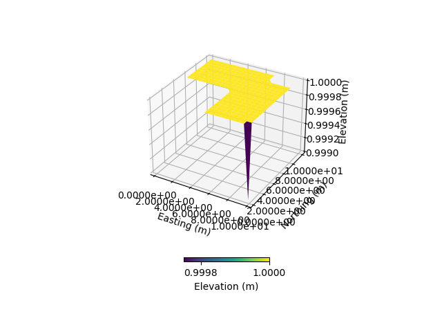
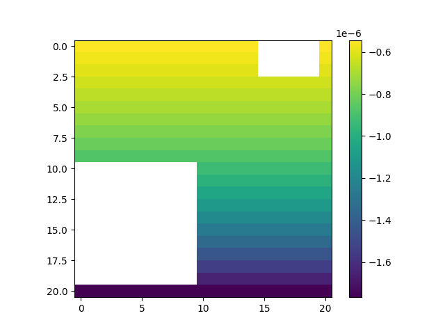
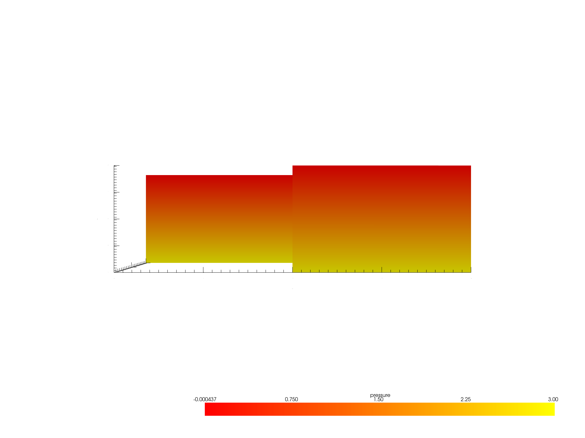

Note
Go to the end to download the full example code.
Atmbc update with no-data#
This tutorial demonstrates how to update atmospheric boundary conditions (bc) using spatially and temporally distributed data in a hydrological model with nodata areas.
Reference: Weill, S., et al. « Coupling Water Flow and Solute Transport into a Physically-Based Surface–Subsurface Hydrological Model ». Advances in Water Resources, vol. 34, no 1, janvier 2011, p. 128‑36. DOI.org (Crossref), https://doi.org/10.1016/j.advwatres.2010.10.001.
This example uses the pyCATHY wrapper for the CATHY model to reproduce results from the Weill et al. dataset. The notebook is interactive and can be executed in sections to observe the intermediate results. It can also be shared for collaborative work without any installation required.
Estimated time to run the notebook = 5 minutes
# Import necessary libraries
import os
import matplotlib.pyplot as plt
import numpy as np
import pandas as pd
import pyvista as pv
# Import pyCATHY modules for handling mesh, inputs, and outputs
import pyCATHY.meshtools as mt
from pyCATHY import cathy_tools
from pyCATHY.importers import cathy_inputs as in_CT
from pyCATHY.importers import cathy_outputs as out_CT
from pyCATHY.plotters import cathy_plots as cplt
Define the project directory and model name. This example uses ‘atmbc_spatially_from_weill’.
path2prj = "../SSHydro/" # Replace with your local project path
simu = cathy_tools.CATHY(dirName=path2prj, prj_name="atmbc_spatially_from_weill_withnodata")
🏁 Initiate CATHY object
Read the DEM input file
DEM, dem_header = simu.read_inputs('dem')
# Create a new DEM array filled with ones and add irregular boundary and invalid values (-9999)
DEM_new = np.ones(np.shape(DEM)) # Initialize new DEM with ones
DEM_new[-1, -1] = 1 - 1e-3 # Adjust a specific corner value
DEM_new[10:20, 0:10] = -9999 # Add an interior block of invalid values to simulate an irregular boundary
DEM_new[0:3, 15:20] = -9999 # Add an interior block of invalid values to simulate an irregular boundary
# Update the CATHY inputs with the modified DEM
simu.update_prepo_inputs(DEM_new)
# Visualize the updated DEM
simu.show_input('dem')

🔄 Update hap.in file
🔄 Update dem_parameters file
🔄 Update dtm_13 file
🔄 update zone file
🔄 Update dem_parameters file
🔄 Update parm file
🔄 Update dem_parameters file
Run the preprocessor to handle inputs and generate the mesh
simu.run_preprocessor()
# Create a 3D mesh visualization (VTK format)
simu.create_mesh_vtk(verbose=True)
# Load the 3D grid output
grid3d = simu.read_outputs('grid3d')
# Set parameters for elevation
simu.dem_parameters
elevation_increment = 0.5 / 21 # Define elevation increment per row
elevation_matrix = np.ones([21, 21]) # Initialize the elevation matrix
# Populate elevation_matrix with incremental values based on row index
for row in range(21):
elevation_matrix[row, :] += row * elevation_increment
🍳 gfortran compilation
👟 Run preprocessor
🍳 gfortran compilation
👟 Run preprocessor
wbb...
searching the dtm_13.val input file...
assigned nodata value = -9999.0000000000000
number of processed cells = 285
...wbb completed
rn...
csort I...
...completed
depit...
dem modifications = 281
dem modifications = 275
dem modifications = 269
dem modifications = 258
dem modifications = 245
dem modifications = 229
dem modifications = 208
dem modifications = 187
dem modifications = 173
dem modifications = 158
dem modifications = 144
dem modifications = 124
dem modifications = 101
dem modifications = 79
dem modifications = 56
dem modifications = 21
dem modifications = 0
dem modifications = 2808 (total)
...completed
csort II...
...completed
cca...
contour curvature threshold value = 9.99999996E+11
...completed
smean...
mean (min,max) facet slope = 0.000019190 ( 0.000000092, 0.002000000)
...completed
dsf...
the drainage direction of the outlet cell ( 7 ) is used
...completed
hg...
...completed
saving the data in the basin_b/basin_i files...
...rn completed
mrbb...
Select the header type:
0) None
1) ESRI ascii file
2) GRASS ascii file
(Ctrl C to exit)
->
Select the nodata value:
(Ctrl C to exit)
->
Select the pointer system:
1) HAP system
2) Arc/Gis system
(Ctrl C to exit)
-> ~~~~~~~~~~~~~~~~~~~~~~~~~~~~~~~~~~~~~~~~~~
dem file
min value = 0.999000E+00
max value = 0.100000E+01
number of cells = 285
mean value = 0.999997E+00
writing the output file...
~~~~~~~~~~~~~~~~~~~~~~~~~~~~~~~~~~~~~~~~~~
lakes_map file
min value = 0
max value = 0
number of cells = 285
mean value = 0.000000
writing the output file...
~~~~~~~~~~~~~~~~~~~~~~~~~~~~~~~~~~~~~~~~~~
zone file
min value = 1
max value = 1
number of cells = 285
mean value = 1.000000
writing the output file...
~~~~~~~~~~~~~~~~~~~~~~~~~~~~~~~~~~~~~~~~~~
dtm_w_1 file
min value = 0.000000E+00
max value = 0.100000E+01
number of cells = 285
mean value = 0.929825E+00
writing the output file...
~~~~~~~~~~~~~~~~~~~~~~~~~~~~~~~~~~~~~~~~~~
dtm_w_2 file
min value = 0.000000E+00
max value = 0.100000E+01
number of cells = 285
mean value = 0.701754E-01
writing the output file...
~~~~~~~~~~~~~~~~~~~~~~~~~~~~~~~~~~~~~~~~~~
dtm_p_outflow_1 file
min value = 0
max value = 8
number of cells = 285
mean value = 5.515790
writing the output file...
~~~~~~~~~~~~~~~~~~~~~~~~~~~~~~~~~~~~~~~~~~
dtm_p_outflow_2 file
min value = 1
max value = 9
number of cells = 285
mean value = 7.252632
writing the output file...
~~~~~~~~~~~~~~~~~~~~~~~~~~~~~~~~~~~~~~~~~~
A_inflow file
min value = 0.000000000000E+00
max value = 0.710000000000E+02
number of cells = 285
mean value = 0.299122810364E+01
writing the output file...
~~~~~~~~~~~~~~~~~~~~~~~~~~~~~~~~~~~~~~~~~~
dtm_local_slope_1 file
min value = 0.000000E+00
max value = 0.200000E-02
number of cells = 285
mean value = 0.141551E-04
writing the output file...
~~~~~~~~~~~~~~~~~~~~~~~~~~~~~~~~~~~~~~~~~~
dtm_local_slope_2 file
min value = 0.000000E+00
max value = 0.141421E-02
number of cells = 285
mean value = 0.998785E-05
writing the output file...
~~~~~~~~~~~~~~~~~~~~~~~~~~~~~~~~~~~~~~~~~~
dtm_epl_1 file
min value = 0.000000E+00
max value = 0.500000E+00
number of cells = 285
mean value = 0.492982E+00
writing the output file...
~~~~~~~~~~~~~~~~~~~~~~~~~~~~~~~~~~~~~~~~~~
dtm_epl_2 file
min value = 0.000000E+00
max value = 0.707107E+00
number of cells = 285
mean value = 0.528469E+00
writing the output file...
~~~~~~~~~~~~~~~~~~~~~~~~~~~~~~~~~~~~~~~~~~
dtm_kSs1_sf_1 file
min value = 0.000000E+00
max value = 0.240040E+02
number of cells = 285
mean value = 0.223195E+02
writing the output file...
~~~~~~~~~~~~~~~~~~~~~~~~~~~~~~~~~~~~~~~~~~
dtm_kSs1_sf_2 file
min value = 0.000000E+00
max value = 0.240040E+02
number of cells = 285
mean value = 0.168449E+01
writing the output file...
~~~~~~~~~~~~~~~~~~~~~~~~~~~~~~~~~~~~~~~~~~
dtm_Ws1_sf file
min value = 0.000000E+00
max value = 0.100000E+01
number of cells = 285
mean value = 0.929825E+00
writing the output file...
~~~~~~~~~~~~~~~~~~~~~~~~~~~~~~~~~~~~~~~~~~
dtm_Ws1_sf_2 file
min value = 0.000000E+00
max value = 0.100000E+01
number of cells = 285
mean value = 0.701754E-01
writing the output file...
~~~~~~~~~~~~~~~~~~~~~~~~~~~~~~~~~~~~~~~~~~
dtm_b1_sf file
min value = 0.000000E+00
max value = 0.000000E+00
number of cells = 285
mean value = 0.000000E+00
writing the output file...
~~~~~~~~~~~~~~~~~~~~~~~~~~~~~~~~~~~~~~~~~~
dtm_y1_sf file
min value = 0.000000E+00
max value = 0.000000E+00
number of cells = 285
mean value = 0.000000E+00
writing the output file...
~~~~~~~~~~~~~~~~~~~~~~~~~~~~~~~~~~~~~~~~~~
dtm_hcID file
min value = 0
max value = 0
number of cells = 285
mean value = 0.000000
writing the output file...
~~~~~~~~~~~~~~~~~~~~~~~~~~~~~~~~~~~~~~~~~~
dtm_q_output file
min value = 0
max value = 0
number of cells = 285
mean value = 0.000000
writing the output file...
~~~~~~~~~~~~~~~~~~~~~~~~~~~~~~~~~~~~~~~~~~
dtm_nrc file
min value = 0.100000E+01
max value = 0.100000E+01
number of cells = 285
mean value = 0.100000E+01
writing the output file...
...mrbb completed
bb2shp...
writing file river_net.shp
Note: The following floating-point exceptions are signalling: IEEE_UNDERFLOW_FLAG IEEE_DENORMAL
🔄 Update parm file
🛠 Recompile src files [8s]
🍳 gfortran compilation [15s]
✅ Compilation successful!
👟 Run processor
b'\n\n IPRT1=3: Program terminating after output of X, Y, Z coordinate values\n'
# Set up time intervals and cycles for the boundary condition
interval = 5 # Number of intervals
ncycles = 7 # Number of cycles
t_atmbc = np.linspace(1e-3, 36e3 * ncycles, interval * ncycles) # Time vector
# Atmospheric boundary condition value
v_atmbc_value = -2e-7 # Set the boundary condition value
# Check if the number of nodes matches the flattened elevation matrix
if int(grid3d['nnod']) == len(np.ravel(elevation_matrix)):
# Calculate the atmospheric boundary condition for each node based on elevation
v_atmbc = np.ones(int(grid3d['nnod'])) * v_atmbc_value * np.ravel(elevation_matrix)
else:
# For cases where the number of nodes doesn't match, calculate for all nodes
v_atmbc_all_nodes = np.ones(len(np.ravel(elevation_matrix))) * v_atmbc_value * np.ravel(np.exp(elevation_matrix**2))
# Reshape the boundary condition values to match the DEM shape
v_atmbc_mat = np.reshape(v_atmbc_all_nodes, [np.shape(simu.DEM)[0] + 1, np.shape(simu.DEM)[0] + 1])
# Mask invalid values in the DEM (-9999) by setting them to NaN
maskDEM_novalid = np.where(DEM_new == -9999)
v_atmbc_mat[maskDEM_novalid] = np.nan
# Flatten the masked matrix and remove NaN values
v_atmbc = np.ravel(v_atmbc_mat)
v_atmbc = v_atmbc[~np.isnan(v_atmbc)] # Use ~np.isnan to filter out NaN values
# Visualize the spatial variation of the atmospheric boundary condition
fig, ax = plt.subplots()
img = ax.imshow(v_atmbc_mat)
plt.colorbar(img)
# Update the atmospheric boundary condition (ATMB) parameters in CATHY
simu.update_atmbc(
HSPATM=0,
IETO=0,
time=t_atmbc,
netValue=[v_atmbc] * len(t_atmbc) # Apply the same boundary condition at all times
)
# Update the model parameters (time control) in CATHY
simu.update_parm(TIMPRTi=t_atmbc)

🔄 Update atmbc
🔄 Update parm file
🔄 Update parm file
───────────────────────────────────────────────────────────────────────────────── ⚠ warning messages above ⚠ ─────────────────────────────────────────────────────────────────────────────────
['Adjusting NPRT with respect to time of interests requested\n']
──────────────────────────────────────────────────────────────────────────────────────────────────────────────────────────────────────────────────────────────────────────────────────────────
# Run the model processor with specified parameters for time stepping and output control
simu.run_processor(
IPRT1=2, # Print results at time step 2
DTMIN=1e-2, # Minimum time step
DTMAX=1e2, # Maximum time step
DELTAT=5, # Time increment
TRAFLAG=0, # Transport flag off
VTKF=2, # Output VTK format
verbose=True # Turn off verbose mode
)
🔄 Update parm file
🛠 Recompile src files [15s]
🍳 gfortran compilation [22s]
✅ Compilation successful!
👟 Run processor
b'\n nsf (# of seepage faces) = 0\n\n\n TIME STEP: 1 DELTAT: 5.0000E+00 TIME: 5.0000E+00\n
******************************************************************\n\n\n NONLINEAR CONVERGENCE BEHAVIOR \n iter- convergence error norms node PNEW at POLD at
residual error norms\n ation PL2 PIKMAX IKMAX IKMAX IKMAX FL2 FINF\n 1 2.6544E-03 9.6355E-04 5216 3.00E+00 3.00E+00 2.354E-07 8.021E-08\n
2 1.1736E+01 -1.8231E-01 324 -1.82E-01 0.00E+00 4.143E-06 4.596E-07\n 3 1.5767E+01 5.4962E-01 324 3.67E-01 -1.82E-01 8.092E-03 3.018E-04\n 4 2.4509E+01 5.3184E-01
2606 5.42E-01 1.02E-02 2.041E-03 1.279E-04\n 5 3.1364E+01 -5.3946E-01 650 -1.66E-01 3.73E-01 5.459E-02 2.855E-03\n 6 1.3433E+01 5.0086E-01 324 3.28E-01 -1.72E-01
7.215E-03 2.667E-04\n 7 1.7184E+01 4.2564E-01 2280 4.45E-01 1.89E-02 1.836E-03 1.194E-04\n 8 2.3771E+01 -4.9911E-01 650 -1.65E-01 3.34E-01 4.586E-02 2.551E-03\n
9 1.3107E+01 4.9371E-01 324 3.23E-01 -1.71E-01 7.084E-03 2.609E-04\n 10 1.6599E+01 4.2153E-01 2280 4.39E-01 1.73E-02 1.808E-03 1.175E-04\n CONVERGENCE NOT ACHIEVED IN
10 ITERATIONS\n\n\n TIME STEP: 1 DELTAT: 2.5000E+00 TIME: 2.5000E+00\n ******************************************************************\n\n\n
NONLINEAR CONVERGENCE BEHAVIOR \n iter- convergence error norms node PNEW at POLD at residual error norms\n ation PL2 PIKMAX IKMAX IKMAX IKMAX FL2
FINF\n 1 2.6478E-03 9.6117E-04 5216 3.00E+00 3.00E+00 2.354E-07 8.021E-08\n 2 5.9860E+00 -1.0086E-01 324 -1.01E-01 0.00E+00 4.143E-06 4.596E-07\n 3 4.6025E+00
2.0655E-01 324 1.06E-01 -1.01E-01 6.416E-03 2.915E-04\n 4 3.5186E+00 1.6907E-01 1884 1.70E-01 1.01E-03 1.295E-03 8.354E-05\n 5 6.1055E+00 -1.9611E-01 650
-9.48E-02 1.01E-01 1.256E-02 8.188E-04\n 6 4.6025E+00 2.0655E-01 324 1.06E-01 -1.01E-01 6.416E-03 2.915E-04\n 7 3.5186E+00 1.6907E-01 1884 1.70E-01 1.01E-03
1.295E-03 8.354E-05\n 8 6.1055E+00 -1.9611E-01 650 -9.48E-02 1.01E-01 1.256E-02 8.188E-04\n 9 4.6025E+00 2.0655E-01 324 1.06E-01 -1.01E-01 6.416E-03 2.915E-04\n
10 3.5186E+00 1.6907E-01 1884 1.70E-01 1.01E-03 1.295E-03 8.354E-05\n CONVERGENCE NOT ACHIEVED IN 10 ITERATIONS\n\n\n TIME STEP: 1 DELTAT: 1.2500E+00 TIME:
1.2500E+00\n ******************************************************************\n\n\n NONLINEAR CONVERGENCE BEHAVIOR \n iter- convergence error norms node PNEW at
POLD at residual error norms\n ation PL2 PIKMAX IKMAX IKMAX IKMAX FL2 FINF\n 1 2.6347E-03 9.5651E-04 5216 3.00E+00 3.00E+00 2.354E-07
8.021E-08\n 2 3.1142E+00 -5.8583E-02 324 -5.86E-02 0.00E+00 4.143E-06 4.597E-07\n 3 1.5813E+00 8.5139E-02 324 2.66E-02 -5.86E-02 4.845E-03 2.947E-04\n 4
9.3640E-01 2.4354E-02 1153 2.45E-02 1.91E-04 9.231E-04 6.127E-05\n 5 1.9927E+00 -7.7647E-02 650 -5.25E-02 2.51E-02 2.259E-03 2.035E-04\n 6 1.5813E+00 8.5139E-02
324 2.66E-02 -5.86E-02 4.845E-03 2.947E-04\n 7 9.3640E-01 2.4354E-02 1153 2.45E-02 1.91E-04 9.231E-04 6.127E-05\n 8 1.9927E+00 -7.7647E-02 650 -5.25E-02 2.51E-02
2.259E-03 2.035E-04\n 9 1.5813E+00 8.5139E-02 324 2.66E-02 -5.86E-02 4.845E-03 2.947E-04\n 10 9.3640E-01 2.4354E-02 1153 2.45E-02 1.91E-04 9.231E-04 6.127E-05\n
CONVERGENCE NOT ACHIEVED IN 10 ITERATIONS\n\n\n TIME STEP: 1 DELTAT: 6.2500E-01 TIME: 6.2500E-01\n
******************************************************************\n\n\n NONLINEAR CONVERGENCE BEHAVIOR \n iter- convergence error norms node PNEW at POLD at
residual error norms\n ation PL2 PIKMAX IKMAX IKMAX IKMAX FL2 FINF\n 1 2.6096E-03 9.4750E-04 5216 3.00E+00 3.00E+00 2.354E-07 8.021E-08\n
2 1.6757E+00 -3.5812E-02 324 -3.58E-02 0.00E+00 4.143E-06 4.597E-07\n 3 7.1227E-01 3.9663E-02 324 3.85E-03 -3.58E-02 3.622E-03 2.682E-04\n 4 4.5321E-01 1.1994E-02
850 1.20E-02 4.21E-05 6.874E-04 5.964E-05\n 5 5.1198E-01 -2.6583E-02 324 -2.66E-02 0.00E+00 5.608E-04 5.232E-05\n 6 3.2147E-01 2.5352E-02 324 -1.23E-03 -2.66E-02
1.305E-03 1.807E-04\n 7 1.5331E-01 1.1736E-02 928 1.18E-02 5.70E-05 2.702E-04 3.328E-05\n 8 2.3950E-01 1.1145E-02 976 1.26E-02 1.42E-03 1.595E-04 2.560E-05\n
9 1.0293E-01 4.4170E-03 631 4.57E-03 1.50E-04 6.475E-05 1.024E-05\n 10 1.5463E-02 6.7009E-04 283 -7.41E-04 -1.41E-03 6.366E-06 1.055E-06\n CONVERGENCE NOT ACHIEVED IN
10 ITERATIONS\n\n\n TIME STEP: 1 DELTAT: 3.1250E-01 TIME: 3.1250E-01\n ******************************************************************\n\n\n
NONLINEAR CONVERGENCE BEHAVIOR \n iter- convergence error norms node PNEW at POLD at residual error norms\n ation PL2 PIKMAX IKMAX IKMAX IKMAX FL2
FINF\n 1 2.5626E-03 9.3066E-04 5216 3.00E+00 3.00E+00 2.354E-07 8.021E-08\n 2 9.4829E-01 -2.3031E-02 324 -2.30E-02 0.00E+00 4.143E-06 4.598E-07\n 3 3.8248E-01
2.1056E-02 324 -1.97E-03 -2.30E-02 2.865E-03 2.930E-04\n 4 1.8711E-01 1.1504E-02 921 1.17E-02 1.98E-04 4.900E-04 3.777E-05\n 5 3.4483E-01 1.1538E-02 975
1.26E-02 1.09E-03 2.838E-04 2.987E-05\n 6 1.2269E-01 4.5342E-03 619 5.10E-03 5.67E-04 1.034E-04 1.406E-05\n 7 1.7412E-02 6.1905E-04 272 -5.10E-04 -1.13E-03
1.227E-05 1.661E-06\n 8 3.2232E-03 1.2022E-04 272 -3.90E-04 -5.10E-04 1.672E-06 2.382E-07\n 9 2.0260E-04 1.0886E-05 326 -2.22E-04 -2.32E-04 9.612E-08 1.536E-08\n
CONVERGENCE ACHIEVED IN 9 ITERATIONS\n\n\n TIME STEP: 2 DELTAT: 1.5625E-01 TIME: 4.6875E-01\n
******************************************************************\n\n\n NONLINEAR CONVERGENCE BEHAVIOR \n iter- convergence error norms node PNEW at POLD at
residual error norms\n ation PL2 PIKMAX IKMAX IKMAX IKMAX FL2 FINF\n 1 1.6841E-03 -6.1607E-05 5206 3.00E+00 3.00E+00 7.390E-08 3.912E-08\n
CONVERGENCE ACHIEVED IN 1 ITERATIONS\n\n\n TIME STEP: 3 DELTAT: 1.7188E-01 TIME: 6.4062E-01\n
******************************************************************\n\n\n NONLINEAR CONVERGENCE BEHAVIOR \n iter- convergence error norms node PNEW at POLD at
residual error norms\n ation PL2 PIKMAX IKMAX IKMAX IKMAX FL2 FINF\n 1 9.6322E-04 -3.7389E-05 5195 3.00E+00 3.00E+00 6.294E-08 3.582E-08\n
CONVERGENCE ACHIEVED IN 1 ITERATIONS\n\n\n TIME STEP: 4 DELTAT: 1.8906E-01 TIME: 8.2969E-01\n
******************************************************************\n\n\n NONLINEAR CONVERGENCE BEHAVIOR \n iter- convergence error norms node PNEW at POLD at
residual error norms\n ation PL2 PIKMAX IKMAX IKMAX IKMAX FL2 FINF\n 1 5.5277E-04 3.0513E-05 326 -1.39E-04 -1.70E-04 6.194E-08 3.415E-08\n
CONVERGENCE ACHIEVED IN 1 ITERATIONS\n\n\n TIME STEP: 5 DELTAT: 2.0797E-01 TIME: 1.0377E+00\n
******************************************************************\n\n\n NONLINEAR CONVERGENCE BEHAVIOR \n iter- convergence error norms node PNEW at POLD at
residual error norms\n ation PL2 PIKMAX IKMAX IKMAX IKMAX FL2 FINF\n 1 3.2397E-04 3.4656E-05 326 -1.05E-04 -1.39E-04 6.120E-08 3.246E-08\n
CONVERGENCE ACHIEVED IN 1 ITERATIONS\n\n\n TIME STEP: 6 DELTAT: 2.2877E-01 TIME: 1.2664E+00\n
******************************************************************\n\n\n NONLINEAR CONVERGENCE BEHAVIOR \n iter- convergence error norms node PNEW at POLD at
residual error norms\n ation PL2 PIKMAX IKMAX IKMAX IKMAX FL2 FINF\n 1 2.1434E-04 4.0475E-05 326 -6.40E-05 -1.05E-04 5.977E-08 3.063E-08\n
CONVERGENCE ACHIEVED IN 1 ITERATIONS\n\n\n TIME STEP: 7 DELTAT: 2.5164E-01 TIME: 1.5181E+00\n
******************************************************************\n\n\n NONLINEAR CONVERGENCE BEHAVIOR \n iter- convergence error norms node PNEW at POLD at
residual error norms\n ation PL2 PIKMAX IKMAX IKMAX IKMAX FL2 FINF\n 1 1.8364E-04 5.0635E-05 326 -1.34E-05 -6.40E-05 5.768E-08 2.858E-08\n
CONVERGENCE ACHIEVED IN 1 ITERATIONS\n\n\n TIME STEP: 8 DELTAT: 2.7681E-01 TIME: 1.7949E+00\n
******************************************************************\n\n\n NONLINEAR CONVERGENCE BEHAVIOR \n iter- convergence error norms node PNEW at POLD at
residual error norms\n ation PL2 PIKMAX IKMAX IKMAX IKMAX FL2 FINF\n 1 2.5609E-04 9.2879E-05 326 7.95E-05 -1.34E-05 5.514E-08 2.615E-08\n
CONVERGENCE ACHIEVED IN 1 ITERATIONS\n\n\n TIME STEP: 9 DELTAT: 3.0449E-01 TIME: 2.0994E+00\n
******************************************************************\n\n\n NONLINEAR CONVERGENCE BEHAVIOR \n iter- convergence error norms node PNEW at POLD at
residual error norms\n ation PL2 PIKMAX IKMAX IKMAX IKMAX FL2 FINF\n 1 1.5373E-02 3.2032E-03 314 2.95E-03 -2.58E-04 7.949E-06 5.562E-06\n
2 1.0302E-03 -5.6465E-05 652 6.06E-03 6.12E-03 5.576E-07 1.508E-07\n CONVERGENCE ACHIEVED IN 2 ITERATIONS\n\n\n TIME STEP: 10 DELTAT: 3.3494E-01 TIME:
2.4343E+00\n ******************************************************************\n\n\n NONLINEAR CONVERGENCE BEHAVIOR \n iter- convergence error norms node PNEW at
POLD at residual error norms\n ation PL2 PIKMAX IKMAX IKMAX IKMAX FL2 FINF\n 1 1.4450E-02 -2.8899E-03 640 6.00E-03 8.89E-03 2.624E-05
2.302E-05\n 2 5.9032E-04 1.7548E-05 631 5.09E-03 5.08E-03 3.166E-07 3.422E-08\n CONVERGENCE ACHIEVED IN 2 ITERATIONS\n\n\n TIME STEP: 11 DELTAT: 3.6843E-01
TIME: 2.8027E+00\n ******************************************************************\n\n\n NONLINEAR CONVERGENCE BEHAVIOR \n iter- convergence error norms node
PNEW at POLD at residual error norms\n ation PL2 PIKMAX IKMAX IKMAX IKMAX FL2 FINF\n 1 9.6275E-03 -2.4181E-04 305 -1.15E-03 -9.10E-04
4.045E-06 4.378E-07\n 2 4.3002E-04 1.2169E-05 631 4.87E-03 4.85E-03 2.295E-07 2.462E-08\n CONVERGENCE ACHIEVED IN 2 ITERATIONS\n\n\n TIME STEP: 12 DELTAT:
4.0527E-01 TIME: 3.2080E+00\n ******************************************************************\n\n\n NONLINEAR CONVERGENCE BEHAVIOR \n iter- convergence error
norms node PNEW at POLD at residual error norms\n ation PL2 PIKMAX IKMAX IKMAX IKMAX FL2 FINF\n 1 9.6066E-03 -2.3655E-04 305 -1.38E-03
-1.14E-03 4.045E-06 4.370E-07\n 2 3.5096E-04 9.5693E-06 631 4.64E-03 4.63E-03 1.831E-07 1.951E-08\n CONVERGENCE ACHIEVED IN 2 ITERATIONS\n\n\n TIME STEP: 13
DELTAT: 4.4580E-01 TIME: 3.6538E+00\n ******************************************************************\n\n\n NONLINEAR CONVERGENCE BEHAVIOR \n iter-
convergence error norms node PNEW at POLD at residual error norms\n ation PL2 PIKMAX IKMAX IKMAX IKMAX FL2 FINF\n 1 9.7221E-03 -2.3621E-04
305 -1.60E-03 -1.37E-03 4.043E-06 4.362E-07\n 2 3.0592E-04 8.0829E-06 631 4.41E-03 4.41E-03 1.544E-07 1.633E-08\n CONVERGENCE ACHIEVED IN 2 ITERATIONS\n\n\n TIME
STEP: 14 DELTAT: 4.9038E-01 TIME: 4.1442E+00\n ******************************************************************\n\n\n NONLINEAR CONVERGENCE BEHAVIOR
\n iter- convergence error norms node PNEW at POLD at residual error norms\n ation PL2 PIKMAX IKMAX IKMAX IKMAX FL2 FINF\n 1 9.9432E-03
-2.3898E-04 305 -1.83E-03 -1.60E-03 4.042E-06 4.353E-07\n 2 2.7831E-04 7.1491E-06 631 4.18E-03 4.18E-03 1.348E-07 1.414E-08\n CONVERGENCE ACHIEVED IN 2
ITERATIONS\n\n\n TIME STEP: 15 DELTAT: 5.3942E-01 TIME: 4.6836E+00\n ******************************************************************\n\n\n
NONLINEAR CONVERGENCE BEHAVIOR \n iter- convergence error norms node PNEW at POLD at residual error norms\n ation PL2 PIKMAX IKMAX IKMAX IKMAX FL2
FINF\n 1 1.0254E-02 -2.4397E-04 305 -2.07E-03 -1.83E-03 4.040E-06 4.343E-07\n 2 2.6089E-04 6.5285E-06 631 3.95E-03 3.94E-03 1.206E-07 1.254E-08\n CONVERGENCE
ACHIEVED IN 2 ITERATIONS\n\n\n TIME STEP: 16 DELTAT: 5.9336E-01 TIME: 5.2770E+00\n ******************************************************************\n\n\n
NONLINEAR CONVERGENCE BEHAVIOR \n iter- convergence error norms node PNEW at POLD at residual error norms\n ation PL2 PIKMAX IKMAX IKMAX IKMAX FL2
FINF\n 1 1.0641E-02 -2.5073E-04 305 -2.32E-03 -2.06E-03 4.037E-06 4.331E-07\n 2 2.4996E-04 6.1022E-06 631 3.70E-03 3.70E-03 1.098E-07 1.131E-08\n CONVERGENCE
ACHIEVED IN 2 ITERATIONS\n\n\n TIME STEP: 17 DELTAT: 6.5270E-01 TIME: 5.9296E+00\n ******************************************************************\n\n\n
NONLINEAR CONVERGENCE BEHAVIOR \n iter- convergence error norms node PNEW at POLD at residual error norms\n ation PL2 PIKMAX IKMAX IKMAX IKMAX FL2
FINF\n 1 1.1098E-02 -2.5900E-04 305 -2.57E-03 -2.31E-03 4.034E-06 4.319E-07\n 2 2.4351E-04 5.8047E-06 631 3.45E-03 3.44E-03 1.013E-07 1.032E-08\n CONVERGENCE
ACHIEVED IN 2 ITERATIONS\n\n\n TIME STEP: 18 DELTAT: 7.1796E-01 TIME: 6.6476E+00\n ******************************************************************\n\n\n
NONLINEAR CONVERGENCE BEHAVIOR \n iter- convergence error norms node PNEW at POLD at residual error norms\n ation PL2 PIKMAX IKMAX IKMAX IKMAX FL2
FINF\n 1 1.1620E-02 -2.6864E-04 305 -2.83E-03 -2.56E-03 4.031E-06 4.305E-07\n 2 2.4029E-04 5.5970E-06 631 3.19E-03 3.18E-03 9.445E-08 9.504E-09\n CONVERGENCE
ACHIEVED IN 2 ITERATIONS\n\n\n TIME STEP: 19 DELTAT: 7.8976E-01 TIME: 7.4374E+00\n ******************************************************************\n\n\n
NONLINEAR CONVERGENCE BEHAVIOR \n iter- convergence error norms node PNEW at POLD at residual error norms\n ation PL2 PIKMAX IKMAX IKMAX IKMAX FL2
FINF\n 1 1.2205E-02 -2.7958E-04 305 -3.11E-03 -2.83E-03 4.027E-06 4.290E-07\n 2 2.3953E-04 5.4543E-06 631 2.92E-03 2.91E-03 8.882E-08 8.840E-09\n CONVERGENCE
ACHIEVED IN 2 ITERATIONS\n\n\n TIME STEP: 20 DELTAT: 8.6874E-01 TIME: 8.3061E+00\n ******************************************************************\n\n\n
NONLINEAR CONVERGENCE BEHAVIOR \n iter- convergence error norms node PNEW at POLD at residual error norms\n ation PL2 PIKMAX IKMAX IKMAX IKMAX FL2
FINF\n 1 1.2853E-02 -2.9180E-04 305 -3.39E-03 -3.10E-03 4.023E-06 4.275E-07\n 2 2.4071E-04 5.3601E-06 631 2.63E-03 2.62E-03 8.410E-08 8.284E-09\n CONVERGENCE
ACHIEVED IN 2 ITERATIONS\n\n\n TIME STEP: 21 DELTAT: 9.5561E-01 TIME: 9.2617E+00\n ******************************************************************\n\n\n
NONLINEAR CONVERGENCE BEHAVIOR \n iter- convergence error norms node PNEW at POLD at residual error norms\n ation PL2 PIKMAX IKMAX IKMAX IKMAX FL2
FINF\n 1 1.3566E-02 -3.0530E-04 305 -3.69E-03 -3.39E-03 4.018E-06 4.258E-07\n 2 2.7222E-02 -6.0000E-03 314 -6.00E-03 0.00E+00 8.726E-07 7.291E-07\n 3 1.8717E-02
4.0913E-03 314 -1.91E-03 -6.00E-03 1.114E-05 8.267E-06\n 4 4.0355E-03 8.8356E-04 325 -9.07E-04 -1.79E-03 1.580E-06 1.150E-06\n 5 5.6525E-04 1.2993E-04 325
-7.77E-04 -9.07E-04 1.587E-07 1.045E-07\n 6 1.6754E-05 4.1140E-06 651 5.21E-03 5.20E-03 3.745E-09 2.151E-09\n CONVERGENCE ACHIEVED IN 6 ITERATIONS\n\n\n TIME STEP:
22 DELTAT: 9.5561E-01 TIME: 1.0217E+01\n ******************************************************************\n\n\n NONLINEAR CONVERGENCE BEHAVIOR \n iter-
convergence error norms node PNEW at POLD at residual error norms\n ation PL2 PIKMAX IKMAX IKMAX IKMAX FL2 FINF\n 1 1.3249E-02 -2.9170E-04
305 -3.98E-03 -3.69E-03 4.039E-06 4.242E-07\n 2 2.1788E-04 1.4047E-05 314 -1.22E-03 -1.23E-03 7.272E-08 1.862E-08\n CONVERGENCE ACHIEVED IN 2 ITERATIONS\n\n\n TIME
STEP: 23 DELTAT: 1.0512E+00 TIME: 1.1269E+01\n ******************************************************************\n\n\n NONLINEAR CONVERGENCE BEHAVIOR
\n iter- convergence error norms node PNEW at POLD at residual error norms\n ation PL2 PIKMAX IKMAX IKMAX IKMAX FL2 FINF\n 1 1.4174E-02
-4.2431E-04 314 -1.64E-03 -1.22E-03 4.058E-06 4.226E-07\n 2 9.8363E-03 -4.0057E-03 326 -4.01E-03 0.00E+00 2.234E-07 2.095E-07\n 3 6.5141E-03 2.6484E-03 326
-1.36E-03 -4.01E-03 2.146E-06 2.146E-06\n 4 1.4361E-03 5.8488E-04 326 -7.72E-04 -1.36E-03 3.178E-07 3.177E-07\n 5 1.7108E-04 6.9402E-05 326 -7.03E-04 -7.72E-04
2.963E-08 2.954E-08\n CONVERGENCE ACHIEVED IN 5 ITERATIONS\n\n\n TIME STEP: 24 DELTAT: 1.0512E+00 TIME: 1.2320E+01\n
******************************************************************\n\n\n NONLINEAR CONVERGENCE BEHAVIOR \n iter- convergence error norms node PNEW at POLD at
residual error norms\n ation PL2 PIKMAX IKMAX IKMAX IKMAX FL2 FINF\n 1 1.5546E-03 -1.1530E-04 314 -1.74E-03 -1.62E-03 3.027E-07 1.370E-07\n
2 9.3606E-06 1.8352E-06 325 -1.44E-03 -1.44E-03 3.940E-09 2.812E-09\n CONVERGENCE ACHIEVED IN 2 ITERATIONS\n\n\n TIME STEP: 25 DELTAT: 1.1563E+00 TIME:
1.3476E+01\n ******************************************************************\n\n\n NONLINEAR CONVERGENCE BEHAVIOR \n iter- convergence error norms node PNEW at
POLD at residual error norms\n ation PL2 PIKMAX IKMAX IKMAX IKMAX FL2 FINF\n 1 9.2426E-04 -1.0920E-04 325 -1.55E-03 -1.44E-03 2.731E-07
1.222E-07\n 2 8.3391E-06 1.6387E-06 326 -8.57E-04 -8.59E-04 3.213E-09 2.203E-09\n CONVERGENCE ACHIEVED IN 2 ITERATIONS\n\n\n TIME STEP: 26 DELTAT: 1.2719E+00
TIME: 1.4748E+01\n ******************************************************************\n\n\n NONLINEAR CONVERGENCE BEHAVIOR \n iter- convergence error norms node
PNEW at POLD at residual error norms\n ation PL2 PIKMAX IKMAX IKMAX IKMAX FL2 FINF\n 1 8.7693E-04 -1.0656E-04 325 -1.65E-03 -1.55E-03
2.460E-07 1.075E-07\n 2 7.4367E-06 1.5428E-06 326 -9.37E-04 -9.39E-04 2.616E-09 1.718E-09\n CONVERGENCE ACHIEVED IN 2 ITERATIONS\n\n\n TIME STEP: 27 DELTAT:
1.3991E+00 TIME: 1.6147E+01\n ******************************************************************\n\n\n NONLINEAR CONVERGENCE BEHAVIOR \n iter- convergence error
norms node PNEW at POLD at residual error norms\n ation PL2 PIKMAX IKMAX IKMAX IKMAX FL2 FINF\n 1 8.5452E-04 -1.0361E-04 325 -1.76E-03
-1.65E-03 2.211E-07 9.378E-08\n 2 6.6359E-06 1.4457E-06 326 -1.02E-03 -1.02E-03 2.129E-09 1.334E-09\n CONVERGENCE ACHIEVED IN 2 ITERATIONS\n\n\n TIME STEP: 28
DELTAT: 1.5390E+00 TIME: 1.7686E+01\n ******************************************************************\n\n\n NONLINEAR CONVERGENCE BEHAVIOR \n iter-
convergence error norms node PNEW at POLD at residual error norms\n ation PL2 PIKMAX IKMAX IKMAX IKMAX FL2 FINF\n 1 8.3526E-04 -1.0030E-04
325 -1.86E-03 -1.76E-03 1.985E-07 8.128E-08\n 2 5.9143E-06 1.3466E-06 326 -1.10E-03 -1.10E-03 1.728E-09 1.029E-09\n CONVERGENCE ACHIEVED IN 2 ITERATIONS\n\n\n TIME
STEP: 29 DELTAT: 1.6929E+00 TIME: 1.9379E+01\n ******************************************************************\n\n\n NONLINEAR CONVERGENCE BEHAVIOR
\n iter- convergence error norms node PNEW at POLD at residual error norms\n ation PL2 PIKMAX IKMAX IKMAX IKMAX FL2 FINF\n 1 8.1919E-04
-9.6597E-05 325 -1.95E-03 -1.85E-03 1.782E-07 6.997E-08\n CONVERGENCE ACHIEVED IN 1 ITERATIONS\n\n\n TIME STEP: 30 DELTAT: 1.8622E+00 TIME: 2.1241E+01\n
******************************************************************\n\n\n NONLINEAR CONVERGENCE BEHAVIOR \n iter- convergence error norms node PNEW at POLD at
residual error norms\n ation PL2 PIKMAX IKMAX IKMAX IKMAX FL2 FINF\n 1 8.0724E-04 -9.2380E-05 325 -2.04E-03 -1.95E-03 1.600E-07 5.948E-08\n
CONVERGENCE ACHIEVED IN 1 ITERATIONS\n\n\n TIME STEP: 31 DELTAT: 2.0484E+00 TIME: 2.3290E+01\n
******************************************************************\n\n\n NONLINEAR CONVERGENCE BEHAVIOR \n iter- convergence error norms node PNEW at POLD at
residual error norms\n ation PL2 PIKMAX IKMAX IKMAX IKMAX FL2 FINF\n 1 8.0058E-04 -8.7781E-05 325 -2.13E-03 -2.04E-03 1.443E-07 5.049E-08\n
CONVERGENCE ACHIEVED IN 1 ITERATIONS\n\n\n TIME STEP: 32 DELTAT: 2.2533E+00 TIME: 2.5543E+01\n
******************************************************************\n\n\n NONLINEAR CONVERGENCE BEHAVIOR \n iter- convergence error norms node PNEW at POLD at
residual error norms\n ation PL2 PIKMAX IKMAX IKMAX IKMAX FL2 FINF\n 1 8.0004E-04 -8.2817E-05 325 -2.21E-03 -2.13E-03 1.306E-07 4.258E-08\n
CONVERGENCE ACHIEVED IN 1 ITERATIONS\n\n\n TIME STEP: 33 DELTAT: 2.4786E+00 TIME: 2.8021E+01\n
******************************************************************\n\n\n NONLINEAR CONVERGENCE BEHAVIOR \n iter- convergence error norms node PNEW at POLD at
residual error norms\n ation PL2 PIKMAX IKMAX IKMAX IKMAX FL2 FINF\n 1 8.0597E-04 -7.8970E-05 326 -1.51E-03 -1.43E-03 1.188E-07 3.566E-08\n
CONVERGENCE ACHIEVED IN 1 ITERATIONS\n\n\n TIME STEP: 34 DELTAT: 2.7265E+00 TIME: 3.0748E+01\n
******************************************************************\n\n\n NONLINEAR CONVERGENCE BEHAVIOR \n iter- convergence error norms node PNEW at POLD at
residual error norms\n ation PL2 PIKMAX IKMAX IKMAX IKMAX FL2 FINF\n 1 8.1841E-04 -7.6013E-05 326 -1.59E-03 -1.51E-03 1.087E-07 2.967E-08\n
CONVERGENCE ACHIEVED IN 1 ITERATIONS\n\n\n TIME STEP: 35 DELTAT: 2.9991E+00 TIME: 3.3747E+01\n
******************************************************************\n\n\n NONLINEAR CONVERGENCE BEHAVIOR \n iter- convergence error norms node PNEW at POLD at
residual error norms\n ation PL2 PIKMAX IKMAX IKMAX IKMAX FL2 FINF\n 1 8.3712E-04 -7.2380E-05 326 -1.66E-03 -1.59E-03 1.001E-07 2.452E-08\n
CONVERGENCE ACHIEVED IN 1 ITERATIONS\n\n\n TIME STEP: 36 DELTAT: 3.2990E+00 TIME: 3.7046E+01\n
******************************************************************\n\n\n NONLINEAR CONVERGENCE BEHAVIOR \n iter- convergence error norms node PNEW at POLD at
residual error norms\n ation PL2 PIKMAX IKMAX IKMAX IKMAX FL2 FINF\n 1 8.6174E-04 -6.8106E-05 326 -1.73E-03 -1.66E-03 9.262E-08 2.012E-08\n
CONVERGENCE ACHIEVED IN 1 ITERATIONS\n\n\n TIME STEP: 37 DELTAT: 3.6289E+00 TIME: 4.0675E+01\n
******************************************************************\n\n\n NONLINEAR CONVERGENCE BEHAVIOR \n iter- convergence error norms node PNEW at POLD at
residual error norms\n ation PL2 PIKMAX IKMAX IKMAX IKMAX FL2 FINF\n 1 8.9182E-04 -6.3249E-05 326 -1.79E-03 -1.73E-03 8.619E-08 1.638E-08\n
CONVERGENCE ACHIEVED IN 1 ITERATIONS\n\n\n TIME STEP: 38 DELTAT: 3.9918E+00 TIME: 4.4667E+01\n
******************************************************************\n\n\n NONLINEAR CONVERGENCE BEHAVIOR \n iter- convergence error norms node PNEW at POLD at
residual error norms\n ation PL2 PIKMAX IKMAX IKMAX IKMAX FL2 FINF\n 1 9.2691E-04 -5.7896E-05 326 -1.85E-03 -1.79E-03 8.059E-08 1.337E-08\n
CONVERGENCE ACHIEVED IN 1 ITERATIONS\n\n\n TIME STEP: 39 DELTAT: 4.3910E+00 TIME: 4.9058E+01\n
******************************************************************\n\n\n NONLINEAR CONVERGENCE BEHAVIOR \n iter- convergence error norms node PNEW at POLD at
residual error norms\n ation PL2 PIKMAX IKMAX IKMAX IKMAX FL2 FINF\n 1 9.6660E-04 -5.2152E-05 326 -1.90E-03 -1.85E-03 7.566E-08 1.094E-08\n
CONVERGENCE ACHIEVED IN 1 ITERATIONS\n\n\n TIME STEP: 40 DELTAT: 4.8301E+00 TIME: 5.3888E+01\n
******************************************************************\n\n\n NONLINEAR CONVERGENCE BEHAVIOR \n iter- convergence error norms node PNEW at POLD at
residual error norms\n ation PL2 PIKMAX IKMAX IKMAX IKMAX FL2 FINF\n 1 1.0105E-03 -4.6144E-05 326 -1.95E-03 -1.90E-03 7.128E-08 9.433E-09\n
CONVERGENCE ACHIEVED IN 1 ITERATIONS\n\n\n TIME STEP: 41 DELTAT: 5.3131E+00 TIME: 5.9201E+01\n
******************************************************************\n\n\n NONLINEAR CONVERGENCE BEHAVIOR \n iter- convergence error norms node PNEW at POLD at
residual error norms\n ation PL2 PIKMAX IKMAX IKMAX IKMAX FL2 FINF\n 1 1.0583E-03 -4.0012E-05 326 -1.99E-03 -1.95E-03 6.732E-08 8.533E-09\n
CONVERGENCE ACHIEVED IN 1 ITERATIONS\n\n\n TIME STEP: 42 DELTAT: 5.8444E+00 TIME: 6.5045E+01\n
******************************************************************\n\n\n NONLINEAR CONVERGENCE BEHAVIOR \n iter- convergence error norms node PNEW at POLD at
residual error norms\n ation PL2 PIKMAX IKMAX IKMAX IKMAX FL2 FINF\n 1 1.1098E-03 -3.3903E-05 326 -2.02E-03 -1.99E-03 6.372E-08 7.666E-09\n
CONVERGENCE ACHIEVED IN 1 ITERATIONS\n\n\n TIME STEP: 43 DELTAT: 6.4289E+00 TIME: 7.1474E+01\n
******************************************************************\n\n\n NONLINEAR CONVERGENCE BEHAVIOR \n iter- convergence error norms node PNEW at POLD at
residual error norms\n ation PL2 PIKMAX IKMAX IKMAX IKMAX FL2 FINF\n 1 1.1649E-03 -3.0088E-05 32 -2.18E-03 -2.15E-03 6.039E-08 6.915E-09\n
CONVERGENCE ACHIEVED IN 1 ITERATIONS\n\n\n TIME STEP: 44 DELTAT: 7.0718E+00 TIME: 7.8546E+01\n
******************************************************************\n\n\n NONLINEAR CONVERGENCE BEHAVIOR \n iter- convergence error norms node PNEW at POLD at
residual error norms\n ation PL2 PIKMAX IKMAX IKMAX IKMAX FL2 FINF\n 1 1.2234E-03 -3.0915E-05 32 -2.21E-03 -2.18E-03 5.731E-08 6.210E-09\n
CONVERGENCE ACHIEVED IN 1 ITERATIONS\n\n\n TIME STEP: 45 DELTAT: 7.7789E+00 TIME: 8.6325E+01\n
******************************************************************\n\n\n NONLINEAR CONVERGENCE BEHAVIOR \n iter- convergence error norms node PNEW at POLD at
residual error norms\n ation PL2 PIKMAX IKMAX IKMAX IKMAX FL2 FINF\n 1 1.2857E-03 -3.1773E-05 32 -2.24E-03 -2.21E-03 5.443E-08 5.539E-09\n
CONVERGENCE ACHIEVED IN 1 ITERATIONS\n\n\n TIME STEP: 46 DELTAT: 8.5568E+00 TIME: 9.4882E+01\n
******************************************************************\n\n\n NONLINEAR CONVERGENCE BEHAVIOR \n iter- convergence error norms node PNEW at POLD at
residual error norms\n ation PL2 PIKMAX IKMAX IKMAX IKMAX FL2 FINF\n 1 1.3518E-03 -3.2651E-05 32 -2.27E-03 -2.24E-03 5.174E-08 5.019E-09\n
CONVERGENCE ACHIEVED IN 1 ITERATIONS\n\n\n TIME STEP: 47 DELTAT: 9.4125E+00 TIME: 1.0429E+02\n
******************************************************************\n\n\n NONLINEAR CONVERGENCE BEHAVIOR \n iter- convergence error norms node PNEW at POLD at
residual error norms\n ation PL2 PIKMAX IKMAX IKMAX IKMAX FL2 FINF\n 1 1.4223E-03 -3.3541E-05 32 -2.31E-03 -2.27E-03 4.922E-08 4.739E-09\n
CONVERGENCE ACHIEVED IN 1 ITERATIONS\n\n\n TIME STEP: 48 DELTAT: 1.0354E+01 TIME: 1.1465E+02\n
******************************************************************\n\n\n NONLINEAR CONVERGENCE BEHAVIOR \n iter- convergence error norms node PNEW at POLD at
residual error norms\n ation PL2 PIKMAX IKMAX IKMAX IKMAX FL2 FINF\n 1 1.4977E-03 -3.4437E-05 32 -2.34E-03 -2.31E-03 4.689E-08 4.469E-09\n
CONVERGENCE ACHIEVED IN 1 ITERATIONS\n\n\n TIME STEP: 49 DELTAT: 1.1389E+01 TIME: 1.2604E+02\n
******************************************************************\n\n\n NONLINEAR CONVERGENCE BEHAVIOR \n iter- convergence error norms node PNEW at POLD at
residual error norms\n ation PL2 PIKMAX IKMAX IKMAX IKMAX FL2 FINF\n 1 1.5789E-03 -3.5340E-05 32 -2.38E-03 -2.34E-03 4.472E-08 4.210E-09\n
CONVERGENCE ACHIEVED IN 1 ITERATIONS\n\n\n TIME STEP: 50 DELTAT: 1.2528E+01 TIME: 1.3857E+02\n
******************************************************************\n\n\n NONLINEAR CONVERGENCE BEHAVIOR \n iter- convergence error norms node PNEW at POLD at
residual error norms\n ation PL2 PIKMAX IKMAX IKMAX IKMAX FL2 FINF\n 1 1.6667E-03 -3.6254E-05 32 -2.41E-03 -2.38E-03 4.274E-08 3.962E-09\n
CONVERGENCE ACHIEVED IN 1 ITERATIONS\n\n\n TIME STEP: 51 DELTAT: 1.3781E+01 TIME: 1.5235E+02\n
******************************************************************\n\n\n NONLINEAR CONVERGENCE BEHAVIOR \n iter- convergence error norms node PNEW at POLD at
residual error norms\n ation PL2 PIKMAX IKMAX IKMAX IKMAX FL2 FINF\n 1 1.7624E-03 -3.7192E-05 32 -2.45E-03 -2.41E-03 4.093E-08 3.727E-09\n
CONVERGENCE ACHIEVED IN 1 ITERATIONS\n\n\n TIME STEP: 52 DELTAT: 1.5159E+01 TIME: 1.6751E+02\n
******************************************************************\n\n\n NONLINEAR CONVERGENCE BEHAVIOR \n iter- convergence error norms node PNEW at POLD at
residual error norms\n ation PL2 PIKMAX IKMAX IKMAX IKMAX FL2 FINF\n 1 1.8671E-03 -3.8170E-05 32 -2.49E-03 -2.45E-03 3.930E-08 3.505E-09\n
CONVERGENCE ACHIEVED IN 1 ITERATIONS\n\n\n TIME STEP: 53 DELTAT: 1.6675E+01 TIME: 1.8418E+02\n
******************************************************************\n\n\n NONLINEAR CONVERGENCE BEHAVIOR \n iter- convergence error norms node PNEW at POLD at
residual error norms\n ation PL2 PIKMAX IKMAX IKMAX IKMAX FL2 FINF\n 1 1.9823E-03 -3.9212E-05 32 -2.53E-03 -2.49E-03 3.785E-08 3.297E-09\n
CONVERGENCE ACHIEVED IN 1 ITERATIONS\n\n\n TIME STEP: 54 DELTAT: 1.8342E+01 TIME: 2.0252E+02\n
******************************************************************\n\n\n NONLINEAR CONVERGENCE BEHAVIOR \n iter- convergence error norms node PNEW at POLD at
residual error norms\n ation PL2 PIKMAX IKMAX IKMAX IKMAX FL2 FINF\n 1 2.1095E-03 -4.0361E-05 24 -2.50E-03 -2.46E-03 3.657E-08 3.105E-09\n
CONVERGENCE ACHIEVED IN 1 ITERATIONS\n\n\n TIME STEP: 55 DELTAT: 2.0177E+01 TIME: 2.2270E+02\n
******************************************************************\n\n\n NONLINEAR CONVERGENCE BEHAVIOR \n iter- convergence error norms node PNEW at POLD at
residual error norms\n ation PL2 PIKMAX IKMAX IKMAX IKMAX FL2 FINF\n 1 2.2505E-03 -4.2707E-05 20 -2.51E-03 -2.47E-03 3.546E-08 2.930E-09\n
CONVERGENCE ACHIEVED IN 1 ITERATIONS\n\n\n TIME STEP: 56 DELTAT: 2.2194E+01 TIME: 2.4489E+02\n
******************************************************************\n\n\n NONLINEAR CONVERGENCE BEHAVIOR \n iter- convergence error norms node PNEW at POLD at
residual error norms\n ation PL2 PIKMAX IKMAX IKMAX IKMAX FL2 FINF\n 1 2.4071E-03 -4.5408E-05 19 -2.55E-03 -2.51E-03 3.450E-08 2.815E-09\n
CONVERGENCE ACHIEVED IN 1 ITERATIONS\n\n\n TIME STEP: 57 DELTAT: 2.4414E+01 TIME: 2.6931E+02\n
******************************************************************\n\n\n NONLINEAR CONVERGENCE BEHAVIOR \n iter- convergence error norms node PNEW at POLD at
residual error norms\n ation PL2 PIKMAX IKMAX IKMAX IKMAX FL2 FINF\n 1 2.5814E-03 -4.8230E-05 18 -2.60E-03 -2.55E-03 3.369E-08 2.736E-09\n
CONVERGENCE ACHIEVED IN 1 ITERATIONS\n\n\n TIME STEP: 58 DELTAT: 2.6855E+01 TIME: 2.9616E+02\n
******************************************************************\n\n\n NONLINEAR CONVERGENCE BEHAVIOR \n iter- convergence error norms node PNEW at POLD at
residual error norms\n ation PL2 PIKMAX IKMAX IKMAX IKMAX FL2 FINF\n 1 2.7754E-03 -5.1130E-05 18 -2.65E-03 -2.60E-03 3.301E-08 2.661E-09\n
CONVERGENCE ACHIEVED IN 1 ITERATIONS\n\n\n TIME STEP: 59 DELTAT: 2.9540E+01 TIME: 3.2570E+02\n
******************************************************************\n\n\n NONLINEAR CONVERGENCE BEHAVIOR \n iter- convergence error norms node PNEW at POLD at
residual error norms\n ation PL2 PIKMAX IKMAX IKMAX IKMAX FL2 FINF\n 1 2.9914E-03 -5.4118E-05 18 -2.71E-03 -2.65E-03 3.246E-08 2.585E-09\n
CONVERGENCE ACHIEVED IN 1 ITERATIONS\n\n\n TIME STEP: 60 DELTAT: 3.2495E+01 TIME: 3.5820E+02\n
******************************************************************\n\n\n NONLINEAR CONVERGENCE BEHAVIOR \n iter- convergence error norms node PNEW at POLD at
residual error norms\n ation PL2 PIKMAX IKMAX IKMAX IKMAX FL2 FINF\n 1 3.2314E-03 -5.7212E-05 18 -2.76E-03 -2.71E-03 3.202E-08 2.507E-09\n
CONVERGENCE ACHIEVED IN 1 ITERATIONS\n\n\n TIME STEP: 61 DELTAT: 3.5744E+01 TIME: 3.9394E+02\n
******************************************************************\n\n\n NONLINEAR CONVERGENCE BEHAVIOR \n iter- convergence error norms node PNEW at POLD at
residual error norms\n ation PL2 PIKMAX IKMAX IKMAX IKMAX FL2 FINF\n 1 3.4977E-03 -6.0446E-05 18 -2.82E-03 -2.76E-03 3.167E-08 2.429E-09\n
CONVERGENCE ACHIEVED IN 1 ITERATIONS\n\n\n TIME STEP: 62 DELTAT: 3.9318E+01 TIME: 4.3326E+02\n
******************************************************************\n\n\n NONLINEAR CONVERGENCE BEHAVIOR \n iter- convergence error norms node PNEW at POLD at
residual error norms\n ation PL2 PIKMAX IKMAX IKMAX IKMAX FL2 FINF\n 1 3.7926E-03 -6.3871E-05 34 -2.89E-03 -2.82E-03 3.140E-08 2.353E-09\n
CONVERGENCE ACHIEVED IN 1 ITERATIONS\n\n\n TIME STEP: 63 DELTAT: 4.3250E+01 TIME: 4.7651E+02\n
******************************************************************\n\n\n NONLINEAR CONVERGENCE BEHAVIOR \n iter- convergence error norms node PNEW at POLD at
residual error norms\n ation PL2 PIKMAX IKMAX IKMAX IKMAX FL2 FINF\n 1 4.1182E-03 -6.7540E-05 34 -2.96E-03 -2.89E-03 3.120E-08 2.280E-09\n
CONVERGENCE ACHIEVED IN 1 ITERATIONS\n\n\n TIME STEP: 64 DELTAT: 4.7575E+01 TIME: 5.2408E+02\n
******************************************************************\n\n\n NONLINEAR CONVERGENCE BEHAVIOR \n iter- convergence error norms node PNEW at POLD at
residual error norms\n ation PL2 PIKMAX IKMAX IKMAX IKMAX FL2 FINF\n 1 4.4766E-03 -7.1518E-05 34 -3.03E-03 -2.96E-03 3.105E-08 2.212E-09\n
CONVERGENCE ACHIEVED IN 1 ITERATIONS\n\n\n TIME STEP: 65 DELTAT: 5.2333E+01 TIME: 5.7642E+02\n
******************************************************************\n\n\n NONLINEAR CONVERGENCE BEHAVIOR \n iter- convergence error norms node PNEW at POLD at
residual error norms\n ation PL2 PIKMAX IKMAX IKMAX IKMAX FL2 FINF\n 1 4.8699E-03 -7.5881E-05 34 -3.10E-03 -3.03E-03 3.095E-08 2.149E-09\n
CONVERGENCE ACHIEVED IN 1 ITERATIONS\n\n\n TIME STEP: 66 DELTAT: 5.7566E+01 TIME: 6.3398E+02\n
******************************************************************\n\n\n NONLINEAR CONVERGENCE BEHAVIOR \n iter- convergence error norms node PNEW at POLD at
residual error norms\n ation PL2 PIKMAX IKMAX IKMAX IKMAX FL2 FINF\n 1 5.3003E-03 -8.0707E-05 34 -3.18E-03 -3.10E-03 3.088E-08 2.094E-09\n
CONVERGENCE ACHIEVED IN 1 ITERATIONS\n\n\n TIME STEP: 67 DELTAT: 6.3323E+01 TIME: 6.9731E+02\n
******************************************************************\n\n\n NONLINEAR CONVERGENCE BEHAVIOR \n iter- convergence error norms node PNEW at POLD at
residual error norms\n ation PL2 PIKMAX IKMAX IKMAX IKMAX FL2 FINF\n 1 5.7700E-03 -8.6078E-05 34 -3.27E-03 -3.18E-03 3.084E-08 2.046E-09\n
CONVERGENCE ACHIEVED IN 1 ITERATIONS\n\n\n TIME STEP: 68 DELTAT: 6.9655E+01 TIME: 7.6696E+02\n
******************************************************************\n\n\n NONLINEAR CONVERGENCE BEHAVIOR \n iter- convergence error norms node PNEW at POLD at
residual error norms\n ation PL2 PIKMAX IKMAX IKMAX IKMAX FL2 FINF\n 1 6.2815E-03 -9.2071E-05 34 -3.36E-03 -3.27E-03 3.081E-08 2.005E-09\n
CONVERGENCE ACHIEVED IN 1 ITERATIONS\n\n\n TIME STEP: 69 DELTAT: 7.6620E+01 TIME: 8.4358E+02\n
******************************************************************\n\n\n NONLINEAR CONVERGENCE BEHAVIOR \n iter- convergence error norms node PNEW at POLD at
residual error norms\n ation PL2 PIKMAX IKMAX IKMAX IKMAX FL2 FINF\n 1 6.8373E-03 -9.8758E-05 34 -3.46E-03 -3.36E-03 3.080E-08 1.971E-09\n
CONVERGENCE ACHIEVED IN 1 ITERATIONS\n\n\n TIME STEP: 70 DELTAT: 8.4282E+01 TIME: 9.2786E+02\n
******************************************************************\n\n\n NONLINEAR CONVERGENCE BEHAVIOR \n iter- convergence error norms node PNEW at POLD at
residual error norms\n ation PL2 PIKMAX IKMAX IKMAX IKMAX FL2 FINF\n 1 7.4403E-03 -1.0621E-04 34 -3.57E-03 -3.46E-03 3.079E-08 1.943E-09\n
2 4.0289E-05 5.9810E-07 18 -3.57E-03 -3.57E-03 1.858E-10 1.474E-11\n CONVERGENCE ACHIEVED IN 2 ITERATIONS\n\n\n TIME STEP: 71 DELTAT: 9.2711E+01 TIME:
1.0206E+03\n ******************************************************************\n\n\n NONLINEAR CONVERGENCE BEHAVIOR \n iter- convergence error norms node PNEW at
POLD at residual error norms\n ation PL2 PIKMAX IKMAX IKMAX IKMAX FL2 FINF\n 1 8.0941E-03 -1.1449E-04 34 -3.68E-03 -3.57E-03 3.079E-08
1.923E-09\n 2 4.5881E-05 6.7086E-07 18 -3.68E-03 -3.68E-03 1.939E-10 1.517E-11\n CONVERGENCE ACHIEVED IN 2 ITERATIONS\n\n\n TIME STEP: 72 DELTAT: 1.0000E+02
TIME: 1.1206E+03\n ******************************************************************\n\n\n NONLINEAR CONVERGENCE BEHAVIOR \n iter- convergence error norms node
PNEW at POLD at residual error norms\n ation PL2 PIKMAX IKMAX IKMAX IKMAX FL2 FINF\n 1 8.6309E-03 -1.2126E-04 197 -3.81E-03 -3.69E-03
3.079E-08 1.906E-09\n 2 5.0109E-05 7.2461E-07 18 -3.80E-03 -3.80E-03 1.983E-10 1.535E-11\n CONVERGENCE ACHIEVED IN 2 ITERATIONS\n\n\n TIME STEP: 73 DELTAT:
1.0000E+02 TIME: 1.2206E+03\n ******************************************************************\n\n\n NONLINEAR CONVERGENCE BEHAVIOR \n iter- convergence error
norms node PNEW at POLD at residual error norms\n ation PL2 PIKMAX IKMAX IKMAX IKMAX FL2 FINF\n 1 8.5307E-03 -1.1930E-04 197 -3.93E-03
-3.81E-03 3.079E-08 1.894E-09\n 2 4.7017E-05 6.7520E-07 18 -3.92E-03 -3.92E-03 1.881E-10 1.447E-11\n CONVERGENCE ACHIEVED IN 2 ITERATIONS\n\n\n TIME STEP: 74
DELTAT: 1.0000E+02 TIME: 1.3206E+03\n ******************************************************************\n\n\n NONLINEAR CONVERGENCE BEHAVIOR \n iter-
convergence error norms node PNEW at POLD at residual error norms\n ation PL2 PIKMAX IKMAX IKMAX IKMAX FL2 FINF\n 1 8.4370E-03 -1.1761E-04
197 -4.05E-03 -3.93E-03 3.079E-08 1.890E-09\n 2 4.4226E-05 6.3204E-07 18 -4.04E-03 -4.04E-03 1.790E-10 1.371E-11\n CONVERGENCE ACHIEVED IN 2 ITERATIONS\n\n\n TIME
STEP: 75 DELTAT: 1.0000E+02 TIME: 1.4206E+03\n ******************************************************************\n\n\n NONLINEAR CONVERGENCE BEHAVIOR
\n iter- convergence error norms node PNEW at POLD at residual error norms\n ation PL2 PIKMAX IKMAX IKMAX IKMAX FL2 FINF\n 1 8.3490E-03
-1.1612E-04 197 -4.17E-03 -4.05E-03 3.079E-08 1.895E-09\n 2 4.1691E-05 5.9501E-07 326 -3.38E-03 -3.38E-03 1.707E-10 1.304E-11\n CONVERGENCE ACHIEVED IN 2
ITERATIONS\n\n\n TIME STEP: 76 DELTAT: 1.0000E+02 TIME: 1.5206E+03\n ******************************************************************\n\n\n
NONLINEAR CONVERGENCE BEHAVIOR \n iter- convergence error norms node PNEW at POLD at residual error norms\n ation PL2 PIKMAX IKMAX IKMAX IKMAX FL2
FINF\n 1 8.2662E-03 -1.1479E-04 197 -4.28E-03 -4.16E-03 3.079E-08 1.898E-09\n 2 3.9380E-05 5.6334E-07 326 -3.50E-03 -3.50E-03 1.631E-10 1.244E-11\n CONVERGENCE
ACHIEVED IN 2 ITERATIONS\n\n\n TIME STEP: 77 DELTAT: 1.0000E+02 TIME: 1.6206E+03\n ******************************************************************\n\n\n
NONLINEAR CONVERGENCE BEHAVIOR \n iter- convergence error norms node PNEW at POLD at residual error norms\n ation PL2 PIKMAX IKMAX IKMAX IKMAX FL2
FINF\n 1 8.1879E-03 -1.1359E-04 197 -4.39E-03 -4.28E-03 3.079E-08 1.900E-09\n 2 3.7265E-05 5.3390E-07 326 -3.61E-03 -3.61E-03 1.560E-10 1.190E-11\n CONVERGENCE
ACHIEVED IN 2 ITERATIONS\n\n\n TIME STEP: 78 DELTAT: 1.0000E+02 TIME: 1.7206E+03\n ******************************************************************\n\n\n
NONLINEAR CONVERGENCE BEHAVIOR \n iter- convergence error norms node PNEW at POLD at residual error norms\n ation PL2 PIKMAX IKMAX IKMAX IKMAX FL2
FINF\n 1 8.1139E-03 -1.1248E-04 197 -4.50E-03 -4.39E-03 3.080E-08 1.901E-09\n 2 3.5321E-05 5.0657E-07 326 -3.72E-03 -3.72E-03 1.496E-10 1.140E-11\n CONVERGENCE
ACHIEVED IN 2 ITERATIONS\n\n\n TIME STEP: 79 DELTAT: 1.0000E+02 TIME: 1.8206E+03\n ******************************************************************\n\n\n
NONLINEAR CONVERGENCE BEHAVIOR \n iter- convergence error norms node PNEW at POLD at residual error norms\n ation PL2 PIKMAX IKMAX IKMAX IKMAX FL2
FINF\n 1 8.0438E-03 -1.1145E-04 197 -4.62E-03 -4.50E-03 3.080E-08 1.902E-09\n 2 3.3531E-05 4.8120E-07 326 -3.83E-03 -3.83E-03 1.435E-10 1.095E-11\n CONVERGENCE
ACHIEVED IN 2 ITERATIONS\n\n\n TIME STEP: 80 DELTAT: 1.0000E+02 TIME: 1.9206E+03\n ******************************************************************\n\n\n
NONLINEAR CONVERGENCE BEHAVIOR \n iter- convergence error norms node PNEW at POLD at residual error norms\n ation PL2 PIKMAX IKMAX IKMAX IKMAX FL2
FINF\n 1 7.9773E-03 -1.1049E-04 197 -4.73E-03 -4.61E-03 3.080E-08 1.902E-09\n 2 3.1876E-05 4.5763E-07 326 -3.94E-03 -3.94E-03 1.379E-10 1.053E-11\n CONVERGENCE
ACHIEVED IN 2 ITERATIONS\n\n\n TIME STEP: 81 DELTAT: 1.0000E+02 TIME: 2.0206E+03\n ******************************************************************\n\n\n
NONLINEAR CONVERGENCE BEHAVIOR \n iter- convergence error norms node PNEW at POLD at residual error norms\n ation PL2 PIKMAX IKMAX IKMAX IKMAX FL2
FINF\n 1 7.9140E-03 -1.0959E-04 197 -4.83E-03 -4.72E-03 3.080E-08 1.902E-09\n 2 3.0342E-05 4.3572E-07 326 -4.05E-03 -4.05E-03 1.326E-10 1.013E-11\n CONVERGENCE
ACHIEVED IN 2 ITERATIONS\n\n\n TIME STEP: 82 DELTAT: 1.0000E+02 TIME: 2.1206E+03\n ******************************************************************\n\n\n
NONLINEAR CONVERGENCE BEHAVIOR \n iter- convergence error norms node PNEW at POLD at residual error norms\n ation PL2 PIKMAX IKMAX IKMAX IKMAX FL2
FINF\n 1 8.1555E-03 -1.2730E-04 631 8.11E-04 9.39E-04 3.093E-08 1.902E-09\n 2 3.1117E-05 4.9079E-07 326 -4.17E-03 -4.17E-03 1.348E-10 9.926E-12\n CONVERGENCE
ACHIEVED IN 2 ITERATIONS\n\n\n TIME STEP: 83 DELTAT: 1.0000E+02 TIME: 2.2206E+03\n ******************************************************************\n\n\n
NONLINEAR CONVERGENCE BEHAVIOR \n iter- convergence error norms node PNEW at POLD at residual error norms\n ation PL2 PIKMAX IKMAX IKMAX IKMAX FL2
FINF\n 1 9.4632E-03 -1.7097E-04 631 6.41E-04 8.12E-04 3.318E-08 2.215E-09\n 2 4.0878E-05 7.6527E-07 317 -5.35E-03 -5.35E-03 1.890E-10 1.426E-11\n CONVERGENCE
ACHIEVED IN 2 ITERATIONS\n\n\n TIME STEP: 84 DELTAT: 1.0000E+02 TIME: 2.3206E+03\n ******************************************************************\n\n\n
NONLINEAR CONVERGENCE BEHAVIOR \n iter- convergence error norms node PNEW at POLD at residual error norms\n ation PL2 PIKMAX IKMAX IKMAX IKMAX FL2
FINF\n 1 1.2146E-02 -2.2649E-04 631 4.15E-04 6.42E-04 3.977E-08 2.992E-09\n 2 6.4836E-05 1.2608E-06 317 -5.57E-03 -5.57E-03 3.631E-10 3.062E-11\n CONVERGENCE
ACHIEVED IN 2 ITERATIONS\n\n\n TIME STEP: 85 DELTAT: 1.0000E+02 TIME: 2.4206E+03\n ******************************************************************\n\n\n
NONLINEAR CONVERGENCE BEHAVIOR \n iter- convergence error norms node PNEW at POLD at residual error norms\n ation PL2 PIKMAX IKMAX IKMAX IKMAX FL2
FINF\n 1 1.6033E-02 -2.9892E-04 631 1.17E-04 4.16E-04 5.197E-08 4.006E-09\n 2 1.0644E-04 2.1093E-06 326 -4.78E-03 -4.78E-03 6.999E-10 5.982E-11\n CONVERGENCE
ACHIEVED IN 2 ITERATIONS\n\n\n TIME STEP: 86 DELTAT: 1.0000E+02 TIME: 2.5206E+03\n ******************************************************************\n\n\n
NONLINEAR CONVERGENCE BEHAVIOR \n iter- convergence error norms node PNEW at POLD at residual error norms\n ation PL2 PIKMAX IKMAX IKMAX IKMAX FL2
FINF\n 1 2.1052E-02 -3.9263E-04 631 -2.73E-04 1.19E-04 6.925E-08 5.358E-09\n 2 1.4465E-03 5.7412E-05 631 -2.16E-04 -2.73E-04 8.285E-09 1.443E-09\n CONVERGENCE
ACHIEVED IN 2 ITERATIONS\n\n\n TIME STEP: 87 DELTAT: 1.0000E+02 TIME: 2.6206E+03\n ******************************************************************\n\n\n
NONLINEAR CONVERGENCE BEHAVIOR \n iter- convergence error norms node PNEW at POLD at residual error norms\n ation PL2 PIKMAX IKMAX IKMAX IKMAX FL2
FINF\n 1 2.2690E-02 -3.5262E-04 641 -1.53E-04 2.00E-04 8.688E-08 6.269E-09\n 2 2.3448E-03 6.6259E-05 562 -2.54E-04 -3.21E-04 1.623E-08 2.530E-09\n CONVERGENCE
ACHIEVED IN 2 ITERATIONS\n\n\n TIME STEP: 88 DELTAT: 1.0000E+02 TIME: 2.7206E+03\n ******************************************************************\n\n\n
NONLINEAR CONVERGENCE BEHAVIOR \n iter- convergence error norms node PNEW at POLD at residual error norms\n ation PL2 PIKMAX IKMAX IKMAX IKMAX FL2
FINF\n 1 2.1235E-02 -3.4637E-04 501 -2.47E-04 9.95E-05 9.442E-08 5.736E-09\n 2 3.5457E-03 7.1419E-05 488 -2.24E-04 -2.95E-04 2.254E-08 2.593E-09\n CONVERGENCE
ACHIEVED IN 2 ITERATIONS\n\n\n TIME STEP: 89 DELTAT: 1.0000E+02 TIME: 2.8206E+03\n ******************************************************************\n\n\n
NONLINEAR CONVERGENCE BEHAVIOR \n iter- convergence error norms node PNEW at POLD at residual error norms\n ation PL2 PIKMAX IKMAX IKMAX IKMAX FL2
FINF\n 1 1.5580E-02 -2.4663E-04 326 -5.93E-03 -5.68E-03 9.126E-08 5.218E-09\n 2 1.0340E-03 2.0866E-05 327 -3.31E-04 -3.52E-04 7.088E-09 5.937E-10\n CONVERGENCE
ACHIEVED IN 2 ITERATIONS\n\n\n TIME STEP: 90 DELTAT: 1.0000E+02 TIME: 2.9206E+03\n ******************************************************************\n\n\n
NONLINEAR CONVERGENCE BEHAVIOR \n iter- convergence error norms node PNEW at POLD at residual error norms\n ation PL2 PIKMAX IKMAX IKMAX IKMAX FL2
FINF\n 1 1.3805E-02 -2.2332E-04 326 -6.14E-03 -5.92E-03 8.750E-08 5.285E-09\n 2 5.5856E-04 1.2024E-05 652 -1.32E-04 -1.44E-04 4.156E-09 2.882E-10\n CONVERGENCE
ACHIEVED IN 2 ITERATIONS\n\n\n TIME STEP: 91 DELTAT: 1.0000E+02 TIME: 3.0206E+03\n ******************************************************************\n\n\n
NONLINEAR CONVERGENCE BEHAVIOR \n iter- convergence error norms node PNEW at POLD at residual error norms\n ation PL2 PIKMAX IKMAX IKMAX IKMAX FL2
FINF\n 1 1.2779E-02 -1.9132E-04 324 -7.30E-03 -7.11E-03 8.745E-08 5.403E-09\n 2 3.8192E-04 7.0199E-06 652 -3.15E-04 -3.22E-04 3.037E-09 1.981E-10\n CONVERGENCE
ACHIEVED IN 2 ITERATIONS\n\n\n TIME STEP: 92 DELTAT: 1.0000E+02 TIME: 3.1206E+03\n ******************************************************************\n\n\n
NONLINEAR CONVERGENCE BEHAVIOR \n iter- convergence error norms node PNEW at POLD at residual error norms\n ation PL2 PIKMAX IKMAX IKMAX IKMAX FL2
FINF\n 1 1.2061E-02 -1.8019E-04 323 -7.48E-03 -7.30E-03 8.773E-08 5.461E-09\n 2 2.8797E-04 4.7326E-06 652 -4.88E-04 -4.92E-04 2.418E-09 1.535E-10\n CONVERGENCE
ACHIEVED IN 2 ITERATIONS\n\n\n TIME STEP: 93 DELTAT: 1.0000E+02 TIME: 3.2206E+03\n ******************************************************************\n\n\n
NONLINEAR CONVERGENCE BEHAVIOR \n iter- convergence error norms node PNEW at POLD at residual error norms\n ation PL2 PIKMAX IKMAX IKMAX IKMAX FL2
FINF\n 1 1.1513E-02 -1.7146E-04 322 -7.64E-03 -7.47E-03 8.809E-08 5.500E-09\n 2 2.2951E-04 3.6285E-06 652 -6.53E-04 -6.57E-04 2.019E-09 1.274E-10\n CONVERGENCE
ACHIEVED IN 2 ITERATIONS\n\n\n TIME STEP: 94 DELTAT: 1.0000E+02 TIME: 3.3206E+03\n ******************************************************************\n\n\n
NONLINEAR CONVERGENCE BEHAVIOR \n iter- convergence error norms node PNEW at POLD at residual error norms\n ation PL2 PIKMAX IKMAX IKMAX IKMAX FL2
FINF\n 1 1.1073E-02 -1.6426E-04 322 -7.81E-03 -7.64E-03 8.845E-08 5.527E-09\n 2 1.8960E-04 2.9352E-06 327 -1.11E-03 -1.11E-03 1.738E-09 1.095E-10\n CONVERGENCE
ACHIEVED IN 2 ITERATIONS\n\n\n TIME STEP: 95 DELTAT: 1.0000E+02 TIME: 3.4206E+03\n ******************************************************************\n\n\n
NONLINEAR CONVERGENCE BEHAVIOR \n iter- convergence error norms node PNEW at POLD at residual error norms\n ation PL2 PIKMAX IKMAX IKMAX IKMAX FL2
FINF\n 1 1.0708E-02 -1.5819E-04 322 -7.96E-03 -7.80E-03 8.880E-08 5.544E-09\n 2 1.6067E-04 2.4717E-06 327 -1.25E-03 -1.25E-03 1.528E-09 9.603E-11\n CONVERGENCE
ACHIEVED IN 2 ITERATIONS\n\n\n TIME STEP: 96 DELTAT: 1.0000E+02 TIME: 3.5206E+03\n ******************************************************************\n\n\n
NONLINEAR CONVERGENCE BEHAVIOR \n iter- convergence error norms node PNEW at POLD at residual error norms\n ation PL2 PIKMAX IKMAX IKMAX IKMAX FL2
FINF\n 1 1.0397E-02 -1.5297E-04 322 -8.11E-03 -7.96E-03 8.913E-08 5.555E-09\n 2 1.3876E-04 2.1266E-06 327 -1.38E-03 -1.38E-03 1.364E-09 8.556E-11\n CONVERGENCE
ACHIEVED IN 2 ITERATIONS\n\n\n TIME STEP: 97 DELTAT: 1.0000E+02 TIME: 3.6206E+03\n ******************************************************************\n\n\n
NONLINEAR CONVERGENCE BEHAVIOR \n iter- convergence error norms node PNEW at POLD at residual error norms\n ation PL2 PIKMAX IKMAX IKMAX IKMAX FL2
FINF\n 1 1.0127E-02 -1.4843E-04 322 -8.26E-03 -8.11E-03 8.944E-08 5.563E-09\n 2 1.2163E-04 1.8600E-06 327 -1.51E-03 -1.51E-03 1.233E-09 7.713E-11\n CONVERGENCE
ACHIEVED IN 2 ITERATIONS\n\n\n TIME STEP: 98 DELTAT: 1.0000E+02 TIME: 3.7206E+03\n ******************************************************************\n\n\n
NONLINEAR CONVERGENCE BEHAVIOR \n iter- convergence error norms node PNEW at POLD at residual error norms\n ation PL2 PIKMAX IKMAX IKMAX IKMAX FL2
FINF\n 1 9.8908E-03 -1.4443E-04 322 -8.40E-03 -8.26E-03 8.973E-08 5.568E-09\n 2 1.0789E-04 1.6479E-06 327 -1.64E-03 -1.64E-03 1.126E-09 7.018E-11\n CONVERGENCE
ACHIEVED IN 2 ITERATIONS\n\n\n TIME STEP: 99 DELTAT: 1.0000E+02 TIME: 3.8206E+03\n ******************************************************************\n\n\n
NONLINEAR CONVERGENCE BEHAVIOR \n iter- convergence error norms node PNEW at POLD at residual error norms\n ation PL2 PIKMAX IKMAX IKMAX IKMAX FL2
FINF\n 1 9.6804E-03 -1.4088E-04 322 -8.54E-03 -8.40E-03 9.000E-08 5.572E-09\n 2 9.6640E-05 1.4754E-06 327 -1.77E-03 -1.77E-03 1.036E-09 6.434E-11\n CONVERGENCE
ACHIEVED IN 2 ITERATIONS\n\n\n TIME STEP: 100 DELTAT: 1.0000E+02 TIME: 3.9206E+03\n ******************************************************************\n\n\n
NONLINEAR CONVERGENCE BEHAVIOR \n iter- convergence error norms node PNEW at POLD at residual error norms\n ation PL2 PIKMAX IKMAX IKMAX IKMAX FL2
FINF\n 1 9.4917E-03 -1.3770E-04 322 -8.68E-03 -8.54E-03 9.025E-08 5.574E-09\n 2 8.7271E-05 1.3323E-06 327 -1.89E-03 -1.89E-03 9.591E-10 5.935E-11\n CONVERGENCE
ACHIEVED IN 2 ITERATIONS\n\n\n TIME STEP: 101 DELTAT: 1.0000E+02 TIME: 4.0206E+03\n ******************************************************************\n\n\n
NONLINEAR CONVERGENCE BEHAVIOR \n iter- convergence error norms node PNEW at POLD at residual error norms\n ation PL2 PIKMAX IKMAX IKMAX IKMAX FL2
FINF\n 1 9.3210E-03 -1.3483E-04 322 -8.81E-03 -8.68E-03 9.049E-08 5.575E-09\n 2 7.9358E-05 1.2119E-06 327 -2.02E-03 -2.02E-03 8.930E-10 5.503E-11\n CONVERGENCE
ACHIEVED IN 2 ITERATIONS\n\n\n TIME STEP: 102 DELTAT: 1.0000E+02 TIME: 4.1206E+03\n ******************************************************************\n\n\n
NONLINEAR CONVERGENCE BEHAVIOR \n iter- convergence error norms node PNEW at POLD at residual error norms\n ation PL2 PIKMAX IKMAX IKMAX IKMAX FL2
FINF\n 1 9.1657E-03 -1.3222E-04 322 -8.94E-03 -8.81E-03 9.071E-08 5.576E-09\n 2 7.2592E-05 1.1091E-06 327 -2.14E-03 -2.14E-03 8.355E-10 5.126E-11\n CONVERGENCE
ACHIEVED IN 2 ITERATIONS\n\n\n TIME STEP: 103 DELTAT: 1.0000E+02 TIME: 4.2206E+03\n ******************************************************************\n\n\n
NONLINEAR CONVERGENCE BEHAVIOR \n iter- convergence error norms node PNEW at POLD at residual error norms\n ation PL2 PIKMAX IKMAX IKMAX IKMAX FL2
FINF\n 1 9.0234E-03 -1.2984E-04 322 -9.07E-03 -8.94E-03 9.092E-08 5.577E-09\n 2 6.6747E-05 1.0205E-06 327 -2.26E-03 -2.26E-03 7.849E-10 4.793E-11\n CONVERGENCE
ACHIEVED IN 2 ITERATIONS\n\n\n TIME STEP: 104 DELTAT: 1.0000E+02 TIME: 4.3206E+03\n ******************************************************************\n\n\n
NONLINEAR CONVERGENCE BEHAVIOR \n iter- convergence error norms node PNEW at POLD at residual error norms\n ation PL2 PIKMAX IKMAX IKMAX IKMAX FL2
FINF\n 1 8.8925E-03 -1.2767E-04 323 -9.20E-03 -9.07E-03 9.112E-08 5.578E-09\n 2 6.1651E-05 9.4327E-07 327 -2.38E-03 -2.38E-03 7.400E-10 4.496E-11\n CONVERGENCE
ACHIEVED IN 2 ITERATIONS\n\n\n TIME STEP: 105 DELTAT: 1.0000E+02 TIME: 4.4206E+03\n ******************************************************************\n\n\n
NONLINEAR CONVERGENCE BEHAVIOR \n iter- convergence error norms node PNEW at POLD at residual error norms\n ation PL2 PIKMAX IKMAX IKMAX IKMAX FL2
FINF\n 1 8.7715E-03 -1.2566E-04 323 -9.32E-03 -9.20E-03 9.131E-08 5.578E-09\n 2 5.7172E-05 8.7543E-07 327 -2.49E-03 -2.49E-03 6.999E-10 4.230E-11\n CONVERGENCE
ACHIEVED IN 2 ITERATIONS\n\n\n TIME STEP: 106 DELTAT: 1.0000E+02 TIME: 4.5206E+03\n ******************************************************************\n\n\n
NONLINEAR CONVERGENCE BEHAVIOR \n iter- convergence error norms node PNEW at POLD at residual error norms\n ation PL2 PIKMAX IKMAX IKMAX IKMAX FL2
FINF\n 1 8.6592E-03 -1.2381E-04 323 -9.45E-03 -9.32E-03 9.148E-08 5.578E-09\n 2 5.3207E-05 8.1539E-07 327 -2.61E-03 -2.61E-03 6.638E-10 3.991E-11\n CONVERGENCE
ACHIEVED IN 2 ITERATIONS\n\n\n TIME STEP: 107 DELTAT: 1.0000E+02 TIME: 4.6206E+03\n ******************************************************************\n\n\n
NONLINEAR CONVERGENCE BEHAVIOR \n iter- convergence error norms node PNEW at POLD at residual error norms\n ation PL2 PIKMAX IKMAX IKMAX IKMAX FL2
FINF\n 1 8.5546E-03 -1.2209E-04 323 -9.57E-03 -9.45E-03 9.165E-08 5.579E-09\n 2 4.9675E-05 7.6189E-07 327 -2.72E-03 -2.72E-03 6.312E-10 3.773E-11\n CONVERGENCE
ACHIEVED IN 2 ITERATIONS\n\n\n TIME STEP: 108 DELTAT: 1.0000E+02 TIME: 4.7206E+03\n ******************************************************************\n\n\n
NONLINEAR CONVERGENCE BEHAVIOR \n iter- convergence error norms node PNEW at POLD at residual error norms\n ation PL2 PIKMAX IKMAX IKMAX IKMAX FL2
FINF\n 1 8.4569E-03 -1.2050E-04 323 -9.69E-03 -9.57E-03 9.182E-08 5.579E-09\n 2 4.6510E-05 7.1394E-07 327 -2.84E-03 -2.84E-03 6.016E-10 3.575E-11\n CONVERGENCE
ACHIEVED IN 2 ITERATIONS\n\n\n TIME STEP: 109 DELTAT: 1.0000E+02 TIME: 4.8206E+03\n ******************************************************************\n\n\n
NONLINEAR CONVERGENCE BEHAVIOR \n iter- convergence error norms node PNEW at POLD at residual error norms\n ation PL2 PIKMAX IKMAX IKMAX IKMAX FL2
FINF\n 1 8.3654E-03 -1.1901E-04 323 -9.81E-03 -9.69E-03 9.197E-08 5.579E-09\n 2 4.3661E-05 6.7074E-07 327 -2.95E-03 -2.95E-03 5.745E-10 3.394E-11\n CONVERGENCE
ACHIEVED IN 2 ITERATIONS\n\n\n TIME STEP: 110 DELTAT: 1.0000E+02 TIME: 4.9206E+03\n ******************************************************************\n\n\n
NONLINEAR CONVERGENCE BEHAVIOR \n iter- convergence error norms node PNEW at POLD at residual error norms\n ation PL2 PIKMAX IKMAX IKMAX IKMAX FL2
FINF\n 1 8.2795E-03 -1.1761E-04 323 -9.92E-03 -9.81E-03 9.212E-08 5.580E-09\n 2 4.1082E-05 6.3163E-07 327 -3.06E-03 -3.06E-03 5.497E-10 3.229E-11\n CONVERGENCE
ACHIEVED IN 2 ITERATIONS\n\n\n TIME STEP: 111 DELTAT: 1.0000E+02 TIME: 5.0206E+03\n ******************************************************************\n\n\n
NONLINEAR CONVERGENCE BEHAVIOR \n iter- convergence error norms node PNEW at POLD at residual error norms\n ation PL2 PIKMAX IKMAX IKMAX IKMAX FL2
FINF\n 1 8.1985E-03 -1.1631E-04 323 -1.00E-02 -9.92E-03 9.226E-08 5.580E-09\n 2 3.8739E-05 5.9607E-07 327 -3.17E-03 -3.17E-03 5.268E-10 3.080E-11\n CONVERGENCE
ACHIEVED IN 2 ITERATIONS\n\n\n TIME STEP: 112 DELTAT: 1.0000E+02 TIME: 5.1206E+03\n ******************************************************************\n\n\n
NONLINEAR CONVERGENCE BEHAVIOR \n iter- convergence error norms node PNEW at POLD at residual error norms\n ation PL2 PIKMAX IKMAX IKMAX IKMAX FL2
FINF\n 1 8.1222E-03 -1.1508E-04 323 -1.02E-02 -1.00E-02 9.239E-08 5.581E-09\n 2 3.6601E-05 5.6361E-07 327 -3.28E-03 -3.28E-03 5.057E-10 2.942E-11\n CONVERGENCE
ACHIEVED IN 2 ITERATIONS\n\n\n TIME STEP: 113 DELTAT: 1.0000E+02 TIME: 5.2206E+03\n ******************************************************************\n\n\n
NONLINEAR CONVERGENCE BEHAVIOR \n iter- convergence error norms node PNEW at POLD at residual error norms\n ation PL2 PIKMAX IKMAX IKMAX IKMAX FL2
FINF\n 1 8.0501E-03 -1.1393E-04 323 -1.03E-02 -1.02E-02 9.252E-08 5.581E-09\n 2 3.4643E-05 5.3387E-07 327 -3.39E-03 -3.39E-03 4.862E-10 2.813E-11\n CONVERGENCE
ACHIEVED IN 2 ITERATIONS\n\n\n TIME STEP: 114 DELTAT: 1.0000E+02 TIME: 5.3206E+03\n ******************************************************************\n\n\n
NONLINEAR CONVERGENCE BEHAVIOR \n iter- convergence error norms node PNEW at POLD at residual error norms\n ation PL2 PIKMAX IKMAX IKMAX IKMAX FL2
FINF\n 1 7.9818E-03 -1.1284E-04 323 -1.04E-02 -1.03E-02 9.264E-08 5.582E-09\n 2 3.2845E-05 5.0653E-07 327 -3.50E-03 -3.50E-03 4.680E-10 2.698E-11\n CONVERGENCE
ACHIEVED IN 2 ITERATIONS\n\n\n TIME STEP: 115 DELTAT: 1.0000E+02 TIME: 5.4206E+03\n ******************************************************************\n\n\n
NONLINEAR CONVERGENCE BEHAVIOR \n iter- convergence error norms node PNEW at POLD at residual error norms\n ation PL2 PIKMAX IKMAX IKMAX IKMAX FL2
FINF\n 1 7.9170E-03 -1.1181E-04 323 -1.05E-02 -1.04E-02 9.276E-08 5.583E-09\n 2 3.1188E-05 4.8132E-07 327 -3.60E-03 -3.60E-03 4.511E-10 2.622E-11\n CONVERGENCE
ACHIEVED IN 2 ITERATIONS\n\n\n TIME STEP: 116 DELTAT: 1.0000E+02 TIME: 5.5206E+03\n ******************************************************************\n\n\n
NONLINEAR CONVERGENCE BEHAVIOR \n iter- convergence error norms node PNEW at POLD at residual error norms\n ation PL2 PIKMAX IKMAX IKMAX IKMAX FL2
FINF\n 1 7.8554E-03 -1.1084E-04 323 -1.06E-02 -1.05E-02 9.288E-08 5.583E-09\n 2 2.9656E-05 4.5801E-07 327 -3.71E-03 -3.71E-03 4.353E-10 2.550E-11\n CONVERGENCE
ACHIEVED IN 2 ITERATIONS\n\n\n TIME STEP: 117 DELTAT: 1.0000E+02 TIME: 5.6206E+03\n ******************************************************************\n\n\n
NONLINEAR CONVERGENCE BEHAVIOR \n iter- convergence error norms node PNEW at POLD at residual error norms\n ation PL2 PIKMAX IKMAX IKMAX IKMAX FL2
FINF\n 1 7.7969E-03 -1.0992E-04 323 -1.07E-02 -1.06E-02 9.299E-08 5.584E-09\n 2 2.8237E-05 4.3639E-07 327 -3.82E-03 -3.82E-03 4.205E-10 2.483E-11\n CONVERGENCE
ACHIEVED IN 2 ITERATIONS\n\n\n TIME STEP: 118 DELTAT: 1.0000E+02 TIME: 5.7206E+03\n ******************************************************************\n\n\n
NONLINEAR CONVERGENCE BEHAVIOR \n iter- convergence error norms node PNEW at POLD at residual error norms\n ation PL2 PIKMAX IKMAX IKMAX IKMAX FL2
FINF\n 1 7.7412E-03 -1.0904E-04 323 -1.08E-02 -1.07E-02 9.309E-08 5.585E-09\n 2 2.6918E-05 4.1630E-07 327 -3.92E-03 -3.92E-03 4.066E-10 2.419E-11\n CONVERGENCE
ACHIEVED IN 2 ITERATIONS\n\n\n TIME STEP: 119 DELTAT: 1.0000E+02 TIME: 5.8206E+03\n ******************************************************************\n\n\n
NONLINEAR CONVERGENCE BEHAVIOR \n iter- convergence error norms node PNEW at POLD at residual error norms\n ation PL2 PIKMAX IKMAX IKMAX IKMAX FL2
FINF\n 1 7.6880E-03 -1.0821E-04 323 -1.09E-02 -1.08E-02 9.319E-08 5.586E-09\n 2 2.5691E-05 3.9758E-07 327 -4.03E-03 -4.03E-03 3.936E-10 2.358E-11\n CONVERGENCE
ACHIEVED IN 2 ITERATIONS\n\n\n TIME STEP: 120 DELTAT: 1.0000E+02 TIME: 5.9206E+03\n ******************************************************************\n\n\n
NONLINEAR CONVERGENCE BEHAVIOR \n iter- convergence error norms node PNEW at POLD at residual error norms\n ation PL2 PIKMAX IKMAX IKMAX IKMAX FL2
FINF\n 1 7.6373E-03 -1.0742E-04 323 -1.10E-02 -1.09E-02 9.329E-08 5.587E-09\n 2 2.4545E-05 3.8011E-07 327 -4.13E-03 -4.13E-03 3.813E-10 2.301E-11\n CONVERGENCE
ACHIEVED IN 2 ITERATIONS\n\n\n TIME STEP: 121 DELTAT: 1.0000E+02 TIME: 6.0206E+03\n ******************************************************************\n\n\n
NONLINEAR CONVERGENCE BEHAVIOR \n iter- convergence error norms node PNEW at POLD at residual error norms\n ation PL2 PIKMAX IKMAX IKMAX IKMAX FL2
FINF\n 1 7.5888E-03 -1.0667E-04 323 -1.11E-02 -1.10E-02 9.339E-08 5.588E-09\n 2 2.3473E-05 3.6375E-07 327 -4.23E-03 -4.23E-03 3.697E-10 2.246E-11\n CONVERGENCE
ACHIEVED IN 2 ITERATIONS\n\n\n TIME STEP: 122 DELTAT: 1.0000E+02 TIME: 6.1206E+03\n ******************************************************************\n\n\n
NONLINEAR CONVERGENCE BEHAVIOR \n iter- convergence error norms node PNEW at POLD at residual error norms\n ation PL2 PIKMAX IKMAX IKMAX IKMAX FL2
FINF\n 1 7.5424E-03 -1.0595E-04 323 -1.12E-02 -1.11E-02 9.348E-08 5.589E-09\n 2 2.2469E-05 3.4842E-07 327 -4.34E-03 -4.34E-03 3.587E-10 2.194E-11\n CONVERGENCE
ACHIEVED IN 2 ITERATIONS\n\n\n TIME STEP: 123 DELTAT: 1.0000E+02 TIME: 6.2206E+03\n ******************************************************************\n\n\n
NONLINEAR CONVERGENCE BEHAVIOR \n iter- convergence error norms node PNEW at POLD at residual error norms\n ation PL2 PIKMAX IKMAX IKMAX IKMAX FL2
FINF\n 1 7.4980E-03 -1.0526E-04 323 -1.14E-02 -1.12E-02 9.357E-08 5.590E-09\n 2 2.1527E-05 3.3403E-07 327 -4.44E-03 -4.44E-03 3.484E-10 2.144E-11\n CONVERGENCE
ACHIEVED IN 2 ITERATIONS\n\n\n TIME STEP: 124 DELTAT: 1.0000E+02 TIME: 6.3206E+03\n ******************************************************************\n\n\n
NONLINEAR CONVERGENCE BEHAVIOR \n iter- convergence error norms node PNEW at POLD at residual error norms\n ation PL2 PIKMAX IKMAX IKMAX IKMAX FL2
FINF\n 1 7.4554E-03 -1.0460E-04 323 -1.15E-02 -1.14E-02 9.365E-08 5.591E-09\n 2 2.0640E-05 3.2049E-07 327 -4.54E-03 -4.54E-03 3.386E-10 2.096E-11\n CONVERGENCE
ACHIEVED IN 2 ITERATIONS\n\n\n TIME STEP: 125 DELTAT: 1.0000E+02 TIME: 6.4206E+03\n ******************************************************************\n\n\n
NONLINEAR CONVERGENCE BEHAVIOR \n iter- convergence error norms node PNEW at POLD at residual error norms\n ation PL2 PIKMAX IKMAX IKMAX IKMAX FL2
FINF\n 1 7.4146E-03 -1.0398E-04 323 -1.16E-02 -1.15E-02 9.374E-08 5.592E-09\n 2 1.9805E-05 3.0773E-07 327 -4.64E-03 -4.64E-03 3.293E-10 2.051E-11\n CONVERGENCE
ACHIEVED IN 2 ITERATIONS\n\n\n TIME STEP: 126 DELTAT: 1.0000E+02 TIME: 6.5206E+03\n ******************************************************************\n\n\n
NONLINEAR CONVERGENCE BEHAVIOR \n iter- convergence error norms node PNEW at POLD at residual error norms\n ation PL2 PIKMAX IKMAX IKMAX IKMAX FL2
FINF\n 1 7.3754E-03 -1.0338E-04 323 -1.17E-02 -1.16E-02 9.382E-08 5.593E-09\n 2 1.9018E-05 2.9569E-07 327 -4.74E-03 -4.74E-03 3.204E-10 2.007E-11\n CONVERGENCE
ACHIEVED IN 2 ITERATIONS\n\n\n TIME STEP: 127 DELTAT: 1.0000E+02 TIME: 6.6206E+03\n ******************************************************************\n\n\n
NONLINEAR CONVERGENCE BEHAVIOR \n iter- convergence error norms node PNEW at POLD at residual error norms\n ation PL2 PIKMAX IKMAX IKMAX IKMAX FL2
FINF\n 1 7.3378E-03 -1.0280E-04 323 -1.18E-02 -1.17E-02 9.390E-08 5.594E-09\n 2 1.8274E-05 2.8431E-07 327 -4.84E-03 -4.84E-03 3.120E-10 1.965E-11\n CONVERGENCE
ACHIEVED IN 2 ITERATIONS\n\n\n TIME STEP: 128 DELTAT: 1.0000E+02 TIME: 6.7206E+03\n ******************************************************************\n\n\n
NONLINEAR CONVERGENCE BEHAVIOR \n iter- convergence error norms node PNEW at POLD at residual error norms\n ation PL2 PIKMAX IKMAX IKMAX IKMAX FL2
FINF\n 1 7.3017E-03 -1.0225E-04 323 -1.19E-02 -1.18E-02 9.397E-08 5.595E-09\n 2 1.7570E-05 2.7354E-07 327 -4.94E-03 -4.94E-03 3.040E-10 1.925E-11\n CONVERGENCE
ACHIEVED IN 2 ITERATIONS\n\n\n TIME STEP: 129 DELTAT: 1.0000E+02 TIME: 6.8206E+03\n ******************************************************************\n\n\n
NONLINEAR CONVERGENCE BEHAVIOR \n iter- convergence error norms node PNEW at POLD at residual error norms\n ation PL2 PIKMAX IKMAX IKMAX IKMAX FL2
FINF\n 1 7.2669E-03 -1.0172E-04 323 -1.20E-02 -1.19E-02 9.405E-08 5.596E-09\n 2 1.6902E-05 2.6334E-07 327 -5.04E-03 -5.04E-03 2.964E-10 1.887E-11\n CONVERGENCE
ACHIEVED IN 2 ITERATIONS\n\n\n TIME STEP: 130 DELTAT: 1.0000E+02 TIME: 6.9206E+03\n ******************************************************************\n\n\n
NONLINEAR CONVERGENCE BEHAVIOR \n iter- convergence error norms node PNEW at POLD at residual error norms\n ation PL2 PIKMAX IKMAX IKMAX IKMAX FL2
FINF\n 1 7.2335E-03 -1.0121E-04 323 -1.21E-02 -1.20E-02 9.412E-08 5.597E-09\n 2 1.6270E-05 2.5366E-07 327 -5.14E-03 -5.14E-03 2.891E-10 1.850E-11\n CONVERGENCE
ACHIEVED IN 2 ITERATIONS\n\n\n TIME STEP: 131 DELTAT: 1.0000E+02 TIME: 7.0206E+03\n ******************************************************************\n\n\n
NONLINEAR CONVERGENCE BEHAVIOR \n iter- convergence error norms node PNEW at POLD at residual error norms\n ation PL2 PIKMAX IKMAX IKMAX IKMAX FL2
FINF\n 1 7.2013E-03 -1.0073E-04 323 -1.22E-02 -1.21E-02 9.419E-08 5.599E-09\n 2 1.5669E-05 2.4446E-07 327 -5.24E-03 -5.24E-03 2.821E-10 1.814E-11\n CONVERGENCE
ACHIEVED IN 2 ITERATIONS\n\n\n TIME STEP: 132 DELTAT: 1.0000E+02 TIME: 7.1206E+03\n ******************************************************************\n\n\n
NONLINEAR CONVERGENCE BEHAVIOR \n iter- convergence error norms node PNEW at POLD at residual error norms\n ation PL2 PIKMAX IKMAX IKMAX IKMAX FL2
FINF\n 1 7.1703E-03 -1.0026E-04 323 -1.23E-02 -1.22E-02 9.426E-08 5.600E-09\n 2 1.5097E-05 2.3571E-07 327 -5.34E-03 -5.34E-03 2.755E-10 1.780E-11\n CONVERGENCE
ACHIEVED IN 2 ITERATIONS\n\n\n TIME STEP: 133 DELTAT: 1.0000E+02 TIME: 7.2206E+03\n ******************************************************************\n\n\n
NONLINEAR CONVERGENCE BEHAVIOR \n iter- convergence error norms node PNEW at POLD at residual error norms\n ation PL2 PIKMAX IKMAX IKMAX IKMAX FL2
FINF\n 1 7.1404E-03 -9.9806E-05 323 -1.24E-02 -1.23E-02 9.432E-08 5.601E-09\n CONVERGENCE ACHIEVED IN 1 ITERATIONS\n\n\n TIME STEP: 134 DELTAT: 1.0000E+02
TIME: 7.3206E+03\n ******************************************************************\n\n\n NONLINEAR CONVERGENCE BEHAVIOR \n iter- convergence error norms node
PNEW at POLD at residual error norms\n ation PL2 PIKMAX IKMAX IKMAX IKMAX FL2 FINF\n 1 7.1115E-03 -9.9379E-05 323 -1.25E-02 -1.24E-02
9.437E-08 5.600E-09\n CONVERGENCE ACHIEVED IN 1 ITERATIONS\n\n\n TIME STEP: 135 DELTAT: 1.0000E+02 TIME: 7.4206E+03\n
******************************************************************\n\n\n NONLINEAR CONVERGENCE BEHAVIOR \n iter- convergence error norms node PNEW at POLD at
residual error norms\n ation PL2 PIKMAX IKMAX IKMAX IKMAX FL2 FINF\n 1 7.0837E-03 -9.8963E-05 323 -1.26E-02 -1.25E-02 9.443E-08 5.601E-09\n
CONVERGENCE ACHIEVED IN 1 ITERATIONS\n\n\n TIME STEP: 136 DELTAT: 1.0000E+02 TIME: 7.5206E+03\n
******************************************************************\n\n\n NONLINEAR CONVERGENCE BEHAVIOR \n iter- convergence error norms node PNEW at POLD at
residual error norms\n ation PL2 PIKMAX IKMAX IKMAX IKMAX FL2 FINF\n 1 7.0568E-03 -9.8562E-05 323 -1.27E-02 -1.26E-02 9.449E-08 5.602E-09\n
CONVERGENCE ACHIEVED IN 1 ITERATIONS\n\n\n TIME STEP: 137 DELTAT: 1.0000E+02 TIME: 7.6206E+03\n
******************************************************************\n\n\n NONLINEAR CONVERGENCE BEHAVIOR \n iter- convergence error norms node PNEW at POLD at
residual error norms\n ation PL2 PIKMAX IKMAX IKMAX IKMAX FL2 FINF\n 1 7.0309E-03 -9.8175E-05 323 -1.28E-02 -1.27E-02 9.455E-08 5.603E-09\n
CONVERGENCE ACHIEVED IN 1 ITERATIONS\n\n\n TIME STEP: 138 DELTAT: 1.0000E+02 TIME: 7.7206E+03\n
******************************************************************\n\n\n NONLINEAR CONVERGENCE BEHAVIOR \n iter- convergence error norms node PNEW at POLD at
residual error norms\n ation PL2 PIKMAX IKMAX IKMAX IKMAX FL2 FINF\n 1 7.0059E-03 -9.7803E-05 323 -1.29E-02 -1.28E-02 9.461E-08 5.604E-09\n
CONVERGENCE ACHIEVED IN 1 ITERATIONS\n\n\n TIME STEP: 139 DELTAT: 1.0000E+02 TIME: 7.8206E+03\n
******************************************************************\n\n\n NONLINEAR CONVERGENCE BEHAVIOR \n iter- convergence error norms node PNEW at POLD at
residual error norms\n ation PL2 PIKMAX IKMAX IKMAX IKMAX FL2 FINF\n 1 6.9817E-03 -9.7443E-05 323 -1.30E-02 -1.29E-02 9.467E-08 5.606E-09\n
CONVERGENCE ACHIEVED IN 1 ITERATIONS\n\n\n TIME STEP: 140 DELTAT: 1.0000E+02 TIME: 7.9206E+03\n
******************************************************************\n\n\n NONLINEAR CONVERGENCE BEHAVIOR \n iter- convergence error norms node PNEW at POLD at
residual error norms\n ation PL2 PIKMAX IKMAX IKMAX IKMAX FL2 FINF\n 1 6.9584E-03 -9.7095E-05 323 -1.31E-02 -1.30E-02 9.472E-08 5.607E-09\n
CONVERGENCE ACHIEVED IN 1 ITERATIONS\n\n\n TIME STEP: 141 DELTAT: 1.0000E+02 TIME: 8.0206E+03\n
******************************************************************\n\n\n NONLINEAR CONVERGENCE BEHAVIOR \n iter- convergence error norms node PNEW at POLD at
residual error norms\n ation PL2 PIKMAX IKMAX IKMAX IKMAX FL2 FINF\n 1 6.9358E-03 -9.6760E-05 323 -1.32E-02 -1.31E-02 9.478E-08 5.608E-09\n
CONVERGENCE ACHIEVED IN 1 ITERATIONS\n\n\n TIME STEP: 142 DELTAT: 1.0000E+02 TIME: 8.1206E+03\n
******************************************************************\n\n\n NONLINEAR CONVERGENCE BEHAVIOR \n iter- convergence error norms node PNEW at POLD at
residual error norms\n ation PL2 PIKMAX IKMAX IKMAX IKMAX FL2 FINF\n 1 6.9140E-03 -9.6436E-05 323 -1.33E-02 -1.32E-02 9.483E-08 5.609E-09\n
CONVERGENCE ACHIEVED IN 1 ITERATIONS\n\n\n TIME STEP: 143 DELTAT: 1.0000E+02 TIME: 8.2206E+03\n
******************************************************************\n\n\n NONLINEAR CONVERGENCE BEHAVIOR \n iter- convergence error norms node PNEW at POLD at
residual error norms\n ation PL2 PIKMAX IKMAX IKMAX IKMAX FL2 FINF\n 1 6.8930E-03 -9.6124E-05 323 -1.33E-02 -1.33E-02 9.488E-08 5.610E-09\n
CONVERGENCE ACHIEVED IN 1 ITERATIONS\n\n\n TIME STEP: 144 DELTAT: 1.0000E+02 TIME: 8.3206E+03\n
******************************************************************\n\n\n NONLINEAR CONVERGENCE BEHAVIOR \n iter- convergence error norms node PNEW at POLD at
residual error norms\n ation PL2 PIKMAX IKMAX IKMAX IKMAX FL2 FINF\n 1 6.8726E-03 -9.5822E-05 323 -1.34E-02 -1.33E-02 9.493E-08 5.611E-09\n
CONVERGENCE ACHIEVED IN 1 ITERATIONS\n\n\n TIME STEP: 145 DELTAT: 1.0000E+02 TIME: 8.4206E+03\n
******************************************************************\n\n\n NONLINEAR CONVERGENCE BEHAVIOR \n iter- convergence error norms node PNEW at POLD at
residual error norms\n ation PL2 PIKMAX IKMAX IKMAX IKMAX FL2 FINF\n 1 6.8529E-03 -9.5530E-05 323 -1.35E-02 -1.34E-02 9.498E-08 5.612E-09\n
CONVERGENCE ACHIEVED IN 1 ITERATIONS\n\n\n TIME STEP: 146 DELTAT: 1.0000E+02 TIME: 8.5206E+03\n
******************************************************************\n\n\n NONLINEAR CONVERGENCE BEHAVIOR \n iter- convergence error norms node PNEW at POLD at
residual error norms\n ation PL2 PIKMAX IKMAX IKMAX IKMAX FL2 FINF\n 1 6.8338E-03 -9.5248E-05 323 -1.36E-02 -1.35E-02 9.503E-08 5.613E-09\n
CONVERGENCE ACHIEVED IN 1 ITERATIONS\n\n\n TIME STEP: 147 DELTAT: 1.0000E+02 TIME: 8.6206E+03\n
******************************************************************\n\n\n NONLINEAR CONVERGENCE BEHAVIOR \n iter- convergence error norms node PNEW at POLD at
residual error norms\n ation PL2 PIKMAX IKMAX IKMAX IKMAX FL2 FINF\n 1 6.8154E-03 -9.4975E-05 323 -1.37E-02 -1.36E-02 9.508E-08 5.614E-09\n
CONVERGENCE ACHIEVED IN 1 ITERATIONS\n\n\n TIME STEP: 148 DELTAT: 1.0000E+02 TIME: 8.7206E+03\n
******************************************************************\n\n\n NONLINEAR CONVERGENCE BEHAVIOR \n iter- convergence error norms node PNEW at POLD at
residual error norms\n ation PL2 PIKMAX IKMAX IKMAX IKMAX FL2 FINF\n 1 6.7976E-03 -9.4711E-05 323 -1.38E-02 -1.37E-02 9.512E-08 5.615E-09\n
CONVERGENCE ACHIEVED IN 1 ITERATIONS\n\n\n TIME STEP: 149 DELTAT: 1.0000E+02 TIME: 8.8206E+03\n
******************************************************************\n\n\n NONLINEAR CONVERGENCE BEHAVIOR \n iter- convergence error norms node PNEW at POLD at
residual error norms\n ation PL2 PIKMAX IKMAX IKMAX IKMAX FL2 FINF\n 1 6.7803E-03 -9.4456E-05 323 -1.39E-02 -1.38E-02 9.517E-08 5.616E-09\n
CONVERGENCE ACHIEVED IN 1 ITERATIONS\n\n\n TIME STEP: 150 DELTAT: 1.0000E+02 TIME: 8.9206E+03\n
******************************************************************\n\n\n NONLINEAR CONVERGENCE BEHAVIOR \n iter- convergence error norms node PNEW at POLD at
residual error norms\n ation PL2 PIKMAX IKMAX IKMAX IKMAX FL2 FINF\n 1 6.7636E-03 -9.4209E-05 323 -1.40E-02 -1.39E-02 9.521E-08 5.617E-09\n
CONVERGENCE ACHIEVED IN 1 ITERATIONS\n\n\n TIME STEP: 151 DELTAT: 1.0000E+02 TIME: 9.0206E+03\n
******************************************************************\n\n\n NONLINEAR CONVERGENCE BEHAVIOR \n iter- convergence error norms node PNEW at POLD at
residual error norms\n ation PL2 PIKMAX IKMAX IKMAX IKMAX FL2 FINF\n 1 6.7474E-03 -9.3971E-05 323 -1.41E-02 -1.40E-02 9.525E-08 5.618E-09\n
CONVERGENCE ACHIEVED IN 1 ITERATIONS\n\n\n TIME STEP: 152 DELTAT: 1.0000E+02 TIME: 9.1206E+03\n
******************************************************************\n\n\n NONLINEAR CONVERGENCE BEHAVIOR \n iter- convergence error norms node PNEW at POLD at
residual error norms\n ation PL2 PIKMAX IKMAX IKMAX IKMAX FL2 FINF\n 1 6.7318E-03 -9.3740E-05 323 -1.42E-02 -1.41E-02 9.529E-08 5.619E-09\n
CONVERGENCE ACHIEVED IN 1 ITERATIONS\n\n\n TIME STEP: 153 DELTAT: 1.0000E+02 TIME: 9.2206E+03\n
******************************************************************\n\n\n NONLINEAR CONVERGENCE BEHAVIOR \n iter- convergence error norms node PNEW at POLD at
residual error norms\n ation PL2 PIKMAX IKMAX IKMAX IKMAX FL2 FINF\n 1 6.7166E-03 -9.3517E-05 323 -1.43E-02 -1.42E-02 9.534E-08 5.619E-09\n
CONVERGENCE ACHIEVED IN 1 ITERATIONS\n\n\n TIME STEP: 154 DELTAT: 1.0000E+02 TIME: 9.3206E+03\n
******************************************************************\n\n\n NONLINEAR CONVERGENCE BEHAVIOR \n iter- convergence error norms node PNEW at POLD at
residual error norms\n ation PL2 PIKMAX IKMAX IKMAX IKMAX FL2 FINF\n 1 6.7020E-03 -9.3301E-05 323 -1.44E-02 -1.43E-02 9.538E-08 5.620E-09\n
CONVERGENCE ACHIEVED IN 1 ITERATIONS\n\n\n TIME STEP: 155 DELTAT: 1.0000E+02 TIME: 9.4206E+03\n
******************************************************************\n\n\n NONLINEAR CONVERGENCE BEHAVIOR \n iter- convergence error norms node PNEW at POLD at
residual error norms\n ation PL2 PIKMAX IKMAX IKMAX IKMAX FL2 FINF\n 1 6.6878E-03 -9.3092E-05 323 -1.45E-02 -1.44E-02 9.542E-08 5.621E-09\n
CONVERGENCE ACHIEVED IN 1 ITERATIONS\n\n\n TIME STEP: 156 DELTAT: 1.0000E+02 TIME: 9.5206E+03\n
******************************************************************\n\n\n NONLINEAR CONVERGENCE BEHAVIOR \n iter- convergence error norms node PNEW at POLD at
residual error norms\n ation PL2 PIKMAX IKMAX IKMAX IKMAX FL2 FINF\n 1 6.6741E-03 -9.2890E-05 323 -1.46E-02 -1.45E-02 9.545E-08 5.622E-09\n
CONVERGENCE ACHIEVED IN 1 ITERATIONS\n\n\n TIME STEP: 157 DELTAT: 1.0000E+02 TIME: 9.6206E+03\n
******************************************************************\n\n\n NONLINEAR CONVERGENCE BEHAVIOR \n iter- convergence error norms node PNEW at POLD at
residual error norms\n ation PL2 PIKMAX IKMAX IKMAX IKMAX FL2 FINF\n 1 6.6608E-03 -9.2694E-05 323 -1.47E-02 -1.46E-02 9.549E-08 5.623E-09\n
CONVERGENCE ACHIEVED IN 1 ITERATIONS\n\n\n TIME STEP: 158 DELTAT: 1.0000E+02 TIME: 9.7206E+03\n
******************************************************************\n\n\n NONLINEAR CONVERGENCE BEHAVIOR \n iter- convergence error norms node PNEW at POLD at
residual error norms\n ation PL2 PIKMAX IKMAX IKMAX IKMAX FL2 FINF\n 1 6.6479E-03 -9.2505E-05 323 -1.48E-02 -1.47E-02 9.553E-08 5.624E-09\n
CONVERGENCE ACHIEVED IN 1 ITERATIONS\n\n\n TIME STEP: 159 DELTAT: 1.0000E+02 TIME: 9.8206E+03\n
******************************************************************\n\n\n NONLINEAR CONVERGENCE BEHAVIOR \n iter- convergence error norms node PNEW at POLD at
residual error norms\n ation PL2 PIKMAX IKMAX IKMAX IKMAX FL2 FINF\n 1 6.6354E-03 -9.2322E-05 323 -1.49E-02 -1.48E-02 9.557E-08 5.625E-09\n
CONVERGENCE ACHIEVED IN 1 ITERATIONS\n\n\n TIME STEP: 160 DELTAT: 1.0000E+02 TIME: 9.9206E+03\n
******************************************************************\n\n\n NONLINEAR CONVERGENCE BEHAVIOR \n iter- convergence error norms node PNEW at POLD at
residual error norms\n ation PL2 PIKMAX IKMAX IKMAX IKMAX FL2 FINF\n 1 6.6234E-03 -9.2144E-05 323 -1.49E-02 -1.49E-02 9.560E-08 5.626E-09\n
CONVERGENCE ACHIEVED IN 1 ITERATIONS\n\n\n TIME STEP: 161 DELTAT: 1.0000E+02 TIME: 1.0021E+04\n
******************************************************************\n\n\n NONLINEAR CONVERGENCE BEHAVIOR \n iter- convergence error norms node PNEW at POLD at
residual error norms\n ation PL2 PIKMAX IKMAX IKMAX IKMAX FL2 FINF\n 1 6.6117E-03 -9.1973E-05 323 -1.50E-02 -1.49E-02 9.564E-08 5.626E-09\n
CONVERGENCE ACHIEVED IN 1 ITERATIONS\n\n\n TIME STEP: 162 DELTAT: 1.0000E+02 TIME: 1.0121E+04\n
******************************************************************\n\n\n NONLINEAR CONVERGENCE BEHAVIOR \n iter- convergence error norms node PNEW at POLD at
residual error norms\n ation PL2 PIKMAX IKMAX IKMAX IKMAX FL2 FINF\n 1 6.6004E-03 -9.1807E-05 323 -1.51E-02 -1.50E-02 9.567E-08 5.627E-09\n
CONVERGENCE ACHIEVED IN 1 ITERATIONS\n\n\n TIME STEP: 163 DELTAT: 1.0000E+02 TIME: 1.0221E+04\n
******************************************************************\n\n\n NONLINEAR CONVERGENCE BEHAVIOR \n iter- convergence error norms node PNEW at POLD at
residual error norms\n ation PL2 PIKMAX IKMAX IKMAX IKMAX FL2 FINF\n 1 6.5895E-03 -9.1647E-05 323 -1.52E-02 -1.51E-02 9.570E-08 5.628E-09\n
CONVERGENCE ACHIEVED IN 1 ITERATIONS\n\n\n TIME STEP: 164 DELTAT: 1.0000E+02 TIME: 1.0321E+04\n
******************************************************************\n\n\n NONLINEAR CONVERGENCE BEHAVIOR \n iter- convergence error norms node PNEW at POLD at
residual error norms\n ation PL2 PIKMAX IKMAX IKMAX IKMAX FL2 FINF\n 1 6.5789E-03 -9.1491E-05 323 -1.53E-02 -1.52E-02 9.574E-08 5.629E-09\n
CONVERGENCE ACHIEVED IN 1 ITERATIONS\n\n\n TIME STEP: 165 DELTAT: 1.0000E+02 TIME: 1.0421E+04\n
******************************************************************\n\n\n NONLINEAR CONVERGENCE BEHAVIOR \n iter- convergence error norms node PNEW at POLD at
residual error norms\n ation PL2 PIKMAX IKMAX IKMAX IKMAX FL2 FINF\n 1 6.5687E-03 -9.1341E-05 323 -1.54E-02 -1.53E-02 9.577E-08 5.630E-09\n
CONVERGENCE ACHIEVED IN 1 ITERATIONS\n\n\n TIME STEP: 166 DELTAT: 1.0000E+02 TIME: 1.0521E+04\n
******************************************************************\n\n\n NONLINEAR CONVERGENCE BEHAVIOR \n iter- convergence error norms node PNEW at POLD at
residual error norms\n ation PL2 PIKMAX IKMAX IKMAX IKMAX FL2 FINF\n 1 6.5588E-03 -9.1196E-05 323 -1.55E-02 -1.54E-02 9.580E-08 5.630E-09\n
CONVERGENCE ACHIEVED IN 1 ITERATIONS\n\n\n TIME STEP: 167 DELTAT: 1.0000E+02 TIME: 1.0621E+04\n
******************************************************************\n\n\n NONLINEAR CONVERGENCE BEHAVIOR \n iter- convergence error norms node PNEW at POLD at
residual error norms\n ation PL2 PIKMAX IKMAX IKMAX IKMAX FL2 FINF\n 1 6.5493E-03 -9.1056E-05 323 -1.56E-02 -1.55E-02 9.583E-08 5.631E-09\n
CONVERGENCE ACHIEVED IN 1 ITERATIONS\n\n\n TIME STEP: 168 DELTAT: 1.0000E+02 TIME: 1.0721E+04\n
******************************************************************\n\n\n NONLINEAR CONVERGENCE BEHAVIOR \n iter- convergence error norms node PNEW at POLD at
residual error norms\n ation PL2 PIKMAX IKMAX IKMAX IKMAX FL2 FINF\n 1 6.5400E-03 -9.0920E-05 323 -1.57E-02 -1.56E-02 9.586E-08 5.632E-09\n
CONVERGENCE ACHIEVED IN 1 ITERATIONS\n\n\n TIME STEP: 169 DELTAT: 1.0000E+02 TIME: 1.0821E+04\n
******************************************************************\n\n\n NONLINEAR CONVERGENCE BEHAVIOR \n iter- convergence error norms node PNEW at POLD at
residual error norms\n ation PL2 PIKMAX IKMAX IKMAX IKMAX FL2 FINF\n 1 6.5311E-03 -9.0789E-05 323 -1.58E-02 -1.57E-02 9.589E-08 5.633E-09\n
CONVERGENCE ACHIEVED IN 1 ITERATIONS\n\n\n TIME STEP: 170 DELTAT: 1.0000E+02 TIME: 1.0921E+04\n
******************************************************************\n\n\n NONLINEAR CONVERGENCE BEHAVIOR \n iter- convergence error norms node PNEW at POLD at
residual error norms\n ation PL2 PIKMAX IKMAX IKMAX IKMAX FL2 FINF\n 1 6.5225E-03 -9.0663E-05 323 -1.59E-02 -1.58E-02 9.592E-08 5.633E-09\n
CONVERGENCE ACHIEVED IN 1 ITERATIONS\n\n\n TIME STEP: 171 DELTAT: 1.0000E+02 TIME: 1.1021E+04\n
******************************************************************\n\n\n NONLINEAR CONVERGENCE BEHAVIOR \n iter- convergence error norms node PNEW at POLD at
residual error norms\n ation PL2 PIKMAX IKMAX IKMAX IKMAX FL2 FINF\n 1 6.5142E-03 -9.0541E-05 323 -1.59E-02 -1.59E-02 9.595E-08 5.634E-09\n
CONVERGENCE ACHIEVED IN 1 ITERATIONS\n\n\n TIME STEP: 172 DELTAT: 1.0000E+02 TIME: 1.1121E+04\n
******************************************************************\n\n\n NONLINEAR CONVERGENCE BEHAVIOR \n iter- convergence error norms node PNEW at POLD at
residual error norms\n ation PL2 PIKMAX IKMAX IKMAX IKMAX FL2 FINF\n 1 6.5061E-03 -9.0422E-05 323 -1.60E-02 -1.59E-02 9.598E-08 5.635E-09\n
CONVERGENCE ACHIEVED IN 1 ITERATIONS\n\n\n TIME STEP: 173 DELTAT: 1.0000E+02 TIME: 1.1221E+04\n
******************************************************************\n\n\n NONLINEAR CONVERGENCE BEHAVIOR \n iter- convergence error norms node PNEW at POLD at
residual error norms\n ation PL2 PIKMAX IKMAX IKMAX IKMAX FL2 FINF\n 1 6.4984E-03 -9.0309E-05 323 -1.61E-02 -1.60E-02 9.601E-08 5.635E-09\n
CONVERGENCE ACHIEVED IN 1 ITERATIONS\n\n\n TIME STEP: 174 DELTAT: 1.0000E+02 TIME: 1.1321E+04\n
******************************************************************\n\n\n NONLINEAR CONVERGENCE BEHAVIOR \n iter- convergence error norms node PNEW at POLD at
residual error norms\n ation PL2 PIKMAX IKMAX IKMAX IKMAX FL2 FINF\n 1 6.4909E-03 -9.0199E-05 323 -1.62E-02 -1.61E-02 9.604E-08 5.636E-09\n
CONVERGENCE ACHIEVED IN 1 ITERATIONS\n\n\n TIME STEP: 175 DELTAT: 1.0000E+02 TIME: 1.1421E+04\n
******************************************************************\n\n\n NONLINEAR CONVERGENCE BEHAVIOR \n iter- convergence error norms node PNEW at POLD at
residual error norms\n ation PL2 PIKMAX IKMAX IKMAX IKMAX FL2 FINF\n 1 6.4837E-03 -9.0093E-05 323 -1.63E-02 -1.62E-02 9.607E-08 5.637E-09\n
CONVERGENCE ACHIEVED IN 1 ITERATIONS\n\n\n TIME STEP: 176 DELTAT: 1.0000E+02 TIME: 1.1521E+04\n
******************************************************************\n\n\n NONLINEAR CONVERGENCE BEHAVIOR \n iter- convergence error norms node PNEW at POLD at
residual error norms\n ation PL2 PIKMAX IKMAX IKMAX IKMAX FL2 FINF\n 1 6.4767E-03 -8.9990E-05 323 -1.64E-02 -1.63E-02 9.609E-08 5.638E-09\n
CONVERGENCE ACHIEVED IN 1 ITERATIONS\n\n\n TIME STEP: 177 DELTAT: 1.0000E+02 TIME: 1.1621E+04\n
******************************************************************\n\n\n NONLINEAR CONVERGENCE BEHAVIOR \n iter- convergence error norms node PNEW at POLD at
residual error norms\n ation PL2 PIKMAX IKMAX IKMAX IKMAX FL2 FINF\n 1 6.4700E-03 -8.9892E-05 312 -1.65E-02 -1.64E-02 9.612E-08 5.638E-09\n
CONVERGENCE ACHIEVED IN 1 ITERATIONS\n\n\n TIME STEP: 178 DELTAT: 1.0000E+02 TIME: 1.1721E+04\n
******************************************************************\n\n\n NONLINEAR CONVERGENCE BEHAVIOR \n iter- convergence error norms node PNEW at POLD at
residual error norms\n ation PL2 PIKMAX IKMAX IKMAX IKMAX FL2 FINF\n 1 6.4636E-03 -8.9797E-05 312 -1.66E-02 -1.65E-02 9.614E-08 5.639E-09\n
CONVERGENCE ACHIEVED IN 1 ITERATIONS\n\n\n TIME STEP: 179 DELTAT: 1.0000E+02 TIME: 1.1821E+04\n
******************************************************************\n\n\n NONLINEAR CONVERGENCE BEHAVIOR \n iter- convergence error norms node PNEW at POLD at
residual error norms\n ation PL2 PIKMAX IKMAX IKMAX IKMAX FL2 FINF\n 1 6.4573E-03 -8.9706E-05 312 -1.67E-02 -1.66E-02 9.617E-08 5.640E-09\n
CONVERGENCE ACHIEVED IN 1 ITERATIONS\n\n\n TIME STEP: 180 DELTAT: 1.0000E+02 TIME: 1.1921E+04\n
******************************************************************\n\n\n NONLINEAR CONVERGENCE BEHAVIOR \n iter- convergence error norms node PNEW at POLD at
residual error norms\n ation PL2 PIKMAX IKMAX IKMAX IKMAX FL2 FINF\n 1 6.4514E-03 -8.9618E-05 312 -1.68E-02 -1.67E-02 9.620E-08 5.640E-09\n
CONVERGENCE ACHIEVED IN 1 ITERATIONS\n\n\n TIME STEP: 181 DELTAT: 1.0000E+02 TIME: 1.2021E+04\n
******************************************************************\n\n\n NONLINEAR CONVERGENCE BEHAVIOR \n iter- convergence error norms node PNEW at POLD at
residual error norms\n ation PL2 PIKMAX IKMAX IKMAX IKMAX FL2 FINF\n 1 6.4456E-03 -8.9533E-05 312 -1.68E-02 -1.68E-02 9.622E-08 5.641E-09\n
CONVERGENCE ACHIEVED IN 1 ITERATIONS\n\n\n TIME STEP: 182 DELTAT: 1.0000E+02 TIME: 1.2121E+04\n
******************************************************************\n\n\n NONLINEAR CONVERGENCE BEHAVIOR \n iter- convergence error norms node PNEW at POLD at
residual error norms\n ation PL2 PIKMAX IKMAX IKMAX IKMAX FL2 FINF\n 1 6.4401E-03 -8.9452E-05 312 -1.69E-02 -1.68E-02 9.624E-08 5.641E-09\n
CONVERGENCE ACHIEVED IN 1 ITERATIONS\n\n\n TIME STEP: 183 DELTAT: 1.0000E+02 TIME: 1.2221E+04\n
******************************************************************\n\n\n NONLINEAR CONVERGENCE BEHAVIOR \n iter- convergence error norms node PNEW at POLD at
residual error norms\n ation PL2 PIKMAX IKMAX IKMAX IKMAX FL2 FINF\n 1 6.4348E-03 -8.9374E-05 312 -1.70E-02 -1.69E-02 9.627E-08 5.642E-09\n
CONVERGENCE ACHIEVED IN 1 ITERATIONS\n\n\n TIME STEP: 184 DELTAT: 1.0000E+02 TIME: 1.2321E+04\n
******************************************************************\n\n\n NONLINEAR CONVERGENCE BEHAVIOR \n iter- convergence error norms node PNEW at POLD at
residual error norms\n ation PL2 PIKMAX IKMAX IKMAX IKMAX FL2 FINF\n 1 6.4453E-03 -9.2456E-05 968 8.81E-04 9.74E-04 9.630E-08 5.643E-09\n
CONVERGENCE ACHIEVED IN 1 ITERATIONS\n\n\n TIME STEP: 185 DELTAT: 1.0000E+02 TIME: 1.2421E+04\n
******************************************************************\n\n\n NONLINEAR CONVERGENCE BEHAVIOR \n iter- convergence error norms node PNEW at POLD at
residual error norms\n ation PL2 PIKMAX IKMAX IKMAX IKMAX FL2 FINF\n 1 6.5746E-03 -1.0600E-04 968 7.75E-04 8.81E-04 9.675E-08 5.806E-09\n
2 2.4392E-06 4.3014E-08 18 -1.62E-02 -1.62E-02 1.241E-10 1.412E-11\n CONVERGENCE ACHIEVED IN 2 ITERATIONS\n\n\n TIME STEP: 186 DELTAT: 1.0000E+02 TIME:
1.2521E+04\n ******************************************************************\n\n\n NONLINEAR CONVERGENCE BEHAVIOR \n iter- convergence error norms node PNEW at
POLD at residual error norms\n ation PL2 PIKMAX IKMAX IKMAX IKMAX FL2 FINF\n 1 6.8042E-03 -1.2011E-04 968 6.55E-04 7.75E-04 9.888E-08
6.646E-09\n 2 2.4486E-06 4.4419E-08 957 6.59E-04 6.59E-04 1.167E-10 1.374E-11\n CONVERGENCE ACHIEVED IN 2 ITERATIONS\n\n\n TIME STEP: 187 DELTAT: 1.0000E+02
TIME: 1.2621E+04\n ******************************************************************\n\n\n NONLINEAR CONVERGENCE BEHAVIOR \n iter- convergence error norms node
PNEW at POLD at residual error norms\n ation PL2 PIKMAX IKMAX IKMAX IKMAX FL2 FINF\n 1 7.1291E-03 -1.3551E-04 968 5.20E-04 6.55E-04
1.026E-07 7.541E-09\n 2 2.5010E-06 4.9678E-08 957 5.23E-04 5.23E-04 1.061E-10 1.279E-11\n CONVERGENCE ACHIEVED IN 2 ITERATIONS\n\n\n TIME STEP: 188 DELTAT:
1.0000E+02 TIME: 1.2721E+04\n ******************************************************************\n\n\n NONLINEAR CONVERGENCE BEHAVIOR \n iter- convergence error
norms node PNEW at POLD at residual error norms\n ation PL2 PIKMAX IKMAX IKMAX IKMAX FL2 FINF\n 1 7.5710E-03 -1.5255E-04 968 3.67E-04
5.20E-04 1.078E-07 8.519E-09\n 2 2.5992E-06 5.4689E-08 957 3.71E-04 3.71E-04 9.590E-11 9.626E-12\n CONVERGENCE ACHIEVED IN 2 ITERATIONS\n\n\n TIME STEP: 189
DELTAT: 1.0000E+02 TIME: 1.2821E+04\n ******************************************************************\n\n\n NONLINEAR CONVERGENCE BEHAVIOR \n iter-
convergence error norms node PNEW at POLD at residual error norms\n ation PL2 PIKMAX IKMAX IKMAX IKMAX FL2 FINF\n 1 8.1321E-03 -1.7155E-04
968 1.96E-04 3.67E-04 1.148E-07 9.603E-09\n 2 2.7281E-06 7.0095E-08 326 -1.67E-02 -1.67E-02 1.008E-10 8.857E-12\n CONVERGENCE ACHIEVED IN 2 ITERATIONS\n\n\n TIME
STEP: 190 DELTAT: 1.0000E+02 TIME: 1.2921E+04\n ******************************************************************\n\n\n NONLINEAR CONVERGENCE BEHAVIOR
\n iter- convergence error norms node PNEW at POLD at residual error norms\n ation PL2 PIKMAX IKMAX IKMAX IKMAX FL2 FINF\n 1 8.8161E-03
-1.9275E-04 968 3.03E-06 1.96E-04 1.237E-07 1.081E-08\n 2 2.8639E-06 8.8567E-08 326 -1.68E-02 -1.68E-02 1.396E-10 1.434E-11\n CONVERGENCE ACHIEVED IN 2
ITERATIONS\n\n\n TIME STEP: 191 DELTAT: 1.0000E+02 TIME: 1.3021E+04\n ******************************************************************\n\n\n
NONLINEAR CONVERGENCE BEHAVIOR \n iter- convergence error norms node PNEW at POLD at residual error norms\n ation PL2 PIKMAX IKMAX IKMAX IKMAX FL2
FINF\n 1 9.6360E-03 -2.1645E-04 968 -2.13E-04 3.08E-06 1.345E-07 1.217E-08\n 2 3.4426E-04 2.3208E-05 1294 1.78E-02 1.78E-02 6.433E-09 1.147E-09\n CONVERGENCE
ACHIEVED IN 2 ITERATIONS\n\n\n TIME STEP: 192 DELTAT: 1.0000E+02 TIME: 1.3121E+04\n ******************************************************************\n\n\n
NONLINEAR CONVERGENCE BEHAVIOR \n iter- convergence error norms node PNEW at POLD at residual error norms\n ation PL2 PIKMAX IKMAX IKMAX IKMAX FL2
FINF\n 1 9.8748E-03 -2.0859E-04 966 2.81E-05 2.37E-04 1.442E-07 1.263E-08\n 2 2.7428E-04 1.4260E-05 924 -1.56E-04 -1.70E-04 5.386E-09 9.031E-10\n CONVERGENCE
ACHIEVED IN 2 ITERATIONS\n\n\n TIME STEP: 193 DELTAT: 1.0000E+02 TIME: 1.3221E+04\n ******************************************************************\n\n\n
NONLINEAR CONVERGENCE BEHAVIOR \n iter- convergence error norms node PNEW at POLD at residual error norms\n ation PL2 PIKMAX IKMAX IKMAX IKMAX FL2
FINF\n 1 1.0018E-02 -2.0868E-04 967 -1.44E-04 6.43E-05 1.496E-07 1.299E-08\n 2 2.4572E-04 1.3571E-05 966 -1.60E-04 -1.74E-04 4.788E-09 1.093E-09\n CONVERGENCE
ACHIEVED IN 2 ITERATIONS\n\n\n TIME STEP: 194 DELTAT: 1.0000E+02 TIME: 1.3321E+04\n ******************************************************************\n\n\n
NONLINEAR CONVERGENCE BEHAVIOR \n iter- convergence error norms node PNEW at POLD at residual error norms\n ation PL2 PIKMAX IKMAX IKMAX IKMAX FL2
FINF\n 1 1.0156E-02 -1.9770E-04 326 -1.76E-02 -1.74E-02 1.537E-07 1.234E-08\n 2 2.2171E-04 1.3411E-05 894 -1.63E-04 -1.76E-04 4.792E-09 1.291E-09\n CONVERGENCE
ACHIEVED IN 2 ITERATIONS\n\n\n TIME STEP: 195 DELTAT: 1.0000E+02 TIME: 1.3421E+04\n ******************************************************************\n\n\n
NONLINEAR CONVERGENCE BEHAVIOR \n iter- convergence error norms node PNEW at POLD at residual error norms\n ation PL2 PIKMAX IKMAX IKMAX IKMAX FL2
FINF\n 1 1.0358E-02 -1.8942E-04 326 -1.78E-02 -1.76E-02 1.577E-07 1.130E-08\n 2 1.9427E-04 1.1734E-05 877 -1.46E-04 -1.58E-04 4.397E-09 1.009E-09\n CONVERGENCE
ACHIEVED IN 2 ITERATIONS\n\n\n TIME STEP: 196 DELTAT: 1.0000E+02 TIME: 1.3521E+04\n ******************************************************************\n\n\n
NONLINEAR CONVERGENCE BEHAVIOR \n iter- convergence error norms node PNEW at POLD at residual error norms\n ation PL2 PIKMAX IKMAX IKMAX IKMAX FL2
FINF\n 1 1.0582E-02 -1.8229E-04 326 -1.80E-02 -1.78E-02 1.625E-07 1.107E-08\n 2 1.7698E-04 1.0752E-05 862 -1.44E-04 -1.54E-04 4.153E-09 1.123E-09\n CONVERGENCE
ACHIEVED IN 2 ITERATIONS\n\n\n TIME STEP: 197 DELTAT: 1.0000E+02 TIME: 1.3621E+04\n ******************************************************************\n\n\n
NONLINEAR CONVERGENCE BEHAVIOR \n iter- convergence error norms node PNEW at POLD at residual error norms\n ation PL2 PIKMAX IKMAX IKMAX IKMAX FL2
FINF\n 1 1.0813E-02 -1.7645E-04 326 -1.81E-02 -1.80E-02 1.674E-07 1.088E-08\n 2 1.9434E-04 1.2538E-05 500 -1.22E-02 -1.22E-02 5.064E-09 1.244E-09\n CONVERGENCE
ACHIEVED IN 2 ITERATIONS\n\n\n TIME STEP: 198 DELTAT: 1.0000E+02 TIME: 1.3721E+04\n ******************************************************************\n\n\n
NONLINEAR CONVERGENCE BEHAVIOR \n iter- convergence error norms node PNEW at POLD at residual error norms\n ation PL2 PIKMAX IKMAX IKMAX IKMAX FL2
FINF\n 1 1.0987E-02 -1.7452E-04 720 -1.23E-04 5.17E-05 1.720E-07 1.079E-08\n 2 2.4539E-04 1.3419E-05 436 -1.21E-02 -1.21E-02 6.311E-09 1.236E-09\n CONVERGENCE
ACHIEVED IN 2 ITERATIONS\n\n\n TIME STEP: 199 DELTAT: 1.0000E+02 TIME: 1.3821E+04\n ******************************************************************\n\n\n
NONLINEAR CONVERGENCE BEHAVIOR \n iter- convergence error norms node PNEW at POLD at residual error norms\n ation PL2 PIKMAX IKMAX IKMAX IKMAX FL2
FINF\n 1 1.1045E-02 -1.6997E-04 834 -1.21E-05 1.58E-04 1.756E-07 1.056E-08\n 2 2.1221E-04 1.1788E-05 450 -1.21E-02 -1.22E-02 5.784E-09 1.175E-09\n CONVERGENCE
ACHIEVED IN 2 ITERATIONS\n\n\n TIME STEP: 200 DELTAT: 1.0000E+02 TIME: 1.3921E+04\n ******************************************************************\n\n\n
NONLINEAR CONVERGENCE BEHAVIOR \n iter- convergence error norms node PNEW at POLD at residual error norms\n ation PL2 PIKMAX IKMAX IKMAX IKMAX FL2
FINF\n 1 1.1081E-02 -1.7730E-04 827 5.00E-06 1.82E-04 1.785E-07 1.070E-08\n 2 2.9267E-04 1.4090E-05 373 -1.21E-02 -1.22E-02 7.926E-09 1.299E-09\n CONVERGENCE
ACHIEVED IN 2 ITERATIONS\n\n\n TIME STEP: 201 DELTAT: 1.0000E+02 TIME: 1.4021E+04\n ******************************************************************\n\n\n
NONLINEAR CONVERGENCE BEHAVIOR \n iter- convergence error norms node PNEW at POLD at residual error norms\n ation PL2 PIKMAX IKMAX IKMAX IKMAX FL2
FINF\n 1 1.0855E-02 -1.8682E-04 827 -1.81E-04 5.86E-06 1.800E-07 1.114E-08\n 2 4.5684E-04 2.0167E-05 827 -1.61E-04 -1.81E-04 1.080E-08 1.354E-09\n CONVERGENCE
ACHIEVED IN 2 ITERATIONS\n\n\n TIME STEP: 202 DELTAT: 1.0000E+02 TIME: 1.4121E+04\n ******************************************************************\n\n\n
NONLINEAR CONVERGENCE BEHAVIOR \n iter- convergence error norms node PNEW at POLD at residual error norms\n ation PL2 PIKMAX IKMAX IKMAX IKMAX FL2
FINF\n 1 1.0172E-02 -1.6897E-04 18 -1.82E-02 -1.80E-02 1.776E-07 1.097E-08\n 2 3.0336E-04 1.5938E-05 670 -1.52E-04 -1.68E-04 6.778E-09 1.325E-09\n CONVERGENCE
ACHIEVED IN 2 ITERATIONS\n\n\n TIME STEP: 203 DELTAT: 1.0000E+02 TIME: 1.4221E+04\n ******************************************************************\n\n\n
NONLINEAR CONVERGENCE BEHAVIOR \n iter- convergence error norms node PNEW at POLD at residual error norms\n ation PL2 PIKMAX IKMAX IKMAX IKMAX FL2
FINF\n 1 9.7249E-03 -1.4424E-04 197 -1.84E-02 -1.83E-02 1.734E-07 9.824E-09\n 2 1.6219E-04 4.5297E-06 653 -3.05E-04 -3.10E-04 3.802E-09 4.175E-10\n CONVERGENCE
ACHIEVED IN 2 ITERATIONS\n\n\n TIME STEP: 204 DELTAT: 1.0000E+02 TIME: 1.4321E+04\n ******************************************************************\n\n\n
NONLINEAR CONVERGENCE BEHAVIOR \n iter- convergence error norms node PNEW at POLD at residual error norms\n ation PL2 PIKMAX IKMAX IKMAX IKMAX FL2
FINF\n 1 9.4422E-03 -1.3704E-04 197 -1.86E-02 -1.84E-02 1.715E-07 8.981E-09\n 2 1.2181E-04 2.9661E-06 653 -4.36E-04 -4.39E-04 2.960E-09 2.821E-10\n CONVERGENCE
ACHIEVED IN 2 ITERATIONS\n\n\n TIME STEP: 205 DELTAT: 1.0000E+02 TIME: 1.4421E+04\n ******************************************************************\n\n\n
NONLINEAR CONVERGENCE BEHAVIOR \n iter- convergence error norms node PNEW at POLD at residual error norms\n ation PL2 PIKMAX IKMAX IKMAX IKMAX FL2
FINF\n 1 9.2211E-03 -1.3172E-04 197 -1.87E-02 -1.86E-02 1.705E-07 8.589E-09\n 2 9.9238E-05 2.2280E-06 653 -5.62E-04 -5.64E-04 2.487E-09 2.178E-10\n CONVERGENCE
ACHIEVED IN 2 ITERATIONS\n\n\n TIME STEP: 206 DELTAT: 1.0000E+02 TIME: 1.4521E+04\n ******************************************************************\n\n\n
NONLINEAR CONVERGENCE BEHAVIOR \n iter- convergence error norms node PNEW at POLD at residual error norms\n ation PL2 PIKMAX IKMAX IKMAX IKMAX FL2
FINF\n 1 9.0373E-03 -1.2931E-04 323 -2.04E-02 -2.02E-02 1.700E-07 8.364E-09\n 2 8.4293E-05 1.7898E-06 653 -6.85E-04 -6.86E-04 2.174E-09 1.794E-10\n CONVERGENCE
ACHIEVED IN 2 ITERATIONS\n\n\n TIME STEP: 207 DELTAT: 1.0000E+02 TIME: 1.4621E+04\n ******************************************************************\n\n\n
NONLINEAR CONVERGENCE BEHAVIOR \n iter- convergence error norms node PNEW at POLD at residual error norms\n ation PL2 PIKMAX IKMAX IKMAX IKMAX FL2
FINF\n 1 8.8792E-03 -1.2766E-04 322 -2.05E-02 -2.04E-02 1.696E-07 8.287E-09\n 2 7.3470E-05 1.4970E-06 653 -8.04E-04 -8.06E-04 1.947E-09 1.536E-10\n CONVERGENCE
ACHIEVED IN 2 ITERATIONS\n\n\n TIME STEP: 208 DELTAT: 1.0000E+02 TIME: 1.4721E+04\n ******************************************************************\n\n\n
NONLINEAR CONVERGENCE BEHAVIOR \n iter- convergence error norms node PNEW at POLD at residual error norms\n ation PL2 PIKMAX IKMAX IKMAX IKMAX FL2
FINF\n 1 8.7403E-03 -1.2611E-04 322 -2.06E-02 -2.05E-02 1.694E-07 8.371E-09\n 2 6.5180E-05 1.2863E-06 653 -9.21E-04 -9.23E-04 1.773E-09 1.349E-10\n CONVERGENCE
ACHIEVED IN 2 ITERATIONS\n\n\n TIME STEP: 209 DELTAT: 1.0000E+02 TIME: 1.4821E+04\n ******************************************************************\n\n\n
NONLINEAR CONVERGENCE BEHAVIOR \n iter- convergence error norms node PNEW at POLD at residual error norms\n ation PL2 PIKMAX IKMAX IKMAX IKMAX FL2
FINF\n 1 8.6163E-03 -1.2466E-04 322 -2.07E-02 -2.06E-02 1.693E-07 8.447E-09\n 2 5.8582E-05 1.1270E-06 653 -1.04E-03 -1.04E-03 1.634E-09 1.207E-10\n CONVERGENCE
ACHIEVED IN 2 ITERATIONS\n\n\n TIME STEP: 210 DELTAT: 1.0000E+02 TIME: 1.4921E+04\n ******************************************************************\n\n\n
NONLINEAR CONVERGENCE BEHAVIOR \n iter- convergence error norms node PNEW at POLD at residual error norms\n ation PL2 PIKMAX IKMAX IKMAX IKMAX FL2
FINF\n 1 8.5043E-03 -1.2328E-04 322 -2.09E-02 -2.07E-02 1.693E-07 8.517E-09\n 2 5.3180E-05 1.0021E-06 653 -1.15E-03 -1.15E-03 1.521E-09 1.095E-10\n CONVERGENCE
ACHIEVED IN 2 ITERATIONS\n\n\n TIME STEP: 211 DELTAT: 1.0000E+02 TIME: 1.5021E+04\n ******************************************************************\n\n\n
NONLINEAR CONVERGENCE BEHAVIOR \n iter- convergence error norms node PNEW at POLD at residual error norms\n ation PL2 PIKMAX IKMAX IKMAX IKMAX FL2
FINF\n 1 8.4023E-03 -1.2198E-04 322 -2.10E-02 -2.09E-02 1.693E-07 8.581E-09\n 2 4.8659E-05 9.0130E-07 653 -1.26E-03 -1.26E-03 1.426E-09 1.004E-10\n CONVERGENCE
ACHIEVED IN 2 ITERATIONS\n\n\n TIME STEP: 212 DELTAT: 1.0000E+02 TIME: 1.5121E+04\n ******************************************************************\n\n\n
NONLINEAR CONVERGENCE BEHAVIOR \n iter- convergence error norms node PNEW at POLD at residual error norms\n ation PL2 PIKMAX IKMAX IKMAX IKMAX FL2
FINF\n 1 8.3088E-03 -1.2075E-04 322 -2.11E-02 -2.10E-02 1.694E-07 8.640E-09\n 2 4.4812E-05 8.1818E-07 653 -1.37E-03 -1.37E-03 1.345E-09 9.287E-11\n CONVERGENCE
ACHIEVED IN 2 ITERATIONS\n\n\n TIME STEP: 213 DELTAT: 1.0000E+02 TIME: 1.5221E+04\n ******************************************************************\n\n\n
NONLINEAR CONVERGENCE BEHAVIOR \n iter- convergence error norms node PNEW at POLD at residual error norms\n ation PL2 PIKMAX IKMAX IKMAX IKMAX FL2
FINF\n 1 8.2224E-03 -1.1958E-04 322 -2.12E-02 -2.11E-02 1.695E-07 8.694E-09\n 2 4.1491E-05 7.4839E-07 653 -1.48E-03 -1.48E-03 1.276E-09 8.651E-11\n CONVERGENCE
ACHIEVED IN 2 ITERATIONS\n\n\n TIME STEP: 214 DELTAT: 1.0000E+02 TIME: 1.5321E+04\n ******************************************************************\n\n\n
NONLINEAR CONVERGENCE BEHAVIOR \n iter- convergence error norms node PNEW at POLD at residual error norms\n ation PL2 PIKMAX IKMAX IKMAX IKMAX FL2
FINF\n 1 8.1423E-03 -1.1847E-04 322 -2.13E-02 -2.12E-02 1.696E-07 8.745E-09\n 2 3.8592E-05 6.8907E-07 327 -1.36E-02 -1.36E-02 1.215E-09 8.107E-11\n CONVERGENCE
ACHIEVED IN 2 ITERATIONS\n\n\n TIME STEP: 215 DELTAT: 1.0000E+02 TIME: 1.5421E+04\n ******************************************************************\n\n\n
NONLINEAR CONVERGENCE BEHAVIOR \n iter- convergence error norms node PNEW at POLD at residual error norms\n ation PL2 PIKMAX IKMAX IKMAX IKMAX FL2
FINF\n 1 8.0676E-03 -1.1741E-04 322 -2.15E-02 -2.13E-02 1.697E-07 8.791E-09\n 2 3.6037E-05 6.3839E-07 327 -1.37E-02 -1.37E-02 1.161E-09 7.636E-11\n CONVERGENCE
ACHIEVED IN 2 ITERATIONS\n\n\n TIME STEP: 216 DELTAT: 1.0000E+02 TIME: 1.5521E+04\n ******************************************************************\n\n\n
NONLINEAR CONVERGENCE BEHAVIOR \n iter- convergence error norms node PNEW at POLD at residual error norms\n ation PL2 PIKMAX IKMAX IKMAX IKMAX FL2
FINF\n 1 7.9978E-03 -1.1641E-04 322 -2.16E-02 -2.15E-02 1.698E-07 8.835E-09\n 2 3.3765E-05 5.9418E-07 327 -1.38E-02 -1.38E-02 1.113E-09 7.224E-11\n CONVERGENCE
ACHIEVED IN 2 ITERATIONS\n\n\n TIME STEP: 217 DELTAT: 1.0000E+02 TIME: 1.5621E+04\n ******************************************************************\n\n\n
NONLINEAR CONVERGENCE BEHAVIOR \n iter- convergence error norms node PNEW at POLD at residual error norms\n ation PL2 PIKMAX IKMAX IKMAX IKMAX FL2
FINF\n 1 7.9324E-03 -1.1545E-04 322 -2.17E-02 -2.16E-02 1.700E-07 8.875E-09\n 2 3.1730E-05 5.5527E-07 327 -1.39E-02 -1.39E-02 1.071E-09 6.860E-11\n CONVERGENCE
ACHIEVED IN 2 ITERATIONS\n\n\n TIME STEP: 218 DELTAT: 1.0000E+02 TIME: 1.5721E+04\n ******************************************************************\n\n\n
NONLINEAR CONVERGENCE BEHAVIOR \n iter- convergence error norms node PNEW at POLD at residual error norms\n ation PL2 PIKMAX IKMAX IKMAX IKMAX FL2
FINF\n 1 7.8708E-03 -1.1453E-04 322 -2.18E-02 -2.17E-02 1.701E-07 8.913E-09\n 2 2.9898E-05 5.2075E-07 327 -1.40E-02 -1.40E-02 1.032E-09 6.536E-11\n CONVERGENCE
ACHIEVED IN 2 ITERATIONS\n\n\n TIME STEP: 219 DELTAT: 1.0000E+02 TIME: 1.5821E+04\n ******************************************************************\n\n\n
NONLINEAR CONVERGENCE BEHAVIOR \n iter- convergence error norms node PNEW at POLD at residual error norms\n ation PL2 PIKMAX IKMAX IKMAX IKMAX FL2
FINF\n 1 7.8128E-03 -1.1365E-04 322 -2.19E-02 -2.18E-02 1.703E-07 8.948E-09\n 2 2.8237E-05 4.8990E-07 327 -1.41E-02 -1.41E-02 9.972E-10 6.251E-11\n CONVERGENCE
ACHIEVED IN 2 ITERATIONS\n\n\n TIME STEP: 220 DELTAT: 1.0000E+02 TIME: 1.5921E+04\n ******************************************************************\n\n\n
NONLINEAR CONVERGENCE BEHAVIOR \n iter- convergence error norms node PNEW at POLD at residual error norms\n ation PL2 PIKMAX IKMAX IKMAX IKMAX FL2
FINF\n 1 7.7579E-03 -1.1281E-04 322 -2.20E-02 -2.19E-02 1.705E-07 8.981E-09\n 2 2.6725E-05 4.6215E-07 327 -1.42E-02 -1.42E-02 9.654E-10 6.011E-11\n CONVERGENCE
ACHIEVED IN 2 ITERATIONS\n\n\n TIME STEP: 221 DELTAT: 1.0000E+02 TIME: 1.6021E+04\n ******************************************************************\n\n\n
NONLINEAR CONVERGENCE BEHAVIOR \n iter- convergence error norms node PNEW at POLD at residual error norms\n ation PL2 PIKMAX IKMAX IKMAX IKMAX FL2
FINF\n 1 7.7060E-03 -1.1201E-04 322 -2.21E-02 -2.20E-02 1.706E-07 9.013E-09\n 2 2.5341E-05 4.3706E-07 327 -1.43E-02 -1.43E-02 9.363E-10 5.790E-11\n CONVERGENCE
ACHIEVED IN 2 ITERATIONS\n\n\n TIME STEP: 222 DELTAT: 1.0000E+02 TIME: 1.6121E+04\n ******************************************************************\n\n\n
NONLINEAR CONVERGENCE BEHAVIOR \n iter- convergence error norms node PNEW at POLD at residual error norms\n ation PL2 PIKMAX IKMAX IKMAX IKMAX FL2
FINF\n 1 7.6568E-03 -1.1124E-04 323 -2.23E-02 -2.21E-02 1.708E-07 9.042E-09\n 2 2.4071E-05 4.1426E-07 327 -1.44E-02 -1.44E-02 9.095E-10 5.607E-11\n CONVERGENCE
ACHIEVED IN 2 ITERATIONS\n\n\n TIME STEP: 223 DELTAT: 1.0000E+02 TIME: 1.6221E+04\n ******************************************************************\n\n\n
NONLINEAR CONVERGENCE BEHAVIOR \n iter- convergence error norms node PNEW at POLD at residual error norms\n ation PL2 PIKMAX IKMAX IKMAX IKMAX FL2
FINF\n 1 7.6100E-03 -1.1050E-04 323 -2.24E-02 -2.23E-02 1.710E-07 9.069E-09\n 2 2.2900E-05 3.9344E-07 327 -1.45E-02 -1.45E-02 8.848E-10 5.552E-11\n CONVERGENCE
ACHIEVED IN 2 ITERATIONS\n\n\n TIME STEP: 224 DELTAT: 1.0000E+02 TIME: 1.6321E+04\n ******************************************************************\n\n\n
NONLINEAR CONVERGENCE BEHAVIOR \n iter- convergence error norms node PNEW at POLD at residual error norms\n ation PL2 PIKMAX IKMAX IKMAX IKMAX FL2
FINF\n 1 7.5655E-03 -1.0979E-04 323 -2.25E-02 -2.24E-02 1.711E-07 9.095E-09\n 2 2.1818E-05 3.7434E-07 327 -1.46E-02 -1.46E-02 8.620E-10 5.501E-11\n CONVERGENCE
ACHIEVED IN 2 ITERATIONS\n\n\n TIME STEP: 225 DELTAT: 1.0000E+02 TIME: 1.6421E+04\n ******************************************************************\n\n\n
NONLINEAR CONVERGENCE BEHAVIOR \n iter- convergence error norms node PNEW at POLD at residual error norms\n ation PL2 PIKMAX IKMAX IKMAX IKMAX FL2
FINF\n 1 7.5230E-03 -1.0911E-04 323 -2.26E-02 -2.25E-02 1.713E-07 9.120E-09\n 2 2.0813E-05 3.5683E-07 328 -1.47E-02 -1.47E-02 8.407E-10 5.452E-11\n CONVERGENCE
ACHIEVED IN 2 ITERATIONS\n\n\n TIME STEP: 226 DELTAT: 1.0000E+02 TIME: 1.6521E+04\n ******************************************************************\n\n\n
NONLINEAR CONVERGENCE BEHAVIOR \n iter- convergence error norms node PNEW at POLD at residual error norms\n ation PL2 PIKMAX IKMAX IKMAX IKMAX FL2
FINF\n 1 7.4826E-03 -1.0846E-04 323 -2.27E-02 -2.26E-02 1.715E-07 9.143E-09\n 2 1.9879E-05 3.4075E-07 328 -1.48E-02 -1.48E-02 8.210E-10 5.406E-11\n CONVERGENCE
ACHIEVED IN 2 ITERATIONS\n\n\n TIME STEP: 227 DELTAT: 1.0000E+02 TIME: 1.6621E+04\n ******************************************************************\n\n\n
NONLINEAR CONVERGENCE BEHAVIOR \n iter- convergence error norms node PNEW at POLD at residual error norms\n ation PL2 PIKMAX IKMAX IKMAX IKMAX FL2
FINF\n 1 7.4439E-03 -1.0783E-04 323 -2.28E-02 -2.27E-02 1.717E-07 9.165E-09\n 2 1.9008E-05 3.2585E-07 328 -1.49E-02 -1.49E-02 8.026E-10 5.384E-11\n CONVERGENCE
ACHIEVED IN 2 ITERATIONS\n\n\n TIME STEP: 228 DELTAT: 1.0000E+02 TIME: 1.6721E+04\n ******************************************************************\n\n\n
NONLINEAR CONVERGENCE BEHAVIOR \n iter- convergence error norms node PNEW at POLD at residual error norms\n ation PL2 PIKMAX IKMAX IKMAX IKMAX FL2
FINF\n 1 7.4070E-03 -1.0723E-04 323 -2.29E-02 -2.28E-02 1.718E-07 9.186E-09\n 2 1.8193E-05 3.1200E-07 328 -1.50E-02 -1.50E-02 7.854E-10 5.377E-11\n CONVERGENCE
ACHIEVED IN 2 ITERATIONS\n\n\n TIME STEP: 229 DELTAT: 1.0000E+02 TIME: 1.6821E+04\n ******************************************************************\n\n\n
NONLINEAR CONVERGENCE BEHAVIOR \n iter- convergence error norms node PNEW at POLD at residual error norms\n ation PL2 PIKMAX IKMAX IKMAX IKMAX FL2
FINF\n 1 7.3717E-03 -1.0665E-04 323 -2.30E-02 -2.29E-02 1.720E-07 9.206E-09\n 2 1.7430E-05 2.9910E-07 328 -1.51E-02 -1.51E-02 7.692E-10 5.369E-11\n CONVERGENCE
ACHIEVED IN 2 ITERATIONS\n\n\n TIME STEP: 230 DELTAT: 1.0000E+02 TIME: 1.6921E+04\n ******************************************************************\n\n\n
NONLINEAR CONVERGENCE BEHAVIOR \n iter- convergence error norms node PNEW at POLD at residual error norms\n ation PL2 PIKMAX IKMAX IKMAX IKMAX FL2
FINF\n 1 7.3378E-03 -1.0609E-04 323 -2.31E-02 -2.30E-02 1.722E-07 9.224E-09\n 2 1.6713E-05 2.8704E-07 328 -1.52E-02 -1.52E-02 7.540E-10 5.361E-11\n CONVERGENCE
ACHIEVED IN 2 ITERATIONS\n\n\n TIME STEP: 231 DELTAT: 1.0000E+02 TIME: 1.7021E+04\n ******************************************************************\n\n\n
NONLINEAR CONVERGENCE BEHAVIOR \n iter- convergence error norms node PNEW at POLD at residual error norms\n ation PL2 PIKMAX IKMAX IKMAX IKMAX FL2
FINF\n 1 7.3054E-03 -1.0555E-04 323 -2.32E-02 -2.31E-02 1.723E-07 9.242E-09\n 2 1.6039E-05 2.7575E-07 328 -1.53E-02 -1.53E-02 7.398E-10 5.353E-11\n CONVERGENCE
ACHIEVED IN 2 ITERATIONS\n\n\n TIME STEP: 232 DELTAT: 1.0000E+02 TIME: 1.7121E+04\n ******************************************************************\n\n\n
NONLINEAR CONVERGENCE BEHAVIOR \n iter- convergence error norms node PNEW at POLD at residual error norms\n ation PL2 PIKMAX IKMAX IKMAX IKMAX FL2
FINF\n 1 7.2743E-03 -1.0503E-04 323 -2.33E-02 -2.32E-02 1.725E-07 9.259E-09\n 2 1.5404E-05 2.6515E-07 328 -1.54E-02 -1.54E-02 7.263E-10 5.345E-11\n CONVERGENCE
ACHIEVED IN 2 ITERATIONS\n\n\n TIME STEP: 233 DELTAT: 1.0000E+02 TIME: 1.7221E+04\n ******************************************************************\n\n\n
NONLINEAR CONVERGENCE BEHAVIOR \n iter- convergence error norms node PNEW at POLD at residual error norms\n ation PL2 PIKMAX IKMAX IKMAX IKMAX FL2
FINF\n 1 7.2444E-03 -1.0453E-04 323 -2.34E-02 -2.33E-02 1.727E-07 9.276E-09\n 2 1.4804E-05 2.5518E-07 328 -1.55E-02 -1.55E-02 7.136E-10 5.336E-11\n CONVERGENCE
ACHIEVED IN 2 ITERATIONS\n\n\n TIME STEP: 234 DELTAT: 1.0000E+02 TIME: 1.7321E+04\n ******************************************************************\n\n\n
NONLINEAR CONVERGENCE BEHAVIOR \n iter- convergence error norms node PNEW at POLD at residual error norms\n ation PL2 PIKMAX IKMAX IKMAX IKMAX FL2
FINF\n 1 7.2157E-03 -1.0404E-04 323 -2.35E-02 -2.34E-02 1.728E-07 9.291E-09\n 2 1.4237E-05 2.4579E-07 328 -1.56E-02 -1.56E-02 7.016E-10 5.327E-11\n CONVERGENCE
ACHIEVED IN 2 ITERATIONS\n\n\n TIME STEP: 235 DELTAT: 1.0000E+02 TIME: 1.7421E+04\n ******************************************************************\n\n\n
NONLINEAR CONVERGENCE BEHAVIOR \n iter- convergence error norms node PNEW at POLD at residual error norms\n ation PL2 PIKMAX IKMAX IKMAX IKMAX FL2
FINF\n 1 7.1881E-03 -1.0358E-04 323 -2.36E-02 -2.35E-02 1.730E-07 9.306E-09\n 2 1.3700E-05 2.3692E-07 328 -1.57E-02 -1.57E-02 6.902E-10 5.317E-11\n CONVERGENCE
ACHIEVED IN 2 ITERATIONS\n\n\n TIME STEP: 236 DELTAT: 1.0000E+02 TIME: 1.7521E+04\n ******************************************************************\n\n\n
NONLINEAR CONVERGENCE BEHAVIOR \n iter- convergence error norms node PNEW at POLD at residual error norms\n ation PL2 PIKMAX IKMAX IKMAX IKMAX FL2
FINF\n 1 7.1616E-03 -1.0313E-04 323 -2.37E-02 -2.36E-02 1.732E-07 9.321E-09\n 2 1.3191E-05 2.2871E-07 18 -2.18E-02 -2.18E-02 6.794E-10 5.308E-11\n CONVERGENCE
ACHIEVED IN 2 ITERATIONS\n\n\n TIME STEP: 237 DELTAT: 1.0000E+02 TIME: 1.7621E+04\n ******************************************************************\n\n\n
NONLINEAR CONVERGENCE BEHAVIOR \n iter- convergence error norms node PNEW at POLD at residual error norms\n ation PL2 PIKMAX IKMAX IKMAX IKMAX FL2
FINF\n 1 7.1361E-03 -1.0269E-04 323 -2.38E-02 -2.37E-02 1.733E-07 9.335E-09\n 2 1.2707E-05 2.2102E-07 18 -2.19E-02 -2.19E-02 6.692E-10 5.298E-11\n CONVERGENCE
ACHIEVED IN 2 ITERATIONS\n\n\n TIME STEP: 238 DELTAT: 1.0000E+02 TIME: 1.7721E+04\n ******************************************************************\n\n\n
NONLINEAR CONVERGENCE BEHAVIOR \n iter- convergence error norms node PNEW at POLD at residual error norms\n ation PL2 PIKMAX IKMAX IKMAX IKMAX FL2
FINF\n 1 7.1116E-03 -1.0227E-04 323 -2.39E-02 -2.38E-02 1.735E-07 9.348E-09\n 2 1.2247E-05 2.1372E-07 18 -2.20E-02 -2.20E-02 6.594E-10 5.289E-11\n CONVERGENCE
ACHIEVED IN 2 ITERATIONS\n\n\n TIME STEP: 239 DELTAT: 1.0000E+02 TIME: 1.7821E+04\n ******************************************************************\n\n\n
NONLINEAR CONVERGENCE BEHAVIOR \n iter- convergence error norms node PNEW at POLD at residual error norms\n ation PL2 PIKMAX IKMAX IKMAX IKMAX FL2
FINF\n 1 7.0879E-03 -1.0187E-04 323 -2.40E-02 -2.39E-02 1.736E-07 9.360E-09\n 2 1.1809E-05 2.0679E-07 18 -2.21E-02 -2.21E-02 6.501E-10 5.279E-11\n CONVERGENCE
ACHIEVED IN 2 ITERATIONS\n\n\n TIME STEP: 240 DELTAT: 1.0000E+02 TIME: 1.7921E+04\n ******************************************************************\n\n\n
NONLINEAR CONVERGENCE BEHAVIOR \n iter- convergence error norms node PNEW at POLD at residual error norms\n ation PL2 PIKMAX IKMAX IKMAX IKMAX FL2
FINF\n 1 7.0652E-03 -1.0148E-04 323 -2.41E-02 -2.40E-02 1.738E-07 9.373E-09\n 2 1.1392E-05 2.0020E-07 18 -2.22E-02 -2.22E-02 6.413E-10 5.269E-11\n CONVERGENCE
ACHIEVED IN 2 ITERATIONS\n\n\n TIME STEP: 241 DELTAT: 1.0000E+02 TIME: 1.8021E+04\n ******************************************************************\n\n\n
NONLINEAR CONVERGENCE BEHAVIOR \n iter- convergence error norms node PNEW at POLD at residual error norms\n ation PL2 PIKMAX IKMAX IKMAX IKMAX FL2
FINF\n 1 7.0432E-03 -1.0110E-04 323 -2.43E-02 -2.41E-02 1.739E-07 9.384E-09\n 2 1.0994E-05 1.9392E-07 18 -2.23E-02 -2.23E-02 6.329E-10 5.259E-11\n CONVERGENCE
ACHIEVED IN 2 ITERATIONS\n\n\n TIME STEP: 242 DELTAT: 1.0000E+02 TIME: 1.8121E+04\n ******************************************************************\n\n\n
NONLINEAR CONVERGENCE BEHAVIOR \n iter- convergence error norms node PNEW at POLD at residual error norms\n ation PL2 PIKMAX IKMAX IKMAX IKMAX FL2
FINF\n 1 7.0221E-03 -1.0073E-04 324 -2.44E-02 -2.43E-02 1.741E-07 9.396E-09\n 2 1.0614E-05 1.8793E-07 18 -2.23E-02 -2.23E-02 6.248E-10 5.249E-11\n CONVERGENCE
ACHIEVED IN 2 ITERATIONS\n\n\n TIME STEP: 243 DELTAT: 1.0000E+02 TIME: 1.8221E+04\n ******************************************************************\n\n\n
NONLINEAR CONVERGENCE BEHAVIOR \n iter- convergence error norms node PNEW at POLD at residual error norms\n ation PL2 PIKMAX IKMAX IKMAX IKMAX FL2
FINF\n 1 7.0017E-03 -1.0038E-04 324 -2.45E-02 -2.44E-02 1.742E-07 9.407E-09\n 2 1.0250E-05 1.8222E-07 18 -2.24E-02 -2.24E-02 6.171E-10 5.239E-11\n CONVERGENCE
ACHIEVED IN 2 ITERATIONS\n\n\n TIME STEP: 244 DELTAT: 1.0000E+02 TIME: 1.8321E+04\n ******************************************************************\n\n\n
NONLINEAR CONVERGENCE BEHAVIOR \n iter- convergence error norms node PNEW at POLD at residual error norms\n ation PL2 PIKMAX IKMAX IKMAX IKMAX FL2
FINF\n 1 6.9820E-03 -1.0004E-04 324 -2.46E-02 -2.45E-02 1.744E-07 9.417E-09\n 2 9.9021E-06 1.7675E-07 18 -2.25E-02 -2.25E-02 6.098E-10 5.229E-11\n CONVERGENCE
ACHIEVED IN 2 ITERATIONS\n\n\n TIME STEP: 245 DELTAT: 1.0000E+02 TIME: 1.8421E+04\n ******************************************************************\n\n\n
NONLINEAR CONVERGENCE BEHAVIOR \n iter- convergence error norms node PNEW at POLD at residual error norms\n ation PL2 PIKMAX IKMAX IKMAX IKMAX FL2
FINF\n 1 6.9630E-03 -9.9709E-05 324 -2.47E-02 -2.46E-02 1.745E-07 9.427E-09\n CONVERGENCE ACHIEVED IN 1 ITERATIONS\n\n\n TIME STEP: 246 DELTAT: 1.0000E+02
TIME: 1.8521E+04\n ******************************************************************\n\n\n NONLINEAR CONVERGENCE BEHAVIOR \n iter- convergence error norms node
PNEW at POLD at residual error norms\n ation PL2 PIKMAX IKMAX IKMAX IKMAX FL2 FINF\n 1 6.9445E-03 -9.9437E-05 324 -2.48E-02 -2.47E-02
1.746E-07 9.402E-09\n CONVERGENCE ACHIEVED IN 1 ITERATIONS\n\n\n TIME STEP: 247 DELTAT: 1.0000E+02 TIME: 1.8621E+04\n
******************************************************************\n\n\n NONLINEAR CONVERGENCE BEHAVIOR \n iter- convergence error norms node PNEW at POLD at
residual error norms\n ation PL2 PIKMAX IKMAX IKMAX IKMAX FL2 FINF\n 1 6.9268E-03 -9.9133E-05 324 -2.48E-02 -2.48E-02 1.747E-07 9.407E-09\n
CONVERGENCE ACHIEVED IN 1 ITERATIONS\n\n\n TIME STEP: 248 DELTAT: 1.0000E+02 TIME: 1.8721E+04\n
******************************************************************\n\n\n NONLINEAR CONVERGENCE BEHAVIOR \n iter- convergence error norms node PNEW at POLD at
residual error norms\n ation PL2 PIKMAX IKMAX IKMAX IKMAX FL2 FINF\n 1 6.9097E-03 -9.8836E-05 324 -2.49E-02 -2.48E-02 1.749E-07 9.417E-09\n
CONVERGENCE ACHIEVED IN 1 ITERATIONS\n\n\n TIME STEP: 249 DELTAT: 1.0000E+02 TIME: 1.8821E+04\n
******************************************************************\n\n\n NONLINEAR CONVERGENCE BEHAVIOR \n iter- convergence error norms node PNEW at POLD at
residual error norms\n ation PL2 PIKMAX IKMAX IKMAX IKMAX FL2 FINF\n 1 6.8932E-03 -9.8548E-05 324 -2.50E-02 -2.49E-02 1.750E-07 9.426E-09\n
CONVERGENCE ACHIEVED IN 1 ITERATIONS\n\n\n TIME STEP: 250 DELTAT: 1.0000E+02 TIME: 1.8921E+04\n
******************************************************************\n\n\n NONLINEAR CONVERGENCE BEHAVIOR \n iter- convergence error norms node PNEW at POLD at
residual error norms\n ation PL2 PIKMAX IKMAX IKMAX IKMAX FL2 FINF\n 1 6.8773E-03 -9.8269E-05 324 -2.51E-02 -2.50E-02 1.752E-07 9.434E-09\n
CONVERGENCE ACHIEVED IN 1 ITERATIONS\n\n\n TIME STEP: 251 DELTAT: 1.0000E+02 TIME: 1.9021E+04\n
******************************************************************\n\n\n NONLINEAR CONVERGENCE BEHAVIOR \n iter- convergence error norms node PNEW at POLD at
residual error norms\n ation PL2 PIKMAX IKMAX IKMAX IKMAX FL2 FINF\n 1 6.8619E-03 -9.8000E-05 313 -2.52E-02 -2.51E-02 1.753E-07 9.443E-09\n
CONVERGENCE ACHIEVED IN 1 ITERATIONS\n\n\n TIME STEP: 252 DELTAT: 1.0000E+02 TIME: 1.9121E+04\n
******************************************************************\n\n\n NONLINEAR CONVERGENCE BEHAVIOR \n iter- convergence error norms node PNEW at POLD at
residual error norms\n ation PL2 PIKMAX IKMAX IKMAX IKMAX FL2 FINF\n 1 6.8471E-03 -9.7741E-05 313 -2.53E-02 -2.52E-02 1.754E-07 9.451E-09\n
CONVERGENCE ACHIEVED IN 1 ITERATIONS\n\n\n TIME STEP: 253 DELTAT: 1.0000E+02 TIME: 1.9221E+04\n
******************************************************************\n\n\n NONLINEAR CONVERGENCE BEHAVIOR \n iter- convergence error norms node PNEW at POLD at
residual error norms\n ation PL2 PIKMAX IKMAX IKMAX IKMAX FL2 FINF\n 1 6.8327E-03 -9.7489E-05 313 -2.54E-02 -2.53E-02 1.755E-07 9.459E-09\n
CONVERGENCE ACHIEVED IN 1 ITERATIONS\n\n\n TIME STEP: 254 DELTAT: 1.0000E+02 TIME: 1.9321E+04\n
******************************************************************\n\n\n NONLINEAR CONVERGENCE BEHAVIOR \n iter- convergence error norms node PNEW at POLD at
residual error norms\n ation PL2 PIKMAX IKMAX IKMAX IKMAX FL2 FINF\n 1 6.8189E-03 -9.7246E-05 313 -2.55E-02 -2.54E-02 1.757E-07 9.466E-09\n
CONVERGENCE ACHIEVED IN 1 ITERATIONS\n\n\n TIME STEP: 255 DELTAT: 1.0000E+02 TIME: 1.9421E+04\n
******************************************************************\n\n\n NONLINEAR CONVERGENCE BEHAVIOR \n iter- convergence error norms node PNEW at POLD at
residual error norms\n ation PL2 PIKMAX IKMAX IKMAX IKMAX FL2 FINF\n 1 6.8056E-03 -9.7010E-05 313 -2.56E-02 -2.55E-02 1.758E-07 9.474E-09\n
CONVERGENCE ACHIEVED IN 1 ITERATIONS\n\n\n TIME STEP: 256 DELTAT: 1.0000E+02 TIME: 1.9521E+04\n
******************************************************************\n\n\n NONLINEAR CONVERGENCE BEHAVIOR \n iter- convergence error norms node PNEW at POLD at
residual error norms\n ation PL2 PIKMAX IKMAX IKMAX IKMAX FL2 FINF\n 1 6.7927E-03 -9.6782E-05 313 -2.57E-02 -2.56E-02 1.759E-07 9.481E-09\n
CONVERGENCE ACHIEVED IN 1 ITERATIONS\n\n\n TIME STEP: 257 DELTAT: 1.0000E+02 TIME: 1.9621E+04\n
******************************************************************\n\n\n NONLINEAR CONVERGENCE BEHAVIOR \n iter- convergence error norms node PNEW at POLD at
residual error norms\n ation PL2 PIKMAX IKMAX IKMAX IKMAX FL2 FINF\n 1 6.7802E-03 -9.6561E-05 313 -2.58E-02 -2.57E-02 1.761E-07 9.488E-09\n
CONVERGENCE ACHIEVED IN 1 ITERATIONS\n\n\n TIME STEP: 258 DELTAT: 1.0000E+02 TIME: 1.9721E+04\n
******************************************************************\n\n\n NONLINEAR CONVERGENCE BEHAVIOR \n iter- convergence error norms node PNEW at POLD at
residual error norms\n ation PL2 PIKMAX IKMAX IKMAX IKMAX FL2 FINF\n 1 6.7682E-03 -9.6348E-05 313 -2.59E-02 -2.58E-02 1.762E-07 9.495E-09\n
CONVERGENCE ACHIEVED IN 1 ITERATIONS\n\n\n TIME STEP: 259 DELTAT: 1.0000E+02 TIME: 1.9821E+04\n
******************************************************************\n\n\n NONLINEAR CONVERGENCE BEHAVIOR \n iter- convergence error norms node PNEW at POLD at
residual error norms\n ation PL2 PIKMAX IKMAX IKMAX IKMAX FL2 FINF\n 1 6.7566E-03 -9.6141E-05 313 -2.60E-02 -2.59E-02 1.763E-07 9.502E-09\n
CONVERGENCE ACHIEVED IN 1 ITERATIONS\n\n\n TIME STEP: 260 DELTAT: 1.0000E+02 TIME: 1.9921E+04\n
******************************************************************\n\n\n NONLINEAR CONVERGENCE BEHAVIOR \n iter- convergence error norms node PNEW at POLD at
residual error norms\n ation PL2 PIKMAX IKMAX IKMAX IKMAX FL2 FINF\n 1 6.7454E-03 -9.5941E-05 313 -2.61E-02 -2.60E-02 1.764E-07 9.508E-09\n
CONVERGENCE ACHIEVED IN 1 ITERATIONS\n\n\n TIME STEP: 261 DELTAT: 1.0000E+02 TIME: 2.0021E+04\n
******************************************************************\n\n\n NONLINEAR CONVERGENCE BEHAVIOR \n iter- convergence error norms node PNEW at POLD at
residual error norms\n ation PL2 PIKMAX IKMAX IKMAX IKMAX FL2 FINF\n 1 6.7345E-03 -9.5747E-05 313 -2.62E-02 -2.61E-02 1.765E-07 9.514E-09\n
CONVERGENCE ACHIEVED IN 1 ITERATIONS\n\n\n TIME STEP: 262 DELTAT: 1.0000E+02 TIME: 2.0121E+04\n
******************************************************************\n\n\n NONLINEAR CONVERGENCE BEHAVIOR \n iter- convergence error norms node PNEW at POLD at
residual error norms\n ation PL2 PIKMAX IKMAX IKMAX IKMAX FL2 FINF\n 1 6.7241E-03 -9.5559E-05 313 -2.63E-02 -2.62E-02 1.766E-07 9.520E-09\n
CONVERGENCE ACHIEVED IN 1 ITERATIONS\n\n\n TIME STEP: 263 DELTAT: 1.0000E+02 TIME: 2.0221E+04\n
******************************************************************\n\n\n NONLINEAR CONVERGENCE BEHAVIOR \n iter- convergence error norms node PNEW at POLD at
residual error norms\n ation PL2 PIKMAX IKMAX IKMAX IKMAX FL2 FINF\n 1 6.7140E-03 -9.5378E-05 313 -2.64E-02 -2.63E-02 1.768E-07 9.526E-09\n
CONVERGENCE ACHIEVED IN 1 ITERATIONS\n\n\n TIME STEP: 264 DELTAT: 1.0000E+02 TIME: 2.0321E+04\n
******************************************************************\n\n\n NONLINEAR CONVERGENCE BEHAVIOR \n iter- convergence error norms node PNEW at POLD at
residual error norms\n ation PL2 PIKMAX IKMAX IKMAX IKMAX FL2 FINF\n 1 6.7043E-03 -9.5203E-05 313 -2.65E-02 -2.64E-02 1.769E-07 9.532E-09\n
CONVERGENCE ACHIEVED IN 1 ITERATIONS\n\n\n TIME STEP: 265 DELTAT: 1.0000E+02 TIME: 2.0421E+04\n
******************************************************************\n\n\n NONLINEAR CONVERGENCE BEHAVIOR \n iter- convergence error norms node PNEW at POLD at
residual error norms\n ation PL2 PIKMAX IKMAX IKMAX IKMAX FL2 FINF\n 1 6.6949E-03 -9.5033E-05 313 -2.66E-02 -2.65E-02 1.770E-07 9.538E-09\n
CONVERGENCE ACHIEVED IN 1 ITERATIONS\n\n\n TIME STEP: 266 DELTAT: 1.0000E+02 TIME: 2.0521E+04\n
******************************************************************\n\n\n NONLINEAR CONVERGENCE BEHAVIOR \n iter- convergence error norms node PNEW at POLD at
residual error norms\n ation PL2 PIKMAX IKMAX IKMAX IKMAX FL2 FINF\n 1 6.6859E-03 -9.4869E-05 313 -2.67E-02 -2.66E-02 1.771E-07 9.544E-09\n
CONVERGENCE ACHIEVED IN 1 ITERATIONS\n\n\n TIME STEP: 267 DELTAT: 1.0000E+02 TIME: 2.0621E+04\n
******************************************************************\n\n\n NONLINEAR CONVERGENCE BEHAVIOR \n iter- convergence error norms node PNEW at POLD at
residual error norms\n ation PL2 PIKMAX IKMAX IKMAX IKMAX FL2 FINF\n 1 6.6772E-03 -9.4710E-05 313 -2.68E-02 -2.67E-02 1.772E-07 9.549E-09\n
CONVERGENCE ACHIEVED IN 1 ITERATIONS\n\n\n TIME STEP: 268 DELTAT: 1.0000E+02 TIME: 2.0721E+04\n
******************************************************************\n\n\n NONLINEAR CONVERGENCE BEHAVIOR \n iter- convergence error norms node PNEW at POLD at
residual error norms\n ation PL2 PIKMAX IKMAX IKMAX IKMAX FL2 FINF\n 1 6.6688E-03 -9.4557E-05 313 -2.69E-02 -2.68E-02 1.773E-07 9.554E-09\n
CONVERGENCE ACHIEVED IN 1 ITERATIONS\n\n\n TIME STEP: 269 DELTAT: 1.0000E+02 TIME: 2.0821E+04\n
******************************************************************\n\n\n NONLINEAR CONVERGENCE BEHAVIOR \n iter- convergence error norms node PNEW at POLD at
residual error norms\n ation PL2 PIKMAX IKMAX IKMAX IKMAX FL2 FINF\n 1 6.6607E-03 -9.4409E-05 313 -2.70E-02 -2.69E-02 1.774E-07 9.560E-09\n
CONVERGENCE ACHIEVED IN 1 ITERATIONS\n\n\n TIME STEP: 270 DELTAT: 1.0000E+02 TIME: 2.0921E+04\n
******************************************************************\n\n\n NONLINEAR CONVERGENCE BEHAVIOR \n iter- convergence error norms node PNEW at POLD at
residual error norms\n ation PL2 PIKMAX IKMAX IKMAX IKMAX FL2 FINF\n 1 6.6530E-03 -9.4266E-05 313 -2.71E-02 -2.70E-02 1.775E-07 9.565E-09\n
CONVERGENCE ACHIEVED IN 1 ITERATIONS\n\n\n TIME STEP: 271 DELTAT: 1.0000E+02 TIME: 2.1021E+04\n
******************************************************************\n\n\n NONLINEAR CONVERGENCE BEHAVIOR \n iter- convergence error norms node PNEW at POLD at
residual error norms\n ation PL2 PIKMAX IKMAX IKMAX IKMAX FL2 FINF\n 1 6.6455E-03 -9.4128E-05 313 -2.72E-02 -2.71E-02 1.776E-07 9.570E-09\n
CONVERGENCE ACHIEVED IN 1 ITERATIONS\n\n\n TIME STEP: 272 DELTAT: 1.0000E+02 TIME: 2.1121E+04\n
******************************************************************\n\n\n NONLINEAR CONVERGENCE BEHAVIOR \n iter- convergence error norms node PNEW at POLD at
residual error norms\n ation PL2 PIKMAX IKMAX IKMAX IKMAX FL2 FINF\n 1 6.6383E-03 -9.3994E-05 313 -2.73E-02 -2.72E-02 1.777E-07 9.574E-09\n
CONVERGENCE ACHIEVED IN 1 ITERATIONS\n\n\n TIME STEP: 273 DELTAT: 1.0000E+02 TIME: 2.1221E+04\n
******************************************************************\n\n\n NONLINEAR CONVERGENCE BEHAVIOR \n iter- convergence error norms node PNEW at POLD at
residual error norms\n ation PL2 PIKMAX IKMAX IKMAX IKMAX FL2 FINF\n 1 6.6314E-03 -9.3865E-05 313 -2.73E-02 -2.73E-02 1.778E-07 9.579E-09\n
CONVERGENCE ACHIEVED IN 1 ITERATIONS\n\n\n TIME STEP: 274 DELTAT: 1.0000E+02 TIME: 2.1321E+04\n
******************************************************************\n\n\n NONLINEAR CONVERGENCE BEHAVIOR \n iter- convergence error norms node PNEW at POLD at
residual error norms\n ation PL2 PIKMAX IKMAX IKMAX IKMAX FL2 FINF\n 1 6.6247E-03 -9.3741E-05 313 -2.74E-02 -2.73E-02 1.779E-07 9.584E-09\n
CONVERGENCE ACHIEVED IN 1 ITERATIONS\n\n\n TIME STEP: 275 DELTAT: 1.0000E+02 TIME: 2.1421E+04\n
******************************************************************\n\n\n NONLINEAR CONVERGENCE BEHAVIOR \n iter- convergence error norms node PNEW at POLD at
residual error norms\n ation PL2 PIKMAX IKMAX IKMAX IKMAX FL2 FINF\n 1 6.6183E-03 -9.3621E-05 313 -2.75E-02 -2.74E-02 1.780E-07 9.588E-09\n
CONVERGENCE ACHIEVED IN 1 ITERATIONS\n\n\n TIME STEP: 276 DELTAT: 1.0000E+02 TIME: 2.1521E+04\n
******************************************************************\n\n\n NONLINEAR CONVERGENCE BEHAVIOR \n iter- convergence error norms node PNEW at POLD at
residual error norms\n ation PL2 PIKMAX IKMAX IKMAX IKMAX FL2 FINF\n 1 6.6122E-03 -9.3506E-05 313 -2.76E-02 -2.75E-02 1.781E-07 9.593E-09\n
CONVERGENCE ACHIEVED IN 1 ITERATIONS\n\n\n TIME STEP: 277 DELTAT: 1.0000E+02 TIME: 2.1621E+04\n
******************************************************************\n\n\n NONLINEAR CONVERGENCE BEHAVIOR \n iter- convergence error norms node PNEW at POLD at
residual error norms\n ation PL2 PIKMAX IKMAX IKMAX IKMAX FL2 FINF\n 1 6.6063E-03 -9.3394E-05 313 -2.77E-02 -2.76E-02 1.782E-07 9.597E-09\n
CONVERGENCE ACHIEVED IN 1 ITERATIONS\n\n\n TIME STEP: 278 DELTAT: 1.0000E+02 TIME: 2.1721E+04\n
******************************************************************\n\n\n NONLINEAR CONVERGENCE BEHAVIOR \n iter- convergence error norms node PNEW at POLD at
residual error norms\n ation PL2 PIKMAX IKMAX IKMAX IKMAX FL2 FINF\n 1 6.6007E-03 -9.3287E-05 313 -2.78E-02 -2.77E-02 1.783E-07 9.602E-09\n
CONVERGENCE ACHIEVED IN 1 ITERATIONS\n\n\n TIME STEP: 279 DELTAT: 1.0000E+02 TIME: 2.1821E+04\n
******************************************************************\n\n\n NONLINEAR CONVERGENCE BEHAVIOR \n iter- convergence error norms node PNEW at POLD at
residual error norms\n ation PL2 PIKMAX IKMAX IKMAX IKMAX FL2 FINF\n 1 6.5953E-03 -9.3184E-05 313 -2.79E-02 -2.78E-02 1.784E-07 9.606E-09\n
CONVERGENCE ACHIEVED IN 1 ITERATIONS\n\n\n TIME STEP: 280 DELTAT: 1.0000E+02 TIME: 2.1921E+04\n
******************************************************************\n\n\n NONLINEAR CONVERGENCE BEHAVIOR \n iter- convergence error norms node PNEW at POLD at
residual error norms\n ation PL2 PIKMAX IKMAX IKMAX IKMAX FL2 FINF\n 1 6.5902E-03 -9.3085E-05 313 -2.80E-02 -2.79E-02 1.785E-07 9.610E-09\n
CONVERGENCE ACHIEVED IN 1 ITERATIONS\n\n\n TIME STEP: 281 DELTAT: 1.0000E+02 TIME: 2.2021E+04\n
******************************************************************\n\n\n NONLINEAR CONVERGENCE BEHAVIOR \n iter- convergence error norms node PNEW at POLD at
residual error norms\n ation PL2 PIKMAX IKMAX IKMAX IKMAX FL2 FINF\n 1 6.5853E-03 -9.2989E-05 313 -2.81E-02 -2.80E-02 1.786E-07 9.614E-09\n
CONVERGENCE ACHIEVED IN 1 ITERATIONS\n\n\n TIME STEP: 282 DELTAT: 1.0000E+02 TIME: 2.2121E+04\n
******************************************************************\n\n\n NONLINEAR CONVERGENCE BEHAVIOR \n iter- convergence error norms node PNEW at POLD at
residual error norms\n ation PL2 PIKMAX IKMAX IKMAX IKMAX FL2 FINF\n 1 6.5806E-03 -9.2897E-05 313 -2.82E-02 -2.81E-02 1.787E-07 9.618E-09\n
CONVERGENCE ACHIEVED IN 1 ITERATIONS\n\n\n TIME STEP: 283 DELTAT: 1.0000E+02 TIME: 2.2221E+04\n
******************************************************************\n\n\n NONLINEAR CONVERGENCE BEHAVIOR \n iter- convergence error norms node PNEW at POLD at
residual error norms\n ation PL2 PIKMAX IKMAX IKMAX IKMAX FL2 FINF\n 1 6.5761E-03 -9.2809E-05 313 -2.83E-02 -2.82E-02 1.788E-07 9.622E-09\n
CONVERGENCE ACHIEVED IN 1 ITERATIONS\n\n\n TIME STEP: 284 DELTAT: 1.0000E+02 TIME: 2.2321E+04\n
******************************************************************\n\n\n NONLINEAR CONVERGENCE BEHAVIOR \n iter- convergence error norms node PNEW at POLD at
residual error norms\n ation PL2 PIKMAX IKMAX IKMAX IKMAX FL2 FINF\n 1 6.5718E-03 -9.2725E-05 313 -2.84E-02 -2.83E-02 1.788E-07 9.626E-09\n
CONVERGENCE ACHIEVED IN 1 ITERATIONS\n\n\n TIME STEP: 285 DELTAT: 1.0000E+02 TIME: 2.2421E+04\n
******************************************************************\n\n\n NONLINEAR CONVERGENCE BEHAVIOR \n iter- convergence error norms node PNEW at POLD at
residual error norms\n ation PL2 PIKMAX IKMAX IKMAX IKMAX FL2 FINF\n 1 6.5678E-03 -9.2644E-05 313 -2.85E-02 -2.84E-02 1.789E-07 9.629E-09\n
CONVERGENCE ACHIEVED IN 1 ITERATIONS\n\n\n TIME STEP: 286 DELTAT: 1.0000E+02 TIME: 2.2521E+04\n
******************************************************************\n\n\n NONLINEAR CONVERGENCE BEHAVIOR \n iter- convergence error norms node PNEW at POLD at
residual error norms\n ation PL2 PIKMAX IKMAX IKMAX IKMAX FL2 FINF\n 1 6.5640E-03 -9.2566E-05 313 -2.86E-02 -2.85E-02 1.790E-07 9.633E-09\n
CONVERGENCE ACHIEVED IN 1 ITERATIONS\n\n\n TIME STEP: 287 DELTAT: 1.0000E+02 TIME: 2.2621E+04\n
******************************************************************\n\n\n NONLINEAR CONVERGENCE BEHAVIOR \n iter- convergence error norms node PNEW at POLD at
residual error norms\n ation PL2 PIKMAX IKMAX IKMAX IKMAX FL2 FINF\n 1 6.5603E-03 -9.2492E-05 313 -2.87E-02 -2.86E-02 1.791E-07 9.637E-09\n
CONVERGENCE ACHIEVED IN 1 ITERATIONS\n\n\n TIME STEP: 288 DELTAT: 1.0000E+02 TIME: 2.2721E+04\n
******************************************************************\n\n\n NONLINEAR CONVERGENCE BEHAVIOR \n iter- convergence error norms node PNEW at POLD at
residual error norms\n ation PL2 PIKMAX IKMAX IKMAX IKMAX FL2 FINF\n 1 6.5569E-03 -9.2421E-05 313 -2.87E-02 -2.87E-02 1.792E-07 9.640E-09\n
CONVERGENCE ACHIEVED IN 1 ITERATIONS\n\n\n TIME STEP: 289 DELTAT: 1.0000E+02 TIME: 2.2821E+04\n
******************************************************************\n\n\n NONLINEAR CONVERGENCE BEHAVIOR \n iter- convergence error norms node PNEW at POLD at
residual error norms\n ation PL2 PIKMAX IKMAX IKMAX IKMAX FL2 FINF\n 1 6.5536E-03 -9.2353E-05 313 -2.88E-02 -2.87E-02 1.793E-07 9.644E-09\n
CONVERGENCE ACHIEVED IN 1 ITERATIONS\n\n\n TIME STEP: 290 DELTAT: 1.0000E+02 TIME: 2.2921E+04\n
******************************************************************\n\n\n NONLINEAR CONVERGENCE BEHAVIOR \n iter- convergence error norms node PNEW at POLD at
residual error norms\n ation PL2 PIKMAX IKMAX IKMAX IKMAX FL2 FINF\n 1 6.5506E-03 -9.2288E-05 313 -2.89E-02 -2.88E-02 1.793E-07 9.647E-09\n
CONVERGENCE ACHIEVED IN 1 ITERATIONS\n\n\n TIME STEP: 291 DELTAT: 1.0000E+02 TIME: 2.3021E+04\n
******************************************************************\n\n\n NONLINEAR CONVERGENCE BEHAVIOR \n iter- convergence error norms node PNEW at POLD at
residual error norms\n ation PL2 PIKMAX IKMAX IKMAX IKMAX FL2 FINF\n 1 6.5477E-03 -9.2227E-05 313 -2.90E-02 -2.89E-02 1.794E-07 9.651E-09\n
CONVERGENCE ACHIEVED IN 1 ITERATIONS\n\n\n TIME STEP: 292 DELTAT: 1.0000E+02 TIME: 2.3121E+04\n
******************************************************************\n\n\n NONLINEAR CONVERGENCE BEHAVIOR \n iter- convergence error norms node PNEW at POLD at
residual error norms\n ation PL2 PIKMAX IKMAX IKMAX IKMAX FL2 FINF\n 1 6.5450E-03 -9.2168E-05 313 -2.91E-02 -2.90E-02 1.795E-07 9.654E-09\n
CONVERGENCE ACHIEVED IN 1 ITERATIONS\n\n\n TIME STEP: 293 DELTAT: 1.0000E+02 TIME: 2.3221E+04\n
******************************************************************\n\n\n NONLINEAR CONVERGENCE BEHAVIOR \n iter- convergence error norms node PNEW at POLD at
residual error norms\n ation PL2 PIKMAX IKMAX IKMAX IKMAX FL2 FINF\n 1 6.5425E-03 -9.2113E-05 313 -2.92E-02 -2.91E-02 1.796E-07 9.657E-09\n
CONVERGENCE ACHIEVED IN 1 ITERATIONS\n\n\n TIME STEP: 294 DELTAT: 1.0000E+02 TIME: 2.3321E+04\n
******************************************************************\n\n\n NONLINEAR CONVERGENCE BEHAVIOR \n iter- convergence error norms node PNEW at POLD at
residual error norms\n ation PL2 PIKMAX IKMAX IKMAX IKMAX FL2 FINF\n 1 6.5402E-03 -9.2060E-05 313 -2.93E-02 -2.92E-02 1.797E-07 9.660E-09\n
CONVERGENCE ACHIEVED IN 1 ITERATIONS\n\n\n TIME STEP: 295 DELTAT: 1.0000E+02 TIME: 2.3421E+04\n
******************************************************************\n\n\n NONLINEAR CONVERGENCE BEHAVIOR \n iter- convergence error norms node PNEW at POLD at
residual error norms\n ation PL2 PIKMAX IKMAX IKMAX IKMAX FL2 FINF\n 1 6.5380E-03 -9.2010E-05 313 -2.94E-02 -2.93E-02 1.797E-07 9.664E-09\n
CONVERGENCE ACHIEVED IN 1 ITERATIONS\n\n\n TIME STEP: 296 DELTAT: 1.0000E+02 TIME: 2.3521E+04\n
******************************************************************\n\n\n NONLINEAR CONVERGENCE BEHAVIOR \n iter- convergence error norms node PNEW at POLD at
residual error norms\n ation PL2 PIKMAX IKMAX IKMAX IKMAX FL2 FINF\n 1 6.5360E-03 -9.1963E-05 313 -2.95E-02 -2.94E-02 1.798E-07 9.667E-09\n
CONVERGENCE ACHIEVED IN 1 ITERATIONS\n\n\n TIME STEP: 297 DELTAT: 1.0000E+02 TIME: 2.3621E+04\n
******************************************************************\n\n\n NONLINEAR CONVERGENCE BEHAVIOR \n iter- convergence error norms node PNEW at POLD at
residual error norms\n ation PL2 PIKMAX IKMAX IKMAX IKMAX FL2 FINF\n 1 6.5342E-03 -9.1919E-05 313 -2.96E-02 -2.95E-02 1.799E-07 9.670E-09\n
CONVERGENCE ACHIEVED IN 1 ITERATIONS\n\n\n TIME STEP: 298 DELTAT: 1.0000E+02 TIME: 2.3721E+04\n
******************************************************************\n\n\n NONLINEAR CONVERGENCE BEHAVIOR \n iter- convergence error norms node PNEW at POLD at
residual error norms\n ation PL2 PIKMAX IKMAX IKMAX IKMAX FL2 FINF\n 1 6.5326E-03 -9.1877E-05 313 -2.97E-02 -2.96E-02 1.800E-07 9.673E-09\n
CONVERGENCE ACHIEVED IN 1 ITERATIONS\n\n\n TIME STEP: 299 DELTAT: 1.0000E+02 TIME: 2.3821E+04\n
******************************************************************\n\n\n NONLINEAR CONVERGENCE BEHAVIOR \n iter- convergence error norms node PNEW at POLD at
residual error norms\n ation PL2 PIKMAX IKMAX IKMAX IKMAX FL2 FINF\n 1 6.5311E-03 -9.1838E-05 313 -2.98E-02 -2.97E-02 1.800E-07 9.676E-09\n
CONVERGENCE ACHIEVED IN 1 ITERATIONS\n\n\n TIME STEP: 300 DELTAT: 1.0000E+02 TIME: 2.3921E+04\n
******************************************************************\n\n\n NONLINEAR CONVERGENCE BEHAVIOR \n iter- convergence error norms node PNEW at POLD at
residual error norms\n ation PL2 PIKMAX IKMAX IKMAX IKMAX FL2 FINF\n 1 6.5297E-03 -9.1802E-05 313 -2.98E-02 -2.98E-02 1.801E-07 9.679E-09\n
CONVERGENCE ACHIEVED IN 1 ITERATIONS\n\n\n TIME STEP: 301 DELTAT: 1.0000E+02 TIME: 2.4021E+04\n
******************************************************************\n\n\n NONLINEAR CONVERGENCE BEHAVIOR \n iter- convergence error norms node PNEW at POLD at
residual error norms\n ation PL2 PIKMAX IKMAX IKMAX IKMAX FL2 FINF\n 1 6.5285E-03 -9.1768E-05 313 -2.99E-02 -2.98E-02 1.802E-07 9.682E-09\n
CONVERGENCE ACHIEVED IN 1 ITERATIONS\n\n\n TIME STEP: 302 DELTAT: 1.0000E+02 TIME: 2.4121E+04\n
******************************************************************\n\n\n NONLINEAR CONVERGENCE BEHAVIOR \n iter- convergence error norms node PNEW at POLD at
residual error norms\n ation PL2 PIKMAX IKMAX IKMAX IKMAX FL2 FINF\n 1 6.5275E-03 -9.1736E-05 313 -3.00E-02 -2.99E-02 1.802E-07 9.684E-09\n
CONVERGENCE ACHIEVED IN 1 ITERATIONS\n\n\n TIME STEP: 303 DELTAT: 1.0000E+02 TIME: 2.4221E+04\n
******************************************************************\n\n\n NONLINEAR CONVERGENCE BEHAVIOR \n iter- convergence error norms node PNEW at POLD at
residual error norms\n ation PL2 PIKMAX IKMAX IKMAX IKMAX FL2 FINF\n 1 6.5266E-03 -9.1708E-05 313 -3.01E-02 -3.00E-02 1.803E-07 9.687E-09\n
CONVERGENCE ACHIEVED IN 1 ITERATIONS\n\n\n TIME STEP: 304 DELTAT: 1.0000E+02 TIME: 2.4321E+04\n
******************************************************************\n\n\n NONLINEAR CONVERGENCE BEHAVIOR \n iter- convergence error norms node PNEW at POLD at
residual error norms\n ation PL2 PIKMAX IKMAX IKMAX IKMAX FL2 FINF\n 1 6.5259E-03 -9.1681E-05 313 -3.02E-02 -3.01E-02 1.804E-07 9.690E-09\n
CONVERGENCE ACHIEVED IN 1 ITERATIONS\n\n\n TIME STEP: 305 DELTAT: 1.0000E+02 TIME: 2.4421E+04\n
******************************************************************\n\n\n NONLINEAR CONVERGENCE BEHAVIOR \n iter- convergence error norms node PNEW at POLD at
residual error norms\n ation PL2 PIKMAX IKMAX IKMAX IKMAX FL2 FINF\n 1 6.5253E-03 -9.1657E-05 313 -3.03E-02 -3.02E-02 1.804E-07 9.693E-09\n
CONVERGENCE ACHIEVED IN 1 ITERATIONS\n\n\n TIME STEP: 306 DELTAT: 1.0000E+02 TIME: 2.4521E+04\n
******************************************************************\n\n\n NONLINEAR CONVERGENCE BEHAVIOR \n iter- convergence error norms node PNEW at POLD at
residual error norms\n ation PL2 PIKMAX IKMAX IKMAX IKMAX FL2 FINF\n 1 6.5249E-03 -9.1635E-05 313 -3.04E-02 -3.03E-02 1.805E-07 9.695E-09\n
CONVERGENCE ACHIEVED IN 1 ITERATIONS\n\n\n TIME STEP: 307 DELTAT: 1.0000E+02 TIME: 2.4621E+04\n
******************************************************************\n\n\n NONLINEAR CONVERGENCE BEHAVIOR \n iter- convergence error norms node PNEW at POLD at
residual error norms\n ation PL2 PIKMAX IKMAX IKMAX IKMAX FL2 FINF\n 1 6.5246E-03 -9.1615E-05 313 -3.05E-02 -3.04E-02 1.806E-07 9.698E-09\n
CONVERGENCE ACHIEVED IN 1 ITERATIONS\n\n\n TIME STEP: 308 DELTAT: 1.0000E+02 TIME: 2.4721E+04\n
******************************************************************\n\n\n NONLINEAR CONVERGENCE BEHAVIOR \n iter- convergence error norms node PNEW at POLD at
residual error norms\n ation PL2 PIKMAX IKMAX IKMAX IKMAX FL2 FINF\n 1 6.5244E-03 -9.1598E-05 313 -3.06E-02 -3.05E-02 1.806E-07 9.700E-09\n
CONVERGENCE ACHIEVED IN 1 ITERATIONS\n\n\n TIME STEP: 309 DELTAT: 1.0000E+02 TIME: 2.4821E+04\n
******************************************************************\n\n\n NONLINEAR CONVERGENCE BEHAVIOR \n iter- convergence error norms node PNEW at POLD at
residual error norms\n ation PL2 PIKMAX IKMAX IKMAX IKMAX FL2 FINF\n 1 6.5244E-03 -9.1583E-05 313 -3.07E-02 -3.06E-02 1.807E-07 9.703E-09\n
CONVERGENCE ACHIEVED IN 1 ITERATIONS\n\n\n TIME STEP: 310 DELTAT: 1.0000E+02 TIME: 2.4921E+04\n
******************************************************************\n\n\n NONLINEAR CONVERGENCE BEHAVIOR \n iter- convergence error norms node PNEW at POLD at
residual error norms\n ation PL2 PIKMAX IKMAX IKMAX IKMAX FL2 FINF\n 1 6.5245E-03 -9.1570E-05 313 -3.08E-02 -3.07E-02 1.808E-07 9.705E-09\n
CONVERGENCE ACHIEVED IN 1 ITERATIONS\n\n\n TIME STEP: 311 DELTAT: 1.0000E+02 TIME: 2.5021E+04\n
******************************************************************\n\n\n NONLINEAR CONVERGENCE BEHAVIOR \n iter- convergence error norms node PNEW at POLD at
residual error norms\n ation PL2 PIKMAX IKMAX IKMAX IKMAX FL2 FINF\n 1 6.5248E-03 -9.1559E-05 313 -3.09E-02 -3.08E-02 1.808E-07 9.708E-09\n
CONVERGENCE ACHIEVED IN 1 ITERATIONS\n\n\n TIME STEP: 312 DELTAT: 1.0000E+02 TIME: 2.5121E+04\n
******************************************************************\n\n\n NONLINEAR CONVERGENCE BEHAVIOR \n iter- convergence error norms node PNEW at POLD at
residual error norms\n ation PL2 PIKMAX IKMAX IKMAX IKMAX FL2 FINF\n 1 6.5251E-03 -9.1551E-05 313 -3.09E-02 -3.09E-02 1.809E-07 9.711E-09\n
CONVERGENCE ACHIEVED IN 1 ITERATIONS\n\n\n TIME STEP: 313 DELTAT: 1.0000E+02 TIME: 2.5221E+04\n
******************************************************************\n\n\n NONLINEAR CONVERGENCE BEHAVIOR \n iter- convergence error norms node PNEW at POLD at
residual error norms\n ation PL2 PIKMAX IKMAX IKMAX IKMAX FL2 FINF\n 1 6.5256E-03 -9.1544E-05 313 -3.10E-02 -3.09E-02 1.810E-07 9.713E-09\n
CONVERGENCE ACHIEVED IN 1 ITERATIONS\n\n\n TIME STEP: 314 DELTAT: 1.0000E+02 TIME: 2.5321E+04\n
******************************************************************\n\n\n NONLINEAR CONVERGENCE BEHAVIOR \n iter- convergence error norms node PNEW at POLD at
residual error norms\n ation PL2 PIKMAX IKMAX IKMAX IKMAX FL2 FINF\n 1 6.5263E-03 -9.1540E-05 313 -3.11E-02 -3.10E-02 1.810E-07 9.716E-09\n
CONVERGENCE ACHIEVED IN 1 ITERATIONS\n\n\n TIME STEP: 315 DELTAT: 1.0000E+02 TIME: 2.5421E+04\n
******************************************************************\n\n\n NONLINEAR CONVERGENCE BEHAVIOR \n iter- convergence error norms node PNEW at POLD at
residual error norms\n ation PL2 PIKMAX IKMAX IKMAX IKMAX FL2 FINF\n 1 6.5270E-03 -9.1537E-05 313 -3.12E-02 -3.11E-02 1.811E-07 9.718E-09\n
CONVERGENCE ACHIEVED IN 1 ITERATIONS\n\n\n TIME STEP: 316 DELTAT: 1.0000E+02 TIME: 2.5521E+04\n
******************************************************************\n\n\n NONLINEAR CONVERGENCE BEHAVIOR \n iter- convergence error norms node PNEW at POLD at
residual error norms\n ation PL2 PIKMAX IKMAX IKMAX IKMAX FL2 FINF\n 1 6.5279E-03 -9.1537E-05 313 -3.13E-02 -3.12E-02 1.811E-07 9.721E-09\n
CONVERGENCE ACHIEVED IN 1 ITERATIONS\n\n\n TIME STEP: 317 DELTAT: 1.0000E+02 TIME: 2.5621E+04\n
******************************************************************\n\n\n NONLINEAR CONVERGENCE BEHAVIOR \n iter- convergence error norms node PNEW at POLD at
residual error norms\n ation PL2 PIKMAX IKMAX IKMAX IKMAX FL2 FINF\n 1 6.5289E-03 -9.1538E-05 313 -3.14E-02 -3.13E-02 1.812E-07 9.723E-09\n
CONVERGENCE ACHIEVED IN 1 ITERATIONS\n\n\n TIME STEP: 318 DELTAT: 1.0000E+02 TIME: 2.5721E+04\n
******************************************************************\n\n\n NONLINEAR CONVERGENCE BEHAVIOR \n iter- convergence error norms node PNEW at POLD at
residual error norms\n ation PL2 PIKMAX IKMAX IKMAX IKMAX FL2 FINF\n 1 6.5300E-03 -9.1541E-05 313 -3.15E-02 -3.14E-02 1.812E-07 9.726E-09\n
CONVERGENCE ACHIEVED IN 1 ITERATIONS\n\n\n TIME STEP: 319 DELTAT: 1.0000E+02 TIME: 2.5821E+04\n
******************************************************************\n\n\n NONLINEAR CONVERGENCE BEHAVIOR \n iter- convergence error norms node PNEW at POLD at
residual error norms\n ation PL2 PIKMAX IKMAX IKMAX IKMAX FL2 FINF\n 1 6.5313E-03 -9.1547E-05 305 -3.16E-02 -3.15E-02 1.813E-07 9.728E-09\n
CONVERGENCE ACHIEVED IN 1 ITERATIONS\n\n\n TIME STEP: 320 DELTAT: 1.0000E+02 TIME: 2.5921E+04\n
******************************************************************\n\n\n NONLINEAR CONVERGENCE BEHAVIOR \n iter- convergence error norms node PNEW at POLD at
residual error norms\n ation PL2 PIKMAX IKMAX IKMAX IKMAX FL2 FINF\n 1 6.5326E-03 -9.1555E-05 305 -3.17E-02 -3.16E-02 1.814E-07 9.730E-09\n
CONVERGENCE ACHIEVED IN 1 ITERATIONS\n\n\n TIME STEP: 321 DELTAT: 1.0000E+02 TIME: 2.6021E+04\n
******************************************************************\n\n\n NONLINEAR CONVERGENCE BEHAVIOR \n iter- convergence error norms node PNEW at POLD at
residual error norms\n ation PL2 PIKMAX IKMAX IKMAX IKMAX FL2 FINF\n 1 6.5341E-03 -9.1564E-05 305 -3.18E-02 -3.17E-02 1.814E-07 9.733E-09\n
CONVERGENCE ACHIEVED IN 1 ITERATIONS\n\n\n TIME STEP: 322 DELTAT: 1.0000E+02 TIME: 2.6121E+04\n
******************************************************************\n\n\n NONLINEAR CONVERGENCE BEHAVIOR \n iter- convergence error norms node PNEW at POLD at
residual error norms\n ation PL2 PIKMAX IKMAX IKMAX IKMAX FL2 FINF\n 1 6.5357E-03 -9.1576E-05 305 -3.19E-02 -3.18E-02 1.815E-07 9.735E-09\n
CONVERGENCE ACHIEVED IN 1 ITERATIONS\n\n\n TIME STEP: 323 DELTAT: 1.0000E+02 TIME: 2.6221E+04\n
******************************************************************\n\n\n NONLINEAR CONVERGENCE BEHAVIOR \n iter- convergence error norms node PNEW at POLD at
residual error norms\n ation PL2 PIKMAX IKMAX IKMAX IKMAX FL2 FINF\n 1 6.5374E-03 -9.1589E-05 305 -3.19E-02 -3.19E-02 1.815E-07 9.737E-09\n
CONVERGENCE ACHIEVED IN 1 ITERATIONS\n\n\n TIME STEP: 324 DELTAT: 1.0000E+02 TIME: 2.6321E+04\n
******************************************************************\n\n\n NONLINEAR CONVERGENCE BEHAVIOR \n iter- convergence error norms node PNEW at POLD at
residual error norms\n ation PL2 PIKMAX IKMAX IKMAX IKMAX FL2 FINF\n 1 6.5392E-03 -9.1604E-05 305 -3.20E-02 -3.19E-02 1.816E-07 9.740E-09\n
CONVERGENCE ACHIEVED IN 1 ITERATIONS\n\n\n TIME STEP: 325 DELTAT: 1.0000E+02 TIME: 2.6421E+04\n
******************************************************************\n\n\n NONLINEAR CONVERGENCE BEHAVIOR \n iter- convergence error norms node PNEW at POLD at
residual error norms\n ation PL2 PIKMAX IKMAX IKMAX IKMAX FL2 FINF\n 1 6.5412E-03 -9.1621E-05 305 -3.21E-02 -3.20E-02 1.816E-07 9.742E-09\n
CONVERGENCE ACHIEVED IN 1 ITERATIONS\n\n\n TIME STEP: 326 DELTAT: 1.0000E+02 TIME: 2.6521E+04\n
******************************************************************\n\n\n NONLINEAR CONVERGENCE BEHAVIOR \n iter- convergence error norms node PNEW at POLD at
residual error norms\n ation PL2 PIKMAX IKMAX IKMAX IKMAX FL2 FINF\n 1 6.5432E-03 -9.1639E-05 305 -3.22E-02 -3.21E-02 1.817E-07 9.745E-09\n
CONVERGENCE ACHIEVED IN 1 ITERATIONS\n\n\n TIME STEP: 327 DELTAT: 1.0000E+02 TIME: 2.6621E+04\n
******************************************************************\n\n\n NONLINEAR CONVERGENCE BEHAVIOR \n iter- convergence error norms node PNEW at POLD at
residual error norms\n ation PL2 PIKMAX IKMAX IKMAX IKMAX FL2 FINF\n 1 6.5453E-03 -9.1659E-05 305 -3.23E-02 -3.22E-02 1.817E-07 9.747E-09\n
CONVERGENCE ACHIEVED IN 1 ITERATIONS\n\n\n TIME STEP: 328 DELTAT: 1.0000E+02 TIME: 2.6721E+04\n
******************************************************************\n\n\n NONLINEAR CONVERGENCE BEHAVIOR \n iter- convergence error norms node PNEW at POLD at
residual error norms\n ation PL2 PIKMAX IKMAX IKMAX IKMAX FL2 FINF\n 1 6.5476E-03 -9.1681E-05 305 -3.24E-02 -3.23E-02 1.818E-07 9.750E-09\n
CONVERGENCE ACHIEVED IN 1 ITERATIONS\n\n\n TIME STEP: 329 DELTAT: 1.0000E+02 TIME: 2.6821E+04\n
******************************************************************\n\n\n NONLINEAR CONVERGENCE BEHAVIOR \n iter- convergence error norms node PNEW at POLD at
residual error norms\n ation PL2 PIKMAX IKMAX IKMAX IKMAX FL2 FINF\n 1 6.5500E-03 -9.1705E-05 305 -3.25E-02 -3.24E-02 1.818E-07 9.752E-09\n
CONVERGENCE ACHIEVED IN 1 ITERATIONS\n\n\n TIME STEP: 330 DELTAT: 1.0000E+02 TIME: 2.6921E+04\n
******************************************************************\n\n\n NONLINEAR CONVERGENCE BEHAVIOR \n iter- convergence error norms node PNEW at POLD at
residual error norms\n ation PL2 PIKMAX IKMAX IKMAX IKMAX FL2 FINF\n 1 6.5524E-03 -9.1730E-05 305 -3.26E-02 -3.25E-02 1.819E-07 9.754E-09\n
CONVERGENCE ACHIEVED IN 1 ITERATIONS\n\n\n TIME STEP: 331 DELTAT: 1.0000E+02 TIME: 2.7021E+04\n
******************************************************************\n\n\n NONLINEAR CONVERGENCE BEHAVIOR \n iter- convergence error norms node PNEW at POLD at
residual error norms\n ation PL2 PIKMAX IKMAX IKMAX IKMAX FL2 FINF\n 1 6.5550E-03 -9.1756E-05 305 -3.27E-02 -3.26E-02 1.819E-07 9.757E-09\n
CONVERGENCE ACHIEVED IN 1 ITERATIONS\n\n\n TIME STEP: 332 DELTAT: 1.0000E+02 TIME: 2.7121E+04\n
******************************************************************\n\n\n NONLINEAR CONVERGENCE BEHAVIOR \n iter- convergence error norms node PNEW at POLD at
residual error norms\n ation PL2 PIKMAX IKMAX IKMAX IKMAX FL2 FINF\n 1 6.5577E-03 -9.1785E-05 305 -3.28E-02 -3.27E-02 1.820E-07 9.760E-09\n
CONVERGENCE ACHIEVED IN 1 ITERATIONS\n\n\n TIME STEP: 333 DELTAT: 1.0000E+02 TIME: 2.7221E+04\n
******************************************************************\n\n\n NONLINEAR CONVERGENCE BEHAVIOR \n iter- convergence error norms node PNEW at POLD at
residual error norms\n ation PL2 PIKMAX IKMAX IKMAX IKMAX FL2 FINF\n 1 6.5604E-03 -9.1815E-05 305 -3.29E-02 -3.28E-02 1.820E-07 9.762E-09\n
CONVERGENCE ACHIEVED IN 1 ITERATIONS\n\n\n TIME STEP: 334 DELTAT: 1.0000E+02 TIME: 2.7321E+04\n
******************************************************************\n\n\n NONLINEAR CONVERGENCE BEHAVIOR \n iter- convergence error norms node PNEW at POLD at
residual error norms\n ation PL2 PIKMAX IKMAX IKMAX IKMAX FL2 FINF\n 1 6.5633E-03 -9.1846E-05 305 -3.30E-02 -3.29E-02 1.821E-07 9.765E-09\n
CONVERGENCE ACHIEVED IN 1 ITERATIONS\n\n\n TIME STEP: 335 DELTAT: 1.0000E+02 TIME: 2.7421E+04\n
******************************************************************\n\n\n NONLINEAR CONVERGENCE BEHAVIOR \n iter- convergence error norms node PNEW at POLD at
residual error norms\n ation PL2 PIKMAX IKMAX IKMAX IKMAX FL2 FINF\n 1 6.5663E-03 -9.1879E-05 305 -3.31E-02 -3.30E-02 1.821E-07 9.767E-09\n
CONVERGENCE ACHIEVED IN 1 ITERATIONS\n\n\n TIME STEP: 336 DELTAT: 1.0000E+02 TIME: 2.7521E+04\n
******************************************************************\n\n\n NONLINEAR CONVERGENCE BEHAVIOR \n iter- convergence error norms node PNEW at POLD at
residual error norms\n ation PL2 PIKMAX IKMAX IKMAX IKMAX FL2 FINF\n 1 6.5693E-03 -9.1914E-05 305 -3.31E-02 -3.31E-02 1.822E-07 9.770E-09\n
CONVERGENCE ACHIEVED IN 1 ITERATIONS\n\n\n TIME STEP: 337 DELTAT: 1.0000E+02 TIME: 2.7621E+04\n
******************************************************************\n\n\n NONLINEAR CONVERGENCE BEHAVIOR \n iter- convergence error norms node PNEW at POLD at
residual error norms\n ation PL2 PIKMAX IKMAX IKMAX IKMAX FL2 FINF\n 1 6.5725E-03 -9.1950E-05 305 -3.32E-02 -3.31E-02 1.822E-07 9.773E-09\n
CONVERGENCE ACHIEVED IN 1 ITERATIONS\n\n\n TIME STEP: 338 DELTAT: 1.0000E+02 TIME: 2.7721E+04\n
******************************************************************\n\n\n NONLINEAR CONVERGENCE BEHAVIOR \n iter- convergence error norms node PNEW at POLD at
residual error norms\n ation PL2 PIKMAX IKMAX IKMAX IKMAX FL2 FINF\n 1 6.5757E-03 -9.1987E-05 305 -3.33E-02 -3.32E-02 1.823E-07 9.775E-09\n
CONVERGENCE ACHIEVED IN 1 ITERATIONS\n\n\n TIME STEP: 339 DELTAT: 1.0000E+02 TIME: 2.7821E+04\n
******************************************************************\n\n\n NONLINEAR CONVERGENCE BEHAVIOR \n iter- convergence error norms node PNEW at POLD at
residual error norms\n ation PL2 PIKMAX IKMAX IKMAX IKMAX FL2 FINF\n 1 6.5791E-03 -9.2026E-05 305 -3.34E-02 -3.33E-02 1.823E-07 9.778E-09\n
CONVERGENCE ACHIEVED IN 1 ITERATIONS\n\n\n TIME STEP: 340 DELTAT: 1.0000E+02 TIME: 2.7921E+04\n
******************************************************************\n\n\n NONLINEAR CONVERGENCE BEHAVIOR \n iter- convergence error norms node PNEW at POLD at
residual error norms\n ation PL2 PIKMAX IKMAX IKMAX IKMAX FL2 FINF\n 1 6.5825E-03 -9.2067E-05 305 -3.35E-02 -3.34E-02 1.824E-07 9.781E-09\n
CONVERGENCE ACHIEVED IN 1 ITERATIONS\n\n\n TIME STEP: 341 DELTAT: 1.0000E+02 TIME: 2.8021E+04\n
******************************************************************\n\n\n NONLINEAR CONVERGENCE BEHAVIOR \n iter- convergence error norms node PNEW at POLD at
residual error norms\n ation PL2 PIKMAX IKMAX IKMAX IKMAX FL2 FINF\n 1 6.5861E-03 -9.2108E-05 305 -3.36E-02 -3.35E-02 1.824E-07 9.784E-09\n
CONVERGENCE ACHIEVED IN 1 ITERATIONS\n\n\n TIME STEP: 342 DELTAT: 1.0000E+02 TIME: 2.8121E+04\n
******************************************************************\n\n\n NONLINEAR CONVERGENCE BEHAVIOR \n iter- convergence error norms node PNEW at POLD at
residual error norms\n ation PL2 PIKMAX IKMAX IKMAX IKMAX FL2 FINF\n 1 6.5897E-03 -9.2152E-05 305 -3.37E-02 -3.36E-02 1.825E-07 9.787E-09\n
CONVERGENCE ACHIEVED IN 1 ITERATIONS\n\n\n TIME STEP: 343 DELTAT: 1.0000E+02 TIME: 2.8221E+04\n
******************************************************************\n\n\n NONLINEAR CONVERGENCE BEHAVIOR \n iter- convergence error norms node PNEW at POLD at
residual error norms\n ation PL2 PIKMAX IKMAX IKMAX IKMAX FL2 FINF\n 1 6.5934E-03 -9.2196E-05 305 -3.38E-02 -3.37E-02 1.825E-07 9.790E-09\n
CONVERGENCE ACHIEVED IN 1 ITERATIONS\n\n\n TIME STEP: 344 DELTAT: 1.0000E+02 TIME: 2.8321E+04\n
******************************************************************\n\n\n NONLINEAR CONVERGENCE BEHAVIOR \n iter- convergence error norms node PNEW at POLD at
residual error norms\n ation PL2 PIKMAX IKMAX IKMAX IKMAX FL2 FINF\n 1 6.5973E-03 -9.2243E-05 305 -3.39E-02 -3.38E-02 1.825E-07 9.794E-09\n
CONVERGENCE ACHIEVED IN 1 ITERATIONS\n\n\n TIME STEP: 345 DELTAT: 1.0000E+02 TIME: 2.8421E+04\n
******************************************************************\n\n\n NONLINEAR CONVERGENCE BEHAVIOR \n iter- convergence error norms node PNEW at POLD at
residual error norms\n ation PL2 PIKMAX IKMAX IKMAX IKMAX FL2 FINF\n 1 6.6012E-03 -9.2290E-05 305 -3.40E-02 -3.39E-02 1.826E-07 9.797E-09\n
CONVERGENCE ACHIEVED IN 1 ITERATIONS\n\n\n TIME STEP: 346 DELTAT: 1.0000E+02 TIME: 2.8521E+04\n
******************************************************************\n\n\n NONLINEAR CONVERGENCE BEHAVIOR \n iter- convergence error norms node PNEW at POLD at
residual error norms\n ation PL2 PIKMAX IKMAX IKMAX IKMAX FL2 FINF\n 1 6.6052E-03 -9.2339E-05 305 -3.41E-02 -3.40E-02 1.826E-07 9.801E-09\n
CONVERGENCE ACHIEVED IN 1 ITERATIONS\n\n\n TIME STEP: 347 DELTAT: 1.0000E+02 TIME: 2.8621E+04\n
******************************************************************\n\n\n NONLINEAR CONVERGENCE BEHAVIOR \n iter- convergence error norms node PNEW at POLD at
residual error norms\n ation PL2 PIKMAX IKMAX IKMAX IKMAX FL2 FINF\n 1 6.6092E-03 -9.2389E-05 305 -3.42E-02 -3.41E-02 1.827E-07 9.805E-09\n
CONVERGENCE ACHIEVED IN 1 ITERATIONS\n\n\n TIME STEP: 348 DELTAT: 1.0000E+02 TIME: 2.8721E+04\n
******************************************************************\n\n\n NONLINEAR CONVERGENCE BEHAVIOR \n iter- convergence error norms node PNEW at POLD at
residual error norms\n ation PL2 PIKMAX IKMAX IKMAX IKMAX FL2 FINF\n 1 6.6134E-03 -9.2441E-05 305 -3.42E-02 -3.42E-02 1.827E-07 9.810E-09\n
CONVERGENCE ACHIEVED IN 1 ITERATIONS\n\n\n TIME STEP: 349 DELTAT: 1.0000E+02 TIME: 2.8821E+04\n
******************************************************************\n\n\n NONLINEAR CONVERGENCE BEHAVIOR \n iter- convergence error norms node PNEW at POLD at
residual error norms\n ation PL2 PIKMAX IKMAX IKMAX IKMAX FL2 FINF\n 1 6.6177E-03 -9.2494E-05 305 -3.43E-02 -3.42E-02 1.827E-07 9.814E-09\n
CONVERGENCE ACHIEVED IN 1 ITERATIONS\n\n\n TIME STEP: 350 DELTAT: 1.0000E+02 TIME: 2.8921E+04\n
******************************************************************\n\n\n NONLINEAR CONVERGENCE BEHAVIOR \n iter- convergence error norms node PNEW at POLD at
residual error norms\n ation PL2 PIKMAX IKMAX IKMAX IKMAX FL2 FINF\n 1 6.6220E-03 -9.2548E-05 305 -3.44E-02 -3.43E-02 1.828E-07 9.818E-09\n
CONVERGENCE ACHIEVED IN 1 ITERATIONS\n\n\n TIME STEP: 351 DELTAT: 1.0000E+02 TIME: 2.9021E+04\n
******************************************************************\n\n\n NONLINEAR CONVERGENCE BEHAVIOR \n iter- convergence error norms node PNEW at POLD at
residual error norms\n ation PL2 PIKMAX IKMAX IKMAX IKMAX FL2 FINF\n 1 6.6265E-03 -9.2603E-05 305 -3.45E-02 -3.44E-02 1.828E-07 9.822E-09\n
CONVERGENCE ACHIEVED IN 1 ITERATIONS\n\n\n TIME STEP: 352 DELTAT: 1.0000E+02 TIME: 2.9121E+04\n
******************************************************************\n\n\n NONLINEAR CONVERGENCE BEHAVIOR \n iter- convergence error norms node PNEW at POLD at
residual error norms\n ation PL2 PIKMAX IKMAX IKMAX IKMAX FL2 FINF\n 1 6.6310E-03 -9.2660E-05 305 -3.46E-02 -3.45E-02 1.829E-07 9.827E-09\n
CONVERGENCE ACHIEVED IN 1 ITERATIONS\n\n\n TIME STEP: 353 DELTAT: 1.0000E+02 TIME: 2.9221E+04\n
******************************************************************\n\n\n NONLINEAR CONVERGENCE BEHAVIOR \n iter- convergence error norms node PNEW at POLD at
residual error norms\n ation PL2 PIKMAX IKMAX IKMAX IKMAX FL2 FINF\n 1 6.6356E-03 -9.2718E-05 305 -3.47E-02 -3.46E-02 1.829E-07 9.832E-09\n
CONVERGENCE ACHIEVED IN 1 ITERATIONS\n\n\n TIME STEP: 354 DELTAT: 1.0000E+02 TIME: 2.9321E+04\n
******************************************************************\n\n\n NONLINEAR CONVERGENCE BEHAVIOR \n iter- convergence error norms node PNEW at POLD at
residual error norms\n ation PL2 PIKMAX IKMAX IKMAX IKMAX FL2 FINF\n 1 6.6402E-03 -9.2778E-05 305 -3.48E-02 -3.47E-02 1.829E-07 9.837E-09\n
CONVERGENCE ACHIEVED IN 1 ITERATIONS\n\n\n TIME STEP: 355 DELTAT: 1.0000E+02 TIME: 2.9421E+04\n
******************************************************************\n\n\n NONLINEAR CONVERGENCE BEHAVIOR \n iter- convergence error norms node PNEW at POLD at
residual error norms\n ation PL2 PIKMAX IKMAX IKMAX IKMAX FL2 FINF\n 1 6.6450E-03 -9.2838E-05 305 -3.49E-02 -3.48E-02 1.830E-07 9.842E-09\n
CONVERGENCE ACHIEVED IN 1 ITERATIONS\n\n\n TIME STEP: 356 DELTAT: 1.0000E+02 TIME: 2.9521E+04\n
******************************************************************\n\n\n NONLINEAR CONVERGENCE BEHAVIOR \n iter- convergence error norms node PNEW at POLD at
residual error norms\n ation PL2 PIKMAX IKMAX IKMAX IKMAX FL2 FINF\n 1 6.6499E-03 -9.2900E-05 305 -3.50E-02 -3.49E-02 1.830E-07 9.847E-09\n
CONVERGENCE ACHIEVED IN 1 ITERATIONS\n\n\n TIME STEP: 357 DELTAT: 1.0000E+02 TIME: 2.9621E+04\n
******************************************************************\n\n\n NONLINEAR CONVERGENCE BEHAVIOR \n iter- convergence error norms node PNEW at POLD at
residual error norms\n ation PL2 PIKMAX IKMAX IKMAX IKMAX FL2 FINF\n 1 6.6548E-03 -9.2963E-05 305 -3.51E-02 -3.50E-02 1.831E-07 9.851E-09\n
CONVERGENCE ACHIEVED IN 1 ITERATIONS\n\n\n TIME STEP: 358 DELTAT: 1.0000E+02 TIME: 2.9721E+04\n
******************************************************************\n\n\n NONLINEAR CONVERGENCE BEHAVIOR \n iter- convergence error norms node PNEW at POLD at
residual error norms\n ation PL2 PIKMAX IKMAX IKMAX IKMAX FL2 FINF\n 1 6.6807E-03 -9.7967E-05 1301 8.52E-04 9.50E-04 1.831E-07 9.856E-09\n
CONVERGENCE ACHIEVED IN 1 ITERATIONS\n\n\n TIME STEP: 359 DELTAT: 1.0000E+02 TIME: 2.9821E+04\n
******************************************************************\n\n\n NONLINEAR CONVERGENCE BEHAVIOR \n iter- convergence error norms node PNEW at POLD at
residual error norms\n ation PL2 PIKMAX IKMAX IKMAX IKMAX FL2 FINF\n 1 6.7625E-03 -1.0795E-04 1300 7.46E-04 8.54E-04 1.837E-07 1.023E-08\n
2 2.9535E-06 -2.4084E-07 305 -3.53E-02 -3.53E-02 4.026E-10 4.683E-11\n CONVERGENCE ACHIEVED IN 2 ITERATIONS\n\n\n TIME STEP: 360 DELTAT: 1.0000E+02 TIME:
2.9921E+04\n ******************************************************************\n\n\n NONLINEAR CONVERGENCE BEHAVIOR \n iter- convergence error norms node PNEW at
POLD at residual error norms\n ation PL2 PIKMAX IKMAX IKMAX IKMAX FL2 FINF\n 1 6.8840E-03 -1.1820E-04 1294 6.34E-04 7.52E-04 1.857E-07
1.128E-08\n 2 3.0275E-06 -2.5610E-07 305 -3.54E-02 -3.54E-02 3.974E-10 4.779E-11\n CONVERGENCE ACHIEVED IN 2 ITERATIONS\n\n\n TIME STEP: 361 DELTAT: 1.0000E+02
TIME: 3.0021E+04\n ******************************************************************\n\n\n NONLINEAR CONVERGENCE BEHAVIOR \n iter- convergence error norms node
PNEW at POLD at residual error norms\n ation PL2 PIKMAX IKMAX IKMAX IKMAX FL2 FINF\n 1 7.0435E-03 -1.2894E-04 1294 5.05E-04 6.34E-04
1.887E-07 1.232E-08\n 2 3.1383E-06 -2.7104E-07 305 -3.55E-02 -3.55E-02 3.847E-10 4.826E-11\n CONVERGENCE ACHIEVED IN 2 ITERATIONS\n\n\n TIME STEP: 362 DELTAT:
1.0000E+02 TIME: 3.0121E+04\n ******************************************************************\n\n\n NONLINEAR CONVERGENCE BEHAVIOR \n iter- convergence error
norms node PNEW at POLD at residual error norms\n ation PL2 PIKMAX IKMAX IKMAX IKMAX FL2 FINF\n 1 7.2517E-03 -1.4044E-04 1294 3.65E-04
5.05E-04 1.928E-07 1.341E-08\n 2 3.3235E-06 -2.8566E-07 305 -3.57E-02 -3.57E-02 3.627E-10 4.693E-11\n CONVERGENCE ACHIEVED IN 2 ITERATIONS\n\n\n TIME STEP: 363
DELTAT: 1.0000E+02 TIME: 3.0221E+04\n ******************************************************************\n\n\n NONLINEAR CONVERGENCE BEHAVIOR \n iter-
convergence error norms node PNEW at POLD at residual error norms\n ation PL2 PIKMAX IKMAX IKMAX IKMAX FL2 FINF\n 1 7.5051E-03 -1.5284E-04
1294 2.12E-04 3.65E-04 1.982E-07 1.458E-08\n 2 3.6320E-06 -2.9981E-07 305 -3.58E-02 -3.58E-02 3.302E-10 4.384E-11\n CONVERGENCE ACHIEVED IN 2 ITERATIONS\n\n\n TIME
STEP: 364 DELTAT: 1.0000E+02 TIME: 3.0321E+04\n ******************************************************************\n\n\n NONLINEAR CONVERGENCE BEHAVIOR
\n iter- convergence error norms node PNEW at POLD at residual error norms\n ation PL2 PIKMAX IKMAX IKMAX IKMAX FL2 FINF\n 1 7.8099E-03
-1.6627E-04 1294 4.57E-05 2.12E-04 2.048E-07 1.586E-08\n 2 4.1275E-06 -3.1322E-07 305 -3.60E-02 -3.60E-02 2.877E-10 3.932E-11\n CONVERGENCE ACHIEVED IN 2
ITERATIONS\n\n\n TIME STEP: 365 DELTAT: 1.0000E+02 TIME: 3.0421E+04\n ******************************************************************\n\n\n
NONLINEAR CONVERGENCE BEHAVIOR \n iter- convergence error norms node PNEW at POLD at residual error norms\n ation PL2 PIKMAX IKMAX IKMAX IKMAX FL2
FINF\n 1 8.1666E-03 -1.8082E-04 1294 -1.35E-04 4.56E-05 2.129E-07 1.724E-08\n 2 1.1900E-04 1.0349E-05 1620 2.39E-02 2.39E-02 5.641E-09 1.602E-09\n CONVERGENCE
ACHIEVED IN 2 ITERATIONS\n\n\n TIME STEP: 366 DELTAT: 1.0000E+02 TIME: 3.0521E+04\n ******************************************************************\n\n\n
NONLINEAR CONVERGENCE BEHAVIOR \n iter- convergence error norms node PNEW at POLD at residual error norms\n ation PL2 PIKMAX IKMAX IKMAX IKMAX FL2
FINF\n 1 8.3407E-03 -1.7842E-04 1292 1.30E-04 3.08E-04 2.209E-07 1.798E-08\n 2 1.3907E-04 1.1247E-05 1281 -1.57E-04 -1.68E-04 6.183E-09 1.853E-09\n CONVERGENCE
ACHIEVED IN 2 ITERATIONS\n\n\n TIME STEP: 367 DELTAT: 1.0000E+02 TIME: 3.0621E+04\n ******************************************************************\n\n\n
NONLINEAR CONVERGENCE BEHAVIOR \n iter- convergence error norms node PNEW at POLD at residual error norms\n ation PL2 PIKMAX IKMAX IKMAX IKMAX FL2
FINF\n 1 8.4213E-03 -1.8132E-04 1292 -4.88E-05 1.32E-04 2.260E-07 1.841E-08\n 2 1.0912E-04 7.2965E-06 1271 -1.76E-04 -1.83E-04 4.713E-09 7.348E-10\n CONVERGENCE
ACHIEVED IN 2 ITERATIONS\n\n\n TIME STEP: 368 DELTAT: 1.0000E+02 TIME: 3.0721E+04\n ******************************************************************\n\n\n
NONLINEAR CONVERGENCE BEHAVIOR \n iter- convergence error norms node PNEW at POLD at residual error norms\n ation PL2 PIKMAX IKMAX IKMAX IKMAX FL2
FINF\n 1 8.4850E-03 -1.7832E-04 1304 5.46E-04 7.24E-04 2.296E-07 1.874E-08\n 2 1.1352E-04 8.7090E-06 1293 -1.78E-04 -1.87E-04 4.582E-09 9.702E-10\n CONVERGENCE
ACHIEVED IN 2 ITERATIONS\n\n\n TIME STEP: 369 DELTAT: 1.0000E+02 TIME: 3.0821E+04\n ******************************************************************\n\n\n
NONLINEAR CONVERGENCE BEHAVIOR \n iter- convergence error norms node PNEW at POLD at residual error norms\n ation PL2 PIKMAX IKMAX IKMAX IKMAX FL2
FINF\n 1 8.5359E-03 -1.7644E-04 1304 3.73E-04 5.49E-04 2.323E-07 1.748E-08\n 2 1.2499E-04 1.1198E-05 1243 -1.56E-04 -1.67E-04 5.297E-09 1.839E-09\n CONVERGENCE
ACHIEVED IN 2 ITERATIONS\n\n\n TIME STEP: 370 DELTAT: 1.0000E+02 TIME: 3.0921E+04\n ******************************************************************\n\n\n
NONLINEAR CONVERGENCE BEHAVIOR \n iter- convergence error norms node PNEW at POLD at residual error norms\n ation PL2 PIKMAX IKMAX IKMAX IKMAX FL2
FINF\n 1 8.5689E-03 -1.7457E-04 1304 2.00E-04 3.74E-04 2.347E-07 1.698E-08\n 2 1.1408E-04 1.0058E-05 1236 -1.42E-04 -1.52E-04 4.797E-09 1.480E-09\n CONVERGENCE
ACHIEVED IN 2 ITERATIONS\n\n\n TIME STEP: 371 DELTAT: 1.0000E+02 TIME: 3.1021E+04\n ******************************************************************\n\n\n
NONLINEAR CONVERGENCE BEHAVIOR \n iter- convergence error norms node PNEW at POLD at residual error norms\n ation PL2 PIKMAX IKMAX IKMAX IKMAX FL2
FINF\n 1 8.5828E-03 -1.7277E-04 326 -3.60E-02 -3.58E-02 2.368E-07 1.679E-08\n 2 8.4356E-05 5.4998E-06 1225 -9.23E-05 -9.78E-05 3.408E-09 6.237E-10\n CONVERGENCE
ACHIEVED IN 2 ITERATIONS\n\n\n TIME STEP: 372 DELTAT: 1.0000E+02 TIME: 3.1121E+04\n ******************************************************************\n\n\n
NONLINEAR CONVERGENCE BEHAVIOR \n iter- convergence error norms node PNEW at POLD at residual error norms\n ation PL2 PIKMAX IKMAX IKMAX IKMAX FL2
FINF\n 1 8.6131E-03 -1.7072E-04 326 -3.61E-02 -3.60E-02 2.388E-07 1.666E-08\n 2 9.5517E-05 9.8473E-06 1219 -1.46E-04 -1.56E-04 4.141E-09 1.657E-09\n CONVERGENCE
ACHIEVED IN 2 ITERATIONS\n\n\n TIME STEP: 373 DELTAT: 1.0000E+02 TIME: 3.1221E+04\n ******************************************************************\n\n\n
NONLINEAR CONVERGENCE BEHAVIOR \n iter- convergence error norms node PNEW at POLD at residual error norms\n ation PL2 PIKMAX IKMAX IKMAX IKMAX FL2
FINF\n 1 8.6327E-03 -1.5778E-04 1211 -1.46E-04 1.17E-05 2.407E-07 1.644E-08\n 2 8.6091E-05 8.8814E-06 1211 -1.37E-04 -1.46E-04 3.904E-09 1.460E-09\n CONVERGENCE
ACHIEVED IN 2 ITERATIONS\n\n\n TIME STEP: 374 DELTAT: 1.0000E+02 TIME: 3.1321E+04\n ******************************************************************\n\n\n
NONLINEAR CONVERGENCE BEHAVIOR \n iter- convergence error norms node PNEW at POLD at residual error norms\n ation PL2 PIKMAX IKMAX IKMAX IKMAX FL2
FINF\n 1 8.6646E-03 -1.5616E-04 1204 -1.39E-04 1.75E-05 2.425E-07 1.618E-08\n 2 8.9241E-05 8.5732E-06 1204 -1.30E-04 -1.39E-04 4.047E-09 1.287E-09\n CONVERGENCE
ACHIEVED IN 2 ITERATIONS\n\n\n TIME STEP: 375 DELTAT: 1.0000E+02 TIME: 3.1421E+04\n ******************************************************************\n\n\n
NONLINEAR CONVERGENCE BEHAVIOR \n iter- convergence error norms node PNEW at POLD at residual error norms\n ation PL2 PIKMAX IKMAX IKMAX IKMAX FL2
FINF\n 1 8.6970E-03 -1.5298E-04 1193 -8.07E-05 7.23E-05 2.445E-07 1.596E-08\n 2 7.4308E-05 8.0002E-06 1198 -1.32E-04 -1.40E-04 3.546E-09 1.402E-09\n CONVERGENCE
ACHIEVED IN 2 ITERATIONS\n\n\n TIME STEP: 376 DELTAT: 1.0000E+02 TIME: 3.1521E+04\n ******************************************************************\n\n\n
NONLINEAR CONVERGENCE BEHAVIOR \n iter- convergence error norms node PNEW at POLD at residual error norms\n ation PL2 PIKMAX IKMAX IKMAX IKMAX FL2
FINF\n 1 8.7359E-03 -1.5116E-04 1189 -1.46E-04 4.98E-06 2.466E-07 1.581E-08\n 2 7.5527E-05 8.5006E-06 1189 -1.38E-04 -1.46E-04 3.700E-09 1.538E-09\n CONVERGENCE
ACHIEVED IN 2 ITERATIONS\n\n\n TIME STEP: 377 DELTAT: 1.0000E+02 TIME: 3.1621E+04\n ******************************************************************\n\n\n
NONLINEAR CONVERGENCE BEHAVIOR \n iter- convergence error norms node PNEW at POLD at residual error norms\n ation PL2 PIKMAX IKMAX IKMAX IKMAX FL2
FINF\n 1 8.7823E-03 -1.4988E-04 1170 -1.44E-04 5.46E-06 2.487E-07 1.566E-08\n 2 7.6836E-05 8.5607E-06 1170 -1.36E-04 -1.44E-04 4.080E-09 1.503E-09\n CONVERGENCE
ACHIEVED IN 2 ITERATIONS\n\n\n TIME STEP: 378 DELTAT: 1.0000E+02 TIME: 3.1721E+04\n ******************************************************************\n\n\n
NONLINEAR CONVERGENCE BEHAVIOR \n iter- convergence error norms node PNEW at POLD at residual error norms\n ation PL2 PIKMAX IKMAX IKMAX IKMAX FL2
FINF\n 1 8.8404E-03 -1.4978E-04 1151 -1.42E-04 7.96E-06 2.509E-07 1.557E-08\n 2 8.1303E-05 8.7006E-06 1151 -1.33E-04 -1.42E-04 4.597E-09 1.435E-09\n CONVERGENCE
ACHIEVED IN 2 ITERATIONS\n\n\n TIME STEP: 379 DELTAT: 1.0000E+02 TIME: 3.1821E+04\n ******************************************************************\n\n\n
NONLINEAR CONVERGENCE BEHAVIOR \n iter- convergence error norms node PNEW at POLD at residual error norms\n ation PL2 PIKMAX IKMAX IKMAX IKMAX FL2
FINF\n 1 8.9066E-03 -1.4926E-04 1130 -1.33E-04 1.62E-05 2.534E-07 1.551E-08\n 2 7.9672E-05 7.9113E-06 1130 -1.25E-04 -1.33E-04 4.611E-09 1.205E-09\n CONVERGENCE
ACHIEVED IN 2 ITERATIONS\n\n\n TIME STEP: 380 DELTAT: 1.0000E+02 TIME: 3.1921E+04\n ******************************************************************\n\n\n
NONLINEAR CONVERGENCE BEHAVIOR \n iter- convergence error norms node PNEW at POLD at residual error norms\n ation PL2 PIKMAX IKMAX IKMAX IKMAX FL2
FINF\n 1 8.9884E-03 -1.5005E-04 1088 -5.32E-05 9.69E-05 2.561E-07 1.557E-08\n 2 8.7382E-05 8.8705E-06 784 -1.81E-02 -1.81E-02 5.336E-09 1.502E-09\n CONVERGENCE
ACHIEVED IN 2 ITERATIONS\n\n\n TIME STEP: 381 DELTAT: 1.0000E+02 TIME: 3.2021E+04\n ******************************************************************\n\n\n
NONLINEAR CONVERGENCE BEHAVIOR \n iter- convergence error norms node PNEW at POLD at residual error norms\n ation PL2 PIKMAX IKMAX IKMAX IKMAX FL2
FINF\n 1 9.0816E-03 -1.5109E-04 1046 -1.34E-04 1.71E-05 2.592E-07 1.562E-08\n 2 1.1685E-04 1.0272E-05 720 -1.81E-02 -1.81E-02 6.709E-09 2.025E-09\n CONVERGENCE
ACHIEVED IN 2 ITERATIONS\n\n\n TIME STEP: 382 DELTAT: 1.0000E+02 TIME: 3.2121E+04\n ******************************************************************\n\n\n
NONLINEAR CONVERGENCE BEHAVIOR \n iter- convergence error norms node PNEW at POLD at residual error norms\n ation PL2 PIKMAX IKMAX IKMAX IKMAX FL2
FINF\n 1 9.1590E-03 -1.4532E-04 1043 -1.05E-04 4.07E-05 2.623E-07 1.529E-08\n 2 9.3351E-05 8.2551E-06 738 -1.81E-02 -1.81E-02 5.821E-09 1.536E-09\n CONVERGENCE
ACHIEVED IN 2 ITERATIONS\n\n\n TIME STEP: 383 DELTAT: 1.0000E+02 TIME: 3.2221E+04\n ******************************************************************\n\n\n
NONLINEAR CONVERGENCE BEHAVIOR \n iter- convergence error norms node PNEW at POLD at residual error norms\n ation PL2 PIKMAX IKMAX IKMAX IKMAX FL2
FINF\n 1 9.2519E-03 -1.4488E-04 1161 -5.22E-05 9.26E-05 2.658E-07 1.503E-08\n 2 8.3117E-05 7.9274E-06 756 -1.81E-02 -1.81E-02 5.513E-09 1.377E-09\n CONVERGENCE
ACHIEVED IN 2 ITERATIONS\n\n\n TIME STEP: 384 DELTAT: 1.0000E+02 TIME: 3.2321E+04\n ******************************************************************\n\n\n
NONLINEAR CONVERGENCE BEHAVIOR \n iter- convergence error norms node PNEW at POLD at residual error norms\n ation PL2 PIKMAX IKMAX IKMAX IKMAX FL2
FINF\n 1 9.3421E-03 -1.4731E-04 1181 -6.42E-05 8.31E-05 2.693E-07 1.508E-08\n 2 8.4580E-05 7.1619E-06 715 -1.81E-02 -1.81E-02 5.812E-09 1.341E-09\n CONVERGENCE
ACHIEVED IN 2 ITERATIONS\n\n\n TIME STEP: 385 DELTAT: 1.0000E+02 TIME: 3.2421E+04\n ******************************************************************\n\n\n
NONLINEAR CONVERGENCE BEHAVIOR \n iter- convergence error norms node PNEW at POLD at residual error norms\n ation PL2 PIKMAX IKMAX IKMAX IKMAX FL2
FINF\n 1 9.4118E-03 -1.5060E-04 1179 8.13E-06 1.59E-04 2.727E-07 1.536E-08\n 2 1.0853E-04 8.4895E-06 713 -1.81E-02 -1.81E-02 7.398E-09 1.796E-09\n CONVERGENCE
ACHIEVED IN 2 ITERATIONS\n\n\n TIME STEP: 386 DELTAT: 1.0000E+02 TIME: 3.2521E+04\n ******************************************************************\n\n\n
NONLINEAR CONVERGENCE BEHAVIOR \n iter- convergence error norms node PNEW at POLD at residual error norms\n ation PL2 PIKMAX IKMAX IKMAX IKMAX FL2
FINF\n 1 9.4198E-03 -1.5491E-04 1178 -6.95E-05 8.54E-05 2.752E-07 1.570E-08\n 2 1.2657E-04 9.2577E-06 853 -1.81E-02 -1.81E-02 8.260E-09 1.792E-09\n CONVERGENCE
ACHIEVED IN 2 ITERATIONS\n\n\n TIME STEP: 387 DELTAT: 1.0000E+02 TIME: 3.2621E+04\n ******************************************************************\n\n\n
NONLINEAR CONVERGENCE BEHAVIOR \n iter- convergence error norms node PNEW at POLD at residual error norms\n ation PL2 PIKMAX IKMAX IKMAX IKMAX FL2
FINF\n 1 9.3663E-03 -1.6101E-04 1174 -1.25E-04 3.56E-05 2.766E-07 1.610E-08\n 2 1.7036E-04 9.9032E-06 850 -1.81E-02 -1.81E-02 9.979E-09 1.999E-09\n CONVERGENCE
ACHIEVED IN 2 ITERATIONS\n\n\n TIME STEP: 388 DELTAT: 1.0000E+02 TIME: 3.2721E+04\n ******************************************************************\n\n\n
NONLINEAR CONVERGENCE BEHAVIOR \n iter- convergence error norms node PNEW at POLD at residual error norms\n ation PL2 PIKMAX IKMAX IKMAX IKMAX FL2
FINF\n 1 9.1806E-03 -1.5512E-04 1069 -1.11E-04 4.43E-05 2.763E-07 1.606E-08\n 2 1.6328E-04 1.0418E-05 765 -1.81E-02 -1.81E-02 1.011E-08 1.924E-09\n CONVERGENCE
ACHIEVED IN 2 ITERATIONS\n\n\n TIME STEP: 389 DELTAT: 1.0000E+02 TIME: 3.2821E+04\n ******************************************************************\n\n\n
NONLINEAR CONVERGENCE BEHAVIOR \n iter- convergence error norms node PNEW at POLD at residual error norms\n ation PL2 PIKMAX IKMAX IKMAX IKMAX FL2
FINF\n 1 8.9502E-03 -1.5209E-04 979 -1.18E-04 3.45E-05 2.741E-07 1.579E-08\n 2 1.6513E-04 1.0922E-05 656 -1.81E-02 -1.81E-02 9.211E-09 2.226E-09\n CONVERGENCE
ACHIEVED IN 2 ITERATIONS\n\n\n TIME STEP: 390 DELTAT: 1.0000E+02 TIME: 3.2921E+04\n ******************************************************************\n\n\n
NONLINEAR CONVERGENCE BEHAVIOR \n iter- convergence error norms node PNEW at POLD at residual error norms\n ation PL2 PIKMAX IKMAX IKMAX IKMAX FL2
FINF\n 1 8.7328E-03 -1.3635E-04 18 -3.62E-02 -3.61E-02 2.713E-07 1.504E-08\n 2 8.5572E-05 3.6139E-06 654 -1.82E-02 -1.82E-02 4.998E-09 8.380E-10\n CONVERGENCE
ACHIEVED IN 2 ITERATIONS\n\n\n TIME STEP: 391 DELTAT: 1.0000E+02 TIME: 3.3021E+04\n ******************************************************************\n\n\n
NONLINEAR CONVERGENCE BEHAVIOR \n iter- convergence error norms node PNEW at POLD at residual error norms\n ation PL2 PIKMAX IKMAX IKMAX IKMAX FL2
FINF\n 1 8.5968E-03 -1.2890E-04 18 -3.63E-02 -3.62E-02 2.696E-07 1.374E-08\n 2 6.5735E-05 2.2704E-06 654 -1.83E-02 -1.83E-02 3.951E-09 5.387E-10\n CONVERGENCE
ACHIEVED IN 2 ITERATIONS\n\n\n TIME STEP: 392 DELTAT: 1.0000E+02 TIME: 3.3121E+04\n ******************************************************************\n\n\n
NONLINEAR CONVERGENCE BEHAVIOR \n iter- convergence error norms node PNEW at POLD at residual error norms\n ation PL2 PIKMAX IKMAX IKMAX IKMAX FL2
FINF\n 1 8.4858E-03 -1.2509E-04 196 -3.68E-02 -3.66E-02 2.687E-07 1.319E-08\n 2 5.4891E-05 1.6947E-06 654 -1.85E-02 -1.85E-02 3.388E-09 4.080E-10\n CONVERGENCE
ACHIEVED IN 2 ITERATIONS\n\n\n TIME STEP: 393 DELTAT: 1.0000E+02 TIME: 3.3221E+04\n ******************************************************************\n\n\n
NONLINEAR CONVERGENCE BEHAVIOR \n iter- convergence error norms node PNEW at POLD at residual error norms\n ation PL2 PIKMAX IKMAX IKMAX IKMAX FL2
FINF\n 1 8.3907E-03 -1.2240E-04 196 -3.69E-02 -3.68E-02 2.682E-07 1.288E-08\n 2 4.7678E-05 1.3631E-06 654 -1.86E-02 -1.86E-02 3.020E-09 3.322E-10\n CONVERGENCE
ACHIEVED IN 2 ITERATIONS\n\n\n TIME STEP: 394 DELTAT: 1.0000E+02 TIME: 3.3321E+04\n ******************************************************************\n\n\n
NONLINEAR CONVERGENCE BEHAVIOR \n iter- convergence error norms node PNEW at POLD at residual error norms\n ation PL2 PIKMAX IKMAX IKMAX IKMAX FL2
FINF\n 1 8.3070E-03 -1.2010E-04 197 -3.70E-02 -3.69E-02 2.678E-07 1.285E-08\n 2 4.2412E-05 1.1445E-06 654 -1.87E-02 -1.87E-02 2.757E-09 2.820E-10\n CONVERGENCE
ACHIEVED IN 2 ITERATIONS\n\n\n TIME STEP: 395 DELTAT: 1.0000E+02 TIME: 3.3421E+04\n ******************************************************************\n\n\n
NONLINEAR CONVERGENCE BEHAVIOR \n iter- convergence error norms node PNEW at POLD at residual error norms\n ation PL2 PIKMAX IKMAX IKMAX IKMAX FL2
FINF\n 1 8.2320E-03 -1.1809E-04 197 -3.71E-02 -3.70E-02 2.676E-07 1.293E-08\n 2 3.8344E-05 9.8836E-07 654 -1.88E-02 -1.88E-02 2.556E-09 2.460E-10\n CONVERGENCE
ACHIEVED IN 2 ITERATIONS\n\n\n TIME STEP: 396 DELTAT: 1.0000E+02 TIME: 3.3521E+04\n ******************************************************************\n\n\n
NONLINEAR CONVERGENCE BEHAVIOR \n iter- convergence error norms node PNEW at POLD at residual error norms\n ation PL2 PIKMAX IKMAX IKMAX IKMAX FL2
FINF\n 1 8.1639E-03 -1.1660E-04 311 -4.02E-02 -4.01E-02 2.675E-07 1.302E-08\n 2 3.5079E-05 8.7069E-07 654 -1.89E-02 -1.89E-02 2.398E-09 2.189E-10\n CONVERGENCE
ACHIEVED IN 2 ITERATIONS\n\n\n TIME STEP: 397 DELTAT: 1.0000E+02 TIME: 3.3621E+04\n ******************************************************************\n\n\n
NONLINEAR CONVERGENCE BEHAVIOR \n iter- convergence error norms node PNEW at POLD at residual error norms\n ation PL2 PIKMAX IKMAX IKMAX IKMAX FL2
FINF\n 1 8.1017E-03 -1.1607E-04 311 -4.03E-02 -4.02E-02 2.674E-07 1.310E-08\n 2 3.2383E-05 7.7854E-07 654 -1.90E-02 -1.90E-02 2.269E-09 1.976E-10\n CONVERGENCE
ACHIEVED IN 2 ITERATIONS\n\n\n TIME STEP: 398 DELTAT: 1.0000E+02 TIME: 3.3721E+04\n ******************************************************************\n\n\n
NONLINEAR CONVERGENCE BEHAVIOR \n iter- convergence error norms node PNEW at POLD at residual error norms\n ation PL2 PIKMAX IKMAX IKMAX IKMAX FL2
FINF\n 1 8.0443E-03 -1.1555E-04 311 -4.04E-02 -4.03E-02 2.675E-07 1.317E-08\n 2 3.0111E-05 7.0423E-07 654 -1.91E-02 -1.91E-02 2.162E-09 1.805E-10\n CONVERGENCE
ACHIEVED IN 2 ITERATIONS\n\n\n TIME STEP: 399 DELTAT: 1.0000E+02 TIME: 3.3821E+04\n ******************************************************************\n\n\n
NONLINEAR CONVERGENCE BEHAVIOR \n iter- convergence error norms node PNEW at POLD at residual error norms\n ation PL2 PIKMAX IKMAX IKMAX IKMAX FL2
FINF\n 1 7.9910E-03 -1.1506E-04 311 -4.05E-02 -4.04E-02 2.675E-07 1.324E-08\n 2 2.8162E-05 6.4293E-07 654 -1.93E-02 -1.93E-02 2.071E-09 1.663E-10\n CONVERGENCE
ACHIEVED IN 2 ITERATIONS\n\n\n TIME STEP: 400 DELTAT: 1.0000E+02 TIME: 3.3921E+04\n ******************************************************************\n\n\n
NONLINEAR CONVERGENCE BEHAVIOR \n iter- convergence error norms node PNEW at POLD at residual error norms\n ation PL2 PIKMAX IKMAX IKMAX IKMAX FL2
FINF\n 1 7.9414E-03 -1.1457E-04 311 -4.06E-02 -4.05E-02 2.676E-07 1.331E-08\n 2 2.6469E-05 5.9141E-07 654 -1.94E-02 -1.94E-02 1.993E-09 1.544E-10\n CONVERGENCE
ACHIEVED IN 2 ITERATIONS\n\n\n TIME STEP: 401 DELTAT: 1.0000E+02 TIME: 3.4021E+04\n ******************************************************************\n\n\n
NONLINEAR CONVERGENCE BEHAVIOR \n iter- convergence error norms node PNEW at POLD at residual error norms\n ation PL2 PIKMAX IKMAX IKMAX IKMAX FL2
FINF\n 1 7.8950E-03 -1.1411E-04 311 -4.08E-02 -4.06E-02 2.678E-07 1.338E-08\n 2 2.4981E-05 5.4746E-07 654 -1.95E-02 -1.95E-02 1.926E-09 1.442E-10\n CONVERGENCE
ACHIEVED IN 2 ITERATIONS\n\n\n TIME STEP: 402 DELTAT: 1.0000E+02 TIME: 3.4121E+04\n ******************************************************************\n\n\n
NONLINEAR CONVERGENCE BEHAVIOR \n iter- convergence error norms node PNEW at POLD at residual error norms\n ation PL2 PIKMAX IKMAX IKMAX IKMAX FL2
FINF\n 1 7.8515E-03 -1.1365E-04 311 -4.09E-02 -4.08E-02 2.679E-07 1.344E-08\n 2 2.3662E-05 5.0949E-07 654 -1.96E-02 -1.96E-02 1.866E-09 1.404E-10\n CONVERGENCE
ACHIEVED IN 2 ITERATIONS\n\n\n TIME STEP: 403 DELTAT: 1.0000E+02 TIME: 3.4221E+04\n ******************************************************************\n\n\n
NONLINEAR CONVERGENCE BEHAVIOR \n iter- convergence error norms node PNEW at POLD at residual error norms\n ation PL2 PIKMAX IKMAX IKMAX IKMAX FL2
FINF\n 1 7.8105E-03 -1.1321E-04 311 -4.10E-02 -4.09E-02 2.681E-07 1.350E-08\n 2 2.2483E-05 4.7632E-07 654 -1.97E-02 -1.97E-02 1.813E-09 1.397E-10\n CONVERGENCE
ACHIEVED IN 2 ITERATIONS\n\n\n TIME STEP: 404 DELTAT: 1.0000E+02 TIME: 3.4321E+04\n ******************************************************************\n\n\n
NONLINEAR CONVERGENCE BEHAVIOR \n iter- convergence error norms node PNEW at POLD at residual error norms\n ation PL2 PIKMAX IKMAX IKMAX IKMAX FL2
FINF\n 1 7.7718E-03 -1.1279E-04 311 -4.11E-02 -4.10E-02 2.683E-07 1.356E-08\n 2 2.1422E-05 4.6277E-07 1609 1.90E-02 1.90E-02 1.766E-09 1.390E-10\n CONVERGENCE
ACHIEVED IN 2 ITERATIONS\n\n\n TIME STEP: 405 DELTAT: 1.0000E+02 TIME: 3.4421E+04\n ******************************************************************\n\n\n
NONLINEAR CONVERGENCE BEHAVIOR \n iter- convergence error norms node PNEW at POLD at residual error norms\n ation PL2 PIKMAX IKMAX IKMAX IKMAX FL2
FINF\n 1 7.7352E-03 -1.1238E-04 311 -4.12E-02 -4.11E-02 2.685E-07 1.361E-08\n 2 2.0461E-05 4.5477E-07 1609 1.89E-02 1.89E-02 1.724E-09 1.383E-10\n CONVERGENCE
ACHIEVED IN 2 ITERATIONS\n\n\n TIME STEP: 406 DELTAT: 1.0000E+02 TIME: 3.4521E+04\n ******************************************************************\n\n\n
NONLINEAR CONVERGENCE BEHAVIOR \n iter- convergence error norms node PNEW at POLD at residual error norms\n ation PL2 PIKMAX IKMAX IKMAX IKMAX FL2
FINF\n 1 7.7005E-03 -1.1197E-04 311 -4.13E-02 -4.12E-02 2.687E-07 1.366E-08\n 2 1.9588E-05 4.4717E-07 1609 1.88E-02 1.88E-02 1.685E-09 1.377E-10\n CONVERGENCE
ACHIEVED IN 2 ITERATIONS\n\n\n TIME STEP: 407 DELTAT: 1.0000E+02 TIME: 3.4621E+04\n ******************************************************************\n\n\n
NONLINEAR CONVERGENCE BEHAVIOR \n iter- convergence error norms node PNEW at POLD at residual error norms\n ation PL2 PIKMAX IKMAX IKMAX IKMAX FL2
FINF\n 1 7.6675E-03 -1.1159E-04 311 -4.14E-02 -4.13E-02 2.689E-07 1.371E-08\n 2 1.8790E-05 4.3994E-07 1609 1.87E-02 1.87E-02 1.650E-09 1.370E-10\n CONVERGENCE
ACHIEVED IN 2 ITERATIONS\n\n\n TIME STEP: 408 DELTAT: 1.0000E+02 TIME: 3.4721E+04\n ******************************************************************\n\n\n
NONLINEAR CONVERGENCE BEHAVIOR \n iter- convergence error norms node PNEW at POLD at residual error norms\n ation PL2 PIKMAX IKMAX IKMAX IKMAX FL2
FINF\n 1 7.6363E-03 -1.1121E-04 311 -4.15E-02 -4.14E-02 2.691E-07 1.376E-08\n 2 1.8058E-05 4.3306E-07 1609 1.86E-02 1.86E-02 1.618E-09 1.364E-10\n CONVERGENCE
ACHIEVED IN 2 ITERATIONS\n\n\n TIME STEP: 409 DELTAT: 1.0000E+02 TIME: 3.4821E+04\n ******************************************************************\n\n\n
NONLINEAR CONVERGENCE BEHAVIOR \n iter- convergence error norms node PNEW at POLD at residual error norms\n ation PL2 PIKMAX IKMAX IKMAX IKMAX FL2
FINF\n 1 7.6065E-03 -1.1084E-04 311 -4.17E-02 -4.15E-02 2.694E-07 1.381E-08\n 2 1.7384E-05 4.2651E-07 1609 1.85E-02 1.85E-02 1.589E-09 1.358E-10\n CONVERGENCE
ACHIEVED IN 2 ITERATIONS\n\n\n TIME STEP: 410 DELTAT: 1.0000E+02 TIME: 3.4921E+04\n ******************************************************************\n\n\n
NONLINEAR CONVERGENCE BEHAVIOR \n iter- convergence error norms node PNEW at POLD at residual error norms\n ation PL2 PIKMAX IKMAX IKMAX IKMAX FL2
FINF\n 1 7.5781E-03 -1.1049E-04 311 -4.18E-02 -4.17E-02 2.696E-07 1.385E-08\n 2 1.6762E-05 4.2027E-07 1609 1.84E-02 1.84E-02 1.562E-09 1.353E-10\n CONVERGENCE
ACHIEVED IN 2 ITERATIONS\n\n\n TIME STEP: 411 DELTAT: 1.0000E+02 TIME: 3.5021E+04\n ******************************************************************\n\n\n
NONLINEAR CONVERGENCE BEHAVIOR \n iter- convergence error norms node PNEW at POLD at residual error norms\n ation PL2 PIKMAX IKMAX IKMAX IKMAX FL2
FINF\n 1 7.5510E-03 -1.1014E-04 311 -4.19E-02 -4.18E-02 2.698E-07 1.389E-08\n 2 1.6187E-05 4.1431E-07 1609 1.82E-02 1.82E-02 1.537E-09 1.347E-10\n CONVERGENCE
ACHIEVED IN 2 ITERATIONS\n\n\n TIME STEP: 412 DELTAT: 1.0000E+02 TIME: 3.5121E+04\n ******************************************************************\n\n\n
NONLINEAR CONVERGENCE BEHAVIOR \n iter- convergence error norms node PNEW at POLD at residual error norms\n ation PL2 PIKMAX IKMAX IKMAX IKMAX FL2
FINF\n 1 7.5251E-03 -1.0980E-04 312 -4.20E-02 -4.19E-02 2.701E-07 1.393E-08\n 2 1.5653E-05 4.0862E-07 1609 1.81E-02 1.81E-02 1.514E-09 1.342E-10\n CONVERGENCE
ACHIEVED IN 2 ITERATIONS\n\n\n TIME STEP: 413 DELTAT: 1.0000E+02 TIME: 3.5221E+04\n ******************************************************************\n\n\n
NONLINEAR CONVERGENCE BEHAVIOR \n iter- convergence error norms node PNEW at POLD at residual error norms\n ation PL2 PIKMAX IKMAX IKMAX IKMAX FL2
FINF\n 1 7.5004E-03 -1.0948E-04 312 -4.21E-02 -4.20E-02 2.703E-07 1.397E-08\n 2 1.5156E-05 -4.0642E-07 305 -4.21E-02 -4.21E-02 1.492E-09 1.337E-10\n CONVERGENCE
ACHIEVED IN 2 ITERATIONS\n\n\n TIME STEP: 414 DELTAT: 1.0000E+02 TIME: 3.5321E+04\n ******************************************************************\n\n\n
NONLINEAR CONVERGENCE BEHAVIOR \n iter- convergence error norms node PNEW at POLD at residual error norms\n ation PL2 PIKMAX IKMAX IKMAX IKMAX FL2
FINF\n 1 7.4768E-03 -1.0916E-04 312 -4.22E-02 -4.21E-02 2.706E-07 1.401E-08\n 2 1.4694E-05 -4.1125E-07 305 -4.22E-02 -4.22E-02 1.472E-09 1.332E-10\n CONVERGENCE
ACHIEVED IN 2 ITERATIONS\n\n\n TIME STEP: 415 DELTAT: 1.0000E+02 TIME: 3.5421E+04\n ******************************************************************\n\n\n
NONLINEAR CONVERGENCE BEHAVIOR \n iter- convergence error norms node PNEW at POLD at residual error norms\n ation PL2 PIKMAX IKMAX IKMAX IKMAX FL2
FINF\n 1 7.4541E-03 -1.0886E-04 312 -4.23E-02 -4.22E-02 2.708E-07 1.404E-08\n 2 1.4262E-05 -4.1596E-07 305 -4.23E-02 -4.23E-02 1.453E-09 1.327E-10\n CONVERGENCE
ACHIEVED IN 2 ITERATIONS\n\n\n TIME STEP: 416 DELTAT: 1.0000E+02 TIME: 3.5521E+04\n ******************************************************************\n\n\n
NONLINEAR CONVERGENCE BEHAVIOR \n iter- convergence error norms node PNEW at POLD at residual error norms\n ation PL2 PIKMAX IKMAX IKMAX IKMAX FL2
FINF\n 1 7.4325E-03 -1.0856E-04 312 -4.24E-02 -4.23E-02 2.711E-07 1.408E-08\n 2 1.3859E-05 -4.2054E-07 305 -4.24E-02 -4.24E-02 1.435E-09 1.322E-10\n CONVERGENCE
ACHIEVED IN 2 ITERATIONS\n\n\n TIME STEP: 417 DELTAT: 1.0000E+02 TIME: 3.5621E+04\n ******************************************************************\n\n\n
NONLINEAR CONVERGENCE BEHAVIOR \n iter- convergence error norms node PNEW at POLD at residual error norms\n ation PL2 PIKMAX IKMAX IKMAX IKMAX FL2
FINF\n 1 7.4117E-03 -1.0827E-04 312 -4.25E-02 -4.24E-02 2.713E-07 1.411E-08\n 2 1.3481E-05 -4.2502E-07 305 -4.25E-02 -4.25E-02 1.418E-09 1.317E-10\n CONVERGENCE
ACHIEVED IN 2 ITERATIONS\n\n\n TIME STEP: 418 DELTAT: 1.0000E+02 TIME: 3.5721E+04\n ******************************************************************\n\n\n
NONLINEAR CONVERGENCE BEHAVIOR \n iter- convergence error norms node PNEW at POLD at residual error norms\n ation PL2 PIKMAX IKMAX IKMAX IKMAX FL2
FINF\n 1 7.3918E-03 -1.0799E-04 312 -4.26E-02 -4.25E-02 2.716E-07 1.414E-08\n 2 1.3128E-05 -4.2939E-07 305 -4.26E-02 -4.26E-02 1.402E-09 1.313E-10\n CONVERGENCE
ACHIEVED IN 2 ITERATIONS\n\n\n TIME STEP: 419 DELTAT: 1.0000E+02 TIME: 3.5821E+04\n ******************************************************************\n\n\n
NONLINEAR CONVERGENCE BEHAVIOR \n iter- convergence error norms node PNEW at POLD at residual error norms\n ation PL2 PIKMAX IKMAX IKMAX IKMAX FL2
FINF\n 1 7.3727E-03 -1.0771E-04 312 -4.27E-02 -4.26E-02 2.718E-07 1.417E-08\n 2 1.2796E-05 -4.3365E-07 305 -4.27E-02 -4.27E-02 1.388E-09 1.309E-10\n CONVERGENCE
ACHIEVED IN 2 ITERATIONS\n\n\n TIME STEP: 420 DELTAT: 1.0000E+02 TIME: 3.5921E+04\n ******************************************************************\n\n\n
NONLINEAR CONVERGENCE BEHAVIOR \n iter- convergence error norms node PNEW at POLD at residual error norms\n ation PL2 PIKMAX IKMAX IKMAX IKMAX FL2
FINF\n 1 7.3544E-03 -1.0745E-04 312 -4.29E-02 -4.27E-02 2.721E-07 1.420E-08\n 2 1.2484E-05 -4.3783E-07 305 -4.29E-02 -4.29E-02 1.373E-09 1.305E-10\n CONVERGENCE
ACHIEVED IN 2 ITERATIONS\n\n\n TIME STEP: 421 DELTAT: 1.0000E+02 TIME: 3.6021E+04\n ******************************************************************\n\n\n
NONLINEAR CONVERGENCE BEHAVIOR \n iter- convergence error norms node PNEW at POLD at residual error norms\n ation PL2 PIKMAX IKMAX IKMAX IKMAX FL2
FINF\n 1 7.3368E-03 -1.0719E-04 312 -4.30E-02 -4.29E-02 2.723E-07 1.423E-08\n 2 1.2191E-05 -4.4191E-07 305 -4.30E-02 -4.30E-02 1.360E-09 1.300E-10\n CONVERGENCE
ACHIEVED IN 2 ITERATIONS\n\n\n TIME STEP: 422 DELTAT: 1.0000E+02 TIME: 3.6121E+04\n ******************************************************************\n\n\n
NONLINEAR CONVERGENCE BEHAVIOR \n iter- convergence error norms node PNEW at POLD at residual error norms\n ation PL2 PIKMAX IKMAX IKMAX IKMAX FL2
FINF\n 1 7.3199E-03 -1.0694E-04 312 -4.31E-02 -4.30E-02 2.726E-07 1.426E-08\n 2 1.1916E-05 -4.4592E-07 305 -4.31E-02 -4.31E-02 1.347E-09 1.296E-10\n CONVERGENCE
ACHIEVED IN 2 ITERATIONS\n\n\n TIME STEP: 423 DELTAT: 1.0000E+02 TIME: 3.6221E+04\n ******************************************************************\n\n\n
NONLINEAR CONVERGENCE BEHAVIOR \n iter- convergence error norms node PNEW at POLD at residual error norms\n ation PL2 PIKMAX IKMAX IKMAX IKMAX FL2
FINF\n 1 7.3037E-03 -1.0670E-04 312 -4.32E-02 -4.31E-02 2.728E-07 1.429E-08\n 2 1.1657E-05 -4.4984E-07 305 -4.32E-02 -4.32E-02 1.335E-09 1.293E-10\n CONVERGENCE
ACHIEVED IN 2 ITERATIONS\n\n\n TIME STEP: 424 DELTAT: 1.0000E+02 TIME: 3.6321E+04\n ******************************************************************\n\n\n
NONLINEAR CONVERGENCE BEHAVIOR \n iter- convergence error norms node PNEW at POLD at residual error norms\n ation PL2 PIKMAX IKMAX IKMAX IKMAX FL2
FINF\n 1 7.2882E-03 -1.0646E-04 312 -4.33E-02 -4.32E-02 2.731E-07 1.431E-08\n 2 1.1413E-05 -4.5369E-07 305 -4.33E-02 -4.33E-02 1.324E-09 1.289E-10\n CONVERGENCE
ACHIEVED IN 2 ITERATIONS\n\n\n TIME STEP: 425 DELTAT: 1.0000E+02 TIME: 3.6421E+04\n ******************************************************************\n\n\n
NONLINEAR CONVERGENCE BEHAVIOR \n iter- convergence error norms node PNEW at POLD at residual error norms\n ation PL2 PIKMAX IKMAX IKMAX IKMAX FL2
FINF\n 1 7.2733E-03 -1.0623E-04 312 -4.34E-02 -4.33E-02 2.733E-07 1.434E-08\n 2 1.1183E-05 -4.5746E-07 305 -4.34E-02 -4.34E-02 1.313E-09 1.285E-10\n CONVERGENCE
ACHIEVED IN 2 ITERATIONS\n\n\n TIME STEP: 426 DELTAT: 1.0000E+02 TIME: 3.6521E+04\n ******************************************************************\n\n\n
NONLINEAR CONVERGENCE BEHAVIOR \n iter- convergence error norms node PNEW at POLD at residual error norms\n ation PL2 PIKMAX IKMAX IKMAX IKMAX FL2
FINF\n 1 7.2589E-03 -1.0601E-04 312 -4.35E-02 -4.34E-02 2.735E-07 1.436E-08\n 2 1.0967E-05 -4.6117E-07 305 -4.35E-02 -4.35E-02 1.302E-09 1.282E-10\n CONVERGENCE
ACHIEVED IN 2 ITERATIONS\n\n\n TIME STEP: 427 DELTAT: 1.0000E+02 TIME: 3.6621E+04\n ******************************************************************\n\n\n
NONLINEAR CONVERGENCE BEHAVIOR \n iter- convergence error norms node PNEW at POLD at residual error norms\n ation PL2 PIKMAX IKMAX IKMAX IKMAX FL2
FINF\n 1 7.2451E-03 -1.0579E-04 312 -4.36E-02 -4.35E-02 2.738E-07 1.438E-08\n 2 1.0763E-05 -4.6482E-07 305 -4.36E-02 -4.36E-02 1.292E-09 1.278E-10\n CONVERGENCE
ACHIEVED IN 2 ITERATIONS\n\n\n TIME STEP: 428 DELTAT: 1.0000E+02 TIME: 3.6721E+04\n ******************************************************************\n\n\n
NONLINEAR CONVERGENCE BEHAVIOR \n iter- convergence error norms node PNEW at POLD at residual error norms\n ation PL2 PIKMAX IKMAX IKMAX IKMAX FL2
FINF\n 1 7.2319E-03 -1.0558E-04 312 -4.37E-02 -4.36E-02 2.740E-07 1.440E-08\n 2 1.0571E-05 -4.6840E-07 305 -4.37E-02 -4.37E-02 1.283E-09 1.275E-10\n CONVERGENCE
ACHIEVED IN 2 ITERATIONS\n\n\n TIME STEP: 429 DELTAT: 1.0000E+02 TIME: 3.6821E+04\n ******************************************************************\n\n\n
NONLINEAR CONVERGENCE BEHAVIOR \n iter- convergence error norms node PNEW at POLD at residual error norms\n ation PL2 PIKMAX IKMAX IKMAX IKMAX FL2
FINF\n 1 7.2192E-03 -1.0538E-04 313 -4.38E-02 -4.37E-02 2.743E-07 1.443E-08\n 2 1.0389E-05 -4.7193E-07 305 -4.38E-02 -4.38E-02 1.274E-09 1.271E-10\n CONVERGENCE
ACHIEVED IN 2 ITERATIONS\n\n\n TIME STEP: 430 DELTAT: 1.0000E+02 TIME: 3.6921E+04\n ******************************************************************\n\n\n
NONLINEAR CONVERGENCE BEHAVIOR \n iter- convergence error norms node PNEW at POLD at residual error norms\n ation PL2 PIKMAX IKMAX IKMAX IKMAX FL2
FINF\n 1 7.2070E-03 -1.0518E-04 313 -4.39E-02 -4.38E-02 2.745E-07 1.445E-08\n 2 1.0219E-05 -4.7541E-07 305 -4.39E-02 -4.39E-02 1.265E-09 1.268E-10\n CONVERGENCE
ACHIEVED IN 2 ITERATIONS\n\n\n TIME STEP: 431 DELTAT: 1.0000E+02 TIME: 3.7021E+04\n ******************************************************************\n\n\n
NONLINEAR CONVERGENCE BEHAVIOR \n iter- convergence error norms node PNEW at POLD at residual error norms\n ation PL2 PIKMAX IKMAX IKMAX IKMAX FL2
FINF\n 1 7.1952E-03 -1.0499E-04 313 -4.40E-02 -4.39E-02 2.747E-07 1.447E-08\n 2 1.0058E-05 -4.7883E-07 305 -4.40E-02 -4.40E-02 1.256E-09 1.265E-10\n CONVERGENCE
ACHIEVED IN 2 ITERATIONS\n\n\n TIME STEP: 432 DELTAT: 1.0000E+02 TIME: 3.7121E+04\n ******************************************************************\n\n\n
NONLINEAR CONVERGENCE BEHAVIOR \n iter- convergence error norms node PNEW at POLD at residual error norms\n ation PL2 PIKMAX IKMAX IKMAX IKMAX FL2
FINF\n 1 7.1840E-03 -1.0480E-04 313 -4.41E-02 -4.40E-02 2.749E-07 1.448E-08\n 2 9.9057E-06 -4.8220E-07 305 -4.41E-02 -4.41E-02 1.248E-09 1.262E-10\n CONVERGENCE
ACHIEVED IN 2 ITERATIONS\n\n\n TIME STEP: 433 DELTAT: 1.0000E+02 TIME: 3.7221E+04\n ******************************************************************\n\n\n
NONLINEAR CONVERGENCE BEHAVIOR \n iter- convergence error norms node PNEW at POLD at residual error norms\n ation PL2 PIKMAX IKMAX IKMAX IKMAX FL2
FINF\n 1 7.1732E-03 -1.0462E-04 313 -4.42E-02 -4.41E-02 2.752E-07 1.450E-08\n 2 9.7626E-06 -4.8553E-07 305 -4.42E-02 -4.42E-02 1.240E-09 1.259E-10\n CONVERGENCE
ACHIEVED IN 2 ITERATIONS\n\n\n TIME STEP: 434 DELTAT: 1.0000E+02 TIME: 3.7321E+04\n ******************************************************************\n\n\n
NONLINEAR CONVERGENCE BEHAVIOR \n iter- convergence error norms node PNEW at POLD at residual error norms\n ation PL2 PIKMAX IKMAX IKMAX IKMAX FL2
FINF\n 1 7.1628E-03 -1.0444E-04 313 -4.43E-02 -4.42E-02 2.754E-07 1.452E-08\n 2 9.6278E-06 -4.8881E-07 305 -4.43E-02 -4.43E-02 1.233E-09 1.256E-10\n CONVERGENCE
ACHIEVED IN 2 ITERATIONS\n\n\n TIME STEP: 435 DELTAT: 1.0000E+02 TIME: 3.7421E+04\n ******************************************************************\n\n\n
NONLINEAR CONVERGENCE BEHAVIOR \n iter- convergence error norms node PNEW at POLD at residual error norms\n ation PL2 PIKMAX IKMAX IKMAX IKMAX FL2
FINF\n 1 7.1528E-03 -1.0427E-04 313 -4.44E-02 -4.43E-02 2.756E-07 1.454E-08\n 2 9.5009E-06 -4.9205E-07 305 -4.44E-02 -4.44E-02 1.226E-09 1.253E-10\n CONVERGENCE
ACHIEVED IN 2 ITERATIONS\n\n\n TIME STEP: 436 DELTAT: 1.0000E+02 TIME: 3.7521E+04\n ******************************************************************\n\n\n
NONLINEAR CONVERGENCE BEHAVIOR \n iter- convergence error norms node PNEW at POLD at residual error norms\n ation PL2 PIKMAX IKMAX IKMAX IKMAX FL2
FINF\n 1 7.1433E-03 -1.0411E-04 313 -4.46E-02 -4.44E-02 2.758E-07 1.455E-08\n 2 9.3813E-06 -4.9526E-07 305 -4.45E-02 -4.45E-02 1.219E-09 1.250E-10\n CONVERGENCE
ACHIEVED IN 2 ITERATIONS\n\n\n TIME STEP: 437 DELTAT: 1.0000E+02 TIME: 3.7621E+04\n ******************************************************************\n\n\n
NONLINEAR CONVERGENCE BEHAVIOR \n iter- convergence error norms node PNEW at POLD at residual error norms\n ation PL2 PIKMAX IKMAX IKMAX IKMAX FL2
FINF\n 1 7.1341E-03 -1.0395E-04 313 -4.47E-02 -4.46E-02 2.761E-07 1.457E-08\n 2 9.2689E-06 -4.9842E-07 305 -4.47E-02 -4.47E-02 1.212E-09 1.247E-10\n CONVERGENCE
ACHIEVED IN 2 ITERATIONS\n\n\n TIME STEP: 438 DELTAT: 1.0000E+02 TIME: 3.7721E+04\n ******************************************************************\n\n\n
NONLINEAR CONVERGENCE BEHAVIOR \n iter- convergence error norms node PNEW at POLD at residual error norms\n ation PL2 PIKMAX IKMAX IKMAX IKMAX FL2
FINF\n 1 7.1254E-03 -1.0379E-04 313 -4.48E-02 -4.47E-02 2.763E-07 1.458E-08\n 2 9.1631E-06 -5.0155E-07 305 -4.48E-02 -4.48E-02 1.205E-09 1.245E-10\n CONVERGENCE
ACHIEVED IN 2 ITERATIONS\n\n\n TIME STEP: 439 DELTAT: 1.0000E+02 TIME: 3.7821E+04\n ******************************************************************\n\n\n
NONLINEAR CONVERGENCE BEHAVIOR \n iter- convergence error norms node PNEW at POLD at residual error norms\n ation PL2 PIKMAX IKMAX IKMAX IKMAX FL2
FINF\n 1 7.1170E-03 -1.0364E-04 313 -4.49E-02 -4.48E-02 2.765E-07 1.460E-08\n 2 9.0637E-06 -5.0464E-07 305 -4.49E-02 -4.49E-02 1.199E-09 1.242E-10\n CONVERGENCE
ACHIEVED IN 2 ITERATIONS\n\n\n TIME STEP: 440 DELTAT: 1.0000E+02 TIME: 3.7921E+04\n ******************************************************************\n\n\n
NONLINEAR CONVERGENCE BEHAVIOR \n iter- convergence error norms node PNEW at POLD at residual error norms\n ation PL2 PIKMAX IKMAX IKMAX IKMAX FL2
FINF\n 1 7.1089E-03 -1.0350E-04 313 -4.50E-02 -4.49E-02 2.767E-07 1.461E-08\n 2 8.9704E-06 -5.0770E-07 305 -4.50E-02 -4.50E-02 1.193E-09 1.240E-10\n CONVERGENCE
ACHIEVED IN 2 ITERATIONS\n\n\n TIME STEP: 441 DELTAT: 1.0000E+02 TIME: 3.8021E+04\n ******************************************************************\n\n\n
NONLINEAR CONVERGENCE BEHAVIOR \n iter- convergence error norms node PNEW at POLD at residual error norms\n ation PL2 PIKMAX IKMAX IKMAX IKMAX FL2
FINF\n 1 7.1012E-03 -1.0336E-04 313 -4.51E-02 -4.50E-02 2.769E-07 1.463E-08\n 2 8.8828E-06 -5.1073E-07 305 -4.51E-02 -4.51E-02 1.187E-09 1.237E-10\n CONVERGENCE
ACHIEVED IN 2 ITERATIONS\n\n\n TIME STEP: 442 DELTAT: 1.0000E+02 TIME: 3.8121E+04\n ******************************************************************\n\n\n
NONLINEAR CONVERGENCE BEHAVIOR \n iter- convergence error norms node PNEW at POLD at residual error norms\n ation PL2 PIKMAX IKMAX IKMAX IKMAX FL2
FINF\n 1 7.0939E-03 -1.0322E-04 313 -4.52E-02 -4.51E-02 2.771E-07 1.464E-08\n 2 8.8007E-06 -5.1373E-07 305 -4.52E-02 -4.52E-02 1.181E-09 1.235E-10\n CONVERGENCE
ACHIEVED IN 2 ITERATIONS\n\n\n TIME STEP: 443 DELTAT: 1.0000E+02 TIME: 3.8221E+04\n ******************************************************************\n\n\n
NONLINEAR CONVERGENCE BEHAVIOR \n iter- convergence error norms node PNEW at POLD at residual error norms\n ation PL2 PIKMAX IKMAX IKMAX IKMAX FL2
FINF\n 1 7.0869E-03 -1.0309E-04 313 -4.53E-02 -4.52E-02 2.773E-07 1.465E-08\n 2 8.7239E-06 -5.1670E-07 305 -4.53E-02 -4.53E-02 1.176E-09 1.232E-10\n CONVERGENCE
ACHIEVED IN 2 ITERATIONS\n\n\n TIME STEP: 444 DELTAT: 1.0000E+02 TIME: 3.8321E+04\n ******************************************************************\n\n\n
NONLINEAR CONVERGENCE BEHAVIOR \n iter- convergence error norms node PNEW at POLD at residual error norms\n ation PL2 PIKMAX IKMAX IKMAX IKMAX FL2
FINF\n 1 7.0801E-03 -1.0296E-04 313 -4.54E-02 -4.53E-02 2.775E-07 1.467E-08\n 2 8.6520E-06 -5.1965E-07 305 -4.54E-02 -4.54E-02 1.171E-09 1.230E-10\n CONVERGENCE
ACHIEVED IN 2 ITERATIONS\n\n\n TIME STEP: 445 DELTAT: 1.0000E+02 TIME: 3.8421E+04\n ******************************************************************\n\n\n
NONLINEAR CONVERGENCE BEHAVIOR \n iter- convergence error norms node PNEW at POLD at residual error norms\n ation PL2 PIKMAX IKMAX IKMAX IKMAX FL2
FINF\n 1 7.0737E-03 -1.0284E-04 313 -4.55E-02 -4.54E-02 2.777E-07 1.468E-08\n 2 8.5848E-06 -5.2257E-07 305 -4.55E-02 -4.55E-02 1.165E-09 1.227E-10\n CONVERGENCE
ACHIEVED IN 2 ITERATIONS\n\n\n TIME STEP: 446 DELTAT: 1.0000E+02 TIME: 3.8521E+04\n ******************************************************************\n\n\n
NONLINEAR CONVERGENCE BEHAVIOR \n iter- convergence error norms node PNEW at POLD at residual error norms\n ation PL2 PIKMAX IKMAX IKMAX IKMAX FL2
FINF\n 1 7.0677E-03 -1.0272E-04 313 -4.56E-02 -4.55E-02 2.779E-07 1.469E-08\n 2 8.5222E-06 -5.2547E-07 305 -4.56E-02 -4.56E-02 1.160E-09 1.225E-10\n CONVERGENCE
ACHIEVED IN 2 ITERATIONS\n\n\n TIME STEP: 447 DELTAT: 1.0000E+02 TIME: 3.8621E+04\n ******************************************************************\n\n\n
NONLINEAR CONVERGENCE BEHAVIOR \n iter- convergence error norms node PNEW at POLD at residual error norms\n ation PL2 PIKMAX IKMAX IKMAX IKMAX FL2
FINF\n 1 7.0618E-03 -1.0261E-04 313 -4.57E-02 -4.56E-02 2.781E-07 1.470E-08\n 2 8.4639E-06 -5.2834E-07 305 -4.57E-02 -4.57E-02 1.156E-09 1.223E-10\n CONVERGENCE
ACHIEVED IN 2 ITERATIONS\n\n\n TIME STEP: 448 DELTAT: 1.0000E+02 TIME: 3.8721E+04\n ******************************************************************\n\n\n
NONLINEAR CONVERGENCE BEHAVIOR \n iter- convergence error norms node PNEW at POLD at residual error norms\n ation PL2 PIKMAX IKMAX IKMAX IKMAX FL2
FINF\n 1 7.0563E-03 -1.0250E-04 313 -4.58E-02 -4.57E-02 2.783E-07 1.471E-08\n 2 8.4097E-06 -5.3119E-07 305 -4.58E-02 -4.58E-02 1.151E-09 1.221E-10\n CONVERGENCE
ACHIEVED IN 2 ITERATIONS\n\n\n TIME STEP: 449 DELTAT: 1.0000E+02 TIME: 3.8821E+04\n ******************************************************************\n\n\n
NONLINEAR CONVERGENCE BEHAVIOR \n iter- convergence error norms node PNEW at POLD at residual error norms\n ation PL2 PIKMAX IKMAX IKMAX IKMAX FL2
FINF\n 1 7.0511E-03 -1.0239E-04 313 -4.59E-02 -4.58E-02 2.785E-07 1.472E-08\n 2 8.3594E-06 -5.3402E-07 305 -4.59E-02 -4.59E-02 1.146E-09 1.219E-10\n CONVERGENCE
ACHIEVED IN 2 ITERATIONS\n\n\n TIME STEP: 450 DELTAT: 1.0000E+02 TIME: 3.8921E+04\n ******************************************************************\n\n\n
NONLINEAR CONVERGENCE BEHAVIOR \n iter- convergence error norms node PNEW at POLD at residual error norms\n ation PL2 PIKMAX IKMAX IKMAX IKMAX FL2
FINF\n 1 7.0461E-03 -1.0229E-04 313 -4.60E-02 -4.59E-02 2.787E-07 1.473E-08\n 2 8.3128E-06 -5.3683E-07 305 -4.60E-02 -4.60E-02 1.142E-09 1.216E-10\n CONVERGENCE
ACHIEVED IN 2 ITERATIONS\n\n\n TIME STEP: 451 DELTAT: 1.0000E+02 TIME: 3.9021E+04\n ******************************************************************\n\n\n
NONLINEAR CONVERGENCE BEHAVIOR \n iter- convergence error norms node PNEW at POLD at residual error norms\n ation PL2 PIKMAX IKMAX IKMAX IKMAX FL2
FINF\n 1 7.0414E-03 -1.0219E-04 313 -4.61E-02 -4.60E-02 2.789E-07 1.474E-08\n 2 8.2699E-06 -5.3963E-07 305 -4.61E-02 -4.61E-02 1.137E-09 1.214E-10\n CONVERGENCE
ACHIEVED IN 2 ITERATIONS\n\n\n TIME STEP: 452 DELTAT: 1.0000E+02 TIME: 3.9121E+04\n ******************************************************************\n\n\n
NONLINEAR CONVERGENCE BEHAVIOR \n iter- convergence error norms node PNEW at POLD at residual error norms\n ation PL2 PIKMAX IKMAX IKMAX IKMAX FL2
FINF\n 1 7.0370E-03 -1.0209E-04 313 -4.62E-02 -4.61E-02 2.791E-07 1.475E-08\n 2 8.2303E-06 -5.4240E-07 305 -4.62E-02 -4.62E-02 1.133E-09 1.212E-10\n CONVERGENCE
ACHIEVED IN 2 ITERATIONS\n\n\n TIME STEP: 453 DELTAT: 1.0000E+02 TIME: 3.9221E+04\n ******************************************************************\n\n\n
NONLINEAR CONVERGENCE BEHAVIOR \n iter- convergence error norms node PNEW at POLD at residual error norms\n ation PL2 PIKMAX IKMAX IKMAX IKMAX FL2
FINF\n 1 7.0328E-03 -1.0200E-04 313 -4.63E-02 -4.62E-02 2.793E-07 1.476E-08\n 2 8.1941E-06 -5.4516E-07 305 -4.63E-02 -4.63E-02 1.129E-09 1.210E-10\n CONVERGENCE
ACHIEVED IN 2 ITERATIONS\n\n\n TIME STEP: 454 DELTAT: 1.0000E+02 TIME: 3.9321E+04\n ******************************************************************\n\n\n
NONLINEAR CONVERGENCE BEHAVIOR \n iter- convergence error norms node PNEW at POLD at residual error norms\n ation PL2 PIKMAX IKMAX IKMAX IKMAX FL2
FINF\n 1 7.0289E-03 -1.0191E-04 313 -4.64E-02 -4.63E-02 2.795E-07 1.477E-08\n 2 8.1609E-06 -5.4790E-07 305 -4.64E-02 -4.64E-02 1.125E-09 1.208E-10\n CONVERGENCE
ACHIEVED IN 2 ITERATIONS\n\n\n TIME STEP: 455 DELTAT: 1.0000E+02 TIME: 3.9421E+04\n ******************************************************************\n\n\n
NONLINEAR CONVERGENCE BEHAVIOR \n iter- convergence error norms node PNEW at POLD at residual error norms\n ation PL2 PIKMAX IKMAX IKMAX IKMAX FL2
FINF\n 1 7.0252E-03 -1.0183E-04 313 -4.65E-02 -4.64E-02 2.796E-07 1.478E-08\n 2 8.1307E-06 -5.5063E-07 305 -4.65E-02 -4.65E-02 1.121E-09 1.206E-10\n CONVERGENCE
ACHIEVED IN 2 ITERATIONS\n\n\n TIME STEP: 456 DELTAT: 1.0000E+02 TIME: 3.9521E+04\n ******************************************************************\n\n\n
NONLINEAR CONVERGENCE BEHAVIOR \n iter- convergence error norms node PNEW at POLD at residual error norms\n ation PL2 PIKMAX IKMAX IKMAX IKMAX FL2
FINF\n 1 7.0217E-03 -1.0175E-04 313 -4.66E-02 -4.65E-02 2.798E-07 1.479E-08\n 2 8.1034E-06 -5.5334E-07 305 -4.66E-02 -4.66E-02 1.117E-09 1.205E-10\n CONVERGENCE
ACHIEVED IN 2 ITERATIONS\n\n\n TIME STEP: 457 DELTAT: 1.0000E+02 TIME: 3.9621E+04\n ******************************************************************\n\n\n
NONLINEAR CONVERGENCE BEHAVIOR \n iter- convergence error norms node PNEW at POLD at residual error norms\n ation PL2 PIKMAX IKMAX IKMAX IKMAX FL2
FINF\n 1 7.0185E-03 -1.0167E-04 313 -4.67E-02 -4.66E-02 2.800E-07 1.479E-08\n 2 8.0788E-06 -5.5604E-07 305 -4.67E-02 -4.67E-02 1.114E-09 1.203E-10\n CONVERGENCE
ACHIEVED IN 2 ITERATIONS\n\n\n TIME STEP: 458 DELTAT: 1.0000E+02 TIME: 3.9721E+04\n ******************************************************************\n\n\n
NONLINEAR CONVERGENCE BEHAVIOR \n iter- convergence error norms node PNEW at POLD at residual error norms\n ation PL2 PIKMAX IKMAX IKMAX IKMAX FL2
FINF\n 1 7.0155E-03 -1.0160E-04 313 -4.68E-02 -4.67E-02 2.802E-07 1.480E-08\n 2 8.0568E-06 -5.5872E-07 305 -4.68E-02 -4.68E-02 1.110E-09 1.201E-10\n CONVERGENCE
ACHIEVED IN 2 ITERATIONS\n\n\n TIME STEP: 459 DELTAT: 1.0000E+02 TIME: 3.9821E+04\n ******************************************************************\n\n\n
NONLINEAR CONVERGENCE BEHAVIOR \n iter- convergence error norms node PNEW at POLD at residual error norms\n ation PL2 PIKMAX IKMAX IKMAX IKMAX FL2
FINF\n 1 7.0127E-03 -1.0153E-04 313 -4.69E-02 -4.68E-02 2.804E-07 1.481E-08\n 2 8.0373E-06 -5.6139E-07 305 -4.69E-02 -4.69E-02 1.107E-09 1.199E-10\n CONVERGENCE
ACHIEVED IN 2 ITERATIONS\n\n\n TIME STEP: 460 DELTAT: 1.0000E+02 TIME: 3.9921E+04\n ******************************************************************\n\n\n
NONLINEAR CONVERGENCE BEHAVIOR \n iter- convergence error norms node PNEW at POLD at residual error norms\n ation PL2 PIKMAX IKMAX IKMAX IKMAX FL2
FINF\n 1 7.0101E-03 -1.0146E-04 313 -4.70E-02 -4.69E-02 2.805E-07 1.482E-08\n 2 8.0201E-06 -5.6405E-07 305 -4.70E-02 -4.70E-02 1.103E-09 1.197E-10\n CONVERGENCE
ACHIEVED IN 2 ITERATIONS\n\n\n TIME STEP: 461 DELTAT: 1.0000E+02 TIME: 4.0021E+04\n ******************************************************************\n\n\n
NONLINEAR CONVERGENCE BEHAVIOR \n iter- convergence error norms node PNEW at POLD at residual error norms\n ation PL2 PIKMAX IKMAX IKMAX IKMAX FL2
FINF\n 1 7.0077E-03 -1.0139E-04 313 -4.71E-02 -4.70E-02 2.807E-07 1.482E-08\n 2 8.0053E-06 -5.6670E-07 305 -4.71E-02 -4.71E-02 1.100E-09 1.196E-10\n CONVERGENCE
ACHIEVED IN 2 ITERATIONS\n\n\n TIME STEP: 462 DELTAT: 1.0000E+02 TIME: 4.0121E+04\n ******************************************************************\n\n\n
NONLINEAR CONVERGENCE BEHAVIOR \n iter- convergence error norms node PNEW at POLD at residual error norms\n ation PL2 PIKMAX IKMAX IKMAX IKMAX FL2
FINF\n 1 7.0056E-03 -1.0133E-04 313 -4.72E-02 -4.71E-02 2.809E-07 1.483E-08\n 2 7.9926E-06 -5.6934E-07 305 -4.72E-02 -4.72E-02 1.097E-09 1.194E-10\n CONVERGENCE
ACHIEVED IN 2 ITERATIONS\n\n\n TIME STEP: 463 DELTAT: 1.0000E+02 TIME: 4.0221E+04\n ******************************************************************\n\n\n
NONLINEAR CONVERGENCE BEHAVIOR \n iter- convergence error norms node PNEW at POLD at residual error norms\n ation PL2 PIKMAX IKMAX IKMAX IKMAX FL2
FINF\n 1 7.0036E-03 -1.0127E-04 313 -4.73E-02 -4.72E-02 2.810E-07 1.484E-08\n 2 7.9820E-06 -5.7197E-07 305 -4.73E-02 -4.73E-02 1.094E-09 1.192E-10\n CONVERGENCE
ACHIEVED IN 2 ITERATIONS\n\n\n TIME STEP: 464 DELTAT: 1.0000E+02 TIME: 4.0321E+04\n ******************************************************************\n\n\n
NONLINEAR CONVERGENCE BEHAVIOR \n iter- convergence error norms node PNEW at POLD at residual error norms\n ation PL2 PIKMAX IKMAX IKMAX IKMAX FL2
FINF\n 1 7.0019E-03 -1.0122E-04 313 -4.74E-02 -4.73E-02 2.812E-07 1.484E-08\n 2 7.9734E-06 -5.7459E-07 305 -4.74E-02 -4.74E-02 1.091E-09 1.191E-10\n CONVERGENCE
ACHIEVED IN 2 ITERATIONS\n\n\n TIME STEP: 465 DELTAT: 1.0000E+02 TIME: 4.0421E+04\n ******************************************************************\n\n\n
NONLINEAR CONVERGENCE BEHAVIOR \n iter- convergence error norms node PNEW at POLD at residual error norms\n ation PL2 PIKMAX IKMAX IKMAX IKMAX FL2
FINF\n 1 7.0003E-03 -1.0117E-04 313 -4.75E-02 -4.74E-02 2.814E-07 1.485E-08\n 2 7.9667E-06 -5.7721E-07 305 -4.75E-02 -4.75E-02 1.087E-09 1.189E-10\n CONVERGENCE
ACHIEVED IN 2 ITERATIONS\n\n\n TIME STEP: 466 DELTAT: 1.0000E+02 TIME: 4.0521E+04\n ******************************************************************\n\n\n
NONLINEAR CONVERGENCE BEHAVIOR \n iter- convergence error norms node PNEW at POLD at residual error norms\n ation PL2 PIKMAX IKMAX IKMAX IKMAX FL2
FINF\n 1 6.9990E-03 -1.0112E-04 313 -4.76E-02 -4.75E-02 2.815E-07 1.486E-08\n 2 7.9619E-06 -5.7981E-07 305 -4.76E-02 -4.76E-02 1.085E-09 1.187E-10\n CONVERGENCE
ACHIEVED IN 2 ITERATIONS\n\n\n TIME STEP: 467 DELTAT: 1.0000E+02 TIME: 4.0621E+04\n ******************************************************************\n\n\n
NONLINEAR CONVERGENCE BEHAVIOR \n iter- convergence error norms node PNEW at POLD at residual error norms\n ation PL2 PIKMAX IKMAX IKMAX IKMAX FL2
FINF\n 1 6.9978E-03 -1.0107E-04 313 -4.77E-02 -4.76E-02 2.817E-07 1.486E-08\n 2 7.9588E-06 -5.8241E-07 305 -4.77E-02 -4.77E-02 1.082E-09 1.186E-10\n CONVERGENCE
ACHIEVED IN 2 ITERATIONS\n\n\n TIME STEP: 468 DELTAT: 1.0000E+02 TIME: 4.0721E+04\n ******************************************************************\n\n\n
NONLINEAR CONVERGENCE BEHAVIOR \n iter- convergence error norms node PNEW at POLD at residual error norms\n ation PL2 PIKMAX IKMAX IKMAX IKMAX FL2
FINF\n 1 6.9968E-03 -1.0103E-04 313 -4.78E-02 -4.77E-02 2.818E-07 1.487E-08\n 2 7.9573E-06 -5.8499E-07 305 -4.78E-02 -4.78E-02 1.079E-09 1.184E-10\n CONVERGENCE
ACHIEVED IN 2 ITERATIONS\n\n\n TIME STEP: 469 DELTAT: 1.0000E+02 TIME: 4.0821E+04\n ******************************************************************\n\n\n
NONLINEAR CONVERGENCE BEHAVIOR \n iter- convergence error norms node PNEW at POLD at residual error norms\n ation PL2 PIKMAX IKMAX IKMAX IKMAX FL2
FINF\n 1 6.9960E-03 -1.0099E-04 313 -4.79E-02 -4.78E-02 2.820E-07 1.487E-08\n 2 7.9575E-06 -5.8758E-07 305 -4.79E-02 -4.79E-02 1.076E-09 1.183E-10\n CONVERGENCE
ACHIEVED IN 2 ITERATIONS\n\n\n TIME STEP: 470 DELTAT: 1.0000E+02 TIME: 4.0921E+04\n ******************************************************************\n\n\n
NONLINEAR CONVERGENCE BEHAVIOR \n iter- convergence error norms node PNEW at POLD at residual error norms\n ation PL2 PIKMAX IKMAX IKMAX IKMAX FL2
FINF\n 1 6.9954E-03 -1.0095E-04 313 -4.80E-02 -4.79E-02 2.821E-07 1.488E-08\n 2 7.9592E-06 -5.9015E-07 305 -4.80E-02 -4.80E-02 1.073E-09 1.181E-10\n CONVERGENCE
ACHIEVED IN 2 ITERATIONS\n\n\n TIME STEP: 471 DELTAT: 1.0000E+02 TIME: 4.1021E+04\n ******************************************************************\n\n\n
NONLINEAR CONVERGENCE BEHAVIOR \n iter- convergence error norms node PNEW at POLD at residual error norms\n ation PL2 PIKMAX IKMAX IKMAX IKMAX FL2
FINF\n 1 6.9949E-03 -1.0091E-04 313 -4.81E-02 -4.80E-02 2.823E-07 1.488E-08\n 2 7.9624E-06 -5.9272E-07 305 -4.81E-02 -4.81E-02 1.071E-09 1.180E-10\n CONVERGENCE
ACHIEVED IN 2 ITERATIONS\n\n\n TIME STEP: 472 DELTAT: 1.0000E+02 TIME: 4.1121E+04\n ******************************************************************\n\n\n
NONLINEAR CONVERGENCE BEHAVIOR \n iter- convergence error norms node PNEW at POLD at residual error norms\n ation PL2 PIKMAX IKMAX IKMAX IKMAX FL2
FINF\n 1 6.9946E-03 -1.0088E-04 313 -4.82E-02 -4.81E-02 2.824E-07 1.489E-08\n 2 7.9670E-06 -5.9529E-07 305 -4.82E-02 -4.82E-02 1.068E-09 1.178E-10\n CONVERGENCE
ACHIEVED IN 2 ITERATIONS\n\n\n TIME STEP: 473 DELTAT: 1.0000E+02 TIME: 4.1221E+04\n ******************************************************************\n\n\n
NONLINEAR CONVERGENCE BEHAVIOR \n iter- convergence error norms node PNEW at POLD at residual error norms\n ation PL2 PIKMAX IKMAX IKMAX IKMAX FL2
FINF\n 1 6.9945E-03 -1.0085E-04 313 -4.83E-02 -4.82E-02 2.826E-07 1.489E-08\n 2 7.9730E-06 -5.9784E-07 305 -4.83E-02 -4.83E-02 1.066E-09 1.177E-10\n CONVERGENCE
ACHIEVED IN 2 ITERATIONS\n\n\n TIME STEP: 474 DELTAT: 1.0000E+02 TIME: 4.1321E+04\n ******************************************************************\n\n\n
NONLINEAR CONVERGENCE BEHAVIOR \n iter- convergence error norms node PNEW at POLD at residual error norms\n ation PL2 PIKMAX IKMAX IKMAX IKMAX FL2
FINF\n 1 6.9945E-03 -1.0082E-04 313 -4.84E-02 -4.83E-02 2.827E-07 1.490E-08\n 2 7.9803E-06 -6.0040E-07 305 -4.84E-02 -4.84E-02 1.063E-09 1.175E-10\n CONVERGENCE
ACHIEVED IN 2 ITERATIONS\n\n\n TIME STEP: 475 DELTAT: 1.0000E+02 TIME: 4.1421E+04\n ******************************************************************\n\n\n
NONLINEAR CONVERGENCE BEHAVIOR \n iter- convergence error norms node PNEW at POLD at residual error norms\n ation PL2 PIKMAX IKMAX IKMAX IKMAX FL2
FINF\n 1 6.9947E-03 -1.0080E-04 313 -4.85E-02 -4.84E-02 2.829E-07 1.490E-08\n 2 7.9888E-06 -6.0295E-07 305 -4.85E-02 -4.85E-02 1.061E-09 1.174E-10\n CONVERGENCE
ACHIEVED IN 2 ITERATIONS\n\n\n TIME STEP: 476 DELTAT: 1.0000E+02 TIME: 4.1521E+04\n ******************************************************************\n\n\n
NONLINEAR CONVERGENCE BEHAVIOR \n iter- convergence error norms node PNEW at POLD at residual error norms\n ation PL2 PIKMAX IKMAX IKMAX IKMAX FL2
FINF\n 1 6.9951E-03 -1.0078E-04 313 -4.86E-02 -4.85E-02 2.830E-07 1.490E-08\n 2 7.9985E-06 -6.0549E-07 305 -4.86E-02 -4.86E-02 1.059E-09 1.173E-10\n CONVERGENCE
ACHIEVED IN 2 ITERATIONS\n\n\n TIME STEP: 477 DELTAT: 1.0000E+02 TIME: 4.1621E+04\n ******************************************************************\n\n\n
NONLINEAR CONVERGENCE BEHAVIOR \n iter- convergence error norms node PNEW at POLD at residual error norms\n ation PL2 PIKMAX IKMAX IKMAX IKMAX FL2
FINF\n 1 6.9956E-03 -1.0076E-04 313 -4.87E-02 -4.86E-02 2.832E-07 1.491E-08\n 2 8.0093E-06 -6.0804E-07 305 -4.87E-02 -4.87E-02 1.056E-09 1.171E-10\n CONVERGENCE
ACHIEVED IN 2 ITERATIONS\n\n\n TIME STEP: 478 DELTAT: 1.0000E+02 TIME: 4.1721E+04\n ******************************************************************\n\n\n
NONLINEAR CONVERGENCE BEHAVIOR \n iter- convergence error norms node PNEW at POLD at residual error norms\n ation PL2 PIKMAX IKMAX IKMAX IKMAX FL2
FINF\n 1 6.9963E-03 -1.0074E-04 313 -4.89E-02 -4.87E-02 2.833E-07 1.491E-08\n 2 8.0213E-06 -6.1058E-07 305 -4.88E-02 -4.88E-02 1.054E-09 1.170E-10\n CONVERGENCE
ACHIEVED IN 2 ITERATIONS\n\n\n TIME STEP: 479 DELTAT: 1.0000E+02 TIME: 4.1821E+04\n ******************************************************************\n\n\n
NONLINEAR CONVERGENCE BEHAVIOR \n iter- convergence error norms node PNEW at POLD at residual error norms\n ation PL2 PIKMAX IKMAX IKMAX IKMAX FL2
FINF\n 1 6.9972E-03 -1.0072E-04 313 -4.90E-02 -4.89E-02 2.835E-07 1.492E-08\n 2 8.0343E-06 -6.1311E-07 305 -4.89E-02 -4.89E-02 1.052E-09 1.169E-10\n CONVERGENCE
ACHIEVED IN 2 ITERATIONS\n\n\n TIME STEP: 480 DELTAT: 1.0000E+02 TIME: 4.1921E+04\n ******************************************************************\n\n\n
NONLINEAR CONVERGENCE BEHAVIOR \n iter- convergence error norms node PNEW at POLD at residual error norms\n ation PL2 PIKMAX IKMAX IKMAX IKMAX FL2
FINF\n 1 6.9982E-03 -1.0071E-04 313 -4.91E-02 -4.90E-02 2.836E-07 1.492E-08\n 2 8.0483E-06 -6.1565E-07 305 -4.91E-02 -4.91E-02 1.050E-09 1.167E-10\n CONVERGENCE
ACHIEVED IN 2 ITERATIONS\n\n\n TIME STEP: 481 DELTAT: 1.0000E+02 TIME: 4.2021E+04\n ******************************************************************\n\n\n
NONLINEAR CONVERGENCE BEHAVIOR \n iter- convergence error norms node PNEW at POLD at residual error norms\n ation PL2 PIKMAX IKMAX IKMAX IKMAX FL2
FINF\n 1 6.9993E-03 -1.0070E-04 313 -4.92E-02 -4.91E-02 2.837E-07 1.492E-08\n 2 8.0633E-06 -6.1818E-07 305 -4.92E-02 -4.92E-02 1.048E-09 1.166E-10\n CONVERGENCE
ACHIEVED IN 2 ITERATIONS\n\n\n TIME STEP: 482 DELTAT: 1.0000E+02 TIME: 4.2121E+04\n ******************************************************************\n\n\n
NONLINEAR CONVERGENCE BEHAVIOR \n iter- convergence error norms node PNEW at POLD at residual error norms\n ation PL2 PIKMAX IKMAX IKMAX IKMAX FL2
FINF\n 1 7.0006E-03 -1.0069E-04 313 -4.93E-02 -4.92E-02 2.839E-07 1.493E-08\n 2 8.0793E-06 -6.2071E-07 305 -4.93E-02 -4.93E-02 1.046E-09 1.165E-10\n CONVERGENCE
ACHIEVED IN 2 ITERATIONS\n\n\n TIME STEP: 483 DELTAT: 1.0000E+02 TIME: 4.2221E+04\n ******************************************************************\n\n\n
NONLINEAR CONVERGENCE BEHAVIOR \n iter- convergence error norms node PNEW at POLD at residual error norms\n ation PL2 PIKMAX IKMAX IKMAX IKMAX FL2
FINF\n 1 7.0020E-03 -1.0069E-04 313 -4.94E-02 -4.93E-02 2.840E-07 1.493E-08\n 2 8.0961E-06 -6.2323E-07 305 -4.94E-02 -4.94E-02 1.044E-09 1.164E-10\n CONVERGENCE
ACHIEVED IN 2 ITERATIONS\n\n\n TIME STEP: 484 DELTAT: 1.0000E+02 TIME: 4.2321E+04\n ******************************************************************\n\n\n
NONLINEAR CONVERGENCE BEHAVIOR \n iter- convergence error norms node PNEW at POLD at residual error norms\n ation PL2 PIKMAX IKMAX IKMAX IKMAX FL2
FINF\n 1 7.0036E-03 -1.0068E-04 313 -4.95E-02 -4.94E-02 2.841E-07 1.493E-08\n 2 8.1138E-06 -6.2576E-07 305 -4.95E-02 -4.95E-02 1.042E-09 1.162E-10\n CONVERGENCE
ACHIEVED IN 2 ITERATIONS\n\n\n TIME STEP: 485 DELTAT: 1.0000E+02 TIME: 4.2421E+04\n ******************************************************************\n\n\n
NONLINEAR CONVERGENCE BEHAVIOR \n iter- convergence error norms node PNEW at POLD at residual error norms\n ation PL2 PIKMAX IKMAX IKMAX IKMAX FL2
FINF\n 1 7.0053E-03 -1.0068E-04 313 -4.96E-02 -4.95E-02 2.843E-07 1.494E-08\n 2 8.1324E-06 -6.2829E-07 305 -4.96E-02 -4.96E-02 1.040E-09 1.161E-10\n CONVERGENCE
ACHIEVED IN 2 ITERATIONS\n\n\n TIME STEP: 486 DELTAT: 1.0000E+02 TIME: 4.2521E+04\n ******************************************************************\n\n\n
NONLINEAR CONVERGENCE BEHAVIOR \n iter- convergence error norms node PNEW at POLD at residual error norms\n ation PL2 PIKMAX IKMAX IKMAX IKMAX FL2
FINF\n 1 7.0071E-03 -1.0068E-04 313 -4.97E-02 -4.96E-02 2.844E-07 1.494E-08\n 2 8.1517E-06 -6.3081E-07 305 -4.97E-02 -4.97E-02 1.038E-09 1.160E-10\n CONVERGENCE
ACHIEVED IN 2 ITERATIONS\n\n\n TIME STEP: 487 DELTAT: 1.0000E+02 TIME: 4.2621E+04\n ******************************************************************\n\n\n
NONLINEAR CONVERGENCE BEHAVIOR \n iter- convergence error norms node PNEW at POLD at residual error norms\n ation PL2 PIKMAX IKMAX IKMAX IKMAX FL2
FINF\n 1 7.0091E-03 -1.0069E-04 313 -4.98E-02 -4.97E-02 2.845E-07 1.494E-08\n 2 8.1718E-06 -6.3333E-07 305 -4.98E-02 -4.98E-02 1.036E-09 1.159E-10\n CONVERGENCE
ACHIEVED IN 2 ITERATIONS\n\n\n TIME STEP: 488 DELTAT: 1.0000E+02 TIME: 4.2721E+04\n ******************************************************************\n\n\n
NONLINEAR CONVERGENCE BEHAVIOR \n iter- convergence error norms node PNEW at POLD at residual error norms\n ation PL2 PIKMAX IKMAX IKMAX IKMAX FL2
FINF\n 1 7.0112E-03 -1.0069E-04 313 -4.99E-02 -4.98E-02 2.846E-07 1.494E-08\n 2 8.1927E-06 -6.3586E-07 305 -4.99E-02 -4.99E-02 1.034E-09 1.158E-10\n CONVERGENCE
ACHIEVED IN 2 ITERATIONS\n\n\n TIME STEP: 489 DELTAT: 1.0000E+02 TIME: 4.2821E+04\n ******************************************************************\n\n\n
NONLINEAR CONVERGENCE BEHAVIOR \n iter- convergence error norms node PNEW at POLD at residual error norms\n ation PL2 PIKMAX IKMAX IKMAX IKMAX FL2
FINF\n 1 7.0135E-03 -1.0070E-04 313 -5.00E-02 -4.99E-02 2.848E-07 1.495E-08\n 2 8.2142E-06 -6.3838E-07 305 -5.00E-02 -5.00E-02 1.032E-09 1.156E-10\n CONVERGENCE
ACHIEVED IN 2 ITERATIONS\n\n\n TIME STEP: 490 DELTAT: 1.0000E+02 TIME: 4.2921E+04\n ******************************************************************\n\n\n
NONLINEAR CONVERGENCE BEHAVIOR \n iter- convergence error norms node PNEW at POLD at residual error norms\n ation PL2 PIKMAX IKMAX IKMAX IKMAX FL2
FINF\n 1 7.0159E-03 -1.0071E-04 313 -5.01E-02 -5.00E-02 2.849E-07 1.495E-08\n 2 8.2365E-06 -6.4090E-07 305 -5.01E-02 -5.01E-02 1.031E-09 1.155E-10\n CONVERGENCE
ACHIEVED IN 2 ITERATIONS\n\n\n TIME STEP: 491 DELTAT: 1.0000E+02 TIME: 4.3021E+04\n ******************************************************************\n\n\n
NONLINEAR CONVERGENCE BEHAVIOR \n iter- convergence error norms node PNEW at POLD at residual error norms\n ation PL2 PIKMAX IKMAX IKMAX IKMAX FL2
FINF\n 1 7.0184E-03 -1.0072E-04 313 -5.02E-02 -5.01E-02 2.850E-07 1.495E-08\n 2 8.2594E-06 -6.4342E-07 305 -5.02E-02 -5.02E-02 1.029E-09 1.154E-10\n CONVERGENCE
ACHIEVED IN 2 ITERATIONS\n\n\n TIME STEP: 492 DELTAT: 1.0000E+02 TIME: 4.3121E+04\n ******************************************************************\n\n\n
NONLINEAR CONVERGENCE BEHAVIOR \n iter- convergence error norms node PNEW at POLD at residual error norms\n ation PL2 PIKMAX IKMAX IKMAX IKMAX FL2
FINF\n 1 7.0210E-03 -1.0074E-04 313 -5.03E-02 -5.02E-02 2.851E-07 1.495E-08\n 2 8.2829E-06 -6.4595E-07 305 -5.03E-02 -5.03E-02 1.027E-09 1.153E-10\n CONVERGENCE
ACHIEVED IN 2 ITERATIONS\n\n\n TIME STEP: 493 DELTAT: 1.0000E+02 TIME: 4.3221E+04\n ******************************************************************\n\n\n
NONLINEAR CONVERGENCE BEHAVIOR \n iter- convergence error norms node PNEW at POLD at residual error norms\n ation PL2 PIKMAX IKMAX IKMAX IKMAX FL2
FINF\n 1 7.0238E-03 -1.0075E-04 313 -5.04E-02 -5.03E-02 2.852E-07 1.496E-08\n 2 8.3071E-06 -6.4847E-07 305 -5.04E-02 -5.04E-02 1.026E-09 1.152E-10\n CONVERGENCE
ACHIEVED IN 2 ITERATIONS\n\n\n TIME STEP: 494 DELTAT: 1.0000E+02 TIME: 4.3321E+04\n ******************************************************************\n\n\n
NONLINEAR CONVERGENCE BEHAVIOR \n iter- convergence error norms node PNEW at POLD at residual error norms\n ation PL2 PIKMAX IKMAX IKMAX IKMAX FL2
FINF\n 1 7.0267E-03 -1.0077E-04 313 -5.05E-02 -5.04E-02 2.854E-07 1.496E-08\n 2 8.3318E-06 -6.5100E-07 305 -5.05E-02 -5.05E-02 1.024E-09 1.151E-10\n CONVERGENCE
ACHIEVED IN 2 ITERATIONS\n\n\n TIME STEP: 495 DELTAT: 1.0000E+02 TIME: 4.3421E+04\n ******************************************************************\n\n\n
NONLINEAR CONVERGENCE BEHAVIOR \n iter- convergence error norms node PNEW at POLD at residual error norms\n ation PL2 PIKMAX IKMAX IKMAX IKMAX FL2
FINF\n 1 7.0297E-03 -1.0079E-04 313 -5.06E-02 -5.05E-02 2.855E-07 1.496E-08\n 2 8.3572E-06 -6.5352E-07 305 -5.06E-02 -5.06E-02 1.022E-09 1.150E-10\n CONVERGENCE
ACHIEVED IN 2 ITERATIONS\n\n\n TIME STEP: 496 DELTAT: 1.0000E+02 TIME: 4.3521E+04\n ******************************************************************\n\n\n
NONLINEAR CONVERGENCE BEHAVIOR \n iter- convergence error norms node PNEW at POLD at residual error norms\n ation PL2 PIKMAX IKMAX IKMAX IKMAX FL2
FINF\n 1 7.0328E-03 -1.0081E-04 305 -5.07E-02 -5.06E-02 2.856E-07 1.496E-08\n 2 8.3831E-06 -6.5605E-07 305 -5.07E-02 -5.07E-02 1.021E-09 1.149E-10\n CONVERGENCE
ACHIEVED IN 2 ITERATIONS\n\n\n TIME STEP: 497 DELTAT: 1.0000E+02 TIME: 4.3621E+04\n ******************************************************************\n\n\n
NONLINEAR CONVERGENCE BEHAVIOR \n iter- convergence error norms node PNEW at POLD at residual error norms\n ation PL2 PIKMAX IKMAX IKMAX IKMAX FL2
FINF\n 1 7.0361E-03 -1.0084E-04 305 -5.08E-02 -5.07E-02 2.857E-07 1.496E-08\n 2 8.4095E-06 -6.5858E-07 305 -5.08E-02 -5.08E-02 1.019E-09 1.148E-10\n CONVERGENCE
ACHIEVED IN 2 ITERATIONS\n\n\n TIME STEP: 498 DELTAT: 1.0000E+02 TIME: 4.3721E+04\n ******************************************************************\n\n\n
NONLINEAR CONVERGENCE BEHAVIOR \n iter- convergence error norms node PNEW at POLD at residual error norms\n ation PL2 PIKMAX IKMAX IKMAX IKMAX FL2
FINF\n 1 7.0394E-03 -1.0087E-04 305 -5.09E-02 -5.08E-02 2.858E-07 1.497E-08\n 2 8.4364E-06 -6.6111E-07 305 -5.09E-02 -5.09E-02 1.018E-09 1.147E-10\n CONVERGENCE
ACHIEVED IN 2 ITERATIONS\n\n\n TIME STEP: 499 DELTAT: 1.0000E+02 TIME: 4.3821E+04\n ******************************************************************\n\n\n
NONLINEAR CONVERGENCE BEHAVIOR \n iter- convergence error norms node PNEW at POLD at residual error norms\n ation PL2 PIKMAX IKMAX IKMAX IKMAX FL2
FINF\n 1 7.0429E-03 -1.0090E-04 305 -5.10E-02 -5.09E-02 2.859E-07 1.497E-08\n 2 8.4639E-06 -6.6364E-07 305 -5.10E-02 -5.10E-02 1.016E-09 1.146E-10\n CONVERGENCE
ACHIEVED IN 2 ITERATIONS\n\n\n TIME STEP: 500 DELTAT: 1.0000E+02 TIME: 4.3921E+04\n ******************************************************************\n\n\n
NONLINEAR CONVERGENCE BEHAVIOR \n iter- convergence error norms node PNEW at POLD at residual error norms\n ation PL2 PIKMAX IKMAX IKMAX IKMAX FL2
FINF\n 1 7.0465E-03 -1.0093E-04 305 -5.11E-02 -5.10E-02 2.860E-07 1.497E-08\n 2 8.4918E-06 -6.6618E-07 305 -5.11E-02 -5.11E-02 1.015E-09 1.145E-10\n CONVERGENCE
ACHIEVED IN 2 ITERATIONS\n\n\n TIME STEP: 501 DELTAT: 1.0000E+02 TIME: 4.4021E+04\n ******************************************************************\n\n\n
NONLINEAR CONVERGENCE BEHAVIOR \n iter- convergence error norms node PNEW at POLD at residual error norms\n ation PL2 PIKMAX IKMAX IKMAX IKMAX FL2
FINF\n 1 7.0503E-03 -1.0096E-04 305 -5.12E-02 -5.11E-02 2.861E-07 1.498E-08\n 2 8.5202E-06 -6.6871E-07 305 -5.12E-02 -5.12E-02 1.014E-09 1.144E-10\n CONVERGENCE
ACHIEVED IN 2 ITERATIONS\n\n\n TIME STEP: 502 DELTAT: 1.0000E+02 TIME: 4.4121E+04\n ******************************************************************\n\n\n
NONLINEAR CONVERGENCE BEHAVIOR \n iter- convergence error norms node PNEW at POLD at residual error norms\n ation PL2 PIKMAX IKMAX IKMAX IKMAX FL2
FINF\n 1 7.0541E-03 -1.0099E-04 305 -5.13E-02 -5.12E-02 2.862E-07 1.498E-08\n 2 8.5490E-06 -6.7125E-07 305 -5.13E-02 -5.13E-02 1.012E-09 1.143E-10\n CONVERGENCE
ACHIEVED IN 2 ITERATIONS\n\n\n TIME STEP: 503 DELTAT: 1.0000E+02 TIME: 4.4221E+04\n ******************************************************************\n\n\n
NONLINEAR CONVERGENCE BEHAVIOR \n iter- convergence error norms node PNEW at POLD at residual error norms\n ation PL2 PIKMAX IKMAX IKMAX IKMAX FL2
FINF\n 1 7.0581E-03 -1.0103E-04 305 -5.14E-02 -5.13E-02 2.864E-07 1.498E-08\n 2 8.5783E-06 -6.7379E-07 305 -5.14E-02 -5.14E-02 1.011E-09 1.142E-10\n CONVERGENCE
ACHIEVED IN 2 ITERATIONS\n\n\n TIME STEP: 504 DELTAT: 1.0000E+02 TIME: 4.4321E+04\n ******************************************************************\n\n\n
NONLINEAR CONVERGENCE BEHAVIOR \n iter- convergence error norms node PNEW at POLD at residual error norms\n ation PL2 PIKMAX IKMAX IKMAX IKMAX FL2
FINF\n 1 7.0621E-03 -1.0107E-04 305 -5.15E-02 -5.14E-02 2.865E-07 1.498E-08\n 2 8.6080E-06 -6.7634E-07 305 -5.15E-02 -5.15E-02 1.009E-09 1.141E-10\n CONVERGENCE
ACHIEVED IN 2 ITERATIONS\n\n\n TIME STEP: 505 DELTAT: 1.0000E+02 TIME: 4.4421E+04\n ******************************************************************\n\n\n
NONLINEAR CONVERGENCE BEHAVIOR \n iter- convergence error norms node PNEW at POLD at residual error norms\n ation PL2 PIKMAX IKMAX IKMAX IKMAX FL2
FINF\n 1 7.0663E-03 -1.0111E-04 305 -5.16E-02 -5.15E-02 2.866E-07 1.499E-08\n 2 8.6381E-06 -6.7889E-07 305 -5.16E-02 -5.16E-02 1.008E-09 1.140E-10\n CONVERGENCE
ACHIEVED IN 2 ITERATIONS\n\n\n TIME STEP: 506 DELTAT: 1.0000E+02 TIME: 4.4521E+04\n ******************************************************************\n\n\n
NONLINEAR CONVERGENCE BEHAVIOR \n iter- convergence error norms node PNEW at POLD at residual error norms\n ation PL2 PIKMAX IKMAX IKMAX IKMAX FL2
FINF\n 1 7.0706E-03 -1.0115E-04 305 -5.17E-02 -5.16E-02 2.867E-07 1.499E-08\n 2 8.6686E-06 -6.8144E-07 305 -5.17E-02 -5.17E-02 1.007E-09 1.139E-10\n CONVERGENCE
ACHIEVED IN 2 ITERATIONS\n\n\n TIME STEP: 507 DELTAT: 1.0000E+02 TIME: 4.4621E+04\n ******************************************************************\n\n\n
NONLINEAR CONVERGENCE BEHAVIOR \n iter- convergence error norms node PNEW at POLD at residual error norms\n ation PL2 PIKMAX IKMAX IKMAX IKMAX FL2
FINF\n 1 7.0750E-03 -1.0119E-04 305 -5.18E-02 -5.17E-02 2.868E-07 1.499E-08\n 2 8.6995E-06 -6.8399E-07 305 -5.18E-02 -5.18E-02 1.006E-09 1.138E-10\n CONVERGENCE
ACHIEVED IN 2 ITERATIONS\n\n\n TIME STEP: 508 DELTAT: 1.0000E+02 TIME: 4.4721E+04\n ******************************************************************\n\n\n
NONLINEAR CONVERGENCE BEHAVIOR \n iter- convergence error norms node PNEW at POLD at residual error norms\n ation PL2 PIKMAX IKMAX IKMAX IKMAX FL2
FINF\n 1 7.0794E-03 -1.0124E-04 305 -5.19E-02 -5.18E-02 2.869E-07 1.499E-08\n 2 8.7308E-06 -6.8655E-07 305 -5.19E-02 -5.19E-02 1.004E-09 1.137E-10\n CONVERGENCE
ACHIEVED IN 2 ITERATIONS\n\n\n TIME STEP: 509 DELTAT: 1.0000E+02 TIME: 4.4821E+04\n ******************************************************************\n\n\n
NONLINEAR CONVERGENCE BEHAVIOR \n iter- convergence error norms node PNEW at POLD at residual error norms\n ation PL2 PIKMAX IKMAX IKMAX IKMAX FL2
FINF\n 1 7.0840E-03 -1.0129E-04 305 -5.20E-02 -5.19E-02 2.870E-07 1.499E-08\n 2 8.7624E-06 -6.8911E-07 305 -5.20E-02 -5.20E-02 1.003E-09 1.136E-10\n CONVERGENCE
ACHIEVED IN 2 ITERATIONS\n\n\n TIME STEP: 510 DELTAT: 1.0000E+02 TIME: 4.4921E+04\n ******************************************************************\n\n\n
NONLINEAR CONVERGENCE BEHAVIOR \n iter- convergence error norms node PNEW at POLD at residual error norms\n ation PL2 PIKMAX IKMAX IKMAX IKMAX FL2
FINF\n 1 7.0888E-03 -1.0134E-04 305 -5.21E-02 -5.20E-02 2.871E-07 1.500E-08\n 2 8.7944E-06 -6.9167E-07 305 -5.21E-02 -5.21E-02 1.002E-09 1.135E-10\n CONVERGENCE
ACHIEVED IN 2 ITERATIONS\n\n\n TIME STEP: 511 DELTAT: 1.0000E+02 TIME: 4.5021E+04\n ******************************************************************\n\n\n
NONLINEAR CONVERGENCE BEHAVIOR \n iter- convergence error norms node PNEW at POLD at residual error norms\n ation PL2 PIKMAX IKMAX IKMAX IKMAX FL2
FINF\n 1 7.0936E-03 -1.0139E-04 305 -5.22E-02 -5.21E-02 2.871E-07 1.500E-08\n 2 8.8267E-06 -6.9424E-07 305 -5.22E-02 -5.22E-02 1.001E-09 1.135E-10\n CONVERGENCE
ACHIEVED IN 2 ITERATIONS\n\n\n TIME STEP: 512 DELTAT: 1.0000E+02 TIME: 4.5121E+04\n ******************************************************************\n\n\n
NONLINEAR CONVERGENCE BEHAVIOR \n iter- convergence error norms node PNEW at POLD at residual error norms\n ation PL2 PIKMAX IKMAX IKMAX IKMAX FL2
FINF\n 1 7.0985E-03 -1.0144E-04 305 -5.23E-02 -5.22E-02 2.872E-07 1.500E-08\n 2 8.8594E-06 -6.9681E-07 305 -5.23E-02 -5.23E-02 9.997E-10 1.134E-10\n CONVERGENCE
ACHIEVED IN 2 ITERATIONS\n\n\n TIME STEP: 513 DELTAT: 1.0000E+02 TIME: 4.5221E+04\n ******************************************************************\n\n\n
NONLINEAR CONVERGENCE BEHAVIOR \n iter- convergence error norms node PNEW at POLD at residual error norms\n ation PL2 PIKMAX IKMAX IKMAX IKMAX FL2
FINF\n 1 7.1035E-03 -1.0149E-04 305 -5.24E-02 -5.23E-02 2.873E-07 1.500E-08\n 2 8.8924E-06 -6.9938E-07 305 -5.24E-02 -5.24E-02 9.986E-10 1.133E-10\n CONVERGENCE
ACHIEVED IN 2 ITERATIONS\n\n\n TIME STEP: 514 DELTAT: 1.0000E+02 TIME: 4.5321E+04\n ******************************************************************\n\n\n
NONLINEAR CONVERGENCE BEHAVIOR \n iter- convergence error norms node PNEW at POLD at residual error norms\n ation PL2 PIKMAX IKMAX IKMAX IKMAX FL2
FINF\n 1 7.1086E-03 -1.0155E-04 305 -5.25E-02 -5.24E-02 2.874E-07 1.500E-08\n 2 8.9257E-06 -7.0196E-07 305 -5.25E-02 -5.25E-02 9.975E-10 1.132E-10\n CONVERGENCE
ACHIEVED IN 2 ITERATIONS\n\n\n TIME STEP: 515 DELTAT: 1.0000E+02 TIME: 4.5421E+04\n ******************************************************************\n\n\n
NONLINEAR CONVERGENCE BEHAVIOR \n iter- convergence error norms node PNEW at POLD at residual error norms\n ation PL2 PIKMAX IKMAX IKMAX IKMAX FL2
FINF\n 1 7.1138E-03 -1.0160E-04 305 -5.26E-02 -5.25E-02 2.875E-07 1.501E-08\n 2 8.9594E-06 -7.0455E-07 305 -5.26E-02 -5.26E-02 9.964E-10 1.131E-10\n CONVERGENCE
ACHIEVED IN 2 ITERATIONS\n\n\n TIME STEP: 516 DELTAT: 1.0000E+02 TIME: 4.5521E+04\n ******************************************************************\n\n\n
NONLINEAR CONVERGENCE BEHAVIOR \n iter- convergence error norms node PNEW at POLD at residual error norms\n ation PL2 PIKMAX IKMAX IKMAX IKMAX FL2
FINF\n 1 7.1191E-03 -1.0166E-04 305 -5.27E-02 -5.26E-02 2.876E-07 1.501E-08\n 2 8.9933E-06 -7.0714E-07 305 -5.27E-02 -5.27E-02 9.954E-10 1.130E-10\n CONVERGENCE
ACHIEVED IN 2 ITERATIONS\n\n\n TIME STEP: 517 DELTAT: 1.0000E+02 TIME: 4.5621E+04\n ******************************************************************\n\n\n
NONLINEAR CONVERGENCE BEHAVIOR \n iter- convergence error norms node PNEW at POLD at residual error norms\n ation PL2 PIKMAX IKMAX IKMAX IKMAX FL2
FINF\n 1 7.1246E-03 -1.0172E-04 305 -5.28E-02 -5.27E-02 2.877E-07 1.501E-08\n 2 9.0275E-06 -7.0973E-07 305 -5.28E-02 -5.28E-02 9.943E-10 1.130E-10\n CONVERGENCE
ACHIEVED IN 2 ITERATIONS\n\n\n TIME STEP: 518 DELTAT: 1.0000E+02 TIME: 4.5721E+04\n ******************************************************************\n\n\n
NONLINEAR CONVERGENCE BEHAVIOR \n iter- convergence error norms node PNEW at POLD at residual error norms\n ation PL2 PIKMAX IKMAX IKMAX IKMAX FL2
FINF\n 1 7.1301E-03 -1.0179E-04 305 -5.29E-02 -5.28E-02 2.878E-07 1.501E-08\n 2 9.0620E-06 -7.1233E-07 305 -5.29E-02 -5.29E-02 9.933E-10 1.129E-10\n CONVERGENCE
ACHIEVED IN 2 ITERATIONS\n\n\n TIME STEP: 519 DELTAT: 1.0000E+02 TIME: 4.5821E+04\n ******************************************************************\n\n\n
NONLINEAR CONVERGENCE BEHAVIOR \n iter- convergence error norms node PNEW at POLD at residual error norms\n ation PL2 PIKMAX IKMAX IKMAX IKMAX FL2
FINF\n 1 7.1357E-03 -1.0185E-04 305 -5.30E-02 -5.29E-02 2.879E-07 1.501E-08\n 2 9.0968E-06 -7.1493E-07 305 -5.30E-02 -5.30E-02 9.923E-10 1.128E-10\n CONVERGENCE
ACHIEVED IN 2 ITERATIONS\n\n\n TIME STEP: 520 DELTAT: 1.0000E+02 TIME: 4.5921E+04\n ******************************************************************\n\n\n
NONLINEAR CONVERGENCE BEHAVIOR \n iter- convergence error norms node PNEW at POLD at residual error norms\n ation PL2 PIKMAX IKMAX IKMAX IKMAX FL2
FINF\n 1 7.1414E-03 -1.0192E-04 305 -5.31E-02 -5.30E-02 2.880E-07 1.501E-08\n 2 9.1319E-06 -7.1754E-07 305 -5.31E-02 -5.31E-02 9.913E-10 1.127E-10\n CONVERGENCE
ACHIEVED IN 2 ITERATIONS\n\n\n TIME STEP: 521 DELTAT: 1.0000E+02 TIME: 4.6021E+04\n ******************************************************************\n\n\n
NONLINEAR CONVERGENCE BEHAVIOR \n iter- convergence error norms node PNEW at POLD at residual error norms\n ation PL2 PIKMAX IKMAX IKMAX IKMAX FL2
FINF\n 1 7.1472E-03 -1.0198E-04 305 -5.32E-02 -5.31E-02 2.880E-07 1.501E-08\n 2 9.1672E-06 -7.2015E-07 305 -5.32E-02 -5.32E-02 9.904E-10 1.126E-10\n CONVERGENCE
ACHIEVED IN 2 ITERATIONS\n\n\n TIME STEP: 522 DELTAT: 1.0000E+02 TIME: 4.6121E+04\n ******************************************************************\n\n\n
NONLINEAR CONVERGENCE BEHAVIOR \n iter- convergence error norms node PNEW at POLD at residual error norms\n ation PL2 PIKMAX IKMAX IKMAX IKMAX FL2
FINF\n 1 7.1531E-03 -1.0205E-04 305 -5.33E-02 -5.32E-02 2.881E-07 1.502E-08\n 2 9.2028E-06 -7.2276E-07 305 -5.33E-02 -5.33E-02 9.894E-10 1.126E-10\n CONVERGENCE
ACHIEVED IN 2 ITERATIONS\n\n\n TIME STEP: 523 DELTAT: 1.0000E+02 TIME: 4.6221E+04\n ******************************************************************\n\n\n
NONLINEAR CONVERGENCE BEHAVIOR \n iter- convergence error norms node PNEW at POLD at residual error norms\n ation PL2 PIKMAX IKMAX IKMAX IKMAX FL2
FINF\n 1 7.1591E-03 -1.0212E-04 305 -5.34E-02 -5.33E-02 2.882E-07 1.502E-08\n 2 9.2387E-06 -7.2539E-07 305 -5.34E-02 -5.34E-02 9.885E-10 1.125E-10\n CONVERGENCE
ACHIEVED IN 2 ITERATIONS\n\n\n TIME STEP: 524 DELTAT: 1.0000E+02 TIME: 4.6321E+04\n ******************************************************************\n\n\n
NONLINEAR CONVERGENCE BEHAVIOR \n iter- convergence error norms node PNEW at POLD at residual error norms\n ation PL2 PIKMAX IKMAX IKMAX IKMAX FL2
FINF\n 1 7.1652E-03 -1.0219E-04 305 -5.35E-02 -5.34E-02 2.883E-07 1.502E-08\n 2 9.2748E-06 -7.2801E-07 305 -5.35E-02 -5.35E-02 9.876E-10 1.124E-10\n CONVERGENCE
ACHIEVED IN 2 ITERATIONS\n\n\n TIME STEP: 525 DELTAT: 1.0000E+02 TIME: 4.6421E+04\n ******************************************************************\n\n\n
NONLINEAR CONVERGENCE BEHAVIOR \n iter- convergence error norms node PNEW at POLD at residual error norms\n ation PL2 PIKMAX IKMAX IKMAX IKMAX FL2
FINF\n 1 7.1714E-03 -1.0226E-04 305 -5.36E-02 -5.35E-02 2.884E-07 1.502E-08\n 2 9.3112E-06 -7.3065E-07 305 -5.36E-02 -5.36E-02 9.867E-10 1.123E-10\n CONVERGENCE
ACHIEVED IN 2 ITERATIONS\n\n\n TIME STEP: 526 DELTAT: 1.0000E+02 TIME: 4.6521E+04\n ******************************************************************\n\n\n
NONLINEAR CONVERGENCE BEHAVIOR \n iter- convergence error norms node PNEW at POLD at residual error norms\n ation PL2 PIKMAX IKMAX IKMAX IKMAX FL2
FINF\n 1 7.1776E-03 -1.0234E-04 305 -5.37E-02 -5.36E-02 2.885E-07 1.502E-08\n 2 9.3478E-06 -7.3329E-07 305 -5.37E-02 -5.37E-02 9.858E-10 1.123E-10\n CONVERGENCE
ACHIEVED IN 2 ITERATIONS\n\n\n TIME STEP: 527 DELTAT: 1.0000E+02 TIME: 4.6621E+04\n ******************************************************************\n\n\n
NONLINEAR CONVERGENCE BEHAVIOR \n iter- convergence error norms node PNEW at POLD at residual error norms\n ation PL2 PIKMAX IKMAX IKMAX IKMAX FL2
FINF\n 1 7.1840E-03 -1.0242E-04 305 -5.38E-02 -5.37E-02 2.885E-07 1.502E-08\n 2 9.3846E-06 -7.3593E-07 305 -5.38E-02 -5.38E-02 9.849E-10 1.122E-10\n CONVERGENCE
ACHIEVED IN 2 ITERATIONS\n\n\n TIME STEP: 528 DELTAT: 1.0000E+02 TIME: 4.6721E+04\n ******************************************************************\n\n\n
NONLINEAR CONVERGENCE BEHAVIOR \n iter- convergence error norms node PNEW at POLD at residual error norms\n ation PL2 PIKMAX IKMAX IKMAX IKMAX FL2
FINF\n 1 7.1905E-03 -1.0249E-04 305 -5.39E-02 -5.38E-02 2.886E-07 1.502E-08\n 2 9.4217E-06 -7.3858E-07 305 -5.39E-02 -5.39E-02 9.841E-10 1.121E-10\n CONVERGENCE
ACHIEVED IN 2 ITERATIONS\n\n\n TIME STEP: 529 DELTAT: 1.0000E+02 TIME: 4.6821E+04\n ******************************************************************\n\n\n
NONLINEAR CONVERGENCE BEHAVIOR \n iter- convergence error norms node PNEW at POLD at residual error norms\n ation PL2 PIKMAX IKMAX IKMAX IKMAX FL2
FINF\n 1 7.1970E-03 -1.0257E-04 305 -5.40E-02 -5.39E-02 2.887E-07 1.502E-08\n 2 9.4590E-06 -7.4124E-07 305 -5.40E-02 -5.40E-02 9.833E-10 1.120E-10\n CONVERGENCE
ACHIEVED IN 2 ITERATIONS\n\n\n TIME STEP: 530 DELTAT: 1.0000E+02 TIME: 4.6921E+04\n ******************************************************************\n\n\n
NONLINEAR CONVERGENCE BEHAVIOR \n iter- convergence error norms node PNEW at POLD at residual error norms\n ation PL2 PIKMAX IKMAX IKMAX IKMAX FL2
FINF\n 1 7.2036E-03 -1.0265E-04 305 -5.42E-02 -5.40E-02 2.888E-07 1.502E-08\n 2 9.4965E-06 -7.4390E-07 305 -5.42E-02 -5.42E-02 9.824E-10 1.120E-10\n CONVERGENCE
ACHIEVED IN 2 ITERATIONS\n\n\n TIME STEP: 531 DELTAT: 1.0000E+02 TIME: 4.7021E+04\n ******************************************************************\n\n\n
NONLINEAR CONVERGENCE BEHAVIOR \n iter- convergence error norms node PNEW at POLD at residual error norms\n ation PL2 PIKMAX IKMAX IKMAX IKMAX FL2
FINF\n 1 7.2104E-03 -1.0273E-04 305 -5.43E-02 -5.42E-02 2.888E-07 1.502E-08\n 2 9.5343E-06 -7.4656E-07 305 -5.43E-02 -5.43E-02 9.816E-10 1.119E-10\n CONVERGENCE
ACHIEVED IN 2 ITERATIONS\n\n\n TIME STEP: 532 DELTAT: 1.0000E+02 TIME: 4.7121E+04\n ******************************************************************\n\n\n
NONLINEAR CONVERGENCE BEHAVIOR \n iter- convergence error norms node PNEW at POLD at residual error norms\n ation PL2 PIKMAX IKMAX IKMAX IKMAX FL2
FINF\n 1 7.2172E-03 -1.0282E-04 305 -5.44E-02 -5.43E-02 2.889E-07 1.502E-08\n 2 9.5722E-06 -7.4924E-07 305 -5.44E-02 -5.44E-02 9.808E-10 1.118E-10\n CONVERGENCE
ACHIEVED IN 2 ITERATIONS\n\n\n TIME STEP: 533 DELTAT: 1.0000E+02 TIME: 4.7221E+04\n ******************************************************************\n\n\n
NONLINEAR CONVERGENCE BEHAVIOR \n iter- convergence error norms node PNEW at POLD at residual error norms\n ation PL2 PIKMAX IKMAX IKMAX IKMAX FL2
FINF\n 1 7.2241E-03 -1.0290E-04 305 -5.45E-02 -5.44E-02 2.890E-07 1.503E-08\n 2 9.6104E-06 -7.5192E-07 305 -5.45E-02 -5.45E-02 9.801E-10 1.118E-10\n CONVERGENCE
ACHIEVED IN 2 ITERATIONS\n\n\n TIME STEP: 534 DELTAT: 1.0000E+02 TIME: 4.7321E+04\n ******************************************************************\n\n\n
NONLINEAR CONVERGENCE BEHAVIOR \n iter- convergence error norms node PNEW at POLD at residual error norms\n ation PL2 PIKMAX IKMAX IKMAX IKMAX FL2
FINF\n 1 7.2311E-03 -1.0299E-04 305 -5.46E-02 -5.45E-02 2.891E-07 1.503E-08\n 2 9.6488E-06 -7.5460E-07 305 -5.46E-02 -5.46E-02 9.793E-10 1.117E-10\n CONVERGENCE
ACHIEVED IN 2 ITERATIONS\n\n\n TIME STEP: 535 DELTAT: 1.0000E+02 TIME: 4.7421E+04\n ******************************************************************\n\n\n
NONLINEAR CONVERGENCE BEHAVIOR \n iter- convergence error norms node PNEW at POLD at residual error norms\n ation PL2 PIKMAX IKMAX IKMAX IKMAX FL2
FINF\n 1 7.2382E-03 -1.0308E-04 305 -5.47E-02 -5.46E-02 2.891E-07 1.503E-08\n 2 9.6874E-06 -7.5730E-07 305 -5.47E-02 -5.47E-02 9.786E-10 1.116E-10\n CONVERGENCE
ACHIEVED IN 2 ITERATIONS\n\n\n TIME STEP: 536 DELTAT: 1.0000E+02 TIME: 4.7521E+04\n ******************************************************************\n\n\n
NONLINEAR CONVERGENCE BEHAVIOR \n iter- convergence error norms node PNEW at POLD at residual error norms\n ation PL2 PIKMAX IKMAX IKMAX IKMAX FL2
FINF\n 1 7.2453E-03 -1.0317E-04 305 -5.48E-02 -5.47E-02 2.892E-07 1.503E-08\n 2 9.7262E-06 -7.6000E-07 305 -5.48E-02 -5.48E-02 9.778E-10 1.115E-10\n CONVERGENCE
ACHIEVED IN 2 ITERATIONS\n\n\n TIME STEP: 537 DELTAT: 1.0000E+02 TIME: 4.7621E+04\n ******************************************************************\n\n\n
NONLINEAR CONVERGENCE BEHAVIOR \n iter- convergence error norms node PNEW at POLD at residual error norms\n ation PL2 PIKMAX IKMAX IKMAX IKMAX FL2
FINF\n 1 7.2526E-03 -1.0326E-04 305 -5.49E-02 -5.48E-02 2.893E-07 1.503E-08\n 2 9.7652E-06 -7.6270E-07 305 -5.49E-02 -5.49E-02 9.771E-10 1.115E-10\n CONVERGENCE
ACHIEVED IN 2 ITERATIONS\n\n\n TIME STEP: 538 DELTAT: 1.0000E+02 TIME: 4.7721E+04\n ******************************************************************\n\n\n
NONLINEAR CONVERGENCE BEHAVIOR \n iter- convergence error norms node PNEW at POLD at residual error norms\n ation PL2 PIKMAX IKMAX IKMAX IKMAX FL2
FINF\n 1 7.2599E-03 -1.0335E-04 305 -5.50E-02 -5.49E-02 2.893E-07 1.504E-08\n 2 9.8044E-06 -7.6541E-07 305 -5.50E-02 -5.50E-02 9.764E-10 1.114E-10\n CONVERGENCE
ACHIEVED IN 2 ITERATIONS\n\n\n TIME STEP: 539 DELTAT: 1.0000E+02 TIME: 4.7821E+04\n ******************************************************************\n\n\n
NONLINEAR CONVERGENCE BEHAVIOR \n iter- convergence error norms node PNEW at POLD at residual error norms\n ation PL2 PIKMAX IKMAX IKMAX IKMAX FL2
FINF\n 1 7.2673E-03 -1.0344E-04 305 -5.51E-02 -5.50E-02 2.894E-07 1.504E-08\n 2 9.8439E-06 -7.6813E-07 305 -5.51E-02 -5.51E-02 9.757E-10 1.114E-10\n CONVERGENCE
ACHIEVED IN 2 ITERATIONS\n\n\n TIME STEP: 540 DELTAT: 1.0000E+02 TIME: 4.7921E+04\n ******************************************************************\n\n\n
NONLINEAR CONVERGENCE BEHAVIOR \n iter- convergence error norms node PNEW at POLD at residual error norms\n ation PL2 PIKMAX IKMAX IKMAX IKMAX FL2
FINF\n 1 7.2748E-03 -1.0354E-04 305 -5.52E-02 -5.51E-02 2.895E-07 1.505E-08\n 2 9.8835E-06 -7.7086E-07 305 -5.52E-02 -5.52E-02 9.750E-10 1.113E-10\n CONVERGENCE
ACHIEVED IN 2 ITERATIONS\n\n\n TIME STEP: 541 DELTAT: 1.0000E+02 TIME: 4.8021E+04\n ******************************************************************\n\n\n
NONLINEAR CONVERGENCE BEHAVIOR \n iter- convergence error norms node PNEW at POLD at residual error norms\n ation PL2 PIKMAX IKMAX IKMAX IKMAX FL2
FINF\n 1 7.2824E-03 -1.0363E-04 305 -5.53E-02 -5.52E-02 2.895E-07 1.506E-08\n 2 9.9233E-06 -7.7359E-07 305 -5.53E-02 -5.53E-02 9.744E-10 1.112E-10\n CONVERGENCE
ACHIEVED IN 2 ITERATIONS\n\n\n TIME STEP: 542 DELTAT: 1.0000E+02 TIME: 4.8121E+04\n ******************************************************************\n\n\n
NONLINEAR CONVERGENCE BEHAVIOR \n iter- convergence error norms node PNEW at POLD at residual error norms\n ation PL2 PIKMAX IKMAX IKMAX IKMAX FL2
FINF\n 1 7.2901E-03 -1.0373E-04 305 -5.54E-02 -5.53E-02 2.896E-07 1.506E-08\n 2 9.9632E-06 -7.7633E-07 305 -5.54E-02 -5.54E-02 9.737E-10 1.112E-10\n CONVERGENCE
ACHIEVED IN 2 ITERATIONS\n\n\n TIME STEP: 543 DELTAT: 1.0000E+02 TIME: 4.8221E+04\n ******************************************************************\n\n\n
NONLINEAR CONVERGENCE BEHAVIOR \n iter- convergence error norms node PNEW at POLD at residual error norms\n ation PL2 PIKMAX IKMAX IKMAX IKMAX FL2
FINF\n 1 7.2979E-03 -1.0383E-04 305 -5.55E-02 -5.54E-02 2.897E-07 1.507E-08\n 2 1.0003E-05 -7.7908E-07 305 -5.55E-02 -5.55E-02 9.730E-10 1.111E-10\n CONVERGENCE
ACHIEVED IN 2 ITERATIONS\n\n\n TIME STEP: 544 DELTAT: 1.0000E+02 TIME: 4.8321E+04\n ******************************************************************\n\n\n
NONLINEAR CONVERGENCE BEHAVIOR \n iter- convergence error norms node PNEW at POLD at residual error norms\n ation PL2 PIKMAX IKMAX IKMAX IKMAX FL2
FINF\n 1 7.3057E-03 -1.0393E-04 305 -5.56E-02 -5.55E-02 2.897E-07 1.508E-08\n 2 1.0044E-05 -7.8183E-07 305 -5.56E-02 -5.56E-02 9.724E-10 1.110E-10\n CONVERGENCE
ACHIEVED IN 2 ITERATIONS\n\n\n TIME STEP: 545 DELTAT: 1.0000E+02 TIME: 4.8421E+04\n ******************************************************************\n\n\n
NONLINEAR CONVERGENCE BEHAVIOR \n iter- convergence error norms node PNEW at POLD at residual error norms\n ation PL2 PIKMAX IKMAX IKMAX IKMAX FL2
FINF\n 1 7.3136E-03 -1.0403E-04 305 -5.57E-02 -5.56E-02 2.898E-07 1.508E-08\n 2 1.0084E-05 -7.8460E-07 305 -5.57E-02 -5.57E-02 9.718E-10 1.110E-10\n CONVERGENCE
ACHIEVED IN 2 ITERATIONS\n\n\n TIME STEP: 546 DELTAT: 1.0000E+02 TIME: 4.8521E+04\n ******************************************************************\n\n\n
NONLINEAR CONVERGENCE BEHAVIOR \n iter- convergence error norms node PNEW at POLD at residual error norms\n ation PL2 PIKMAX IKMAX IKMAX IKMAX FL2
FINF\n 1 7.3217E-03 -1.0413E-04 305 -5.58E-02 -5.57E-02 2.899E-07 1.509E-08\n 2 1.0125E-05 -7.8736E-07 305 -5.58E-02 -5.58E-02 9.712E-10 1.109E-10\n CONVERGENCE
ACHIEVED IN 2 ITERATIONS\n\n\n TIME STEP: 547 DELTAT: 1.0000E+02 TIME: 4.8621E+04\n ******************************************************************\n\n\n
NONLINEAR CONVERGENCE BEHAVIOR \n iter- convergence error norms node PNEW at POLD at residual error norms\n ation PL2 PIKMAX IKMAX IKMAX IKMAX FL2
FINF\n 1 7.3297E-03 -1.0424E-04 305 -5.59E-02 -5.58E-02 2.899E-07 1.510E-08\n 2 1.0166E-05 -7.9014E-07 305 -5.59E-02 -5.59E-02 9.706E-10 1.109E-10\n CONVERGENCE
ACHIEVED IN 2 ITERATIONS\n\n\n TIME STEP: 548 DELTAT: 1.0000E+02 TIME: 4.8721E+04\n ******************************************************************\n\n\n
NONLINEAR CONVERGENCE BEHAVIOR \n iter- convergence error norms node PNEW at POLD at residual error norms\n ation PL2 PIKMAX IKMAX IKMAX IKMAX FL2
FINF\n 1 7.3379E-03 -1.0434E-04 305 -5.60E-02 -5.59E-02 2.900E-07 1.510E-08\n 2 1.0207E-05 -7.9292E-07 305 -5.60E-02 -5.60E-02 9.700E-10 1.108E-10\n CONVERGENCE
ACHIEVED IN 2 ITERATIONS\n\n\n TIME STEP: 549 DELTAT: 1.0000E+02 TIME: 4.8821E+04\n ******************************************************************\n\n\n
NONLINEAR CONVERGENCE BEHAVIOR \n iter- convergence error norms node PNEW at POLD at residual error norms\n ation PL2 PIKMAX IKMAX IKMAX IKMAX FL2
FINF\n 1 7.3462E-03 -1.0445E-04 305 -5.61E-02 -5.60E-02 2.900E-07 1.511E-08\n 2 1.0248E-05 -7.9572E-07 305 -5.61E-02 -5.61E-02 9.694E-10 1.107E-10\n CONVERGENCE
ACHIEVED IN 2 ITERATIONS\n\n\n TIME STEP: 550 DELTAT: 1.0000E+02 TIME: 4.8921E+04\n ******************************************************************\n\n\n
NONLINEAR CONVERGENCE BEHAVIOR \n iter- convergence error norms node PNEW at POLD at residual error norms\n ation PL2 PIKMAX IKMAX IKMAX IKMAX FL2
FINF\n 1 7.3545E-03 -1.0456E-04 305 -5.62E-02 -5.61E-02 2.901E-07 1.512E-08\n 2 1.0290E-05 -7.9852E-07 305 -5.62E-02 -5.62E-02 9.688E-10 1.107E-10\n CONVERGENCE
ACHIEVED IN 2 ITERATIONS\n\n\n TIME STEP: 551 DELTAT: 1.0000E+02 TIME: 4.9021E+04\n ******************************************************************\n\n\n
NONLINEAR CONVERGENCE BEHAVIOR \n iter- convergence error norms node PNEW at POLD at residual error norms\n ation PL2 PIKMAX IKMAX IKMAX IKMAX FL2
FINF\n 1 7.3629E-03 -1.0467E-04 305 -5.63E-02 -5.62E-02 2.901E-07 1.513E-08\n 2 1.0331E-05 -8.0132E-07 305 -5.63E-02 -5.63E-02 9.683E-10 1.106E-10\n CONVERGENCE
ACHIEVED IN 2 ITERATIONS\n\n\n TIME STEP: 552 DELTAT: 1.0000E+02 TIME: 4.9121E+04\n ******************************************************************\n\n\n
NONLINEAR CONVERGENCE BEHAVIOR \n iter- convergence error norms node PNEW at POLD at residual error norms\n ation PL2 PIKMAX IKMAX IKMAX IKMAX FL2
FINF\n 1 7.3714E-03 -1.0478E-04 305 -5.64E-02 -5.63E-02 2.902E-07 1.514E-08\n 2 1.0373E-05 -8.0414E-07 305 -5.64E-02 -5.64E-02 9.677E-10 1.106E-10\n CONVERGENCE
ACHIEVED IN 2 ITERATIONS\n\n\n TIME STEP: 553 DELTAT: 1.0000E+02 TIME: 4.9221E+04\n ******************************************************************\n\n\n
NONLINEAR CONVERGENCE BEHAVIOR \n iter- convergence error norms node PNEW at POLD at residual error norms\n ation PL2 PIKMAX IKMAX IKMAX IKMAX FL2
FINF\n 1 7.3800E-03 -1.0489E-04 305 -5.66E-02 -5.64E-02 2.903E-07 1.514E-08\n 2 1.0415E-05 -8.0696E-07 305 -5.66E-02 -5.66E-02 9.672E-10 1.105E-10\n CONVERGENCE
ACHIEVED IN 2 ITERATIONS\n\n\n TIME STEP: 554 DELTAT: 1.0000E+02 TIME: 4.9321E+04\n ******************************************************************\n\n\n
NONLINEAR CONVERGENCE BEHAVIOR \n iter- convergence error norms node PNEW at POLD at residual error norms\n ation PL2 PIKMAX IKMAX IKMAX IKMAX FL2
FINF\n 1 7.3887E-03 -1.0501E-04 305 -5.67E-02 -5.66E-02 2.903E-07 1.515E-08\n 2 1.0457E-05 -8.0979E-07 305 -5.67E-02 -5.67E-02 9.667E-10 1.104E-10\n CONVERGENCE
ACHIEVED IN 2 ITERATIONS\n\n\n TIME STEP: 555 DELTAT: 1.0000E+02 TIME: 4.9421E+04\n ******************************************************************\n\n\n
NONLINEAR CONVERGENCE BEHAVIOR \n iter- convergence error norms node PNEW at POLD at residual error norms\n ation PL2 PIKMAX IKMAX IKMAX IKMAX FL2
FINF\n 1 7.3974E-03 -1.0512E-04 305 -5.68E-02 -5.67E-02 2.904E-07 1.516E-08\n 2 1.0500E-05 -8.1263E-07 305 -5.68E-02 -5.68E-02 9.662E-10 1.104E-10\n CONVERGENCE
ACHIEVED IN 2 ITERATIONS\n\n\n TIME STEP: 556 DELTAT: 1.0000E+02 TIME: 4.9521E+04\n ******************************************************************\n\n\n
NONLINEAR CONVERGENCE BEHAVIOR \n iter- convergence error norms node PNEW at POLD at residual error norms\n ation PL2 PIKMAX IKMAX IKMAX IKMAX FL2
FINF\n 1 7.4062E-03 -1.0524E-04 305 -5.69E-02 -5.68E-02 2.904E-07 1.516E-08\n 2 1.0542E-05 -8.1548E-07 305 -5.69E-02 -5.69E-02 9.657E-10 1.103E-10\n CONVERGENCE
ACHIEVED IN 2 ITERATIONS\n\n\n TIME STEP: 557 DELTAT: 1.0000E+02 TIME: 4.9621E+04\n ******************************************************************\n\n\n
NONLINEAR CONVERGENCE BEHAVIOR \n iter- convergence error norms node PNEW at POLD at residual error norms\n ation PL2 PIKMAX IKMAX IKMAX IKMAX FL2
FINF\n 1 7.4151E-03 -1.0536E-04 305 -5.70E-02 -5.69E-02 2.905E-07 1.517E-08\n 2 1.0585E-05 -8.1833E-07 305 -5.70E-02 -5.70E-02 9.652E-10 1.103E-10\n CONVERGENCE
ACHIEVED IN 2 ITERATIONS\n\n\n TIME STEP: 558 DELTAT: 1.0000E+02 TIME: 4.9721E+04\n ******************************************************************\n\n\n
NONLINEAR CONVERGENCE BEHAVIOR \n iter- convergence error norms node PNEW at POLD at residual error norms\n ation PL2 PIKMAX IKMAX IKMAX IKMAX FL2
FINF\n 1 7.4241E-03 -1.0547E-04 305 -5.71E-02 -5.70E-02 2.905E-07 1.518E-08\n 2 1.0628E-05 -8.2119E-07 305 -5.71E-02 -5.71E-02 9.647E-10 1.102E-10\n CONVERGENCE
ACHIEVED IN 2 ITERATIONS\n\n\n TIME STEP: 559 DELTAT: 1.0000E+02 TIME: 4.9821E+04\n ******************************************************************\n\n\n
NONLINEAR CONVERGENCE BEHAVIOR \n iter- convergence error norms node PNEW at POLD at residual error norms\n ation PL2 PIKMAX IKMAX IKMAX IKMAX FL2
FINF\n 1 7.4331E-03 -1.0559E-04 305 -5.72E-02 -5.71E-02 2.906E-07 1.519E-08\n 2 1.0671E-05 -8.2407E-07 305 -5.72E-02 -5.72E-02 9.642E-10 1.102E-10\n CONVERGENCE
ACHIEVED IN 2 ITERATIONS\n\n\n TIME STEP: 560 DELTAT: 1.0000E+02 TIME: 4.9921E+04\n ******************************************************************\n\n\n
NONLINEAR CONVERGENCE BEHAVIOR \n iter- convergence error norms node PNEW at POLD at residual error norms\n ation PL2 PIKMAX IKMAX IKMAX IKMAX FL2
FINF\n 1 7.4423E-03 -1.0572E-04 305 -5.73E-02 -5.72E-02 2.906E-07 1.519E-08\n 2 1.0714E-05 -8.2695E-07 305 -5.73E-02 -5.73E-02 9.637E-10 1.101E-10\n CONVERGENCE
ACHIEVED IN 2 ITERATIONS\n\n\n TIME STEP: 561 DELTAT: 1.0000E+02 TIME: 5.0021E+04\n ******************************************************************\n\n\n
NONLINEAR CONVERGENCE BEHAVIOR \n iter- convergence error norms node PNEW at POLD at residual error norms\n ation PL2 PIKMAX IKMAX IKMAX IKMAX FL2
FINF\n 1 7.4515E-03 -1.0584E-04 305 -5.74E-02 -5.73E-02 2.907E-07 1.520E-08\n 2 1.0757E-05 -8.2983E-07 305 -5.74E-02 -5.74E-02 9.633E-10 1.101E-10\n CONVERGENCE
ACHIEVED IN 2 ITERATIONS\n\n\n TIME STEP: 562 DELTAT: 1.0000E+02 TIME: 5.0121E+04\n ******************************************************************\n\n\n
NONLINEAR CONVERGENCE BEHAVIOR \n iter- convergence error norms node PNEW at POLD at residual error norms\n ation PL2 PIKMAX IKMAX IKMAX IKMAX FL2
FINF\n 1 7.4607E-03 -1.0596E-04 305 -5.75E-02 -5.74E-02 2.907E-07 1.521E-08\n 2 1.0801E-05 -8.3273E-07 305 -5.75E-02 -5.75E-02 9.628E-10 1.100E-10\n CONVERGENCE
ACHIEVED IN 2 ITERATIONS\n\n\n TIME STEP: 563 DELTAT: 1.0000E+02 TIME: 5.0221E+04\n ******************************************************************\n\n\n
NONLINEAR CONVERGENCE BEHAVIOR \n iter- convergence error norms node PNEW at POLD at residual error norms\n ation PL2 PIKMAX IKMAX IKMAX IKMAX FL2
FINF\n 1 7.4701E-03 -1.0609E-04 305 -5.76E-02 -5.75E-02 2.908E-07 1.521E-08\n 2 1.0844E-05 -8.3564E-07 305 -5.76E-02 -5.76E-02 9.624E-10 1.100E-10\n CONVERGENCE
ACHIEVED IN 2 ITERATIONS\n\n\n TIME STEP: 564 DELTAT: 1.0000E+02 TIME: 5.0321E+04\n ******************************************************************\n\n\n
NONLINEAR CONVERGENCE BEHAVIOR \n iter- convergence error norms node PNEW at POLD at residual error norms\n ation PL2 PIKMAX IKMAX IKMAX IKMAX FL2
FINF\n 1 7.4796E-03 -1.0621E-04 305 -5.77E-02 -5.76E-02 2.908E-07 1.522E-08\n 2 1.0888E-05 -8.3855E-07 305 -5.77E-02 -5.77E-02 9.619E-10 1.099E-10\n CONVERGENCE
ACHIEVED IN 2 ITERATIONS\n\n\n TIME STEP: 565 DELTAT: 1.0000E+02 TIME: 5.0421E+04\n ******************************************************************\n\n\n
NONLINEAR CONVERGENCE BEHAVIOR \n iter- convergence error norms node PNEW at POLD at residual error norms\n ation PL2 PIKMAX IKMAX IKMAX IKMAX FL2
FINF\n 1 7.4891E-03 -1.0634E-04 305 -5.78E-02 -5.77E-02 2.909E-07 1.523E-08\n 2 1.0932E-05 -8.4148E-07 305 -5.78E-02 -5.78E-02 9.615E-10 1.099E-10\n CONVERGENCE
ACHIEVED IN 2 ITERATIONS\n\n\n TIME STEP: 566 DELTAT: 1.0000E+02 TIME: 5.0521E+04\n ******************************************************************\n\n\n
NONLINEAR CONVERGENCE BEHAVIOR \n iter- convergence error norms node PNEW at POLD at residual error norms\n ation PL2 PIKMAX IKMAX IKMAX IKMAX FL2
FINF\n 1 7.4987E-03 -1.0647E-04 305 -5.79E-02 -5.78E-02 2.909E-07 1.524E-08\n 2 1.0977E-05 -8.4441E-07 305 -5.79E-02 -5.79E-02 9.611E-10 1.098E-10\n CONVERGENCE
ACHIEVED IN 2 ITERATIONS\n\n\n TIME STEP: 567 DELTAT: 1.0000E+02 TIME: 5.0621E+04\n ******************************************************************\n\n\n
NONLINEAR CONVERGENCE BEHAVIOR \n iter- convergence error norms node PNEW at POLD at residual error norms\n ation PL2 PIKMAX IKMAX IKMAX IKMAX FL2
FINF\n 1 7.5083E-03 -1.0660E-04 305 -5.80E-02 -5.79E-02 2.910E-07 1.525E-08\n 2 1.1021E-05 -8.4735E-07 305 -5.80E-02 -5.80E-02 9.607E-10 1.098E-10\n CONVERGENCE
ACHIEVED IN 2 ITERATIONS\n\n\n TIME STEP: 568 DELTAT: 1.0000E+02 TIME: 5.0721E+04\n ******************************************************************\n\n\n
NONLINEAR CONVERGENCE BEHAVIOR \n iter- convergence error norms node PNEW at POLD at residual error norms\n ation PL2 PIKMAX IKMAX IKMAX IKMAX FL2
FINF\n 1 7.5181E-03 -1.0673E-04 305 -5.82E-02 -5.80E-02 2.910E-07 1.525E-08\n 2 1.1065E-05 -8.5030E-07 305 -5.82E-02 -5.82E-02 9.603E-10 1.097E-10\n CONVERGENCE
ACHIEVED IN 2 ITERATIONS\n\n\n TIME STEP: 569 DELTAT: 1.0000E+02 TIME: 5.0821E+04\n ******************************************************************\n\n\n
NONLINEAR CONVERGENCE BEHAVIOR \n iter- convergence error norms node PNEW at POLD at residual error norms\n ation PL2 PIKMAX IKMAX IKMAX IKMAX FL2
FINF\n 1 7.5279E-03 -1.0686E-04 305 -5.83E-02 -5.82E-02 2.911E-07 1.526E-08\n 2 1.1110E-05 -8.5326E-07 305 -5.83E-02 -5.83E-02 9.599E-10 1.097E-10\n CONVERGENCE
ACHIEVED IN 2 ITERATIONS\n\n\n TIME STEP: 570 DELTAT: 1.0000E+02 TIME: 5.0921E+04\n ******************************************************************\n\n\n
NONLINEAR CONVERGENCE BEHAVIOR \n iter- convergence error norms node PNEW at POLD at residual error norms\n ation PL2 PIKMAX IKMAX IKMAX IKMAX FL2
FINF\n 1 7.5378E-03 -1.0700E-04 305 -5.84E-02 -5.83E-02 2.911E-07 1.527E-08\n 2 1.1155E-05 -8.5623E-07 305 -5.84E-02 -5.84E-02 9.595E-10 1.096E-10\n CONVERGENCE
ACHIEVED IN 2 ITERATIONS\n\n\n TIME STEP: 571 DELTAT: 1.0000E+02 TIME: 5.1021E+04\n ******************************************************************\n\n\n
NONLINEAR CONVERGENCE BEHAVIOR \n iter- convergence error norms node PNEW at POLD at residual error norms\n ation PL2 PIKMAX IKMAX IKMAX IKMAX FL2
FINF\n 1 7.5478E-03 -1.0713E-04 305 -5.85E-02 -5.84E-02 2.911E-07 1.528E-08\n 2 1.1200E-05 -8.5920E-07 305 -5.85E-02 -5.85E-02 9.591E-10 1.096E-10\n CONVERGENCE
ACHIEVED IN 2 ITERATIONS\n\n\n TIME STEP: 572 DELTAT: 1.0000E+02 TIME: 5.1121E+04\n ******************************************************************\n\n\n
NONLINEAR CONVERGENCE BEHAVIOR \n iter- convergence error norms node PNEW at POLD at residual error norms\n ation PL2 PIKMAX IKMAX IKMAX IKMAX FL2
FINF\n 1 7.5578E-03 -1.0727E-04 305 -5.86E-02 -5.85E-02 2.912E-07 1.529E-08\n 2 1.1245E-05 -8.6219E-07 305 -5.86E-02 -5.86E-02 9.588E-10 1.095E-10\n CONVERGENCE
ACHIEVED IN 2 ITERATIONS\n\n\n TIME STEP: 573 DELTAT: 1.0000E+02 TIME: 5.1221E+04\n ******************************************************************\n\n\n
NONLINEAR CONVERGENCE BEHAVIOR \n iter- convergence error norms node PNEW at POLD at residual error norms\n ation PL2 PIKMAX IKMAX IKMAX IKMAX FL2
FINF\n 1 7.5680E-03 -1.0741E-04 305 -5.87E-02 -5.86E-02 2.912E-07 1.529E-08\n 2 1.1290E-05 -8.6519E-07 305 -5.87E-02 -5.87E-02 9.584E-10 1.095E-10\n CONVERGENCE
ACHIEVED IN 2 ITERATIONS\n\n\n TIME STEP: 574 DELTAT: 1.0000E+02 TIME: 5.1321E+04\n ******************************************************************\n\n\n
NONLINEAR CONVERGENCE BEHAVIOR \n iter- convergence error norms node PNEW at POLD at residual error norms\n ation PL2 PIKMAX IKMAX IKMAX IKMAX FL2
FINF\n 1 7.5782E-03 -1.0755E-04 305 -5.88E-02 -5.87E-02 2.913E-07 1.530E-08\n 2 1.1336E-05 -8.6819E-07 305 -5.88E-02 -5.88E-02 9.580E-10 1.094E-10\n CONVERGENCE
ACHIEVED IN 2 ITERATIONS\n\n\n TIME STEP: 575 DELTAT: 1.0000E+02 TIME: 5.1421E+04\n ******************************************************************\n\n\n
NONLINEAR CONVERGENCE BEHAVIOR \n iter- convergence error norms node PNEW at POLD at residual error norms\n ation PL2 PIKMAX IKMAX IKMAX IKMAX FL2
FINF\n 1 7.5884E-03 -1.0769E-04 305 -5.89E-02 -5.88E-02 2.913E-07 1.531E-08\n 2 1.1382E-05 -8.7121E-07 305 -5.89E-02 -5.89E-02 9.577E-10 1.094E-10\n CONVERGENCE
ACHIEVED IN 2 ITERATIONS\n\n\n TIME STEP: 576 DELTAT: 1.0000E+02 TIME: 5.1521E+04\n ******************************************************************\n\n\n
NONLINEAR CONVERGENCE BEHAVIOR \n iter- convergence error norms node PNEW at POLD at residual error norms\n ation PL2 PIKMAX IKMAX IKMAX IKMAX FL2
FINF\n 1 7.5988E-03 -1.0783E-04 305 -5.90E-02 -5.89E-02 2.914E-07 1.532E-08\n 2 1.1427E-05 -8.7423E-07 305 -5.90E-02 -5.90E-02 9.574E-10 1.093E-10\n CONVERGENCE
ACHIEVED IN 2 ITERATIONS\n\n\n TIME STEP: 577 DELTAT: 1.0000E+02 TIME: 5.1621E+04\n ******************************************************************\n\n\n
NONLINEAR CONVERGENCE BEHAVIOR \n iter- convergence error norms node PNEW at POLD at residual error norms\n ation PL2 PIKMAX IKMAX IKMAX IKMAX FL2
FINF\n 1 7.6092E-03 -1.0797E-04 305 -5.91E-02 -5.90E-02 2.914E-07 1.533E-08\n 2 1.1473E-05 -8.7727E-07 305 -5.91E-02 -5.91E-02 9.570E-10 1.093E-10\n CONVERGENCE
ACHIEVED IN 2 ITERATIONS\n\n\n TIME STEP: 578 DELTAT: 1.0000E+02 TIME: 5.1721E+04\n ******************************************************************\n\n\n
NONLINEAR CONVERGENCE BEHAVIOR \n iter- convergence error norms node PNEW at POLD at residual error norms\n ation PL2 PIKMAX IKMAX IKMAX IKMAX FL2
FINF\n 1 7.6197E-03 -1.0811E-04 305 -5.92E-02 -5.91E-02 2.914E-07 1.533E-08\n 2 1.1520E-05 -8.8031E-07 305 -5.92E-02 -5.92E-02 9.567E-10 1.092E-10\n CONVERGENCE
ACHIEVED IN 2 ITERATIONS\n\n\n TIME STEP: 579 DELTAT: 1.0000E+02 TIME: 5.1821E+04\n ******************************************************************\n\n\n
NONLINEAR CONVERGENCE BEHAVIOR \n iter- convergence error norms node PNEW at POLD at residual error norms\n ation PL2 PIKMAX IKMAX IKMAX IKMAX FL2
FINF\n 1 7.6303E-03 -1.0826E-04 305 -5.93E-02 -5.92E-02 2.915E-07 1.534E-08\n 2 1.1566E-05 -8.8337E-07 305 -5.93E-02 -5.93E-02 9.564E-10 1.092E-10\n CONVERGENCE
ACHIEVED IN 2 ITERATIONS\n\n\n TIME STEP: 580 DELTAT: 1.0000E+02 TIME: 5.1921E+04\n ******************************************************************\n\n\n
NONLINEAR CONVERGENCE BEHAVIOR \n iter- convergence error norms node PNEW at POLD at residual error norms\n ation PL2 PIKMAX IKMAX IKMAX IKMAX FL2
FINF\n 1 7.6409E-03 -1.0841E-04 305 -5.95E-02 -5.93E-02 2.915E-07 1.535E-08\n 2 1.1612E-05 -8.8643E-07 305 -5.95E-02 -5.95E-02 9.561E-10 1.091E-10\n CONVERGENCE
ACHIEVED IN 2 ITERATIONS\n\n\n TIME STEP: 581 DELTAT: 1.0000E+02 TIME: 5.2021E+04\n ******************************************************************\n\n\n
NONLINEAR CONVERGENCE BEHAVIOR \n iter- convergence error norms node PNEW at POLD at residual error norms\n ation PL2 PIKMAX IKMAX IKMAX IKMAX FL2
FINF\n 1 7.6847E-03 -1.1762E-04 1627 7.93E-04 9.11E-04 2.916E-07 1.536E-08\n 2 1.1715E-05 -9.0076E-07 305 -5.96E-02 -5.96E-02 9.622E-10 1.107E-10\n CONVERGENCE
ACHIEVED IN 2 ITERATIONS\n\n\n TIME STEP: 582 DELTAT: 1.0000E+02 TIME: 5.2121E+04\n ******************************************************************\n\n\n
NONLINEAR CONVERGENCE BEHAVIOR \n iter- convergence error norms node PNEW at POLD at residual error norms\n ation PL2 PIKMAX IKMAX IKMAX IKMAX FL2
FINF\n 1 7.7726E-03 -1.2869E-04 1626 6.69E-04 7.98E-04 2.926E-07 1.598E-08\n 2 1.1872E-05 -9.3815E-07 305 -5.97E-02 -5.97E-02 9.753E-10 1.138E-10\n CONVERGENCE
ACHIEVED IN 2 ITERATIONS\n\n\n TIME STEP: 583 DELTAT: 1.0000E+02 TIME: 5.2221E+04\n ******************************************************************\n\n\n
NONLINEAR CONVERGENCE BEHAVIOR \n iter- convergence error norms node PNEW at POLD at residual error norms\n ation PL2 PIKMAX IKMAX IKMAX IKMAX FL2
FINF\n 1 7.8849E-03 -1.3930E-04 1626 5.30E-04 6.69E-04 2.950E-07 1.746E-08\n 2 1.1998E-05 -9.8218E-07 305 -5.98E-02 -5.98E-02 9.841E-10 1.173E-10\n CONVERGENCE
ACHIEVED IN 2 ITERATIONS\n\n\n TIME STEP: 584 DELTAT: 1.0000E+02 TIME: 5.2321E+04\n ******************************************************************\n\n\n
NONLINEAR CONVERGENCE BEHAVIOR \n iter- convergence error norms node PNEW at POLD at residual error norms\n ation PL2 PIKMAX IKMAX IKMAX IKMAX FL2
FINF\n 1 8.0425E-03 -1.5057E-04 1625 3.86E-04 5.37E-04 2.984E-07 1.891E-08\n 2 1.2077E-05 -1.0260E-06 305 -5.99E-02 -5.99E-02 9.869E-10 1.194E-10\n CONVERGENCE
ACHIEVED IN 2 ITERATIONS\n\n\n TIME STEP: 585 DELTAT: 1.0000E+02 TIME: 5.2421E+04\n ******************************************************************\n\n\n
NONLINEAR CONVERGENCE BEHAVIOR \n iter- convergence error norms node PNEW at POLD at residual error norms\n ation PL2 PIKMAX IKMAX IKMAX IKMAX FL2
FINF\n 1 8.2283E-03 -1.6244E-04 1625 2.24E-04 3.86E-04 3.032E-07 2.042E-08\n 2 1.2059E-05 -1.0676E-06 305 -6.01E-02 -6.01E-02 9.755E-10 1.179E-10\n CONVERGENCE
ACHIEVED IN 2 ITERATIONS\n\n\n TIME STEP: 586 DELTAT: 1.0000E+02 TIME: 5.2521E+04\n ******************************************************************\n\n\n
NONLINEAR CONVERGENCE BEHAVIOR \n iter- convergence error norms node PNEW at POLD at residual error norms\n ation PL2 PIKMAX IKMAX IKMAX IKMAX FL2
FINF\n 1 8.4548E-03 -1.7516E-04 1620 7.36E-05 2.49E-04 3.092E-07 2.201E-08\n 2 1.1948E-05 -1.1061E-06 305 -6.02E-02 -6.02E-02 9.499E-10 1.128E-10\n CONVERGENCE
ACHIEVED IN 2 ITERATIONS\n\n\n TIME STEP: 587 DELTAT: 1.0000E+02 TIME: 5.2621E+04\n ******************************************************************\n\n\n
NONLINEAR CONVERGENCE BEHAVIOR \n iter- convergence error norms node PNEW at POLD at residual error norms\n ation PL2 PIKMAX IKMAX IKMAX IKMAX FL2
FINF\n 1 8.7157E-03 -1.8901E-04 1620 -1.15E-04 7.38E-05 3.166E-07 2.370E-08\n 2 1.2652E-04 1.3653E-05 1952 2.99E-02 2.99E-02 8.262E-09 2.511E-09\n CONVERGENCE
ACHIEVED IN 2 ITERATIONS\n\n\n TIME STEP: 588 DELTAT: 1.0000E+02 TIME: 5.2721E+04\n ******************************************************************\n\n\n
NONLINEAR CONVERGENCE BEHAVIOR \n iter- convergence error norms node PNEW at POLD at residual error norms\n ation PL2 PIKMAX IKMAX IKMAX IKMAX FL2
FINF\n 1 8.8311E-03 -1.8529E-04 1618 1.26E-04 3.11E-04 3.238E-07 2.475E-08\n 2 1.4818E-04 1.2216E-05 1931 2.99E-02 2.99E-02 9.489E-09 1.917E-09\n CONVERGENCE
ACHIEVED IN 2 ITERATIONS\n\n\n TIME STEP: 589 DELTAT: 1.0000E+02 TIME: 5.2821E+04\n ******************************************************************\n\n\n
NONLINEAR CONVERGENCE BEHAVIOR \n iter- convergence error norms node PNEW at POLD at residual error norms\n ation PL2 PIKMAX IKMAX IKMAX IKMAX FL2
FINF\n 1 8.8801E-03 -1.8890E-04 1618 -5.98E-05 1.29E-04 3.282E-07 2.499E-08\n 2 1.1491E-04 7.3463E-06 1924 2.98E-02 2.98E-02 7.555E-09 1.303E-09\n CONVERGENCE
ACHIEVED IN 2 ITERATIONS\n\n\n TIME STEP: 590 DELTAT: 1.0000E+02 TIME: 5.2921E+04\n ******************************************************************\n\n\n
NONLINEAR CONVERGENCE BEHAVIOR \n iter- convergence error norms node PNEW at POLD at residual error norms\n ation PL2 PIKMAX IKMAX IKMAX IKMAX FL2
FINF\n 1 8.9159E-03 -1.8290E-04 1630 5.26E-04 7.09E-04 3.314E-07 2.536E-08\n 2 1.2004E-04 1.0125E-05 1945 2.98E-02 2.98E-02 7.299E-09 1.472E-09\n CONVERGENCE
ACHIEVED IN 2 ITERATIONS\n\n\n TIME STEP: 591 DELTAT: 1.0000E+02 TIME: 5.3021E+04\n ******************************************************************\n\n\n
NONLINEAR CONVERGENCE BEHAVIOR \n iter- convergence error norms node PNEW at POLD at residual error norms\n ation PL2 PIKMAX IKMAX IKMAX IKMAX FL2
FINF\n 1 8.9620E-03 -1.8165E-04 1630 3.48E-04 5.30E-04 3.336E-07 2.369E-08\n 2 1.3973E-04 1.3405E-05 1910 2.99E-02 2.99E-02 8.497E-09 2.394E-09\n CONVERGENCE
ACHIEVED IN 2 ITERATIONS\n\n\n TIME STEP: 592 DELTAT: 1.0000E+02 TIME: 5.3121E+04\n ******************************************************************\n\n\n
NONLINEAR CONVERGENCE BEHAVIOR \n iter- convergence error norms node PNEW at POLD at residual error norms\n ation PL2 PIKMAX IKMAX IKMAX IKMAX FL2
FINF\n 1 8.9590E-03 -1.8058E-04 1630 1.70E-04 3.51E-04 3.357E-07 2.351E-08\n 2 8.6757E-05 6.2112E-06 1902 2.98E-02 2.98E-02 5.674E-09 9.118E-10\n CONVERGENCE
ACHIEVED IN 2 ITERATIONS\n\n\n TIME STEP: 593 DELTAT: 1.0000E+02 TIME: 5.3221E+04\n ******************************************************************\n\n\n
NONLINEAR CONVERGENCE BEHAVIOR \n iter- convergence error norms node PNEW at POLD at residual error norms\n ation PL2 PIKMAX IKMAX IKMAX IKMAX FL2
FINF\n 1 9.0089E-03 -1.7987E-04 1630 -8.19E-06 1.72E-04 3.376E-07 2.337E-08\n 2 1.2470E-04 1.3649E-05 1571 -1.58E-04 -1.72E-04 7.624E-09 2.807E-09\n CONVERGENCE
ACHIEVED IN 2 ITERATIONS\n\n\n TIME STEP: 594 DELTAT: 1.0000E+02 TIME: 5.3321E+04\n ******************************************************************\n\n\n
NONLINEAR CONVERGENCE BEHAVIOR \n iter- convergence error norms node PNEW at POLD at residual error norms\n ation PL2 PIKMAX IKMAX IKMAX IKMAX FL2
FINF\n 1 9.0019E-03 -1.7567E-04 978 -4.22E-02 -4.21E-02 3.394E-07 2.301E-08\n 2 8.4345E-05 9.9189E-06 1630 -1.71E-04 -1.81E-04 5.252E-09 8.667E-10\n CONVERGENCE
ACHIEVED IN 2 ITERATIONS\n\n\n TIME STEP: 595 DELTAT: 1.0000E+02 TIME: 5.3421E+04\n ******************************************************************\n\n\n
NONLINEAR CONVERGENCE BEHAVIOR \n iter- convergence error norms node PNEW at POLD at residual error norms\n ation PL2 PIKMAX IKMAX IKMAX IKMAX FL2
FINF\n 1 9.0352E-03 -1.6992E-04 326 -6.05E-02 -6.03E-02 3.411E-07 2.296E-08\n 2 1.0645E-04 1.2768E-05 1560 -1.54E-04 -1.67E-04 6.618E-09 2.655E-09\n CONVERGENCE
ACHIEVED IN 2 ITERATIONS\n\n\n TIME STEP: 596 DELTAT: 1.0000E+02 TIME: 5.3521E+04\n ******************************************************************\n\n\n
NONLINEAR CONVERGENCE BEHAVIOR \n iter- convergence error norms node PNEW at POLD at residual error norms\n ation PL2 PIKMAX IKMAX IKMAX IKMAX FL2
FINF\n 1 9.0310E-03 -1.6479E-04 1552 -2.12E-05 1.44E-04 3.428E-07 2.275E-08\n 2 7.8030E-05 6.7941E-06 1880 2.98E-02 2.98E-02 4.956E-09 1.104E-09\n CONVERGENCE
ACHIEVED IN 2 ITERATIONS\n\n\n TIME STEP: 597 DELTAT: 1.0000E+02 TIME: 5.3621E+04\n ******************************************************************\n\n\n
NONLINEAR CONVERGENCE BEHAVIOR \n iter- convergence error norms node PNEW at POLD at residual error norms\n ation PL2 PIKMAX IKMAX IKMAX IKMAX FL2
FINF\n 1 9.0575E-03 -1.6614E-04 1549 -1.41E-04 2.47E-05 3.442E-07 2.260E-08\n 2 9.7381E-05 1.2515E-05 1550 -1.53E-04 -1.66E-04 6.178E-09 2.627E-09\n CONVERGENCE
ACHIEVED IN 2 ITERATIONS\n\n\n TIME STEP: 598 DELTAT: 1.0000E+02 TIME: 5.3721E+04\n ******************************************************************\n\n\n
NONLINEAR CONVERGENCE BEHAVIOR \n iter- convergence error norms node PNEW at POLD at residual error norms\n ation PL2 PIKMAX IKMAX IKMAX IKMAX FL2
FINF\n 1 9.0624E-03 -1.6422E-04 1544 -1.25E-04 3.89E-05 3.458E-07 2.239E-08\n 2 8.6319E-05 1.1355E-05 1545 -1.44E-04 -1.56E-04 5.491E-09 2.358E-09\n CONVERGENCE
ACHIEVED IN 2 ITERATIONS\n\n\n TIME STEP: 599 DELTAT: 1.0000E+02 TIME: 5.3821E+04\n ******************************************************************\n\n\n
NONLINEAR CONVERGENCE BEHAVIOR \n iter- convergence error norms node PNEW at POLD at residual error norms\n ation PL2 PIKMAX IKMAX IKMAX IKMAX FL2
FINF\n 1 9.0773E-03 -1.6347E-04 1540 -1.57E-04 6.63E-06 3.472E-07 2.222E-08\n 2 9.3822E-05 1.1785E-05 1540 -1.45E-04 -1.57E-04 5.969E-09 2.319E-09\n CONVERGENCE
ACHIEVED IN 2 ITERATIONS\n\n\n TIME STEP: 600 DELTAT: 1.0000E+02 TIME: 5.3921E+04\n ******************************************************************\n\n\n
NONLINEAR CONVERGENCE BEHAVIOR \n iter- convergence error norms node PNEW at POLD at residual error norms\n ation PL2 PIKMAX IKMAX IKMAX IKMAX FL2
FINF\n 1 9.0772E-03 -1.6056E-04 1535 -1.18E-04 4.27E-05 3.486E-07 2.203E-08\n 2 7.2242E-05 7.5639E-06 1535 -1.10E-04 -1.18E-04 4.757E-09 1.403E-09\n CONVERGENCE
ACHIEVED IN 2 ITERATIONS\n\n\n TIME STEP: 601 DELTAT: 1.0000E+02 TIME: 5.4021E+04\n ******************************************************************\n\n\n
NONLINEAR CONVERGENCE BEHAVIOR \n iter- convergence error norms node PNEW at POLD at residual error norms\n ation PL2 PIKMAX IKMAX IKMAX IKMAX FL2
FINF\n 1 9.0947E-03 -1.6059E-04 1530 -1.40E-04 2.02E-05 3.499E-07 2.184E-08\n 2 8.9389E-05 9.9953E-06 1530 -1.30E-04 -1.40E-04 5.571E-09 1.838E-09\n CONVERGENCE
ACHIEVED IN 2 ITERATIONS\n\n\n TIME STEP: 602 DELTAT: 1.0000E+02 TIME: 5.4121E+04\n ******************************************************************\n\n\n
NONLINEAR CONVERGENCE BEHAVIOR \n iter- convergence error norms node PNEW at POLD at residual error norms\n ation PL2 PIKMAX IKMAX IKMAX IKMAX FL2
FINF\n 1 9.0880E-03 -1.5778E-04 1525 -1.07E-04 5.06E-05 3.512E-07 2.171E-08\n 2 6.8451E-05 7.1092E-06 1526 -1.58E-04 -1.65E-04 4.571E-09 1.364E-09\n CONVERGENCE
ACHIEVED IN 2 ITERATIONS\n\n\n TIME STEP: 603 DELTAT: 1.0000E+02 TIME: 5.4221E+04\n ******************************************************************\n\n\n
NONLINEAR CONVERGENCE BEHAVIOR \n iter- convergence error norms node PNEW at POLD at residual error norms\n ation PL2 PIKMAX IKMAX IKMAX IKMAX FL2
FINF\n 1 9.1064E-03 -1.5773E-04 1519 -1.19E-04 3.87E-05 3.524E-07 2.150E-08\n 2 7.3019E-05 7.7699E-06 1519 -1.11E-04 -1.19E-04 4.813E-09 1.282E-09\n CONVERGENCE
ACHIEVED IN 2 ITERATIONS\n\n\n TIME STEP: 604 DELTAT: 1.0000E+02 TIME: 5.4321E+04\n ******************************************************************\n\n\n
NONLINEAR CONVERGENCE BEHAVIOR \n iter- convergence error norms node PNEW at POLD at residual error norms\n ation PL2 PIKMAX IKMAX IKMAX IKMAX FL2
FINF\n 1 9.1138E-03 -1.5553E-04 1515 -1.21E-04 3.48E-05 3.539E-07 2.136E-08\n 2 7.3040E-05 1.0126E-05 1522 -1.40E-04 -1.50E-04 5.143E-09 2.313E-09\n CONVERGENCE
ACHIEVED IN 2 ITERATIONS\n\n\n TIME STEP: 605 DELTAT: 1.0000E+02 TIME: 5.4421E+04\n ******************************************************************\n\n\n
NONLINEAR CONVERGENCE BEHAVIOR \n iter- convergence error norms node PNEW at POLD at residual error norms\n ation PL2 PIKMAX IKMAX IKMAX IKMAX FL2
FINF\n 1 9.1281E-03 -1.5478E-04 1498 -9.84E-05 5.64E-05 3.552E-07 2.114E-08\n 2 6.5955E-05 5.7998E-06 1172 -2.41E-02 -2.41E-02 4.565E-09 1.091E-09\n CONVERGENCE
ACHIEVED IN 2 ITERATIONS\n\n\n TIME STEP: 606 DELTAT: 1.0000E+02 TIME: 5.4521E+04\n ******************************************************************\n\n\n
NONLINEAR CONVERGENCE BEHAVIOR \n iter- convergence error norms node PNEW at POLD at residual error norms\n ation PL2 PIKMAX IKMAX IKMAX IKMAX FL2
FINF\n 1 9.1522E-03 -1.5326E-04 1495 -1.43E-04 1.02E-05 3.568E-07 2.107E-08\n 2 6.8095E-05 9.2980E-06 1495 -1.34E-04 -1.43E-04 5.101E-09 2.012E-09\n CONVERGENCE
ACHIEVED IN 2 ITERATIONS\n\n\n TIME STEP: 607 DELTAT: 1.0000E+02 TIME: 5.4621E+04\n ******************************************************************\n\n\n
NONLINEAR CONVERGENCE BEHAVIOR \n iter- convergence error norms node PNEW at POLD at residual error norms\n ation PL2 PIKMAX IKMAX IKMAX IKMAX FL2
FINF\n 1 9.1830E-03 -1.5407E-04 1477 -1.18E-04 3.57E-05 3.585E-07 2.104E-08\n 2 7.0228E-05 8.3538E-06 1493 -1.26E-04 -1.35E-04 5.322E-09 1.879E-09\n CONVERGENCE
ACHIEVED IN 2 ITERATIONS\n\n\n TIME STEP: 608 DELTAT: 1.0000E+02 TIME: 5.4721E+04\n ******************************************************************\n\n\n
NONLINEAR CONVERGENCE BEHAVIOR \n iter- convergence error norms node PNEW at POLD at residual error norms\n ation PL2 PIKMAX IKMAX IKMAX IKMAX FL2
FINF\n 1 9.2028E-03 -1.5328E-04 1456 -2.22E-05 1.31E-04 3.604E-07 2.095E-08\n 2 6.3588E-05 9.2753E-06 1474 -1.35E-04 -1.44E-04 5.085E-09 2.058E-09\n CONVERGENCE
ACHIEVED IN 2 ITERATIONS\n\n\n TIME STEP: 609 DELTAT: 1.0000E+02 TIME: 5.4821E+04\n ******************************************************************\n\n\n
NONLINEAR CONVERGENCE BEHAVIOR \n iter- convergence error norms node PNEW at POLD at residual error norms\n ation PL2 PIKMAX IKMAX IKMAX IKMAX FL2
FINF\n 1 9.2310E-03 -1.5412E-04 1435 3.05E-05 1.85E-04 3.622E-07 2.104E-08\n 2 7.2215E-05 9.9868E-06 1455 -1.39E-04 -1.49E-04 5.877E-09 2.122E-09\n CONVERGENCE
ACHIEVED IN 2 ITERATIONS\n\n\n TIME STEP: 610 DELTAT: 1.0000E+02 TIME: 5.4921E+04\n ******************************************************************\n\n\n
NONLINEAR CONVERGENCE BEHAVIOR \n iter- convergence error norms node PNEW at POLD at residual error norms\n ation PL2 PIKMAX IKMAX IKMAX IKMAX FL2
FINF\n 1 9.2516E-03 -1.5521E-04 1414 3.40E-05 1.89E-04 3.640E-07 2.112E-08\n 2 7.6820E-05 9.5469E-06 1471 -1.40E-04 -1.49E-04 6.569E-09 2.376E-09\n CONVERGENCE
ACHIEVED IN 2 ITERATIONS\n\n\n TIME STEP: 611 DELTAT: 1.0000E+02 TIME: 5.5021E+04\n ******************************************************************\n\n\n
NONLINEAR CONVERGENCE BEHAVIOR \n iter- convergence error norms node PNEW at POLD at residual error norms\n ation PL2 PIKMAX IKMAX IKMAX IKMAX FL2
FINF\n 1 9.2636E-03 -1.5653E-04 1372 -1.07E-06 1.55E-04 3.656E-07 2.125E-08\n 2 7.5291E-05 8.5165E-06 1451 -1.29E-04 -1.38E-04 6.702E-09 1.976E-09\n CONVERGENCE
ACHIEVED IN 2 ITERATIONS\n\n\n TIME STEP: 612 DELTAT: 1.0000E+02 TIME: 5.5121E+04\n ******************************************************************\n\n\n
NONLINEAR CONVERGENCE BEHAVIOR \n iter- convergence error norms node PNEW at POLD at residual error norms\n ation PL2 PIKMAX IKMAX IKMAX IKMAX FL2
FINF\n 1 9.2700E-03 -1.5558E-04 1371 -1.10E-04 4.57E-05 3.672E-07 2.133E-08\n 2 9.5264E-05 1.1345E-05 1046 -2.41E-02 -2.41E-02 7.779E-09 2.318E-09\n CONVERGENCE
ACHIEVED IN 2 ITERATIONS\n\n\n TIME STEP: 613 DELTAT: 1.0000E+02 TIME: 5.5221E+04\n ******************************************************************\n\n\n
NONLINEAR CONVERGENCE BEHAVIOR \n iter- convergence error norms node PNEW at POLD at residual error norms\n ation PL2 PIKMAX IKMAX IKMAX IKMAX FL2
FINF\n 1 9.2662E-03 -1.5045E-04 1369 -2.25E-05 1.28E-04 3.685E-07 2.087E-08\n 2 7.1122E-05 6.2181E-06 1044 -2.41E-02 -2.41E-02 6.153E-09 1.501E-09\n CONVERGENCE
ACHIEVED IN 2 ITERATIONS\n\n\n TIME STEP: 614 DELTAT: 1.0000E+02 TIME: 5.5321E+04\n ******************************************************************\n\n\n
NONLINEAR CONVERGENCE BEHAVIOR \n iter- convergence error norms node PNEW at POLD at residual error norms\n ation PL2 PIKMAX IKMAX IKMAX IKMAX FL2
FINF\n 1 9.2903E-03 -1.4902E-04 1388 6.37E-05 2.13E-04 3.701E-07 2.054E-08\n 2 7.1556E-05 8.3173E-06 1488 -1.26E-04 -1.34E-04 6.417E-09 2.030E-09\n CONVERGENCE
ACHIEVED IN 2 ITERATIONS\n\n\n TIME STEP: 615 DELTAT: 1.0000E+02 TIME: 5.5421E+04\n ******************************************************************\n\n\n
NONLINEAR CONVERGENCE BEHAVIOR \n iter- convergence error norms node PNEW at POLD at residual error norms\n ation PL2 PIKMAX IKMAX IKMAX IKMAX FL2
FINF\n 1 9.3390E-03 -1.5018E-04 1508 -4.66E-05 1.04E-04 3.723E-07 2.046E-08\n 2 6.8265E-05 7.7898E-06 1447 -1.20E-04 -1.27E-04 6.430E-09 1.854E-09\n CONVERGENCE
ACHIEVED IN 2 ITERATIONS\n\n\n TIME STEP: 616 DELTAT: 1.0000E+02 TIME: 5.5521E+04\n ******************************************************************\n\n\n
NONLINEAR CONVERGENCE BEHAVIOR \n iter- convergence error norms node PNEW at POLD at residual error norms\n ation PL2 PIKMAX IKMAX IKMAX IKMAX FL2
FINF\n 1 9.4072E-03 -1.5225E-04 1507 5.34E-05 2.06E-04 3.751E-07 2.062E-08\n 2 6.9190E-05 9.7692E-06 1487 -1.40E-04 -1.50E-04 6.517E-09 2.306E-09\n CONVERGENCE
ACHIEVED IN 2 ITERATIONS\n\n\n TIME STEP: 617 DELTAT: 1.0000E+02 TIME: 5.5621E+04\n ******************************************************************\n\n\n
NONLINEAR CONVERGENCE BEHAVIOR \n iter- convergence error norms node PNEW at POLD at residual error norms\n ation PL2 PIKMAX IKMAX IKMAX IKMAX FL2
FINF\n 1 9.4851E-03 -1.5417E-04 1506 9.68E-05 2.51E-04 3.785E-07 2.082E-08\n 2 6.8569E-05 8.7195E-06 1386 -1.32E-04 -1.40E-04 6.714E-09 2.046E-09\n CONVERGENCE
ACHIEVED IN 2 ITERATIONS\n\n\n TIME STEP: 618 DELTAT: 1.0000E+02 TIME: 5.5721E+04\n ******************************************************************\n\n\n
NONLINEAR CONVERGENCE BEHAVIOR \n iter- convergence error norms node PNEW at POLD at residual error norms\n ation PL2 PIKMAX IKMAX IKMAX IKMAX FL2
FINF\n 1 9.5650E-03 -1.5639E-04 1506 -5.88E-05 9.76E-05 3.822E-07 2.107E-08\n 2 8.0748E-05 8.8914E-06 1039 -2.41E-02 -2.41E-02 8.413E-09 1.999E-09\n CONVERGENCE
ACHIEVED IN 2 ITERATIONS\n\n\n TIME STEP: 619 DELTAT: 1.0000E+02 TIME: 5.5821E+04\n ******************************************************************\n\n\n
NONLINEAR CONVERGENCE BEHAVIOR \n iter- convergence error norms node PNEW at POLD at residual error norms\n ation PL2 PIKMAX IKMAX IKMAX IKMAX FL2
FINF\n 1 9.6069E-03 -1.5948E-04 1504 6.03E-05 2.20E-04 3.858E-07 2.139E-08\n 2 8.7568E-05 7.7361E-06 992 -2.41E-02 -2.41E-02 8.639E-09 2.138E-09\n CONVERGENCE
ACHIEVED IN 2 ITERATIONS\n\n\n TIME STEP: 620 DELTAT: 1.0000E+02 TIME: 5.5921E+04\n ******************************************************************\n\n\n
NONLINEAR CONVERGENCE BEHAVIOR \n iter- convergence error norms node PNEW at POLD at residual error norms\n ation PL2 PIKMAX IKMAX IKMAX IKMAX FL2
FINF\n 1 9.6250E-03 -1.6352E-04 1503 -1.11E-05 1.52E-04 3.885E-07 2.179E-08\n 2 9.7408E-05 9.7402E-06 990 -2.41E-02 -2.41E-02 9.422E-09 2.296E-09\n CONVERGENCE
ACHIEVED IN 2 ITERATIONS\n\n\n TIME STEP: 621 DELTAT: 1.0000E+02 TIME: 5.6021E+04\n ******************************************************************\n\n\n
NONLINEAR CONVERGENCE BEHAVIOR \n iter- convergence error norms node PNEW at POLD at residual error norms\n ation PL2 PIKMAX IKMAX IKMAX IKMAX FL2
FINF\n 1 9.6097E-03 -1.6928E-04 1500 -9.08E-05 7.85E-05 3.905E-07 2.235E-08\n 2 1.2623E-04 1.2442E-05 1482 -1.52E-04 -1.64E-04 1.125E-08 2.301E-09\n CONVERGENCE
ACHIEVED IN 2 ITERATIONS\n\n\n TIME STEP: 622 DELTAT: 1.0000E+02 TIME: 5.6121E+04\n ******************************************************************\n\n\n
NONLINEAR CONVERGENCE BEHAVIOR \n iter- convergence error norms node PNEW at POLD at residual error norms\n ation PL2 PIKMAX IKMAX IKMAX IKMAX FL2
FINF\n 1 9.5032E-03 -1.6500E-04 1437 -1.30E-04 3.51E-05 3.911E-07 2.246E-08\n 2 1.2837E-04 1.0787E-05 1113 -2.41E-02 -2.41E-02 1.124E-08 2.285E-09\n CONVERGENCE
ACHIEVED IN 2 ITERATIONS\n\n\n TIME STEP: 623 DELTAT: 1.0000E+02 TIME: 5.6221E+04\n ******************************************************************\n\n\n
NONLINEAR CONVERGENCE BEHAVIOR \n iter- convergence error norms node PNEW at POLD at residual error norms\n ation PL2 PIKMAX IKMAX IKMAX IKMAX FL2
FINF\n 1 9.3679E-03 -1.6141E-04 1374 -6.05E-05 1.01E-04 3.900E-07 2.201E-08\n 2 1.2649E-04 1.0913E-05 985 -2.41E-02 -2.41E-02 1.182E-08 2.906E-09\n CONVERGENCE
ACHIEVED IN 2 ITERATIONS\n\n\n TIME STEP: 624 DELTAT: 1.0000E+02 TIME: 5.6321E+04\n ******************************************************************\n\n\n
NONLINEAR CONVERGENCE BEHAVIOR \n iter- convergence error norms node PNEW at POLD at residual error norms\n ation PL2 PIKMAX IKMAX IKMAX IKMAX FL2
FINF\n 1 9.2112E-03 -1.5965E-04 1337 -9.83E-05 6.14E-05 3.881E-07 2.182E-08\n 2 1.3405E-04 1.2216E-05 1027 -2.41E-02 -2.41E-02 1.270E-08 3.063E-09\n CONVERGENCE
ACHIEVED IN 2 ITERATIONS\n\n\n TIME STEP: 625 DELTAT: 1.0000E+02 TIME: 5.6421E+04\n ******************************************************************\n\n\n
NONLINEAR CONVERGENCE BEHAVIOR \n iter- convergence error norms node PNEW at POLD at residual error norms\n ation PL2 PIKMAX IKMAX IKMAX IKMAX FL2
FINF\n 1 9.0327E-03 -1.4717E-04 17 -6.01E-02 -5.99E-02 3.857E-07 2.126E-08\n 2 8.1661E-05 5.6368E-06 980 -2.42E-02 -2.42E-02 7.387E-09 1.643E-09\n CONVERGENCE
ACHIEVED IN 2 ITERATIONS\n\n\n TIME STEP: 626 DELTAT: 1.0000E+02 TIME: 5.6521E+04\n ******************************************************************\n\n\n
NONLINEAR CONVERGENCE BEHAVIOR \n iter- convergence error norms node PNEW at POLD at residual error norms\n ation PL2 PIKMAX IKMAX IKMAX IKMAX FL2
FINF\n 1 8.9257E-03 -1.4261E-04 17 -6.02E-02 -6.01E-02 3.840E-07 1.937E-08\n 2 6.1616E-05 2.9460E-06 979 -2.43E-02 -2.43E-02 5.722E-09 9.089E-10\n CONVERGENCE
ACHIEVED IN 2 ITERATIONS\n\n\n TIME STEP: 627 DELTAT: 1.0000E+02 TIME: 5.6621E+04\n ******************************************************************\n\n\n
NONLINEAR CONVERGENCE BEHAVIOR \n iter- convergence error norms node PNEW at POLD at residual error norms\n ation PL2 PIKMAX IKMAX IKMAX IKMAX FL2
FINF\n 1 8.8411E-03 -1.3808E-04 17 -6.03E-02 -6.02E-02 3.833E-07 1.947E-08\n 2 5.2773E-05 2.1192E-06 979 -2.44E-02 -2.44E-02 4.975E-09 6.635E-10\n CONVERGENCE
ACHIEVED IN 2 ITERATIONS\n\n\n TIME STEP: 628 DELTAT: 1.0000E+02 TIME: 5.6721E+04\n ******************************************************************\n\n\n
NONLINEAR CONVERGENCE BEHAVIOR \n iter- convergence error norms node PNEW at POLD at residual error norms\n ation PL2 PIKMAX IKMAX IKMAX IKMAX FL2
FINF\n 1 8.7686E-03 -1.3403E-04 17 -6.05E-02 -6.03E-02 3.830E-07 1.956E-08\n 2 4.7245E-05 1.6821E-06 979 -2.45E-02 -2.45E-02 4.514E-09 5.310E-10\n CONVERGENCE
ACHIEVED IN 2 ITERATIONS\n\n\n TIME STEP: 629 DELTAT: 1.0000E+02 TIME: 5.6821E+04\n ******************************************************************\n\n\n
NONLINEAR CONVERGENCE BEHAVIOR \n iter- convergence error norms node PNEW at POLD at residual error norms\n ation PL2 PIKMAX IKMAX IKMAX IKMAX FL2
FINF\n 1 8.7043E-03 -1.3134E-04 175 -6.12E-02 -6.11E-02 3.830E-07 1.965E-08\n 2 4.3340E-05 1.4049E-06 979 -2.47E-02 -2.47E-02 4.193E-09 4.461E-10\n CONVERGENCE
ACHIEVED IN 2 ITERATIONS\n\n\n TIME STEP: 630 DELTAT: 1.0000E+02 TIME: 5.6921E+04\n ******************************************************************\n\n\n
NONLINEAR CONVERGENCE BEHAVIOR \n iter- convergence error norms node PNEW at POLD at residual error norms\n ation PL2 PIKMAX IKMAX IKMAX IKMAX FL2
FINF\n 1 8.6465E-03 -1.2928E-04 175 -6.13E-02 -6.12E-02 3.830E-07 1.974E-08\n 2 4.0391E-05 -1.2174E-06 305 -6.64E-02 -6.64E-02 3.953E-09 3.864E-10\n CONVERGENCE
ACHIEVED IN 2 ITERATIONS\n\n\n TIME STEP: 631 DELTAT: 1.0000E+02 TIME: 5.7021E+04\n ******************************************************************\n\n\n
NONLINEAR CONVERGENCE BEHAVIOR \n iter- convergence error norms node PNEW at POLD at residual error norms\n ation PL2 PIKMAX IKMAX IKMAX IKMAX FL2
FINF\n 1 8.5938E-03 -1.2745E-04 175 -6.15E-02 -6.13E-02 3.832E-07 1.983E-08\n 2 3.8068E-05 -1.2203E-06 305 -6.65E-02 -6.65E-02 3.766E-09 3.417E-10\n CONVERGENCE
ACHIEVED IN 2 ITERATIONS\n\n\n TIME STEP: 632 DELTAT: 1.0000E+02 TIME: 5.7121E+04\n ******************************************************************\n\n\n
NONLINEAR CONVERGENCE BEHAVIOR \n iter- convergence error norms node PNEW at POLD at residual error norms\n ation PL2 PIKMAX IKMAX IKMAX IKMAX FL2
FINF\n 1 8.5454E-03 -1.2606E-04 305 -6.67E-02 -6.65E-02 3.834E-07 1.991E-08\n 2 3.6183E-05 -1.2231E-06 305 -6.67E-02 -6.67E-02 3.615E-09 3.069E-10\n CONVERGENCE
ACHIEVED IN 2 ITERATIONS\n\n\n TIME STEP: 633 DELTAT: 1.0000E+02 TIME: 5.7221E+04\n ******************************************************************\n\n\n
NONLINEAR CONVERGENCE BEHAVIOR \n iter- convergence error norms node PNEW at POLD at residual error norms\n ation PL2 PIKMAX IKMAX IKMAX IKMAX FL2
FINF\n 1 8.5007E-03 -1.2580E-04 305 -6.68E-02 -6.67E-02 3.837E-07 1.998E-08\n 2 3.4619E-05 -1.2259E-06 305 -6.68E-02 -6.68E-02 3.490E-09 2.929E-10\n CONVERGENCE
ACHIEVED IN 2 ITERATIONS\n\n\n TIME STEP: 634 DELTAT: 1.0000E+02 TIME: 5.7321E+04\n ******************************************************************\n\n\n
NONLINEAR CONVERGENCE BEHAVIOR \n iter- convergence error norms node PNEW at POLD at residual error norms\n ation PL2 PIKMAX IKMAX IKMAX IKMAX FL2
FINF\n 1 8.4591E-03 -1.2554E-04 305 -6.69E-02 -6.68E-02 3.840E-07 2.006E-08\n 2 3.3299E-05 -1.2286E-06 305 -6.69E-02 -6.69E-02 3.384E-09 2.916E-10\n CONVERGENCE
ACHIEVED IN 2 ITERATIONS\n\n\n TIME STEP: 635 DELTAT: 1.0000E+02 TIME: 5.7421E+04\n ******************************************************************\n\n\n
NONLINEAR CONVERGENCE BEHAVIOR \n iter- convergence error norms node PNEW at POLD at residual error norms\n ation PL2 PIKMAX IKMAX IKMAX IKMAX FL2
FINF\n 1 8.4204E-03 -1.2529E-04 305 -6.70E-02 -6.69E-02 3.843E-07 2.013E-08\n 2 3.2168E-05 -1.2313E-06 305 -6.70E-02 -6.70E-02 3.294E-09 2.904E-10\n CONVERGENCE
ACHIEVED IN 2 ITERATIONS\n\n\n TIME STEP: 636 DELTAT: 1.0000E+02 TIME: 5.7521E+04\n ******************************************************************\n\n\n
NONLINEAR CONVERGENCE BEHAVIOR \n iter- convergence error norms node PNEW at POLD at residual error norms\n ation PL2 PIKMAX IKMAX IKMAX IKMAX FL2
FINF\n 1 8.3841E-03 -1.2505E-04 305 -6.72E-02 -6.70E-02 3.846E-07 2.020E-08\n 2 3.1189E-05 -1.2340E-06 305 -6.72E-02 -6.72E-02 3.215E-09 2.892E-10\n CONVERGENCE
ACHIEVED IN 2 ITERATIONS\n\n\n TIME STEP: 637 DELTAT: 1.0000E+02 TIME: 5.7621E+04\n ******************************************************************\n\n\n
NONLINEAR CONVERGENCE BEHAVIOR \n iter- convergence error norms node PNEW at POLD at residual error norms\n ation PL2 PIKMAX IKMAX IKMAX IKMAX FL2
FINF\n 1 8.3501E-03 -1.2482E-04 305 -6.73E-02 -6.72E-02 3.850E-07 2.026E-08\n 2 3.0334E-05 -1.2366E-06 305 -6.73E-02 -6.73E-02 3.146E-09 2.880E-10\n CONVERGENCE
ACHIEVED IN 2 ITERATIONS\n\n\n TIME STEP: 638 DELTAT: 1.0000E+02 TIME: 5.7721E+04\n ******************************************************************\n\n\n
NONLINEAR CONVERGENCE BEHAVIOR \n iter- convergence error norms node PNEW at POLD at residual error norms\n ation PL2 PIKMAX IKMAX IKMAX IKMAX FL2
FINF\n 1 8.3181E-03 -1.2459E-04 305 -6.74E-02 -6.73E-02 3.854E-07 2.033E-08\n 2 2.9579E-05 -1.2391E-06 305 -6.74E-02 -6.74E-02 3.084E-09 2.868E-10\n CONVERGENCE
ACHIEVED IN 2 ITERATIONS\n\n\n TIME STEP: 639 DELTAT: 1.0000E+02 TIME: 5.7821E+04\n ******************************************************************\n\n\n
NONLINEAR CONVERGENCE BEHAVIOR \n iter- convergence error norms node PNEW at POLD at residual error norms\n ation PL2 PIKMAX IKMAX IKMAX IKMAX FL2
FINF\n 1 8.2879E-03 -1.2437E-04 305 -6.75E-02 -6.74E-02 3.858E-07 2.039E-08\n 2 2.8910E-05 -1.2417E-06 305 -6.75E-02 -6.75E-02 3.029E-09 2.857E-10\n CONVERGENCE
ACHIEVED IN 2 ITERATIONS\n\n\n TIME STEP: 640 DELTAT: 1.0000E+02 TIME: 5.7921E+04\n ******************************************************************\n\n\n
NONLINEAR CONVERGENCE BEHAVIOR \n iter- convergence error norms node PNEW at POLD at residual error norms\n ation PL2 PIKMAX IKMAX IKMAX IKMAX FL2
FINF\n 1 8.2594E-03 -1.2415E-04 305 -6.77E-02 -6.75E-02 3.862E-07 2.045E-08\n 2 2.8312E-05 -1.2442E-06 305 -6.77E-02 -6.77E-02 2.980E-09 2.846E-10\n CONVERGENCE
ACHIEVED IN 2 ITERATIONS\n\n\n TIME STEP: 641 DELTAT: 1.0000E+02 TIME: 5.8021E+04\n ******************************************************************\n\n\n
NONLINEAR CONVERGENCE BEHAVIOR \n iter- convergence error norms node PNEW at POLD at residual error norms\n ation PL2 PIKMAX IKMAX IKMAX IKMAX FL2
FINF\n 1 8.2324E-03 -1.2395E-04 305 -6.78E-02 -6.77E-02 3.866E-07 2.050E-08\n 2 2.7775E-05 -1.2467E-06 305 -6.78E-02 -6.78E-02 2.934E-09 2.836E-10\n CONVERGENCE
ACHIEVED IN 2 ITERATIONS\n\n\n TIME STEP: 642 DELTAT: 1.0000E+02 TIME: 5.8121E+04\n ******************************************************************\n\n\n
NONLINEAR CONVERGENCE BEHAVIOR \n iter- convergence error norms node PNEW at POLD at residual error norms\n ation PL2 PIKMAX IKMAX IKMAX IKMAX FL2
FINF\n 1 8.2069E-03 -1.2374E-04 305 -6.79E-02 -6.78E-02 3.870E-07 2.056E-08\n 2 2.7291E-05 -1.2491E-06 305 -6.79E-02 -6.79E-02 2.893E-09 2.825E-10\n CONVERGENCE
ACHIEVED IN 2 ITERATIONS\n\n\n TIME STEP: 643 DELTAT: 1.0000E+02 TIME: 5.8221E+04\n ******************************************************************\n\n\n
NONLINEAR CONVERGENCE BEHAVIOR \n iter- convergence error norms node PNEW at POLD at residual error norms\n ation PL2 PIKMAX IKMAX IKMAX IKMAX FL2
FINF\n 1 8.1827E-03 -1.2355E-04 305 -6.80E-02 -6.79E-02 3.874E-07 2.061E-08\n 2 2.6853E-05 -1.2516E-06 305 -6.80E-02 -6.80E-02 2.855E-09 2.815E-10\n CONVERGENCE
ACHIEVED IN 2 ITERATIONS\n\n\n TIME STEP: 644 DELTAT: 1.0000E+02 TIME: 5.8321E+04\n ******************************************************************\n\n\n
NONLINEAR CONVERGENCE BEHAVIOR \n iter- convergence error norms node PNEW at POLD at residual error norms\n ation PL2 PIKMAX IKMAX IKMAX IKMAX FL2
FINF\n 1 8.1597E-03 -1.2336E-04 305 -6.82E-02 -6.80E-02 3.879E-07 2.066E-08\n 2 2.6455E-05 -1.2540E-06 305 -6.82E-02 -6.82E-02 2.820E-09 2.805E-10\n CONVERGENCE
ACHIEVED IN 2 ITERATIONS\n\n\n TIME STEP: 645 DELTAT: 1.0000E+02 TIME: 5.8421E+04\n ******************************************************************\n\n\n
NONLINEAR CONVERGENCE BEHAVIOR \n iter- convergence error norms node PNEW at POLD at residual error norms\n ation PL2 PIKMAX IKMAX IKMAX IKMAX FL2
FINF\n 1 8.1378E-03 -1.2317E-04 305 -6.83E-02 -6.82E-02 3.883E-07 2.071E-08\n 2 2.6092E-05 -1.2563E-06 305 -6.83E-02 -6.83E-02 2.788E-09 2.796E-10\n CONVERGENCE
ACHIEVED IN 2 ITERATIONS\n\n\n TIME STEP: 646 DELTAT: 1.0000E+02 TIME: 5.8521E+04\n ******************************************************************\n\n\n
NONLINEAR CONVERGENCE BEHAVIOR \n iter- convergence error norms node PNEW at POLD at residual error norms\n ation PL2 PIKMAX IKMAX IKMAX IKMAX FL2
FINF\n 1 8.1171E-03 -1.2299E-04 305 -6.84E-02 -6.83E-02 3.887E-07 2.076E-08\n 2 2.5760E-05 -1.2587E-06 305 -6.84E-02 -6.84E-02 2.757E-09 2.786E-10\n CONVERGENCE
ACHIEVED IN 2 ITERATIONS\n\n\n TIME STEP: 647 DELTAT: 1.0000E+02 TIME: 5.8621E+04\n ******************************************************************\n\n\n
NONLINEAR CONVERGENCE BEHAVIOR \n iter- convergence error norms node PNEW at POLD at residual error norms\n ation PL2 PIKMAX IKMAX IKMAX IKMAX FL2
FINF\n 1 8.0973E-03 -1.2282E-04 305 -6.85E-02 -6.84E-02 3.891E-07 2.080E-08\n 2 2.5456E-05 -1.2611E-06 305 -6.85E-02 -6.85E-02 2.729E-09 2.777E-10\n CONVERGENCE
ACHIEVED IN 2 ITERATIONS\n\n\n TIME STEP: 648 DELTAT: 1.0000E+02 TIME: 5.8721E+04\n ******************************************************************\n\n\n
NONLINEAR CONVERGENCE BEHAVIOR \n iter- convergence error norms node PNEW at POLD at residual error norms\n ation PL2 PIKMAX IKMAX IKMAX IKMAX FL2
FINF\n 1 8.0785E-03 -1.2265E-04 305 -6.87E-02 -6.85E-02 3.896E-07 2.084E-08\n 2 2.5177E-05 -1.2634E-06 305 -6.87E-02 -6.87E-02 2.703E-09 2.768E-10\n CONVERGENCE
ACHIEVED IN 2 ITERATIONS\n\n\n TIME STEP: 649 DELTAT: 1.0000E+02 TIME: 5.8821E+04\n ******************************************************************\n\n\n
NONLINEAR CONVERGENCE BEHAVIOR \n iter- convergence error norms node PNEW at POLD at residual error norms\n ation PL2 PIKMAX IKMAX IKMAX IKMAX FL2
FINF\n 1 8.0606E-03 -1.2249E-04 305 -6.88E-02 -6.87E-02 3.900E-07 2.089E-08\n 2 2.4920E-05 -1.2657E-06 305 -6.88E-02 -6.88E-02 2.678E-09 2.760E-10\n CONVERGENCE
ACHIEVED IN 2 ITERATIONS\n\n\n TIME STEP: 650 DELTAT: 1.0000E+02 TIME: 5.8921E+04\n ******************************************************************\n\n\n
NONLINEAR CONVERGENCE BEHAVIOR \n iter- convergence error norms node PNEW at POLD at residual error norms\n ation PL2 PIKMAX IKMAX IKMAX IKMAX FL2
FINF\n 1 8.0435E-03 -1.2233E-04 305 -6.89E-02 -6.88E-02 3.904E-07 2.093E-08\n 2 2.4684E-05 -1.2680E-06 305 -6.89E-02 -6.89E-02 2.654E-09 2.751E-10\n CONVERGENCE
ACHIEVED IN 2 ITERATIONS\n\n\n TIME STEP: 651 DELTAT: 1.0000E+02 TIME: 5.9021E+04\n ******************************************************************\n\n\n
NONLINEAR CONVERGENCE BEHAVIOR \n iter- convergence error norms node PNEW at POLD at residual error norms\n ation PL2 PIKMAX IKMAX IKMAX IKMAX FL2
FINF\n 1 8.0273E-03 -1.2218E-04 305 -6.90E-02 -6.89E-02 3.908E-07 2.096E-08\n 2 2.4465E-05 -1.2703E-06 305 -6.90E-02 -6.90E-02 2.632E-09 2.743E-10\n CONVERGENCE
ACHIEVED IN 2 ITERATIONS\n\n\n TIME STEP: 652 DELTAT: 1.0000E+02 TIME: 5.9121E+04\n ******************************************************************\n\n\n
NONLINEAR CONVERGENCE BEHAVIOR \n iter- convergence error norms node PNEW at POLD at residual error norms\n ation PL2 PIKMAX IKMAX IKMAX IKMAX FL2
FINF\n 1 8.0118E-03 -1.2203E-04 305 -6.92E-02 -6.90E-02 3.913E-07 2.100E-08\n 2 2.4264E-05 -1.2726E-06 305 -6.92E-02 -6.92E-02 2.611E-09 2.735E-10\n CONVERGENCE
ACHIEVED IN 2 ITERATIONS\n\n\n TIME STEP: 653 DELTAT: 1.0000E+02 TIME: 5.9221E+04\n ******************************************************************\n\n\n
NONLINEAR CONVERGENCE BEHAVIOR \n iter- convergence error norms node PNEW at POLD at residual error norms\n ation PL2 PIKMAX IKMAX IKMAX IKMAX FL2
FINF\n 1 7.9970E-03 -1.2188E-04 305 -6.93E-02 -6.92E-02 3.917E-07 2.104E-08\n 2 2.4077E-05 -1.2749E-06 305 -6.93E-02 -6.93E-02 2.591E-09 2.727E-10\n CONVERGENCE
ACHIEVED IN 2 ITERATIONS\n\n\n TIME STEP: 654 DELTAT: 1.0000E+02 TIME: 5.9321E+04\n ******************************************************************\n\n\n
NONLINEAR CONVERGENCE BEHAVIOR \n iter- convergence error norms node PNEW at POLD at residual error norms\n ation PL2 PIKMAX IKMAX IKMAX IKMAX FL2
FINF\n 1 7.9830E-03 -1.2175E-04 305 -6.94E-02 -6.93E-02 3.921E-07 2.107E-08\n 2 2.3904E-05 -1.2772E-06 305 -6.94E-02 -6.94E-02 2.572E-09 2.719E-10\n CONVERGENCE
ACHIEVED IN 2 ITERATIONS\n\n\n TIME STEP: 655 DELTAT: 1.0000E+02 TIME: 5.9421E+04\n ******************************************************************\n\n\n
NONLINEAR CONVERGENCE BEHAVIOR \n iter- convergence error norms node PNEW at POLD at residual error norms\n ation PL2 PIKMAX IKMAX IKMAX IKMAX FL2
FINF\n 1 7.9696E-03 -1.2161E-04 305 -6.95E-02 -6.94E-02 3.925E-07 2.110E-08\n 2 2.3745E-05 -1.2794E-06 305 -6.95E-02 -6.95E-02 2.554E-09 2.711E-10\n CONVERGENCE
ACHIEVED IN 2 ITERATIONS\n\n\n TIME STEP: 656 DELTAT: 1.0000E+02 TIME: 5.9521E+04\n ******************************************************************\n\n\n
NONLINEAR CONVERGENCE BEHAVIOR \n iter- convergence error norms node PNEW at POLD at residual error norms\n ation PL2 PIKMAX IKMAX IKMAX IKMAX FL2
FINF\n 1 7.9568E-03 -1.2148E-04 305 -6.96E-02 -6.95E-02 3.929E-07 2.113E-08\n 2 2.3596E-05 -1.2817E-06 305 -6.96E-02 -6.96E-02 2.537E-09 2.704E-10\n CONVERGENCE
ACHIEVED IN 2 ITERATIONS\n\n\n TIME STEP: 657 DELTAT: 1.0000E+02 TIME: 5.9621E+04\n ******************************************************************\n\n\n
NONLINEAR CONVERGENCE BEHAVIOR \n iter- convergence error norms node PNEW at POLD at residual error norms\n ation PL2 PIKMAX IKMAX IKMAX IKMAX FL2
FINF\n 1 7.9446E-03 -1.2136E-04 305 -6.98E-02 -6.96E-02 3.933E-07 2.116E-08\n 2 2.3459E-05 -1.2839E-06 305 -6.98E-02 -6.98E-02 2.520E-09 2.697E-10\n CONVERGENCE
ACHIEVED IN 2 ITERATIONS\n\n\n TIME STEP: 658 DELTAT: 1.0000E+02 TIME: 5.9721E+04\n ******************************************************************\n\n\n
NONLINEAR CONVERGENCE BEHAVIOR \n iter- convergence error norms node PNEW at POLD at residual error norms\n ation PL2 PIKMAX IKMAX IKMAX IKMAX FL2
FINF\n 1 7.9330E-03 -1.2124E-04 305 -6.99E-02 -6.98E-02 3.937E-07 2.119E-08\n 2 2.3331E-05 -1.2862E-06 305 -6.99E-02 -6.99E-02 2.504E-09 2.689E-10\n CONVERGENCE
ACHIEVED IN 2 ITERATIONS\n\n\n TIME STEP: 659 DELTAT: 1.0000E+02 TIME: 5.9821E+04\n ******************************************************************\n\n\n
NONLINEAR CONVERGENCE BEHAVIOR \n iter- convergence error norms node PNEW at POLD at residual error norms\n ation PL2 PIKMAX IKMAX IKMAX IKMAX FL2
FINF\n 1 7.9220E-03 -1.2113E-04 305 -7.00E-02 -6.99E-02 3.941E-07 2.122E-08\n 2 2.3213E-05 -1.2884E-06 305 -7.00E-02 -7.00E-02 2.489E-09 2.682E-10\n CONVERGENCE
ACHIEVED IN 2 ITERATIONS\n\n\n TIME STEP: 660 DELTAT: 1.0000E+02 TIME: 5.9921E+04\n ******************************************************************\n\n\n
NONLINEAR CONVERGENCE BEHAVIOR \n iter- convergence error norms node PNEW at POLD at residual error norms\n ation PL2 PIKMAX IKMAX IKMAX IKMAX FL2
FINF\n 1 7.9115E-03 -1.2102E-04 305 -7.01E-02 -7.00E-02 3.945E-07 2.125E-08\n 2 2.3103E-05 -1.2906E-06 305 -7.01E-02 -7.01E-02 2.475E-09 2.675E-10\n CONVERGENCE
ACHIEVED IN 2 ITERATIONS\n\n\n TIME STEP: 661 DELTAT: 1.0000E+02 TIME: 6.0021E+04\n ******************************************************************\n\n\n
NONLINEAR CONVERGENCE BEHAVIOR \n iter- convergence error norms node PNEW at POLD at residual error norms\n ation PL2 PIKMAX IKMAX IKMAX IKMAX FL2
FINF\n 1 7.9015E-03 -1.2091E-04 305 -7.03E-02 -7.01E-02 3.949E-07 2.127E-08\n 2 2.3001E-05 -1.2929E-06 305 -7.03E-02 -7.03E-02 2.461E-09 2.669E-10\n CONVERGENCE
ACHIEVED IN 2 ITERATIONS\n\n\n TIME STEP: 662 DELTAT: 1.0000E+02 TIME: 6.0121E+04\n ******************************************************************\n\n\n
NONLINEAR CONVERGENCE BEHAVIOR \n iter- convergence error norms node PNEW at POLD at residual error norms\n ation PL2 PIKMAX IKMAX IKMAX IKMAX FL2
FINF\n 1 7.8920E-03 -1.2081E-04 305 -7.04E-02 -7.03E-02 3.952E-07 2.130E-08\n 2 2.2907E-05 -1.2951E-06 305 -7.04E-02 -7.04E-02 2.447E-09 2.662E-10\n CONVERGENCE
ACHIEVED IN 2 ITERATIONS\n\n\n TIME STEP: 663 DELTAT: 1.0000E+02 TIME: 6.0221E+04\n ******************************************************************\n\n\n
NONLINEAR CONVERGENCE BEHAVIOR \n iter- convergence error norms node PNEW at POLD at residual error norms\n ation PL2 PIKMAX IKMAX IKMAX IKMAX FL2
FINF\n 1 7.8830E-03 -1.2071E-04 305 -7.05E-02 -7.04E-02 3.956E-07 2.132E-08\n 2 2.2819E-05 -1.2973E-06 305 -7.05E-02 -7.05E-02 2.434E-09 2.656E-10\n CONVERGENCE
ACHIEVED IN 2 ITERATIONS\n\n\n TIME STEP: 664 DELTAT: 1.0000E+02 TIME: 6.0321E+04\n ******************************************************************\n\n\n
NONLINEAR CONVERGENCE BEHAVIOR \n iter- convergence error norms node PNEW at POLD at residual error norms\n ation PL2 PIKMAX IKMAX IKMAX IKMAX FL2
FINF\n 1 7.8744E-03 -1.2062E-04 305 -7.06E-02 -7.05E-02 3.960E-07 2.134E-08\n 2 2.2738E-05 -1.2996E-06 305 -7.06E-02 -7.06E-02 2.421E-09 2.649E-10\n CONVERGENCE
ACHIEVED IN 2 ITERATIONS\n\n\n TIME STEP: 665 DELTAT: 1.0000E+02 TIME: 6.0421E+04\n ******************************************************************\n\n\n
NONLINEAR CONVERGENCE BEHAVIOR \n iter- convergence error norms node PNEW at POLD at residual error norms\n ation PL2 PIKMAX IKMAX IKMAX IKMAX FL2
FINF\n 1 7.8663E-03 -1.2053E-04 305 -7.07E-02 -7.06E-02 3.964E-07 2.136E-08\n 2 2.2663E-05 -1.3018E-06 305 -7.07E-02 -7.07E-02 2.409E-09 2.643E-10\n CONVERGENCE
ACHIEVED IN 2 ITERATIONS\n\n\n TIME STEP: 666 DELTAT: 1.0000E+02 TIME: 6.0521E+04\n ******************************************************************\n\n\n
NONLINEAR CONVERGENCE BEHAVIOR \n iter- convergence error norms node PNEW at POLD at residual error norms\n ation PL2 PIKMAX IKMAX IKMAX IKMAX FL2
FINF\n 1 7.8586E-03 -1.2044E-04 305 -7.09E-02 -7.07E-02 3.967E-07 2.139E-08\n 2 2.2594E-05 -1.3041E-06 305 -7.09E-02 -7.09E-02 2.397E-09 2.637E-10\n CONVERGENCE
ACHIEVED IN 2 ITERATIONS\n\n\n TIME STEP: 667 DELTAT: 1.0000E+02 TIME: 6.0621E+04\n ******************************************************************\n\n\n
NONLINEAR CONVERGENCE BEHAVIOR \n iter- convergence error norms node PNEW at POLD at residual error norms\n ation PL2 PIKMAX IKMAX IKMAX IKMAX FL2
FINF\n 1 7.8513E-03 -1.2036E-04 305 -7.10E-02 -7.09E-02 3.971E-07 2.141E-08\n 2 2.2530E-05 -1.3063E-06 305 -7.10E-02 -7.10E-02 2.386E-09 2.631E-10\n CONVERGENCE
ACHIEVED IN 2 ITERATIONS\n\n\n TIME STEP: 668 DELTAT: 1.0000E+02 TIME: 6.0721E+04\n ******************************************************************\n\n\n
NONLINEAR CONVERGENCE BEHAVIOR \n iter- convergence error norms node PNEW at POLD at residual error norms\n ation PL2 PIKMAX IKMAX IKMAX IKMAX FL2
FINF\n 1 7.8444E-03 -1.2028E-04 305 -7.11E-02 -7.10E-02 3.974E-07 2.142E-08\n 2 2.2471E-05 -1.3085E-06 305 -7.11E-02 -7.11E-02 2.375E-09 2.625E-10\n CONVERGENCE
ACHIEVED IN 2 ITERATIONS\n\n\n TIME STEP: 669 DELTAT: 1.0000E+02 TIME: 6.0821E+04\n ******************************************************************\n\n\n
NONLINEAR CONVERGENCE BEHAVIOR \n iter- convergence error norms node PNEW at POLD at residual error norms\n ation PL2 PIKMAX IKMAX IKMAX IKMAX FL2
FINF\n 1 7.8379E-03 -1.2021E-04 305 -7.12E-02 -7.11E-02 3.978E-07 2.144E-08\n 2 2.2417E-05 -1.3108E-06 305 -7.12E-02 -7.12E-02 2.364E-09 2.619E-10\n CONVERGENCE
ACHIEVED IN 2 ITERATIONS\n\n\n TIME STEP: 670 DELTAT: 1.0000E+02 TIME: 6.0921E+04\n ******************************************************************\n\n\n
NONLINEAR CONVERGENCE BEHAVIOR \n iter- convergence error norms node PNEW at POLD at residual error norms\n ation PL2 PIKMAX IKMAX IKMAX IKMAX FL2
FINF\n 1 7.8318E-03 -1.2014E-04 305 -7.14E-02 -7.12E-02 3.981E-07 2.146E-08\n 2 2.2368E-05 -1.3130E-06 305 -7.14E-02 -7.14E-02 2.354E-09 2.613E-10\n CONVERGENCE
ACHIEVED IN 2 ITERATIONS\n\n\n TIME STEP: 671 DELTAT: 1.0000E+02 TIME: 6.1021E+04\n ******************************************************************\n\n\n
NONLINEAR CONVERGENCE BEHAVIOR \n iter- convergence error norms node PNEW at POLD at residual error norms\n ation PL2 PIKMAX IKMAX IKMAX IKMAX FL2
FINF\n 1 7.8261E-03 -1.2007E-04 305 -7.15E-02 -7.14E-02 3.985E-07 2.148E-08\n 2 2.2322E-05 -1.3153E-06 305 -7.15E-02 -7.15E-02 2.344E-09 2.608E-10\n CONVERGENCE
ACHIEVED IN 2 ITERATIONS\n\n\n TIME STEP: 672 DELTAT: 1.0000E+02 TIME: 6.1121E+04\n ******************************************************************\n\n\n
NONLINEAR CONVERGENCE BEHAVIOR \n iter- convergence error norms node PNEW at POLD at residual error norms\n ation PL2 PIKMAX IKMAX IKMAX IKMAX FL2
FINF\n 1 7.8207E-03 -1.2001E-04 305 -7.16E-02 -7.15E-02 3.988E-07 2.149E-08\n 2 2.2281E-05 -1.3175E-06 305 -7.16E-02 -7.16E-02 2.334E-09 2.602E-10\n CONVERGENCE
ACHIEVED IN 2 ITERATIONS\n\n\n TIME STEP: 673 DELTAT: 1.0000E+02 TIME: 6.1221E+04\n ******************************************************************\n\n\n
NONLINEAR CONVERGENCE BEHAVIOR \n iter- convergence error norms node PNEW at POLD at residual error norms\n ation PL2 PIKMAX IKMAX IKMAX IKMAX FL2
FINF\n 1 7.8156E-03 -1.1995E-04 305 -7.17E-02 -7.16E-02 3.992E-07 2.151E-08\n 2 2.2243E-05 -1.3198E-06 305 -7.17E-02 -7.17E-02 2.325E-09 2.597E-10\n CONVERGENCE
ACHIEVED IN 2 ITERATIONS\n\n\n TIME STEP: 674 DELTAT: 1.0000E+02 TIME: 6.1321E+04\n ******************************************************************\n\n\n
NONLINEAR CONVERGENCE BEHAVIOR \n iter- convergence error norms node PNEW at POLD at residual error norms\n ation PL2 PIKMAX IKMAX IKMAX IKMAX FL2
FINF\n 1 7.8109E-03 -1.1989E-04 305 -7.18E-02 -7.17E-02 3.995E-07 2.152E-08\n 2 2.2209E-05 -1.3220E-06 305 -7.18E-02 -7.18E-02 2.316E-09 2.591E-10\n CONVERGENCE
ACHIEVED IN 2 ITERATIONS\n\n\n TIME STEP: 675 DELTAT: 1.0000E+02 TIME: 6.1421E+04\n ******************************************************************\n\n\n
NONLINEAR CONVERGENCE BEHAVIOR \n iter- convergence error norms node PNEW at POLD at residual error norms\n ation PL2 PIKMAX IKMAX IKMAX IKMAX FL2
FINF\n 1 7.8065E-03 -1.1984E-04 305 -7.20E-02 -7.18E-02 3.998E-07 2.153E-08\n 2 2.2178E-05 -1.3243E-06 305 -7.20E-02 -7.20E-02 2.307E-09 2.586E-10\n CONVERGENCE
ACHIEVED IN 2 ITERATIONS\n\n\n TIME STEP: 676 DELTAT: 1.0000E+02 TIME: 6.1521E+04\n ******************************************************************\n\n\n
NONLINEAR CONVERGENCE BEHAVIOR \n iter- convergence error norms node PNEW at POLD at residual error norms\n ation PL2 PIKMAX IKMAX IKMAX IKMAX FL2
FINF\n 1 7.8025E-03 -1.1979E-04 305 -7.21E-02 -7.20E-02 4.001E-07 2.155E-08\n 2 2.2151E-05 -1.3266E-06 305 -7.21E-02 -7.21E-02 2.298E-09 2.581E-10\n CONVERGENCE
ACHIEVED IN 2 ITERATIONS\n\n\n TIME STEP: 677 DELTAT: 1.0000E+02 TIME: 6.1621E+04\n ******************************************************************\n\n\n
NONLINEAR CONVERGENCE BEHAVIOR \n iter- convergence error norms node PNEW at POLD at residual error norms\n ation PL2 PIKMAX IKMAX IKMAX IKMAX FL2
FINF\n 1 7.7987E-03 -1.1975E-04 305 -7.22E-02 -7.21E-02 4.005E-07 2.156E-08\n 2 2.2126E-05 -1.3288E-06 305 -7.22E-02 -7.22E-02 2.289E-09 2.576E-10\n CONVERGENCE
ACHIEVED IN 2 ITERATIONS\n\n\n TIME STEP: 678 DELTAT: 1.0000E+02 TIME: 6.1721E+04\n ******************************************************************\n\n\n
NONLINEAR CONVERGENCE BEHAVIOR \n iter- convergence error norms node PNEW at POLD at residual error norms\n ation PL2 PIKMAX IKMAX IKMAX IKMAX FL2
FINF\n 1 7.7953E-03 -1.1971E-04 305 -7.23E-02 -7.22E-02 4.008E-07 2.157E-08\n 2 2.2104E-05 -1.3311E-06 305 -7.23E-02 -7.23E-02 2.281E-09 2.571E-10\n CONVERGENCE
ACHIEVED IN 2 ITERATIONS\n\n\n TIME STEP: 679 DELTAT: 1.0000E+02 TIME: 6.1821E+04\n ******************************************************************\n\n\n
NONLINEAR CONVERGENCE BEHAVIOR \n iter- convergence error norms node PNEW at POLD at residual error norms\n ation PL2 PIKMAX IKMAX IKMAX IKMAX FL2
FINF\n 1 7.7921E-03 -1.1967E-04 305 -7.24E-02 -7.23E-02 4.011E-07 2.158E-08\n 2 2.2086E-05 -1.3334E-06 305 -7.24E-02 -7.24E-02 2.273E-09 2.566E-10\n CONVERGENCE
ACHIEVED IN 2 ITERATIONS\n\n\n TIME STEP: 680 DELTAT: 1.0000E+02 TIME: 6.1921E+04\n ******************************************************************\n\n\n
NONLINEAR CONVERGENCE BEHAVIOR \n iter- convergence error norms node PNEW at POLD at residual error norms\n ation PL2 PIKMAX IKMAX IKMAX IKMAX FL2
FINF\n 1 7.7892E-03 -1.1963E-04 305 -7.26E-02 -7.24E-02 4.014E-07 2.159E-08\n 2 2.2070E-05 -1.3357E-06 305 -7.26E-02 -7.26E-02 2.265E-09 2.561E-10\n CONVERGENCE
ACHIEVED IN 2 ITERATIONS\n\n\n TIME STEP: 681 DELTAT: 1.0000E+02 TIME: 6.2021E+04\n ******************************************************************\n\n\n
NONLINEAR CONVERGENCE BEHAVIOR \n iter- convergence error norms node PNEW at POLD at residual error norms\n ation PL2 PIKMAX IKMAX IKMAX IKMAX FL2
FINF\n 1 7.7866E-03 -1.1960E-04 305 -7.27E-02 -7.26E-02 4.017E-07 2.160E-08\n 2 2.2056E-05 -1.3380E-06 305 -7.27E-02 -7.27E-02 2.257E-09 2.556E-10\n CONVERGENCE
ACHIEVED IN 2 ITERATIONS\n\n\n TIME STEP: 682 DELTAT: 1.0000E+02 TIME: 6.2121E+04\n ******************************************************************\n\n\n
NONLINEAR CONVERGENCE BEHAVIOR \n iter- convergence error norms node PNEW at POLD at residual error norms\n ation PL2 PIKMAX IKMAX IKMAX IKMAX FL2
FINF\n 1 7.7843E-03 -1.1957E-04 305 -7.28E-02 -7.27E-02 4.020E-07 2.161E-08\n 2 2.2045E-05 -1.3403E-06 305 -7.28E-02 -7.28E-02 2.250E-09 2.551E-10\n CONVERGENCE
ACHIEVED IN 2 ITERATIONS\n\n\n TIME STEP: 683 DELTAT: 1.0000E+02 TIME: 6.2221E+04\n ******************************************************************\n\n\n
NONLINEAR CONVERGENCE BEHAVIOR \n iter- convergence error norms node PNEW at POLD at residual error norms\n ation PL2 PIKMAX IKMAX IKMAX IKMAX FL2
FINF\n 1 7.7822E-03 -1.1955E-04 305 -7.29E-02 -7.28E-02 4.023E-07 2.162E-08\n 2 2.2036E-05 -1.3427E-06 305 -7.29E-02 -7.29E-02 2.242E-09 2.547E-10\n CONVERGENCE
ACHIEVED IN 2 ITERATIONS\n\n\n TIME STEP: 684 DELTAT: 1.0000E+02 TIME: 6.2321E+04\n ******************************************************************\n\n\n
NONLINEAR CONVERGENCE BEHAVIOR \n iter- convergence error norms node PNEW at POLD at residual error norms\n ation PL2 PIKMAX IKMAX IKMAX IKMAX FL2
FINF\n 1 7.7804E-03 -1.1952E-04 305 -7.30E-02 -7.29E-02 4.026E-07 2.163E-08\n 2 2.2029E-05 -1.3450E-06 305 -7.30E-02 -7.30E-02 2.235E-09 2.542E-10\n CONVERGENCE
ACHIEVED IN 2 ITERATIONS\n\n\n TIME STEP: 685 DELTAT: 1.0000E+02 TIME: 6.2421E+04\n ******************************************************************\n\n\n
NONLINEAR CONVERGENCE BEHAVIOR \n iter- convergence error norms node PNEW at POLD at residual error norms\n ation PL2 PIKMAX IKMAX IKMAX IKMAX FL2
FINF\n 1 7.7789E-03 -1.1950E-04 305 -7.32E-02 -7.30E-02 4.029E-07 2.164E-08\n 2 2.2024E-05 -1.3473E-06 305 -7.32E-02 -7.32E-02 2.228E-09 2.538E-10\n CONVERGENCE
ACHIEVED IN 2 ITERATIONS\n\n\n TIME STEP: 686 DELTAT: 1.0000E+02 TIME: 6.2521E+04\n ******************************************************************\n\n\n
NONLINEAR CONVERGENCE BEHAVIOR \n iter- convergence error norms node PNEW at POLD at residual error norms\n ation PL2 PIKMAX IKMAX IKMAX IKMAX FL2
FINF\n 1 7.7776E-03 -1.1949E-04 305 -7.33E-02 -7.32E-02 4.032E-07 2.164E-08\n 2 2.2022E-05 -1.3497E-06 305 -7.33E-02 -7.33E-02 2.221E-09 2.533E-10\n CONVERGENCE
ACHIEVED IN 2 ITERATIONS\n\n\n TIME STEP: 687 DELTAT: 1.0000E+02 TIME: 6.2621E+04\n ******************************************************************\n\n\n
NONLINEAR CONVERGENCE BEHAVIOR \n iter- convergence error norms node PNEW at POLD at residual error norms\n ation PL2 PIKMAX IKMAX IKMAX IKMAX FL2
FINF\n 1 7.7765E-03 -1.1947E-04 305 -7.34E-02 -7.33E-02 4.035E-07 2.165E-08\n 2 2.2021E-05 -1.3520E-06 305 -7.34E-02 -7.34E-02 2.215E-09 2.529E-10\n CONVERGENCE
ACHIEVED IN 2 ITERATIONS\n\n\n TIME STEP: 688 DELTAT: 1.0000E+02 TIME: 6.2721E+04\n ******************************************************************\n\n\n
NONLINEAR CONVERGENCE BEHAVIOR \n iter- convergence error norms node PNEW at POLD at residual error norms\n ation PL2 PIKMAX IKMAX IKMAX IKMAX FL2
FINF\n 1 7.7757E-03 -1.1946E-04 305 -7.35E-02 -7.34E-02 4.037E-07 2.166E-08\n 2 2.2022E-05 -1.3544E-06 305 -7.35E-02 -7.35E-02 2.208E-09 2.525E-10\n CONVERGENCE
ACHIEVED IN 2 ITERATIONS\n\n\n TIME STEP: 689 DELTAT: 1.0000E+02 TIME: 6.2821E+04\n ******************************************************************\n\n\n
NONLINEAR CONVERGENCE BEHAVIOR \n iter- convergence error norms node PNEW at POLD at residual error norms\n ation PL2 PIKMAX IKMAX IKMAX IKMAX FL2
FINF\n 1 7.7751E-03 -1.1946E-04 305 -7.37E-02 -7.35E-02 4.040E-07 2.166E-08\n 2 2.2025E-05 -1.3568E-06 305 -7.37E-02 -7.37E-02 2.202E-09 2.520E-10\n CONVERGENCE
ACHIEVED IN 2 ITERATIONS\n\n\n TIME STEP: 690 DELTAT: 1.0000E+02 TIME: 6.2921E+04\n ******************************************************************\n\n\n
NONLINEAR CONVERGENCE BEHAVIOR \n iter- convergence error norms node PNEW at POLD at residual error norms\n ation PL2 PIKMAX IKMAX IKMAX IKMAX FL2
FINF\n 1 7.7747E-03 -1.1945E-04 305 -7.38E-02 -7.37E-02 4.043E-07 2.167E-08\n 2 2.2030E-05 -1.3591E-06 305 -7.38E-02 -7.38E-02 2.195E-09 2.516E-10\n CONVERGENCE
ACHIEVED IN 2 ITERATIONS\n\n\n TIME STEP: 691 DELTAT: 1.0000E+02 TIME: 6.3021E+04\n ******************************************************************\n\n\n
NONLINEAR CONVERGENCE BEHAVIOR \n iter- convergence error norms node PNEW at POLD at residual error norms\n ation PL2 PIKMAX IKMAX IKMAX IKMAX FL2
FINF\n 1 7.7746E-03 -1.1945E-04 305 -7.39E-02 -7.38E-02 4.046E-07 2.167E-08\n 2 2.2036E-05 -1.3615E-06 305 -7.39E-02 -7.39E-02 2.189E-09 2.512E-10\n CONVERGENCE
ACHIEVED IN 2 ITERATIONS\n\n\n TIME STEP: 692 DELTAT: 1.0000E+02 TIME: 6.3121E+04\n ******************************************************************\n\n\n
NONLINEAR CONVERGENCE BEHAVIOR \n iter- convergence error norms node PNEW at POLD at residual error norms\n ation PL2 PIKMAX IKMAX IKMAX IKMAX FL2
FINF\n 1 7.7747E-03 -1.1945E-04 305 -7.40E-02 -7.39E-02 4.048E-07 2.168E-08\n 2 2.2044E-05 -1.3639E-06 305 -7.40E-02 -7.40E-02 2.183E-09 2.508E-10\n CONVERGENCE
ACHIEVED IN 2 ITERATIONS\n\n\n TIME STEP: 693 DELTAT: 1.0000E+02 TIME: 6.3221E+04\n ******************************************************************\n\n\n
NONLINEAR CONVERGENCE BEHAVIOR \n iter- convergence error norms node PNEW at POLD at residual error norms\n ation PL2 PIKMAX IKMAX IKMAX IKMAX FL2
FINF\n 1 7.7750E-03 -1.1946E-04 305 -7.41E-02 -7.40E-02 4.051E-07 2.168E-08\n 2 2.2054E-05 -1.3664E-06 305 -7.41E-02 -7.41E-02 2.177E-09 2.504E-10\n CONVERGENCE
ACHIEVED IN 2 ITERATIONS\n\n\n TIME STEP: 694 DELTAT: 1.0000E+02 TIME: 6.3321E+04\n ******************************************************************\n\n\n
NONLINEAR CONVERGENCE BEHAVIOR \n iter- convergence error norms node PNEW at POLD at residual error norms\n ation PL2 PIKMAX IKMAX IKMAX IKMAX FL2
FINF\n 1 7.7755E-03 -1.1947E-04 305 -7.43E-02 -7.41E-02 4.053E-07 2.169E-08\n 2 2.2065E-05 -1.3688E-06 305 -7.43E-02 -7.43E-02 2.171E-09 2.500E-10\n CONVERGENCE
ACHIEVED IN 2 ITERATIONS\n\n\n TIME STEP: 695 DELTAT: 1.0000E+02 TIME: 6.3421E+04\n ******************************************************************\n\n\n
NONLINEAR CONVERGENCE BEHAVIOR \n iter- convergence error norms node PNEW at POLD at residual error norms\n ation PL2 PIKMAX IKMAX IKMAX IKMAX FL2
FINF\n 1 7.7762E-03 -1.1948E-04 305 -7.44E-02 -7.43E-02 4.056E-07 2.169E-08\n 2 2.2077E-05 -1.3712E-06 305 -7.44E-02 -7.44E-02 2.166E-09 2.496E-10\n CONVERGENCE
ACHIEVED IN 2 ITERATIONS\n\n\n TIME STEP: 696 DELTAT: 1.0000E+02 TIME: 6.3521E+04\n ******************************************************************\n\n\n
NONLINEAR CONVERGENCE BEHAVIOR \n iter- convergence error norms node PNEW at POLD at residual error norms\n ation PL2 PIKMAX IKMAX IKMAX IKMAX FL2
FINF\n 1 7.7771E-03 -1.1949E-04 305 -7.45E-02 -7.44E-02 4.058E-07 2.169E-08\n 2 2.2091E-05 -1.3737E-06 305 -7.45E-02 -7.45E-02 2.160E-09 2.492E-10\n CONVERGENCE
ACHIEVED IN 2 ITERATIONS\n\n\n TIME STEP: 697 DELTAT: 1.0000E+02 TIME: 6.3621E+04\n ******************************************************************\n\n\n
NONLINEAR CONVERGENCE BEHAVIOR \n iter- convergence error norms node PNEW at POLD at residual error norms\n ation PL2 PIKMAX IKMAX IKMAX IKMAX FL2
FINF\n 1 7.7783E-03 -1.1950E-04 305 -7.46E-02 -7.45E-02 4.061E-07 2.170E-08\n 2 2.2106E-05 -1.3761E-06 305 -7.46E-02 -7.46E-02 2.155E-09 2.488E-10\n CONVERGENCE
ACHIEVED IN 2 ITERATIONS\n\n\n TIME STEP: 698 DELTAT: 1.0000E+02 TIME: 6.3721E+04\n ******************************************************************\n\n\n
NONLINEAR CONVERGENCE BEHAVIOR \n iter- convergence error norms node PNEW at POLD at residual error norms\n ation PL2 PIKMAX IKMAX IKMAX IKMAX FL2
FINF\n 1 7.7796E-03 -1.1952E-04 305 -7.47E-02 -7.46E-02 4.063E-07 2.170E-08\n 2 2.2122E-05 -1.3786E-06 305 -7.47E-02 -7.47E-02 2.149E-09 2.485E-10\n CONVERGENCE
ACHIEVED IN 2 ITERATIONS\n\n\n TIME STEP: 699 DELTAT: 1.0000E+02 TIME: 6.3821E+04\n ******************************************************************\n\n\n
NONLINEAR CONVERGENCE BEHAVIOR \n iter- convergence error norms node PNEW at POLD at residual error norms\n ation PL2 PIKMAX IKMAX IKMAX IKMAX FL2
FINF\n 1 7.7811E-03 -1.1954E-04 305 -7.49E-02 -7.47E-02 4.066E-07 2.170E-08\n 2 2.2140E-05 -1.3811E-06 305 -7.49E-02 -7.49E-02 2.144E-09 2.481E-10\n CONVERGENCE
ACHIEVED IN 2 ITERATIONS\n\n\n TIME STEP: 700 DELTAT: 1.0000E+02 TIME: 6.3921E+04\n ******************************************************************\n\n\n
NONLINEAR CONVERGENCE BEHAVIOR \n iter- convergence error norms node PNEW at POLD at residual error norms\n ation PL2 PIKMAX IKMAX IKMAX IKMAX FL2
FINF\n 1 7.7828E-03 -1.1957E-04 305 -7.50E-02 -7.49E-02 4.068E-07 2.170E-08\n 2 2.2158E-05 -1.3835E-06 305 -7.50E-02 -7.50E-02 2.139E-09 2.477E-10\n CONVERGENCE
ACHIEVED IN 2 ITERATIONS\n\n\n TIME STEP: 701 DELTAT: 1.0000E+02 TIME: 6.4021E+04\n ******************************************************************\n\n\n
NONLINEAR CONVERGENCE BEHAVIOR \n iter- convergence error norms node PNEW at POLD at residual error norms\n ation PL2 PIKMAX IKMAX IKMAX IKMAX FL2
FINF\n 1 7.7847E-03 -1.1959E-04 305 -7.51E-02 -7.50E-02 4.070E-07 2.170E-08\n 2 2.2178E-05 -1.3860E-06 305 -7.51E-02 -7.51E-02 2.134E-09 2.474E-10\n CONVERGENCE
ACHIEVED IN 2 ITERATIONS\n\n\n TIME STEP: 702 DELTAT: 1.0000E+02 TIME: 6.4121E+04\n ******************************************************************\n\n\n
NONLINEAR CONVERGENCE BEHAVIOR \n iter- convergence error norms node PNEW at POLD at residual error norms\n ation PL2 PIKMAX IKMAX IKMAX IKMAX FL2
FINF\n 1 7.7868E-03 -1.1962E-04 305 -7.52E-02 -7.51E-02 4.073E-07 2.171E-08\n 2 2.2199E-05 -1.3886E-06 305 -7.52E-02 -7.52E-02 2.129E-09 2.470E-10\n CONVERGENCE
ACHIEVED IN 2 ITERATIONS\n\n\n TIME STEP: 703 DELTAT: 1.0000E+02 TIME: 6.4221E+04\n ******************************************************************\n\n\n
NONLINEAR CONVERGENCE BEHAVIOR \n iter- convergence error norms node PNEW at POLD at residual error norms\n ation PL2 PIKMAX IKMAX IKMAX IKMAX FL2
FINF\n 1 7.7890E-03 -1.1965E-04 305 -7.53E-02 -7.52E-02 4.075E-07 2.171E-08\n 2 2.2221E-05 -1.3911E-06 305 -7.53E-02 -7.53E-02 2.124E-09 2.466E-10\n CONVERGENCE
ACHIEVED IN 2 ITERATIONS\n\n\n TIME STEP: 704 DELTAT: 1.0000E+02 TIME: 6.4321E+04\n ******************************************************************\n\n\n
NONLINEAR CONVERGENCE BEHAVIOR \n iter- convergence error norms node PNEW at POLD at residual error norms\n ation PL2 PIKMAX IKMAX IKMAX IKMAX FL2
FINF\n 1 7.7915E-03 -1.1969E-04 305 -7.55E-02 -7.53E-02 4.077E-07 2.171E-08\n 2 2.2244E-05 -1.3936E-06 305 -7.55E-02 -7.55E-02 2.119E-09 2.463E-10\n CONVERGENCE
ACHIEVED IN 2 ITERATIONS\n\n\n TIME STEP: 705 DELTAT: 1.0000E+02 TIME: 6.4421E+04\n ******************************************************************\n\n\n
NONLINEAR CONVERGENCE BEHAVIOR \n iter- convergence error norms node PNEW at POLD at residual error norms\n ation PL2 PIKMAX IKMAX IKMAX IKMAX FL2
FINF\n 1 7.7941E-03 -1.1972E-04 305 -7.56E-02 -7.55E-02 4.080E-07 2.171E-08\n 2 2.2268E-05 -1.3962E-06 305 -7.56E-02 -7.56E-02 2.114E-09 2.459E-10\n CONVERGENCE
ACHIEVED IN 2 ITERATIONS\n\n\n TIME STEP: 706 DELTAT: 1.0000E+02 TIME: 6.4521E+04\n ******************************************************************\n\n\n
NONLINEAR CONVERGENCE BEHAVIOR \n iter- convergence error norms node PNEW at POLD at residual error norms\n ation PL2 PIKMAX IKMAX IKMAX IKMAX FL2
FINF\n 1 7.7969E-03 -1.1976E-04 305 -7.57E-02 -7.56E-02 4.082E-07 2.171E-08\n 2 2.2294E-05 -1.3987E-06 305 -7.57E-02 -7.57E-02 2.110E-09 2.456E-10\n CONVERGENCE
ACHIEVED IN 2 ITERATIONS\n\n\n TIME STEP: 707 DELTAT: 1.0000E+02 TIME: 6.4621E+04\n ******************************************************************\n\n\n
NONLINEAR CONVERGENCE BEHAVIOR \n iter- convergence error norms node PNEW at POLD at residual error norms\n ation PL2 PIKMAX IKMAX IKMAX IKMAX FL2
FINF\n 1 7.7998E-03 -1.1980E-04 305 -7.58E-02 -7.57E-02 4.084E-07 2.171E-08\n 2 2.2320E-05 -1.4013E-06 305 -7.58E-02 -7.58E-02 2.105E-09 2.453E-10\n CONVERGENCE
ACHIEVED IN 2 ITERATIONS\n\n\n TIME STEP: 708 DELTAT: 1.0000E+02 TIME: 6.4721E+04\n ******************************************************************\n\n\n
NONLINEAR CONVERGENCE BEHAVIOR \n iter- convergence error norms node PNEW at POLD at residual error norms\n ation PL2 PIKMAX IKMAX IKMAX IKMAX FL2
FINF\n 1 7.8029E-03 -1.1985E-04 305 -7.60E-02 -7.58E-02 4.086E-07 2.171E-08\n 2 2.2347E-05 -1.4039E-06 305 -7.60E-02 -7.60E-02 2.100E-09 2.449E-10\n CONVERGENCE
ACHIEVED IN 2 ITERATIONS\n\n\n TIME STEP: 709 DELTAT: 1.0000E+02 TIME: 6.4821E+04\n ******************************************************************\n\n\n
NONLINEAR CONVERGENCE BEHAVIOR \n iter- convergence error norms node PNEW at POLD at residual error norms\n ation PL2 PIKMAX IKMAX IKMAX IKMAX FL2
FINF\n 1 7.8062E-03 -1.1989E-04 305 -7.61E-02 -7.60E-02 4.088E-07 2.171E-08\n 2 2.2375E-05 -1.4065E-06 305 -7.61E-02 -7.61E-02 2.096E-09 2.446E-10\n CONVERGENCE
ACHIEVED IN 2 ITERATIONS\n\n\n TIME STEP: 710 DELTAT: 1.0000E+02 TIME: 6.4921E+04\n ******************************************************************\n\n\n
NONLINEAR CONVERGENCE BEHAVIOR \n iter- convergence error norms node PNEW at POLD at residual error norms\n ation PL2 PIKMAX IKMAX IKMAX IKMAX FL2
FINF\n 1 7.8097E-03 -1.1994E-04 305 -7.62E-02 -7.61E-02 4.090E-07 2.171E-08\n 2 2.2404E-05 -1.4091E-06 305 -7.62E-02 -7.62E-02 2.092E-09 2.443E-10\n CONVERGENCE
ACHIEVED IN 2 ITERATIONS\n\n\n TIME STEP: 711 DELTAT: 1.0000E+02 TIME: 6.5021E+04\n ******************************************************************\n\n\n
NONLINEAR CONVERGENCE BEHAVIOR \n iter- convergence error norms node PNEW at POLD at residual error norms\n ation PL2 PIKMAX IKMAX IKMAX IKMAX FL2
FINF\n 1 7.8133E-03 -1.1999E-04 305 -7.63E-02 -7.62E-02 4.092E-07 2.172E-08\n 2 2.2433E-05 -1.4117E-06 305 -7.63E-02 -7.63E-02 2.087E-09 2.440E-10\n CONVERGENCE
ACHIEVED IN 2 ITERATIONS\n\n\n TIME STEP: 712 DELTAT: 1.0000E+02 TIME: 6.5121E+04\n ******************************************************************\n\n\n
NONLINEAR CONVERGENCE BEHAVIOR \n iter- convergence error norms node PNEW at POLD at residual error norms\n ation PL2 PIKMAX IKMAX IKMAX IKMAX FL2
FINF\n 1 7.8171E-03 -1.2005E-04 305 -7.64E-02 -7.63E-02 4.094E-07 2.172E-08\n 2 2.2464E-05 -1.4144E-06 305 -7.64E-02 -7.64E-02 2.083E-09 2.436E-10\n CONVERGENCE
ACHIEVED IN 2 ITERATIONS\n\n\n TIME STEP: 713 DELTAT: 1.0000E+02 TIME: 6.5221E+04\n ******************************************************************\n\n\n
NONLINEAR CONVERGENCE BEHAVIOR \n iter- convergence error norms node PNEW at POLD at residual error norms\n ation PL2 PIKMAX IKMAX IKMAX IKMAX FL2
FINF\n 1 7.8210E-03 -1.2010E-04 305 -7.66E-02 -7.64E-02 4.096E-07 2.172E-08\n 2 2.2495E-05 -1.4170E-06 305 -7.66E-02 -7.66E-02 2.079E-09 2.433E-10\n CONVERGENCE
ACHIEVED IN 2 ITERATIONS\n\n\n TIME STEP: 714 DELTAT: 1.0000E+02 TIME: 6.5321E+04\n ******************************************************************\n\n\n
NONLINEAR CONVERGENCE BEHAVIOR \n iter- convergence error norms node PNEW at POLD at residual error norms\n ation PL2 PIKMAX IKMAX IKMAX IKMAX FL2
FINF\n 1 7.8251E-03 -1.2016E-04 305 -7.67E-02 -7.66E-02 4.098E-07 2.172E-08\n 2 2.2527E-05 -1.4197E-06 305 -7.67E-02 -7.67E-02 2.075E-09 2.430E-10\n CONVERGENCE
ACHIEVED IN 2 ITERATIONS\n\n\n TIME STEP: 715 DELTAT: 1.0000E+02 TIME: 6.5421E+04\n ******************************************************************\n\n\n
NONLINEAR CONVERGENCE BEHAVIOR \n iter- convergence error norms node PNEW at POLD at residual error norms\n ation PL2 PIKMAX IKMAX IKMAX IKMAX FL2
FINF\n 1 7.8293E-03 -1.2022E-04 305 -7.68E-02 -7.67E-02 4.100E-07 2.172E-08\n 2 2.2560E-05 -1.4223E-06 305 -7.68E-02 -7.68E-02 2.071E-09 2.427E-10\n CONVERGENCE
ACHIEVED IN 2 ITERATIONS\n\n\n TIME STEP: 716 DELTAT: 1.0000E+02 TIME: 6.5521E+04\n ******************************************************************\n\n\n
NONLINEAR CONVERGENCE BEHAVIOR \n iter- convergence error norms node PNEW at POLD at residual error norms\n ation PL2 PIKMAX IKMAX IKMAX IKMAX FL2
FINF\n 1 7.8337E-03 -1.2028E-04 305 -7.69E-02 -7.68E-02 4.102E-07 2.172E-08\n 2 2.2594E-05 -1.4250E-06 305 -7.69E-02 -7.69E-02 2.067E-09 2.424E-10\n CONVERGENCE
ACHIEVED IN 2 ITERATIONS\n\n\n TIME STEP: 717 DELTAT: 1.0000E+02 TIME: 6.5621E+04\n ******************************************************************\n\n\n
NONLINEAR CONVERGENCE BEHAVIOR \n iter- convergence error norms node PNEW at POLD at residual error norms\n ation PL2 PIKMAX IKMAX IKMAX IKMAX FL2
FINF\n 1 7.8382E-03 -1.2035E-04 305 -7.70E-02 -7.69E-02 4.104E-07 2.172E-08\n 2 2.2628E-05 -1.4277E-06 305 -7.70E-02 -7.70E-02 2.063E-09 2.421E-10\n CONVERGENCE
ACHIEVED IN 2 ITERATIONS\n\n\n TIME STEP: 718 DELTAT: 1.0000E+02 TIME: 6.5721E+04\n ******************************************************************\n\n\n
NONLINEAR CONVERGENCE BEHAVIOR \n iter- convergence error norms node PNEW at POLD at residual error norms\n ation PL2 PIKMAX IKMAX IKMAX IKMAX FL2
FINF\n 1 7.8429E-03 -1.2042E-04 305 -7.72E-02 -7.70E-02 4.106E-07 2.172E-08\n 2 2.2664E-05 -1.4305E-06 305 -7.72E-02 -7.72E-02 2.059E-09 2.418E-10\n CONVERGENCE
ACHIEVED IN 2 ITERATIONS\n\n\n TIME STEP: 719 DELTAT: 1.0000E+02 TIME: 6.5821E+04\n ******************************************************************\n\n\n
NONLINEAR CONVERGENCE BEHAVIOR \n iter- convergence error norms node PNEW at POLD at residual error norms\n ation PL2 PIKMAX IKMAX IKMAX IKMAX FL2
FINF\n 1 7.8477E-03 -1.2049E-04 305 -7.73E-02 -7.72E-02 4.108E-07 2.171E-08\n 2 2.2699E-05 -1.4332E-06 305 -7.73E-02 -7.73E-02 2.055E-09 2.415E-10\n CONVERGENCE
ACHIEVED IN 2 ITERATIONS\n\n\n TIME STEP: 720 DELTAT: 1.0000E+02 TIME: 6.5921E+04\n ******************************************************************\n\n\n
NONLINEAR CONVERGENCE BEHAVIOR \n iter- convergence error norms node PNEW at POLD at residual error norms\n ation PL2 PIKMAX IKMAX IKMAX IKMAX FL2
FINF\n 1 7.8527E-03 -1.2056E-04 305 -7.74E-02 -7.73E-02 4.110E-07 2.171E-08\n 2 2.2736E-05 -1.4359E-06 305 -7.74E-02 -7.74E-02 2.052E-09 2.412E-10\n CONVERGENCE
ACHIEVED IN 2 ITERATIONS\n\n\n TIME STEP: 721 DELTAT: 1.0000E+02 TIME: 6.6021E+04\n ******************************************************************\n\n\n
NONLINEAR CONVERGENCE BEHAVIOR \n iter- convergence error norms node PNEW at POLD at residual error norms\n ation PL2 PIKMAX IKMAX IKMAX IKMAX FL2
FINF\n 1 7.8578E-03 -1.2063E-04 305 -7.75E-02 -7.74E-02 4.111E-07 2.171E-08\n 2 2.2773E-05 -1.4387E-06 305 -7.75E-02 -7.75E-02 2.048E-09 2.409E-10\n CONVERGENCE
ACHIEVED IN 2 ITERATIONS\n\n\n TIME STEP: 722 DELTAT: 1.0000E+02 TIME: 6.6121E+04\n ******************************************************************\n\n\n
NONLINEAR CONVERGENCE BEHAVIOR \n iter- convergence error norms node PNEW at POLD at residual error norms\n ation PL2 PIKMAX IKMAX IKMAX IKMAX FL2
FINF\n 1 7.8631E-03 -1.2071E-04 305 -7.77E-02 -7.75E-02 4.113E-07 2.171E-08\n 2 2.2811E-05 -1.4415E-06 305 -7.77E-02 -7.77E-02 2.045E-09 2.407E-10\n CONVERGENCE
ACHIEVED IN 2 ITERATIONS\n\n\n TIME STEP: 723 DELTAT: 1.0000E+02 TIME: 6.6221E+04\n ******************************************************************\n\n\n
NONLINEAR CONVERGENCE BEHAVIOR \n iter- convergence error norms node PNEW at POLD at residual error norms\n ation PL2 PIKMAX IKMAX IKMAX IKMAX FL2
FINF\n 1 7.8685E-03 -1.2079E-04 305 -7.78E-02 -7.77E-02 4.115E-07 2.171E-08\n 2 2.2850E-05 -1.4443E-06 305 -7.78E-02 -7.78E-02 2.041E-09 2.404E-10\n CONVERGENCE
ACHIEVED IN 2 ITERATIONS\n\n\n TIME STEP: 724 DELTAT: 1.0000E+02 TIME: 6.6321E+04\n ******************************************************************\n\n\n
NONLINEAR CONVERGENCE BEHAVIOR \n iter- convergence error norms node PNEW at POLD at residual error norms\n ation PL2 PIKMAX IKMAX IKMAX IKMAX FL2
FINF\n 1 7.8740E-03 -1.2087E-04 305 -7.79E-02 -7.78E-02 4.117E-07 2.171E-08\n 2 2.2889E-05 -1.4471E-06 305 -7.79E-02 -7.79E-02 2.037E-09 2.401E-10\n CONVERGENCE
ACHIEVED IN 2 ITERATIONS\n\n\n TIME STEP: 725 DELTAT: 1.0000E+02 TIME: 6.6421E+04\n ******************************************************************\n\n\n
NONLINEAR CONVERGENCE BEHAVIOR \n iter- convergence error norms node PNEW at POLD at residual error norms\n ation PL2 PIKMAX IKMAX IKMAX IKMAX FL2
FINF\n 1 7.8797E-03 -1.2095E-04 305 -7.80E-02 -7.79E-02 4.118E-07 2.170E-08\n 2 2.2929E-05 -1.4499E-06 305 -7.80E-02 -7.80E-02 2.034E-09 2.398E-10\n CONVERGENCE
ACHIEVED IN 2 ITERATIONS\n\n\n TIME STEP: 726 DELTAT: 1.0000E+02 TIME: 6.6521E+04\n ******************************************************************\n\n\n
NONLINEAR CONVERGENCE BEHAVIOR \n iter- convergence error norms node PNEW at POLD at residual error norms\n ation PL2 PIKMAX IKMAX IKMAX IKMAX FL2
FINF\n 1 7.8855E-03 -1.2104E-04 305 -7.81E-02 -7.80E-02 4.120E-07 2.170E-08\n 2 2.2969E-05 -1.4527E-06 305 -7.81E-02 -7.81E-02 2.031E-09 2.395E-10\n CONVERGENCE
ACHIEVED IN 2 ITERATIONS\n\n\n TIME STEP: 727 DELTAT: 1.0000E+02 TIME: 6.6621E+04\n ******************************************************************\n\n\n
NONLINEAR CONVERGENCE BEHAVIOR \n iter- convergence error norms node PNEW at POLD at residual error norms\n ation PL2 PIKMAX IKMAX IKMAX IKMAX FL2
FINF\n 1 7.8914E-03 -1.2112E-04 305 -7.83E-02 -7.81E-02 4.122E-07 2.170E-08\n 2 2.3010E-05 -1.4556E-06 305 -7.83E-02 -7.83E-02 2.027E-09 2.393E-10\n CONVERGENCE
ACHIEVED IN 2 ITERATIONS\n\n\n TIME STEP: 728 DELTAT: 1.0000E+02 TIME: 6.6721E+04\n ******************************************************************\n\n\n
NONLINEAR CONVERGENCE BEHAVIOR \n iter- convergence error norms node PNEW at POLD at residual error norms\n ation PL2 PIKMAX IKMAX IKMAX IKMAX FL2
FINF\n 1 7.8975E-03 -1.2121E-04 305 -7.84E-02 -7.83E-02 4.123E-07 2.170E-08\n 2 2.3052E-05 -1.4584E-06 305 -7.84E-02 -7.84E-02 2.024E-09 2.390E-10\n CONVERGENCE
ACHIEVED IN 2 ITERATIONS\n\n\n TIME STEP: 729 DELTAT: 1.0000E+02 TIME: 6.6821E+04\n ******************************************************************\n\n\n
NONLINEAR CONVERGENCE BEHAVIOR \n iter- convergence error norms node PNEW at POLD at residual error norms\n ation PL2 PIKMAX IKMAX IKMAX IKMAX FL2
FINF\n 1 7.9037E-03 -1.2130E-04 305 -7.85E-02 -7.84E-02 4.125E-07 2.169E-08\n 2 2.3094E-05 -1.4613E-06 305 -7.85E-02 -7.85E-02 2.021E-09 2.387E-10\n CONVERGENCE
ACHIEVED IN 2 ITERATIONS\n\n\n TIME STEP: 730 DELTAT: 1.0000E+02 TIME: 6.6921E+04\n ******************************************************************\n\n\n
NONLINEAR CONVERGENCE BEHAVIOR \n iter- convergence error norms node PNEW at POLD at residual error norms\n ation PL2 PIKMAX IKMAX IKMAX IKMAX FL2
FINF\n 1 7.9100E-03 -1.2140E-04 305 -7.86E-02 -7.85E-02 4.126E-07 2.169E-08\n 2 2.3137E-05 -1.4642E-06 305 -7.86E-02 -7.86E-02 2.018E-09 2.385E-10\n CONVERGENCE
ACHIEVED IN 2 ITERATIONS\n\n\n TIME STEP: 731 DELTAT: 1.0000E+02 TIME: 6.7021E+04\n ******************************************************************\n\n\n
NONLINEAR CONVERGENCE BEHAVIOR \n iter- convergence error norms node PNEW at POLD at residual error norms\n ation PL2 PIKMAX IKMAX IKMAX IKMAX FL2
FINF\n 1 7.9164E-03 -1.2149E-04 305 -7.88E-02 -7.86E-02 4.128E-07 2.169E-08\n 2 2.3180E-05 -1.4671E-06 305 -7.88E-02 -7.88E-02 2.014E-09 2.382E-10\n CONVERGENCE
ACHIEVED IN 2 ITERATIONS\n\n\n TIME STEP: 732 DELTAT: 1.0000E+02 TIME: 6.7121E+04\n ******************************************************************\n\n\n
NONLINEAR CONVERGENCE BEHAVIOR \n iter- convergence error norms node PNEW at POLD at residual error norms\n ation PL2 PIKMAX IKMAX IKMAX IKMAX FL2
FINF\n 1 7.9230E-03 -1.2159E-04 305 -7.89E-02 -7.88E-02 4.129E-07 2.168E-08\n 2 2.3224E-05 -1.4700E-06 305 -7.89E-02 -7.89E-02 2.011E-09 2.380E-10\n CONVERGENCE
ACHIEVED IN 2 ITERATIONS\n\n\n TIME STEP: 733 DELTAT: 1.0000E+02 TIME: 6.7221E+04\n ******************************************************************\n\n\n
NONLINEAR CONVERGENCE BEHAVIOR \n iter- convergence error norms node PNEW at POLD at residual error norms\n ation PL2 PIKMAX IKMAX IKMAX IKMAX FL2
FINF\n 1 7.9297E-03 -1.2169E-04 305 -7.90E-02 -7.89E-02 4.131E-07 2.168E-08\n 2 2.3268E-05 -1.4730E-06 305 -7.90E-02 -7.90E-02 2.008E-09 2.377E-10\n CONVERGENCE
ACHIEVED IN 2 ITERATIONS\n\n\n TIME STEP: 734 DELTAT: 1.0000E+02 TIME: 6.7321E+04\n ******************************************************************\n\n\n
NONLINEAR CONVERGENCE BEHAVIOR \n iter- convergence error norms node PNEW at POLD at residual error norms\n ation PL2 PIKMAX IKMAX IKMAX IKMAX FL2
FINF\n 1 7.9366E-03 -1.2179E-04 305 -7.91E-02 -7.90E-02 4.132E-07 2.168E-08\n 2 2.3313E-05 -1.4759E-06 305 -7.91E-02 -7.91E-02 2.005E-09 2.375E-10\n CONVERGENCE
ACHIEVED IN 2 ITERATIONS\n\n\n TIME STEP: 735 DELTAT: 1.0000E+02 TIME: 6.7421E+04\n ******************************************************************\n\n\n
NONLINEAR CONVERGENCE BEHAVIOR \n iter- convergence error norms node PNEW at POLD at residual error norms\n ation PL2 PIKMAX IKMAX IKMAX IKMAX FL2
FINF\n 1 7.9435E-03 -1.2190E-04 305 -7.92E-02 -7.91E-02 4.134E-07 2.167E-08\n 2 2.3359E-05 -1.4789E-06 305 -7.93E-02 -7.92E-02 2.002E-09 2.372E-10\n CONVERGENCE
ACHIEVED IN 2 ITERATIONS\n\n\n TIME STEP: 736 DELTAT: 1.0000E+02 TIME: 6.7521E+04\n ******************************************************************\n\n\n
NONLINEAR CONVERGENCE BEHAVIOR \n iter- convergence error norms node PNEW at POLD at residual error norms\n ation PL2 PIKMAX IKMAX IKMAX IKMAX FL2
FINF\n 1 7.9506E-03 -1.2200E-04 305 -7.94E-02 -7.93E-02 4.135E-07 2.167E-08\n 2 2.3405E-05 -1.4819E-06 305 -7.94E-02 -7.94E-02 1.999E-09 2.370E-10\n CONVERGENCE
ACHIEVED IN 2 ITERATIONS\n\n\n TIME STEP: 737 DELTAT: 1.0000E+02 TIME: 6.7621E+04\n ******************************************************************\n\n\n
NONLINEAR CONVERGENCE BEHAVIOR \n iter- convergence error norms node PNEW at POLD at residual error norms\n ation PL2 PIKMAX IKMAX IKMAX IKMAX FL2
FINF\n 1 7.9578E-03 -1.2211E-04 305 -7.95E-02 -7.94E-02 4.137E-07 2.167E-08\n 2 2.3451E-05 -1.4849E-06 305 -7.95E-02 -7.95E-02 1.996E-09 2.367E-10\n CONVERGENCE
ACHIEVED IN 2 ITERATIONS\n\n\n TIME STEP: 738 DELTAT: 1.0000E+02 TIME: 6.7721E+04\n ******************************************************************\n\n\n
NONLINEAR CONVERGENCE BEHAVIOR \n iter- convergence error norms node PNEW at POLD at residual error norms\n ation PL2 PIKMAX IKMAX IKMAX IKMAX FL2
FINF\n 1 7.9651E-03 -1.2222E-04 305 -7.96E-02 -7.95E-02 4.138E-07 2.166E-08\n 2 2.3498E-05 -1.4879E-06 305 -7.96E-02 -7.96E-02 1.994E-09 2.365E-10\n CONVERGENCE
ACHIEVED IN 2 ITERATIONS\n\n\n TIME STEP: 739 DELTAT: 1.0000E+02 TIME: 6.7821E+04\n ******************************************************************\n\n\n
NONLINEAR CONVERGENCE BEHAVIOR \n iter- convergence error norms node PNEW at POLD at residual error norms\n ation PL2 PIKMAX IKMAX IKMAX IKMAX FL2
FINF\n 1 7.9726E-03 -1.2233E-04 305 -7.97E-02 -7.96E-02 4.140E-07 2.166E-08\n 2 2.3546E-05 -1.4909E-06 305 -7.97E-02 -7.97E-02 1.991E-09 2.362E-10\n CONVERGENCE
ACHIEVED IN 2 ITERATIONS\n\n\n TIME STEP: 740 DELTAT: 1.0000E+02 TIME: 6.7921E+04\n ******************************************************************\n\n\n
NONLINEAR CONVERGENCE BEHAVIOR \n iter- convergence error norms node PNEW at POLD at residual error norms\n ation PL2 PIKMAX IKMAX IKMAX IKMAX FL2
FINF\n 1 7.9801E-03 -1.2245E-04 305 -7.99E-02 -7.97E-02 4.141E-07 2.165E-08\n 2 2.3594E-05 -1.4940E-06 305 -7.99E-02 -7.99E-02 1.988E-09 2.360E-10\n CONVERGENCE
ACHIEVED IN 2 ITERATIONS\n\n\n TIME STEP: 741 DELTAT: 1.0000E+02 TIME: 6.8021E+04\n ******************************************************************\n\n\n
NONLINEAR CONVERGENCE BEHAVIOR \n iter- convergence error norms node PNEW at POLD at residual error norms\n ation PL2 PIKMAX IKMAX IKMAX IKMAX FL2
FINF\n 1 7.9878E-03 -1.2256E-04 305 -8.00E-02 -7.99E-02 4.142E-07 2.165E-08\n 2 2.3642E-05 -1.4971E-06 305 -8.00E-02 -8.00E-02 1.985E-09 2.358E-10\n CONVERGENCE
ACHIEVED IN 2 ITERATIONS\n\n\n TIME STEP: 742 DELTAT: 1.0000E+02 TIME: 6.8121E+04\n ******************************************************************\n\n\n
NONLINEAR CONVERGENCE BEHAVIOR \n iter- convergence error norms node PNEW at POLD at residual error norms\n ation PL2 PIKMAX IKMAX IKMAX IKMAX FL2
FINF\n 1 7.9956E-03 -1.2268E-04 305 -8.01E-02 -8.00E-02 4.144E-07 2.165E-08\n 2 2.3691E-05 -1.5001E-06 305 -8.01E-02 -8.01E-02 1.982E-09 2.355E-10\n CONVERGENCE
ACHIEVED IN 2 ITERATIONS\n\n\n TIME STEP: 743 DELTAT: 1.0000E+02 TIME: 6.8221E+04\n ******************************************************************\n\n\n
NONLINEAR CONVERGENCE BEHAVIOR \n iter- convergence error norms node PNEW at POLD at residual error norms\n ation PL2 PIKMAX IKMAX IKMAX IKMAX FL2
FINF\n 1 8.0035E-03 -1.2280E-04 305 -8.02E-02 -8.01E-02 4.145E-07 2.164E-08\n 2 2.3740E-05 -1.5032E-06 305 -8.02E-02 -8.02E-02 1.980E-09 2.353E-10\n CONVERGENCE
ACHIEVED IN 2 ITERATIONS\n\n\n TIME STEP: 744 DELTAT: 1.0000E+02 TIME: 6.8321E+04\n ******************************************************************\n\n\n
NONLINEAR CONVERGENCE BEHAVIOR \n iter- convergence error norms node PNEW at POLD at residual error norms\n ation PL2 PIKMAX IKMAX IKMAX IKMAX FL2
FINF\n 1 8.0115E-03 -1.2292E-04 305 -8.04E-02 -8.02E-02 4.146E-07 2.164E-08\n 2 2.3790E-05 -1.5064E-06 305 -8.04E-02 -8.04E-02 1.977E-09 2.351E-10\n CONVERGENCE
ACHIEVED IN 2 ITERATIONS\n\n\n TIME STEP: 745 DELTAT: 1.0000E+02 TIME: 6.8421E+04\n ******************************************************************\n\n\n
NONLINEAR CONVERGENCE BEHAVIOR \n iter- convergence error norms node PNEW at POLD at residual error norms\n ation PL2 PIKMAX IKMAX IKMAX IKMAX FL2
FINF\n 1 8.0197E-03 -1.2305E-04 305 -8.05E-02 -8.04E-02 4.147E-07 2.163E-08\n 2 2.3841E-05 -1.5095E-06 305 -8.05E-02 -8.05E-02 1.975E-09 2.349E-10\n CONVERGENCE
ACHIEVED IN 2 ITERATIONS\n\n\n TIME STEP: 746 DELTAT: 1.0000E+02 TIME: 6.8521E+04\n ******************************************************************\n\n\n
NONLINEAR CONVERGENCE BEHAVIOR \n iter- convergence error norms node PNEW at POLD at residual error norms\n ation PL2 PIKMAX IKMAX IKMAX IKMAX FL2
FINF\n 1 8.0279E-03 -1.2317E-04 305 -8.06E-02 -8.05E-02 4.149E-07 2.163E-08\n 2 2.3891E-05 -1.5126E-06 305 -8.06E-02 -8.06E-02 1.972E-09 2.346E-10\n CONVERGENCE
ACHIEVED IN 2 ITERATIONS\n\n\n TIME STEP: 747 DELTAT: 1.0000E+02 TIME: 6.8621E+04\n ******************************************************************\n\n\n
NONLINEAR CONVERGENCE BEHAVIOR \n iter- convergence error norms node PNEW at POLD at residual error norms\n ation PL2 PIKMAX IKMAX IKMAX IKMAX FL2
FINF\n 1 8.0363E-03 -1.2330E-04 305 -8.07E-02 -8.06E-02 4.150E-07 2.162E-08\n 2 2.3943E-05 -1.5158E-06 305 -8.07E-02 -8.07E-02 1.969E-09 2.344E-10\n CONVERGENCE
ACHIEVED IN 2 ITERATIONS\n\n\n TIME STEP: 748 DELTAT: 1.0000E+02 TIME: 6.8721E+04\n ******************************************************************\n\n\n
NONLINEAR CONVERGENCE BEHAVIOR \n iter- convergence error norms node PNEW at POLD at residual error norms\n ation PL2 PIKMAX IKMAX IKMAX IKMAX FL2
FINF\n 1 8.0448E-03 -1.2343E-04 305 -8.09E-02 -8.07E-02 4.151E-07 2.162E-08\n 2 2.3994E-05 -1.5190E-06 305 -8.09E-02 -8.09E-02 1.967E-09 2.342E-10\n CONVERGENCE
ACHIEVED IN 2 ITERATIONS\n\n\n TIME STEP: 749 DELTAT: 1.0000E+02 TIME: 6.8821E+04\n ******************************************************************\n\n\n
NONLINEAR CONVERGENCE BEHAVIOR \n iter- convergence error norms node PNEW at POLD at residual error norms\n ation PL2 PIKMAX IKMAX IKMAX IKMAX FL2
FINF\n 1 8.0534E-03 -1.2356E-04 305 -8.10E-02 -8.09E-02 4.152E-07 2.161E-08\n 2 2.4046E-05 -1.5222E-06 305 -8.10E-02 -8.10E-02 1.964E-09 2.340E-10\n CONVERGENCE
ACHIEVED IN 2 ITERATIONS\n\n\n TIME STEP: 750 DELTAT: 1.0000E+02 TIME: 6.8921E+04\n ******************************************************************\n\n\n
NONLINEAR CONVERGENCE BEHAVIOR \n iter- convergence error norms node PNEW at POLD at residual error norms\n ation PL2 PIKMAX IKMAX IKMAX IKMAX FL2
FINF\n 1 8.0621E-03 -1.2370E-04 305 -8.11E-02 -8.10E-02 4.153E-07 2.161E-08\n 2 2.4099E-05 -1.5254E-06 305 -8.11E-02 -8.11E-02 1.962E-09 2.338E-10\n CONVERGENCE
ACHIEVED IN 2 ITERATIONS\n\n\n TIME STEP: 751 DELTAT: 1.0000E+02 TIME: 6.9021E+04\n ******************************************************************\n\n\n
NONLINEAR CONVERGENCE BEHAVIOR \n iter- convergence error norms node PNEW at POLD at residual error norms\n ation PL2 PIKMAX IKMAX IKMAX IKMAX FL2
FINF\n 1 8.0709E-03 -1.2383E-04 305 -8.12E-02 -8.11E-02 4.155E-07 2.161E-08\n 2 2.4152E-05 -1.5286E-06 305 -8.12E-02 -8.12E-02 1.960E-09 2.335E-10\n CONVERGENCE
ACHIEVED IN 2 ITERATIONS\n\n\n TIME STEP: 752 DELTAT: 1.0000E+02 TIME: 6.9121E+04\n ******************************************************************\n\n\n
NONLINEAR CONVERGENCE BEHAVIOR \n iter- convergence error norms node PNEW at POLD at residual error norms\n ation PL2 PIKMAX IKMAX IKMAX IKMAX FL2
FINF\n 1 8.0798E-03 -1.2397E-04 305 -8.14E-02 -8.12E-02 4.156E-07 2.161E-08\n 2 2.4205E-05 -1.5319E-06 305 -8.14E-02 -8.14E-02 1.957E-09 2.333E-10\n CONVERGENCE
ACHIEVED IN 2 ITERATIONS\n\n\n TIME STEP: 753 DELTAT: 1.0000E+02 TIME: 6.9221E+04\n ******************************************************************\n\n\n
NONLINEAR CONVERGENCE BEHAVIOR \n iter- convergence error norms node PNEW at POLD at residual error norms\n ation PL2 PIKMAX IKMAX IKMAX IKMAX FL2
FINF\n 1 8.0888E-03 -1.2411E-04 305 -8.15E-02 -8.14E-02 4.157E-07 2.161E-08\n 2 2.4259E-05 -1.5351E-06 305 -8.15E-02 -8.15E-02 1.955E-09 2.331E-10\n CONVERGENCE
ACHIEVED IN 2 ITERATIONS\n\n\n TIME STEP: 754 DELTAT: 1.0000E+02 TIME: 6.9321E+04\n ******************************************************************\n\n\n
NONLINEAR CONVERGENCE BEHAVIOR \n iter- convergence error norms node PNEW at POLD at residual error norms\n ation PL2 PIKMAX IKMAX IKMAX IKMAX FL2
FINF\n 1 8.0980E-03 -1.2425E-04 305 -8.16E-02 -8.15E-02 4.158E-07 2.161E-08\n 2 2.4313E-05 -1.5384E-06 305 -8.16E-02 -8.16E-02 1.953E-09 2.329E-10\n CONVERGENCE
ACHIEVED IN 2 ITERATIONS\n\n\n TIME STEP: 755 DELTAT: 1.0000E+02 TIME: 6.9421E+04\n ******************************************************************\n\n\n
NONLINEAR CONVERGENCE BEHAVIOR \n iter- convergence error norms node PNEW at POLD at residual error norms\n ation PL2 PIKMAX IKMAX IKMAX IKMAX FL2
FINF\n 1 8.1072E-03 -1.2440E-04 305 -8.17E-02 -8.16E-02 4.159E-07 2.162E-08\n 2 2.4368E-05 -1.5417E-06 305 -8.17E-02 -8.17E-02 1.950E-09 2.327E-10\n CONVERGENCE
ACHIEVED IN 2 ITERATIONS\n\n\n TIME STEP: 756 DELTAT: 1.0000E+02 TIME: 6.9521E+04\n ******************************************************************\n\n\n
NONLINEAR CONVERGENCE BEHAVIOR \n iter- convergence error norms node PNEW at POLD at residual error norms\n ation PL2 PIKMAX IKMAX IKMAX IKMAX FL2
FINF\n 1 8.1166E-03 -1.2454E-04 305 -8.19E-02 -8.17E-02 4.160E-07 2.162E-08\n 2 2.4423E-05 -1.5451E-06 305 -8.19E-02 -8.19E-02 1.948E-09 2.325E-10\n CONVERGENCE
ACHIEVED IN 2 ITERATIONS\n\n\n TIME STEP: 757 DELTAT: 1.0000E+02 TIME: 6.9621E+04\n ******************************************************************\n\n\n
NONLINEAR CONVERGENCE BEHAVIOR \n iter- convergence error norms node PNEW at POLD at residual error norms\n ation PL2 PIKMAX IKMAX IKMAX IKMAX FL2
FINF\n 1 8.1260E-03 -1.2469E-04 305 -8.20E-02 -8.19E-02 4.161E-07 2.162E-08\n 2 2.4479E-05 -1.5484E-06 305 -8.20E-02 -8.20E-02 1.946E-09 2.323E-10\n CONVERGENCE
ACHIEVED IN 2 ITERATIONS\n\n\n TIME STEP: 758 DELTAT: 1.0000E+02 TIME: 6.9721E+04\n ******************************************************************\n\n\n
NONLINEAR CONVERGENCE BEHAVIOR \n iter- convergence error norms node PNEW at POLD at residual error norms\n ation PL2 PIKMAX IKMAX IKMAX IKMAX FL2
FINF\n 1 8.1356E-03 -1.2484E-04 305 -8.21E-02 -8.20E-02 4.162E-07 2.163E-08\n 2 2.4534E-05 -1.5517E-06 305 -8.21E-02 -8.21E-02 1.944E-09 2.321E-10\n CONVERGENCE
ACHIEVED IN 2 ITERATIONS\n\n\n TIME STEP: 759 DELTAT: 1.0000E+02 TIME: 6.9821E+04\n ******************************************************************\n\n\n
NONLINEAR CONVERGENCE BEHAVIOR \n iter- convergence error norms node PNEW at POLD at residual error norms\n ation PL2 PIKMAX IKMAX IKMAX IKMAX FL2
FINF\n 1 8.1453E-03 -1.2499E-04 305 -8.22E-02 -8.21E-02 4.163E-07 2.163E-08\n 2 2.4591E-05 -1.5551E-06 305 -8.22E-02 -8.22E-02 1.941E-09 2.319E-10\n CONVERGENCE
ACHIEVED IN 2 ITERATIONS\n\n\n TIME STEP: 760 DELTAT: 1.0000E+02 TIME: 6.9921E+04\n ******************************************************************\n\n\n
NONLINEAR CONVERGENCE BEHAVIOR \n iter- convergence error norms node PNEW at POLD at residual error norms\n ation PL2 PIKMAX IKMAX IKMAX IKMAX FL2
FINF\n 1 8.1550E-03 -1.2514E-04 305 -8.24E-02 -8.22E-02 4.164E-07 2.163E-08\n 2 2.4647E-05 -1.5585E-06 305 -8.24E-02 -8.24E-02 1.939E-09 2.317E-10\n CONVERGENCE
ACHIEVED IN 2 ITERATIONS\n\n\n TIME STEP: 761 DELTAT: 1.0000E+02 TIME: 7.0021E+04\n ******************************************************************\n\n\n
NONLINEAR CONVERGENCE BEHAVIOR \n iter- convergence error norms node PNEW at POLD at residual error norms\n ation PL2 PIKMAX IKMAX IKMAX IKMAX FL2
FINF\n 1 8.1649E-03 -1.2530E-04 305 -8.25E-02 -8.24E-02 4.165E-07 2.164E-08\n 2 2.4704E-05 -1.5619E-06 305 -8.25E-02 -8.25E-02 1.937E-09 2.315E-10\n CONVERGENCE
ACHIEVED IN 2 ITERATIONS\n\n\n TIME STEP: 762 DELTAT: 1.0000E+02 TIME: 7.0121E+04\n ******************************************************************\n\n\n
NONLINEAR CONVERGENCE BEHAVIOR \n iter- convergence error norms node PNEW at POLD at residual error norms\n ation PL2 PIKMAX IKMAX IKMAX IKMAX FL2
FINF\n 1 8.1749E-03 -1.2545E-04 305 -8.26E-02 -8.25E-02 4.166E-07 2.165E-08\n 2 2.4762E-05 -1.5653E-06 305 -8.26E-02 -8.26E-02 1.935E-09 2.313E-10\n CONVERGENCE
ACHIEVED IN 2 ITERATIONS\n\n\n TIME STEP: 763 DELTAT: 1.0000E+02 TIME: 7.0221E+04\n ******************************************************************\n\n\n
NONLINEAR CONVERGENCE BEHAVIOR \n iter- convergence error norms node PNEW at POLD at residual error norms\n ation PL2 PIKMAX IKMAX IKMAX IKMAX FL2
FINF\n 1 8.1850E-03 -1.2561E-04 305 -8.28E-02 -8.26E-02 4.167E-07 2.165E-08\n 2 2.4820E-05 -1.5688E-06 305 -8.28E-02 -8.28E-02 1.933E-09 2.311E-10\n CONVERGENCE
ACHIEVED IN 2 ITERATIONS\n\n\n TIME STEP: 764 DELTAT: 1.0000E+02 TIME: 7.0321E+04\n ******************************************************************\n\n\n
NONLINEAR CONVERGENCE BEHAVIOR \n iter- convergence error norms node PNEW at POLD at residual error norms\n ation PL2 PIKMAX IKMAX IKMAX IKMAX FL2
FINF\n 1 8.1952E-03 -1.2577E-04 305 -8.29E-02 -8.28E-02 4.168E-07 2.166E-08\n 2 2.4878E-05 -1.5723E-06 305 -8.29E-02 -8.29E-02 1.931E-09 2.309E-10\n CONVERGENCE
ACHIEVED IN 2 ITERATIONS\n\n\n TIME STEP: 765 DELTAT: 1.0000E+02 TIME: 7.0421E+04\n ******************************************************************\n\n\n
NONLINEAR CONVERGENCE BEHAVIOR \n iter- convergence error norms node PNEW at POLD at residual error norms\n ation PL2 PIKMAX IKMAX IKMAX IKMAX FL2
FINF\n 1 8.2055E-03 -1.2593E-04 305 -8.30E-02 -8.29E-02 4.169E-07 2.167E-08\n 2 2.4937E-05 -1.5757E-06 305 -8.30E-02 -8.30E-02 1.929E-09 2.307E-10\n CONVERGENCE
ACHIEVED IN 2 ITERATIONS\n\n\n TIME STEP: 766 DELTAT: 1.0000E+02 TIME: 7.0521E+04\n ******************************************************************\n\n\n
NONLINEAR CONVERGENCE BEHAVIOR \n iter- convergence error norms node PNEW at POLD at residual error norms\n ation PL2 PIKMAX IKMAX IKMAX IKMAX FL2
FINF\n 1 8.2158E-03 -1.2610E-04 305 -8.31E-02 -8.30E-02 4.170E-07 2.167E-08\n 2 2.4996E-05 -1.5792E-06 305 -8.31E-02 -8.31E-02 1.927E-09 2.305E-10\n CONVERGENCE
ACHIEVED IN 2 ITERATIONS\n\n\n TIME STEP: 767 DELTAT: 1.0000E+02 TIME: 7.0621E+04\n ******************************************************************\n\n\n
NONLINEAR CONVERGENCE BEHAVIOR \n iter- convergence error norms node PNEW at POLD at residual error norms\n ation PL2 PIKMAX IKMAX IKMAX IKMAX FL2
FINF\n 1 8.2263E-03 -1.2626E-04 305 -8.33E-02 -8.31E-02 4.170E-07 2.168E-08\n 2 2.5055E-05 -1.5828E-06 305 -8.33E-02 -8.33E-02 1.925E-09 2.304E-10\n CONVERGENCE
ACHIEVED IN 2 ITERATIONS\n\n\n TIME STEP: 768 DELTAT: 1.0000E+02 TIME: 7.0721E+04\n ******************************************************************\n\n\n
NONLINEAR CONVERGENCE BEHAVIOR \n iter- convergence error norms node PNEW at POLD at residual error norms\n ation PL2 PIKMAX IKMAX IKMAX IKMAX FL2
FINF\n 1 8.2369E-03 -1.2643E-04 305 -8.34E-02 -8.33E-02 4.171E-07 2.169E-08\n 2 2.5115E-05 -1.5863E-06 305 -8.34E-02 -8.34E-02 1.923E-09 2.302E-10\n CONVERGENCE
ACHIEVED IN 2 ITERATIONS\n\n\n TIME STEP: 769 DELTAT: 1.0000E+02 TIME: 7.0821E+04\n ******************************************************************\n\n\n
NONLINEAR CONVERGENCE BEHAVIOR \n iter- convergence error norms node PNEW at POLD at residual error norms\n ation PL2 PIKMAX IKMAX IKMAX IKMAX FL2
FINF\n 1 8.2476E-03 -1.2660E-04 305 -8.35E-02 -8.34E-02 4.172E-07 2.170E-08\n 2 2.5175E-05 -1.5898E-06 305 -8.35E-02 -8.35E-02 1.921E-09 2.300E-10\n CONVERGENCE
ACHIEVED IN 2 ITERATIONS\n\n\n TIME STEP: 770 DELTAT: 1.0000E+02 TIME: 7.0921E+04\n ******************************************************************\n\n\n
NONLINEAR CONVERGENCE BEHAVIOR \n iter- convergence error norms node PNEW at POLD at residual error norms\n ation PL2 PIKMAX IKMAX IKMAX IKMAX FL2
FINF\n 1 8.2584E-03 -1.2677E-04 305 -8.37E-02 -8.35E-02 4.173E-07 2.171E-08\n 2 2.5235E-05 -1.5934E-06 305 -8.37E-02 -8.37E-02 1.919E-09 2.298E-10\n CONVERGENCE
ACHIEVED IN 2 ITERATIONS\n\n\n TIME STEP: 771 DELTAT: 1.0000E+02 TIME: 7.1021E+04\n ******************************************************************\n\n\n
NONLINEAR CONVERGENCE BEHAVIOR \n iter- convergence error norms node PNEW at POLD at residual error norms\n ation PL2 PIKMAX IKMAX IKMAX IKMAX FL2
FINF\n 1 8.2693E-03 -1.2694E-04 305 -8.38E-02 -8.37E-02 4.174E-07 2.172E-08\n 2 2.5296E-05 -1.5970E-06 305 -8.38E-02 -8.38E-02 1.917E-09 2.296E-10\n CONVERGENCE
ACHIEVED IN 2 ITERATIONS\n\n\n TIME STEP: 772 DELTAT: 1.0000E+02 TIME: 7.1121E+04\n ******************************************************************\n\n\n
NONLINEAR CONVERGENCE BEHAVIOR \n iter- convergence error norms node PNEW at POLD at residual error norms\n ation PL2 PIKMAX IKMAX IKMAX IKMAX FL2
FINF\n 1 8.2803E-03 -1.2712E-04 305 -8.39E-02 -8.38E-02 4.175E-07 2.173E-08\n 2 2.5358E-05 -1.6006E-06 305 -8.39E-02 -8.39E-02 1.915E-09 2.294E-10\n CONVERGENCE
ACHIEVED IN 2 ITERATIONS\n\n\n TIME STEP: 773 DELTAT: 1.0000E+02 TIME: 7.1221E+04\n ******************************************************************\n\n\n
NONLINEAR CONVERGENCE BEHAVIOR \n iter- convergence error norms node PNEW at POLD at residual error norms\n ation PL2 PIKMAX IKMAX IKMAX IKMAX FL2
FINF\n 1 8.2914E-03 -1.2730E-04 305 -8.40E-02 -8.39E-02 4.175E-07 2.174E-08\n 2 2.5419E-05 -1.6043E-06 305 -8.40E-02 -8.40E-02 1.914E-09 2.293E-10\n CONVERGENCE
ACHIEVED IN 2 ITERATIONS\n\n\n TIME STEP: 774 DELTAT: 1.0000E+02 TIME: 7.1321E+04\n ******************************************************************\n\n\n
NONLINEAR CONVERGENCE BEHAVIOR \n iter- convergence error norms node PNEW at POLD at residual error norms\n ation PL2 PIKMAX IKMAX IKMAX IKMAX FL2
FINF\n 1 8.3026E-03 -1.2747E-04 305 -8.42E-02 -8.40E-02 4.176E-07 2.175E-08\n 2 2.5481E-05 -1.6079E-06 305 -8.42E-02 -8.42E-02 1.912E-09 2.291E-10\n CONVERGENCE
ACHIEVED IN 2 ITERATIONS\n\n\n TIME STEP: 775 DELTAT: 1.0000E+02 TIME: 7.1421E+04\n ******************************************************************\n\n\n
NONLINEAR CONVERGENCE BEHAVIOR \n iter- convergence error norms node PNEW at POLD at residual error norms\n ation PL2 PIKMAX IKMAX IKMAX IKMAX FL2
FINF\n 1 8.3139E-03 -1.2765E-04 305 -8.43E-02 -8.42E-02 4.177E-07 2.176E-08\n 2 2.5544E-05 -1.6116E-06 305 -8.43E-02 -8.43E-02 1.910E-09 2.289E-10\n CONVERGENCE
ACHIEVED IN 2 ITERATIONS\n\n\n TIME STEP: 776 DELTAT: 1.0000E+02 TIME: 7.1521E+04\n ******************************************************************\n\n\n
NONLINEAR CONVERGENCE BEHAVIOR \n iter- convergence error norms node PNEW at POLD at residual error norms\n ation PL2 PIKMAX IKMAX IKMAX IKMAX FL2
FINF\n 1 8.3253E-03 -1.2784E-04 305 -8.44E-02 -8.43E-02 4.178E-07 2.177E-08\n 2 2.5606E-05 -1.6153E-06 305 -8.44E-02 -8.44E-02 1.908E-09 2.287E-10\n CONVERGENCE
ACHIEVED IN 2 ITERATIONS\n\n\n TIME STEP: 777 DELTAT: 1.0000E+02 TIME: 7.1621E+04\n ******************************************************************\n\n\n
NONLINEAR CONVERGENCE BEHAVIOR \n iter- convergence error norms node PNEW at POLD at residual error norms\n ation PL2 PIKMAX IKMAX IKMAX IKMAX FL2
FINF\n 1 8.3368E-03 -1.2802E-04 305 -8.46E-02 -8.44E-02 4.178E-07 2.178E-08\n 2 2.5669E-05 -1.6190E-06 305 -8.46E-02 -8.46E-02 1.906E-09 2.286E-10\n CONVERGENCE
ACHIEVED IN 2 ITERATIONS\n\n\n TIME STEP: 778 DELTAT: 1.0000E+02 TIME: 7.1721E+04\n ******************************************************************\n\n\n
NONLINEAR CONVERGENCE BEHAVIOR \n iter- convergence error norms node PNEW at POLD at residual error norms\n ation PL2 PIKMAX IKMAX IKMAX IKMAX FL2
FINF\n 1 8.3483E-03 -1.2821E-04 305 -8.47E-02 -8.46E-02 4.179E-07 2.179E-08\n 2 2.5733E-05 -1.6227E-06 305 -8.47E-02 -8.47E-02 1.905E-09 2.284E-10\n CONVERGENCE
ACHIEVED IN 2 ITERATIONS\n\n\n TIME STEP: 779 DELTAT: 1.0000E+02 TIME: 7.1821E+04\n ******************************************************************\n\n\n
NONLINEAR CONVERGENCE BEHAVIOR \n iter- convergence error norms node PNEW at POLD at residual error norms\n ation PL2 PIKMAX IKMAX IKMAX IKMAX FL2
FINF\n 1 8.3600E-03 -1.2840E-04 305 -8.48E-02 -8.47E-02 4.180E-07 2.180E-08\n 2 2.5797E-05 -1.6265E-06 305 -8.48E-02 -8.48E-02 1.903E-09 2.282E-10\n CONVERGENCE
ACHIEVED IN 2 ITERATIONS\n\n\n TIME STEP: 780 DELTAT: 1.0000E+02 TIME: 7.1921E+04\n ******************************************************************\n\n\n
NONLINEAR CONVERGENCE BEHAVIOR \n iter- convergence error norms node PNEW at POLD at residual error norms\n ation PL2 PIKMAX IKMAX IKMAX IKMAX FL2
FINF\n 1 8.3718E-03 -1.2859E-04 305 -8.49E-02 -8.48E-02 4.180E-07 2.181E-08\n 2 2.5861E-05 -1.6302E-06 305 -8.49E-02 -8.49E-02 1.901E-09 2.281E-10\n CONVERGENCE
ACHIEVED IN 2 ITERATIONS\n\n\n TIME STEP: 781 DELTAT: 1.0000E+02 TIME: 7.2021E+04\n ******************************************************************\n\n\n
NONLINEAR CONVERGENCE BEHAVIOR \n iter- convergence error norms node PNEW at POLD at residual error norms\n ation PL2 PIKMAX IKMAX IKMAX IKMAX FL2
FINF\n 1 8.3837E-03 -1.2878E-04 305 -8.51E-02 -8.49E-02 4.181E-07 2.182E-08\n 2 2.5925E-05 -1.6340E-06 305 -8.51E-02 -8.51E-02 1.900E-09 2.279E-10\n CONVERGENCE
ACHIEVED IN 2 ITERATIONS\n\n\n TIME STEP: 782 DELTAT: 1.0000E+02 TIME: 7.2121E+04\n ******************************************************************\n\n\n
NONLINEAR CONVERGENCE BEHAVIOR \n iter- convergence error norms node PNEW at POLD at residual error norms\n ation PL2 PIKMAX IKMAX IKMAX IKMAX FL2
FINF\n 1 8.3957E-03 -1.2897E-04 305 -8.52E-02 -8.51E-02 4.182E-07 2.183E-08\n 2 2.5990E-05 -1.6378E-06 305 -8.52E-02 -8.52E-02 1.898E-09 2.277E-10\n CONVERGENCE
ACHIEVED IN 2 ITERATIONS\n\n\n TIME STEP: 783 DELTAT: 1.0000E+02 TIME: 7.2221E+04\n ******************************************************************\n\n\n
NONLINEAR CONVERGENCE BEHAVIOR \n iter- convergence error norms node PNEW at POLD at residual error norms\n ation PL2 PIKMAX IKMAX IKMAX IKMAX FL2
FINF\n 1 8.4077E-03 -1.2916E-04 305 -8.53E-02 -8.52E-02 4.182E-07 2.184E-08\n 2 2.6055E-05 -1.6417E-06 305 -8.53E-02 -8.53E-02 1.896E-09 2.276E-10\n CONVERGENCE
ACHIEVED IN 2 ITERATIONS\n\n\n TIME STEP: 784 DELTAT: 1.0000E+02 TIME: 7.2321E+04\n ******************************************************************\n\n\n
NONLINEAR CONVERGENCE BEHAVIOR \n iter- convergence error norms node PNEW at POLD at residual error norms\n ation PL2 PIKMAX IKMAX IKMAX IKMAX FL2
FINF\n 1 8.4199E-03 -1.2936E-04 305 -8.55E-02 -8.53E-02 4.183E-07 2.185E-08\n 2 2.6121E-05 -1.6455E-06 305 -8.55E-02 -8.55E-02 1.895E-09 2.274E-10\n CONVERGENCE
ACHIEVED IN 2 ITERATIONS\n\n\n TIME STEP: 785 DELTAT: 1.0000E+02 TIME: 7.2421E+04\n ******************************************************************\n\n\n
NONLINEAR CONVERGENCE BEHAVIOR \n iter- convergence error norms node PNEW at POLD at residual error norms\n ation PL2 PIKMAX IKMAX IKMAX IKMAX FL2
FINF\n 1 8.4321E-03 -1.2956E-04 305 -8.56E-02 -8.55E-02 4.184E-07 2.186E-08\n 2 2.6187E-05 -1.6494E-06 305 -8.56E-02 -8.56E-02 1.893E-09 2.272E-10\n CONVERGENCE
ACHIEVED IN 2 ITERATIONS\n\n\n TIME STEP: 786 DELTAT: 1.0000E+02 TIME: 7.2521E+04\n ******************************************************************\n\n\n
NONLINEAR CONVERGENCE BEHAVIOR \n iter- convergence error norms node PNEW at POLD at residual error norms\n ation PL2 PIKMAX IKMAX IKMAX IKMAX FL2
FINF\n 1 8.4445E-03 -1.2976E-04 305 -8.57E-02 -8.56E-02 4.184E-07 2.186E-08\n 2 2.6253E-05 -1.6533E-06 305 -8.57E-02 -8.57E-02 1.892E-09 2.271E-10\n CONVERGENCE
ACHIEVED IN 2 ITERATIONS\n\n\n TIME STEP: 787 DELTAT: 1.0000E+02 TIME: 7.2621E+04\n ******************************************************************\n\n\n
NONLINEAR CONVERGENCE BEHAVIOR \n iter- convergence error norms node PNEW at POLD at residual error norms\n ation PL2 PIKMAX IKMAX IKMAX IKMAX FL2
FINF\n 1 8.4569E-03 -1.2996E-04 305 -8.59E-02 -8.57E-02 4.185E-07 2.187E-08\n 2 2.6320E-05 -1.6572E-06 305 -8.59E-02 -8.59E-02 1.890E-09 2.269E-10\n CONVERGENCE
ACHIEVED IN 2 ITERATIONS\n\n\n TIME STEP: 788 DELTAT: 1.0000E+02 TIME: 7.2721E+04\n ******************************************************************\n\n\n
NONLINEAR CONVERGENCE BEHAVIOR \n iter- convergence error norms node PNEW at POLD at residual error norms\n ation PL2 PIKMAX IKMAX IKMAX IKMAX FL2
FINF\n 1 8.4695E-03 -1.3017E-04 305 -8.60E-02 -8.59E-02 4.185E-07 2.188E-08\n 2 2.6387E-05 -1.6611E-06 305 -8.60E-02 -8.60E-02 1.888E-09 2.268E-10\n CONVERGENCE
ACHIEVED IN 2 ITERATIONS\n\n\n TIME STEP: 789 DELTAT: 1.0000E+02 TIME: 7.2821E+04\n ******************************************************************\n\n\n
NONLINEAR CONVERGENCE BEHAVIOR \n iter- convergence error norms node PNEW at POLD at residual error norms\n ation PL2 PIKMAX IKMAX IKMAX IKMAX FL2
FINF\n 1 8.4821E-03 -1.3037E-04 305 -8.61E-02 -8.60E-02 4.186E-07 2.189E-08\n 2 2.6454E-05 -1.6651E-06 305 -8.61E-02 -8.61E-02 1.887E-09 2.266E-10\n CONVERGENCE
ACHIEVED IN 2 ITERATIONS\n\n\n TIME STEP: 790 DELTAT: 1.0000E+02 TIME: 7.2921E+04\n ******************************************************************\n\n\n
NONLINEAR CONVERGENCE BEHAVIOR \n iter- convergence error norms node PNEW at POLD at residual error norms\n ation PL2 PIKMAX IKMAX IKMAX IKMAX FL2
FINF\n 1 8.4949E-03 -1.3058E-04 305 -8.63E-02 -8.61E-02 4.186E-07 2.190E-08\n 2 2.6522E-05 -1.6690E-06 305 -8.63E-02 -8.63E-02 1.885E-09 2.265E-10\n CONVERGENCE
ACHIEVED IN 2 ITERATIONS\n\n\n TIME STEP: 791 DELTAT: 1.0000E+02 TIME: 7.3021E+04\n ******************************************************************\n\n\n
NONLINEAR CONVERGENCE BEHAVIOR \n iter- convergence error norms node PNEW at POLD at residual error norms\n ation PL2 PIKMAX IKMAX IKMAX IKMAX FL2
FINF\n 1 8.5077E-03 -1.3079E-04 305 -8.64E-02 -8.63E-02 4.187E-07 2.190E-08\n 2 2.6590E-05 -1.6730E-06 305 -8.64E-02 -8.64E-02 1.884E-09 2.263E-10\n CONVERGENCE
ACHIEVED IN 2 ITERATIONS\n\n\n TIME STEP: 792 DELTAT: 1.0000E+02 TIME: 7.3121E+04\n ******************************************************************\n\n\n
NONLINEAR CONVERGENCE BEHAVIOR \n iter- convergence error norms node PNEW at POLD at residual error norms\n ation PL2 PIKMAX IKMAX IKMAX IKMAX FL2
FINF\n 1 8.5206E-03 -1.3100E-04 305 -8.65E-02 -8.64E-02 4.188E-07 2.191E-08\n 2 2.6659E-05 -1.6770E-06 305 -8.65E-02 -8.65E-02 1.882E-09 2.261E-10\n CONVERGENCE
ACHIEVED IN 2 ITERATIONS\n\n\n TIME STEP: 793 DELTAT: 1.0000E+02 TIME: 7.3221E+04\n ******************************************************************\n\n\n
NONLINEAR CONVERGENCE BEHAVIOR \n iter- convergence error norms node PNEW at POLD at residual error norms\n ation PL2 PIKMAX IKMAX IKMAX IKMAX FL2
FINF\n 1 8.5336E-03 -1.3122E-04 305 -8.67E-02 -8.65E-02 4.188E-07 2.192E-08\n 2 2.6727E-05 -1.6811E-06 305 -8.67E-02 -8.67E-02 1.881E-09 2.260E-10\n CONVERGENCE
ACHIEVED IN 2 ITERATIONS\n\n\n TIME STEP: 794 DELTAT: 1.0000E+02 TIME: 7.3321E+04\n ******************************************************************\n\n\n
NONLINEAR CONVERGENCE BEHAVIOR \n iter- convergence error norms node PNEW at POLD at residual error norms\n ation PL2 PIKMAX IKMAX IKMAX IKMAX FL2
FINF\n 1 8.5467E-03 -1.3143E-04 305 -8.68E-02 -8.67E-02 4.189E-07 2.193E-08\n 2 2.6797E-05 -1.6851E-06 305 -8.68E-02 -8.68E-02 1.880E-09 2.258E-10\n CONVERGENCE
ACHIEVED IN 2 ITERATIONS\n\n\n TIME STEP: 795 DELTAT: 1.0000E+02 TIME: 7.3421E+04\n ******************************************************************\n\n\n
NONLINEAR CONVERGENCE BEHAVIOR \n iter- convergence error norms node PNEW at POLD at residual error norms\n ation PL2 PIKMAX IKMAX IKMAX IKMAX FL2
FINF\n 1 8.5599E-03 -1.3165E-04 305 -8.69E-02 -8.68E-02 4.189E-07 2.194E-08\n 2 2.6866E-05 -1.6892E-06 305 -8.69E-02 -8.69E-02 1.878E-09 2.257E-10\n CONVERGENCE
ACHIEVED IN 2 ITERATIONS\n\n\n TIME STEP: 796 DELTAT: 1.0000E+02 TIME: 7.3521E+04\n ******************************************************************\n\n\n
NONLINEAR CONVERGENCE BEHAVIOR \n iter- convergence error norms node PNEW at POLD at residual error norms\n ation PL2 PIKMAX IKMAX IKMAX IKMAX FL2
FINF\n 1 8.5732E-03 -1.3187E-04 305 -8.71E-02 -8.69E-02 4.189E-07 2.195E-08\n 2 2.6936E-05 -1.6933E-06 305 -8.71E-02 -8.71E-02 1.877E-09 2.255E-10\n CONVERGENCE
ACHIEVED IN 2 ITERATIONS\n\n\n TIME STEP: 797 DELTAT: 1.0000E+02 TIME: 7.3621E+04\n ******************************************************************\n\n\n
NONLINEAR CONVERGENCE BEHAVIOR \n iter- convergence error norms node PNEW at POLD at residual error norms\n ation PL2 PIKMAX IKMAX IKMAX IKMAX FL2
FINF\n 1 8.5866E-03 -1.3209E-04 305 -8.72E-02 -8.71E-02 4.190E-07 2.197E-08\n 2 2.7006E-05 -1.6974E-06 305 -8.72E-02 -8.72E-02 1.875E-09 2.254E-10\n CONVERGENCE
ACHIEVED IN 2 ITERATIONS\n\n\n TIME STEP: 798 DELTAT: 1.0000E+02 TIME: 7.3721E+04\n ******************************************************************\n\n\n
NONLINEAR CONVERGENCE BEHAVIOR \n iter- convergence error norms node PNEW at POLD at residual error norms\n ation PL2 PIKMAX IKMAX IKMAX IKMAX FL2
FINF\n 1 8.6001E-03 -1.3231E-04 305 -8.73E-02 -8.72E-02 4.190E-07 2.198E-08\n 2 2.7077E-05 -1.7016E-06 305 -8.73E-02 -8.73E-02 1.874E-09 2.253E-10\n CONVERGENCE
ACHIEVED IN 2 ITERATIONS\n\n\n TIME STEP: 799 DELTAT: 1.0000E+02 TIME: 7.3821E+04\n ******************************************************************\n\n\n
NONLINEAR CONVERGENCE BEHAVIOR \n iter- convergence error norms node PNEW at POLD at residual error norms\n ation PL2 PIKMAX IKMAX IKMAX IKMAX FL2
FINF\n 1 8.6137E-03 -1.3253E-04 305 -8.75E-02 -8.73E-02 4.191E-07 2.199E-08\n 2 2.7147E-05 -1.7058E-06 305 -8.75E-02 -8.75E-02 1.873E-09 2.251E-10\n CONVERGENCE
ACHIEVED IN 2 ITERATIONS\n\n\n TIME STEP: 800 DELTAT: 1.0000E+02 TIME: 7.3921E+04\n ******************************************************************\n\n\n
NONLINEAR CONVERGENCE BEHAVIOR \n iter- convergence error norms node PNEW at POLD at residual error norms\n ation PL2 PIKMAX IKMAX IKMAX IKMAX FL2
FINF\n 1 8.6273E-03 -1.3276E-04 305 -8.76E-02 -8.75E-02 4.191E-07 2.200E-08\n 2 2.7219E-05 -1.7099E-06 305 -8.76E-02 -8.76E-02 1.871E-09 2.250E-10\n CONVERGENCE
ACHIEVED IN 2 ITERATIONS\n\n\n TIME STEP: 801 DELTAT: 1.0000E+02 TIME: 7.4021E+04\n ******************************************************************\n\n\n
NONLINEAR CONVERGENCE BEHAVIOR \n iter- convergence error norms node PNEW at POLD at residual error norms\n ation PL2 PIKMAX IKMAX IKMAX IKMAX FL2
FINF\n 1 8.6411E-03 -1.3299E-04 305 -8.77E-02 -8.76E-02 4.192E-07 2.201E-08\n 2 2.7290E-05 -1.7142E-06 305 -8.77E-02 -8.77E-02 1.870E-09 2.248E-10\n CONVERGENCE
ACHIEVED IN 2 ITERATIONS\n\n\n TIME STEP: 802 DELTAT: 1.0000E+02 TIME: 7.4121E+04\n ******************************************************************\n\n\n
NONLINEAR CONVERGENCE BEHAVIOR \n iter- convergence error norms node PNEW at POLD at residual error norms\n ation PL2 PIKMAX IKMAX IKMAX IKMAX FL2
FINF\n 1 8.6550E-03 -1.3322E-04 305 -8.79E-02 -8.77E-02 4.192E-07 2.202E-08\n 2 2.7362E-05 -1.7184E-06 305 -8.79E-02 -8.79E-02 1.869E-09 2.247E-10\n CONVERGENCE
ACHIEVED IN 2 ITERATIONS\n\n\n TIME STEP: 803 DELTAT: 1.0000E+02 TIME: 7.4221E+04\n ******************************************************************\n\n\n
NONLINEAR CONVERGENCE BEHAVIOR \n iter- convergence error norms node PNEW at POLD at residual error norms\n ation PL2 PIKMAX IKMAX IKMAX IKMAX FL2
FINF\n 1 8.6689E-03 -1.3345E-04 305 -8.80E-02 -8.79E-02 4.192E-07 2.203E-08\n 2 2.7435E-05 -1.7226E-06 305 -8.80E-02 -8.80E-02 1.867E-09 2.245E-10\n CONVERGENCE
ACHIEVED IN 2 ITERATIONS\n\n\n TIME STEP: 804 DELTAT: 1.0000E+02 TIME: 7.4321E+04\n ******************************************************************\n\n\n
NONLINEAR CONVERGENCE BEHAVIOR \n iter- convergence error norms node PNEW at POLD at residual error norms\n ation PL2 PIKMAX IKMAX IKMAX IKMAX FL2
FINF\n 1 8.6829E-03 -1.3368E-04 305 -8.81E-02 -8.80E-02 4.193E-07 2.205E-08\n 2 2.7507E-05 -1.7269E-06 305 -8.81E-02 -8.81E-02 1.866E-09 2.244E-10\n CONVERGENCE
ACHIEVED IN 2 ITERATIONS\n\n\n TIME STEP: 805 DELTAT: 1.0000E+02 TIME: 7.4421E+04\n ******************************************************************\n\n\n
NONLINEAR CONVERGENCE BEHAVIOR \n iter- convergence error norms node PNEW at POLD at residual error norms\n ation PL2 PIKMAX IKMAX IKMAX IKMAX FL2
FINF\n 1 8.6971E-03 -1.3392E-04 305 -8.83E-02 -8.81E-02 4.193E-07 2.206E-08\n 2 2.7580E-05 -1.7312E-06 305 -8.83E-02 -8.83E-02 1.865E-09 2.243E-10\n CONVERGENCE
ACHIEVED IN 2 ITERATIONS\n\n\n TIME STEP: 806 DELTAT: 1.0000E+02 TIME: 7.4521E+04\n ******************************************************************\n\n\n
NONLINEAR CONVERGENCE BEHAVIOR \n iter- convergence error norms node PNEW at POLD at residual error norms\n ation PL2 PIKMAX IKMAX IKMAX IKMAX FL2
FINF\n 1 8.7113E-03 -1.3416E-04 305 -8.84E-02 -8.83E-02 4.194E-07 2.207E-08\n 2 2.7653E-05 -1.7355E-06 305 -8.84E-02 -8.84E-02 1.863E-09 2.241E-10\n CONVERGENCE
ACHIEVED IN 2 ITERATIONS\n\n\n TIME STEP: 807 DELTAT: 1.0000E+02 TIME: 7.4621E+04\n ******************************************************************\n\n\n
NONLINEAR CONVERGENCE BEHAVIOR \n iter- convergence error norms node PNEW at POLD at residual error norms\n ation PL2 PIKMAX IKMAX IKMAX IKMAX FL2
FINF\n 1 8.7256E-03 -1.3440E-04 305 -8.85E-02 -8.84E-02 4.194E-07 2.208E-08\n 2 2.7727E-05 -1.7399E-06 305 -8.85E-02 -8.85E-02 1.862E-09 2.240E-10\n CONVERGENCE
ACHIEVED IN 2 ITERATIONS\n\n\n TIME STEP: 808 DELTAT: 1.0000E+02 TIME: 7.4721E+04\n ******************************************************************\n\n\n
NONLINEAR CONVERGENCE BEHAVIOR \n iter- convergence error norms node PNEW at POLD at residual error norms\n ation PL2 PIKMAX IKMAX IKMAX IKMAX FL2
FINF\n 1 8.7400E-03 -1.3464E-04 305 -8.87E-02 -8.85E-02 4.194E-07 2.209E-08\n 2 2.7801E-05 -1.7443E-06 305 -8.87E-02 -8.87E-02 1.861E-09 2.238E-10\n CONVERGENCE
ACHIEVED IN 2 ITERATIONS\n\n\n TIME STEP: 809 DELTAT: 1.0000E+02 TIME: 7.4821E+04\n ******************************************************************\n\n\n
NONLINEAR CONVERGENCE BEHAVIOR \n iter- convergence error norms node PNEW at POLD at residual error norms\n ation PL2 PIKMAX IKMAX IKMAX IKMAX FL2
FINF\n 1 8.7545E-03 -1.3488E-04 305 -8.88E-02 -8.87E-02 4.194E-07 2.210E-08\n 2 2.7876E-05 -1.7487E-06 305 -8.88E-02 -8.88E-02 1.860E-09 2.237E-10\n CONVERGENCE
ACHIEVED IN 2 ITERATIONS\n\n\n TIME STEP: 810 DELTAT: 1.0000E+02 TIME: 7.4921E+04\n ******************************************************************\n\n\n
NONLINEAR CONVERGENCE BEHAVIOR \n iter- convergence error norms node PNEW at POLD at residual error norms\n ation PL2 PIKMAX IKMAX IKMAX IKMAX FL2
FINF\n 1 8.7691E-03 -1.3512E-04 305 -8.89E-02 -8.88E-02 4.195E-07 2.211E-08\n 2 2.7950E-05 -1.7531E-06 305 -8.90E-02 -8.89E-02 1.859E-09 2.236E-10\n CONVERGENCE
ACHIEVED IN 2 ITERATIONS\n\n\n TIME STEP: 811 DELTAT: 1.0000E+02 TIME: 7.5021E+04\n ******************************************************************\n\n\n
NONLINEAR CONVERGENCE BEHAVIOR \n iter- convergence error norms node PNEW at POLD at residual error norms\n ation PL2 PIKMAX IKMAX IKMAX IKMAX FL2
FINF\n 1 8.7838E-03 -1.3537E-04 305 -8.91E-02 -8.90E-02 4.195E-07 2.211E-08\n 2 2.8025E-05 -1.7575E-06 305 -8.91E-02 -8.91E-02 1.857E-09 2.234E-10\n CONVERGENCE
ACHIEVED IN 2 ITERATIONS\n\n\n TIME STEP: 812 DELTAT: 1.0000E+02 TIME: 7.5121E+04\n ******************************************************************\n\n\n
NONLINEAR CONVERGENCE BEHAVIOR \n iter- convergence error norms node PNEW at POLD at residual error norms\n ation PL2 PIKMAX IKMAX IKMAX IKMAX FL2
FINF\n 1 8.7986E-03 -1.3562E-04 305 -8.92E-02 -8.91E-02 4.195E-07 2.212E-08\n 2 2.8101E-05 -1.7620E-06 305 -8.92E-02 -8.92E-02 1.856E-09 2.233E-10\n CONVERGENCE
ACHIEVED IN 2 ITERATIONS\n\n\n TIME STEP: 813 DELTAT: 1.0000E+02 TIME: 7.5221E+04\n ******************************************************************\n\n\n
NONLINEAR CONVERGENCE BEHAVIOR \n iter- convergence error norms node PNEW at POLD at residual error norms\n ation PL2 PIKMAX IKMAX IKMAX IKMAX FL2
FINF\n 1 8.8134E-03 -1.3587E-04 305 -8.94E-02 -8.92E-02 4.196E-07 2.213E-08\n 2 2.8177E-05 -1.7665E-06 305 -8.94E-02 -8.94E-02 1.855E-09 2.232E-10\n CONVERGENCE
ACHIEVED IN 2 ITERATIONS\n\n\n TIME STEP: 814 DELTAT: 1.0000E+02 TIME: 7.5321E+04\n ******************************************************************\n\n\n
NONLINEAR CONVERGENCE BEHAVIOR \n iter- convergence error norms node PNEW at POLD at residual error norms\n ation PL2 PIKMAX IKMAX IKMAX IKMAX FL2
FINF\n 1 8.8284E-03 -1.3612E-04 305 -8.95E-02 -8.94E-02 4.196E-07 2.214E-08\n 2 2.8253E-05 -1.7710E-06 305 -8.95E-02 -8.95E-02 1.854E-09 2.231E-10\n CONVERGENCE
ACHIEVED IN 2 ITERATIONS\n\n\n TIME STEP: 815 DELTAT: 1.0000E+02 TIME: 7.5421E+04\n ******************************************************************\n\n\n
NONLINEAR CONVERGENCE BEHAVIOR \n iter- convergence error norms node PNEW at POLD at residual error norms\n ation PL2 PIKMAX IKMAX IKMAX IKMAX FL2
FINF\n 1 8.8435E-03 -1.3637E-04 305 -8.96E-02 -8.95E-02 4.196E-07 2.216E-08\n 2 2.8329E-05 -1.7755E-06 305 -8.96E-02 -8.96E-02 1.853E-09 2.229E-10\n CONVERGENCE
ACHIEVED IN 2 ITERATIONS\n\n\n TIME STEP: 816 DELTAT: 1.0000E+02 TIME: 7.5521E+04\n ******************************************************************\n\n\n
NONLINEAR CONVERGENCE BEHAVIOR \n iter- convergence error norms node PNEW at POLD at residual error norms\n ation PL2 PIKMAX IKMAX IKMAX IKMAX FL2
FINF\n 1 8.8586E-03 -1.3663E-04 305 -8.98E-02 -8.96E-02 4.196E-07 2.217E-08\n 2 2.8406E-05 -1.7801E-06 305 -8.98E-02 -8.98E-02 1.852E-09 2.228E-10\n CONVERGENCE
ACHIEVED IN 2 ITERATIONS\n\n\n TIME STEP: 817 DELTAT: 1.0000E+02 TIME: 7.5621E+04\n ******************************************************************\n\n\n
NONLINEAR CONVERGENCE BEHAVIOR \n iter- convergence error norms node PNEW at POLD at residual error norms\n ation PL2 PIKMAX IKMAX IKMAX IKMAX FL2
FINF\n 1 8.8738E-03 -1.3689E-04 305 -8.99E-02 -8.98E-02 4.197E-07 2.218E-08\n 2 2.8483E-05 -1.7846E-06 305 -8.99E-02 -8.99E-02 1.851E-09 2.227E-10\n CONVERGENCE
ACHIEVED IN 2 ITERATIONS\n\n\n TIME STEP: 818 DELTAT: 1.0000E+02 TIME: 7.5721E+04\n ******************************************************************\n\n\n
NONLINEAR CONVERGENCE BEHAVIOR \n iter- convergence error norms node PNEW at POLD at residual error norms\n ation PL2 PIKMAX IKMAX IKMAX IKMAX FL2
FINF\n 1 8.8892E-03 -1.3715E-04 305 -9.01E-02 -8.99E-02 4.197E-07 2.219E-08\n 2 2.8561E-05 -1.7892E-06 305 -9.01E-02 -9.01E-02 1.849E-09 2.225E-10\n CONVERGENCE
ACHIEVED IN 2 ITERATIONS\n\n\n TIME STEP: 819 DELTAT: 1.0000E+02 TIME: 7.5821E+04\n ******************************************************************\n\n\n
NONLINEAR CONVERGENCE BEHAVIOR \n iter- convergence error norms node PNEW at POLD at residual error norms\n ation PL2 PIKMAX IKMAX IKMAX IKMAX FL2
FINF\n 1 8.9046E-03 -1.3741E-04 305 -9.02E-02 -9.01E-02 4.197E-07 2.220E-08\n 2 2.8639E-05 -1.7939E-06 305 -9.02E-02 -9.02E-02 1.848E-09 2.224E-10\n CONVERGENCE
ACHIEVED IN 2 ITERATIONS\n\n\n TIME STEP: 820 DELTAT: 1.0000E+02 TIME: 7.5921E+04\n ******************************************************************\n\n\n
NONLINEAR CONVERGENCE BEHAVIOR \n iter- convergence error norms node PNEW at POLD at residual error norms\n ation PL2 PIKMAX IKMAX IKMAX IKMAX FL2
FINF\n 1 8.9201E-03 -1.3767E-04 305 -9.03E-02 -9.02E-02 4.197E-07 2.221E-08\n 2 2.8717E-05 -1.7985E-06 305 -9.03E-02 -9.03E-02 1.847E-09 2.223E-10\n CONVERGENCE
ACHIEVED IN 2 ITERATIONS\n\n\n TIME STEP: 821 DELTAT: 1.0000E+02 TIME: 7.6021E+04\n ******************************************************************\n\n\n
NONLINEAR CONVERGENCE BEHAVIOR \n iter- convergence error norms node PNEW at POLD at residual error norms\n ation PL2 PIKMAX IKMAX IKMAX IKMAX FL2
FINF\n 1 8.9357E-03 -1.3794E-04 305 -9.05E-02 -9.03E-02 4.198E-07 2.222E-08\n 2 2.8795E-05 -1.8032E-06 305 -9.05E-02 -9.05E-02 1.846E-09 2.222E-10\n CONVERGENCE
ACHIEVED IN 2 ITERATIONS\n\n\n TIME STEP: 822 DELTAT: 1.0000E+02 TIME: 7.6121E+04\n ******************************************************************\n\n\n
NONLINEAR CONVERGENCE BEHAVIOR \n iter- convergence error norms node PNEW at POLD at residual error norms\n ation PL2 PIKMAX IKMAX IKMAX IKMAX FL2
FINF\n 1 8.9514E-03 -1.3820E-04 305 -9.06E-02 -9.05E-02 4.198E-07 2.224E-08\n 2 2.8874E-05 -1.8079E-06 305 -9.06E-02 -9.06E-02 1.845E-09 2.220E-10\n CONVERGENCE
ACHIEVED IN 2 ITERATIONS\n\n\n TIME STEP: 823 DELTAT: 1.0000E+02 TIME: 7.6221E+04\n ******************************************************************\n\n\n
NONLINEAR CONVERGENCE BEHAVIOR \n iter- convergence error norms node PNEW at POLD at residual error norms\n ation PL2 PIKMAX IKMAX IKMAX IKMAX FL2
FINF\n 1 8.9672E-03 -1.3847E-04 305 -9.08E-02 -9.06E-02 4.198E-07 2.225E-08\n 2 2.8954E-05 -1.8126E-06 305 -9.08E-02 -9.08E-02 1.844E-09 2.219E-10\n CONVERGENCE
ACHIEVED IN 2 ITERATIONS\n\n\n TIME STEP: 824 DELTAT: 1.0000E+02 TIME: 7.6321E+04\n ******************************************************************\n\n\n
NONLINEAR CONVERGENCE BEHAVIOR \n iter- convergence error norms node PNEW at POLD at residual error norms\n ation PL2 PIKMAX IKMAX IKMAX IKMAX FL2
FINF\n 1 8.9831E-03 -1.3874E-04 305 -9.09E-02 -9.08E-02 4.198E-07 2.226E-08\n 2 2.9033E-05 -1.8174E-06 305 -9.09E-02 -9.09E-02 1.843E-09 2.218E-10\n CONVERGENCE
ACHIEVED IN 2 ITERATIONS\n\n\n TIME STEP: 825 DELTAT: 1.0000E+02 TIME: 7.6421E+04\n ******************************************************************\n\n\n
NONLINEAR CONVERGENCE BEHAVIOR \n iter- convergence error norms node PNEW at POLD at residual error norms\n ation PL2 PIKMAX IKMAX IKMAX IKMAX FL2
FINF\n 1 8.9991E-03 -1.3902E-04 305 -9.10E-02 -9.09E-02 4.198E-07 2.227E-08\n 2 2.9113E-05 -1.8222E-06 305 -9.10E-02 -9.10E-02 1.842E-09 2.217E-10\n CONVERGENCE
ACHIEVED IN 2 ITERATIONS\n\n\n TIME STEP: 826 DELTAT: 1.0000E+02 TIME: 7.6521E+04\n ******************************************************************\n\n\n
NONLINEAR CONVERGENCE BEHAVIOR \n iter- convergence error norms node PNEW at POLD at residual error norms\n ation PL2 PIKMAX IKMAX IKMAX IKMAX FL2
FINF\n 1 9.0151E-03 -1.3929E-04 305 -9.12E-02 -9.10E-02 4.198E-07 2.229E-08\n 2 2.9194E-05 -1.8270E-06 305 -9.12E-02 -9.12E-02 1.841E-09 2.216E-10\n CONVERGENCE
ACHIEVED IN 2 ITERATIONS\n\n\n TIME STEP: 827 DELTAT: 1.0000E+02 TIME: 7.6621E+04\n ******************************************************************\n\n\n
NONLINEAR CONVERGENCE BEHAVIOR \n iter- convergence error norms node PNEW at POLD at residual error norms\n ation PL2 PIKMAX IKMAX IKMAX IKMAX FL2
FINF\n 1 9.0313E-03 -1.3957E-04 305 -9.13E-02 -9.12E-02 4.198E-07 2.230E-08\n 2 2.9275E-05 -1.8318E-06 305 -9.13E-02 -9.13E-02 1.840E-09 2.214E-10\n CONVERGENCE
ACHIEVED IN 2 ITERATIONS\n\n\n TIME STEP: 828 DELTAT: 1.0000E+02 TIME: 7.6721E+04\n ******************************************************************\n\n\n
NONLINEAR CONVERGENCE BEHAVIOR \n iter- convergence error norms node PNEW at POLD at residual error norms\n ation PL2 PIKMAX IKMAX IKMAX IKMAX FL2
FINF\n 1 9.0475E-03 -1.3985E-04 305 -9.15E-02 -9.13E-02 4.199E-07 2.231E-08\n 2 2.9356E-05 -1.8367E-06 305 -9.15E-02 -9.15E-02 1.839E-09 2.213E-10\n CONVERGENCE
ACHIEVED IN 2 ITERATIONS\n\n\n TIME STEP: 829 DELTAT: 1.0000E+02 TIME: 7.6821E+04\n ******************************************************************\n\n\n
NONLINEAR CONVERGENCE BEHAVIOR \n iter- convergence error norms node PNEW at POLD at residual error norms\n ation PL2 PIKMAX IKMAX IKMAX IKMAX FL2
FINF\n 1 9.0639E-03 -1.4013E-04 305 -9.16E-02 -9.15E-02 4.199E-07 2.232E-08\n 2 2.9437E-05 -1.8415E-06 305 -9.16E-02 -9.16E-02 1.838E-09 2.212E-10\n CONVERGENCE
ACHIEVED IN 2 ITERATIONS\n\n\n TIME STEP: 830 DELTAT: 1.0000E+02 TIME: 7.6921E+04\n ******************************************************************\n\n\n
NONLINEAR CONVERGENCE BEHAVIOR \n iter- convergence error norms node PNEW at POLD at residual error norms\n ation PL2 PIKMAX IKMAX IKMAX IKMAX FL2
FINF\n 1 9.0804E-03 -1.4041E-04 305 -9.17E-02 -9.16E-02 4.199E-07 2.233E-08\n 2 2.9519E-05 -1.8465E-06 305 -9.17E-02 -9.17E-02 1.837E-09 2.211E-10\n CONVERGENCE
ACHIEVED IN 2 ITERATIONS\n\n\n TIME STEP: 831 DELTAT: 1.0000E+02 TIME: 7.7021E+04\n ******************************************************************\n\n\n
NONLINEAR CONVERGENCE BEHAVIOR \n iter- convergence error norms node PNEW at POLD at residual error norms\n ation PL2 PIKMAX IKMAX IKMAX IKMAX FL2
FINF\n 1 9.1352E-03 -1.4303E-04 1953 7.30E-04 8.73E-04 4.200E-07 2.234E-08\n 2 2.9786E-05 -1.8558E-06 305 -9.19E-02 -9.19E-02 1.855E-09 2.272E-10\n CONVERGENCE
ACHIEVED IN 2 ITERATIONS\n\n\n TIME STEP: 832 DELTAT: 1.0000E+02 TIME: 7.7121E+04\n ******************************************************************\n\n\n
NONLINEAR CONVERGENCE BEHAVIOR \n iter- convergence error norms node PNEW at POLD at residual error norms\n ation PL2 PIKMAX IKMAX IKMAX IKMAX FL2
FINF\n 1 9.2248E-03 -1.5549E-04 1952 5.83E-04 7.39E-04 4.212E-07 2.253E-08\n 2 3.0239E-05 -1.8810E-06 305 -9.20E-02 -9.20E-02 1.891E-09 2.364E-10\n CONVERGENCE
ACHIEVED IN 2 ITERATIONS\n\n\n TIME STEP: 833 DELTAT: 1.0000E+02 TIME: 7.7221E+04\n ******************************************************************\n\n\n
NONLINEAR CONVERGENCE BEHAVIOR \n iter- convergence error norms node PNEW at POLD at residual error norms\n ation PL2 PIKMAX IKMAX IKMAX IKMAX FL2
FINF\n 1 9.3503E-03 -1.6832E-04 1952 4.16E-04 5.84E-04 4.238E-07 2.452E-08\n 2 3.0815E-05 -1.9191E-06 305 -9.22E-02 -9.22E-02 1.941E-09 2.458E-10\n CONVERGENCE
ACHIEVED IN 2 ITERATIONS\n\n\n TIME STEP: 834 DELTAT: 1.0000E+02 TIME: 7.7321E+04\n ******************************************************************\n\n\n
NONLINEAR CONVERGENCE BEHAVIOR \n iter- convergence error norms node PNEW at POLD at residual error norms\n ation PL2 PIKMAX IKMAX IKMAX IKMAX FL2
FINF\n 1 9.5073E-03 -1.8154E-04 1952 2.35E-04 4.17E-04 4.279E-07 2.656E-08\n 2 3.1394E-05 -1.9672E-06 305 -9.23E-02 -9.23E-02 1.988E-09 2.536E-10\n CONVERGENCE
ACHIEVED IN 2 ITERATIONS\n\n\n TIME STEP: 835 DELTAT: 1.0000E+02 TIME: 7.7421E+04\n ******************************************************************\n\n\n
NONLINEAR CONVERGENCE BEHAVIOR \n iter- convergence error norms node PNEW at POLD at residual error norms\n ation PL2 PIKMAX IKMAX IKMAX IKMAX FL2
FINF\n 1 9.7012E-03 -1.9553E-04 1951 5.24E-05 2.48E-04 4.335E-07 2.863E-08\n 2 3.1941E-05 -2.0241E-06 305 -9.25E-02 -9.25E-02 2.029E-09 2.603E-10\n CONVERGENCE
ACHIEVED IN 2 ITERATIONS\n\n\n TIME STEP: 836 DELTAT: 1.0000E+02 TIME: 7.7521E+04\n ******************************************************************\n\n\n
NONLINEAR CONVERGENCE BEHAVIOR \n iter- convergence error norms node PNEW at POLD at residual error norms\n ation PL2 PIKMAX IKMAX IKMAX IKMAX FL2
FINF\n 1 9.9185E-03 -2.1029E-04 1951 -1.57E-04 5.33E-05 4.405E-07 3.078E-08\n 2 1.5812E-04 1.9837E-05 2279 2.99E-02 2.99E-02 1.330E-08 3.695E-09\n CONVERGENCE
ACHIEVED IN 2 ITERATIONS\n\n\n TIME STEP: 837 DELTAT: 1.0000E+02 TIME: 7.7621E+04\n ******************************************************************\n\n\n
NONLINEAR CONVERGENCE BEHAVIOR \n iter- convergence error norms node PNEW at POLD at residual error norms\n ation PL2 PIKMAX IKMAX IKMAX IKMAX FL2
FINF\n 1 1.0003E-02 -2.0574E-04 1944 9.16E-05 2.97E-04 4.472E-07 3.225E-08\n 2 1.6191E-04 1.6820E-05 2261 2.98E-02 2.98E-02 1.409E-08 3.133E-09\n CONVERGENCE
ACHIEVED IN 2 ITERATIONS\n\n\n TIME STEP: 838 DELTAT: 1.0000E+02 TIME: 7.7721E+04\n ******************************************************************\n\n\n
NONLINEAR CONVERGENCE BEHAVIOR \n iter- convergence error norms node PNEW at POLD at residual error norms\n ation PL2 PIKMAX IKMAX IKMAX IKMAX FL2
FINF\n 1 1.0042E-02 -2.1003E-04 1944 -1.14E-04 9.60E-05 4.515E-07 3.252E-08\n 2 1.8520E-04 2.2180E-05 2250 2.99E-02 2.98E-02 1.488E-08 3.979E-09\n CONVERGENCE
ACHIEVED IN 2 ITERATIONS\n\n\n TIME STEP: 839 DELTAT: 1.0000E+02 TIME: 7.7821E+04\n ******************************************************************\n\n\n
NONLINEAR CONVERGENCE BEHAVIOR \n iter- convergence error norms node PNEW at POLD at residual error norms\n ation PL2 PIKMAX IKMAX IKMAX IKMAX FL2
FINF\n 1 1.0073E-02 -2.0116E-04 1956 4.35E-04 6.36E-04 4.535E-07 3.240E-08\n 2 1.8108E-04 1.6814E-05 2247 2.99E-02 2.99E-02 1.503E-08 3.139E-09\n CONVERGENCE
ACHIEVED IN 2 ITERATIONS\n\n\n TIME STEP: 840 DELTAT: 1.0000E+02 TIME: 7.7921E+04\n ******************************************************************\n\n\n
NONLINEAR CONVERGENCE BEHAVIOR \n iter- convergence error norms node PNEW at POLD at residual error norms\n ation PL2 PIKMAX IKMAX IKMAX IKMAX FL2
FINF\n 1 1.0062E-02 -1.9832E-04 1956 2.42E-04 4.40E-04 4.553E-07 3.105E-08\n 2 1.3359E-04 1.2678E-05 2239 2.98E-02 2.98E-02 1.112E-08 2.037E-09\n CONVERGENCE
ACHIEVED IN 2 ITERATIONS\n\n\n TIME STEP: 841 DELTAT: 1.0000E+02 TIME: 7.8021E+04\n ******************************************************************\n\n\n
NONLINEAR CONVERGENCE BEHAVIOR \n iter- convergence error norms node PNEW at POLD at residual error norms\n ation PL2 PIKMAX IKMAX IKMAX IKMAX FL2
FINF\n 1 1.0100E-02 -1.9662E-04 1956 4.89E-05 2.46E-04 4.564E-07 3.037E-08\n 2 1.4431E-04 1.3937E-05 2237 2.99E-02 2.99E-02 1.205E-08 2.615E-09\n CONVERGENCE
ACHIEVED IN 2 ITERATIONS\n\n\n TIME STEP: 842 DELTAT: 1.0000E+02 TIME: 7.8121E+04\n ******************************************************************\n\n\n
NONLINEAR CONVERGENCE BEHAVIOR \n iter- convergence error norms node PNEW at POLD at residual error norms\n ation PL2 PIKMAX IKMAX IKMAX IKMAX FL2
FINF\n 1 1.0107E-02 -1.9460E-04 1956 -1.43E-04 5.21E-05 4.580E-07 3.043E-08\n 2 1.5027E-04 1.8793E-05 2228 2.99E-02 2.98E-02 1.205E-08 4.356E-09\n CONVERGENCE
ACHIEVED IN 2 ITERATIONS\n\n\n TIME STEP: 843 DELTAT: 1.0000E+02 TIME: 7.8221E+04\n ******************************************************************\n\n\n
NONLINEAR CONVERGENCE BEHAVIOR \n iter- convergence error norms node PNEW at POLD at residual error norms\n ation PL2 PIKMAX IKMAX IKMAX IKMAX FL2
FINF\n 1 1.0113E-02 -1.8677E-04 1900 -7.49E-05 1.12E-04 4.587E-07 2.959E-08\n 2 1.0911E-04 6.4782E-06 2282 2.97E-02 2.97E-02 9.104E-09 1.288E-09\n CONVERGENCE
ACHIEVED IN 2 ITERATIONS\n\n\n TIME STEP: 844 DELTAT: 1.0000E+02 TIME: 7.8321E+04\n ******************************************************************\n\n\n
NONLINEAR CONVERGENCE BEHAVIOR \n iter- convergence error norms node PNEW at POLD at residual error norms\n ation PL2 PIKMAX IKMAX IKMAX IKMAX FL2
FINF\n 1 1.0138E-02 -1.8692E-04 1895 -1.55E-04 3.21E-05 4.601E-07 2.976E-08\n 2 1.3880E-04 1.5682E-05 1896 -1.70E-04 -1.86E-04 1.140E-08 3.688E-09\n CONVERGENCE
ACHIEVED IN 2 ITERATIONS\n\n\n TIME STEP: 845 DELTAT: 1.0000E+02 TIME: 7.8421E+04\n ******************************************************************\n\n\n
NONLINEAR CONVERGENCE BEHAVIOR \n iter- convergence error norms node PNEW at POLD at residual error norms\n ation PL2 PIKMAX IKMAX IKMAX IKMAX FL2
FINF\n 1 1.0128E-02 -1.8114E-04 1889 3.11E-05 2.12E-04 4.609E-07 2.930E-08\n 2 1.0422E-04 8.7859E-06 2217 2.98E-02 2.98E-02 8.602E-09 1.516E-09\n CONVERGENCE
ACHIEVED IN 2 ITERATIONS\n\n\n TIME STEP: 846 DELTAT: 1.0000E+02 TIME: 7.8521E+04\n ******************************************************************\n\n\n
NONLINEAR CONVERGENCE BEHAVIOR \n iter- convergence error norms node PNEW at POLD at residual error norms\n ation PL2 PIKMAX IKMAX IKMAX IKMAX FL2
FINF\n 1 1.0159E-02 -1.8339E-04 1889 -1.51E-04 3.25E-05 4.618E-07 2.915E-08\n 2 1.1963E-04 1.3378E-05 1889 -1.38E-04 -1.51E-04 9.493E-09 2.750E-09\n CONVERGENCE
ACHIEVED IN 2 ITERATIONS\n\n\n TIME STEP: 847 DELTAT: 1.0000E+02 TIME: 7.8621E+04\n ******************************************************************\n\n\n
NONLINEAR CONVERGENCE BEHAVIOR \n iter- convergence error norms node PNEW at POLD at residual error norms\n ation PL2 PIKMAX IKMAX IKMAX IKMAX FL2
FINF\n 1 1.0163E-02 -1.8127E-04 1883 -1.45E-04 3.63E-05 4.631E-07 2.906E-08\n 2 1.1608E-04 1.2391E-05 1883 -1.33E-04 -1.45E-04 9.418E-09 2.627E-09\n CONVERGENCE
ACHIEVED IN 2 ITERATIONS\n\n\n TIME STEP: 848 DELTAT: 1.0000E+02 TIME: 7.8721E+04\n ******************************************************************\n\n\n
NONLINEAR CONVERGENCE BEHAVIOR \n iter- convergence error norms node PNEW at POLD at residual error norms\n ation PL2 PIKMAX IKMAX IKMAX IKMAX FL2
FINF\n 1 1.0160E-02 -1.7793E-04 1878 -1.85E-05 1.59E-04 4.638E-07 2.852E-08\n 2 9.4255E-05 7.9137E-06 2206 2.98E-02 2.98E-02 7.799E-09 1.394E-09\n CONVERGENCE
ACHIEVED IN 2 ITERATIONS\n\n\n TIME STEP: 849 DELTAT: 1.0000E+02 TIME: 7.8821E+04\n ******************************************************************\n\n\n
NONLINEAR CONVERGENCE BEHAVIOR \n iter- convergence error norms node PNEW at POLD at residual error norms\n ation PL2 PIKMAX IKMAX IKMAX IKMAX FL2
FINF\n 1 1.0183E-02 -1.7880E-04 1876 -1.59E-04 2.01E-05 4.647E-07 2.866E-08\n 2 1.1494E-04 1.3644E-05 1876 -1.45E-04 -1.59E-04 9.091E-09 3.015E-09\n CONVERGENCE
ACHIEVED IN 2 ITERATIONS\n\n\n TIME STEP: 850 DELTAT: 1.0000E+02 TIME: 7.8921E+04\n ******************************************************************\n\n\n
NONLINEAR CONVERGENCE BEHAVIOR \n iter- convergence error norms node PNEW at POLD at residual error norms\n ation PL2 PIKMAX IKMAX IKMAX IKMAX FL2
FINF\n 1 1.0185E-02 -1.7653E-04 1872 -1.26E-04 5.07E-05 4.657E-07 2.843E-08\n 2 9.9001E-05 1.0342E-05 1873 -1.71E-04 -1.81E-04 8.129E-09 2.341E-09\n CONVERGENCE
ACHIEVED IN 2 ITERATIONS\n\n\n TIME STEP: 851 DELTAT: 1.0000E+02 TIME: 7.9021E+04\n ******************************************************************\n\n\n
NONLINEAR CONVERGENCE BEHAVIOR \n iter- convergence error norms node PNEW at POLD at residual error norms\n ation PL2 PIKMAX IKMAX IKMAX IKMAX FL2
FINF\n 1 1.0191E-02 -1.7566E-04 314 -9.47E-02 -9.45E-02 4.666E-07 2.819E-08\n 2 9.8744E-05 1.4635E-05 1869 -1.50E-04 -1.64E-04 7.745E-09 2.160E-09\n CONVERGENCE
ACHIEVED IN 2 ITERATIONS\n\n\n TIME STEP: 852 DELTAT: 1.0000E+02 TIME: 7.9121E+04\n ******************************************************************\n\n\n
NONLINEAR CONVERGENCE BEHAVIOR \n iter- convergence error norms node PNEW at POLD at residual error norms\n ation PL2 PIKMAX IKMAX IKMAX IKMAX FL2
FINF\n 1 1.0196E-02 -1.7488E-04 314 -9.49E-02 -9.47E-02 4.674E-07 2.814E-08\n 2 1.0048E-04 1.1779E-05 1865 -1.63E-04 -1.75E-04 8.027E-09 2.696E-09\n CONVERGENCE
ACHIEVED IN 2 ITERATIONS\n\n\n TIME STEP: 853 DELTAT: 1.0000E+02 TIME: 7.9221E+04\n ******************************************************************\n\n\n
NONLINEAR CONVERGENCE BEHAVIOR \n iter- convergence error norms node PNEW at POLD at residual error norms\n ation PL2 PIKMAX IKMAX IKMAX IKMAX FL2
FINF\n 1 1.0200E-02 -1.7408E-04 314 -9.50E-02 -9.49E-02 4.682E-07 2.788E-08\n 2 9.1408E-05 1.2939E-05 1862 -1.50E-04 -1.63E-04 7.673E-09 3.228E-09\n CONVERGENCE
ACHIEVED IN 2 ITERATIONS\n\n\n TIME STEP: 854 DELTAT: 1.0000E+02 TIME: 7.9321E+04\n ******************************************************************\n\n\n
NONLINEAR CONVERGENCE BEHAVIOR \n iter- convergence error norms node PNEW at POLD at residual error norms\n ation PL2 PIKMAX IKMAX IKMAX IKMAX FL2
FINF\n 1 1.0212E-02 -1.7343E-04 305 -9.58E-02 -9.56E-02 4.692E-07 2.768E-08\n 2 9.2676E-05 1.2470E-05 1860 -1.45E-04 -1.58E-04 7.550E-09 3.081E-09\n CONVERGENCE
ACHIEVED IN 2 ITERATIONS\n\n\n TIME STEP: 855 DELTAT: 1.0000E+02 TIME: 7.9421E+04\n ******************************************************************\n\n\n
NONLINEAR CONVERGENCE BEHAVIOR \n iter- convergence error norms node PNEW at POLD at residual error norms\n ation PL2 PIKMAX IKMAX IKMAX IKMAX FL2
FINF\n 1 1.0210E-02 -1.7282E-04 305 -9.60E-02 -9.58E-02 4.701E-07 2.763E-08\n 2 9.3593E-05 1.0060E-05 1853 -1.24E-04 -1.34E-04 7.413E-09 2.195E-09\n CONVERGENCE
ACHIEVED IN 2 ITERATIONS\n\n\n TIME STEP: 856 DELTAT: 1.0000E+02 TIME: 7.9521E+04\n ******************************************************************\n\n\n
NONLINEAR CONVERGENCE BEHAVIOR \n iter- convergence error norms node PNEW at POLD at residual error norms\n ation PL2 PIKMAX IKMAX IKMAX IKMAX FL2
FINF\n 1 1.0210E-02 -1.7222E-04 305 -9.61E-02 -9.60E-02 4.708E-07 2.739E-08\n 2 8.2775E-05 9.2380E-06 1851 -1.20E-04 -1.30E-04 6.901E-09 2.120E-09\n CONVERGENCE
ACHIEVED IN 2 ITERATIONS\n\n\n TIME STEP: 857 DELTAT: 1.0000E+02 TIME: 7.9621E+04\n ******************************************************************\n\n\n
NONLINEAR CONVERGENCE BEHAVIOR \n iter- convergence error norms node PNEW at POLD at residual error norms\n ation PL2 PIKMAX IKMAX IKMAX IKMAX FL2
FINF\n 1 1.0223E-02 -1.7163E-04 305 -9.63E-02 -9.61E-02 4.716E-07 2.737E-08\n 2 8.7483E-05 8.8037E-06 1845 -1.11E-04 -1.20E-04 6.987E-09 1.958E-09\n CONVERGENCE
ACHIEVED IN 2 ITERATIONS\n\n\n TIME STEP: 858 DELTAT: 1.0000E+02 TIME: 7.9721E+04\n ******************************************************************\n\n\n
NONLINEAR CONVERGENCE BEHAVIOR \n iter- convergence error norms node PNEW at POLD at residual error norms\n ation PL2 PIKMAX IKMAX IKMAX IKMAX FL2
FINF\n 1 1.0222E-02 -1.7105E-04 305 -9.65E-02 -9.63E-02 4.726E-07 2.726E-08\n 2 8.5978E-05 1.0582E-05 1842 -1.33E-04 -1.44E-04 7.075E-09 2.493E-09\n CONVERGENCE
ACHIEVED IN 2 ITERATIONS\n\n\n TIME STEP: 859 DELTAT: 1.0000E+02 TIME: 7.9821E+04\n ******************************************************************\n\n\n
NONLINEAR CONVERGENCE BEHAVIOR \n iter- convergence error norms node PNEW at POLD at residual error norms\n ation PL2 PIKMAX IKMAX IKMAX IKMAX FL2
FINF\n 1 1.0223E-02 -1.7049E-04 305 -9.66E-02 -9.65E-02 4.733E-07 2.699E-08\n 2 8.0393E-05 7.7355E-06 1847 -1.00E-04 -1.08E-04 6.561E-09 1.352E-09\n CONVERGENCE
ACHIEVED IN 2 ITERATIONS\n\n\n TIME STEP: 860 DELTAT: 1.0000E+02 TIME: 7.9921E+04\n ******************************************************************\n\n\n
NONLINEAR CONVERGENCE BEHAVIOR \n iter- convergence error norms node PNEW at POLD at residual error norms\n ation PL2 PIKMAX IKMAX IKMAX IKMAX FL2
FINF\n 1 1.0235E-02 -1.6995E-04 305 -9.68E-02 -9.66E-02 4.742E-07 2.701E-08\n 2 9.3219E-05 1.2730E-05 1824 -1.46E-04 -1.58E-04 7.635E-09 2.794E-09\n CONVERGENCE
ACHIEVED IN 2 ITERATIONS\n\n\n TIME STEP: 861 DELTAT: 1.0000E+02 TIME: 8.0021E+04\n ******************************************************************\n\n\n
NONLINEAR CONVERGENCE BEHAVIOR \n iter- convergence error norms node PNEW at POLD at residual error norms\n ation PL2 PIKMAX IKMAX IKMAX IKMAX FL2
FINF\n 1 1.0237E-02 -1.6943E-04 305 -9.70E-02 -9.68E-02 4.752E-07 2.683E-08\n 2 8.1513E-05 1.1405E-05 1821 -1.44E-04 -1.56E-04 7.018E-09 2.837E-09\n CONVERGENCE
ACHIEVED IN 2 ITERATIONS\n\n\n TIME STEP: 862 DELTAT: 1.0000E+02 TIME: 8.0121E+04\n ******************************************************************\n\n\n
NONLINEAR CONVERGENCE BEHAVIOR \n iter- convergence error norms node PNEW at POLD at residual error norms\n ation PL2 PIKMAX IKMAX IKMAX IKMAX FL2
FINF\n 1 1.0249E-02 -1.6892E-04 305 -9.72E-02 -9.70E-02 4.762E-07 2.686E-08\n 2 7.5692E-05 5.5304E-06 1820 -1.96E-04 -2.01E-04 6.432E-09 1.145E-09\n CONVERGENCE
ACHIEVED IN 2 ITERATIONS\n\n\n TIME STEP: 863 DELTAT: 1.0000E+02 TIME: 8.0221E+04\n ******************************************************************\n\n\n
NONLINEAR CONVERGENCE BEHAVIOR \n iter- convergence error norms node PNEW at POLD at residual error norms\n ation PL2 PIKMAX IKMAX IKMAX IKMAX FL2
FINF\n 1 1.0265E-02 -1.6844E-04 305 -9.73E-02 -9.72E-02 4.775E-07 2.681E-08\n 2 8.4250E-05 1.1021E-05 1801 -1.41E-04 -1.52E-04 7.485E-09 2.655E-09\n CONVERGENCE
ACHIEVED IN 2 ITERATIONS\n\n\n TIME STEP: 864 DELTAT: 1.0000E+02 TIME: 8.0321E+04\n ******************************************************************\n\n\n
NONLINEAR CONVERGENCE BEHAVIOR \n iter- convergence error norms node PNEW at POLD at residual error norms\n ation PL2 PIKMAX IKMAX IKMAX IKMAX FL2
FINF\n 1 1.0281E-02 -1.6798E-04 305 -9.75E-02 -9.73E-02 4.787E-07 2.690E-08\n 2 7.4423E-05 6.8363E-06 1799 -1.01E-04 -1.08E-04 6.564E-09 1.521E-09\n CONVERGENCE
ACHIEVED IN 2 ITERATIONS\n\n\n TIME STEP: 865 DELTAT: 1.0000E+02 TIME: 8.0421E+04\n ******************************************************************\n\n\n
NONLINEAR CONVERGENCE BEHAVIOR \n iter- convergence error norms node PNEW at POLD at residual error norms\n ation PL2 PIKMAX IKMAX IKMAX IKMAX FL2
FINF\n 1 1.0297E-02 -1.6773E-04 1761 5.19E-05 2.20E-04 4.802E-07 2.703E-08\n 2 8.0007E-05 8.5004E-06 1798 -1.19E-04 -1.27E-04 7.226E-09 2.107E-09\n CONVERGENCE
ACHIEVED IN 2 ITERATIONS\n\n\n TIME STEP: 866 DELTAT: 1.0000E+02 TIME: 8.0521E+04\n ******************************************************************\n\n\n
NONLINEAR CONVERGENCE BEHAVIOR \n iter- convergence error norms node PNEW at POLD at residual error norms\n ation PL2 PIKMAX IKMAX IKMAX IKMAX FL2
FINF\n 1 1.0313E-02 -1.6997E-04 1740 1.05E-04 2.75E-04 4.816E-07 2.714E-08\n 2 8.3542E-05 7.9730E-06 1436 -3.01E-02 -3.01E-02 7.509E-09 1.820E-09\n CONVERGENCE
ACHIEVED IN 2 ITERATIONS\n\n\n TIME STEP: 867 DELTAT: 1.0000E+02 TIME: 8.0621E+04\n ******************************************************************\n\n\n
NONLINEAR CONVERGENCE BEHAVIOR \n iter- convergence error norms node PNEW at POLD at residual error norms\n ation PL2 PIKMAX IKMAX IKMAX IKMAX FL2
FINF\n 1 1.0312E-02 -1.7139E-04 1698 1.12E-04 2.83E-04 4.829E-07 2.743E-08\n 2 7.9539E-05 1.0064E-05 1759 -1.36E-04 -1.46E-04 7.544E-09 2.452E-09\n CONVERGENCE
ACHIEVED IN 2 ITERATIONS\n\n\n TIME STEP: 868 DELTAT: 1.0000E+02 TIME: 8.0721E+04\n ******************************************************************\n\n\n
NONLINEAR CONVERGENCE BEHAVIOR \n iter- convergence error norms node PNEW at POLD at residual error norms\n ation PL2 PIKMAX IKMAX IKMAX IKMAX FL2
FINF\n 1 1.0311E-02 -1.7248E-04 1698 -6.05E-05 1.12E-04 4.839E-07 2.772E-08\n 2 8.6156E-05 9.0584E-06 1413 -3.01E-02 -3.01E-02 8.322E-09 2.088E-09\n CONVERGENCE
ACHIEVED IN 2 ITERATIONS\n\n\n TIME STEP: 869 DELTAT: 1.0000E+02 TIME: 8.0821E+04\n ******************************************************************\n\n\n
NONLINEAR CONVERGENCE BEHAVIOR \n iter- convergence error norms node PNEW at POLD at residual error norms\n ation PL2 PIKMAX IKMAX IKMAX IKMAX FL2
FINF\n 1 1.0290E-02 -1.6855E-04 1696 -2.83E-05 1.40E-04 4.847E-07 2.740E-08\n 2 9.2750E-05 1.2544E-05 1371 -3.01E-02 -3.01E-02 8.804E-09 2.591E-09\n CONVERGENCE
ACHIEVED IN 2 ITERATIONS\n\n\n TIME STEP: 870 DELTAT: 1.0000E+02 TIME: 8.0921E+04\n ******************************************************************\n\n\n
NONLINEAR CONVERGENCE BEHAVIOR \n iter- convergence error norms node PNEW at POLD at residual error norms\n ation PL2 PIKMAX IKMAX IKMAX IKMAX FL2
FINF\n 1 1.0269E-02 -1.6566E-04 305 -9.85E-02 -9.83E-02 4.851E-07 2.696E-08\n 2 7.9413E-05 7.4947E-06 1775 -1.58E-04 -1.66E-04 7.661E-09 2.023E-09\n CONVERGENCE
ACHIEVED IN 2 ITERATIONS\n\n\n TIME STEP: 871 DELTAT: 1.0000E+02 TIME: 8.1021E+04\n ******************************************************************\n\n\n
NONLINEAR CONVERGENCE BEHAVIOR \n iter- convergence error norms node PNEW at POLD at residual error norms\n ation PL2 PIKMAX IKMAX IKMAX IKMAX FL2
FINF\n 1 1.0268E-02 -1.6534E-04 305 -9.87E-02 -9.85E-02 4.857E-07 2.655E-08\n 2 8.4143E-05 1.1714E-05 1794 -1.49E-04 -1.61E-04 8.136E-09 3.249E-09\n CONVERGENCE
ACHIEVED IN 2 ITERATIONS\n\n\n TIME STEP: 872 DELTAT: 1.0000E+02 TIME: 8.1121E+04\n ******************************************************************\n\n\n
NONLINEAR CONVERGENCE BEHAVIOR \n iter- convergence error norms node PNEW at POLD at residual error norms\n ation PL2 PIKMAX IKMAX IKMAX IKMAX FL2
FINF\n 1 1.0272E-02 -1.6504E-04 305 -9.89E-02 -9.87E-02 4.867E-07 2.642E-08\n 2 7.9041E-05 1.0841E-05 1715 -1.44E-04 -1.55E-04 8.173E-09 2.987E-09\n CONVERGENCE
ACHIEVED IN 2 ITERATIONS\n\n\n TIME STEP: 873 DELTAT: 1.0000E+02 TIME: 8.1221E+04\n ******************************************************************\n\n\n
NONLINEAR CONVERGENCE BEHAVIOR \n iter- convergence error norms node PNEW at POLD at residual error norms\n ation PL2 PIKMAX IKMAX IKMAX IKMAX FL2
FINF\n 1 1.0294E-02 -1.6561E-04 1834 -6.17E-05 1.04E-04 4.881E-07 2.651E-08\n 2 8.0594E-05 1.0375E-05 1793 -1.37E-04 -1.47E-04 8.387E-09 2.759E-09\n CONVERGENCE
ACHIEVED IN 2 ITERATIONS\n\n\n TIME STEP: 874 DELTAT: 1.0000E+02 TIME: 8.1321E+04\n ******************************************************************\n\n\n
NONLINEAR CONVERGENCE BEHAVIOR \n iter- convergence error norms node PNEW at POLD at residual error norms\n ation PL2 PIKMAX IKMAX IKMAX IKMAX FL2
FINF\n 1 1.0314E-02 -1.6771E-04 1833 1.22E-04 2.89E-04 4.899E-07 2.673E-08\n 2 7.7742E-05 1.1298E-05 1813 -1.44E-04 -1.55E-04 8.039E-09 3.020E-09\n CONVERGENCE
ACHIEVED IN 2 ITERATIONS\n\n\n TIME STEP: 875 DELTAT: 1.0000E+02 TIME: 8.1421E+04\n ******************************************************************\n\n\n
NONLINEAR CONVERGENCE BEHAVIOR \n iter- convergence error norms node PNEW at POLD at residual error norms\n ation PL2 PIKMAX IKMAX IKMAX IKMAX FL2
FINF\n 1 1.0346E-02 -1.6898E-04 1833 -4.59E-05 1.23E-04 4.920E-07 2.700E-08\n 2 7.8977E-05 1.1369E-05 1792 -1.47E-04 -1.58E-04 8.466E-09 3.117E-09\n CONVERGENCE
ACHIEVED IN 2 ITERATIONS\n\n\n TIME STEP: 876 DELTAT: 1.0000E+02 TIME: 8.1521E+04\n ******************************************************************\n\n\n
NONLINEAR CONVERGENCE BEHAVIOR \n iter- convergence error norms node PNEW at POLD at residual error norms\n ation PL2 PIKMAX IKMAX IKMAX IKMAX FL2
FINF\n 1 1.0399E-02 -1.7200E-04 1832 5.69E-05 2.29E-04 4.944E-07 2.727E-08\n 2 9.3687E-05 1.1220E-05 1751 -1.44E-04 -1.55E-04 1.024E-08 2.984E-09\n CONVERGENCE
ACHIEVED IN 2 ITERATIONS\n\n\n TIME STEP: 877 DELTAT: 1.0000E+02 TIME: 8.1621E+04\n ******************************************************************\n\n\n
NONLINEAR CONVERGENCE BEHAVIOR \n iter- convergence error norms node PNEW at POLD at residual error norms\n ation PL2 PIKMAX IKMAX IKMAX IKMAX FL2
FINF\n 1 1.0439E-02 -1.7476E-04 1831 1.02E-04 2.76E-04 4.973E-07 2.762E-08\n 2 9.9467E-05 1.2698E-05 1335 -3.01E-02 -3.01E-02 1.062E-08 3.504E-09\n CONVERGENCE
ACHIEVED IN 2 ITERATIONS\n\n\n TIME STEP: 878 DELTAT: 1.0000E+02 TIME: 8.1721E+04\n ******************************************************************\n\n\n
NONLINEAR CONVERGENCE BEHAVIOR \n iter- convergence error norms node PNEW at POLD at residual error norms\n ation PL2 PIKMAX IKMAX IKMAX IKMAX FL2
FINF\n 1 1.0464E-02 -1.7766E-04 1830 9.67E-05 2.74E-04 5.001E-07 2.804E-08\n 2 9.3743E-05 1.0901E-05 1790 -1.41E-04 -1.52E-04 1.055E-08 2.704E-09\n CONVERGENCE
ACHIEVED IN 2 ITERATIONS\n\n\n TIME STEP: 879 DELTAT: 1.0000E+02 TIME: 8.1821E+04\n ******************************************************************\n\n\n
NONLINEAR CONVERGENCE BEHAVIOR \n iter- convergence error norms node PNEW at POLD at residual error norms\n ation PL2 PIKMAX IKMAX IKMAX IKMAX FL2
FINF\n 1 1.0491E-02 -1.8169E-04 1829 4.50E-05 2.27E-04 5.027E-07 2.852E-08\n 2 9.9282E-05 1.2194E-05 1316 -3.01E-02 -3.01E-02 1.107E-08 3.004E-09\n CONVERGENCE
ACHIEVED IN 2 ITERATIONS\n\n\n TIME STEP: 880 DELTAT: 1.0000E+02 TIME: 8.1921E+04\n ******************************************************************\n\n\n
NONLINEAR CONVERGENCE BEHAVIOR \n iter- convergence error norms node PNEW at POLD at residual error norms\n ation PL2 PIKMAX IKMAX IKMAX IKMAX FL2
FINF\n 1 1.0502E-02 -1.8768E-04 1826 -5.83E-06 1.82E-04 5.052E-07 2.912E-08\n 2 1.0832E-04 1.1640E-05 1788 -1.44E-04 -1.55E-04 1.156E-08 2.423E-09\n CONVERGENCE
ACHIEVED IN 2 ITERATIONS\n\n\n TIME STEP: 881 DELTAT: 1.0000E+02 TIME: 8.2021E+04\n ******************************************************************\n\n\n
NONLINEAR CONVERGENCE BEHAVIOR \n iter- convergence error norms node PNEW at POLD at residual error norms\n ation PL2 PIKMAX IKMAX IKMAX IKMAX FL2
FINF\n 1 1.0464E-02 -1.9040E-04 1805 -1.79E-04 1.17E-05 5.069E-07 2.994E-08\n 2 1.5187E-04 1.7987E-05 1805 -1.61E-04 -1.79E-04 1.326E-08 2.631E-09\n CONVERGENCE
ACHIEVED IN 2 ITERATIONS\n\n\n TIME STEP: 882 DELTAT: 1.0000E+02 TIME: 8.2121E+04\n ******************************************************************\n\n\n
NONLINEAR CONVERGENCE BEHAVIOR \n iter- convergence error norms node PNEW at POLD at residual error norms\n ation PL2 PIKMAX IKMAX IKMAX IKMAX FL2
FINF\n 1 1.0362E-02 -1.8318E-04 1742 -8.03E-05 1.03E-04 5.068E-07 2.971E-08\n 2 1.4101E-04 1.4953E-05 1764 -1.65E-04 -1.80E-04 1.426E-08 2.907E-09\n CONVERGENCE
ACHIEVED IN 2 ITERATIONS\n\n\n TIME STEP: 883 DELTAT: 1.0000E+02 TIME: 8.2221E+04\n ******************************************************************\n\n\n
NONLINEAR CONVERGENCE BEHAVIOR \n iter- convergence error norms node PNEW at POLD at residual error norms\n ation PL2 PIKMAX IKMAX IKMAX IKMAX FL2
FINF\n 1 1.0241E-02 -1.8032E-04 1700 -4.09E-05 1.39E-04 5.053E-07 2.905E-08\n 2 1.2967E-04 1.3721E-05 1397 -3.01E-02 -3.01E-02 1.428E-08 3.693E-09\n CONVERGENCE
ACHIEVED IN 2 ITERATIONS\n\n\n TIME STEP: 884 DELTAT: 1.0000E+02 TIME: 8.2321E+04\n ******************************************************************\n\n\n
NONLINEAR CONVERGENCE BEHAVIOR \n iter- convergence error norms node PNEW at POLD at residual error norms\n ation PL2 PIKMAX IKMAX IKMAX IKMAX FL2
FINF\n 1 1.0104E-02 -1.7819E-04 1663 -4.56E-05 1.33E-04 5.031E-07 2.879E-08\n 2 1.1973E-04 1.1664E-05 1309 -3.01E-02 -3.01E-02 1.421E-08 3.620E-09\n CONVERGENCE
ACHIEVED IN 2 ITERATIONS\n\n\n TIME STEP: 885 DELTAT: 1.0000E+02 TIME: 8.2421E+04\n ******************************************************************\n\n\n
NONLINEAR CONVERGENCE BEHAVIOR \n iter- convergence error norms node PNEW at POLD at residual error norms\n ation PL2 PIKMAX IKMAX IKMAX IKMAX FL2
FINF\n 1 9.9567E-03 -1.7475E-04 1631 -1.52E-04 2.24E-05 5.005E-07 2.864E-08\n 2 1.2293E-04 1.6331E-05 1321 -3.01E-02 -3.01E-02 1.243E-08 4.382E-09\n CONVERGENCE
ACHIEVED IN 2 ITERATIONS\n\n\n TIME STEP: 886 DELTAT: 1.0000E+02 TIME: 8.2521E+04\n ******************************************************************\n\n\n
NONLINEAR CONVERGENCE BEHAVIOR \n iter- convergence error norms node PNEW at POLD at residual error norms\n ation PL2 PIKMAX IKMAX IKMAX IKMAX FL2
FINF\n 1 9.8394E-03 -1.6239E-04 305 -1.01E-01 -1.01E-01 4.980E-07 2.581E-08\n 2 7.4800E-05 4.4812E-06 1305 -3.02E-02 -3.02E-02 8.061E-09 1.410E-09\n CONVERGENCE
ACHIEVED IN 2 ITERATIONS\n\n\n TIME STEP: 887 DELTAT: 1.0000E+02 TIME: 8.2621E+04\n ******************************************************************\n\n\n
NONLINEAR CONVERGENCE BEHAVIOR \n iter- convergence error norms node PNEW at POLD at residual error norms\n ation PL2 PIKMAX IKMAX IKMAX IKMAX FL2
FINF\n 1 9.7647E-03 -1.6228E-04 305 -1.01E-01 -1.01E-01 4.969E-07 2.569E-08\n 2 6.5989E-05 2.9743E-06 1305 -3.04E-02 -3.04E-02 7.046E-09 9.618E-10\n CONVERGENCE
ACHIEVED IN 2 ITERATIONS\n\n\n TIME STEP: 888 DELTAT: 1.0000E+02 TIME: 8.2721E+04\n ******************************************************************\n\n\n
NONLINEAR CONVERGENCE BEHAVIOR \n iter- convergence error norms node PNEW at POLD at residual error norms\n ation PL2 PIKMAX IKMAX IKMAX IKMAX FL2
FINF\n 1 9.7019E-03 -1.6218E-04 305 -1.01E-01 -1.01E-01 4.965E-07 2.578E-08\n 2 6.1206E-05 2.2803E-06 1305 -3.05E-02 -3.05E-02 6.484E-09 7.477E-10\n CONVERGENCE
ACHIEVED IN 2 ITERATIONS\n\n\n TIME STEP: 889 DELTAT: 1.0000E+02 TIME: 8.2821E+04\n ******************************************************************\n\n\n
NONLINEAR CONVERGENCE BEHAVIOR \n iter- convergence error norms node PNEW at POLD at residual error norms\n ation PL2 PIKMAX IKMAX IKMAX IKMAX FL2
FINF\n 1 9.6468E-03 -1.6209E-04 305 -1.02E-01 -1.01E-01 4.964E-07 2.586E-08\n 2 5.8077E-05 -2.2138E-06 305 -1.02E-01 -1.02E-01 6.113E-09 6.188E-10\n CONVERGENCE
ACHIEVED IN 2 ITERATIONS\n\n\n TIME STEP: 890 DELTAT: 1.0000E+02 TIME: 8.2921E+04\n ******************************************************************\n\n\n
NONLINEAR CONVERGENCE BEHAVIOR \n iter- convergence error norms node PNEW at POLD at residual error norms\n ation PL2 PIKMAX IKMAX IKMAX IKMAX FL2
FINF\n 1 9.5974E-03 -1.6201E-04 305 -1.02E-01 -1.02E-01 4.965E-07 2.594E-08\n 2 5.5827E-05 -2.2159E-06 305 -1.02E-01 -1.02E-01 5.845E-09 5.315E-10\n CONVERGENCE
ACHIEVED IN 2 ITERATIONS\n\n\n TIME STEP: 891 DELTAT: 1.0000E+02 TIME: 8.3021E+04\n ******************************************************************\n\n\n
NONLINEAR CONVERGENCE BEHAVIOR \n iter- convergence error norms node PNEW at POLD at residual error norms\n ation PL2 PIKMAX IKMAX IKMAX IKMAX FL2
FINF\n 1 9.5525E-03 -1.6193E-04 305 -1.02E-01 -1.02E-01 4.967E-07 2.602E-08\n 2 5.4111E-05 -2.2181E-06 305 -1.02E-01 -1.02E-01 5.638E-09 5.105E-10\n CONVERGENCE
ACHIEVED IN 2 ITERATIONS\n\n\n TIME STEP: 892 DELTAT: 1.0000E+02 TIME: 8.3121E+04\n ******************************************************************\n\n\n
NONLINEAR CONVERGENCE BEHAVIOR \n iter- convergence error norms node PNEW at POLD at residual error norms\n ation PL2 PIKMAX IKMAX IKMAX IKMAX FL2
FINF\n 1 9.5112E-03 -1.6186E-04 305 -1.02E-01 -1.02E-01 4.971E-07 2.610E-08\n 2 5.2749E-05 -2.2203E-06 305 -1.02E-01 -1.02E-01 5.473E-09 5.086E-10\n CONVERGENCE
ACHIEVED IN 2 ITERATIONS\n\n\n TIME STEP: 893 DELTAT: 1.0000E+02 TIME: 8.3221E+04\n ******************************************************************\n\n\n
NONLINEAR CONVERGENCE BEHAVIOR \n iter- convergence error norms node PNEW at POLD at residual error norms\n ation PL2 PIKMAX IKMAX IKMAX IKMAX FL2
FINF\n 1 9.4731E-03 -1.6180E-04 305 -1.02E-01 -1.02E-01 4.975E-07 2.617E-08\n 2 5.1636E-05 -2.2225E-06 305 -1.02E-01 -1.02E-01 5.337E-09 5.067E-10\n CONVERGENCE
ACHIEVED IN 2 ITERATIONS\n\n\n TIME STEP: 894 DELTAT: 1.0000E+02 TIME: 8.3321E+04\n ******************************************************************\n\n\n
NONLINEAR CONVERGENCE BEHAVIOR \n iter- convergence error norms node PNEW at POLD at residual error norms\n ation PL2 PIKMAX IKMAX IKMAX IKMAX FL2
FINF\n 1 9.4378E-03 -1.6174E-04 305 -1.02E-01 -1.02E-01 4.980E-07 2.624E-08\n 2 5.0705E-05 -2.2247E-06 305 -1.02E-01 -1.02E-01 5.222E-09 5.048E-10\n CONVERGENCE
ACHIEVED IN 2 ITERATIONS\n\n\n TIME STEP: 895 DELTAT: 1.0000E+02 TIME: 8.3421E+04\n ******************************************************************\n\n\n
NONLINEAR CONVERGENCE BEHAVIOR \n iter- convergence error norms node PNEW at POLD at residual error norms\n ation PL2 PIKMAX IKMAX IKMAX IKMAX FL2
FINF\n 1 9.4048E-03 -1.6169E-04 305 -1.03E-01 -1.02E-01 4.985E-07 2.630E-08\n 2 4.9913E-05 -2.2271E-06 305 -1.03E-01 -1.03E-01 5.124E-09 5.029E-10\n CONVERGENCE
ACHIEVED IN 2 ITERATIONS\n\n\n TIME STEP: 896 DELTAT: 1.0000E+02 TIME: 8.3521E+04\n ******************************************************************\n\n\n
NONLINEAR CONVERGENCE BEHAVIOR \n iter- convergence error norms node PNEW at POLD at residual error norms\n ation PL2 PIKMAX IKMAX IKMAX IKMAX FL2
FINF\n 1 9.3741E-03 -1.6164E-04 305 -1.03E-01 -1.03E-01 4.990E-07 2.637E-08\n 2 4.9230E-05 -2.2294E-06 305 -1.03E-01 -1.03E-01 5.037E-09 5.011E-10\n CONVERGENCE
ACHIEVED IN 2 ITERATIONS\n\n\n TIME STEP: 897 DELTAT: 1.0000E+02 TIME: 8.3621E+04\n ******************************************************************\n\n\n
NONLINEAR CONVERGENCE BEHAVIOR \n iter- convergence error norms node PNEW at POLD at residual error norms\n ation PL2 PIKMAX IKMAX IKMAX IKMAX FL2
FINF\n 1 9.3453E-03 -1.6160E-04 305 -1.03E-01 -1.03E-01 4.996E-07 2.643E-08\n 2 4.8633E-05 -2.2318E-06 305 -1.03E-01 -1.03E-01 4.961E-09 4.994E-10\n CONVERGENCE
ACHIEVED IN 2 ITERATIONS\n\n\n TIME STEP: 898 DELTAT: 1.0000E+02 TIME: 8.3721E+04\n ******************************************************************\n\n\n
NONLINEAR CONVERGENCE BEHAVIOR \n iter- convergence error norms node PNEW at POLD at residual error norms\n ation PL2 PIKMAX IKMAX IKMAX IKMAX FL2
FINF\n 1 9.3184E-03 -1.6157E-04 305 -1.03E-01 -1.03E-01 5.001E-07 2.649E-08\n 2 4.8108E-05 -2.2342E-06 305 -1.03E-01 -1.03E-01 4.893E-09 4.977E-10\n CONVERGENCE
ACHIEVED IN 2 ITERATIONS\n\n\n TIME STEP: 899 DELTAT: 1.0000E+02 TIME: 8.3821E+04\n ******************************************************************\n\n\n
NONLINEAR CONVERGENCE BEHAVIOR \n iter- convergence error norms node PNEW at POLD at residual error norms\n ation PL2 PIKMAX IKMAX IKMAX IKMAX FL2
FINF\n 1 9.2931E-03 -1.6154E-04 305 -1.03E-01 -1.03E-01 5.007E-07 2.654E-08\n 2 4.7640E-05 -2.2367E-06 305 -1.03E-01 -1.03E-01 4.831E-09 4.960E-10\n CONVERGENCE
ACHIEVED IN 2 ITERATIONS\n\n\n TIME STEP: 900 DELTAT: 1.0000E+02 TIME: 8.3921E+04\n ******************************************************************\n\n\n
NONLINEAR CONVERGENCE BEHAVIOR \n iter- convergence error norms node PNEW at POLD at residual error norms\n ation PL2 PIKMAX IKMAX IKMAX IKMAX FL2
FINF\n 1 9.2693E-03 -1.6151E-04 305 -1.03E-01 -1.03E-01 5.013E-07 2.660E-08\n 2 4.7223E-05 -2.2392E-06 305 -1.03E-01 -1.03E-01 4.775E-09 4.944E-10\n CONVERGENCE
ACHIEVED IN 2 ITERATIONS\n\n\n TIME STEP: 901 DELTAT: 1.0000E+02 TIME: 8.4021E+04\n ******************************************************************\n\n\n
NONLINEAR CONVERGENCE BEHAVIOR \n iter- convergence error norms node PNEW at POLD at residual error norms\n ation PL2 PIKMAX IKMAX IKMAX IKMAX FL2
FINF\n 1 9.2469E-03 -1.6149E-04 305 -1.04E-01 -1.03E-01 5.019E-07 2.665E-08\n 2 4.6847E-05 -2.2418E-06 305 -1.04E-01 -1.04E-01 4.723E-09 4.927E-10\n CONVERGENCE
ACHIEVED IN 2 ITERATIONS\n\n\n TIME STEP: 902 DELTAT: 1.0000E+02 TIME: 8.4121E+04\n ******************************************************************\n\n\n
NONLINEAR CONVERGENCE BEHAVIOR \n iter- convergence error norms node PNEW at POLD at residual error norms\n ation PL2 PIKMAX IKMAX IKMAX IKMAX FL2
FINF\n 1 9.2258E-03 -1.6148E-04 305 -1.04E-01 -1.04E-01 5.025E-07 2.670E-08\n 2 4.6507E-05 -2.2444E-06 305 -1.04E-01 -1.04E-01 4.676E-09 4.912E-10\n CONVERGENCE
ACHIEVED IN 2 ITERATIONS\n\n\n TIME STEP: 903 DELTAT: 1.0000E+02 TIME: 8.4221E+04\n ******************************************************************\n\n\n
NONLINEAR CONVERGENCE BEHAVIOR \n iter- convergence error norms node PNEW at POLD at residual error norms\n ation PL2 PIKMAX IKMAX IKMAX IKMAX FL2
FINF\n 1 9.2060E-03 -1.6147E-04 305 -1.04E-01 -1.04E-01 5.031E-07 2.675E-08\n 2 4.6199E-05 -2.2470E-06 305 -1.04E-01 -1.04E-01 4.631E-09 4.896E-10\n CONVERGENCE
ACHIEVED IN 2 ITERATIONS\n\n\n TIME STEP: 904 DELTAT: 1.0000E+02 TIME: 8.4321E+04\n ******************************************************************\n\n\n
NONLINEAR CONVERGENCE BEHAVIOR \n iter- convergence error norms node PNEW at POLD at residual error norms\n ation PL2 PIKMAX IKMAX IKMAX IKMAX FL2
FINF\n 1 9.1873E-03 -1.6146E-04 305 -1.04E-01 -1.04E-01 5.037E-07 2.679E-08\n 2 4.5919E-05 -2.2497E-06 305 -1.04E-01 -1.04E-01 4.590E-09 4.881E-10\n CONVERGENCE
ACHIEVED IN 2 ITERATIONS\n\n\n TIME STEP: 905 DELTAT: 1.0000E+02 TIME: 8.4421E+04\n ******************************************************************\n\n\n
NONLINEAR CONVERGENCE BEHAVIOR \n iter- convergence error norms node PNEW at POLD at residual error norms\n ation PL2 PIKMAX IKMAX IKMAX IKMAX FL2
FINF\n 1 9.1696E-03 -1.6146E-04 305 -1.04E-01 -1.04E-01 5.042E-07 2.684E-08\n 2 4.5663E-05 -2.2524E-06 305 -1.04E-01 -1.04E-01 4.552E-09 4.866E-10\n CONVERGENCE
ACHIEVED IN 2 ITERATIONS\n\n\n TIME STEP: 906 DELTAT: 1.0000E+02 TIME: 8.4521E+04\n ******************************************************************\n\n\n
NONLINEAR CONVERGENCE BEHAVIOR \n iter- convergence error norms node PNEW at POLD at residual error norms\n ation PL2 PIKMAX IKMAX IKMAX IKMAX FL2
FINF\n 1 9.1530E-03 -1.6147E-04 305 -1.04E-01 -1.04E-01 5.048E-07 2.688E-08\n 2 4.5428E-05 -2.2552E-06 305 -1.04E-01 -1.04E-01 4.515E-09 4.852E-10\n CONVERGENCE
ACHIEVED IN 2 ITERATIONS\n\n\n TIME STEP: 907 DELTAT: 1.0000E+02 TIME: 8.4621E+04\n ******************************************************************\n\n\n
NONLINEAR CONVERGENCE BEHAVIOR \n iter- convergence error norms node PNEW at POLD at residual error norms\n ation PL2 PIKMAX IKMAX IKMAX IKMAX FL2
FINF\n 1 9.1374E-03 -1.6148E-04 305 -1.05E-01 -1.04E-01 5.054E-07 2.692E-08\n 2 4.5213E-05 -2.2580E-06 305 -1.05E-01 -1.05E-01 4.481E-09 4.837E-10\n CONVERGENCE
ACHIEVED IN 2 ITERATIONS\n\n\n TIME STEP: 908 DELTAT: 1.0000E+02 TIME: 8.4721E+04\n ******************************************************************\n\n\n
NONLINEAR CONVERGENCE BEHAVIOR \n iter- convergence error norms node PNEW at POLD at residual error norms\n ation PL2 PIKMAX IKMAX IKMAX IKMAX FL2
FINF\n 1 9.1226E-03 -1.6149E-04 305 -1.05E-01 -1.05E-01 5.060E-07 2.696E-08\n 2 4.5016E-05 -2.2608E-06 305 -1.05E-01 -1.05E-01 4.449E-09 4.823E-10\n CONVERGENCE
ACHIEVED IN 2 ITERATIONS\n\n\n TIME STEP: 909 DELTAT: 1.0000E+02 TIME: 8.4821E+04\n ******************************************************************\n\n\n
NONLINEAR CONVERGENCE BEHAVIOR \n iter- convergence error norms node PNEW at POLD at residual error norms\n ation PL2 PIKMAX IKMAX IKMAX IKMAX FL2
FINF\n 1 9.1087E-03 -1.6151E-04 305 -1.05E-01 -1.05E-01 5.066E-07 2.699E-08\n 2 4.4834E-05 -2.2637E-06 305 -1.05E-01 -1.05E-01 4.418E-09 4.809E-10\n CONVERGENCE
ACHIEVED IN 2 ITERATIONS\n\n\n TIME STEP: 910 DELTAT: 1.0000E+02 TIME: 8.4921E+04\n ******************************************************************\n\n\n
NONLINEAR CONVERGENCE BEHAVIOR \n iter- convergence error norms node PNEW at POLD at residual error norms\n ation PL2 PIKMAX IKMAX IKMAX IKMAX FL2
FINF\n 1 9.0956E-03 -1.6153E-04 305 -1.05E-01 -1.05E-01 5.071E-07 2.703E-08\n 2 4.4667E-05 -2.2667E-06 305 -1.05E-01 -1.05E-01 4.389E-09 4.796E-10\n CONVERGENCE
ACHIEVED IN 2 ITERATIONS\n\n\n TIME STEP: 911 DELTAT: 1.0000E+02 TIME: 8.5021E+04\n ******************************************************************\n\n\n
NONLINEAR CONVERGENCE BEHAVIOR \n iter- convergence error norms node PNEW at POLD at residual error norms\n ation PL2 PIKMAX IKMAX IKMAX IKMAX FL2
FINF\n 1 9.0833E-03 -1.6156E-04 305 -1.05E-01 -1.05E-01 5.077E-07 2.706E-08\n 2 4.4513E-05 -2.2696E-06 305 -1.05E-01 -1.05E-01 4.361E-09 4.782E-10\n CONVERGENCE
ACHIEVED IN 2 ITERATIONS\n\n\n TIME STEP: 912 DELTAT: 1.0000E+02 TIME: 8.5121E+04\n ******************************************************************\n\n\n
NONLINEAR CONVERGENCE BEHAVIOR \n iter- convergence error norms node PNEW at POLD at residual error norms\n ation PL2 PIKMAX IKMAX IKMAX IKMAX FL2
FINF\n 1 9.0717E-03 -1.6159E-04 305 -1.05E-01 -1.05E-01 5.082E-07 2.709E-08\n 2 4.4371E-05 -2.2727E-06 305 -1.05E-01 -1.05E-01 4.334E-09 4.769E-10\n CONVERGENCE
ACHIEVED IN 2 ITERATIONS\n\n\n TIME STEP: 913 DELTAT: 1.0000E+02 TIME: 8.5221E+04\n ******************************************************************\n\n\n
NONLINEAR CONVERGENCE BEHAVIOR \n iter- convergence error norms node PNEW at POLD at residual error norms\n ation PL2 PIKMAX IKMAX IKMAX IKMAX FL2
FINF\n 1 9.0609E-03 -1.6163E-04 305 -1.06E-01 -1.05E-01 5.088E-07 2.712E-08\n 2 4.4240E-05 -2.2757E-06 305 -1.06E-01 -1.06E-01 4.308E-09 4.756E-10\n CONVERGENCE
ACHIEVED IN 2 ITERATIONS\n\n\n TIME STEP: 914 DELTAT: 1.0000E+02 TIME: 8.5321E+04\n ******************************************************************\n\n\n
NONLINEAR CONVERGENCE BEHAVIOR \n iter- convergence error norms node PNEW at POLD at residual error norms\n ation PL2 PIKMAX IKMAX IKMAX IKMAX FL2
FINF\n 1 9.0507E-03 -1.6167E-04 305 -1.06E-01 -1.06E-01 5.093E-07 2.715E-08\n 2 4.4120E-05 -2.2788E-06 305 -1.06E-01 -1.06E-01 4.284E-09 4.744E-10\n CONVERGENCE
ACHIEVED IN 2 ITERATIONS\n\n\n TIME STEP: 915 DELTAT: 1.0000E+02 TIME: 8.5421E+04\n ******************************************************************\n\n\n
NONLINEAR CONVERGENCE BEHAVIOR \n iter- convergence error norms node PNEW at POLD at residual error norms\n ation PL2 PIKMAX IKMAX IKMAX IKMAX FL2
FINF\n 1 9.0411E-03 -1.6172E-04 305 -1.06E-01 -1.06E-01 5.099E-07 2.718E-08\n 2 4.4009E-05 -2.2820E-06 305 -1.06E-01 -1.06E-01 4.260E-09 4.731E-10\n CONVERGENCE
ACHIEVED IN 2 ITERATIONS\n\n\n TIME STEP: 916 DELTAT: 1.0000E+02 TIME: 8.5521E+04\n ******************************************************************\n\n\n
NONLINEAR CONVERGENCE BEHAVIOR \n iter- convergence error norms node PNEW at POLD at residual error norms\n ation PL2 PIKMAX IKMAX IKMAX IKMAX FL2
FINF\n 1 9.0322E-03 -1.6177E-04 305 -1.06E-01 -1.06E-01 5.104E-07 2.720E-08\n 2 4.3906E-05 -2.2852E-06 305 -1.06E-01 -1.06E-01 4.237E-09 4.719E-10\n CONVERGENCE
ACHIEVED IN 2 ITERATIONS\n\n\n TIME STEP: 917 DELTAT: 1.0000E+02 TIME: 8.5621E+04\n ******************************************************************\n\n\n
NONLINEAR CONVERGENCE BEHAVIOR \n iter- convergence error norms node PNEW at POLD at residual error norms\n ation PL2 PIKMAX IKMAX IKMAX IKMAX FL2
FINF\n 1 9.0238E-03 -1.6183E-04 305 -1.06E-01 -1.06E-01 5.109E-07 2.723E-08\n 2 4.3812E-05 -2.2884E-06 305 -1.06E-01 -1.06E-01 4.215E-09 4.707E-10\n CONVERGENCE
ACHIEVED IN 2 ITERATIONS\n\n\n TIME STEP: 918 DELTAT: 1.0000E+02 TIME: 8.5721E+04\n ******************************************************************\n\n\n
NONLINEAR CONVERGENCE BEHAVIOR \n iter- convergence error norms node PNEW at POLD at residual error norms\n ation PL2 PIKMAX IKMAX IKMAX IKMAX FL2
FINF\n 1 9.0161E-03 -1.6189E-04 305 -1.06E-01 -1.06E-01 5.114E-07 2.725E-08\n 2 4.3726E-05 -2.2917E-06 305 -1.06E-01 -1.06E-01 4.194E-09 4.695E-10\n CONVERGENCE
ACHIEVED IN 2 ITERATIONS\n\n\n TIME STEP: 919 DELTAT: 1.0000E+02 TIME: 8.5821E+04\n ******************************************************************\n\n\n
NONLINEAR CONVERGENCE BEHAVIOR \n iter- convergence error norms node PNEW at POLD at residual error norms\n ation PL2 PIKMAX IKMAX IKMAX IKMAX FL2
FINF\n 1 9.0089E-03 -1.6195E-04 305 -1.07E-01 -1.06E-01 5.119E-07 2.727E-08\n 2 4.3647E-05 -2.2950E-06 305 -1.07E-01 -1.07E-01 4.173E-09 4.683E-10\n CONVERGENCE
ACHIEVED IN 2 ITERATIONS\n\n\n TIME STEP: 920 DELTAT: 1.0000E+02 TIME: 8.5921E+04\n ******************************************************************\n\n\n
NONLINEAR CONVERGENCE BEHAVIOR \n iter- convergence error norms node PNEW at POLD at residual error norms\n ation PL2 PIKMAX IKMAX IKMAX IKMAX FL2
FINF\n 1 9.0022E-03 -1.6202E-04 305 -1.07E-01 -1.07E-01 5.124E-07 2.730E-08\n 2 4.3574E-05 -2.2983E-06 305 -1.07E-01 -1.07E-01 4.153E-09 4.672E-10\n CONVERGENCE
ACHIEVED IN 2 ITERATIONS\n\n\n TIME STEP: 921 DELTAT: 1.0000E+02 TIME: 8.6021E+04\n ******************************************************************\n\n\n
NONLINEAR CONVERGENCE BEHAVIOR \n iter- convergence error norms node PNEW at POLD at residual error norms\n ation PL2 PIKMAX IKMAX IKMAX IKMAX FL2
FINF\n 1 8.9960E-03 -1.6209E-04 305 -1.07E-01 -1.07E-01 5.129E-07 2.731E-08\n 2 4.3508E-05 -2.3017E-06 305 -1.07E-01 -1.07E-01 4.134E-09 4.660E-10\n CONVERGENCE
ACHIEVED IN 2 ITERATIONS\n\n\n TIME STEP: 922 DELTAT: 1.0000E+02 TIME: 8.6121E+04\n ******************************************************************\n\n\n
NONLINEAR CONVERGENCE BEHAVIOR \n iter- convergence error norms node PNEW at POLD at residual error norms\n ation PL2 PIKMAX IKMAX IKMAX IKMAX FL2
FINF\n 1 8.9903E-03 -1.6217E-04 305 -1.07E-01 -1.07E-01 5.134E-07 2.733E-08\n 2 4.3448E-05 -2.3052E-06 305 -1.07E-01 -1.07E-01 4.115E-09 4.649E-10\n CONVERGENCE
ACHIEVED IN 2 ITERATIONS\n\n\n TIME STEP: 923 DELTAT: 1.0000E+02 TIME: 8.6221E+04\n ******************************************************************\n\n\n
NONLINEAR CONVERGENCE BEHAVIOR \n iter- convergence error norms node PNEW at POLD at residual error norms\n ation PL2 PIKMAX IKMAX IKMAX IKMAX FL2
FINF\n 1 8.9851E-03 -1.6225E-04 305 -1.07E-01 -1.07E-01 5.139E-07 2.735E-08\n 2 4.3393E-05 -2.3087E-06 305 -1.07E-01 -1.07E-01 4.097E-09 4.638E-10\n CONVERGENCE
ACHIEVED IN 2 ITERATIONS\n\n\n TIME STEP: 924 DELTAT: 1.0000E+02 TIME: 8.6321E+04\n ******************************************************************\n\n\n
NONLINEAR CONVERGENCE BEHAVIOR \n iter- convergence error norms node PNEW at POLD at residual error norms\n ation PL2 PIKMAX IKMAX IKMAX IKMAX FL2
FINF\n 1 8.9803E-03 -1.6233E-04 305 -1.07E-01 -1.07E-01 5.144E-07 2.737E-08\n 2 4.3344E-05 -2.3122E-06 305 -1.07E-01 -1.07E-01 4.080E-09 4.627E-10\n CONVERGENCE
ACHIEVED IN 2 ITERATIONS\n\n\n TIME STEP: 925 DELTAT: 1.0000E+02 TIME: 8.6421E+04\n ******************************************************************\n\n\n
NONLINEAR CONVERGENCE BEHAVIOR \n iter- convergence error norms node PNEW at POLD at residual error norms\n ation PL2 PIKMAX IKMAX IKMAX IKMAX FL2
FINF\n 1 8.9760E-03 -1.6242E-04 305 -1.08E-01 -1.07E-01 5.148E-07 2.738E-08\n 2 4.3300E-05 -2.3158E-06 305 -1.08E-01 -1.08E-01 4.062E-09 4.617E-10\n CONVERGENCE
ACHIEVED IN 2 ITERATIONS\n\n\n TIME STEP: 926 DELTAT: 1.0000E+02 TIME: 8.6521E+04\n ******************************************************************\n\n\n
NONLINEAR CONVERGENCE BEHAVIOR \n iter- convergence error norms node PNEW at POLD at residual error norms\n ation PL2 PIKMAX IKMAX IKMAX IKMAX FL2
FINF\n 1 8.9722E-03 -1.6252E-04 305 -1.08E-01 -1.08E-01 5.153E-07 2.740E-08\n 2 4.3260E-05 -2.3194E-06 305 -1.08E-01 -1.08E-01 4.046E-09 4.606E-10\n CONVERGENCE
ACHIEVED IN 2 ITERATIONS\n\n\n TIME STEP: 927 DELTAT: 1.0000E+02 TIME: 8.6621E+04\n ******************************************************************\n\n\n
NONLINEAR CONVERGENCE BEHAVIOR \n iter- convergence error norms node PNEW at POLD at residual error norms\n ation PL2 PIKMAX IKMAX IKMAX IKMAX FL2
FINF\n 1 8.9687E-03 -1.6261E-04 305 -1.08E-01 -1.08E-01 5.157E-07 2.741E-08\n 2 4.3226E-05 -2.3230E-06 305 -1.08E-01 -1.08E-01 4.029E-09 4.596E-10\n CONVERGENCE
ACHIEVED IN 2 ITERATIONS\n\n\n TIME STEP: 928 DELTAT: 1.0000E+02 TIME: 8.6721E+04\n ******************************************************************\n\n\n
NONLINEAR CONVERGENCE BEHAVIOR \n iter- convergence error norms node PNEW at POLD at residual error norms\n ation PL2 PIKMAX IKMAX IKMAX IKMAX FL2
FINF\n 1 8.9657E-03 -1.6272E-04 305 -1.08E-01 -1.08E-01 5.162E-07 2.742E-08\n 2 4.3195E-05 -2.3267E-06 305 -1.08E-01 -1.08E-01 4.014E-09 4.586E-10\n CONVERGENCE
ACHIEVED IN 2 ITERATIONS\n\n\n TIME STEP: 929 DELTAT: 1.0000E+02 TIME: 8.6821E+04\n ******************************************************************\n\n\n
NONLINEAR CONVERGENCE BEHAVIOR \n iter- convergence error norms node PNEW at POLD at residual error norms\n ation PL2 PIKMAX IKMAX IKMAX IKMAX FL2
FINF\n 1 8.9630E-03 -1.6282E-04 305 -1.08E-01 -1.08E-01 5.166E-07 2.743E-08\n 2 4.3169E-05 -2.3305E-06 305 -1.08E-01 -1.08E-01 3.998E-09 4.575E-10\n CONVERGENCE
ACHIEVED IN 2 ITERATIONS\n\n\n TIME STEP: 930 DELTAT: 1.0000E+02 TIME: 8.6921E+04\n ******************************************************************\n\n\n
NONLINEAR CONVERGENCE BEHAVIOR \n iter- convergence error norms node PNEW at POLD at residual error norms\n ation PL2 PIKMAX IKMAX IKMAX IKMAX FL2
FINF\n 1 8.9607E-03 -1.6293E-04 305 -1.08E-01 -1.08E-01 5.171E-07 2.744E-08\n 2 4.3146E-05 -2.3343E-06 305 -1.08E-01 -1.08E-01 3.983E-09 4.565E-10\n CONVERGENCE
ACHIEVED IN 2 ITERATIONS\n\n\n TIME STEP: 931 DELTAT: 1.0000E+02 TIME: 8.7021E+04\n ******************************************************************\n\n\n
NONLINEAR CONVERGENCE BEHAVIOR \n iter- convergence error norms node PNEW at POLD at residual error norms\n ation PL2 PIKMAX IKMAX IKMAX IKMAX FL2
FINF\n 1 8.9588E-03 -1.6304E-04 305 -1.09E-01 -1.08E-01 5.175E-07 2.745E-08\n 2 4.3127E-05 -2.3381E-06 305 -1.09E-01 -1.09E-01 3.968E-09 4.556E-10\n CONVERGENCE
ACHIEVED IN 2 ITERATIONS\n\n\n TIME STEP: 932 DELTAT: 1.0000E+02 TIME: 8.7121E+04\n ******************************************************************\n\n\n
NONLINEAR CONVERGENCE BEHAVIOR \n iter- convergence error norms node PNEW at POLD at residual error norms\n ation PL2 PIKMAX IKMAX IKMAX IKMAX FL2
FINF\n 1 8.9573E-03 -1.6316E-04 305 -1.09E-01 -1.09E-01 5.179E-07 2.746E-08\n 2 4.3112E-05 -2.3420E-06 305 -1.09E-01 -1.09E-01 3.954E-09 4.546E-10\n CONVERGENCE
ACHIEVED IN 2 ITERATIONS\n\n\n TIME STEP: 933 DELTAT: 1.0000E+02 TIME: 8.7221E+04\n ******************************************************************\n\n\n
NONLINEAR CONVERGENCE BEHAVIOR \n iter- convergence error norms node PNEW at POLD at residual error norms\n ation PL2 PIKMAX IKMAX IKMAX IKMAX FL2
FINF\n 1 8.9561E-03 -1.6328E-04 305 -1.09E-01 -1.09E-01 5.183E-07 2.747E-08\n 2 4.3100E-05 -2.3459E-06 305 -1.09E-01 -1.09E-01 3.940E-09 4.536E-10\n CONVERGENCE
ACHIEVED IN 2 ITERATIONS\n\n\n TIME STEP: 934 DELTAT: 1.0000E+02 TIME: 8.7321E+04\n ******************************************************************\n\n\n
NONLINEAR CONVERGENCE BEHAVIOR \n iter- convergence error norms node PNEW at POLD at residual error norms\n ation PL2 PIKMAX IKMAX IKMAX IKMAX FL2
FINF\n 1 8.9553E-03 -1.6341E-04 305 -1.09E-01 -1.09E-01 5.187E-07 2.748E-08\n 2 4.3092E-05 -2.3498E-06 305 -1.09E-01 -1.09E-01 3.926E-09 4.527E-10\n CONVERGENCE
ACHIEVED IN 2 ITERATIONS\n\n\n TIME STEP: 935 DELTAT: 1.0000E+02 TIME: 8.7421E+04\n ******************************************************************\n\n\n
NONLINEAR CONVERGENCE BEHAVIOR \n iter- convergence error norms node PNEW at POLD at residual error norms\n ation PL2 PIKMAX IKMAX IKMAX IKMAX FL2
FINF\n 1 8.9548E-03 -1.6354E-04 305 -1.09E-01 -1.09E-01 5.191E-07 2.748E-08\n 2 4.3086E-05 -2.3538E-06 305 -1.09E-01 -1.09E-01 3.912E-09 4.517E-10\n CONVERGENCE
ACHIEVED IN 2 ITERATIONS\n\n\n TIME STEP: 936 DELTAT: 1.0000E+02 TIME: 8.7521E+04\n ******************************************************************\n\n\n
NONLINEAR CONVERGENCE BEHAVIOR \n iter- convergence error norms node PNEW at POLD at residual error norms\n ation PL2 PIKMAX IKMAX IKMAX IKMAX FL2
FINF\n 1 8.9546E-03 -1.6367E-04 305 -1.09E-01 -1.09E-01 5.195E-07 2.749E-08\n 2 4.3084E-05 -2.3579E-06 305 -1.09E-01 -1.09E-01 3.899E-09 4.508E-10\n CONVERGENCE
ACHIEVED IN 2 ITERATIONS\n\n\n TIME STEP: 937 DELTAT: 1.0000E+02 TIME: 8.7621E+04\n ******************************************************************\n\n\n
NONLINEAR CONVERGENCE BEHAVIOR \n iter- convergence error norms node PNEW at POLD at residual error norms\n ation PL2 PIKMAX IKMAX IKMAX IKMAX FL2
FINF\n 1 8.9548E-03 -1.6380E-04 305 -1.10E-01 -1.09E-01 5.199E-07 2.749E-08\n 2 4.3085E-05 -2.3620E-06 305 -1.10E-01 -1.10E-01 3.886E-09 4.499E-10\n CONVERGENCE
ACHIEVED IN 2 ITERATIONS\n\n\n TIME STEP: 938 DELTAT: 1.0000E+02 TIME: 8.7721E+04\n ******************************************************************\n\n\n
NONLINEAR CONVERGENCE BEHAVIOR \n iter- convergence error norms node PNEW at POLD at residual error norms\n ation PL2 PIKMAX IKMAX IKMAX IKMAX FL2
FINF\n 1 8.9552E-03 -1.6395E-04 305 -1.10E-01 -1.10E-01 5.203E-07 2.750E-08\n 2 4.3088E-05 -2.3661E-06 305 -1.10E-01 -1.10E-01 3.873E-09 4.490E-10\n CONVERGENCE
ACHIEVED IN 2 ITERATIONS\n\n\n TIME STEP: 939 DELTAT: 1.0000E+02 TIME: 8.7821E+04\n ******************************************************************\n\n\n
NONLINEAR CONVERGENCE BEHAVIOR \n iter- convergence error norms node PNEW at POLD at residual error norms\n ation PL2 PIKMAX IKMAX IKMAX IKMAX FL2
FINF\n 1 8.9560E-03 -1.6409E-04 305 -1.10E-01 -1.10E-01 5.206E-07 2.750E-08\n 2 4.3094E-05 -2.3703E-06 305 -1.10E-01 -1.10E-01 3.861E-09 4.481E-10\n CONVERGENCE
ACHIEVED IN 2 ITERATIONS\n\n\n TIME STEP: 940 DELTAT: 1.0000E+02 TIME: 8.7921E+04\n ******************************************************************\n\n\n
NONLINEAR CONVERGENCE BEHAVIOR \n iter- convergence error norms node PNEW at POLD at residual error norms\n ation PL2 PIKMAX IKMAX IKMAX IKMAX FL2
FINF\n 1 8.9571E-03 -1.6424E-04 305 -1.10E-01 -1.10E-01 5.210E-07 2.750E-08\n 2 4.3103E-05 -2.3745E-06 305 -1.10E-01 -1.10E-01 3.849E-09 4.472E-10\n CONVERGENCE
ACHIEVED IN 2 ITERATIONS\n\n\n TIME STEP: 941 DELTAT: 1.0000E+02 TIME: 8.8021E+04\n ******************************************************************\n\n\n
NONLINEAR CONVERGENCE BEHAVIOR \n iter- convergence error norms node PNEW at POLD at residual error norms\n ation PL2 PIKMAX IKMAX IKMAX IKMAX FL2
FINF\n 1 8.9584E-03 -1.6439E-04 305 -1.10E-01 -1.10E-01 5.214E-07 2.750E-08\n 2 4.3114E-05 -2.3788E-06 305 -1.10E-01 -1.10E-01 3.837E-09 4.464E-10\n CONVERGENCE
ACHIEVED IN 2 ITERATIONS\n\n\n TIME STEP: 942 DELTAT: 1.0000E+02 TIME: 8.8121E+04\n ******************************************************************\n\n\n
NONLINEAR CONVERGENCE BEHAVIOR \n iter- convergence error norms node PNEW at POLD at residual error norms\n ation PL2 PIKMAX IKMAX IKMAX IKMAX FL2
FINF\n 1 8.9601E-03 -1.6454E-04 305 -1.10E-01 -1.10E-01 5.217E-07 2.751E-08\n 2 4.3128E-05 -2.3831E-06 305 -1.10E-01 -1.10E-01 3.825E-09 4.455E-10\n CONVERGENCE
ACHIEVED IN 2 ITERATIONS\n\n\n TIME STEP: 943 DELTAT: 1.0000E+02 TIME: 8.8221E+04\n ******************************************************************\n\n\n
NONLINEAR CONVERGENCE BEHAVIOR \n iter- convergence error norms node PNEW at POLD at residual error norms\n ation PL2 PIKMAX IKMAX IKMAX IKMAX FL2
FINF\n 1 8.9620E-03 -1.6470E-04 305 -1.11E-01 -1.10E-01 5.221E-07 2.751E-08\n 2 4.3144E-05 -2.3874E-06 305 -1.11E-01 -1.11E-01 3.813E-09 4.447E-10\n CONVERGENCE
ACHIEVED IN 2 ITERATIONS\n\n\n TIME STEP: 944 DELTAT: 1.0000E+02 TIME: 8.8321E+04\n ******************************************************************\n\n\n
NONLINEAR CONVERGENCE BEHAVIOR \n iter- convergence error norms node PNEW at POLD at residual error norms\n ation PL2 PIKMAX IKMAX IKMAX IKMAX FL2
FINF\n 1 8.9642E-03 -1.6487E-04 305 -1.11E-01 -1.11E-01 5.224E-07 2.751E-08\n 2 4.3162E-05 -2.3918E-06 305 -1.11E-01 -1.11E-01 3.802E-09 4.438E-10\n CONVERGENCE
ACHIEVED IN 2 ITERATIONS\n\n\n TIME STEP: 945 DELTAT: 1.0000E+02 TIME: 8.8421E+04\n ******************************************************************\n\n\n
NONLINEAR CONVERGENCE BEHAVIOR \n iter- convergence error norms node PNEW at POLD at residual error norms\n ation PL2 PIKMAX IKMAX IKMAX IKMAX FL2
FINF\n 1 8.9666E-03 -1.6503E-04 305 -1.11E-01 -1.11E-01 5.228E-07 2.751E-08\n 2 4.3182E-05 -2.3962E-06 305 -1.11E-01 -1.11E-01 3.791E-09 4.430E-10\n CONVERGENCE
ACHIEVED IN 2 ITERATIONS\n\n\n TIME STEP: 946 DELTAT: 1.0000E+02 TIME: 8.8521E+04\n ******************************************************************\n\n\n
NONLINEAR CONVERGENCE BEHAVIOR \n iter- convergence error norms node PNEW at POLD at residual error norms\n ation PL2 PIKMAX IKMAX IKMAX IKMAX FL2
FINF\n 1 8.9694E-03 -1.6520E-04 305 -1.11E-01 -1.11E-01 5.231E-07 2.751E-08\n 2 4.3205E-05 -2.4007E-06 305 -1.11E-01 -1.11E-01 3.780E-09 4.422E-10\n CONVERGENCE
ACHIEVED IN 2 ITERATIONS\n\n\n TIME STEP: 947 DELTAT: 1.0000E+02 TIME: 8.8621E+04\n ******************************************************************\n\n\n
NONLINEAR CONVERGENCE BEHAVIOR \n iter- convergence error norms node PNEW at POLD at residual error norms\n ation PL2 PIKMAX IKMAX IKMAX IKMAX FL2
FINF\n 1 8.9724E-03 -1.6538E-04 305 -1.11E-01 -1.11E-01 5.234E-07 2.752E-08\n 2 4.3229E-05 -2.4052E-06 305 -1.11E-01 -1.11E-01 3.769E-09 4.414E-10\n CONVERGENCE
ACHIEVED IN 2 ITERATIONS\n\n\n TIME STEP: 948 DELTAT: 1.0000E+02 TIME: 8.8721E+04\n ******************************************************************\n\n\n
NONLINEAR CONVERGENCE BEHAVIOR \n iter- convergence error norms node PNEW at POLD at residual error norms\n ation PL2 PIKMAX IKMAX IKMAX IKMAX FL2
FINF\n 1 8.9756E-03 -1.6555E-04 305 -1.11E-01 -1.11E-01 5.238E-07 2.752E-08\n 2 4.3256E-05 -2.4098E-06 305 -1.11E-01 -1.11E-01 3.758E-09 4.406E-10\n CONVERGENCE
ACHIEVED IN 2 ITERATIONS\n\n\n TIME STEP: 949 DELTAT: 1.0000E+02 TIME: 8.8821E+04\n ******************************************************************\n\n\n
NONLINEAR CONVERGENCE BEHAVIOR \n iter- convergence error norms node PNEW at POLD at residual error norms\n ation PL2 PIKMAX IKMAX IKMAX IKMAX FL2
FINF\n 1 8.9791E-03 -1.6573E-04 305 -1.12E-01 -1.11E-01 5.241E-07 2.752E-08\n 2 4.3284E-05 -2.4144E-06 305 -1.12E-01 -1.12E-01 3.748E-09 4.398E-10\n CONVERGENCE
ACHIEVED IN 2 ITERATIONS\n\n\n TIME STEP: 950 DELTAT: 1.0000E+02 TIME: 8.8921E+04\n ******************************************************************\n\n\n
NONLINEAR CONVERGENCE BEHAVIOR \n iter- convergence error norms node PNEW at POLD at residual error norms\n ation PL2 PIKMAX IKMAX IKMAX IKMAX FL2
FINF\n 1 8.9828E-03 -1.6592E-04 305 -1.12E-01 -1.12E-01 5.244E-07 2.752E-08\n 2 4.3315E-05 -2.4191E-06 305 -1.12E-01 -1.12E-01 3.738E-09 4.390E-10\n CONVERGENCE
ACHIEVED IN 2 ITERATIONS\n\n\n TIME STEP: 951 DELTAT: 1.0000E+02 TIME: 8.9021E+04\n ******************************************************************\n\n\n
NONLINEAR CONVERGENCE BEHAVIOR \n iter- convergence error norms node PNEW at POLD at residual error norms\n ation PL2 PIKMAX IKMAX IKMAX IKMAX FL2
FINF\n 1 8.9868E-03 -1.6611E-04 305 -1.12E-01 -1.12E-01 5.247E-07 2.751E-08\n 2 4.3347E-05 -2.4238E-06 305 -1.12E-01 -1.12E-01 3.727E-09 4.382E-10\n CONVERGENCE
ACHIEVED IN 2 ITERATIONS\n\n\n TIME STEP: 952 DELTAT: 1.0000E+02 TIME: 8.9121E+04\n ******************************************************************\n\n\n
NONLINEAR CONVERGENCE BEHAVIOR \n iter- convergence error norms node PNEW at POLD at residual error norms\n ation PL2 PIKMAX IKMAX IKMAX IKMAX FL2
FINF\n 1 8.9910E-03 -1.6630E-04 305 -1.12E-01 -1.12E-01 5.250E-07 2.751E-08\n 2 4.3381E-05 -2.4285E-06 305 -1.12E-01 -1.12E-01 3.718E-09 4.374E-10\n CONVERGENCE
ACHIEVED IN 2 ITERATIONS\n\n\n TIME STEP: 953 DELTAT: 1.0000E+02 TIME: 8.9221E+04\n ******************************************************************\n\n\n
NONLINEAR CONVERGENCE BEHAVIOR \n iter- convergence error norms node PNEW at POLD at residual error norms\n ation PL2 PIKMAX IKMAX IKMAX IKMAX FL2
FINF\n 1 8.9955E-03 -1.6649E-04 305 -1.12E-01 -1.12E-01 5.253E-07 2.751E-08\n 2 4.3416E-05 -2.4333E-06 305 -1.12E-01 -1.12E-01 3.708E-09 4.367E-10\n CONVERGENCE
ACHIEVED IN 2 ITERATIONS\n\n\n TIME STEP: 954 DELTAT: 1.0000E+02 TIME: 8.9321E+04\n ******************************************************************\n\n\n
NONLINEAR CONVERGENCE BEHAVIOR \n iter- convergence error norms node PNEW at POLD at residual error norms\n ation PL2 PIKMAX IKMAX IKMAX IKMAX FL2
FINF\n 1 9.0001E-03 -1.6669E-04 305 -1.12E-01 -1.12E-01 5.256E-07 2.751E-08\n 2 4.3454E-05 -2.4381E-06 305 -1.12E-01 -1.12E-01 3.698E-09 4.359E-10\n CONVERGENCE
ACHIEVED IN 2 ITERATIONS\n\n\n TIME STEP: 955 DELTAT: 1.0000E+02 TIME: 8.9421E+04\n ******************************************************************\n\n\n
NONLINEAR CONVERGENCE BEHAVIOR \n iter- convergence error norms node PNEW at POLD at residual error norms\n ation PL2 PIKMAX IKMAX IKMAX IKMAX FL2
FINF\n 1 9.0050E-03 -1.6689E-04 305 -1.13E-01 -1.12E-01 5.259E-07 2.750E-08\n 2 4.3493E-05 -2.4430E-06 305 -1.13E-01 -1.13E-01 3.689E-09 4.352E-10\n CONVERGENCE
ACHIEVED IN 2 ITERATIONS\n\n\n TIME STEP: 956 DELTAT: 1.0000E+02 TIME: 8.9521E+04\n ******************************************************************\n\n\n
NONLINEAR CONVERGENCE BEHAVIOR \n iter- convergence error norms node PNEW at POLD at residual error norms\n ation PL2 PIKMAX IKMAX IKMAX IKMAX FL2
FINF\n 1 9.0102E-03 -1.6710E-04 305 -1.13E-01 -1.13E-01 5.262E-07 2.750E-08\n 2 4.3534E-05 -2.4479E-06 305 -1.13E-01 -1.13E-01 3.679E-09 4.344E-10\n CONVERGENCE
ACHIEVED IN 2 ITERATIONS\n\n\n TIME STEP: 957 DELTAT: 1.0000E+02 TIME: 8.9621E+04\n ******************************************************************\n\n\n
NONLINEAR CONVERGENCE BEHAVIOR \n iter- convergence error norms node PNEW at POLD at residual error norms\n ation PL2 PIKMAX IKMAX IKMAX IKMAX FL2
FINF\n 1 9.0155E-03 -1.6731E-04 305 -1.13E-01 -1.13E-01 5.264E-07 2.750E-08\n 2 4.3576E-05 -2.4529E-06 305 -1.13E-01 -1.13E-01 3.670E-09 4.337E-10\n CONVERGENCE
ACHIEVED IN 2 ITERATIONS\n\n\n TIME STEP: 958 DELTAT: 1.0000E+02 TIME: 8.9721E+04\n ******************************************************************\n\n\n
NONLINEAR CONVERGENCE BEHAVIOR \n iter- convergence error norms node PNEW at POLD at residual error norms\n ation PL2 PIKMAX IKMAX IKMAX IKMAX FL2
FINF\n 1 9.0211E-03 -1.6752E-04 305 -1.13E-01 -1.13E-01 5.267E-07 2.749E-08\n 2 4.3619E-05 -2.4579E-06 305 -1.13E-01 -1.13E-01 3.661E-09 4.330E-10\n CONVERGENCE
ACHIEVED IN 2 ITERATIONS\n\n\n TIME STEP: 959 DELTAT: 1.0000E+02 TIME: 8.9821E+04\n ******************************************************************\n\n\n
NONLINEAR CONVERGENCE BEHAVIOR \n iter- convergence error norms node PNEW at POLD at residual error norms\n ation PL2 PIKMAX IKMAX IKMAX IKMAX FL2
FINF\n 1 9.0268E-03 -1.6774E-04 305 -1.13E-01 -1.13E-01 5.270E-07 2.749E-08\n 2 4.3665E-05 -2.4630E-06 305 -1.13E-01 -1.13E-01 3.652E-09 4.323E-10\n CONVERGENCE
ACHIEVED IN 2 ITERATIONS\n\n\n TIME STEP: 960 DELTAT: 1.0000E+02 TIME: 8.9921E+04\n ******************************************************************\n\n\n
NONLINEAR CONVERGENCE BEHAVIOR \n iter- convergence error norms node PNEW at POLD at residual error norms\n ation PL2 PIKMAX IKMAX IKMAX IKMAX FL2
FINF\n 1 9.0328E-03 -1.6796E-04 305 -1.13E-01 -1.13E-01 5.273E-07 2.748E-08\n 2 4.3711E-05 -2.4681E-06 305 -1.13E-01 -1.13E-01 3.643E-09 4.315E-10\n CONVERGENCE
ACHIEVED IN 2 ITERATIONS\n\n\n TIME STEP: 961 DELTAT: 1.0000E+02 TIME: 9.0021E+04\n ******************************************************************\n\n\n
NONLINEAR CONVERGENCE BEHAVIOR \n iter- convergence error norms node PNEW at POLD at residual error norms\n ation PL2 PIKMAX IKMAX IKMAX IKMAX FL2
FINF\n 1 9.0390E-03 -1.6818E-04 305 -1.14E-01 -1.13E-01 5.275E-07 2.748E-08\n 2 4.3759E-05 -2.4732E-06 305 -1.14E-01 -1.14E-01 3.634E-09 4.308E-10\n CONVERGENCE
ACHIEVED IN 2 ITERATIONS\n\n\n TIME STEP: 962 DELTAT: 1.0000E+02 TIME: 9.0121E+04\n ******************************************************************\n\n\n
NONLINEAR CONVERGENCE BEHAVIOR \n iter- convergence error norms node PNEW at POLD at residual error norms\n ation PL2 PIKMAX IKMAX IKMAX IKMAX FL2
FINF\n 1 9.0454E-03 -1.6841E-04 305 -1.14E-01 -1.14E-01 5.278E-07 2.747E-08\n 2 4.3809E-05 -2.4784E-06 305 -1.14E-01 -1.14E-01 3.626E-09 4.301E-10\n CONVERGENCE
ACHIEVED IN 2 ITERATIONS\n\n\n TIME STEP: 963 DELTAT: 1.0000E+02 TIME: 9.0221E+04\n ******************************************************************\n\n\n
NONLINEAR CONVERGENCE BEHAVIOR \n iter- convergence error norms node PNEW at POLD at residual error norms\n ation PL2 PIKMAX IKMAX IKMAX IKMAX FL2
FINF\n 1 9.0519E-03 -1.6864E-04 305 -1.14E-01 -1.14E-01 5.280E-07 2.746E-08\n 2 4.3860E-05 -2.4837E-06 305 -1.14E-01 -1.14E-01 3.617E-09 4.295E-10\n CONVERGENCE
ACHIEVED IN 2 ITERATIONS\n\n\n TIME STEP: 964 DELTAT: 1.0000E+02 TIME: 9.0321E+04\n ******************************************************************\n\n\n
NONLINEAR CONVERGENCE BEHAVIOR \n iter- convergence error norms node PNEW at POLD at residual error norms\n ation PL2 PIKMAX IKMAX IKMAX IKMAX FL2
FINF\n 1 9.0587E-03 -1.6887E-04 305 -1.14E-01 -1.14E-01 5.283E-07 2.746E-08\n 2 4.3912E-05 -2.4889E-06 305 -1.14E-01 -1.14E-01 3.609E-09 4.288E-10\n CONVERGENCE
ACHIEVED IN 2 ITERATIONS\n\n\n TIME STEP: 965 DELTAT: 1.0000E+02 TIME: 9.0421E+04\n ******************************************************************\n\n\n
NONLINEAR CONVERGENCE BEHAVIOR \n iter- convergence error norms node PNEW at POLD at residual error norms\n ation PL2 PIKMAX IKMAX IKMAX IKMAX FL2
FINF\n 1 9.0657E-03 -1.6911E-04 305 -1.14E-01 -1.14E-01 5.285E-07 2.745E-08\n 2 4.3965E-05 -2.4943E-06 305 -1.14E-01 -1.14E-01 3.601E-09 4.281E-10\n CONVERGENCE
ACHIEVED IN 2 ITERATIONS\n\n\n TIME STEP: 966 DELTAT: 1.0000E+02 TIME: 9.0521E+04\n ******************************************************************\n\n\n
NONLINEAR CONVERGENCE BEHAVIOR \n iter- convergence error norms node PNEW at POLD at residual error norms\n ation PL2 PIKMAX IKMAX IKMAX IKMAX FL2
FINF\n 1 9.0729E-03 -1.6935E-04 305 -1.14E-01 -1.14E-01 5.287E-07 2.744E-08\n 2 4.4020E-05 -2.4997E-06 305 -1.14E-01 -1.14E-01 3.593E-09 4.274E-10\n CONVERGENCE
ACHIEVED IN 2 ITERATIONS\n\n\n TIME STEP: 967 DELTAT: 1.0000E+02 TIME: 9.0621E+04\n ******************************************************************\n\n\n
NONLINEAR CONVERGENCE BEHAVIOR \n iter- convergence error norms node PNEW at POLD at residual error norms\n ation PL2 PIKMAX IKMAX IKMAX IKMAX FL2
FINF\n 1 9.0802E-03 -1.6959E-04 305 -1.15E-01 -1.14E-01 5.290E-07 2.743E-08\n 2 4.4076E-05 -2.5051E-06 305 -1.15E-01 -1.15E-01 3.584E-09 4.268E-10\n CONVERGENCE
ACHIEVED IN 2 ITERATIONS\n\n\n TIME STEP: 968 DELTAT: 1.0000E+02 TIME: 9.0721E+04\n ******************************************************************\n\n\n
NONLINEAR CONVERGENCE BEHAVIOR \n iter- convergence error norms node PNEW at POLD at residual error norms\n ation PL2 PIKMAX IKMAX IKMAX IKMAX FL2
FINF\n 1 9.0878E-03 -1.6984E-04 305 -1.15E-01 -1.15E-01 5.292E-07 2.742E-08\n 2 4.4133E-05 -2.5105E-06 305 -1.15E-01 -1.15E-01 3.577E-09 4.261E-10\n CONVERGENCE
ACHIEVED IN 2 ITERATIONS\n\n\n TIME STEP: 969 DELTAT: 1.0000E+02 TIME: 9.0821E+04\n ******************************************************************\n\n\n
NONLINEAR CONVERGENCE BEHAVIOR \n iter- convergence error norms node PNEW at POLD at residual error norms\n ation PL2 PIKMAX IKMAX IKMAX IKMAX FL2
FINF\n 1 9.0955E-03 -1.7009E-04 305 -1.15E-01 -1.15E-01 5.294E-07 2.742E-08\n 2 4.4191E-05 -2.5161E-06 305 -1.15E-01 -1.15E-01 3.569E-09 4.254E-10\n CONVERGENCE
ACHIEVED IN 2 ITERATIONS\n\n\n TIME STEP: 970 DELTAT: 1.0000E+02 TIME: 9.0921E+04\n ******************************************************************\n\n\n
NONLINEAR CONVERGENCE BEHAVIOR \n iter- convergence error norms node PNEW at POLD at residual error norms\n ation PL2 PIKMAX IKMAX IKMAX IKMAX FL2
FINF\n 1 9.1034E-03 -1.7034E-04 305 -1.15E-01 -1.15E-01 5.297E-07 2.741E-08\n 2 4.4251E-05 -2.5216E-06 305 -1.15E-01 -1.15E-01 3.561E-09 4.248E-10\n CONVERGENCE
ACHIEVED IN 2 ITERATIONS\n\n\n TIME STEP: 971 DELTAT: 1.0000E+02 TIME: 9.1021E+04\n ******************************************************************\n\n\n
NONLINEAR CONVERGENCE BEHAVIOR \n iter- convergence error norms node PNEW at POLD at residual error norms\n ation PL2 PIKMAX IKMAX IKMAX IKMAX FL2
FINF\n 1 9.1115E-03 -1.7060E-04 305 -1.15E-01 -1.15E-01 5.299E-07 2.740E-08\n 2 4.4312E-05 -2.5272E-06 305 -1.15E-01 -1.15E-01 3.553E-09 4.242E-10\n CONVERGENCE
ACHIEVED IN 2 ITERATIONS\n\n\n TIME STEP: 972 DELTAT: 1.0000E+02 TIME: 9.1121E+04\n ******************************************************************\n\n\n
NONLINEAR CONVERGENCE BEHAVIOR \n iter- convergence error norms node PNEW at POLD at residual error norms\n ation PL2 PIKMAX IKMAX IKMAX IKMAX FL2
FINF\n 1 9.1198E-03 -1.7086E-04 305 -1.15E-01 -1.15E-01 5.301E-07 2.739E-08\n 2 4.4374E-05 -2.5329E-06 305 -1.15E-01 -1.15E-01 3.546E-09 4.235E-10\n CONVERGENCE
ACHIEVED IN 2 ITERATIONS\n\n\n TIME STEP: 973 DELTAT: 1.0000E+02 TIME: 9.1221E+04\n ******************************************************************\n\n\n
NONLINEAR CONVERGENCE BEHAVIOR \n iter- convergence error norms node PNEW at POLD at residual error norms\n ation PL2 PIKMAX IKMAX IKMAX IKMAX FL2
FINF\n 1 9.1282E-03 -1.7113E-04 305 -1.16E-01 -1.15E-01 5.303E-07 2.738E-08\n 2 4.4437E-05 -2.5386E-06 305 -1.16E-01 -1.16E-01 3.538E-09 4.229E-10\n CONVERGENCE
ACHIEVED IN 2 ITERATIONS\n\n\n TIME STEP: 974 DELTAT: 1.0000E+02 TIME: 9.1321E+04\n ******************************************************************\n\n\n
NONLINEAR CONVERGENCE BEHAVIOR \n iter- convergence error norms node PNEW at POLD at residual error norms\n ation PL2 PIKMAX IKMAX IKMAX IKMAX FL2
FINF\n 1 9.1369E-03 -1.7139E-04 305 -1.16E-01 -1.16E-01 5.305E-07 2.737E-08\n 2 4.4501E-05 -2.5443E-06 305 -1.16E-01 -1.16E-01 3.531E-09 4.223E-10\n CONVERGENCE
ACHIEVED IN 2 ITERATIONS\n\n\n TIME STEP: 975 DELTAT: 1.0000E+02 TIME: 9.1421E+04\n ******************************************************************\n\n\n
NONLINEAR CONVERGENCE BEHAVIOR \n iter- convergence error norms node PNEW at POLD at residual error norms\n ation PL2 PIKMAX IKMAX IKMAX IKMAX FL2
FINF\n 1 9.1457E-03 -1.7167E-04 305 -1.16E-01 -1.16E-01 5.307E-07 2.736E-08\n 2 4.4566E-05 -2.5501E-06 305 -1.16E-01 -1.16E-01 3.524E-09 4.217E-10\n CONVERGENCE
ACHIEVED IN 2 ITERATIONS\n\n\n TIME STEP: 976 DELTAT: 1.0000E+02 TIME: 9.1521E+04\n ******************************************************************\n\n\n
NONLINEAR CONVERGENCE BEHAVIOR \n iter- convergence error norms node PNEW at POLD at residual error norms\n ation PL2 PIKMAX IKMAX IKMAX IKMAX FL2
FINF\n 1 9.1546E-03 -1.7194E-04 305 -1.16E-01 -1.16E-01 5.309E-07 2.735E-08\n 2 4.4632E-05 -2.5560E-06 305 -1.16E-01 -1.16E-01 3.516E-09 4.210E-10\n CONVERGENCE
ACHIEVED IN 2 ITERATIONS\n\n\n TIME STEP: 977 DELTAT: 1.0000E+02 TIME: 9.1621E+04\n ******************************************************************\n\n\n
NONLINEAR CONVERGENCE BEHAVIOR \n iter- convergence error norms node PNEW at POLD at residual error norms\n ation PL2 PIKMAX IKMAX IKMAX IKMAX FL2
FINF\n 1 9.1638E-03 -1.7222E-04 305 -1.16E-01 -1.16E-01 5.311E-07 2.733E-08\n 2 4.4700E-05 -2.5619E-06 305 -1.16E-01 -1.16E-01 3.509E-09 4.204E-10\n CONVERGENCE
ACHIEVED IN 2 ITERATIONS\n\n\n TIME STEP: 978 DELTAT: 1.0000E+02 TIME: 9.1721E+04\n ******************************************************************\n\n\n
NONLINEAR CONVERGENCE BEHAVIOR \n iter- convergence error norms node PNEW at POLD at residual error norms\n ation PL2 PIKMAX IKMAX IKMAX IKMAX FL2
FINF\n 1 9.1731E-03 -1.7250E-04 305 -1.17E-01 -1.16E-01 5.313E-07 2.732E-08\n 2 4.4768E-05 -2.5678E-06 305 -1.17E-01 -1.17E-01 3.502E-09 4.198E-10\n CONVERGENCE
ACHIEVED IN 2 ITERATIONS\n\n\n TIME STEP: 979 DELTAT: 1.0000E+02 TIME: 9.1821E+04\n ******************************************************************\n\n\n
NONLINEAR CONVERGENCE BEHAVIOR \n iter- convergence error norms node PNEW at POLD at residual error norms\n ation PL2 PIKMAX IKMAX IKMAX IKMAX FL2
FINF\n 1 9.1826E-03 -1.7278E-04 305 -1.17E-01 -1.17E-01 5.315E-07 2.731E-08\n 2 4.4837E-05 -2.5738E-06 305 -1.17E-01 -1.17E-01 3.495E-09 4.192E-10\n CONVERGENCE
ACHIEVED IN 2 ITERATIONS\n\n\n TIME STEP: 980 DELTAT: 1.0000E+02 TIME: 9.1921E+04\n ******************************************************************\n\n\n
NONLINEAR CONVERGENCE BEHAVIOR \n iter- convergence error norms node PNEW at POLD at residual error norms\n ation PL2 PIKMAX IKMAX IKMAX IKMAX FL2
FINF\n 1 9.1922E-03 -1.7307E-04 305 -1.17E-01 -1.17E-01 5.316E-07 2.730E-08\n 2 4.4908E-05 -2.5798E-06 305 -1.17E-01 -1.17E-01 3.489E-09 4.186E-10\n CONVERGENCE
ACHIEVED IN 2 ITERATIONS\n\n\n TIME STEP: 981 DELTAT: 1.0000E+02 TIME: 9.2021E+04\n ******************************************************************\n\n\n
NONLINEAR CONVERGENCE BEHAVIOR \n iter- convergence error norms node PNEW at POLD at residual error norms\n ation PL2 PIKMAX IKMAX IKMAX IKMAX FL2
FINF\n 1 9.2020E-03 -1.7336E-04 305 -1.17E-01 -1.17E-01 5.318E-07 2.729E-08\n 2 4.4979E-05 -2.5859E-06 305 -1.17E-01 -1.17E-01 3.482E-09 4.180E-10\n CONVERGENCE
ACHIEVED IN 2 ITERATIONS\n\n\n TIME STEP: 982 DELTAT: 1.0000E+02 TIME: 9.2121E+04\n ******************************************************************\n\n\n
NONLINEAR CONVERGENCE BEHAVIOR \n iter- convergence error norms node PNEW at POLD at residual error norms\n ation PL2 PIKMAX IKMAX IKMAX IKMAX FL2
FINF\n 1 9.2120E-03 -1.7366E-04 305 -1.17E-01 -1.17E-01 5.320E-07 2.728E-08\n 2 4.5052E-05 -2.5921E-06 305 -1.17E-01 -1.17E-01 3.475E-09 4.175E-10\n CONVERGENCE
ACHIEVED IN 2 ITERATIONS\n\n\n TIME STEP: 983 DELTAT: 1.0000E+02 TIME: 9.2221E+04\n ******************************************************************\n\n\n
NONLINEAR CONVERGENCE BEHAVIOR \n iter- convergence error norms node PNEW at POLD at residual error norms\n ation PL2 PIKMAX IKMAX IKMAX IKMAX FL2
FINF\n 1 9.2221E-03 -1.7396E-04 305 -1.17E-01 -1.17E-01 5.322E-07 2.727E-08\n 2 4.5125E-05 -2.5982E-06 305 -1.17E-01 -1.17E-01 3.468E-09 4.169E-10\n CONVERGENCE
ACHIEVED IN 2 ITERATIONS\n\n\n TIME STEP: 984 DELTAT: 1.0000E+02 TIME: 9.2321E+04\n ******************************************************************\n\n\n
NONLINEAR CONVERGENCE BEHAVIOR \n iter- convergence error norms node PNEW at POLD at residual error norms\n ation PL2 PIKMAX IKMAX IKMAX IKMAX FL2
FINF\n 1 9.2324E-03 -1.7426E-04 305 -1.18E-01 -1.17E-01 5.323E-07 2.727E-08\n 2 4.5199E-05 -2.6045E-06 305 -1.18E-01 -1.18E-01 3.462E-09 4.163E-10\n CONVERGENCE
ACHIEVED IN 2 ITERATIONS\n\n\n TIME STEP: 985 DELTAT: 1.0000E+02 TIME: 9.2421E+04\n ******************************************************************\n\n\n
NONLINEAR CONVERGENCE BEHAVIOR \n iter- convergence error norms node PNEW at POLD at residual error norms\n ation PL2 PIKMAX IKMAX IKMAX IKMAX FL2
FINF\n 1 9.2429E-03 -1.7456E-04 305 -1.18E-01 -1.18E-01 5.325E-07 2.727E-08\n 2 4.5275E-05 -2.6108E-06 305 -1.18E-01 -1.18E-01 3.455E-09 4.157E-10\n CONVERGENCE
ACHIEVED IN 2 ITERATIONS\n\n\n TIME STEP: 986 DELTAT: 1.0000E+02 TIME: 9.2521E+04\n ******************************************************************\n\n\n
NONLINEAR CONVERGENCE BEHAVIOR \n iter- convergence error norms node PNEW at POLD at residual error norms\n ation PL2 PIKMAX IKMAX IKMAX IKMAX FL2
FINF\n 1 9.2535E-03 -1.7487E-04 305 -1.18E-01 -1.18E-01 5.327E-07 2.727E-08\n 2 4.5351E-05 -2.6171E-06 305 -1.18E-01 -1.18E-01 3.449E-09 4.152E-10\n CONVERGENCE
ACHIEVED IN 2 ITERATIONS\n\n\n TIME STEP: 987 DELTAT: 1.0000E+02 TIME: 9.2621E+04\n ******************************************************************\n\n\n
NONLINEAR CONVERGENCE BEHAVIOR \n iter- convergence error norms node PNEW at POLD at residual error norms\n ation PL2 PIKMAX IKMAX IKMAX IKMAX FL2
FINF\n 1 9.2643E-03 -1.7518E-04 305 -1.18E-01 -1.18E-01 5.328E-07 2.726E-08\n 2 4.5428E-05 -2.6235E-06 305 -1.18E-01 -1.18E-01 3.443E-09 4.146E-10\n CONVERGENCE
ACHIEVED IN 2 ITERATIONS\n\n\n TIME STEP: 988 DELTAT: 1.0000E+02 TIME: 9.2721E+04\n ******************************************************************\n\n\n
NONLINEAR CONVERGENCE BEHAVIOR \n iter- convergence error norms node PNEW at POLD at residual error norms\n ation PL2 PIKMAX IKMAX IKMAX IKMAX FL2
FINF\n 1 9.2752E-03 -1.7550E-04 305 -1.18E-01 -1.18E-01 5.330E-07 2.726E-08\n 2 4.5506E-05 -2.6299E-06 305 -1.18E-01 -1.18E-01 3.436E-09 4.141E-10\n CONVERGENCE
ACHIEVED IN 2 ITERATIONS\n\n\n TIME STEP: 989 DELTAT: 1.0000E+02 TIME: 9.2821E+04\n ******************************************************************\n\n\n
NONLINEAR CONVERGENCE BEHAVIOR \n iter- convergence error norms node PNEW at POLD at residual error norms\n ation PL2 PIKMAX IKMAX IKMAX IKMAX FL2
FINF\n 1 9.2862E-03 -1.7582E-04 305 -1.18E-01 -1.18E-01 5.331E-07 2.726E-08\n 2 4.5585E-05 -2.6364E-06 305 -1.18E-01 -1.18E-01 3.430E-09 4.135E-10\n CONVERGENCE
ACHIEVED IN 2 ITERATIONS\n\n\n TIME STEP: 990 DELTAT: 1.0000E+02 TIME: 9.2921E+04\n ******************************************************************\n\n\n
NONLINEAR CONVERGENCE BEHAVIOR \n iter- convergence error norms node PNEW at POLD at residual error norms\n ation PL2 PIKMAX IKMAX IKMAX IKMAX FL2
FINF\n 1 9.2975E-03 -1.7614E-04 305 -1.19E-01 -1.18E-01 5.333E-07 2.726E-08\n 2 4.5665E-05 -2.6429E-06 305 -1.19E-01 -1.19E-01 3.424E-09 4.130E-10\n CONVERGENCE
ACHIEVED IN 2 ITERATIONS\n\n\n TIME STEP: 991 DELTAT: 1.0000E+02 TIME: 9.3021E+04\n ******************************************************************\n\n\n
NONLINEAR CONVERGENCE BEHAVIOR \n iter- convergence error norms node PNEW at POLD at residual error norms\n ation PL2 PIKMAX IKMAX IKMAX IKMAX FL2
FINF\n 1 9.3088E-03 -1.7647E-04 305 -1.19E-01 -1.19E-01 5.334E-07 2.726E-08\n 2 4.5745E-05 -2.6495E-06 305 -1.19E-01 -1.19E-01 3.418E-09 4.124E-10\n CONVERGENCE
ACHIEVED IN 2 ITERATIONS\n\n\n TIME STEP: 992 DELTAT: 1.0000E+02 TIME: 9.3121E+04\n ******************************************************************\n\n\n
NONLINEAR CONVERGENCE BEHAVIOR \n iter- convergence error norms node PNEW at POLD at residual error norms\n ation PL2 PIKMAX IKMAX IKMAX IKMAX FL2
FINF\n 1 9.3204E-03 -1.7679E-04 305 -1.19E-01 -1.19E-01 5.336E-07 2.725E-08\n 2 4.5827E-05 -2.6561E-06 305 -1.19E-01 -1.19E-01 3.412E-09 4.119E-10\n CONVERGENCE
ACHIEVED IN 2 ITERATIONS\n\n\n TIME STEP: 993 DELTAT: 1.0000E+02 TIME: 9.3221E+04\n ******************************************************************\n\n\n
NONLINEAR CONVERGENCE BEHAVIOR \n iter- convergence error norms node PNEW at POLD at residual error norms\n ation PL2 PIKMAX IKMAX IKMAX IKMAX FL2
FINF\n 1 9.3321E-03 -1.7713E-04 305 -1.19E-01 -1.19E-01 5.337E-07 2.725E-08\n 2 4.5909E-05 -2.6628E-06 305 -1.19E-01 -1.19E-01 3.406E-09 4.113E-10\n CONVERGENCE
ACHIEVED IN 2 ITERATIONS\n\n\n TIME STEP: 994 DELTAT: 1.0000E+02 TIME: 9.3321E+04\n ******************************************************************\n\n\n
NONLINEAR CONVERGENCE BEHAVIOR \n iter- convergence error norms node PNEW at POLD at residual error norms\n ation PL2 PIKMAX IKMAX IKMAX IKMAX FL2
FINF\n 1 9.3439E-03 -1.7746E-04 305 -1.19E-01 -1.19E-01 5.338E-07 2.726E-08\n 2 4.5993E-05 -2.6695E-06 305 -1.19E-01 -1.19E-01 3.400E-09 4.108E-10\n CONVERGENCE
ACHIEVED IN 2 ITERATIONS\n\n\n TIME STEP: 995 DELTAT: 1.0000E+02 TIME: 9.3421E+04\n ******************************************************************\n\n\n
NONLINEAR CONVERGENCE BEHAVIOR \n iter- convergence error norms node PNEW at POLD at residual error norms\n ation PL2 PIKMAX IKMAX IKMAX IKMAX FL2
FINF\n 1 9.3558E-03 -1.7780E-04 305 -1.20E-01 -1.19E-01 5.340E-07 2.726E-08\n 2 4.6077E-05 -2.6763E-06 305 -1.20E-01 -1.20E-01 3.394E-09 4.103E-10\n CONVERGENCE
ACHIEVED IN 2 ITERATIONS\n\n\n TIME STEP: 996 DELTAT: 1.0000E+02 TIME: 9.3521E+04\n ******************************************************************\n\n\n
NONLINEAR CONVERGENCE BEHAVIOR \n iter- convergence error norms node PNEW at POLD at residual error norms\n ation PL2 PIKMAX IKMAX IKMAX IKMAX FL2
FINF\n 1 9.3680E-03 -1.7815E-04 305 -1.20E-01 -1.20E-01 5.341E-07 2.726E-08\n 2 4.6162E-05 -2.6831E-06 305 -1.20E-01 -1.20E-01 3.388E-09 4.097E-10\n CONVERGENCE
ACHIEVED IN 2 ITERATIONS\n\n\n TIME STEP: 997 DELTAT: 1.0000E+02 TIME: 9.3621E+04\n ******************************************************************\n\n\n
NONLINEAR CONVERGENCE BEHAVIOR \n iter- convergence error norms node PNEW at POLD at residual error norms\n ation PL2 PIKMAX IKMAX IKMAX IKMAX FL2
FINF\n 1 9.3802E-03 -1.7849E-04 305 -1.20E-01 -1.20E-01 5.342E-07 2.726E-08\n 2 4.6248E-05 -2.6900E-06 305 -1.20E-01 -1.20E-01 3.383E-09 4.092E-10\n CONVERGENCE
ACHIEVED IN 2 ITERATIONS\n\n\n TIME STEP: 998 DELTAT: 1.0000E+02 TIME: 9.3721E+04\n ******************************************************************\n\n\n
NONLINEAR CONVERGENCE BEHAVIOR \n iter- convergence error norms node PNEW at POLD at residual error norms\n ation PL2 PIKMAX IKMAX IKMAX IKMAX FL2
FINF\n 1 9.3926E-03 -1.7884E-04 305 -1.20E-01 -1.20E-01 5.343E-07 2.726E-08\n 2 4.6334E-05 -2.6970E-06 305 -1.20E-01 -1.20E-01 3.377E-09 4.087E-10\n CONVERGENCE
ACHIEVED IN 2 ITERATIONS\n\n\n TIME STEP: 999 DELTAT: 1.0000E+02 TIME: 9.3821E+04\n ******************************************************************\n\n\n
NONLINEAR CONVERGENCE BEHAVIOR \n iter- convergence error norms node PNEW at POLD at residual error norms\n ation PL2 PIKMAX IKMAX IKMAX IKMAX FL2
FINF\n 1 9.4052E-03 -1.7919E-04 305 -1.20E-01 -1.20E-01 5.345E-07 2.727E-08\n 2 4.6422E-05 -2.7040E-06 305 -1.20E-01 -1.20E-01 3.371E-09 4.082E-10\n CONVERGENCE
ACHIEVED IN 2 ITERATIONS\n\n\n TIME STEP: 1000 DELTAT: 1.0000E+02 TIME: 9.3921E+04\n ******************************************************************\n\n\n
NONLINEAR CONVERGENCE BEHAVIOR \n iter- convergence error norms node PNEW at POLD at residual error norms\n ation PL2 PIKMAX IKMAX IKMAX IKMAX FL2
FINF\n 1 9.4179E-03 -1.7955E-04 305 -1.20E-01 -1.20E-01 5.346E-07 2.727E-08\n 2 4.6510E-05 -2.7110E-06 305 -1.20E-01 -1.20E-01 3.366E-09 4.077E-10\n CONVERGENCE
ACHIEVED IN 2 ITERATIONS\n\n\n TIME STEP: 1001 DELTAT: 1.0000E+02 TIME: 9.4021E+04\n ******************************************************************\n\n\n
NONLINEAR CONVERGENCE BEHAVIOR \n iter- convergence error norms node PNEW at POLD at residual error norms\n ation PL2 PIKMAX IKMAX IKMAX IKMAX FL2
FINF\n 1 9.4307E-03 -1.7991E-04 305 -1.21E-01 -1.20E-01 5.347E-07 2.727E-08\n 2 4.6599E-05 -2.7181E-06 305 -1.21E-01 -1.21E-01 3.360E-09 4.072E-10\n CONVERGENCE
ACHIEVED IN 2 ITERATIONS\n\n\n TIME STEP: 1002 DELTAT: 1.0000E+02 TIME: 9.4121E+04\n ******************************************************************\n\n\n
NONLINEAR CONVERGENCE BEHAVIOR \n iter- convergence error norms node PNEW at POLD at residual error norms\n ation PL2 PIKMAX IKMAX IKMAX IKMAX FL2
FINF\n 1 9.4437E-03 -1.8027E-04 305 -1.21E-01 -1.21E-01 5.348E-07 2.728E-08\n 2 4.6689E-05 -2.7253E-06 305 -1.21E-01 -1.21E-01 3.355E-09 4.067E-10\n CONVERGENCE
ACHIEVED IN 2 ITERATIONS\n\n\n TIME STEP: 1003 DELTAT: 1.0000E+02 TIME: 9.4221E+04\n ******************************************************************\n\n\n
NONLINEAR CONVERGENCE BEHAVIOR \n iter- convergence error norms node PNEW at POLD at residual error norms\n ation PL2 PIKMAX IKMAX IKMAX IKMAX FL2
FINF\n 1 9.4568E-03 -1.8064E-04 305 -1.21E-01 -1.21E-01 5.349E-07 2.729E-08\n 2 4.6780E-05 -2.7325E-06 305 -1.21E-01 -1.21E-01 3.349E-09 4.062E-10\n CONVERGENCE
ACHIEVED IN 2 ITERATIONS\n\n\n TIME STEP: 1004 DELTAT: 1.0000E+02 TIME: 9.4321E+04\n ******************************************************************\n\n\n
NONLINEAR CONVERGENCE BEHAVIOR \n iter- convergence error norms node PNEW at POLD at residual error norms\n ation PL2 PIKMAX IKMAX IKMAX IKMAX FL2
FINF\n 1 9.4701E-03 -1.8101E-04 305 -1.21E-01 -1.21E-01 5.350E-07 2.730E-08\n 2 4.6871E-05 -2.7397E-06 305 -1.21E-01 -1.21E-01 3.344E-09 4.057E-10\n CONVERGENCE
ACHIEVED IN 2 ITERATIONS\n\n\n TIME STEP: 1005 DELTAT: 1.0000E+02 TIME: 9.4421E+04\n ******************************************************************\n\n\n
NONLINEAR CONVERGENCE BEHAVIOR \n iter- convergence error norms node PNEW at POLD at residual error norms\n ation PL2 PIKMAX IKMAX IKMAX IKMAX FL2
FINF\n 1 9.4835E-03 -1.8138E-04 305 -1.21E-01 -1.21E-01 5.351E-07 2.730E-08\n 2 4.6963E-05 -2.7470E-06 305 -1.21E-01 -1.21E-01 3.339E-09 4.052E-10\n CONVERGENCE
ACHIEVED IN 2 ITERATIONS\n\n\n TIME STEP: 1006 DELTAT: 1.0000E+02 TIME: 9.4521E+04\n ******************************************************************\n\n\n
NONLINEAR CONVERGENCE BEHAVIOR \n iter- convergence error norms node PNEW at POLD at residual error norms\n ation PL2 PIKMAX IKMAX IKMAX IKMAX FL2
FINF\n 1 9.4970E-03 -1.8176E-04 305 -1.22E-01 -1.21E-01 5.352E-07 2.731E-08\n 2 4.7056E-05 -2.7544E-06 305 -1.22E-01 -1.22E-01 3.334E-09 4.047E-10\n CONVERGENCE
ACHIEVED IN 2 ITERATIONS\n\n\n TIME STEP: 1007 DELTAT: 1.0000E+02 TIME: 9.4621E+04\n ******************************************************************\n\n\n
NONLINEAR CONVERGENCE BEHAVIOR \n iter- convergence error norms node PNEW at POLD at residual error norms\n ation PL2 PIKMAX IKMAX IKMAX IKMAX FL2
FINF\n 1 9.5107E-03 -1.8214E-04 305 -1.22E-01 -1.22E-01 5.353E-07 2.732E-08\n 2 4.7150E-05 -2.7618E-06 305 -1.22E-01 -1.22E-01 3.328E-09 4.042E-10\n CONVERGENCE
ACHIEVED IN 2 ITERATIONS\n\n\n TIME STEP: 1008 DELTAT: 1.0000E+02 TIME: 9.4721E+04\n ******************************************************************\n\n\n
NONLINEAR CONVERGENCE BEHAVIOR \n iter- convergence error norms node PNEW at POLD at residual error norms\n ation PL2 PIKMAX IKMAX IKMAX IKMAX FL2
FINF\n 1 9.5245E-03 -1.8253E-04 305 -1.22E-01 -1.22E-01 5.354E-07 2.733E-08\n 2 4.7245E-05 -2.7693E-06 305 -1.22E-01 -1.22E-01 3.323E-09 4.037E-10\n CONVERGENCE
ACHIEVED IN 2 ITERATIONS\n\n\n TIME STEP: 1009 DELTAT: 1.0000E+02 TIME: 9.4821E+04\n ******************************************************************\n\n\n
NONLINEAR CONVERGENCE BEHAVIOR \n iter- convergence error norms node PNEW at POLD at residual error norms\n ation PL2 PIKMAX IKMAX IKMAX IKMAX FL2
FINF\n 1 9.5384E-03 -1.8292E-04 305 -1.22E-01 -1.22E-01 5.355E-07 2.734E-08\n 2 4.7340E-05 -2.7768E-06 305 -1.22E-01 -1.22E-01 3.318E-09 4.033E-10\n CONVERGENCE
ACHIEVED IN 2 ITERATIONS\n\n\n TIME STEP: 1010 DELTAT: 1.0000E+02 TIME: 9.4921E+04\n ******************************************************************\n\n\n
NONLINEAR CONVERGENCE BEHAVIOR \n iter- convergence error norms node PNEW at POLD at residual error norms\n ation PL2 PIKMAX IKMAX IKMAX IKMAX FL2
FINF\n 1 9.5525E-03 -1.8331E-04 305 -1.22E-01 -1.22E-01 5.356E-07 2.735E-08\n 2 4.7436E-05 -2.7844E-06 305 -1.22E-01 -1.22E-01 3.313E-09 4.028E-10\n CONVERGENCE
ACHIEVED IN 2 ITERATIONS\n\n\n TIME STEP: 1011 DELTAT: 1.0000E+02 TIME: 9.5021E+04\n ******************************************************************\n\n\n
NONLINEAR CONVERGENCE BEHAVIOR \n iter- convergence error norms node PNEW at POLD at residual error norms\n ation PL2 PIKMAX IKMAX IKMAX IKMAX FL2
FINF\n 1 9.5668E-03 -1.8370E-04 305 -1.22E-01 -1.22E-01 5.357E-07 2.736E-08\n 2 4.7533E-05 -2.7920E-06 305 -1.22E-01 -1.22E-01 3.308E-09 4.023E-10\n CONVERGENCE
ACHIEVED IN 2 ITERATIONS\n\n\n TIME STEP: 1012 DELTAT: 1.0000E+02 TIME: 9.5121E+04\n ******************************************************************\n\n\n
NONLINEAR CONVERGENCE BEHAVIOR \n iter- convergence error norms node PNEW at POLD at residual error norms\n ation PL2 PIKMAX IKMAX IKMAX IKMAX FL2
FINF\n 1 9.5811E-03 -1.8410E-04 305 -1.23E-01 -1.22E-01 5.358E-07 2.737E-08\n 2 4.7631E-05 -2.7997E-06 305 -1.23E-01 -1.23E-01 3.303E-09 4.018E-10\n CONVERGENCE
ACHIEVED IN 2 ITERATIONS\n\n\n TIME STEP: 1013 DELTAT: 1.0000E+02 TIME: 9.5221E+04\n ******************************************************************\n\n\n
NONLINEAR CONVERGENCE BEHAVIOR \n iter- convergence error norms node PNEW at POLD at residual error norms\n ation PL2 PIKMAX IKMAX IKMAX IKMAX FL2
FINF\n 1 9.5956E-03 -1.8450E-04 305 -1.23E-01 -1.23E-01 5.358E-07 2.738E-08\n 2 4.7729E-05 -2.8075E-06 305 -1.23E-01 -1.23E-01 3.298E-09 4.014E-10\n CONVERGENCE
ACHIEVED IN 2 ITERATIONS\n\n\n TIME STEP: 1014 DELTAT: 1.0000E+02 TIME: 9.5321E+04\n ******************************************************************\n\n\n
NONLINEAR CONVERGENCE BEHAVIOR \n iter- convergence error norms node PNEW at POLD at residual error norms\n ation PL2 PIKMAX IKMAX IKMAX IKMAX FL2
FINF\n 1 9.6102E-03 -1.8491E-04 305 -1.23E-01 -1.23E-01 5.359E-07 2.740E-08\n 2 4.7828E-05 -2.8153E-06 305 -1.23E-01 -1.23E-01 3.293E-09 4.009E-10\n CONVERGENCE
ACHIEVED IN 2 ITERATIONS\n\n\n TIME STEP: 1015 DELTAT: 1.0000E+02 TIME: 9.5421E+04\n ******************************************************************\n\n\n
NONLINEAR CONVERGENCE BEHAVIOR \n iter- convergence error norms node PNEW at POLD at residual error norms\n ation PL2 PIKMAX IKMAX IKMAX IKMAX FL2
FINF\n 1 9.6250E-03 -1.8532E-04 305 -1.23E-01 -1.23E-01 5.360E-07 2.741E-08\n 2 4.7928E-05 -2.8231E-06 305 -1.23E-01 -1.23E-01 3.289E-09 4.004E-10\n CONVERGENCE
ACHIEVED IN 2 ITERATIONS\n\n\n TIME STEP: 1016 DELTAT: 1.0000E+02 TIME: 9.5521E+04\n ******************************************************************\n\n\n
NONLINEAR CONVERGENCE BEHAVIOR \n iter- convergence error norms node PNEW at POLD at residual error norms\n ation PL2 PIKMAX IKMAX IKMAX IKMAX FL2
FINF\n 1 9.6399E-03 -1.8573E-04 305 -1.23E-01 -1.23E-01 5.361E-07 2.743E-08\n 2 4.8028E-05 -2.8310E-06 305 -1.23E-01 -1.23E-01 3.284E-09 4.000E-10\n CONVERGENCE
ACHIEVED IN 2 ITERATIONS\n\n\n TIME STEP: 1017 DELTAT: 1.0000E+02 TIME: 9.5621E+04\n ******************************************************************\n\n\n
NONLINEAR CONVERGENCE BEHAVIOR \n iter- convergence error norms node PNEW at POLD at residual error norms\n ation PL2 PIKMAX IKMAX IKMAX IKMAX FL2
FINF\n 1 9.6549E-03 -1.8615E-04 305 -1.24E-01 -1.23E-01 5.361E-07 2.744E-08\n 2 4.8130E-05 -2.8390E-06 305 -1.24E-01 -1.24E-01 3.279E-09 3.995E-10\n CONVERGENCE
ACHIEVED IN 2 ITERATIONS\n\n\n TIME STEP: 1018 DELTAT: 1.0000E+02 TIME: 9.5721E+04\n ******************************************************************\n\n\n
NONLINEAR CONVERGENCE BEHAVIOR \n iter- convergence error norms node PNEW at POLD at residual error norms\n ation PL2 PIKMAX IKMAX IKMAX IKMAX FL2
FINF\n 1 9.6700E-03 -1.8657E-04 305 -1.24E-01 -1.24E-01 5.362E-07 2.745E-08\n 2 4.8232E-05 -2.8471E-06 305 -1.24E-01 -1.24E-01 3.274E-09 3.991E-10\n CONVERGENCE
ACHIEVED IN 2 ITERATIONS\n\n\n TIME STEP: 1019 DELTAT: 1.0000E+02 TIME: 9.5821E+04\n ******************************************************************\n\n\n
NONLINEAR CONVERGENCE BEHAVIOR \n iter- convergence error norms node PNEW at POLD at residual error norms\n ation PL2 PIKMAX IKMAX IKMAX IKMAX FL2
FINF\n 1 9.6853E-03 -1.8699E-04 305 -1.24E-01 -1.24E-01 5.363E-07 2.746E-08\n 2 4.8335E-05 -2.8551E-06 305 -1.24E-01 -1.24E-01 3.270E-09 3.986E-10\n CONVERGENCE
ACHIEVED IN 2 ITERATIONS\n\n\n TIME STEP: 1020 DELTAT: 1.0000E+02 TIME: 9.5921E+04\n ******************************************************************\n\n\n
NONLINEAR CONVERGENCE BEHAVIOR \n iter- convergence error norms node PNEW at POLD at residual error norms\n ation PL2 PIKMAX IKMAX IKMAX IKMAX FL2
FINF\n 1 9.7008E-03 -1.8742E-04 305 -1.24E-01 -1.24E-01 5.363E-07 2.748E-08\n 2 4.8438E-05 -2.8633E-06 305 -1.24E-01 -1.24E-01 3.265E-09 3.982E-10\n CONVERGENCE
ACHIEVED IN 2 ITERATIONS\n\n\n TIME STEP: 1021 DELTAT: 1.0000E+02 TIME: 9.6021E+04\n ******************************************************************\n\n\n
NONLINEAR CONVERGENCE BEHAVIOR \n iter- convergence error norms node PNEW at POLD at residual error norms\n ation PL2 PIKMAX IKMAX IKMAX IKMAX FL2
FINF\n 1 9.7163E-03 -1.8785E-04 305 -1.24E-01 -1.24E-01 5.364E-07 2.749E-08\n 2 4.8542E-05 -2.8715E-06 305 -1.24E-01 -1.24E-01 3.260E-09 3.977E-10\n CONVERGENCE
ACHIEVED IN 2 ITERATIONS\n\n\n TIME STEP: 1022 DELTAT: 1.0000E+02 TIME: 9.6121E+04\n ******************************************************************\n\n\n
NONLINEAR CONVERGENCE BEHAVIOR \n iter- convergence error norms node PNEW at POLD at residual error norms\n ation PL2 PIKMAX IKMAX IKMAX IKMAX FL2
FINF\n 1 9.7320E-03 -1.8828E-04 305 -1.25E-01 -1.24E-01 5.365E-07 2.750E-08\n 2 4.8647E-05 -2.8798E-06 305 -1.25E-01 -1.25E-01 3.256E-09 3.973E-10\n CONVERGENCE
ACHIEVED IN 2 ITERATIONS\n\n\n TIME STEP: 1023 DELTAT: 1.0000E+02 TIME: 9.6221E+04\n ******************************************************************\n\n\n
NONLINEAR CONVERGENCE BEHAVIOR \n iter- convergence error norms node PNEW at POLD at residual error norms\n ation PL2 PIKMAX IKMAX IKMAX IKMAX FL2
FINF\n 1 9.7478E-03 -1.8872E-04 305 -1.25E-01 -1.25E-01 5.365E-07 2.751E-08\n 2 4.8753E-05 -2.8881E-06 305 -1.25E-01 -1.25E-01 3.251E-09 3.969E-10\n CONVERGENCE
ACHIEVED IN 2 ITERATIONS\n\n\n TIME STEP: 1024 DELTAT: 1.0000E+02 TIME: 9.6321E+04\n ******************************************************************\n\n\n
NONLINEAR CONVERGENCE BEHAVIOR \n iter- convergence error norms node PNEW at POLD at residual error norms\n ation PL2 PIKMAX IKMAX IKMAX IKMAX FL2
FINF\n 1 9.7637E-03 -1.8916E-04 305 -1.25E-01 -1.25E-01 5.366E-07 2.752E-08\n 2 4.8859E-05 -2.8965E-06 305 -1.25E-01 -1.25E-01 3.247E-09 3.964E-10\n CONVERGENCE
ACHIEVED IN 2 ITERATIONS\n\n\n TIME STEP: 1025 DELTAT: 1.0000E+02 TIME: 9.6421E+04\n ******************************************************************\n\n\n
NONLINEAR CONVERGENCE BEHAVIOR \n iter- convergence error norms node PNEW at POLD at residual error norms\n ation PL2 PIKMAX IKMAX IKMAX IKMAX FL2
FINF\n 1 9.7798E-03 -1.8961E-04 305 -1.25E-01 -1.25E-01 5.366E-07 2.753E-08\n 2 4.8966E-05 -2.9049E-06 305 -1.25E-01 -1.25E-01 3.243E-09 3.960E-10\n CONVERGENCE
ACHIEVED IN 2 ITERATIONS\n\n\n TIME STEP: 1026 DELTAT: 1.0000E+02 TIME: 9.6521E+04\n ******************************************************************\n\n\n
NONLINEAR CONVERGENCE BEHAVIOR \n iter- convergence error norms node PNEW at POLD at residual error norms\n ation PL2 PIKMAX IKMAX IKMAX IKMAX FL2
FINF\n 1 9.7960E-03 -1.9006E-04 305 -1.25E-01 -1.25E-01 5.367E-07 2.754E-08\n 2 4.9074E-05 -2.9134E-06 305 -1.25E-01 -1.25E-01 3.238E-09 3.956E-10\n CONVERGENCE
ACHIEVED IN 2 ITERATIONS\n\n\n TIME STEP: 1027 DELTAT: 1.0000E+02 TIME: 9.6621E+04\n ******************************************************************\n\n\n
NONLINEAR CONVERGENCE BEHAVIOR \n iter- convergence error norms node PNEW at POLD at residual error norms\n ation PL2 PIKMAX IKMAX IKMAX IKMAX FL2
FINF\n 1 9.8123E-03 -1.9051E-04 305 -1.26E-01 -1.25E-01 5.367E-07 2.755E-08\n 2 4.9182E-05 -2.9220E-06 305 -1.26E-01 -1.26E-01 3.234E-09 3.951E-10\n CONVERGENCE
ACHIEVED IN 2 ITERATIONS\n\n\n TIME STEP: 1028 DELTAT: 1.0000E+02 TIME: 9.6721E+04\n ******************************************************************\n\n\n
NONLINEAR CONVERGENCE BEHAVIOR \n iter- convergence error norms node PNEW at POLD at residual error norms\n ation PL2 PIKMAX IKMAX IKMAX IKMAX FL2
FINF\n 1 9.8288E-03 -1.9097E-04 305 -1.26E-01 -1.26E-01 5.368E-07 2.756E-08\n 2 4.9292E-05 -2.9306E-06 305 -1.26E-01 -1.26E-01 3.230E-09 3.947E-10\n CONVERGENCE
ACHIEVED IN 2 ITERATIONS\n\n\n TIME STEP: 1029 DELTAT: 1.0000E+02 TIME: 9.6821E+04\n ******************************************************************\n\n\n
NONLINEAR CONVERGENCE BEHAVIOR \n iter- convergence error norms node PNEW at POLD at residual error norms\n ation PL2 PIKMAX IKMAX IKMAX IKMAX FL2
FINF\n 1 9.8454E-03 -1.9143E-04 305 -1.26E-01 -1.26E-01 5.368E-07 2.757E-08\n 2 4.9402E-05 -2.9393E-06 305 -1.26E-01 -1.26E-01 3.225E-09 3.943E-10\n CONVERGENCE
ACHIEVED IN 2 ITERATIONS\n\n\n TIME STEP: 1030 DELTAT: 1.0000E+02 TIME: 9.6921E+04\n ******************************************************************\n\n\n
NONLINEAR CONVERGENCE BEHAVIOR \n iter- convergence error norms node PNEW at POLD at residual error norms\n ation PL2 PIKMAX IKMAX IKMAX IKMAX FL2
FINF\n 1 9.8621E-03 -1.9189E-04 305 -1.26E-01 -1.26E-01 5.369E-07 2.758E-08\n 2 4.9512E-05 -2.9480E-06 305 -1.26E-01 -1.26E-01 3.221E-09 3.939E-10\n CONVERGENCE
ACHIEVED IN 2 ITERATIONS\n\n\n TIME STEP: 1031 DELTAT: 1.0000E+02 TIME: 9.7021E+04\n ******************************************************************\n\n\n
NONLINEAR CONVERGENCE BEHAVIOR \n iter- convergence error norms node PNEW at POLD at residual error norms\n ation PL2 PIKMAX IKMAX IKMAX IKMAX FL2
FINF\n 1 9.8789E-03 -1.9236E-04 305 -1.26E-01 -1.26E-01 5.369E-07 2.759E-08\n 2 4.9623E-05 -2.9568E-06 305 -1.26E-01 -1.26E-01 3.217E-09 3.935E-10\n CONVERGENCE
ACHIEVED IN 2 ITERATIONS\n\n\n TIME STEP: 1032 DELTAT: 1.0000E+02 TIME: 9.7121E+04\n ******************************************************************\n\n\n
NONLINEAR CONVERGENCE BEHAVIOR \n iter- convergence error norms node PNEW at POLD at residual error norms\n ation PL2 PIKMAX IKMAX IKMAX IKMAX FL2
FINF\n 1 9.8959E-03 -1.9283E-04 305 -1.27E-01 -1.26E-01 5.369E-07 2.759E-08\n 2 4.9735E-05 -2.9657E-06 305 -1.27E-01 -1.27E-01 3.213E-09 3.931E-10\n CONVERGENCE
ACHIEVED IN 2 ITERATIONS\n\n\n TIME STEP: 1033 DELTAT: 1.0000E+02 TIME: 9.7221E+04\n ******************************************************************\n\n\n
NONLINEAR CONVERGENCE BEHAVIOR \n iter- convergence error norms node PNEW at POLD at residual error norms\n ation PL2 PIKMAX IKMAX IKMAX IKMAX FL2
FINF\n 1 9.9130E-03 -1.9331E-04 305 -1.27E-01 -1.27E-01 5.370E-07 2.760E-08\n 2 4.9848E-05 -2.9747E-06 305 -1.27E-01 -1.27E-01 3.209E-09 3.926E-10\n CONVERGENCE
ACHIEVED IN 2 ITERATIONS\n\n\n TIME STEP: 1034 DELTAT: 1.0000E+02 TIME: 9.7321E+04\n ******************************************************************\n\n\n
NONLINEAR CONVERGENCE BEHAVIOR \n iter- convergence error norms node PNEW at POLD at residual error norms\n ation PL2 PIKMAX IKMAX IKMAX IKMAX FL2
FINF\n 1 9.9302E-03 -1.9379E-04 305 -1.27E-01 -1.27E-01 5.370E-07 2.761E-08\n 2 4.9962E-05 -2.9836E-06 305 -1.27E-01 -1.27E-01 3.204E-09 3.922E-10\n CONVERGENCE
ACHIEVED IN 2 ITERATIONS\n\n\n TIME STEP: 1035 DELTAT: 1.0000E+02 TIME: 9.7421E+04\n ******************************************************************\n\n\n
NONLINEAR CONVERGENCE BEHAVIOR \n iter- convergence error norms node PNEW at POLD at residual error norms\n ation PL2 PIKMAX IKMAX IKMAX IKMAX FL2
FINF\n 1 9.9475E-03 -1.9427E-04 305 -1.27E-01 -1.27E-01 5.370E-07 2.762E-08\n 2 5.0076E-05 -2.9927E-06 305 -1.27E-01 -1.27E-01 3.200E-09 3.918E-10\n CONVERGENCE
ACHIEVED IN 2 ITERATIONS\n\n\n TIME STEP: 1036 DELTAT: 1.0000E+02 TIME: 9.7521E+04\n ******************************************************************\n\n\n
NONLINEAR CONVERGENCE BEHAVIOR \n iter- convergence error norms node PNEW at POLD at residual error norms\n ation PL2 PIKMAX IKMAX IKMAX IKMAX FL2
FINF\n 1 9.9650E-03 -1.9476E-04 305 -1.27E-01 -1.27E-01 5.371E-07 2.762E-08\n 2 5.0190E-05 -3.0018E-06 305 -1.27E-01 -1.27E-01 3.196E-09 3.914E-10\n CONVERGENCE
ACHIEVED IN 2 ITERATIONS\n\n\n TIME STEP: 1037 DELTAT: 1.0000E+02 TIME: 9.7621E+04\n ******************************************************************\n\n\n
NONLINEAR CONVERGENCE BEHAVIOR \n iter- convergence error norms node PNEW at POLD at residual error norms\n ation PL2 PIKMAX IKMAX IKMAX IKMAX FL2
FINF\n 1 9.9826E-03 -1.9525E-04 305 -1.27E-01 -1.27E-01 5.371E-07 2.764E-08\n 2 5.0306E-05 -3.0110E-06 305 -1.27E-01 -1.27E-01 3.192E-09 3.910E-10\n CONVERGENCE
ACHIEVED IN 2 ITERATIONS\n\n\n TIME STEP: 1038 DELTAT: 1.0000E+02 TIME: 9.7721E+04\n ******************************************************************\n\n\n
NONLINEAR CONVERGENCE BEHAVIOR \n iter- convergence error norms node PNEW at POLD at residual error norms\n ation PL2 PIKMAX IKMAX IKMAX IKMAX FL2
FINF\n 1 1.0000E-02 -1.9574E-04 305 -1.28E-01 -1.27E-01 5.371E-07 2.766E-08\n 2 5.0422E-05 -3.0203E-06 305 -1.28E-01 -1.28E-01 3.188E-09 3.906E-10\n CONVERGENCE
ACHIEVED IN 2 ITERATIONS\n\n\n TIME STEP: 1039 DELTAT: 1.0000E+02 TIME: 9.7821E+04\n ******************************************************************\n\n\n
NONLINEAR CONVERGENCE BEHAVIOR \n iter- convergence error norms node PNEW at POLD at residual error norms\n ation PL2 PIKMAX IKMAX IKMAX IKMAX FL2
FINF\n 1 1.0018E-02 -1.9624E-04 305 -1.28E-01 -1.28E-01 5.371E-07 2.767E-08\n 2 5.0539E-05 -3.0296E-06 305 -1.28E-01 -1.28E-01 3.184E-09 3.902E-10\n CONVERGENCE
ACHIEVED IN 2 ITERATIONS\n\n\n TIME STEP: 1040 DELTAT: 1.0000E+02 TIME: 9.7921E+04\n ******************************************************************\n\n\n
NONLINEAR CONVERGENCE BEHAVIOR \n iter- convergence error norms node PNEW at POLD at residual error norms\n ation PL2 PIKMAX IKMAX IKMAX IKMAX FL2
FINF\n 1 1.0036E-02 -1.9675E-04 305 -1.28E-01 -1.28E-01 5.372E-07 2.769E-08\n 2 5.0657E-05 -3.0390E-06 305 -1.28E-01 -1.28E-01 3.181E-09 3.898E-10\n CONVERGENCE
ACHIEVED IN 2 ITERATIONS\n\n\n TIME STEP: 1041 DELTAT: 1.0000E+02 TIME: 9.8021E+04\n ******************************************************************\n\n\n
NONLINEAR CONVERGENCE BEHAVIOR \n iter- convergence error norms node PNEW at POLD at residual error norms\n ation PL2 PIKMAX IKMAX IKMAX IKMAX FL2
FINF\n 1 1.0054E-02 -1.9725E-04 305 -1.28E-01 -1.28E-01 5.372E-07 2.770E-08\n 2 5.0775E-05 -3.0484E-06 305 -1.28E-01 -1.28E-01 3.177E-09 3.894E-10\n CONVERGENCE
ACHIEVED IN 2 ITERATIONS\n\n\n TIME STEP: 1042 DELTAT: 1.0000E+02 TIME: 9.8121E+04\n ******************************************************************\n\n\n
NONLINEAR CONVERGENCE BEHAVIOR \n iter- convergence error norms node PNEW at POLD at residual error norms\n ation PL2 PIKMAX IKMAX IKMAX IKMAX FL2
FINF\n 1 1.0073E-02 -1.9776E-04 305 -1.28E-01 -1.28E-01 5.372E-07 2.772E-08\n 2 5.0894E-05 -3.0579E-06 305 -1.28E-01 -1.28E-01 3.173E-09 3.890E-10\n CONVERGENCE
ACHIEVED IN 2 ITERATIONS\n\n\n TIME STEP: 1043 DELTAT: 1.0000E+02 TIME: 9.8221E+04\n ******************************************************************\n\n\n
NONLINEAR CONVERGENCE BEHAVIOR \n iter- convergence error norms node PNEW at POLD at residual error norms\n ation PL2 PIKMAX IKMAX IKMAX IKMAX FL2
FINF\n 1 1.0091E-02 -1.9828E-04 305 -1.29E-01 -1.28E-01 5.372E-07 2.773E-08\n 2 5.1014E-05 -3.0675E-06 305 -1.29E-01 -1.29E-01 3.169E-09 3.887E-10\n CONVERGENCE
ACHIEVED IN 2 ITERATIONS\n\n\n TIME STEP: 1044 DELTAT: 1.0000E+02 TIME: 9.8321E+04\n ******************************************************************\n\n\n
NONLINEAR CONVERGENCE BEHAVIOR \n iter- convergence error norms node PNEW at POLD at residual error norms\n ation PL2 PIKMAX IKMAX IKMAX IKMAX FL2
FINF\n 1 1.0109E-02 -1.9880E-04 305 -1.29E-01 -1.29E-01 5.372E-07 2.774E-08\n 2 5.1134E-05 -3.0771E-06 305 -1.29E-01 -1.29E-01 3.165E-09 3.883E-10\n CONVERGENCE
ACHIEVED IN 2 ITERATIONS\n\n\n TIME STEP: 1045 DELTAT: 1.0000E+02 TIME: 9.8421E+04\n ******************************************************************\n\n\n
NONLINEAR CONVERGENCE BEHAVIOR \n iter- convergence error norms node PNEW at POLD at residual error norms\n ation PL2 PIKMAX IKMAX IKMAX IKMAX FL2
FINF\n 1 1.0128E-02 -1.9932E-04 305 -1.29E-01 -1.29E-01 5.372E-07 2.776E-08\n 2 5.1255E-05 -3.0869E-06 305 -1.29E-01 -1.29E-01 3.161E-09 3.879E-10\n CONVERGENCE
ACHIEVED IN 2 ITERATIONS\n\n\n TIME STEP: 1046 DELTAT: 1.0000E+02 TIME: 9.8521E+04\n ******************************************************************\n\n\n
NONLINEAR CONVERGENCE BEHAVIOR \n iter- convergence error norms node PNEW at POLD at residual error norms\n ation PL2 PIKMAX IKMAX IKMAX IKMAX FL2
FINF\n 1 1.0147E-02 -1.9985E-04 305 -1.29E-01 -1.29E-01 5.372E-07 2.777E-08\n 2 5.1377E-05 -3.0966E-06 305 -1.29E-01 -1.29E-01 3.158E-09 3.875E-10\n CONVERGENCE
ACHIEVED IN 2 ITERATIONS\n\n\n TIME STEP: 1047 DELTAT: 1.0000E+02 TIME: 9.8621E+04\n ******************************************************************\n\n\n
NONLINEAR CONVERGENCE BEHAVIOR \n iter- convergence error norms node PNEW at POLD at residual error norms\n ation PL2 PIKMAX IKMAX IKMAX IKMAX FL2
FINF\n 1 1.0166E-02 -2.0038E-04 305 -1.30E-01 -1.29E-01 5.372E-07 2.778E-08\n 2 5.1499E-05 -3.1065E-06 305 -1.30E-01 -1.30E-01 3.154E-09 3.871E-10\n CONVERGENCE
ACHIEVED IN 2 ITERATIONS\n\n\n TIME STEP: 1048 DELTAT: 1.0000E+02 TIME: 9.8721E+04\n ******************************************************************\n\n\n
NONLINEAR CONVERGENCE BEHAVIOR \n iter- convergence error norms node PNEW at POLD at residual error norms\n ation PL2 PIKMAX IKMAX IKMAX IKMAX FL2
FINF\n 1 1.0185E-02 -2.0091E-04 305 -1.30E-01 -1.30E-01 5.373E-07 2.780E-08\n 2 5.1622E-05 -3.1164E-06 305 -1.30E-01 -1.30E-01 3.150E-09 3.867E-10\n CONVERGENCE
ACHIEVED IN 2 ITERATIONS\n\n\n TIME STEP: 1049 DELTAT: 1.0000E+02 TIME: 9.8821E+04\n ******************************************************************\n\n\n
NONLINEAR CONVERGENCE BEHAVIOR \n iter- convergence error norms node PNEW at POLD at residual error norms\n ation PL2 PIKMAX IKMAX IKMAX IKMAX FL2
FINF\n 1 1.0204E-02 -2.0145E-04 305 -1.30E-01 -1.30E-01 5.373E-07 2.781E-08\n 2 5.1746E-05 -3.1264E-06 305 -1.30E-01 -1.30E-01 3.147E-09 3.864E-10\n CONVERGENCE
ACHIEVED IN 2 ITERATIONS\n\n\n TIME STEP: 1050 DELTAT: 1.0000E+02 TIME: 9.8921E+04\n ******************************************************************\n\n\n
NONLINEAR CONVERGENCE BEHAVIOR \n iter- convergence error norms node PNEW at POLD at residual error norms\n ation PL2 PIKMAX IKMAX IKMAX IKMAX FL2
FINF\n 1 1.0223E-02 -2.0199E-04 305 -1.30E-01 -1.30E-01 5.373E-07 2.782E-08\n 2 5.1871E-05 -3.1364E-06 305 -1.30E-01 -1.30E-01 3.143E-09 3.860E-10\n CONVERGENCE
ACHIEVED IN 2 ITERATIONS\n\n\n TIME STEP: 1051 DELTAT: 1.0000E+02 TIME: 9.9021E+04\n ******************************************************************\n\n\n
NONLINEAR CONVERGENCE BEHAVIOR \n iter- convergence error norms node PNEW at POLD at residual error norms\n ation PL2 PIKMAX IKMAX IKMAX IKMAX FL2
FINF\n 1 1.0242E-02 -2.0254E-04 305 -1.30E-01 -1.30E-01 5.373E-07 2.783E-08\n 2 5.1996E-05 -3.1466E-06 305 -1.30E-01 -1.30E-01 3.139E-09 3.856E-10\n CONVERGENCE
ACHIEVED IN 2 ITERATIONS\n\n\n TIME STEP: 1052 DELTAT: 1.0000E+02 TIME: 9.9121E+04\n ******************************************************************\n\n\n
NONLINEAR CONVERGENCE BEHAVIOR \n iter- convergence error norms node PNEW at POLD at residual error norms\n ation PL2 PIKMAX IKMAX IKMAX IKMAX FL2
FINF\n 1 1.0262E-02 -2.0309E-04 305 -1.31E-01 -1.30E-01 5.373E-07 2.784E-08\n 2 5.2122E-05 -3.1568E-06 305 -1.31E-01 -1.31E-01 3.136E-09 3.853E-10\n CONVERGENCE
ACHIEVED IN 2 ITERATIONS\n\n\n TIME STEP: 1053 DELTAT: 1.0000E+02 TIME: 9.9221E+04\n ******************************************************************\n\n\n
NONLINEAR CONVERGENCE BEHAVIOR \n iter- convergence error norms node PNEW at POLD at residual error norms\n ation PL2 PIKMAX IKMAX IKMAX IKMAX FL2
FINF\n 1 1.0303E-02 -2.0365E-04 305 -1.31E-01 -1.31E-01 5.373E-07 2.785E-08\n 2 5.2417E-05 -3.1671E-06 305 -1.31E-01 -1.31E-01 3.150E-09 3.940E-10\n CONVERGENCE
ACHIEVED IN 2 ITERATIONS\n\n\n TIME STEP: 1054 DELTAT: 1.0000E+02 TIME: 9.9321E+04\n ******************************************************************\n\n\n
NONLINEAR CONVERGENCE BEHAVIOR \n iter- convergence error norms node PNEW at POLD at residual error norms\n ation PL2 PIKMAX IKMAX IKMAX IKMAX FL2
FINF\n 1 1.0403E-02 -2.0422E-04 305 -1.31E-01 -1.31E-01 5.382E-07 2.786E-08\n 2 5.3257E-05 -3.1794E-06 305 -1.31E-01 -1.31E-01 3.226E-09 4.161E-10\n CONVERGENCE
ACHIEVED IN 2 ITERATIONS\n\n\n TIME STEP: 1055 DELTAT: 1.0000E+02 TIME: 9.9421E+04\n ******************************************************************\n\n\n
NONLINEAR CONVERGENCE BEHAVIOR \n iter- convergence error norms node PNEW at POLD at residual error norms\n ation PL2 PIKMAX IKMAX IKMAX IKMAX FL2
FINF\n 1 1.0549E-02 -2.0483E-04 305 -1.31E-01 -1.31E-01 5.414E-07 3.071E-08\n 2 5.4464E-05 -3.1951E-06 305 -1.31E-01 -1.31E-01 3.346E-09 4.462E-10\n CONVERGENCE
ACHIEVED IN 2 ITERATIONS\n\n\n TIME STEP: 1056 DELTAT: 1.0000E+02 TIME: 9.9521E+04\n ******************************************************************\n\n\n
NONLINEAR CONVERGENCE BEHAVIOR \n iter- convergence error norms node PNEW at POLD at residual error norms\n ation PL2 PIKMAX IKMAX IKMAX IKMAX FL2
FINF\n 1 1.0747E-02 -2.2147E-04 2278 1.52E-04 3.74E-04 5.470E-07 3.418E-08\n 2 5.5944E-05 -3.2157E-06 305 -1.31E-01 -1.31E-01 3.494E-09 4.730E-10\n CONVERGENCE
ACHIEVED IN 2 ITERATIONS\n\n\n TIME STEP: 1057 DELTAT: 1.0000E+02 TIME: 9.9621E+04\n ******************************************************************\n\n\n
NONLINEAR CONVERGENCE BEHAVIOR \n iter- convergence error norms node PNEW at POLD at residual error norms\n ation PL2 PIKMAX IKMAX IKMAX IKMAX FL2
FINF\n 1 1.0992E-02 -2.4474E-04 2278 -9.05E-05 1.54E-04 5.551E-07 3.791E-08\n 2 8.9190E-05 1.4002E-05 2605 6.00E-02 6.00E-02 7.565E-09 2.599E-09\n CONVERGENCE
ACHIEVED IN 2 ITERATIONS\n\n\n TIME STEP: 1058 DELTAT: 1.0000E+02 TIME: 9.9721E+04\n ******************************************************************\n\n\n
NONLINEAR CONVERGENCE BEHAVIOR \n iter- convergence error norms node PNEW at POLD at residual error norms\n ation PL2 PIKMAX IKMAX IKMAX IKMAX FL2
FINF\n 1 1.1230E-02 -2.6206E-04 2273 -2.30E-04 3.25E-05 5.655E-07 4.163E-08\n 2 3.7065E-04 4.5113E-05 2600 5.99E-02 5.98E-02 2.945E-08 9.185E-09\n CONVERGENCE
ACHIEVED IN 2 ITERATIONS\n\n\n TIME STEP: 1059 DELTAT: 1.0000E+02 TIME: 9.9821E+04\n ******************************************************************\n\n\n
NONLINEAR CONVERGENCE BEHAVIOR \n iter- convergence error norms node PNEW at POLD at residual error norms\n ation PL2 PIKMAX IKMAX IKMAX IKMAX FL2
FINF\n 1 1.1237E-02 -2.5531E-04 2270 -7.57E-05 1.80E-04 5.730E-07 4.202E-08\n 2 2.9144E-04 2.8683E-05 2584 5.99E-02 5.99E-02 2.449E-08 5.861E-09\n CONVERGENCE
ACHIEVED IN 2 ITERATIONS\n\n\n TIME STEP: 1060 DELTAT: 1.0000E+02 TIME: 9.9921E+04\n ******************************************************************\n\n\n
NONLINEAR CONVERGENCE BEHAVIOR \n iter- convergence error norms node PNEW at POLD at residual error norms\n ation PL2 PIKMAX IKMAX IKMAX IKMAX FL2
FINF\n 1 1.1220E-02 -2.4206E-04 2250 -2.21E-04 2.14E-05 5.771E-07 4.331E-08\n 2 2.4967E-04 3.2055E-05 2576 5.99E-02 5.98E-02 2.101E-08 5.976E-09\n CONVERGENCE
ACHIEVED IN 2 ITERATIONS\n\n\n TIME STEP: 1061 DELTAT: 1.0000E+02 TIME: 1.0002E+05\n ******************************************************************\n\n\n
NONLINEAR CONVERGENCE BEHAVIOR \n iter- convergence error norms node PNEW at POLD at residual error norms\n ation PL2 PIKMAX IKMAX IKMAX IKMAX FL2
FINF\n 1 1.1248E-02 -2.3650E-04 2248 -1.85E-04 5.12E-05 5.795E-07 4.019E-08\n 2 2.4944E-04 2.6982E-05 2574 5.99E-02 5.99E-02 2.208E-08 6.289E-09\n CONVERGENCE
ACHIEVED IN 2 ITERATIONS\n\n\n TIME STEP: 1062 DELTAT: 1.0000E+02 TIME: 1.0012E+05\n ******************************************************************\n\n\n
NONLINEAR CONVERGENCE BEHAVIOR \n iter- convergence error norms node PNEW at POLD at residual error norms\n ation PL2 PIKMAX IKMAX IKMAX IKMAX FL2
FINF\n 1 1.1221E-02 -2.3405E-04 2239 -1.89E-04 4.49E-05 5.822E-07 4.043E-08\n 2 2.2887E-04 3.1862E-05 2240 -1.96E-04 -2.27E-04 2.091E-08 9.043E-09\n CONVERGENCE
ACHIEVED IN 2 ITERATIONS\n\n\n TIME STEP: 1063 DELTAT: 1.0000E+02 TIME: 1.0022E+05\n ******************************************************************\n\n\n
NONLINEAR CONVERGENCE BEHAVIOR \n iter- convergence error norms node PNEW at POLD at residual error norms\n ation PL2 PIKMAX IKMAX IKMAX IKMAX FL2
FINF\n 1 1.1234E-02 -2.2392E-04 2237 -7.97E-05 1.44E-04 5.831E-07 3.848E-08\n 2 1.7397E-04 2.2646E-05 2282 -2.07E-04 -2.30E-04 1.483E-08 2.643E-09\n CONVERGENCE
ACHIEVED IN 2 ITERATIONS\n\n\n TIME STEP: 1064 DELTAT: 1.0000E+02 TIME: 1.0032E+05\n ******************************************************************\n\n\n
NONLINEAR CONVERGENCE BEHAVIOR \n iter- convergence error norms node PNEW at POLD at residual error norms\n ation PL2 PIKMAX IKMAX IKMAX IKMAX FL2
FINF\n 1 1.1257E-02 -2.2522E-04 2232 -1.75E-04 5.06E-05 5.860E-07 3.917E-08\n 2 2.2294E-04 2.8449E-05 2233 -1.84E-04 -2.12E-04 2.076E-08 8.045E-09\n CONVERGENCE
ACHIEVED IN 2 ITERATIONS\n\n\n TIME STEP: 1065 DELTAT: 1.0000E+02 TIME: 1.0042E+05\n ******************************************************************\n\n\n
NONLINEAR CONVERGENCE BEHAVIOR \n iter- convergence error norms node PNEW at POLD at residual error norms\n ation PL2 PIKMAX IKMAX IKMAX IKMAX FL2
FINF\n 1 1.1223E-02 -2.2191E-04 305 -1.33E-01 -1.33E-01 5.874E-07 3.863E-08\n 2 1.6161E-04 1.6397E-05 2554 5.98E-02 5.98E-02 1.449E-08 3.357E-09\n CONVERGENCE
ACHIEVED IN 2 ITERATIONS\n\n\n TIME STEP: 1066 DELTAT: 1.0000E+02 TIME: 1.0052E+05\n ******************************************************************\n\n\n
NONLINEAR CONVERGENCE BEHAVIOR \n iter- convergence error norms node PNEW at POLD at residual error norms\n ation PL2 PIKMAX IKMAX IKMAX IKMAX FL2
FINF\n 1 1.1256E-02 -2.2423E-04 305 -1.34E-01 -1.33E-01 5.884E-07 3.754E-08\n 2 1.5583E-04 1.4260E-05 2552 5.99E-02 5.99E-02 1.373E-08 2.751E-09\n CONVERGENCE
ACHIEVED IN 2 ITERATIONS\n\n\n TIME STEP: 1067 DELTAT: 1.0000E+02 TIME: 1.0062E+05\n ******************************************************************\n\n\n
NONLINEAR CONVERGENCE BEHAVIOR \n iter- convergence error norms node PNEW at POLD at residual error norms\n ation PL2 PIKMAX IKMAX IKMAX IKMAX FL2
FINF\n 1 1.1273E-02 -2.2648E-04 305 -1.34E-01 -1.34E-01 5.909E-07 3.780E-08\n 2 1.8825E-04 2.7920E-05 2222 -1.87E-04 -2.15E-04 1.802E-08 8.223E-09\n CONVERGENCE
ACHIEVED IN 2 ITERATIONS\n\n\n TIME STEP: 1068 DELTAT: 1.0000E+02 TIME: 1.0072E+05\n ******************************************************************\n\n\n
NONLINEAR CONVERGENCE BEHAVIOR \n iter- convergence error norms node PNEW at POLD at residual error norms\n ation PL2 PIKMAX IKMAX IKMAX IKMAX FL2
FINF\n 1 1.1253E-02 -2.2863E-04 305 -1.34E-01 -1.34E-01 5.923E-07 3.758E-08\n 2 1.5887E-04 2.5383E-05 2217 -1.84E-04 -2.09E-04 1.414E-08 4.071E-09\n CONVERGENCE
ACHIEVED IN 2 ITERATIONS\n\n\n TIME STEP: 1069 DELTAT: 1.0000E+02 TIME: 1.0082E+05\n ******************************************************************\n\n\n
NONLINEAR CONVERGENCE BEHAVIOR \n iter- convergence error norms node PNEW at POLD at residual error norms\n ation PL2 PIKMAX IKMAX IKMAX IKMAX FL2
FINF\n 1 1.1272E-02 -2.3065E-04 305 -1.34E-01 -1.34E-01 5.932E-07 3.645E-08\n 2 1.3524E-04 1.0435E-05 2541 6.00E-02 5.99E-02 1.207E-08 1.806E-09\n CONVERGENCE
ACHIEVED IN 2 ITERATIONS\n\n\n TIME STEP: 1070 DELTAT: 1.0000E+02 TIME: 1.0092E+05\n ******************************************************************\n\n\n
NONLINEAR CONVERGENCE BEHAVIOR \n iter- convergence error norms node PNEW at POLD at residual error norms\n ation PL2 PIKMAX IKMAX IKMAX IKMAX FL2
FINF\n 1 1.1288E-02 -2.3255E-04 305 -1.34E-01 -1.34E-01 5.954E-07 3.678E-08\n 2 1.6459E-04 2.6218E-05 2212 -1.82E-04 -2.08E-04 1.589E-08 7.753E-09\n CONVERGENCE
ACHIEVED IN 2 ITERATIONS\n\n\n TIME STEP: 1071 DELTAT: 1.0000E+02 TIME: 1.0102E+05\n ******************************************************************\n\n\n
NONLINEAR CONVERGENCE BEHAVIOR \n iter- convergence error norms node PNEW at POLD at residual error norms\n ation PL2 PIKMAX IKMAX IKMAX IKMAX FL2
FINF\n 1 1.1283E-02 -2.3431E-04 305 -1.35E-01 -1.34E-01 5.968E-07 3.648E-08\n 2 1.5380E-04 2.0363E-05 2208 -1.49E-04 -1.70E-04 1.436E-08 5.477E-09\n CONVERGENCE
ACHIEVED IN 2 ITERATIONS\n\n\n TIME STEP: 1072 DELTAT: 1.0000E+02 TIME: 1.0112E+05\n ******************************************************************\n\n\n
NONLINEAR CONVERGENCE BEHAVIOR \n iter- convergence error norms node PNEW at POLD at residual error norms\n ation PL2 PIKMAX IKMAX IKMAX IKMAX FL2
FINF\n 1 1.1286E-02 -2.3594E-04 305 -1.35E-01 -1.35E-01 5.979E-07 3.538E-08\n 2 1.2194E-04 9.7894E-06 2532 5.98E-02 5.98E-02 1.126E-08 2.207E-09\n CONVERGENCE
ACHIEVED IN 2 ITERATIONS\n\n\n TIME STEP: 1073 DELTAT: 1.0000E+02 TIME: 1.0122E+05\n ******************************************************************\n\n\n
NONLINEAR CONVERGENCE BEHAVIOR \n iter- convergence error norms node PNEW at POLD at residual error norms\n ation PL2 PIKMAX IKMAX IKMAX IKMAX FL2
FINF\n 1 1.1306E-02 -2.3743E-04 305 -1.35E-01 -1.35E-01 5.997E-07 3.595E-08\n 2 1.5134E-04 2.0898E-05 2202 -1.54E-04 -1.75E-04 1.409E-08 5.661E-09\n CONVERGENCE
ACHIEVED IN 2 ITERATIONS\n\n\n TIME STEP: 1074 DELTAT: 1.0000E+02 TIME: 1.0132E+05\n ******************************************************************\n\n\n
NONLINEAR CONVERGENCE BEHAVIOR \n iter- convergence error norms node PNEW at POLD at residual error norms\n ation PL2 PIKMAX IKMAX IKMAX IKMAX FL2
FINF\n 1 1.1298E-02 -2.3879E-04 305 -1.35E-01 -1.35E-01 6.012E-07 3.550E-08\n 2 1.3204E-04 1.8657E-05 2199 -1.47E-04 -1.66E-04 1.260E-08 5.249E-09\n CONVERGENCE
ACHIEVED IN 2 ITERATIONS\n\n\n TIME STEP: 1075 DELTAT: 1.0000E+02 TIME: 1.0142E+05\n ******************************************************************\n\n\n
NONLINEAR CONVERGENCE BEHAVIOR \n iter- convergence error norms node PNEW at POLD at residual error norms\n ation PL2 PIKMAX IKMAX IKMAX IKMAX FL2
FINF\n 1 1.1310E-02 -2.4004E-04 305 -1.36E-01 -1.35E-01 6.024E-07 3.527E-08\n 2 1.3555E-04 2.2503E-05 2197 -1.67E-04 -1.90E-04 1.317E-08 6.665E-09\n CONVERGENCE
ACHIEVED IN 2 ITERATIONS\n\n\n TIME STEP: 1076 DELTAT: 1.0000E+02 TIME: 1.0152E+05\n ******************************************************************\n\n\n
NONLINEAR CONVERGENCE BEHAVIOR \n iter- convergence error norms node PNEW at POLD at residual error norms\n ation PL2 PIKMAX IKMAX IKMAX IKMAX FL2
FINF\n 1 1.1320E-02 -2.4117E-04 305 -1.36E-01 -1.36E-01 6.040E-07 3.500E-08\n 2 1.3769E-04 1.8777E-05 2194 -1.30E-04 -1.49E-04 1.222E-08 4.430E-09\n CONVERGENCE
ACHIEVED IN 2 ITERATIONS\n\n\n TIME STEP: 1077 DELTAT: 1.0000E+02 TIME: 1.0162E+05\n ******************************************************************\n\n\n
NONLINEAR CONVERGENCE BEHAVIOR \n iter- convergence error norms node PNEW at POLD at residual error norms\n ation PL2 PIKMAX IKMAX IKMAX IKMAX FL2
FINF\n 1 1.1312E-02 -2.4220E-04 305 -1.36E-01 -1.36E-01 6.056E-07 3.496E-08\n 2 1.2453E-04 1.6243E-05 2190 -1.80E-04 -1.96E-04 1.180E-08 4.594E-09\n CONVERGENCE
ACHIEVED IN 2 ITERATIONS\n\n\n TIME STEP: 1078 DELTAT: 1.0000E+02 TIME: 1.0172E+05\n ******************************************************************\n\n\n
NONLINEAR CONVERGENCE BEHAVIOR \n iter- convergence error norms node PNEW at POLD at residual error norms\n ation PL2 PIKMAX IKMAX IKMAX IKMAX FL2
FINF\n 1 1.1314E-02 -2.4313E-04 305 -1.36E-01 -1.36E-01 6.067E-07 3.461E-08\n 2 1.1495E-04 1.5096E-05 2188 -1.80E-04 -1.95E-04 1.105E-08 4.388E-09\n CONVERGENCE
ACHIEVED IN 2 ITERATIONS\n\n\n TIME STEP: 1079 DELTAT: 1.0000E+02 TIME: 1.0182E+05\n ******************************************************************\n\n\n
NONLINEAR CONVERGENCE BEHAVIOR \n iter- convergence error norms node PNEW at POLD at residual error norms\n ation PL2 PIKMAX IKMAX IKMAX IKMAX FL2
FINF\n 1 1.1331E-02 -2.4397E-04 305 -1.37E-01 -1.36E-01 6.082E-07 3.417E-08\n 2 1.1581E-04 1.5712E-05 2186 -1.34E-04 -1.50E-04 1.099E-08 4.451E-09\n CONVERGENCE
ACHIEVED IN 2 ITERATIONS\n\n\n TIME STEP: 1080 DELTAT: 1.0000E+02 TIME: 1.0192E+05\n ******************************************************************\n\n\n
NONLINEAR CONVERGENCE BEHAVIOR \n iter- convergence error norms node PNEW at POLD at residual error norms\n ation PL2 PIKMAX IKMAX IKMAX IKMAX FL2
FINF\n 1 1.1330E-02 -2.4473E-04 305 -1.37E-01 -1.37E-01 6.100E-07 3.436E-08\n 2 1.3351E-04 1.9444E-05 2180 -1.54E-04 -1.74E-04 1.247E-08 5.556E-09\n CONVERGENCE
ACHIEVED IN 2 ITERATIONS\n\n\n TIME STEP: 1081 DELTAT: 1.0000E+02 TIME: 1.0202E+05\n ******************************************************************\n\n\n
NONLINEAR CONVERGENCE BEHAVIOR \n iter- convergence error norms node PNEW at POLD at residual error norms\n ation PL2 PIKMAX IKMAX IKMAX IKMAX FL2
FINF\n 1 1.1320E-02 -2.4541E-04 305 -1.37E-01 -1.37E-01 6.111E-07 3.436E-08\n 2 1.1430E-04 1.8417E-05 2178 -1.53E-04 -1.71E-04 1.128E-08 5.508E-09\n CONVERGENCE
ACHIEVED IN 2 ITERATIONS\n\n\n TIME STEP: 1082 DELTAT: 1.0000E+02 TIME: 1.0212E+05\n ******************************************************************\n\n\n
NONLINEAR CONVERGENCE BEHAVIOR \n iter- convergence error norms node PNEW at POLD at residual error norms\n ation PL2 PIKMAX IKMAX IKMAX IKMAX FL2
FINF\n 1 1.1328E-02 -2.4603E-04 305 -1.37E-01 -1.37E-01 6.123E-07 3.471E-08\n 2 1.0179E-04 1.0319E-05 2177 -1.98E-04 -2.09E-04 9.763E-09 2.898E-09\n CONVERGENCE
ACHIEVED IN 2 ITERATIONS\n\n\n TIME STEP: 1083 DELTAT: 1.0000E+02 TIME: 1.0222E+05\n ******************************************************************\n\n\n
NONLINEAR CONVERGENCE BEHAVIOR \n iter- convergence error norms node PNEW at POLD at residual error norms\n ation PL2 PIKMAX IKMAX IKMAX IKMAX FL2
FINF\n 1 1.1343E-02 -2.4659E-04 305 -1.38E-01 -1.37E-01 6.141E-07 3.506E-08\n 2 1.3048E-04 2.0969E-05 2172 -1.67E-04 -1.88E-04 1.226E-08 5.394E-09\n CONVERGENCE
ACHIEVED IN 2 ITERATIONS\n\n\n TIME STEP: 1084 DELTAT: 1.0000E+02 TIME: 1.0232E+05\n ******************************************************************\n\n\n
NONLINEAR CONVERGENCE BEHAVIOR \n iter- convergence error norms node PNEW at POLD at residual error norms\n ation PL2 PIKMAX IKMAX IKMAX IKMAX FL2
FINF\n 1 1.1330E-02 -2.4710E-04 305 -1.38E-01 -1.38E-01 6.156E-07 3.539E-08\n 2 1.1174E-04 1.8419E-05 2168 -1.54E-04 -1.72E-04 1.114E-08 5.508E-09\n CONVERGENCE
ACHIEVED IN 2 ITERATIONS\n\n\n TIME STEP: 1085 DELTAT: 1.0000E+02 TIME: 1.0242E+05\n ******************************************************************\n\n\n
NONLINEAR CONVERGENCE BEHAVIOR \n iter- convergence error norms node PNEW at POLD at residual error norms\n ation PL2 PIKMAX IKMAX IKMAX IKMAX FL2
FINF\n 1 1.1329E-02 -2.4755E-04 305 -1.38E-01 -1.38E-01 6.167E-07 3.571E-08\n 2 1.0170E-04 9.4812E-06 2167 -2.01E-04 -2.11E-04 9.785E-09 2.609E-09\n CONVERGENCE
ACHIEVED IN 2 ITERATIONS\n\n\n TIME STEP: 1086 DELTAT: 1.0000E+02 TIME: 1.0252E+05\n ******************************************************************\n\n\n
NONLINEAR CONVERGENCE BEHAVIOR \n iter- convergence error norms node PNEW at POLD at residual error norms\n ation PL2 PIKMAX IKMAX IKMAX IKMAX FL2
FINF\n 1 1.1336E-02 -2.4797E-04 305 -1.38E-01 -1.38E-01 6.182E-07 3.601E-08\n 2 1.0842E-04 1.4366E-05 2151 -1.14E-04 -1.28E-04 9.990E-09 2.883E-09\n CONVERGENCE
ACHIEVED IN 2 ITERATIONS\n\n\n TIME STEP: 1087 DELTAT: 1.0000E+02 TIME: 1.0262E+05\n ******************************************************************\n\n\n
NONLINEAR CONVERGENCE BEHAVIOR \n iter- convergence error norms node PNEW at POLD at residual error norms\n ation PL2 PIKMAX IKMAX IKMAX IKMAX FL2
FINF\n 1 1.1333E-02 -2.4834E-04 305 -1.39E-01 -1.38E-01 6.197E-07 3.631E-08\n 2 1.0961E-04 2.0082E-05 2148 -1.64E-04 -1.84E-04 1.127E-08 6.024E-09\n CONVERGENCE
ACHIEVED IN 2 ITERATIONS\n\n\n TIME STEP: 1088 DELTAT: 1.0000E+02 TIME: 1.0272E+05\n ******************************************************************\n\n\n
NONLINEAR CONVERGENCE BEHAVIOR \n iter- convergence error norms node PNEW at POLD at residual error norms\n ation PL2 PIKMAX IKMAX IKMAX IKMAX FL2
FINF\n 1 1.1336E-02 -2.4868E-04 305 -1.39E-01 -1.39E-01 6.210E-07 3.659E-08\n 2 1.0408E-04 1.6964E-05 2164 -1.48E-04 -1.65E-04 1.078E-08 5.339E-09\n CONVERGENCE
ACHIEVED IN 2 ITERATIONS\n\n\n TIME STEP: 1089 DELTAT: 1.0000E+02 TIME: 1.0282E+05\n ******************************************************************\n\n\n
NONLINEAR CONVERGENCE BEHAVIOR \n iter- convergence error norms node PNEW at POLD at residual error norms\n ation PL2 PIKMAX IKMAX IKMAX IKMAX FL2
FINF\n 1 1.1349E-02 -2.4900E-04 305 -1.39E-01 -1.39E-01 6.227E-07 3.686E-08\n 2 1.0823E-04 1.6454E-05 2130 -1.27E-04 -1.44E-04 1.035E-08 3.442E-09\n CONVERGENCE
ACHIEVED IN 2 ITERATIONS\n\n\n TIME STEP: 1090 DELTAT: 1.0000E+02 TIME: 1.0292E+05\n ******************************************************************\n\n\n
NONLINEAR CONVERGENCE BEHAVIOR \n iter- convergence error norms node PNEW at POLD at residual error norms\n ation PL2 PIKMAX IKMAX IKMAX IKMAX FL2
FINF\n 1 1.1351E-02 -2.4928E-04 305 -1.39E-01 -1.39E-01 6.245E-07 3.712E-08\n 2 1.1238E-04 1.8774E-05 2127 -1.58E-04 -1.77E-04 1.215E-08 5.620E-09\n CONVERGENCE
ACHIEVED IN 2 ITERATIONS\n\n\n TIME STEP: 1091 DELTAT: 1.0000E+02 TIME: 1.0302E+05\n ******************************************************************\n\n\n
NONLINEAR CONVERGENCE BEHAVIOR \n iter- convergence error norms node PNEW at POLD at residual error norms\n ation PL2 PIKMAX IKMAX IKMAX IKMAX FL2
FINF\n 1 1.1352E-02 -2.4954E-04 305 -1.40E-01 -1.39E-01 6.261E-07 3.738E-08\n 2 9.3470E-05 8.3482E-06 2126 -2.04E-04 -2.12E-04 9.269E-09 2.195E-09\n CONVERGENCE
ACHIEVED IN 2 ITERATIONS\n\n\n TIME STEP: 1092 DELTAT: 1.0000E+02 TIME: 1.0312E+05\n ******************************************************************\n\n\n
NONLINEAR CONVERGENCE BEHAVIOR \n iter- convergence error norms node PNEW at POLD at residual error norms\n ation PL2 PIKMAX IKMAX IKMAX IKMAX FL2
FINF\n 1 1.1374E-02 -2.4978E-04 305 -1.40E-01 -1.40E-01 6.280E-07 3.762E-08\n 2 1.0999E-04 1.6742E-05 2107 -1.44E-04 -1.61E-04 1.150E-08 4.677E-09\n CONVERGENCE
ACHIEVED IN 2 ITERATIONS\n\n\n TIME STEP: 1093 DELTAT: 1.0000E+02 TIME: 1.0322E+05\n ******************************************************************\n\n\n
NONLINEAR CONVERGENCE BEHAVIOR \n iter- convergence error norms node PNEW at POLD at residual error norms\n ation PL2 PIKMAX IKMAX IKMAX IKMAX FL2
FINF\n 1 1.1382E-02 -2.5001E-04 305 -1.40E-01 -1.40E-01 6.301E-07 3.786E-08\n 2 9.6068E-05 8.7085E-06 2105 -9.04E-05 -9.91E-05 9.682E-09 2.214E-09\n CONVERGENCE
ACHIEVED IN 2 ITERATIONS\n\n\n TIME STEP: 1094 DELTAT: 1.0000E+02 TIME: 1.0332E+05\n ******************************************************************\n\n\n
NONLINEAR CONVERGENCE BEHAVIOR \n iter- convergence error norms node PNEW at POLD at residual error norms\n ation PL2 PIKMAX IKMAX IKMAX IKMAX FL2
FINF\n 1 1.1394E-02 -2.5022E-04 305 -1.40E-01 -1.40E-01 6.324E-07 3.808E-08\n 2 1.1509E-04 1.3654E-05 2142 -1.27E-04 -1.40E-04 1.220E-08 4.212E-09\n CONVERGENCE
ACHIEVED IN 2 ITERATIONS\n\n\n TIME STEP: 1095 DELTAT: 1.0000E+02 TIME: 1.0342E+05\n ******************************************************************\n\n\n
NONLINEAR CONVERGENCE BEHAVIOR \n iter- convergence error norms node PNEW at POLD at residual error norms\n ation PL2 PIKMAX IKMAX IKMAX IKMAX FL2
FINF\n 1 1.1390E-02 -2.5041E-04 305 -1.41E-01 -1.40E-01 6.342E-07 3.830E-08\n 2 1.0420E-04 1.1963E-05 2067 -1.06E-04 -1.18E-04 1.052E-08 3.206E-09\n CONVERGENCE
ACHIEVED IN 2 ITERATIONS\n\n\n TIME STEP: 1096 DELTAT: 1.0000E+02 TIME: 1.0352E+05\n ******************************************************************\n\n\n
NONLINEAR CONVERGENCE BEHAVIOR \n iter- convergence error norms node PNEW at POLD at residual error norms\n ation PL2 PIKMAX IKMAX IKMAX IKMAX FL2
FINF\n 1 1.1379E-02 -2.5060E-04 305 -1.41E-01 -1.41E-01 6.360E-07 3.851E-08\n 2 1.1013E-04 1.3874E-05 1720 -3.01E-02 -3.01E-02 1.119E-08 2.915E-09\n CONVERGENCE
ACHIEVED IN 2 ITERATIONS\n\n\n TIME STEP: 1097 DELTAT: 1.0000E+02 TIME: 1.0362E+05\n ******************************************************************\n\n\n
NONLINEAR CONVERGENCE BEHAVIOR \n iter- convergence error norms node PNEW at POLD at residual error norms\n ation PL2 PIKMAX IKMAX IKMAX IKMAX FL2
FINF\n 1 1.1352E-02 -2.5078E-04 305 -1.41E-01 -1.41E-01 6.375E-07 3.872E-08\n 2 1.2279E-04 1.4434E-05 2141 -1.60E-04 -1.74E-04 1.282E-08 4.570E-09\n CONVERGENCE
ACHIEVED IN 2 ITERATIONS\n\n\n TIME STEP: 1098 DELTAT: 1.0000E+02 TIME: 1.0372E+05\n ******************************************************************\n\n\n
NONLINEAR CONVERGENCE BEHAVIOR \n iter- convergence error norms node PNEW at POLD at residual error norms\n ation PL2 PIKMAX IKMAX IKMAX IKMAX FL2
FINF\n 1 1.1321E-02 -2.5095E-04 305 -1.41E-01 -1.41E-01 6.383E-07 3.891E-08\n 2 1.1054E-04 1.6228E-05 2082 -1.45E-04 -1.61E-04 1.177E-08 5.024E-09\n CONVERGENCE
ACHIEVED IN 2 ITERATIONS\n\n\n TIME STEP: 1099 DELTAT: 1.0000E+02 TIME: 1.0382E+05\n ******************************************************************\n\n\n
NONLINEAR CONVERGENCE BEHAVIOR \n iter- convergence error norms node PNEW at POLD at residual error norms\n ation PL2 PIKMAX IKMAX IKMAX IKMAX FL2
FINF\n 1 1.1307E-02 -2.5111E-04 305 -1.42E-01 -1.41E-01 6.393E-07 3.909E-08\n 2 1.1015E-04 1.6202E-05 2062 -1.59E-04 -1.76E-04 1.219E-08 5.037E-09\n CONVERGENCE
ACHIEVED IN 2 ITERATIONS\n\n\n TIME STEP: 1100 DELTAT: 1.0000E+02 TIME: 1.0392E+05\n ******************************************************************\n\n\n
NONLINEAR CONVERGENCE BEHAVIOR \n iter- convergence error norms node PNEW at POLD at residual error norms\n ation PL2 PIKMAX IKMAX IKMAX IKMAX FL2
FINF\n 1 1.1288E-02 -2.5128E-04 305 -1.42E-01 -1.42E-01 6.408E-07 3.927E-08\n 2 1.0397E-04 1.5891E-05 2100 -1.42E-04 -1.58E-04 1.139E-08 4.918E-09\n CONVERGENCE
ACHIEVED IN 2 ITERATIONS\n\n\n TIME STEP: 1101 DELTAT: 1.0000E+02 TIME: 1.0402E+05\n ******************************************************************\n\n\n
NONLINEAR CONVERGENCE BEHAVIOR \n iter- convergence error norms node PNEW at POLD at residual error norms\n ation PL2 PIKMAX IKMAX IKMAX IKMAX FL2
FINF\n 1 1.1278E-02 -2.5144E-04 305 -1.42E-01 -1.42E-01 6.422E-07 3.944E-08\n 2 9.2120E-05 9.6250E-06 2080 -1.79E-04 -1.88E-04 9.997E-09 2.981E-09\n CONVERGENCE
ACHIEVED IN 2 ITERATIONS\n\n\n TIME STEP: 1102 DELTAT: 1.0000E+02 TIME: 1.0412E+05\n ******************************************************************\n\n\n
NONLINEAR CONVERGENCE BEHAVIOR \n iter- convergence error norms node PNEW at POLD at residual error norms\n ation PL2 PIKMAX IKMAX IKMAX IKMAX FL2
FINF\n 1 1.1293E-02 -2.5159E-04 305 -1.42E-01 -1.42E-01 6.441E-07 3.961E-08\n 2 1.0621E-04 1.8598E-05 2099 -1.57E-04 -1.76E-04 1.246E-08 5.869E-09\n CONVERGENCE
ACHIEVED IN 2 ITERATIONS\n\n\n TIME STEP: 1103 DELTAT: 1.0000E+02 TIME: 1.0422E+05\n ******************************************************************\n\n\n
NONLINEAR CONVERGENCE BEHAVIOR \n iter- convergence error norms node PNEW at POLD at residual error norms\n ation PL2 PIKMAX IKMAX IKMAX IKMAX FL2
FINF\n 1 1.1297E-02 -2.5175E-04 305 -1.43E-01 -1.42E-01 6.464E-07 3.977E-08\n 2 1.0253E-04 1.8253E-05 2059 -1.58E-04 -1.76E-04 1.177E-08 5.852E-09\n CONVERGENCE
ACHIEVED IN 2 ITERATIONS\n\n\n TIME STEP: 1104 DELTAT: 1.0000E+02 TIME: 1.0432E+05\n ******************************************************************\n\n\n
NONLINEAR CONVERGENCE BEHAVIOR \n iter- convergence error norms node PNEW at POLD at residual error norms\n ation PL2 PIKMAX IKMAX IKMAX IKMAX FL2
FINF\n 1 1.1319E-02 -2.5191E-04 305 -1.43E-01 -1.43E-01 6.489E-07 3.992E-08\n 2 1.1270E-04 1.9053E-05 2098 -1.59E-04 -1.78E-04 1.374E-08 5.994E-09\n CONVERGENCE
ACHIEVED IN 2 ITERATIONS\n\n\n TIME STEP: 1105 DELTAT: 1.0000E+02 TIME: 1.0442E+05\n ******************************************************************\n\n\n
NONLINEAR CONVERGENCE BEHAVIOR \n iter- convergence error norms node PNEW at POLD at residual error norms\n ation PL2 PIKMAX IKMAX IKMAX IKMAX FL2
FINF\n 1 1.1333E-02 -2.5207E-04 305 -1.43E-01 -1.43E-01 6.518E-07 4.007E-08\n 2 1.0073E-04 1.5345E-05 2159 -1.29E-04 -1.45E-04 1.104E-08 3.401E-09\n CONVERGENCE
ACHIEVED IN 2 ITERATIONS\n\n\n TIME STEP: 1106 DELTAT: 1.0000E+02 TIME: 1.0452E+05\n ******************************************************************\n\n\n
NONLINEAR CONVERGENCE BEHAVIOR \n iter- convergence error norms node PNEW at POLD at residual error norms\n ation PL2 PIKMAX IKMAX IKMAX IKMAX FL2
FINF\n 1 1.1353E-02 -2.5223E-04 305 -1.44E-01 -1.43E-01 6.550E-07 4.021E-08\n 2 1.1239E-04 1.5843E-05 2037 -1.41E-04 -1.57E-04 1.337E-08 4.805E-09\n CONVERGENCE
ACHIEVED IN 2 ITERATIONS\n\n\n TIME STEP: 1107 DELTAT: 1.0000E+02 TIME: 1.0462E+05\n ******************************************************************\n\n\n
NONLINEAR CONVERGENCE BEHAVIOR \n iter- convergence error norms node PNEW at POLD at residual error norms\n ation PL2 PIKMAX IKMAX IKMAX IKMAX FL2
FINF\n 1 1.1382E-02 -2.5240E-04 305 -1.44E-01 -1.44E-01 6.580E-07 4.035E-08\n 2 1.3451E-04 1.9752E-05 1646 -3.01E-02 -3.01E-02 1.427E-08 3.693E-09\n CONVERGENCE
ACHIEVED IN 2 ITERATIONS\n\n\n TIME STEP: 1108 DELTAT: 1.0000E+02 TIME: 1.0472E+05\n ******************************************************************\n\n\n
NONLINEAR CONVERGENCE BEHAVIOR \n iter- convergence error norms node PNEW at POLD at residual error norms\n ation PL2 PIKMAX IKMAX IKMAX IKMAX FL2
FINF\n 1 1.1390E-02 -2.5257E-04 305 -1.44E-01 -1.44E-01 6.614E-07 4.049E-08\n 2 1.1586E-04 1.6778E-05 2116 -1.45E-04 -1.62E-04 1.352E-08 5.036E-09\n CONVERGENCE
ACHIEVED IN 2 ITERATIONS\n\n\n TIME STEP: 1109 DELTAT: 1.0000E+02 TIME: 1.0482E+05\n ******************************************************************\n\n\n
NONLINEAR CONVERGENCE BEHAVIOR \n iter- convergence error norms node PNEW at POLD at residual error norms\n ation PL2 PIKMAX IKMAX IKMAX IKMAX FL2
FINF\n 1 1.1411E-02 -2.5274E-04 305 -1.44E-01 -1.44E-01 6.650E-07 4.061E-08\n 2 1.2581E-04 1.8229E-05 2095 -1.53E-04 -1.72E-04 1.469E-08 5.551E-09\n CONVERGENCE
ACHIEVED IN 2 ITERATIONS\n\n\n TIME STEP: 1110 DELTAT: 1.0000E+02 TIME: 1.0492E+05\n ******************************************************************\n\n\n
NONLINEAR CONVERGENCE BEHAVIOR \n iter- convergence error norms node PNEW at POLD at residual error norms\n ation PL2 PIKMAX IKMAX IKMAX IKMAX FL2
FINF\n 1 1.1435E-02 -2.5291E-04 305 -1.45E-01 -1.44E-01 6.687E-07 4.074E-08\n 2 1.4912E-04 1.9718E-05 2054 -1.62E-04 -1.82E-04 1.723E-08 6.115E-09\n CONVERGENCE
ACHIEVED IN 2 ITERATIONS\n\n\n TIME STEP: 1111 DELTAT: 1.0000E+02 TIME: 1.0502E+05\n ******************************************************************\n\n\n
NONLINEAR CONVERGENCE BEHAVIOR \n iter- convergence error norms node PNEW at POLD at residual error norms\n ation PL2 PIKMAX IKMAX IKMAX IKMAX FL2
FINF\n 1 1.1431E-02 -2.5310E-04 305 -1.45E-01 -1.45E-01 6.722E-07 4.086E-08\n 2 1.7889E-04 2.2758E-05 2154 -1.56E-04 -1.79E-04 1.838E-08 5.231E-09\n CONVERGENCE
ACHIEVED IN 2 ITERATIONS\n\n\n TIME STEP: 1112 DELTAT: 1.0000E+02 TIME: 1.0512E+05\n ******************************************************************\n\n\n
NONLINEAR CONVERGENCE BEHAVIOR \n iter- convergence error norms node PNEW at POLD at residual error norms\n ation PL2 PIKMAX IKMAX IKMAX IKMAX FL2
FINF\n 1 1.1366E-02 -2.5328E-04 305 -1.45E-01 -1.45E-01 6.748E-07 4.097E-08\n 2 1.9679E-04 2.2878E-05 2092 -1.74E-04 -1.97E-04 2.034E-08 6.000E-09\n CONVERGENCE
ACHIEVED IN 2 ITERATIONS\n\n\n TIME STEP: 1113 DELTAT: 1.0000E+02 TIME: 1.0522E+05\n ******************************************************************\n\n\n
NONLINEAR CONVERGENCE BEHAVIOR \n iter- convergence error norms node PNEW at POLD at residual error norms\n ation PL2 PIKMAX IKMAX IKMAX IKMAX FL2
FINF\n 1 1.1255E-02 -2.5347E-04 305 -1.45E-01 -1.45E-01 6.757E-07 4.108E-08\n 2 1.7200E-04 2.0161E-05 2011 -1.67E-04 -1.87E-04 1.896E-08 5.408E-09\n CONVERGENCE
ACHIEVED IN 2 ITERATIONS\n\n\n TIME STEP: 1114 DELTAT: 1.0000E+02 TIME: 1.0532E+05\n ******************************************************************\n\n\n
NONLINEAR CONVERGENCE BEHAVIOR \n iter- convergence error norms node PNEW at POLD at residual error norms\n ation PL2 PIKMAX IKMAX IKMAX IKMAX FL2
FINF\n 1 1.1135E-02 -2.5367E-04 305 -1.46E-01 -1.45E-01 6.755E-07 4.118E-08\n 2 1.6198E-04 2.1115E-05 2049 -1.66E-04 -1.87E-04 1.807E-08 5.182E-09\n CONVERGENCE
ACHIEVED IN 2 ITERATIONS\n\n\n TIME STEP: 1115 DELTAT: 1.0000E+02 TIME: 1.0542E+05\n ******************************************************************\n\n\n
NONLINEAR CONVERGENCE BEHAVIOR \n iter- convergence error norms node PNEW at POLD at residual error norms\n ation PL2 PIKMAX IKMAX IKMAX IKMAX FL2
FINF\n 1 1.1005E-02 -2.5388E-04 305 -1.46E-01 -1.46E-01 6.746E-07 4.128E-08\n 2 1.6853E-04 2.1997E-05 1701 -3.01E-02 -3.02E-02 1.910E-08 4.611E-09\n CONVERGENCE
ACHIEVED IN 2 ITERATIONS\n\n\n TIME STEP: 1116 DELTAT: 1.0000E+02 TIME: 1.0552E+05\n ******************************************************************\n\n\n
NONLINEAR CONVERGENCE BEHAVIOR \n iter- convergence error norms node PNEW at POLD at residual error norms\n ation PL2 PIKMAX IKMAX IKMAX IKMAX FL2
FINF\n 1 1.0854E-02 -2.5409E-04 305 -1.46E-01 -1.46E-01 6.730E-07 4.137E-08\n 2 1.6581E-04 2.2526E-05 1665 -3.01E-02 -3.01E-02 1.934E-08 5.435E-09\n CONVERGENCE
ACHIEVED IN 2 ITERATIONS\n\n\n TIME STEP: 1117 DELTAT: 1.0000E+02 TIME: 1.0562E+05\n ******************************************************************\n\n\n
NONLINEAR CONVERGENCE BEHAVIOR \n iter- convergence error norms node PNEW at POLD at residual error norms\n ation PL2 PIKMAX IKMAX IKMAX IKMAX FL2
FINF\n 1 1.0698E-02 -2.5430E-04 305 -1.46E-01 -1.46E-01 6.711E-07 4.146E-08\n 2 1.0374E-04 9.7767E-06 1631 -3.01E-02 -3.01E-02 1.153E-08 2.581E-09\n CONVERGENCE
ACHIEVED IN 2 ITERATIONS\n\n\n TIME STEP: 1118 DELTAT: 1.0000E+02 TIME: 1.0572E+05\n ******************************************************************\n\n\n
NONLINEAR CONVERGENCE BEHAVIOR \n iter- convergence error norms node PNEW at POLD at residual error norms\n ation PL2 PIKMAX IKMAX IKMAX IKMAX FL2
FINF\n 1 1.0614E-02 -2.5453E-04 305 -1.47E-01 -1.46E-01 6.702E-07 4.154E-08\n 2 8.6498E-05 4.7191E-06 1631 -3.03E-02 -3.03E-02 9.646E-09 1.406E-09\n CONVERGENCE
ACHIEVED IN 2 ITERATIONS\n\n\n TIME STEP: 1119 DELTAT: 1.0000E+02 TIME: 1.0582E+05\n ******************************************************************\n\n\n
NONLINEAR CONVERGENCE BEHAVIOR \n iter- convergence error norms node PNEW at POLD at residual error norms\n ation PL2 PIKMAX IKMAX IKMAX IKMAX FL2
FINF\n 1 1.0548E-02 -2.5476E-04 305 -1.47E-01 -1.47E-01 6.705E-07 4.162E-08\n 2 7.9645E-05 -4.0493E-06 305 -1.47E-01 -1.47E-01 8.833E-09 1.011E-09\n CONVERGENCE
ACHIEVED IN 2 ITERATIONS\n\n\n TIME STEP: 1120 DELTAT: 1.0000E+02 TIME: 1.0592E+05\n ******************************************************************\n\n\n
NONLINEAR CONVERGENCE BEHAVIOR \n iter- convergence error norms node PNEW at POLD at residual error norms\n ation PL2 PIKMAX IKMAX IKMAX IKMAX FL2
FINF\n 1 1.0493E-02 -2.5500E-04 305 -1.47E-01 -1.47E-01 6.712E-07 4.170E-08\n 2 7.5629E-05 -4.0577E-06 305 -1.47E-01 -1.47E-01 8.338E-09 7.998E-10\n CONVERGENCE
ACHIEVED IN 2 ITERATIONS\n\n\n TIME STEP: 1121 DELTAT: 1.0000E+02 TIME: 1.0602E+05\n ******************************************************************\n\n\n
NONLINEAR CONVERGENCE BEHAVIOR \n iter- convergence error norms node PNEW at POLD at residual error norms\n ation PL2 PIKMAX IKMAX IKMAX IKMAX FL2
FINF\n 1 1.0444E-02 -2.5524E-04 305 -1.47E-01 -1.47E-01 6.722E-07 4.177E-08\n 2 7.2923E-05 -4.0661E-06 305 -1.47E-01 -1.47E-01 7.992E-09 7.039E-10\n CONVERGENCE
ACHIEVED IN 2 ITERATIONS\n\n\n TIME STEP: 1122 DELTAT: 1.0000E+02 TIME: 1.0612E+05\n ******************************************************************\n\n\n
NONLINEAR CONVERGENCE BEHAVIOR \n iter- convergence error norms node PNEW at POLD at residual error norms\n ation PL2 PIKMAX IKMAX IKMAX IKMAX FL2
FINF\n 1 1.0400E-02 -2.5549E-04 305 -1.48E-01 -1.47E-01 6.733E-07 4.184E-08\n 2 7.0954E-05 -4.0747E-06 305 -1.48E-01 -1.48E-01 7.731E-09 7.009E-10\n CONVERGENCE
ACHIEVED IN 2 ITERATIONS\n\n\n TIME STEP: 1123 DELTAT: 1.0000E+02 TIME: 1.0622E+05\n ******************************************************************\n\n\n
NONLINEAR CONVERGENCE BEHAVIOR \n iter- convergence error norms node PNEW at POLD at residual error norms\n ation PL2 PIKMAX IKMAX IKMAX IKMAX FL2
FINF\n 1 1.0360E-02 -2.5575E-04 305 -1.48E-01 -1.48E-01 6.745E-07 4.190E-08\n 2 6.9446E-05 -4.0834E-06 305 -1.48E-01 -1.48E-01 7.524E-09 6.980E-10\n CONVERGENCE
ACHIEVED IN 2 ITERATIONS\n\n\n TIME STEP: 1124 DELTAT: 1.0000E+02 TIME: 1.0632E+05\n ******************************************************************\n\n\n
NONLINEAR CONVERGENCE BEHAVIOR \n iter- convergence error norms node PNEW at POLD at residual error norms\n ation PL2 PIKMAX IKMAX IKMAX IKMAX FL2
FINF\n 1 1.0323E-02 -2.5601E-04 305 -1.48E-01 -1.48E-01 6.757E-07 4.196E-08\n 2 6.8249E-05 -4.0922E-06 305 -1.48E-01 -1.48E-01 7.354E-09 6.952E-10\n CONVERGENCE
ACHIEVED IN 2 ITERATIONS\n\n\n TIME STEP: 1125 DELTAT: 1.0000E+02 TIME: 1.0642E+05\n ******************************************************************\n\n\n
NONLINEAR CONVERGENCE BEHAVIOR \n iter- convergence error norms node PNEW at POLD at residual error norms\n ation PL2 PIKMAX IKMAX IKMAX IKMAX FL2
FINF\n 1 1.0288E-02 -2.5629E-04 305 -1.48E-01 -1.48E-01 6.770E-07 4.202E-08\n 2 6.7276E-05 -4.1010E-06 305 -1.48E-01 -1.48E-01 7.210E-09 6.924E-10\n CONVERGENCE
ACHIEVED IN 2 ITERATIONS\n\n\n TIME STEP: 1126 DELTAT: 1.0000E+02 TIME: 1.0652E+05\n ******************************************************************\n\n\n
NONLINEAR CONVERGENCE BEHAVIOR \n iter- convergence error norms node PNEW at POLD at residual error norms\n ation PL2 PIKMAX IKMAX IKMAX IKMAX FL2
FINF\n 1 1.0255E-02 -2.5657E-04 305 -1.49E-01 -1.48E-01 6.783E-07 4.207E-08\n 2 6.6467E-05 -4.1100E-06 305 -1.49E-01 -1.49E-01 7.086E-09 6.897E-10\n CONVERGENCE
ACHIEVED IN 2 ITERATIONS\n\n\n TIME STEP: 1127 DELTAT: 1.0000E+02 TIME: 1.0662E+05\n ******************************************************************\n\n\n
NONLINEAR CONVERGENCE BEHAVIOR \n iter- convergence error norms node PNEW at POLD at residual error norms\n ation PL2 PIKMAX IKMAX IKMAX IKMAX FL2
FINF\n 1 1.0225E-02 -2.5685E-04 305 -1.49E-01 -1.49E-01 6.796E-07 4.212E-08\n 2 6.5784E-05 -4.1191E-06 305 -1.49E-01 -1.49E-01 6.976E-09 6.870E-10\n CONVERGENCE
ACHIEVED IN 2 ITERATIONS\n\n\n TIME STEP: 1128 DELTAT: 1.0000E+02 TIME: 1.0672E+05\n ******************************************************************\n\n\n
NONLINEAR CONVERGENCE BEHAVIOR \n iter- convergence error norms node PNEW at POLD at residual error norms\n ation PL2 PIKMAX IKMAX IKMAX IKMAX FL2
FINF\n 1 1.0196E-02 -2.5714E-04 305 -1.49E-01 -1.49E-01 6.810E-07 4.217E-08\n 2 6.5200E-05 -4.1283E-06 305 -1.49E-01 -1.49E-01 6.879E-09 6.844E-10\n CONVERGENCE
ACHIEVED IN 2 ITERATIONS\n\n\n TIME STEP: 1129 DELTAT: 1.0000E+02 TIME: 1.0682E+05\n ******************************************************************\n\n\n
NONLINEAR CONVERGENCE BEHAVIOR \n iter- convergence error norms node PNEW at POLD at residual error norms\n ation PL2 PIKMAX IKMAX IKMAX IKMAX FL2
FINF\n 1 1.0168E-02 -2.5744E-04 305 -1.49E-01 -1.49E-01 6.823E-07 4.222E-08\n 2 6.4696E-05 -4.1375E-06 305 -1.49E-01 -1.49E-01 6.791E-09 6.818E-10\n CONVERGENCE
ACHIEVED IN 2 ITERATIONS\n\n\n TIME STEP: 1130 DELTAT: 1.0000E+02 TIME: 1.0692E+05\n ******************************************************************\n\n\n
NONLINEAR CONVERGENCE BEHAVIOR \n iter- convergence error norms node PNEW at POLD at residual error norms\n ation PL2 PIKMAX IKMAX IKMAX IKMAX FL2
FINF\n 1 1.0143E-02 -2.5775E-04 305 -1.50E-01 -1.49E-01 6.836E-07 4.226E-08\n 2 6.4256E-05 -4.1469E-06 305 -1.50E-01 -1.50E-01 6.712E-09 6.793E-10\n CONVERGENCE
ACHIEVED IN 2 ITERATIONS\n\n\n TIME STEP: 1131 DELTAT: 1.0000E+02 TIME: 1.0702E+05\n ******************************************************************\n\n\n
NONLINEAR CONVERGENCE BEHAVIOR \n iter- convergence error norms node PNEW at POLD at residual error norms\n ation PL2 PIKMAX IKMAX IKMAX IKMAX FL2
FINF\n 1 1.0118E-02 -2.5807E-04 305 -1.50E-01 -1.50E-01 6.850E-07 4.230E-08\n 2 6.3870E-05 -4.1564E-06 305 -1.50E-01 -1.50E-01 6.639E-09 6.768E-10\n CONVERGENCE
ACHIEVED IN 2 ITERATIONS\n\n\n TIME STEP: 1132 DELTAT: 1.0000E+02 TIME: 1.0712E+05\n ******************************************************************\n\n\n
NONLINEAR CONVERGENCE BEHAVIOR \n iter- convergence error norms node PNEW at POLD at residual error norms\n ation PL2 PIKMAX IKMAX IKMAX IKMAX FL2
FINF\n 1 1.0095E-02 -2.5839E-04 305 -1.50E-01 -1.50E-01 6.863E-07 4.234E-08\n 2 6.3529E-05 -4.1660E-06 305 -1.50E-01 -1.50E-01 6.571E-09 6.744E-10\n CONVERGENCE
ACHIEVED IN 2 ITERATIONS\n\n\n TIME STEP: 1133 DELTAT: 1.0000E+02 TIME: 1.0722E+05\n ******************************************************************\n\n\n
NONLINEAR CONVERGENCE BEHAVIOR \n iter- convergence error norms node PNEW at POLD at residual error norms\n ation PL2 PIKMAX IKMAX IKMAX IKMAX FL2
FINF\n 1 1.0073E-02 -2.5871E-04 305 -1.51E-01 -1.50E-01 6.876E-07 4.237E-08\n 2 6.3226E-05 -4.1756E-06 305 -1.51E-01 -1.51E-01 6.508E-09 6.720E-10\n CONVERGENCE
ACHIEVED IN 2 ITERATIONS\n\n\n TIME STEP: 1134 DELTAT: 1.0000E+02 TIME: 1.0732E+05\n ******************************************************************\n\n\n
NONLINEAR CONVERGENCE BEHAVIOR \n iter- convergence error norms node PNEW at POLD at residual error norms\n ation PL2 PIKMAX IKMAX IKMAX IKMAX FL2
FINF\n 1 1.0052E-02 -2.5905E-04 305 -1.51E-01 -1.51E-01 6.889E-07 4.240E-08\n 2 6.2956E-05 -4.1854E-06 305 -1.51E-01 -1.51E-01 6.450E-09 6.696E-10\n CONVERGENCE
ACHIEVED IN 2 ITERATIONS\n\n\n TIME STEP: 1135 DELTAT: 1.0000E+02 TIME: 1.0742E+05\n ******************************************************************\n\n\n
NONLINEAR CONVERGENCE BEHAVIOR \n iter- convergence error norms node PNEW at POLD at residual error norms\n ation PL2 PIKMAX IKMAX IKMAX IKMAX FL2
FINF\n 1 1.0032E-02 -2.5939E-04 305 -1.51E-01 -1.51E-01 6.902E-07 4.243E-08\n 2 6.2715E-05 -4.1953E-06 305 -1.51E-01 -1.51E-01 6.394E-09 6.673E-10\n CONVERGENCE
ACHIEVED IN 2 ITERATIONS\n\n\n TIME STEP: 1136 DELTAT: 1.0000E+02 TIME: 1.0752E+05\n ******************************************************************\n\n\n
NONLINEAR CONVERGENCE BEHAVIOR \n iter- convergence error norms node PNEW at POLD at residual error norms\n ation PL2 PIKMAX IKMAX IKMAX IKMAX FL2
FINF\n 1 1.0013E-02 -2.5974E-04 305 -1.51E-01 -1.51E-01 6.914E-07 4.246E-08\n 2 6.2499E-05 -4.2053E-06 305 -1.51E-01 -1.51E-01 6.342E-09 6.650E-10\n CONVERGENCE
ACHIEVED IN 2 ITERATIONS\n\n\n TIME STEP: 1137 DELTAT: 1.0000E+02 TIME: 1.0762E+05\n ******************************************************************\n\n\n
NONLINEAR CONVERGENCE BEHAVIOR \n iter- convergence error norms node PNEW at POLD at residual error norms\n ation PL2 PIKMAX IKMAX IKMAX IKMAX FL2
FINF\n 1 9.9952E-03 -2.6010E-04 305 -1.52E-01 -1.51E-01 6.927E-07 4.249E-08\n 2 6.2305E-05 -4.2154E-06 305 -1.52E-01 -1.52E-01 6.293E-09 6.628E-10\n CONVERGENCE
ACHIEVED IN 2 ITERATIONS\n\n\n TIME STEP: 1138 DELTAT: 1.0000E+02 TIME: 1.0772E+05\n ******************************************************************\n\n\n
NONLINEAR CONVERGENCE BEHAVIOR \n iter- convergence error norms node PNEW at POLD at residual error norms\n ation PL2 PIKMAX IKMAX IKMAX IKMAX FL2
FINF\n 1 9.9782E-03 -2.6046E-04 305 -1.52E-01 -1.52E-01 6.939E-07 4.251E-08\n 2 6.2130E-05 -4.2256E-06 305 -1.52E-01 -1.52E-01 6.246E-09 6.606E-10\n CONVERGENCE
ACHIEVED IN 2 ITERATIONS\n\n\n TIME STEP: 1139 DELTAT: 1.0000E+02 TIME: 1.0782E+05\n ******************************************************************\n\n\n
NONLINEAR CONVERGENCE BEHAVIOR \n iter- convergence error norms node PNEW at POLD at residual error norms\n ation PL2 PIKMAX IKMAX IKMAX IKMAX FL2
FINF\n 1 9.9621E-03 -2.6083E-04 305 -1.52E-01 -1.52E-01 6.951E-07 4.253E-08\n 2 6.1973E-05 -4.2359E-06 305 -1.52E-01 -1.52E-01 6.202E-09 6.584E-10\n CONVERGENCE
ACHIEVED IN 2 ITERATIONS\n\n\n TIME STEP: 1140 DELTAT: 1.0000E+02 TIME: 1.0792E+05\n ******************************************************************\n\n\n
NONLINEAR CONVERGENCE BEHAVIOR \n iter- convergence error norms node PNEW at POLD at residual error norms\n ation PL2 PIKMAX IKMAX IKMAX IKMAX FL2
FINF\n 1 9.9469E-03 -2.6121E-04 305 -1.52E-01 -1.52E-01 6.963E-07 4.255E-08\n 2 6.1832E-05 -4.2463E-06 305 -1.52E-01 -1.52E-01 6.159E-09 6.563E-10\n CONVERGENCE
ACHIEVED IN 2 ITERATIONS\n\n\n TIME STEP: 1141 DELTAT: 1.0000E+02 TIME: 1.0802E+05\n ******************************************************************\n\n\n
NONLINEAR CONVERGENCE BEHAVIOR \n iter- convergence error norms node PNEW at POLD at residual error norms\n ation PL2 PIKMAX IKMAX IKMAX IKMAX FL2
FINF\n 1 9.9325E-03 -2.6159E-04 305 -1.53E-01 -1.52E-01 6.975E-07 4.257E-08\n 2 6.1705E-05 -4.2568E-06 305 -1.53E-01 -1.53E-01 6.118E-09 6.542E-10\n CONVERGENCE
ACHIEVED IN 2 ITERATIONS\n\n\n TIME STEP: 1142 DELTAT: 1.0000E+02 TIME: 1.0812E+05\n ******************************************************************\n\n\n
NONLINEAR CONVERGENCE BEHAVIOR \n iter- convergence error norms node PNEW at POLD at residual error norms\n ation PL2 PIKMAX IKMAX IKMAX IKMAX FL2
FINF\n 1 9.9189E-03 -2.6198E-04 305 -1.53E-01 -1.53E-01 6.986E-07 4.258E-08\n 2 6.1590E-05 -4.2674E-06 305 -1.53E-01 -1.53E-01 6.079E-09 6.521E-10\n CONVERGENCE
ACHIEVED IN 2 ITERATIONS\n\n\n TIME STEP: 1143 DELTAT: 1.0000E+02 TIME: 1.0822E+05\n ******************************************************************\n\n\n
NONLINEAR CONVERGENCE BEHAVIOR \n iter- convergence error norms node PNEW at POLD at residual error norms\n ation PL2 PIKMAX IKMAX IKMAX IKMAX FL2
FINF\n 1 9.9060E-03 -2.6238E-04 305 -1.53E-01 -1.53E-01 6.997E-07 4.260E-08\n 2 6.1488E-05 -4.2781E-06 305 -1.53E-01 -1.53E-01 6.041E-09 6.501E-10\n CONVERGENCE
ACHIEVED IN 2 ITERATIONS\n\n\n TIME STEP: 1144 DELTAT: 1.0000E+02 TIME: 1.0832E+05\n ******************************************************************\n\n\n
NONLINEAR CONVERGENCE BEHAVIOR \n iter- convergence error norms node PNEW at POLD at residual error norms\n ation PL2 PIKMAX IKMAX IKMAX IKMAX FL2
FINF\n 1 9.8939E-03 -2.6279E-04 305 -1.53E-01 -1.53E-01 7.009E-07 4.261E-08\n 2 6.1396E-05 -4.2889E-06 305 -1.53E-01 -1.53E-01 6.005E-09 6.481E-10\n CONVERGENCE
ACHIEVED IN 2 ITERATIONS\n\n\n TIME STEP: 1145 DELTAT: 1.0000E+02 TIME: 1.0842E+05\n ******************************************************************\n\n\n
NONLINEAR CONVERGENCE BEHAVIOR \n iter- convergence error norms node PNEW at POLD at residual error norms\n ation PL2 PIKMAX IKMAX IKMAX IKMAX FL2
FINF\n 1 9.8825E-03 -2.6320E-04 305 -1.54E-01 -1.53E-01 7.020E-07 4.262E-08\n 2 6.1314E-05 -4.2999E-06 305 -1.54E-01 -1.54E-01 5.970E-09 6.461E-10\n CONVERGENCE
ACHIEVED IN 2 ITERATIONS\n\n\n TIME STEP: 1146 DELTAT: 1.0000E+02 TIME: 1.0852E+05\n ******************************************************************\n\n\n
NONLINEAR CONVERGENCE BEHAVIOR \n iter- convergence error norms node PNEW at POLD at residual error norms\n ation PL2 PIKMAX IKMAX IKMAX IKMAX FL2
FINF\n 1 9.8718E-03 -2.6362E-04 305 -1.54E-01 -1.54E-01 7.030E-07 4.263E-08\n 2 6.1242E-05 -4.3109E-06 305 -1.54E-01 -1.54E-01 5.936E-09 6.442E-10\n CONVERGENCE
ACHIEVED IN 2 ITERATIONS\n\n\n TIME STEP: 1147 DELTAT: 1.0000E+02 TIME: 1.0862E+05\n ******************************************************************\n\n\n
NONLINEAR CONVERGENCE BEHAVIOR \n iter- convergence error norms node PNEW at POLD at residual error norms\n ation PL2 PIKMAX IKMAX IKMAX IKMAX FL2
FINF\n 1 9.8618E-03 -2.6404E-04 305 -1.54E-01 -1.54E-01 7.041E-07 4.264E-08\n 2 6.1177E-05 -4.3221E-06 305 -1.54E-01 -1.54E-01 5.903E-09 6.423E-10\n CONVERGENCE
ACHIEVED IN 2 ITERATIONS\n\n\n TIME STEP: 1148 DELTAT: 1.0000E+02 TIME: 1.0872E+05\n ******************************************************************\n\n\n
NONLINEAR CONVERGENCE BEHAVIOR \n iter- convergence error norms node PNEW at POLD at residual error norms\n ation PL2 PIKMAX IKMAX IKMAX IKMAX FL2
FINF\n 1 9.8524E-03 -2.6448E-04 305 -1.54E-01 -1.54E-01 7.051E-07 4.264E-08\n 2 6.1121E-05 -4.3333E-06 305 -1.54E-01 -1.54E-01 5.871E-09 6.404E-10\n CONVERGENCE
ACHIEVED IN 2 ITERATIONS\n\n\n TIME STEP: 1149 DELTAT: 1.0000E+02 TIME: 1.0882E+05\n ******************************************************************\n\n\n
NONLINEAR CONVERGENCE BEHAVIOR \n iter- convergence error norms node PNEW at POLD at residual error norms\n ation PL2 PIKMAX IKMAX IKMAX IKMAX FL2
FINF\n 1 9.8437E-03 -2.6492E-04 305 -1.55E-01 -1.54E-01 7.062E-07 4.265E-08\n 2 6.1073E-05 -4.3447E-06 305 -1.55E-01 -1.55E-01 5.840E-09 6.385E-10\n CONVERGENCE
ACHIEVED IN 2 ITERATIONS\n\n\n TIME STEP: 1150 DELTAT: 1.0000E+02 TIME: 1.0892E+05\n ******************************************************************\n\n\n
NONLINEAR CONVERGENCE BEHAVIOR \n iter- convergence error norms node PNEW at POLD at residual error norms\n ation PL2 PIKMAX IKMAX IKMAX IKMAX FL2
FINF\n 1 9.8355E-03 -2.6536E-04 305 -1.55E-01 -1.55E-01 7.072E-07 4.265E-08\n 2 6.1031E-05 -4.3562E-06 305 -1.55E-01 -1.55E-01 5.810E-09 6.367E-10\n CONVERGENCE
ACHIEVED IN 2 ITERATIONS\n\n\n TIME STEP: 1151 DELTAT: 1.0000E+02 TIME: 1.0902E+05\n ******************************************************************\n\n\n
NONLINEAR CONVERGENCE BEHAVIOR \n iter- convergence error norms node PNEW at POLD at residual error norms\n ation PL2 PIKMAX IKMAX IKMAX IKMAX FL2
FINF\n 1 9.8279E-03 -2.6582E-04 305 -1.55E-01 -1.55E-01 7.082E-07 4.265E-08\n 2 6.0995E-05 -4.3678E-06 305 -1.55E-01 -1.55E-01 5.781E-09 6.349E-10\n CONVERGENCE
ACHIEVED IN 2 ITERATIONS\n\n\n TIME STEP: 1152 DELTAT: 1.0000E+02 TIME: 1.0912E+05\n ******************************************************************\n\n\n
NONLINEAR CONVERGENCE BEHAVIOR \n iter- convergence error norms node PNEW at POLD at residual error norms\n ation PL2 PIKMAX IKMAX IKMAX IKMAX FL2
FINF\n 1 9.8210E-03 -2.6628E-04 305 -1.56E-01 -1.55E-01 7.091E-07 4.265E-08\n 2 6.0966E-05 -4.3795E-06 305 -1.56E-01 -1.56E-01 5.753E-09 6.331E-10\n CONVERGENCE
ACHIEVED IN 2 ITERATIONS\n\n\n TIME STEP: 1153 DELTAT: 1.0000E+02 TIME: 1.0922E+05\n ******************************************************************\n\n\n
NONLINEAR CONVERGENCE BEHAVIOR \n iter- convergence error norms node PNEW at POLD at residual error norms\n ation PL2 PIKMAX IKMAX IKMAX IKMAX FL2
FINF\n 1 9.8145E-03 -2.6675E-04 305 -1.56E-01 -1.56E-01 7.101E-07 4.265E-08\n 2 6.0943E-05 -4.3913E-06 305 -1.56E-01 -1.56E-01 5.725E-09 6.313E-10\n CONVERGENCE
ACHIEVED IN 2 ITERATIONS\n\n\n TIME STEP: 1154 DELTAT: 1.0000E+02 TIME: 1.0932E+05\n ******************************************************************\n\n\n
NONLINEAR CONVERGENCE BEHAVIOR \n iter- convergence error norms node PNEW at POLD at residual error norms\n ation PL2 PIKMAX IKMAX IKMAX IKMAX FL2
FINF\n 1 9.8086E-03 -2.6723E-04 305 -1.56E-01 -1.56E-01 7.110E-07 4.265E-08\n 2 6.0924E-05 -4.4032E-06 305 -1.56E-01 -1.56E-01 5.698E-09 6.296E-10\n CONVERGENCE
ACHIEVED IN 2 ITERATIONS\n\n\n TIME STEP: 1155 DELTAT: 1.0000E+02 TIME: 1.0942E+05\n ******************************************************************\n\n\n
NONLINEAR CONVERGENCE BEHAVIOR \n iter- convergence error norms node PNEW at POLD at residual error norms\n ation PL2 PIKMAX IKMAX IKMAX IKMAX FL2
FINF\n 1 9.8032E-03 -2.6771E-04 305 -1.56E-01 -1.56E-01 7.119E-07 4.264E-08\n 2 6.0912E-05 -4.4153E-06 305 -1.56E-01 -1.56E-01 5.671E-09 6.279E-10\n CONVERGENCE
ACHIEVED IN 2 ITERATIONS\n\n\n TIME STEP: 1156 DELTAT: 1.0000E+02 TIME: 1.0952E+05\n ******************************************************************\n\n\n
NONLINEAR CONVERGENCE BEHAVIOR \n iter- convergence error norms node PNEW at POLD at residual error norms\n ation PL2 PIKMAX IKMAX IKMAX IKMAX FL2
FINF\n 1 9.7984E-03 -2.6820E-04 305 -1.57E-01 -1.56E-01 7.128E-07 4.264E-08\n 2 6.0903E-05 -4.4274E-06 305 -1.57E-01 -1.57E-01 5.645E-09 6.262E-10\n CONVERGENCE
ACHIEVED IN 2 ITERATIONS\n\n\n TIME STEP: 1157 DELTAT: 1.0000E+02 TIME: 1.0962E+05\n ******************************************************************\n\n\n
NONLINEAR CONVERGENCE BEHAVIOR \n iter- convergence error norms node PNEW at POLD at residual error norms\n ation PL2 PIKMAX IKMAX IKMAX IKMAX FL2
FINF\n 1 9.7940E-03 -2.6870E-04 305 -1.57E-01 -1.57E-01 7.137E-07 4.263E-08\n 2 6.0900E-05 -4.4397E-06 305 -1.57E-01 -1.57E-01 5.620E-09 6.245E-10\n CONVERGENCE
ACHIEVED IN 2 ITERATIONS\n\n\n TIME STEP: 1158 DELTAT: 1.0000E+02 TIME: 1.0972E+05\n ******************************************************************\n\n\n
NONLINEAR CONVERGENCE BEHAVIOR \n iter- convergence error norms node PNEW at POLD at residual error norms\n ation PL2 PIKMAX IKMAX IKMAX IKMAX FL2
FINF\n 1 9.7901E-03 -2.6920E-04 305 -1.57E-01 -1.57E-01 7.146E-07 4.262E-08\n 2 6.0901E-05 -4.4521E-06 305 -1.57E-01 -1.57E-01 5.596E-09 6.228E-10\n CONVERGENCE
ACHIEVED IN 2 ITERATIONS\n\n\n TIME STEP: 1159 DELTAT: 1.0000E+02 TIME: 1.0982E+05\n ******************************************************************\n\n\n
NONLINEAR CONVERGENCE BEHAVIOR \n iter- convergence error norms node PNEW at POLD at residual error norms\n ation PL2 PIKMAX IKMAX IKMAX IKMAX FL2
FINF\n 1 9.7867E-03 -2.6971E-04 305 -1.57E-01 -1.57E-01 7.154E-07 4.262E-08\n 2 6.0906E-05 -4.4646E-06 305 -1.57E-01 -1.57E-01 5.571E-09 6.212E-10\n CONVERGENCE
ACHIEVED IN 2 ITERATIONS\n\n\n TIME STEP: 1160 DELTAT: 1.0000E+02 TIME: 1.0992E+05\n ******************************************************************\n\n\n
NONLINEAR CONVERGENCE BEHAVIOR \n iter- convergence error norms node PNEW at POLD at residual error norms\n ation PL2 PIKMAX IKMAX IKMAX IKMAX FL2
FINF\n 1 9.7838E-03 -2.7023E-04 305 -1.58E-01 -1.57E-01 7.163E-07 4.261E-08\n 2 6.0916E-05 -4.4772E-06 305 -1.58E-01 -1.58E-01 5.548E-09 6.196E-10\n CONVERGENCE
ACHIEVED IN 2 ITERATIONS\n\n\n TIME STEP: 1161 DELTAT: 1.0000E+02 TIME: 1.1002E+05\n ******************************************************************\n\n\n
NONLINEAR CONVERGENCE BEHAVIOR \n iter- convergence error norms node PNEW at POLD at residual error norms\n ation PL2 PIKMAX IKMAX IKMAX IKMAX FL2
FINF\n 1 9.7813E-03 -2.7076E-04 305 -1.58E-01 -1.58E-01 7.171E-07 4.260E-08\n 2 6.0929E-05 -4.4900E-06 305 -1.58E-01 -1.58E-01 5.524E-09 6.180E-10\n CONVERGENCE
ACHIEVED IN 2 ITERATIONS\n\n\n TIME STEP: 1162 DELTAT: 1.0000E+02 TIME: 1.1012E+05\n ******************************************************************\n\n\n
NONLINEAR CONVERGENCE BEHAVIOR \n iter- convergence error norms node PNEW at POLD at residual error norms\n ation PL2 PIKMAX IKMAX IKMAX IKMAX FL2
FINF\n 1 9.7792E-03 -2.7129E-04 305 -1.58E-01 -1.58E-01 7.179E-07 4.258E-08\n 2 6.0946E-05 -4.5028E-06 305 -1.58E-01 -1.58E-01 5.502E-09 6.164E-10\n CONVERGENCE
ACHIEVED IN 2 ITERATIONS\n\n\n TIME STEP: 1163 DELTAT: 1.0000E+02 TIME: 1.1022E+05\n ******************************************************************\n\n\n
NONLINEAR CONVERGENCE BEHAVIOR \n iter- convergence error norms node PNEW at POLD at residual error norms\n ation PL2 PIKMAX IKMAX IKMAX IKMAX FL2
FINF\n 1 9.7776E-03 -2.7183E-04 305 -1.59E-01 -1.58E-01 7.187E-07 4.257E-08\n 2 6.0967E-05 -4.5158E-06 305 -1.59E-01 -1.59E-01 5.479E-09 6.149E-10\n CONVERGENCE
ACHIEVED IN 2 ITERATIONS\n\n\n TIME STEP: 1164 DELTAT: 1.0000E+02 TIME: 1.1032E+05\n ******************************************************************\n\n\n
NONLINEAR CONVERGENCE BEHAVIOR \n iter- convergence error norms node PNEW at POLD at residual error norms\n ation PL2 PIKMAX IKMAX IKMAX IKMAX FL2
FINF\n 1 9.7764E-03 -2.7238E-04 305 -1.59E-01 -1.59E-01 7.194E-07 4.256E-08\n 2 6.0990E-05 -4.5289E-06 305 -1.59E-01 -1.59E-01 5.458E-09 6.133E-10\n CONVERGENCE
ACHIEVED IN 2 ITERATIONS\n\n\n TIME STEP: 1165 DELTAT: 1.0000E+02 TIME: 1.1042E+05\n ******************************************************************\n\n\n
NONLINEAR CONVERGENCE BEHAVIOR \n iter- convergence error norms node PNEW at POLD at residual error norms\n ation PL2 PIKMAX IKMAX IKMAX IKMAX FL2
FINF\n 1 9.7756E-03 -2.7293E-04 305 -1.59E-01 -1.59E-01 7.202E-07 4.255E-08\n 2 6.1018E-05 -4.5421E-06 305 -1.59E-01 -1.59E-01 5.436E-09 6.118E-10\n CONVERGENCE
ACHIEVED IN 2 ITERATIONS\n\n\n TIME STEP: 1166 DELTAT: 1.0000E+02 TIME: 1.1052E+05\n ******************************************************************\n\n\n
NONLINEAR CONVERGENCE BEHAVIOR \n iter- convergence error norms node PNEW at POLD at residual error norms\n ation PL2 PIKMAX IKMAX IKMAX IKMAX FL2
FINF\n 1 9.7752E-03 -2.7349E-04 305 -1.59E-01 -1.59E-01 7.209E-07 4.254E-08\n 2 6.1048E-05 -4.5554E-06 305 -1.59E-01 -1.59E-01 5.415E-09 6.103E-10\n CONVERGENCE
ACHIEVED IN 2 ITERATIONS\n\n\n TIME STEP: 1167 DELTAT: 1.0000E+02 TIME: 1.1062E+05\n ******************************************************************\n\n\n
NONLINEAR CONVERGENCE BEHAVIOR \n iter- convergence error norms node PNEW at POLD at residual error norms\n ation PL2 PIKMAX IKMAX IKMAX IKMAX FL2
FINF\n 1 9.7752E-03 -2.7406E-04 305 -1.60E-01 -1.59E-01 7.217E-07 4.253E-08\n 2 6.1082E-05 -4.5689E-06 305 -1.60E-01 -1.60E-01 5.394E-09 6.088E-10\n CONVERGENCE
ACHIEVED IN 2 ITERATIONS\n\n\n TIME STEP: 1168 DELTAT: 1.0000E+02 TIME: 1.1072E+05\n ******************************************************************\n\n\n
NONLINEAR CONVERGENCE BEHAVIOR \n iter- convergence error norms node PNEW at POLD at residual error norms\n ation PL2 PIKMAX IKMAX IKMAX IKMAX FL2
FINF\n 1 9.7755E-03 -2.7464E-04 305 -1.60E-01 -1.60E-01 7.224E-07 4.252E-08\n 2 6.1118E-05 -4.5824E-06 305 -1.60E-01 -1.60E-01 5.374E-09 6.074E-10\n CONVERGENCE
ACHIEVED IN 2 ITERATIONS\n\n\n TIME STEP: 1169 DELTAT: 1.0000E+02 TIME: 1.1082E+05\n ******************************************************************\n\n\n
NONLINEAR CONVERGENCE BEHAVIOR \n iter- convergence error norms node PNEW at POLD at residual error norms\n ation PL2 PIKMAX IKMAX IKMAX IKMAX FL2
FINF\n 1 9.7763E-03 -2.7522E-04 305 -1.60E-01 -1.60E-01 7.231E-07 4.251E-08\n 2 6.1158E-05 -4.5961E-06 305 -1.60E-01 -1.60E-01 5.354E-09 6.059E-10\n CONVERGENCE
ACHIEVED IN 2 ITERATIONS\n\n\n TIME STEP: 1170 DELTAT: 1.0000E+02 TIME: 1.1092E+05\n ******************************************************************\n\n\n
NONLINEAR CONVERGENCE BEHAVIOR \n iter- convergence error norms node PNEW at POLD at residual error norms\n ation PL2 PIKMAX IKMAX IKMAX IKMAX FL2
FINF\n 1 9.7774E-03 -2.7582E-04 305 -1.61E-01 -1.60E-01 7.238E-07 4.250E-08\n 2 6.1200E-05 -4.6100E-06 305 -1.61E-01 -1.61E-01 5.334E-09 6.045E-10\n CONVERGENCE
ACHIEVED IN 2 ITERATIONS\n\n\n TIME STEP: 1171 DELTAT: 1.0000E+02 TIME: 1.1102E+05\n ******************************************************************\n\n\n
NONLINEAR CONVERGENCE BEHAVIOR \n iter- convergence error norms node PNEW at POLD at residual error norms\n ation PL2 PIKMAX IKMAX IKMAX IKMAX FL2
FINF\n 1 9.7788E-03 -2.7641E-04 305 -1.61E-01 -1.61E-01 7.244E-07 4.248E-08\n 2 6.1245E-05 -4.6239E-06 305 -1.61E-01 -1.61E-01 5.315E-09 6.031E-10\n CONVERGENCE
ACHIEVED IN 2 ITERATIONS\n\n\n TIME STEP: 1172 DELTAT: 1.0000E+02 TIME: 1.1112E+05\n ******************************************************************\n\n\n
NONLINEAR CONVERGENCE BEHAVIOR \n iter- convergence error norms node PNEW at POLD at residual error norms\n ation PL2 PIKMAX IKMAX IKMAX IKMAX FL2
FINF\n 1 9.7806E-03 -2.7702E-04 305 -1.61E-01 -1.61E-01 7.251E-07 4.247E-08\n 2 6.1292E-05 -4.6380E-06 305 -1.61E-01 -1.61E-01 5.296E-09 6.017E-10\n CONVERGENCE
ACHIEVED IN 2 ITERATIONS\n\n\n TIME STEP: 1173 DELTAT: 1.0000E+02 TIME: 1.1122E+05\n ******************************************************************\n\n\n
NONLINEAR CONVERGENCE BEHAVIOR \n iter- convergence error norms node PNEW at POLD at residual error norms\n ation PL2 PIKMAX IKMAX IKMAX IKMAX FL2
FINF\n 1 9.7828E-03 -2.7763E-04 305 -1.61E-01 -1.61E-01 7.257E-07 4.245E-08\n 2 6.1342E-05 -4.6522E-06 305 -1.61E-01 -1.61E-01 5.277E-09 6.003E-10\n CONVERGENCE
ACHIEVED IN 2 ITERATIONS\n\n\n TIME STEP: 1174 DELTAT: 1.0000E+02 TIME: 1.1132E+05\n ******************************************************************\n\n\n
NONLINEAR CONVERGENCE BEHAVIOR \n iter- convergence error norms node PNEW at POLD at residual error norms\n ation PL2 PIKMAX IKMAX IKMAX IKMAX FL2
FINF\n 1 9.7853E-03 -2.7825E-04 305 -1.62E-01 -1.61E-01 7.264E-07 4.243E-08\n 2 6.1395E-05 -4.6665E-06 305 -1.62E-01 -1.62E-01 5.258E-09 5.989E-10\n CONVERGENCE
ACHIEVED IN 2 ITERATIONS\n\n\n TIME STEP: 1175 DELTAT: 1.0000E+02 TIME: 1.1142E+05\n ******************************************************************\n\n\n
NONLINEAR CONVERGENCE BEHAVIOR \n iter- convergence error norms node PNEW at POLD at residual error norms\n ation PL2 PIKMAX IKMAX IKMAX IKMAX FL2
FINF\n 1 9.7881E-03 -2.7888E-04 305 -1.62E-01 -1.62E-01 7.270E-07 4.241E-08\n 2 6.1450E-05 -4.6809E-06 305 -1.62E-01 -1.62E-01 5.240E-09 5.975E-10\n CONVERGENCE
ACHIEVED IN 2 ITERATIONS\n\n\n TIME STEP: 1176 DELTAT: 1.0000E+02 TIME: 1.1152E+05\n ******************************************************************\n\n\n
NONLINEAR CONVERGENCE BEHAVIOR \n iter- convergence error norms node PNEW at POLD at residual error norms\n ation PL2 PIKMAX IKMAX IKMAX IKMAX FL2
FINF\n 1 9.7912E-03 -2.7952E-04 305 -1.62E-01 -1.62E-01 7.276E-07 4.240E-08\n 2 6.1507E-05 -4.6955E-06 305 -1.62E-01 -1.62E-01 5.222E-09 5.962E-10\n CONVERGENCE
ACHIEVED IN 2 ITERATIONS\n\n\n TIME STEP: 1177 DELTAT: 1.0000E+02 TIME: 1.1162E+05\n ******************************************************************\n\n\n
NONLINEAR CONVERGENCE BEHAVIOR \n iter- convergence error norms node PNEW at POLD at residual error norms\n ation PL2 PIKMAX IKMAX IKMAX IKMAX FL2
FINF\n 1 9.7947E-03 -2.8016E-04 305 -1.63E-01 -1.62E-01 7.282E-07 4.238E-08\n 2 6.1567E-05 -4.7102E-06 305 -1.63E-01 -1.63E-01 5.204E-09 5.949E-10\n CONVERGENCE
ACHIEVED IN 2 ITERATIONS\n\n\n TIME STEP: 1178 DELTAT: 1.0000E+02 TIME: 1.1172E+05\n ******************************************************************\n\n\n
NONLINEAR CONVERGENCE BEHAVIOR \n iter- convergence error norms node PNEW at POLD at residual error norms\n ation PL2 PIKMAX IKMAX IKMAX IKMAX FL2
FINF\n 1 9.7984E-03 -2.8081E-04 305 -1.63E-01 -1.63E-01 7.288E-07 4.236E-08\n 2 6.1629E-05 -4.7250E-06 305 -1.63E-01 -1.63E-01 5.187E-09 5.935E-10\n CONVERGENCE
ACHIEVED IN 2 ITERATIONS\n\n\n TIME STEP: 1179 DELTAT: 1.0000E+02 TIME: 1.1182E+05\n ******************************************************************\n\n\n
NONLINEAR CONVERGENCE BEHAVIOR \n iter- convergence error norms node PNEW at POLD at residual error norms\n ation PL2 PIKMAX IKMAX IKMAX IKMAX FL2
FINF\n 1 9.8025E-03 -2.8147E-04 305 -1.63E-01 -1.63E-01 7.294E-07 4.234E-08\n 2 6.1693E-05 -4.7400E-06 305 -1.63E-01 -1.63E-01 5.170E-09 5.922E-10\n CONVERGENCE
ACHIEVED IN 2 ITERATIONS\n\n\n TIME STEP: 1180 DELTAT: 1.0000E+02 TIME: 1.1192E+05\n ******************************************************************\n\n\n
NONLINEAR CONVERGENCE BEHAVIOR \n iter- convergence error norms node PNEW at POLD at residual error norms\n ation PL2 PIKMAX IKMAX IKMAX IKMAX FL2
FINF\n 1 9.8069E-03 -2.8214E-04 305 -1.63E-01 -1.63E-01 7.299E-07 4.231E-08\n 2 6.1759E-05 -4.7550E-06 305 -1.63E-01 -1.63E-01 5.153E-09 5.909E-10\n CONVERGENCE
ACHIEVED IN 2 ITERATIONS\n\n\n TIME STEP: 1181 DELTAT: 1.0000E+02 TIME: 1.1202E+05\n ******************************************************************\n\n\n
NONLINEAR CONVERGENCE BEHAVIOR \n iter- convergence error norms node PNEW at POLD at residual error norms\n ation PL2 PIKMAX IKMAX IKMAX IKMAX FL2
FINF\n 1 9.8116E-03 -2.8281E-04 305 -1.64E-01 -1.63E-01 7.305E-07 4.229E-08\n 2 6.1827E-05 -4.7703E-06 305 -1.64E-01 -1.64E-01 5.136E-09 5.896E-10\n CONVERGENCE
ACHIEVED IN 2 ITERATIONS\n\n\n TIME STEP: 1182 DELTAT: 1.0000E+02 TIME: 1.1212E+05\n ******************************************************************\n\n\n
NONLINEAR CONVERGENCE BEHAVIOR \n iter- convergence error norms node PNEW at POLD at residual error norms\n ation PL2 PIKMAX IKMAX IKMAX IKMAX FL2
FINF\n 1 9.8166E-03 -2.8349E-04 305 -1.64E-01 -1.64E-01 7.310E-07 4.227E-08\n 2 6.1897E-05 -4.7856E-06 305 -1.64E-01 -1.64E-01 5.120E-09 5.884E-10\n CONVERGENCE
ACHIEVED IN 2 ITERATIONS\n\n\n TIME STEP: 1183 DELTAT: 1.0000E+02 TIME: 1.1222E+05\n ******************************************************************\n\n\n
NONLINEAR CONVERGENCE BEHAVIOR \n iter- convergence error norms node PNEW at POLD at residual error norms\n ation PL2 PIKMAX IKMAX IKMAX IKMAX FL2
FINF\n 1 9.8218E-03 -2.8418E-04 305 -1.64E-01 -1.64E-01 7.315E-07 4.225E-08\n 2 6.1970E-05 -4.8011E-06 305 -1.64E-01 -1.64E-01 5.103E-09 5.871E-10\n CONVERGENCE
ACHIEVED IN 2 ITERATIONS\n\n\n TIME STEP: 1184 DELTAT: 1.0000E+02 TIME: 1.1232E+05\n ******************************************************************\n\n\n
NONLINEAR CONVERGENCE BEHAVIOR \n iter- convergence error norms node PNEW at POLD at residual error norms\n ation PL2 PIKMAX IKMAX IKMAX IKMAX FL2
FINF\n 1 9.8273E-03 -2.8487E-04 305 -1.65E-01 -1.64E-01 7.321E-07 4.222E-08\n 2 6.2044E-05 -4.8167E-06 305 -1.65E-01 -1.65E-01 5.087E-09 5.859E-10\n CONVERGENCE
ACHIEVED IN 2 ITERATIONS\n\n\n TIME STEP: 1185 DELTAT: 1.0000E+02 TIME: 1.1242E+05\n ******************************************************************\n\n\n
NONLINEAR CONVERGENCE BEHAVIOR \n iter- convergence error norms node PNEW at POLD at residual error norms\n ation PL2 PIKMAX IKMAX IKMAX IKMAX FL2
FINF\n 1 9.8332E-03 -2.8558E-04 305 -1.65E-01 -1.65E-01 7.326E-07 4.220E-08\n 2 6.2120E-05 -4.8324E-06 305 -1.65E-01 -1.65E-01 5.071E-09 5.846E-10\n CONVERGENCE
ACHIEVED IN 2 ITERATIONS\n\n\n TIME STEP: 1186 DELTAT: 1.0000E+02 TIME: 1.1252E+05\n ******************************************************************\n\n\n
NONLINEAR CONVERGENCE BEHAVIOR \n iter- convergence error norms node PNEW at POLD at residual error norms\n ation PL2 PIKMAX IKMAX IKMAX IKMAX FL2
FINF\n 1 9.8392E-03 -2.8629E-04 305 -1.65E-01 -1.65E-01 7.331E-07 4.217E-08\n 2 6.2198E-05 -4.8483E-06 305 -1.65E-01 -1.65E-01 5.056E-09 5.834E-10\n CONVERGENCE
ACHIEVED IN 2 ITERATIONS\n\n\n TIME STEP: 1187 DELTAT: 1.0000E+02 TIME: 1.1262E+05\n ******************************************************************\n\n\n
NONLINEAR CONVERGENCE BEHAVIOR \n iter- convergence error norms node PNEW at POLD at residual error norms\n ation PL2 PIKMAX IKMAX IKMAX IKMAX FL2
FINF\n 1 9.8456E-03 -2.8701E-04 305 -1.65E-01 -1.65E-01 7.335E-07 4.215E-08\n 2 6.2278E-05 -4.8643E-06 305 -1.65E-01 -1.65E-01 5.040E-09 5.822E-10\n CONVERGENCE
ACHIEVED IN 2 ITERATIONS\n\n\n TIME STEP: 1188 DELTAT: 1.0000E+02 TIME: 1.1272E+05\n ******************************************************************\n\n\n
NONLINEAR CONVERGENCE BEHAVIOR \n iter- convergence error norms node PNEW at POLD at residual error norms\n ation PL2 PIKMAX IKMAX IKMAX IKMAX FL2
FINF\n 1 9.8522E-03 -2.8773E-04 305 -1.66E-01 -1.65E-01 7.340E-07 4.212E-08\n 2 6.2360E-05 -4.8805E-06 305 -1.66E-01 -1.66E-01 5.025E-09 5.810E-10\n CONVERGENCE
ACHIEVED IN 2 ITERATIONS\n\n\n TIME STEP: 1189 DELTAT: 1.0000E+02 TIME: 1.1282E+05\n ******************************************************************\n\n\n
NONLINEAR CONVERGENCE BEHAVIOR \n iter- convergence error norms node PNEW at POLD at residual error norms\n ation PL2 PIKMAX IKMAX IKMAX IKMAX FL2
FINF\n 1 9.8591E-03 -2.8847E-04 305 -1.66E-01 -1.66E-01 7.345E-07 4.209E-08\n 2 6.2444E-05 -4.8968E-06 305 -1.66E-01 -1.66E-01 5.010E-09 5.798E-10\n CONVERGENCE
ACHIEVED IN 2 ITERATIONS\n\n\n TIME STEP: 1190 DELTAT: 1.0000E+02 TIME: 1.1292E+05\n ******************************************************************\n\n\n
NONLINEAR CONVERGENCE BEHAVIOR \n iter- convergence error norms node PNEW at POLD at residual error norms\n ation PL2 PIKMAX IKMAX IKMAX IKMAX FL2
FINF\n 1 9.8662E-03 -2.8921E-04 305 -1.66E-01 -1.66E-01 7.349E-07 4.207E-08\n 2 6.2529E-05 -4.9132E-06 305 -1.66E-01 -1.66E-01 4.995E-09 5.786E-10\n CONVERGENCE
ACHIEVED IN 2 ITERATIONS\n\n\n TIME STEP: 1191 DELTAT: 1.0000E+02 TIME: 1.1302E+05\n ******************************************************************\n\n\n
NONLINEAR CONVERGENCE BEHAVIOR \n iter- convergence error norms node PNEW at POLD at residual error norms\n ation PL2 PIKMAX IKMAX IKMAX IKMAX FL2
FINF\n 1 9.8736E-03 -2.8996E-04 305 -1.67E-01 -1.66E-01 7.354E-07 4.204E-08\n 2 6.2616E-05 -4.9297E-06 305 -1.67E-01 -1.67E-01 4.980E-09 5.775E-10\n CONVERGENCE
ACHIEVED IN 2 ITERATIONS\n\n\n TIME STEP: 1192 DELTAT: 1.0000E+02 TIME: 1.1312E+05\n ******************************************************************\n\n\n
NONLINEAR CONVERGENCE BEHAVIOR \n iter- convergence error norms node PNEW at POLD at residual error norms\n ation PL2 PIKMAX IKMAX IKMAX IKMAX FL2
FINF\n 1 9.8813E-03 -2.9071E-04 305 -1.67E-01 -1.67E-01 7.358E-07 4.201E-08\n 2 6.2705E-05 -4.9464E-06 305 -1.67E-01 -1.67E-01 4.966E-09 5.763E-10\n CONVERGENCE
ACHIEVED IN 2 ITERATIONS\n\n\n TIME STEP: 1193 DELTAT: 1.0000E+02 TIME: 1.1322E+05\n ******************************************************************\n\n\n
NONLINEAR CONVERGENCE BEHAVIOR \n iter- convergence error norms node PNEW at POLD at residual error norms\n ation PL2 PIKMAX IKMAX IKMAX IKMAX FL2
FINF\n 1 9.8892E-03 -2.9148E-04 305 -1.67E-01 -1.67E-01 7.363E-07 4.198E-08\n 2 6.2795E-05 -4.9633E-06 305 -1.67E-01 -1.67E-01 4.951E-09 5.752E-10\n CONVERGENCE
ACHIEVED IN 2 ITERATIONS\n\n\n TIME STEP: 1194 DELTAT: 1.0000E+02 TIME: 1.1332E+05\n ******************************************************************\n\n\n
NONLINEAR CONVERGENCE BEHAVIOR \n iter- convergence error norms node PNEW at POLD at residual error norms\n ation PL2 PIKMAX IKMAX IKMAX IKMAX FL2
FINF\n 1 9.8973E-03 -2.9225E-04 305 -1.67E-01 -1.67E-01 7.367E-07 4.195E-08\n 2 6.2887E-05 -4.9803E-06 305 -1.67E-01 -1.67E-01 4.937E-09 5.740E-10\n CONVERGENCE
ACHIEVED IN 2 ITERATIONS\n\n\n TIME STEP: 1195 DELTAT: 1.0000E+02 TIME: 1.1342E+05\n ******************************************************************\n\n\n
NONLINEAR CONVERGENCE BEHAVIOR \n iter- convergence error norms node PNEW at POLD at residual error norms\n ation PL2 PIKMAX IKMAX IKMAX IKMAX FL2
FINF\n 1 9.9057E-03 -2.9303E-04 305 -1.68E-01 -1.67E-01 7.371E-07 4.192E-08\n 2 6.2981E-05 -4.9974E-06 305 -1.68E-01 -1.68E-01 4.923E-09 5.729E-10\n CONVERGENCE
ACHIEVED IN 2 ITERATIONS\n\n\n TIME STEP: 1196 DELTAT: 1.0000E+02 TIME: 1.1352E+05\n ******************************************************************\n\n\n
NONLINEAR CONVERGENCE BEHAVIOR \n iter- convergence error norms node PNEW at POLD at residual error norms\n ation PL2 PIKMAX IKMAX IKMAX IKMAX FL2
FINF\n 1 9.9143E-03 -2.9382E-04 305 -1.68E-01 -1.68E-01 7.375E-07 4.189E-08\n 2 6.3077E-05 -5.0146E-06 305 -1.68E-01 -1.68E-01 4.909E-09 5.718E-10\n CONVERGENCE
ACHIEVED IN 2 ITERATIONS\n\n\n TIME STEP: 1197 DELTAT: 1.0000E+02 TIME: 1.1362E+05\n ******************************************************************\n\n\n
NONLINEAR CONVERGENCE BEHAVIOR \n iter- convergence error norms node PNEW at POLD at residual error norms\n ation PL2 PIKMAX IKMAX IKMAX IKMAX FL2
FINF\n 1 9.9231E-03 -2.9462E-04 305 -1.68E-01 -1.68E-01 7.379E-07 4.186E-08\n 2 6.3174E-05 -5.0321E-06 305 -1.68E-01 -1.68E-01 4.895E-09 5.707E-10\n CONVERGENCE
ACHIEVED IN 2 ITERATIONS\n\n\n TIME STEP: 1198 DELTAT: 1.0000E+02 TIME: 1.1372E+05\n ******************************************************************\n\n\n
NONLINEAR CONVERGENCE BEHAVIOR \n iter- convergence error norms node PNEW at POLD at residual error norms\n ation PL2 PIKMAX IKMAX IKMAX IKMAX FL2
FINF\n 1 9.9322E-03 -2.9542E-04 305 -1.69E-01 -1.68E-01 7.383E-07 4.183E-08\n 2 6.3272E-05 -5.0496E-06 305 -1.69E-01 -1.69E-01 4.882E-09 5.696E-10\n CONVERGENCE
ACHIEVED IN 2 ITERATIONS\n\n\n TIME STEP: 1199 DELTAT: 1.0000E+02 TIME: 1.1382E+05\n ******************************************************************\n\n\n
NONLINEAR CONVERGENCE BEHAVIOR \n iter- convergence error norms node PNEW at POLD at residual error norms\n ation PL2 PIKMAX IKMAX IKMAX IKMAX FL2
FINF\n 1 9.9415E-03 -2.9623E-04 305 -1.69E-01 -1.69E-01 7.386E-07 4.180E-08\n 2 6.3372E-05 -5.0673E-06 305 -1.69E-01 -1.69E-01 4.868E-09 5.685E-10\n CONVERGENCE
ACHIEVED IN 2 ITERATIONS\n\n\n TIME STEP: 1200 DELTAT: 1.0000E+02 TIME: 1.1392E+05\n ******************************************************************\n\n\n
NONLINEAR CONVERGENCE BEHAVIOR \n iter- convergence error norms node PNEW at POLD at residual error norms\n ation PL2 PIKMAX IKMAX IKMAX IKMAX FL2
FINF\n 1 9.9511E-03 -2.9705E-04 305 -1.69E-01 -1.69E-01 7.390E-07 4.177E-08\n 2 6.3474E-05 -5.0851E-06 305 -1.69E-01 -1.69E-01 4.855E-09 5.674E-10\n CONVERGENCE
ACHIEVED IN 2 ITERATIONS\n\n\n TIME STEP: 1201 DELTAT: 1.0000E+02 TIME: 1.1402E+05\n ******************************************************************\n\n\n
NONLINEAR CONVERGENCE BEHAVIOR \n iter- convergence error norms node PNEW at POLD at residual error norms\n ation PL2 PIKMAX IKMAX IKMAX IKMAX FL2
FINF\n 1 9.9608E-03 -2.9788E-04 305 -1.70E-01 -1.69E-01 7.394E-07 4.173E-08\n 2 6.3577E-05 -5.1031E-06 305 -1.70E-01 -1.70E-01 4.842E-09 5.663E-10\n CONVERGENCE
ACHIEVED IN 2 ITERATIONS\n\n\n TIME STEP: 1202 DELTAT: 1.0000E+02 TIME: 1.1412E+05\n ******************************************************************\n\n\n
NONLINEAR CONVERGENCE BEHAVIOR \n iter- convergence error norms node PNEW at POLD at residual error norms\n ation PL2 PIKMAX IKMAX IKMAX IKMAX FL2
FINF\n 1 9.9708E-03 -2.9872E-04 305 -1.70E-01 -1.70E-01 7.397E-07 4.170E-08\n 2 6.3682E-05 -5.1213E-06 305 -1.70E-01 -1.70E-01 4.829E-09 5.652E-10\n CONVERGENCE
ACHIEVED IN 2 ITERATIONS\n\n\n TIME STEP: 1203 DELTAT: 1.0000E+02 TIME: 1.1422E+05\n ******************************************************************\n\n\n
NONLINEAR CONVERGENCE BEHAVIOR \n iter- convergence error norms node PNEW at POLD at residual error norms\n ation PL2 PIKMAX IKMAX IKMAX IKMAX FL2
FINF\n 1 9.9810E-03 -2.9956E-04 305 -1.70E-01 -1.70E-01 7.400E-07 4.167E-08\n 2 6.3788E-05 -5.1396E-06 305 -1.70E-01 -1.70E-01 4.816E-09 5.642E-10\n CONVERGENCE
ACHIEVED IN 2 ITERATIONS\n\n\n TIME STEP: 1204 DELTAT: 1.0000E+02 TIME: 1.1432E+05\n ******************************************************************\n\n\n
NONLINEAR CONVERGENCE BEHAVIOR \n iter- convergence error norms node PNEW at POLD at residual error norms\n ation PL2 PIKMAX IKMAX IKMAX IKMAX FL2
FINF\n 1 9.9914E-03 -3.0041E-04 305 -1.70E-01 -1.70E-01 7.404E-07 4.164E-08\n 2 6.3896E-05 -5.1580E-06 305 -1.70E-01 -1.70E-01 4.803E-09 5.631E-10\n CONVERGENCE
ACHIEVED IN 2 ITERATIONS\n\n\n TIME STEP: 1205 DELTAT: 1.0000E+02 TIME: 1.1442E+05\n ******************************************************************\n\n\n
NONLINEAR CONVERGENCE BEHAVIOR \n iter- convergence error norms node PNEW at POLD at residual error norms\n ation PL2 PIKMAX IKMAX IKMAX IKMAX FL2
FINF\n 1 1.0002E-02 -3.0127E-04 305 -1.71E-01 -1.70E-01 7.407E-07 4.160E-08\n 2 6.4005E-05 -5.1766E-06 305 -1.71E-01 -1.71E-01 4.791E-09 5.621E-10\n CONVERGENCE
ACHIEVED IN 2 ITERATIONS\n\n\n TIME STEP: 1206 DELTAT: 1.0000E+02 TIME: 1.1452E+05\n ******************************************************************\n\n\n
NONLINEAR CONVERGENCE BEHAVIOR \n iter- convergence error norms node PNEW at POLD at residual error norms\n ation PL2 PIKMAX IKMAX IKMAX IKMAX FL2
FINF\n 1 1.0013E-02 -3.0214E-04 305 -1.71E-01 -1.71E-01 7.410E-07 4.158E-08\n 2 6.4116E-05 -5.1953E-06 305 -1.71E-01 -1.71E-01 4.778E-09 5.611E-10\n CONVERGENCE
ACHIEVED IN 2 ITERATIONS\n\n\n TIME STEP: 1207 DELTAT: 1.0000E+02 TIME: 1.1462E+05\n ******************************************************************\n\n\n
NONLINEAR CONVERGENCE BEHAVIOR \n iter- convergence error norms node PNEW at POLD at residual error norms\n ation PL2 PIKMAX IKMAX IKMAX IKMAX FL2
FINF\n 1 1.0024E-02 -3.0302E-04 305 -1.71E-01 -1.71E-01 7.413E-07 4.156E-08\n 2 6.4228E-05 -5.2142E-06 305 -1.71E-01 -1.71E-01 4.766E-09 5.600E-10\n CONVERGENCE
ACHIEVED IN 2 ITERATIONS\n\n\n TIME STEP: 1208 DELTAT: 1.0000E+02 TIME: 1.1472E+05\n ******************************************************************\n\n\n
NONLINEAR CONVERGENCE BEHAVIOR \n iter- convergence error norms node PNEW at POLD at residual error norms\n ation PL2 PIKMAX IKMAX IKMAX IKMAX FL2
FINF\n 1 1.0035E-02 -3.0391E-04 305 -1.72E-01 -1.71E-01 7.416E-07 4.154E-08\n 2 6.4341E-05 -5.2333E-06 305 -1.72E-01 -1.72E-01 4.754E-09 5.590E-10\n CONVERGENCE
ACHIEVED IN 2 ITERATIONS\n\n\n TIME STEP: 1209 DELTAT: 1.0000E+02 TIME: 1.1482E+05\n ******************************************************************\n\n\n
NONLINEAR CONVERGENCE BEHAVIOR \n iter- convergence error norms node PNEW at POLD at residual error norms\n ation PL2 PIKMAX IKMAX IKMAX IKMAX FL2
FINF\n 1 1.0047E-02 -3.0480E-04 305 -1.72E-01 -1.72E-01 7.419E-07 4.152E-08\n 2 6.4456E-05 -5.2525E-06 305 -1.72E-01 -1.72E-01 4.741E-09 5.580E-10\n CONVERGENCE
ACHIEVED IN 2 ITERATIONS\n\n\n TIME STEP: 1210 DELTAT: 1.0000E+02 TIME: 1.1492E+05\n ******************************************************************\n\n\n
NONLINEAR CONVERGENCE BEHAVIOR \n iter- convergence error norms node PNEW at POLD at residual error norms\n ation PL2 PIKMAX IKMAX IKMAX IKMAX FL2
FINF\n 1 1.0058E-02 -3.0570E-04 305 -1.72E-01 -1.72E-01 7.422E-07 4.150E-08\n 2 6.4572E-05 -5.2718E-06 305 -1.72E-01 -1.72E-01 4.729E-09 5.570E-10\n CONVERGENCE
ACHIEVED IN 2 ITERATIONS\n\n\n TIME STEP: 1211 DELTAT: 1.0000E+02 TIME: 1.1502E+05\n ******************************************************************\n\n\n
NONLINEAR CONVERGENCE BEHAVIOR \n iter- convergence error norms node PNEW at POLD at residual error norms\n ation PL2 PIKMAX IKMAX IKMAX IKMAX FL2
FINF\n 1 1.0070E-02 -3.0661E-04 305 -1.73E-01 -1.72E-01 7.425E-07 4.148E-08\n 2 6.4690E-05 -5.2913E-06 305 -1.73E-01 -1.73E-01 4.718E-09 5.560E-10\n CONVERGENCE
ACHIEVED IN 2 ITERATIONS\n\n\n TIME STEP: 1212 DELTAT: 1.0000E+02 TIME: 1.1512E+05\n ******************************************************************\n\n\n
NONLINEAR CONVERGENCE BEHAVIOR \n iter- convergence error norms node PNEW at POLD at residual error norms\n ation PL2 PIKMAX IKMAX IKMAX IKMAX FL2
FINF\n 1 1.0082E-02 -3.0753E-04 305 -1.73E-01 -1.73E-01 7.428E-07 4.146E-08\n 2 6.4809E-05 -5.3110E-06 305 -1.73E-01 -1.73E-01 4.706E-09 5.550E-10\n CONVERGENCE
ACHIEVED IN 2 ITERATIONS\n\n\n TIME STEP: 1213 DELTAT: 1.0000E+02 TIME: 1.1522E+05\n ******************************************************************\n\n\n
NONLINEAR CONVERGENCE BEHAVIOR \n iter- convergence error norms node PNEW at POLD at residual error norms\n ation PL2 PIKMAX IKMAX IKMAX IKMAX FL2
FINF\n 1 1.0095E-02 -3.0846E-04 305 -1.73E-01 -1.73E-01 7.431E-07 4.144E-08\n 2 6.4929E-05 -5.3308E-06 305 -1.73E-01 -1.73E-01 4.694E-09 5.540E-10\n CONVERGENCE
ACHIEVED IN 2 ITERATIONS\n\n\n TIME STEP: 1214 DELTAT: 1.0000E+02 TIME: 1.1532E+05\n ******************************************************************\n\n\n
NONLINEAR CONVERGENCE BEHAVIOR \n iter- convergence error norms node PNEW at POLD at residual error norms\n ation PL2 PIKMAX IKMAX IKMAX IKMAX FL2
FINF\n 1 1.0107E-02 -3.0939E-04 305 -1.74E-01 -1.73E-01 7.433E-07 4.143E-08\n 2 6.5051E-05 -5.3508E-06 305 -1.74E-01 -1.74E-01 4.683E-09 5.531E-10\n CONVERGENCE
ACHIEVED IN 2 ITERATIONS\n\n\n TIME STEP: 1215 DELTAT: 1.0000E+02 TIME: 1.1542E+05\n ******************************************************************\n\n\n
NONLINEAR CONVERGENCE BEHAVIOR \n iter- convergence error norms node PNEW at POLD at residual error norms\n ation PL2 PIKMAX IKMAX IKMAX IKMAX FL2
FINF\n 1 1.0120E-02 -3.1034E-04 305 -1.74E-01 -1.74E-01 7.436E-07 4.141E-08\n 2 6.5174E-05 -5.3710E-06 305 -1.74E-01 -1.74E-01 4.671E-09 5.521E-10\n CONVERGENCE
ACHIEVED IN 2 ITERATIONS\n\n\n TIME STEP: 1216 DELTAT: 1.0000E+02 TIME: 1.1552E+05\n ******************************************************************\n\n\n
NONLINEAR CONVERGENCE BEHAVIOR \n iter- convergence error norms node PNEW at POLD at residual error norms\n ation PL2 PIKMAX IKMAX IKMAX IKMAX FL2
FINF\n 1 1.0133E-02 -3.1129E-04 305 -1.74E-01 -1.74E-01 7.438E-07 4.139E-08\n 2 6.5299E-05 -5.3913E-06 305 -1.74E-01 -1.74E-01 4.660E-09 5.511E-10\n CONVERGENCE
ACHIEVED IN 2 ITERATIONS\n\n\n TIME STEP: 1217 DELTAT: 1.0000E+02 TIME: 1.1562E+05\n ******************************************************************\n\n\n
NONLINEAR CONVERGENCE BEHAVIOR \n iter- convergence error norms node PNEW at POLD at residual error norms\n ation PL2 PIKMAX IKMAX IKMAX IKMAX FL2
FINF\n 1 1.0146E-02 -3.1225E-04 305 -1.75E-01 -1.74E-01 7.441E-07 4.137E-08\n 2 6.5425E-05 -5.4118E-06 305 -1.75E-01 -1.75E-01 4.649E-09 5.502E-10\n CONVERGENCE
ACHIEVED IN 2 ITERATIONS\n\n\n TIME STEP: 1218 DELTAT: 1.0000E+02 TIME: 1.1572E+05\n ******************************************************************\n\n\n
NONLINEAR CONVERGENCE BEHAVIOR \n iter- convergence error norms node PNEW at POLD at residual error norms\n ation PL2 PIKMAX IKMAX IKMAX IKMAX FL2
FINF\n 1 1.0159E-02 -3.1322E-04 305 -1.75E-01 -1.75E-01 7.443E-07 4.136E-08\n 2 6.5552E-05 -5.4324E-06 305 -1.75E-01 -1.75E-01 4.638E-09 5.492E-10\n CONVERGENCE
ACHIEVED IN 2 ITERATIONS\n\n\n TIME STEP: 1219 DELTAT: 1.0000E+02 TIME: 1.1582E+05\n ******************************************************************\n\n\n
NONLINEAR CONVERGENCE BEHAVIOR \n iter- convergence error norms node PNEW at POLD at residual error norms\n ation PL2 PIKMAX IKMAX IKMAX IKMAX FL2
FINF\n 1 1.0172E-02 -3.1420E-04 305 -1.75E-01 -1.75E-01 7.445E-07 4.134E-08\n 2 6.5680E-05 -5.4532E-06 305 -1.75E-01 -1.75E-01 4.627E-09 5.483E-10\n CONVERGENCE
ACHIEVED IN 2 ITERATIONS\n\n\n TIME STEP: 1220 DELTAT: 1.0000E+02 TIME: 1.1592E+05\n ******************************************************************\n\n\n
NONLINEAR CONVERGENCE BEHAVIOR \n iter- convergence error norms node PNEW at POLD at residual error norms\n ation PL2 PIKMAX IKMAX IKMAX IKMAX FL2
FINF\n 1 1.0186E-02 -3.1519E-04 305 -1.75E-01 -1.75E-01 7.448E-07 4.133E-08\n 2 6.5810E-05 -5.4742E-06 305 -1.75E-01 -1.75E-01 4.616E-09 5.474E-10\n CONVERGENCE
ACHIEVED IN 2 ITERATIONS\n\n\n TIME STEP: 1221 DELTAT: 1.0000E+02 TIME: 1.1602E+05\n ******************************************************************\n\n\n
NONLINEAR CONVERGENCE BEHAVIOR \n iter- convergence error norms node PNEW at POLD at residual error norms\n ation PL2 PIKMAX IKMAX IKMAX IKMAX FL2
FINF\n 1 1.0200E-02 -3.1619E-04 305 -1.76E-01 -1.75E-01 7.450E-07 4.131E-08\n 2 6.5941E-05 -5.4953E-06 305 -1.76E-01 -1.76E-01 4.605E-09 5.464E-10\n CONVERGENCE
ACHIEVED IN 2 ITERATIONS\n\n\n TIME STEP: 1222 DELTAT: 1.0000E+02 TIME: 1.1612E+05\n ******************************************************************\n\n\n
NONLINEAR CONVERGENCE BEHAVIOR \n iter- convergence error norms node PNEW at POLD at residual error norms\n ation PL2 PIKMAX IKMAX IKMAX IKMAX FL2
FINF\n 1 1.0214E-02 -3.1719E-04 305 -1.76E-01 -1.76E-01 7.452E-07 4.130E-08\n 2 6.6074E-05 -5.5166E-06 305 -1.76E-01 -1.76E-01 4.594E-09 5.455E-10\n CONVERGENCE
ACHIEVED IN 2 ITERATIONS\n\n\n TIME STEP: 1223 DELTAT: 1.0000E+02 TIME: 1.1622E+05\n ******************************************************************\n\n\n
NONLINEAR CONVERGENCE BEHAVIOR \n iter- convergence error norms node PNEW at POLD at residual error norms\n ation PL2 PIKMAX IKMAX IKMAX IKMAX FL2
FINF\n 1 1.0228E-02 -3.1821E-04 305 -1.76E-01 -1.76E-01 7.454E-07 4.128E-08\n 2 6.6208E-05 -5.5381E-06 305 -1.76E-01 -1.76E-01 4.584E-09 5.446E-10\n CONVERGENCE
ACHIEVED IN 2 ITERATIONS\n\n\n TIME STEP: 1224 DELTAT: 1.0000E+02 TIME: 1.1632E+05\n ******************************************************************\n\n\n
NONLINEAR CONVERGENCE BEHAVIOR \n iter- convergence error norms node PNEW at POLD at residual error norms\n ation PL2 PIKMAX IKMAX IKMAX IKMAX FL2
FINF\n 1 1.0243E-02 -3.1923E-04 305 -1.77E-01 -1.76E-01 7.456E-07 4.128E-08\n 2 6.6343E-05 -5.5598E-06 305 -1.77E-01 -1.77E-01 4.573E-09 5.437E-10\n CONVERGENCE
ACHIEVED IN 2 ITERATIONS\n\n\n TIME STEP: 1225 DELTAT: 1.0000E+02 TIME: 1.1642E+05\n ******************************************************************\n\n\n
NONLINEAR CONVERGENCE BEHAVIOR \n iter- convergence error norms node PNEW at POLD at residual error norms\n ation PL2 PIKMAX IKMAX IKMAX IKMAX FL2
FINF\n 1 1.0257E-02 -3.2026E-04 305 -1.77E-01 -1.77E-01 7.458E-07 4.127E-08\n 2 6.6479E-05 -5.5816E-06 305 -1.77E-01 -1.77E-01 4.563E-09 5.428E-10\n CONVERGENCE
ACHIEVED IN 2 ITERATIONS\n\n\n TIME STEP: 1226 DELTAT: 1.0000E+02 TIME: 1.1652E+05\n ******************************************************************\n\n\n
NONLINEAR CONVERGENCE BEHAVIOR \n iter- convergence error norms node PNEW at POLD at residual error norms\n ation PL2 PIKMAX IKMAX IKMAX IKMAX FL2
FINF\n 1 1.0272E-02 -3.2130E-04 305 -1.77E-01 -1.77E-01 7.460E-07 4.125E-08\n 2 6.6617E-05 -5.6036E-06 305 -1.77E-01 -1.77E-01 4.552E-09 5.419E-10\n CONVERGENCE
ACHIEVED IN 2 ITERATIONS\n\n\n TIME STEP: 1227 DELTAT: 1.0000E+02 TIME: 1.1662E+05\n ******************************************************************\n\n\n
NONLINEAR CONVERGENCE BEHAVIOR \n iter- convergence error norms node PNEW at POLD at residual error norms\n ation PL2 PIKMAX IKMAX IKMAX IKMAX FL2
FINF\n 1 1.0287E-02 -3.2235E-04 305 -1.78E-01 -1.77E-01 7.462E-07 4.124E-08\n 2 6.6756E-05 -5.6258E-06 305 -1.78E-01 -1.78E-01 4.542E-09 5.410E-10\n CONVERGENCE
ACHIEVED IN 2 ITERATIONS\n\n\n TIME STEP: 1228 DELTAT: 1.0000E+02 TIME: 1.1672E+05\n ******************************************************************\n\n\n
NONLINEAR CONVERGENCE BEHAVIOR \n iter- convergence error norms node PNEW at POLD at residual error norms\n ation PL2 PIKMAX IKMAX IKMAX IKMAX FL2
FINF\n 1 1.0302E-02 -3.2341E-04 305 -1.78E-01 -1.78E-01 7.464E-07 4.123E-08\n 2 6.6896E-05 -5.6482E-06 305 -1.78E-01 -1.78E-01 4.532E-09 5.401E-10\n CONVERGENCE
ACHIEVED IN 2 ITERATIONS\n\n\n TIME STEP: 1229 DELTAT: 1.0000E+02 TIME: 1.1682E+05\n ******************************************************************\n\n\n
NONLINEAR CONVERGENCE BEHAVIOR \n iter- convergence error norms node PNEW at POLD at residual error norms\n ation PL2 PIKMAX IKMAX IKMAX IKMAX FL2
FINF\n 1 1.0317E-02 -3.2448E-04 305 -1.78E-01 -1.78E-01 7.465E-07 4.123E-08\n 2 6.7038E-05 -5.6707E-06 305 -1.78E-01 -1.78E-01 4.522E-09 5.392E-10\n CONVERGENCE
ACHIEVED IN 2 ITERATIONS\n\n\n TIME STEP: 1230 DELTAT: 1.0000E+02 TIME: 1.1692E+05\n ******************************************************************\n\n\n
NONLINEAR CONVERGENCE BEHAVIOR \n iter- convergence error norms node PNEW at POLD at residual error norms\n ation PL2 PIKMAX IKMAX IKMAX IKMAX FL2
FINF\n 1 1.0333E-02 -3.2556E-04 305 -1.79E-01 -1.78E-01 7.467E-07 4.122E-08\n 2 6.7181E-05 -5.6934E-06 305 -1.79E-01 -1.79E-01 4.512E-09 5.384E-10\n CONVERGENCE
ACHIEVED IN 2 ITERATIONS\n\n\n TIME STEP: 1231 DELTAT: 1.0000E+02 TIME: 1.1702E+05\n ******************************************************************\n\n\n
NONLINEAR CONVERGENCE BEHAVIOR \n iter- convergence error norms node PNEW at POLD at residual error norms\n ation PL2 PIKMAX IKMAX IKMAX IKMAX FL2
FINF\n 1 1.0348E-02 -3.2665E-04 305 -1.79E-01 -1.79E-01 7.469E-07 4.121E-08\n 2 6.7325E-05 -5.7163E-06 305 -1.79E-01 -1.79E-01 4.502E-09 5.375E-10\n CONVERGENCE
ACHIEVED IN 2 ITERATIONS\n\n\n TIME STEP: 1232 DELTAT: 1.0000E+02 TIME: 1.1712E+05\n ******************************************************************\n\n\n
NONLINEAR CONVERGENCE BEHAVIOR \n iter- convergence error norms node PNEW at POLD at residual error norms\n ation PL2 PIKMAX IKMAX IKMAX IKMAX FL2
FINF\n 1 1.0364E-02 -3.2774E-04 305 -1.79E-01 -1.79E-01 7.470E-07 4.121E-08\n 2 6.7470E-05 -5.7394E-06 305 -1.79E-01 -1.79E-01 4.492E-09 5.366E-10\n CONVERGENCE
ACHIEVED IN 2 ITERATIONS\n\n\n TIME STEP: 1233 DELTAT: 1.0000E+02 TIME: 1.1722E+05\n ******************************************************************\n\n\n
NONLINEAR CONVERGENCE BEHAVIOR \n iter- convergence error norms node PNEW at POLD at residual error norms\n ation PL2 PIKMAX IKMAX IKMAX IKMAX FL2
FINF\n 1 1.0380E-02 -3.2885E-04 305 -1.80E-01 -1.79E-01 7.472E-07 4.120E-08\n 2 6.7617E-05 -5.7627E-06 305 -1.80E-01 -1.80E-01 4.483E-09 5.358E-10\n CONVERGENCE
ACHIEVED IN 2 ITERATIONS\n\n\n TIME STEP: 1234 DELTAT: 1.0000E+02 TIME: 1.1732E+05\n ******************************************************************\n\n\n
NONLINEAR CONVERGENCE BEHAVIOR \n iter- convergence error norms node PNEW at POLD at residual error norms\n ation PL2 PIKMAX IKMAX IKMAX IKMAX FL2
FINF\n 1 1.0396E-02 -3.2997E-04 305 -1.80E-01 -1.80E-01 7.473E-07 4.120E-08\n 2 6.7765E-05 -5.7861E-06 305 -1.80E-01 -1.80E-01 4.473E-09 5.349E-10\n CONVERGENCE
ACHIEVED IN 2 ITERATIONS\n\n\n TIME STEP: 1235 DELTAT: 1.0000E+02 TIME: 1.1742E+05\n ******************************************************************\n\n\n
NONLINEAR CONVERGENCE BEHAVIOR \n iter- convergence error norms node PNEW at POLD at residual error norms\n ation PL2 PIKMAX IKMAX IKMAX IKMAX FL2
FINF\n 1 1.0413E-02 -3.3109E-04 305 -1.80E-01 -1.80E-01 7.475E-07 4.120E-08\n 2 6.7914E-05 -5.8097E-06 305 -1.80E-01 -1.80E-01 4.463E-09 5.341E-10\n CONVERGENCE
ACHIEVED IN 2 ITERATIONS\n\n\n TIME STEP: 1236 DELTAT: 1.0000E+02 TIME: 1.1752E+05\n ******************************************************************\n\n\n
NONLINEAR CONVERGENCE BEHAVIOR \n iter- convergence error norms node PNEW at POLD at residual error norms\n ation PL2 PIKMAX IKMAX IKMAX IKMAX FL2
FINF\n 1 1.0429E-02 -3.3223E-04 305 -1.81E-01 -1.80E-01 7.476E-07 4.120E-08\n 2 6.8065E-05 -5.8336E-06 305 -1.81E-01 -1.81E-01 4.454E-09 5.332E-10\n CONVERGENCE
ACHIEVED IN 2 ITERATIONS\n\n\n TIME STEP: 1237 DELTAT: 1.0000E+02 TIME: 1.1762E+05\n ******************************************************************\n\n\n
NONLINEAR CONVERGENCE BEHAVIOR \n iter- convergence error norms node PNEW at POLD at residual error norms\n ation PL2 PIKMAX IKMAX IKMAX IKMAX FL2
FINF\n 1 1.0446E-02 -3.3337E-04 305 -1.81E-01 -1.81E-01 7.477E-07 4.120E-08\n 2 6.8216E-05 -5.8576E-06 305 -1.81E-01 -1.81E-01 4.444E-09 5.324E-10\n CONVERGENCE
ACHIEVED IN 2 ITERATIONS\n\n\n TIME STEP: 1238 DELTAT: 1.0000E+02 TIME: 1.1772E+05\n ******************************************************************\n\n\n
NONLINEAR CONVERGENCE BEHAVIOR \n iter- convergence error norms node PNEW at POLD at residual error norms\n ation PL2 PIKMAX IKMAX IKMAX IKMAX FL2
FINF\n 1 1.0463E-02 -3.3452E-04 305 -1.81E-01 -1.81E-01 7.478E-07 4.120E-08\n 2 6.8370E-05 -5.8818E-06 305 -1.81E-01 -1.81E-01 4.435E-09 5.316E-10\n CONVERGENCE
ACHIEVED IN 2 ITERATIONS\n\n\n TIME STEP: 1239 DELTAT: 1.0000E+02 TIME: 1.1782E+05\n ******************************************************************\n\n\n
NONLINEAR CONVERGENCE BEHAVIOR \n iter- convergence error norms node PNEW at POLD at residual error norms\n ation PL2 PIKMAX IKMAX IKMAX IKMAX FL2
FINF\n 1 1.0480E-02 -3.3569E-04 305 -1.82E-01 -1.81E-01 7.480E-07 4.121E-08\n 2 6.8524E-05 -5.9062E-06 305 -1.82E-01 -1.82E-01 4.426E-09 5.307E-10\n CONVERGENCE
ACHIEVED IN 2 ITERATIONS\n\n\n TIME STEP: 1240 DELTAT: 1.0000E+02 TIME: 1.1792E+05\n ******************************************************************\n\n\n
NONLINEAR CONVERGENCE BEHAVIOR \n iter- convergence error norms node PNEW at POLD at residual error norms\n ation PL2 PIKMAX IKMAX IKMAX IKMAX FL2
FINF\n 1 1.0497E-02 -3.3686E-04 305 -1.82E-01 -1.82E-01 7.481E-07 4.121E-08\n 2 6.8680E-05 -5.9308E-06 305 -1.82E-01 -1.82E-01 4.417E-09 5.299E-10\n CONVERGENCE
ACHIEVED IN 2 ITERATIONS\n\n\n TIME STEP: 1241 DELTAT: 1.0000E+02 TIME: 1.1802E+05\n ******************************************************************\n\n\n
NONLINEAR CONVERGENCE BEHAVIOR \n iter- convergence error norms node PNEW at POLD at residual error norms\n ation PL2 PIKMAX IKMAX IKMAX IKMAX FL2
FINF\n 1 1.0514E-02 -3.3805E-04 305 -1.82E-01 -1.82E-01 7.482E-07 4.121E-08\n 2 6.8836E-05 -5.9556E-06 305 -1.82E-01 -1.82E-01 4.408E-09 5.291E-10\n CONVERGENCE
ACHIEVED IN 2 ITERATIONS\n\n\n TIME STEP: 1242 DELTAT: 1.0000E+02 TIME: 1.1812E+05\n ******************************************************************\n\n\n
NONLINEAR CONVERGENCE BEHAVIOR \n iter- convergence error norms node PNEW at POLD at residual error norms\n ation PL2 PIKMAX IKMAX IKMAX IKMAX FL2
FINF\n 1 1.0532E-02 -3.3924E-04 305 -1.83E-01 -1.82E-01 7.483E-07 4.121E-08\n 2 6.8995E-05 -5.9806E-06 305 -1.83E-01 -1.83E-01 4.399E-09 5.283E-10\n CONVERGENCE
ACHIEVED IN 2 ITERATIONS\n\n\n TIME STEP: 1243 DELTAT: 1.0000E+02 TIME: 1.1822E+05\n ******************************************************************\n\n\n
NONLINEAR CONVERGENCE BEHAVIOR \n iter- convergence error norms node PNEW at POLD at residual error norms\n ation PL2 PIKMAX IKMAX IKMAX IKMAX FL2
FINF\n 1 1.0550E-02 -3.4044E-04 305 -1.83E-01 -1.83E-01 7.484E-07 4.122E-08\n 2 6.9154E-05 -6.0057E-06 305 -1.83E-01 -1.83E-01 4.390E-09 5.275E-10\n CONVERGENCE
ACHIEVED IN 2 ITERATIONS\n\n\n TIME STEP: 1244 DELTAT: 1.0000E+02 TIME: 1.1832E+05\n ******************************************************************\n\n\n
NONLINEAR CONVERGENCE BEHAVIOR \n iter- convergence error norms node PNEW at POLD at residual error norms\n ation PL2 PIKMAX IKMAX IKMAX IKMAX FL2
FINF\n 1 1.0568E-02 -3.4166E-04 305 -1.84E-01 -1.83E-01 7.485E-07 4.122E-08\n 2 6.9315E-05 -6.0311E-06 305 -1.84E-01 -1.84E-01 4.381E-09 5.267E-10\n CONVERGENCE
ACHIEVED IN 2 ITERATIONS\n\n\n TIME STEP: 1245 DELTAT: 1.0000E+02 TIME: 1.1842E+05\n ******************************************************************\n\n\n
NONLINEAR CONVERGENCE BEHAVIOR \n iter- convergence error norms node PNEW at POLD at residual error norms\n ation PL2 PIKMAX IKMAX IKMAX IKMAX FL2
FINF\n 1 1.0586E-02 -3.4288E-04 305 -1.84E-01 -1.84E-01 7.486E-07 4.123E-08\n 2 6.9477E-05 -6.0567E-06 305 -1.84E-01 -1.84E-01 4.372E-09 5.259E-10\n CONVERGENCE
ACHIEVED IN 2 ITERATIONS\n\n\n TIME STEP: 1246 DELTAT: 1.0000E+02 TIME: 1.1852E+05\n ******************************************************************\n\n\n
NONLINEAR CONVERGENCE BEHAVIOR \n iter- convergence error norms node PNEW at POLD at residual error norms\n ation PL2 PIKMAX IKMAX IKMAX IKMAX FL2
FINF\n 1 1.0604E-02 -3.4412E-04 305 -1.84E-01 -1.84E-01 7.487E-07 4.123E-08\n 2 6.9640E-05 -6.0825E-06 305 -1.84E-01 -1.84E-01 4.363E-09 5.251E-10\n CONVERGENCE
ACHIEVED IN 2 ITERATIONS\n\n\n TIME STEP: 1247 DELTAT: 1.0000E+02 TIME: 1.1862E+05\n ******************************************************************\n\n\n
NONLINEAR CONVERGENCE BEHAVIOR \n iter- convergence error norms node PNEW at POLD at residual error norms\n ation PL2 PIKMAX IKMAX IKMAX IKMAX FL2
FINF\n 1 1.0622E-02 -3.4536E-04 305 -1.85E-01 -1.84E-01 7.488E-07 4.124E-08\n 2 6.9805E-05 -6.1085E-06 305 -1.85E-01 -1.85E-01 4.355E-09 5.243E-10\n CONVERGENCE
ACHIEVED IN 2 ITERATIONS\n\n\n TIME STEP: 1248 DELTAT: 1.0000E+02 TIME: 1.1872E+05\n ******************************************************************\n\n\n
NONLINEAR CONVERGENCE BEHAVIOR \n iter- convergence error norms node PNEW at POLD at residual error norms\n ation PL2 PIKMAX IKMAX IKMAX IKMAX FL2
FINF\n 1 1.0641E-02 -3.4662E-04 305 -1.85E-01 -1.85E-01 7.489E-07 4.125E-08\n 2 6.9971E-05 -6.1347E-06 305 -1.85E-01 -1.85E-01 4.346E-09 5.235E-10\n CONVERGENCE
ACHIEVED IN 2 ITERATIONS\n\n\n TIME STEP: 1249 DELTAT: 1.0000E+02 TIME: 1.1882E+05\n ******************************************************************\n\n\n
NONLINEAR CONVERGENCE BEHAVIOR \n iter- convergence error norms node PNEW at POLD at residual error norms\n ation PL2 PIKMAX IKMAX IKMAX IKMAX FL2
FINF\n 1 1.0660E-02 -3.4788E-04 305 -1.85E-01 -1.85E-01 7.489E-07 4.126E-08\n 2 7.0138E-05 -6.1611E-06 305 -1.85E-01 -1.85E-01 4.337E-09 5.227E-10\n CONVERGENCE
ACHIEVED IN 2 ITERATIONS\n\n\n TIME STEP: 1250 DELTAT: 1.0000E+02 TIME: 1.1892E+05\n ******************************************************************\n\n\n
NONLINEAR CONVERGENCE BEHAVIOR \n iter- convergence error norms node PNEW at POLD at residual error norms\n ation PL2 PIKMAX IKMAX IKMAX IKMAX FL2
FINF\n 1 1.0679E-02 -3.4916E-04 305 -1.86E-01 -1.85E-01 7.490E-07 4.127E-08\n 2 7.0306E-05 -6.1877E-06 305 -1.86E-01 -1.86E-01 4.329E-09 5.220E-10\n CONVERGENCE
ACHIEVED IN 2 ITERATIONS\n\n\n TIME STEP: 1251 DELTAT: 1.0000E+02 TIME: 1.1902E+05\n ******************************************************************\n\n\n
NONLINEAR CONVERGENCE BEHAVIOR \n iter- convergence error norms node PNEW at POLD at residual error norms\n ation PL2 PIKMAX IKMAX IKMAX IKMAX FL2
FINF\n 1 1.0698E-02 -3.5044E-04 305 -1.86E-01 -1.86E-01 7.491E-07 4.129E-08\n 2 7.0476E-05 -6.2146E-06 305 -1.86E-01 -1.86E-01 4.320E-09 5.212E-10\n CONVERGENCE
ACHIEVED IN 2 ITERATIONS\n\n\n TIME STEP: 1252 DELTAT: 1.0000E+02 TIME: 1.1912E+05\n ******************************************************************\n\n\n
NONLINEAR CONVERGENCE BEHAVIOR \n iter- convergence error norms node PNEW at POLD at residual error norms\n ation PL2 PIKMAX IKMAX IKMAX IKMAX FL2
FINF\n 1 1.0717E-02 -3.5174E-04 305 -1.86E-01 -1.86E-01 7.491E-07 4.130E-08\n 2 7.0647E-05 -6.2416E-06 305 -1.86E-01 -1.86E-01 4.312E-09 5.204E-10\n CONVERGENCE
ACHIEVED IN 2 ITERATIONS\n\n\n TIME STEP: 1253 DELTAT: 1.0000E+02 TIME: 1.1922E+05\n ******************************************************************\n\n\n
NONLINEAR CONVERGENCE BEHAVIOR \n iter- convergence error norms node PNEW at POLD at residual error norms\n ation PL2 PIKMAX IKMAX IKMAX IKMAX FL2
FINF\n 1 1.0737E-02 -3.5305E-04 305 -1.87E-01 -1.86E-01 7.492E-07 4.132E-08\n 2 7.0820E-05 -6.2689E-06 305 -1.87E-01 -1.87E-01 4.304E-09 5.197E-10\n CONVERGENCE
ACHIEVED IN 2 ITERATIONS\n\n\n TIME STEP: 1254 DELTAT: 1.0000E+02 TIME: 1.1932E+05\n ******************************************************************\n\n\n
NONLINEAR CONVERGENCE BEHAVIOR \n iter- convergence error norms node PNEW at POLD at residual error norms\n ation PL2 PIKMAX IKMAX IKMAX IKMAX FL2
FINF\n 1 1.0756E-02 -3.5437E-04 305 -1.87E-01 -1.87E-01 7.493E-07 4.133E-08\n 2 7.0993E-05 -6.2964E-06 305 -1.87E-01 -1.87E-01 4.296E-09 5.189E-10\n CONVERGENCE
ACHIEVED IN 2 ITERATIONS\n\n\n TIME STEP: 1255 DELTAT: 1.0000E+02 TIME: 1.1942E+05\n ******************************************************************\n\n\n
NONLINEAR CONVERGENCE BEHAVIOR \n iter- convergence error norms node PNEW at POLD at residual error norms\n ation PL2 PIKMAX IKMAX IKMAX IKMAX FL2
FINF\n 1 1.0776E-02 -3.5570E-04 305 -1.87E-01 -1.87E-01 7.493E-07 4.134E-08\n 2 7.1168E-05 -6.3241E-06 305 -1.87E-01 -1.87E-01 4.287E-09 5.182E-10\n CONVERGENCE
ACHIEVED IN 2 ITERATIONS\n\n\n TIME STEP: 1256 DELTAT: 1.0000E+02 TIME: 1.1952E+05\n ******************************************************************\n\n\n
NONLINEAR CONVERGENCE BEHAVIOR \n iter- convergence error norms node PNEW at POLD at residual error norms\n ation PL2 PIKMAX IKMAX IKMAX IKMAX FL2
FINF\n 1 1.0796E-02 -3.5704E-04 305 -1.88E-01 -1.87E-01 7.494E-07 4.136E-08\n 2 7.1344E-05 -6.3520E-06 305 -1.88E-01 -1.88E-01 4.279E-09 5.174E-10\n CONVERGENCE
ACHIEVED IN 2 ITERATIONS\n\n\n TIME STEP: 1257 DELTAT: 1.0000E+02 TIME: 1.1962E+05\n ******************************************************************\n\n\n
NONLINEAR CONVERGENCE BEHAVIOR \n iter- convergence error norms node PNEW at POLD at residual error norms\n ation PL2 PIKMAX IKMAX IKMAX IKMAX FL2
FINF\n 1 1.0816E-02 -3.5839E-04 305 -1.88E-01 -1.88E-01 7.494E-07 4.137E-08\n 2 7.1522E-05 -6.3802E-06 305 -1.88E-01 -1.88E-01 4.271E-09 5.167E-10\n CONVERGENCE
ACHIEVED IN 2 ITERATIONS\n\n\n TIME STEP: 1258 DELTAT: 1.0000E+02 TIME: 1.1972E+05\n ******************************************************************\n\n\n
NONLINEAR CONVERGENCE BEHAVIOR \n iter- convergence error norms node PNEW at POLD at residual error norms\n ation PL2 PIKMAX IKMAX IKMAX IKMAX FL2
FINF\n 1 1.0836E-02 -3.5975E-04 305 -1.89E-01 -1.88E-01 7.495E-07 4.138E-08\n 2 7.1701E-05 -6.4085E-06 305 -1.89E-01 -1.89E-01 4.263E-09 5.160E-10\n CONVERGENCE
ACHIEVED IN 2 ITERATIONS\n\n\n TIME STEP: 1259 DELTAT: 1.0000E+02 TIME: 1.1982E+05\n ******************************************************************\n\n\n
NONLINEAR CONVERGENCE BEHAVIOR \n iter- convergence error norms node PNEW at POLD at residual error norms\n ation PL2 PIKMAX IKMAX IKMAX IKMAX FL2
FINF\n 1 1.0857E-02 -3.6113E-04 305 -1.89E-01 -1.89E-01 7.495E-07 4.139E-08\n 2 7.1881E-05 -6.4371E-06 305 -1.89E-01 -1.89E-01 4.255E-09 5.152E-10\n CONVERGENCE
ACHIEVED IN 2 ITERATIONS\n\n\n TIME STEP: 1260 DELTAT: 1.0000E+02 TIME: 1.1992E+05\n ******************************************************************\n\n\n
NONLINEAR CONVERGENCE BEHAVIOR \n iter- convergence error norms node PNEW at POLD at residual error norms\n ation PL2 PIKMAX IKMAX IKMAX IKMAX FL2
FINF\n 1 1.0877E-02 -3.6251E-04 305 -1.89E-01 -1.89E-01 7.495E-07 4.140E-08\n 2 7.2063E-05 -6.4660E-06 305 -1.89E-01 -1.89E-01 4.248E-09 5.145E-10\n CONVERGENCE
ACHIEVED IN 2 ITERATIONS\n\n\n TIME STEP: 1261 DELTAT: 1.0000E+02 TIME: 1.2002E+05\n ******************************************************************\n\n\n
NONLINEAR CONVERGENCE BEHAVIOR \n iter- convergence error norms node PNEW at POLD at residual error norms\n ation PL2 PIKMAX IKMAX IKMAX IKMAX FL2
FINF\n 1 1.0898E-02 -3.6391E-04 305 -1.90E-01 -1.89E-01 7.496E-07 4.141E-08\n 2 7.2245E-05 -6.4950E-06 305 -1.90E-01 -1.90E-01 4.240E-09 5.138E-10\n CONVERGENCE
ACHIEVED IN 2 ITERATIONS\n\n\n TIME STEP: 1262 DELTAT: 1.0000E+02 TIME: 1.2012E+05\n ******************************************************************\n\n\n
NONLINEAR CONVERGENCE BEHAVIOR \n iter- convergence error norms node PNEW at POLD at residual error norms\n ation PL2 PIKMAX IKMAX IKMAX IKMAX FL2
FINF\n 1 1.0919E-02 -3.6532E-04 305 -1.90E-01 -1.90E-01 7.496E-07 4.142E-08\n 2 7.2430E-05 -6.5243E-06 305 -1.90E-01 -1.90E-01 4.232E-09 5.130E-10\n CONVERGENCE
ACHIEVED IN 2 ITERATIONS\n\n\n TIME STEP: 1263 DELTAT: 1.0000E+02 TIME: 1.2022E+05\n ******************************************************************\n\n\n
NONLINEAR CONVERGENCE BEHAVIOR \n iter- convergence error norms node PNEW at POLD at residual error norms\n ation PL2 PIKMAX IKMAX IKMAX IKMAX FL2
FINF\n 1 1.0940E-02 -3.6674E-04 305 -1.90E-01 -1.90E-01 7.496E-07 4.143E-08\n 2 7.2615E-05 -6.5539E-06 305 -1.90E-01 -1.90E-01 4.224E-09 5.123E-10\n CONVERGENCE
ACHIEVED IN 2 ITERATIONS\n\n\n TIME STEP: 1264 DELTAT: 1.0000E+02 TIME: 1.2032E+05\n ******************************************************************\n\n\n
NONLINEAR CONVERGENCE BEHAVIOR \n iter- convergence error norms node PNEW at POLD at residual error norms\n ation PL2 PIKMAX IKMAX IKMAX IKMAX FL2
FINF\n 1 1.0961E-02 -3.6817E-04 305 -1.91E-01 -1.90E-01 7.496E-07 4.144E-08\n 2 7.2802E-05 -6.5836E-06 305 -1.91E-01 -1.91E-01 4.217E-09 5.116E-10\n CONVERGENCE
ACHIEVED IN 2 ITERATIONS\n\n\n TIME STEP: 1265 DELTAT: 1.0000E+02 TIME: 1.2042E+05\n ******************************************************************\n\n\n
NONLINEAR CONVERGENCE BEHAVIOR \n iter- convergence error norms node PNEW at POLD at residual error norms\n ation PL2 PIKMAX IKMAX IKMAX IKMAX FL2
FINF\n 1 1.0983E-02 -3.6962E-04 305 -1.91E-01 -1.91E-01 7.496E-07 4.145E-08\n 2 7.2990E-05 -6.6136E-06 305 -1.91E-01 -1.91E-01 4.209E-09 5.109E-10\n CONVERGENCE
ACHIEVED IN 2 ITERATIONS\n\n\n TIME STEP: 1266 DELTAT: 1.0000E+02 TIME: 1.2052E+05\n ******************************************************************\n\n\n
NONLINEAR CONVERGENCE BEHAVIOR \n iter- convergence error norms node PNEW at POLD at residual error norms\n ation PL2 PIKMAX IKMAX IKMAX IKMAX FL2
FINF\n 1 1.1004E-02 -3.7107E-04 305 -1.91E-01 -1.91E-01 7.497E-07 4.145E-08\n 2 7.3180E-05 -6.6439E-06 305 -1.92E-01 -1.91E-01 4.201E-09 5.102E-10\n CONVERGENCE
ACHIEVED IN 2 ITERATIONS\n\n\n TIME STEP: 1267 DELTAT: 1.0000E+02 TIME: 1.2062E+05\n ******************************************************************\n\n\n
NONLINEAR CONVERGENCE BEHAVIOR \n iter- convergence error norms node PNEW at POLD at residual error norms\n ation PL2 PIKMAX IKMAX IKMAX IKMAX FL2
FINF\n 1 1.1026E-02 -3.7254E-04 305 -1.92E-01 -1.92E-01 7.497E-07 4.146E-08\n 2 7.3371E-05 -6.6744E-06 305 -1.92E-01 -1.92E-01 4.194E-09 5.095E-10\n CONVERGENCE
ACHIEVED IN 2 ITERATIONS\n\n\n TIME STEP: 1268 DELTAT: 1.0000E+02 TIME: 1.2072E+05\n ******************************************************************\n\n\n
NONLINEAR CONVERGENCE BEHAVIOR \n iter- convergence error norms node PNEW at POLD at residual error norms\n ation PL2 PIKMAX IKMAX IKMAX IKMAX FL2
FINF\n 1 1.1048E-02 -3.7402E-04 305 -1.92E-01 -1.92E-01 7.497E-07 4.147E-08\n 2 7.3563E-05 -6.7051E-06 305 -1.92E-01 -1.92E-01 4.187E-09 5.088E-10\n CONVERGENCE
ACHIEVED IN 2 ITERATIONS\n\n\n TIME STEP: 1269 DELTAT: 1.0000E+02 TIME: 1.2082E+05\n ******************************************************************\n\n\n
NONLINEAR CONVERGENCE BEHAVIOR \n iter- convergence error norms node PNEW at POLD at residual error norms\n ation PL2 PIKMAX IKMAX IKMAX IKMAX FL2
FINF\n 1 1.1070E-02 -3.7551E-04 305 -1.93E-01 -1.92E-01 7.497E-07 4.147E-08\n 2 7.3757E-05 -6.7361E-06 305 -1.93E-01 -1.93E-01 4.179E-09 5.081E-10\n CONVERGENCE
ACHIEVED IN 2 ITERATIONS\n\n\n TIME STEP: 1270 DELTAT: 1.0000E+02 TIME: 1.2092E+05\n ******************************************************************\n\n\n
NONLINEAR CONVERGENCE BEHAVIOR \n iter- convergence error norms node PNEW at POLD at residual error norms\n ation PL2 PIKMAX IKMAX IKMAX IKMAX FL2
FINF\n 1 1.1092E-02 -3.7701E-04 305 -1.93E-01 -1.93E-01 7.497E-07 4.148E-08\n 2 7.3952E-05 -6.7674E-06 305 -1.93E-01 -1.93E-01 4.172E-09 5.074E-10\n CONVERGENCE
ACHIEVED IN 2 ITERATIONS\n\n\n TIME STEP: 1271 DELTAT: 1.0000E+02 TIME: 1.2102E+05\n ******************************************************************\n\n\n
NONLINEAR CONVERGENCE BEHAVIOR \n iter- convergence error norms node PNEW at POLD at residual error norms\n ation PL2 PIKMAX IKMAX IKMAX IKMAX FL2
FINF\n 1 1.1115E-02 -3.7853E-04 305 -1.93E-01 -1.93E-01 7.497E-07 4.148E-08\n 2 7.4148E-05 -6.7988E-06 305 -1.93E-01 -1.93E-01 4.165E-09 5.067E-10\n CONVERGENCE
ACHIEVED IN 2 ITERATIONS\n\n\n TIME STEP: 1272 DELTAT: 1.0000E+02 TIME: 1.2112E+05\n ******************************************************************\n\n\n
NONLINEAR CONVERGENCE BEHAVIOR \n iter- convergence error norms node PNEW at POLD at residual error norms\n ation PL2 PIKMAX IKMAX IKMAX IKMAX FL2
FINF\n 1 1.1137E-02 -3.8006E-04 305 -1.94E-01 -1.93E-01 7.497E-07 4.149E-08\n 2 7.4346E-05 -6.8306E-06 305 -1.94E-01 -1.94E-01 4.157E-09 5.060E-10\n CONVERGENCE
ACHIEVED IN 2 ITERATIONS\n\n\n TIME STEP: 1273 DELTAT: 1.0000E+02 TIME: 1.2122E+05\n ******************************************************************\n\n\n
NONLINEAR CONVERGENCE BEHAVIOR \n iter- convergence error norms node PNEW at POLD at residual error norms\n ation PL2 PIKMAX IKMAX IKMAX IKMAX FL2
FINF\n 1 1.1160E-02 -3.8160E-04 305 -1.94E-01 -1.94E-01 7.497E-07 4.149E-08\n 2 7.4545E-05 -6.8626E-06 305 -1.94E-01 -1.94E-01 4.150E-09 5.053E-10\n CONVERGENCE
ACHIEVED IN 2 ITERATIONS\n\n\n TIME STEP: 1274 DELTAT: 1.0000E+02 TIME: 1.2132E+05\n ******************************************************************\n\n\n
NONLINEAR CONVERGENCE BEHAVIOR \n iter- convergence error norms node PNEW at POLD at residual error norms\n ation PL2 PIKMAX IKMAX IKMAX IKMAX FL2
FINF\n 1 1.1183E-02 -3.8315E-04 305 -1.95E-01 -1.94E-01 7.496E-07 4.149E-08\n 2 7.4745E-05 -6.8948E-06 305 -1.95E-01 -1.95E-01 4.143E-09 5.047E-10\n CONVERGENCE
ACHIEVED IN 2 ITERATIONS\n\n\n TIME STEP: 1275 DELTAT: 1.0000E+02 TIME: 1.2142E+05\n ******************************************************************\n\n\n
NONLINEAR CONVERGENCE BEHAVIOR \n iter- convergence error norms node PNEW at POLD at residual error norms\n ation PL2 PIKMAX IKMAX IKMAX IKMAX FL2
FINF\n 1 1.1206E-02 -3.8472E-04 305 -1.95E-01 -1.95E-01 7.496E-07 4.150E-08\n 2 7.4947E-05 -6.9274E-06 305 -1.95E-01 -1.95E-01 4.136E-09 5.040E-10\n CONVERGENCE
ACHIEVED IN 2 ITERATIONS\n\n\n TIME STEP: 1276 DELTAT: 1.0000E+02 TIME: 1.2152E+05\n ******************************************************************\n\n\n
NONLINEAR CONVERGENCE BEHAVIOR \n iter- convergence error norms node PNEW at POLD at residual error norms\n ation PL2 PIKMAX IKMAX IKMAX IKMAX FL2
FINF\n 1 1.1229E-02 -3.8630E-04 305 -1.95E-01 -1.95E-01 7.496E-07 4.150E-08\n 2 7.5151E-05 -6.9601E-06 305 -1.95E-01 -1.95E-01 4.129E-09 5.033E-10\n CONVERGENCE
ACHIEVED IN 2 ITERATIONS\n\n\n TIME STEP: 1277 DELTAT: 1.0000E+02 TIME: 1.2162E+05\n ******************************************************************\n\n\n
NONLINEAR CONVERGENCE BEHAVIOR \n iter- convergence error norms node PNEW at POLD at residual error norms\n ation PL2 PIKMAX IKMAX IKMAX IKMAX FL2
FINF\n 1 1.1253E-02 -3.8789E-04 305 -1.96E-01 -1.95E-01 7.496E-07 4.150E-08\n 2 7.5355E-05 -6.9932E-06 305 -1.96E-01 -1.96E-01 4.122E-09 5.026E-10\n CONVERGENCE
ACHIEVED IN 2 ITERATIONS\n\n\n TIME STEP: 1278 DELTAT: 1.0000E+02 TIME: 1.2172E+05\n ******************************************************************\n\n\n
NONLINEAR CONVERGENCE BEHAVIOR \n iter- convergence error norms node PNEW at POLD at residual error norms\n ation PL2 PIKMAX IKMAX IKMAX IKMAX FL2
FINF\n 1 1.1276E-02 -3.8949E-04 305 -1.96E-01 -1.96E-01 7.496E-07 4.150E-08\n 2 7.5562E-05 -7.0265E-06 305 -1.96E-01 -1.96E-01 4.115E-09 5.020E-10\n CONVERGENCE
ACHIEVED IN 2 ITERATIONS\n\n\n TIME STEP: 1279 DELTAT: 1.0000E+02 TIME: 1.2182E+05\n ******************************************************************\n\n\n
NONLINEAR CONVERGENCE BEHAVIOR \n iter- convergence error norms node PNEW at POLD at residual error norms\n ation PL2 PIKMAX IKMAX IKMAX IKMAX FL2
FINF\n 1 1.1300E-02 -3.9111E-04 305 -1.97E-01 -1.96E-01 7.495E-07 4.150E-08\n 2 7.5769E-05 -7.0601E-06 305 -1.97E-01 -1.97E-01 4.108E-09 5.013E-10\n CONVERGENCE
ACHIEVED IN 2 ITERATIONS\n\n\n TIME STEP: 1280 DELTAT: 1.0000E+02 TIME: 1.2192E+05\n ******************************************************************\n\n\n
NONLINEAR CONVERGENCE BEHAVIOR \n iter- convergence error norms node PNEW at POLD at residual error norms\n ation PL2 PIKMAX IKMAX IKMAX IKMAX FL2
FINF\n 1 1.1324E-02 -3.9274E-04 305 -1.97E-01 -1.97E-01 7.495E-07 4.152E-08\n 2 7.5978E-05 -7.0940E-06 305 -1.97E-01 -1.97E-01 4.101E-09 5.007E-10\n CONVERGENCE
ACHIEVED IN 2 ITERATIONS\n\n\n TIME STEP: 1281 DELTAT: 1.0000E+02 TIME: 1.2202E+05\n ******************************************************************\n\n\n
NONLINEAR CONVERGENCE BEHAVIOR \n iter- convergence error norms node PNEW at POLD at residual error norms\n ation PL2 PIKMAX IKMAX IKMAX IKMAX FL2
FINF\n 1 1.1348E-02 -3.9439E-04 305 -1.97E-01 -1.97E-01 7.495E-07 4.154E-08\n 2 7.6189E-05 -7.1281E-06 305 -1.97E-01 -1.97E-01 4.095E-09 5.000E-10\n CONVERGENCE
ACHIEVED IN 2 ITERATIONS\n\n\n TIME STEP: 1282 DELTAT: 1.0000E+02 TIME: 1.2212E+05\n ******************************************************************\n\n\n
NONLINEAR CONVERGENCE BEHAVIOR \n iter- convergence error norms node PNEW at POLD at residual error norms\n ation PL2 PIKMAX IKMAX IKMAX IKMAX FL2
FINF\n 1 1.1372E-02 -3.9604E-04 305 -1.98E-01 -1.97E-01 7.494E-07 4.156E-08\n 2 7.6401E-05 -7.1625E-06 305 -1.98E-01 -1.98E-01 4.088E-09 4.993E-10\n CONVERGENCE
ACHIEVED IN 2 ITERATIONS\n\n\n TIME STEP: 1283 DELTAT: 1.0000E+02 TIME: 1.2222E+05\n ******************************************************************\n\n\n
NONLINEAR CONVERGENCE BEHAVIOR \n iter- convergence error norms node PNEW at POLD at residual error norms\n ation PL2 PIKMAX IKMAX IKMAX IKMAX FL2
FINF\n 1 1.1397E-02 -3.9772E-04 305 -1.98E-01 -1.98E-01 7.494E-07 4.157E-08\n 2 7.6614E-05 -7.1972E-06 305 -1.98E-01 -1.98E-01 4.081E-09 4.987E-10\n CONVERGENCE
ACHIEVED IN 2 ITERATIONS\n\n\n TIME STEP: 1284 DELTAT: 1.0000E+02 TIME: 1.2232E+05\n ******************************************************************\n\n\n
NONLINEAR CONVERGENCE BEHAVIOR \n iter- convergence error norms node PNEW at POLD at residual error norms\n ation PL2 PIKMAX IKMAX IKMAX IKMAX FL2
FINF\n 1 1.1421E-02 -3.9940E-04 305 -1.99E-01 -1.98E-01 7.493E-07 4.159E-08\n 2 7.6829E-05 -7.2322E-06 305 -1.99E-01 -1.99E-01 4.075E-09 4.980E-10\n CONVERGENCE
ACHIEVED IN 2 ITERATIONS\n\n\n TIME STEP: 1285 DELTAT: 1.0000E+02 TIME: 1.2242E+05\n ******************************************************************\n\n\n
NONLINEAR CONVERGENCE BEHAVIOR \n iter- convergence error norms node PNEW at POLD at residual error norms\n ation PL2 PIKMAX IKMAX IKMAX IKMAX FL2
FINF\n 1 1.1446E-02 -4.0110E-04 305 -1.99E-01 -1.99E-01 7.493E-07 4.161E-08\n 2 7.7045E-05 -7.2675E-06 305 -1.99E-01 -1.99E-01 4.068E-09 4.974E-10\n CONVERGENCE
ACHIEVED IN 2 ITERATIONS\n\n\n TIME STEP: 1286 DELTAT: 1.0000E+02 TIME: 1.2252E+05\n ******************************************************************\n\n\n
NONLINEAR CONVERGENCE BEHAVIOR \n iter- convergence error norms node PNEW at POLD at residual error norms\n ation PL2 PIKMAX IKMAX IKMAX IKMAX FL2
FINF\n 1 1.1471E-02 -4.0281E-04 305 -1.99E-01 -1.99E-01 7.492E-07 4.162E-08\n 2 7.7263E-05 -7.3030E-06 305 -1.99E-01 -1.99E-01 4.061E-09 4.968E-10\n CONVERGENCE
ACHIEVED IN 2 ITERATIONS\n\n\n TIME STEP: 1287 DELTAT: 1.0000E+02 TIME: 1.2262E+05\n ******************************************************************\n\n\n
NONLINEAR CONVERGENCE BEHAVIOR \n iter- convergence error norms node PNEW at POLD at residual error norms\n ation PL2 PIKMAX IKMAX IKMAX IKMAX FL2
FINF\n 1 1.1496E-02 -4.0454E-04 305 -2.00E-01 -1.99E-01 7.492E-07 4.164E-08\n 2 7.7483E-05 -7.3389E-06 305 -2.00E-01 -2.00E-01 4.055E-09 4.961E-10\n CONVERGENCE
ACHIEVED IN 2 ITERATIONS\n\n\n TIME STEP: 1288 DELTAT: 1.0000E+02 TIME: 1.2272E+05\n ******************************************************************\n\n\n
NONLINEAR CONVERGENCE BEHAVIOR \n iter- convergence error norms node PNEW at POLD at residual error norms\n ation PL2 PIKMAX IKMAX IKMAX IKMAX FL2
FINF\n 1 1.1521E-02 -4.0628E-04 305 -2.00E-01 -2.00E-01 7.491E-07 4.165E-08\n 2 7.7703E-05 -7.3750E-06 305 -2.00E-01 -2.00E-01 4.048E-09 4.955E-10\n CONVERGENCE
ACHIEVED IN 2 ITERATIONS\n\n\n TIME STEP: 1289 DELTAT: 1.0000E+02 TIME: 1.2282E+05\n ******************************************************************\n\n\n
NONLINEAR CONVERGENCE BEHAVIOR \n iter- convergence error norms node PNEW at POLD at residual error norms\n ation PL2 PIKMAX IKMAX IKMAX IKMAX FL2
FINF\n 1 1.1547E-02 -4.0804E-04 305 -2.01E-01 -2.00E-01 7.491E-07 4.167E-08\n 2 7.7926E-05 -7.4115E-06 305 -2.01E-01 -2.01E-01 4.042E-09 4.948E-10\n CONVERGENCE
ACHIEVED IN 2 ITERATIONS\n\n\n TIME STEP: 1290 DELTAT: 1.0000E+02 TIME: 1.2292E+05\n ******************************************************************\n\n\n
NONLINEAR CONVERGENCE BEHAVIOR \n iter- convergence error norms node PNEW at POLD at residual error norms\n ation PL2 PIKMAX IKMAX IKMAX IKMAX FL2
FINF\n 1 1.1573E-02 -4.0981E-04 305 -2.01E-01 -2.01E-01 7.490E-07 4.168E-08\n 2 7.8150E-05 -7.4482E-06 305 -2.01E-01 -2.01E-01 4.036E-09 4.942E-10\n CONVERGENCE
ACHIEVED IN 2 ITERATIONS\n\n\n TIME STEP: 1291 DELTAT: 1.0000E+02 TIME: 1.2302E+05\n ******************************************************************\n\n\n
NONLINEAR CONVERGENCE BEHAVIOR \n iter- convergence error norms node PNEW at POLD at residual error norms\n ation PL2 PIKMAX IKMAX IKMAX IKMAX FL2
FINF\n 1 1.1598E-02 -4.1159E-04 305 -2.01E-01 -2.01E-01 7.489E-07 4.169E-08\n 2 7.8375E-05 -7.4853E-06 305 -2.01E-01 -2.01E-01 4.029E-09 4.936E-10\n CONVERGENCE
ACHIEVED IN 2 ITERATIONS\n\n\n TIME STEP: 1292 DELTAT: 1.0000E+02 TIME: 1.2312E+05\n ******************************************************************\n\n\n
NONLINEAR CONVERGENCE BEHAVIOR \n iter- convergence error norms node PNEW at POLD at residual error norms\n ation PL2 PIKMAX IKMAX IKMAX IKMAX FL2
FINF\n 1 1.1624E-02 -4.1339E-04 305 -2.02E-01 -2.01E-01 7.489E-07 4.171E-08\n 2 7.8602E-05 -7.5226E-06 305 -2.02E-01 -2.02E-01 4.023E-09 4.930E-10\n CONVERGENCE
ACHIEVED IN 2 ITERATIONS\n\n\n TIME STEP: 1293 DELTAT: 1.0000E+02 TIME: 1.2322E+05\n ******************************************************************\n\n\n
NONLINEAR CONVERGENCE BEHAVIOR \n iter- convergence error norms node PNEW at POLD at residual error norms\n ation PL2 PIKMAX IKMAX IKMAX IKMAX FL2
FINF\n 1 1.1650E-02 -4.1520E-04 305 -2.02E-01 -2.02E-01 7.488E-07 4.172E-08\n 2 7.8830E-05 -7.5603E-06 305 -2.02E-01 -2.02E-01 4.017E-09 4.923E-10\n CONVERGENCE
ACHIEVED IN 2 ITERATIONS\n\n\n TIME STEP: 1294 DELTAT: 1.0000E+02 TIME: 1.2332E+05\n ******************************************************************\n\n\n
NONLINEAR CONVERGENCE BEHAVIOR \n iter- convergence error norms node PNEW at POLD at residual error norms\n ation PL2 PIKMAX IKMAX IKMAX IKMAX FL2
FINF\n 1 1.1677E-02 -4.1703E-04 305 -2.03E-01 -2.02E-01 7.487E-07 4.173E-08\n 2 7.9060E-05 -7.5983E-06 305 -2.03E-01 -2.03E-01 4.010E-09 4.917E-10\n CONVERGENCE
ACHIEVED IN 2 ITERATIONS\n\n\n TIME STEP: 1295 DELTAT: 1.0000E+02 TIME: 1.2342E+05\n ******************************************************************\n\n\n
NONLINEAR CONVERGENCE BEHAVIOR \n iter- convergence error norms node PNEW at POLD at residual error norms\n ation PL2 PIKMAX IKMAX IKMAX IKMAX FL2
FINF\n 1 1.1703E-02 -4.1888E-04 305 -2.03E-01 -2.03E-01 7.487E-07 4.174E-08\n 2 7.9292E-05 -7.6366E-06 305 -2.03E-01 -2.03E-01 4.004E-09 4.911E-10\n CONVERGENCE
ACHIEVED IN 2 ITERATIONS\n\n\n TIME STEP: 1296 DELTAT: 1.0000E+02 TIME: 1.2352E+05\n ******************************************************************\n\n\n
NONLINEAR CONVERGENCE BEHAVIOR \n iter- convergence error norms node PNEW at POLD at residual error norms\n ation PL2 PIKMAX IKMAX IKMAX IKMAX FL2
FINF\n 1 1.1730E-02 -4.2073E-04 305 -2.04E-01 -2.03E-01 7.486E-07 4.175E-08\n 2 7.9525E-05 -7.6752E-06 305 -2.04E-01 -2.04E-01 3.998E-09 4.905E-10\n CONVERGENCE
ACHIEVED IN 2 ITERATIONS\n\n\n TIME STEP: 1297 DELTAT: 1.0000E+02 TIME: 1.2362E+05\n ******************************************************************\n\n\n
NONLINEAR CONVERGENCE BEHAVIOR \n iter- convergence error norms node PNEW at POLD at residual error norms\n ation PL2 PIKMAX IKMAX IKMAX IKMAX FL2
FINF\n 1 1.1757E-02 -4.2261E-04 305 -2.04E-01 -2.04E-01 7.485E-07 4.176E-08\n 2 7.9760E-05 -7.7141E-06 305 -2.04E-01 -2.04E-01 3.992E-09 4.899E-10\n CONVERGENCE
ACHIEVED IN 2 ITERATIONS\n\n\n TIME STEP: 1298 DELTAT: 1.0000E+02 TIME: 1.2372E+05\n ******************************************************************\n\n\n
NONLINEAR CONVERGENCE BEHAVIOR \n iter- convergence error norms node PNEW at POLD at residual error norms\n ation PL2 PIKMAX IKMAX IKMAX IKMAX FL2
FINF\n 1 1.1784E-02 -4.2450E-04 305 -2.04E-01 -2.04E-01 7.484E-07 4.177E-08\n 2 7.9996E-05 -7.7534E-06 305 -2.04E-01 -2.04E-01 3.986E-09 4.893E-10\n CONVERGENCE
ACHIEVED IN 2 ITERATIONS\n\n\n TIME STEP: 1299 DELTAT: 1.0000E+02 TIME: 1.2382E+05\n ******************************************************************\n\n\n
NONLINEAR CONVERGENCE BEHAVIOR \n iter- convergence error norms node PNEW at POLD at residual error norms\n ation PL2 PIKMAX IKMAX IKMAX IKMAX FL2
FINF\n 1 1.1811E-02 -4.2640E-04 305 -2.05E-01 -2.04E-01 7.483E-07 4.178E-08\n 2 8.0234E-05 -7.7929E-06 305 -2.05E-01 -2.05E-01 3.980E-09 4.887E-10\n CONVERGENCE
ACHIEVED IN 2 ITERATIONS\n\n\n TIME STEP: 1300 DELTAT: 1.0000E+02 TIME: 1.2392E+05\n ******************************************************************\n\n\n
NONLINEAR CONVERGENCE BEHAVIOR \n iter- convergence error norms node PNEW at POLD at residual error norms\n ation PL2 PIKMAX IKMAX IKMAX IKMAX FL2
FINF\n 1 1.1838E-02 -4.2832E-04 305 -2.05E-01 -2.05E-01 7.483E-07 4.179E-08\n 2 8.0473E-05 -7.8328E-06 305 -2.05E-01 -2.05E-01 3.974E-09 4.880E-10\n CONVERGENCE
ACHIEVED IN 2 ITERATIONS\n\n\n TIME STEP: 1301 DELTAT: 1.0000E+02 TIME: 1.2402E+05\n ******************************************************************\n\n\n
NONLINEAR CONVERGENCE BEHAVIOR \n iter- convergence error norms node PNEW at POLD at residual error norms\n ation PL2 PIKMAX IKMAX IKMAX IKMAX FL2
FINF\n 1 1.1866E-02 -4.3026E-04 305 -2.06E-01 -2.05E-01 7.482E-07 4.180E-08\n 2 8.0715E-05 -7.8731E-06 305 -2.06E-01 -2.06E-01 3.968E-09 4.874E-10\n CONVERGENCE
ACHIEVED IN 2 ITERATIONS\n\n\n TIME STEP: 1302 DELTAT: 1.0000E+02 TIME: 1.2412E+05\n ******************************************************************\n\n\n
NONLINEAR CONVERGENCE BEHAVIOR \n iter- convergence error norms node PNEW at POLD at residual error norms\n ation PL2 PIKMAX IKMAX IKMAX IKMAX FL2
FINF\n 1 1.1894E-02 -4.3221E-04 305 -2.06E-01 -2.06E-01 7.481E-07 4.181E-08\n 2 8.0957E-05 -7.9137E-06 305 -2.06E-01 -2.06E-01 3.962E-09 4.868E-10\n CONVERGENCE
ACHIEVED IN 2 ITERATIONS\n\n\n TIME STEP: 1303 DELTAT: 1.0000E+02 TIME: 1.2422E+05\n ******************************************************************\n\n\n
NONLINEAR CONVERGENCE BEHAVIOR \n iter- convergence error norms node PNEW at POLD at residual error norms\n ation PL2 PIKMAX IKMAX IKMAX IKMAX FL2
FINF\n 1 1.1922E-02 -4.3418E-04 305 -2.07E-01 -2.06E-01 7.480E-07 4.181E-08\n 2 8.1202E-05 -7.9546E-06 305 -2.07E-01 -2.07E-01 3.956E-09 4.862E-10\n CONVERGENCE
ACHIEVED IN 2 ITERATIONS\n\n\n TIME STEP: 1304 DELTAT: 1.0000E+02 TIME: 1.2432E+05\n ******************************************************************\n\n\n
NONLINEAR CONVERGENCE BEHAVIOR \n iter- convergence error norms node PNEW at POLD at residual error norms\n ation PL2 PIKMAX IKMAX IKMAX IKMAX FL2
FINF\n 1 1.1950E-02 -4.3617E-04 305 -2.07E-01 -2.07E-01 7.479E-07 4.182E-08\n 2 8.1448E-05 -7.9959E-06 305 -2.07E-01 -2.07E-01 3.950E-09 4.857E-10\n CONVERGENCE
ACHIEVED IN 2 ITERATIONS\n\n\n TIME STEP: 1305 DELTAT: 1.0000E+02 TIME: 1.2442E+05\n ******************************************************************\n\n\n
NONLINEAR CONVERGENCE BEHAVIOR \n iter- convergence error norms node PNEW at POLD at residual error norms\n ation PL2 PIKMAX IKMAX IKMAX IKMAX FL2
FINF\n 1 1.1978E-02 -4.3817E-04 305 -2.08E-01 -2.07E-01 7.478E-07 4.183E-08\n 2 8.1696E-05 -8.0375E-06 305 -2.08E-01 -2.08E-01 3.944E-09 4.851E-10\n CONVERGENCE
ACHIEVED IN 2 ITERATIONS\n\n\n TIME STEP: 1306 DELTAT: 1.0000E+02 TIME: 1.2452E+05\n ******************************************************************\n\n\n
NONLINEAR CONVERGENCE BEHAVIOR \n iter- convergence error norms node PNEW at POLD at residual error norms\n ation PL2 PIKMAX IKMAX IKMAX IKMAX FL2
FINF\n 1 1.2006E-02 -4.4019E-04 305 -2.08E-01 -2.08E-01 7.477E-07 4.184E-08\n 2 8.1945E-05 -8.0794E-06 305 -2.08E-01 -2.08E-01 3.939E-09 4.845E-10\n CONVERGENCE
ACHIEVED IN 2 ITERATIONS\n\n\n TIME STEP: 1307 DELTAT: 1.0000E+02 TIME: 1.2462E+05\n ******************************************************************\n\n\n
NONLINEAR CONVERGENCE BEHAVIOR \n iter- convergence error norms node PNEW at POLD at residual error norms\n ation PL2 PIKMAX IKMAX IKMAX IKMAX FL2
FINF\n 1 1.2035E-02 -4.4222E-04 305 -2.08E-01 -2.08E-01 7.476E-07 4.185E-08\n 2 8.2196E-05 -8.1217E-06 305 -2.08E-01 -2.08E-01 3.933E-09 4.839E-10\n CONVERGENCE
ACHIEVED IN 2 ITERATIONS\n\n\n TIME STEP: 1308 DELTAT: 1.0000E+02 TIME: 1.2472E+05\n ******************************************************************\n\n\n
NONLINEAR CONVERGENCE BEHAVIOR \n iter- convergence error norms node PNEW at POLD at residual error norms\n ation PL2 PIKMAX IKMAX IKMAX IKMAX FL2
FINF\n 1 1.2064E-02 -4.4427E-04 305 -2.09E-01 -2.08E-01 7.475E-07 4.186E-08\n 2 8.2449E-05 -8.1644E-06 305 -2.09E-01 -2.09E-01 3.927E-09 4.833E-10\n CONVERGENCE
ACHIEVED IN 2 ITERATIONS\n\n\n TIME STEP: 1309 DELTAT: 1.0000E+02 TIME: 1.2482E+05\n ******************************************************************\n\n\n
NONLINEAR CONVERGENCE BEHAVIOR \n iter- convergence error norms node PNEW at POLD at residual error norms\n ation PL2 PIKMAX IKMAX IKMAX IKMAX FL2
FINF\n 1 1.2093E-02 -4.4634E-04 305 -2.09E-01 -2.09E-01 7.474E-07 4.187E-08\n 2 8.2703E-05 -8.2074E-06 305 -2.09E-01 -2.09E-01 3.921E-09 4.827E-10\n CONVERGENCE
ACHIEVED IN 2 ITERATIONS\n\n\n TIME STEP: 1310 DELTAT: 1.0000E+02 TIME: 1.2492E+05\n ******************************************************************\n\n\n
NONLINEAR CONVERGENCE BEHAVIOR \n iter- convergence error norms node PNEW at POLD at residual error norms\n ation PL2 PIKMAX IKMAX IKMAX IKMAX FL2
FINF\n 1 1.2122E-02 -4.4843E-04 305 -2.10E-01 -2.09E-01 7.473E-07 4.188E-08\n 2 8.2960E-05 -8.2508E-06 305 -2.10E-01 -2.10E-01 3.916E-09 4.821E-10\n CONVERGENCE
ACHIEVED IN 2 ITERATIONS\n\n\n TIME STEP: 1311 DELTAT: 1.0000E+02 TIME: 1.2502E+05\n ******************************************************************\n\n\n
NONLINEAR CONVERGENCE BEHAVIOR \n iter- convergence error norms node PNEW at POLD at residual error norms\n ation PL2 PIKMAX IKMAX IKMAX IKMAX FL2
FINF\n 1 1.2151E-02 -4.5053E-04 305 -2.10E-01 -2.10E-01 7.472E-07 4.189E-08\n 2 8.3218E-05 -8.2946E-06 305 -2.10E-01 -2.10E-01 3.910E-09 4.816E-10\n CONVERGENCE
ACHIEVED IN 2 ITERATIONS\n\n\n TIME STEP: 1312 DELTAT: 1.0000E+02 TIME: 1.2512E+05\n ******************************************************************\n\n\n
NONLINEAR CONVERGENCE BEHAVIOR \n iter- convergence error norms node PNEW at POLD at residual error norms\n ation PL2 PIKMAX IKMAX IKMAX IKMAX FL2
FINF\n 1 1.2181E-02 -4.5265E-04 305 -2.11E-01 -2.10E-01 7.470E-07 4.190E-08\n 2 8.3477E-05 -8.3388E-06 305 -2.11E-01 -2.11E-01 3.905E-09 4.810E-10\n CONVERGENCE
ACHIEVED IN 2 ITERATIONS\n\n\n TIME STEP: 1313 DELTAT: 1.0000E+02 TIME: 1.2522E+05\n ******************************************************************\n\n\n
NONLINEAR CONVERGENCE BEHAVIOR \n iter- convergence error norms node PNEW at POLD at residual error norms\n ation PL2 PIKMAX IKMAX IKMAX IKMAX FL2
FINF\n 1 1.2210E-02 -4.5479E-04 305 -2.11E-01 -2.11E-01 7.469E-07 4.191E-08\n 2 8.3739E-05 -8.3833E-06 305 -2.11E-01 -2.11E-01 3.899E-09 4.804E-10\n CONVERGENCE
ACHIEVED IN 2 ITERATIONS\n\n\n TIME STEP: 1314 DELTAT: 1.0000E+02 TIME: 1.2532E+05\n ******************************************************************\n\n\n
NONLINEAR CONVERGENCE BEHAVIOR \n iter- convergence error norms node PNEW at POLD at residual error norms\n ation PL2 PIKMAX IKMAX IKMAX IKMAX FL2
FINF\n 1 1.2240E-02 -4.5694E-04 305 -2.12E-01 -2.11E-01 7.468E-07 4.193E-08\n 2 8.4002E-05 -8.4282E-06 305 -2.12E-01 -2.12E-01 3.894E-09 4.798E-10\n CONVERGENCE
ACHIEVED IN 2 ITERATIONS\n\n\n TIME STEP: 1315 DELTAT: 1.0000E+02 TIME: 1.2542E+05\n ******************************************************************\n\n\n
NONLINEAR CONVERGENCE BEHAVIOR \n iter- convergence error norms node PNEW at POLD at residual error norms\n ation PL2 PIKMAX IKMAX IKMAX IKMAX FL2
FINF\n 1 1.2270E-02 -4.5912E-04 305 -2.12E-01 -2.12E-01 7.467E-07 4.194E-08\n 2 8.4267E-05 -8.4734E-06 305 -2.12E-01 -2.12E-01 3.888E-09 4.793E-10\n CONVERGENCE
ACHIEVED IN 2 ITERATIONS\n\n\n TIME STEP: 1316 DELTAT: 1.0000E+02 TIME: 1.2552E+05\n ******************************************************************\n\n\n
NONLINEAR CONVERGENCE BEHAVIOR \n iter- convergence error norms node PNEW at POLD at residual error norms\n ation PL2 PIKMAX IKMAX IKMAX IKMAX FL2
FINF\n 1 1.2301E-02 -4.6131E-04 305 -2.13E-01 -2.12E-01 7.466E-07 4.195E-08\n 2 8.4534E-05 -8.5191E-06 305 -2.13E-01 -2.13E-01 3.883E-09 4.787E-10\n CONVERGENCE
ACHIEVED IN 2 ITERATIONS\n\n\n TIME STEP: 1317 DELTAT: 1.0000E+02 TIME: 1.2562E+05\n ******************************************************************\n\n\n
NONLINEAR CONVERGENCE BEHAVIOR \n iter- convergence error norms node PNEW at POLD at residual error norms\n ation PL2 PIKMAX IKMAX IKMAX IKMAX FL2
FINF\n 1 1.2331E-02 -4.6352E-04 305 -2.13E-01 -2.13E-01 7.464E-07 4.197E-08\n 2 8.4802E-05 -8.5652E-06 305 -2.13E-01 -2.13E-01 3.877E-09 4.781E-10\n CONVERGENCE
ACHIEVED IN 2 ITERATIONS\n\n\n TIME STEP: 1318 DELTAT: 1.0000E+02 TIME: 1.2572E+05\n ******************************************************************\n\n\n
NONLINEAR CONVERGENCE BEHAVIOR \n iter- convergence error norms node PNEW at POLD at residual error norms\n ation PL2 PIKMAX IKMAX IKMAX IKMAX FL2
FINF\n 1 1.2362E-02 -4.6575E-04 305 -2.14E-01 -2.13E-01 7.463E-07 4.199E-08\n 2 8.5073E-05 -8.6116E-06 305 -2.14E-01 -2.14E-01 3.872E-09 4.776E-10\n CONVERGENCE
ACHIEVED IN 2 ITERATIONS\n\n\n TIME STEP: 1319 DELTAT: 1.0000E+02 TIME: 1.2582E+05\n ******************************************************************\n\n\n
NONLINEAR CONVERGENCE BEHAVIOR \n iter- convergence error norms node PNEW at POLD at residual error norms\n ation PL2 PIKMAX IKMAX IKMAX IKMAX FL2
FINF\n 1 1.2393E-02 -4.6800E-04 305 -2.14E-01 -2.14E-01 7.462E-07 4.200E-08\n 2 8.5345E-05 -8.6585E-06 305 -2.14E-01 -2.14E-01 3.866E-09 4.770E-10\n CONVERGENCE
ACHIEVED IN 2 ITERATIONS\n\n\n TIME STEP: 1320 DELTAT: 1.0000E+02 TIME: 1.2592E+05\n ******************************************************************\n\n\n
NONLINEAR CONVERGENCE BEHAVIOR \n iter- convergence error norms node PNEW at POLD at residual error norms\n ation PL2 PIKMAX IKMAX IKMAX IKMAX FL2
FINF\n 1 1.2424E-02 -4.7026E-04 305 -2.14E-01 -2.14E-01 7.460E-07 4.202E-08\n 2 8.5619E-05 -8.7057E-06 305 -2.14E-01 -2.14E-01 3.861E-09 4.764E-10\n CONVERGENCE
ACHIEVED IN 2 ITERATIONS\n\n\n TIME STEP: 1321 DELTAT: 1.0000E+02 TIME: 1.2602E+05\n ******************************************************************\n\n\n
NONLINEAR CONVERGENCE BEHAVIOR \n iter- convergence error norms node PNEW at POLD at residual error norms\n ation PL2 PIKMAX IKMAX IKMAX IKMAX FL2
FINF\n 1 1.2455E-02 -4.7255E-04 305 -2.15E-01 -2.14E-01 7.459E-07 4.203E-08\n 2 8.5895E-05 -8.7534E-06 305 -2.15E-01 -2.15E-01 3.856E-09 4.759E-10\n CONVERGENCE
ACHIEVED IN 2 ITERATIONS\n\n\n TIME STEP: 1322 DELTAT: 1.0000E+02 TIME: 1.2612E+05\n ******************************************************************\n\n\n
NONLINEAR CONVERGENCE BEHAVIOR \n iter- convergence error norms node PNEW at POLD at residual error norms\n ation PL2 PIKMAX IKMAX IKMAX IKMAX FL2
FINF\n 1 1.2486E-02 -4.7485E-04 305 -2.15E-01 -2.15E-01 7.458E-07 4.205E-08\n 2 8.6173E-05 -8.8014E-06 305 -2.15E-01 -2.15E-01 3.851E-09 4.753E-10\n CONVERGENCE
ACHIEVED IN 2 ITERATIONS\n\n\n TIME STEP: 1323 DELTAT: 1.0000E+02 TIME: 1.2622E+05\n ******************************************************************\n\n\n
NONLINEAR CONVERGENCE BEHAVIOR \n iter- convergence error norms node PNEW at POLD at residual error norms\n ation PL2 PIKMAX IKMAX IKMAX IKMAX FL2
FINF\n 1 1.2518E-02 -4.7718E-04 305 -2.16E-01 -2.15E-01 7.456E-07 4.207E-08\n 2 8.6453E-05 -8.8499E-06 305 -2.16E-01 -2.16E-01 3.845E-09 4.748E-10\n CONVERGENCE
ACHIEVED IN 2 ITERATIONS\n\n\n TIME STEP: 1324 DELTAT: 1.0000E+02 TIME: 1.2632E+05\n ******************************************************************\n\n\n
NONLINEAR CONVERGENCE BEHAVIOR \n iter- convergence error norms node PNEW at POLD at residual error norms\n ation PL2 PIKMAX IKMAX IKMAX IKMAX FL2
FINF\n 1 1.2550E-02 -4.7952E-04 305 -2.16E-01 -2.16E-01 7.455E-07 4.208E-08\n 2 8.6735E-05 -8.8988E-06 305 -2.16E-01 -2.16E-01 3.840E-09 4.742E-10\n CONVERGENCE
ACHIEVED IN 2 ITERATIONS\n\n\n TIME STEP: 1325 DELTAT: 1.0000E+02 TIME: 1.2642E+05\n ******************************************************************\n\n\n
NONLINEAR CONVERGENCE BEHAVIOR \n iter- convergence error norms node PNEW at POLD at residual error norms\n ation PL2 PIKMAX IKMAX IKMAX IKMAX FL2
FINF\n 1 1.2582E-02 -4.8189E-04 305 -2.17E-01 -2.16E-01 7.454E-07 4.210E-08\n 2 8.7018E-05 -8.9482E-06 305 -2.17E-01 -2.17E-01 3.835E-09 4.737E-10\n CONVERGENCE
ACHIEVED IN 2 ITERATIONS\n\n\n TIME STEP: 1326 DELTAT: 1.0000E+02 TIME: 1.2652E+05\n ******************************************************************\n\n\n
NONLINEAR CONVERGENCE BEHAVIOR \n iter- convergence error norms node PNEW at POLD at residual error norms\n ation PL2 PIKMAX IKMAX IKMAX IKMAX FL2
FINF\n 1 1.2614E-02 -4.8427E-04 305 -2.17E-01 -2.17E-01 7.452E-07 4.211E-08\n 2 8.7304E-05 -8.9979E-06 305 -2.17E-01 -2.17E-01 3.830E-09 4.731E-10\n CONVERGENCE
ACHIEVED IN 2 ITERATIONS\n\n\n TIME STEP: 1327 DELTAT: 1.0000E+02 TIME: 1.2662E+05\n ******************************************************************\n\n\n
NONLINEAR CONVERGENCE BEHAVIOR \n iter- convergence error norms node PNEW at POLD at residual error norms\n ation PL2 PIKMAX IKMAX IKMAX IKMAX FL2
FINF\n 1 1.2646E-02 -4.8667E-04 305 -2.18E-01 -2.17E-01 7.451E-07 4.212E-08\n 2 8.7591E-05 -9.0481E-06 305 -2.18E-01 -2.18E-01 3.825E-09 4.726E-10\n CONVERGENCE
ACHIEVED IN 2 ITERATIONS\n\n\n TIME STEP: 1328 DELTAT: 1.0000E+02 TIME: 1.2672E+05\n ******************************************************************\n\n\n
NONLINEAR CONVERGENCE BEHAVIOR \n iter- convergence error norms node PNEW at POLD at residual error norms\n ation PL2 PIKMAX IKMAX IKMAX IKMAX FL2
FINF\n 1 1.2679E-02 -4.8910E-04 305 -2.18E-01 -2.18E-01 7.449E-07 4.214E-08\n 2 8.7880E-05 -9.0988E-06 305 -2.18E-01 -2.18E-01 3.820E-09 4.720E-10\n CONVERGENCE
ACHIEVED IN 2 ITERATIONS\n\n\n TIME STEP: 1329 DELTAT: 1.0000E+02 TIME: 1.2682E+05\n ******************************************************************\n\n\n
NONLINEAR CONVERGENCE BEHAVIOR \n iter- convergence error norms node PNEW at POLD at residual error norms\n ation PL2 PIKMAX IKMAX IKMAX IKMAX FL2
FINF\n 1 1.2712E-02 -4.9154E-04 305 -2.19E-01 -2.18E-01 7.448E-07 4.215E-08\n 2 8.8172E-05 -9.1499E-06 305 -2.19E-01 -2.19E-01 3.815E-09 4.715E-10\n CONVERGENCE
ACHIEVED IN 2 ITERATIONS\n\n\n TIME STEP: 1330 DELTAT: 1.0000E+02 TIME: 1.2692E+05\n ******************************************************************\n\n\n
NONLINEAR CONVERGENCE BEHAVIOR \n iter- convergence error norms node PNEW at POLD at residual error norms\n ation PL2 PIKMAX IKMAX IKMAX IKMAX FL2
FINF\n 1 1.2745E-02 -4.9401E-04 305 -2.19E-01 -2.19E-01 7.446E-07 4.216E-08\n 2 8.8465E-05 -9.2014E-06 305 -2.19E-01 -2.19E-01 3.810E-09 4.710E-10\n CONVERGENCE
ACHIEVED IN 2 ITERATIONS\n\n\n TIME STEP: 1331 DELTAT: 1.0000E+02 TIME: 1.2702E+05\n ******************************************************************\n\n\n
NONLINEAR CONVERGENCE BEHAVIOR \n iter- convergence error norms node PNEW at POLD at residual error norms\n ation PL2 PIKMAX IKMAX IKMAX IKMAX FL2
FINF\n 1 1.2778E-02 -4.9649E-04 305 -2.20E-01 -2.19E-01 7.445E-07 4.218E-08\n 2 8.8761E-05 -9.2534E-06 305 -2.20E-01 -2.20E-01 3.805E-09 4.704E-10\n CONVERGENCE
ACHIEVED IN 2 ITERATIONS\n\n\n TIME STEP: 1332 DELTAT: 1.0000E+02 TIME: 1.2712E+05\n ******************************************************************\n\n\n
NONLINEAR CONVERGENCE BEHAVIOR \n iter- convergence error norms node PNEW at POLD at residual error norms\n ation PL2 PIKMAX IKMAX IKMAX IKMAX FL2
FINF\n 1 1.2811E-02 -4.9900E-04 305 -2.20E-01 -2.20E-01 7.443E-07 4.219E-08\n 2 8.9058E-05 -9.3058E-06 305 -2.20E-01 -2.20E-01 3.800E-09 4.699E-10\n CONVERGENCE
ACHIEVED IN 2 ITERATIONS\n\n\n TIME STEP: 1333 DELTAT: 1.0000E+02 TIME: 1.2722E+05\n ******************************************************************\n\n\n
NONLINEAR CONVERGENCE BEHAVIOR \n iter- convergence error norms node PNEW at POLD at residual error norms\n ation PL2 PIKMAX IKMAX IKMAX IKMAX FL2
FINF\n 1 1.2845E-02 -5.0153E-04 305 -2.21E-01 -2.20E-01 7.442E-07 4.220E-08\n 2 8.9358E-05 -9.3587E-06 305 -2.21E-01 -2.21E-01 3.795E-09 4.693E-10\n CONVERGENCE
ACHIEVED IN 2 ITERATIONS\n\n\n TIME STEP: 1334 DELTAT: 1.0000E+02 TIME: 1.2732E+05\n ******************************************************************\n\n\n
NONLINEAR CONVERGENCE BEHAVIOR \n iter- convergence error norms node PNEW at POLD at residual error norms\n ation PL2 PIKMAX IKMAX IKMAX IKMAX FL2
FINF\n 1 1.2878E-02 -5.0408E-04 305 -2.21E-01 -2.21E-01 7.440E-07 4.221E-08\n 2 8.9659E-05 -9.4120E-06 305 -2.21E-01 -2.21E-01 3.790E-09 4.688E-10\n CONVERGENCE
ACHIEVED IN 2 ITERATIONS\n\n\n TIME STEP: 1335 DELTAT: 1.0000E+02 TIME: 1.2742E+05\n ******************************************************************\n\n\n
NONLINEAR CONVERGENCE BEHAVIOR \n iter- convergence error norms node PNEW at POLD at residual error norms\n ation PL2 PIKMAX IKMAX IKMAX IKMAX FL2
FINF\n 1 1.2912E-02 -5.0665E-04 305 -2.22E-01 -2.21E-01 7.438E-07 4.222E-08\n 2 8.9963E-05 -9.4659E-06 305 -2.22E-01 -2.22E-01 3.785E-09 4.683E-10\n CONVERGENCE
ACHIEVED IN 2 ITERATIONS\n\n\n TIME STEP: 1336 DELTAT: 1.0000E+02 TIME: 1.2752E+05\n ******************************************************************\n\n\n
NONLINEAR CONVERGENCE BEHAVIOR \n iter- convergence error norms node PNEW at POLD at residual error norms\n ation PL2 PIKMAX IKMAX IKMAX IKMAX FL2
FINF\n 1 1.2947E-02 -5.0925E-04 305 -2.22E-01 -2.22E-01 7.437E-07 4.223E-08\n 2 9.0268E-05 -9.5202E-06 305 -2.22E-01 -2.22E-01 3.780E-09 4.677E-10\n CONVERGENCE
ACHIEVED IN 2 ITERATIONS\n\n\n TIME STEP: 1337 DELTAT: 1.0000E+02 TIME: 1.2762E+05\n ******************************************************************\n\n\n
NONLINEAR CONVERGENCE BEHAVIOR \n iter- convergence error norms node PNEW at POLD at residual error norms\n ation PL2 PIKMAX IKMAX IKMAX IKMAX FL2
FINF\n 1 1.2981E-02 -5.1186E-04 305 -2.23E-01 -2.22E-01 7.435E-07 4.224E-08\n 2 9.0576E-05 -9.5750E-06 305 -2.23E-01 -2.23E-01 3.775E-09 4.672E-10\n CONVERGENCE
ACHIEVED IN 2 ITERATIONS\n\n\n TIME STEP: 1338 DELTAT: 1.0000E+02 TIME: 1.2772E+05\n ******************************************************************\n\n\n
NONLINEAR CONVERGENCE BEHAVIOR \n iter- convergence error norms node PNEW at POLD at residual error norms\n ation PL2 PIKMAX IKMAX IKMAX IKMAX FL2
FINF\n 1 1.3016E-02 -5.1450E-04 305 -2.24E-01 -2.23E-01 7.433E-07 4.225E-08\n 2 9.0886E-05 -9.6303E-06 305 -2.24E-01 -2.24E-01 3.770E-09 4.667E-10\n CONVERGENCE
ACHIEVED IN 2 ITERATIONS\n\n\n TIME STEP: 1339 DELTAT: 1.0000E+02 TIME: 1.2782E+05\n ******************************************************************\n\n\n
NONLINEAR CONVERGENCE BEHAVIOR \n iter- convergence error norms node PNEW at POLD at residual error norms\n ation PL2 PIKMAX IKMAX IKMAX IKMAX FL2
FINF\n 1 1.3050E-02 -5.1716E-04 305 -2.24E-01 -2.24E-01 7.432E-07 4.226E-08\n 2 9.1198E-05 -9.6860E-06 305 -2.24E-01 -2.24E-01 3.766E-09 4.662E-10\n CONVERGENCE
ACHIEVED IN 2 ITERATIONS\n\n\n TIME STEP: 1340 DELTAT: 1.0000E+02 TIME: 1.2792E+05\n ******************************************************************\n\n\n
NONLINEAR CONVERGENCE BEHAVIOR \n iter- convergence error norms node PNEW at POLD at residual error norms\n ation PL2 PIKMAX IKMAX IKMAX IKMAX FL2
FINF\n 1 1.3085E-02 -5.1985E-04 305 -2.25E-01 -2.24E-01 7.430E-07 4.227E-08\n 2 9.1512E-05 -9.7423E-06 305 -2.25E-01 -2.25E-01 3.761E-09 4.656E-10\n CONVERGENCE
ACHIEVED IN 2 ITERATIONS\n\n\n TIME STEP: 1341 DELTAT: 1.0000E+02 TIME: 1.2802E+05\n ******************************************************************\n\n\n
NONLINEAR CONVERGENCE BEHAVIOR \n iter- convergence error norms node PNEW at POLD at residual error norms\n ation PL2 PIKMAX IKMAX IKMAX IKMAX FL2
FINF\n 1 1.3121E-02 -5.2256E-04 305 -2.25E-01 -2.25E-01 7.428E-07 4.228E-08\n 2 9.1829E-05 -9.7991E-06 305 -2.25E-01 -2.25E-01 3.756E-09 4.651E-10\n CONVERGENCE
ACHIEVED IN 2 ITERATIONS\n\n\n TIME STEP: 1342 DELTAT: 1.0000E+02 TIME: 1.2812E+05\n ******************************************************************\n\n\n
NONLINEAR CONVERGENCE BEHAVIOR \n iter- convergence error norms node PNEW at POLD at residual error norms\n ation PL2 PIKMAX IKMAX IKMAX IKMAX FL2
FINF\n 1 1.3156E-02 -5.2529E-04 305 -2.26E-01 -2.25E-01 7.427E-07 4.229E-08\n 2 9.2147E-05 -9.8563E-06 305 -2.26E-01 -2.26E-01 3.751E-09 4.646E-10\n CONVERGENCE
ACHIEVED IN 2 ITERATIONS\n\n\n TIME STEP: 1343 DELTAT: 1.0000E+02 TIME: 1.2822E+05\n ******************************************************************\n\n\n
NONLINEAR CONVERGENCE BEHAVIOR \n iter- convergence error norms node PNEW at POLD at residual error norms\n ation PL2 PIKMAX IKMAX IKMAX IKMAX FL2
FINF\n 1 1.3192E-02 -5.2804E-04 305 -2.26E-01 -2.26E-01 7.425E-07 4.230E-08\n 2 9.2468E-05 -9.9141E-06 305 -2.26E-01 -2.26E-01 3.747E-09 4.641E-10\n CONVERGENCE
ACHIEVED IN 2 ITERATIONS\n\n\n TIME STEP: 1344 DELTAT: 1.0000E+02 TIME: 1.2832E+05\n ******************************************************************\n\n\n
NONLINEAR CONVERGENCE BEHAVIOR \n iter- convergence error norms node PNEW at POLD at residual error norms\n ation PL2 PIKMAX IKMAX IKMAX IKMAX FL2
FINF\n 1 1.3228E-02 -5.3082E-04 305 -2.27E-01 -2.26E-01 7.423E-07 4.231E-08\n 2 9.2791E-05 -9.9725E-06 305 -2.27E-01 -2.27E-01 3.742E-09 4.636E-10\n CONVERGENCE
ACHIEVED IN 2 ITERATIONS\n\n\n TIME STEP: 1345 DELTAT: 1.0000E+02 TIME: 1.2842E+05\n ******************************************************************\n\n\n
NONLINEAR CONVERGENCE BEHAVIOR \n iter- convergence error norms node PNEW at POLD at residual error norms\n ation PL2 PIKMAX IKMAX IKMAX IKMAX FL2
FINF\n 1 1.3264E-02 -5.3362E-04 305 -2.27E-01 -2.27E-01 7.421E-07 4.231E-08\n 2 9.3116E-05 -1.0031E-05 305 -2.27E-01 -2.27E-01 3.737E-09 4.630E-10\n CONVERGENCE
ACHIEVED IN 2 ITERATIONS\n\n\n TIME STEP: 1346 DELTAT: 1.0000E+02 TIME: 1.2852E+05\n ******************************************************************\n\n\n
NONLINEAR CONVERGENCE BEHAVIOR \n iter- convergence error norms node PNEW at POLD at residual error norms\n ation PL2 PIKMAX IKMAX IKMAX IKMAX FL2
FINF\n 1 1.3300E-02 -5.3645E-04 305 -2.28E-01 -2.27E-01 7.420E-07 4.232E-08\n 2 9.3444E-05 -1.0091E-05 305 -2.28E-01 -2.28E-01 3.733E-09 4.625E-10\n CONVERGENCE
ACHIEVED IN 2 ITERATIONS\n\n\n TIME STEP: 1347 DELTAT: 1.0000E+02 TIME: 1.2862E+05\n ******************************************************************\n\n\n
NONLINEAR CONVERGENCE BEHAVIOR \n iter- convergence error norms node PNEW at POLD at residual error norms\n ation PL2 PIKMAX IKMAX IKMAX IKMAX FL2
FINF\n 1 1.3337E-02 -5.3930E-04 305 -2.28E-01 -2.28E-01 7.418E-07 4.233E-08\n 2 9.3773E-05 -1.0151E-05 305 -2.28E-01 -2.28E-01 3.728E-09 4.620E-10\n CONVERGENCE
ACHIEVED IN 2 ITERATIONS\n\n\n TIME STEP: 1348 DELTAT: 1.0000E+02 TIME: 1.2872E+05\n ******************************************************************\n\n\n
NONLINEAR CONVERGENCE BEHAVIOR \n iter- convergence error norms node PNEW at POLD at residual error norms\n ation PL2 PIKMAX IKMAX IKMAX IKMAX FL2
FINF\n 1 1.3373E-02 -5.4218E-04 305 -2.29E-01 -2.28E-01 7.416E-07 4.233E-08\n 2 9.4106E-05 -1.0211E-05 305 -2.29E-01 -2.29E-01 3.724E-09 4.615E-10\n CONVERGENCE
ACHIEVED IN 2 ITERATIONS\n\n\n TIME STEP: 1349 DELTAT: 1.0000E+02 TIME: 1.2882E+05\n ******************************************************************\n\n\n
NONLINEAR CONVERGENCE BEHAVIOR \n iter- convergence error norms node PNEW at POLD at residual error norms\n ation PL2 PIKMAX IKMAX IKMAX IKMAX FL2
FINF\n 1 1.3410E-02 -5.4508E-04 305 -2.29E-01 -2.29E-01 7.414E-07 4.234E-08\n 2 9.4440E-05 -1.0272E-05 305 -2.29E-01 -2.29E-01 3.719E-09 4.610E-10\n CONVERGENCE
ACHIEVED IN 2 ITERATIONS\n\n\n TIME STEP: 1350 DELTAT: 1.0000E+02 TIME: 1.2892E+05\n ******************************************************************\n\n\n
NONLINEAR CONVERGENCE BEHAVIOR \n iter- convergence error norms node PNEW at POLD at residual error norms\n ation PL2 PIKMAX IKMAX IKMAX IKMAX FL2
FINF\n 1 1.3447E-02 -5.4801E-04 305 -2.30E-01 -2.29E-01 7.412E-07 4.234E-08\n 2 9.4777E-05 -1.0334E-05 305 -2.30E-01 -2.30E-01 3.714E-09 4.605E-10\n CONVERGENCE
ACHIEVED IN 2 ITERATIONS\n\n\n TIME STEP: 1351 DELTAT: 1.0000E+02 TIME: 1.2902E+05\n ******************************************************************\n\n\n
NONLINEAR CONVERGENCE BEHAVIOR \n iter- convergence error norms node PNEW at POLD at residual error norms\n ation PL2 PIKMAX IKMAX IKMAX IKMAX FL2
FINF\n 1 1.3485E-02 -5.5096E-04 305 -2.31E-01 -2.30E-01 7.410E-07 4.235E-08\n 2 9.5116E-05 -1.0396E-05 305 -2.31E-01 -2.31E-01 3.710E-09 4.600E-10\n CONVERGENCE
ACHIEVED IN 2 ITERATIONS\n\n\n TIME STEP: 1352 DELTAT: 1.0000E+02 TIME: 1.2912E+05\n ******************************************************************\n\n\n
NONLINEAR CONVERGENCE BEHAVIOR \n iter- convergence error norms node PNEW at POLD at residual error norms\n ation PL2 PIKMAX IKMAX IKMAX IKMAX FL2
FINF\n 1 1.3522E-02 -5.5394E-04 305 -2.31E-01 -2.31E-01 7.408E-07 4.235E-08\n 2 9.5457E-05 -1.0458E-05 305 -2.31E-01 -2.31E-01 3.705E-09 4.595E-10\n CONVERGENCE
ACHIEVED IN 2 ITERATIONS\n\n\n TIME STEP: 1353 DELTAT: 1.0000E+02 TIME: 1.2922E+05\n ******************************************************************\n\n\n
NONLINEAR CONVERGENCE BEHAVIOR \n iter- convergence error norms node PNEW at POLD at residual error norms\n ation PL2 PIKMAX IKMAX IKMAX IKMAX FL2
FINF\n 1 1.3560E-02 -5.5695E-04 305 -2.32E-01 -2.31E-01 7.407E-07 4.236E-08\n 2 9.5801E-05 -1.0522E-05 305 -2.32E-01 -2.32E-01 3.701E-09 4.590E-10\n CONVERGENCE
ACHIEVED IN 2 ITERATIONS\n\n\n TIME STEP: 1354 DELTAT: 1.0000E+02 TIME: 1.2932E+05\n ******************************************************************\n\n\n
NONLINEAR CONVERGENCE BEHAVIOR \n iter- convergence error norms node PNEW at POLD at residual error norms\n ation PL2 PIKMAX IKMAX IKMAX IKMAX FL2
FINF\n 1 1.3598E-02 -5.5998E-04 305 -2.32E-01 -2.32E-01 7.405E-07 4.236E-08\n 2 9.6148E-05 -1.0585E-05 305 -2.32E-01 -2.32E-01 3.697E-09 4.585E-10\n CONVERGENCE
ACHIEVED IN 2 ITERATIONS\n\n\n TIME STEP: 1355 DELTAT: 1.0000E+02 TIME: 1.2942E+05\n ******************************************************************\n\n\n
NONLINEAR CONVERGENCE BEHAVIOR \n iter- convergence error norms node PNEW at POLD at residual error norms\n ation PL2 PIKMAX IKMAX IKMAX IKMAX FL2
FINF\n 1 1.3637E-02 -5.6303E-04 305 -2.33E-01 -2.32E-01 7.403E-07 4.236E-08\n 2 9.6496E-05 -1.0650E-05 305 -2.33E-01 -2.33E-01 3.692E-09 4.580E-10\n CONVERGENCE
ACHIEVED IN 2 ITERATIONS\n\n\n TIME STEP: 1356 DELTAT: 1.0000E+02 TIME: 1.2952E+05\n ******************************************************************\n\n\n
NONLINEAR CONVERGENCE BEHAVIOR \n iter- convergence error norms node PNEW at POLD at residual error norms\n ation PL2 PIKMAX IKMAX IKMAX IKMAX FL2
FINF\n 1 1.3675E-02 -5.6612E-04 305 -2.33E-01 -2.33E-01 7.401E-07 4.237E-08\n 2 9.6848E-05 -1.0715E-05 305 -2.33E-01 -2.33E-01 3.688E-09 4.575E-10\n CONVERGENCE
ACHIEVED IN 2 ITERATIONS\n\n\n TIME STEP: 1357 DELTAT: 1.0000E+02 TIME: 1.2962E+05\n ******************************************************************\n\n\n
NONLINEAR CONVERGENCE BEHAVIOR \n iter- convergence error norms node PNEW at POLD at residual error norms\n ation PL2 PIKMAX IKMAX IKMAX IKMAX FL2
FINF\n 1 1.3714E-02 -5.6923E-04 305 -2.34E-01 -2.33E-01 7.399E-07 4.237E-08\n 2 9.7201E-05 -1.0780E-05 305 -2.34E-01 -2.34E-01 3.683E-09 4.570E-10\n CONVERGENCE
ACHIEVED IN 2 ITERATIONS\n\n\n TIME STEP: 1358 DELTAT: 1.0000E+02 TIME: 1.2972E+05\n ******************************************************************\n\n\n
NONLINEAR CONVERGENCE BEHAVIOR \n iter- convergence error norms node PNEW at POLD at residual error norms\n ation PL2 PIKMAX IKMAX IKMAX IKMAX FL2
FINF\n 1 1.3753E-02 -5.7237E-04 305 -2.35E-01 -2.34E-01 7.397E-07 4.237E-08\n 2 9.7557E-05 -1.0847E-05 305 -2.35E-01 -2.35E-01 3.679E-09 4.565E-10\n CONVERGENCE
ACHIEVED IN 2 ITERATIONS\n\n\n TIME STEP: 1359 DELTAT: 1.0000E+02 TIME: 1.2982E+05\n ******************************************************************\n\n\n
NONLINEAR CONVERGENCE BEHAVIOR \n iter- convergence error norms node PNEW at POLD at residual error norms\n ation PL2 PIKMAX IKMAX IKMAX IKMAX FL2
FINF\n 1 1.3792E-02 -5.7554E-04 305 -2.35E-01 -2.35E-01 7.395E-07 4.237E-08\n 2 9.7916E-05 -1.0914E-05 305 -2.35E-01 -2.35E-01 3.675E-09 4.560E-10\n CONVERGENCE
ACHIEVED IN 2 ITERATIONS\n\n\n TIME STEP: 1360 DELTAT: 1.0000E+02 TIME: 1.2992E+05\n ******************************************************************\n\n\n
NONLINEAR CONVERGENCE BEHAVIOR \n iter- convergence error norms node PNEW at POLD at residual error norms\n ation PL2 PIKMAX IKMAX IKMAX IKMAX FL2
FINF\n 1 1.3832E-02 -5.7874E-04 305 -2.36E-01 -2.35E-01 7.393E-07 4.237E-08\n 2 9.8278E-05 -1.0981E-05 305 -2.36E-01 -2.36E-01 3.670E-09 4.555E-10\n CONVERGENCE
ACHIEVED IN 2 ITERATIONS\n\n\n TIME STEP: 1361 DELTAT: 1.0000E+02 TIME: 1.3002E+05\n ******************************************************************\n\n\n
NONLINEAR CONVERGENCE BEHAVIOR \n iter- convergence error norms node PNEW at POLD at residual error norms\n ation PL2 PIKMAX IKMAX IKMAX IKMAX FL2
FINF\n 1 1.3871E-02 -5.8196E-04 305 -2.36E-01 -2.36E-01 7.391E-07 4.238E-08\n 2 9.8641E-05 -1.1049E-05 305 -2.36E-01 -2.36E-01 3.666E-09 4.550E-10\n CONVERGENCE
ACHIEVED IN 2 ITERATIONS\n\n\n TIME STEP: 1362 DELTAT: 1.0000E+02 TIME: 1.3012E+05\n ******************************************************************\n\n\n
NONLINEAR CONVERGENCE BEHAVIOR \n iter- convergence error norms node PNEW at POLD at residual error norms\n ation PL2 PIKMAX IKMAX IKMAX IKMAX FL2
FINF\n 1 1.3911E-02 -5.8522E-04 305 -2.37E-01 -2.36E-01 7.389E-07 4.238E-08\n 2 9.9008E-05 -1.1118E-05 305 -2.37E-01 -2.37E-01 3.662E-09 4.545E-10\n CONVERGENCE
ACHIEVED IN 2 ITERATIONS\n\n\n TIME STEP: 1363 DELTAT: 1.0000E+02 TIME: 1.3022E+05\n ******************************************************************\n\n\n
NONLINEAR CONVERGENCE BEHAVIOR \n iter- convergence error norms node PNEW at POLD at residual error norms\n ation PL2 PIKMAX IKMAX IKMAX IKMAX FL2
FINF\n 1 1.3951E-02 -5.8850E-04 305 -2.38E-01 -2.37E-01 7.387E-07 4.238E-08\n 2 9.9377E-05 -1.1187E-05 305 -2.38E-01 -2.38E-01 3.658E-09 4.540E-10\n CONVERGENCE
ACHIEVED IN 2 ITERATIONS\n\n\n TIME STEP: 1364 DELTAT: 1.0000E+02 TIME: 1.3032E+05\n ******************************************************************\n\n\n
NONLINEAR CONVERGENCE BEHAVIOR \n iter- convergence error norms node PNEW at POLD at residual error norms\n ation PL2 PIKMAX IKMAX IKMAX IKMAX FL2
FINF\n 1 1.3992E-02 -5.9181E-04 305 -2.38E-01 -2.38E-01 7.385E-07 4.238E-08\n 2 9.9749E-05 -1.1257E-05 305 -2.38E-01 -2.38E-01 3.653E-09 4.535E-10\n CONVERGENCE
ACHIEVED IN 2 ITERATIONS\n\n\n TIME STEP: 1365 DELTAT: 1.0000E+02 TIME: 1.3042E+05\n ******************************************************************\n\n\n
NONLINEAR CONVERGENCE BEHAVIOR \n iter- convergence error norms node PNEW at POLD at residual error norms\n ation PL2 PIKMAX IKMAX IKMAX IKMAX FL2
FINF\n 1 1.4032E-02 -5.9515E-04 305 -2.39E-01 -2.38E-01 7.383E-07 4.238E-08\n 2 1.0012E-04 -1.1328E-05 305 -2.39E-01 -2.39E-01 3.649E-09 4.530E-10\n CONVERGENCE
ACHIEVED IN 2 ITERATIONS\n\n\n TIME STEP: 1366 DELTAT: 1.0000E+02 TIME: 1.3052E+05\n ******************************************************************\n\n\n
NONLINEAR CONVERGENCE BEHAVIOR \n iter- convergence error norms node PNEW at POLD at residual error norms\n ation PL2 PIKMAX IKMAX IKMAX IKMAX FL2
FINF\n 1 1.4073E-02 -5.9852E-04 305 -2.39E-01 -2.39E-01 7.381E-07 4.238E-08\n 2 1.0050E-04 -1.1399E-05 305 -2.39E-01 -2.39E-01 3.645E-09 4.525E-10\n CONVERGENCE
ACHIEVED IN 2 ITERATIONS\n\n\n TIME STEP: 1367 DELTAT: 1.0000E+02 TIME: 1.3062E+05\n ******************************************************************\n\n\n
NONLINEAR CONVERGENCE BEHAVIOR \n iter- convergence error norms node PNEW at POLD at residual error norms\n ation PL2 PIKMAX IKMAX IKMAX IKMAX FL2
FINF\n 1 1.4115E-02 -6.0193E-04 305 -2.40E-01 -2.39E-01 7.378E-07 4.238E-08\n 2 1.0088E-04 -1.1471E-05 305 -2.40E-01 -2.40E-01 3.641E-09 4.521E-10\n CONVERGENCE
ACHIEVED IN 2 ITERATIONS\n\n\n TIME STEP: 1368 DELTAT: 1.0000E+02 TIME: 1.3072E+05\n ******************************************************************\n\n\n
NONLINEAR CONVERGENCE BEHAVIOR \n iter- convergence error norms node PNEW at POLD at residual error norms\n ation PL2 PIKMAX IKMAX IKMAX IKMAX FL2
FINF\n 1 1.4156E-02 -6.0536E-04 305 -2.41E-01 -2.40E-01 7.376E-07 4.237E-08\n 2 1.0126E-04 -1.1544E-05 305 -2.41E-01 -2.41E-01 3.637E-09 4.516E-10\n CONVERGENCE
ACHIEVED IN 2 ITERATIONS\n\n\n TIME STEP: 1369 DELTAT: 1.0000E+02 TIME: 1.3082E+05\n ******************************************************************\n\n\n
NONLINEAR CONVERGENCE BEHAVIOR \n iter- convergence error norms node PNEW at POLD at residual error norms\n ation PL2 PIKMAX IKMAX IKMAX IKMAX FL2
FINF\n 1 1.4198E-02 -6.0882E-04 305 -2.41E-01 -2.41E-01 7.374E-07 4.237E-08\n 2 1.0165E-04 -1.1617E-05 305 -2.41E-01 -2.41E-01 3.632E-09 4.511E-10\n CONVERGENCE
ACHIEVED IN 2 ITERATIONS\n\n\n TIME STEP: 1370 DELTAT: 1.0000E+02 TIME: 1.3092E+05\n ******************************************************************\n\n\n
NONLINEAR CONVERGENCE BEHAVIOR \n iter- convergence error norms node PNEW at POLD at residual error norms\n ation PL2 PIKMAX IKMAX IKMAX IKMAX FL2
FINF\n 1 1.4239E-02 -6.1232E-04 305 -2.42E-01 -2.41E-01 7.372E-07 4.237E-08\n 2 1.0204E-04 -1.1691E-05 305 -2.42E-01 -2.42E-01 3.628E-09 4.506E-10\n CONVERGENCE
ACHIEVED IN 2 ITERATIONS\n\n\n TIME STEP: 1371 DELTAT: 1.0000E+02 TIME: 1.3102E+05\n ******************************************************************\n\n\n
NONLINEAR CONVERGENCE BEHAVIOR \n iter- convergence error norms node PNEW at POLD at residual error norms\n ation PL2 PIKMAX IKMAX IKMAX IKMAX FL2
FINF\n 1 1.4282E-02 -6.1584E-04 305 -2.42E-01 -2.42E-01 7.370E-07 4.237E-08\n 2 1.0243E-04 -1.1766E-05 305 -2.42E-01 -2.42E-01 3.624E-09 4.501E-10\n CONVERGENCE
ACHIEVED IN 2 ITERATIONS\n\n\n TIME STEP: 1372 DELTAT: 1.0000E+02 TIME: 1.3112E+05\n ******************************************************************\n\n\n
NONLINEAR CONVERGENCE BEHAVIOR \n iter- convergence error norms node PNEW at POLD at residual error norms\n ation PL2 PIKMAX IKMAX IKMAX IKMAX FL2
FINF\n 1 1.4324E-02 -6.1940E-04 305 -2.43E-01 -2.42E-01 7.368E-07 4.237E-08\n 2 1.0282E-04 -1.1841E-05 305 -2.43E-01 -2.43E-01 3.620E-09 4.496E-10\n CONVERGENCE
ACHIEVED IN 2 ITERATIONS\n\n\n TIME STEP: 1373 DELTAT: 1.0000E+02 TIME: 1.3122E+05\n ******************************************************************\n\n\n
NONLINEAR CONVERGENCE BEHAVIOR \n iter- convergence error norms node PNEW at POLD at residual error norms\n ation PL2 PIKMAX IKMAX IKMAX IKMAX FL2
FINF\n 1 1.4367E-02 -6.2300E-04 305 -2.44E-01 -2.43E-01 7.366E-07 4.236E-08\n 2 1.0322E-04 -1.1918E-05 305 -2.44E-01 -2.44E-01 3.616E-09 4.492E-10\n CONVERGENCE
ACHIEVED IN 2 ITERATIONS\n\n\n TIME STEP: 1374 DELTAT: 1.0000E+02 TIME: 1.3132E+05\n ******************************************************************\n\n\n
NONLINEAR CONVERGENCE BEHAVIOR \n iter- convergence error norms node PNEW at POLD at residual error norms\n ation PL2 PIKMAX IKMAX IKMAX IKMAX FL2
FINF\n 1 1.4410E-02 -6.2662E-04 305 -2.44E-01 -2.44E-01 7.363E-07 4.236E-08\n 2 1.0362E-04 -1.1995E-05 305 -2.44E-01 -2.44E-01 3.612E-09 4.487E-10\n CONVERGENCE
ACHIEVED IN 2 ITERATIONS\n\n\n TIME STEP: 1375 DELTAT: 1.0000E+02 TIME: 1.3142E+05\n ******************************************************************\n\n\n
NONLINEAR CONVERGENCE BEHAVIOR \n iter- convergence error norms node PNEW at POLD at residual error norms\n ation PL2 PIKMAX IKMAX IKMAX IKMAX FL2
FINF\n 1 1.4453E-02 -6.3028E-04 305 -2.45E-01 -2.44E-01 7.361E-07 4.236E-08\n 2 1.0402E-04 -1.2072E-05 305 -2.45E-01 -2.45E-01 3.608E-09 4.482E-10\n CONVERGENCE
ACHIEVED IN 2 ITERATIONS\n\n\n TIME STEP: 1376 DELTAT: 1.0000E+02 TIME: 1.3152E+05\n ******************************************************************\n\n\n
NONLINEAR CONVERGENCE BEHAVIOR \n iter- convergence error norms node PNEW at POLD at residual error norms\n ation PL2 PIKMAX IKMAX IKMAX IKMAX FL2
FINF\n 1 1.4496E-02 -6.3397E-04 305 -2.46E-01 -2.45E-01 7.359E-07 4.235E-08\n 2 1.0442E-04 -1.2151E-05 305 -2.46E-01 -2.46E-01 3.604E-09 4.477E-10\n CONVERGENCE
ACHIEVED IN 2 ITERATIONS\n\n\n TIME STEP: 1377 DELTAT: 1.0000E+02 TIME: 1.3162E+05\n ******************************************************************\n\n\n
NONLINEAR CONVERGENCE BEHAVIOR \n iter- convergence error norms node PNEW at POLD at residual error norms\n ation PL2 PIKMAX IKMAX IKMAX IKMAX FL2
FINF\n 1 1.4540E-02 -6.3769E-04 305 -2.46E-01 -2.46E-01 7.357E-07 4.235E-08\n 2 1.0483E-04 -1.2230E-05 305 -2.46E-01 -2.46E-01 3.600E-09 4.472E-10\n CONVERGENCE
ACHIEVED IN 2 ITERATIONS\n\n\n TIME STEP: 1378 DELTAT: 1.0000E+02 TIME: 1.3172E+05\n ******************************************************************\n\n\n
NONLINEAR CONVERGENCE BEHAVIOR \n iter- convergence error norms node PNEW at POLD at residual error norms\n ation PL2 PIKMAX IKMAX IKMAX IKMAX FL2
FINF\n 1 1.4584E-02 -6.4145E-04 305 -2.47E-01 -2.46E-01 7.354E-07 4.234E-08\n 2 1.0524E-04 -1.2310E-05 305 -2.47E-01 -2.47E-01 3.596E-09 4.468E-10\n CONVERGENCE
ACHIEVED IN 2 ITERATIONS\n\n\n TIME STEP: 1379 DELTAT: 1.0000E+02 TIME: 1.3182E+05\n ******************************************************************\n\n\n
NONLINEAR CONVERGENCE BEHAVIOR \n iter- convergence error norms node PNEW at POLD at residual error norms\n ation PL2 PIKMAX IKMAX IKMAX IKMAX FL2
FINF\n 1 1.4628E-02 -6.4525E-04 305 -2.48E-01 -2.47E-01 7.352E-07 4.234E-08\n 2 1.0566E-04 -1.2390E-05 305 -2.48E-01 -2.48E-01 3.592E-09 4.463E-10\n CONVERGENCE
ACHIEVED IN 2 ITERATIONS\n\n\n TIME STEP: 1380 DELTAT: 1.0000E+02 TIME: 1.3192E+05\n ******************************************************************\n\n\n
NONLINEAR CONVERGENCE BEHAVIOR \n iter- convergence error norms node PNEW at POLD at residual error norms\n ation PL2 PIKMAX IKMAX IKMAX IKMAX FL2
FINF\n 1 1.4673E-02 -6.4908E-04 305 -2.48E-01 -2.48E-01 7.350E-07 4.233E-08\n 2 1.0608E-04 -1.2472E-05 305 -2.48E-01 -2.48E-01 3.588E-09 4.458E-10\n CONVERGENCE
ACHIEVED IN 2 ITERATIONS\n\n\n TIME STEP: 1381 DELTAT: 1.0000E+02 TIME: 1.3202E+05\n ******************************************************************\n\n\n
NONLINEAR CONVERGENCE BEHAVIOR \n iter- convergence error norms node PNEW at POLD at residual error norms\n ation PL2 PIKMAX IKMAX IKMAX IKMAX FL2
FINF\n 1 1.4717E-02 -6.5294E-04 305 -2.49E-01 -2.48E-01 7.348E-07 4.233E-08\n 2 1.0650E-04 -1.2554E-05 305 -2.49E-01 -2.49E-01 3.584E-09 4.453E-10\n CONVERGENCE
ACHIEVED IN 2 ITERATIONS\n\n\n TIME STEP: 1382 DELTAT: 1.0000E+02 TIME: 1.3212E+05\n ******************************************************************\n\n\n
NONLINEAR CONVERGENCE BEHAVIOR \n iter- convergence error norms node PNEW at POLD at residual error norms\n ation PL2 PIKMAX IKMAX IKMAX IKMAX FL2
FINF\n 1 1.4762E-02 -6.5684E-04 305 -2.50E-01 -2.49E-01 7.345E-07 4.232E-08\n 2 1.0692E-04 -1.2637E-05 305 -2.50E-01 -2.50E-01 3.580E-09 4.449E-10\n CONVERGENCE
ACHIEVED IN 2 ITERATIONS\n\n\n TIME STEP: 1383 DELTAT: 1.0000E+02 TIME: 1.3222E+05\n ******************************************************************\n\n\n
NONLINEAR CONVERGENCE BEHAVIOR \n iter- convergence error norms node PNEW at POLD at residual error norms\n ation PL2 PIKMAX IKMAX IKMAX IKMAX FL2
FINF\n 1 1.4808E-02 -6.6078E-04 305 -2.50E-01 -2.50E-01 7.343E-07 4.231E-08\n 2 1.0735E-04 -1.2721E-05 305 -2.50E-01 -2.50E-01 3.576E-09 4.444E-10\n CONVERGENCE
ACHIEVED IN 2 ITERATIONS\n\n\n TIME STEP: 1384 DELTAT: 1.0000E+02 TIME: 1.3232E+05\n ******************************************************************\n\n\n
NONLINEAR CONVERGENCE BEHAVIOR \n iter- convergence error norms node PNEW at POLD at residual error norms\n ation PL2 PIKMAX IKMAX IKMAX IKMAX FL2
FINF\n 1 1.4853E-02 -6.6475E-04 305 -2.51E-01 -2.50E-01 7.341E-07 4.231E-08\n 2 1.0778E-04 -1.2806E-05 305 -2.51E-01 -2.51E-01 3.573E-09 4.439E-10\n CONVERGENCE
ACHIEVED IN 2 ITERATIONS\n\n\n TIME STEP: 1385 DELTAT: 1.0000E+02 TIME: 1.3242E+05\n ******************************************************************\n\n\n
NONLINEAR CONVERGENCE BEHAVIOR \n iter- convergence error norms node PNEW at POLD at residual error norms\n ation PL2 PIKMAX IKMAX IKMAX IKMAX FL2
FINF\n 1 1.4899E-02 -6.6876E-04 305 -2.52E-01 -2.51E-01 7.338E-07 4.230E-08\n 2 1.0821E-04 -1.2891E-05 305 -2.52E-01 -2.52E-01 3.569E-09 4.435E-10\n CONVERGENCE
ACHIEVED IN 2 ITERATIONS\n\n\n TIME STEP: 1386 DELTAT: 1.0000E+02 TIME: 1.3252E+05\n ******************************************************************\n\n\n
NONLINEAR CONVERGENCE BEHAVIOR \n iter- convergence error norms node PNEW at POLD at residual error norms\n ation PL2 PIKMAX IKMAX IKMAX IKMAX FL2
FINF\n 1 1.4945E-02 -6.7281E-04 305 -2.52E-01 -2.52E-01 7.336E-07 4.229E-08\n 2 1.0865E-04 -1.2978E-05 305 -2.52E-01 -2.52E-01 3.565E-09 4.430E-10\n CONVERGENCE
ACHIEVED IN 2 ITERATIONS\n\n\n TIME STEP: 1387 DELTAT: 1.0000E+02 TIME: 1.3262E+05\n ******************************************************************\n\n\n
NONLINEAR CONVERGENCE BEHAVIOR \n iter- convergence error norms node PNEW at POLD at residual error norms\n ation PL2 PIKMAX IKMAX IKMAX IKMAX FL2
FINF\n 1 1.4992E-02 -6.7689E-04 305 -2.53E-01 -2.52E-01 7.334E-07 4.228E-08\n 2 1.0909E-04 -1.3065E-05 305 -2.53E-01 -2.53E-01 3.561E-09 4.425E-10\n CONVERGENCE
ACHIEVED IN 2 ITERATIONS\n\n\n TIME STEP: 1388 DELTAT: 1.0000E+02 TIME: 1.3272E+05\n ******************************************************************\n\n\n
NONLINEAR CONVERGENCE BEHAVIOR \n iter- convergence error norms node PNEW at POLD at residual error norms\n ation PL2 PIKMAX IKMAX IKMAX IKMAX FL2
FINF\n 1 1.5038E-02 -6.8102E-04 305 -2.54E-01 -2.53E-01 7.331E-07 4.228E-08\n 2 1.0953E-04 -1.3153E-05 305 -2.54E-01 -2.54E-01 3.557E-09 4.421E-10\n CONVERGENCE
ACHIEVED IN 2 ITERATIONS\n\n\n TIME STEP: 1389 DELTAT: 1.0000E+02 TIME: 1.3282E+05\n ******************************************************************\n\n\n
NONLINEAR CONVERGENCE BEHAVIOR \n iter- convergence error norms node PNEW at POLD at residual error norms\n ation PL2 PIKMAX IKMAX IKMAX IKMAX FL2
FINF\n 1 1.5085E-02 -6.8518E-04 305 -2.54E-01 -2.54E-01 7.329E-07 4.227E-08\n 2 1.0997E-04 -1.3242E-05 305 -2.54E-01 -2.54E-01 3.553E-09 4.416E-10\n CONVERGENCE
ACHIEVED IN 2 ITERATIONS\n\n\n TIME STEP: 1390 DELTAT: 1.0000E+02 TIME: 1.3292E+05\n ******************************************************************\n\n\n
NONLINEAR CONVERGENCE BEHAVIOR \n iter- convergence error norms node PNEW at POLD at residual error norms\n ation PL2 PIKMAX IKMAX IKMAX IKMAX FL2
FINF\n 1 1.5133E-02 -6.8938E-04 305 -2.55E-01 -2.54E-01 7.327E-07 4.226E-08\n 2 1.1042E-04 -1.3332E-05 305 -2.55E-01 -2.55E-01 3.550E-09 4.411E-10\n CONVERGENCE
ACHIEVED IN 2 ITERATIONS\n\n\n TIME STEP: 1391 DELTAT: 1.0000E+02 TIME: 1.3302E+05\n ******************************************************************\n\n\n
NONLINEAR CONVERGENCE BEHAVIOR \n iter- convergence error norms node PNEW at POLD at residual error norms\n ation PL2 PIKMAX IKMAX IKMAX IKMAX FL2
FINF\n 1 1.5180E-02 -6.9362E-04 305 -2.56E-01 -2.55E-01 7.324E-07 4.225E-08\n 2 1.1088E-04 -1.3423E-05 305 -2.56E-01 -2.56E-01 3.546E-09 4.407E-10\n CONVERGENCE
ACHIEVED IN 2 ITERATIONS\n\n\n TIME STEP: 1392 DELTAT: 1.0000E+02 TIME: 1.3312E+05\n ******************************************************************\n\n\n
NONLINEAR CONVERGENCE BEHAVIOR \n iter- convergence error norms node PNEW at POLD at residual error norms\n ation PL2 PIKMAX IKMAX IKMAX IKMAX FL2
FINF\n 1 1.5228E-02 -6.9791E-04 305 -2.57E-01 -2.56E-01 7.322E-07 4.224E-08\n 2 1.1133E-04 -1.3514E-05 305 -2.57E-01 -2.57E-01 3.542E-09 4.402E-10\n CONVERGENCE
ACHIEVED IN 2 ITERATIONS\n\n\n TIME STEP: 1393 DELTAT: 1.0000E+02 TIME: 1.3322E+05\n ******************************************************************\n\n\n
NONLINEAR CONVERGENCE BEHAVIOR \n iter- convergence error norms node PNEW at POLD at residual error norms\n ation PL2 PIKMAX IKMAX IKMAX IKMAX FL2
FINF\n 1 1.5276E-02 -7.0223E-04 305 -2.57E-01 -2.57E-01 7.319E-07 4.223E-08\n 2 1.1179E-04 -1.3607E-05 305 -2.57E-01 -2.57E-01 3.538E-09 4.397E-10\n CONVERGENCE
ACHIEVED IN 2 ITERATIONS\n\n\n TIME STEP: 1394 DELTAT: 1.0000E+02 TIME: 1.3332E+05\n ******************************************************************\n\n\n
NONLINEAR CONVERGENCE BEHAVIOR \n iter- convergence error norms node PNEW at POLD at residual error norms\n ation PL2 PIKMAX IKMAX IKMAX IKMAX FL2
FINF\n 1 1.5325E-02 -7.0659E-04 305 -2.58E-01 -2.57E-01 7.317E-07 4.222E-08\n 2 1.1226E-04 -1.3700E-05 305 -2.58E-01 -2.58E-01 3.535E-09 4.393E-10\n CONVERGENCE
ACHIEVED IN 2 ITERATIONS\n\n\n TIME STEP: 1395 DELTAT: 1.0000E+02 TIME: 1.3342E+05\n ******************************************************************\n\n\n
NONLINEAR CONVERGENCE BEHAVIOR \n iter- convergence error norms node PNEW at POLD at residual error norms\n ation PL2 PIKMAX IKMAX IKMAX IKMAX FL2
FINF\n 1 1.5374E-02 -7.1100E-04 305 -2.59E-01 -2.58E-01 7.314E-07 4.221E-08\n 2 1.1272E-04 -1.3795E-05 305 -2.59E-01 -2.59E-01 3.531E-09 4.388E-10\n CONVERGENCE
ACHIEVED IN 2 ITERATIONS\n\n\n TIME STEP: 1396 DELTAT: 1.0000E+02 TIME: 1.3352E+05\n ******************************************************************\n\n\n
NONLINEAR CONVERGENCE BEHAVIOR \n iter- convergence error norms node PNEW at POLD at residual error norms\n ation PL2 PIKMAX IKMAX IKMAX IKMAX FL2
FINF\n 1 1.5423E-02 -7.1545E-04 305 -2.59E-01 -2.59E-01 7.312E-07 4.220E-08\n 2 1.1319E-04 -1.3890E-05 305 -2.59E-01 -2.59E-01 3.527E-09 4.384E-10\n CONVERGENCE
ACHIEVED IN 2 ITERATIONS\n\n\n TIME STEP: 1397 DELTAT: 1.0000E+02 TIME: 1.3362E+05\n ******************************************************************\n\n\n
NONLINEAR CONVERGENCE BEHAVIOR \n iter- convergence error norms node PNEW at POLD at residual error norms\n ation PL2 PIKMAX IKMAX IKMAX IKMAX FL2
FINF\n 1 1.5472E-02 -7.1994E-04 305 -2.60E-01 -2.59E-01 7.310E-07 4.219E-08\n 2 1.1367E-04 -1.3986E-05 305 -2.60E-01 -2.60E-01 3.523E-09 4.379E-10\n CONVERGENCE
ACHIEVED IN 2 ITERATIONS\n\n\n TIME STEP: 1398 DELTAT: 1.0000E+02 TIME: 1.3372E+05\n ******************************************************************\n\n\n
NONLINEAR CONVERGENCE BEHAVIOR \n iter- convergence error norms node PNEW at POLD at residual error norms\n ation PL2 PIKMAX IKMAX IKMAX IKMAX FL2
FINF\n 1 1.5522E-02 -7.2447E-04 305 -2.61E-01 -2.60E-01 7.307E-07 4.218E-08\n 2 1.1415E-04 -1.4084E-05 305 -2.61E-01 -2.61E-01 3.520E-09 4.374E-10\n CONVERGENCE
ACHIEVED IN 2 ITERATIONS\n\n\n TIME STEP: 1399 DELTAT: 1.0000E+02 TIME: 1.3382E+05\n ******************************************************************\n\n\n
NONLINEAR CONVERGENCE BEHAVIOR \n iter- convergence error norms node PNEW at POLD at residual error norms\n ation PL2 PIKMAX IKMAX IKMAX IKMAX FL2
FINF\n 1 1.5572E-02 -7.2905E-04 305 -2.62E-01 -2.61E-01 7.305E-07 4.217E-08\n 2 1.1463E-04 -1.4182E-05 305 -2.62E-01 -2.62E-01 3.516E-09 4.370E-10\n CONVERGENCE
ACHIEVED IN 2 ITERATIONS\n\n\n TIME STEP: 1400 DELTAT: 1.0000E+02 TIME: 1.3392E+05\n ******************************************************************\n\n\n
NONLINEAR CONVERGENCE BEHAVIOR \n iter- convergence error norms node PNEW at POLD at residual error norms\n ation PL2 PIKMAX IKMAX IKMAX IKMAX FL2
FINF\n 1 1.5622E-02 -7.3367E-04 305 -2.62E-01 -2.62E-01 7.302E-07 4.216E-08\n 2 1.1511E-04 -1.4281E-05 305 -2.62E-01 -2.62E-01 3.512E-09 4.365E-10\n CONVERGENCE
ACHIEVED IN 2 ITERATIONS\n\n\n TIME STEP: 1401 DELTAT: 1.0000E+02 TIME: 1.3402E+05\n ******************************************************************\n\n\n
NONLINEAR CONVERGENCE BEHAVIOR \n iter- convergence error norms node PNEW at POLD at residual error norms\n ation PL2 PIKMAX IKMAX IKMAX IKMAX FL2
FINF\n 1 1.5673E-02 -7.3833E-04 305 -2.63E-01 -2.62E-01 7.300E-07 4.214E-08\n 2 1.1560E-04 -1.4382E-05 305 -2.63E-01 -2.63E-01 3.509E-09 4.361E-10\n CONVERGENCE
ACHIEVED IN 2 ITERATIONS\n\n\n TIME STEP: 1402 DELTAT: 1.0000E+02 TIME: 1.3412E+05\n ******************************************************************\n\n\n
NONLINEAR CONVERGENCE BEHAVIOR \n iter- convergence error norms node PNEW at POLD at residual error norms\n ation PL2 PIKMAX IKMAX IKMAX IKMAX FL2
FINF\n 1 1.5724E-02 -7.4304E-04 305 -2.64E-01 -2.63E-01 7.297E-07 4.213E-08\n 2 1.1609E-04 -1.4483E-05 305 -2.64E-01 -2.64E-01 3.505E-09 4.356E-10\n CONVERGENCE
ACHIEVED IN 2 ITERATIONS\n\n\n TIME STEP: 1403 DELTAT: 1.0000E+02 TIME: 1.3422E+05\n ******************************************************************\n\n\n
NONLINEAR CONVERGENCE BEHAVIOR \n iter- convergence error norms node PNEW at POLD at residual error norms\n ation PL2 PIKMAX IKMAX IKMAX IKMAX FL2
FINF\n 1 1.5775E-02 -7.4780E-04 305 -2.65E-01 -2.64E-01 7.295E-07 4.212E-08\n 2 1.1659E-04 -1.4585E-05 305 -2.65E-01 -2.65E-01 3.502E-09 4.352E-10\n CONVERGENCE
ACHIEVED IN 2 ITERATIONS\n\n\n TIME STEP: 1404 DELTAT: 1.0000E+02 TIME: 1.3432E+05\n ******************************************************************\n\n\n
NONLINEAR CONVERGENCE BEHAVIOR \n iter- convergence error norms node PNEW at POLD at residual error norms\n ation PL2 PIKMAX IKMAX IKMAX IKMAX FL2
FINF\n 1 1.5826E-02 -7.5260E-04 305 -2.65E-01 -2.65E-01 7.292E-07 4.211E-08\n 2 1.1709E-04 -1.4689E-05 305 -2.65E-01 -2.65E-01 3.498E-09 4.347E-10\n CONVERGENCE
ACHIEVED IN 2 ITERATIONS\n\n\n TIME STEP: 1405 DELTAT: 1.0000E+02 TIME: 1.3442E+05\n ******************************************************************\n\n\n
NONLINEAR CONVERGENCE BEHAVIOR \n iter- convergence error norms node PNEW at POLD at residual error norms\n ation PL2 PIKMAX IKMAX IKMAX IKMAX FL2
FINF\n 1 1.5878E-02 -7.5745E-04 305 -2.66E-01 -2.65E-01 7.289E-07 4.209E-08\n 2 1.1759E-04 -1.4793E-05 305 -2.66E-01 -2.66E-01 3.494E-09 4.342E-10\n CONVERGENCE
ACHIEVED IN 2 ITERATIONS\n\n\n TIME STEP: 1406 DELTAT: 1.0000E+02 TIME: 1.3452E+05\n ******************************************************************\n\n\n
NONLINEAR CONVERGENCE BEHAVIOR \n iter- convergence error norms node PNEW at POLD at residual error norms\n ation PL2 PIKMAX IKMAX IKMAX IKMAX FL2
FINF\n 1 1.5931E-02 -7.6235E-04 305 -2.67E-01 -2.66E-01 7.287E-07 4.208E-08\n 2 1.1810E-04 -1.4899E-05 305 -2.67E-01 -2.67E-01 3.491E-09 4.338E-10\n CONVERGENCE
ACHIEVED IN 2 ITERATIONS\n\n\n TIME STEP: 1407 DELTAT: 1.0000E+02 TIME: 1.3462E+05\n ******************************************************************\n\n\n
NONLINEAR CONVERGENCE BEHAVIOR \n iter- convergence error norms node PNEW at POLD at residual error norms\n ation PL2 PIKMAX IKMAX IKMAX IKMAX FL2
FINF\n 1 1.5983E-02 -7.6729E-04 305 -2.68E-01 -2.67E-01 7.284E-07 4.207E-08\n 2 1.1861E-04 -1.5005E-05 305 -2.68E-01 -2.68E-01 3.487E-09 4.333E-10\n CONVERGENCE
ACHIEVED IN 2 ITERATIONS\n\n\n TIME STEP: 1408 DELTAT: 1.0000E+02 TIME: 1.3472E+05\n ******************************************************************\n\n\n
NONLINEAR CONVERGENCE BEHAVIOR \n iter- convergence error norms node PNEW at POLD at residual error norms\n ation PL2 PIKMAX IKMAX IKMAX IKMAX FL2
FINF\n 1 1.6036E-02 -7.7229E-04 305 -2.69E-01 -2.68E-01 7.282E-07 4.205E-08\n 2 1.1913E-04 -1.5113E-05 305 -2.69E-01 -2.69E-01 3.484E-09 4.329E-10\n CONVERGENCE
ACHIEVED IN 2 ITERATIONS\n\n\n TIME STEP: 1409 DELTAT: 1.0000E+02 TIME: 1.3482E+05\n ******************************************************************\n\n\n
NONLINEAR CONVERGENCE BEHAVIOR \n iter- convergence error norms node PNEW at POLD at residual error norms\n ation PL2 PIKMAX IKMAX IKMAX IKMAX FL2
FINF\n 1 1.6089E-02 -7.7733E-04 305 -2.69E-01 -2.69E-01 7.279E-07 4.204E-08\n 2 1.1965E-04 -1.5222E-05 305 -2.69E-01 -2.69E-01 3.480E-09 4.324E-10\n CONVERGENCE
ACHIEVED IN 2 ITERATIONS\n\n\n TIME STEP: 1410 DELTAT: 1.0000E+02 TIME: 1.3492E+05\n ******************************************************************\n\n\n
NONLINEAR CONVERGENCE BEHAVIOR \n iter- convergence error norms node PNEW at POLD at residual error norms\n ation PL2 PIKMAX IKMAX IKMAX IKMAX FL2
FINF\n 1 1.6143E-02 -7.8242E-04 305 -2.70E-01 -2.69E-01 7.277E-07 4.202E-08\n 2 1.2017E-04 -1.5332E-05 305 -2.70E-01 -2.70E-01 3.477E-09 4.320E-10\n CONVERGENCE
ACHIEVED IN 2 ITERATIONS\n\n\n TIME STEP: 1411 DELTAT: 1.0000E+02 TIME: 1.3502E+05\n ******************************************************************\n\n\n
NONLINEAR CONVERGENCE BEHAVIOR \n iter- convergence error norms node PNEW at POLD at residual error norms\n ation PL2 PIKMAX IKMAX IKMAX IKMAX FL2
FINF\n 1 1.6197E-02 -7.8756E-04 305 -2.71E-01 -2.70E-01 7.274E-07 4.201E-08\n 2 1.2070E-04 -1.5443E-05 305 -2.71E-01 -2.71E-01 3.473E-09 4.315E-10\n CONVERGENCE
ACHIEVED IN 2 ITERATIONS\n\n\n TIME STEP: 1412 DELTAT: 1.0000E+02 TIME: 1.3512E+05\n ******************************************************************\n\n\n
NONLINEAR CONVERGENCE BEHAVIOR \n iter- convergence error norms node PNEW at POLD at residual error norms\n ation PL2 PIKMAX IKMAX IKMAX IKMAX FL2
FINF\n 1 1.6251E-02 -7.9276E-04 305 -2.72E-01 -2.71E-01 7.271E-07 4.199E-08\n 2 1.2124E-04 -1.5555E-05 305 -2.72E-01 -2.72E-01 3.469E-09 4.311E-10\n CONVERGENCE
ACHIEVED IN 2 ITERATIONS\n\n\n TIME STEP: 1413 DELTAT: 1.0000E+02 TIME: 1.3522E+05\n ******************************************************************\n\n\n
NONLINEAR CONVERGENCE BEHAVIOR \n iter- convergence error norms node PNEW at POLD at residual error norms\n ation PL2 PIKMAX IKMAX IKMAX IKMAX FL2
FINF\n 1 1.6306E-02 -7.9800E-04 305 -2.73E-01 -2.72E-01 7.269E-07 4.198E-08\n 2 1.2177E-04 -1.5669E-05 305 -2.73E-01 -2.73E-01 3.466E-09 4.306E-10\n CONVERGENCE
ACHIEVED IN 2 ITERATIONS\n\n\n TIME STEP: 1414 DELTAT: 1.0000E+02 TIME: 1.3532E+05\n ******************************************************************\n\n\n
NONLINEAR CONVERGENCE BEHAVIOR \n iter- convergence error norms node PNEW at POLD at residual error norms\n ation PL2 PIKMAX IKMAX IKMAX IKMAX FL2
FINF\n 1 1.6361E-02 -8.0330E-04 305 -2.73E-01 -2.73E-01 7.266E-07 4.196E-08\n 2 1.2231E-04 -1.5783E-05 305 -2.73E-01 -2.73E-01 3.462E-09 4.302E-10\n CONVERGENCE
ACHIEVED IN 2 ITERATIONS\n\n\n TIME STEP: 1415 DELTAT: 1.0000E+02 TIME: 1.3542E+05\n ******************************************************************\n\n\n
NONLINEAR CONVERGENCE BEHAVIOR \n iter- convergence error norms node PNEW at POLD at residual error norms\n ation PL2 PIKMAX IKMAX IKMAX IKMAX FL2
FINF\n 1 1.6416E-02 -8.0865E-04 305 -2.74E-01 -2.73E-01 7.264E-07 4.195E-08\n 2 1.2286E-04 -1.5899E-05 305 -2.74E-01 -2.74E-01 3.459E-09 4.297E-10\n CONVERGENCE
ACHIEVED IN 2 ITERATIONS\n\n\n TIME STEP: 1416 DELTAT: 1.0000E+02 TIME: 1.3552E+05\n ******************************************************************\n\n\n
NONLINEAR CONVERGENCE BEHAVIOR \n iter- convergence error norms node PNEW at POLD at residual error norms\n ation PL2 PIKMAX IKMAX IKMAX IKMAX FL2
FINF\n 1 1.6472E-02 -8.1405E-04 305 -2.75E-01 -2.74E-01 7.261E-07 4.193E-08\n 2 1.2341E-04 -1.6016E-05 305 -2.75E-01 -2.75E-01 3.456E-09 4.293E-10\n CONVERGENCE
ACHIEVED IN 2 ITERATIONS\n\n\n TIME STEP: 1417 DELTAT: 1.0000E+02 TIME: 1.3562E+05\n ******************************************************************\n\n\n
NONLINEAR CONVERGENCE BEHAVIOR \n iter- convergence error norms node PNEW at POLD at residual error norms\n ation PL2 PIKMAX IKMAX IKMAX IKMAX FL2
FINF\n 1 1.6528E-02 -8.1951E-04 305 -2.76E-01 -2.75E-01 7.258E-07 4.191E-08\n 2 1.2396E-04 -1.6135E-05 305 -2.76E-01 -2.76E-01 3.452E-09 4.288E-10\n CONVERGENCE
ACHIEVED IN 2 ITERATIONS\n\n\n TIME STEP: 1418 DELTAT: 1.0000E+02 TIME: 1.3572E+05\n ******************************************************************\n\n\n
NONLINEAR CONVERGENCE BEHAVIOR \n iter- convergence error norms node PNEW at POLD at residual error norms\n ation PL2 PIKMAX IKMAX IKMAX IKMAX FL2
FINF\n 1 1.6584E-02 -8.2502E-04 305 -2.77E-01 -2.76E-01 7.256E-07 4.190E-08\n 2 1.2452E-04 -1.6254E-05 305 -2.77E-01 -2.77E-01 3.449E-09 4.284E-10\n CONVERGENCE
ACHIEVED IN 2 ITERATIONS\n\n\n TIME STEP: 1419 DELTAT: 1.0000E+02 TIME: 1.3582E+05\n ******************************************************************\n\n\n
NONLINEAR CONVERGENCE BEHAVIOR \n iter- convergence error norms node PNEW at POLD at residual error norms\n ation PL2 PIKMAX IKMAX IKMAX IKMAX FL2
FINF\n 1 1.6641E-02 -8.3059E-04 305 -2.78E-01 -2.77E-01 7.253E-07 4.188E-08\n 2 1.2508E-04 -1.6375E-05 305 -2.78E-01 -2.78E-01 3.445E-09 4.279E-10\n CONVERGENCE
ACHIEVED IN 2 ITERATIONS\n\n\n TIME STEP: 1420 DELTAT: 1.0000E+02 TIME: 1.3592E+05\n ******************************************************************\n\n\n
NONLINEAR CONVERGENCE BEHAVIOR \n iter- convergence error norms node PNEW at POLD at residual error norms\n ation PL2 PIKMAX IKMAX IKMAX IKMAX FL2
FINF\n 1 1.6698E-02 -8.3621E-04 305 -2.78E-01 -2.78E-01 7.250E-07 4.186E-08\n 2 1.2565E-04 -1.6497E-05 305 -2.78E-01 -2.78E-01 3.442E-09 4.275E-10\n CONVERGENCE
ACHIEVED IN 2 ITERATIONS\n\n\n TIME STEP: 1421 DELTAT: 1.0000E+02 TIME: 1.3602E+05\n ******************************************************************\n\n\n
NONLINEAR CONVERGENCE BEHAVIOR \n iter- convergence error norms node PNEW at POLD at residual error norms\n ation PL2 PIKMAX IKMAX IKMAX IKMAX FL2
FINF\n 1 1.6755E-02 -8.4189E-04 305 -2.79E-01 -2.78E-01 7.248E-07 4.184E-08\n 2 1.2622E-04 -1.6621E-05 305 -2.79E-01 -2.79E-01 3.438E-09 4.270E-10\n CONVERGENCE
ACHIEVED IN 2 ITERATIONS\n\n\n TIME STEP: 1422 DELTAT: 1.0000E+02 TIME: 1.3612E+05\n ******************************************************************\n\n\n
NONLINEAR CONVERGENCE BEHAVIOR \n iter- convergence error norms node PNEW at POLD at residual error norms\n ation PL2 PIKMAX IKMAX IKMAX IKMAX FL2
FINF\n 1 1.6813E-02 -8.4763E-04 305 -2.80E-01 -2.79E-01 7.245E-07 4.183E-08\n 2 1.2680E-04 -1.6746E-05 305 -2.80E-01 -2.80E-01 3.435E-09 4.266E-10\n CONVERGENCE
ACHIEVED IN 2 ITERATIONS\n\n\n TIME STEP: 1423 DELTAT: 1.0000E+02 TIME: 1.3622E+05\n ******************************************************************\n\n\n
NONLINEAR CONVERGENCE BEHAVIOR \n iter- convergence error norms node PNEW at POLD at residual error norms\n ation PL2 PIKMAX IKMAX IKMAX IKMAX FL2
FINF\n 1 1.6872E-02 -8.5343E-04 305 -2.81E-01 -2.80E-01 7.242E-07 4.181E-08\n 2 1.2738E-04 -1.6872E-05 305 -2.81E-01 -2.81E-01 3.432E-09 4.261E-10\n CONVERGENCE
ACHIEVED IN 2 ITERATIONS\n\n\n TIME STEP: 1424 DELTAT: 1.0000E+02 TIME: 1.3632E+05\n ******************************************************************\n\n\n
NONLINEAR CONVERGENCE BEHAVIOR \n iter- convergence error norms node PNEW at POLD at residual error norms\n ation PL2 PIKMAX IKMAX IKMAX IKMAX FL2
FINF\n 1 1.6930E-02 -8.5928E-04 305 -2.82E-01 -2.81E-01 7.240E-07 4.179E-08\n 2 1.2797E-04 -1.6999E-05 305 -2.82E-01 -2.82E-01 3.428E-09 4.257E-10\n CONVERGENCE
ACHIEVED IN 2 ITERATIONS\n\n\n TIME STEP: 1425 DELTAT: 1.0000E+02 TIME: 1.3642E+05\n ******************************************************************\n\n\n
NONLINEAR CONVERGENCE BEHAVIOR \n iter- convergence error norms node PNEW at POLD at residual error norms\n ation PL2 PIKMAX IKMAX IKMAX IKMAX FL2
FINF\n 1 1.6989E-02 -8.6520E-04 305 -2.83E-01 -2.82E-01 7.237E-07 4.177E-08\n 2 1.2856E-04 -1.7128E-05 305 -2.83E-01 -2.83E-01 3.425E-09 4.252E-10\n CONVERGENCE
ACHIEVED IN 2 ITERATIONS\n\n\n TIME STEP: 1426 DELTAT: 1.0000E+02 TIME: 1.3652E+05\n ******************************************************************\n\n\n
NONLINEAR CONVERGENCE BEHAVIOR \n iter- convergence error norms node PNEW at POLD at residual error norms\n ation PL2 PIKMAX IKMAX IKMAX IKMAX FL2
FINF\n 1 1.7049E-02 -8.7117E-04 305 -2.84E-01 -2.83E-01 7.234E-07 4.175E-08\n 2 1.2915E-04 -1.7258E-05 305 -2.84E-01 -2.84E-01 3.421E-09 4.248E-10\n CONVERGENCE
ACHIEVED IN 2 ITERATIONS\n\n\n TIME STEP: 1427 DELTAT: 1.0000E+02 TIME: 1.3662E+05\n ******************************************************************\n\n\n
NONLINEAR CONVERGENCE BEHAVIOR \n iter- convergence error norms node PNEW at POLD at residual error norms\n ation PL2 PIKMAX IKMAX IKMAX IKMAX FL2
FINF\n 1 1.7108E-02 -8.7721E-04 305 -2.85E-01 -2.84E-01 7.231E-07 4.173E-08\n 2 1.2976E-04 -1.7390E-05 305 -2.85E-01 -2.85E-01 3.418E-09 4.243E-10\n CONVERGENCE
ACHIEVED IN 2 ITERATIONS\n\n\n TIME STEP: 1428 DELTAT: 1.0000E+02 TIME: 1.3672E+05\n ******************************************************************\n\n\n
NONLINEAR CONVERGENCE BEHAVIOR \n iter- convergence error norms node PNEW at POLD at residual error norms\n ation PL2 PIKMAX IKMAX IKMAX IKMAX FL2
FINF\n 1 1.7169E-02 -8.8331E-04 305 -2.85E-01 -2.85E-01 7.229E-07 4.171E-08\n 2 1.3036E-04 -1.7523E-05 305 -2.85E-01 -2.85E-01 3.415E-09 4.239E-10\n CONVERGENCE
ACHIEVED IN 2 ITERATIONS\n\n\n TIME STEP: 1429 DELTAT: 1.0000E+02 TIME: 1.3682E+05\n ******************************************************************\n\n\n
NONLINEAR CONVERGENCE BEHAVIOR \n iter- convergence error norms node PNEW at POLD at residual error norms\n ation PL2 PIKMAX IKMAX IKMAX IKMAX FL2
FINF\n 1 1.7229E-02 -8.8947E-04 305 -2.86E-01 -2.85E-01 7.226E-07 4.169E-08\n 2 1.3097E-04 -1.7658E-05 305 -2.86E-01 -2.86E-01 3.411E-09 4.235E-10\n CONVERGENCE
ACHIEVED IN 2 ITERATIONS\n\n\n TIME STEP: 1430 DELTAT: 1.0000E+02 TIME: 1.3692E+05\n ******************************************************************\n\n\n
NONLINEAR CONVERGENCE BEHAVIOR \n iter- convergence error norms node PNEW at POLD at residual error norms\n ation PL2 PIKMAX IKMAX IKMAX IKMAX FL2
FINF\n 1 1.7290E-02 -8.9570E-04 305 -2.87E-01 -2.86E-01 7.223E-07 4.167E-08\n 2 1.3159E-04 -1.7794E-05 305 -2.87E-01 -2.87E-01 3.408E-09 4.230E-10\n CONVERGENCE
ACHIEVED IN 2 ITERATIONS\n\n\n TIME STEP: 1431 DELTAT: 1.0000E+02 TIME: 1.3702E+05\n ******************************************************************\n\n\n
NONLINEAR CONVERGENCE BEHAVIOR \n iter- convergence error norms node PNEW at POLD at residual error norms\n ation PL2 PIKMAX IKMAX IKMAX IKMAX FL2
FINF\n 1 1.7352E-02 -9.0199E-04 305 -2.88E-01 -2.87E-01 7.220E-07 4.165E-08\n 2 1.3221E-04 -1.7931E-05 305 -2.88E-01 -2.88E-01 3.405E-09 4.226E-10\n CONVERGENCE
ACHIEVED IN 2 ITERATIONS\n\n\n TIME STEP: 1432 DELTAT: 1.0000E+02 TIME: 1.3712E+05\n ******************************************************************\n\n\n
NONLINEAR CONVERGENCE BEHAVIOR \n iter- convergence error norms node PNEW at POLD at residual error norms\n ation PL2 PIKMAX IKMAX IKMAX IKMAX FL2
FINF\n 1 1.7414E-02 -9.0835E-04 305 -2.89E-01 -2.88E-01 7.218E-07 4.163E-08\n 2 1.3283E-04 -1.8070E-05 305 -2.89E-01 -2.89E-01 3.401E-09 4.221E-10\n CONVERGENCE
ACHIEVED IN 2 ITERATIONS\n\n\n TIME STEP: 1433 DELTAT: 1.0000E+02 TIME: 1.3722E+05\n ******************************************************************\n\n\n
NONLINEAR CONVERGENCE BEHAVIOR \n iter- convergence error norms node PNEW at POLD at residual error norms\n ation PL2 PIKMAX IKMAX IKMAX IKMAX FL2
FINF\n 1 1.7476E-02 -9.1477E-04 305 -2.90E-01 -2.89E-01 7.215E-07 4.161E-08\n 2 1.3347E-04 -1.8211E-05 305 -2.90E-01 -2.90E-01 3.398E-09 4.217E-10\n CONVERGENCE
ACHIEVED IN 2 ITERATIONS\n\n\n TIME STEP: 1434 DELTAT: 1.0000E+02 TIME: 1.3732E+05\n ******************************************************************\n\n\n
NONLINEAR CONVERGENCE BEHAVIOR \n iter- convergence error norms node PNEW at POLD at residual error norms\n ation PL2 PIKMAX IKMAX IKMAX IKMAX FL2
FINF\n 1 1.7538E-02 -9.2126E-04 305 -2.91E-01 -2.90E-01 7.212E-07 4.159E-08\n 2 1.3410E-04 -1.8353E-05 305 -2.91E-01 -2.91E-01 3.395E-09 4.212E-10\n CONVERGENCE
ACHIEVED IN 2 ITERATIONS\n\n\n TIME STEP: 1435 DELTAT: 1.0000E+02 TIME: 1.3742E+05\n ******************************************************************\n\n\n
NONLINEAR CONVERGENCE BEHAVIOR \n iter- convergence error norms node PNEW at POLD at residual error norms\n ation PL2 PIKMAX IKMAX IKMAX IKMAX FL2
FINF\n 1 1.7602E-02 -9.2782E-04 305 -2.92E-01 -2.91E-01 7.209E-07 4.157E-08\n 2 1.3474E-04 -1.8497E-05 305 -2.92E-01 -2.92E-01 3.391E-09 4.208E-10\n CONVERGENCE
ACHIEVED IN 2 ITERATIONS\n\n\n TIME STEP: 1436 DELTAT: 1.0000E+02 TIME: 1.3752E+05\n ******************************************************************\n\n\n
NONLINEAR CONVERGENCE BEHAVIOR \n iter- convergence error norms node PNEW at POLD at residual error norms\n ation PL2 PIKMAX IKMAX IKMAX IKMAX FL2
FINF\n 1 1.7665E-02 -9.3444E-04 305 -2.93E-01 -2.92E-01 7.207E-07 4.155E-08\n 2 1.3539E-04 -1.8642E-05 305 -2.93E-01 -2.93E-01 3.388E-09 4.203E-10\n CONVERGENCE
ACHIEVED IN 2 ITERATIONS\n\n\n TIME STEP: 1437 DELTAT: 1.0000E+02 TIME: 1.3762E+05\n ******************************************************************\n\n\n
NONLINEAR CONVERGENCE BEHAVIOR \n iter- convergence error norms node PNEW at POLD at residual error norms\n ation PL2 PIKMAX IKMAX IKMAX IKMAX FL2
FINF\n 1 1.7729E-02 -9.4114E-04 305 -2.94E-01 -2.93E-01 7.204E-07 4.153E-08\n 2 1.3604E-04 -1.8789E-05 305 -2.94E-01 -2.94E-01 3.385E-09 4.199E-10\n CONVERGENCE
ACHIEVED IN 2 ITERATIONS\n\n\n TIME STEP: 1438 DELTAT: 1.0000E+02 TIME: 1.3772E+05\n ******************************************************************\n\n\n
NONLINEAR CONVERGENCE BEHAVIOR \n iter- convergence error norms node PNEW at POLD at residual error norms\n ation PL2 PIKMAX IKMAX IKMAX IKMAX FL2
FINF\n 1 1.7793E-02 -9.4790E-04 305 -2.95E-01 -2.94E-01 7.201E-07 4.151E-08\n 2 1.3670E-04 -1.8938E-05 305 -2.95E-01 -2.95E-01 3.382E-09 4.195E-10\n CONVERGENCE
ACHIEVED IN 2 ITERATIONS\n\n\n TIME STEP: 1439 DELTAT: 1.0000E+02 TIME: 1.3782E+05\n ******************************************************************\n\n\n
NONLINEAR CONVERGENCE BEHAVIOR \n iter- convergence error norms node PNEW at POLD at residual error norms\n ation PL2 PIKMAX IKMAX IKMAX IKMAX FL2
FINF\n 1 1.7858E-02 -9.5474E-04 305 -2.96E-01 -2.95E-01 7.198E-07 4.148E-08\n 2 1.3737E-04 -1.9088E-05 305 -2.96E-01 -2.96E-01 3.378E-09 4.190E-10\n CONVERGENCE
ACHIEVED IN 2 ITERATIONS\n\n\n TIME STEP: 1440 DELTAT: 1.0000E+02 TIME: 1.3792E+05\n ******************************************************************\n\n\n
NONLINEAR CONVERGENCE BEHAVIOR \n iter- convergence error norms node PNEW at POLD at residual error norms\n ation PL2 PIKMAX IKMAX IKMAX IKMAX FL2
FINF\n 1 1.7923E-02 -9.6165E-04 305 -2.97E-01 -2.96E-01 7.195E-07 4.146E-08\n 2 1.3804E-04 -1.9240E-05 305 -2.97E-01 -2.97E-01 3.375E-09 4.186E-10\n CONVERGENCE
ACHIEVED IN 2 ITERATIONS\n\n\n TIME STEP: 1441 DELTAT: 1.0000E+02 TIME: 1.3802E+05\n ******************************************************************\n\n\n
NONLINEAR CONVERGENCE BEHAVIOR \n iter- convergence error norms node PNEW at POLD at residual error norms\n ation PL2 PIKMAX IKMAX IKMAX IKMAX FL2
FINF\n 1 1.7989E-02 -9.6864E-04 305 -2.98E-01 -2.97E-01 7.193E-07 4.144E-08\n 2 1.3871E-04 -1.9394E-05 305 -2.98E-01 -2.98E-01 3.372E-09 4.181E-10\n CONVERGENCE
ACHIEVED IN 2 ITERATIONS\n\n\n TIME STEP: 1442 DELTAT: 1.0000E+02 TIME: 1.3812E+05\n ******************************************************************\n\n\n
NONLINEAR CONVERGENCE BEHAVIOR \n iter- convergence error norms node PNEW at POLD at residual error norms\n ation PL2 PIKMAX IKMAX IKMAX IKMAX FL2
FINF\n 1 1.8055E-02 -9.7570E-04 305 -2.99E-01 -2.98E-01 7.190E-07 4.142E-08\n 2 1.3939E-04 -1.9549E-05 305 -2.99E-01 -2.99E-01 3.369E-09 4.177E-10\n CONVERGENCE
ACHIEVED IN 2 ITERATIONS\n\n\n TIME STEP: 1443 DELTAT: 1.0000E+02 TIME: 1.3822E+05\n ******************************************************************\n\n\n
NONLINEAR CONVERGENCE BEHAVIOR \n iter- convergence error norms node PNEW at POLD at residual error norms\n ation PL2 PIKMAX IKMAX IKMAX IKMAX FL2
FINF\n 1 1.8122E-02 -9.8283E-04 305 -3.00E-01 -2.99E-01 7.187E-07 4.139E-08\n 2 1.4008E-04 -1.9706E-05 305 -3.00E-01 -3.00E-01 3.365E-09 4.172E-10\n CONVERGENCE
ACHIEVED IN 2 ITERATIONS\n\n\n TIME STEP: 1444 DELTAT: 1.0000E+02 TIME: 1.3832E+05\n ******************************************************************\n\n\n
NONLINEAR CONVERGENCE BEHAVIOR \n iter- convergence error norms node PNEW at POLD at residual error norms\n ation PL2 PIKMAX IKMAX IKMAX IKMAX FL2
FINF\n 1 1.8189E-02 -9.9004E-04 305 -3.01E-01 -3.00E-01 7.184E-07 4.137E-08\n 2 1.4077E-04 -1.9865E-05 305 -3.01E-01 -3.01E-01 3.362E-09 4.168E-10\n CONVERGENCE
ACHIEVED IN 2 ITERATIONS\n\n\n TIME STEP: 1445 DELTAT: 1.0000E+02 TIME: 1.3842E+05\n ******************************************************************\n\n\n
NONLINEAR CONVERGENCE BEHAVIOR \n iter- convergence error norms node PNEW at POLD at residual error norms\n ation PL2 PIKMAX IKMAX IKMAX IKMAX FL2
FINF\n 1 1.8257E-02 -9.9733E-04 305 -3.02E-01 -3.01E-01 7.181E-07 4.135E-08\n 2 1.4147E-04 -2.0026E-05 305 -3.02E-01 -3.02E-01 3.359E-09 4.163E-10\n CONVERGENCE
ACHIEVED IN 2 ITERATIONS\n\n\n TIME STEP: 1446 DELTAT: 1.0000E+02 TIME: 1.3852E+05\n ******************************************************************\n\n\n
NONLINEAR CONVERGENCE BEHAVIOR \n iter- convergence error norms node PNEW at POLD at residual error norms\n ation PL2 PIKMAX IKMAX IKMAX IKMAX FL2
FINF\n 1 1.8325E-02 -1.0047E-03 305 -3.03E-01 -3.02E-01 7.178E-07 4.132E-08\n 2 1.4217E-04 -2.0189E-05 305 -3.03E-01 -3.03E-01 3.356E-09 4.159E-10\n CONVERGENCE
ACHIEVED IN 2 ITERATIONS\n\n\n TIME STEP: 1447 DELTAT: 1.0000E+02 TIME: 1.3862E+05\n ******************************************************************\n\n\n
NONLINEAR CONVERGENCE BEHAVIOR \n iter- convergence error norms node PNEW at POLD at residual error norms\n ation PL2 PIKMAX IKMAX IKMAX IKMAX FL2
FINF\n 1 1.8393E-02 -1.0121E-03 305 -3.04E-01 -3.03E-01 7.176E-07 4.130E-08\n 2 1.4289E-04 -2.0353E-05 305 -3.04E-01 -3.04E-01 3.352E-09 4.155E-10\n CONVERGENCE
ACHIEVED IN 2 ITERATIONS\n\n\n TIME STEP: 1448 DELTAT: 1.0000E+02 TIME: 1.3872E+05\n ******************************************************************\n\n\n
NONLINEAR CONVERGENCE BEHAVIOR \n iter- convergence error norms node PNEW at POLD at residual error norms\n ation PL2 PIKMAX IKMAX IKMAX IKMAX FL2
FINF\n 1 1.8462E-02 -1.0197E-03 305 -3.05E-01 -3.04E-01 7.173E-07 4.128E-08\n 2 1.4360E-04 -2.0520E-05 305 -3.05E-01 -3.05E-01 3.349E-09 4.150E-10\n CONVERGENCE
ACHIEVED IN 2 ITERATIONS\n\n\n TIME STEP: 1449 DELTAT: 1.0000E+02 TIME: 1.3882E+05\n ******************************************************************\n\n\n
NONLINEAR CONVERGENCE BEHAVIOR \n iter- convergence error norms node PNEW at POLD at residual error norms\n ation PL2 PIKMAX IKMAX IKMAX IKMAX FL2
FINF\n 1 1.8531E-02 -1.0273E-03 305 -3.06E-01 -3.05E-01 7.170E-07 4.125E-08\n 2 1.4433E-04 -2.0688E-05 305 -3.06E-01 -3.06E-01 3.346E-09 4.146E-10\n CONVERGENCE
ACHIEVED IN 2 ITERATIONS\n\n\n TIME STEP: 1450 DELTAT: 1.0000E+02 TIME: 1.3892E+05\n ******************************************************************\n\n\n
NONLINEAR CONVERGENCE BEHAVIOR \n iter- convergence error norms node PNEW at POLD at residual error norms\n ation PL2 PIKMAX IKMAX IKMAX IKMAX FL2
FINF\n 1 1.8602E-02 -1.0350E-03 305 -3.07E-01 -3.06E-01 7.167E-07 4.123E-08\n 2 1.4506E-04 -2.0858E-05 305 -3.07E-01 -3.07E-01 3.343E-09 4.141E-10\n CONVERGENCE
ACHIEVED IN 2 ITERATIONS\n\n\n TIME STEP: 1451 DELTAT: 1.0000E+02 TIME: 1.3902E+05\n ******************************************************************\n\n\n
NONLINEAR CONVERGENCE BEHAVIOR \n iter- convergence error norms node PNEW at POLD at residual error norms\n ation PL2 PIKMAX IKMAX IKMAX IKMAX FL2
FINF\n 1 1.8744E-02 -1.0427E-03 305 -3.08E-01 -3.07E-01 7.167E-07 4.120E-08\n 2 1.4617E-04 -2.1030E-05 305 -3.08E-01 -3.08E-01 3.393E-09 4.338E-10\n CONVERGENCE
ACHIEVED IN 2 ITERATIONS\n\n\n TIME STEP: 1452 DELTAT: 1.0000E+02 TIME: 1.3912E+05\n ******************************************************************\n\n\n
NONLINEAR CONVERGENCE BEHAVIOR \n iter- convergence error norms node PNEW at POLD at residual error norms\n ation PL2 PIKMAX IKMAX IKMAX IKMAX FL2
FINF\n 1 1.8974E-02 -1.0506E-03 305 -3.09E-01 -3.08E-01 7.197E-07 4.118E-08\n 2 1.4788E-04 -2.1205E-05 305 -3.09E-01 -3.09E-01 3.526E-09 4.677E-10\n CONVERGENCE
ACHIEVED IN 2 ITERATIONS\n\n\n TIME STEP: 1453 DELTAT: 1.0000E+02 TIME: 1.3922E+05\n ******************************************************************\n\n\n
NONLINEAR CONVERGENCE BEHAVIOR \n iter- convergence error norms node PNEW at POLD at residual error norms\n ation PL2 PIKMAX IKMAX IKMAX IKMAX FL2
FINF\n 1 1.9329E-02 -1.0586E-03 305 -3.10E-01 -3.09E-01 7.274E-07 4.359E-08\n 2 1.5796E-04 -2.1381E-05 305 -3.10E-01 -3.10E-01 5.745E-09 1.384E-09\n CONVERGENCE
ACHIEVED IN 2 ITERATIONS\n\n\n TIME STEP: 1454 DELTAT: 1.0000E+02 TIME: 1.3932E+05\n ******************************************************************\n\n\n
NONLINEAR CONVERGENCE BEHAVIOR \n iter- convergence error norms node PNEW at POLD at residual error norms\n ation PL2 PIKMAX IKMAX IKMAX IKMAX FL2
FINF\n 1 1.9734E-02 -1.0666E-03 305 -3.11E-01 -3.10E-01 7.414E-07 5.082E-08\n 2 8.2449E-04 9.8278E-05 2602 -2.68E-04 -3.67E-04 6.670E-08 2.554E-08\n CONVERGENCE
ACHIEVED IN 2 ITERATIONS\n\n\n TIME STEP: 1455 DELTAT: 1.0000E+02 TIME: 1.3942E+05\n ******************************************************************\n\n\n
NONLINEAR CONVERGENCE BEHAVIOR \n iter- convergence error norms node PNEW at POLD at residual error norms\n ation PL2 PIKMAX IKMAX IKMAX IKMAX FL2
FINF\n 1 1.9736E-02 -1.0747E-03 305 -3.12E-01 -3.11E-01 7.517E-07 5.239E-08\n 2 7.0447E-04 7.2834E-05 2607 -2.22E-04 -2.95E-04 5.869E-08 1.703E-08\n CONVERGENCE
ACHIEVED IN 2 ITERATIONS\n\n\n TIME STEP: 1456 DELTAT: 1.0000E+02 TIME: 1.3952E+05\n ******************************************************************\n\n\n
NONLINEAR CONVERGENCE BEHAVIOR \n iter- convergence error norms node PNEW at POLD at residual error norms\n ation PL2 PIKMAX IKMAX IKMAX IKMAX FL2
FINF\n 1 1.9631E-02 -1.0829E-03 305 -3.14E-01 -3.12E-01 7.569E-07 5.217E-08\n 2 4.2003E-04 4.6866E-05 2902 5.98E-02 5.98E-02 3.721E-08 9.996E-09\n CONVERGENCE
ACHIEVED IN 2 ITERATIONS\n\n\n TIME STEP: 1457 DELTAT: 1.0000E+02 TIME: 1.3962E+05\n ******************************************************************\n\n\n
NONLINEAR CONVERGENCE BEHAVIOR \n iter- convergence error norms node PNEW at POLD at residual error norms\n ation PL2 PIKMAX IKMAX IKMAX IKMAX FL2
FINF\n 1 1.9735E-02 -1.0912E-03 305 -3.15E-01 -3.14E-01 7.597E-07 4.965E-08\n 2 5.9154E-04 7.4082E-05 2572 -2.46E-04 -3.20E-04 5.737E-08 2.174E-08\n CONVERGENCE
ACHIEVED IN 2 ITERATIONS\n\n\n TIME STEP: 1458 DELTAT: 1.0000E+02 TIME: 1.3972E+05\n ******************************************************************\n\n\n
NONLINEAR CONVERGENCE BEHAVIOR \n iter- convergence error norms node PNEW at POLD at residual error norms\n ation PL2 PIKMAX IKMAX IKMAX IKMAX FL2
FINF\n 1 1.9657E-02 -1.0996E-03 305 -3.16E-01 -3.15E-01 7.628E-07 4.896E-08\n 2 3.5215E-04 3.4486E-05 2891 5.98E-02 5.98E-02 3.192E-08 7.771E-09\n CONVERGENCE
ACHIEVED IN 2 ITERATIONS\n\n\n TIME STEP: 1459 DELTAT: 1.0000E+02 TIME: 1.3982E+05\n ******************************************************************\n\n\n
NONLINEAR CONVERGENCE BEHAVIOR \n iter- convergence error norms node PNEW at POLD at residual error norms\n ation PL2 PIKMAX IKMAX IKMAX IKMAX FL2
FINF\n 1 1.9740E-02 -1.1082E-03 305 -3.17E-01 -3.16E-01 7.648E-07 4.730E-08\n 2 4.3142E-04 5.5193E-05 2563 -1.98E-04 -2.53E-04 4.168E-08 1.514E-08\n CONVERGENCE
ACHIEVED IN 2 ITERATIONS\n\n\n TIME STEP: 1460 DELTAT: 1.0000E+02 TIME: 1.3992E+05\n ******************************************************************\n\n\n
NONLINEAR CONVERGENCE BEHAVIOR \n iter- convergence error norms node PNEW at POLD at residual error norms\n ation PL2 PIKMAX IKMAX IKMAX IKMAX FL2
FINF\n 1 1.9744E-02 -1.1168E-03 305 -3.18E-01 -3.17E-01 7.683E-07 4.738E-08\n 2 4.2299E-04 6.3377E-05 2556 -2.27E-04 -2.90E-04 4.240E-08 1.898E-08\n CONVERGENCE
ACHIEVED IN 2 ITERATIONS\n\n\n TIME STEP: 1461 DELTAT: 1.0000E+02 TIME: 1.4002E+05\n ******************************************************************\n\n\n
NONLINEAR CONVERGENCE BEHAVIOR \n iter- convergence error norms node PNEW at POLD at residual error norms\n ation PL2 PIKMAX IKMAX IKMAX IKMAX FL2
FINF\n 1 1.9751E-02 -1.1255E-03 305 -3.19E-01 -3.18E-01 7.698E-07 4.493E-08\n 2 2.7950E-04 -2.2872E-05 305 -3.19E-01 -3.19E-01 2.598E-08 4.507E-09\n CONVERGENCE
ACHIEVED IN 2 ITERATIONS\n\n\n TIME STEP: 1462 DELTAT: 1.0000E+02 TIME: 1.4012E+05\n ******************************************************************\n\n\n
NONLINEAR CONVERGENCE BEHAVIOR \n iter- convergence error norms node PNEW at POLD at residual error norms\n ation PL2 PIKMAX IKMAX IKMAX IKMAX FL2
FINF\n 1 1.9818E-02 -1.1343E-03 305 -3.20E-01 -3.19E-01 7.730E-07 4.585E-08\n 2 3.7383E-04 5.5041E-05 2549 -2.11E-04 -2.66E-04 3.796E-08 1.640E-08\n CONVERGENCE
ACHIEVED IN 2 ITERATIONS\n\n\n TIME STEP: 1463 DELTAT: 1.0000E+02 TIME: 1.4022E+05\n ******************************************************************\n\n\n
NONLINEAR CONVERGENCE BEHAVIOR \n iter- convergence error norms node PNEW at POLD at residual error norms\n ation PL2 PIKMAX IKMAX IKMAX IKMAX FL2
FINF\n 1 1.9829E-02 -1.1432E-03 305 -3.21E-01 -3.20E-01 7.754E-07 4.540E-08\n 2 3.5100E-04 5.5595E-05 2544 -2.06E-04 -2.62E-04 3.469E-08 1.609E-08\n CONVERGENCE
ACHIEVED IN 2 ITERATIONS\n\n\n TIME STEP: 1464 DELTAT: 1.0000E+02 TIME: 1.4032E+05\n ******************************************************************\n\n\n
NONLINEAR CONVERGENCE BEHAVIOR \n iter- convergence error norms node PNEW at POLD at residual error norms\n ation PL2 PIKMAX IKMAX IKMAX IKMAX FL2
FINF\n 1 1.9859E-02 -1.1523E-03 305 -3.23E-01 -3.22E-01 7.771E-07 4.657E-08\n 2 2.6372E-04 -2.3472E-05 305 -3.23E-01 -3.23E-01 2.421E-08 4.090E-09\n CONVERGENCE
ACHIEVED IN 2 ITERATIONS\n\n\n TIME STEP: 1465 DELTAT: 1.0000E+02 TIME: 1.4042E+05\n ******************************************************************\n\n\n
NONLINEAR CONVERGENCE BEHAVIOR \n iter- convergence error norms node PNEW at POLD at residual error norms\n ation PL2 PIKMAX IKMAX IKMAX IKMAX FL2
FINF\n 1 1.9914E-02 -1.1614E-03 305 -3.24E-01 -3.23E-01 7.802E-07 4.767E-08\n 2 3.2021E-04 5.1226E-05 2538 -2.07E-04 -2.58E-04 3.270E-08 1.569E-08\n CONVERGENCE
ACHIEVED IN 2 ITERATIONS\n\n\n TIME STEP: 1466 DELTAT: 1.0000E+02 TIME: 1.4052E+05\n ******************************************************************\n\n\n
NONLINEAR CONVERGENCE BEHAVIOR \n iter- convergence error norms node PNEW at POLD at residual error norms\n ation PL2 PIKMAX IKMAX IKMAX IKMAX FL2
FINF\n 1 1.9938E-02 -1.1707E-03 305 -3.25E-01 -3.24E-01 7.824E-07 4.866E-08\n 2 3.0697E-04 4.0149E-05 2534 -1.66E-04 -2.06E-04 3.025E-08 1.108E-08\n CONVERGENCE
ACHIEVED IN 2 ITERATIONS\n\n\n TIME STEP: 1467 DELTAT: 1.0000E+02 TIME: 1.4062E+05\n ******************************************************************\n\n\n
NONLINEAR CONVERGENCE BEHAVIOR \n iter- convergence error norms node PNEW at POLD at residual error norms\n ation PL2 PIKMAX IKMAX IKMAX IKMAX FL2
FINF\n 1 1.9969E-02 -1.1801E-03 305 -3.26E-01 -3.25E-01 7.843E-07 4.956E-08\n 2 2.5001E-04 -2.4096E-05 305 -3.26E-01 -3.26E-01 2.287E-08 4.686E-09\n CONVERGENCE
ACHIEVED IN 2 ITERATIONS\n\n\n TIME STEP: 1468 DELTAT: 1.0000E+02 TIME: 1.4072E+05\n ******************************************************************\n\n\n
NONLINEAR CONVERGENCE BEHAVIOR \n iter- convergence error norms node PNEW at POLD at residual error norms\n ation PL2 PIKMAX IKMAX IKMAX IKMAX FL2
FINF\n 1 2.0024E-02 -1.1896E-03 305 -3.27E-01 -3.26E-01 7.870E-07 5.041E-08\n 2 2.9003E-04 3.9484E-05 2528 -2.18E-04 -2.58E-04 2.867E-08 1.172E-08\n CONVERGENCE
ACHIEVED IN 2 ITERATIONS\n\n\n TIME STEP: 1469 DELTAT: 1.0000E+02 TIME: 1.4082E+05\n ******************************************************************\n\n\n
NONLINEAR CONVERGENCE BEHAVIOR \n iter- convergence error norms node PNEW at POLD at residual error norms\n ation PL2 PIKMAX IKMAX IKMAX IKMAX FL2
FINF\n 1 2.0058E-02 -1.1993E-03 305 -3.29E-01 -3.27E-01 7.893E-07 5.119E-08\n 2 2.7028E-04 4.7416E-05 2525 -2.05E-04 -2.53E-04 2.778E-08 1.521E-08\n CONVERGENCE
ACHIEVED IN 2 ITERATIONS\n\n\n TIME STEP: 1470 DELTAT: 1.0000E+02 TIME: 1.4092E+05\n ******************************************************************\n\n\n
NONLINEAR CONVERGENCE BEHAVIOR \n iter- convergence error norms node PNEW at POLD at residual error norms\n ation PL2 PIKMAX IKMAX IKMAX IKMAX FL2
FINF\n 1 2.0098E-02 -1.2090E-03 305 -3.30E-01 -3.29E-01 7.916E-07 5.192E-08\n 2 2.6894E-04 3.6429E-05 2522 -1.56E-04 -1.92E-04 2.558E-08 9.881E-09\n CONVERGENCE
ACHIEVED IN 2 ITERATIONS\n\n\n TIME STEP: 1471 DELTAT: 1.0000E+02 TIME: 1.4102E+05\n ******************************************************************\n\n\n
NONLINEAR CONVERGENCE BEHAVIOR \n iter- convergence error norms node PNEW at POLD at residual error norms\n ation PL2 PIKMAX IKMAX IKMAX IKMAX FL2
FINF\n 1 2.0144E-02 -1.2189E-03 305 -3.31E-01 -3.30E-01 7.938E-07 5.261E-08\n 2 2.8346E-04 3.8004E-05 2517 -1.69E-04 -2.07E-04 2.738E-08 1.082E-08\n CONVERGENCE
ACHIEVED IN 2 ITERATIONS\n\n\n TIME STEP: 1472 DELTAT: 1.0000E+02 TIME: 1.4112E+05\n ******************************************************************\n\n\n
NONLINEAR CONVERGENCE BEHAVIOR \n iter- convergence error norms node PNEW at POLD at residual error norms\n ation PL2 PIKMAX IKMAX IKMAX IKMAX FL2
FINF\n 1 2.0178E-02 -1.2289E-03 305 -3.32E-01 -3.31E-01 7.960E-07 5.324E-08\n 2 2.5544E-04 4.4864E-05 2515 -2.02E-04 -2.47E-04 2.579E-08 1.454E-08\n CONVERGENCE
ACHIEVED IN 2 ITERATIONS\n\n\n TIME STEP: 1473 DELTAT: 1.0000E+02 TIME: 1.4122E+05\n ******************************************************************\n\n\n
NONLINEAR CONVERGENCE BEHAVIOR \n iter- convergence error norms node PNEW at POLD at residual error norms\n ation PL2 PIKMAX IKMAX IKMAX IKMAX FL2
FINF\n 1 2.0224E-02 -1.2391E-03 305 -3.34E-01 -3.32E-01 7.983E-07 5.384E-08\n 2 2.3510E-04 3.3271E-05 2513 -1.65E-04 -1.98E-04 2.261E-08 1.028E-08\n CONVERGENCE
ACHIEVED IN 2 ITERATIONS\n\n\n TIME STEP: 1474 DELTAT: 1.0000E+02 TIME: 1.4132E+05\n ******************************************************************\n\n\n
NONLINEAR CONVERGENCE BEHAVIOR \n iter- convergence error norms node PNEW at POLD at residual error norms\n ation PL2 PIKMAX IKMAX IKMAX IKMAX FL2
FINF\n 1 2.0289E-02 -1.2494E-03 305 -3.35E-01 -3.34E-01 8.010E-07 5.441E-08\n 2 3.0786E-04 5.1085E-05 2508 -2.06E-04 -2.57E-04 3.041E-08 1.499E-08\n CONVERGENCE
ACHIEVED IN 2 ITERATIONS\n\n\n TIME STEP: 1475 DELTAT: 1.0000E+02 TIME: 1.4142E+05\n ******************************************************************\n\n\n
NONLINEAR CONVERGENCE BEHAVIOR \n iter- convergence error norms node PNEW at POLD at residual error norms\n ation PL2 PIKMAX IKMAX IKMAX IKMAX FL2
FINF\n 1 2.0299E-02 -1.2598E-03 305 -3.36E-01 -3.35E-01 8.031E-07 5.495E-08\n 2 2.4275E-04 -2.5882E-05 305 -3.36E-01 -3.36E-01 2.226E-08 7.507E-09\n CONVERGENCE
ACHIEVED IN 2 ITERATIONS\n\n\n TIME STEP: 1476 DELTAT: 1.0000E+02 TIME: 1.4152E+05\n ******************************************************************\n\n\n
NONLINEAR CONVERGENCE BEHAVIOR \n iter- convergence error norms node PNEW at POLD at residual error norms\n ation PL2 PIKMAX IKMAX IKMAX IKMAX FL2
FINF\n 1 2.0346E-02 -1.2703E-03 305 -3.38E-01 -3.36E-01 8.049E-07 5.545E-08\n 2 2.2937E-04 3.2818E-05 2503 -1.68E-04 -2.01E-04 2.174E-08 1.039E-08\n CONVERGENCE
ACHIEVED IN 2 ITERATIONS\n\n\n TIME STEP: 1477 DELTAT: 1.0000E+02 TIME: 1.4162E+05\n ******************************************************************\n\n\n
NONLINEAR CONVERGENCE BEHAVIOR \n iter- convergence error norms node PNEW at POLD at residual error norms\n ation PL2 PIKMAX IKMAX IKMAX IKMAX FL2
FINF\n 1 2.0415E-02 -1.2810E-03 305 -3.39E-01 -3.38E-01 8.074E-07 5.592E-08\n 2 2.8035E-04 4.2898E-05 2497 -1.85E-04 -2.28E-04 2.810E-08 1.325E-08\n CONVERGENCE
ACHIEVED IN 2 ITERATIONS\n\n\n TIME STEP: 1478 DELTAT: 1.0000E+02 TIME: 1.4172E+05\n ******************************************************************\n\n\n
NONLINEAR CONVERGENCE BEHAVIOR \n iter- convergence error norms node PNEW at POLD at residual error norms\n ation PL2 PIKMAX IKMAX IKMAX IKMAX FL2
FINF\n 1 2.0443E-02 -1.2918E-03 305 -3.40E-01 -3.39E-01 8.099E-07 5.638E-08\n 2 2.5050E-04 3.9199E-05 2501 -1.93E-04 -2.32E-04 2.565E-08 1.313E-08\n CONVERGENCE
ACHIEVED IN 2 ITERATIONS\n\n\n TIME STEP: 1479 DELTAT: 1.0000E+02 TIME: 1.4182E+05\n ******************************************************************\n\n\n
NONLINEAR CONVERGENCE BEHAVIOR \n iter- convergence error norms node PNEW at POLD at residual error norms\n ation PL2 PIKMAX IKMAX IKMAX IKMAX FL2
FINF\n 1 2.0484E-02 -1.3027E-03 305 -3.41E-01 -3.40E-01 8.119E-07 5.680E-08\n 2 2.3425E-04 3.4715E-05 2500 -1.74E-04 -2.09E-04 2.254E-08 1.119E-08\n CONVERGENCE
ACHIEVED IN 2 ITERATIONS\n\n\n TIME STEP: 1480 DELTAT: 1.0000E+02 TIME: 1.4192E+05\n ******************************************************************\n\n\n
NONLINEAR CONVERGENCE BEHAVIOR \n iter- convergence error norms node PNEW at POLD at residual error norms\n ation PL2 PIKMAX IKMAX IKMAX IKMAX FL2
FINF\n 1 2.0538E-02 -1.3137E-03 305 -3.43E-01 -3.42E-01 8.142E-07 5.721E-08\n 2 2.6337E-04 3.8217E-05 2476 -1.74E-04 -2.12E-04 2.385E-08 1.086E-08\n CONVERGENCE
ACHIEVED IN 2 ITERATIONS\n\n\n TIME STEP: 1481 DELTAT: 1.0000E+02 TIME: 1.4202E+05\n ******************************************************************\n\n\n
NONLINEAR CONVERGENCE BEHAVIOR \n iter- convergence error norms node PNEW at POLD at residual error norms\n ation PL2 PIKMAX IKMAX IKMAX IKMAX FL2
FINF\n 1 2.0565E-02 -1.3249E-03 305 -3.44E-01 -3.43E-01 8.164E-07 5.759E-08\n 2 2.2753E-04 -2.7344E-05 305 -3.44E-01 -3.44E-01 2.036E-08 6.334E-09\n CONVERGENCE
ACHIEVED IN 2 ITERATIONS\n\n\n TIME STEP: 1482 DELTAT: 1.0000E+02 TIME: 1.4212E+05\n ******************************************************************\n\n\n
NONLINEAR CONVERGENCE BEHAVIOR \n iter- convergence error norms node PNEW at POLD at residual error norms\n ation PL2 PIKMAX IKMAX IKMAX IKMAX FL2
FINF\n 1 2.0624E-02 -1.3363E-03 305 -3.46E-01 -3.44E-01 8.185E-07 5.795E-08\n 2 2.3458E-04 3.1427E-05 2472 -1.66E-04 -1.97E-04 2.268E-08 1.003E-08\n CONVERGENCE
ACHIEVED IN 2 ITERATIONS\n\n\n TIME STEP: 1483 DELTAT: 1.0000E+02 TIME: 1.4222E+05\n ******************************************************************\n\n\n
NONLINEAR CONVERGENCE BEHAVIOR \n iter- convergence error norms node PNEW at POLD at residual error norms\n ation PL2 PIKMAX IKMAX IKMAX IKMAX FL2
FINF\n 1 2.0672E-02 -1.3477E-03 305 -3.47E-01 -3.46E-01 8.212E-07 5.830E-08\n 2 2.5248E-04 4.0114E-05 2454 -1.91E-04 -2.32E-04 2.478E-08 1.255E-08\n CONVERGENCE
ACHIEVED IN 2 ITERATIONS\n\n\n TIME STEP: 1484 DELTAT: 1.0000E+02 TIME: 1.4232E+05\n ******************************************************************\n\n\n
NONLINEAR CONVERGENCE BEHAVIOR \n iter- convergence error norms node PNEW at POLD at residual error norms\n ation PL2 PIKMAX IKMAX IKMAX IKMAX FL2
FINF\n 1 2.0723E-02 -1.3593E-03 305 -3.48E-01 -3.47E-01 8.234E-07 5.863E-08\n 2 2.4300E-04 3.4697E-05 2489 -1.78E-04 -2.12E-04 2.408E-08 1.151E-08\n CONVERGENCE
ACHIEVED IN 2 ITERATIONS\n\n\n TIME STEP: 1485 DELTAT: 1.0000E+02 TIME: 1.4242E+05\n ******************************************************************\n\n\n
NONLINEAR CONVERGENCE BEHAVIOR \n iter- convergence error norms node PNEW at POLD at residual error norms\n ation PL2 PIKMAX IKMAX IKMAX IKMAX FL2
FINF\n 1 2.0782E-02 -1.3711E-03 305 -3.50E-01 -3.48E-01 8.262E-07 5.894E-08\n 2 2.6970E-04 4.2776E-05 2434 -1.92E-04 -2.34E-04 2.628E-08 1.256E-08\n CONVERGENCE
ACHIEVED IN 2 ITERATIONS\n\n\n TIME STEP: 1486 DELTAT: 1.0000E+02 TIME: 1.4252E+05\n ******************************************************************\n\n\n
NONLINEAR CONVERGENCE BEHAVIOR \n iter- convergence error norms node PNEW at POLD at residual error norms\n ation PL2 PIKMAX IKMAX IKMAX IKMAX FL2
FINF\n 1 2.0830E-02 -1.3830E-03 305 -3.51E-01 -3.50E-01 8.290E-07 5.924E-08\n 2 2.3629E-04 3.3547E-05 2450 -1.75E-04 -2.09E-04 2.216E-08 1.099E-08\n CONVERGENCE
ACHIEVED IN 2 ITERATIONS\n\n\n TIME STEP: 1487 DELTAT: 1.0000E+02 TIME: 1.4262E+05\n ******************************************************************\n\n\n
NONLINEAR CONVERGENCE BEHAVIOR \n iter- convergence error norms node PNEW at POLD at residual error norms\n ation PL2 PIKMAX IKMAX IKMAX IKMAX FL2
FINF\n 1 2.0894E-02 -1.3950E-03 305 -3.53E-01 -3.51E-01 8.320E-07 5.953E-08\n 2 2.5615E-04 3.0337E-05 2412 -1.58E-04 -1.88E-04 2.321E-08 8.892E-09\n CONVERGENCE
ACHIEVED IN 2 ITERATIONS\n\n\n TIME STEP: 1488 DELTAT: 1.0000E+02 TIME: 1.4272E+05\n ******************************************************************\n\n\n
NONLINEAR CONVERGENCE BEHAVIOR \n iter- convergence error norms node PNEW at POLD at residual error norms\n ation PL2 PIKMAX IKMAX IKMAX IKMAX FL2
FINF\n 1 2.0929E-02 -1.4071E-03 305 -3.54E-01 -3.53E-01 8.352E-07 5.980E-08\n 2 2.5647E-04 3.1458E-05 2393 -1.60E-04 -1.91E-04 2.205E-08 8.635E-09\n CONVERGENCE
ACHIEVED IN 2 ITERATIONS\n\n\n TIME STEP: 1489 DELTAT: 1.0000E+02 TIME: 1.4282E+05\n ******************************************************************\n\n\n
NONLINEAR CONVERGENCE BEHAVIOR \n iter- convergence error norms node PNEW at POLD at residual error norms\n ation PL2 PIKMAX IKMAX IKMAX IKMAX FL2
FINF\n 1 2.0956E-02 -1.4194E-03 305 -3.55E-01 -3.54E-01 8.376E-07 6.005E-08\n 2 3.1991E-04 4.5460E-05 2372 -1.94E-04 -2.40E-04 2.529E-08 1.076E-08\n CONVERGENCE
ACHIEVED IN 2 ITERATIONS\n\n\n TIME STEP: 1490 DELTAT: 1.0000E+02 TIME: 1.4292E+05\n ******************************************************************\n\n\n
NONLINEAR CONVERGENCE BEHAVIOR \n iter- convergence error norms node PNEW at POLD at residual error norms\n ation PL2 PIKMAX IKMAX IKMAX IKMAX FL2
FINF\n 1 2.0956E-02 -1.4319E-03 305 -3.57E-01 -3.55E-01 8.393E-07 6.029E-08\n 2 2.6297E-04 -2.9749E-05 305 -3.57E-01 -3.57E-01 2.266E-08 7.273E-09\n CONVERGENCE
ACHIEVED IN 2 ITERATIONS\n\n\n TIME STEP: 1491 DELTAT: 1.0000E+02 TIME: 1.4302E+05\n ******************************************************************\n\n\n
NONLINEAR CONVERGENCE BEHAVIOR \n iter- convergence error norms node PNEW at POLD at residual error norms\n ation PL2 PIKMAX IKMAX IKMAX IKMAX FL2
FINF\n 1 2.0968E-02 -1.4444E-03 305 -3.58E-01 -3.57E-01 8.409E-07 6.052E-08\n 2 2.4071E-04 -3.0033E-05 305 -3.58E-01 -3.58E-01 2.044E-08 6.749E-09\n CONVERGENCE
ACHIEVED IN 2 ITERATIONS\n\n\n TIME STEP: 1492 DELTAT: 1.0000E+02 TIME: 1.4312E+05\n ******************************************************************\n\n\n
NONLINEAR CONVERGENCE BEHAVIOR \n iter- convergence error norms node PNEW at POLD at residual error norms\n ation PL2 PIKMAX IKMAX IKMAX IKMAX FL2
FINF\n 1 2.1003E-02 -1.4572E-03 305 -3.60E-01 -3.58E-01 8.427E-07 6.073E-08\n 2 2.4096E-04 -3.0321E-05 305 -3.60E-01 -3.60E-01 2.051E-08 9.708E-09\n CONVERGENCE
ACHIEVED IN 2 ITERATIONS\n\n\n TIME STEP: 1493 DELTAT: 1.0000E+02 TIME: 1.4322E+05\n ******************************************************************\n\n\n
NONLINEAR CONVERGENCE BEHAVIOR \n iter- convergence error norms node PNEW at POLD at residual error norms\n ation PL2 PIKMAX IKMAX IKMAX IKMAX FL2
FINF\n 1 2.1040E-02 -1.4700E-03 305 -3.61E-01 -3.60E-01 8.450E-07 6.093E-08\n 2 2.4412E-04 -3.0612E-05 305 -3.61E-01 -3.61E-01 2.174E-08 7.202E-09\n CONVERGENCE
ACHIEVED IN 2 ITERATIONS\n\n\n TIME STEP: 1494 DELTAT: 1.0000E+02 TIME: 1.4332E+05\n ******************************************************************\n\n\n
NONLINEAR CONVERGENCE BEHAVIOR \n iter- convergence error norms node PNEW at POLD at residual error norms\n ation PL2 PIKMAX IKMAX IKMAX IKMAX FL2
FINF\n 1 2.1081E-02 -1.4830E-03 305 -3.63E-01 -3.61E-01 8.474E-07 6.111E-08\n 2 2.3074E-04 3.2251E-05 2386 -1.73E-04 -2.05E-04 2.027E-08 1.059E-08\n CONVERGENCE
ACHIEVED IN 2 ITERATIONS\n\n\n TIME STEP: 1495 DELTAT: 1.0000E+02 TIME: 1.4342E+05\n ******************************************************************\n\n\n
NONLINEAR CONVERGENCE BEHAVIOR \n iter- convergence error norms node PNEW at POLD at residual error norms\n ation PL2 PIKMAX IKMAX IKMAX IKMAX FL2
FINF\n 1 2.1139E-02 -1.4962E-03 305 -3.64E-01 -3.63E-01 8.503E-07 6.129E-08\n 2 2.4732E-04 3.4508E-05 2346 -1.79E-04 -2.13E-04 2.263E-08 9.421E-09\n CONVERGENCE
ACHIEVED IN 2 ITERATIONS\n\n\n TIME STEP: 1496 DELTAT: 1.0000E+02 TIME: 1.4352E+05\n ******************************************************************\n\n\n
NONLINEAR CONVERGENCE BEHAVIOR \n iter- convergence error norms node PNEW at POLD at residual error norms\n ation PL2 PIKMAX IKMAX IKMAX IKMAX FL2
FINF\n 1 2.1203E-02 -1.5095E-03 305 -3.66E-01 -3.64E-01 8.535E-07 6.146E-08\n 2 2.4678E-04 -3.1506E-05 305 -3.66E-01 -3.66E-01 2.208E-08 7.625E-09\n CONVERGENCE
ACHIEVED IN 2 ITERATIONS\n\n\n TIME STEP: 1497 DELTAT: 1.0000E+02 TIME: 1.4362E+05\n ******************************************************************\n\n\n
NONLINEAR CONVERGENCE BEHAVIOR \n iter- convergence error norms node PNEW at POLD at residual error norms\n ation PL2 PIKMAX IKMAX IKMAX IKMAX FL2
FINF\n 1 2.1266E-02 -1.5229E-03 305 -3.67E-01 -3.66E-01 8.573E-07 6.162E-08\n 2 2.4431E-04 -3.1811E-05 305 -3.68E-01 -3.67E-01 2.171E-08 7.788E-09\n CONVERGENCE
ACHIEVED IN 2 ITERATIONS\n\n\n TIME STEP: 1498 DELTAT: 1.0000E+02 TIME: 1.4372E+05\n ******************************************************************\n\n\n
NONLINEAR CONVERGENCE BEHAVIOR \n iter- convergence error norms node PNEW at POLD at residual error norms\n ation PL2 PIKMAX IKMAX IKMAX IKMAX FL2
FINF\n 1 2.1336E-02 -1.5365E-03 305 -3.69E-01 -3.68E-01 8.616E-07 6.177E-08\n 2 2.9541E-04 3.8998E-05 2423 -1.93E-04 -2.32E-04 2.949E-08 1.284E-08\n CONVERGENCE
ACHIEVED IN 2 ITERATIONS\n\n\n TIME STEP: 1499 DELTAT: 1.0000E+02 TIME: 1.4382E+05\n ******************************************************************\n\n\n
NONLINEAR CONVERGENCE BEHAVIOR \n iter- convergence error norms node PNEW at POLD at residual error norms\n ation PL2 PIKMAX IKMAX IKMAX IKMAX FL2
FINF\n 1 2.1386E-02 -1.5503E-03 305 -3.71E-01 -3.69E-01 8.655E-07 6.191E-08\n 2 3.3164E-04 3.4895E-05 2484 -1.75E-04 -2.10E-04 3.080E-08 9.734E-09\n CONVERGENCE
ACHIEVED IN 2 ITERATIONS\n\n\n TIME STEP: 1500 DELTAT: 1.0000E+02 TIME: 1.4392E+05\n ******************************************************************\n\n\n
NONLINEAR CONVERGENCE BEHAVIOR \n iter- convergence error norms node PNEW at POLD at residual error norms\n ation PL2 PIKMAX IKMAX IKMAX IKMAX FL2
FINF\n 1 2.1440E-02 -1.5642E-03 305 -3.72E-01 -3.71E-01 8.694E-07 6.204E-08\n 2 3.1244E-04 -3.2751E-05 305 -3.72E-01 -3.72E-01 2.810E-08 9.614E-09\n CONVERGENCE
ACHIEVED IN 2 ITERATIONS\n\n\n TIME STEP: 1501 DELTAT: 1.0000E+02 TIME: 1.4402E+05\n ******************************************************************\n\n\n
NONLINEAR CONVERGENCE BEHAVIOR \n iter- convergence error norms node PNEW at POLD at residual error norms\n ation PL2 PIKMAX IKMAX IKMAX IKMAX FL2
FINF\n 1 2.1513E-02 -1.5783E-03 305 -3.74E-01 -3.72E-01 8.743E-07 6.217E-08\n 2 3.2849E-04 4.3449E-05 2441 -2.04E-04 -2.48E-04 3.017E-08 1.344E-08\n CONVERGENCE
ACHIEVED IN 2 ITERATIONS\n\n\n TIME STEP: 1502 DELTAT: 1.0000E+02 TIME: 1.4412E+05\n ******************************************************************\n\n\n
NONLINEAR CONVERGENCE BEHAVIOR \n iter- convergence error norms node PNEW at POLD at residual error norms\n ation PL2 PIKMAX IKMAX IKMAX IKMAX FL2
FINF\n 1 2.1570E-02 -1.5925E-03 305 -3.75E-01 -3.74E-01 8.798E-07 6.228E-08\n 2 3.9749E-04 5.3092E-05 2481 -2.22E-04 -2.75E-04 3.397E-08 1.281E-08\n CONVERGENCE
ACHIEVED IN 2 ITERATIONS\n\n\n TIME STEP: 1503 DELTAT: 1.0000E+02 TIME: 1.4422E+05\n ******************************************************************\n\n\n
NONLINEAR CONVERGENCE BEHAVIOR \n iter- convergence error norms node PNEW at POLD at residual error norms\n ation PL2 PIKMAX IKMAX IKMAX IKMAX FL2
FINF\n 1 2.1533E-02 -1.6069E-03 305 -3.77E-01 -3.75E-01 8.842E-07 6.238E-08\n 2 4.7657E-04 5.8272E-05 2436 -2.01E-04 -2.59E-04 3.933E-08 1.315E-08\n CONVERGENCE
ACHIEVED IN 2 ITERATIONS\n\n\n TIME STEP: 1504 DELTAT: 1.0000E+02 TIME: 1.4432E+05\n ******************************************************************\n\n\n
NONLINEAR CONVERGENCE BEHAVIOR \n iter- convergence error norms node PNEW at POLD at residual error norms\n ation PL2 PIKMAX IKMAX IKMAX IKMAX FL2
FINF\n 1 2.1452E-02 -1.6214E-03 305 -3.79E-01 -3.77E-01 8.859E-07 6.248E-08\n 2 4.2529E-04 4.2882E-05 2337 -2.02E-04 -2.45E-04 3.732E-08 1.246E-08\n CONVERGENCE
ACHIEVED IN 2 ITERATIONS\n\n\n TIME STEP: 1505 DELTAT: 1.0000E+02 TIME: 1.4442E+05\n ******************************************************************\n\n\n
NONLINEAR CONVERGENCE BEHAVIOR \n iter- convergence error norms node PNEW at POLD at residual error norms\n ation PL2 PIKMAX IKMAX IKMAX IKMAX FL2
FINF\n 1 2.1351E-02 -1.6361E-03 305 -3.80E-01 -3.79E-01 8.864E-07 6.256E-08\n 2 4.0290E-04 4.9800E-05 2374 -2.15E-04 -2.65E-04 3.429E-08 1.341E-08\n CONVERGENCE
ACHIEVED IN 2 ITERATIONS\n\n\n TIME STEP: 1506 DELTAT: 1.0000E+02 TIME: 1.4452E+05\n ******************************************************************\n\n\n
NONLINEAR CONVERGENCE BEHAVIOR \n iter- convergence error norms node PNEW at POLD at residual error norms\n ation PL2 PIKMAX IKMAX IKMAX IKMAX FL2
FINF\n 1 2.1247E-02 -1.6510E-03 305 -3.82E-01 -3.80E-01 8.855E-07 6.264E-08\n 2 4.2368E-04 5.0564E-05 2331 -1.95E-04 -2.46E-04 3.537E-08 1.175E-08\n CONVERGENCE
ACHIEVED IN 2 ITERATIONS\n\n\n TIME STEP: 1507 DELTAT: 1.0000E+02 TIME: 1.4462E+05\n ******************************************************************\n\n\n
NONLINEAR CONVERGENCE BEHAVIOR \n iter- convergence error norms node PNEW at POLD at residual error norms\n ation PL2 PIKMAX IKMAX IKMAX IKMAX FL2
FINF\n 1 2.1110E-02 -1.6660E-03 305 -3.84E-01 -3.82E-01 8.835E-07 6.271E-08\n 2 2.8922E-04 -3.5085E-05 305 -3.84E-01 -3.84E-01 2.111E-08 4.521E-09\n CONVERGENCE
ACHIEVED IN 2 ITERATIONS\n\n\n TIME STEP: 1508 DELTAT: 1.0000E+02 TIME: 1.4472E+05\n ******************************************************************\n\n\n
NONLINEAR CONVERGENCE BEHAVIOR \n iter- convergence error norms node PNEW at POLD at residual error norms\n ation PL2 PIKMAX IKMAX IKMAX IKMAX FL2
FINF\n 1 2.1097E-02 -1.6813E-03 305 -3.86E-01 -3.84E-01 8.825E-07 6.277E-08\n 2 2.3680E-04 -3.5436E-05 305 -3.86E-01 -3.86E-01 1.690E-08 1.652E-09\n CONVERGENCE
ACHIEVED IN 2 ITERATIONS\n\n\n TIME STEP: 1509 DELTAT: 1.0000E+02 TIME: 1.4482E+05\n ******************************************************************\n\n\n
NONLINEAR CONVERGENCE BEHAVIOR \n iter- convergence error norms node PNEW at POLD at residual error norms\n ation PL2 PIKMAX IKMAX IKMAX IKMAX FL2
FINF\n 1 2.1114E-02 -1.6967E-03 305 -3.87E-01 -3.86E-01 8.838E-07 6.283E-08\n 2 2.2429E-04 -3.5791E-05 305 -3.87E-01 -3.87E-01 1.551E-08 1.181E-09\n CONVERGENCE
ACHIEVED IN 2 ITERATIONS\n\n\n TIME STEP: 1510 DELTAT: 1.0000E+02 TIME: 1.4492E+05\n ******************************************************************\n\n\n
NONLINEAR CONVERGENCE BEHAVIOR \n iter- convergence error norms node PNEW at POLD at residual error norms\n ation PL2 PIKMAX IKMAX IKMAX IKMAX FL2
FINF\n 1 2.1145E-02 -1.7122E-03 305 -3.89E-01 -3.87E-01 8.858E-07 6.287E-08\n 2 2.1861E-04 -3.6151E-05 305 -3.89E-01 -3.89E-01 1.468E-08 1.108E-09\n CONVERGENCE
ACHIEVED IN 2 ITERATIONS\n\n\n TIME STEP: 1511 DELTAT: 1.0000E+02 TIME: 1.4502E+05\n ******************************************************************\n\n\n
NONLINEAR CONVERGENCE BEHAVIOR \n iter- convergence error norms node PNEW at POLD at residual error norms\n ation PL2 PIKMAX IKMAX IKMAX IKMAX FL2
FINF\n 1 2.1185E-02 -1.7280E-03 305 -3.91E-01 -3.89E-01 8.879E-07 6.291E-08\n 2 2.1565E-04 -3.6515E-05 305 -3.91E-01 -3.91E-01 1.410E-08 1.100E-09\n CONVERGENCE
ACHIEVED IN 2 ITERATIONS\n\n\n TIME STEP: 1512 DELTAT: 1.0000E+02 TIME: 1.4512E+05\n ******************************************************************\n\n\n
NONLINEAR CONVERGENCE BEHAVIOR \n iter- convergence error norms node PNEW at POLD at residual error norms\n ation PL2 PIKMAX IKMAX IKMAX IKMAX FL2
FINF\n 1 2.1232E-02 -1.7439E-03 305 -3.93E-01 -3.91E-01 8.902E-07 6.295E-08\n 2 2.1407E-04 -3.6884E-05 305 -3.93E-01 -3.93E-01 1.366E-08 1.092E-09\n CONVERGENCE
ACHIEVED IN 2 ITERATIONS\n\n\n TIME STEP: 1513 DELTAT: 1.0000E+02 TIME: 1.4522E+05\n ******************************************************************\n\n\n
NONLINEAR CONVERGENCE BEHAVIOR \n iter- convergence error norms node PNEW at POLD at residual error norms\n ation PL2 PIKMAX IKMAX IKMAX IKMAX FL2
FINF\n 1 2.1283E-02 -1.7600E-03 305 -3.94E-01 -3.93E-01 8.925E-07 6.298E-08\n 2 2.1328E-04 -3.7258E-05 305 -3.94E-01 -3.94E-01 1.330E-08 1.084E-09\n CONVERGENCE
ACHIEVED IN 2 ITERATIONS\n\n\n TIME STEP: 1514 DELTAT: 1.0000E+02 TIME: 1.4532E+05\n ******************************************************************\n\n\n
NONLINEAR CONVERGENCE BEHAVIOR \n iter- convergence error norms node PNEW at POLD at residual error norms\n ation PL2 PIKMAX IKMAX IKMAX IKMAX FL2
FINF\n 1 2.1339E-02 -1.7763E-03 305 -3.96E-01 -3.94E-01 8.948E-07 6.301E-08\n 2 2.1299E-04 -3.7637E-05 305 -3.96E-01 -3.96E-01 1.300E-08 1.076E-09\n CONVERGENCE
ACHIEVED IN 2 ITERATIONS\n\n\n TIME STEP: 1515 DELTAT: 1.0000E+02 TIME: 1.4542E+05\n ******************************************************************\n\n\n
NONLINEAR CONVERGENCE BEHAVIOR \n iter- convergence error norms node PNEW at POLD at residual error norms\n ation PL2 PIKMAX IKMAX IKMAX IKMAX FL2
FINF\n 1 2.1398E-02 -1.7928E-03 305 -3.98E-01 -3.96E-01 8.971E-07 6.303E-08\n 2 2.1304E-04 -3.8022E-05 305 -3.98E-01 -3.98E-01 1.274E-08 1.069E-09\n CONVERGENCE
ACHIEVED IN 2 ITERATIONS\n\n\n TIME STEP: 1516 DELTAT: 1.0000E+02 TIME: 1.4552E+05\n ******************************************************************\n\n\n
NONLINEAR CONVERGENCE BEHAVIOR \n iter- convergence error norms node PNEW at POLD at residual error norms\n ation PL2 PIKMAX IKMAX IKMAX IKMAX FL2
FINF\n 1 2.1461E-02 -1.8095E-03 305 -4.00E-01 -3.98E-01 8.993E-07 6.304E-08\n 2 2.1332E-04 -3.8411E-05 305 -4.00E-01 -4.00E-01 1.251E-08 1.062E-09\n CONVERGENCE
ACHIEVED IN 2 ITERATIONS\n\n\n TIME STEP: 1517 DELTAT: 1.0000E+02 TIME: 1.4562E+05\n ******************************************************************\n\n\n
NONLINEAR CONVERGENCE BEHAVIOR \n iter- convergence error norms node PNEW at POLD at residual error norms\n ation PL2 PIKMAX IKMAX IKMAX IKMAX FL2
FINF\n 1 2.1526E-02 -1.8264E-03 305 -4.02E-01 -4.00E-01 9.016E-07 6.305E-08\n 2 2.1378E-04 -3.8805E-05 305 -4.02E-01 -4.02E-01 1.231E-08 1.055E-09\n CONVERGENCE
ACHIEVED IN 2 ITERATIONS\n\n\n TIME STEP: 1518 DELTAT: 1.0000E+02 TIME: 1.4572E+05\n ******************************************************************\n\n\n
NONLINEAR CONVERGENCE BEHAVIOR \n iter- convergence error norms node PNEW at POLD at residual error norms\n ation PL2 PIKMAX IKMAX IKMAX IKMAX FL2
FINF\n 1 2.1593E-02 -1.8435E-03 305 -4.04E-01 -4.02E-01 9.037E-07 6.306E-08\n 2 2.1438E-04 -3.9205E-05 305 -4.04E-01 -4.04E-01 1.212E-08 1.048E-09\n CONVERGENCE
ACHIEVED IN 2 ITERATIONS\n\n\n TIME STEP: 1519 DELTAT: 1.0000E+02 TIME: 1.4582E+05\n ******************************************************************\n\n\n
NONLINEAR CONVERGENCE BEHAVIOR \n iter- convergence error norms node PNEW at POLD at residual error norms\n ation PL2 PIKMAX IKMAX IKMAX IKMAX FL2
FINF\n 1 2.1663E-02 -1.8607E-03 305 -4.05E-01 -4.04E-01 9.059E-07 6.306E-08\n 2 2.1509E-04 -3.9610E-05 305 -4.06E-01 -4.05E-01 1.195E-08 1.041E-09\n CONVERGENCE
ACHIEVED IN 2 ITERATIONS\n\n\n TIME STEP: 1520 DELTAT: 1.0000E+02 TIME: 1.4592E+05\n ******************************************************************\n\n\n
NONLINEAR CONVERGENCE BEHAVIOR \n iter- convergence error norms node PNEW at POLD at residual error norms\n ation PL2 PIKMAX IKMAX IKMAX IKMAX FL2
FINF\n 1 2.1735E-02 -1.8782E-03 305 -4.07E-01 -4.06E-01 9.080E-07 6.306E-08\n 2 2.1589E-04 -4.0020E-05 305 -4.07E-01 -4.07E-01 1.180E-08 1.034E-09\n CONVERGENCE
ACHIEVED IN 2 ITERATIONS\n\n\n TIME STEP: 1521 DELTAT: 1.0000E+02 TIME: 1.4602E+05\n ******************************************************************\n\n\n
NONLINEAR CONVERGENCE BEHAVIOR \n iter- convergence error norms node PNEW at POLD at residual error norms\n ation PL2 PIKMAX IKMAX IKMAX IKMAX FL2
FINF\n 1 2.1808E-02 -1.8959E-03 305 -4.09E-01 -4.07E-01 9.100E-07 6.306E-08\n 2 2.1677E-04 -4.0436E-05 305 -4.09E-01 -4.09E-01 1.165E-08 1.028E-09\n CONVERGENCE
ACHIEVED IN 2 ITERATIONS\n\n\n TIME STEP: 1522 DELTAT: 1.0000E+02 TIME: 1.4612E+05\n ******************************************************************\n\n\n
NONLINEAR CONVERGENCE BEHAVIOR \n iter- convergence error norms node PNEW at POLD at residual error norms\n ation PL2 PIKMAX IKMAX IKMAX IKMAX FL2
FINF\n 1 2.1884E-02 -1.9138E-03 305 -4.11E-01 -4.09E-01 9.121E-07 6.305E-08\n 2 2.1771E-04 -4.0858E-05 305 -4.11E-01 -4.11E-01 1.152E-08 1.022E-09\n CONVERGENCE
ACHIEVED IN 2 ITERATIONS\n\n\n TIME STEP: 1523 DELTAT: 1.0000E+02 TIME: 1.4622E+05\n ******************************************************************\n\n\n
NONLINEAR CONVERGENCE BEHAVIOR \n iter- convergence error norms node PNEW at POLD at residual error norms\n ation PL2 PIKMAX IKMAX IKMAX IKMAX FL2
FINF\n 1 2.1961E-02 -1.9320E-03 305 -4.13E-01 -4.11E-01 9.140E-07 6.304E-08\n 2 2.1870E-04 -4.1286E-05 305 -4.13E-01 -4.13E-01 1.139E-08 1.016E-09\n CONVERGENCE
ACHIEVED IN 2 ITERATIONS\n\n\n TIME STEP: 1524 DELTAT: 1.0000E+02 TIME: 1.4632E+05\n ******************************************************************\n\n\n
NONLINEAR CONVERGENCE BEHAVIOR \n iter- convergence error norms node PNEW at POLD at residual error norms\n ation PL2 PIKMAX IKMAX IKMAX IKMAX FL2
FINF\n 1 2.2039E-02 -1.9503E-03 305 -4.15E-01 -4.13E-01 9.160E-07 6.302E-08\n 2 2.1975E-04 -4.1719E-05 305 -4.15E-01 -4.15E-01 1.127E-08 1.009E-09\n CONVERGENCE
ACHIEVED IN 2 ITERATIONS\n\n\n TIME STEP: 1525 DELTAT: 1.0000E+02 TIME: 1.4642E+05\n ******************************************************************\n\n\n
NONLINEAR CONVERGENCE BEHAVIOR \n iter- convergence error norms node PNEW at POLD at residual error norms\n ation PL2 PIKMAX IKMAX IKMAX IKMAX FL2
FINF\n 1 2.2120E-02 -1.9689E-03 305 -4.17E-01 -4.15E-01 9.179E-07 6.301E-08\n 2 2.2084E-04 -4.2158E-05 305 -4.17E-01 -4.17E-01 1.116E-08 1.004E-09\n CONVERGENCE
ACHIEVED IN 2 ITERATIONS\n\n\n TIME STEP: 1526 DELTAT: 1.0000E+02 TIME: 1.4652E+05\n ******************************************************************\n\n\n
NONLINEAR CONVERGENCE BEHAVIOR \n iter- convergence error norms node PNEW at POLD at residual error norms\n ation PL2 PIKMAX IKMAX IKMAX IKMAX FL2
FINF\n 1 2.2202E-02 -1.9877E-03 305 -4.19E-01 -4.17E-01 9.197E-07 6.299E-08\n 2 2.2196E-04 -4.2604E-05 305 -4.19E-01 -4.19E-01 1.105E-08 9.977E-10\n CONVERGENCE
ACHIEVED IN 2 ITERATIONS\n\n\n TIME STEP: 1527 DELTAT: 1.0000E+02 TIME: 1.4662E+05\n ******************************************************************\n\n\n
NONLINEAR CONVERGENCE BEHAVIOR \n iter- convergence error norms node PNEW at POLD at residual error norms\n ation PL2 PIKMAX IKMAX IKMAX IKMAX FL2
FINF\n 1 2.2285E-02 -2.0068E-03 305 -4.21E-01 -4.19E-01 9.215E-07 6.296E-08\n 2 2.2313E-04 -4.3056E-05 305 -4.21E-01 -4.21E-01 1.095E-08 9.920E-10\n CONVERGENCE
ACHIEVED IN 2 ITERATIONS\n\n\n TIME STEP: 1528 DELTAT: 1.0000E+02 TIME: 1.4672E+05\n ******************************************************************\n\n\n
NONLINEAR CONVERGENCE BEHAVIOR \n iter- convergence error norms node PNEW at POLD at residual error norms\n ation PL2 PIKMAX IKMAX IKMAX IKMAX FL2
FINF\n 1 2.2370E-02 -2.0261E-03 305 -4.23E-01 -4.21E-01 9.233E-07 6.294E-08\n 2 2.2433E-04 -4.3514E-05 305 -4.23E-01 -4.23E-01 1.085E-08 9.864E-10\n CONVERGENCE
ACHIEVED IN 2 ITERATIONS\n\n\n TIME STEP: 1529 DELTAT: 1.0000E+02 TIME: 1.4682E+05\n ******************************************************************\n\n\n
NONLINEAR CONVERGENCE BEHAVIOR \n iter- convergence error norms node PNEW at POLD at residual error norms\n ation PL2 PIKMAX IKMAX IKMAX IKMAX FL2
FINF\n 1 2.2456E-02 -2.0456E-03 305 -4.26E-01 -4.23E-01 9.250E-07 6.291E-08\n 2 2.2556E-04 -4.3978E-05 305 -4.26E-01 -4.26E-01 1.075E-08 9.810E-10\n CONVERGENCE
ACHIEVED IN 2 ITERATIONS\n\n\n TIME STEP: 1530 DELTAT: 1.0000E+02 TIME: 1.4692E+05\n ******************************************************************\n\n\n
NONLINEAR CONVERGENCE BEHAVIOR \n iter- convergence error norms node PNEW at POLD at residual error norms\n ation PL2 PIKMAX IKMAX IKMAX IKMAX FL2
FINF\n 1 2.2544E-02 -2.0653E-03 305 -4.28E-01 -4.26E-01 9.267E-07 6.288E-08\n 2 2.2683E-04 -4.4449E-05 305 -4.28E-01 -4.28E-01 1.066E-08 9.756E-10\n CONVERGENCE
ACHIEVED IN 2 ITERATIONS\n\n\n TIME STEP: 1531 DELTAT: 1.0000E+02 TIME: 1.4702E+05\n ******************************************************************\n\n\n
NONLINEAR CONVERGENCE BEHAVIOR \n iter- convergence error norms node PNEW at POLD at residual error norms\n ation PL2 PIKMAX IKMAX IKMAX IKMAX FL2
FINF\n 1 2.2633E-02 -2.0854E-03 305 -4.30E-01 -4.28E-01 9.284E-07 6.284E-08\n 2 2.2812E-04 -4.4927E-05 305 -4.30E-01 -4.30E-01 1.057E-08 9.703E-10\n CONVERGENCE
ACHIEVED IN 2 ITERATIONS\n\n\n TIME STEP: 1532 DELTAT: 1.0000E+02 TIME: 1.4712E+05\n ******************************************************************\n\n\n
NONLINEAR CONVERGENCE BEHAVIOR \n iter- convergence error norms node PNEW at POLD at residual error norms\n ation PL2 PIKMAX IKMAX IKMAX IKMAX FL2
FINF\n 1 2.2724E-02 -2.1056E-03 305 -4.32E-01 -4.30E-01 9.300E-07 6.281E-08\n 2 2.2944E-04 -4.5412E-05 305 -4.32E-01 -4.32E-01 1.049E-08 9.651E-10\n CONVERGENCE
ACHIEVED IN 2 ITERATIONS\n\n\n TIME STEP: 1533 DELTAT: 1.0000E+02 TIME: 1.4722E+05\n ******************************************************************\n\n\n
NONLINEAR CONVERGENCE BEHAVIOR \n iter- convergence error norms node PNEW at POLD at residual error norms\n ation PL2 PIKMAX IKMAX IKMAX IKMAX FL2
FINF\n 1 2.2816E-02 -2.1262E-03 305 -4.34E-01 -4.32E-01 9.316E-07 6.277E-08\n 2 2.3079E-04 -4.5903E-05 305 -4.34E-01 -4.34E-01 1.041E-08 9.601E-10\n CONVERGENCE
ACHIEVED IN 2 ITERATIONS\n\n\n TIME STEP: 1534 DELTAT: 1.0000E+02 TIME: 1.4732E+05\n ******************************************************************\n\n\n
NONLINEAR CONVERGENCE BEHAVIOR \n iter- convergence error norms node PNEW at POLD at residual error norms\n ation PL2 PIKMAX IKMAX IKMAX IKMAX FL2
FINF\n 1 2.2909E-02 -2.1470E-03 305 -4.36E-01 -4.34E-01 9.332E-07 6.273E-08\n 2 2.3217E-04 -4.6402E-05 305 -4.36E-01 -4.36E-01 1.033E-08 9.551E-10\n CONVERGENCE
ACHIEVED IN 2 ITERATIONS\n\n\n TIME STEP: 1535 DELTAT: 1.0000E+02 TIME: 1.4742E+05\n ******************************************************************\n\n\n
NONLINEAR CONVERGENCE BEHAVIOR \n iter- convergence error norms node PNEW at POLD at residual error norms\n ation PL2 PIKMAX IKMAX IKMAX IKMAX FL2
FINF\n 1 2.3004E-02 -2.1680E-03 305 -4.38E-01 -4.36E-01 9.347E-07 6.269E-08\n 2 2.3357E-04 -4.6908E-05 305 -4.39E-01 -4.38E-01 1.025E-08 9.502E-10\n CONVERGENCE
ACHIEVED IN 2 ITERATIONS\n\n\n TIME STEP: 1536 DELTAT: 1.0000E+02 TIME: 1.4752E+05\n ******************************************************************\n\n\n
NONLINEAR CONVERGENCE BEHAVIOR \n iter- convergence error norms node PNEW at POLD at residual error norms\n ation PL2 PIKMAX IKMAX IKMAX IKMAX FL2
FINF\n 1 2.3100E-02 -2.1894E-03 305 -4.41E-01 -4.39E-01 9.362E-07 6.264E-08\n 2 2.3500E-04 -4.7421E-05 305 -4.41E-01 -4.41E-01 1.018E-08 9.454E-10\n CONVERGENCE
ACHIEVED IN 2 ITERATIONS\n\n\n TIME STEP: 1537 DELTAT: 1.0000E+02 TIME: 1.4762E+05\n ******************************************************************\n\n\n
NONLINEAR CONVERGENCE BEHAVIOR \n iter- convergence error norms node PNEW at POLD at residual error norms\n ation PL2 PIKMAX IKMAX IKMAX IKMAX FL2
FINF\n 1 2.3198E-02 -2.2110E-03 305 -4.43E-01 -4.41E-01 9.377E-07 6.260E-08\n 2 2.3645E-04 -4.7941E-05 305 -4.43E-01 -4.43E-01 1.011E-08 9.407E-10\n CONVERGENCE
ACHIEVED IN 2 ITERATIONS\n\n\n TIME STEP: 1538 DELTAT: 1.0000E+02 TIME: 1.4772E+05\n ******************************************************************\n\n\n
NONLINEAR CONVERGENCE BEHAVIOR \n iter- convergence error norms node PNEW at POLD at residual error norms\n ation PL2 PIKMAX IKMAX IKMAX IKMAX FL2
FINF\n 1 2.3297E-02 -2.2329E-03 305 -4.45E-01 -4.43E-01 9.391E-07 6.255E-08\n 2 2.3793E-04 -4.8470E-05 305 -4.45E-01 -4.45E-01 1.004E-08 9.361E-10\n CONVERGENCE
ACHIEVED IN 2 ITERATIONS\n\n\n TIME STEP: 1539 DELTAT: 1.0000E+02 TIME: 1.4782E+05\n ******************************************************************\n\n\n
NONLINEAR CONVERGENCE BEHAVIOR \n iter- convergence error norms node PNEW at POLD at residual error norms\n ation PL2 PIKMAX IKMAX IKMAX IKMAX FL2
FINF\n 1 2.3397E-02 -2.2550E-03 305 -4.48E-01 -4.45E-01 9.405E-07 6.250E-08\n 2 2.3944E-04 -4.9005E-05 305 -4.48E-01 -4.48E-01 9.972E-09 9.316E-10\n CONVERGENCE
ACHIEVED IN 2 ITERATIONS\n\n\n TIME STEP: 1540 DELTAT: 1.0000E+02 TIME: 1.4792E+05\n ******************************************************************\n\n\n
NONLINEAR CONVERGENCE BEHAVIOR \n iter- convergence error norms node PNEW at POLD at residual error norms\n ation PL2 PIKMAX IKMAX IKMAX IKMAX FL2
FINF\n 1 2.3499E-02 -2.2775E-03 305 -4.50E-01 -4.48E-01 9.419E-07 6.245E-08\n 2 2.4096E-04 -4.9549E-05 305 -4.50E-01 -4.50E-01 9.907E-09 9.271E-10\n CONVERGENCE
ACHIEVED IN 2 ITERATIONS\n\n\n TIME STEP: 1541 DELTAT: 1.0000E+02 TIME: 1.4802E+05\n ******************************************************************\n\n\n
NONLINEAR CONVERGENCE BEHAVIOR \n iter- convergence error norms node PNEW at POLD at residual error norms\n ation PL2 PIKMAX IKMAX IKMAX IKMAX FL2
FINF\n 1 2.3602E-02 -2.3003E-03 305 -4.52E-01 -4.50E-01 9.432E-07 6.240E-08\n 2 2.4251E-04 -5.0101E-05 305 -4.52E-01 -4.52E-01 9.843E-09 9.228E-10\n CONVERGENCE
ACHIEVED IN 2 ITERATIONS\n\n\n TIME STEP: 1542 DELTAT: 1.0000E+02 TIME: 1.4812E+05\n ******************************************************************\n\n\n
NONLINEAR CONVERGENCE BEHAVIOR \n iter- convergence error norms node PNEW at POLD at residual error norms\n ation PL2 PIKMAX IKMAX IKMAX IKMAX FL2
FINF\n 1 2.3706E-02 -2.3234E-03 305 -4.55E-01 -4.52E-01 9.445E-07 6.234E-08\n 2 2.4409E-04 -5.0661E-05 305 -4.55E-01 -4.55E-01 9.780E-09 9.185E-10\n CONVERGENCE
ACHIEVED IN 2 ITERATIONS\n\n\n TIME STEP: 1543 DELTAT: 1.0000E+02 TIME: 1.4822E+05\n ******************************************************************\n\n\n
NONLINEAR CONVERGENCE BEHAVIOR \n iter- convergence error norms node PNEW at POLD at residual error norms\n ation PL2 PIKMAX IKMAX IKMAX IKMAX FL2
FINF\n 1 2.3812E-02 -2.3468E-03 305 -4.57E-01 -4.55E-01 9.458E-07 6.229E-08\n 2 2.4569E-04 -5.1230E-05 305 -4.57E-01 -4.57E-01 9.720E-09 9.142E-10\n CONVERGENCE
ACHIEVED IN 2 ITERATIONS\n\n\n TIME STEP: 1544 DELTAT: 1.0000E+02 TIME: 1.4832E+05\n ******************************************************************\n\n\n
NONLINEAR CONVERGENCE BEHAVIOR \n iter- convergence error norms node PNEW at POLD at residual error norms\n ation PL2 PIKMAX IKMAX IKMAX IKMAX FL2
FINF\n 1 2.3920E-02 -2.3705E-03 305 -4.59E-01 -4.57E-01 9.470E-07 6.223E-08\n 2 2.4731E-04 -5.1807E-05 305 -4.59E-01 -4.59E-01 9.660E-09 9.101E-10\n CONVERGENCE
ACHIEVED IN 2 ITERATIONS\n\n\n TIME STEP: 1545 DELTAT: 1.0000E+02 TIME: 1.4842E+05\n ******************************************************************\n\n\n
NONLINEAR CONVERGENCE BEHAVIOR \n iter- convergence error norms node PNEW at POLD at residual error norms\n ation PL2 PIKMAX IKMAX IKMAX IKMAX FL2
FINF\n 1 2.4029E-02 -2.3945E-03 305 -4.62E-01 -4.59E-01 9.483E-07 6.218E-08\n 2 2.4896E-04 -5.2393E-05 305 -4.62E-01 -4.62E-01 9.602E-09 9.060E-10\n CONVERGENCE
ACHIEVED IN 2 ITERATIONS\n\n\n TIME STEP: 1546 DELTAT: 1.0000E+02 TIME: 1.4852E+05\n ******************************************************************\n\n\n
NONLINEAR CONVERGENCE BEHAVIOR \n iter- convergence error norms node PNEW at POLD at residual error norms\n ation PL2 PIKMAX IKMAX IKMAX IKMAX FL2
FINF\n 1 2.4139E-02 -2.4189E-03 305 -4.64E-01 -4.62E-01 9.495E-07 6.213E-08\n 2 2.5063E-04 -5.2987E-05 305 -4.64E-01 -4.64E-01 9.546E-09 9.019E-10\n CONVERGENCE
ACHIEVED IN 2 ITERATIONS\n\n\n TIME STEP: 1547 DELTAT: 1.0000E+02 TIME: 1.4862E+05\n ******************************************************************\n\n\n
NONLINEAR CONVERGENCE BEHAVIOR \n iter- convergence error norms node PNEW at POLD at residual error norms\n ation PL2 PIKMAX IKMAX IKMAX IKMAX FL2
FINF\n 1 2.4251E-02 -2.4436E-03 305 -4.67E-01 -4.64E-01 9.507E-07 6.208E-08\n 2 2.5233E-04 -5.3591E-05 305 -4.67E-01 -4.67E-01 9.490E-09 8.979E-10\n CONVERGENCE
ACHIEVED IN 2 ITERATIONS\n\n\n TIME STEP: 1548 DELTAT: 1.0000E+02 TIME: 1.4872E+05\n ******************************************************************\n\n\n
NONLINEAR CONVERGENCE BEHAVIOR \n iter- convergence error norms node PNEW at POLD at residual error norms\n ation PL2 PIKMAX IKMAX IKMAX IKMAX FL2
FINF\n 1 2.4365E-02 -2.4686E-03 305 -4.69E-01 -4.67E-01 9.518E-07 6.202E-08\n 2 2.5405E-04 -5.4204E-05 305 -4.69E-01 -4.69E-01 9.436E-09 8.940E-10\n CONVERGENCE
ACHIEVED IN 2 ITERATIONS\n\n\n TIME STEP: 1549 DELTAT: 1.0000E+02 TIME: 1.4882E+05\n ******************************************************************\n\n\n
NONLINEAR CONVERGENCE BEHAVIOR \n iter- convergence error norms node PNEW at POLD at residual error norms\n ation PL2 PIKMAX IKMAX IKMAX IKMAX FL2
FINF\n 1 2.4480E-02 -2.4940E-03 305 -4.72E-01 -4.69E-01 9.530E-07 6.197E-08\n 2 2.5579E-04 -5.4826E-05 305 -4.72E-01 -4.72E-01 9.383E-09 8.901E-10\n CONVERGENCE
ACHIEVED IN 2 ITERATIONS\n\n\n TIME STEP: 1550 DELTAT: 1.0000E+02 TIME: 1.4892E+05\n ******************************************************************\n\n\n
NONLINEAR CONVERGENCE BEHAVIOR \n iter- convergence error norms node PNEW at POLD at residual error norms\n ation PL2 PIKMAX IKMAX IKMAX IKMAX FL2
FINF\n 1 2.4596E-02 -2.5197E-03 305 -4.74E-01 -4.72E-01 9.541E-07 6.191E-08\n 2 2.5756E-04 -5.5458E-05 305 -4.75E-01 -4.74E-01 9.331E-09 8.863E-10\n CONVERGENCE
ACHIEVED IN 2 ITERATIONS\n\n\n TIME STEP: 1551 DELTAT: 1.0000E+02 TIME: 1.4902E+05\n ******************************************************************\n\n\n
NONLINEAR CONVERGENCE BEHAVIOR \n iter- convergence error norms node PNEW at POLD at residual error norms\n ation PL2 PIKMAX IKMAX IKMAX IKMAX FL2
FINF\n 1 2.4714E-02 -2.5458E-03 305 -4.77E-01 -4.75E-01 9.551E-07 6.185E-08\n 2 2.5936E-04 -5.6100E-05 305 -4.77E-01 -4.77E-01 9.280E-09 8.826E-10\n CONVERGENCE
ACHIEVED IN 2 ITERATIONS\n\n\n TIME STEP: 1552 DELTAT: 1.0000E+02 TIME: 1.4912E+05\n ******************************************************************\n\n\n
NONLINEAR CONVERGENCE BEHAVIOR \n iter- convergence error norms node PNEW at POLD at residual error norms\n ation PL2 PIKMAX IKMAX IKMAX IKMAX FL2
FINF\n 1 2.4834E-02 -2.5723E-03 305 -4.80E-01 -4.77E-01 9.562E-07 6.179E-08\n 2 2.6118E-04 -5.6751E-05 305 -4.80E-01 -4.80E-01 9.230E-09 8.789E-10\n CONVERGENCE
ACHIEVED IN 2 ITERATIONS\n\n\n TIME STEP: 1553 DELTAT: 1.0000E+02 TIME: 1.4922E+05\n ******************************************************************\n\n\n
NONLINEAR CONVERGENCE BEHAVIOR \n iter- convergence error norms node PNEW at POLD at residual error norms\n ation PL2 PIKMAX IKMAX IKMAX IKMAX FL2
FINF\n 1 2.4955E-02 -2.5991E-03 305 -4.82E-01 -4.80E-01 9.573E-07 6.173E-08\n 2 2.6302E-04 -5.7413E-05 305 -4.82E-01 -4.82E-01 9.181E-09 8.752E-10\n CONVERGENCE
ACHIEVED IN 2 ITERATIONS\n\n\n TIME STEP: 1554 DELTAT: 1.0000E+02 TIME: 1.4932E+05\n ******************************************************************\n\n\n
NONLINEAR CONVERGENCE BEHAVIOR \n iter- convergence error norms node PNEW at POLD at residual error norms\n ation PL2 PIKMAX IKMAX IKMAX IKMAX FL2
FINF\n 1 2.5078E-02 -2.6264E-03 305 -4.85E-01 -4.82E-01 9.583E-07 6.167E-08\n 2 2.6490E-04 -5.8085E-05 305 -4.85E-01 -4.85E-01 9.133E-09 8.716E-10\n CONVERGENCE
ACHIEVED IN 2 ITERATIONS\n\n\n TIME STEP: 1555 DELTAT: 1.0000E+02 TIME: 1.4942E+05\n ******************************************************************\n\n\n
NONLINEAR CONVERGENCE BEHAVIOR \n iter- convergence error norms node PNEW at POLD at residual error norms\n ation PL2 PIKMAX IKMAX IKMAX IKMAX FL2
FINF\n 1 2.5203E-02 -2.6540E-03 305 -4.88E-01 -4.85E-01 9.593E-07 6.160E-08\n 2 2.6679E-04 -5.8767E-05 305 -4.88E-01 -4.88E-01 9.086E-09 8.680E-10\n CONVERGENCE
ACHIEVED IN 2 ITERATIONS\n\n\n TIME STEP: 1556 DELTAT: 1.0000E+02 TIME: 1.4952E+05\n ******************************************************************\n\n\n
NONLINEAR CONVERGENCE BEHAVIOR \n iter- convergence error norms node PNEW at POLD at residual error norms\n ation PL2 PIKMAX IKMAX IKMAX IKMAX FL2
FINF\n 1 2.5329E-02 -2.6820E-03 305 -4.91E-01 -4.88E-01 9.602E-07 6.154E-08\n 2 2.6872E-04 -5.9461E-05 305 -4.91E-01 -4.91E-01 9.040E-09 8.645E-10\n CONVERGENCE
ACHIEVED IN 2 ITERATIONS\n\n\n TIME STEP: 1557 DELTAT: 1.0000E+02 TIME: 1.4962E+05\n ******************************************************************\n\n\n
NONLINEAR CONVERGENCE BEHAVIOR \n iter- convergence error norms node PNEW at POLD at residual error norms\n ation PL2 PIKMAX IKMAX IKMAX IKMAX FL2
FINF\n 1 2.5457E-02 -2.7104E-03 305 -4.93E-01 -4.91E-01 9.612E-07 6.147E-08\n 2 2.7067E-04 -6.0165E-05 305 -4.93E-01 -4.93E-01 8.994E-09 8.611E-10\n CONVERGENCE
ACHIEVED IN 2 ITERATIONS\n\n\n TIME STEP: 1558 DELTAT: 1.0000E+02 TIME: 1.4972E+05\n ******************************************************************\n\n\n
NONLINEAR CONVERGENCE BEHAVIOR \n iter- convergence error norms node PNEW at POLD at residual error norms\n ation PL2 PIKMAX IKMAX IKMAX IKMAX FL2
FINF\n 1 2.5587E-02 -2.7392E-03 305 -4.96E-01 -4.93E-01 9.621E-07 6.141E-08\n 2 2.7264E-04 -6.0881E-05 305 -4.96E-01 -4.96E-01 8.949E-09 8.577E-10\n CONVERGENCE
ACHIEVED IN 2 ITERATIONS\n\n\n TIME STEP: 1559 DELTAT: 1.0000E+02 TIME: 1.4982E+05\n ******************************************************************\n\n\n
NONLINEAR CONVERGENCE BEHAVIOR \n iter- convergence error norms node PNEW at POLD at residual error norms\n ation PL2 PIKMAX IKMAX IKMAX IKMAX FL2
FINF\n 1 2.5718E-02 -2.7684E-03 305 -4.99E-01 -4.96E-01 9.631E-07 6.134E-08\n 2 2.7465E-04 -6.1608E-05 305 -4.99E-01 -4.99E-01 8.905E-09 8.543E-10\n CONVERGENCE
ACHIEVED IN 2 ITERATIONS\n\n\n TIME STEP: 1560 DELTAT: 1.0000E+02 TIME: 1.4992E+05\n ******************************************************************\n\n\n
NONLINEAR CONVERGENCE BEHAVIOR \n iter- convergence error norms node PNEW at POLD at residual error norms\n ation PL2 PIKMAX IKMAX IKMAX IKMAX FL2
FINF\n 1 2.5851E-02 -2.7981E-03 305 -5.02E-01 -4.99E-01 9.640E-07 6.127E-08\n 2 2.7668E-04 -6.2346E-05 305 -5.02E-01 -5.02E-01 8.862E-09 8.510E-10\n CONVERGENCE
ACHIEVED IN 2 ITERATIONS\n\n\n TIME STEP: 1561 DELTAT: 1.0000E+02 TIME: 1.5002E+05\n ******************************************************************\n\n\n
NONLINEAR CONVERGENCE BEHAVIOR \n iter- convergence error norms node PNEW at POLD at residual error norms\n ation PL2 PIKMAX IKMAX IKMAX IKMAX FL2
FINF\n 1 2.5986E-02 -2.8282E-03 305 -5.05E-01 -5.02E-01 9.648E-07 6.120E-08\n 2 2.7874E-04 -6.3097E-05 305 -5.05E-01 -5.05E-01 8.819E-09 8.477E-10\n CONVERGENCE
ACHIEVED IN 2 ITERATIONS\n\n\n TIME STEP: 1562 DELTAT: 1.0000E+02 TIME: 1.5012E+05\n ******************************************************************\n\n\n
NONLINEAR CONVERGENCE BEHAVIOR \n iter- convergence error norms node PNEW at POLD at residual error norms\n ation PL2 PIKMAX IKMAX IKMAX IKMAX FL2
FINF\n 1 2.6123E-02 -2.8587E-03 305 -5.08E-01 -5.05E-01 9.657E-07 6.113E-08\n 2 2.8082E-04 -6.3860E-05 305 -5.08E-01 -5.08E-01 8.777E-09 8.444E-10\n CONVERGENCE
ACHIEVED IN 2 ITERATIONS\n\n\n TIME STEP: 1563 DELTAT: 1.0000E+02 TIME: 1.5022E+05\n ******************************************************************\n\n\n
NONLINEAR CONVERGENCE BEHAVIOR \n iter- convergence error norms node PNEW at POLD at residual error norms\n ation PL2 PIKMAX IKMAX IKMAX IKMAX FL2
FINF\n 1 2.6261E-02 -2.8897E-03 305 -5.11E-01 -5.08E-01 9.665E-07 6.106E-08\n 2 2.8294E-04 -6.4635E-05 305 -5.11E-01 -5.11E-01 8.736E-09 8.412E-10\n CONVERGENCE
ACHIEVED IN 2 ITERATIONS\n\n\n TIME STEP: 1564 DELTAT: 1.0000E+02 TIME: 1.5032E+05\n ******************************************************************\n\n\n
NONLINEAR CONVERGENCE BEHAVIOR \n iter- convergence error norms node PNEW at POLD at residual error norms\n ation PL2 PIKMAX IKMAX IKMAX IKMAX FL2
FINF\n 1 2.6402E-02 -2.9212E-03 305 -5.14E-01 -5.11E-01 9.674E-07 6.099E-08\n 2 2.8508E-04 -6.5422E-05 305 -5.14E-01 -5.14E-01 8.696E-09 8.380E-10\n CONVERGENCE
ACHIEVED IN 2 ITERATIONS\n\n\n TIME STEP: 1565 DELTAT: 1.0000E+02 TIME: 1.5042E+05\n ******************************************************************\n\n\n
NONLINEAR CONVERGENCE BEHAVIOR \n iter- convergence error norms node PNEW at POLD at residual error norms\n ation PL2 PIKMAX IKMAX IKMAX IKMAX FL2
FINF\n 1 2.6544E-02 -2.9531E-03 305 -5.17E-01 -5.14E-01 9.682E-07 6.092E-08\n 2 2.8726E-04 -6.6223E-05 305 -5.17E-01 -5.17E-01 8.656E-09 8.349E-10\n CONVERGENCE
ACHIEVED IN 2 ITERATIONS\n\n\n TIME STEP: 1566 DELTAT: 1.0000E+02 TIME: 1.5052E+05\n ******************************************************************\n\n\n
NONLINEAR CONVERGENCE BEHAVIOR \n iter- convergence error norms node PNEW at POLD at residual error norms\n ation PL2 PIKMAX IKMAX IKMAX IKMAX FL2
FINF\n 1 2.6688E-02 -2.9855E-03 305 -5.20E-01 -5.17E-01 9.690E-07 6.085E-08\n 2 2.8946E-04 -6.7037E-05 305 -5.20E-01 -5.20E-01 8.616E-09 8.318E-10\n CONVERGENCE
ACHIEVED IN 2 ITERATIONS\n\n\n TIME STEP: 1567 DELTAT: 1.0000E+02 TIME: 1.5062E+05\n ******************************************************************\n\n\n
NONLINEAR CONVERGENCE BEHAVIOR \n iter- convergence error norms node PNEW at POLD at residual error norms\n ation PL2 PIKMAX IKMAX IKMAX IKMAX FL2
FINF\n 1 2.6834E-02 -3.0184E-03 305 -5.23E-01 -5.20E-01 9.697E-07 6.078E-08\n 2 2.9169E-04 -6.7864E-05 305 -5.23E-01 -5.23E-01 8.577E-09 8.288E-10\n CONVERGENCE
ACHIEVED IN 2 ITERATIONS\n\n\n TIME STEP: 1568 DELTAT: 1.0000E+02 TIME: 1.5072E+05\n ******************************************************************\n\n\n
NONLINEAR CONVERGENCE BEHAVIOR \n iter- convergence error norms node PNEW at POLD at residual error norms\n ation PL2 PIKMAX IKMAX IKMAX IKMAX FL2
FINF\n 1 2.6983E-02 -3.0518E-03 305 -5.26E-01 -5.23E-01 9.705E-07 6.070E-08\n 2 2.9396E-04 -6.8705E-05 305 -5.26E-01 -5.26E-01 8.539E-09 8.257E-10\n CONVERGENCE
ACHIEVED IN 2 ITERATIONS\n\n\n TIME STEP: 1569 DELTAT: 1.0000E+02 TIME: 1.5082E+05\n ******************************************************************\n\n\n
NONLINEAR CONVERGENCE BEHAVIOR \n iter- convergence error norms node PNEW at POLD at residual error norms\n ation PL2 PIKMAX IKMAX IKMAX IKMAX FL2
FINF\n 1 2.7133E-02 -3.0857E-03 305 -5.29E-01 -5.26E-01 9.712E-07 6.063E-08\n 2 2.9625E-04 -6.9560E-05 305 -5.29E-01 -5.29E-01 8.501E-09 8.227E-10\n CONVERGENCE
ACHIEVED IN 2 ITERATIONS\n\n\n TIME STEP: 1570 DELTAT: 1.0000E+02 TIME: 1.5092E+05\n ******************************************************************\n\n\n
NONLINEAR CONVERGENCE BEHAVIOR \n iter- convergence error norms node PNEW at POLD at residual error norms\n ation PL2 PIKMAX IKMAX IKMAX IKMAX FL2
FINF\n 1 2.7285E-02 -3.1202E-03 305 -5.32E-01 -5.29E-01 9.719E-07 6.055E-08\n 2 2.9858E-04 -7.0429E-05 305 -5.32E-01 -5.32E-01 8.464E-09 8.198E-10\n CONVERGENCE
ACHIEVED IN 2 ITERATIONS\n\n\n TIME STEP: 1571 DELTAT: 1.0000E+02 TIME: 1.5102E+05\n ******************************************************************\n\n\n
NONLINEAR CONVERGENCE BEHAVIOR \n iter- convergence error norms node PNEW at POLD at residual error norms\n ation PL2 PIKMAX IKMAX IKMAX IKMAX FL2
FINF\n 1 2.7439E-02 -3.1551E-03 305 -5.35E-01 -5.32E-01 9.727E-07 6.048E-08\n 2 3.0094E-04 -7.1313E-05 305 -5.35E-01 -5.35E-01 8.427E-09 8.169E-10\n CONVERGENCE
ACHIEVED IN 2 ITERATIONS\n\n\n TIME STEP: 1572 DELTAT: 1.0000E+02 TIME: 1.5112E+05\n ******************************************************************\n\n\n
NONLINEAR CONVERGENCE BEHAVIOR \n iter- convergence error norms node PNEW at POLD at residual error norms\n ation PL2 PIKMAX IKMAX IKMAX IKMAX FL2
FINF\n 1 2.7595E-02 -3.1906E-03 305 -5.39E-01 -5.35E-01 9.733E-07 6.040E-08\n 2 3.0333E-04 -7.2212E-05 305 -5.39E-01 -5.39E-01 8.391E-09 8.140E-10\n CONVERGENCE
ACHIEVED IN 2 ITERATIONS\n\n\n TIME STEP: 1573 DELTAT: 1.0000E+02 TIME: 1.5122E+05\n ******************************************************************\n\n\n
NONLINEAR CONVERGENCE BEHAVIOR \n iter- convergence error norms node PNEW at POLD at residual error norms\n ation PL2 PIKMAX IKMAX IKMAX IKMAX FL2
FINF\n 1 2.7753E-02 -3.2267E-03 305 -5.42E-01 -5.39E-01 9.740E-07 6.032E-08\n 2 3.0575E-04 -7.3126E-05 305 -5.42E-01 -5.42E-01 8.355E-09 8.111E-10\n CONVERGENCE
ACHIEVED IN 2 ITERATIONS\n\n\n TIME STEP: 1574 DELTAT: 1.0000E+02 TIME: 1.5132E+05\n ******************************************************************\n\n\n
NONLINEAR CONVERGENCE BEHAVIOR \n iter- convergence error norms node PNEW at POLD at residual error norms\n ation PL2 PIKMAX IKMAX IKMAX IKMAX FL2
FINF\n 1 2.7914E-02 -3.2633E-03 305 -5.45E-01 -5.42E-01 9.747E-07 6.025E-08\n 2 3.0821E-04 -7.4055E-05 305 -5.45E-01 -5.45E-01 8.320E-09 8.083E-10\n CONVERGENCE
ACHIEVED IN 2 ITERATIONS\n\n\n TIME STEP: 1575 DELTAT: 1.0000E+02 TIME: 1.5142E+05\n ******************************************************************\n\n\n
NONLINEAR CONVERGENCE BEHAVIOR \n iter- convergence error norms node PNEW at POLD at residual error norms\n ation PL2 PIKMAX IKMAX IKMAX IKMAX FL2
FINF\n 1 2.8077E-02 -3.3005E-03 305 -5.49E-01 -5.45E-01 9.753E-07 6.017E-08\n 2 3.1070E-04 -7.5000E-05 305 -5.49E-01 -5.49E-01 8.285E-09 8.055E-10\n CONVERGENCE
ACHIEVED IN 2 ITERATIONS\n\n\n TIME STEP: 1576 DELTAT: 1.0000E+02 TIME: 1.5152E+05\n ******************************************************************\n\n\n
NONLINEAR CONVERGENCE BEHAVIOR \n iter- convergence error norms node PNEW at POLD at residual error norms\n ation PL2 PIKMAX IKMAX IKMAX IKMAX FL2
FINF\n 1 2.8241E-02 -3.3382E-03 305 -5.52E-01 -5.49E-01 9.760E-07 6.009E-08\n 2 3.1323E-04 -7.5962E-05 305 -5.52E-01 -5.52E-01 8.250E-09 8.027E-10\n CONVERGENCE
ACHIEVED IN 2 ITERATIONS\n\n\n TIME STEP: 1577 DELTAT: 1.0000E+02 TIME: 1.5162E+05\n ******************************************************************\n\n\n
NONLINEAR CONVERGENCE BEHAVIOR \n iter- convergence error norms node PNEW at POLD at residual error norms\n ation PL2 PIKMAX IKMAX IKMAX IKMAX FL2
FINF\n 1 2.8409E-02 -3.3766E-03 305 -5.56E-01 -5.52E-01 9.766E-07 6.001E-08\n 2 3.1579E-04 -7.6940E-05 305 -5.56E-01 -5.56E-01 8.216E-09 8.000E-10\n CONVERGENCE
ACHIEVED IN 2 ITERATIONS\n\n\n TIME STEP: 1578 DELTAT: 1.0000E+02 TIME: 1.5172E+05\n ******************************************************************\n\n\n
NONLINEAR CONVERGENCE BEHAVIOR \n iter- convergence error norms node PNEW at POLD at residual error norms\n ation PL2 PIKMAX IKMAX IKMAX IKMAX FL2
FINF\n 1 2.8578E-02 -3.4156E-03 305 -5.59E-01 -5.56E-01 9.772E-07 5.993E-08\n 2 3.1839E-04 -7.7935E-05 305 -5.59E-01 -5.59E-01 8.183E-09 7.973E-10\n CONVERGENCE
ACHIEVED IN 2 ITERATIONS\n\n\n TIME STEP: 1579 DELTAT: 1.0000E+02 TIME: 1.5182E+05\n ******************************************************************\n\n\n
NONLINEAR CONVERGENCE BEHAVIOR \n iter- convergence error norms node PNEW at POLD at residual error norms\n ation PL2 PIKMAX IKMAX IKMAX IKMAX FL2
FINF\n 1 2.8750E-02 -3.4552E-03 305 -5.63E-01 -5.59E-01 9.778E-07 5.985E-08\n 2 3.2102E-04 -7.8948E-05 305 -5.63E-01 -5.63E-01 8.150E-09 7.946E-10\n CONVERGENCE
ACHIEVED IN 2 ITERATIONS\n\n\n TIME STEP: 1580 DELTAT: 1.0000E+02 TIME: 1.5192E+05\n ******************************************************************\n\n\n
NONLINEAR CONVERGENCE BEHAVIOR \n iter- convergence error norms node PNEW at POLD at residual error norms\n ation PL2 PIKMAX IKMAX IKMAX IKMAX FL2
FINF\n 1 2.8924E-02 -3.4954E-03 305 -5.66E-01 -5.63E-01 9.783E-07 5.977E-08\n 2 3.2370E-04 -7.9978E-05 305 -5.66E-01 -5.66E-01 8.117E-09 7.920E-10\n CONVERGENCE
ACHIEVED IN 2 ITERATIONS\n\n\n TIME STEP: 1581 DELTAT: 1.0000E+02 TIME: 1.5202E+05\n ******************************************************************\n\n\n
NONLINEAR CONVERGENCE BEHAVIOR \n iter- convergence error norms node PNEW at POLD at residual error norms\n ation PL2 PIKMAX IKMAX IKMAX IKMAX FL2
FINF\n 1 2.9100E-02 -3.5363E-03 305 -5.70E-01 -5.66E-01 9.789E-07 5.969E-08\n 2 3.2640E-04 -8.1026E-05 305 -5.70E-01 -5.70E-01 8.084E-09 7.893E-10\n CONVERGENCE
ACHIEVED IN 2 ITERATIONS\n\n\n TIME STEP: 1582 DELTAT: 1.0000E+02 TIME: 1.5212E+05\n ******************************************************************\n\n\n
NONLINEAR CONVERGENCE BEHAVIOR \n iter- convergence error norms node PNEW at POLD at residual error norms\n ation PL2 PIKMAX IKMAX IKMAX IKMAX FL2
FINF\n 1 2.9279E-02 -3.5779E-03 305 -5.73E-01 -5.70E-01 9.795E-07 5.961E-08\n 2 3.2915E-04 -8.2092E-05 305 -5.73E-01 -5.73E-01 8.052E-09 7.867E-10\n CONVERGENCE
ACHIEVED IN 2 ITERATIONS\n\n\n TIME STEP: 1583 DELTAT: 1.0000E+02 TIME: 1.5222E+05\n ******************************************************************\n\n\n
NONLINEAR CONVERGENCE BEHAVIOR \n iter- convergence error norms node PNEW at POLD at residual error norms\n ation PL2 PIKMAX IKMAX IKMAX IKMAX FL2
FINF\n 1 2.9460E-02 -3.6201E-03 305 -5.77E-01 -5.73E-01 9.800E-07 5.953E-08\n 2 3.3194E-04 -8.3178E-05 305 -5.77E-01 -5.77E-01 8.021E-09 7.842E-10\n CONVERGENCE
ACHIEVED IN 2 ITERATIONS\n\n\n TIME STEP: 1584 DELTAT: 1.0000E+02 TIME: 1.5232E+05\n ******************************************************************\n\n\n
NONLINEAR CONVERGENCE BEHAVIOR \n iter- convergence error norms node PNEW at POLD at residual error norms\n ation PL2 PIKMAX IKMAX IKMAX IKMAX FL2
FINF\n 1 2.9644E-02 -3.6630E-03 305 -5.81E-01 -5.77E-01 9.805E-07 5.945E-08\n 2 3.3476E-04 -8.4283E-05 305 -5.81E-01 -5.81E-01 7.989E-09 7.816E-10\n CONVERGENCE
ACHIEVED IN 2 ITERATIONS\n\n\n TIME STEP: 1585 DELTAT: 1.0000E+02 TIME: 1.5242E+05\n ******************************************************************\n\n\n
NONLINEAR CONVERGENCE BEHAVIOR \n iter- convergence error norms node PNEW at POLD at residual error norms\n ation PL2 PIKMAX IKMAX IKMAX IKMAX FL2
FINF\n 1 2.9830E-02 -3.7066E-03 305 -5.85E-01 -5.81E-01 9.810E-07 5.937E-08\n 2 3.3763E-04 -8.5407E-05 305 -5.85E-01 -5.85E-01 7.958E-09 7.791E-10\n CONVERGENCE
ACHIEVED IN 2 ITERATIONS\n\n\n TIME STEP: 1586 DELTAT: 1.0000E+02 TIME: 1.5252E+05\n ******************************************************************\n\n\n
NONLINEAR CONVERGENCE BEHAVIOR \n iter- convergence error norms node PNEW at POLD at residual error norms\n ation PL2 PIKMAX IKMAX IKMAX IKMAX FL2
FINF\n 1 3.0019E-02 -3.7510E-03 305 -5.88E-01 -5.85E-01 9.815E-07 5.930E-08\n 2 3.4054E-04 -8.6551E-05 305 -5.89E-01 -5.88E-01 7.928E-09 7.766E-10\n CONVERGENCE
ACHIEVED IN 2 ITERATIONS\n\n\n TIME STEP: 1587 DELTAT: 1.0000E+02 TIME: 1.5262E+05\n ******************************************************************\n\n\n
NONLINEAR CONVERGENCE BEHAVIOR \n iter- convergence error norms node PNEW at POLD at residual error norms\n ation PL2 PIKMAX IKMAX IKMAX IKMAX FL2
FINF\n 1 3.0210E-02 -3.7961E-03 305 -5.92E-01 -5.89E-01 9.820E-07 5.923E-08\n 2 3.4349E-04 -8.7717E-05 305 -5.92E-01 -5.92E-01 7.897E-09 7.741E-10\n CONVERGENCE
ACHIEVED IN 2 ITERATIONS\n\n\n TIME STEP: 1588 DELTAT: 1.0000E+02 TIME: 1.5272E+05\n ******************************************************************\n\n\n
NONLINEAR CONVERGENCE BEHAVIOR \n iter- convergence error norms node PNEW at POLD at residual error norms\n ation PL2 PIKMAX IKMAX IKMAX IKMAX FL2
FINF\n 1 3.0404E-02 -3.8419E-03 305 -5.96E-01 -5.92E-01 9.825E-07 5.917E-08\n 2 3.4648E-04 -8.8903E-05 305 -5.96E-01 -5.96E-01 7.867E-09 7.717E-10\n CONVERGENCE
ACHIEVED IN 2 ITERATIONS\n\n\n TIME STEP: 1589 DELTAT: 1.0000E+02 TIME: 1.5282E+05\n ******************************************************************\n\n\n
NONLINEAR CONVERGENCE BEHAVIOR \n iter- convergence error norms node PNEW at POLD at residual error norms\n ation PL2 PIKMAX IKMAX IKMAX IKMAX FL2
FINF\n 1 3.0601E-02 -3.8885E-03 305 -6.00E-01 -5.96E-01 9.830E-07 5.910E-08\n 2 3.4951E-04 -9.0110E-05 305 -6.00E-01 -6.00E-01 7.837E-09 7.692E-10\n CONVERGENCE
ACHIEVED IN 2 ITERATIONS\n\n\n TIME STEP: 1590 DELTAT: 1.0000E+02 TIME: 1.5292E+05\n ******************************************************************\n\n\n
NONLINEAR CONVERGENCE BEHAVIOR \n iter- convergence error norms node PNEW at POLD at residual error norms\n ation PL2 PIKMAX IKMAX IKMAX IKMAX FL2
FINF\n 1 3.0801E-02 -3.9359E-03 305 -6.04E-01 -6.00E-01 9.834E-07 5.905E-08\n 2 3.5259E-04 -9.1340E-05 305 -6.04E-01 -6.04E-01 7.808E-09 7.668E-10\n CONVERGENCE
ACHIEVED IN 2 ITERATIONS\n\n\n TIME STEP: 1591 DELTAT: 1.0000E+02 TIME: 1.5302E+05\n ******************************************************************\n\n\n
NONLINEAR CONVERGENCE BEHAVIOR \n iter- convergence error norms node PNEW at POLD at residual error norms\n ation PL2 PIKMAX IKMAX IKMAX IKMAX FL2
FINF\n 1 3.1003E-02 -3.9841E-03 305 -6.08E-01 -6.04E-01 9.838E-07 5.899E-08\n 2 3.5571E-04 -9.2592E-05 305 -6.08E-01 -6.08E-01 7.779E-09 7.644E-10\n CONVERGENCE
ACHIEVED IN 2 ITERATIONS\n\n\n TIME STEP: 1592 DELTAT: 1.0000E+02 TIME: 1.5312E+05\n ******************************************************************\n\n\n
NONLINEAR CONVERGENCE BEHAVIOR \n iter- convergence error norms node PNEW at POLD at residual error norms\n ation PL2 PIKMAX IKMAX IKMAX IKMAX FL2
FINF\n 1 3.1208E-02 -4.0331E-03 305 -6.12E-01 -6.08E-01 9.843E-07 5.893E-08\n 2 3.5888E-04 -9.3868E-05 305 -6.13E-01 -6.12E-01 7.750E-09 7.621E-10\n CONVERGENCE
ACHIEVED IN 2 ITERATIONS\n\n\n TIME STEP: 1593 DELTAT: 1.0000E+02 TIME: 1.5322E+05\n ******************************************************************\n\n\n
NONLINEAR CONVERGENCE BEHAVIOR \n iter- convergence error norms node PNEW at POLD at residual error norms\n ation PL2 PIKMAX IKMAX IKMAX IKMAX FL2
FINF\n 1 3.1416E-02 -4.0829E-03 305 -6.17E-01 -6.13E-01 9.847E-07 5.887E-08\n 2 3.6210E-04 -9.5167E-05 305 -6.17E-01 -6.17E-01 7.721E-09 7.597E-10\n CONVERGENCE
ACHIEVED IN 2 ITERATIONS\n\n\n TIME STEP: 1594 DELTAT: 1.0000E+02 TIME: 1.5332E+05\n ******************************************************************\n\n\n
NONLINEAR CONVERGENCE BEHAVIOR \n iter- convergence error norms node PNEW at POLD at residual error norms\n ation PL2 PIKMAX IKMAX IKMAX IKMAX FL2
FINF\n 1 3.1627E-02 -4.1336E-03 305 -6.21E-01 -6.17E-01 9.851E-07 5.881E-08\n 2 3.6536E-04 -9.6489E-05 305 -6.21E-01 -6.21E-01 7.693E-09 7.574E-10\n CONVERGENCE
ACHIEVED IN 2 ITERATIONS\n\n\n TIME STEP: 1595 DELTAT: 1.0000E+02 TIME: 1.5342E+05\n ******************************************************************\n\n\n
NONLINEAR CONVERGENCE BEHAVIOR \n iter- convergence error norms node PNEW at POLD at residual error norms\n ation PL2 PIKMAX IKMAX IKMAX IKMAX FL2
FINF\n 1 3.1841E-02 -4.1851E-03 305 -6.25E-01 -6.21E-01 9.855E-07 5.875E-08\n 2 3.6867E-04 -9.7837E-05 305 -6.25E-01 -6.25E-01 7.665E-09 7.551E-10\n CONVERGENCE
ACHIEVED IN 2 ITERATIONS\n\n\n TIME STEP: 1596 DELTAT: 1.0000E+02 TIME: 1.5352E+05\n ******************************************************************\n\n\n
NONLINEAR CONVERGENCE BEHAVIOR \n iter- convergence error norms node PNEW at POLD at residual error norms\n ation PL2 PIKMAX IKMAX IKMAX IKMAX FL2
FINF\n 1 3.2058E-02 -4.2376E-03 305 -6.29E-01 -6.25E-01 9.859E-07 5.869E-08\n 2 3.7204E-04 -9.9210E-05 305 -6.30E-01 -6.29E-01 7.637E-09 7.528E-10\n CONVERGENCE
ACHIEVED IN 2 ITERATIONS\n\n\n TIME STEP: 1597 DELTAT: 1.0000E+02 TIME: 1.5362E+05\n ******************************************************************\n\n\n
NONLINEAR CONVERGENCE BEHAVIOR \n iter- convergence error norms node PNEW at POLD at residual error norms\n ation PL2 PIKMAX IKMAX IKMAX IKMAX FL2
FINF\n 1 3.2278E-02 -4.2910E-03 305 -6.34E-01 -6.30E-01 9.862E-07 5.864E-08\n 2 3.7545E-04 -1.0061E-04 305 -6.34E-01 -6.34E-01 7.610E-09 7.506E-10\n 3 3.2051E-06
-1.1951E-06 305 -6.34E-01 -6.34E-01 9.546E-11 1.388E-11\n CONVERGENCE ACHIEVED IN 3 ITERATIONS\n\n\n TIME STEP: 1598 DELTAT: 1.0000E+02 TIME: 1.5372E+05\n
******************************************************************\n\n\n NONLINEAR CONVERGENCE BEHAVIOR \n iter- convergence error norms node PNEW at POLD at
residual error norms\n ation PL2 PIKMAX IKMAX IKMAX IKMAX FL2 FINF\n 1 3.2501E-02 -4.3451E-03 305 -6.38E-01 -6.34E-01 9.866E-07 5.859E-08\n
2 3.7891E-04 -1.0203E-04 305 -6.38E-01 -6.38E-01 7.582E-09 7.483E-10\n 3 3.2336E-06 -1.2111E-06 305 -6.38E-01 -6.38E-01 9.518E-11 1.384E-11\n CONVERGENCE ACHIEVED IN 3
ITERATIONS\n\n\n TIME STEP: 1599 DELTAT: 1.0000E+02 TIME: 1.5382E+05\n ******************************************************************\n\n\n
NONLINEAR CONVERGENCE BEHAVIOR \n iter- convergence error norms node PNEW at POLD at residual error norms\n ation PL2 PIKMAX IKMAX IKMAX IKMAX FL2
FINF\n 1 3.2727E-02 -4.4003E-03 305 -6.43E-01 -6.38E-01 9.869E-07 5.854E-08\n 2 3.8242E-04 -1.0349E-04 305 -6.43E-01 -6.43E-01 7.555E-09 7.460E-10\n 3 3.2625E-06
-1.2275E-06 305 -6.43E-01 -6.43E-01 9.490E-11 1.380E-11\n CONVERGENCE ACHIEVED IN 3 ITERATIONS\n\n\n TIME STEP: 1600 DELTAT: 1.0000E+02 TIME: 1.5392E+05\n
******************************************************************\n\n\n NONLINEAR CONVERGENCE BEHAVIOR \n iter- convergence error norms node PNEW at POLD at
residual error norms\n ation PL2 PIKMAX IKMAX IKMAX IKMAX FL2 FINF\n 1 3.2956E-02 -4.4564E-03 305 -6.47E-01 -6.43E-01 9.873E-07 5.849E-08\n
2 3.8599E-04 -1.0497E-04 305 -6.47E-01 -6.47E-01 7.528E-09 7.438E-10\n 3 3.2918E-06 -1.2441E-06 305 -6.48E-01 -6.47E-01 9.463E-11 1.376E-11\n CONVERGENCE ACHIEVED IN 3
ITERATIONS\n\n\n TIME STEP: 1601 DELTAT: 1.0000E+02 TIME: 1.5402E+05\n ******************************************************************\n\n\n
NONLINEAR CONVERGENCE BEHAVIOR \n iter- convergence error norms node PNEW at POLD at residual error norms\n ation PL2 PIKMAX IKMAX IKMAX IKMAX FL2
FINF\n 1 3.3189E-02 -4.5136E-03 305 -6.52E-01 -6.48E-01 9.876E-07 5.843E-08\n 2 3.8961E-04 -1.0648E-04 305 -6.52E-01 -6.52E-01 7.502E-09 7.416E-10\n 3 3.3215E-06
-1.2610E-06 305 -6.52E-01 -6.52E-01 9.436E-11 1.372E-11\n CONVERGENCE ACHIEVED IN 3 ITERATIONS\n\n\n TIME STEP: 1602 DELTAT: 1.0000E+02 TIME: 1.5412E+05\n
******************************************************************\n\n\n NONLINEAR CONVERGENCE BEHAVIOR \n iter- convergence error norms node PNEW at POLD at
residual error norms\n ation PL2 PIKMAX IKMAX IKMAX IKMAX FL2 FINF\n 1 3.3425E-02 -4.5718E-03 305 -6.57E-01 -6.52E-01 9.879E-07 5.838E-08\n
2 3.9329E-04 -1.0801E-04 305 -6.57E-01 -6.57E-01 7.475E-09 7.394E-10\n 3 3.3517E-06 -1.2782E-06 305 -6.57E-01 -6.57E-01 9.410E-11 1.368E-11\n CONVERGENCE ACHIEVED IN 3
ITERATIONS\n\n\n TIME STEP: 1603 DELTAT: 1.0000E+02 TIME: 1.5422E+05\n ******************************************************************\n\n\n
NONLINEAR CONVERGENCE BEHAVIOR \n iter- convergence error norms node PNEW at POLD at residual error norms\n ation PL2 PIKMAX IKMAX IKMAX IKMAX FL2
FINF\n 1 3.3664E-02 -4.6310E-03 305 -6.61E-01 -6.57E-01 9.882E-07 5.834E-08\n 2 3.9702E-04 -1.0958E-04 305 -6.62E-01 -6.61E-01 7.449E-09 7.372E-10\n 3 3.3823E-06
-1.2957E-06 305 -6.62E-01 -6.62E-01 9.383E-11 1.364E-11\n CONVERGENCE ACHIEVED IN 3 ITERATIONS\n\n\n TIME STEP: 1604 DELTAT: 1.0000E+02 TIME: 1.5432E+05\n
******************************************************************\n\n\n NONLINEAR CONVERGENCE BEHAVIOR \n iter- convergence error norms node PNEW at POLD at
residual error norms\n ation PL2 PIKMAX IKMAX IKMAX IKMAX FL2 FINF\n 1 3.3907E-02 -4.6913E-03 305 -6.66E-01 -6.62E-01 9.885E-07 5.829E-08\n
2 4.0081E-04 -1.1118E-04 305 -6.66E-01 -6.66E-01 7.423E-09 7.351E-10\n 3 3.4134E-06 -1.3136E-06 305 -6.66E-01 -6.66E-01 9.357E-11 1.360E-11\n CONVERGENCE ACHIEVED IN 3
ITERATIONS\n\n\n TIME STEP: 1605 DELTAT: 1.0000E+02 TIME: 1.5442E+05\n ******************************************************************\n\n\n
NONLINEAR CONVERGENCE BEHAVIOR \n iter- convergence error norms node PNEW at POLD at residual error norms\n ation PL2 PIKMAX IKMAX IKMAX IKMAX FL2
FINF\n 1 3.4153E-02 -4.7527E-03 305 -6.71E-01 -6.66E-01 9.888E-07 5.825E-08\n 2 4.0466E-04 -1.1281E-04 305 -6.71E-01 -6.71E-01 7.398E-09 7.330E-10\n 3 3.4449E-06
-1.3317E-06 305 -6.71E-01 -6.71E-01 9.331E-11 1.356E-11\n CONVERGENCE ACHIEVED IN 3 ITERATIONS\n\n\n TIME STEP: 1606 DELTAT: 1.0000E+02 TIME: 1.5452E+05\n
******************************************************************\n\n\n NONLINEAR CONVERGENCE BEHAVIOR \n iter- convergence error norms node PNEW at POLD at
residual error norms\n ation PL2 PIKMAX IKMAX IKMAX IKMAX FL2 FINF\n 1 3.4403E-02 -4.8153E-03 305 -6.76E-01 -6.71E-01 9.891E-07 5.820E-08\n
2 4.0857E-04 -1.1447E-04 305 -6.76E-01 -6.76E-01 7.372E-09 7.309E-10\n 3 3.4769E-06 -1.3502E-06 305 -6.76E-01 -6.76E-01 9.305E-11 1.352E-11\n CONVERGENCE ACHIEVED IN 3
ITERATIONS\n\n\n TIME STEP: 1607 DELTAT: 1.0000E+02 TIME: 1.5462E+05\n ******************************************************************\n\n\n
NONLINEAR CONVERGENCE BEHAVIOR \n iter- convergence error norms node PNEW at POLD at residual error norms\n ation PL2 PIKMAX IKMAX IKMAX IKMAX FL2
FINF\n 1 3.4657E-02 -4.8789E-03 305 -6.81E-01 -6.76E-01 9.894E-07 5.816E-08\n 2 4.1254E-04 -1.1616E-04 305 -6.81E-01 -6.81E-01 7.347E-09 7.288E-10\n 3 3.5094E-06
-1.3690E-06 305 -6.81E-01 -6.81E-01 9.279E-11 1.348E-11\n CONVERGENCE ACHIEVED IN 3 ITERATIONS\n\n\n TIME STEP: 1608 DELTAT: 1.0000E+02 TIME: 1.5472E+05\n
******************************************************************\n\n\n NONLINEAR CONVERGENCE BEHAVIOR \n iter- convergence error norms node PNEW at POLD at
residual error norms\n ation PL2 PIKMAX IKMAX IKMAX IKMAX FL2 FINF\n 1 3.4914E-02 -4.9438E-03 305 -6.86E-01 -6.81E-01 9.897E-07 5.811E-08\n
2 4.1657E-04 -1.1789E-04 305 -6.86E-01 -6.86E-01 7.322E-09 7.267E-10\n 3 3.5423E-06 -1.3881E-06 305 -6.86E-01 -6.86E-01 9.253E-11 1.344E-11\n CONVERGENCE ACHIEVED IN 3
ITERATIONS\n\n\n TIME STEP: 1609 DELTAT: 1.0000E+02 TIME: 1.5482E+05\n ******************************************************************\n\n\n
NONLINEAR CONVERGENCE BEHAVIOR \n iter- convergence error norms node PNEW at POLD at residual error norms\n ation PL2 PIKMAX IKMAX IKMAX IKMAX FL2
FINF\n 1 3.5175E-02 -5.0098E-03 305 -6.91E-01 -6.86E-01 9.899E-07 5.807E-08\n 2 4.2067E-04 -1.1965E-04 305 -6.91E-01 -6.91E-01 7.298E-09 7.247E-10\n 3 3.5758E-06
-1.4076E-06 305 -6.91E-01 -6.91E-01 9.228E-11 1.340E-11\n CONVERGENCE ACHIEVED IN 3 ITERATIONS\n\n\n TIME STEP: 1610 DELTAT: 1.0000E+02 TIME: 1.5492E+05\n
******************************************************************\n\n\n NONLINEAR CONVERGENCE BEHAVIOR \n iter- convergence error norms node PNEW at POLD at
residual error norms\n ation PL2 PIKMAX IKMAX IKMAX IKMAX FL2 FINF\n 1 3.5440E-02 -5.0771E-03 305 -6.96E-01 -6.91E-01 9.902E-07 5.804E-08\n
2 4.2483E-04 -1.2145E-04 305 -6.97E-01 -6.96E-01 7.273E-09 7.226E-10\n 3 3.6097E-06 -1.4275E-06 305 -6.97E-01 -6.97E-01 9.202E-11 1.336E-11\n CONVERGENCE ACHIEVED IN 3
ITERATIONS\n\n\n TIME STEP: 1611 DELTAT: 1.0000E+02 TIME: 1.5502E+05\n ******************************************************************\n\n\n
NONLINEAR CONVERGENCE BEHAVIOR \n iter- convergence error norms node PNEW at POLD at residual error norms\n ation PL2 PIKMAX IKMAX IKMAX IKMAX FL2
FINF\n 1 3.5708E-02 -5.1456E-03 305 -7.02E-01 -6.97E-01 9.904E-07 5.800E-08\n 2 4.2906E-04 -1.2328E-04 305 -7.02E-01 -7.02E-01 7.249E-09 7.206E-10\n 3 3.6442E-06
-1.4477E-06 305 -7.02E-01 -7.02E-01 9.177E-11 1.332E-11\n CONVERGENCE ACHIEVED IN 3 ITERATIONS\n\n\n TIME STEP: 1612 DELTAT: 1.0000E+02 TIME: 1.5512E+05\n
******************************************************************\n\n\n NONLINEAR CONVERGENCE BEHAVIOR \n iter- convergence error norms node PNEW at POLD at
residual error norms\n ation PL2 PIKMAX IKMAX IKMAX IKMAX FL2 FINF\n 1 3.5981E-02 -5.2154E-03 305 -7.07E-01 -7.02E-01 9.906E-07 5.797E-08\n
2 4.3335E-04 -1.2515E-04 305 -7.07E-01 -7.07E-01 7.225E-09 7.186E-10\n 3 3.6792E-06 -1.4683E-06 305 -7.07E-01 -7.07E-01 9.152E-11 1.328E-11\n CONVERGENCE ACHIEVED IN 3
ITERATIONS\n\n\n TIME STEP: 1613 DELTAT: 1.0000E+02 TIME: 1.5522E+05\n ******************************************************************\n\n\n
NONLINEAR CONVERGENCE BEHAVIOR \n iter- convergence error norms node PNEW at POLD at residual error norms\n ation PL2 PIKMAX IKMAX IKMAX IKMAX FL2
FINF\n 1 3.6258E-02 -5.2865E-03 305 -7.12E-01 -7.07E-01 9.908E-07 5.793E-08\n 2 4.3771E-04 -1.2706E-04 305 -7.13E-01 -7.12E-01 7.201E-09 7.166E-10\n 3 3.7148E-06
-1.4892E-06 305 -7.13E-01 -7.13E-01 9.127E-11 1.324E-11\n CONVERGENCE ACHIEVED IN 3 ITERATIONS\n\n\n TIME STEP: 1614 DELTAT: 1.0000E+02 TIME: 1.5532E+05\n
******************************************************************\n\n\n NONLINEAR CONVERGENCE BEHAVIOR \n iter- convergence error norms node PNEW at POLD at
residual error norms\n ation PL2 PIKMAX IKMAX IKMAX IKMAX FL2 FINF\n 1 3.6538E-02 -5.3589E-03 305 -7.18E-01 -7.13E-01 9.911E-07 5.789E-08\n
2 4.4214E-04 -1.2900E-04 305 -7.18E-01 -7.18E-01 7.177E-09 7.146E-10\n 3 3.7508E-06 -1.5106E-06 305 -7.18E-01 -7.18E-01 9.102E-11 1.321E-11\n CONVERGENCE ACHIEVED IN 3
ITERATIONS\n\n\n TIME STEP: 1615 DELTAT: 1.0000E+02 TIME: 1.5542E+05\n ******************************************************************\n\n\n
NONLINEAR CONVERGENCE BEHAVIOR \n iter- convergence error norms node PNEW at POLD at residual error norms\n ation PL2 PIKMAX IKMAX IKMAX IKMAX FL2
FINF\n 1 3.6823E-02 -5.4327E-03 305 -7.23E-01 -7.18E-01 9.913E-07 5.786E-08\n 2 4.4665E-04 -1.3099E-04 305 -7.24E-01 -7.23E-01 7.153E-09 7.127E-10\n 3 3.7875E-06
-1.5323E-06 305 -7.24E-01 -7.24E-01 9.077E-11 1.317E-11\n CONVERGENCE ACHIEVED IN 3 ITERATIONS\n\n\n TIME STEP: 1616 DELTAT: 1.0000E+02 TIME: 1.5552E+05\n
******************************************************************\n\n\n NONLINEAR CONVERGENCE BEHAVIOR \n iter- convergence error norms node PNEW at POLD at
residual error norms\n ation PL2 PIKMAX IKMAX IKMAX IKMAX FL2 FINF\n 1 3.7112E-02 -5.5080E-03 305 -7.29E-01 -7.24E-01 9.915E-07 5.784E-08\n
2 4.5122E-04 -1.3302E-04 305 -7.29E-01 -7.29E-01 7.130E-09 7.107E-10\n 3 3.8247E-06 -1.5545E-06 305 -7.29E-01 -7.29E-01 9.052E-11 1.313E-11\n CONVERGENCE ACHIEVED IN 3
ITERATIONS\n\n\n TIME STEP: 1617 DELTAT: 1.0000E+02 TIME: 1.5562E+05\n ******************************************************************\n\n\n
NONLINEAR CONVERGENCE BEHAVIOR \n iter- convergence error norms node PNEW at POLD at residual error norms\n ation PL2 PIKMAX IKMAX IKMAX IKMAX FL2
FINF\n 1 3.7406E-02 -5.5846E-03 305 -7.35E-01 -7.29E-01 9.916E-07 5.781E-08\n 2 4.5588E-04 -1.3509E-04 305 -7.35E-01 -7.35E-01 7.107E-09 7.088E-10\n 3 3.8625E-06
-1.5771E-06 305 -7.35E-01 -7.35E-01 9.027E-11 1.309E-11\n CONVERGENCE ACHIEVED IN 3 ITERATIONS\n\n\n TIME STEP: 1618 DELTAT: 1.0000E+02 TIME: 1.5572E+05\n
******************************************************************\n\n\n NONLINEAR CONVERGENCE BEHAVIOR \n iter- convergence error norms node PNEW at POLD at
residual error norms\n ation PL2 PIKMAX IKMAX IKMAX IKMAX FL2 FINF\n 1 3.7704E-02 -5.6628E-03 305 -7.41E-01 -7.35E-01 9.918E-07 5.778E-08\n
2 4.6060E-04 -1.3720E-04 305 -7.41E-01 -7.41E-01 7.084E-09 7.069E-10\n 3 3.9009E-06 -1.6001E-06 305 -7.41E-01 -7.41E-01 9.003E-11 1.305E-11\n CONVERGENCE ACHIEVED IN 3
ITERATIONS\n\n\n TIME STEP: 1619 DELTAT: 1.0000E+02 TIME: 1.5582E+05\n ******************************************************************\n\n\n
NONLINEAR CONVERGENCE BEHAVIOR \n iter- convergence error norms node PNEW at POLD at residual error norms\n ation PL2 PIKMAX IKMAX IKMAX IKMAX FL2
FINF\n 1 3.8006E-02 -5.7424E-03 305 -7.47E-01 -7.41E-01 9.920E-07 5.775E-08\n 2 4.6541E-04 -1.3935E-04 305 -7.47E-01 -7.47E-01 7.061E-09 7.050E-10\n 3 3.9398E-06
-1.6235E-06 305 -7.47E-01 -7.47E-01 8.978E-11 1.302E-11\n CONVERGENCE ACHIEVED IN 3 ITERATIONS\n\n\n TIME STEP: 1620 DELTAT: 1.0000E+02 TIME: 1.5592E+05\n
******************************************************************\n\n\n NONLINEAR CONVERGENCE BEHAVIOR \n iter- convergence error norms node PNEW at POLD at
residual error norms\n ation PL2 PIKMAX IKMAX IKMAX IKMAX FL2 FINF\n 1 3.8313E-02 -5.8236E-03 305 -7.52E-01 -7.47E-01 9.921E-07 5.773E-08\n
2 4.7030E-04 -1.4156E-04 305 -7.53E-01 -7.52E-01 7.038E-09 7.031E-10\n 3 3.9795E-06 -1.6474E-06 305 -7.53E-01 -7.53E-01 8.954E-11 1.298E-11\n CONVERGENCE ACHIEVED IN 3
ITERATIONS\n\n\n TIME STEP: 1621 DELTAT: 1.0000E+02 TIME: 1.5602E+05\n ******************************************************************\n\n\n
NONLINEAR CONVERGENCE BEHAVIOR \n iter- convergence error norms node PNEW at POLD at residual error norms\n ation PL2 PIKMAX IKMAX IKMAX IKMAX FL2
FINF\n 1 3.8624E-02 -5.9064E-03 305 -7.59E-01 -7.53E-01 9.923E-07 5.771E-08\n 2 4.7526E-04 -1.4380E-04 305 -7.59E-01 -7.59E-01 7.016E-09 7.012E-10\n 3 4.0197E-06
-1.6718E-06 305 -7.59E-01 -7.59E-01 8.930E-11 1.294E-11\n CONVERGENCE ACHIEVED IN 3 ITERATIONS\n\n\n TIME STEP: 1622 DELTAT: 1.0000E+02 TIME: 1.5612E+05\n
******************************************************************\n\n\n NONLINEAR CONVERGENCE BEHAVIOR \n iter- convergence error norms node PNEW at POLD at
residual error norms\n ation PL2 PIKMAX IKMAX IKMAX IKMAX FL2 FINF\n 1 3.8941E-02 -5.9908E-03 305 -7.65E-01 -7.59E-01 9.924E-07 5.769E-08\n
2 4.8031E-04 -1.4610E-04 305 -7.65E-01 -7.65E-01 6.993E-09 6.993E-10\n 3 4.0606E-06 -1.6966E-06 305 -7.65E-01 -7.65E-01 8.905E-11 1.291E-11\n CONVERGENCE ACHIEVED IN 3
ITERATIONS\n\n\n TIME STEP: 1623 DELTAT: 1.0000E+02 TIME: 1.5622E+05\n ******************************************************************\n\n\n
NONLINEAR CONVERGENCE BEHAVIOR \n iter- convergence error norms node PNEW at POLD at residual error norms\n ation PL2 PIKMAX IKMAX IKMAX IKMAX FL2
FINF\n 1 3.9262E-02 -6.0769E-03 305 -7.71E-01 -7.65E-01 9.926E-07 5.768E-08\n 2 4.8545E-04 -1.4844E-04 305 -7.71E-01 -7.71E-01 6.971E-09 6.975E-10\n 3 4.1021E-06
-1.7219E-06 305 -7.71E-01 -7.71E-01 8.881E-11 1.287E-11\n CONVERGENCE ACHIEVED IN 3 ITERATIONS\n\n\n TIME STEP: 1624 DELTAT: 1.0000E+02 TIME: 1.5632E+05\n
******************************************************************\n\n\n NONLINEAR CONVERGENCE BEHAVIOR \n iter- convergence error norms node PNEW at POLD at
residual error norms\n ation PL2 PIKMAX IKMAX IKMAX IKMAX FL2 FINF\n 1 3.9588E-02 -6.1647E-03 305 -7.77E-01 -7.71E-01 9.927E-07 5.767E-08\n
2 4.9067E-04 -1.5084E-04 305 -7.77E-01 -7.77E-01 6.949E-09 6.956E-10\n 3 4.1443E-06 -1.7476E-06 305 -7.77E-01 -7.77E-01 8.857E-11 1.283E-11\n CONVERGENCE ACHIEVED IN 3
ITERATIONS\n\n\n TIME STEP: 1625 DELTAT: 1.0000E+02 TIME: 1.5642E+05\n ******************************************************************\n\n\n
NONLINEAR CONVERGENCE BEHAVIOR \n iter- convergence error norms node PNEW at POLD at residual error norms\n ation PL2 PIKMAX IKMAX IKMAX IKMAX FL2
FINF\n 1 3.9919E-02 -6.2543E-03 305 -7.84E-01 -7.77E-01 9.928E-07 5.766E-08\n 2 4.9598E-04 -1.5328E-04 305 -7.84E-01 -7.84E-01 6.927E-09 6.938E-10\n 3 4.1872E-06
-1.7739E-06 305 -7.84E-01 -7.84E-01 8.833E-11 1.280E-11\n CONVERGENCE ACHIEVED IN 3 ITERATIONS\n\n\n TIME STEP: 1626 DELTAT: 1.0000E+02 TIME: 1.5652E+05\n
******************************************************************\n\n\n NONLINEAR CONVERGENCE BEHAVIOR \n iter- convergence error norms node PNEW at POLD at
residual error norms\n ation PL2 PIKMAX IKMAX IKMAX IKMAX FL2 FINF\n 1 4.0255E-02 -6.3456E-03 305 -7.90E-01 -7.84E-01 9.930E-07 5.765E-08\n
2 5.0139E-04 -1.5578E-04 305 -7.90E-01 -7.90E-01 6.905E-09 6.920E-10\n 3 4.2308E-06 -1.8007E-06 305 -7.90E-01 -7.90E-01 8.809E-11 1.276E-11\n CONVERGENCE ACHIEVED IN 3
ITERATIONS\n\n\n TIME STEP: 1627 DELTAT: 1.0000E+02 TIME: 1.5662E+05\n ******************************************************************\n\n\n
NONLINEAR CONVERGENCE BEHAVIOR \n iter- convergence error norms node PNEW at POLD at residual error norms\n ation PL2 PIKMAX IKMAX IKMAX IKMAX FL2
FINF\n 1 4.0597E-02 -6.4388E-03 305 -7.97E-01 -7.90E-01 9.931E-07 5.763E-08\n 2 5.0688E-04 -1.5834E-04 305 -7.97E-01 -7.97E-01 6.884E-09 6.902E-10\n 3 4.2751E-06
-1.8280E-06 305 -7.97E-01 -7.97E-01 8.786E-11 1.272E-11\n CONVERGENCE ACHIEVED IN 3 ITERATIONS\n\n\n TIME STEP: 1628 DELTAT: 1.0000E+02 TIME: 1.5672E+05\n
******************************************************************\n\n\n NONLINEAR CONVERGENCE BEHAVIOR \n iter- convergence error norms node PNEW at POLD at
residual error norms\n ation PL2 PIKMAX IKMAX IKMAX IKMAX FL2 FINF\n 1 4.0943E-02 -6.5338E-03 305 -8.03E-01 -7.97E-01 9.932E-07 5.762E-08\n
2 5.1247E-04 -1.6095E-04 305 -8.04E-01 -8.03E-01 6.862E-09 6.884E-10\n 3 4.3202E-06 -1.8559E-06 305 -8.04E-01 -8.04E-01 8.762E-11 1.269E-11\n CONVERGENCE ACHIEVED IN 3
ITERATIONS\n\n\n TIME STEP: 1629 DELTAT: 1.0000E+02 TIME: 1.5682E+05\n ******************************************************************\n\n\n
NONLINEAR CONVERGENCE BEHAVIOR \n iter- convergence error norms node PNEW at POLD at residual error norms\n ation PL2 PIKMAX IKMAX IKMAX IKMAX FL2
FINF\n 1 4.1295E-02 -6.6308E-03 305 -8.10E-01 -8.04E-01 9.933E-07 5.761E-08\n 2 5.1816E-04 -1.6361E-04 305 -8.10E-01 -8.10E-01 6.841E-09 6.866E-10\n 3 4.3659E-06
-1.8843E-06 305 -8.10E-01 -8.10E-01 8.738E-11 1.265E-11\n CONVERGENCE ACHIEVED IN 3 ITERATIONS\n\n\n TIME STEP: 1630 DELTAT: 1.0000E+02 TIME: 1.5692E+05\n
******************************************************************\n\n\n NONLINEAR CONVERGENCE BEHAVIOR \n iter- convergence error norms node PNEW at POLD at
residual error norms\n ation PL2 PIKMAX IKMAX IKMAX IKMAX FL2 FINF\n 1 4.1653E-02 -6.7298E-03 305 -8.17E-01 -8.10E-01 9.933E-07 5.761E-08\n
2 5.2395E-04 -1.6634E-04 305 -8.17E-01 -8.17E-01 6.820E-09 6.848E-10\n 3 4.4125E-06 -1.9133E-06 305 -8.17E-01 -8.17E-01 8.715E-11 1.261E-11\n CONVERGENCE ACHIEVED IN 3
ITERATIONS\n\n\n TIME STEP: 1631 DELTAT: 1.0000E+02 TIME: 1.5702E+05\n ******************************************************************\n\n\n
NONLINEAR CONVERGENCE BEHAVIOR \n iter- convergence error norms node PNEW at POLD at residual error norms\n ation PL2 PIKMAX IKMAX IKMAX IKMAX FL2
FINF\n 1 4.2016E-02 -6.8308E-03 305 -8.24E-01 -8.17E-01 9.934E-07 5.760E-08\n 2 5.2984E-04 -1.6912E-04 305 -8.24E-01 -8.24E-01 6.799E-09 6.831E-10\n 3 4.4598E-06
-1.9429E-06 305 -8.24E-01 -8.24E-01 8.691E-11 1.258E-11\n CONVERGENCE ACHIEVED IN 3 ITERATIONS\n\n\n TIME STEP: 1632 DELTAT: 1.0000E+02 TIME: 1.5712E+05\n
******************************************************************\n\n\n NONLINEAR CONVERGENCE BEHAVIOR \n iter- convergence error norms node PNEW at POLD at
residual error norms\n ation PL2 PIKMAX IKMAX IKMAX IKMAX FL2 FINF\n 1 4.2385E-02 -6.9339E-03 305 -8.31E-01 -8.24E-01 9.935E-07 5.759E-08\n
2 5.3583E-04 -1.7197E-04 305 -8.31E-01 -8.31E-01 6.778E-09 6.813E-10\n 3 4.5080E-06 -1.9730E-06 305 -8.31E-01 -8.31E-01 8.668E-11 1.254E-11\n CONVERGENCE ACHIEVED IN 3
ITERATIONS\n\n\n TIME STEP: 1633 DELTAT: 1.0000E+02 TIME: 1.5722E+05\n ******************************************************************\n\n\n
NONLINEAR CONVERGENCE BEHAVIOR \n iter- convergence error norms node PNEW at POLD at residual error norms\n ation PL2 PIKMAX IKMAX IKMAX IKMAX FL2
FINF\n 1 4.2760E-02 -7.0391E-03 305 -8.38E-01 -8.31E-01 9.936E-07 5.759E-08\n 2 5.4193E-04 -1.7488E-04 305 -8.39E-01 -8.38E-01 6.757E-09 6.796E-10\n 3 4.5569E-06
-2.0038E-06 305 -8.39E-01 -8.39E-01 8.644E-11 1.251E-11\n CONVERGENCE ACHIEVED IN 3 ITERATIONS\n\n\n TIME STEP: 1634 DELTAT: 1.0000E+02 TIME: 1.5732E+05\n
******************************************************************\n\n\n NONLINEAR CONVERGENCE BEHAVIOR \n iter- convergence error norms node PNEW at POLD at
residual error norms\n ation PL2 PIKMAX IKMAX IKMAX IKMAX FL2 FINF\n 1 4.3141E-02 -7.1466E-03 305 -8.46E-01 -8.39E-01 9.936E-07 5.759E-08\n
2 5.4814E-04 -1.7786E-04 305 -8.46E-01 -8.46E-01 6.737E-09 6.779E-10\n 3 4.6067E-06 -2.0352E-06 305 -8.46E-01 -8.46E-01 8.621E-11 1.247E-11\n CONVERGENCE ACHIEVED IN 3
ITERATIONS\n\n\n TIME STEP: 1635 DELTAT: 1.0000E+02 TIME: 1.5742E+05\n ******************************************************************\n\n\n
NONLINEAR CONVERGENCE BEHAVIOR \n iter- convergence error norms node PNEW at POLD at residual error norms\n ation PL2 PIKMAX IKMAX IKMAX IKMAX FL2
FINF\n 1 4.3528E-02 -7.2563E-03 305 -8.53E-01 -8.46E-01 9.937E-07 5.759E-08\n 2 5.5446E-04 -1.8091E-04 305 -8.53E-01 -8.53E-01 6.716E-09 6.762E-10\n 3 4.6573E-06
-2.0672E-06 305 -8.53E-01 -8.53E-01 8.598E-11 1.244E-11\n CONVERGENCE ACHIEVED IN 3 ITERATIONS\n\n\n TIME STEP: 1636 DELTAT: 1.0000E+02 TIME: 1.5752E+05\n
******************************************************************\n\n\n NONLINEAR CONVERGENCE BEHAVIOR \n iter- convergence error norms node PNEW at POLD at
residual error norms\n ation PL2 PIKMAX IKMAX IKMAX IKMAX FL2 FINF\n 1 4.3921E-02 -7.3683E-03 305 -8.61E-01 -8.53E-01 9.937E-07 5.759E-08\n
2 5.6089E-04 -1.8402E-04 305 -8.61E-01 -8.61E-01 6.696E-09 6.745E-10\n 3 4.7088E-06 -2.0999E-06 305 -8.61E-01 -8.61E-01 8.575E-11 1.240E-11\n CONVERGENCE ACHIEVED IN 3
ITERATIONS\n\n\n TIME STEP: 1637 DELTAT: 1.0000E+02 TIME: 1.5762E+05\n ******************************************************************\n\n\n
NONLINEAR CONVERGENCE BEHAVIOR \n iter- convergence error norms node PNEW at POLD at residual error norms\n ation PL2 PIKMAX IKMAX IKMAX IKMAX FL2
FINF\n 1 4.4321E-02 -7.4827E-03 305 -8.68E-01 -8.61E-01 9.938E-07 5.760E-08\n 2 5.6745E-04 -1.8721E-04 305 -8.69E-01 -8.68E-01 6.676E-09 6.728E-10\n 3 4.7612E-06
-2.1332E-06 305 -8.69E-01 -8.69E-01 8.552E-11 1.237E-11\n CONVERGENCE ACHIEVED IN 3 ITERATIONS\n\n\n TIME STEP: 1638 DELTAT: 1.0000E+02 TIME: 1.5772E+05\n
******************************************************************\n\n\n NONLINEAR CONVERGENCE BEHAVIOR \n iter- convergence error norms node PNEW at POLD at
residual error norms\n ation PL2 PIKMAX IKMAX IKMAX IKMAX FL2 FINF\n 1 4.4727E-02 -7.5995E-03 305 -8.76E-01 -8.69E-01 9.938E-07 5.761E-08\n
2 5.7412E-04 -1.9047E-04 305 -8.76E-01 -8.76E-01 6.656E-09 6.711E-10\n 3 4.8145E-06 -2.1673E-06 305 -8.76E-01 -8.76E-01 8.529E-11 1.233E-11\n CONVERGENCE ACHIEVED IN 3
ITERATIONS\n\n\n TIME STEP: 1639 DELTAT: 1.0000E+02 TIME: 1.5782E+05\n ******************************************************************\n\n\n
NONLINEAR CONVERGENCE BEHAVIOR \n iter- convergence error norms node PNEW at POLD at residual error norms\n ation PL2 PIKMAX IKMAX IKMAX IKMAX FL2
FINF\n 1 4.5139E-02 -7.7188E-03 305 -8.84E-01 -8.76E-01 9.938E-07 5.762E-08\n 2 5.8091E-04 -1.9380E-04 305 -8.84E-01 -8.84E-01 6.636E-09 6.694E-10\n 3 4.8687E-06
-2.2020E-06 305 -8.84E-01 -8.84E-01 8.506E-11 1.230E-11\n CONVERGENCE ACHIEVED IN 3 ITERATIONS\n\n\n TIME STEP: 1640 DELTAT: 1.0000E+02 TIME: 1.5792E+05\n
******************************************************************\n\n\n NONLINEAR CONVERGENCE BEHAVIOR \n iter- convergence error norms node PNEW at POLD at
residual error norms\n ation PL2 PIKMAX IKMAX IKMAX IKMAX FL2 FINF\n 1 4.5558E-02 -7.8407E-03 305 -8.92E-01 -8.84E-01 9.938E-07 5.763E-08\n
2 5.8783E-04 -1.9722E-04 305 -8.92E-01 -8.92E-01 6.616E-09 6.678E-10\n 3 4.9239E-06 -2.2375E-06 305 -8.92E-01 -8.92E-01 8.483E-11 1.226E-11\n CONVERGENCE ACHIEVED IN 3
ITERATIONS\n\n\n TIME STEP: 1641 DELTAT: 1.0000E+02 TIME: 1.5802E+05\n ******************************************************************\n\n\n
NONLINEAR CONVERGENCE BEHAVIOR \n iter- convergence error norms node PNEW at POLD at residual error norms\n ation PL2 PIKMAX IKMAX IKMAX IKMAX FL2
FINF\n 1 4.5985E-02 -7.9653E-03 305 -9.00E-01 -8.92E-01 9.938E-07 5.764E-08\n 2 5.9488E-04 -2.0071E-04 305 -9.01E-01 -9.00E-01 6.596E-09 6.661E-10\n 3 4.9800E-06
-2.2737E-06 305 -9.01E-01 -9.01E-01 8.460E-11 1.223E-11\n CONVERGENCE ACHIEVED IN 3 ITERATIONS\n\n\n TIME STEP: 1642 DELTAT: 1.0000E+02 TIME: 1.5812E+05\n
******************************************************************\n\n\n NONLINEAR CONVERGENCE BEHAVIOR \n iter- convergence error norms node PNEW at POLD at
residual error norms\n ation PL2 PIKMAX IKMAX IKMAX IKMAX FL2 FINF\n 1 4.6418E-02 -8.0926E-03 305 -9.09E-01 -9.01E-01 9.938E-07 5.765E-08\n
2 6.0206E-04 -2.0429E-04 305 -9.09E-01 -9.09E-01 6.577E-09 6.645E-10\n 3 5.0372E-06 -2.3107E-06 305 -9.09E-01 -9.09E-01 8.437E-11 1.219E-11\n CONVERGENCE ACHIEVED IN 3
ITERATIONS\n\n\n TIME STEP: 1643 DELTAT: 1.0000E+02 TIME: 1.5822E+05\n ******************************************************************\n\n\n
NONLINEAR CONVERGENCE BEHAVIOR \n iter- convergence error norms node PNEW at POLD at residual error norms\n ation PL2 PIKMAX IKMAX IKMAX IKMAX FL2
FINF\n 1 4.6858E-02 -8.2226E-03 305 -9.17E-01 -9.09E-01 9.938E-07 5.765E-08\n 2 6.0938E-04 -2.0795E-04 305 -9.17E-01 -9.17E-01 6.557E-09 6.628E-10\n 3 5.0954E-06
-2.3484E-06 305 -9.17E-01 -9.17E-01 8.415E-11 1.216E-11\n CONVERGENCE ACHIEVED IN 3 ITERATIONS\n\n\n TIME STEP: 1644 DELTAT: 1.0000E+02 TIME: 1.5832E+05\n
******************************************************************\n\n\n NONLINEAR CONVERGENCE BEHAVIOR \n iter- convergence error norms node PNEW at POLD at
residual error norms\n ation PL2 PIKMAX IKMAX IKMAX IKMAX FL2 FINF\n 1 4.7306E-02 -8.3555E-03 305 -9.26E-01 -9.17E-01 9.938E-07 5.766E-08\n
2 6.1684E-04 -2.1169E-04 305 -9.26E-01 -9.26E-01 6.538E-09 6.612E-10\n 3 5.1546E-06 -2.3870E-06 305 -9.26E-01 -9.26E-01 8.392E-11 1.213E-11\n CONVERGENCE ACHIEVED IN 3
ITERATIONS\n\n\n TIME STEP: 1645 DELTAT: 1.0000E+02 TIME: 1.5842E+05\n ******************************************************************\n\n\n
NONLINEAR CONVERGENCE BEHAVIOR \n iter- convergence error norms node PNEW at POLD at residual error norms\n ation PL2 PIKMAX IKMAX IKMAX IKMAX FL2
FINF\n 1 4.7761E-02 -8.4914E-03 305 -9.34E-01 -9.26E-01 9.938E-07 5.767E-08\n 2 6.2444E-04 -2.1553E-04 305 -9.35E-01 -9.34E-01 6.519E-09 6.596E-10\n 3 5.2149E-06
-2.4264E-06 305 -9.35E-01 -9.35E-01 8.369E-11 1.209E-11\n CONVERGENCE ACHIEVED IN 3 ITERATIONS\n\n\n TIME STEP: 1646 DELTAT: 1.0000E+02 TIME: 1.5852E+05\n
******************************************************************\n\n\n NONLINEAR CONVERGENCE BEHAVIOR \n iter- convergence error norms node PNEW at POLD at
residual error norms\n ation PL2 PIKMAX IKMAX IKMAX IKMAX FL2 FINF\n 1 4.8224E-02 -8.6303E-03 305 -9.43E-01 -9.35E-01 9.938E-07 5.767E-08\n
2 6.3218E-04 -2.1946E-04 305 -9.43E-01 -9.43E-01 6.500E-09 6.580E-10\n 3 5.2763E-06 -2.4666E-06 305 -9.43E-01 -9.43E-01 8.347E-11 1.206E-11\n CONVERGENCE ACHIEVED IN 3
ITERATIONS\n\n\n TIME STEP: 1647 DELTAT: 1.0000E+02 TIME: 1.5862E+05\n ******************************************************************\n\n\n
NONLINEAR CONVERGENCE BEHAVIOR \n iter- convergence error norms node PNEW at POLD at residual error norms\n ation PL2 PIKMAX IKMAX IKMAX IKMAX FL2
FINF\n 1 4.8694E-02 -8.7723E-03 305 -9.52E-01 -9.43E-01 9.938E-07 5.768E-08\n 2 6.4008E-04 -2.2349E-04 305 -9.52E-01 -9.52E-01 6.481E-09 6.564E-10\n 3 5.3388E-06
-2.5077E-06 305 -9.52E-01 -9.52E-01 8.324E-11 1.202E-11\n CONVERGENCE ACHIEVED IN 3 ITERATIONS\n\n\n TIME STEP: 1648 DELTAT: 1.0000E+02 TIME: 1.5872E+05\n
******************************************************************\n\n\n NONLINEAR CONVERGENCE BEHAVIOR \n iter- convergence error norms node PNEW at POLD at
residual error norms\n ation PL2 PIKMAX IKMAX IKMAX IKMAX FL2 FINF\n 1 4.9173E-02 -8.9175E-03 305 -9.61E-01 -9.52E-01 9.938E-07 5.768E-08\n
2 6.4812E-04 -2.2761E-04 305 -9.62E-01 -9.61E-01 6.462E-09 6.548E-10\n 3 5.4025E-06 -2.5497E-06 305 -9.62E-01 -9.62E-01 8.302E-11 1.199E-11\n CONVERGENCE ACHIEVED IN 3
ITERATIONS\n\n\n TIME STEP: 1649 DELTAT: 1.0000E+02 TIME: 1.5882E+05\n ******************************************************************\n\n\n
NONLINEAR CONVERGENCE BEHAVIOR \n iter- convergence error norms node PNEW at POLD at residual error norms\n ation PL2 PIKMAX IKMAX IKMAX IKMAX FL2
FINF\n 1 4.9660E-02 -9.0660E-03 305 -9.71E-01 -9.62E-01 9.937E-07 5.768E-08\n 2 6.5633E-04 -2.3184E-04 305 -9.71E-01 -9.71E-01 6.443E-09 6.532E-10\n 3 5.4673E-06
-2.5927E-06 305 -9.71E-01 -9.71E-01 8.280E-11 1.196E-11\n CONVERGENCE ACHIEVED IN 3 ITERATIONS\n\n\n TIME STEP: 1650 DELTAT: 1.0000E+02 TIME: 1.5892E+05\n
******************************************************************\n\n\n NONLINEAR CONVERGENCE BEHAVIOR \n iter- convergence error norms node PNEW at POLD at
residual error norms\n ation PL2 PIKMAX IKMAX IKMAX IKMAX FL2 FINF\n 1 5.0155E-02 -9.2179E-03 305 -9.80E-01 -9.71E-01 9.937E-07 5.769E-08\n
2 6.6470E-04 -2.3617E-04 305 -9.80E-01 -9.80E-01 6.424E-09 6.517E-10\n 3 5.5334E-06 -2.6365E-06 305 -9.80E-01 -9.80E-01 8.257E-11 1.192E-11\n CONVERGENCE ACHIEVED IN 3
ITERATIONS\n\n\n TIME STEP: 1651 DELTAT: 1.0000E+02 TIME: 1.5902E+05\n ******************************************************************\n\n\n
NONLINEAR CONVERGENCE BEHAVIOR \n iter- convergence error norms node PNEW at POLD at residual error norms\n ation PL2 PIKMAX IKMAX IKMAX IKMAX FL2
FINF\n 1 5.0658E-02 -9.3732E-03 305 -9.90E-01 -9.80E-01 9.936E-07 5.769E-08\n 2 6.7323E-04 -2.4060E-04 305 -9.90E-01 -9.90E-01 6.406E-09 6.501E-10\n 3 5.6007E-06
-2.6813E-06 305 -9.90E-01 -9.90E-01 8.235E-11 1.189E-11\n CONVERGENCE ACHIEVED IN 3 ITERATIONS\n\n\n TIME STEP: 1652 DELTAT: 1.0000E+02 TIME: 1.5912E+05\n
******************************************************************\n\n\n NONLINEAR CONVERGENCE BEHAVIOR \n iter- convergence error norms node PNEW at POLD at
residual error norms\n ation PL2 PIKMAX IKMAX IKMAX IKMAX FL2 FINF\n 1 5.1171E-02 -9.5322E-03 305 -9.99E-01 -9.90E-01 9.936E-07 5.769E-08\n
2 6.8193E-04 -2.4515E-04 305 -1.00E+00 -9.99E-01 6.387E-09 6.486E-10\n 3 5.6693E-06 -2.7272E-06 305 -1.00E+00 -1.00E+00 8.213E-11 1.186E-11\n CONVERGENCE ACHIEVED IN 3
ITERATIONS\n\n\n TIME STEP: 1653 DELTAT: 1.0000E+02 TIME: 1.5922E+05\n ******************************************************************\n\n\n
NONLINEAR CONVERGENCE BEHAVIOR \n iter- convergence error norms node PNEW at POLD at residual error norms\n ation PL2 PIKMAX IKMAX IKMAX IKMAX FL2
FINF\n 1 5.1692E-02 -9.6948E-03 305 -1.01E+00 -1.00E+00 9.935E-07 5.769E-08\n 2 6.9081E-04 -2.4981E-04 305 -1.01E+00 -1.01E+00 6.369E-09 6.470E-10\n 3 5.7391E-06
-2.7740E-06 305 -1.01E+00 -1.01E+00 8.191E-11 1.182E-11\n CONVERGENCE ACHIEVED IN 3 ITERATIONS\n\n\n TIME STEP: 1654 DELTAT: 1.0000E+02 TIME: 1.5932E+05\n
******************************************************************\n\n\n NONLINEAR CONVERGENCE BEHAVIOR \n iter- convergence error norms node PNEW at POLD at
residual error norms\n ation PL2 PIKMAX IKMAX IKMAX IKMAX FL2 FINF\n 1 5.2222E-02 -9.8612E-03 305 -1.02E+00 -1.01E+00 9.935E-07 5.769E-08\n
2 6.9987E-04 -2.5459E-04 305 -1.02E+00 -1.02E+00 6.351E-09 6.455E-10\n 3 5.8103E-06 -2.8219E-06 305 -1.02E+00 -1.02E+00 8.169E-11 1.179E-11\n CONVERGENCE ACHIEVED IN 3
ITERATIONS\n\n\n TIME STEP: 1655 DELTAT: 1.0000E+02 TIME: 1.5942E+05\n ******************************************************************\n\n\n
NONLINEAR CONVERGENCE BEHAVIOR \n iter- convergence error norms node PNEW at POLD at residual error norms\n ation PL2 PIKMAX IKMAX IKMAX IKMAX FL2
FINF\n 1 5.2762E-02 -1.0031E-02 305 -1.03E+00 -1.02E+00 9.934E-07 5.768E-08\n 2 7.0911E-04 -2.5949E-04 305 -1.03E+00 -1.03E+00 6.333E-09 6.440E-10\n 3 5.8829E-06
-2.8709E-06 305 -1.03E+00 -1.03E+00 8.147E-11 1.176E-11\n CONVERGENCE ACHIEVED IN 3 ITERATIONS\n\n\n TIME STEP: 1656 DELTAT: 1.0000E+02 TIME: 1.5952E+05\n
******************************************************************\n\n\n NONLINEAR CONVERGENCE BEHAVIOR \n iter- convergence error norms node PNEW at POLD at
residual error norms\n ation PL2 PIKMAX IKMAX IKMAX IKMAX FL2 FINF\n 1 5.3311E-02 -1.0206E-02 305 -1.04E+00 -1.03E+00 9.933E-07 5.768E-08\n
2 7.1854E-04 -2.6452E-04 305 -1.04E+00 -1.04E+00 6.315E-09 6.424E-10\n 3 5.9569E-06 -2.9210E-06 305 -1.04E+00 -1.04E+00 8.125E-11 1.172E-11\n CONVERGENCE ACHIEVED IN 3
ITERATIONS\n\n\n TIME STEP: 1657 DELTAT: 1.0000E+02 TIME: 1.5962E+05\n ******************************************************************\n\n\n
NONLINEAR CONVERGENCE BEHAVIOR \n iter- convergence error norms node PNEW at POLD at residual error norms\n ation PL2 PIKMAX IKMAX IKMAX IKMAX FL2
FINF\n 1 5.3869E-02 -1.0384E-02 305 -1.05E+00 -1.04E+00 9.932E-07 5.768E-08\n 2 7.2817E-04 -2.6967E-04 305 -1.05E+00 -1.05E+00 6.297E-09 6.409E-10\n 3 6.0323E-06
-2.9722E-06 305 -1.05E+00 -1.05E+00 8.103E-11 1.169E-11\n CONVERGENCE ACHIEVED IN 3 ITERATIONS\n\n\n TIME STEP: 1658 DELTAT: 1.0000E+02 TIME: 1.5972E+05\n
******************************************************************\n\n\n NONLINEAR CONVERGENCE BEHAVIOR \n iter- convergence error norms node PNEW at POLD at
residual error norms\n ation PL2 PIKMAX IKMAX IKMAX IKMAX FL2 FINF\n 1 5.4438E-02 -1.0567E-02 305 -1.06E+00 -1.05E+00 9.931E-07 5.767E-08\n
2 7.3799E-04 -2.7496E-04 305 -1.06E+00 -1.06E+00 6.279E-09 6.394E-10\n 3 6.1092E-06 -3.0246E-06 305 -1.06E+00 -1.06E+00 8.081E-11 1.166E-11\n CONVERGENCE ACHIEVED IN 3
ITERATIONS\n\n\n TIME STEP: 1659 DELTAT: 1.0000E+02 TIME: 1.5982E+05\n ******************************************************************\n\n\n
NONLINEAR CONVERGENCE BEHAVIOR \n iter- convergence error norms node PNEW at POLD at residual error norms\n ation PL2 PIKMAX IKMAX IKMAX IKMAX FL2
FINF\n 1 5.5017E-02 -1.0754E-02 305 -1.07E+00 -1.06E+00 9.930E-07 5.767E-08\n 2 7.4802E-04 -2.8039E-04 305 -1.07E+00 -1.07E+00 6.262E-09 6.379E-10\n 3 6.1876E-06
-3.0782E-06 305 -1.07E+00 -1.07E+00 8.059E-11 1.163E-11\n CONVERGENCE ACHIEVED IN 3 ITERATIONS\n\n\n TIME STEP: 1660 DELTAT: 1.0000E+02 TIME: 1.5992E+05\n
******************************************************************\n\n\n NONLINEAR CONVERGENCE BEHAVIOR \n iter- convergence error norms node PNEW at POLD at
residual error norms\n ation PL2 PIKMAX IKMAX IKMAX IKMAX FL2 FINF\n 1 5.5606E-02 -1.0946E-02 305 -1.08E+00 -1.07E+00 9.929E-07 5.766E-08\n
2 7.5827E-04 -2.8596E-04 305 -1.08E+00 -1.08E+00 6.244E-09 6.365E-10\n 3 6.2676E-06 -3.1331E-06 305 -1.08E+00 -1.08E+00 8.037E-11 1.159E-11\n CONVERGENCE ACHIEVED IN 3
ITERATIONS\n\n\n TIME STEP: 1661 DELTAT: 1.0000E+02 TIME: 1.6002E+05\n ******************************************************************\n\n\n
NONLINEAR CONVERGENCE BEHAVIOR \n iter- convergence error norms node PNEW at POLD at residual error norms\n ation PL2 PIKMAX IKMAX IKMAX IKMAX FL2
FINF\n 1 5.6206E-02 -1.1142E-02 305 -1.10E+00 -1.08E+00 9.928E-07 5.766E-08\n 2 7.6873E-04 -2.9168E-04 305 -1.10E+00 -1.10E+00 6.226E-09 6.350E-10\n 3 6.3491E-06
-3.1892E-06 305 -1.10E+00 -1.10E+00 8.015E-11 1.156E-11\n CONVERGENCE ACHIEVED IN 3 ITERATIONS\n\n\n TIME STEP: 1662 DELTAT: 1.0000E+02 TIME: 1.6012E+05\n
******************************************************************\n\n\n NONLINEAR CONVERGENCE BEHAVIOR \n iter- convergence error norms node PNEW at POLD at
residual error norms\n ation PL2 PIKMAX IKMAX IKMAX IKMAX FL2 FINF\n 1 5.6817E-02 -1.1343E-02 305 -1.11E+00 -1.10E+00 9.927E-07 5.765E-08\n
2 7.7941E-04 -2.9754E-04 305 -1.11E+00 -1.11E+00 6.209E-09 6.335E-10\n 3 6.4323E-06 -3.2467E-06 305 -1.11E+00 -1.11E+00 7.994E-11 1.153E-11\n CONVERGENCE ACHIEVED IN 3
ITERATIONS\n\n\n TIME STEP: 1663 DELTAT: 1.0000E+02 TIME: 1.6022E+05\n ******************************************************************\n\n\n
NONLINEAR CONVERGENCE BEHAVIOR \n iter- convergence error norms node PNEW at POLD at residual error norms\n ation PL2 PIKMAX IKMAX IKMAX IKMAX FL2
FINF\n 1 5.7439E-02 -1.1549E-02 305 -1.12E+00 -1.11E+00 9.926E-07 5.764E-08\n 2 7.9033E-04 -3.0357E-04 305 -1.12E+00 -1.12E+00 6.192E-09 6.321E-10\n 3 6.5172E-06
-3.3055E-06 305 -1.12E+00 -1.12E+00 7.972E-11 1.150E-11\n CONVERGENCE ACHIEVED IN 3 ITERATIONS\n\n\n TIME STEP: 1664 DELTAT: 1.0000E+02 TIME: 1.6032E+05\n
******************************************************************\n\n\n NONLINEAR CONVERGENCE BEHAVIOR \n iter- convergence error norms node PNEW at POLD at
residual error norms\n ation PL2 PIKMAX IKMAX IKMAX IKMAX FL2 FINF\n 1 5.8073E-02 -1.1760E-02 305 -1.13E+00 -1.12E+00 9.925E-07 5.763E-08\n
2 8.0148E-04 -3.0975E-04 305 -1.13E+00 -1.13E+00 6.175E-09 6.306E-10\n 3 6.6038E-06 -3.3657E-06 305 -1.13E+00 -1.13E+00 7.951E-11 1.146E-11\n CONVERGENCE ACHIEVED IN 3
ITERATIONS\n\n\n TIME STEP: 1665 DELTAT: 1.0000E+02 TIME: 1.6042E+05\n ******************************************************************\n\n\n
NONLINEAR CONVERGENCE BEHAVIOR \n iter- convergence error norms node PNEW at POLD at residual error norms\n ation PL2 PIKMAX IKMAX IKMAX IKMAX FL2
FINF\n 1 5.8718E-02 -1.1976E-02 305 -1.14E+00 -1.13E+00 9.924E-07 5.762E-08\n 2 8.1287E-04 -3.1611E-04 305 -1.14E+00 -1.14E+00 6.158E-09 6.292E-10\n 3 6.6922E-06
-3.4273E-06 305 -1.14E+00 -1.14E+00 7.929E-11 1.143E-11\n CONVERGENCE ACHIEVED IN 3 ITERATIONS\n\n\n TIME STEP: 1666 DELTAT: 1.0000E+02 TIME: 1.6052E+05\n
******************************************************************\n\n\n NONLINEAR CONVERGENCE BEHAVIOR \n iter- convergence error norms node PNEW at POLD at
residual error norms\n ation PL2 PIKMAX IKMAX IKMAX IKMAX FL2 FINF\n 1 5.9375E-02 -1.2198E-02 305 -1.16E+00 -1.14E+00 9.923E-07 5.761E-08\n
2 8.2451E-04 -3.2264E-04 305 -1.16E+00 -1.16E+00 6.141E-09 6.277E-10\n 3 6.7824E-06 -3.4905E-06 305 -1.16E+00 -1.16E+00 7.907E-11 1.140E-11\n CONVERGENCE ACHIEVED IN 3
ITERATIONS\n\n\n TIME STEP: 1667 DELTAT: 1.0000E+02 TIME: 1.6062E+05\n ******************************************************************\n\n\n
NONLINEAR CONVERGENCE BEHAVIOR \n iter- convergence error norms node PNEW at POLD at residual error norms\n ation PL2 PIKMAX IKMAX IKMAX IKMAX FL2
FINF\n 1 6.0045E-02 -1.2425E-02 305 -1.17E+00 -1.16E+00 9.921E-07 5.760E-08\n 2 8.3641E-04 -3.2934E-04 305 -1.17E+00 -1.17E+00 6.124E-09 6.263E-10\n 3 6.8745E-06
-3.5551E-06 305 -1.17E+00 -1.17E+00 7.886E-11 1.137E-11\n CONVERGENCE ACHIEVED IN 3 ITERATIONS\n\n\n TIME STEP: 1668 DELTAT: 1.0000E+02 TIME: 1.6072E+05\n
******************************************************************\n\n\n NONLINEAR CONVERGENCE BEHAVIOR \n iter- convergence error norms node PNEW at POLD at
residual error norms\n ation PL2 PIKMAX IKMAX IKMAX IKMAX FL2 FINF\n 1 6.0727E-02 -1.2658E-02 305 -1.18E+00 -1.17E+00 9.920E-07 5.759E-08\n
2 8.4858E-04 -3.3623E-04 305 -1.18E+00 -1.18E+00 6.107E-09 6.249E-10\n 3 6.9686E-06 -3.6214E-06 305 -1.18E+00 -1.18E+00 7.865E-11 1.134E-11\n CONVERGENCE ACHIEVED IN 3
ITERATIONS\n\n\n TIME STEP: 1669 DELTAT: 1.0000E+02 TIME: 1.6082E+05\n ******************************************************************\n\n\n
NONLINEAR CONVERGENCE BEHAVIOR \n iter- convergence error norms node PNEW at POLD at residual error norms\n ation PL2 PIKMAX IKMAX IKMAX IKMAX FL2
FINF\n 1 6.1421E-02 -1.2897E-02 305 -1.19E+00 -1.18E+00 9.918E-07 5.758E-08\n 2 8.6102E-04 -3.4332E-04 305 -1.20E+00 -1.19E+00 6.090E-09 6.235E-10\n 3 7.0646E-06
-3.6892E-06 305 -1.20E+00 -1.20E+00 7.843E-11 1.130E-11\n CONVERGENCE ACHIEVED IN 3 ITERATIONS\n\n\n TIME STEP: 1670 DELTAT: 1.0000E+02 TIME: 1.6092E+05\n
******************************************************************\n\n\n NONLINEAR CONVERGENCE BEHAVIOR \n iter- convergence error norms node PNEW at POLD at
residual error norms\n ation PL2 PIKMAX IKMAX IKMAX IKMAX FL2 FINF\n 1 6.2130E-02 -1.3143E-02 305 -1.21E+00 -1.20E+00 9.917E-07 5.759E-08\n
2 8.7374E-04 -3.5060E-04 305 -1.21E+00 -1.21E+00 6.074E-09 6.221E-10\n 3 7.1626E-06 -3.7588E-06 305 -1.21E+00 -1.21E+00 7.822E-11 1.127E-11\n CONVERGENCE ACHIEVED IN 3
ITERATIONS\n\n\n TIME STEP: 1671 DELTAT: 1.0000E+02 TIME: 1.6102E+05\n ******************************************************************\n\n\n
NONLINEAR CONVERGENCE BEHAVIOR \n iter- convergence error norms node PNEW at POLD at residual error norms\n ation PL2 PIKMAX IKMAX IKMAX IKMAX FL2
FINF\n 1 6.2851E-02 -1.3394E-02 305 -1.22E+00 -1.21E+00 9.915E-07 5.761E-08\n 2 8.8676E-04 -3.5808E-04 305 -1.22E+00 -1.22E+00 6.057E-09 6.207E-10\n 3 7.2628E-06
-3.8300E-06 305 -1.22E+00 -1.22E+00 7.801E-11 1.124E-11\n CONVERGENCE ACHIEVED IN 3 ITERATIONS\n\n\n TIME STEP: 1672 DELTAT: 1.0000E+02 TIME: 1.6112E+05\n
******************************************************************\n\n\n NONLINEAR CONVERGENCE BEHAVIOR \n iter- convergence error norms node PNEW at POLD at
residual error norms\n ation PL2 PIKMAX IKMAX IKMAX IKMAX FL2 FINF\n 1 6.3587E-02 -1.3652E-02 305 -1.24E+00 -1.22E+00 9.914E-07 5.762E-08\n
2 9.0007E-04 -3.6578E-04 305 -1.24E+00 -1.24E+00 6.041E-09 6.193E-10\n 3 7.3651E-06 -3.9031E-06 305 -1.24E+00 -1.24E+00 7.779E-11 1.121E-11\n CONVERGENCE ACHIEVED IN 3
ITERATIONS\n\n\n TIME STEP: 1673 DELTAT: 1.0000E+02 TIME: 1.6122E+05\n ******************************************************************\n\n\n
NONLINEAR CONVERGENCE BEHAVIOR \n iter- convergence error norms node PNEW at POLD at residual error norms\n ation PL2 PIKMAX IKMAX IKMAX IKMAX FL2
FINF\n 1 6.4337E-02 -1.3917E-02 305 -1.25E+00 -1.24E+00 9.912E-07 5.764E-08\n 2 9.1369E-04 -3.7370E-04 305 -1.25E+00 -1.25E+00 6.024E-09 6.179E-10\n 3 7.4696E-06
-3.9779E-06 305 -1.25E+00 -1.25E+00 7.758E-11 1.118E-11\n CONVERGENCE ACHIEVED IN 3 ITERATIONS\n\n\n TIME STEP: 1674 DELTAT: 1.0000E+02 TIME: 1.6132E+05\n
******************************************************************\n\n\n NONLINEAR CONVERGENCE BEHAVIOR \n iter- convergence error norms node PNEW at POLD at
residual error norms\n ation PL2 PIKMAX IKMAX IKMAX IKMAX FL2 FINF\n 1 6.5101E-02 -1.4188E-02 305 -1.26E+00 -1.25E+00 9.911E-07 5.765E-08\n
2 9.2762E-04 -3.8184E-04 305 -1.27E+00 -1.26E+00 6.008E-09 6.165E-10\n 3 7.5764E-06 -4.0547E-06 305 -1.27E+00 -1.27E+00 7.737E-11 1.115E-11\n CONVERGENCE ACHIEVED IN 3
ITERATIONS\n\n\n TIME STEP: 1675 DELTAT: 1.0000E+02 TIME: 1.6142E+05\n ******************************************************************\n\n\n
NONLINEAR CONVERGENCE BEHAVIOR \n iter- convergence error norms node PNEW at POLD at residual error norms\n ation PL2 PIKMAX IKMAX IKMAX IKMAX FL2
FINF\n 1 6.5880E-02 -1.4467E-02 305 -1.28E+00 -1.27E+00 9.909E-07 5.767E-08\n 2 9.4189E-04 -3.9022E-04 305 -1.28E+00 -1.28E+00 5.992E-09 6.152E-10\n 3 7.6856E-06
-4.1334E-06 305 -1.28E+00 -1.28E+00 7.716E-11 1.112E-11\n CONVERGENCE ACHIEVED IN 3 ITERATIONS\n\n\n TIME STEP: 1676 DELTAT: 1.0000E+02 TIME: 1.6152E+05\n
******************************************************************\n\n\n NONLINEAR CONVERGENCE BEHAVIOR \n iter- convergence error norms node PNEW at POLD at
residual error norms\n ation PL2 PIKMAX IKMAX IKMAX IKMAX FL2 FINF\n 1 6.6675E-02 -1.4753E-02 305 -1.29E+00 -1.28E+00 9.907E-07 5.768E-08\n
2 9.5649E-04 -3.9885E-04 305 -1.30E+00 -1.29E+00 5.976E-09 6.138E-10\n 3 7.7972E-06 -4.2142E-06 305 -1.30E+00 -1.30E+00 7.695E-11 1.109E-11\n CONVERGENCE ACHIEVED IN 3
ITERATIONS\n\n\n TIME STEP: 1677 DELTAT: 1.0000E+02 TIME: 1.6162E+05\n ******************************************************************\n\n\n
NONLINEAR CONVERGENCE BEHAVIOR \n iter- convergence error norms node PNEW at POLD at residual error norms\n ation PL2 PIKMAX IKMAX IKMAX IKMAX FL2
FINF\n 1 6.7485E-02 -1.5047E-02 305 -1.31E+00 -1.30E+00 9.905E-07 5.769E-08\n 2 9.7144E-04 -4.0772E-04 305 -1.31E+00 -1.31E+00 5.960E-09 6.125E-10\n 3 7.9113E-06
-4.2970E-06 305 -1.31E+00 -1.31E+00 7.674E-11 1.105E-11\n CONVERGENCE ACHIEVED IN 3 ITERATIONS\n\n\n TIME STEP: 1678 DELTAT: 1.0000E+02 TIME: 1.6172E+05\n
******************************************************************\n\n\n NONLINEAR CONVERGENCE BEHAVIOR \n iter- convergence error norms node PNEW at POLD at
residual error norms\n ation PL2 PIKMAX IKMAX IKMAX IKMAX FL2 FINF\n 1 6.8312E-02 -1.5349E-02 305 -1.33E+00 -1.31E+00 9.904E-07 5.771E-08\n
2 9.8676E-04 -4.1686E-04 305 -1.33E+00 -1.33E+00 5.944E-09 6.111E-10\n 3 8.0279E-06 -4.3820E-06 305 -1.33E+00 -1.33E+00 7.653E-11 1.102E-11\n CONVERGENCE ACHIEVED IN 3
ITERATIONS\n\n\n TIME STEP: 1679 DELTAT: 1.0000E+02 TIME: 1.6182E+05\n ******************************************************************\n\n\n
NONLINEAR CONVERGENCE BEHAVIOR \n iter- convergence error norms node PNEW at POLD at residual error norms\n ation PL2 PIKMAX IKMAX IKMAX IKMAX FL2
FINF\n 1 6.9155E-02 -1.5659E-02 305 -1.34E+00 -1.33E+00 9.902E-07 5.772E-08\n 2 1.0024E-03 -4.2627E-04 305 -1.34E+00 -1.34E+00 5.928E-09 6.098E-10\n 3 8.1472E-06
-4.4692E-06 305 -1.34E+00 -1.34E+00 7.632E-11 1.099E-11\n CONVERGENCE ACHIEVED IN 3 ITERATIONS\n\n\n TIME STEP: 1680 DELTAT: 1.0000E+02 TIME: 1.6192E+05\n
******************************************************************\n\n\n NONLINEAR CONVERGENCE BEHAVIOR \n iter- convergence error norms node PNEW at POLD at
residual error norms\n ation PL2 PIKMAX IKMAX IKMAX IKMAX FL2 FINF\n 1 7.0016E-02 -1.5977E-02 305 -1.36E+00 -1.34E+00 9.900E-07 5.773E-08\n
2 1.0185E-03 -4.3596E-04 305 -1.36E+00 -1.36E+00 5.912E-09 6.084E-10\n 3 8.2693E-06 -4.5587E-06 305 -1.36E+00 -1.36E+00 7.611E-11 1.096E-11\n CONVERGENCE ACHIEVED IN 3
ITERATIONS\n\n\n TIME STEP: 1681 DELTAT: 1.0000E+02 TIME: 1.6202E+05\n ******************************************************************\n\n\n
NONLINEAR CONVERGENCE BEHAVIOR \n iter- convergence error norms node PNEW at POLD at residual error norms\n ation PL2 PIKMAX IKMAX IKMAX IKMAX FL2
FINF\n 1 7.0893E-02 -1.6305E-02 305 -1.38E+00 -1.36E+00 9.898E-07 5.774E-08\n 2 1.0350E-03 -4.4595E-04 305 -1.38E+00 -1.38E+00 5.897E-09 6.071E-10\n 3 8.3941E-06
-4.6506E-06 305 -1.38E+00 -1.38E+00 7.590E-11 1.093E-11\n CONVERGENCE ACHIEVED IN 3 ITERATIONS\n\n\n TIME STEP: 1682 DELTAT: 1.0000E+02 TIME: 1.6212E+05\n
******************************************************************\n\n\n NONLINEAR CONVERGENCE BEHAVIOR \n iter- convergence error norms node PNEW at POLD at
residual error norms\n ation PL2 PIKMAX IKMAX IKMAX IKMAX FL2 FINF\n 1 7.1789E-02 -1.6641E-02 305 -1.39E+00 -1.38E+00 9.896E-07 5.775E-08\n
2 1.0518E-03 -4.5623E-04 305 -1.39E+00 -1.39E+00 5.881E-09 6.058E-10\n 3 8.5219E-06 -4.7449E-06 305 -1.39E+00 -1.39E+00 7.569E-11 1.090E-11\n CONVERGENCE ACHIEVED IN 3
ITERATIONS\n\n\n TIME STEP: 1683 DELTAT: 1.0000E+02 TIME: 1.6222E+05\n ******************************************************************\n\n\n
NONLINEAR CONVERGENCE BEHAVIOR \n iter- convergence error norms node PNEW at POLD at residual error norms\n ation PL2 PIKMAX IKMAX IKMAX IKMAX FL2
FINF\n 1 7.2703E-02 -1.6986E-02 305 -1.41E+00 -1.39E+00 9.894E-07 5.775E-08\n 2 1.0691E-03 -4.6684E-04 305 -1.41E+00 -1.41E+00 5.866E-09 6.045E-10\n 3 8.6526E-06
-4.8418E-06 305 -1.41E+00 -1.41E+00 7.548E-11 1.087E-11\n CONVERGENCE ACHIEVED IN 3 ITERATIONS\n\n\n TIME STEP: 1684 DELTAT: 1.0000E+02 TIME: 1.6232E+05\n
******************************************************************\n\n\n NONLINEAR CONVERGENCE BEHAVIOR \n iter- convergence error norms node PNEW at POLD at
residual error norms\n ation PL2 PIKMAX IKMAX IKMAX IKMAX FL2 FINF\n 1 7.3636E-02 -1.7342E-02 305 -1.43E+00 -1.41E+00 9.892E-07 5.776E-08\n
2 1.0869E-03 -4.7777E-04 305 -1.43E+00 -1.43E+00 5.850E-09 6.032E-10\n 3 8.7865E-06 -4.9413E-06 305 -1.43E+00 -1.43E+00 7.528E-11 1.084E-11\n CONVERGENCE ACHIEVED IN 3
ITERATIONS\n\n\n TIME STEP: 1685 DELTAT: 1.0000E+02 TIME: 1.6242E+05\n ******************************************************************\n\n\n
NONLINEAR CONVERGENCE BEHAVIOR \n iter- convergence error norms node PNEW at POLD at residual error norms\n ation PL2 PIKMAX IKMAX IKMAX IKMAX FL2
FINF\n 1 7.4589E-02 -1.7707E-02 305 -1.45E+00 -1.43E+00 9.890E-07 5.777E-08\n 2 1.1051E-03 -4.8903E-04 305 -1.45E+00 -1.45E+00 5.835E-09 6.019E-10\n 3 8.9235E-06
-5.0435E-06 305 -1.45E+00 -1.45E+00 7.507E-11 1.081E-11\n CONVERGENCE ACHIEVED IN 3 ITERATIONS\n\n\n TIME STEP: 1686 DELTAT: 1.0000E+02 TIME: 1.6252E+05\n
******************************************************************\n\n\n NONLINEAR CONVERGENCE BEHAVIOR \n iter- convergence error norms node PNEW at POLD at
residual error norms\n ation PL2 PIKMAX IKMAX IKMAX IKMAX FL2 FINF\n 1 7.5561E-02 -1.8083E-02 305 -1.46E+00 -1.45E+00 9.887E-07 5.777E-08\n
2 1.1237E-03 -5.0065E-04 305 -1.46E+00 -1.46E+00 5.820E-09 6.006E-10\n 3 9.0638E-06 -5.1486E-06 305 -1.46E+00 -1.46E+00 7.486E-11 1.078E-11\n CONVERGENCE ACHIEVED IN 3
ITERATIONS\n\n\n TIME STEP: 1687 DELTAT: 1.0000E+02 TIME: 1.6262E+05\n ******************************************************************\n\n\n
NONLINEAR CONVERGENCE BEHAVIOR \n iter- convergence error norms node PNEW at POLD at residual error norms\n ation PL2 PIKMAX IKMAX IKMAX IKMAX FL2
FINF\n 1 7.6554E-02 -1.8469E-02 305 -1.48E+00 -1.46E+00 9.885E-07 5.778E-08\n 2 1.1429E-03 -5.1264E-04 305 -1.48E+00 -1.48E+00 5.805E-09 5.993E-10\n 3 9.2075E-06
-5.2565E-06 305 -1.48E+00 -1.48E+00 7.466E-11 1.075E-11\n CONVERGENCE ACHIEVED IN 3 ITERATIONS\n\n\n TIME STEP: 1688 DELTAT: 1.0000E+02 TIME: 1.6272E+05\n
******************************************************************\n\n\n NONLINEAR CONVERGENCE BEHAVIOR \n iter- convergence error norms node PNEW at POLD at
residual error norms\n ation PL2 PIKMAX IKMAX IKMAX IKMAX FL2 FINF\n 1 7.7569E-02 -1.8867E-02 305 -1.50E+00 -1.48E+00 9.883E-07 5.778E-08\n
2 1.1625E-03 -5.2500E-04 305 -1.50E+00 -1.50E+00 5.789E-09 5.980E-10\n 3 9.3548E-06 -5.3675E-06 305 -1.50E+00 -1.50E+00 7.445E-11 1.072E-11\n CONVERGENCE ACHIEVED IN 3
ITERATIONS\n\n\n TIME STEP: 1689 DELTAT: 1.0000E+02 TIME: 1.6282E+05\n ******************************************************************\n\n\n
NONLINEAR CONVERGENCE BEHAVIOR \n iter- convergence error norms node PNEW at POLD at residual error norms\n ation PL2 PIKMAX IKMAX IKMAX IKMAX FL2
FINF\n 1 7.8605E-02 -1.9275E-02 305 -1.52E+00 -1.50E+00 9.881E-07 5.779E-08\n 2 1.1827E-03 -5.3776E-04 305 -1.52E+00 -1.52E+00 5.774E-09 5.967E-10\n 3 9.5056E-06
-5.4816E-06 305 -1.52E+00 -1.52E+00 7.425E-11 1.069E-11\n CONVERGENCE ACHIEVED IN 3 ITERATIONS\n\n\n TIME STEP: 1690 DELTAT: 1.0000E+02 TIME: 1.6292E+05\n
******************************************************************\n\n\n NONLINEAR CONVERGENCE BEHAVIOR \n iter- convergence error norms node PNEW at POLD at
residual error norms\n ation PL2 PIKMAX IKMAX IKMAX IKMAX FL2 FINF\n 1 7.9663E-02 -1.9696E-02 305 -1.54E+00 -1.52E+00 9.878E-07 5.779E-08\n
2 1.2033E-03 -5.5094E-04 305 -1.54E+00 -1.54E+00 5.760E-09 5.954E-10\n 3 9.6602E-06 -5.5989E-06 305 -1.54E+00 -1.54E+00 7.404E-11 1.066E-11\n CONVERGENCE ACHIEVED IN 3
ITERATIONS\n\n\n TIME STEP: 1691 DELTAT: 1.0000E+02 TIME: 1.6302E+05\n ******************************************************************\n\n\n
NONLINEAR CONVERGENCE BEHAVIOR \n iter- convergence error norms node PNEW at POLD at residual error norms\n ation PL2 PIKMAX IKMAX IKMAX IKMAX FL2
FINF\n 1 8.0744E-02 -2.0130E-02 305 -1.56E+00 -1.54E+00 9.876E-07 5.779E-08\n 2 1.2246E-03 -5.6454E-04 305 -1.56E+00 -1.56E+00 5.745E-09 5.942E-10\n 3 9.8187E-06
-5.7196E-06 305 -1.56E+00 -1.56E+00 7.384E-11 1.063E-11\n CONVERGENCE ACHIEVED IN 3 ITERATIONS\n\n\n TIME STEP: 1692 DELTAT: 1.0000E+02 TIME: 1.6312E+05\n
******************************************************************\n\n\n NONLINEAR CONVERGENCE BEHAVIOR \n iter- convergence error norms node PNEW at POLD at
residual error norms\n ation PL2 PIKMAX IKMAX IKMAX IKMAX FL2 FINF\n 1 8.1849E-02 -2.0576E-02 305 -1.58E+00 -1.56E+00 9.874E-07 5.779E-08\n
2 1.2464E-03 -5.7858E-04 305 -1.59E+00 -1.58E+00 5.730E-09 5.929E-10\n 3 9.9812E-06 -5.8438E-06 305 -1.59E+00 -1.59E+00 7.363E-11 1.060E-11\n CONVERGENCE ACHIEVED IN 3
ITERATIONS\n\n\n TIME STEP: 1693 DELTAT: 1.0000E+02 TIME: 1.6322E+05\n ******************************************************************\n\n\n
NONLINEAR CONVERGENCE BEHAVIOR \n iter- convergence error norms node PNEW at POLD at residual error norms\n ation PL2 PIKMAX IKMAX IKMAX IKMAX FL2
FINF\n 1 8.2979E-02 -2.1035E-02 305 -1.61E+00 -1.59E+00 9.871E-07 5.780E-08\n 2 1.2688E-03 -5.9309E-04 305 -1.61E+00 -1.61E+00 5.715E-09 5.916E-10\n 3 1.0148E-05
-5.9716E-06 305 -1.61E+00 -1.61E+00 7.343E-11 1.057E-11\n CONVERGENCE ACHIEVED IN 3 ITERATIONS\n\n\n TIME STEP: 1694 DELTAT: 1.0000E+02 TIME: 1.6332E+05\n
******************************************************************\n\n\n NONLINEAR CONVERGENCE BEHAVIOR \n iter- convergence error norms node PNEW at POLD at
residual error norms\n ation PL2 PIKMAX IKMAX IKMAX IKMAX FL2 FINF\n 1 8.4133E-02 -2.1508E-02 305 -1.63E+00 -1.61E+00 9.869E-07 5.780E-08\n
2 1.2919E-03 -6.0807E-04 305 -1.63E+00 -1.63E+00 5.701E-09 5.904E-10\n 3 1.0319E-05 -6.1031E-06 305 -1.63E+00 -1.63E+00 7.322E-11 1.054E-11\n CONVERGENCE ACHIEVED IN 3
ITERATIONS\n\n\n TIME STEP: 1695 DELTAT: 1.0000E+02 TIME: 1.6342E+05\n ******************************************************************\n\n\n
NONLINEAR CONVERGENCE BEHAVIOR \n iter- convergence error norms node PNEW at POLD at residual error norms\n ation PL2 PIKMAX IKMAX IKMAX IKMAX FL2
FINF\n 1 8.5314E-02 -2.1996E-02 305 -1.65E+00 -1.63E+00 9.866E-07 5.780E-08\n 2 1.3156E-03 -6.2356E-04 305 -1.65E+00 -1.65E+00 5.686E-09 5.891E-10\n 3 1.0494E-05
-6.2386E-06 305 -1.65E+00 -1.65E+00 7.302E-11 1.051E-11\n CONVERGENCE ACHIEVED IN 3 ITERATIONS\n\n\n TIME STEP: 1696 DELTAT: 1.0000E+02 TIME: 1.6352E+05\n
******************************************************************\n\n\n NONLINEAR CONVERGENCE BEHAVIOR \n iter- convergence error norms node PNEW at POLD at
residual error norms\n ation PL2 PIKMAX IKMAX IKMAX IKMAX FL2 FINF\n 1 8.6520E-02 -2.2498E-02 305 -1.67E+00 -1.65E+00 9.863E-07 5.780E-08\n
2 1.3399E-03 -6.3958E-04 305 -1.67E+00 -1.67E+00 5.672E-09 5.879E-10\n 3 1.0674E-05 -6.3780E-06 305 -1.67E+00 -1.67E+00 7.282E-11 1.048E-11\n CONVERGENCE ACHIEVED IN 3
ITERATIONS\n\n\n TIME STEP: 1697 DELTAT: 1.0000E+02 TIME: 1.6362E+05\n ******************************************************************\n\n\n
NONLINEAR CONVERGENCE BEHAVIOR \n iter- convergence error norms node PNEW at POLD at residual error norms\n ation PL2 PIKMAX IKMAX IKMAX IKMAX FL2
FINF\n 1 8.7755E-02 -2.3015E-02 305 -1.70E+00 -1.67E+00 9.861E-07 5.780E-08\n 2 1.3650E-03 -6.5613E-04 305 -1.70E+00 -1.70E+00 5.657E-09 5.867E-10\n 3 1.0859E-05
-6.5217E-06 305 -1.70E+00 -1.70E+00 7.262E-11 1.045E-11\n CONVERGENCE ACHIEVED IN 3 ITERATIONS\n\n\n TIME STEP: 1698 DELTAT: 1.0000E+02 TIME: 1.6372E+05\n
******************************************************************\n\n\n NONLINEAR CONVERGENCE BEHAVIOR \n iter- convergence error norms node PNEW at POLD at
residual error norms\n ation PL2 PIKMAX IKMAX IKMAX IKMAX FL2 FINF\n 1 8.9017E-02 -2.3549E-02 305 -1.72E+00 -1.70E+00 9.858E-07 5.780E-08\n
2 1.3907E-03 -6.7326E-04 305 -1.72E+00 -1.72E+00 5.643E-09 5.854E-10\n 3 1.1048E-05 -6.6697E-06 305 -1.72E+00 -1.72E+00 7.241E-11 1.042E-11\n CONVERGENCE ACHIEVED IN 3
ITERATIONS\n\n\n TIME STEP: 1699 DELTAT: 1.0000E+02 TIME: 1.6382E+05\n ******************************************************************\n\n\n
NONLINEAR CONVERGENCE BEHAVIOR \n iter- convergence error norms node PNEW at POLD at residual error norms\n ation PL2 PIKMAX IKMAX IKMAX IKMAX FL2
FINF\n 1 9.0309E-02 -2.4099E-02 305 -1.75E+00 -1.72E+00 9.856E-07 5.780E-08\n 2 1.4172E-03 -6.9097E-04 305 -1.75E+00 -1.75E+00 5.629E-09 5.842E-10\n 3 1.1243E-05
-6.8222E-06 305 -1.75E+00 -1.75E+00 7.221E-11 1.039E-11\n CONVERGENCE ACHIEVED IN 3 ITERATIONS\n\n\n TIME STEP: 1700 DELTAT: 1.0000E+02 TIME: 1.6392E+05\n
******************************************************************\n\n\n NONLINEAR CONVERGENCE BEHAVIOR \n iter- convergence error norms node PNEW at POLD at
residual error norms\n ation PL2 PIKMAX IKMAX IKMAX IKMAX FL2 FINF\n 1 9.1630E-02 -2.4666E-02 305 -1.77E+00 -1.75E+00 9.853E-07 5.780E-08\n
2 1.4445E-03 -7.0930E-04 305 -1.77E+00 -1.77E+00 5.615E-09 5.830E-10\n 3 1.1443E-05 -6.9794E-06 305 -1.77E+00 -1.77E+00 7.201E-11 1.036E-11\n CONVERGENCE ACHIEVED IN 3
ITERATIONS\n\n\n TIME STEP: 1701 DELTAT: 1.0000E+02 TIME: 1.6402E+05\n ******************************************************************\n\n\n
NONLINEAR CONVERGENCE BEHAVIOR \n iter- convergence error norms node PNEW at POLD at residual error norms\n ation PL2 PIKMAX IKMAX IKMAX IKMAX FL2
FINF\n 1 9.2983E-02 -2.5251E-02 305 -1.80E+00 -1.77E+00 9.850E-07 5.781E-08\n 2 1.4726E-03 -7.2828E-04 305 -1.80E+00 -1.80E+00 5.600E-09 5.818E-10\n 3 1.1649E-05
-7.1416E-06 305 -1.80E+00 -1.80E+00 7.181E-11 1.034E-11\n CONVERGENCE ACHIEVED IN 3 ITERATIONS\n\n\n TIME STEP: 1702 DELTAT: 1.0000E+02 TIME: 1.6412E+05\n
******************************************************************\n\n\n NONLINEAR CONVERGENCE BEHAVIOR \n iter- convergence error norms node PNEW at POLD at
residual error norms\n ation PL2 PIKMAX IKMAX IKMAX IKMAX FL2 FINF\n 1 9.4367E-02 -2.5855E-02 305 -1.82E+00 -1.80E+00 9.847E-07 5.781E-08\n
2 1.5015E-03 -7.4792E-04 305 -1.83E+00 -1.82E+00 5.586E-09 5.806E-10\n 3 1.1860E-05 -7.3088E-06 305 -1.83E+00 -1.83E+00 7.161E-11 1.031E-11\n CONVERGENCE ACHIEVED IN 3
ITERATIONS\n\n\n TIME STEP: 1703 DELTAT: 1.0000E+02 TIME: 1.6422E+05\n ******************************************************************\n\n\n
NONLINEAR CONVERGENCE BEHAVIOR \n iter- convergence error norms node PNEW at POLD at residual error norms\n ation PL2 PIKMAX IKMAX IKMAX IKMAX FL2
FINF\n 1 9.5785E-02 -2.6478E-02 305 -1.85E+00 -1.83E+00 9.845E-07 5.782E-08\n 2 1.5313E-03 -7.6827E-04 305 -1.85E+00 -1.85E+00 5.573E-09 5.794E-10\n 3 1.2077E-05
-7.4813E-06 305 -1.85E+00 -1.85E+00 7.141E-11 1.028E-11\n CONVERGENCE ACHIEVED IN 3 ITERATIONS\n\n\n TIME STEP: 1704 DELTAT: 1.0000E+02 TIME: 1.6432E+05\n
******************************************************************\n\n\n NONLINEAR CONVERGENCE BEHAVIOR \n iter- convergence error norms node PNEW at POLD at
residual error norms\n ation PL2 PIKMAX IKMAX IKMAX IKMAX FL2 FINF\n 1 9.7236E-02 -2.7121E-02 305 -1.88E+00 -1.85E+00 9.842E-07 5.782E-08\n
2 1.5620E-03 -7.8935E-04 305 -1.88E+00 -1.88E+00 5.559E-09 5.782E-10\n 3 1.2301E-05 -7.6593E-06 305 -1.88E+00 -1.88E+00 7.121E-11 1.025E-11\n CONVERGENCE ACHIEVED IN 3
ITERATIONS\n\n\n TIME STEP: 1705 DELTAT: 1.0000E+02 TIME: 1.6442E+05\n ******************************************************************\n\n\n
NONLINEAR CONVERGENCE BEHAVIOR \n iter- convergence error norms node PNEW at POLD at residual error norms\n ation PL2 PIKMAX IKMAX IKMAX IKMAX FL2
FINF\n 1 9.8722E-02 -2.7785E-02 305 -1.91E+00 -1.88E+00 9.839E-07 5.783E-08\n 2 1.5936E-03 -8.1119E-04 305 -1.91E+00 -1.91E+00 5.545E-09 5.770E-10\n 3 1.2530E-05
-7.8430E-06 305 -1.91E+00 -1.91E+00 7.101E-11 1.022E-11\n CONVERGENCE ACHIEVED IN 3 ITERATIONS\n\n\n TIME STEP: 1706 DELTAT: 1.0000E+02 TIME: 1.6452E+05\n
******************************************************************\n\n\n NONLINEAR CONVERGENCE BEHAVIOR \n iter- convergence error norms node PNEW at POLD at
residual error norms\n ation PL2 PIKMAX IKMAX IKMAX IKMAX FL2 FINF\n 1 1.0025E-01 -2.8470E-02 305 -1.94E+00 -1.91E+00 9.836E-07 5.784E-08\n
2 1.6262E-03 -8.3384E-04 305 -1.94E+00 -1.94E+00 5.531E-09 5.758E-10\n 3 1.2767E-05 -8.0328E-06 305 -1.94E+00 -1.94E+00 7.081E-11 1.019E-11\n CONVERGENCE ACHIEVED IN 3
ITERATIONS\n\n\n TIME STEP: 1707 DELTAT: 1.0000E+02 TIME: 1.6462E+05\n ******************************************************************\n\n\n
NONLINEAR CONVERGENCE BEHAVIOR \n iter- convergence error norms node PNEW at POLD at residual error norms\n ation PL2 PIKMAX IKMAX IKMAX IKMAX FL2
FINF\n 1 1.0180E-01 -2.9178E-02 305 -1.97E+00 -1.94E+00 9.833E-07 5.785E-08\n 2 1.6598E-03 -8.5731E-04 305 -1.97E+00 -1.97E+00 5.517E-09 5.746E-10\n 3 1.3010E-05
-8.2287E-06 305 -1.97E+00 -1.97E+00 7.061E-11 1.016E-11\n CONVERGENCE ACHIEVED IN 3 ITERATIONS\n\n\n TIME STEP: 1708 DELTAT: 1.0000E+02 TIME: 1.6472E+05\n
******************************************************************\n\n\n NONLINEAR CONVERGENCE BEHAVIOR \n iter- convergence error norms node PNEW at POLD at
residual error norms\n ation PL2 PIKMAX IKMAX IKMAX IKMAX FL2 FINF\n 1 1.0340E-01 -2.9910E-02 305 -2.00E+00 -1.97E+00 9.830E-07 5.786E-08\n
2 1.6945E-03 -8.8167E-04 305 -2.00E+00 -2.00E+00 5.504E-09 5.734E-10\n 3 1.3261E-05 -8.4312E-06 305 -2.00E+00 -2.00E+00 7.042E-11 1.013E-11\n CONVERGENCE ACHIEVED IN 3
ITERATIONS\n\n\n TIME STEP: 1709 DELTAT: 1.0000E+02 TIME: 1.6482E+05\n ******************************************************************\n\n\n
NONLINEAR CONVERGENCE BEHAVIOR \n iter- convergence error norms node PNEW at POLD at residual error norms\n ation PL2 PIKMAX IKMAX IKMAX IKMAX FL2
FINF\n 1 1.0504E-01 -3.0666E-02 305 -2.03E+00 -2.00E+00 9.827E-07 5.787E-08\n 2 1.7303E-03 -9.0693E-04 305 -2.03E+00 -2.03E+00 5.490E-09 5.722E-10\n 3 1.3519E-05
-8.6404E-06 305 -2.03E+00 -2.03E+00 7.022E-11 1.011E-11\n CONVERGENCE ACHIEVED IN 3 ITERATIONS\n\n\n TIME STEP: 1710 DELTAT: 1.0000E+02 TIME: 1.6492E+05\n
******************************************************************\n\n\n NONLINEAR CONVERGENCE BEHAVIOR \n iter- convergence error norms node PNEW at POLD at
residual error norms\n ation PL2 PIKMAX IKMAX IKMAX IKMAX FL2 FINF\n 1 1.0672E-01 -3.1447E-02 305 -2.06E+00 -2.03E+00 9.824E-07 5.788E-08\n
2 1.7672E-03 -9.3315E-04 305 -2.06E+00 -2.06E+00 5.477E-09 5.711E-10\n 3 1.3784E-05 -8.8567E-06 305 -2.06E+00 -2.06E+00 7.002E-11 1.008E-11\n CONVERGENCE ACHIEVED IN 3
ITERATIONS\n\n\n TIME STEP: 1711 DELTAT: 1.0000E+02 TIME: 1.6502E+05\n ******************************************************************\n\n\n
NONLINEAR CONVERGENCE BEHAVIOR \n iter- convergence error norms node PNEW at POLD at residual error norms\n ation PL2 PIKMAX IKMAX IKMAX IKMAX FL2
FINF\n 1 1.0844E-01 -3.2255E-02 305 -2.10E+00 -2.06E+00 9.821E-07 5.789E-08\n 2 1.8054E-03 -9.6038E-04 305 -2.10E+00 -2.10E+00 5.464E-09 5.699E-10\n 3 1.4058E-05
-9.0804E-06 305 -2.10E+00 -2.10E+00 6.982E-11 1.005E-11\n CONVERGENCE ACHIEVED IN 3 ITERATIONS\n\n\n TIME STEP: 1712 DELTAT: 1.0000E+02 TIME: 1.6512E+05\n
******************************************************************\n\n\n NONLINEAR CONVERGENCE BEHAVIOR \n iter- convergence error norms node PNEW at POLD at
residual error norms\n ation PL2 PIKMAX IKMAX IKMAX IKMAX FL2 FINF\n 1 1.1021E-01 -3.3090E-02 305 -2.13E+00 -2.10E+00 9.818E-07 5.791E-08\n
2 1.8448E-03 -9.8865E-04 305 -2.13E+00 -2.13E+00 5.450E-09 5.687E-10\n 3 1.4340E-05 -9.3118E-06 305 -2.13E+00 -2.13E+00 6.963E-11 1.002E-11\n CONVERGENCE ACHIEVED IN 3
ITERATIONS\n\n\n TIME STEP: 1713 DELTAT: 1.0000E+02 TIME: 1.6522E+05\n ******************************************************************\n\n\n
NONLINEAR CONVERGENCE BEHAVIOR \n iter- convergence error norms node PNEW at POLD at residual error norms\n ation PL2 PIKMAX IKMAX IKMAX IKMAX FL2
FINF\n 1 1.1202E-01 -3.3955E-02 305 -2.16E+00 -2.13E+00 9.815E-07 5.792E-08\n 2 1.8855E-03 -1.0180E-03 305 -2.17E+00 -2.16E+00 5.437E-09 5.676E-10\n 3 1.4631E-05
-9.5512E-06 305 -2.17E+00 -2.17E+00 6.943E-11 9.993E-12\n CONVERGENCE ACHIEVED IN 3 ITERATIONS\n\n\n TIME STEP: 1714 DELTAT: 1.0000E+02 TIME: 1.6532E+05\n
******************************************************************\n\n\n NONLINEAR CONVERGENCE BEHAVIOR \n iter- convergence error norms node PNEW at POLD at
residual error norms\n ation PL2 PIKMAX IKMAX IKMAX IKMAX FL2 FINF\n 1 1.1388E-01 -3.4849E-02 305 -2.20E+00 -2.17E+00 9.811E-07 5.794E-08\n
2 1.9276E-03 -1.0485E-03 305 -2.20E+00 -2.20E+00 5.424E-09 5.664E-10\n 3 1.4931E-05 -9.7991E-06 305 -2.20E+00 -2.20E+00 6.923E-11 9.965E-12\n CONVERGENCE ACHIEVED IN 3
ITERATIONS\n\n\n TIME STEP: 1715 DELTAT: 1.0000E+02 TIME: 1.6542E+05\n ******************************************************************\n\n\n
NONLINEAR CONVERGENCE BEHAVIOR \n iter- convergence error norms node PNEW at POLD at residual error norms\n ation PL2 PIKMAX IKMAX IKMAX IKMAX FL2
FINF\n 1 1.1579E-01 -3.5775E-02 305 -2.24E+00 -2.20E+00 9.808E-07 5.795E-08\n 2 1.9711E-03 -1.0803E-03 305 -2.24E+00 -2.24E+00 5.411E-09 5.653E-10\n 3 1.5241E-05
-1.0056E-05 305 -2.24E+00 -2.24E+00 6.904E-11 9.937E-12\n CONVERGENCE ACHIEVED IN 3 ITERATIONS\n\n\n TIME STEP: 1716 DELTAT: 1.0000E+02 TIME: 1.6552E+05\n
******************************************************************\n\n\n NONLINEAR CONVERGENCE BEHAVIOR \n iter- convergence error norms node PNEW at POLD at
residual error norms\n ation PL2 PIKMAX IKMAX IKMAX IKMAX FL2 FINF\n 1 1.1775E-01 -3.6733E-02 305 -2.28E+00 -2.24E+00 9.805E-07 5.797E-08\n
2 2.0161E-03 -1.1133E-03 305 -2.28E+00 -2.28E+00 5.398E-09 5.641E-10\n 3 1.5561E-05 -1.0322E-05 305 -2.28E+00 -2.28E+00 6.884E-11 9.909E-12\n CONVERGENCE ACHIEVED IN 3
ITERATIONS\n\n\n TIME STEP: 1717 DELTAT: 1.0000E+02 TIME: 1.6562E+05\n ******************************************************************\n\n\n
NONLINEAR CONVERGENCE BEHAVIOR \n iter- convergence error norms node PNEW at POLD at residual error norms\n ation PL2 PIKMAX IKMAX IKMAX IKMAX FL2
FINF\n 1 1.1976E-01 -3.7725E-02 305 -2.31E+00 -2.28E+00 9.802E-07 5.798E-08\n 2 2.0626E-03 -1.1476E-03 305 -2.32E+00 -2.31E+00 5.385E-09 5.630E-10\n 3 1.5891E-05
-1.0597E-05 305 -2.32E+00 -2.32E+00 6.865E-11 9.881E-12\n CONVERGENCE ACHIEVED IN 3 ITERATIONS\n\n\n TIME STEP: 1718 DELTAT: 1.0000E+02 TIME: 1.6572E+05\n
******************************************************************\n\n\n NONLINEAR CONVERGENCE BEHAVIOR \n iter- convergence error norms node PNEW at POLD at
residual error norms\n ation PL2 PIKMAX IKMAX IKMAX IKMAX FL2 FINF\n 1 1.2183E-01 -3.8753E-02 305 -2.35E+00 -2.32E+00 9.798E-07 5.800E-08\n
2 2.1108E-03 -1.1833E-03 305 -2.36E+00 -2.35E+00 5.372E-09 5.619E-10\n 3 1.6232E-05 -1.0883E-05 305 -2.36E+00 -2.36E+00 6.845E-11 9.853E-12\n CONVERGENCE ACHIEVED IN 3
ITERATIONS\n\n\n TIME STEP: 1719 DELTAT: 1.0000E+02 TIME: 1.6582E+05\n ******************************************************************\n\n\n
NONLINEAR CONVERGENCE BEHAVIOR \n iter- convergence error norms node PNEW at POLD at residual error norms\n ation PL2 PIKMAX IKMAX IKMAX IKMAX FL2
FINF\n 1 1.2395E-01 -3.9817E-02 305 -2.39E+00 -2.36E+00 9.795E-07 5.801E-08\n 2 2.1607E-03 -1.2205E-03 305 -2.40E+00 -2.39E+00 5.359E-09 5.607E-10\n 3 1.6584E-05
-1.1179E-05 305 -2.40E+00 -2.40E+00 6.826E-11 9.825E-12\n CONVERGENCE ACHIEVED IN 3 ITERATIONS\n\n\n TIME STEP: 1720 DELTAT: 1.0000E+02 TIME: 1.6592E+05\n
******************************************************************\n\n\n NONLINEAR CONVERGENCE BEHAVIOR \n iter- convergence error norms node PNEW at POLD at
residual error norms\n ation PL2 PIKMAX IKMAX IKMAX IKMAX FL2 FINF\n 1 1.2613E-01 -4.0921E-02 305 -2.44E+00 -2.40E+00 9.792E-07 5.802E-08\n
2 2.2124E-03 -1.2592E-03 305 -2.44E+00 -2.44E+00 5.346E-09 5.596E-10\n 3 1.6949E-05 -1.1486E-05 305 -2.44E+00 -2.44E+00 6.807E-11 9.798E-12\n CONVERGENCE ACHIEVED IN 3
ITERATIONS\n\n\n TIME STEP: 1721 DELTAT: 1.0000E+02 TIME: 1.6602E+05\n ******************************************************************\n\n\n
NONLINEAR CONVERGENCE BEHAVIOR \n iter- convergence error norms node PNEW at POLD at residual error norms\n ation PL2 PIKMAX IKMAX IKMAX IKMAX FL2
FINF\n 1 1.2837E-01 -4.2065E-02 305 -2.48E+00 -2.44E+00 9.788E-07 5.803E-08\n 2 2.2660E-03 -1.2995E-03 305 -2.48E+00 -2.48E+00 5.334E-09 5.585E-10\n 3 1.7325E-05
-1.1805E-05 305 -2.48E+00 -2.48E+00 6.787E-11 9.770E-12\n CONVERGENCE ACHIEVED IN 3 ITERATIONS\n\n\n TIME STEP: 1722 DELTAT: 1.0000E+02 TIME: 1.6612E+05\n
******************************************************************\n\n\n NONLINEAR CONVERGENCE BEHAVIOR \n iter- convergence error norms node PNEW at POLD at
residual error norms\n ation PL2 PIKMAX IKMAX IKMAX IKMAX FL2 FINF\n 1 1.3067E-01 -4.3251E-02 305 -2.52E+00 -2.48E+00 9.785E-07 5.805E-08\n
2 2.3216E-03 -1.3416E-03 305 -2.53E+00 -2.52E+00 5.321E-09 5.574E-10\n 3 1.7715E-05 -1.2136E-05 305 -2.53E+00 -2.53E+00 6.768E-11 9.743E-12\n CONVERGENCE ACHIEVED IN 3
ITERATIONS\n\n\n TIME STEP: 1723 DELTAT: 1.0000E+02 TIME: 1.6622E+05\n ******************************************************************\n\n\n
NONLINEAR CONVERGENCE BEHAVIOR \n iter- convergence error norms node PNEW at POLD at residual error norms\n ation PL2 PIKMAX IKMAX IKMAX IKMAX FL2
FINF\n 1 1.3304E-01 -4.4482E-02 305 -2.57E+00 -2.53E+00 9.781E-07 5.806E-08\n 2 2.3792E-03 -1.3854E-03 305 -2.57E+00 -2.57E+00 5.309E-09 5.563E-10\n 3 1.8118E-05
-1.2480E-05 305 -2.57E+00 -2.57E+00 6.749E-11 9.715E-12\n CONVERGENCE ACHIEVED IN 3 ITERATIONS\n\n\n TIME STEP: 1724 DELTAT: 1.0000E+02 TIME: 1.6632E+05\n
******************************************************************\n\n\n NONLINEAR CONVERGENCE BEHAVIOR \n iter- convergence error norms node PNEW at POLD at
residual error norms\n ation PL2 PIKMAX IKMAX IKMAX IKMAX FL2 FINF\n 1 1.3548E-01 -4.5759E-02 305 -2.62E+00 -2.57E+00 9.778E-07 5.807E-08\n
2 2.4389E-03 -1.4311E-03 305 -2.62E+00 -2.62E+00 5.296E-09 5.552E-10\n 3 1.8536E-05 -1.2837E-05 305 -2.62E+00 -2.62E+00 6.730E-11 9.688E-12\n CONVERGENCE ACHIEVED IN 3
ITERATIONS\n\n\n TIME STEP: 1725 DELTAT: 1.0000E+02 TIME: 1.6642E+05\n ******************************************************************\n\n\n
NONLINEAR CONVERGENCE BEHAVIOR \n iter- convergence error norms node PNEW at POLD at residual error norms\n ation PL2 PIKMAX IKMAX IKMAX IKMAX FL2
FINF\n 1 1.3799E-01 -4.7084E-02 305 -2.67E+00 -2.62E+00 9.775E-07 5.808E-08\n 2 2.5010E-03 -1.4788E-03 305 -2.67E+00 -2.67E+00 5.284E-09 5.541E-10\n 3 1.8969E-05
-1.3209E-05 305 -2.67E+00 -2.67E+00 6.710E-11 9.661E-12\n CONVERGENCE ACHIEVED IN 3 ITERATIONS\n\n\n TIME STEP: 1726 DELTAT: 1.0000E+02 TIME: 1.6652E+05\n
******************************************************************\n\n\n NONLINEAR CONVERGENCE BEHAVIOR \n iter- convergence error norms node PNEW at POLD at
residual error norms\n ation PL2 PIKMAX IKMAX IKMAX IKMAX FL2 FINF\n 1 1.4057E-01 -4.8460E-02 305 -2.72E+00 -2.67E+00 9.771E-07 5.808E-08\n
2 2.5654E-03 -1.5286E-03 305 -2.72E+00 -2.72E+00 5.271E-09 5.530E-10\n 3 1.9417E-05 -1.3595E-05 305 -2.72E+00 -2.72E+00 6.691E-11 9.633E-12\n CONVERGENCE ACHIEVED IN 3
ITERATIONS\n\n\n TIME STEP: 1727 DELTAT: 1.0000E+02 TIME: 1.6662E+05\n ******************************************************************\n\n\n
NONLINEAR CONVERGENCE BEHAVIOR \n iter- convergence error norms node PNEW at POLD at residual error norms\n ation PL2 PIKMAX IKMAX IKMAX IKMAX FL2
FINF\n 1 1.4323E-01 -4.9889E-02 305 -2.77E+00 -2.72E+00 9.767E-07 5.809E-08\n 2 2.6323E-03 -1.5806E-03 305 -2.77E+00 -2.77E+00 5.259E-09 5.519E-10\n 3 1.9882E-05
-1.3997E-05 305 -2.77E+00 -2.77E+00 6.672E-11 9.606E-12\n CONVERGENCE ACHIEVED IN 3 ITERATIONS\n\n\n TIME STEP: 1728 DELTAT: 1.0000E+02 TIME: 1.6672E+05\n
******************************************************************\n\n\n NONLINEAR CONVERGENCE BEHAVIOR \n iter- convergence error norms node PNEW at POLD at
residual error norms\n ation PL2 PIKMAX IKMAX IKMAX IKMAX FL2 FINF\n 1 1.4596E-01 -5.1374E-02 305 -2.82E+00 -2.77E+00 9.764E-07 5.810E-08\n
2 2.7019E-03 -1.6349E-03 305 -2.82E+00 -2.82E+00 5.247E-09 5.508E-10\n 3 2.0365E-05 -1.4415E-05 305 -2.82E+00 -2.82E+00 6.653E-11 9.579E-12\n CONVERGENCE ACHIEVED IN 3
ITERATIONS\n\n\n TIME STEP: 1729 DELTAT: 1.0000E+02 TIME: 1.6682E+05\n ******************************************************************\n\n\n
NONLINEAR CONVERGENCE BEHAVIOR \n iter- convergence error norms node PNEW at POLD at residual error norms\n ation PL2 PIKMAX IKMAX IKMAX IKMAX FL2
FINF\n 1 1.4878E-01 -5.2917E-02 305 -2.88E+00 -2.82E+00 9.760E-07 5.811E-08\n 2 2.7742E-03 -1.6916E-03 305 -2.88E+00 -2.88E+00 5.235E-09 5.497E-10\n 3 2.0865E-05
-1.4851E-05 305 -2.88E+00 -2.88E+00 6.634E-11 9.552E-12\n CONVERGENCE ACHIEVED IN 3 ITERATIONS\n\n\n TIME STEP: 1730 DELTAT: 1.0000E+02 TIME: 1.6692E+05\n
******************************************************************\n\n\n NONLINEAR CONVERGENCE BEHAVIOR \n iter- convergence error norms node PNEW at POLD at
residual error norms\n ation PL2 PIKMAX IKMAX IKMAX IKMAX FL2 FINF\n 1 1.5169E-01 -5.4521E-02 305 -2.93E+00 -2.88E+00 9.757E-07 5.811E-08\n
2 2.8495E-03 -1.7510E-03 305 -2.93E+00 -2.93E+00 5.223E-09 5.486E-10\n 3 2.1385E-05 -1.5305E-05 305 -2.93E+00 -2.93E+00 6.615E-11 9.525E-12\n CONVERGENCE ACHIEVED IN 3
ITERATIONS\n\n\n TIME STEP: 1731 DELTAT: 1.0000E+02 TIME: 1.6702E+05\n ******************************************************************\n\n\n
NONLINEAR CONVERGENCE BEHAVIOR \n iter- convergence error norms node PNEW at POLD at residual error norms\n ation PL2 PIKMAX IKMAX IKMAX IKMAX FL2
FINF\n 1 1.5468E-01 -5.6189E-02 305 -2.99E+00 -2.93E+00 9.753E-07 5.812E-08\n 2 2.9278E-03 -1.8130E-03 305 -2.99E+00 -2.99E+00 5.211E-09 5.475E-10\n 3 2.1925E-05
-1.5778E-05 305 -2.99E+00 -2.99E+00 6.596E-11 9.498E-12\n CONVERGENCE ACHIEVED IN 3 ITERATIONS\n\n\n TIME STEP: 1732 DELTAT: 1.0000E+02 TIME: 1.6712E+05\n
******************************************************************\n\n\n NONLINEAR CONVERGENCE BEHAVIOR \n iter- convergence error norms node PNEW at POLD at
residual error norms\n ation PL2 PIKMAX IKMAX IKMAX IKMAX FL2 FINF\n 1 1.5777E-01 -5.7924E-02 305 -3.05E+00 -2.99E+00 9.749E-07 5.812E-08\n
2 3.0093E-03 -1.8780E-03 305 -3.05E+00 -3.05E+00 5.199E-09 5.465E-10\n 3 2.2486E-05 -1.6271E-05 305 -3.05E+00 -3.05E+00 6.577E-11 9.472E-12\n CONVERGENCE ACHIEVED IN 3
ITERATIONS\n\n\n TIME STEP: 1733 DELTAT: 1.0000E+02 TIME: 1.6722E+05\n ******************************************************************\n\n\n
NONLINEAR CONVERGENCE BEHAVIOR \n iter- convergence error norms node PNEW at POLD at residual error norms\n ation PL2 PIKMAX IKMAX IKMAX IKMAX FL2
FINF\n 1 1.6095E-01 -5.9729E-02 305 -3.11E+00 -3.05E+00 9.746E-07 5.812E-08\n 2 3.0943E-03 -1.9460E-03 305 -3.11E+00 -3.11E+00 5.187E-09 5.454E-10\n 3 2.3070E-05
-1.6786E-05 305 -3.11E+00 -3.11E+00 6.558E-11 9.445E-12\n CONVERGENCE ACHIEVED IN 3 ITERATIONS\n\n\n TIME STEP: 1734 DELTAT: 1.0000E+02 TIME: 1.6732E+05\n
******************************************************************\n\n\n NONLINEAR CONVERGENCE BEHAVIOR \n iter- convergence error norms node PNEW at POLD at
residual error norms\n ation PL2 PIKMAX IKMAX IKMAX IKMAX FL2 FINF\n 1 1.6424E-01 -6.1608E-02 305 -3.17E+00 -3.11E+00 9.742E-07 5.813E-08\n
2 3.1828E-03 -2.0172E-03 305 -3.18E+00 -3.17E+00 5.175E-09 5.443E-10\n 3 2.3677E-05 -1.7324E-05 305 -3.18E+00 -3.18E+00 6.540E-11 9.418E-12\n CONVERGENCE ACHIEVED IN 3
ITERATIONS\n\n\n TIME STEP: 1735 DELTAT: 1.0000E+02 TIME: 1.6742E+05\n ******************************************************************\n\n\n
NONLINEAR CONVERGENCE BEHAVIOR \n iter- convergence error norms node PNEW at POLD at residual error norms\n ation PL2 PIKMAX IKMAX IKMAX IKMAX FL2
FINF\n 1 1.6763E-01 -6.3566E-02 305 -3.24E+00 -3.18E+00 9.738E-07 5.813E-08\n 2 3.2751E-03 -2.0919E-03 305 -3.24E+00 -3.24E+00 5.163E-09 5.433E-10\n 3 2.4309E-05
-1.7885E-05 305 -3.24E+00 -3.24E+00 6.521E-11 9.392E-12\n CONVERGENCE ACHIEVED IN 3 ITERATIONS\n\n\n TIME STEP: 1736 DELTAT: 1.0000E+02 TIME: 1.6752E+05\n
******************************************************************\n\n\n NONLINEAR CONVERGENCE BEHAVIOR \n iter- convergence error norms node PNEW at POLD at
residual error norms\n ation PL2 PIKMAX IKMAX IKMAX IKMAX FL2 FINF\n 1 1.7113E-01 -6.5604E-02 305 -3.31E+00 -3.24E+00 9.734E-07 5.813E-08\n
2 3.3715E-03 -2.1701E-03 305 -3.31E+00 -3.31E+00 5.152E-09 5.422E-10\n 3 2.4968E-05 -1.8472E-05 305 -3.31E+00 -3.31E+00 6.502E-11 9.365E-12\n CONVERGENCE ACHIEVED IN 3
ITERATIONS\n\n\n TIME STEP: 1737 DELTAT: 1.0000E+02 TIME: 1.6762E+05\n ******************************************************************\n\n\n
NONLINEAR CONVERGENCE BEHAVIOR \n iter- convergence error norms node PNEW at POLD at residual error norms\n ation PL2 PIKMAX IKMAX IKMAX IKMAX FL2
FINF\n 1 1.7474E-01 -6.7729E-02 305 -3.38E+00 -3.31E+00 9.730E-07 5.813E-08\n 2 3.4720E-03 -2.2522E-03 305 -3.38E+00 -3.38E+00 5.140E-09 5.411E-10\n 3 2.5654E-05
-1.9086E-05 305 -3.38E+00 -3.38E+00 6.483E-11 9.339E-12\n CONVERGENCE ACHIEVED IN 3 ITERATIONS\n\n\n TIME STEP: 1738 DELTAT: 1.0000E+02 TIME: 1.6772E+05\n
******************************************************************\n\n\n NONLINEAR CONVERGENCE BEHAVIOR \n iter- convergence error norms node PNEW at POLD at
residual error norms\n ation PL2 PIKMAX IKMAX IKMAX IKMAX FL2 FINF\n 1 1.7848E-01 -6.9944E-02 305 -3.45E+00 -3.38E+00 9.727E-07 5.813E-08\n
2 3.5771E-03 -2.3383E-03 305 -3.45E+00 -3.45E+00 5.129E-09 5.401E-10\n 3 2.6370E-05 -1.9728E-05 305 -3.45E+00 -3.45E+00 6.464E-11 9.312E-12\n CONVERGENCE ACHIEVED IN 3
ITERATIONS\n\n\n TIME STEP: 1739 DELTAT: 1.0000E+02 TIME: 1.6782E+05\n ******************************************************************\n\n\n
NONLINEAR CONVERGENCE BEHAVIOR \n iter- convergence error norms node PNEW at POLD at residual error norms\n ation PL2 PIKMAX IKMAX IKMAX IKMAX FL2
FINF\n 1 1.8234E-01 -7.2253E-02 305 -3.52E+00 -3.45E+00 9.723E-07 5.814E-08\n 2 3.6868E-03 -2.4287E-03 305 -3.53E+00 -3.52E+00 5.117E-09 5.390E-10\n 3 2.7117E-05
-2.0400E-05 305 -3.53E+00 -3.53E+00 6.446E-11 9.286E-12\n CONVERGENCE ACHIEVED IN 3 ITERATIONS\n\n\n TIME STEP: 1740 DELTAT: 1.0000E+02 TIME: 1.6792E+05\n
******************************************************************\n\n\n NONLINEAR CONVERGENCE BEHAVIOR \n iter- convergence error norms node PNEW at POLD at
residual error norms\n ation PL2 PIKMAX IKMAX IKMAX IKMAX FL2 FINF\n 1 1.8634E-01 -7.4663E-02 305 -3.60E+00 -3.53E+00 9.719E-07 5.813E-08\n
2 3.8016E-03 -2.5237E-03 305 -3.60E+00 -3.60E+00 5.106E-09 5.380E-10\n 3 2.7896E-05 -2.1104E-05 305 -3.60E+00 -3.60E+00 6.427E-11 9.260E-12\n CONVERGENCE ACHIEVED IN 3
ITERATIONS\n\n\n TIME STEP: 1741 DELTAT: 1.0000E+02 TIME: 1.6802E+05\n ******************************************************************\n\n\n
NONLINEAR CONVERGENCE BEHAVIOR \n iter- convergence error norms node PNEW at POLD at residual error norms\n ation PL2 PIKMAX IKMAX IKMAX IKMAX FL2
FINF\n 1 1.9047E-01 -7.7178E-02 305 -3.68E+00 -3.60E+00 9.715E-07 5.813E-08\n 2 3.9217E-03 -2.6235E-03 305 -3.68E+00 -3.68E+00 5.094E-09 5.370E-10\n 3 2.8711E-05
-2.1842E-05 305 -3.68E+00 -3.68E+00 6.409E-11 9.234E-12\n CONVERGENCE ACHIEVED IN 3 ITERATIONS\n\n\n TIME STEP: 1742 DELTAT: 1.0000E+02 TIME: 1.6812E+05\n
******************************************************************\n\n\n NONLINEAR CONVERGENCE BEHAVIOR \n iter- convergence error norms node PNEW at POLD at
residual error norms\n ation PL2 PIKMAX IKMAX IKMAX IKMAX FL2 FINF\n 1 1.9474E-01 -7.9803E-02 305 -3.76E+00 -3.68E+00 9.711E-07 5.813E-08\n
2 4.0474E-03 -2.7284E-03 305 -3.77E+00 -3.76E+00 5.083E-09 5.359E-10\n 3 2.9563E-05 -2.2615E-05 305 -3.77E+00 -3.77E+00 6.390E-11 9.207E-12\n CONVERGENCE ACHIEVED IN 3
ITERATIONS\n\n\n TIME STEP: 1743 DELTAT: 1.0000E+02 TIME: 1.6822E+05\n ******************************************************************\n\n\n
NONLINEAR CONVERGENCE BEHAVIOR \n iter- convergence error norms node PNEW at POLD at residual error norms\n ation PL2 PIKMAX IKMAX IKMAX IKMAX FL2
FINF\n 1 1.9917E-01 -8.2546E-02 305 -3.85E+00 -3.77E+00 9.707E-07 5.813E-08\n 2 4.1790E-03 -2.8389E-03 305 -3.85E+00 -3.85E+00 5.072E-09 5.349E-10\n 3 3.0454E-05
-2.3427E-05 305 -3.85E+00 -3.85E+00 6.372E-11 9.181E-12\n CONVERGENCE ACHIEVED IN 3 ITERATIONS\n\n\n TIME STEP: 1744 DELTAT: 1.0000E+02 TIME: 1.6832E+05\n
******************************************************************\n\n\n NONLINEAR CONVERGENCE BEHAVIOR \n iter- convergence error norms node PNEW at POLD at
residual error norms\n ation PL2 PIKMAX IKMAX IKMAX IKMAX FL2 FINF\n 1 2.0375E-01 -8.5411E-02 305 -3.94E+00 -3.85E+00 9.703E-07 5.813E-08\n
2 4.3170E-03 -2.9551E-03 305 -3.94E+00 -3.94E+00 5.061E-09 5.339E-10\n 3 3.1387E-05 -2.4280E-05 305 -3.94E+00 -3.94E+00 6.353E-11 9.155E-12\n CONVERGENCE ACHIEVED IN 3
ITERATIONS\n\n\n TIME STEP: 1745 DELTAT: 1.0000E+02 TIME: 1.6842E+05\n ******************************************************************\n\n\n
NONLINEAR CONVERGENCE BEHAVIOR \n iter- convergence error norms node PNEW at POLD at residual error norms\n ation PL2 PIKMAX IKMAX IKMAX IKMAX FL2
FINF\n 1 2.0850E-01 -8.8407E-02 305 -4.03E+00 -3.94E+00 9.699E-07 5.812E-08\n 2 4.4617E-03 -3.0775E-03 305 -4.03E+00 -4.03E+00 5.050E-09 5.328E-10\n 3 3.2364E-05
-2.5176E-05 305 -4.03E+00 -4.03E+00 6.335E-11 9.130E-12\n CONVERGENCE ACHIEVED IN 3 ITERATIONS\n\n\n TIME STEP: 1746 DELTAT: 1.0000E+02 TIME: 1.6852E+05\n
******************************************************************\n\n\n NONLINEAR CONVERGENCE BEHAVIOR \n iter- convergence error norms node PNEW at POLD at
residual error norms\n ation PL2 PIKMAX IKMAX IKMAX IKMAX FL2 FINF\n 1 2.1341E-01 -9.1511E-02 305 -4.12E+00 -4.03E+00 9.695E-07 5.812E-08\n
2 4.6128E-03 -3.2055E-03 305 -4.13E+00 -4.12E+00 5.038E-09 5.318E-10\n 3 3.3386E-05 -2.6115E-05 305 -4.13E+00 -4.13E+00 6.316E-11 9.104E-12\n CONVERGENCE ACHIEVED IN 3
ITERATIONS\n\n\n TIME STEP: 1747 DELTAT: 1.0000E+02 TIME: 1.6862E+05\n ******************************************************************\n\n\n
NONLINEAR CONVERGENCE BEHAVIOR \n iter- convergence error norms node PNEW at POLD at residual error norms\n ation PL2 PIKMAX IKMAX IKMAX IKMAX FL2
FINF\n 1 2.1848E-01 -9.4702E-02 305 -4.22E+00 -4.13E+00 9.691E-07 5.811E-08\n 2 4.7699E-03 -3.3383E-03 305 -4.22E+00 -4.22E+00 5.028E-09 5.308E-10\n 3 3.4453E-05
-2.7095E-05 305 -4.22E+00 -4.22E+00 6.298E-11 9.078E-12\n CONVERGENCE ACHIEVED IN 3 ITERATIONS\n\n\n TIME STEP: 1748 DELTAT: 1.0000E+02 TIME: 1.6872E+05\n
******************************************************************\n\n\n NONLINEAR CONVERGENCE BEHAVIOR \n iter- convergence error norms node PNEW at POLD at
residual error norms\n ation PL2 PIKMAX IKMAX IKMAX IKMAX FL2 FINF\n 1 2.2374E-01 -9.8038E-02 305 -4.32E+00 -4.22E+00 9.687E-07 5.811E-08\n
2 4.9347E-03 -3.4780E-03 305 -4.33E+00 -4.32E+00 5.017E-09 5.298E-10\n 3 3.5569E-05 -2.8123E-05 305 -4.33E+00 -4.33E+00 6.280E-11 9.052E-12\n CONVERGENCE ACHIEVED IN 3
ITERATIONS\n\n\n TIME STEP: 1749 DELTAT: 1.0000E+02 TIME: 1.6882E+05\n ******************************************************************\n\n\n
NONLINEAR CONVERGENCE BEHAVIOR \n iter- convergence error norms node PNEW at POLD at residual error norms\n ation PL2 PIKMAX IKMAX IKMAX IKMAX FL2
FINF\n 1 2.2919E-01 -1.0153E-01 305 -4.43E+00 -4.33E+00 9.683E-07 5.810E-08\n 2 5.1076E-03 -3.6251E-03 305 -4.43E+00 -4.43E+00 5.006E-09 5.288E-10\n 3 3.6739E-05
-2.9203E-05 305 -4.43E+00 -4.43E+00 6.261E-11 9.027E-12\n CONVERGENCE ACHIEVED IN 3 ITERATIONS\n\n\n TIME STEP: 1750 DELTAT: 1.0000E+02 TIME: 1.6892E+05\n
******************************************************************\n\n\n NONLINEAR CONVERGENCE BEHAVIOR \n iter- convergence error norms node PNEW at POLD at
residual error norms\n ation PL2 PIKMAX IKMAX IKMAX IKMAX FL2 FINF\n 1 2.3485E-01 -1.0517E-01 305 -4.54E+00 -4.43E+00 9.679E-07 5.810E-08\n
2 5.2891E-03 -3.7801E-03 305 -4.54E+00 -4.54E+00 4.995E-09 5.278E-10\n 3 3.7966E-05 -3.0338E-05 305 -4.54E+00 -4.54E+00 6.243E-11 9.001E-12\n CONVERGENCE ACHIEVED IN 3
ITERATIONS\n\n\n TIME STEP: 1751 DELTAT: 1.0000E+02 TIME: 1.6902E+05\n ******************************************************************\n\n\n
NONLINEAR CONVERGENCE BEHAVIOR \n iter- convergence error norms node PNEW at POLD at residual error norms\n ation PL2 PIKMAX IKMAX IKMAX IKMAX FL2
FINF\n 1 2.4072E-01 -1.0899E-01 305 -4.65E+00 -4.54E+00 9.675E-07 5.809E-08\n 2 5.4798E-03 -3.9433E-03 305 -4.65E+00 -4.65E+00 4.984E-09 5.268E-10\n 3 3.9253E-05
-3.1530E-05 305 -4.65E+00 -4.65E+00 6.225E-11 8.976E-12\n CONVERGENCE ACHIEVED IN 3 ITERATIONS\n\n\n TIME STEP: 1752 DELTAT: 1.0000E+02 TIME: 1.6912E+05\n
******************************************************************\n\n\n NONLINEAR CONVERGENCE BEHAVIOR \n iter- convergence error norms node PNEW at POLD at
residual error norms\n ation PL2 PIKMAX IKMAX IKMAX IKMAX FL2 FINF\n 1 2.4682E-01 -1.1299E-01 305 -4.77E+00 -4.65E+00 9.670E-07 5.808E-08\n
2 5.6802E-03 -4.1155E-03 305 -4.77E+00 -4.77E+00 4.974E-09 5.258E-10\n 3 4.0605E-05 -3.2785E-05 305 -4.77E+00 -4.77E+00 6.207E-11 8.950E-12\n CONVERGENCE ACHIEVED IN 3
ITERATIONS\n\n\n TIME STEP: 1753 DELTAT: 1.0000E+02 TIME: 1.6922E+05\n ******************************************************************\n\n\n
NONLINEAR CONVERGENCE BEHAVIOR \n iter- convergence error norms node PNEW at POLD at residual error norms\n ation PL2 PIKMAX IKMAX IKMAX IKMAX FL2
FINF\n 1 2.5316E-01 -1.1717E-01 305 -4.89E+00 -4.77E+00 9.666E-07 5.807E-08\n 2 5.8910E-03 -4.2970E-03 305 -4.89E+00 -4.89E+00 4.963E-09 5.248E-10\n 3 4.2025E-05
-3.4106E-05 305 -4.89E+00 -4.89E+00 6.188E-11 8.925E-12\n CONVERGENCE ACHIEVED IN 3 ITERATIONS\n\n\n TIME STEP: 1754 DELTAT: 1.0000E+02 TIME: 1.6932E+05\n
******************************************************************\n\n\n NONLINEAR CONVERGENCE BEHAVIOR \n iter- convergence error norms node PNEW at POLD at
residual error norms\n ation PL2 PIKMAX IKMAX IKMAX IKMAX FL2 FINF\n 1 2.5975E-01 -1.2156E-01 305 -5.01E+00 -4.89E+00 9.662E-07 5.806E-08\n
2 4.0979E-03 -1.7404E-03 294 -3.02E+00 -3.02E+00 5.214E-09 1.631E-09\n 3 2.5026E-05 -1.6014E-05 294 -3.02E+00 -3.02E+00 1.633E-09 1.631E-09\n CONVERGENCE ACHIEVED IN 3
ITERATIONS\n\n\n TIME STEP: 1755 DELTAT: 1.0000E+02 TIME: 1.6942E+05\n ******************************************************************\n\n\n
NONLINEAR CONVERGENCE BEHAVIOR \n iter- convergence error norms node PNEW at POLD at residual error norms\n ation PL2 PIKMAX IKMAX IKMAX IKMAX FL2
FINF\n 1 2.3449E-01 -7.9991E-02 631 -3.92E+00 -3.84E+00 9.658E-07 5.805E-08\n 2 4.2677E-03 -1.7950E-03 294 -3.08E+00 -3.08E+00 5.204E-09 1.630E-09\n 3 2.5803E-05
-1.6511E-05 294 -3.08E+00 -3.08E+00 1.631E-09 1.630E-09\n CONVERGENCE ACHIEVED IN 3 ITERATIONS\n\n\n TIME STEP: 1756 DELTAT: 1.0000E+02 TIME: 1.6952E+05\n
******************************************************************\n\n\n NONLINEAR CONVERGENCE BEHAVIOR \n iter- convergence error norms node PNEW at POLD at
residual error norms\n ation PL2 PIKMAX IKMAX IKMAX IKMAX FL2 FINF\n 1 2.3963E-01 -8.1638E-02 631 -4.00E+00 -3.92E+00 9.654E-07 5.804E-08\n
2 4.4009E-03 -1.8614E-03 294 -3.14E+00 -3.14E+00 5.194E-09 1.630E-09\n 3 2.6608E-05 -1.7045E-05 294 -3.14E+00 -3.14E+00 1.631E-09 1.630E-09\n CONVERGENCE ACHIEVED IN 3
ITERATIONS\n\n\n TIME STEP: 1757 DELTAT: 1.0000E+02 TIME: 1.6962E+05\n ******************************************************************\n\n\n
NONLINEAR CONVERGENCE BEHAVIOR \n iter- convergence error norms node PNEW at POLD at residual error norms\n ation PL2 PIKMAX IKMAX IKMAX IKMAX FL2
FINF\n 1 2.4496E-01 -8.3370E-02 631 -4.08E+00 -4.00E+00 9.649E-07 5.803E-08\n 2 4.5396E-03 -1.9310E-03 294 -3.21E+00 -3.21E+00 5.184E-09 1.630E-09\n 3 2.7453E-05
-1.7604E-05 294 -3.21E+00 -3.21E+00 1.631E-09 1.630E-09\n CONVERGENCE ACHIEVED IN 3 ITERATIONS\n\n\n TIME STEP: 1758 DELTAT: 1.0000E+02 TIME: 1.6972E+05\n
******************************************************************\n\n\n NONLINEAR CONVERGENCE BEHAVIOR \n iter- convergence error norms node PNEW at POLD at
residual error norms\n ation PL2 PIKMAX IKMAX IKMAX IKMAX FL2 FINF\n 1 2.5045E-01 -8.5133E-02 631 -4.17E+00 -4.09E+00 9.645E-07 5.802E-08\n
2 4.6833E-03 -2.0040E-03 294 -3.28E+00 -3.27E+00 5.174E-09 1.630E-09\n 3 2.8337E-05 -1.8187E-05 294 -3.28E+00 -3.28E+00 1.631E-09 1.630E-09\n CONVERGENCE ACHIEVED IN 3
ITERATIONS\n\n\n TIME STEP: 1759 DELTAT: 1.0000E+02 TIME: 1.6982E+05\n ******************************************************************\n\n\n
NONLINEAR CONVERGENCE BEHAVIOR \n iter- convergence error norms node PNEW at POLD at residual error norms\n ation PL2 PIKMAX IKMAX IKMAX IKMAX FL2
FINF\n 1 2.5614E-01 -8.6982E-02 631 -4.26E+00 -4.17E+00 9.641E-07 5.801E-08\n 2 4.8331E-03 -2.0806E-03 294 -3.35E+00 -3.34E+00 5.165E-09 1.630E-09\n 3 2.9262E-05
-1.8798E-05 294 -3.35E+00 -3.35E+00 1.631E-09 1.630E-09\n CONVERGENCE ACHIEVED IN 3 ITERATIONS\n\n\n TIME STEP: 1760 DELTAT: 1.0000E+02 TIME: 1.6992E+05\n
******************************************************************\n\n\n NONLINEAR CONVERGENCE BEHAVIOR \n iter- convergence error norms node PNEW at POLD at
residual error norms\n ation PL2 PIKMAX IKMAX IKMAX IKMAX FL2 FINF\n 1 2.6203E-01 -8.8923E-02 631 -4.35E+00 -4.26E+00 9.636E-07 5.800E-08\n
2 4.9891E-03 -2.1612E-03 294 -3.42E+00 -3.42E+00 5.155E-09 1.630E-09\n 3 3.0230E-05 -1.9436E-05 294 -3.42E+00 -3.42E+00 1.631E-09 1.630E-09\n CONVERGENCE ACHIEVED IN 3
ITERATIONS\n\n\n TIME STEP: 1761 DELTAT: 1.0000E+02 TIME: 1.7002E+05\n ******************************************************************\n\n\n
NONLINEAR CONVERGENCE BEHAVIOR \n iter- convergence error norms node PNEW at POLD at residual error norms\n ation PL2 PIKMAX IKMAX IKMAX IKMAX FL2
FINF\n 1 2.6813E-01 -9.0958E-02 631 -4.44E+00 -4.35E+00 9.632E-07 5.799E-08\n 2 5.1518E-03 -2.2459E-03 294 -3.49E+00 -3.49E+00 5.146E-09 1.630E-09\n 3 3.1242E-05
-2.0105E-05 294 -3.49E+00 -3.49E+00 1.631E-09 1.630E-09\n CONVERGENCE ACHIEVED IN 3 ITERATIONS\n\n\n TIME STEP: 1762 DELTAT: 1.0000E+02 TIME: 1.7012E+05\n
******************************************************************\n\n\n NONLINEAR CONVERGENCE BEHAVIOR \n iter- convergence error norms node PNEW at POLD at
residual error norms\n ation PL2 PIKMAX IKMAX IKMAX IKMAX FL2 FINF\n 1 2.7446E-01 -9.3092E-02 631 -4.54E+00 -4.45E+00 9.628E-07 5.797E-08\n
2 5.3215E-03 -2.3349E-03 294 -3.57E+00 -3.57E+00 5.136E-09 1.630E-09\n 3 3.2298E-05 -2.0806E-05 294 -3.57E+00 -3.57E+00 1.631E-09 1.630E-09\n CONVERGENCE ACHIEVED IN 3
ITERATIONS\n\n\n TIME STEP: 1763 DELTAT: 1.0000E+02 TIME: 1.7022E+05\n ******************************************************************\n\n\n
NONLINEAR CONVERGENCE BEHAVIOR \n iter- convergence error norms node PNEW at POLD at residual error norms\n ation PL2 PIKMAX IKMAX IKMAX IKMAX FL2
FINF\n 1 2.8101E-01 -9.5329E-02 631 -4.64E+00 -4.54E+00 9.623E-07 5.796E-08\n 2 5.4985E-03 -2.4286E-03 294 -3.65E+00 -3.65E+00 5.127E-09 1.630E-09\n 3 3.3401E-05
-2.1540E-05 294 -3.65E+00 -3.65E+00 1.631E-09 1.630E-09\n CONVERGENCE ACHIEVED IN 3 ITERATIONS\n\n\n TIME STEP: 1764 DELTAT: 1.0000E+02 TIME: 1.7032E+05\n
******************************************************************\n\n\n NONLINEAR CONVERGENCE BEHAVIOR \n iter- convergence error norms node PNEW at POLD at
residual error norms\n ation PL2 PIKMAX IKMAX IKMAX IKMAX FL2 FINF\n 1 2.8781E-01 -9.7673E-02 631 -4.74E+00 -4.64E+00 9.619E-07 5.794E-08\n
2 5.6834E-03 -2.5273E-03 294 -3.73E+00 -3.73E+00 5.117E-09 1.630E-09\n 3 3.4553E-05 -2.2310E-05 294 -3.73E+00 -3.73E+00 1.631E-09 1.630E-09\n CONVERGENCE ACHIEVED IN 3
ITERATIONS\n\n\n TIME STEP: 1765 DELTAT: 1.0000E+02 TIME: 1.7042E+05\n ******************************************************************\n\n\n
NONLINEAR CONVERGENCE BEHAVIOR \n iter- convergence error norms node PNEW at POLD at residual error norms\n ation PL2 PIKMAX IKMAX IKMAX IKMAX FL2
FINF\n 1 2.9486E-01 -1.0013E-01 631 -4.84E+00 -4.74E+00 9.614E-07 5.793E-08\n 2 5.8764E-03 -2.6313E-03 294 -3.82E+00 -3.81E+00 5.108E-09 1.630E-09\n 3 3.5755E-05
-2.3119E-05 294 -3.82E+00 -3.82E+00 1.631E-09 1.630E-09\n CONVERGENCE ACHIEVED IN 3 ITERATIONS\n\n\n TIME STEP: 1766 DELTAT: 1.0000E+02 TIME: 1.7052E+05\n
******************************************************************\n\n\n NONLINEAR CONVERGENCE BEHAVIOR \n iter- convergence error norms node PNEW at POLD at
residual error norms\n ation PL2 PIKMAX IKMAX IKMAX IKMAX FL2 FINF\n 1 3.0218E-01 -1.0270E-01 631 -4.94E+00 -4.84E+00 9.610E-07 5.791E-08\n
2 6.0782E-03 -2.7410E-03 294 -3.91E+00 -3.90E+00 5.099E-09 1.630E-09\n 3 3.7010E-05 -2.3968E-05 294 -3.91E+00 -3.91E+00 1.631E-09 1.630E-09\n CONVERGENCE ACHIEVED IN 3
ITERATIONS\n\n\n TIME STEP: 1767 DELTAT: 1.0000E+02 TIME: 1.7062E+05\n ******************************************************************\n\n\n
NONLINEAR CONVERGENCE BEHAVIOR \n iter- convergence error norms node PNEW at POLD at residual error norms\n ation PL2 PIKMAX IKMAX IKMAX IKMAX FL2
FINF\n 1 3.0977E-01 -1.0540E-01 631 -5.05E+00 -4.95E+00 9.606E-07 5.790E-08\n 2 6.2892E-03 -2.8566E-03 294 -4.00E+00 -3.99E+00 5.090E-09 1.630E-09\n 3 3.8320E-05
-2.4861E-05 294 -4.00E+00 -4.00E+00 1.631E-09 1.630E-09\n CONVERGENCE ACHIEVED IN 3 ITERATIONS\n\n\n TIME STEP: 1768 DELTAT: 1.0000E+02 TIME: 1.7072E+05\n
******************************************************************\n\n\n NONLINEAR CONVERGENCE BEHAVIOR \n iter- convergence error norms node PNEW at POLD at
residual error norms\n ation PL2 PIKMAX IKMAX IKMAX IKMAX FL2 FINF\n 1 3.1766E-01 -1.0822E-01 631 -5.16E+00 -5.05E+00 9.601E-07 5.788E-08\n
2 6.5098E-03 -2.9787E-03 294 -4.09E+00 -4.09E+00 5.081E-09 1.630E-09\n 3 3.9688E-05 -2.5800E-05 294 -4.09E+00 -4.09E+00 1.631E-09 1.630E-09\n CONVERGENCE ACHIEVED IN 3
ITERATIONS\n\n\n TIME STEP: 1769 DELTAT: 1.0000E+02 TIME: 1.7082E+05\n ******************************************************************\n\n\n
NONLINEAR CONVERGENCE BEHAVIOR \n iter- convergence error norms node PNEW at POLD at residual error norms\n ation PL2 PIKMAX IKMAX IKMAX IKMAX FL2
FINF\n 1 3.2583E-01 -1.1118E-01 631 -5.28E+00 -5.17E+00 9.597E-07 5.786E-08\n 2 6.7395E-03 -3.1048E-03 294 -4.19E+00 -4.19E+00 5.072E-09 1.630E-09\n 3 4.1111E-05
-2.6779E-05 294 -4.19E+00 -4.19E+00 1.631E-09 1.630E-09\n CONVERGENCE ACHIEVED IN 3 ITERATIONS\n\n\n TIME STEP: 1770 DELTAT: 1.0000E+02 TIME: 1.7092E+05\n
******************************************************************\n\n\n NONLINEAR CONVERGENCE BEHAVIOR \n iter- convergence error norms node PNEW at POLD at
residual error norms\n ation PL2 PIKMAX IKMAX IKMAX IKMAX FL2 FINF\n 1 3.3431E-01 -1.1428E-01 631 -5.39E+00 -5.28E+00 9.592E-07 5.784E-08\n
2 6.9796E-03 -3.2376E-03 294 -4.29E+00 -4.29E+00 5.063E-09 1.630E-09\n 3 4.2596E-05 -2.7808E-05 294 -4.29E+00 -4.29E+00 1.631E-09 1.630E-09\n CONVERGENCE ACHIEVED IN 3
ITERATIONS\n\n\n TIME STEP: 1771 DELTAT: 1.0000E+02 TIME: 1.7102E+05\n ******************************************************************\n\n\n
NONLINEAR CONVERGENCE BEHAVIOR \n iter- convergence error norms node PNEW at POLD at residual error norms\n ation PL2 PIKMAX IKMAX IKMAX IKMAX FL2
FINF\n 1 3.4311E-01 -1.1752E-01 631 -5.51E+00 -5.40E+00 9.588E-07 5.783E-08\n 2 7.2306E-03 -3.3777E-03 294 -4.40E+00 -4.40E+00 5.054E-09 1.630E-09\n 3 4.4146E-05
-2.8889E-05 294 -4.40E+00 -4.40E+00 1.631E-09 1.630E-09\n CONVERGENCE ACHIEVED IN 3 ITERATIONS\n\n\n TIME STEP: 1772 DELTAT: 1.0000E+02 TIME: 1.7112E+05\n
******************************************************************\n\n\n NONLINEAR CONVERGENCE BEHAVIOR \n iter- convergence error norms node PNEW at POLD at
residual error norms\n ation PL2 PIKMAX IKMAX IKMAX IKMAX FL2 FINF\n 1 3.5227E-01 -1.2092E-01 631 -5.64E+00 -5.52E+00 9.583E-07 5.781E-08\n
2 7.4936E-03 -3.5255E-03 294 -4.51E+00 -4.51E+00 5.045E-09 1.630E-09\n 3 4.5765E-05 -3.0026E-05 294 -4.51E+00 -4.51E+00 1.631E-09 1.630E-09\n CONVERGENCE ACHIEVED IN 3
ITERATIONS\n\n\n TIME STEP: 1773 DELTAT: 1.0000E+02 TIME: 1.7122E+05\n ******************************************************************\n\n\n
NONLINEAR CONVERGENCE BEHAVIOR \n iter- convergence error norms node PNEW at POLD at residual error norms\n ation PL2 PIKMAX IKMAX IKMAX IKMAX FL2
FINF\n 1 3.6178E-01 -1.2447E-01 631 -5.77E+00 -5.64E+00 9.579E-07 5.779E-08\n 2 7.7693E-03 -3.6816E-03 294 -4.62E+00 -4.62E+00 5.036E-09 1.630E-09\n 3 4.7457E-05
-3.1224E-05 294 -4.62E+00 -4.62E+00 1.631E-09 1.630E-09\n CONVERGENCE ACHIEVED IN 3 ITERATIONS\n\n\n TIME STEP: 1774 DELTAT: 1.0000E+02 TIME: 1.7132E+05\n
******************************************************************\n\n\n NONLINEAR CONVERGENCE BEHAVIOR \n iter- convergence error norms node PNEW at POLD at
residual error norms\n ation PL2 PIKMAX IKMAX IKMAX IKMAX FL2 FINF\n 1 3.7168E-01 -1.2819E-01 631 -5.90E+00 -5.77E+00 9.574E-07 5.777E-08\n
2 8.0583E-03 -3.8465E-03 294 -4.74E+00 -4.74E+00 5.027E-09 1.630E-09\n 3 4.9226E-05 -3.2485E-05 294 -4.74E+00 -4.74E+00 1.631E-09 1.630E-09\n CONVERGENCE ACHIEVED IN 3
ITERATIONS\n\n\n TIME STEP: 1775 DELTAT: 1.0000E+02 TIME: 1.7142E+05\n ******************************************************************\n\n\n
NONLINEAR CONVERGENCE BEHAVIOR \n iter- convergence error norms node PNEW at POLD at residual error norms\n ation PL2 PIKMAX IKMAX IKMAX IKMAX FL2
FINF\n 1 3.8198E-01 -1.3209E-01 631 -6.03E+00 -5.90E+00 9.569E-07 5.775E-08\n 2 8.3615E-03 -4.0209E-03 294 -4.87E+00 -4.86E+00 5.019E-09 1.630E-09\n 3 5.1076E-05
-3.3814E-05 294 -4.87E+00 -4.87E+00 1.631E-09 1.630E-09\n CONVERGENCE ACHIEVED IN 3 ITERATIONS\n\n\n TIME STEP: 1776 DELTAT: 1.0000E+02 TIME: 1.7152E+05\n
******************************************************************\n\n\n NONLINEAR CONVERGENCE BEHAVIOR \n iter- convergence error norms node PNEW at POLD at
residual error norms\n ation PL2 PIKMAX IKMAX IKMAX IKMAX FL2 FINF\n 1 3.9271E-01 -1.3617E-01 631 -6.17E+00 -6.04E+00 9.565E-07 5.772E-08\n
2 8.6798E-03 -4.2054E-03 294 -4.99E+00 -4.99E+00 5.010E-09 1.630E-09\n 3 5.3013E-05 -3.5217E-05 294 -4.99E+00 -4.99E+00 1.631E-09 1.630E-09\n CONVERGENCE ACHIEVED IN 3
ITERATIONS\n\n\n TIME STEP: 1777 DELTAT: 1.0000E+02 TIME: 1.7162E+05\n ******************************************************************\n\n\n
NONLINEAR CONVERGENCE BEHAVIOR \n iter- convergence error norms node PNEW at POLD at residual error norms\n ation PL2 PIKMAX IKMAX IKMAX IKMAX FL2
FINF\n 1 4.0387E-01 -1.4044E-01 631 -6.32E+00 -6.18E+00 9.560E-07 5.770E-08\n 2 7.8170E-03 -4.0597E-03 631 -6.32E+00 -6.32E+00 5.228E-09 1.630E-09\n 3 4.0852E-05
-2.6074E-05 631 -6.32E+00 -6.32E+00 2.231E-09 1.630E-09\n CONVERGENCE ACHIEVED IN 3 ITERATIONS\n\n\n TIME STEP: 1778 DELTAT: 1.0000E+02 TIME: 1.7172E+05\n
******************************************************************\n\n\n NONLINEAR CONVERGENCE BEHAVIOR \n iter- convergence error norms node PNEW at POLD at
residual error norms\n ation PL2 PIKMAX IKMAX IKMAX IKMAX FL2 FINF\n 1 3.9324E-01 -1.4492E-01 631 -6.47E+00 -6.32E+00 9.556E-07 5.768E-08\n
2 8.1554E-03 -4.2296E-03 631 -6.47E+00 -6.47E+00 5.220E-09 1.630E-09\n 3 4.2530E-05 -2.7575E-05 631 -6.47E+00 -6.47E+00 2.231E-09 1.630E-09\n CONVERGENCE ACHIEVED IN 3
ITERATIONS\n\n\n TIME STEP: 1779 DELTAT: 1.0000E+02 TIME: 1.7182E+05\n ******************************************************************\n\n\n
NONLINEAR CONVERGENCE BEHAVIOR \n iter- convergence error norms node PNEW at POLD at residual error norms\n ation PL2 PIKMAX IKMAX IKMAX IKMAX FL2
FINF\n 1 4.0411E-01 -1.4960E-01 631 -6.62E+00 -6.47E+00 9.551E-07 5.766E-08\n 2 7.9841E-03 -4.3963E-03 631 -6.63E+00 -6.62E+00 5.244E-09 1.630E-09\n 3 4.2893E-05
-2.8350E-05 631 -6.63E+00 -6.63E+00 2.306E-09 1.630E-09\n CONVERGENCE ACHIEVED IN 3 ITERATIONS\n\n\n TIME STEP: 1780 DELTAT: 1.0000E+02 TIME: 1.7192E+05\n
******************************************************************\n\n\n NONLINEAR CONVERGENCE BEHAVIOR \n iter- convergence error norms node PNEW at POLD at
residual error norms\n ation PL2 PIKMAX IKMAX IKMAX IKMAX FL2 FINF\n 1 3.9734E-01 -1.5450E-01 631 -6.78E+00 -6.63E+00 9.546E-07 5.764E-08\n
2 8.3315E-03 -4.5737E-03 631 -6.78E+00 -6.78E+00 5.236E-09 1.630E-09\n 3 4.4590E-05 -2.9766E-05 631 -6.78E+00 -6.78E+00 2.305E-09 1.630E-09\n CONVERGENCE ACHIEVED IN 3
ITERATIONS\n\n\n TIME STEP: 1781 DELTAT: 1.0000E+02 TIME: 1.7202E+05\n ******************************************************************\n\n\n
NONLINEAR CONVERGENCE BEHAVIOR \n iter- convergence error norms node PNEW at POLD at residual error norms\n ation PL2 PIKMAX IKMAX IKMAX IKMAX FL2
FINF\n 1 4.0823E-01 -1.5961E-01 631 -6.94E+00 -6.78E+00 9.542E-07 5.761E-08\n 2 8.6394E-03 -4.7666E-03 631 -6.95E+00 -6.94E+00 5.228E-09 1.630E-09\n 3 4.6252E-05
-3.1124E-05 631 -6.95E+00 -6.95E+00 2.305E-09 1.630E-09\n CONVERGENCE ACHIEVED IN 3 ITERATIONS\n\n\n TIME STEP: 1782 DELTAT: 1.0000E+02 TIME: 1.7212E+05\n
******************************************************************\n\n\n NONLINEAR CONVERGENCE BEHAVIOR \n iter- convergence error norms node PNEW at POLD at
residual error norms\n ation PL2 PIKMAX IKMAX IKMAX IKMAX FL2 FINF\n 1 4.1955E-01 -1.6497E-01 631 -7.11E+00 -6.95E+00 9.537E-07 5.759E-08\n
2 8.9618E-03 -4.9686E-03 631 -7.12E+00 -7.11E+00 5.221E-09 1.630E-09\n 3 4.7985E-05 -3.2534E-05 631 -7.12E+00 -7.12E+00 2.305E-09 1.630E-09\n CONVERGENCE ACHIEVED IN 3
ITERATIONS\n\n\n TIME STEP: 1783 DELTAT: 1.0000E+02 TIME: 1.7222E+05\n ******************************************************************\n\n\n
NONLINEAR CONVERGENCE BEHAVIOR \n iter- convergence error norms node PNEW at POLD at residual error norms\n ation PL2 PIKMAX IKMAX IKMAX IKMAX FL2
FINF\n 1 4.3131E-01 -1.7057E-01 631 -7.29E+00 -7.12E+00 9.532E-07 5.756E-08\n 2 9.2989E-03 -5.1804E-03 631 -7.29E+00 -7.29E+00 5.213E-09 1.630E-09\n 3 4.9790E-05
-3.3999E-05 631 -7.29E+00 -7.29E+00 2.305E-09 1.630E-09\n CONVERGENCE ACHIEVED IN 3 ITERATIONS\n\n\n TIME STEP: 1784 DELTAT: 1.0000E+02 TIME: 1.7232E+05\n
******************************************************************\n\n\n NONLINEAR CONVERGENCE BEHAVIOR \n iter- convergence error norms node PNEW at POLD at
residual error norms\n ation PL2 PIKMAX IKMAX IKMAX IKMAX FL2 FINF\n 1 4.4350E-01 -1.7644E-01 631 -7.47E+00 -7.29E+00 9.527E-07 5.754E-08\n
2 9.6503E-03 -5.4026E-03 631 -7.48E+00 -7.47E+00 5.205E-09 1.630E-09\n 3 5.1670E-05 -3.5525E-05 631 -7.48E+00 -7.48E+00 2.305E-09 1.630E-09\n CONVERGENCE ACHIEVED IN 3
ITERATIONS\n\n\n TIME STEP: 1785 DELTAT: 1.0000E+02 TIME: 1.7242E+05\n ******************************************************************\n\n\n
NONLINEAR CONVERGENCE BEHAVIOR \n iter- convergence error norms node PNEW at POLD at residual error norms\n ation PL2 PIKMAX IKMAX IKMAX IKMAX FL2
FINF\n 1 4.5619E-01 -1.8259E-01 631 -7.66E+00 -7.48E+00 9.523E-07 5.751E-08\n 2 1.0019E-02 -5.6357E-03 631 -7.66E+00 -7.66E+00 5.198E-09 1.630E-09\n 3 5.3632E-05
-3.7113E-05 631 -7.66E+00 -7.66E+00 2.305E-09 1.630E-09\n CONVERGENCE ACHIEVED IN 3 ITERATIONS\n\n\n TIME STEP: 1786 DELTAT: 1.0000E+02 TIME: 1.7252E+05\n
******************************************************************\n\n\n NONLINEAR CONVERGENCE BEHAVIOR \n iter- convergence error norms node PNEW at POLD at
residual error norms\n ation PL2 PIKMAX IKMAX IKMAX IKMAX FL2 FINF\n 1 4.6940E-01 -1.8902E-01 631 -7.85E+00 -7.66E+00 9.518E-07 5.749E-08\n
2 9.9708E-03 -5.8118E-03 631 -7.86E+00 -7.85E+00 6.257E-09 3.496E-09\n 3 5.2997E-05 -3.6440E-05 631 -7.86E+00 -7.86E+00 4.188E-09 3.496E-09\n CONVERGENCE ACHIEVED IN 3
ITERATIONS\n\n\n TIME STEP: 1787 DELTAT: 1.0000E+02 TIME: 1.7262E+05\n ******************************************************************\n\n\n
NONLINEAR CONVERGENCE BEHAVIOR \n iter- convergence error norms node PNEW at POLD at residual error norms\n ation PL2 PIKMAX IKMAX IKMAX IKMAX FL2
FINF\n 1 4.6772E-01 -1.9569E-01 631 -8.06E+00 -7.86E+00 9.513E-07 5.746E-08\n 2 1.0398E-02 -6.0497E-03 631 -8.06E+00 -8.06E+00 6.251E-09 3.496E-09\n 3 5.5442E-05
-3.8562E-05 631 -8.06E+00 -8.06E+00 4.188E-09 3.496E-09\n CONVERGENCE ACHIEVED IN 3 ITERATIONS\n\n\n TIME STEP: 1788 DELTAT: 1.0000E+02 TIME: 1.7272E+05\n
******************************************************************\n\n\n NONLINEAR CONVERGENCE BEHAVIOR \n iter- convergence error norms node PNEW at POLD at
residual error norms\n ation PL2 PIKMAX IKMAX IKMAX IKMAX FL2 FINF\n 1 4.8129E-01 -2.0265E-01 631 -8.26E+00 -8.06E+00 9.508E-07 5.743E-08\n
2 1.0800E-02 -6.3117E-03 631 -8.27E+00 -8.26E+00 6.245E-09 3.496E-09\n 3 5.7592E-05 -4.0268E-05 631 -8.27E+00 -8.27E+00 4.188E-09 3.496E-09\n CONVERGENCE ACHIEVED IN 3
ITERATIONS\n\n\n TIME STEP: 1789 DELTAT: 1.0000E+02 TIME: 1.7282E+05\n ******************************************************************\n\n\n
NONLINEAR CONVERGENCE BEHAVIOR \n iter- convergence error norms node PNEW at POLD at residual error norms\n ation PL2 PIKMAX IKMAX IKMAX IKMAX FL2
FINF\n 1 4.9543E-01 -2.0993E-01 631 -8.48E+00 -8.27E+00 9.504E-07 5.740E-08\n 2 1.1223E-02 -6.5868E-03 631 -8.49E+00 -8.48E+00 6.239E-09 3.496E-09\n 3 5.9840E-05
-4.2053E-05 631 -8.49E+00 -8.49E+00 4.188E-09 3.496E-09\n CONVERGENCE ACHIEVED IN 3 ITERATIONS\n\n\n TIME STEP: 1790 DELTAT: 1.0000E+02 TIME: 1.7292E+05\n
******************************************************************\n\n\n NONLINEAR CONVERGENCE BEHAVIOR \n iter- convergence error norms node PNEW at POLD at
residual error norms\n ation PL2 PIKMAX IKMAX IKMAX IKMAX FL2 FINF\n 1 5.1015E-01 -2.1755E-01 631 -8.70E+00 -8.49E+00 9.499E-07 5.738E-08\n
2 1.1666E-02 -6.8758E-03 631 -8.71E+00 -8.70E+00 6.233E-09 3.496E-09\n 3 6.2190E-05 -4.3920E-05 631 -8.71E+00 -8.71E+00 4.188E-09 3.496E-09\n CONVERGENCE ACHIEVED IN 3
ITERATIONS\n\n\n TIME STEP: 1791 DELTAT: 1.0000E+02 TIME: 1.7302E+05\n ******************************************************************\n\n\n
NONLINEAR CONVERGENCE BEHAVIOR \n iter- convergence error norms node PNEW at POLD at residual error norms\n ation PL2 PIKMAX IKMAX IKMAX IKMAX FL2
FINF\n 1 5.2549E-01 -2.2552E-01 631 -8.94E+00 -8.71E+00 9.494E-07 5.735E-08\n 2 1.2131E-02 -7.1796E-03 631 -8.94E+00 -8.94E+00 6.227E-09 3.496E-09\n 3 6.4649E-05
-4.5875E-05 631 -8.94E+00 -8.94E+00 4.188E-09 3.496E-09\n CONVERGENCE ACHIEVED IN 3 ITERATIONS\n\n\n TIME STEP: 1792 DELTAT: 1.0000E+02 TIME: 1.7312E+05\n
******************************************************************\n\n\n NONLINEAR CONVERGENCE BEHAVIOR \n iter- convergence error norms node PNEW at POLD at
residual error norms\n ation PL2 PIKMAX IKMAX IKMAX IKMAX FL2 FINF\n 1 5.4149E-01 -2.3386E-01 631 -9.18E+00 -8.94E+00 9.489E-07 5.732E-08\n
2 1.1439E-02 -7.4988E-03 631 -9.19E+00 -9.18E+00 9.360E-09 3.498E-09\n 3 6.2716E-05 -4.7926E-05 631 -9.19E+00 -9.19E+00 8.153E-09 3.498E-09\n CONVERGENCE ACHIEVED IN 3
ITERATIONS\n\n\n TIME STEP: 1793 DELTAT: 1.0000E+02 TIME: 1.7322E+05\n ******************************************************************\n\n\n
NONLINEAR CONVERGENCE BEHAVIOR \n iter- convergence error norms node PNEW at POLD at residual error norms\n ation PL2 PIKMAX IKMAX IKMAX IKMAX FL2
FINF\n 1 5.0750E-01 -2.4258E-01 631 -9.43E+00 -9.19E+00 9.484E-07 5.729E-08\n 2 1.0891E-02 -7.8345E-03 631 -9.44E+00 -9.43E+00 1.114E-08 3.496E-09\n 3 6.1961E-05
-5.0075E-05 631 -9.44E+00 -9.44E+00 1.015E-08 3.496E-09\n CONVERGENCE ACHIEVED IN 3 ITERATIONS\n\n\n TIME STEP: 1794 DELTAT: 1.0000E+02 TIME: 1.7332E+05\n
******************************************************************\n\n\n NONLINEAR CONVERGENCE BEHAVIOR \n iter- convergence error norms node PNEW at POLD at
residual error norms\n ation PL2 PIKMAX IKMAX IKMAX IKMAX FL2 FINF\n 1 4.8057E-01 -2.5172E-01 631 -9.69E+00 -9.44E+00 9.480E-07 5.726E-08\n
2 1.1481E-02 -8.1874E-03 631 -9.70E+00 -9.69E+00 1.114E-08 3.496E-09\n 3 6.4832E-05 -5.2328E-05 631 -9.70E+00 -9.70E+00 1.015E-08 3.496E-09\n CONVERGENCE ACHIEVED IN 3
ITERATIONS\n\n\n TIME STEP: 1795 DELTAT: 1.0000E+02 TIME: 1.7342E+05\n ******************************************************************\n\n\n
NONLINEAR CONVERGENCE BEHAVIOR \n iter- convergence error norms node PNEW at POLD at residual error norms\n ation PL2 PIKMAX IKMAX IKMAX IKMAX FL2
FINF\n 1 4.9440E-01 -2.6128E-01 631 -9.96E+00 -9.70E+00 9.475E-07 5.723E-08\n 2 1.1953E-02 -8.5586E-03 631 -9.97E+00 -9.96E+00 1.114E-08 3.496E-09\n 3 6.7744E-05
-5.4693E-05 631 -9.97E+00 -9.97E+00 1.015E-08 3.496E-09\n CONVERGENCE ACHIEVED IN 3 ITERATIONS\n\n\n TIME STEP: 1796 DELTAT: 1.0000E+02 TIME: 1.7352E+05\n
******************************************************************\n\n\n NONLINEAR CONVERGENCE BEHAVIOR \n iter- convergence error norms node PNEW at POLD at
residual error norms\n ation PL2 PIKMAX IKMAX IKMAX IKMAX FL2 FINF\n 1 5.0883E-01 -2.7129E-01 631 -1.02E+01 -9.97E+00 9.470E-07 5.720E-08\n
2 1.2448E-02 -8.9491E-03 631 -1.02E+01 -1.02E+01 1.113E-08 3.496E-09\n 3 7.0791E-05 -5.7176E-05 631 -1.02E+01 -1.02E+01 1.015E-08 3.496E-09\n CONVERGENCE ACHIEVED IN 3
ITERATIONS\n\n\n TIME STEP: 1797 DELTAT: 1.0000E+02 TIME: 1.7362E+05\n ******************************************************************\n\n\n
NONLINEAR CONVERGENCE BEHAVIOR \n iter- convergence error norms node PNEW at POLD at residual error norms\n ation PL2 PIKMAX IKMAX IKMAX IKMAX FL2
FINF\n 1 5.2388E-01 -2.8177E-01 631 -1.05E+01 -1.02E+01 9.465E-07 5.717E-08\n 2 1.2967E-02 -9.3599E-03 631 -1.05E+01 -1.05E+01 1.113E-08 3.496E-09\n 3 7.3979E-05
-5.9786E-05 631 -1.05E+01 -1.05E+01 1.015E-08 3.496E-09\n CONVERGENCE ACHIEVED IN 3 ITERATIONS\n\n\n TIME STEP: 1798 DELTAT: 1.0000E+02 TIME: 1.7372E+05\n
******************************************************************\n\n\n NONLINEAR CONVERGENCE BEHAVIOR \n iter- convergence error norms node PNEW at POLD at
residual error norms\n ation PL2 PIKMAX IKMAX IKMAX IKMAX FL2 FINF\n 1 5.3959E-01 -2.9275E-01 631 -1.08E+01 -1.05E+01 9.460E-07 5.713E-08\n
2 1.3511E-02 -9.7921E-03 631 -1.08E+01 -1.08E+01 1.113E-08 3.496E-09\n 3 7.7315E-05 -6.2531E-05 631 -1.08E+01 -1.08E+01 1.015E-08 3.496E-09\n CONVERGENCE ACHIEVED IN 3
ITERATIONS\n\n\n TIME STEP: 1799 DELTAT: 1.0000E+02 TIME: 1.7382E+05\n ******************************************************************\n\n\n
NONLINEAR CONVERGENCE BEHAVIOR \n iter- convergence error norms node PNEW at POLD at residual error norms\n ation PL2 PIKMAX IKMAX IKMAX IKMAX FL2
FINF\n 1 5.5598E-01 -3.0423E-01 631 -1.11E+01 -1.08E+01 9.455E-07 5.710E-08\n 2 1.3842E-02 -1.0247E-02 631 -1.12E+01 -1.11E+01 1.166E-08 3.498E-09\n 3 8.0067E-05
-6.5417E-05 631 -1.12E+01 -1.12E+01 1.074E-08 3.498E-09\n CONVERGENCE ACHIEVED IN 3 ITERATIONS\n\n\n TIME STEP: 1800 DELTAT: 1.0000E+02 TIME: 1.7392E+05\n
******************************************************************\n\n\n NONLINEAR CONVERGENCE BEHAVIOR \n iter- convergence error norms node PNEW at POLD at
residual error norms\n ation PL2 PIKMAX IKMAX IKMAX IKMAX FL2 FINF\n 1 5.6184E-01 -3.1626E-01 631 -1.15E+01 -1.12E+01 9.450E-07 5.707E-08\n
2 1.4442E-02 -1.0725E-02 631 -1.15E+01 -1.15E+01 1.166E-08 3.496E-09\n 3 8.3743E-05 -6.8454E-05 631 -1.15E+01 -1.15E+01 1.074E-08 3.496E-09\n CONVERGENCE ACHIEVED IN 3
ITERATIONS\n\n\n TIME STEP: 1801 DELTAT: 1.0000E+02 TIME: 1.7402E+05\n ******************************************************************\n\n\n
NONLINEAR CONVERGENCE BEHAVIOR \n iter- convergence error norms node PNEW at POLD at residual error norms\n ation PL2 PIKMAX IKMAX IKMAX IKMAX FL2
FINF\n 1 5.7920E-01 -3.2885E-01 631 -1.18E+01 -1.15E+01 9.445E-07 5.703E-08\n 2 1.5062E-02 -1.1229E-02 631 -1.18E+01 -1.18E+01 1.165E-08 3.496E-09\n 3 8.7588E-05
-7.1651E-05 631 -1.18E+01 -1.18E+01 1.074E-08 3.496E-09\n CONVERGENCE ACHIEVED IN 3 ITERATIONS\n\n\n TIME STEP: 1802 DELTAT: 1.0000E+02 TIME: 1.7412E+05\n
******************************************************************\n\n\n NONLINEAR CONVERGENCE BEHAVIOR \n iter- convergence error norms node PNEW at POLD at
residual error norms\n ation PL2 PIKMAX IKMAX IKMAX IKMAX FL2 FINF\n 1 5.9733E-01 -3.4203E-01 631 -1.22E+01 -1.18E+01 9.440E-07 5.700E-08\n
2 1.5713E-02 -1.1758E-02 631 -1.22E+01 -1.22E+01 1.165E-08 3.496E-09\n 3 9.1618E-05 -7.5018E-05 631 -1.22E+01 -1.22E+01 1.074E-08 3.496E-09\n CONVERGENCE ACHIEVED IN 3
ITERATIONS\n\n\n TIME STEP: 1803 DELTAT: 1.0000E+02 TIME: 1.7422E+05\n ******************************************************************\n\n\n
NONLINEAR CONVERGENCE BEHAVIOR \n iter- convergence error norms node PNEW at POLD at residual error norms\n ation PL2 PIKMAX IKMAX IKMAX IKMAX FL2
FINF\n 1 6.1628E-01 -3.5582E-01 631 -1.25E+01 -1.22E+01 9.435E-07 5.697E-08\n 2 1.6397E-02 -1.2316E-02 631 -1.25E+01 -1.25E+01 1.165E-08 3.496E-09\n 3 9.5844E-05
-7.8565E-05 631 -1.25E+01 -1.25E+01 1.074E-08 3.496E-09\n CONVERGENCE ACHIEVED IN 3 ITERATIONS\n\n\n TIME STEP: 1804 DELTAT: 1.0000E+02 TIME: 1.7432E+05\n
******************************************************************\n\n\n NONLINEAR CONVERGENCE BEHAVIOR \n iter- convergence error norms node PNEW at POLD at
residual error norms\n ation PL2 PIKMAX IKMAX IKMAX IKMAX FL2 FINF\n 1 6.3606E-01 -3.7026E-01 631 -1.29E+01 -1.25E+01 9.430E-07 5.693E-08\n
2 1.7115E-02 -1.2902E-02 631 -1.29E+01 -1.29E+01 1.165E-08 3.496E-09\n 3 1.0028E-04 -8.2302E-05 631 -1.29E+01 -1.29E+01 1.074E-08 3.496E-09\n CONVERGENCE ACHIEVED IN 3
ITERATIONS\n\n\n TIME STEP: 1805 DELTAT: 1.0000E+02 TIME: 1.7442E+05\n ******************************************************************\n\n\n
NONLINEAR CONVERGENCE BEHAVIOR \n iter- convergence error norms node PNEW at POLD at residual error norms\n ation PL2 PIKMAX IKMAX IKMAX IKMAX FL2
FINF\n 1 6.5674E-01 -3.8537E-01 631 -1.33E+01 -1.29E+01 9.425E-07 5.690E-08\n 2 1.7869E-02 -1.3518E-02 631 -1.33E+01 -1.33E+01 1.164E-08 3.496E-09\n 3 1.0493E-04
-8.6241E-05 631 -1.33E+01 -1.33E+01 1.074E-08 3.496E-09\n CONVERGENCE ACHIEVED IN 3 ITERATIONS\n\n\n TIME STEP: 1806 DELTAT: 1.0000E+02 TIME: 1.7452E+05\n
******************************************************************\n\n\n NONLINEAR CONVERGENCE BEHAVIOR \n iter- convergence error norms node PNEW at POLD at
residual error norms\n ation PL2 PIKMAX IKMAX IKMAX IKMAX FL2 FINF\n 1 6.7834E-01 -4.0117E-01 631 -1.37E+01 -1.33E+01 9.420E-07 5.686E-08\n
2 1.8661E-02 -1.4165E-02 631 -1.37E+01 -1.37E+01 1.164E-08 3.496E-09\n 3 1.0981E-04 -9.0392E-05 631 -1.37E+01 -1.37E+01 1.074E-08 3.496E-09\n CONVERGENCE ACHIEVED IN 3
ITERATIONS\n\n\n TIME STEP: 1807 DELTAT: 1.0000E+02 TIME: 1.7462E+05\n ******************************************************************\n\n\n
NONLINEAR CONVERGENCE BEHAVIOR \n iter- convergence error norms node PNEW at POLD at residual error norms\n ation PL2 PIKMAX IKMAX IKMAX IKMAX FL2
FINF\n 1 7.0091E-01 -4.1771E-01 631 -1.42E+01 -1.37E+01 9.415E-07 5.683E-08\n 2 1.9492E-02 -1.4846E-02 631 -1.42E+01 -1.42E+01 1.164E-08 3.496E-09\n 3 1.1494E-04
-9.4769E-05 631 -1.42E+01 -1.42E+01 1.074E-08 3.496E-09\n CONVERGENCE ACHIEVED IN 3 ITERATIONS\n\n\n TIME STEP: 1808 DELTAT: 1.0000E+02 TIME: 1.7472E+05\n
******************************************************************\n\n\n NONLINEAR CONVERGENCE BEHAVIOR \n iter- convergence error norms node PNEW at POLD at
residual error norms\n ation PL2 PIKMAX IKMAX IKMAX IKMAX FL2 FINF\n 1 7.2449E-01 -4.3499E-01 631 -1.46E+01 -1.42E+01 9.410E-07 5.679E-08\n
2 2.0365E-02 -1.5561E-02 631 -1.46E+01 -1.46E+01 1.163E-08 3.496E-09\n 3 1.2033E-04 -9.9383E-05 631 -1.46E+01 -1.46E+01 1.074E-08 3.496E-09\n CONVERGENCE ACHIEVED IN 3
ITERATIONS\n\n\n TIME STEP: 1809 DELTAT: 1.0000E+02 TIME: 1.7482E+05\n ******************************************************************\n\n\n
NONLINEAR CONVERGENCE BEHAVIOR \n iter- convergence error norms node PNEW at POLD at residual error norms\n ation PL2 PIKMAX IKMAX IKMAX IKMAX FL2
FINF\n 1 7.4913E-01 -4.5306E-01 631 -1.51E+01 -1.46E+01 9.405E-07 5.675E-08\n 2 2.1281E-02 -1.6311E-02 631 -1.51E+01 -1.51E+01 1.163E-08 3.496E-09\n 3 1.2599E-04
-1.0425E-04 631 -1.51E+01 -1.51E+01 1.074E-08 3.496E-09\n 4 2.8153E-07 -2.0336E-07 631 -1.51E+01 -1.51E+01 1.074E-08 3.496E-09\n CONVERGENCE ACHIEVED IN 4
ITERATIONS\n\n\n TIME STEP: 1810 DELTAT: 1.0000E+02 TIME: 1.7492E+05\n ******************************************************************\n\n\n
NONLINEAR CONVERGENCE BEHAVIOR \n iter- convergence error norms node PNEW at POLD at residual error norms\n ation PL2 PIKMAX IKMAX IKMAX IKMAX FL2
FINF\n 1 7.7486E-01 -4.7194E-01 631 -1.56E+01 -1.51E+01 9.400E-07 5.672E-08\n 2 2.2243E-02 -1.7099E-02 631 -1.56E+01 -1.56E+01 1.163E-08 3.496E-09\n 3 1.3194E-04
-1.0938E-04 631 -1.56E+01 -1.56E+01 1.074E-08 3.496E-09\n 4 2.9117E-07 -2.1068E-07 631 -1.56E+01 -1.56E+01 1.074E-08 3.496E-09\n CONVERGENCE ACHIEVED IN 4
ITERATIONS\n\n\n TIME STEP: 1811 DELTAT: 1.0000E+02 TIME: 1.7502E+05\n ******************************************************************\n\n\n
NONLINEAR CONVERGENCE BEHAVIOR \n iter- convergence error norms node PNEW at POLD at residual error norms\n ation PL2 PIKMAX IKMAX IKMAX IKMAX FL2
FINF\n 1 8.0175E-01 -4.9165E-01 631 -1.61E+01 -1.56E+01 9.395E-07 5.668E-08\n 2 2.3252E-02 -1.7924E-02 631 -1.61E+01 -1.61E+01 1.163E-08 3.496E-09\n 3 1.3819E-04
-1.1478E-04 631 -1.61E+01 -1.61E+01 1.074E-08 3.496E-09\n 4 3.0117E-07 -2.1831E-07 631 -1.61E+01 -1.61E+01 1.074E-08 3.496E-09\n CONVERGENCE ACHIEVED IN 4
ITERATIONS\n\n\n TIME STEP: 1812 DELTAT: 1.0000E+02 TIME: 1.7512E+05\n ******************************************************************\n\n\n
NONLINEAR CONVERGENCE BEHAVIOR \n iter- convergence error norms node PNEW at POLD at residual error norms\n ation PL2 PIKMAX IKMAX IKMAX IKMAX FL2
FINF\n 1 8.2983E-01 -5.1223E-01 631 -1.66E+01 -1.61E+01 9.390E-07 5.664E-08\n 2 2.4310E-02 -1.8789E-02 631 -1.66E+01 -1.66E+01 1.162E-08 3.496E-09\n 3 1.4476E-04
-1.2048E-04 631 -1.66E+01 -1.66E+01 1.074E-08 3.496E-09\n 4 3.1154E-07 -2.2625E-07 631 -1.66E+01 -1.66E+01 1.074E-08 3.496E-09\n CONVERGENCE ACHIEVED IN 4
ITERATIONS\n\n\n TIME STEP: 1813 DELTAT: 1.0000E+02 TIME: 1.7522E+05\n ******************************************************************\n\n\n
NONLINEAR CONVERGENCE BEHAVIOR \n iter- convergence error norms node PNEW at POLD at residual error norms\n ation PL2 PIKMAX IKMAX IKMAX IKMAX FL2
FINF\n 1 8.5916E-01 -5.3369E-01 631 -1.72E+01 -1.66E+01 9.385E-07 5.660E-08\n 2 2.5419E-02 -1.9694E-02 631 -1.72E+01 -1.72E+01 1.162E-08 3.496E-09\n 3 1.5166E-04
-1.2648E-04 631 -1.72E+01 -1.72E+01 1.074E-08 3.496E-09\n 4 3.2229E-07 -2.3453E-07 631 -1.72E+01 -1.72E+01 1.074E-08 3.496E-09\n CONVERGENCE ACHIEVED IN 4
ITERATIONS\n\n\n TIME STEP: 1814 DELTAT: 1.0000E+02 TIME: 1.7532E+05\n ******************************************************************\n\n\n
NONLINEAR CONVERGENCE BEHAVIOR \n iter- convergence error norms node PNEW at POLD at residual error norms\n ation PL2 PIKMAX IKMAX IKMAX IKMAX FL2
FINF\n 1 8.8979E-01 -5.5606E-01 631 -1.77E+01 -1.72E+01 9.380E-07 5.656E-08\n 2 2.6581E-02 -2.0640E-02 631 -1.78E+01 -1.77E+01 1.162E-08 3.496E-09\n 3 1.5892E-04
-1.3279E-04 631 -1.78E+01 -1.78E+01 1.074E-08 3.496E-09\n 4 3.3345E-07 -2.4315E-07 631 -1.78E+01 -1.78E+01 1.074E-08 3.496E-09\n CONVERGENCE ACHIEVED IN 4
ITERATIONS\n\n\n TIME STEP: 1815 DELTAT: 1.0000E+02 TIME: 1.7542E+05\n ******************************************************************\n\n\n
NONLINEAR CONVERGENCE BEHAVIOR \n iter- convergence error norms node PNEW at POLD at residual error norms\n ation PL2 PIKMAX IKMAX IKMAX IKMAX FL2
FINF\n 1 9.2176E-01 -5.7936E-01 631 -1.83E+01 -1.78E+01 9.375E-07 5.652E-08\n 2 2.7799E-02 -2.1628E-02 631 -1.84E+01 -1.83E+01 1.162E-08 3.496E-09\n 3 1.6654E-04
-1.3944E-04 631 -1.84E+01 -1.84E+01 1.074E-08 3.496E-09\n 4 3.4503E-07 -2.5214E-07 631 -1.84E+01 -1.84E+01 1.074E-08 3.496E-09\n CONVERGENCE ACHIEVED IN 4
ITERATIONS\n\n\n TIME STEP: 1816 DELTAT: 1.0000E+02 TIME: 1.7552E+05\n ******************************************************************\n\n\n
NONLINEAR CONVERGENCE BEHAVIOR \n iter- convergence error norms node PNEW at POLD at residual error norms\n ation PL2 PIKMAX IKMAX IKMAX IKMAX FL2
FINF\n 1 9.5511E-01 -6.0361E-01 631 -1.90E+01 -1.84E+01 9.370E-07 5.648E-08\n 2 2.9072E-02 -2.2657E-02 631 -1.90E+01 -1.90E+01 1.161E-08 3.496E-09\n 3 1.7453E-04
-1.4641E-04 631 -1.90E+01 -1.90E+01 1.074E-08 3.496E-09\n 4 3.5707E-07 -2.6152E-07 631 -1.90E+01 -1.90E+01 1.074E-08 3.496E-09\n CONVERGENCE ACHIEVED IN 4
ITERATIONS\n\n\n TIME STEP: 1817 DELTAT: 1.0000E+02 TIME: 1.7562E+05\n ******************************************************************\n\n\n
NONLINEAR CONVERGENCE BEHAVIOR \n iter- convergence error norms node PNEW at POLD at residual error norms\n ation PL2 PIKMAX IKMAX IKMAX IKMAX FL2
FINF\n 1 9.8988E-01 -6.2880E-01 631 -1.96E+01 -1.90E+01 9.365E-07 5.644E-08\n 2 3.0402E-02 -2.3729E-02 631 -1.96E+01 -1.96E+01 1.161E-08 3.496E-09\n 3 1.8292E-04
-1.5373E-04 631 -1.96E+01 -1.96E+01 1.074E-08 3.496E-09\n 4 3.6957E-07 -2.7129E-07 631 -1.96E+01 -1.96E+01 1.074E-08 3.496E-09\n CONVERGENCE ACHIEVED IN 4
ITERATIONS\n\n\n TIME STEP: 1818 DELTAT: 1.0000E+02 TIME: 1.7572E+05\n ******************************************************************\n\n\n
NONLINEAR CONVERGENCE BEHAVIOR \n iter- convergence error norms node PNEW at POLD at residual error norms\n ation PL2 PIKMAX IKMAX IKMAX IKMAX FL2
FINF\n 1 1.0261E+00 -6.5497E-01 631 -2.03E+01 -1.96E+01 9.360E-07 5.640E-08\n 2 3.1475E-02 -2.4842E-02 631 -2.03E+01 -2.03E+01 1.214E-08 3.496E-09\n 3 1.8892E-04
-1.6136E-04 631 -2.03E+01 -2.03E+01 1.131E-08 3.496E-09\n 4 3.6617E-07 -2.8077E-07 631 -2.03E+01 -2.03E+01 1.131E-08 3.496E-09\n CONVERGENCE ACHIEVED IN 4
ITERATIONS\n\n\n TIME STEP: 1819 DELTAT: 1.0000E+02 TIME: 1.7582E+05\n ******************************************************************\n\n\n
NONLINEAR CONVERGENCE BEHAVIOR \n iter- convergence error norms node PNEW at POLD at residual error norms\n ation PL2 PIKMAX IKMAX IKMAX IKMAX FL2
FINF\n 1 1.0508E+00 -6.8209E-01 631 -2.10E+01 -2.03E+01 9.354E-07 5.636E-08\n 2 3.2911E-02 -2.5998E-02 631 -2.10E+01 -2.10E+01 1.214E-08 3.496E-09\n 3 1.9814E-04
-1.6937E-04 631 -2.10E+01 -2.10E+01 1.131E-08 3.496E-09\n 4 3.7832E-07 -2.8997E-07 631 -2.10E+01 -2.10E+01 1.131E-08 3.496E-09\n CONVERGENCE ACHIEVED IN 4
ITERATIONS\n\n\n TIME STEP: 1820 DELTAT: 1.0000E+02 TIME: 1.7592E+05\n ******************************************************************\n\n\n
NONLINEAR CONVERGENCE BEHAVIOR \n iter- convergence error norms node PNEW at POLD at residual error norms\n ation PL2 PIKMAX IKMAX IKMAX IKMAX FL2
FINF\n 1 1.0897E+00 -7.1018E-01 631 -2.17E+01 -2.10E+01 9.349E-07 5.632E-08\n 2 3.4408E-02 -2.7194E-02 631 -2.18E+01 -2.17E+01 1.214E-08 3.496E-09\n 3 2.0774E-04
-1.7781E-04 631 -2.18E+01 -2.18E+01 1.131E-08 3.496E-09\n 4 3.9218E-07 -3.0092E-07 631 -2.18E+01 -2.18E+01 1.131E-08 3.496E-09\n CONVERGENCE ACHIEVED IN 4
ITERATIONS\n\n\n TIME STEP: 1821 DELTAT: 1.0000E+02 TIME: 1.7602E+05\n ******************************************************************\n\n\n
NONLINEAR CONVERGENCE BEHAVIOR \n iter- convergence error norms node PNEW at POLD at residual error norms\n ation PL2 PIKMAX IKMAX IKMAX IKMAX FL2
FINF\n 1 1.1301E+00 -7.3921E-01 631 -2.25E+01 -2.18E+01 9.344E-07 5.628E-08\n 2 3.5966E-02 -2.8427E-02 631 -2.25E+01 -2.25E+01 1.214E-08 3.496E-09\n 3 2.1776E-04
-1.8660E-04 631 -2.25E+01 -2.25E+01 1.131E-08 3.496E-09\n 4 4.0659E-07 -3.1232E-07 631 -2.25E+01 -2.25E+01 1.131E-08 3.496E-09\n CONVERGENCE ACHIEVED IN 4
ITERATIONS\n\n\n TIME STEP: 1822 DELTAT: 1.0000E+02 TIME: 1.7612E+05\n ******************************************************************\n\n\n
NONLINEAR CONVERGENCE BEHAVIOR \n iter- convergence error norms node PNEW at POLD at residual error norms\n ation PL2 PIKMAX IKMAX IKMAX IKMAX FL2
FINF\n 1 1.1722E+00 -7.6916E-01 631 -2.33E+01 -2.25E+01 9.339E-07 5.624E-08\n 2 3.7583E-02 -2.9697E-02 631 -2.33E+01 -2.33E+01 1.213E-08 3.496E-09\n 3 2.2821E-04
-1.9574E-04 631 -2.33E+01 -2.33E+01 1.131E-08 3.496E-09\n 4 4.2158E-07 -3.2419E-07 631 -2.33E+01 -2.33E+01 1.131E-08 3.496E-09\n CONVERGENCE ACHIEVED IN 4
ITERATIONS\n\n\n TIME STEP: 1823 DELTAT: 1.0000E+02 TIME: 1.7622E+05\n ******************************************************************\n\n\n
NONLINEAR CONVERGENCE BEHAVIOR \n iter- convergence error norms node PNEW at POLD at residual error norms\n ation PL2 PIKMAX IKMAX IKMAX IKMAX FL2
FINF\n 1 1.2159E+00 -8.0001E-01 631 -2.41E+01 -2.33E+01 9.334E-07 5.620E-08\n 2 3.9260E-02 -3.1001E-02 631 -2.42E+01 -2.41E+01 1.213E-08 3.496E-09\n 3 2.3912E-04
-2.0526E-04 631 -2.42E+01 -2.42E+01 1.131E-08 3.496E-09\n 4 4.3718E-07 -3.3655E-07 631 -2.42E+01 -2.42E+01 1.131E-08 3.496E-09\n CONVERGENCE ACHIEVED IN 4
ITERATIONS\n\n\n TIME STEP: 1824 DELTAT: 1.0000E+02 TIME: 1.7632E+05\n ******************************************************************\n\n\n
NONLINEAR CONVERGENCE BEHAVIOR \n iter- convergence error norms node PNEW at POLD at residual error norms\n ation PL2 PIKMAX IKMAX IKMAX IKMAX FL2
FINF\n 1 1.2612E+00 -8.3170E-01 631 -2.50E+01 -2.42E+01 9.329E-07 5.615E-08\n 2 4.0998E-02 -3.2335E-02 631 -2.50E+01 -2.50E+01 1.213E-08 3.496E-09\n 3 2.5050E-04
-2.1516E-04 631 -2.50E+01 -2.50E+01 1.131E-08 3.496E-09\n 4 4.5340E-07 -3.4939E-07 631 -2.50E+01 -2.50E+01 1.131E-08 3.496E-09\n CONVERGENCE ACHIEVED IN 4
ITERATIONS\n\n\n TIME STEP: 1825 DELTAT: 1.0000E+02 TIME: 1.7642E+05\n ******************************************************************\n\n\n
NONLINEAR CONVERGENCE BEHAVIOR \n iter- convergence error norms node PNEW at POLD at residual error norms\n ation PL2 PIKMAX IKMAX IKMAX IKMAX FL2
FINF\n 1 1.3083E+00 -8.6419E-01 631 -2.59E+01 -2.50E+01 9.324E-07 5.611E-08\n 2 4.2736E-02 -3.3696E-02 631 -2.59E+01 -2.59E+01 1.257E-08 3.496E-09\n 3 2.6218E-04
-2.2545E-04 631 -2.59E+01 -2.59E+01 1.177E-08 3.496E-09\n 4 4.6932E-07 -3.6273E-07 631 -2.59E+01 -2.59E+01 1.177E-08 3.496E-09\n CONVERGENCE ACHIEVED IN 4
ITERATIONS\n\n\n TIME STEP: 1826 DELTAT: 1.0000E+02 TIME: 1.7652E+05\n ******************************************************************\n\n\n
NONLINEAR CONVERGENCE BEHAVIOR \n iter- convergence error norms node PNEW at POLD at residual error norms\n ation PL2 PIKMAX IKMAX IKMAX IKMAX FL2
FINF\n 1 1.3526E+00 -8.9740E-01 631 -2.68E+01 -2.59E+01 9.340E-07 5.607E-08\n 2 4.4218E-02 -3.5078E-02 631 -2.69E+01 -2.68E+01 1.493E-08 3.496E-09\n 3 2.7320E-04
-2.3609E-04 631 -2.69E+01 -2.69E+01 1.423E-08 3.496E-09\n 4 4.8121E-07 -3.7655E-07 631 -2.69E+01 -2.69E+01 1.423E-08 3.496E-09\n CONVERGENCE ACHIEVED IN 4
ITERATIONS\n\n\n TIME STEP: 1827 DELTAT: 1.0000E+02 TIME: 1.7662E+05\n ******************************************************************\n\n\n
NONLINEAR CONVERGENCE BEHAVIOR \n iter- convergence error norms node PNEW at POLD at residual error norms\n ation PL2 PIKMAX IKMAX IKMAX IKMAX FL2
FINF\n 1 1.3768E+00 -9.3125E-01 631 -2.78E+01 -2.69E+01 9.417E-07 5.603E-08\n 2 4.6141E-02 -3.6476E-02 631 -2.78E+01 -2.78E+01 1.519E-08 3.496E-09\n 3 2.8632E-04
-2.4709E-04 631 -2.78E+01 -2.78E+01 1.423E-08 3.496E-09\n 4 5.0027E-07 -3.9090E-07 631 -2.78E+01 -2.78E+01 1.423E-08 3.496E-09\n CONVERGENCE ACHIEVED IN 4
ITERATIONS\n\n\n TIME STEP: 1828 DELTAT: 1.0000E+02 TIME: 1.7672E+05\n ******************************************************************\n\n\n
NONLINEAR CONVERGENCE BEHAVIOR \n iter- convergence error norms node PNEW at POLD at residual error norms\n ation PL2 PIKMAX IKMAX IKMAX IKMAX FL2
FINF\n 1 1.4279E+00 -9.6564E-01 631 -2.88E+01 -2.78E+01 9.596E-07 6.855E-08\n 2 4.8094E-02 -3.7883E-02 631 -2.88E+01 -2.88E+01 8.392E-08 3.363E-08\n 3 3.0051E-04
-2.5841E-04 631 -2.88E+01 -2.88E+01 1.552E-08 3.496E-09\n 4 1.1946E-06 -4.0575E-07 631 -2.88E+01 -2.88E+01 1.423E-08 3.496E-09\n CONVERGENCE ACHIEVED IN 4
ITERATIONS\n\n\n TIME STEP: 1829 DELTAT: 1.0000E+02 TIME: 1.7682E+05\n ******************************************************************\n\n\n
NONLINEAR CONVERGENCE BEHAVIOR \n iter- convergence error norms node PNEW at POLD at residual error norms\n ation PL2 PIKMAX IKMAX IKMAX IKMAX FL2
FINF\n 1 1.4807E+00 -1.0004E+00 631 -2.98E+01 -2.88E+01 9.794E-07 7.478E-08\n 2 5.0092E-02 -3.9290E-02 631 -2.99E+01 -2.98E+01 9.690E-08 5.423E-08\n 3 3.1416E-04
-2.7003E-04 631 -2.99E+01 -2.99E+01 1.540E-08 3.496E-09\n 4 1.0249E-06 -4.2108E-07 631 -2.99E+01 -2.99E+01 1.423E-08 3.496E-09\n CONVERGENCE ACHIEVED IN 4
ITERATIONS\n\n\n TIME STEP: 1830 DELTAT: 1.0000E+02 TIME: 1.7692E+05\n ******************************************************************\n\n\n
NONLINEAR CONVERGENCE BEHAVIOR \n iter- convergence error norms node PNEW at POLD at residual error norms\n ation PL2 PIKMAX IKMAX IKMAX IKMAX FL2
FINF\n 1 1.5351E+00 -1.0355E+00 631 -3.09E+01 -2.99E+01 9.910E-07 7.558E-08\n 2 5.2130E-02 -4.0690E-02 631 -3.09E+01 -3.09E+01 8.594E-08 4.382E-08\n 3 3.2798E-04
-2.8193E-04 631 -3.09E+01 -3.09E+01 1.493E-08 3.496E-09\n 4 6.7574E-07 -4.3688E-07 631 -3.09E+01 -3.09E+01 1.423E-08 3.496E-09\n CONVERGENCE ACHIEVED IN 4
ITERATIONS\n\n\n TIME STEP: 1831 DELTAT: 1.0000E+02 TIME: 1.7702E+05\n ******************************************************************\n\n\n
NONLINEAR CONVERGENCE BEHAVIOR \n iter- convergence error norms node PNEW at POLD at residual error norms\n ation PL2 PIKMAX IKMAX IKMAX IKMAX FL2
FINF\n 1 1.5911E+00 -1.0707E+00 631 -3.20E+01 -3.09E+01 9.963E-07 7.137E-08\n 2 5.4211E-02 -4.2072E-02 631 -3.21E+01 -3.20E+01 5.381E-08 1.784E-08\n 3 3.4236E-04
-2.9405E-04 631 -3.21E+01 -3.21E+01 1.449E-08 3.496E-09\n 4 6.1442E-07 -4.5313E-07 631 -3.21E+01 -3.21E+01 1.423E-08 3.496E-09\n CONVERGENCE ACHIEVED IN 4
ITERATIONS\n\n\n TIME STEP: 1832 DELTAT: 1.0000E+02 TIME: 1.7712E+05\n ******************************************************************\n\n\n
NONLINEAR CONVERGENCE BEHAVIOR \n iter- convergence error norms node PNEW at POLD at residual error norms\n ation PL2 PIKMAX IKMAX IKMAX IKMAX FL2
FINF\n 1 1.6487E+00 -1.1059E+00 631 -3.32E+01 -3.21E+01 1.003E-06 6.969E-08\n 2 5.3130E-02 -3.9778E-02 631 -3.32E+01 -3.32E+01 7.227E-08 3.645E-08\n 3 2.8188E-04
-2.2357E-04 631 -3.32E+01 -3.32E+01 1.476E-08 3.496E-09\n 4 6.4236E-07 -4.5321E-07 631 -3.32E+01 -3.32E+01 1.433E-08 3.496E-09\n CONVERGENCE ACHIEVED IN 4
ITERATIONS\n\n\n TIME STEP: 1833 DELTAT: 1.0000E+02 TIME: 1.7722E+05\n ******************************************************************\n\n\n
NONLINEAR CONVERGENCE BEHAVIOR \n iter- convergence error norms node PNEW at POLD at residual error norms\n ation PL2 PIKMAX IKMAX IKMAX IKMAX FL2
FINF\n 1 1.7017E+00 -1.1368E+00 631 -3.43E+01 -3.32E+01 1.008E-06 6.853E-08\n 2 5.3376E-02 -3.8915E-02 631 -3.44E+01 -3.43E+01 4.245E-08 1.252E-08\n 3 2.9115E-04
-2.2967E-04 631 -3.44E+01 -3.44E+01 1.478E-08 3.496E-09\n 4 6.1874E-07 -4.7041E-07 631 -3.44E+01 -3.44E+01 1.470E-08 3.496E-09\n CONVERGENCE ACHIEVED IN 4
ITERATIONS\n\n\n TIME STEP: 1834 DELTAT: 1.0000E+02 TIME: 1.7732E+05\n ******************************************************************\n\n\n
NONLINEAR CONVERGENCE BEHAVIOR \n iter- convergence error norms node PNEW at POLD at residual error norms\n ation PL2 PIKMAX IKMAX IKMAX IKMAX FL2
FINF\n 1 1.7536E+00 -1.1649E+00 631 -3.55E+01 -3.44E+01 1.014E-06 6.701E-08\n 2 5.5123E-02 -3.9638E-02 631 -3.56E+01 -3.55E+01 6.852E-08 3.372E-08\n 3 3.0284E-04
-2.3757E-04 631 -3.56E+01 -3.56E+01 1.502E-08 3.496E-09\n 4 6.7489E-07 -4.8808E-07 631 -3.56E+01 -3.56E+01 1.470E-08 3.496E-09\n CONVERGENCE ACHIEVED IN 4
ITERATIONS\n\n\n TIME STEP: 1835 DELTAT: 1.0000E+02 TIME: 1.7742E+05\n ******************************************************************\n\n\n
NONLINEAR CONVERGENCE BEHAVIOR \n iter- convergence error norms node PNEW at POLD at residual error norms\n ation PL2 PIKMAX IKMAX IKMAX IKMAX FL2
FINF\n 1 1.8096E+00 -1.1913E+00 631 -3.68E+01 -3.56E+01 1.020E-06 6.872E-08\n 2 5.6860E-02 -4.0261E-02 631 -3.68E+01 -3.68E+01 5.959E-08 3.041E-08\n 3 3.1450E-04
-2.4529E-04 631 -3.68E+01 -3.68E+01 1.491E-08 3.496E-09\n 4 6.8642E-07 -5.0579E-07 631 -3.68E+01 -3.68E+01 1.470E-08 3.496E-09\n CONVERGENCE ACHIEVED IN 4
ITERATIONS\n\n\n TIME STEP: 1836 DELTAT: 1.0000E+02 TIME: 1.7752E+05\n ******************************************************************\n\n\n
NONLINEAR CONVERGENCE BEHAVIOR \n iter- convergence error norms node PNEW at POLD at residual error norms\n ation PL2 PIKMAX IKMAX IKMAX IKMAX FL2
FINF\n 1 1.8662E+00 -1.2160E+00 631 -3.80E+01 -3.68E+01 1.024E-06 7.080E-08\n 2 5.8597E-02 -4.0774E-02 631 -3.81E+01 -3.80E+01 3.633E-08 8.175E-09\n 3 3.2628E-04
-2.5279E-04 631 -3.81E+01 -3.81E+01 1.474E-08 3.496E-09\n 4 6.8986E-07 -5.2342E-07 631 -3.81E+01 -3.81E+01 1.470E-08 3.496E-09\n CONVERGENCE ACHIEVED IN 4
ITERATIONS\n\n\n TIME STEP: 1837 DELTAT: 1.0000E+02 TIME: 1.7762E+05\n ******************************************************************\n\n\n
NONLINEAR CONVERGENCE BEHAVIOR \n iter- convergence error norms node PNEW at POLD at residual error norms\n ation PL2 PIKMAX IKMAX IKMAX IKMAX FL2
FINF\n 1 1.9234E+00 -1.2385E+00 631 -3.93E+01 -3.81E+01 1.030E-06 7.270E-08\n 2 6.0335E-02 -4.1168E-02 631 -3.94E+01 -3.93E+01 6.067E-08 3.548E-08\n 3 3.3832E-04
-2.6000E-04 631 -3.94E+01 -3.94E+01 1.490E-08 3.496E-09\n 4 7.3100E-07 -5.4088E-07 631 -3.94E+01 -3.94E+01 1.470E-08 3.496E-09\n CONVERGENCE ACHIEVED IN 4
ITERATIONS\n\n\n TIME STEP: 1838 DELTAT: 1.0000E+02 TIME: 1.7772E+05\n ******************************************************************\n\n\n
NONLINEAR CONVERGENCE BEHAVIOR \n iter- convergence error norms node PNEW at POLD at residual error norms\n ation PL2 PIKMAX IKMAX IKMAX IKMAX FL2
FINF\n 1 1.9812E+00 -1.2587E+00 631 -4.06E+01 -3.94E+01 1.034E-06 7.429E-08\n 2 6.2075E-02 -4.1432E-02 631 -4.07E+01 -4.06E+01 5.412E-08 3.147E-08\n 3 3.5041E-04
-2.6687E-04 631 -4.07E+01 -4.07E+01 1.485E-08 3.496E-09\n 4 7.5511E-07 -5.5803E-07 631 -4.07E+01 -4.07E+01 1.470E-08 3.496E-09\n CONVERGENCE ACHIEVED IN 4
ITERATIONS\n\n\n TIME STEP: 1839 DELTAT: 1.0000E+02 TIME: 1.7782E+05\n ******************************************************************\n\n\n
NONLINEAR CONVERGENCE BEHAVIOR \n iter- convergence error norms node PNEW at POLD at residual error norms\n ation PL2 PIKMAX IKMAX IKMAX IKMAX FL2
FINF\n 1 2.0395E+00 -1.2763E+00 631 -4.19E+01 -4.07E+01 1.038E-06 7.571E-08\n 2 6.3750E-02 -4.1562E-02 631 -4.20E+01 -4.19E+01 3.491E-08 9.508E-09\n 3 3.6022E-04
-2.7326E-04 631 -4.20E+01 -4.20E+01 1.493E-08 3.496E-09\n 4 7.6346E-07 -5.7060E-07 631 -4.20E+01 -4.20E+01 1.491E-08 3.496E-09\n CONVERGENCE ACHIEVED IN 4
ITERATIONS\n\n\n TIME STEP: 1840 DELTAT: 1.0000E+02 TIME: 1.7792E+05\n ******************************************************************\n\n\n
NONLINEAR CONVERGENCE BEHAVIOR \n iter- convergence error norms node PNEW at POLD at residual error norms\n ation PL2 PIKMAX IKMAX IKMAX IKMAX FL2
FINF\n 1 2.0936E+00 -1.2910E+00 631 -4.33E+01 -4.20E+01 1.044E-06 7.705E-08\n 2 6.5047E-02 -4.1552E-02 631 -4.33E+01 -4.33E+01 5.539E-08 3.125E-08\n 3 3.6776E-04
-2.7906E-04 631 -4.33E+01 -4.33E+01 1.555E-08 3.496E-09\n 4 8.0031E-07 -5.8659E-07 631 -4.33E+01 -4.33E+01 1.541E-08 3.496E-09\n CONVERGENCE ACHIEVED IN 4
ITERATIONS\n\n\n TIME STEP: 1841 DELTAT: 1.0000E+02 TIME: 1.7802E+05\n ******************************************************************\n\n\n
NONLINEAR CONVERGENCE BEHAVIOR \n iter- convergence error norms node PNEW at POLD at residual error norms\n ation PL2 PIKMAX IKMAX IKMAX IKMAX FL2
FINF\n 1 2.1406E+00 -1.3026E+00 631 -4.46E+01 -4.33E+01 1.048E-06 7.823E-08\n 2 6.6725E-02 -4.1397E-02 631 -4.46E+01 -4.46E+01 4.302E-08 2.105E-08\n 3 3.7966E-04
-2.8455E-04 631 -4.46E+01 -4.46E+01 1.548E-08 3.496E-09\n 4 8.1745E-07 -6.0189E-07 631 -4.46E+01 -4.46E+01 1.541E-08 3.496E-09\n CONVERGENCE ACHIEVED IN 4
ITERATIONS\n\n\n TIME STEP: 1842 DELTAT: 1.0000E+02 TIME: 1.7812E+05\n ******************************************************************\n\n\n
NONLINEAR CONVERGENCE BEHAVIOR \n iter- convergence error norms node PNEW at POLD at residual error norms\n ation PL2 PIKMAX IKMAX IKMAX IKMAX FL2
FINF\n 1 2.1994E+00 -1.3110E+00 631 -4.60E+01 -4.46E+01 1.053E-06 7.931E-08\n 2 6.8439E-02 -4.1099E-02 631 -4.60E+01 -4.60E+01 4.991E-08 3.165E-08\n 3 3.9085E-04
-2.8948E-04 631 -4.60E+01 -4.60E+01 1.561E-08 3.496E-09\n 4 8.5221E-07 -6.1638E-07 631 -4.60E+01 -4.60E+01 1.551E-08 3.496E-09\n CONVERGENCE ACHIEVED IN 4
ITERATIONS\n\n\n TIME STEP: 1843 DELTAT: 1.0000E+02 TIME: 1.7822E+05\n ******************************************************************\n\n\n
NONLINEAR CONVERGENCE BEHAVIOR \n iter- convergence error norms node PNEW at POLD at residual error norms\n ation PL2 PIKMAX IKMAX IKMAX IKMAX FL2
FINF\n 1 2.2565E+00 -1.3158E+00 631 -4.73E+01 -4.60E+01 1.057E-06 8.032E-08\n 2 7.0149E-02 -4.0657E-02 631 -4.74E+01 -4.73E+01 4.009E-08 1.762E-08\n 3 4.0272E-04
-2.9382E-04 631 -4.74E+01 -4.74E+01 1.556E-08 3.496E-09\n 4 8.7500E-07 -6.2992E-07 631 -4.74E+01 -4.74E+01 1.551E-08 3.496E-09\n CONVERGENCE ACHIEVED IN 4
ITERATIONS\n\n\n TIME STEP: 1844 DELTAT: 1.0000E+02 TIME: 1.7832E+05\n ******************************************************************\n\n\n
NONLINEAR CONVERGENCE BEHAVIOR \n iter- convergence error norms node PNEW at POLD at residual error norms\n ation PL2 PIKMAX IKMAX IKMAX IKMAX FL2
FINF\n 1 2.3162E+00 -1.3170E+00 631 -4.87E+01 -4.74E+01 1.061E-06 8.126E-08\n 2 7.1937E-02 -4.0075E-02 631 -4.87E+01 -4.87E+01 4.427E-08 2.714E-08\n 3 4.1473E-04
-2.9751E-04 631 -4.87E+01 -4.87E+01 1.558E-08 3.496E-09\n 4 9.0057E-07 -6.4239E-07 631 -4.87E+01 -4.87E+01 1.551E-08 3.496E-09\n CONVERGENCE ACHIEVED IN 4
ITERATIONS\n\n\n TIME STEP: 1845 DELTAT: 1.0000E+02 TIME: 1.7842E+05\n ******************************************************************\n\n\n
NONLINEAR CONVERGENCE BEHAVIOR \n iter- convergence error norms node PNEW at POLD at residual error norms\n ation PL2 PIKMAX IKMAX IKMAX IKMAX FL2
FINF\n 1 2.3766E+00 -1.3146E+00 631 -5.00E+01 -4.87E+01 1.065E-06 8.213E-08\n 2 7.3769E-02 -3.9360E-02 631 -5.01E+01 -5.00E+01 4.399E-08 2.950E-08\n 3 4.2681E-04
-3.0052E-04 631 -5.01E+01 -5.01E+01 1.556E-08 3.496E-09\n 4 9.2904E-07 -6.5365E-07 631 -5.01E+01 -5.01E+01 1.551E-08 3.496E-09\n CONVERGENCE ACHIEVED IN 4
ITERATIONS\n\n\n TIME STEP: 1846 DELTAT: 1.0000E+02 TIME: 1.7852E+05\n ******************************************************************\n\n\n
NONLINEAR CONVERGENCE BEHAVIOR \n iter- convergence error norms node PNEW at POLD at residual error norms\n ation PL2 PIKMAX IKMAX IKMAX IKMAX FL2
FINF\n 1 2.4377E+00 -1.3084E+00 631 -5.14E+01 -5.01E+01 1.070E-06 8.294E-08\n 2 7.5651E-02 -3.8853E-02 642 -3.14E+01 -3.14E+01 4.161E-08 2.597E-08\n 3 4.3902E-04
-3.0283E-04 631 -5.14E+01 -5.14E+01 1.557E-08 3.496E-09\n 4 9.6046E-07 -6.6354E-07 631 -5.14E+01 -5.14E+01 1.551E-08 3.496E-09\n CONVERGENCE ACHIEVED IN 4
ITERATIONS\n\n\n TIME STEP: 1847 DELTAT: 1.0000E+02 TIME: 1.7862E+05\n ******************************************************************\n\n\n
NONLINEAR CONVERGENCE BEHAVIOR \n iter- convergence error norms node PNEW at POLD at residual error norms\n ation PL2 PIKMAX IKMAX IKMAX IKMAX FL2
FINF\n 1 2.4997E+00 -1.2985E+00 631 -5.27E+01 -5.14E+01 1.074E-06 8.371E-08\n 2 7.7592E-02 -4.0251E-02 642 -3.27E+01 -3.26E+01 4.770E-08 2.925E-08\n 3 4.5136E-04
-3.0439E-04 631 -5.28E+01 -5.28E+01 1.558E-08 3.496E-09\n 4 9.8794E-07 -6.7198E-07 631 -5.28E+01 -5.28E+01 1.551E-08 3.496E-09\n CONVERGENCE ACHIEVED IN 4
ITERATIONS\n\n\n TIME STEP: 1848 DELTAT: 1.0000E+02 TIME: 1.7872E+05\n ******************************************************************\n\n\n
NONLINEAR CONVERGENCE BEHAVIOR \n iter- convergence error norms node PNEW at POLD at residual error norms\n ation PL2 PIKMAX IKMAX IKMAX IKMAX FL2
FINF\n 1 2.5627E+00 -1.2849E+00 631 -5.40E+01 -5.28E+01 1.077E-06 8.442E-08\n 2 7.9596E-02 -4.1601E-02 642 -3.39E+01 -3.39E+01 3.543E-08 1.610E-08\n 3 4.6380E-04
-3.0512E-04 631 -5.41E+01 -5.41E+01 1.553E-08 3.496E-09\n 4 1.0154E-06 -6.7899E-07 631 -5.41E+01 -5.41E+01 1.551E-08 3.496E-09\n CONVERGENCE ACHIEVED IN 4
ITERATIONS\n\n\n TIME STEP: 1849 DELTAT: 1.0000E+02 TIME: 1.7882E+05\n ******************************************************************\n\n\n
NONLINEAR CONVERGENCE BEHAVIOR \n iter- convergence error norms node PNEW at POLD at residual error norms\n ation PL2 PIKMAX IKMAX IKMAX IKMAX FL2
FINF\n 1 2.6269E+00 -1.2972E+00 642 -3.52E+01 -3.39E+01 1.082E-06 8.508E-08\n 2 8.1668E-02 -4.2888E-02 642 -3.53E+01 -3.52E+01 3.411E-08 1.751E-08\n 3 4.7647E-04
-3.0508E-04 631 -5.54E+01 -5.54E+01 1.552E-08 3.496E-09\n 4 1.0438E-06 -6.8436E-07 631 -5.54E+01 -5.54E+01 1.551E-08 3.496E-09\n CONVERGENCE ACHIEVED IN 4
ITERATIONS\n\n\n TIME STEP: 1850 DELTAT: 1.0000E+02 TIME: 1.7892E+05\n ******************************************************************\n\n\n
NONLINEAR CONVERGENCE BEHAVIOR \n iter- convergence error norms node PNEW at POLD at residual error norms\n ation PL2 PIKMAX IKMAX IKMAX IKMAX FL2
FINF\n 1 2.6924E+00 -1.3408E+00 642 -3.66E+01 -3.53E+01 1.086E-06 8.573E-08\n 2 8.3813E-02 -4.4092E-02 642 -3.67E+01 -3.66E+01 3.698E-08 1.515E-08\n 3 4.8944E-04
-3.0427E-04 631 -5.67E+01 -5.67E+01 1.554E-08 3.496E-09\n 4 1.0758E-06 -6.8801E-07 631 -5.67E+01 -5.67E+01 1.551E-08 3.496E-09\n CONVERGENCE ACHIEVED IN 4
ITERATIONS\n\n\n TIME STEP: 1851 DELTAT: 1.0000E+02 TIME: 1.7902E+05\n ******************************************************************\n\n\n
NONLINEAR CONVERGENCE BEHAVIOR \n iter- convergence error norms node PNEW at POLD at residual error norms\n ation PL2 PIKMAX IKMAX IKMAX IKMAX FL2
FINF\n 1 2.7593E+00 -1.3835E+00 642 -3.81E+01 -3.67E+01 1.090E-06 8.635E-08\n 2 8.6029E-02 -4.5197E-02 642 -3.81E+01 -3.81E+01 4.007E-08 1.834E-08\n 3 5.0272E-04
-3.0270E-04 631 -5.79E+01 -5.79E+01 1.554E-08 3.496E-09\n 4 1.1066E-06 -6.8990E-07 631 -5.79E+01 -5.79E+01 1.551E-08 3.496E-09\n CONVERGENCE ACHIEVED IN 4
ITERATIONS\n\n\n TIME STEP: 1852 DELTAT: 1.0000E+02 TIME: 1.7912E+05\n ******************************************************************\n\n\n
NONLINEAR CONVERGENCE BEHAVIOR \n iter- convergence error norms node PNEW at POLD at residual error norms\n ation PL2 PIKMAX IKMAX IKMAX IKMAX FL2
FINF\n 1 2.8276E+00 -1.4249E+00 642 -3.95E+01 -3.81E+01 1.094E-06 8.693E-08\n 2 8.8275E-02 -4.6184E-02 642 -3.96E+01 -3.95E+01 3.642E-08 2.118E-08\n 3 5.1555E-04
-3.0038E-04 631 -5.91E+01 -5.91E+01 1.563E-08 3.496E-09\n 4 1.1372E-06 -6.9000E-07 631 -5.91E+01 -5.91E+01 1.561E-08 3.496E-09\n CONVERGENCE ACHIEVED IN 4
ITERATIONS\n\n\n TIME STEP: 1853 DELTAT: 1.0000E+02 TIME: 1.7922E+05\n ******************************************************************\n\n\n
NONLINEAR CONVERGENCE BEHAVIOR \n iter- convergence error norms node PNEW at POLD at residual error norms\n ation PL2 PIKMAX IKMAX IKMAX IKMAX FL2
FINF\n 1 2.8957E+00 -1.4647E+00 642 -4.10E+01 -3.96E+01 1.097E-06 8.747E-08\n 2 9.0598E-02 -4.7032E-02 642 -4.11E+01 -4.10E+01 3.324E-08 1.795E-08\n 3 5.2955E-04
-2.9732E-04 631 -6.03E+01 -6.03E+01 1.562E-08 3.496E-09\n 4 1.1679E-06 -6.8829E-07 631 -6.03E+01 -6.03E+01 1.561E-08 3.496E-09\n CONVERGENCE ACHIEVED IN 4
ITERATIONS\n\n\n TIME STEP: 1854 DELTAT: 1.0000E+02 TIME: 1.7932E+05\n ******************************************************************\n\n\n
NONLINEAR CONVERGENCE BEHAVIOR \n iter- convergence error norms node PNEW at POLD at residual error norms\n ation PL2 PIKMAX IKMAX IKMAX IKMAX FL2
FINF\n 1 2.9669E+00 -1.5023E+00 642 -4.26E+01 -4.11E+01 1.102E-06 8.799E-08\n 2 9.3006E-02 -4.7725E-02 642 -4.26E+01 -4.26E+01 4.337E-08 2.502E-08\n 3 5.4407E-04
-2.9356E-04 631 -6.15E+01 -6.15E+01 1.564E-08 3.496E-09\n 4 1.2004E-06 -6.8480E-07 631 -6.15E+01 -6.15E+01 1.561E-08 3.496E-09\n CONVERGENCE ACHIEVED IN 4
ITERATIONS\n\n\n TIME STEP: 1855 DELTAT: 1.0000E+02 TIME: 1.7942E+05\n ******************************************************************\n\n\n
NONLINEAR CONVERGENCE BEHAVIOR \n iter- convergence error norms node PNEW at POLD at residual error norms\n ation PL2 PIKMAX IKMAX IKMAX IKMAX FL2
FINF\n 1 3.0396E+00 -1.5374E+00 642 -4.42E+01 -4.26E+01 1.105E-06 8.848E-08\n 2 9.5471E-02 -4.8244E-02 642 -4.42E+01 -4.42E+01 4.145E-08 2.184E-08\n 3 5.5914E-04
-2.8912E-04 631 -6.26E+01 -6.26E+01 1.564E-08 3.496E-09\n 4 1.2340E-06 -6.7956E-07 631 -6.26E+01 -6.26E+01 1.561E-08 3.496E-09\n CONVERGENCE ACHIEVED IN 4
ITERATIONS\n\n\n TIME STEP: 1856 DELTAT: 1.0000E+02 TIME: 1.7952E+05\n ******************************************************************\n\n\n
NONLINEAR CONVERGENCE BEHAVIOR \n iter- convergence error norms node PNEW at POLD at residual error norms\n ation PL2 PIKMAX IKMAX IKMAX IKMAX FL2
FINF\n 1 3.1137E+00 -1.5694E+00 642 -4.58E+01 -4.42E+01 1.109E-06 8.895E-08\n 2 9.7988E-02 -4.8575E-02 642 -4.58E+01 -4.58E+01 3.246E-08 1.297E-08\n 3 5.7483E-04
-2.8404E-04 631 -6.37E+01 -6.37E+01 1.562E-08 3.496E-09\n 4 1.2681E-06 -6.7263E-07 631 -6.37E+01 -6.37E+01 1.561E-08 3.496E-09\n CONVERGENCE ACHIEVED IN 4
ITERATIONS\n\n\n TIME STEP: 1857 DELTAT: 1.0000E+02 TIME: 1.7962E+05\n ******************************************************************\n\n\n
NONLINEAR CONVERGENCE BEHAVIOR \n iter- convergence error norms node PNEW at POLD at residual error norms\n ation PL2 PIKMAX IKMAX IKMAX IKMAX FL2
FINF\n 1 3.1891E+00 -1.5980E+00 642 -4.74E+01 -4.58E+01 1.113E-06 8.939E-08\n 2 1.0055E-01 -4.8703E-02 642 -4.75E+01 -4.74E+01 3.906E-08 1.872E-08\n 3 5.9121E-04
-2.7837E-04 631 -6.48E+01 -6.48E+01 1.564E-08 3.496E-09\n 4 1.3088E-06 -6.6407E-07 631 -6.48E+01 -6.48E+01 1.561E-08 3.496E-09\n CONVERGENCE ACHIEVED IN 4
ITERATIONS\n\n\n TIME STEP: 1858 DELTAT: 1.0000E+02 TIME: 1.7972E+05\n ******************************************************************\n\n\n
NONLINEAR CONVERGENCE BEHAVIOR \n iter- convergence error norms node PNEW at POLD at residual error norms\n ation PL2 PIKMAX IKMAX IKMAX IKMAX FL2
FINF\n 1 3.2658E+00 -1.6226E+00 642 -4.91E+01 -4.75E+01 1.116E-06 8.981E-08\n 2 1.0315E-01 -4.8620E-02 642 -4.92E+01 -4.91E+01 3.991E-08 2.068E-08\n 3 6.0831E-04
-2.7214E-04 631 -6.58E+01 -6.58E+01 1.563E-08 3.496E-09\n 4 1.3408E-06 -6.5399E-07 631 -6.58E+01 -6.58E+01 1.561E-08 3.496E-09\n CONVERGENCE ACHIEVED IN 4
ITERATIONS\n\n\n TIME STEP: 1859 DELTAT: 1.0000E+02 TIME: 1.7982E+05\n ******************************************************************\n\n\n
NONLINEAR CONVERGENCE BEHAVIOR \n iter- convergence error norms node PNEW at POLD at residual error norms\n ation PL2 PIKMAX IKMAX IKMAX IKMAX FL2
FINF\n 1 3.3435E+00 -1.6429E+00 642 -5.08E+01 -4.92E+01 1.120E-06 9.020E-08\n 2 1.0579E-01 -4.8317E-02 642 -5.08E+01 -5.08E+01 2.871E-08 8.065E-09\n 3 6.2619E-04
-2.6543E-04 631 -6.68E+01 -6.68E+01 1.561E-08 3.496E-09\n 4 1.3787E-06 -6.4248E-07 631 -6.68E+01 -6.68E+01 1.561E-08 3.496E-09\n CONVERGENCE ACHIEVED IN 4
ITERATIONS\n\n\n TIME STEP: 1860 DELTAT: 1.0000E+02 TIME: 1.7992E+05\n ******************************************************************\n\n\n
NONLINEAR CONVERGENCE BEHAVIOR \n iter- convergence error norms node PNEW at POLD at residual error norms\n ation PL2 PIKMAX IKMAX IKMAX IKMAX FL2
FINF\n 1 3.4221E+00 -1.6585E+00 642 -5.25E+01 -5.08E+01 1.124E-06 9.058E-08\n 2 1.0846E-01 -4.7793E-02 642 -5.26E+01 -5.25E+01 3.878E-08 2.045E-08\n 3 6.4490E-04
-2.5826E-04 631 -6.77E+01 -6.77E+01 1.564E-08 3.496E-09\n 4 1.4187E-06 -6.4451E-07 642 -5.26E+01 -5.26E+01 1.561E-08 3.496E-09\n CONVERGENCE ACHIEVED IN 4
ITERATIONS\n\n\n TIME STEP: 1861 DELTAT: 1.0000E+02 TIME: 1.8002E+05\n ******************************************************************\n\n\n
NONLINEAR CONVERGENCE BEHAVIOR \n iter- convergence error norms node PNEW at POLD at residual error norms\n ation PL2 PIKMAX IKMAX IKMAX IKMAX FL2
FINF\n 1 3.5015E+00 -1.6690E+00 642 -5.42E+01 -5.26E+01 1.128E-06 9.094E-08\n 2 1.1117E-01 -4.7048E-02 642 -5.43E+01 -5.42E+01 3.636E-08 2.276E-08\n 3 6.6445E-04
-2.5072E-04 631 -6.86E+01 -6.86E+01 1.562E-08 3.496E-09\n 4 1.4591E-06 -6.6612E-07 642 -5.43E+01 -5.43E+01 1.561E-08 3.496E-09\n CONVERGENCE ACHIEVED IN 4
ITERATIONS\n\n\n TIME STEP: 1862 DELTAT: 1.0000E+02 TIME: 1.8012E+05\n ******************************************************************\n\n\n
NONLINEAR CONVERGENCE BEHAVIOR \n iter- convergence error norms node PNEW at POLD at residual error norms\n ation PL2 PIKMAX IKMAX IKMAX IKMAX FL2
FINF\n 1 3.5815E+00 -1.6742E+00 642 -5.59E+01 -5.43E+01 1.131E-06 9.129E-08\n 2 1.1388E-01 -4.6089E-02 642 -5.60E+01 -5.59E+01 3.701E-08 1.916E-08\n 3 6.8475E-04
-2.5074E-04 642 -5.60E+01 -5.60E+01 1.592E-08 3.496E-09\n 4 1.4995E-06 -6.8657E-07 642 -5.60E+01 -5.60E+01 1.590E-08 3.496E-09\n CONVERGENCE ACHIEVED IN 4
ITERATIONS\n\n\n TIME STEP: 1863 DELTAT: 1.0000E+02 TIME: 1.8022E+05\n ******************************************************************\n\n\n
NONLINEAR CONVERGENCE BEHAVIOR \n iter- convergence error norms node PNEW at POLD at residual error norms\n ation PL2 PIKMAX IKMAX IKMAX IKMAX FL2
FINF\n 1 3.6604E+00 -1.6738E+00 642 -5.77E+01 -5.60E+01 1.136E-06 9.162E-08\n 2 1.1657E-01 -4.4925E-02 642 -5.77E+01 -5.77E+01 3.767E-08 2.297E-08\n 3 7.0565E-04
-2.5215E-04 642 -5.77E+01 -5.77E+01 1.598E-08 3.496E-09\n 4 1.5407E-06 -7.0561E-07 642 -5.77E+01 -5.77E+01 1.596E-08 3.496E-09\n CONVERGENCE ACHIEVED IN 4
ITERATIONS\n\n\n TIME STEP: 1864 DELTAT: 1.0000E+02 TIME: 1.8032E+05\n ******************************************************************\n\n\n
NONLINEAR CONVERGENCE BEHAVIOR \n iter- convergence error norms node PNEW at POLD at residual error norms\n ation PL2 PIKMAX IKMAX IKMAX IKMAX FL2
FINF\n 1 3.7392E+00 -1.6677E+00 642 -5.94E+01 -5.77E+01 1.140E-06 9.193E-08\n 2 1.1934E-01 -4.4503E-02 632 -3.92E+01 -3.91E+01 3.770E-08 2.220E-08\n 3 7.2787E-04
-2.6072E-04 632 -3.92E+01 -3.92E+01 1.597E-08 3.496E-09\n 4 1.5854E-06 -7.2300E-07 642 -5.94E+01 -5.94E+01 1.596E-08 3.496E-09\n CONVERGENCE ACHIEVED IN 4
ITERATIONS\n\n\n TIME STEP: 1865 DELTAT: 1.0000E+02 TIME: 1.8042E+05\n ******************************************************************\n\n\n
NONLINEAR CONVERGENCE BEHAVIOR \n iter- convergence error norms node PNEW at POLD at residual error norms\n ation PL2 PIKMAX IKMAX IKMAX IKMAX FL2
FINF\n 1 3.8198E+00 -1.6559E+00 642 -6.11E+01 -5.94E+01 1.145E-06 9.223E-08\n 2 1.2213E-01 -4.5364E-02 632 -4.05E+01 -4.05E+01 3.645E-08 1.919E-08\n 3 7.5097E-04
-2.7036E-04 632 -4.05E+01 -4.05E+01 1.598E-08 3.496E-09\n 4 1.6312E-06 -7.3849E-07 642 -6.11E+01 -6.11E+01 1.596E-08 3.496E-09\n CONVERGENCE ACHIEVED IN 4
ITERATIONS\n\n\n TIME STEP: 1866 DELTAT: 1.0000E+02 TIME: 1.8052E+05\n ******************************************************************\n\n\n
NONLINEAR CONVERGENCE BEHAVIOR \n iter- convergence error norms node PNEW at POLD at residual error norms\n ation PL2 PIKMAX IKMAX IKMAX IKMAX FL2
FINF\n 1 3.9003E+00 -1.6383E+00 642 -6.28E+01 -6.11E+01 1.149E-06 9.251E-08\n 2 1.2492E-01 -4.6115E-02 632 -4.20E+01 -4.19E+01 4.336E-08 2.227E-08\n 3 7.7494E-04
-2.7988E-04 632 -4.20E+01 -4.20E+01 1.600E-08 3.496E-09\n 4 1.6783E-06 -7.5184E-07 642 -6.28E+01 -6.28E+01 1.596E-08 3.496E-09\n CONVERGENCE ACHIEVED IN 4
ITERATIONS\n\n\n TIME STEP: 1867 DELTAT: 1.0000E+02 TIME: 1.8062E+05\n ******************************************************************\n\n\n
NONLINEAR CONVERGENCE BEHAVIOR \n iter- convergence error norms node PNEW at POLD at residual error norms\n ation PL2 PIKMAX IKMAX IKMAX IKMAX FL2
FINF\n 1 3.9807E+00 -1.6152E+00 642 -6.44E+01 -6.28E+01 1.154E-06 9.279E-08\n 2 1.2771E-01 -4.6742E-02 632 -4.34E+01 -4.33E+01 4.443E-08 1.821E-08\n 3 7.9976E-04
-2.8920E-04 632 -4.34E+01 -4.34E+01 1.603E-08 3.496E-09\n 4 1.7315E-06 -7.6286E-07 642 -6.45E+01 -6.45E+01 1.596E-08 3.496E-09\n CONVERGENCE ACHIEVED IN 4
ITERATIONS\n\n\n TIME STEP: 1868 DELTAT: 1.0000E+02 TIME: 1.8072E+05\n ******************************************************************\n\n\n
NONLINEAR CONVERGENCE BEHAVIOR \n iter- convergence error norms node PNEW at POLD at residual error norms\n ation PL2 PIKMAX IKMAX IKMAX IKMAX FL2
FINF\n 1 4.0606E+00 -1.5868E+00 642 -6.60E+01 -6.45E+01 1.156E-06 9.304E-08\n 2 1.3049E-01 -4.7236E-02 632 -4.49E+01 -4.48E+01 3.947E-08 2.133E-08\n 3 8.2528E-04
-2.9827E-04 632 -4.49E+01 -4.49E+01 1.599E-08 3.496E-09\n 4 1.7753E-06 -7.7137E-07 642 -6.61E+01 -6.61E+01 1.596E-08 3.496E-09\n CONVERGENCE ACHIEVED IN 4
ITERATIONS\n\n\n TIME STEP: 1869 DELTAT: 1.0000E+02 TIME: 1.8082E+05\n ******************************************************************\n\n\n
NONLINEAR CONVERGENCE BEHAVIOR \n iter- convergence error norms node PNEW at POLD at residual error norms\n ation PL2 PIKMAX IKMAX IKMAX IKMAX FL2
FINF\n 1 4.1400E+00 -1.5532E+00 642 -6.76E+01 -6.61E+01 1.160E-06 9.328E-08\n 2 1.3325E-01 -4.7587E-02 632 -4.64E+01 -4.63E+01 3.874E-08 1.889E-08\n 3 8.5153E-04
-3.0703E-04 632 -4.64E+01 -4.64E+01 1.598E-08 3.496E-09\n 4 1.8246E-06 -7.7724E-07 642 -6.77E+01 -6.77E+01 1.596E-08 3.496E-09\n CONVERGENCE ACHIEVED IN 4
ITERATIONS\n\n\n TIME STEP: 1870 DELTAT: 1.0000E+02 TIME: 1.8092E+05\n ******************************************************************\n\n\n
NONLINEAR CONVERGENCE BEHAVIOR \n iter- convergence error norms node PNEW at POLD at residual error norms\n ation PL2 PIKMAX IKMAX IKMAX IKMAX FL2
FINF\n 1 4.2187E+00 -1.5150E+00 642 -6.92E+01 -6.77E+01 1.162E-06 9.352E-08\n 2 1.3589E-01 -4.7788E-02 632 -4.79E+01 -4.78E+01 3.932E-08 1.772E-08\n 3 8.7817E-04
-3.1540E-04 632 -4.79E+01 -4.79E+01 1.737E-08 3.496E-09\n 4 1.8747E-06 -7.8035E-07 642 -6.92E+01 -6.92E+01 1.735E-08 3.496E-09\n CONVERGENCE ACHIEVED IN 4
ITERATIONS\n\n\n TIME STEP: 1871 DELTAT: 1.0000E+02 TIME: 1.8102E+05\n ******************************************************************\n\n\n
NONLINEAR CONVERGENCE BEHAVIOR \n iter- convergence error norms node PNEW at POLD at residual error norms\n ation PL2 PIKMAX IKMAX IKMAX IKMAX FL2
FINF\n 1 4.2903E+00 -1.4804E+00 632 -4.93E+01 -4.79E+01 1.166E-06 9.374E-08\n 2 1.3852E-01 -4.7831E-02 632 -4.94E+01 -4.93E+01 3.402E-08 1.177E-08\n 3 9.0552E-04
-3.2332E-04 632 -4.94E+01 -4.94E+01 1.788E-08 3.496E-09\n 4 1.9243E-06 -7.8064E-07 642 -7.07E+01 -7.07E+01 1.787E-08 3.496E-09\n CONVERGENCE ACHIEVED IN 4
ITERATIONS\n\n\n TIME STEP: 1872 DELTAT: 1.0000E+02 TIME: 1.8112E+05\n ******************************************************************\n\n\n
NONLINEAR CONVERGENCE BEHAVIOR \n iter- convergence error norms node PNEW at POLD at residual error norms\n ation PL2 PIKMAX IKMAX IKMAX IKMAX FL2
FINF\n 1 4.3642E+00 -1.4940E+00 632 -5.09E+01 -4.94E+01 1.170E-06 9.396E-08\n 2 1.4110E-01 -4.7715E-02 632 -5.09E+01 -5.09E+01 4.165E-08 2.051E-08\n 3 9.3342E-04
-3.3073E-04 632 -5.09E+01 -5.09E+01 1.790E-08 3.496E-09\n 4 1.9778E-06 -7.7810E-07 642 -7.22E+01 -7.22E+01 1.787E-08 3.496E-09\n CONVERGENCE ACHIEVED IN 4
ITERATIONS\n\n\n TIME STEP: 1873 DELTAT: 1.0000E+02 TIME: 1.8122E+05\n ******************************************************************\n\n\n
NONLINEAR CONVERGENCE BEHAVIOR \n iter- convergence error norms node PNEW at POLD at residual error norms\n ation PL2 PIKMAX IKMAX IKMAX IKMAX FL2
FINF\n 1 4.4389E+00 -1.5038E+00 632 -5.24E+01 -5.09E+01 1.173E-06 9.415E-08\n 2 1.4357E-01 -4.7436E-02 632 -5.25E+01 -5.24E+01 3.273E-08 1.460E-08\n 3 9.6154E-04
-3.3757E-04 632 -5.25E+01 -5.25E+01 1.788E-08 3.496E-09\n 4 2.0301E-06 -7.7275E-07 642 -7.36E+01 -7.36E+01 1.787E-08 3.496E-09\n CONVERGENCE ACHIEVED IN 4
ITERATIONS\n\n\n TIME STEP: 1874 DELTAT: 1.0000E+02 TIME: 1.8132E+05\n ******************************************************************\n\n\n
NONLINEAR CONVERGENCE BEHAVIOR \n iter- convergence error norms node PNEW at POLD at residual error norms\n ation PL2 PIKMAX IKMAX IKMAX IKMAX FL2
FINF\n 1 4.5120E+00 -1.5096E+00 632 -5.40E+01 -5.25E+01 1.178E-06 9.434E-08\n 2 1.4593E-01 -4.6998E-02 632 -5.40E+01 -5.40E+01 3.934E-08 1.781E-08\n 3 9.8982E-04
-3.4378E-04 632 -5.40E+01 -5.40E+01 1.789E-08 3.496E-09\n 4 2.0830E-06 -7.6467E-07 642 -7.49E+01 -7.49E+01 1.787E-08 3.496E-09\n CONVERGENCE ACHIEVED IN 4
ITERATIONS\n\n\n TIME STEP: 1875 DELTAT: 1.0000E+02 TIME: 1.8142E+05\n ******************************************************************\n\n\n
NONLINEAR CONVERGENCE BEHAVIOR \n iter- convergence error norms node PNEW at POLD at residual error norms\n ation PL2 PIKMAX IKMAX IKMAX IKMAX FL2
FINF\n 1 4.5829E+00 -1.5114E+00 632 -5.56E+01 -5.40E+01 1.182E-06 9.452E-08\n 2 1.4814E-01 -4.6403E-02 632 -5.56E+01 -5.56E+01 3.626E-08 1.415E-08\n 3 1.0181E-03
-3.4931E-04 632 -5.56E+01 -5.56E+01 1.789E-08 3.496E-09\n 4 2.1358E-06 -7.5394E-07 642 -7.62E+01 -7.62E+01 1.787E-08 3.496E-09\n CONVERGENCE ACHIEVED IN 4
ITERATIONS\n\n\n TIME STEP: 1876 DELTAT: 1.0000E+02 TIME: 1.8152E+05\n ******************************************************************\n\n\n
NONLINEAR CONVERGENCE BEHAVIOR \n iter- convergence error norms node PNEW at POLD at residual error norms\n ation PL2 PIKMAX IKMAX IKMAX IKMAX FL2
FINF\n 1 4.6515E+00 -1.5090E+00 632 -5.71E+01 -5.56E+01 1.188E-06 9.468E-08\n 2 1.5019E-01 -4.6583E-02 633 -4.33E+01 -4.33E+01 4.447E-08 2.480E-08\n 3 1.0463E-03
-3.5412E-04 632 -5.72E+01 -5.72E+01 1.790E-08 3.496E-09\n 4 2.1889E-06 -7.7007E-07 632 -5.72E+01 -5.72E+01 1.787E-08 3.496E-09\n CONVERGENCE ACHIEVED IN 4
ITERATIONS\n\n\n TIME STEP: 1877 DELTAT: 1.0000E+02 TIME: 1.8162E+05\n ******************************************************************\n\n\n
NONLINEAR CONVERGENCE BEHAVIOR \n iter- convergence error norms node PNEW at POLD at residual error norms\n ation PL2 PIKMAX IKMAX IKMAX IKMAX FL2
FINF\n 1 4.7174E+00 -1.5024E+00 632 -5.87E+01 -5.72E+01 1.194E-06 9.484E-08\n 2 1.5130E-01 -4.7119E-02 633 -4.47E+01 -4.47E+01 5.494E-08 2.629E-08\n 3 1.0643E-03
-3.5815E-04 632 -5.87E+01 -5.87E+01 1.824E-08 3.496E-09\n 4 2.2452E-06 -7.8650E-07 632 -5.87E+01 -5.87E+01 1.817E-08 3.496E-09\n CONVERGENCE ACHIEVED IN 4
ITERATIONS\n\n\n TIME STEP: 1878 DELTAT: 1.0000E+02 TIME: 1.8172E+05\n ******************************************************************\n\n\n
NONLINEAR CONVERGENCE BEHAVIOR \n iter- convergence error norms node PNEW at POLD at residual error norms\n ation PL2 PIKMAX IKMAX IKMAX IKMAX FL2
FINF\n 1 4.7775E+00 -1.4915E+00 632 -6.02E+01 -5.87E+01 1.199E-06 9.498E-08\n 2 1.5287E-01 -4.7529E-02 633 -4.62E+01 -4.61E+01 4.319E-08 2.069E-08\n 3 1.0911E-03
-3.6137E-04 632 -6.02E+01 -6.02E+01 1.826E-08 3.496E-09\n 4 2.3110E-06 -8.0138E-07 632 -6.02E+01 -6.02E+01 1.817E-08 3.496E-09\n CONVERGENCE ACHIEVED IN 4
ITERATIONS\n\n\n TIME STEP: 1879 DELTAT: 1.0000E+02 TIME: 1.8182E+05\n ******************************************************************\n\n\n
NONLINEAR CONVERGENCE BEHAVIOR \n iter- convergence error norms node PNEW at POLD at residual error norms\n ation PL2 PIKMAX IKMAX IKMAX IKMAX FL2
FINF\n 1 4.8360E+00 -1.4764E+00 632 -6.17E+01 -6.02E+01 1.205E-06 9.511E-08\n 2 1.5424E-01 -4.7805E-02 633 -4.76E+01 -4.76E+01 4.178E-08 1.509E-08\n 3 1.1171E-03
-3.6375E-04 632 -6.18E+01 -6.18E+01 1.821E-08 3.496E-09\n 4 2.3513E-06 -8.1456E-07 632 -6.18E+01 -6.18E+01 1.817E-08 3.496E-09\n CONVERGENCE ACHIEVED IN 4
ITERATIONS\n\n\n TIME STEP: 1880 DELTAT: 1.0000E+02 TIME: 1.8192E+05\n ******************************************************************\n\n\n
NONLINEAR CONVERGENCE BEHAVIOR \n iter- convergence error norms node PNEW at POLD at residual error norms\n ation PL2 PIKMAX IKMAX IKMAX IKMAX FL2
FINF\n 1 4.8907E+00 -1.4573E+00 632 -6.32E+01 -6.18E+01 1.211E-06 9.524E-08\n 2 1.5539E-01 -4.7941E-02 633 -4.91E+01 -4.91E+01 5.983E-08 3.021E-08\n 3 1.1422E-03
-3.6671E-04 638 -4.80E+01 -4.80E+01 1.831E-08 3.496E-09\n 4 2.4020E-06 -8.2590E-07 632 -6.33E+01 -6.33E+01 1.817E-08 3.496E-09\n CONVERGENCE ACHIEVED IN 4
ITERATIONS\n\n\n TIME STEP: 1881 DELTAT: 1.0000E+02 TIME: 1.8202E+05\n ******************************************************************\n\n\n
NONLINEAR CONVERGENCE BEHAVIOR \n iter- convergence error norms node PNEW at POLD at residual error norms\n ation PL2 PIKMAX IKMAX IKMAX IKMAX FL2
FINF\n 1 4.9413E+00 -1.4377E+00 633 -5.05E+01 -4.91E+01 1.219E-06 9.535E-08\n 2 1.5632E-01 -4.7933E-02 633 -5.06E+01 -5.05E+01 6.560E-08 3.109E-08\n 3 1.1664E-03
-3.7586E-04 638 -4.94E+01 -4.94E+01 1.832E-08 3.496E-09\n 4 2.4530E-06 -8.3533E-07 632 -6.47E+01 -6.47E+01 1.817E-08 3.496E-09\n CONVERGENCE ACHIEVED IN 4
ITERATIONS\n\n\n TIME STEP: 1882 DELTAT: 1.0000E+02 TIME: 1.8212E+05\n ******************************************************************\n\n\n
NONLINEAR CONVERGENCE BEHAVIOR \n iter- convergence error norms node PNEW at POLD at residual error norms\n ation PL2 PIKMAX IKMAX IKMAX IKMAX FL2
FINF\n 1 4.9877E+00 -1.4471E+00 633 -5.20E+01 -5.06E+01 1.226E-06 9.545E-08\n 2 1.5702E-01 -4.7880E-02 639 -5.06E+01 -5.06E+01 6.966E-08 2.226E-08\n 3 1.1894E-03
-3.8447E-04 638 -5.09E+01 -5.09E+01 1.848E-08 3.496E-09\n 4 2.5089E-06 -8.4276E-07 632 -6.62E+01 -6.62E+01 1.817E-08 3.496E-09\n CONVERGENCE ACHIEVED IN 4
ITERATIONS\n\n\n TIME STEP: 1883 DELTAT: 1.0000E+02 TIME: 1.8222E+05\n ******************************************************************\n\n\n
NONLINEAR CONVERGENCE BEHAVIOR \n iter- convergence error norms node PNEW at POLD at residual error norms\n ation PL2 PIKMAX IKMAX IKMAX IKMAX FL2
FINF\n 1 5.0297E+00 -1.4531E+00 633 -5.35E+01 -5.21E+01 1.232E-06 9.554E-08\n 2 1.5752E-01 -4.7781E-02 634 -5.15E+01 -5.15E+01 7.244E-08 3.050E-08\n 3 1.2109E-03
-3.9248E-04 638 -5.24E+01 -5.24E+01 1.856E-08 3.496E-09\n 4 2.6429E-06 -8.4801E-07 632 -6.76E+01 -6.76E+01 1.817E-08 3.496E-09\n CONVERGENCE ACHIEVED IN 4
ITERATIONS\n\n\n TIME STEP: 1884 DELTAT: 1.0000E+02 TIME: 1.8232E+05\n ******************************************************************\n\n\n
NONLINEAR CONVERGENCE BEHAVIOR \n iter- convergence error norms node PNEW at POLD at residual error norms\n ation PL2 PIKMAX IKMAX IKMAX IKMAX FL2
FINF\n 1 5.0674E+00 -1.4554E+00 633 -5.50E+01 -5.36E+01 1.235E-06 9.562E-08\n 2 1.5782E-01 -4.7778E-02 640 -4.57E+01 -4.57E+01 6.494E-08 2.519E-08\n 3 1.2309E-03
-3.9982E-04 638 -5.39E+01 -5.39E+01 1.840E-08 3.496E-09\n 4 2.6003E-06 -8.5103E-07 632 -6.90E+01 -6.90E+01 1.817E-08 3.496E-09\n CONVERGENCE ACHIEVED IN 4
ITERATIONS\n\n\n TIME STEP: 1885 DELTAT: 1.0000E+02 TIME: 1.8242E+05\n ******************************************************************\n\n\n
NONLINEAR CONVERGENCE BEHAVIOR \n iter- convergence error norms node PNEW at POLD at residual error norms\n ation PL2 PIKMAX IKMAX IKMAX IKMAX FL2
FINF\n 1 5.1009E+00 -1.4540E+00 633 -5.65E+01 -5.51E+01 1.238E-06 9.569E-08\n 2 1.5794E-01 -4.8083E-02 640 -4.72E+01 -4.71E+01 5.815E-08 2.319E-08\n 3 1.2494E-03
-4.0642E-04 638 -5.54E+01 -5.54E+01 1.846E-08 3.496E-09\n 4 2.6818E-06 -8.5178E-07 632 -7.03E+01 -7.03E+01 1.817E-08 3.496E-09\n CONVERGENCE ACHIEVED IN 4
ITERATIONS\n\n\n TIME STEP: 1886 DELTAT: 1.0000E+02 TIME: 1.8252E+05\n ******************************************************************\n\n\n
NONLINEAR CONVERGENCE BEHAVIOR \n iter- convergence error norms node PNEW at POLD at residual error norms\n ation PL2 PIKMAX IKMAX IKMAX IKMAX FL2
FINF\n 1 5.1304E+00 -1.4488E+00 633 -5.80E+01 -5.66E+01 1.239E-06 9.574E-08\n 2 1.5792E-01 -4.8241E-02 640 -4.87E+01 -4.86E+01 5.061E-08 1.666E-08\n 3 1.2661E-03
-4.1224E-04 638 -5.68E+01 -5.68E+01 1.845E-08 3.496E-09\n 4 3.1840E-06 -8.5025E-07 632 -7.16E+01 -7.16E+01 1.817E-08 3.496E-09\n CONVERGENCE ACHIEVED IN 4
ITERATIONS\n\n\n TIME STEP: 1887 DELTAT: 1.0000E+02 TIME: 1.8262E+05\n ******************************************************************\n\n\n
NONLINEAR CONVERGENCE BEHAVIOR \n iter- convergence error norms node PNEW at POLD at residual error norms\n ation PL2 PIKMAX IKMAX IKMAX IKMAX FL2
FINF\n 1 5.1562E+00 -1.4605E+00 640 -5.01E+01 -4.87E+01 1.239E-06 9.579E-08\n 2 1.5778E-01 -4.8244E-02 640 -5.02E+01 -5.01E+01 4.897E-08 1.791E-08\n 3 1.2807E-03
-4.1706E-04 638 -5.83E+01 -5.83E+01 1.844E-08 3.496E-09\n 4 2.7961E-06 -8.6190E-07 633 -5.96E+01 -5.96E+01 1.817E-08 3.496E-09\n CONVERGENCE ACHIEVED IN 4
ITERATIONS\n\n\n TIME STEP: 1888 DELTAT: 1.0000E+02 TIME: 1.8272E+05\n ******************************************************************\n\n\n
NONLINEAR CONVERGENCE BEHAVIOR \n iter- convergence error norms node PNEW at POLD at residual error norms\n ation PL2 PIKMAX IKMAX IKMAX IKMAX FL2
FINF\n 1 5.1789E+00 -1.4719E+00 640 -5.17E+01 -5.02E+01 1.238E-06 9.583E-08\n 2 1.5757E-01 -4.8093E-02 640 -5.17E+01 -5.17E+01 3.012E-08 4.030E-09\n 3 1.2931E-03
-4.2097E-04 638 -5.98E+01 -5.98E+01 1.817E-08 3.496E-09\n 4 2.7395E-06 -8.7434E-07 633 -6.10E+01 -6.10E+01 1.817E-08 3.496E-09\n CONVERGENCE ACHIEVED IN 4
ITERATIONS\n\n\n TIME STEP: 1889 DELTAT: 1.0000E+02 TIME: 1.8282E+05\n ******************************************************************\n\n\n
NONLINEAR CONVERGENCE BEHAVIOR \n iter- convergence error norms node PNEW at POLD at residual error norms\n ation PL2 PIKMAX IKMAX IKMAX IKMAX FL2
FINF\n 1 5.1991E+00 -1.4796E+00 640 -5.32E+01 -5.17E+01 1.239E-06 9.586E-08\n 2 1.5732E-01 -4.7786E-02 640 -5.32E+01 -5.32E+01 2.773E-08 3.496E-09\n 3 1.3036E-03
-4.2406E-04 637 -6.11E+01 -6.11E+01 1.817E-08 3.496E-09\n 4 2.7684E-06 -8.8495E-07 633 -6.25E+01 -6.25E+01 1.817E-08 3.496E-09\n CONVERGENCE ACHIEVED IN 4
ITERATIONS\n\n\n TIME STEP: 1890 DELTAT: 1.0000E+02 TIME: 1.8292E+05\n ******************************************************************\n\n\n
NONLINEAR CONVERGENCE BEHAVIOR \n iter- convergence error norms node PNEW at POLD at residual error norms\n ation PL2 PIKMAX IKMAX IKMAX IKMAX FL2
FINF\n 1 5.2175E+00 -1.4836E+00 640 -5.47E+01 -5.32E+01 1.242E-06 9.588E-08\n 2 1.5710E-01 -4.7324E-02 640 -5.48E+01 -5.47E+01 2.650E-08 3.496E-09\n 3 1.3121E-03
-4.2622E-04 637 -6.25E+01 -6.25E+01 1.817E-08 3.496E-09\n 4 2.7934E-06 -8.9363E-07 633 -6.39E+01 -6.39E+01 1.817E-08 3.496E-09\n CONVERGENCE ACHIEVED IN 4
ITERATIONS\n\n\n TIME STEP: 1891 DELTAT: 1.0000E+02 TIME: 1.8302E+05\n ******************************************************************\n\n\n
NONLINEAR CONVERGENCE BEHAVIOR \n iter- convergence error norms node PNEW at POLD at residual error norms\n ation PL2 PIKMAX IKMAX IKMAX IKMAX FL2
FINF\n 1 5.2349E+00 -1.4836E+00 640 -5.63E+01 -5.48E+01 1.245E-06 9.590E-08\n 2 1.5695E-01 -4.6710E-02 640 -5.63E+01 -5.63E+01 2.569E-08 3.496E-09\n 3 1.3185E-03
-4.2772E-04 635 -6.34E+01 -6.34E+01 1.817E-08 3.496E-09\n 4 2.8142E-06 -9.0024E-07 633 -6.53E+01 -6.53E+01 1.817E-08 3.496E-09\n CONVERGENCE ACHIEVED IN 4
ITERATIONS\n\n\n TIME STEP: 1892 DELTAT: 1.0000E+02 TIME: 1.8312E+05\n ******************************************************************\n\n\n
NONLINEAR CONVERGENCE BEHAVIOR \n iter- convergence error norms node PNEW at POLD at residual error norms\n ation PL2 PIKMAX IKMAX IKMAX IKMAX FL2
FINF\n 1 5.2524E+00 -1.4796E+00 640 -5.78E+01 -5.63E+01 1.248E-06 9.591E-08\n 2 1.5693E-01 -4.5954E-02 640 -5.78E+01 -5.78E+01 2.511E-08 3.496E-09\n 3 1.3230E-03
-4.2831E-04 634 -6.46E+01 -6.46E+01 1.817E-08 3.496E-09\n 4 2.8308E-06 -9.0475E-07 633 -6.67E+01 -6.67E+01 1.817E-08 3.496E-09\n CONVERGENCE ACHIEVED IN 4
ITERATIONS\n\n\n TIME STEP: 1893 DELTAT: 1.0000E+02 TIME: 1.8322E+05\n ******************************************************************\n\n\n
NONLINEAR CONVERGENCE BEHAVIOR \n iter- convergence error norms node PNEW at POLD at residual error norms\n ation PL2 PIKMAX IKMAX IKMAX IKMAX FL2
FINF\n 1 5.2709E+00 -1.4716E+00 640 -5.93E+01 -5.78E+01 1.251E-06 9.592E-08\n 2 1.5707E-01 -4.5062E-02 640 -5.93E+01 -5.93E+01 2.471E-08 3.496E-09\n 3 1.3253E-03
-4.2806E-04 634 -6.60E+01 -6.60E+01 1.824E-08 3.496E-09\n 4 2.8416E-06 -9.0765E-07 634 -6.60E+01 -6.60E+01 1.824E-08 3.496E-09\n CONVERGENCE ACHIEVED IN 4
ITERATIONS\n\n\n TIME STEP: 1894 DELTAT: 1.0000E+02 TIME: 1.8332E+05\n ******************************************************************\n\n\n
NONLINEAR CONVERGENCE BEHAVIOR \n iter- convergence error norms node PNEW at POLD at residual error norms\n ation PL2 PIKMAX IKMAX IKMAX IKMAX FL2
FINF\n 1 5.2908E+00 -1.4596E+00 640 -6.08E+01 -5.93E+01 1.254E-06 9.592E-08\n 2 1.5740E-01 -4.4046E-02 640 -6.08E+01 -6.08E+01 2.435E-08 3.496E-09\n 3 1.3259E-03
-4.2683E-04 634 -6.74E+01 -6.74E+01 1.824E-08 3.496E-09\n 4 2.8494E-06 -9.0986E-07 634 -6.74E+01 -6.74E+01 1.824E-08 3.496E-09\n CONVERGENCE ACHIEVED IN 4
ITERATIONS\n\n\n TIME STEP: 1895 DELTAT: 1.0000E+02 TIME: 1.8342E+05\n ******************************************************************\n\n\n
NONLINEAR CONVERGENCE BEHAVIOR \n iter- convergence error norms node PNEW at POLD at residual error norms\n ation PL2 PIKMAX IKMAX IKMAX IKMAX FL2
FINF\n 1 5.3147E+00 -1.4437E+00 640 -6.23E+01 -6.08E+01 1.257E-06 9.591E-08\n 2 1.5802E-01 -4.2917E-02 640 -6.23E+01 -6.23E+01 2.406E-08 3.496E-09\n 3 1.3250E-03
-4.2464E-04 634 -6.87E+01 -6.87E+01 1.824E-08 3.496E-09\n 4 2.8531E-06 -9.0996E-07 634 -6.87E+01 -6.87E+01 1.824E-08 3.496E-09\n CONVERGENCE ACHIEVED IN 4
ITERATIONS\n\n\n TIME STEP: 1896 DELTAT: 1.0000E+02 TIME: 1.8352E+05\n ******************************************************************\n\n\n
NONLINEAR CONVERGENCE BEHAVIOR \n iter- convergence error norms node PNEW at POLD at residual error norms\n ation PL2 PIKMAX IKMAX IKMAX IKMAX FL2
FINF\n 1 5.3429E+00 -1.4240E+00 640 -6.38E+01 -6.23E+01 1.259E-06 9.590E-08\n 2 1.5893E-01 -4.1688E-02 640 -6.38E+01 -6.38E+01 2.380E-08 3.496E-09\n 3 1.3225E-03
-4.2151E-04 634 -6.99E+01 -6.99E+01 1.824E-08 3.496E-09\n 4 2.8528E-06 -9.0795E-07 634 -6.99E+01 -6.99E+01 1.824E-08 3.496E-09\n CONVERGENCE ACHIEVED IN 4
ITERATIONS\n\n\n TIME STEP: 1897 DELTAT: 1.0000E+02 TIME: 1.8362E+05\n ******************************************************************\n\n\n
NONLINEAR CONVERGENCE BEHAVIOR \n iter- convergence error norms node PNEW at POLD at residual error norms\n ation PL2 PIKMAX IKMAX IKMAX IKMAX FL2
FINF\n 1 5.3765E+00 -1.4007E+00 640 -6.52E+01 -6.38E+01 1.262E-06 9.589E-08\n 2 1.6017E-01 -4.1580E-02 643 -3.77E+01 -3.77E+01 2.358E-08 3.496E-09\n 3 1.3187E-03
-4.1745E-04 634 -7.12E+01 -7.12E+01 1.824E-08 3.496E-09\n 4 2.8488E-06 -9.0384E-07 634 -7.12E+01 -7.12E+01 1.824E-08 3.496E-09\n CONVERGENCE ACHIEVED IN 4
ITERATIONS\n\n\n TIME STEP: 1898 DELTAT: 1.0000E+02 TIME: 1.8372E+05\n ******************************************************************\n\n\n
NONLINEAR CONVERGENCE BEHAVIOR \n iter- convergence error norms node PNEW at POLD at residual error norms\n ation PL2 PIKMAX IKMAX IKMAX IKMAX FL2
FINF\n 1 5.4164E+00 -1.4164E+00 643 -3.91E+01 -3.77E+01 1.265E-06 9.587E-08\n 2 1.6175E-01 -4.2875E-02 643 -3.92E+01 -3.91E+01 2.339E-08 3.496E-09\n 3 1.3138E-03
-4.1252E-04 634 -7.24E+01 -7.24E+01 1.824E-08 3.496E-09\n 4 2.8413E-06 -8.9770E-07 634 -7.24E+01 -7.24E+01 1.824E-08 3.496E-09\n CONVERGENCE ACHIEVED IN 4
ITERATIONS\n\n\n TIME STEP: 1899 DELTAT: 1.0000E+02 TIME: 1.8382E+05\n ******************************************************************\n\n\n
NONLINEAR CONVERGENCE BEHAVIOR \n iter- convergence error norms node PNEW at POLD at residual error norms\n ation PL2 PIKMAX IKMAX IKMAX IKMAX FL2
FINF\n 1 5.4633E+00 -1.4643E+00 643 -4.06E+01 -3.92E+01 1.267E-06 9.585E-08\n 2 1.6367E-01 -4.4096E-02 643 -4.07E+01 -4.06E+01 2.322E-08 3.496E-09\n 3 1.3080E-03
-4.0674E-04 634 -7.36E+01 -7.36E+01 1.824E-08 3.496E-09\n 4 2.8309E-06 -8.9653E-07 640 -6.80E+01 -6.80E+01 1.824E-08 3.496E-09\n CONVERGENCE ACHIEVED IN 4
ITERATIONS\n\n\n TIME STEP: 1900 DELTAT: 1.0000E+02 TIME: 1.8392E+05\n ******************************************************************\n\n\n
NONLINEAR CONVERGENCE BEHAVIOR \n iter- convergence error norms node PNEW at POLD at residual error norms\n ation PL2 PIKMAX IKMAX IKMAX IKMAX FL2
FINF\n 1 5.5179E+00 -1.5114E+00 643 -4.22E+01 -4.07E+01 1.270E-06 9.582E-08\n 2 1.6593E-01 -4.5521E-02 957 -3.49E+01 -3.49E+01 2.307E-08 3.496E-09\n 3 1.3016E-03
-4.0018E-04 634 -7.47E+01 -7.47E+01 1.824E-08 3.496E-09\n 4 2.8180E-06 -8.9390E-07 640 -6.94E+01 -6.94E+01 1.824E-08 3.496E-09\n CONVERGENCE ACHIEVED IN 4
ITERATIONS\n\n\n TIME STEP: 1901 DELTAT: 1.0000E+02 TIME: 1.8402E+05\n ******************************************************************\n\n\n
NONLINEAR CONVERGENCE BEHAVIOR \n iter- convergence error norms node PNEW at POLD at residual error norms\n ation PL2 PIKMAX IKMAX IKMAX IKMAX FL2
FINF\n 1 5.5807E+00 -1.5575E+00 643 -4.38E+01 -4.22E+01 1.272E-06 9.579E-08\n 2 1.6852E-01 -4.7476E-02 957 -3.61E+01 -3.61E+01 2.293E-08 3.496E-09\n 3 1.2948E-03
-3.9288E-04 634 -7.58E+01 -7.58E+01 1.824E-08 3.496E-09\n 4 2.8032E-06 -8.8905E-07 640 -7.07E+01 -7.07E+01 1.824E-08 3.496E-09\n CONVERGENCE ACHIEVED IN 4
ITERATIONS\n\n\n TIME STEP: 1902 DELTAT: 1.0000E+02 TIME: 1.8412E+05\n ******************************************************************\n\n\n
NONLINEAR CONVERGENCE BEHAVIOR \n iter- convergence error norms node PNEW at POLD at residual error norms\n ation PL2 PIKMAX IKMAX IKMAX IKMAX FL2
FINF\n 1 5.6519E+00 -1.6021E+00 643 -4.54E+01 -4.38E+01 1.274E-06 9.575E-08\n 2 1.7142E-01 -4.9478E-02 957 -3.73E+01 -3.73E+01 2.280E-08 3.496E-09\n 3 1.2881E-03
-3.8570E-04 640 -7.20E+01 -7.20E+01 1.824E-08 3.496E-09\n 4 2.7871E-06 -8.8207E-07 640 -7.20E+01 -7.20E+01 1.824E-08 3.496E-09\n CONVERGENCE ACHIEVED IN 4
ITERATIONS\n\n\n TIME STEP: 1903 DELTAT: 1.0000E+02 TIME: 1.8422E+05\n ******************************************************************\n\n\n
NONLINEAR CONVERGENCE BEHAVIOR \n iter- convergence error norms node PNEW at POLD at residual error norms\n ation PL2 PIKMAX IKMAX IKMAX IKMAX FL2
FINF\n 1 5.7315E+00 -1.6448E+00 643 -4.71E+01 -4.55E+01 1.277E-06 9.572E-08\n 2 1.7460E-01 -5.1523E-02 957 -3.86E+01 -3.86E+01 2.268E-08 3.496E-09\n 3 1.2815E-03
-3.7993E-04 640 -7.32E+01 -7.32E+01 1.824E-08 3.496E-09\n 4 2.7704E-06 -8.7304E-07 640 -7.32E+01 -7.32E+01 1.824E-08 3.496E-09\n CONVERGENCE ACHIEVED IN 4
ITERATIONS\n\n\n TIME STEP: 1904 DELTAT: 1.0000E+02 TIME: 1.8432E+05\n ******************************************************************\n\n\n
NONLINEAR CONVERGENCE BEHAVIOR \n iter- convergence error norms node PNEW at POLD at residual error norms\n ation PL2 PIKMAX IKMAX IKMAX IKMAX FL2
FINF\n 1 5.8193E+00 -1.6851E+00 643 -4.89E+01 -4.72E+01 1.279E-06 9.567E-08\n 2 1.7801E-01 -5.3605E-02 957 -3.99E+01 -3.99E+01 2.257E-08 3.496E-09\n 3 1.2755E-03
-3.7338E-04 640 -7.44E+01 -7.44E+01 1.824E-08 3.496E-09\n 4 2.7537E-06 -8.6206E-07 640 -7.44E+01 -7.44E+01 1.824E-08 3.496E-09\n CONVERGENCE ACHIEVED IN 4
ITERATIONS\n\n\n TIME STEP: 1905 DELTAT: 1.0000E+02 TIME: 1.8442E+05\n ******************************************************************\n\n\n
NONLINEAR CONVERGENCE BEHAVIOR \n iter- convergence error norms node PNEW at POLD at residual error norms\n ation PL2 PIKMAX IKMAX IKMAX IKMAX FL2
FINF\n 1 5.9149E+00 -1.7226E+00 643 -5.06E+01 -4.89E+01 1.281E-06 9.563E-08\n 2 1.8163E-01 -5.5720E-02 957 -4.13E+01 -4.12E+01 2.247E-08 3.496E-09\n 3 1.2704E-03
-3.6608E-04 640 -7.55E+01 -7.55E+01 1.824E-08 3.496E-09\n 4 2.7377E-06 -8.4925E-07 640 -7.55E+01 -7.55E+01 1.824E-08 3.496E-09\n CONVERGENCE ACHIEVED IN 4
ITERATIONS\n\n\n TIME STEP: 1906 DELTAT: 1.0000E+02 TIME: 1.8452E+05\n ******************************************************************\n\n\n
NONLINEAR CONVERGENCE BEHAVIOR \n iter- convergence error norms node PNEW at POLD at residual error norms\n ation PL2 PIKMAX IKMAX IKMAX IKMAX FL2
FINF\n 1 6.0177E+00 -1.7567E+00 643 -5.24E+01 -5.07E+01 1.283E-06 9.558E-08\n 2 1.8540E-01 -5.7860E-02 957 -4.27E+01 -4.26E+01 2.238E-08 3.496E-09\n 3 1.2663E-03
-3.5812E-04 640 -7.66E+01 -7.66E+01 1.824E-08 3.496E-09\n 4 2.7233E-06 -8.3474E-07 640 -7.66E+01 -7.66E+01 1.824E-08 3.496E-09\n CONVERGENCE ACHIEVED IN 4
ITERATIONS\n\n\n TIME STEP: 1907 DELTAT: 1.0000E+02 TIME: 1.8462E+05\n ******************************************************************\n\n\n
NONLINEAR CONVERGENCE BEHAVIOR \n iter- convergence error norms node PNEW at POLD at residual error norms\n ation PL2 PIKMAX IKMAX IKMAX IKMAX FL2
FINF\n 1 6.1268E+00 -1.7871E+00 643 -5.43E+01 -5.25E+01 1.285E-06 9.553E-08\n 2 1.8926E-01 -6.0018E-02 957 -4.41E+01 -4.41E+01 2.229E-08 3.496E-09\n 3 1.2636E-03
-3.6787E-04 957 -4.41E+01 -4.41E+01 1.824E-08 3.496E-09\n 4 2.7110E-06 -8.1870E-07 640 -7.77E+01 -7.77E+01 1.824E-08 3.496E-09\n CONVERGENCE ACHIEVED IN 4
ITERATIONS\n\n\n TIME STEP: 1908 DELTAT: 1.0000E+02 TIME: 1.8472E+05\n ******************************************************************\n\n\n
NONLINEAR CONVERGENCE BEHAVIOR \n iter- convergence error norms node PNEW at POLD at residual error norms\n ation PL2 PIKMAX IKMAX IKMAX IKMAX FL2
FINF\n 1 6.2412E+00 -1.8133E+00 643 -5.61E+01 -5.43E+01 1.287E-06 9.547E-08\n 2 1.9318E-01 -6.2186E-02 957 -4.56E+01 -4.56E+01 2.221E-08 3.496E-09\n 3 1.2625E-03
-3.8646E-04 957 -4.56E+01 -4.56E+01 1.824E-08 3.496E-09\n 4 2.7016E-06 -8.0127E-07 640 -7.87E+01 -7.87E+01 1.824E-08 3.496E-09\n CONVERGENCE ACHIEVED IN 4
ITERATIONS\n\n\n TIME STEP: 1909 DELTAT: 1.0000E+02 TIME: 1.8482E+05\n ******************************************************************\n\n\n
NONLINEAR CONVERGENCE BEHAVIOR \n iter- convergence error norms node PNEW at POLD at residual error norms\n ation PL2 PIKMAX IKMAX IKMAX IKMAX FL2
FINF\n 1 6.3599E+00 -1.8348E+00 643 -5.80E+01 -5.62E+01 1.289E-06 9.542E-08\n 2 1.9706E-01 -6.4356E-02 957 -4.72E+01 -4.71E+01 2.234E-08 3.496E-09\n 3 1.2629E-03
-4.0566E-04 957 -4.72E+01 -4.72E+01 1.850E-08 3.496E-09\n 4 2.6944E-06 -7.8262E-07 640 -7.96E+01 -7.96E+01 1.850E-08 3.496E-09\n CONVERGENCE ACHIEVED IN 4
ITERATIONS\n\n\n TIME STEP: 1910 DELTAT: 1.0000E+02 TIME: 1.8492E+05\n ******************************************************************\n\n\n
NONLINEAR CONVERGENCE BEHAVIOR \n iter- convergence error norms node PNEW at POLD at residual error norms\n ation PL2 PIKMAX IKMAX IKMAX IKMAX FL2
FINF\n 1 6.4799E+00 -1.8513E+00 643 -5.99E+01 -5.81E+01 1.291E-06 9.536E-08\n 2 2.0090E-01 -6.6517E-02 957 -4.87E+01 -4.87E+01 2.227E-08 3.496E-09\n 3 1.2654E-03
-4.2543E-04 957 -4.87E+01 -4.87E+01 1.850E-08 3.496E-09\n 4 2.6924E-06 -7.6291E-07 640 -8.06E+01 -8.06E+01 1.850E-08 3.496E-09\n CONVERGENCE ACHIEVED IN 4
ITERATIONS\n\n\n TIME STEP: 1911 DELTAT: 1.0000E+02 TIME: 1.8502E+05\n ******************************************************************\n\n\n
NONLINEAR CONVERGENCE BEHAVIOR \n iter- convergence error norms node PNEW at POLD at residual error norms\n ation PL2 PIKMAX IKMAX IKMAX IKMAX FL2
FINF\n 1 6.6032E+00 -1.8623E+00 643 -6.18E+01 -6.00E+01 1.293E-06 9.529E-08\n 2 2.0464E-01 -6.8660E-02 957 -5.04E+01 -5.03E+01 2.220E-08 3.496E-09\n 3 1.2699E-03
-4.4575E-04 957 -5.04E+01 -5.04E+01 1.850E-08 3.496E-09\n 4 2.6947E-06 -7.4232E-07 640 -8.14E+01 -8.14E+01 1.850E-08 3.496E-09\n CONVERGENCE ACHIEVED IN 4
ITERATIONS\n\n\n TIME STEP: 1912 DELTAT: 1.0000E+02 TIME: 1.8512E+05\n ******************************************************************\n\n\n
NONLINEAR CONVERGENCE BEHAVIOR \n iter- convergence error norms node PNEW at POLD at residual error norms\n ation PL2 PIKMAX IKMAX IKMAX IKMAX FL2
FINF\n 1 6.7268E+00 -1.8677E+00 643 -6.37E+01 -6.19E+01 1.295E-06 9.523E-08\n 2 2.0822E-01 -7.0773E-02 957 -5.20E+01 -5.20E+01 2.214E-08 3.496E-09\n 3 1.2764E-03
-4.6657E-04 957 -5.20E+01 -5.20E+01 1.850E-08 3.496E-09\n 4 2.7018E-06 -7.2100E-07 640 -8.23E+01 -8.23E+01 1.850E-08 3.496E-09\n CONVERGENCE ACHIEVED IN 4
ITERATIONS\n\n\n TIME STEP: 1913 DELTAT: 1.0000E+02 TIME: 1.8522E+05\n ******************************************************************\n\n\n
NONLINEAR CONVERGENCE BEHAVIOR \n iter- convergence error norms node PNEW at POLD at residual error norms\n ation PL2 PIKMAX IKMAX IKMAX IKMAX FL2
FINF\n 1 6.8493E+00 -1.8671E+00 643 -6.57E+01 -6.38E+01 1.296E-06 9.516E-08\n 2 2.1158E-01 -7.2847E-02 957 -5.37E+01 -5.37E+01 2.207E-08 3.496E-09\n 3 1.2849E-03
-4.8786E-04 957 -5.37E+01 -5.37E+01 1.850E-08 3.496E-09\n 4 2.7138E-06 7.4840E-07 957 -5.37E+01 -5.37E+01 1.850E-08 3.496E-09\n CONVERGENCE ACHIEVED IN 4
ITERATIONS\n\n\n TIME STEP: 1914 DELTAT: 1.0000E+02 TIME: 1.8532E+05\n ******************************************************************\n\n\n
NONLINEAR CONVERGENCE BEHAVIOR \n iter- convergence error norms node PNEW at POLD at residual error norms\n ation PL2 PIKMAX IKMAX IKMAX IKMAX FL2
FINF\n 1 6.9691E+00 -1.8605E+00 643 -6.76E+01 -6.57E+01 1.298E-06 9.509E-08\n 2 2.1469E-01 -7.4868E-02 957 -5.55E+01 -5.54E+01 2.201E-08 3.496E-09\n 3 1.2955E-03
-5.0955E-04 957 -5.55E+01 -5.55E+01 1.850E-08 3.496E-09\n 4 2.7310E-06 7.9116E-07 957 -5.55E+01 -5.55E+01 1.850E-08 3.496E-09\n CONVERGENCE ACHIEVED IN 4
ITERATIONS\n\n\n TIME STEP: 1915 DELTAT: 1.0000E+02 TIME: 1.8542E+05\n ******************************************************************\n\n\n
NONLINEAR CONVERGENCE BEHAVIOR \n iter- convergence error norms node PNEW at POLD at residual error norms\n ation PL2 PIKMAX IKMAX IKMAX IKMAX FL2
FINF\n 1 7.0850E+00 -1.8478E+00 643 -6.95E+01 -6.76E+01 1.300E-06 9.502E-08\n 2 2.1751E-01 -7.6827E-02 957 -5.73E+01 -5.72E+01 2.196E-08 3.496E-09\n 3 1.3079E-03
-5.3159E-04 957 -5.73E+01 -5.73E+01 1.850E-08 3.496E-09\n 4 2.7531E-06 8.3458E-07 957 -5.73E+01 -5.73E+01 1.850E-08 3.496E-09\n CONVERGENCE ACHIEVED IN 4
ITERATIONS\n\n\n TIME STEP: 1916 DELTAT: 1.0000E+02 TIME: 1.8552E+05\n ******************************************************************\n\n\n
NONLINEAR CONVERGENCE BEHAVIOR \n iter- convergence error norms node PNEW at POLD at residual error norms\n ation PL2 PIKMAX IKMAX IKMAX IKMAX FL2
FINF\n 1 7.1954E+00 -1.8290E+00 643 -7.13E+01 -6.95E+01 1.301E-06 9.495E-08\n 2 2.1998E-01 -7.8710E-02 957 -5.91E+01 -5.90E+01 2.281E-08 3.496E-09\n 3 1.3220E-03
-5.5392E-04 957 -5.91E+01 -5.91E+01 1.957E-08 3.496E-09\n 4 2.7792E-06 8.7842E-07 957 -5.91E+01 -5.91E+01 1.957E-08 3.496E-09\n CONVERGENCE ACHIEVED IN 4
ITERATIONS\n\n\n TIME STEP: 1917 DELTAT: 1.0000E+02 TIME: 1.8562E+05\n ******************************************************************\n\n\n
NONLINEAR CONVERGENCE BEHAVIOR \n iter- convergence error norms node PNEW at POLD at residual error norms\n ation PL2 PIKMAX IKMAX IKMAX IKMAX FL2
FINF\n 1 7.2959E+00 -1.8043E+00 643 -7.32E+01 -7.14E+01 1.303E-06 9.487E-08\n 2 2.2211E-01 -8.0507E-02 957 -6.09E+01 -6.08E+01 2.311E-08 3.496E-09\n 3 1.3379E-03
-5.7646E-04 957 -6.09E+01 -6.09E+01 1.998E-08 3.496E-09\n 4 2.8108E-06 9.2241E-07 957 -6.09E+01 -6.09E+01 1.998E-08 3.496E-09\n CONVERGENCE ACHIEVED IN 4
ITERATIONS\n\n\n TIME STEP: 1918 DELTAT: 1.0000E+02 TIME: 1.8572E+05\n ******************************************************************\n\n\n
NONLINEAR CONVERGENCE BEHAVIOR \n iter- convergence error norms node PNEW at POLD at residual error norms\n ation PL2 PIKMAX IKMAX IKMAX IKMAX FL2
FINF\n 1 7.3900E+00 -1.8154E+00 644 -5.74E+01 -5.56E+01 1.305E-06 9.479E-08\n 2 2.2389E-01 -8.2207E-02 957 -6.28E+01 -6.27E+01 2.306E-08 3.496E-09\n 3 1.3553E-03
-5.9914E-04 957 -6.28E+01 -6.28E+01 1.998E-08 3.496E-09\n 4 2.8477E-06 9.6626E-07 957 -6.28E+01 -6.28E+01 1.997E-08 3.496E-09\n CONVERGENCE ACHIEVED IN 4
ITERATIONS\n\n\n TIME STEP: 1919 DELTAT: 1.0000E+02 TIME: 1.8582E+05\n ******************************************************************\n\n\n
NONLINEAR CONVERGENCE BEHAVIOR \n iter- convergence error norms node PNEW at POLD at residual error norms\n ation PL2 PIKMAX IKMAX IKMAX IKMAX FL2
FINF\n 1 7.4763E+00 -1.8332E+00 644 -5.93E+01 -5.75E+01 1.306E-06 9.471E-08\n 2 2.2530E-01 -8.3798E-02 957 -6.47E+01 -6.46E+01 2.302E-08 3.496E-09\n 3 1.3741E-03
-6.2186E-04 957 -6.47E+01 -6.47E+01 1.998E-08 3.496E-09\n 4 2.8874E-06 1.0096E-06 957 -6.47E+01 -6.47E+01 1.997E-08 3.496E-09\n CONVERGENCE ACHIEVED IN 4
ITERATIONS\n\n\n TIME STEP: 1920 DELTAT: 1.0000E+02 TIME: 1.8592E+05\n ******************************************************************\n\n\n
NONLINEAR CONVERGENCE BEHAVIOR \n iter- convergence error norms node PNEW at POLD at residual error norms\n ation PL2 PIKMAX IKMAX IKMAX IKMAX FL2
FINF\n 1 7.5523E+00 -1.8515E+00 957 -6.66E+01 -6.47E+01 1.308E-06 9.463E-08\n 2 2.2634E-01 -8.5270E-02 957 -6.67E+01 -6.66E+01 2.297E-08 3.496E-09\n 3 1.3939E-03
-6.4456E-04 957 -6.67E+01 -6.67E+01 1.998E-08 3.496E-09\n 4 2.9303E-06 1.0522E-06 957 -6.67E+01 -6.67E+01 1.997E-08 3.496E-09\n CONVERGENCE ACHIEVED IN 4
ITERATIONS\n\n\n TIME STEP: 1921 DELTAT: 1.0000E+02 TIME: 1.8602E+05\n ******************************************************************\n\n\n
NONLINEAR CONVERGENCE BEHAVIOR \n iter- convergence error norms node PNEW at POLD at residual error norms\n ation PL2 PIKMAX IKMAX IKMAX IKMAX FL2
FINF\n 1 7.6174E+00 -1.8734E+00 957 -6.85E+01 -6.67E+01 1.309E-06 9.455E-08\n 2 2.2702E-01 -8.6616E-02 957 -6.86E+01 -6.85E+01 2.293E-08 3.496E-09\n 3 1.4147E-03
-6.6713E-04 957 -6.86E+01 -6.86E+01 1.998E-08 3.496E-09\n 4 2.9759E-06 1.0936E-06 957 -6.86E+01 -6.86E+01 1.997E-08 3.496E-09\n CONVERGENCE ACHIEVED IN 4
ITERATIONS\n\n\n TIME STEP: 1922 DELTAT: 1.0000E+02 TIME: 1.8612E+05\n ******************************************************************\n\n\n
NONLINEAR CONVERGENCE BEHAVIOR \n iter- convergence error norms node PNEW at POLD at residual error norms\n ation PL2 PIKMAX IKMAX IKMAX IKMAX FL2
FINF\n 1 7.6707E+00 -1.8923E+00 957 -7.05E+01 -6.86E+01 1.310E-06 9.446E-08\n 2 2.2737E-01 -8.7825E-02 957 -7.06E+01 -7.05E+01 2.289E-08 3.496E-09\n 3 1.4363E-03
-6.8948E-04 957 -7.06E+01 -7.06E+01 1.998E-08 3.496E-09\n 4 3.0235E-06 1.1335E-06 957 -7.06E+01 -7.06E+01 1.997E-08 3.496E-09\n CONVERGENCE ACHIEVED IN 4
ITERATIONS\n\n\n TIME STEP: 1923 DELTAT: 1.0000E+02 TIME: 1.8622E+05\n ******************************************************************\n\n\n
NONLINEAR CONVERGENCE BEHAVIOR \n iter- convergence error norms node PNEW at POLD at residual error norms\n ation PL2 PIKMAX IKMAX IKMAX IKMAX FL2
FINF\n 1 7.7118E+00 -1.9079E+00 957 -7.25E+01 -7.06E+01 1.312E-06 9.438E-08\n 2 2.2742E-01 -8.8892E-02 957 -7.26E+01 -7.25E+01 2.303E-08 3.496E-09\n 3 1.4585E-03
-7.1151E-04 957 -7.26E+01 -7.26E+01 2.018E-08 3.496E-09\n 4 3.0723E-06 1.1715E-06 957 -7.26E+01 -7.26E+01 2.018E-08 3.496E-09\n CONVERGENCE ACHIEVED IN 4
ITERATIONS\n\n\n TIME STEP: 1924 DELTAT: 1.0000E+02 TIME: 1.8632E+05\n ******************************************************************\n\n\n
NONLINEAR CONVERGENCE BEHAVIOR \n iter- convergence error norms node PNEW at POLD at residual error norms\n ation PL2 PIKMAX IKMAX IKMAX IKMAX FL2
FINF\n 1 7.7400E+00 -1.9202E+00 957 -7.45E+01 -7.26E+01 1.313E-06 9.429E-08\n 2 2.2722E-01 -8.9809E-02 957 -7.46E+01 -7.45E+01 2.299E-08 3.496E-09\n 3 1.4811E-03
-7.3311E-04 957 -7.46E+01 -7.46E+01 2.018E-08 3.496E-09\n 4 3.1223E-06 1.2072E-06 957 -7.46E+01 -7.46E+01 2.018E-08 3.496E-09\n CONVERGENCE ACHIEVED IN 4
ITERATIONS\n\n\n TIME STEP: 1925 DELTAT: 1.0000E+02 TIME: 1.8642E+05\n ******************************************************************\n\n\n
NONLINEAR CONVERGENCE BEHAVIOR \n iter- convergence error norms node PNEW at POLD at residual error norms\n ation PL2 PIKMAX IKMAX IKMAX IKMAX FL2
FINF\n 1 7.7563E+00 -1.9290E+00 957 -7.65E+01 -7.46E+01 1.314E-06 9.420E-08\n 2 2.2681E-01 -9.0574E-02 957 -7.66E+01 -7.65E+01 2.295E-08 3.496E-09\n 3 1.5041E-03
-7.5420E-04 957 -7.66E+01 -7.66E+01 2.018E-08 3.496E-09\n 4 3.1724E-06 1.2402E-06 957 -7.66E+01 -7.66E+01 2.018E-08 3.496E-09\n CONVERGENCE ACHIEVED IN 4
ITERATIONS\n\n\n TIME STEP: 1926 DELTAT: 1.0000E+02 TIME: 1.8652E+05\n ******************************************************************\n\n\n
NONLINEAR CONVERGENCE BEHAVIOR \n iter- convergence error norms node PNEW at POLD at residual error norms\n ation PL2 PIKMAX IKMAX IKMAX IKMAX FL2
FINF\n 1 7.7604E+00 -1.9342E+00 957 -7.86E+01 -7.66E+01 1.316E-06 9.411E-08\n 2 2.2626E-01 -9.1182E-02 957 -7.87E+01 -7.86E+01 2.292E-08 3.496E-09\n 3 1.5272E-03
-7.7467E-04 957 -7.87E+01 -7.87E+01 2.018E-08 3.496E-09\n 4 3.2222E-06 1.2702E-06 957 -7.87E+01 -7.87E+01 2.018E-08 3.496E-09\n CONVERGENCE ACHIEVED IN 4
ITERATIONS\n\n\n TIME STEP: 1927 DELTAT: 1.0000E+02 TIME: 1.8662E+05\n ******************************************************************\n\n\n
NONLINEAR CONVERGENCE BEHAVIOR \n iter- convergence error norms node PNEW at POLD at residual error norms\n ation PL2 PIKMAX IKMAX IKMAX IKMAX FL2
FINF\n 1 7.7529E+00 -1.9359E+00 957 -8.06E+01 -7.87E+01 1.317E-06 9.402E-08\n 2 2.2562E-01 -9.1631E-02 957 -8.07E+01 -8.06E+01 2.288E-08 3.496E-09\n 3 1.5504E-03
-7.9442E-04 957 -8.07E+01 -8.07E+01 2.018E-08 3.496E-09\n 4 3.2712E-06 1.2969E-06 957 -8.07E+01 -8.07E+01 2.018E-08 3.496E-09\n CONVERGENCE ACHIEVED IN 4
ITERATIONS\n\n\n TIME STEP: 1928 DELTAT: 1.0000E+02 TIME: 1.8672E+05\n ******************************************************************\n\n\n
NONLINEAR CONVERGENCE BEHAVIOR \n iter- convergence error norms node PNEW at POLD at residual error norms\n ation PL2 PIKMAX IKMAX IKMAX IKMAX FL2
FINF\n 1 7.7345E+00 -1.9339E+00 957 -8.26E+01 -8.07E+01 1.318E-06 9.392E-08\n 2 2.2496E-01 -9.1922E-02 957 -8.27E+01 -8.26E+01 2.285E-08 3.496E-09\n 3 1.5736E-03
-8.1334E-04 957 -8.27E+01 -8.27E+01 2.018E-08 3.496E-09\n 4 3.3190E-06 1.3199E-06 957 -8.27E+01 -8.27E+01 2.018E-08 3.496E-09\n CONVERGENCE ACHIEVED IN 4
ITERATIONS\n\n\n TIME STEP: 1929 DELTAT: 1.0000E+02 TIME: 1.8682E+05\n ******************************************************************\n\n\n
NONLINEAR CONVERGENCE BEHAVIOR \n iter- convergence error norms node PNEW at POLD at residual error norms\n ation PL2 PIKMAX IKMAX IKMAX IKMAX FL2
FINF\n 1 7.7060E+00 -1.9282E+00 957 -8.46E+01 -8.27E+01 1.319E-06 9.383E-08\n 2 2.2433E-01 -9.2054E-02 957 -8.47E+01 -8.46E+01 2.282E-08 3.496E-09\n 3 1.5965E-03
-8.3136E-04 957 -8.47E+01 -8.47E+01 2.018E-08 3.496E-09\n 4 3.3655E-06 1.3389E-06 957 -8.47E+01 -8.47E+01 2.018E-08 3.496E-09\n CONVERGENCE ACHIEVED IN 4
ITERATIONS\n\n\n TIME STEP: 1930 DELTAT: 1.0000E+02 TIME: 1.8692E+05\n ******************************************************************\n\n\n
NONLINEAR CONVERGENCE BEHAVIOR \n iter- convergence error norms node PNEW at POLD at residual error norms\n ation PL2 PIKMAX IKMAX IKMAX IKMAX FL2
FINF\n 1 7.6687E+00 -1.9190E+00 957 -8.66E+01 -8.47E+01 1.321E-06 9.373E-08\n 2 2.2379E-01 -9.2030E-02 957 -8.67E+01 -8.66E+01 2.279E-08 3.496E-09\n 3 1.6193E-03
-8.4836E-04 957 -8.67E+01 -8.67E+01 2.018E-08 3.496E-09\n 4 3.4104E-06 1.3538E-06 957 -8.67E+01 -8.67E+01 2.018E-08 3.496E-09\n CONVERGENCE ACHIEVED IN 4
ITERATIONS\n\n\n TIME STEP: 1931 DELTAT: 1.0000E+02 TIME: 1.8702E+05\n ******************************************************************\n\n\n
NONLINEAR CONVERGENCE BEHAVIOR \n iter- convergence error norms node PNEW at POLD at residual error norms\n ation PL2 PIKMAX IKMAX IKMAX IKMAX FL2
FINF\n 1 7.6238E+00 -1.9063E+00 957 -8.86E+01 -8.67E+01 1.322E-06 9.363E-08\n 2 2.2340E-01 -9.1851E-02 957 -8.87E+01 -8.86E+01 2.276E-08 3.496E-09\n 3 1.6419E-03
-8.6424E-04 957 -8.87E+01 -8.87E+01 2.018E-08 3.496E-09\n 4 3.4533E-06 1.3641E-06 957 -8.87E+01 -8.87E+01 2.018E-08 3.496E-09\n CONVERGENCE ACHIEVED IN 4
ITERATIONS\n\n\n TIME STEP: 1932 DELTAT: 1.0000E+02 TIME: 1.8712E+05\n ******************************************************************\n\n\n
NONLINEAR CONVERGENCE BEHAVIOR \n iter- convergence error norms node PNEW at POLD at residual error norms\n ation PL2 PIKMAX IKMAX IKMAX IKMAX FL2
FINF\n 1 7.5729E+00 -1.8901E+00 957 -9.06E+01 -8.87E+01 1.323E-06 9.353E-08\n 2 2.2319E-01 -9.1509E-02 957 -9.07E+01 -9.06E+01 2.273E-08 3.496E-09\n 3 1.6642E-03
-8.7865E-04 957 -9.07E+01 -9.07E+01 2.018E-08 3.496E-09\n 4 3.4939E-06 1.3690E-06 957 -9.07E+01 -9.07E+01 2.018E-08 3.496E-09\n CONVERGENCE ACHIEVED IN 4
ITERATIONS\n\n\n TIME STEP: 1933 DELTAT: 1.0000E+02 TIME: 1.8722E+05\n ******************************************************************\n\n\n
NONLINEAR CONVERGENCE BEHAVIOR \n iter- convergence error norms node PNEW at POLD at residual error norms\n ation PL2 PIKMAX IKMAX IKMAX IKMAX FL2
FINF\n 1 7.5174E+00 -1.9139E+00 968 -5.85E+01 -5.66E+01 1.324E-06 9.343E-08\n 2 2.2322E-01 -9.1023E-02 957 -9.27E+01 -9.26E+01 2.270E-08 3.496E-09\n 3 1.6863E-03
-8.9181E-04 957 -9.27E+01 -9.27E+01 2.018E-08 3.496E-09\n 4 3.5326E-06 1.3693E-06 957 -9.27E+01 -9.27E+01 2.018E-08 3.496E-09\n CONVERGENCE ACHIEVED IN 4
ITERATIONS\n\n\n TIME STEP: 1934 DELTAT: 1.0000E+02 TIME: 1.8732E+05\n ******************************************************************\n\n\n
NONLINEAR CONVERGENCE BEHAVIOR \n iter- convergence error norms node PNEW at POLD at residual error norms\n ation PL2 PIKMAX IKMAX IKMAX IKMAX FL2
FINF\n 1 7.4590E+00 -1.9571E+00 968 -6.05E+01 -5.86E+01 1.325E-06 9.333E-08\n 2 2.2350E-01 -9.0399E-02 957 -9.46E+01 -9.45E+01 2.267E-08 3.496E-09\n 3 1.7084E-03
-9.0366E-04 957 -9.46E+01 -9.46E+01 2.018E-08 3.496E-09\n 4 3.5696E-06 1.3650E-06 957 -9.46E+01 -9.46E+01 2.018E-08 3.496E-09\n CONVERGENCE ACHIEVED IN 4
ITERATIONS\n\n\n TIME STEP: 1935 DELTAT: 1.0000E+02 TIME: 1.8742E+05\n ******************************************************************\n\n\n
NONLINEAR CONVERGENCE BEHAVIOR \n iter- convergence error norms node PNEW at POLD at residual error norms\n ation PL2 PIKMAX IKMAX IKMAX IKMAX FL2
FINF\n 1 7.3993E+00 -1.9977E+00 968 -6.26E+01 -6.06E+01 1.326E-06 9.323E-08\n 2 2.2407E-01 -8.9644E-02 957 -9.65E+01 -9.64E+01 2.264E-08 3.496E-09\n 3 1.7305E-03
-9.1414E-04 957 -9.65E+01 -9.65E+01 2.018E-08 3.496E-09\n 4 3.6052E-06 1.3560E-06 957 -9.65E+01 -9.65E+01 2.018E-08 3.496E-09\n CONVERGENCE ACHIEVED IN 4
ITERATIONS\n\n\n TIME STEP: 1936 DELTAT: 1.0000E+02 TIME: 1.8752E+05\n ******************************************************************\n\n\n
NONLINEAR CONVERGENCE BEHAVIOR \n iter- convergence error norms node PNEW at POLD at residual error norms\n ation PL2 PIKMAX IKMAX IKMAX IKMAX FL2
FINF\n 1 7.3399E+00 -2.0352E+00 968 -6.47E+01 -6.27E+01 1.327E-06 9.312E-08\n 2 2.2493E-01 -8.8766E-02 957 -9.84E+01 -9.83E+01 2.262E-08 3.496E-09\n 3 1.7527E-03
-9.2323E-04 957 -9.84E+01 -9.84E+01 2.018E-08 3.496E-09\n 4 3.6397E-06 1.3849E-06 968 -6.48E+01 -6.48E+01 2.018E-08 3.496E-09\n CONVERGENCE ACHIEVED IN 4
ITERATIONS\n\n\n TIME STEP: 1937 DELTAT: 1.0000E+02 TIME: 1.8762E+05\n ******************************************************************\n\n\n
NONLINEAR CONVERGENCE BEHAVIOR \n iter- convergence error norms node PNEW at POLD at residual error norms\n ation PL2 PIKMAX IKMAX IKMAX IKMAX FL2
FINF\n 1 7.2823E+00 -2.0692E+00 968 -6.69E+01 -6.48E+01 1.328E-06 9.302E-08\n 2 2.2609E-01 -8.9509E-02 968 -6.70E+01 -6.69E+01 2.259E-08 3.496E-09\n 3 1.7750E-03
-9.3087E-04 957 -1.00E+02 -1.00E+02 2.018E-08 3.496E-09\n 4 3.6733E-06 1.4358E-06 968 -6.70E+01 -6.70E+01 2.018E-08 3.496E-09\n CONVERGENCE ACHIEVED IN 4
ITERATIONS\n\n\n TIME STEP: 1938 DELTAT: 1.0000E+02 TIME: 1.8772E+05\n ******************************************************************\n\n\n
NONLINEAR CONVERGENCE BEHAVIOR \n iter- convergence error norms node PNEW at POLD at residual error norms\n ation PL2 PIKMAX IKMAX IKMAX IKMAX FL2
FINF\n 1 7.2279E+00 -2.0994E+00 968 -6.91E+01 -6.70E+01 1.329E-06 9.291E-08\n 2 2.2755E-01 -9.0855E-02 968 -6.92E+01 -6.91E+01 2.257E-08 3.496E-09\n 3 1.7977E-03
-9.3705E-04 957 -1.02E+02 -1.02E+02 2.018E-08 3.496E-09\n 4 3.7065E-06 1.4833E-06 968 -6.92E+01 -6.92E+01 2.018E-08 3.496E-09\n CONVERGENCE ACHIEVED IN 4
ITERATIONS\n\n\n TIME STEP: 1939 DELTAT: 1.0000E+02 TIME: 1.8782E+05\n ******************************************************************\n\n\n
NONLINEAR CONVERGENCE BEHAVIOR \n iter- convergence error norms node PNEW at POLD at residual error norms\n ation PL2 PIKMAX IKMAX IKMAX IKMAX FL2
FINF\n 1 7.1780E+00 -2.1254E+00 968 -7.13E+01 -6.92E+01 1.330E-06 9.281E-08\n 2 2.2931E-01 -9.2003E-02 968 -7.14E+01 -7.13E+01 2.254E-08 3.496E-09\n 3 1.8208E-03
-9.4176E-04 957 -1.04E+02 -1.04E+02 2.018E-08 3.496E-09\n 4 3.7397E-06 1.5264E-06 968 -7.14E+01 -7.14E+01 2.018E-08 3.496E-09\n CONVERGENCE ACHIEVED IN 4
ITERATIONS\n\n\n TIME STEP: 1940 DELTAT: 1.0000E+02 TIME: 1.8792E+05\n ******************************************************************\n\n\n
NONLINEAR CONVERGENCE BEHAVIOR \n iter- convergence error norms node PNEW at POLD at residual error norms\n ation PL2 PIKMAX IKMAX IKMAX IKMAX FL2
FINF\n 1 7.1338E+00 -2.1469E+00 968 -7.35E+01 -7.14E+01 1.331E-06 9.270E-08\n 2 2.3135E-01 -9.2941E-02 968 -7.36E+01 -7.35E+01 2.252E-08 3.496E-09\n 3 1.8445E-03
-9.4499E-04 957 -1.06E+02 -1.06E+02 2.018E-08 3.496E-09\n 4 3.7734E-06 1.5645E-06 968 -7.36E+01 -7.36E+01 2.018E-08 3.496E-09\n CONVERGENCE ACHIEVED IN 4
ITERATIONS\n\n\n TIME STEP: 1941 DELTAT: 1.0000E+02 TIME: 1.8802E+05\n ******************************************************************\n\n\n
NONLINEAR CONVERGENCE BEHAVIOR \n iter- convergence error norms node PNEW at POLD at residual error norms\n ation PL2 PIKMAX IKMAX IKMAX IKMAX FL2
FINF\n 1 7.0960E+00 -2.1637E+00 968 -7.58E+01 -7.36E+01 1.332E-06 9.259E-08\n 2 2.3365E-01 -9.3664E-02 968 -7.59E+01 -7.58E+01 2.254E-08 3.496E-09\n 3 1.8686E-03
-9.4675E-04 957 -1.07E+02 -1.07E+02 2.023E-08 3.496E-09\n 4 3.8075E-06 1.5966E-06 968 -7.59E+01 -7.59E+01 2.023E-08 3.496E-09\n CONVERGENCE ACHIEVED IN 4
ITERATIONS\n\n\n TIME STEP: 1942 DELTAT: 1.0000E+02 TIME: 1.8812E+05\n ******************************************************************\n\n\n
NONLINEAR CONVERGENCE BEHAVIOR \n iter- convergence error norms node PNEW at POLD at residual error norms\n ation PL2 PIKMAX IKMAX IKMAX IKMAX FL2
FINF\n 1 7.0650E+00 -2.1755E+00 968 -7.80E+01 -7.59E+01 1.333E-06 9.248E-08\n 2 2.3623E-01 -9.4165E-02 968 -7.81E+01 -7.80E+01 2.252E-08 3.496E-09\n 3 1.8938E-03
-9.4706E-04 957 -1.09E+02 -1.09E+02 2.023E-08 3.496E-09\n 4 3.8435E-06 1.6221E-06 968 -7.81E+01 -7.81E+01 2.023E-08 3.496E-09\n CONVERGENCE ACHIEVED IN 4
ITERATIONS\n\n\n TIME STEP: 1943 DELTAT: 1.0000E+02 TIME: 1.8822E+05\n ******************************************************************\n\n\n
NONLINEAR CONVERGENCE BEHAVIOR \n iter- convergence error norms node PNEW at POLD at residual error norms\n ation PL2 PIKMAX IKMAX IKMAX IKMAX FL2
FINF\n 1 7.0424E+00 -2.1822E+00 968 -8.03E+01 -7.81E+01 1.334E-06 9.237E-08\n 2 2.3906E-01 -9.4443E-02 968 -8.04E+01 -8.03E+01 2.250E-08 3.496E-09\n 3 1.9200E-03
-9.4593E-04 957 -1.11E+02 -1.11E+02 2.023E-08 3.496E-09\n 4 3.8818E-06 1.6401E-06 968 -8.04E+01 -8.04E+01 2.023E-08 3.496E-09\n CONVERGENCE ACHIEVED IN 4
ITERATIONS\n\n\n TIME STEP: 1944 DELTAT: 1.0000E+02 TIME: 1.8832E+05\n ******************************************************************\n\n\n
NONLINEAR CONVERGENCE BEHAVIOR \n iter- convergence error norms node PNEW at POLD at residual error norms\n ation PL2 PIKMAX IKMAX IKMAX IKMAX FL2
FINF\n 1 7.0279E+00 -2.1836E+00 968 -8.26E+01 -8.04E+01 1.335E-06 9.226E-08\n 2 2.4213E-01 -9.4498E-02 968 -8.27E+01 -8.26E+01 2.248E-08 3.496E-09\n 3 1.9473E-03
-9.4341E-04 957 -1.12E+02 -1.12E+02 2.023E-08 3.496E-09\n 4 3.9226E-06 1.6499E-06 968 -8.27E+01 -8.27E+01 2.023E-08 3.496E-09\n CONVERGENCE ACHIEVED IN 4
ITERATIONS\n\n\n TIME STEP: 1945 DELTAT: 1.0000E+02 TIME: 1.8842E+05\n ******************************************************************\n\n\n
NONLINEAR CONVERGENCE BEHAVIOR \n iter- convergence error norms node PNEW at POLD at residual error norms\n ation PL2 PIKMAX IKMAX IKMAX IKMAX FL2
FINF\n 1 7.0218E+00 -2.1797E+00 968 -8.49E+01 -8.27E+01 1.335E-06 9.215E-08\n 2 2.4540E-01 -9.4335E-02 968 -8.50E+01 -8.49E+01 2.246E-08 3.496E-09\n 3 1.9757E-03
-9.3953E-04 957 -1.14E+02 -1.14E+02 2.023E-08 3.496E-09\n 4 3.9666E-06 1.6510E-06 968 -8.50E+01 -8.50E+01 2.023E-08 3.496E-09\n CONVERGENCE ACHIEVED IN 4
ITERATIONS\n\n\n TIME STEP: 1946 DELTAT: 1.0000E+02 TIME: 1.8852E+05\n ******************************************************************\n\n\n
NONLINEAR CONVERGENCE BEHAVIOR \n iter- convergence error norms node PNEW at POLD at residual error norms\n ation PL2 PIKMAX IKMAX IKMAX IKMAX FL2
FINF\n 1 7.0240E+00 -2.1705E+00 968 -8.71E+01 -8.50E+01 1.336E-06 9.204E-08\n 2 2.4888E-01 -9.3959E-02 968 -8.72E+01 -8.71E+01 2.243E-08 3.496E-09\n 3 2.0055E-03
-9.3434E-04 957 -1.15E+02 -1.15E+02 2.023E-08 3.496E-09\n 4 4.0144E-06 1.6429E-06 968 -8.72E+01 -8.72E+01 2.023E-08 3.496E-09\n CONVERGENCE ACHIEVED IN 4
ITERATIONS\n\n\n TIME STEP: 1947 DELTAT: 1.0000E+02 TIME: 1.8862E+05\n ******************************************************************\n\n\n
NONLINEAR CONVERGENCE BEHAVIOR \n iter- convergence error norms node PNEW at POLD at residual error norms\n ation PL2 PIKMAX IKMAX IKMAX IKMAX FL2
FINF\n 1 7.0345E+00 -2.1561E+00 968 -8.94E+01 -8.72E+01 1.337E-06 9.193E-08\n 2 2.5254E-01 -9.3378E-02 968 -8.95E+01 -8.94E+01 2.241E-08 3.496E-09\n 3 2.0366E-03
-9.3398E-04 968 -8.95E+01 -8.95E+01 2.023E-08 3.496E-09\n 4 4.0666E-06 1.6251E-06 968 -8.95E+01 -8.95E+01 2.023E-08 3.496E-09\n CONVERGENCE ACHIEVED IN 4
ITERATIONS\n\n\n TIME STEP: 1948 DELTAT: 1.0000E+02 TIME: 1.8872E+05\n ******************************************************************\n\n\n
NONLINEAR CONVERGENCE BEHAVIOR \n iter- convergence error norms node PNEW at POLD at residual error norms\n ation PL2 PIKMAX IKMAX IKMAX IKMAX FL2
FINF\n 1 7.0529E+00 -2.1366E+00 968 -9.16E+01 -8.95E+01 1.338E-06 9.181E-08\n 2 2.5636E-01 -9.2602E-02 968 -9.17E+01 -9.16E+01 2.239E-08 3.496E-09\n 3 2.0691E-03
-9.5554E-04 968 -9.17E+01 -9.17E+01 2.023E-08 3.496E-09\n 4 4.1237E-06 1.5975E-06 968 -9.17E+01 -9.17E+01 2.023E-08 3.496E-09\n CONVERGENCE ACHIEVED IN 4
ITERATIONS\n\n\n TIME STEP: 1949 DELTAT: 1.0000E+02 TIME: 1.8882E+05\n ******************************************************************\n\n\n
NONLINEAR CONVERGENCE BEHAVIOR \n iter- convergence error norms node PNEW at POLD at residual error norms\n ation PL2 PIKMAX IKMAX IKMAX IKMAX FL2
FINF\n 1 7.0788E+00 -2.1121E+00 968 -9.38E+01 -9.17E+01 1.338E-06 9.170E-08\n 2 2.6032E-01 -9.1645E-02 968 -9.39E+01 -9.38E+01 2.237E-08 3.496E-09\n 3 2.1031E-03
-9.7568E-04 968 -9.39E+01 -9.39E+01 2.023E-08 3.496E-09\n 4 4.1865E-06 1.5598E-06 968 -9.39E+01 -9.39E+01 2.023E-08 3.496E-09\n CONVERGENCE ACHIEVED IN 4
ITERATIONS\n\n\n TIME STEP: 1950 DELTAT: 1.0000E+02 TIME: 1.8892E+05\n ******************************************************************\n\n\n
NONLINEAR CONVERGENCE BEHAVIOR \n iter- convergence error norms node PNEW at POLD at residual error norms\n ation PL2 PIKMAX IKMAX IKMAX IKMAX FL2
FINF\n 1 7.1116E+00 -2.0830E+00 968 -9.60E+01 -9.39E+01 1.339E-06 9.158E-08\n 2 2.6440E-01 -9.0518E-02 968 -9.61E+01 -9.60E+01 2.235E-08 3.496E-09\n 3 2.1386E-03
-9.9428E-04 968 -9.61E+01 -9.61E+01 2.023E-08 3.496E-09\n 4 4.2555E-06 1.5121E-06 968 -9.61E+01 -9.61E+01 2.023E-08 3.496E-09\n CONVERGENCE ACHIEVED IN 4
ITERATIONS\n\n\n TIME STEP: 1951 DELTAT: 1.0000E+02 TIME: 1.8902E+05\n ******************************************************************\n\n\n
NONLINEAR CONVERGENCE BEHAVIOR \n iter- convergence error norms node PNEW at POLD at residual error norms\n ation PL2 PIKMAX IKMAX IKMAX IKMAX FL2
FINF\n 1 7.1509E+00 -2.0494E+00 968 -9.81E+01 -9.61E+01 1.340E-06 9.147E-08\n 2 2.6858E-01 -8.9237E-02 968 -9.82E+01 -9.81E+01 2.234E-08 3.496E-09\n 3 2.1757E-03
-1.0112E-03 968 -9.82E+01 -9.82E+01 2.023E-08 3.496E-09\n 4 4.3311E-06 1.4546E-06 968 -9.82E+01 -9.82E+01 2.023E-08 3.496E-09\n CONVERGENCE ACHIEVED IN 4
ITERATIONS\n\n\n TIME STEP: 1952 DELTAT: 1.0000E+02 TIME: 1.8912E+05\n ******************************************************************\n\n\n
NONLINEAR CONVERGENCE BEHAVIOR \n iter- convergence error norms node PNEW at POLD at residual error norms\n ation PL2 PIKMAX IKMAX IKMAX IKMAX FL2
FINF\n 1 7.1959E+00 -2.0118E+00 968 -1.00E+02 -9.82E+01 1.341E-06 9.137E-08\n 2 2.7284E-01 -8.7817E-02 968 -1.00E+02 -1.00E+02 2.232E-08 3.496E-09\n 3 2.2142E-03
-1.0264E-03 968 -1.00E+02 -1.00E+02 2.023E-08 3.496E-09\n 4 4.4139E-06 1.4456E-06 958 -6.66E+01 -6.66E+01 2.023E-08 3.496E-09\n CONVERGENCE ACHIEVED IN 4
ITERATIONS\n\n\n TIME STEP: 1953 DELTAT: 1.0000E+02 TIME: 1.8922E+05\n ******************************************************************\n\n\n
NONLINEAR CONVERGENCE BEHAVIOR \n iter- convergence error norms node PNEW at POLD at residual error norms\n ation PL2 PIKMAX IKMAX IKMAX IKMAX FL2
FINF\n 1 7.2459E+00 -1.9715E+00 652 -6.46E+01 -6.26E+01 1.341E-06 9.127E-08\n 2 2.7717E-01 -8.6272E-02 968 -1.02E+02 -1.02E+02 2.230E-08 3.496E-09\n 3 2.2542E-03
-1.0397E-03 968 -1.02E+02 -1.02E+02 2.023E-08 3.496E-09\n 4 4.5041E-06 1.4939E-06 958 -6.85E+01 -6.85E+01 2.023E-08 3.496E-09\n CONVERGENCE ACHIEVED IN 4
ITERATIONS\n\n\n TIME STEP: 1954 DELTAT: 1.0000E+02 TIME: 1.8932E+05\n ******************************************************************\n\n\n
NONLINEAR CONVERGENCE BEHAVIOR \n iter- convergence error norms node PNEW at POLD at residual error norms\n ation PL2 PIKMAX IKMAX IKMAX IKMAX FL2
FINF\n 1 7.3002E+00 -1.9829E+00 652 -6.66E+01 -6.46E+01 1.342E-06 9.117E-08\n 2 2.8153E-01 -8.7008E-02 958 -7.05E+01 -7.04E+01 2.228E-08 3.496E-09\n 3 2.2956E-03
-1.0511E-03 968 -1.04E+02 -1.04E+02 2.023E-08 3.496E-09\n 4 4.6018E-06 1.5401E-06 958 -7.05E+01 -7.05E+01 2.023E-08 3.496E-09\n CONVERGENCE ACHIEVED IN 4
ITERATIONS\n\n\n TIME STEP: 1955 DELTAT: 1.0000E+02 TIME: 1.8942E+05\n ******************************************************************\n\n\n
NONLINEAR CONVERGENCE BEHAVIOR \n iter- convergence error norms node PNEW at POLD at residual error norms\n ation PL2 PIKMAX IKMAX IKMAX IKMAX FL2
FINF\n 1 7.3581E+00 -1.9883E+00 652 -6.86E+01 -6.67E+01 1.343E-06 9.106E-08\n 2 2.8591E-01 -8.8069E-02 958 -7.24E+01 -7.23E+01 2.226E-08 3.496E-09\n 3 2.3383E-03
-1.0605E-03 968 -1.06E+02 -1.06E+02 2.023E-08 3.496E-09\n 4 4.7070E-06 1.5837E-06 958 -7.24E+01 -7.24E+01 2.023E-08 3.496E-09\n CONVERGENCE ACHIEVED IN 4
ITERATIONS\n\n\n TIME STEP: 1956 DELTAT: 1.0000E+02 TIME: 1.8952E+05\n ******************************************************************\n\n\n
NONLINEAR CONVERGENCE BEHAVIOR \n iter- convergence error norms node PNEW at POLD at residual error norms\n ation PL2 PIKMAX IKMAX IKMAX IKMAX FL2
FINF\n 1 7.4189E+00 -1.9876E+00 652 -7.07E+01 -6.87E+01 1.343E-06 9.096E-08\n 2 2.9029E-01 -8.8992E-02 958 -7.44E+01 -7.43E+01 2.225E-08 3.496E-09\n 3 2.3823E-03
-1.0679E-03 968 -1.08E+02 -1.08E+02 2.023E-08 3.496E-09\n 4 4.8196E-06 1.6244E-06 958 -7.44E+01 -7.44E+01 2.023E-08 3.496E-09\n CONVERGENCE ACHIEVED IN 4
ITERATIONS\n\n\n TIME STEP: 1957 DELTAT: 1.0000E+02 TIME: 1.8962E+05\n ******************************************************************\n\n\n
NONLINEAR CONVERGENCE BEHAVIOR \n iter- convergence error norms node PNEW at POLD at residual error norms\n ation PL2 PIKMAX IKMAX IKMAX IKMAX FL2
FINF\n 1 7.4818E+00 -1.9806E+00 652 -7.27E+01 -7.07E+01 1.344E-06 9.086E-08\n 2 2.9464E-01 -8.9770E-02 958 -7.63E+01 -7.63E+01 2.239E-08 3.496E-09\n 3 2.4274E-03
-1.0731E-03 968 -1.10E+02 -1.10E+02 2.041E-08 3.496E-09\n 4 4.9388E-06 1.6618E-06 958 -7.63E+01 -7.63E+01 2.041E-08 3.496E-09\n CONVERGENCE ACHIEVED IN 4
ITERATIONS\n\n\n TIME STEP: 1958 DELTAT: 1.0000E+02 TIME: 1.8972E+05\n ******************************************************************\n\n\n
NONLINEAR CONVERGENCE BEHAVIOR \n iter- convergence error norms node PNEW at POLD at residual error norms\n ation PL2 PIKMAX IKMAX IKMAX IKMAX FL2
FINF\n 1 7.5456E+00 -1.9672E+00 652 -7.47E+01 -7.27E+01 1.345E-06 9.075E-08\n 2 2.9894E-01 -9.0402E-02 958 -7.83E+01 -7.82E+01 2.240E-08 3.496E-09\n 3 2.4733E-03
-1.0759E-03 968 -1.12E+02 -1.12E+02 2.044E-08 3.496E-09\n 4 5.0641E-06 1.6954E-06 958 -7.83E+01 -7.83E+01 2.044E-08 3.496E-09\n CONVERGENCE ACHIEVED IN 4
ITERATIONS\n\n\n TIME STEP: 1959 DELTAT: 1.0000E+02 TIME: 1.8982E+05\n ******************************************************************\n\n\n
NONLINEAR CONVERGENCE BEHAVIOR \n iter- convergence error norms node PNEW at POLD at residual error norms\n ation PL2 PIKMAX IKMAX IKMAX IKMAX FL2
FINF\n 1 7.6102E+00 -1.9475E+00 652 -7.67E+01 -7.48E+01 1.345E-06 9.064E-08\n 2 3.0319E-01 -9.0886E-02 958 -8.03E+01 -8.02E+01 2.238E-08 3.496E-09\n 3 2.5202E-03
-1.0767E-03 968 -1.14E+02 -1.14E+02 2.044E-08 3.496E-09\n 4 5.1952E-06 1.7249E-06 958 -8.03E+01 -8.03E+01 2.044E-08 3.496E-09\n CONVERGENCE ACHIEVED IN 4
ITERATIONS\n\n\n TIME STEP: 1960 DELTAT: 1.0000E+02 TIME: 1.8992E+05\n ******************************************************************\n\n\n
NONLINEAR CONVERGENCE BEHAVIOR \n iter- convergence error norms node PNEW at POLD at residual error norms\n ation PL2 PIKMAX IKMAX IKMAX IKMAX FL2
FINF\n 1 7.6757E+00 -1.9216E+00 652 -7.87E+01 -7.67E+01 1.346E-06 9.054E-08\n 2 3.0735E-01 -9.1220E-02 958 -8.23E+01 -8.22E+01 2.237E-08 3.496E-09\n 3 2.5679E-03
-1.0754E-03 968 -1.15E+02 -1.15E+02 2.044E-08 3.496E-09\n 4 5.3308E-06 1.7500E-06 958 -8.23E+01 -8.23E+01 2.044E-08 3.496E-09\n CONVERGENCE ACHIEVED IN 4
ITERATIONS\n\n\n TIME STEP: 1961 DELTAT: 1.0000E+02 TIME: 1.9002E+05\n ******************************************************************\n\n\n
NONLINEAR CONVERGENCE BEHAVIOR \n iter- convergence error norms node PNEW at POLD at residual error norms\n ation PL2 PIKMAX IKMAX IKMAX IKMAX FL2
FINF\n 1 7.7411E+00 -1.8897E+00 652 -8.06E+01 -7.87E+01 1.346E-06 9.043E-08\n 2 3.1143E-01 -9.1404E-02 958 -8.43E+01 -8.42E+01 2.235E-08 3.496E-09\n 3 2.6162E-03
-1.0721E-03 968 -1.17E+02 -1.17E+02 2.044E-08 3.496E-09\n 4 5.4699E-06 1.7703E-06 958 -8.43E+01 -8.43E+01 2.044E-08 3.496E-09\n CONVERGENCE ACHIEVED IN 4
ITERATIONS\n\n\n TIME STEP: 1962 DELTAT: 1.0000E+02 TIME: 1.9012E+05\n ******************************************************************\n\n\n
NONLINEAR CONVERGENCE BEHAVIOR \n iter- convergence error norms node PNEW at POLD at residual error norms\n ation PL2 PIKMAX IKMAX IKMAX IKMAX FL2
FINF\n 1 7.8058E+00 -1.8714E+00 958 -8.61E+01 -8.43E+01 1.347E-06 9.032E-08\n 2 3.1539E-01 -9.1428E-02 958 -8.62E+01 -8.61E+01 2.234E-08 3.496E-09\n 3 2.6648E-03
-1.0670E-03 968 -1.19E+02 -1.19E+02 2.044E-08 3.496E-09\n 4 5.6109E-06 1.7849E-06 958 -8.62E+01 -8.62E+01 2.044E-08 3.496E-09\n CONVERGENCE ACHIEVED IN 4
ITERATIONS\n\n\n TIME STEP: 1963 DELTAT: 1.0000E+02 TIME: 1.9022E+05\n ******************************************************************\n\n\n
NONLINEAR CONVERGENCE BEHAVIOR \n iter- convergence error norms node PNEW at POLD at residual error norms\n ation PL2 PIKMAX IKMAX IKMAX IKMAX FL2
FINF\n 1 7.8696E+00 -1.8596E+00 958 -8.81E+01 -8.62E+01 1.347E-06 9.021E-08\n 2 3.1921E-01 -9.1304E-02 958 -8.82E+01 -8.81E+01 2.248E-08 3.496E-09\n 3 2.7136E-03
-1.0600E-03 968 -1.20E+02 -1.20E+02 2.061E-08 3.496E-09\n 4 5.7527E-06 1.8408E-06 964 -6.93E+01 -6.93E+01 2.061E-08 3.496E-09\n CONVERGENCE ACHIEVED IN 4
ITERATIONS\n\n\n TIME STEP: 1964 DELTAT: 1.0000E+02 TIME: 1.9032E+05\n ******************************************************************\n\n\n
NONLINEAR CONVERGENCE BEHAVIOR \n iter- convergence error norms node PNEW at POLD at residual error norms\n ation PL2 PIKMAX IKMAX IKMAX IKMAX FL2
FINF\n 1 7.9315E+00 -1.8447E+00 958 -9.00E+01 -8.82E+01 1.348E-06 9.010E-08\n 2 3.2288E-01 -9.1034E-02 958 -9.01E+01 -9.00E+01 2.324E-08 3.496E-09\n 3 2.7624E-03
-1.0512E-03 968 -1.22E+02 -1.22E+02 2.146E-08 3.496E-09\n 4 5.8933E-06 1.8958E-06 964 -7.12E+01 -7.12E+01 2.146E-08 3.496E-09\n CONVERGENCE ACHIEVED IN 4
ITERATIONS\n\n\n TIME STEP: 1965 DELTAT: 1.0000E+02 TIME: 1.9042E+05\n ******************************************************************\n\n\n
NONLINEAR CONVERGENCE BEHAVIOR \n iter- convergence error norms node PNEW at POLD at residual error norms\n ation PL2 PIKMAX IKMAX IKMAX IKMAX FL2
FINF\n 1 7.9897E+00 -1.8288E+00 946 -8.13E+01 -7.95E+01 1.348E-06 8.999E-08\n 2 3.2641E-01 -9.0627E-02 958 -9.20E+01 -9.19E+01 2.338E-08 3.496E-09\n 3 2.8109E-03
-1.0408E-03 968 -1.23E+02 -1.23E+02 2.162E-08 3.496E-09\n 4 6.0321E-06 1.9481E-06 964 -7.30E+01 -7.30E+01 2.162E-08 3.496E-09\n CONVERGENCE ACHIEVED IN 4
ITERATIONS\n\n\n TIME STEP: 1966 DELTAT: 1.0000E+02 TIME: 1.9052E+05\n ******************************************************************\n\n\n
NONLINEAR CONVERGENCE BEHAVIOR \n iter- convergence error norms node PNEW at POLD at residual error norms\n ation PL2 PIKMAX IKMAX IKMAX IKMAX FL2
FINF\n 1 8.0482E+00 -1.8258E+00 946 -8.32E+01 -8.14E+01 1.349E-06 8.988E-08\n 2 3.2978E-01 -9.0088E-02 958 -9.39E+01 -9.38E+01 2.336E-08 3.496E-09\n 3 2.8589E-03
-1.0287E-03 968 -1.24E+02 -1.24E+02 2.162E-08 3.496E-09\n 4 6.1669E-06 1.9977E-06 964 -7.49E+01 -7.49E+01 2.162E-08 3.496E-09\n CONVERGENCE ACHIEVED IN 4
ITERATIONS\n\n\n TIME STEP: 1967 DELTAT: 1.0000E+02 TIME: 1.9062E+05\n ******************************************************************\n\n\n
NONLINEAR CONVERGENCE BEHAVIOR \n iter- convergence error norms node PNEW at POLD at residual error norms\n ation PL2 PIKMAX IKMAX IKMAX IKMAX FL2
FINF\n 1 8.1053E+00 -1.8197E+00 946 -8.51E+01 -8.33E+01 1.349E-06 8.977E-08\n 2 3.3298E-01 -8.9423E-02 958 -9.58E+01 -9.57E+01 2.335E-08 3.496E-09\n 3 2.9063E-03
-1.0152E-03 968 -1.26E+02 -1.26E+02 2.162E-08 3.496E-09\n 4 6.2967E-06 2.0443E-06 964 -7.67E+01 -7.67E+01 2.162E-08 3.496E-09\n CONVERGENCE ACHIEVED IN 4
ITERATIONS\n\n\n TIME STEP: 1968 DELTAT: 1.0000E+02 TIME: 1.9072E+05\n ******************************************************************\n\n\n
NONLINEAR CONVERGENCE BEHAVIOR \n iter- convergence error norms node PNEW at POLD at residual error norms\n ation PL2 PIKMAX IKMAX IKMAX IKMAX FL2
FINF\n 1 8.1606E+00 -1.8106E+00 946 -8.70E+01 -8.52E+01 1.350E-06 8.966E-08\n 2 3.3603E-01 -8.9609E-02 959 -7.83E+01 -7.82E+01 2.334E-08 3.496E-09\n 3 2.9530E-03
-1.0004E-03 968 -1.27E+02 -1.27E+02 2.162E-08 3.496E-09\n 4 6.4207E-06 2.0876E-06 964 -7.86E+01 -7.86E+01 2.162E-08 3.496E-09\n CONVERGENCE ACHIEVED IN 4
ITERATIONS\n\n\n TIME STEP: 1969 DELTAT: 1.0000E+02 TIME: 1.9082E+05\n ******************************************************************\n\n\n
NONLINEAR CONVERGENCE BEHAVIOR \n iter- convergence error norms node PNEW at POLD at residual error norms\n ation PL2 PIKMAX IKMAX IKMAX IKMAX FL2
FINF\n 1 8.2140E+00 -1.7985E+00 946 -8.89E+01 -8.71E+01 1.350E-06 8.955E-08\n 2 3.3891E-01 -9.0145E-02 959 -8.01E+01 -8.01E+01 2.332E-08 3.496E-09\n 3 2.9987E-03
-9.8427E-04 968 -1.28E+02 -1.28E+02 2.162E-08 3.496E-09\n 4 6.5376E-06 2.1274E-06 964 -8.05E+01 -8.05E+01 2.162E-08 3.496E-09\n CONVERGENCE ACHIEVED IN 4
ITERATIONS\n\n\n TIME STEP: 1970 DELTAT: 1.0000E+02 TIME: 1.9092E+05\n ******************************************************************\n\n\n
NONLINEAR CONVERGENCE BEHAVIOR \n iter- convergence error norms node PNEW at POLD at residual error norms\n ation PL2 PIKMAX IKMAX IKMAX IKMAX FL2
FINF\n 1 8.2655E+00 -1.8016E+00 966 -7.76E+01 -7.58E+01 1.351E-06 8.944E-08\n 2 3.4163E-01 -9.0547E-02 959 -8.20E+01 -8.19E+01 2.346E-08 3.496E-09\n 3 3.0433E-03
-9.7688E-04 958 -1.01E+02 -1.01E+02 2.179E-08 3.496E-09\n 4 6.6465E-06 2.1632E-06 964 -8.23E+01 -8.23E+01 2.179E-08 3.496E-09\n CONVERGENCE ACHIEVED IN 4
ITERATIONS\n\n\n TIME STEP: 1971 DELTAT: 1.0000E+02 TIME: 1.9102E+05\n ******************************************************************\n\n\n
NONLINEAR CONVERGENCE BEHAVIOR \n iter- convergence error norms node PNEW at POLD at residual error norms\n ation PL2 PIKMAX IKMAX IKMAX IKMAX FL2
FINF\n 1 8.3149E+00 -1.8036E+00 966 -7.95E+01 -7.77E+01 1.351E-06 8.933E-08\n 2 3.4421E-01 -9.0816E-02 959 -8.39E+01 -8.38E+01 2.345E-08 3.496E-09\n 3 3.0867E-03
-9.8292E-04 958 -1.03E+02 -1.03E+02 2.179E-08 3.496E-09\n 4 6.7465E-06 2.1948E-06 964 -8.42E+01 -8.42E+01 2.179E-08 3.496E-09\n CONVERGENCE ACHIEVED IN 4
ITERATIONS\n\n\n TIME STEP: 1972 DELTAT: 1.0000E+02 TIME: 1.9112E+05\n ******************************************************************\n\n\n
NONLINEAR CONVERGENCE BEHAVIOR \n iter- convergence error norms node PNEW at POLD at residual error norms\n ation PL2 PIKMAX IKMAX IKMAX IKMAX FL2
FINF\n 1 8.3633E+00 -1.8027E+00 966 -8.14E+01 -7.96E+01 1.352E-06 8.921E-08\n 2 3.4664E-01 -9.0951E-02 959 -8.58E+01 -8.57E+01 2.344E-08 3.496E-09\n 3 3.1287E-03
-9.8748E-04 958 -1.05E+02 -1.05E+02 2.179E-08 3.496E-09\n 4 6.8367E-06 2.2220E-06 964 -8.60E+01 -8.60E+01 2.179E-08 3.496E-09\n CONVERGENCE ACHIEVED IN 4
ITERATIONS\n\n\n TIME STEP: 1973 DELTAT: 1.0000E+02 TIME: 1.9122E+05\n ******************************************************************\n\n\n
NONLINEAR CONVERGENCE BEHAVIOR \n iter- convergence error norms node PNEW at POLD at residual error norms\n ation PL2 PIKMAX IKMAX IKMAX IKMAX FL2
FINF\n 1 8.4104E+00 -1.7989E+00 966 -8.33E+01 -8.15E+01 1.352E-06 8.910E-08\n 2 3.4896E-01 -9.0953E-02 959 -8.77E+01 -8.76E+01 2.343E-08 3.496E-09\n 3 3.1692E-03
-9.9055E-04 958 -1.06E+02 -1.06E+02 2.179E-08 3.496E-09\n 4 6.9166E-06 2.2446E-06 964 -8.79E+01 -8.79E+01 2.179E-08 3.496E-09\n CONVERGENCE ACHIEVED IN 4
ITERATIONS\n\n\n TIME STEP: 1974 DELTAT: 1.0000E+02 TIME: 1.9132E+05\n ******************************************************************\n\n\n
NONLINEAR CONVERGENCE BEHAVIOR \n iter- convergence error norms node PNEW at POLD at residual error norms\n ation PL2 PIKMAX IKMAX IKMAX IKMAX FL2
FINF\n 1 8.4565E+00 -1.7922E+00 966 -8.52E+01 -8.34E+01 1.353E-06 8.899E-08\n 2 3.5116E-01 -9.0826E-02 959 -8.95E+01 -8.94E+01 2.341E-08 3.496E-09\n 3 3.2080E-03
-9.9214E-04 958 -1.08E+02 -1.08E+02 2.179E-08 3.496E-09\n 4 6.9857E-06 2.2623E-06 964 -8.97E+01 -8.97E+01 2.179E-08 3.496E-09\n CONVERGENCE ACHIEVED IN 4
ITERATIONS\n\n\n TIME STEP: 1975 DELTAT: 1.0000E+02 TIME: 1.9142E+05\n ******************************************************************\n\n\n
NONLINEAR CONVERGENCE BEHAVIOR \n iter- convergence error norms node PNEW at POLD at residual error norms\n ation PL2 PIKMAX IKMAX IKMAX IKMAX FL2
FINF\n 1 8.5018E+00 -1.7826E+00 966 -8.71E+01 -8.53E+01 1.353E-06 8.887E-08\n 2 3.5326E-01 -9.0662E-02 966 -8.71E+01 -8.71E+01 2.340E-08 3.496E-09\n 3 3.2451E-03
-9.9226E-04 958 -1.10E+02 -1.10E+02 2.179E-08 3.496E-09\n 4 7.0436E-06 2.2751E-06 964 -9.15E+01 -9.15E+01 2.179E-08 3.496E-09\n CONVERGENCE ACHIEVED IN 4
ITERATIONS\n\n\n TIME STEP: 1976 DELTAT: 1.0000E+02 TIME: 1.9152E+05\n ******************************************************************\n\n\n
NONLINEAR CONVERGENCE BEHAVIOR \n iter- convergence error norms node PNEW at POLD at residual error norms\n ation PL2 PIKMAX IKMAX IKMAX IKMAX FL2
FINF\n 1 8.5467E+00 -1.8038E+00 969 -5.40E+01 -5.22E+01 1.353E-06 8.876E-08\n 2 3.5529E-01 -9.0552E-02 966 -8.90E+01 -8.89E+01 2.339E-08 3.496E-09\n 3 3.2805E-03
-9.9095E-04 958 -1.11E+02 -1.11E+02 2.179E-08 3.496E-09\n 4 7.0904E-06 2.2828E-06 964 -9.33E+01 -9.33E+01 2.179E-08 3.496E-09\n CONVERGENCE ACHIEVED IN 4
ITERATIONS\n\n\n TIME STEP: 1977 DELTAT: 1.0000E+02 TIME: 1.9162E+05\n ******************************************************************\n\n\n
NONLINEAR CONVERGENCE BEHAVIOR \n iter- convergence error norms node PNEW at POLD at residual error norms\n ation PL2 PIKMAX IKMAX IKMAX IKMAX FL2
FINF\n 1 8.5914E+00 -1.8526E+00 969 -5.59E+01 -5.40E+01 1.354E-06 8.864E-08\n 2 3.5727E-01 -9.0314E-02 966 -9.09E+01 -9.08E+01 2.338E-08 3.496E-09\n 3 3.3140E-03
-9.8824E-04 958 -1.13E+02 -1.13E+02 2.179E-08 3.496E-09\n 4 7.1259E-06 2.2880E-06 960 -9.36E+01 -9.36E+01 2.179E-08 3.496E-09\n CONVERGENCE ACHIEVED IN 4
ITERATIONS\n\n\n TIME STEP: 1978 DELTAT: 1.0000E+02 TIME: 1.9172E+05\n ******************************************************************\n\n\n
NONLINEAR CONVERGENCE BEHAVIOR \n iter- convergence error norms node PNEW at POLD at residual error norms\n ation PL2 PIKMAX IKMAX IKMAX IKMAX FL2
FINF\n 1 8.6362E+00 -1.8997E+00 969 -5.79E+01 -5.60E+01 1.354E-06 8.853E-08\n 2 3.5920E-01 -8.9952E-02 966 -9.27E+01 -9.26E+01 2.337E-08 3.496E-09\n 3 3.3458E-03
-9.8416E-04 958 -1.14E+02 -1.14E+02 2.179E-08 3.496E-09\n 4 7.1504E-06 2.2898E-06 960 -9.53E+01 -9.53E+01 2.179E-08 3.496E-09\n CONVERGENCE ACHIEVED IN 4
ITERATIONS\n\n\n TIME STEP: 1979 DELTAT: 1.0000E+02 TIME: 1.9182E+05\n ******************************************************************\n\n\n
NONLINEAR CONVERGENCE BEHAVIOR \n iter- convergence error norms node PNEW at POLD at residual error norms\n ation PL2 PIKMAX IKMAX IKMAX IKMAX FL2
FINF\n 1 8.6815E+00 -1.9448E+00 969 -5.99E+01 -5.79E+01 1.354E-06 8.841E-08\n 2 3.6110E-01 -8.9469E-02 966 -9.45E+01 -9.44E+01 2.335E-08 3.496E-09\n 3 3.3757E-03
-9.7877E-04 958 -1.16E+02 -1.16E+02 2.179E-08 3.496E-09\n 4 7.1642E-06 2.2865E-06 960 -9.71E+01 -9.71E+01 2.179E-08 3.496E-09\n CONVERGENCE ACHIEVED IN 4
ITERATIONS\n\n\n TIME STEP: 1980 DELTAT: 1.0000E+02 TIME: 1.9192E+05\n ******************************************************************\n\n\n
NONLINEAR CONVERGENCE BEHAVIOR \n iter- convergence error norms node PNEW at POLD at residual error norms\n ation PL2 PIKMAX IKMAX IKMAX IKMAX FL2
FINF\n 1 8.7275E+00 -1.9875E+00 969 -6.19E+01 -6.00E+01 1.355E-06 8.830E-08\n 2 3.6300E-01 -8.8870E-02 966 -9.63E+01 -9.62E+01 2.334E-08 3.496E-09\n 3 3.4039E-03
-9.7601E-04 959 -1.00E+02 -1.00E+02 2.179E-08 3.496E-09\n 4 7.1679E-06 2.2780E-06 960 -9.88E+01 -9.88E+01 2.179E-08 3.496E-09\n CONVERGENCE ACHIEVED IN 4
ITERATIONS\n\n\n TIME STEP: 1981 DELTAT: 1.0000E+02 TIME: 1.9202E+05\n ******************************************************************\n\n\n
NONLINEAR CONVERGENCE BEHAVIOR \n iter- convergence error norms node PNEW at POLD at residual error norms\n ation PL2 PIKMAX IKMAX IKMAX IKMAX FL2
FINF\n 1 8.7744E+00 -2.0273E+00 969 -6.40E+01 -6.20E+01 1.355E-06 8.818E-08\n 2 3.6490E-01 -8.8161E-02 966 -9.80E+01 -9.79E+01 2.333E-08 3.496E-09\n 3 3.4305E-03
-9.8207E-04 959 -1.02E+02 -1.02E+02 2.179E-08 3.496E-09\n 4 7.1621E-06 2.2645E-06 960 -1.00E+02 -1.00E+02 2.179E-08 3.496E-09\n CONVERGENCE ACHIEVED IN 4
ITERATIONS\n\n\n TIME STEP: 1982 DELTAT: 1.0000E+02 TIME: 1.9212E+05\n ******************************************************************\n\n\n
NONLINEAR CONVERGENCE BEHAVIOR \n iter- convergence error norms node PNEW at POLD at residual error norms\n ation PL2 PIKMAX IKMAX IKMAX IKMAX FL2
FINF\n 1 8.8224E+00 -2.0639E+00 969 -6.62E+01 -6.41E+01 1.355E-06 8.806E-08\n 2 3.6682E-01 -8.7345E-02 966 -9.98E+01 -9.97E+01 2.332E-08 3.496E-09\n 3 3.4556E-03
-9.8677E-04 959 -1.04E+02 -1.04E+02 2.179E-08 3.496E-09\n 4 7.1475E-06 2.2461E-06 960 -1.02E+02 -1.02E+02 2.179E-08 3.496E-09\n CONVERGENCE ACHIEVED IN 4
ITERATIONS\n\n\n TIME STEP: 1983 DELTAT: 1.0000E+02 TIME: 1.9222E+05\n ******************************************************************\n\n\n
NONLINEAR CONVERGENCE BEHAVIOR \n iter- convergence error norms node PNEW at POLD at residual error norms\n ation PL2 PIKMAX IKMAX IKMAX IKMAX FL2
FINF\n 1 8.8716E+00 -2.0969E+00 969 -6.84E+01 -6.63E+01 1.356E-06 8.795E-08\n 2 3.6875E-01 -8.6430E-02 966 -1.01E+02 -1.01E+02 2.331E-08 3.496E-09\n 3 3.4792E-03
-9.9011E-04 959 -1.05E+02 -1.05E+02 2.179E-08 3.496E-09\n 4 7.1250E-06 2.2229E-06 960 -1.04E+02 -1.04E+02 2.179E-08 3.496E-09\n CONVERGENCE ACHIEVED IN 4
ITERATIONS\n\n\n TIME STEP: 1984 DELTAT: 1.0000E+02 TIME: 1.9232E+05\n ******************************************************************\n\n\n
NONLINEAR CONVERGENCE BEHAVIOR \n iter- convergence error norms node PNEW at POLD at residual error norms\n ation PL2 PIKMAX IKMAX IKMAX IKMAX FL2
FINF\n 1 8.9219E+00 -2.1260E+00 969 -7.06E+01 -6.84E+01 1.356E-06 8.783E-08\n 2 3.7071E-01 -8.5421E-02 966 -1.03E+02 -1.03E+02 2.330E-08 3.496E-09\n 3 3.5015E-03
-9.9210E-04 959 -1.07E+02 -1.07E+02 2.179E-08 3.496E-09\n 4 7.0955E-06 2.1950E-06 960 -1.05E+02 -1.05E+02 2.179E-08 3.496E-09\n CONVERGENCE ACHIEVED IN 4
ITERATIONS\n\n\n TIME STEP: 1985 DELTAT: 1.0000E+02 TIME: 1.9242E+05\n ******************************************************************\n\n\n
NONLINEAR CONVERGENCE BEHAVIOR \n iter- convergence error norms node PNEW at POLD at residual error norms\n ation PL2 PIKMAX IKMAX IKMAX IKMAX FL2
FINF\n 1 8.9734E+00 -2.1507E+00 969 -7.28E+01 -7.07E+01 1.356E-06 8.771E-08\n 2 3.7268E-01 -8.4323E-02 966 -1.05E+02 -1.05E+02 2.329E-08 3.496E-09\n 3 3.5227E-03
-9.9275E-04 959 -1.08E+02 -1.08E+02 2.179E-08 3.496E-09\n 4 7.0599E-06 2.1626E-06 960 -1.07E+02 -1.07E+02 2.179E-08 3.496E-09\n CONVERGENCE ACHIEVED IN 4
ITERATIONS\n\n\n TIME STEP: 1986 DELTAT: 1.0000E+02 TIME: 1.9252E+05\n ******************************************************************\n\n\n
NONLINEAR CONVERGENCE BEHAVIOR \n iter- convergence error norms node PNEW at POLD at residual error norms\n ation PL2 PIKMAX IKMAX IKMAX IKMAX FL2
FINF\n 1 9.0259E+00 -2.1709E+00 969 -7.51E+01 -7.29E+01 1.357E-06 8.760E-08\n 2 3.7467E-01 -8.3360E-02 969 -7.51E+01 -7.51E+01 2.328E-08 3.496E-09\n 3 3.5430E-03
-9.9208E-04 959 -1.10E+02 -1.10E+02 2.179E-08 3.496E-09\n 4 7.0194E-06 2.1260E-06 960 -1.08E+02 -1.08E+02 2.179E-08 3.496E-09\n CONVERGENCE ACHIEVED IN 4
ITERATIONS\n\n\n TIME STEP: 1987 DELTAT: 1.0000E+02 TIME: 1.9262E+05\n ******************************************************************\n\n\n
NONLINEAR CONVERGENCE BEHAVIOR \n iter- convergence error norms node PNEW at POLD at residual error norms\n ation PL2 PIKMAX IKMAX IKMAX IKMAX FL2
FINF\n 1 9.0791E+00 -2.1863E+00 969 -7.73E+01 -7.51E+01 1.357E-06 8.748E-08\n 2 3.7667E-01 -8.3742E-02 969 -7.74E+01 -7.73E+01 2.327E-08 3.496E-09\n 3 3.5626E-03
-9.9013E-04 959 -1.11E+02 -1.11E+02 2.179E-08 3.496E-09\n 4 6.9749E-06 2.0854E-06 960 -1.10E+02 -1.10E+02 2.179E-08 3.496E-09\n CONVERGENCE ACHIEVED IN 4
ITERATIONS\n\n\n TIME STEP: 1988 DELTAT: 1.0000E+02 TIME: 1.9272E+05\n ******************************************************************\n\n\n
NONLINEAR CONVERGENCE BEHAVIOR \n iter- convergence error norms node PNEW at POLD at residual error norms\n ation PL2 PIKMAX IKMAX IKMAX IKMAX FL2
FINF\n 1 9.1327E+00 -2.1965E+00 969 -7.96E+01 -7.74E+01 1.357E-06 8.736E-08\n 2 3.7866E-01 -8.3916E-02 969 -7.97E+01 -7.96E+01 2.326E-08 3.496E-09\n 3 3.5816E-03
-9.8693E-04 959 -1.13E+02 -1.13E+02 2.179E-08 3.496E-09\n 4 6.9274E-06 2.0409E-06 960 -1.11E+02 -1.11E+02 2.179E-08 3.496E-09\n CONVERGENCE ACHIEVED IN 4
ITERATIONS\n\n\n TIME STEP: 1989 DELTAT: 1.0000E+02 TIME: 1.9282E+05\n ******************************************************************\n\n\n
NONLINEAR CONVERGENCE BEHAVIOR \n iter- convergence error norms node PNEW at POLD at residual error norms\n ation PL2 PIKMAX IKMAX IKMAX IKMAX FL2
FINF\n 1 9.1864E+00 -2.2016E+00 969 -8.19E+01 -7.97E+01 1.357E-06 8.725E-08\n 2 3.8063E-01 -8.3884E-02 969 -8.20E+01 -8.19E+01 2.329E-08 3.496E-09\n 3 3.6003E-03
-9.8252E-04 959 -1.14E+02 -1.14E+02 2.183E-08 3.496E-09\n 4 6.8776E-06 1.9929E-06 960 -1.13E+02 -1.13E+02 2.183E-08 3.496E-09\n CONVERGENCE ACHIEVED IN 4
ITERATIONS\n\n\n TIME STEP: 1990 DELTAT: 1.0000E+02 TIME: 1.9292E+05\n ******************************************************************\n\n\n
NONLINEAR CONVERGENCE BEHAVIOR \n iter- convergence error norms node PNEW at POLD at residual error norms\n ation PL2 PIKMAX IKMAX IKMAX IKMAX FL2
FINF\n 1 9.2392E+00 -2.2013E+00 969 -8.42E+01 -8.20E+01 1.358E-06 8.713E-08\n 2 3.8254E-01 -8.3646E-02 969 -8.43E+01 -8.42E+01 2.328E-08 3.496E-09\n 3 3.6188E-03
-9.7695E-04 959 -1.16E+02 -1.16E+02 2.183E-08 3.496E-09\n 4 6.8267E-06 1.9417E-06 960 -1.14E+02 -1.14E+02 2.183E-08 3.496E-09\n CONVERGENCE ACHIEVED IN 4
ITERATIONS\n\n\n TIME STEP: 1991 DELTAT: 1.0000E+02 TIME: 1.9302E+05\n ******************************************************************\n\n\n
NONLINEAR CONVERGENCE BEHAVIOR \n iter- convergence error norms node PNEW at POLD at residual error norms\n ation PL2 PIKMAX IKMAX IKMAX IKMAX FL2
FINF\n 1 9.2913E+00 -2.1956E+00 969 -8.65E+01 -8.43E+01 1.358E-06 8.701E-08\n 2 3.8439E-01 -8.3211E-02 969 -8.65E+01 -8.65E+01 2.327E-08 3.496E-09\n 3 3.6373E-03
-9.7150E-04 966 -1.14E+02 -1.14E+02 2.183E-08 3.496E-09\n 4 6.7752E-06 1.8874E-06 960 -1.16E+02 -1.16E+02 2.183E-08 3.496E-09\n CONVERGENCE ACHIEVED IN 4
ITERATIONS\n\n\n TIME STEP: 1992 DELTAT: 1.0000E+02 TIME: 1.9312E+05\n ******************************************************************\n\n\n
NONLINEAR CONVERGENCE BEHAVIOR \n iter- convergence error norms node PNEW at POLD at residual error norms\n ation PL2 PIKMAX IKMAX IKMAX IKMAX FL2
FINF\n 1 9.3417E+00 -2.1845E+00 969 -8.87E+01 -8.65E+01 1.358E-06 8.689E-08\n 2 3.8615E-01 -8.2585E-02 969 -8.88E+01 -8.87E+01 2.326E-08 3.496E-09\n 3 3.6560E-03
-9.6603E-04 966 -1.15E+02 -1.15E+02 2.183E-08 3.496E-09\n 4 6.7238E-06 1.8303E-06 960 -1.17E+02 -1.17E+02 2.183E-08 3.496E-09\n CONVERGENCE ACHIEVED IN 4
ITERATIONS\n\n\n TIME STEP: 1993 DELTAT: 1.0000E+02 TIME: 1.9322E+05\n ******************************************************************\n\n\n
NONLINEAR CONVERGENCE BEHAVIOR \n iter- convergence error norms node PNEW at POLD at residual error norms\n ation PL2 PIKMAX IKMAX IKMAX IKMAX FL2
FINF\n 1 9.3898E+00 -2.1681E+00 969 -9.10E+01 -8.88E+01 1.358E-06 8.677E-08\n 2 3.8779E-01 -8.1779E-02 969 -9.11E+01 -9.10E+01 2.326E-08 3.496E-09\n 3 3.6751E-03
-9.5944E-04 966 -1.17E+02 -1.17E+02 2.183E-08 3.496E-09\n 4 6.6727E-06 1.7708E-06 960 -1.18E+02 -1.18E+02 2.183E-08 3.496E-09\n CONVERGENCE ACHIEVED IN 4
ITERATIONS\n\n\n TIME STEP: 1994 DELTAT: 1.0000E+02 TIME: 1.9332E+05\n ******************************************************************\n\n\n
NONLINEAR CONVERGENCE BEHAVIOR \n iter- convergence error norms node PNEW at POLD at residual error norms\n ation PL2 PIKMAX IKMAX IKMAX IKMAX FL2
FINF\n 1 9.4349E+00 -2.1466E+00 969 -9.32E+01 -9.11E+01 1.359E-06 8.666E-08\n 2 3.8929E-01 -8.0999E-02 970 -6.93E+01 -6.93E+01 2.325E-08 3.496E-09\n 3 3.6946E-03
-9.5179E-04 966 -1.18E+02 -1.18E+02 2.183E-08 3.496E-09\n 4 6.6222E-06 1.7091E-06 960 -1.19E+02 -1.19E+02 2.183E-08 3.496E-09\n CONVERGENCE ACHIEVED IN 4
ITERATIONS\n\n\n TIME STEP: 1995 DELTAT: 1.0000E+02 TIME: 1.9342E+05\n ******************************************************************\n\n\n
NONLINEAR CONVERGENCE BEHAVIOR \n iter- convergence error norms node PNEW at POLD at residual error norms\n ation PL2 PIKMAX IKMAX IKMAX IKMAX FL2
FINF\n 1 9.4763E+00 -2.1201E+00 969 -9.54E+01 -9.33E+01 1.359E-06 8.654E-08\n 2 3.9061E-01 -8.1911E-02 970 -7.15E+01 -7.14E+01 2.324E-08 3.496E-09\n 3 3.7145E-03
-9.4314E-04 966 -1.19E+02 -1.19E+02 2.183E-08 3.496E-09\n 4 6.5722E-06 1.6454E-06 960 -1.21E+02 -1.21E+02 2.183E-08 3.496E-09\n CONVERGENCE ACHIEVED IN 4
ITERATIONS\n\n\n TIME STEP: 1996 DELTAT: 1.0000E+02 TIME: 1.9352E+05\n ******************************************************************\n\n\n
NONLINEAR CONVERGENCE BEHAVIOR \n iter- convergence error norms node PNEW at POLD at residual error norms\n ation PL2 PIKMAX IKMAX IKMAX IKMAX FL2
FINF\n 1 9.5133E+00 -2.1127E+00 970 -7.36E+01 -7.15E+01 1.359E-06 8.642E-08\n 2 3.9175E-01 -8.2639E-02 970 -7.37E+01 -7.36E+01 2.323E-08 3.496E-09\n 3 3.7350E-03
-9.3355E-04 966 -1.20E+02 -1.20E+02 2.183E-08 3.496E-09\n 4 6.5225E-06 1.5801E-06 960 -1.22E+02 -1.22E+02 2.183E-08 3.496E-09\n CONVERGENCE ACHIEVED IN 4
ITERATIONS\n\n\n TIME STEP: 1997 DELTAT: 1.0000E+02 TIME: 1.9362E+05\n ******************************************************************\n\n\n
NONLINEAR CONVERGENCE BEHAVIOR \n iter- convergence error norms node PNEW at POLD at residual error norms\n ation PL2 PIKMAX IKMAX IKMAX IKMAX FL2
FINF\n 1 9.5453E+00 -2.1298E+00 970 -7.58E+01 -7.37E+01 1.359E-06 8.630E-08\n 2 3.9267E-01 -8.3176E-02 970 -7.59E+01 -7.58E+01 2.322E-08 3.496E-09\n 3 3.7560E-03
-9.2306E-04 966 -1.22E+02 -1.22E+02 2.183E-08 3.496E-09\n 4 6.4725E-06 1.5132E-06 960 -1.23E+02 -1.23E+02 2.183E-08 3.496E-09\n CONVERGENCE ACHIEVED IN 4
ITERATIONS\n\n\n TIME STEP: 1998 DELTAT: 1.0000E+02 TIME: 1.9372E+05\n ******************************************************************\n\n\n
NONLINEAR CONVERGENCE BEHAVIOR \n iter- convergence error norms node PNEW at POLD at residual error norms\n ation PL2 PIKMAX IKMAX IKMAX IKMAX FL2
FINF\n 1 9.5717E+00 -2.1422E+00 970 -7.81E+01 -7.59E+01 1.359E-06 8.618E-08\n 2 3.9335E-01 -8.3518E-02 970 -7.81E+01 -7.81E+01 2.321E-08 3.496E-09\n 3 3.7776E-03
-9.1175E-04 966 -1.23E+02 -1.23E+02 2.183E-08 3.496E-09\n 4 6.4220E-06 1.4451E-06 960 -1.24E+02 -1.24E+02 2.183E-08 3.496E-09\n CONVERGENCE ACHIEVED IN 4
ITERATIONS\n\n\n TIME STEP: 1999 DELTAT: 1.0000E+02 TIME: 1.9382E+05\n ******************************************************************\n\n\n
NONLINEAR CONVERGENCE BEHAVIOR \n iter- convergence error norms node PNEW at POLD at residual error norms\n ation PL2 PIKMAX IKMAX IKMAX IKMAX FL2
FINF\n 1 9.5919E+00 -2.1498E+00 970 -8.03E+01 -7.81E+01 1.359E-06 8.606E-08\n 2 3.9379E-01 -8.3664E-02 970 -8.04E+01 -8.03E+01 2.320E-08 3.496E-09\n 3 3.7996E-03
-8.9967E-04 966 -1.24E+02 -1.24E+02 2.183E-08 3.496E-09\n 4 6.3704E-06 1.3762E-06 960 -1.25E+02 -1.25E+02 2.183E-08 3.496E-09\n CONVERGENCE ACHIEVED IN 4
ITERATIONS\n\n\n TIME STEP: 2000 DELTAT: 1.0000E+02 TIME: 1.9392E+05\n ******************************************************************\n\n\n
NONLINEAR CONVERGENCE BEHAVIOR \n iter- convergence error norms node PNEW at POLD at residual error norms\n ation PL2 PIKMAX IKMAX IKMAX IKMAX FL2
FINF\n 1 9.6055E+00 -2.1525E+00 970 -8.25E+01 -8.04E+01 1.360E-06 8.594E-08\n 2 3.9395E-01 -8.3616E-02 970 -8.26E+01 -8.25E+01 2.319E-08 3.496E-09\n 3 3.8216E-03
-8.8673E-04 966 -1.25E+02 -1.25E+02 2.183E-08 3.496E-09\n 4 6.3153E-06 1.3497E-06 972 -8.13E+01 -8.13E+01 2.183E-08 3.496E-09\n CONVERGENCE ACHIEVED IN 4
ITERATIONS\n\n\n TIME STEP: 2001 DELTAT: 1.0000E+02 TIME: 1.9402E+05\n ******************************************************************\n\n\n
NONLINEAR CONVERGENCE BEHAVIOR \n iter- convergence error norms node PNEW at POLD at residual error norms\n ation PL2 PIKMAX IKMAX IKMAX IKMAX FL2
FINF\n 1 9.6121E+00 -2.1502E+00 970 -8.48E+01 -8.26E+01 1.360E-06 8.582E-08\n 2 3.9383E-01 -8.3444E-02 977 -8.10E+01 -8.09E+01 2.319E-08 3.496E-09\n 3 3.8436E-03
-8.7315E-04 966 -1.26E+02 -1.26E+02 2.183E-08 3.496E-09\n 4 6.2571E-06 1.3565E-06 972 -8.35E+01 -8.35E+01 2.183E-08 3.496E-09\n CONVERGENCE ACHIEVED IN 4
ITERATIONS\n\n\n TIME STEP: 2002 DELTAT: 1.0000E+02 TIME: 1.9412E+05\n ******************************************************************\n\n\n
NONLINEAR CONVERGENCE BEHAVIOR \n iter- convergence error norms node PNEW at POLD at residual error norms\n ation PL2 PIKMAX IKMAX IKMAX IKMAX FL2
FINF\n 1 9.6115E+00 -2.1428E+00 970 -8.70E+01 -8.48E+01 1.360E-06 8.571E-08\n 2 3.9345E-01 -8.3358E-02 977 -8.32E+01 -8.31E+01 2.318E-08 3.496E-09\n 3 3.8657E-03
-8.5898E-04 966 -1.27E+02 -1.27E+02 2.183E-08 3.496E-09\n 4 6.1957E-06 1.3567E-06 972 -8.57E+01 -8.57E+01 2.183E-08 3.496E-09\n CONVERGENCE ACHIEVED IN 4
ITERATIONS\n\n\n TIME STEP: 2003 DELTAT: 1.0000E+02 TIME: 1.9422E+05\n ******************************************************************\n\n\n
NONLINEAR CONVERGENCE BEHAVIOR \n iter- convergence error norms node PNEW at POLD at residual error norms\n ation PL2 PIKMAX IKMAX IKMAX IKMAX FL2
FINF\n 1 9.6035E+00 -2.1330E+00 977 -8.53E+01 -8.32E+01 1.360E-06 8.559E-08\n 2 3.9279E-01 -8.3085E-02 977 -8.54E+01 -8.53E+01 2.317E-08 3.496E-09\n 3 3.8876E-03
-8.4410E-04 966 -1.28E+02 -1.28E+02 2.183E-08 3.496E-09\n 4 6.1305E-06 1.3499E-06 972 -8.79E+01 -8.79E+01 2.183E-08 3.496E-09\n CONVERGENCE ACHIEVED IN 4
ITERATIONS\n\n\n TIME STEP: 2004 DELTAT: 1.0000E+02 TIME: 1.9432E+05\n ******************************************************************\n\n\n
NONLINEAR CONVERGENCE BEHAVIOR \n iter- convergence error norms node PNEW at POLD at residual error norms\n ation PL2 PIKMAX IKMAX IKMAX IKMAX FL2
FINF\n 1 9.5881E+00 -2.1242E+00 977 -8.75E+01 -8.54E+01 1.360E-06 8.547E-08\n 2 3.9187E-01 -8.2632E-02 977 -8.76E+01 -8.75E+01 2.316E-08 3.496E-09\n 3 3.9091E-03
-8.4139E-04 969 -1.13E+02 -1.13E+02 2.183E-08 3.496E-09\n 4 6.0614E-06 1.3358E-06 972 -9.01E+01 -9.01E+01 2.183E-08 3.496E-09\n CONVERGENCE ACHIEVED IN 4
ITERATIONS\n\n\n TIME STEP: 2005 DELTAT: 1.0000E+02 TIME: 1.9442E+05\n ******************************************************************\n\n\n
NONLINEAR CONVERGENCE BEHAVIOR \n iter- convergence error norms node PNEW at POLD at residual error norms\n ation PL2 PIKMAX IKMAX IKMAX IKMAX FL2
FINF\n 1 9.5653E+00 -2.1105E+00 977 -8.97E+01 -8.76E+01 1.360E-06 8.535E-08\n 2 3.9069E-01 -8.2006E-02 977 -8.98E+01 -8.97E+01 2.315E-08 3.496E-09\n 3 3.9301E-03
-8.4071E-04 969 -1.15E+02 -1.15E+02 2.183E-08 3.496E-09\n 4 5.9880E-06 1.3143E-06 972 -9.22E+01 -9.22E+01 2.183E-08 3.496E-09\n CONVERGENCE ACHIEVED IN 4
ITERATIONS\n\n\n TIME STEP: 2006 DELTAT: 1.0000E+02 TIME: 1.9452E+05\n ******************************************************************\n\n\n
NONLINEAR CONVERGENCE BEHAVIOR \n iter- convergence error norms node PNEW at POLD at residual error norms\n ation PL2 PIKMAX IKMAX IKMAX IKMAX FL2
FINF\n 1 9.5354E+00 -2.0920E+00 977 -9.19E+01 -8.98E+01 1.360E-06 8.523E-08\n 2 3.8925E-01 -8.1219E-02 977 -9.20E+01 -9.19E+01 2.328E-08 3.496E-09\n 3 3.9502E-03
-8.3850E-04 969 -1.17E+02 -1.17E+02 2.197E-08 3.496E-09\n 4 5.9104E-06 1.2852E-06 972 -9.44E+01 -9.44E+01 2.197E-08 3.496E-09\n CONVERGENCE ACHIEVED IN 4
ITERATIONS\n\n\n TIME STEP: 2007 DELTAT: 1.0000E+02 TIME: 1.9462E+05\n ******************************************************************\n\n\n
NONLINEAR CONVERGENCE BEHAVIOR \n iter- convergence error norms node PNEW at POLD at residual error norms\n ation PL2 PIKMAX IKMAX IKMAX IKMAX FL2
FINF\n 1 9.4981E+00 -2.0689E+00 977 -9.40E+01 -9.20E+01 1.361E-06 8.511E-08\n 2 3.8758E-01 -8.0280E-02 977 -9.41E+01 -9.40E+01 2.330E-08 3.496E-09\n 3 3.9693E-03
-8.3480E-04 969 -1.18E+02 -1.18E+02 2.200E-08 3.496E-09\n 4 5.8287E-06 1.3083E-06 953 -7.53E+01 -7.53E+01 2.200E-08 3.496E-09\n CONVERGENCE ACHIEVED IN 4
ITERATIONS\n\n\n TIME STEP: 2008 DELTAT: 1.0000E+02 TIME: 1.9472E+05\n ******************************************************************\n\n\n
NONLINEAR CONVERGENCE BEHAVIOR \n iter- convergence error norms node PNEW at POLD at residual error norms\n ation PL2 PIKMAX IKMAX IKMAX IKMAX FL2
FINF\n 1 9.4543E+00 -2.0414E+00 977 -9.62E+01 -9.41E+01 1.361E-06 8.499E-08\n 2 3.8569E-01 -7.9201E-02 977 -9.62E+01 -9.62E+01 2.329E-08 3.496E-09\n 3 3.9871E-03
-8.4635E-04 970 -1.00E+02 -1.00E+02 2.200E-08 3.496E-09\n 4 5.7438E-06 1.3367E-06 953 -7.70E+01 -7.70E+01 2.200E-08 3.496E-09\n CONVERGENCE ACHIEVED IN 4
ITERATIONS\n\n\n TIME STEP: 2009 DELTAT: 1.0000E+02 TIME: 1.9482E+05\n ******************************************************************\n\n\n
NONLINEAR CONVERGENCE BEHAVIOR \n iter- convergence error norms node PNEW at POLD at residual error norms\n ation PL2 PIKMAX IKMAX IKMAX IKMAX FL2
FINF\n 1 9.4049E+00 -2.0098E+00 977 -9.83E+01 -9.62E+01 1.361E-06 8.487E-08\n 2 3.8359E-01 -7.8481E-02 948 -7.83E+01 -7.83E+01 2.328E-08 3.496E-09\n 3 4.0032E-03
-8.5752E-04 970 -1.02E+02 -1.02E+02 2.200E-08 3.496E-09\n 4 5.6558E-06 1.3633E-06 953 -7.88E+01 -7.88E+01 2.200E-08 3.496E-09\n CONVERGENCE ACHIEVED IN 4
ITERATIONS\n\n\n TIME STEP: 2010 DELTAT: 1.0000E+02 TIME: 1.9492E+05\n ******************************************************************\n\n\n
NONLINEAR CONVERGENCE BEHAVIOR \n iter- convergence error norms node PNEW at POLD at residual error norms\n ation PL2 PIKMAX IKMAX IKMAX IKMAX FL2
FINF\n 1 9.3499E+00 -1.9743E+00 977 -1.00E+02 -9.83E+01 1.361E-06 8.475E-08\n 2 3.8127E-01 -7.8909E-02 948 -8.01E+01 -8.01E+01 2.327E-08 3.496E-09\n 3 4.0171E-03
-8.6710E-04 970 -1.04E+02 -1.04E+02 2.200E-08 3.496E-09\n 4 5.5645E-06 1.3878E-06 953 -8.05E+01 -8.05E+01 2.200E-08 3.496E-09\n CONVERGENCE ACHIEVED IN 4
ITERATIONS\n\n\n TIME STEP: 2011 DELTAT: 1.0000E+02 TIME: 1.9502E+05\n ******************************************************************\n\n\n
NONLINEAR CONVERGENCE BEHAVIOR \n iter- convergence error norms node PNEW at POLD at residual error norms\n ation PL2 PIKMAX IKMAX IKMAX IKMAX FL2
FINF\n 1 9.2900E+00 -1.9352E+00 977 -1.02E+02 -1.00E+02 1.361E-06 8.463E-08\n 2 3.7876E-01 -7.9232E-02 948 -8.19E+01 -8.18E+01 2.327E-08 3.496E-09\n 3 4.0288E-03
-8.7482E-04 970 -1.06E+02 -1.06E+02 2.200E-08 3.496E-09\n 4 5.4727E-06 1.4102E-06 953 -8.23E+01 -8.23E+01 2.200E-08 3.496E-09\n CONVERGENCE ACHIEVED IN 4
ITERATIONS\n\n\n TIME STEP: 2012 DELTAT: 1.0000E+02 TIME: 1.9512E+05\n ******************************************************************\n\n\n
NONLINEAR CONVERGENCE BEHAVIOR \n iter- convergence error norms node PNEW at POLD at residual error norms\n ation PL2 PIKMAX IKMAX IKMAX IKMAX FL2
FINF\n 1 9.2256E+00 -1.8930E+00 977 -1.04E+02 -1.02E+02 1.361E-06 8.453E-08\n 2 3.7608E-01 -7.9450E-02 948 -8.37E+01 -8.36E+01 2.366E-08 3.496E-09\n 3 4.0381E-03
-8.8091E-04 970 -1.08E+02 -1.08E+02 2.242E-08 3.496E-09\n 4 5.3820E-06 1.4303E-06 953 -8.41E+01 -8.41E+01 2.242E-08 3.496E-09\n CONVERGENCE ACHIEVED IN 4
ITERATIONS\n\n\n TIME STEP: 2013 DELTAT: 1.0000E+02 TIME: 1.9522E+05\n ******************************************************************\n\n\n
NONLINEAR CONVERGENCE BEHAVIOR \n iter- convergence error norms node PNEW at POLD at residual error norms\n ation PL2 PIKMAX IKMAX IKMAX IKMAX FL2
FINF\n 1 9.1562E+00 -1.8531E+00 967 -7.46E+01 -7.28E+01 1.361E-06 8.443E-08\n 2 3.7325E-01 -7.9563E-02 948 -8.55E+01 -8.54E+01 2.404E-08 3.496E-09\n 3 4.0449E-03
-8.8538E-04 970 -1.10E+02 -1.10E+02 2.284E-08 3.496E-09\n 4 5.2945E-06 1.4480E-06 953 -8.58E+01 -8.58E+01 2.284E-08 3.496E-09\n CONVERGENCE ACHIEVED IN 4
ITERATIONS\n\n\n TIME STEP: 2014 DELTAT: 1.0000E+02 TIME: 1.9532E+05\n ******************************************************************\n\n\n
NONLINEAR CONVERGENCE BEHAVIOR \n iter- convergence error norms node PNEW at POLD at residual error norms\n ation PL2 PIKMAX IKMAX IKMAX IKMAX FL2
FINF\n 1 9.0835E+00 -1.8604E+00 967 -7.66E+01 -7.47E+01 1.361E-06 8.434E-08\n 2 3.7029E-01 -7.9574E-02 948 -8.73E+01 -8.72E+01 2.417E-08 3.496E-09\n 3 4.0491E-03
-8.8820E-04 970 -1.11E+02 -1.11E+02 2.297E-08 3.496E-09\n 4 5.2117E-06 1.4632E-06 953 -8.76E+01 -8.76E+01 2.297E-08 3.496E-09\n CONVERGENCE ACHIEVED IN 4
ITERATIONS\n\n\n TIME STEP: 2015 DELTAT: 1.0000E+02 TIME: 1.9542E+05\n ******************************************************************\n\n\n
NONLINEAR CONVERGENCE BEHAVIOR \n iter- convergence error norms node PNEW at POLD at residual error norms\n ation PL2 PIKMAX IKMAX IKMAX IKMAX FL2
FINF\n 1 9.0089E+00 -1.8645E+00 967 -7.85E+01 -7.66E+01 1.361E-06 8.425E-08\n 2 3.6722E-01 -7.9581E-02 967 -7.86E+01 -7.85E+01 2.416E-08 3.496E-09\n 3 4.0505E-03
-8.9081E-04 971 -1.11E+02 -1.11E+02 2.297E-08 3.496E-09\n 4 5.1351E-06 1.4757E-06 953 -8.93E+01 -8.93E+01 2.297E-08 3.496E-09\n CONVERGENCE ACHIEVED IN 4
ITERATIONS\n\n\n TIME STEP: 2016 DELTAT: 1.0000E+02 TIME: 1.9552E+05\n ******************************************************************\n\n\n
NONLINEAR CONVERGENCE BEHAVIOR \n iter- convergence error norms node PNEW at POLD at residual error norms\n ation PL2 PIKMAX IKMAX IKMAX IKMAX FL2
FINF\n 1 8.9328E+00 -1.8652E+00 967 -8.05E+01 -7.86E+01 1.361E-06 8.416E-08\n 2 3.6403E-01 -7.9868E-02 967 -8.05E+01 -8.05E+01 2.415E-08 3.496E-09\n 3 4.0490E-03
-8.9239E-04 971 -1.13E+02 -1.13E+02 2.297E-08 3.496E-09\n 4 5.0658E-06 1.4855E-06 953 -9.10E+01 -9.10E+01 2.297E-08 3.496E-09\n CONVERGENCE ACHIEVED IN 4
ITERATIONS\n\n\n TIME STEP: 2017 DELTAT: 1.0000E+02 TIME: 1.9562E+05\n ******************************************************************\n\n\n
NONLINEAR CONVERGENCE BEHAVIOR \n iter- convergence error norms node PNEW at POLD at residual error norms\n ation PL2 PIKMAX IKMAX IKMAX IKMAX FL2
FINF\n 1 8.8552E+00 -1.8648E+00 978 -5.86E+01 -5.67E+01 1.361E-06 8.407E-08\n 2 3.6076E-01 -8.0020E-02 967 -8.25E+01 -8.24E+01 2.415E-08 3.496E-09\n 3 4.0445E-03
-8.9238E-04 971 -1.15E+02 -1.15E+02 2.297E-08 3.496E-09\n 4 5.0051E-06 1.4926E-06 953 -9.27E+01 -9.27E+01 2.297E-08 3.496E-09\n CONVERGENCE ACHIEVED IN 4
ITERATIONS\n\n\n TIME STEP: 2018 DELTAT: 1.0000E+02 TIME: 1.9572E+05\n ******************************************************************\n\n\n
NONLINEAR CONVERGENCE BEHAVIOR \n iter- convergence error norms node PNEW at POLD at residual error norms\n ation PL2 PIKMAX IKMAX IKMAX IKMAX FL2
FINF\n 1 8.7766E+00 -1.9067E+00 978 -6.06E+01 -5.87E+01 1.361E-06 8.398E-08\n 2 3.5740E-01 -8.0046E-02 967 -8.44E+01 -8.43E+01 2.414E-08 3.496E-09\n 3 4.0371E-03
-8.9081E-04 971 -1.16E+02 -1.16E+02 2.297E-08 3.496E-09\n 4 4.9539E-06 1.4980E-06 950 -9.35E+01 -9.35E+01 2.297E-08 3.496E-09\n CONVERGENCE ACHIEVED IN 4
ITERATIONS\n\n\n TIME STEP: 2019 DELTAT: 1.0000E+02 TIME: 1.9582E+05\n ******************************************************************\n\n\n
NONLINEAR CONVERGENCE BEHAVIOR \n iter- convergence error norms node PNEW at POLD at residual error norms\n ation PL2 PIKMAX IKMAX IKMAX IKMAX FL2
FINF\n 1 8.6976E+00 -1.9462E+00 978 -6.26E+01 -6.07E+01 1.361E-06 8.389E-08\n 2 3.5397E-01 -7.9948E-02 967 -8.63E+01 -8.63E+01 2.426E-08 3.496E-09\n 3 4.0266E-03
-8.8773E-04 971 -1.18E+02 -1.18E+02 2.311E-08 3.496E-09\n 4 4.9126E-06 1.5011E-06 950 -9.51E+01 -9.51E+01 2.311E-08 3.496E-09\n CONVERGENCE ACHIEVED IN 4
ITERATIONS\n\n\n TIME STEP: 2020 DELTAT: 1.0000E+02 TIME: 1.9592E+05\n ******************************************************************\n\n\n
NONLINEAR CONVERGENCE BEHAVIOR \n iter- convergence error norms node PNEW at POLD at residual error norms\n ation PL2 PIKMAX IKMAX IKMAX IKMAX FL2
FINF\n 1 8.6181E+00 -1.9831E+00 978 -6.47E+01 -6.27E+01 1.362E-06 8.380E-08\n 2 3.5048E-01 -7.9729E-02 967 -8.83E+01 -8.82E+01 2.426E-08 3.496E-09\n 3 4.0131E-03
-8.8319E-04 971 -1.19E+02 -1.19E+02 2.311E-08 3.496E-09\n 4 4.8813E-06 1.5015E-06 949 -9.62E+01 -9.62E+01 2.311E-08 3.496E-09\n CONVERGENCE ACHIEVED IN 4
ITERATIONS\n\n\n TIME STEP: 2021 DELTAT: 1.0000E+02 TIME: 1.9602E+05\n ******************************************************************\n\n\n
NONLINEAR CONVERGENCE BEHAVIOR \n iter- convergence error norms node PNEW at POLD at residual error norms\n ation PL2 PIKMAX IKMAX IKMAX IKMAX FL2
FINF\n 1 8.5394E+00 -2.0169E+00 978 -6.68E+01 -6.47E+01 1.362E-06 8.371E-08\n 2 3.4696E-01 -7.9393E-02 967 -9.02E+01 -9.01E+01 2.425E-08 3.496E-09\n 3 3.9966E-03
-8.7758E-04 977 -1.20E+02 -1.20E+02 2.311E-08 3.496E-09\n 4 4.8595E-06 1.5000E-06 949 -9.78E+01 -9.78E+01 2.311E-08 3.496E-09\n CONVERGENCE ACHIEVED IN 4
ITERATIONS\n\n\n TIME STEP: 2022 DELTAT: 1.0000E+02 TIME: 1.9612E+05\n ******************************************************************\n\n\n
NONLINEAR CONVERGENCE BEHAVIOR \n iter- convergence error norms node PNEW at POLD at residual error norms\n ation PL2 PIKMAX IKMAX IKMAX IKMAX FL2
FINF\n 1 8.4614E+00 -2.0472E+00 978 -6.89E+01 -6.68E+01 1.362E-06 8.362E-08\n 2 3.4340E-01 -7.8947E-02 967 -9.20E+01 -9.20E+01 2.424E-08 3.496E-09\n 3 3.9773E-03
-8.7129E-04 977 -1.21E+02 -1.21E+02 2.311E-08 3.496E-09\n 4 4.8467E-06 1.4957E-06 949 -9.94E+01 -9.94E+01 2.311E-08 3.496E-09\n CONVERGENCE ACHIEVED IN 4
ITERATIONS\n\n\n TIME STEP: 2023 DELTAT: 1.0000E+02 TIME: 1.9622E+05\n ******************************************************************\n\n\n
NONLINEAR CONVERGENCE BEHAVIOR \n iter- convergence error norms node PNEW at POLD at residual error norms\n ation PL2 PIKMAX IKMAX IKMAX IKMAX FL2
FINF\n 1 8.3845E+00 -2.0739E+00 978 -7.10E+01 -6.90E+01 1.362E-06 8.353E-08\n 2 3.3983E-01 -7.8394E-02 967 -9.39E+01 -9.38E+01 2.424E-08 3.496E-09\n 3 3.9552E-03
-8.6366E-04 977 -1.23E+02 -1.23E+02 2.311E-08 3.496E-09\n 4 4.8419E-06 1.4887E-06 949 -1.01E+02 -1.01E+02 2.311E-08 3.496E-09\n CONVERGENCE ACHIEVED IN 4
ITERATIONS\n\n\n TIME STEP: 2024 DELTAT: 1.0000E+02 TIME: 1.9632E+05\n ******************************************************************\n\n\n
NONLINEAR CONVERGENCE BEHAVIOR \n iter- convergence error norms node PNEW at POLD at residual error norms\n ation PL2 PIKMAX IKMAX IKMAX IKMAX FL2
FINF\n 1 8.3089E+00 -2.0966E+00 978 -7.32E+01 -7.11E+01 1.362E-06 8.345E-08\n 2 3.3625E-01 -7.8042E-02 978 -7.33E+01 -7.32E+01 2.423E-08 3.496E-09\n 3 3.9303E-03
-8.5477E-04 977 -1.24E+02 -1.24E+02 2.311E-08 3.496E-09\n 4 4.8436E-06 1.4791E-06 949 -1.03E+02 -1.03E+02 2.311E-08 3.496E-09\n CONVERGENCE ACHIEVED IN 4
ITERATIONS\n\n\n TIME STEP: 2025 DELTAT: 1.0000E+02 TIME: 1.9642E+05\n ******************************************************************\n\n\n
NONLINEAR CONVERGENCE BEHAVIOR \n iter- convergence error norms node PNEW at POLD at residual error norms\n ation PL2 PIKMAX IKMAX IKMAX IKMAX FL2
FINF\n 1 8.2350E+00 -2.1150E+00 978 -7.54E+01 -7.33E+01 1.362E-06 8.337E-08\n 2 3.3269E-01 -7.8524E-02 978 -7.55E+01 -7.54E+01 2.423E-08 3.496E-09\n 3 3.9029E-03
-8.4468E-04 977 -1.25E+02 -1.25E+02 2.311E-08 3.496E-09\n 4 4.8507E-06 1.4669E-06 949 -1.04E+02 -1.04E+02 2.311E-08 3.496E-09\n CONVERGENCE ACHIEVED IN 4
ITERATIONS\n\n\n TIME STEP: 2026 DELTAT: 1.0000E+02 TIME: 1.9652E+05\n ******************************************************************\n\n\n
NONLINEAR CONVERGENCE BEHAVIOR \n iter- convergence error norms node PNEW at POLD at residual error norms\n ation PL2 PIKMAX IKMAX IKMAX IKMAX FL2
FINF\n 1 8.1629E+00 -2.1289E+00 978 -7.76E+01 -7.55E+01 1.362E-06 8.329E-08\n 2 3.2915E-01 -7.8822E-02 978 -7.77E+01 -7.76E+01 2.422E-08 3.496E-09\n 3 3.8731E-03
-8.3350E-04 977 -1.26E+02 -1.26E+02 2.311E-08 3.496E-09\n 4 4.8615E-06 1.4521E-06 949 -1.06E+02 -1.06E+02 2.311E-08 3.496E-09\n CONVERGENCE ACHIEVED IN 4
ITERATIONS\n\n\n TIME STEP: 2027 DELTAT: 1.0000E+02 TIME: 1.9662E+05\n ******************************************************************\n\n\n
NONLINEAR CONVERGENCE BEHAVIOR \n iter- convergence error norms node PNEW at POLD at residual error norms\n ation PL2 PIKMAX IKMAX IKMAX IKMAX FL2
FINF\n 1 8.0929E+00 -2.1381E+00 978 -7.98E+01 -7.77E+01 1.362E-06 8.320E-08\n 2 3.2566E-01 -7.8933E-02 978 -7.99E+01 -7.98E+01 2.421E-08 3.496E-09\n 3 3.8411E-03
-8.2756E-04 967 -1.01E+02 -1.01E+02 2.311E-08 3.496E-09\n 4 4.8745E-06 1.4350E-06 949 -1.07E+02 -1.07E+02 2.311E-08 3.496E-09\n CONVERGENCE ACHIEVED IN 4
ITERATIONS\n\n\n TIME STEP: 2028 DELTAT: 1.0000E+02 TIME: 1.9672E+05\n ******************************************************************\n\n\n
NONLINEAR CONVERGENCE BEHAVIOR \n iter- convergence error norms node PNEW at POLD at residual error norms\n ation PL2 PIKMAX IKMAX IKMAX IKMAX FL2
FINF\n 1 8.0252E+00 -2.1424E+00 978 -8.20E+01 -7.99E+01 1.362E-06 8.312E-08\n 2 3.2223E-01 -7.8859E-02 978 -8.21E+01 -8.20E+01 2.421E-08 3.496E-09\n 3 3.8070E-03
-8.3324E-04 967 -1.03E+02 -1.03E+02 2.311E-08 3.496E-09\n 4 4.8883E-06 1.4154E-06 949 -1.09E+02 -1.09E+02 2.311E-08 3.496E-09\n CONVERGENCE ACHIEVED IN 4
ITERATIONS\n\n\n TIME STEP: 2029 DELTAT: 1.0000E+02 TIME: 1.9682E+05\n ******************************************************************\n\n\n
NONLINEAR CONVERGENCE BEHAVIOR \n iter- convergence error norms node PNEW at POLD at residual error norms\n ation PL2 PIKMAX IKMAX IKMAX IKMAX FL2
FINF\n 1 7.9600E+00 -2.1419E+00 978 -8.43E+01 -8.21E+01 1.362E-06 8.304E-08\n 2 3.1888E-01 -7.8604E-02 978 -8.43E+01 -8.43E+01 2.420E-08 3.496E-09\n 3 3.7710E-03
-8.3769E-04 967 -1.04E+02 -1.04E+02 2.311E-08 3.496E-09\n 4 4.9017E-06 1.3937E-06 949 -1.10E+02 -1.10E+02 2.311E-08 3.496E-09\n CONVERGENCE ACHIEVED IN 4
ITERATIONS\n\n\n TIME STEP: 2030 DELTAT: 1.0000E+02 TIME: 1.9692E+05\n ******************************************************************\n\n\n
NONLINEAR CONVERGENCE BEHAVIOR \n iter- convergence error norms node PNEW at POLD at residual error norms\n ation PL2 PIKMAX IKMAX IKMAX IKMAX FL2
FINF\n 1 7.8975E+00 -2.1364E+00 978 -8.65E+01 -8.43E+01 1.362E-06 8.296E-08\n 2 3.1563E-01 -7.8172E-02 978 -8.66E+01 -8.65E+01 2.420E-08 3.496E-09\n 3 3.7332E-03
-8.4092E-04 967 -1.06E+02 -1.06E+02 2.311E-08 3.496E-09\n 4 4.9132E-06 1.3698E-06 949 -1.11E+02 -1.11E+02 2.311E-08 3.496E-09\n CONVERGENCE ACHIEVED IN 4
ITERATIONS\n\n\n TIME STEP: 2031 DELTAT: 1.0000E+02 TIME: 1.9702E+05\n ******************************************************************\n\n\n
NONLINEAR CONVERGENCE BEHAVIOR \n iter- convergence error norms node PNEW at POLD at residual error norms\n ation PL2 PIKMAX IKMAX IKMAX IKMAX FL2
FINF\n 1 7.8379E+00 -2.1259E+00 978 -8.87E+01 -8.66E+01 1.361E-06 8.288E-08\n 2 3.1249E-01 -7.7572E-02 978 -8.88E+01 -8.87E+01 2.419E-08 3.496E-09\n 3 3.6940E-03
-8.4292E-04 967 -1.08E+02 -1.08E+02 2.311E-08 3.496E-09\n 4 4.9221E-06 1.3440E-06 949 -1.13E+02 -1.13E+02 2.311E-08 3.496E-09\n CONVERGENCE ACHIEVED IN 4
ITERATIONS\n\n\n TIME STEP: 2032 DELTAT: 1.0000E+02 TIME: 1.9712E+05\n ******************************************************************\n\n\n
NONLINEAR CONVERGENCE BEHAVIOR \n iter- convergence error norms node PNEW at POLD at residual error norms\n ation PL2 PIKMAX IKMAX IKMAX IKMAX FL2
FINF\n 1 7.7814E+00 -2.1106E+00 978 -9.09E+01 -8.88E+01 1.361E-06 8.280E-08\n 2 3.0948E-01 -7.6811E-02 978 -9.09E+01 -9.09E+01 2.419E-08 3.496E-09\n 3 3.6536E-03
-8.4370E-04 967 -1.09E+02 -1.09E+02 2.311E-08 3.496E-09\n 4 4.9275E-06 1.3162E-06 949 -1.14E+02 -1.14E+02 2.311E-08 3.496E-09\n CONVERGENCE ACHIEVED IN 4
ITERATIONS\n\n\n TIME STEP: 2033 DELTAT: 1.0000E+02 TIME: 1.9722E+05\n ******************************************************************\n\n\n
NONLINEAR CONVERGENCE BEHAVIOR \n iter- convergence error norms node PNEW at POLD at residual error norms\n ation PL2 PIKMAX IKMAX IKMAX IKMAX FL2
FINF\n 1 7.7281E+00 -2.0905E+00 978 -9.30E+01 -9.09E+01 1.361E-06 8.273E-08\n 2 3.0662E-01 -7.5902E-02 978 -9.31E+01 -9.30E+01 2.418E-08 3.496E-09\n 3 3.6120E-03
-8.4330E-04 967 -1.11E+02 -1.11E+02 2.311E-08 3.496E-09\n 4 4.9288E-06 1.2867E-06 949 -1.15E+02 -1.15E+02 2.311E-08 3.496E-09\n CONVERGENCE ACHIEVED IN 4
ITERATIONS\n\n\n TIME STEP: 2034 DELTAT: 1.0000E+02 TIME: 1.9732E+05\n ******************************************************************\n\n\n
NONLINEAR CONVERGENCE BEHAVIOR \n iter- convergence error norms node PNEW at POLD at residual error norms\n ation PL2 PIKMAX IKMAX IKMAX IKMAX FL2
FINF\n 1 7.6784E+00 -2.0658E+00 978 -9.52E+01 -9.31E+01 1.361E-06 8.266E-08\n 2 3.0392E-01 -7.4854E-02 978 -9.53E+01 -9.52E+01 2.418E-08 3.496E-09\n 3 3.5696E-03
-8.4172E-04 967 -1.12E+02 -1.12E+02 2.311E-08 3.496E-09\n 4 4.9256E-06 1.2556E-06 949 -1.17E+02 -1.17E+02 2.311E-08 3.496E-09\n CONVERGENCE ACHIEVED IN 4
ITERATIONS\n\n\n TIME STEP: 2035 DELTAT: 1.0000E+02 TIME: 1.9742E+05\n ******************************************************************\n\n\n
NONLINEAR CONVERGENCE BEHAVIOR \n iter- convergence error norms node PNEW at POLD at residual error norms\n ation PL2 PIKMAX IKMAX IKMAX IKMAX FL2
FINF\n 1 7.6322E+00 -2.0367E+00 978 -9.73E+01 -9.53E+01 1.361E-06 8.259E-08\n 2 3.0139E-01 -7.3683E-02 978 -9.74E+01 -9.73E+01 2.417E-08 3.496E-09\n 3 3.5265E-03
-8.3902E-04 967 -1.14E+02 -1.14E+02 2.311E-08 3.496E-09\n 4 4.9177E-06 1.2229E-06 949 -1.18E+02 -1.18E+02 2.311E-08 3.496E-09\n CONVERGENCE ACHIEVED IN 4
ITERATIONS\n\n\n TIME STEP: 2036 DELTAT: 1.0000E+02 TIME: 1.9752E+05\n ******************************************************************\n\n\n
NONLINEAR CONVERGENCE BEHAVIOR \n iter- convergence error norms node PNEW at POLD at residual error norms\n ation PL2 PIKMAX IKMAX IKMAX IKMAX FL2
FINF\n 1 7.5898E+00 -2.0035E+00 978 -9.94E+01 -9.74E+01 1.361E-06 8.252E-08\n 2 2.9905E-01 -7.2400E-02 978 -9.94E+01 -9.94E+01 2.416E-08 3.496E-09\n 3 3.4830E-03
-8.3521E-04 967 -1.15E+02 -1.15E+02 2.311E-08 3.496E-09\n 4 4.9050E-06 1.1888E-06 949 -1.19E+02 -1.19E+02 2.311E-08 3.496E-09\n CONVERGENCE ACHIEVED IN 4
ITERATIONS\n\n\n TIME STEP: 2037 DELTAT: 1.0000E+02 TIME: 1.9762E+05\n ******************************************************************\n\n\n
NONLINEAR CONVERGENCE BEHAVIOR \n iter- convergence error norms node PNEW at POLD at residual error norms\n ation PL2 PIKMAX IKMAX IKMAX IKMAX FL2
FINF\n 1 7.5513E+00 -1.9665E+00 978 -1.01E+02 -9.94E+01 1.361E-06 8.245E-08\n 2 2.9690E-01 -7.1018E-02 978 -1.01E+02 -1.01E+02 2.416E-08 3.496E-09\n 3 3.4392E-03
-8.3035E-04 967 -1.17E+02 -1.17E+02 2.311E-08 3.496E-09\n 4 4.8879E-06 1.1534E-06 949 -1.20E+02 -1.20E+02 2.311E-08 3.496E-09\n CONVERGENCE ACHIEVED IN 4
ITERATIONS\n\n\n TIME STEP: 2038 DELTAT: 1.0000E+02 TIME: 1.9772E+05\n ******************************************************************\n\n\n
NONLINEAR CONVERGENCE BEHAVIOR \n iter- convergence error norms node PNEW at POLD at residual error norms\n ation PL2 PIKMAX IKMAX IKMAX IKMAX FL2
FINF\n 1 7.5168E+00 -1.9261E+00 978 -1.03E+02 -1.01E+02 1.361E-06 8.237E-08\n 2 2.9495E-01 -6.9535E-02 978 -1.03E+02 -1.03E+02 2.415E-08 3.496E-09\n 3 3.3954E-03
-8.2447E-04 967 -1.18E+02 -1.18E+02 2.311E-08 3.496E-09\n 4 4.8664E-06 1.1169E-06 949 -1.21E+02 -1.21E+02 2.311E-08 3.496E-09\n CONVERGENCE ACHIEVED IN 4
ITERATIONS\n\n\n TIME STEP: 2039 DELTAT: 1.0000E+02 TIME: 1.9782E+05\n ******************************************************************\n\n\n
NONLINEAR CONVERGENCE BEHAVIOR \n iter- convergence error norms node PNEW at POLD at residual error norms\n ation PL2 PIKMAX IKMAX IKMAX IKMAX FL2
FINF\n 1 7.4862E+00 -1.8825E+00 978 -1.05E+02 -1.03E+02 1.361E-06 8.230E-08\n 2 2.9320E-01 -6.7981E-02 978 -1.05E+02 -1.05E+02 2.419E-08 3.496E-09\n 3 3.3517E-03
-8.1764E-04 967 -1.19E+02 -1.19E+02 2.314E-08 3.496E-09\n 4 4.8408E-06 1.0792E-06 949 -1.22E+02 -1.22E+02 2.314E-08 3.496E-09\n CONVERGENCE ACHIEVED IN 4
ITERATIONS\n\n\n TIME STEP: 2040 DELTAT: 1.0000E+02 TIME: 1.9792E+05\n ******************************************************************\n\n\n
NONLINEAR CONVERGENCE BEHAVIOR \n iter- convergence error norms node PNEW at POLD at residual error norms\n ation PL2 PIKMAX IKMAX IKMAX IKMAX FL2
FINF\n 1 7.4593E+00 -1.8361E+00 978 -1.07E+02 -1.05E+02 1.361E-06 8.223E-08\n 2 2.9164E-01 -6.7478E-02 936 -6.95E+01 -6.94E+01 2.418E-08 3.496E-09\n 3 3.3083E-03
-8.0990E-04 967 -1.20E+02 -1.20E+02 2.314E-08 3.496E-09\n 4 4.8121E-06 -1.0723E-06 970 -1.40E+02 -1.40E+02 2.314E-08 3.496E-09\n CONVERGENCE ACHIEVED IN 4
ITERATIONS\n\n\n TIME STEP: 2041 DELTAT: 1.0000E+02 TIME: 1.9802E+05\n ******************************************************************\n\n\n
NONLINEAR CONVERGENCE BEHAVIOR \n iter- convergence error norms node PNEW at POLD at residual error norms\n ation PL2 PIKMAX IKMAX IKMAX IKMAX FL2
FINF\n 1 7.4367E+00 -1.7873E+00 978 -1.09E+02 -1.07E+02 1.361E-06 8.217E-08\n 2 2.9030E-01 -6.8220E-02 936 -7.13E+01 -7.13E+01 2.418E-08 3.496E-09\n 3 3.2656E-03
-8.0130E-04 967 -1.22E+02 -1.22E+02 2.314E-08 3.496E-09\n 4 4.7809E-06 -1.0753E-06 970 -1.40E+02 -1.40E+02 2.314E-08 3.496E-09\n CONVERGENCE ACHIEVED IN 4
ITERATIONS\n\n\n TIME STEP: 2042 DELTAT: 1.0000E+02 TIME: 1.9812E+05\n ******************************************************************\n\n\n
NONLINEAR CONVERGENCE BEHAVIOR \n iter- convergence error norms node PNEW at POLD at residual error norms\n ation PL2 PIKMAX IKMAX IKMAX IKMAX FL2
FINF\n 1 7.4179E+00 -1.7636E+00 936 -7.31E+01 -7.13E+01 1.361E-06 8.211E-08\n 2 2.8914E-01 -6.8864E-02 936 -7.32E+01 -7.31E+01 2.417E-08 3.496E-09\n 3 3.2234E-03
-7.9978E-04 978 -1.11E+02 -1.11E+02 2.314E-08 3.496E-09\n 4 4.7471E-06 -1.0749E-06 970 -1.41E+02 -1.41E+02 2.314E-08 3.496E-09\n CONVERGENCE ACHIEVED IN 4
ITERATIONS\n\n\n TIME STEP: 2043 DELTAT: 1.0000E+02 TIME: 1.9822E+05\n ******************************************************************\n\n\n
NONLINEAR CONVERGENCE BEHAVIOR \n iter- convergence error norms node PNEW at POLD at residual error norms\n ation PL2 PIKMAX IKMAX IKMAX IKMAX FL2
FINF\n 1 7.4030E+00 -1.7738E+00 936 -7.49E+01 -7.32E+01 1.361E-06 8.205E-08\n 2 2.8816E-01 -6.9407E-02 936 -7.50E+01 -7.49E+01 2.417E-08 3.496E-09\n 3 3.1820E-03
-8.0149E-04 978 -1.13E+02 -1.13E+02 2.314E-08 3.496E-09\n 4 4.7113E-06 -1.0714E-06 970 -1.41E+02 -1.41E+02 2.314E-08 3.496E-09\n CONVERGENCE ACHIEVED IN 4
ITERATIONS\n\n\n TIME STEP: 2044 DELTAT: 1.0000E+02 TIME: 1.9832E+05\n ******************************************************************\n\n\n
NONLINEAR CONVERGENCE BEHAVIOR \n iter- convergence error norms node PNEW at POLD at residual error norms\n ation PL2 PIKMAX IKMAX IKMAX IKMAX FL2
FINF\n 1 7.3916E+00 -1.7813E+00 936 -7.68E+01 -7.50E+01 1.361E-06 8.199E-08\n 2 2.8735E-01 -6.9847E-02 936 -7.69E+01 -7.68E+01 2.416E-08 3.496E-09\n 3 3.1416E-03
-8.0177E-04 978 -1.14E+02 -1.14E+02 2.314E-08 3.496E-09\n 4 4.6750E-06 -1.0651E-06 970 -1.42E+02 -1.42E+02 2.314E-08 3.496E-09\n CONVERGENCE ACHIEVED IN 4
ITERATIONS\n\n\n TIME STEP: 2045 DELTAT: 1.0000E+02 TIME: 1.9842E+05\n ******************************************************************\n\n\n
NONLINEAR CONVERGENCE BEHAVIOR \n iter- convergence error norms node PNEW at POLD at residual error norms\n ation PL2 PIKMAX IKMAX IKMAX IKMAX FL2
FINF\n 1 7.3835E+00 -1.7860E+00 936 -7.86E+01 -7.69E+01 1.361E-06 8.192E-08\n 2 2.8670E-01 -7.0182E-02 936 -7.87E+01 -7.86E+01 2.416E-08 3.496E-09\n 3 3.1024E-03
-8.0064E-04 978 -1.16E+02 -1.16E+02 2.314E-08 3.496E-09\n 4 4.6388E-06 -1.0562E-06 970 -1.42E+02 -1.42E+02 2.314E-08 3.496E-09\n CONVERGENCE ACHIEVED IN 4
ITERATIONS\n\n\n TIME STEP: 2046 DELTAT: 1.0000E+02 TIME: 1.9852E+05\n ******************************************************************\n\n\n
NONLINEAR CONVERGENCE BEHAVIOR \n iter- convergence error norms node PNEW at POLD at residual error norms\n ation PL2 PIKMAX IKMAX IKMAX IKMAX FL2
FINF\n 1 7.3784E+00 -1.7879E+00 936 -8.05E+01 -7.87E+01 1.360E-06 8.186E-08\n 2 2.8621E-01 -7.0412E-02 936 -8.06E+01 -8.05E+01 2.415E-08 3.496E-09\n 3 3.0647E-03
-7.9814E-04 978 -1.18E+02 -1.18E+02 2.314E-08 3.496E-09\n 4 4.6037E-06 -1.0448E-06 970 -1.43E+02 -1.43E+02 2.314E-08 3.496E-09\n CONVERGENCE ACHIEVED IN 4
ITERATIONS\n\n\n TIME STEP: 2047 DELTAT: 1.0000E+02 TIME: 1.9862E+05\n ******************************************************************\n\n\n
NONLINEAR CONVERGENCE BEHAVIOR \n iter- convergence error norms node PNEW at POLD at residual error norms\n ation PL2 PIKMAX IKMAX IKMAX IKMAX FL2
FINF\n 1 7.3762E+00 -1.7870E+00 936 -8.24E+01 -8.06E+01 1.360E-06 8.180E-08\n 2 2.8585E-01 -7.0537E-02 936 -8.24E+01 -8.24E+01 2.415E-08 3.496E-09\n 3 3.0285E-03
-7.9430E-04 978 -1.19E+02 -1.19E+02 2.314E-08 3.496E-09\n 4 4.5701E-06 -1.0321E-06 977 -1.42E+02 -1.42E+02 2.314E-08 3.496E-09\n CONVERGENCE ACHIEVED IN 4
ITERATIONS\n\n\n TIME STEP: 2048 DELTAT: 1.0000E+02 TIME: 1.9872E+05\n ******************************************************************\n\n\n
NONLINEAR CONVERGENCE BEHAVIOR \n iter- convergence error norms node PNEW at POLD at residual error norms\n ation PL2 PIKMAX IKMAX IKMAX IKMAX FL2
FINF\n 1 7.3764E+00 -1.7832E+00 936 -8.42E+01 -8.24E+01 1.360E-06 8.174E-08\n 2 2.8560E-01 -7.0556E-02 936 -8.43E+01 -8.42E+01 2.414E-08 3.496E-09\n 3 2.9939E-03
-7.8917E-04 978 -1.21E+02 -1.21E+02 2.314E-08 3.496E-09\n 4 4.5386E-06 -1.0252E-06 977 -1.43E+02 -1.43E+02 2.314E-08 3.496E-09\n CONVERGENCE ACHIEVED IN 4
ITERATIONS\n\n\n TIME STEP: 2049 DELTAT: 1.0000E+02 TIME: 1.9882E+05\n ******************************************************************\n\n\n
NONLINEAR CONVERGENCE BEHAVIOR \n iter- convergence error norms node PNEW at POLD at residual error norms\n ation PL2 PIKMAX IKMAX IKMAX IKMAX FL2
FINF\n 1 7.3787E+00 -1.7766E+00 936 -8.61E+01 -8.43E+01 1.360E-06 8.169E-08\n 2 2.8544E-01 -7.0471E-02 936 -8.61E+01 -8.61E+01 2.414E-08 3.496E-09\n 3 2.9610E-03
-7.8282E-04 978 -1.22E+02 -1.22E+02 2.314E-08 3.496E-09\n 4 4.5096E-06 1.0313E-06 1283 -4.84E+01 -4.84E+01 2.314E-08 3.496E-09\n CONVERGENCE ACHIEVED IN 4
ITERATIONS\n\n\n TIME STEP: 2050 DELTAT: 1.0000E+02 TIME: 1.9892E+05\n ******************************************************************\n\n\n
NONLINEAR CONVERGENCE BEHAVIOR \n iter- convergence error norms node PNEW at POLD at residual error norms\n ation PL2 PIKMAX IKMAX IKMAX IKMAX FL2
FINF\n 1 7.3827E+00 -1.7672E+00 936 -8.79E+01 -8.61E+01 1.360E-06 8.164E-08\n 2 2.8537E-01 -7.0287E-02 936 -8.80E+01 -8.79E+01 2.413E-08 3.496E-09\n 3 2.9300E-03
-7.7530E-04 978 -1.23E+02 -1.23E+02 2.314E-08 3.496E-09\n 4 4.4837E-06 1.0744E-06 1283 -4.96E+01 -4.96E+01 2.314E-08 3.496E-09\n CONVERGENCE ACHIEVED IN 4
ITERATIONS\n\n\n TIME STEP: 2051 DELTAT: 1.0000E+02 TIME: 1.9902E+05\n ******************************************************************\n\n\n
NONLINEAR CONVERGENCE BEHAVIOR \n iter- convergence error norms node PNEW at POLD at residual error norms\n ation PL2 PIKMAX IKMAX IKMAX IKMAX FL2
FINF\n 1 7.3880E+00 -1.7551E+00 936 -8.97E+01 -8.80E+01 1.360E-06 8.159E-08\n 2 2.8535E-01 -7.0005E-02 936 -8.98E+01 -8.97E+01 2.413E-08 3.496E-09\n 3 2.9007E-03
-7.6668E-04 978 -1.25E+02 -1.25E+02 2.314E-08 3.496E-09\n 4 4.4611E-06 1.1186E-06 1283 -5.09E+01 -5.09E+01 2.314E-08 3.496E-09\n CONVERGENCE ACHIEVED IN 4
ITERATIONS\n\n\n TIME STEP: 2052 DELTAT: 1.0000E+02 TIME: 1.9912E+05\n ******************************************************************\n\n\n
NONLINEAR CONVERGENCE BEHAVIOR \n iter- convergence error norms node PNEW at POLD at residual error norms\n ation PL2 PIKMAX IKMAX IKMAX IKMAX FL2
FINF\n 1 7.3944E+00 -1.7414E+00 924 -7.03E+01 -6.86E+01 1.360E-06 8.154E-08\n 2 2.8537E-01 -6.9631E-02 936 -9.16E+01 -9.15E+01 2.412E-08 3.496E-09\n 3 2.8733E-03
-7.5703E-04 978 -1.26E+02 -1.26E+02 2.314E-08 3.496E-09\n 4 4.4420E-06 1.1638E-06 1283 -5.21E+01 -5.21E+01 2.314E-08 3.496E-09\n CONVERGENCE ACHIEVED IN 4
ITERATIONS\n\n\n TIME STEP: 2053 DELTAT: 1.0000E+02 TIME: 1.9922E+05\n ******************************************************************\n\n\n
NONLINEAR CONVERGENCE BEHAVIOR \n iter- convergence error norms node PNEW at POLD at residual error norms\n ation PL2 PIKMAX IKMAX IKMAX IKMAX FL2
FINF\n 1 7.4014E+00 -1.7565E+00 924 -7.22E+01 -7.04E+01 1.360E-06 8.149E-08\n 2 2.8542E-01 -6.9166E-02 936 -9.34E+01 -9.33E+01 2.412E-08 3.496E-09\n 3 2.8478E-03
-7.4643E-04 978 -1.27E+02 -1.27E+02 2.314E-08 3.496E-09\n 4 4.4266E-06 1.2099E-06 1283 -5.33E+01 -5.33E+01 2.314E-08 3.496E-09\n CONVERGENCE ACHIEVED IN 4
ITERATIONS\n\n\n TIME STEP: 2054 DELTAT: 1.0000E+02 TIME: 1.9932E+05\n ******************************************************************\n\n\n
NONLINEAR CONVERGENCE BEHAVIOR \n iter- convergence error norms node PNEW at POLD at residual error norms\n ation PL2 PIKMAX IKMAX IKMAX IKMAX FL2
FINF\n 1 7.4088E+00 -1.7691E+00 924 -7.40E+01 -7.22E+01 1.359E-06 8.145E-08\n 2 2.8548E-01 -6.8832E-02 937 -7.63E+01 -7.62E+01 2.411E-08 3.496E-09\n 3 2.8241E-03
-7.3495E-04 978 -1.28E+02 -1.28E+02 2.314E-08 3.496E-09\n 4 4.4150E-06 1.2568E-06 1283 -5.46E+01 -5.46E+01 2.314E-08 3.496E-09\n CONVERGENCE ACHIEVED IN 4
ITERATIONS\n\n\n TIME STEP: 2055 DELTAT: 1.0000E+02 TIME: 1.9942E+05\n ******************************************************************\n\n\n
NONLINEAR CONVERGENCE BEHAVIOR \n iter- convergence error norms node PNEW at POLD at residual error norms\n ation PL2 PIKMAX IKMAX IKMAX IKMAX FL2
FINF\n 1 7.4162E+00 -1.7791E+00 924 -7.58E+01 -7.41E+01 1.359E-06 8.141E-08\n 2 2.8552E-01 -6.9255E-02 937 -7.80E+01 -7.80E+01 2.411E-08 3.496E-09\n 3 2.8022E-03
-7.2267E-04 978 -1.29E+02 -1.29E+02 2.314E-08 3.496E-09\n 4 4.4071E-06 1.3044E-06 1283 -5.59E+01 -5.59E+01 2.314E-08 3.496E-09\n CONVERGENCE ACHIEVED IN 4
ITERATIONS\n\n\n TIME STEP: 2056 DELTAT: 1.0000E+02 TIME: 1.9952E+05\n ******************************************************************\n\n\n
NONLINEAR CONVERGENCE BEHAVIOR \n iter- convergence error norms node PNEW at POLD at residual error norms\n ation PL2 PIKMAX IKMAX IKMAX IKMAX FL2
FINF\n 1 7.4233E+00 -1.7863E+00 924 -7.77E+01 -7.59E+01 1.359E-06 8.137E-08\n 2 2.8555E-01 -6.9589E-02 937 -7.98E+01 -7.97E+01 2.411E-08 3.496E-09\n 3 2.7819E-03
-7.0968E-04 978 -1.30E+02 -1.30E+02 2.314E-08 3.496E-09\n 4 4.4029E-06 1.3526E-06 1283 -5.72E+01 -5.72E+01 2.314E-08 3.496E-09\n CONVERGENCE ACHIEVED IN 4
ITERATIONS\n\n\n TIME STEP: 2057 DELTAT: 1.0000E+02 TIME: 1.9962E+05\n ******************************************************************\n\n\n
NONLINEAR CONVERGENCE BEHAVIOR \n iter- convergence error norms node PNEW at POLD at residual error norms\n ation PL2 PIKMAX IKMAX IKMAX IKMAX FL2
FINF\n 1 7.4300E+00 -1.7908E+00 924 -7.95E+01 -7.77E+01 1.359E-06 8.134E-08\n 2 2.8555E-01 -6.9834E-02 937 -8.15E+01 -8.15E+01 2.410E-08 3.496E-09\n 3 2.7632E-03
-6.9603E-04 978 -1.31E+02 -1.31E+02 2.326E-08 3.496E-09\n 4 4.4022E-06 1.4014E-06 1283 -5.85E+01 -5.85E+01 2.326E-08 3.496E-09\n CONVERGENCE ACHIEVED IN 4
ITERATIONS\n\n\n TIME STEP: 2058 DELTAT: 1.0000E+02 TIME: 1.9972E+05\n ******************************************************************\n\n\n
NONLINEAR CONVERGENCE BEHAVIOR \n iter- convergence error norms node PNEW at POLD at residual error norms\n ation PL2 PIKMAX IKMAX IKMAX IKMAX FL2
FINF\n 1 7.4355E+00 -1.7960E+00 956 -7.66E+01 -7.48E+01 1.359E-06 8.131E-08\n 2 2.8551E-01 -6.9989E-02 937 -8.33E+01 -8.32E+01 2.421E-08 3.496E-09\n 3 2.7461E-03
-6.8182E-04 978 -1.32E+02 -1.32E+02 2.326E-08 3.496E-09\n 4 4.4051E-06 1.4505E-06 1283 -5.98E+01 -5.98E+01 2.326E-08 3.496E-09\n CONVERGENCE ACHIEVED IN 4
ITERATIONS\n\n\n TIME STEP: 2059 DELTAT: 1.0000E+02 TIME: 1.9982E+05\n ******************************************************************\n\n\n
NONLINEAR CONVERGENCE BEHAVIOR \n iter- convergence error norms node PNEW at POLD at residual error norms\n ation PL2 PIKMAX IKMAX IKMAX IKMAX FL2
FINF\n 1 7.4407E+00 -1.8003E+00 956 -7.85E+01 -7.67E+01 1.359E-06 8.129E-08\n 2 2.8543E-01 -7.0056E-02 937 -8.50E+01 -8.50E+01 2.423E-08 3.496E-09\n 3 2.7303E-03
-6.6710E-04 978 -1.33E+02 -1.33E+02 2.329E-08 3.496E-09\n 4 4.4111E-06 1.4998E-06 1283 -6.12E+01 -6.12E+01 2.329E-08 3.496E-09\n CONVERGENCE ACHIEVED IN 4
ITERATIONS\n\n\n TIME STEP: 2060 DELTAT: 1.0000E+02 TIME: 1.9992E+05\n ******************************************************************\n\n\n
NONLINEAR CONVERGENCE BEHAVIOR \n iter- convergence error norms node PNEW at POLD at residual error norms\n ation PL2 PIKMAX IKMAX IKMAX IKMAX FL2
FINF\n 1 7.4444E+00 -1.8016E+00 956 -8.04E+01 -7.86E+01 1.359E-06 8.126E-08\n 2 2.8531E-01 -7.0067E-02 956 -8.04E+01 -8.04E+01 2.422E-08 3.496E-09\n 3 2.7159E-03
-6.5196E-04 978 -1.34E+02 -1.34E+02 2.329E-08 3.496E-09\n 4 4.4205E-06 1.5492E-06 1283 -6.25E+01 -6.25E+01 2.329E-08 3.496E-09\n CONVERGENCE ACHIEVED IN 4
ITERATIONS\n\n\n TIME STEP: 2061 DELTAT: 1.0000E+02 TIME: 2.0002E+05\n ******************************************************************\n\n\n
NONLINEAR CONVERGENCE BEHAVIOR \n iter- convergence error norms node PNEW at POLD at residual error norms\n ation PL2 PIKMAX IKMAX IKMAX IKMAX FL2
FINF\n 1 7.4477E+00 -1.8000E+00 956 -8.22E+01 -8.04E+01 1.358E-06 8.123E-08\n 2 2.8514E-01 -7.0160E-02 956 -8.23E+01 -8.22E+01 2.422E-08 3.496E-09\n 3 2.7025E-03
-6.3932E-04 936 -1.07E+02 -1.07E+02 2.329E-08 3.496E-09\n 4 4.4327E-06 1.5986E-06 1283 -6.39E+01 -6.39E+01 2.329E-08 3.496E-09\n CONVERGENCE ACHIEVED IN 4
ITERATIONS\n\n\n TIME STEP: 2062 DELTAT: 1.0000E+02 TIME: 2.0012E+05\n ******************************************************************\n\n\n
NONLINEAR CONVERGENCE BEHAVIOR \n iter- convergence error norms node PNEW at POLD at residual error norms\n ation PL2 PIKMAX IKMAX IKMAX IKMAX FL2
FINF\n 1 7.4500E+00 -1.7955E+00 956 -8.41E+01 -8.23E+01 1.358E-06 8.120E-08\n 2 2.8491E-01 -7.0149E-02 956 -8.42E+01 -8.41E+01 2.455E-08 3.496E-09\n 3 2.6901E-03
-6.4009E-04 936 -1.08E+02 -1.08E+02 2.364E-08 3.496E-09\n 4 4.4477E-06 1.6477E-06 1283 -6.53E+01 -6.53E+01 2.364E-08 3.496E-09\n CONVERGENCE ACHIEVED IN 4
ITERATIONS\n\n\n TIME STEP: 2063 DELTAT: 1.0000E+02 TIME: 2.0022E+05\n ******************************************************************\n\n\n
NONLINEAR CONVERGENCE BEHAVIOR \n iter- convergence error norms node PNEW at POLD at residual error norms\n ation PL2 PIKMAX IKMAX IKMAX IKMAX FL2
FINF\n 1 7.4501E+00 -1.7880E+00 956 -8.60E+01 -8.42E+01 1.358E-06 8.117E-08\n 2 2.8465E-01 -7.0037E-02 956 -8.60E+01 -8.60E+01 2.466E-08 3.496E-09\n 3 2.6786E-03
-6.4002E-04 936 -1.10E+02 -1.10E+02 2.375E-08 3.496E-09\n 4 4.4655E-06 1.6965E-06 1283 -6.67E+01 -6.67E+01 2.375E-08 3.496E-09\n CONVERGENCE ACHIEVED IN 4
ITERATIONS\n\n\n TIME STEP: 2064 DELTAT: 1.0000E+02 TIME: 2.0032E+05\n ******************************************************************\n\n\n
NONLINEAR CONVERGENCE BEHAVIOR \n iter- convergence error norms node PNEW at POLD at residual error norms\n ation PL2 PIKMAX IKMAX IKMAX IKMAX FL2
FINF\n 1 7.4501E+00 -1.7777E+00 956 -8.78E+01 -8.60E+01 1.358E-06 8.114E-08\n 2 2.8434E-01 -6.9826E-02 956 -8.79E+01 -8.78E+01 2.499E-08 3.496E-09\n 3 2.6678E-03
-6.3913E-04 936 -1.11E+02 -1.11E+02 2.409E-08 3.496E-09\n 4 4.4858E-06 1.7447E-06 1283 -6.81E+01 -6.81E+01 2.409E-08 3.496E-09\n CONVERGENCE ACHIEVED IN 4
ITERATIONS\n\n\n TIME STEP: 2065 DELTAT: 1.0000E+02 TIME: 2.0042E+05\n ******************************************************************\n\n\n
NONLINEAR CONVERGENCE BEHAVIOR \n iter- convergence error norms node PNEW at POLD at residual error norms\n ation PL2 PIKMAX IKMAX IKMAX IKMAX FL2
FINF\n 1 7.4485E+00 -1.7646E+00 956 -8.96E+01 -8.79E+01 1.358E-06 8.111E-08\n 2 2.8400E-01 -6.9520E-02 956 -8.97E+01 -8.96E+01 2.498E-08 3.496E-09\n 3 2.6575E-03
-6.3742E-04 936 -1.13E+02 -1.13E+02 2.409E-08 3.496E-09\n 4 4.5088E-06 1.7921E-06 1283 -6.95E+01 -6.95E+01 2.409E-08 3.496E-09\n CONVERGENCE ACHIEVED IN 4
ITERATIONS\n\n\n TIME STEP: 2066 DELTAT: 1.0000E+02 TIME: 2.0052E+05\n ******************************************************************\n\n\n
NONLINEAR CONVERGENCE BEHAVIOR \n iter- convergence error norms node PNEW at POLD at residual error norms\n ation PL2 PIKMAX IKMAX IKMAX IKMAX FL2
FINF\n 1 7.4476E+00 -1.7487E+00 956 -9.15E+01 -8.97E+01 1.358E-06 8.108E-08\n 2 2.8364E-01 -6.9122E-02 956 -9.15E+01 -9.15E+01 2.498E-08 3.496E-09\n 3 2.6476E-03
-6.3529E-04 937 -9.69E+01 -9.69E+01 2.409E-08 3.496E-09\n 4 4.5341E-06 1.8386E-06 1283 -7.09E+01 -7.09E+01 2.409E-08 3.496E-09\n CONVERGENCE ACHIEVED IN 4
ITERATIONS\n\n\n TIME STEP: 2067 DELTAT: 1.0000E+02 TIME: 2.0062E+05\n ******************************************************************\n\n\n
NONLINEAR CONVERGENCE BEHAVIOR \n iter- convergence error norms node PNEW at POLD at residual error norms\n ation PL2 PIKMAX IKMAX IKMAX IKMAX FL2
FINF\n 1 7.4462E+00 -1.7303E+00 956 -9.33E+01 -9.15E+01 1.357E-06 8.106E-08\n 2 2.8326E-01 -6.8638E-02 956 -9.33E+01 -9.33E+01 2.497E-08 3.496E-09\n 3 2.6381E-03
-6.4060E-04 937 -9.86E+01 -9.86E+01 2.409E-08 3.496E-09\n 4 4.5618E-06 1.8841E-06 1283 -7.23E+01 -7.23E+01 2.409E-08 3.496E-09\n CONVERGENCE ACHIEVED IN 4
ITERATIONS\n\n\n TIME STEP: 2068 DELTAT: 1.0000E+02 TIME: 2.0072E+05\n ******************************************************************\n\n\n
NONLINEAR CONVERGENCE BEHAVIOR \n iter- convergence error norms node PNEW at POLD at residual error norms\n ation PL2 PIKMAX IKMAX IKMAX IKMAX FL2
FINF\n 1 7.4446E+00 -1.7095E+00 956 -9.50E+01 -9.33E+01 1.357E-06 8.103E-08\n 2 2.8287E-01 -6.9198E-02 1283 -7.37E+01 -7.37E+01 2.497E-08 3.496E-09\n 3 2.6287E-03
-6.4513E-04 937 -1.00E+02 -1.00E+02 2.409E-08 3.496E-09\n 4 4.5921E-06 1.9282E-06 1283 -7.37E+01 -7.37E+01 2.409E-08 3.496E-09\n CONVERGENCE ACHIEVED IN 4
ITERATIONS\n\n\n TIME STEP: 2069 DELTAT: 1.0000E+02 TIME: 2.0082E+05\n ******************************************************************\n\n\n
NONLINEAR CONVERGENCE BEHAVIOR \n iter- convergence error norms node PNEW at POLD at residual error norms\n ation PL2 PIKMAX IKMAX IKMAX IKMAX FL2
FINF\n 1 7.4430E+00 -1.6863E+00 956 -9.68E+01 -9.51E+01 1.357E-06 8.101E-08\n 2 2.8248E-01 -6.9761E-02 1283 -7.52E+01 -7.51E+01 2.508E-08 3.496E-09\n 3 2.6194E-03
-6.5148E-04 956 -9.69E+01 -9.69E+01 2.421E-08 3.496E-09\n 4 4.6249E-06 1.9708E-06 1283 -7.52E+01 -7.52E+01 2.421E-08 3.496E-09\n CONVERGENCE ACHIEVED IN 4
ITERATIONS\n\n\n TIME STEP: 2070 DELTAT: 1.0000E+02 TIME: 2.0092E+05\n ******************************************************************\n\n\n
NONLINEAR CONVERGENCE BEHAVIOR \n iter- convergence error norms node PNEW at POLD at residual error norms\n ation PL2 PIKMAX IKMAX IKMAX IKMAX FL2
FINF\n 1 7.4410E+00 -1.6610E+00 956 -9.85E+01 -9.69E+01 1.357E-06 8.099E-08\n 2 2.8211E-01 -7.0266E-02 1283 -7.66E+01 -7.65E+01 2.507E-08 3.496E-09\n 3 2.6101E-03
-6.5820E-04 956 -9.86E+01 -9.86E+01 2.421E-08 3.496E-09\n 4 4.6603E-06 2.0118E-06 1283 -7.66E+01 -7.66E+01 2.421E-08 3.496E-09\n CONVERGENCE ACHIEVED IN 4
ITERATIONS\n\n\n TIME STEP: 2071 DELTAT: 1.0000E+02 TIME: 2.0102E+05\n ******************************************************************\n\n\n
NONLINEAR CONVERGENCE BEHAVIOR \n iter- convergence error norms node PNEW at POLD at residual error norms\n ation PL2 PIKMAX IKMAX IKMAX IKMAX FL2
FINF\n 1 7.4399E+00 -1.6337E+00 956 -1.00E+02 -9.86E+01 1.357E-06 8.097E-08\n 2 2.8177E-01 -7.0715E-02 1283 -7.80E+01 -7.79E+01 2.507E-08 3.496E-09\n 3 2.6008E-03
-6.6404E-04 956 -1.00E+02 -1.00E+02 2.421E-08 3.496E-09\n 4 4.6986E-06 2.0510E-06 1283 -7.80E+01 -7.80E+01 2.421E-08 3.496E-09\n CONVERGENCE ACHIEVED IN 4
ITERATIONS\n\n\n TIME STEP: 2072 DELTAT: 1.0000E+02 TIME: 2.0112E+05\n ******************************************************************\n\n\n
NONLINEAR CONVERGENCE BEHAVIOR \n iter- convergence error norms node PNEW at POLD at residual error norms\n ation PL2 PIKMAX IKMAX IKMAX IKMAX FL2
FINF\n 1 7.4395E+00 -1.6046E+00 956 -1.02E+02 -1.00E+02 1.356E-06 8.095E-08\n 2 2.8147E-01 -7.1104E-02 1283 -7.94E+01 -7.93E+01 2.506E-08 3.496E-09\n 3 2.5914E-03
-6.6896E-04 956 -1.02E+02 -1.02E+02 2.421E-08 3.496E-09\n 4 4.7398E-06 2.0881E-06 1283 -7.94E+01 -7.94E+01 2.421E-08 3.496E-09\n CONVERGENCE ACHIEVED IN 4
ITERATIONS\n\n\n TIME STEP: 2073 DELTAT: 1.0000E+02 TIME: 2.0122E+05\n ******************************************************************\n\n\n
NONLINEAR CONVERGENCE BEHAVIOR \n iter- convergence error norms node PNEW at POLD at residual error norms\n ation PL2 PIKMAX IKMAX IKMAX IKMAX FL2
FINF\n 1 7.4398E+00 -1.5739E+00 956 -1.04E+02 -1.02E+02 1.356E-06 8.093E-08\n 2 2.8122E-01 -7.1436E-02 1283 -8.08E+01 -8.08E+01 2.506E-08 3.496E-09\n 3 2.5818E-03
-6.7297E-04 956 -1.04E+02 -1.04E+02 2.421E-08 3.496E-09\n 4 4.7842E-06 2.1231E-06 1283 -8.08E+01 -8.08E+01 2.421E-08 3.496E-09\n CONVERGENCE ACHIEVED IN 4
ITERATIONS\n\n\n TIME STEP: 2074 DELTAT: 1.0000E+02 TIME: 2.0132E+05\n ******************************************************************\n\n\n
NONLINEAR CONVERGENCE BEHAVIOR \n iter- convergence error norms node PNEW at POLD at residual error norms\n ation PL2 PIKMAX IKMAX IKMAX IKMAX FL2
FINF\n 1 7.4413E+00 -1.5418E+00 956 -1.05E+02 -1.04E+02 1.356E-06 8.092E-08\n 2 2.8103E-01 -7.1707E-02 1283 -8.22E+01 -8.22E+01 2.506E-08 3.496E-09\n 3 2.5721E-03
-6.7606E-04 956 -1.05E+02 -1.05E+02 2.421E-08 3.496E-09\n 4 4.8319E-06 2.1557E-06 1283 -8.22E+01 -8.22E+01 2.421E-08 3.496E-09\n CONVERGENCE ACHIEVED IN 4
ITERATIONS\n\n\n TIME STEP: 2075 DELTAT: 1.0000E+02 TIME: 2.0142E+05\n ******************************************************************\n\n\n
NONLINEAR CONVERGENCE BEHAVIOR \n iter- convergence error norms node PNEW at POLD at residual error norms\n ation PL2 PIKMAX IKMAX IKMAX IKMAX FL2
FINF\n 1 7.4439E+00 -1.5083E+00 956 -1.07E+02 -1.05E+02 1.356E-06 8.090E-08\n 2 2.8092E-01 -7.1920E-02 1283 -8.36E+01 -8.36E+01 2.505E-08 3.496E-09\n 3 2.5623E-03
-6.7822E-04 956 -1.07E+02 -1.07E+02 2.421E-08 3.496E-09\n 4 4.8831E-06 2.1858E-06 1283 -8.36E+01 -8.36E+01 2.421E-08 3.496E-09\n CONVERGENCE ACHIEVED IN 4
ITERATIONS\n\n\n TIME STEP: 2076 DELTAT: 1.0000E+02 TIME: 2.0152E+05\n ******************************************************************\n\n\n
NONLINEAR CONVERGENCE BEHAVIOR \n iter- convergence error norms node PNEW at POLD at residual error norms\n ation PL2 PIKMAX IKMAX IKMAX IKMAX FL2
FINF\n 1 7.4480E+00 -1.4739E+00 956 -1.08E+02 -1.07E+02 1.356E-06 8.089E-08\n 2 2.8090E-01 -7.2073E-02 1283 -8.50E+01 -8.50E+01 2.505E-08 3.496E-09\n 3 2.5523E-03
-6.7946E-04 956 -1.08E+02 -1.08E+02 2.421E-08 3.496E-09\n 4 4.9379E-06 2.2133E-06 1283 -8.50E+01 -8.50E+01 2.421E-08 3.496E-09\n CONVERGENCE ACHIEVED IN 4
ITERATIONS\n\n\n TIME STEP: 2077 DELTAT: 1.0000E+02 TIME: 2.0162E+05\n ******************************************************************\n\n\n
NONLINEAR CONVERGENCE BEHAVIOR \n iter- convergence error norms node PNEW at POLD at residual error norms\n ation PL2 PIKMAX IKMAX IKMAX IKMAX FL2
FINF\n 1 7.4537E+00 -1.4385E+00 956 -1.10E+02 -1.08E+02 1.355E-06 8.089E-08\n 2 2.8098E-01 -7.2168E-02 1283 -8.64E+01 -8.64E+01 2.505E-08 3.496E-09\n 3 2.5422E-03
-6.7980E-04 956 -1.10E+02 -1.10E+02 2.421E-08 3.496E-09\n 4 4.9967E-06 2.2381E-06 1283 -8.64E+01 -8.64E+01 2.421E-08 3.496E-09\n CONVERGENCE ACHIEVED IN 4
ITERATIONS\n\n\n TIME STEP: 2078 DELTAT: 1.0000E+02 TIME: 2.0172E+05\n ******************************************************************\n\n\n
NONLINEAR CONVERGENCE BEHAVIOR \n iter- convergence error norms node PNEW at POLD at residual error norms\n ation PL2 PIKMAX IKMAX IKMAX IKMAX FL2
FINF\n 1 7.4612E+00 -1.4359E+00 925 -5.25E+01 -5.11E+01 1.355E-06 8.088E-08\n 2 2.8116E-01 -7.2204E-02 1283 -8.78E+01 -8.77E+01 2.504E-08 3.496E-09\n 3 2.5321E-03
-6.7924E-04 956 -1.11E+02 -1.11E+02 2.421E-08 3.496E-09\n 4 5.0594E-06 2.2774E-06 1294 -5.81E+01 -5.81E+01 2.421E-08 3.496E-09\n CONVERGENCE ACHIEVED IN 4
ITERATIONS\n\n\n TIME STEP: 2079 DELTAT: 1.0000E+02 TIME: 2.0182E+05\n ******************************************************************\n\n\n
NONLINEAR CONVERGENCE BEHAVIOR \n iter- convergence error norms node PNEW at POLD at residual error norms\n ation PL2 PIKMAX IKMAX IKMAX IKMAX FL2
FINF\n 1 7.4705E+00 -1.4672E+00 925 -5.40E+01 -5.26E+01 1.355E-06 8.088E-08\n 2 2.8147E-01 -7.2182E-02 1283 -8.92E+01 -8.91E+01 2.504E-08 3.496E-09\n 3 2.5221E-03
-6.7781E-04 956 -1.13E+02 -1.13E+02 2.421E-08 3.496E-09\n 4 5.1263E-06 2.3689E-06 1294 -5.95E+01 -5.95E+01 2.421E-08 3.496E-09\n CONVERGENCE ACHIEVED IN 4
ITERATIONS\n\n\n TIME STEP: 2080 DELTAT: 1.0000E+02 TIME: 2.0192E+05\n ******************************************************************\n\n\n
NONLINEAR CONVERGENCE BEHAVIOR \n iter- convergence error norms node PNEW at POLD at residual error norms\n ation PL2 PIKMAX IKMAX IKMAX IKMAX FL2
FINF\n 1 7.4819E+00 -1.4976E+00 925 -5.56E+01 -5.41E+01 1.355E-06 8.088E-08\n 2 2.8190E-01 -7.2103E-02 1283 -9.05E+01 -9.05E+01 2.503E-08 3.496E-09\n 3 2.5121E-03
-6.7552E-04 956 -1.14E+02 -1.14E+02 2.421E-08 3.496E-09\n 4 5.1975E-06 2.4610E-06 1294 -6.09E+01 -6.09E+01 2.421E-08 3.496E-09\n CONVERGENCE ACHIEVED IN 4
ITERATIONS\n\n\n TIME STEP: 2081 DELTAT: 1.0000E+02 TIME: 2.0202E+05\n ******************************************************************\n\n\n
NONLINEAR CONVERGENCE BEHAVIOR \n iter- convergence error norms node PNEW at POLD at residual error norms\n ation PL2 PIKMAX IKMAX IKMAX IKMAX FL2
FINF\n 1 7.4952E+00 -1.5271E+00 925 -5.71E+01 -5.56E+01 1.354E-06 8.088E-08\n 2 2.8246E-01 -7.1969E-02 1283 -9.19E+01 -9.18E+01 2.503E-08 3.496E-09\n 3 2.5024E-03
-6.7242E-04 956 -1.15E+02 -1.15E+02 2.421E-08 3.496E-09\n 4 5.2730E-06 2.5534E-06 1294 -6.23E+01 -6.23E+01 2.421E-08 3.496E-09\n CONVERGENCE ACHIEVED IN 4
ITERATIONS\n\n\n TIME STEP: 2082 DELTAT: 1.0000E+02 TIME: 2.0212E+05\n ******************************************************************\n\n\n
NONLINEAR CONVERGENCE BEHAVIOR \n iter- convergence error norms node PNEW at POLD at residual error norms\n ation PL2 PIKMAX IKMAX IKMAX IKMAX FL2
FINF\n 1 7.5106E+00 -1.5554E+00 925 -5.88E+01 -5.72E+01 1.354E-06 8.088E-08\n 2 2.8316E-01 -7.1779E-02 1283 -9.32E+01 -9.32E+01 2.503E-08 3.496E-09\n 3 2.4930E-03
-6.6852E-04 956 -1.17E+02 -1.17E+02 2.421E-08 3.496E-09\n 4 5.3529E-06 2.6458E-06 1294 -6.38E+01 -6.38E+01 2.421E-08 3.496E-09\n CONVERGENCE ACHIEVED IN 4
ITERATIONS\n\n\n TIME STEP: 2083 DELTAT: 1.0000E+02 TIME: 2.0222E+05\n ******************************************************************\n\n\n
NONLINEAR CONVERGENCE BEHAVIOR \n iter- convergence error norms node PNEW at POLD at residual error norms\n ation PL2 PIKMAX IKMAX IKMAX IKMAX FL2
FINF\n 1 7.5282E+00 -1.5824E+00 925 -6.04E+01 -5.88E+01 1.354E-06 8.088E-08\n 2 2.8399E-01 -7.1536E-02 1283 -9.45E+01 -9.45E+01 2.502E-08 3.496E-09\n 3 2.4840E-03
-6.6386E-04 956 -1.18E+02 -1.18E+02 2.421E-08 3.496E-09\n 4 5.4371E-06 2.7378E-06 1294 -6.52E+01 -6.52E+01 2.421E-08 3.496E-09\n CONVERGENCE ACHIEVED IN 4
ITERATIONS\n\n\n TIME STEP: 2084 DELTAT: 1.0000E+02 TIME: 2.0232E+05\n ******************************************************************\n\n\n
NONLINEAR CONVERGENCE BEHAVIOR \n iter- convergence error norms node PNEW at POLD at residual error norms\n ation PL2 PIKMAX IKMAX IKMAX IKMAX FL2
FINF\n 1 7.5478E+00 -1.6079E+00 925 -6.21E+01 -6.04E+01 1.354E-06 8.088E-08\n 2 2.8496E-01 -7.1241E-02 1283 -9.59E+01 -9.58E+01 2.502E-08 3.496E-09\n 3 2.4755E-03
-6.5848E-04 956 -1.19E+02 -1.19E+02 2.421E-08 3.496E-09\n 4 5.5258E-06 2.8289E-06 1294 -6.67E+01 -6.67E+01 2.421E-08 3.496E-09\n CONVERGENCE ACHIEVED IN 4
ITERATIONS\n\n\n TIME STEP: 2085 DELTAT: 1.0000E+02 TIME: 2.0242E+05\n ******************************************************************\n\n\n
NONLINEAR CONVERGENCE BEHAVIOR \n iter- convergence error norms node PNEW at POLD at residual error norms\n ation PL2 PIKMAX IKMAX IKMAX IKMAX FL2
FINF\n 1 7.5695E+00 -1.6319E+00 925 -6.37E+01 -6.21E+01 1.353E-06 8.087E-08\n 2 2.8607E-01 -7.0895E-02 1283 -9.71E+01 -9.71E+01 2.502E-08 3.496E-09\n 3 2.4676E-03
-6.5241E-04 956 -1.20E+02 -1.20E+02 2.421E-08 3.496E-09\n 4 5.6187E-06 2.9188E-06 1294 -6.82E+01 -6.82E+01 2.421E-08 3.496E-09\n CONVERGENCE ACHIEVED IN 4
ITERATIONS\n\n\n TIME STEP: 2086 DELTAT: 1.0000E+02 TIME: 2.0252E+05\n ******************************************************************\n\n\n
NONLINEAR CONVERGENCE BEHAVIOR \n iter- convergence error norms node PNEW at POLD at residual error norms\n ation PL2 PIKMAX IKMAX IKMAX IKMAX FL2
FINF\n 1 7.5932E+00 -1.6541E+00 925 -6.55E+01 -6.38E+01 1.353E-06 8.087E-08\n 2 2.8731E-01 -7.0499E-02 1283 -9.84E+01 -9.83E+01 2.501E-08 3.496E-09\n 3 2.4605E-03
-6.4570E-04 956 -1.22E+02 -1.22E+02 2.421E-08 3.496E-09\n 4 5.7157E-06 3.0070E-06 1294 -6.96E+01 -6.96E+01 2.421E-08 3.496E-09\n CONVERGENCE ACHIEVED IN 4
ITERATIONS\n\n\n TIME STEP: 2087 DELTAT: 1.0000E+02 TIME: 2.0262E+05\n ******************************************************************\n\n\n
NONLINEAR CONVERGENCE BEHAVIOR \n iter- convergence error norms node PNEW at POLD at residual error norms\n ation PL2 PIKMAX IKMAX IKMAX IKMAX FL2
FINF\n 1 7.6187E+00 -1.6743E+00 925 -6.72E+01 -6.55E+01 1.353E-06 8.087E-08\n 2 2.8867E-01 -7.0332E-02 1294 -7.11E+01 -7.11E+01 2.501E-08 3.496E-09\n 3 2.4539E-03
-6.3839E-04 956 -1.23E+02 -1.23E+02 2.421E-08 3.496E-09\n 4 5.8166E-06 3.0930E-06 1294 -7.11E+01 -7.11E+01 2.421E-08 3.496E-09\n CONVERGENCE ACHIEVED IN 4
ITERATIONS\n\n\n TIME STEP: 2088 DELTAT: 1.0000E+02 TIME: 2.0272E+05\n ******************************************************************\n\n\n
NONLINEAR CONVERGENCE BEHAVIOR \n iter- convergence error norms node PNEW at POLD at residual error norms\n ation PL2 PIKMAX IKMAX IKMAX IKMAX FL2
FINF\n 1 7.6460E+00 -1.6926E+00 925 -6.89E+01 -6.72E+01 1.353E-06 8.086E-08\n 2 2.9015E-01 -7.0957E-02 1294 -7.26E+01 -7.25E+01 2.501E-08 3.496E-09\n 3 2.4483E-03
-6.3051E-04 956 -1.24E+02 -1.24E+02 2.421E-08 3.496E-09\n 4 5.9213E-06 3.1765E-06 1294 -7.26E+01 -7.26E+01 2.421E-08 3.496E-09\n CONVERGENCE ACHIEVED IN 4
ITERATIONS\n\n\n TIME STEP: 2089 DELTAT: 1.0000E+02 TIME: 2.0282E+05\n ******************************************************************\n\n\n
NONLINEAR CONVERGENCE BEHAVIOR \n iter- convergence error norms node PNEW at POLD at residual error norms\n ation PL2 PIKMAX IKMAX IKMAX IKMAX FL2
FINF\n 1 7.6749E+00 -1.7086E+00 925 -7.07E+01 -6.90E+01 1.352E-06 8.086E-08\n 2 2.9175E-01 -7.1519E-02 1294 -7.41E+01 -7.40E+01 2.500E-08 3.496E-09\n 3 2.4438E-03
-6.2850E-04 1283 -1.02E+02 -1.02E+02 2.421E-08 3.496E-09\n 4 6.0299E-06 3.2569E-06 1294 -7.41E+01 -7.41E+01 2.421E-08 3.496E-09\n CONVERGENCE ACHIEVED IN 4
ITERATIONS\n\n\n TIME STEP: 2090 DELTAT: 1.0000E+02 TIME: 2.0292E+05\n ******************************************************************\n\n\n
NONLINEAR CONVERGENCE BEHAVIOR \n iter- convergence error norms node PNEW at POLD at residual error norms\n ation PL2 PIKMAX IKMAX IKMAX IKMAX FL2
FINF\n 1 7.7052E+00 -1.7224E+00 925 -7.25E+01 -7.08E+01 1.352E-06 8.085E-08\n 2 2.9346E-01 -7.2015E-02 1294 -7.56E+01 -7.55E+01 2.503E-08 3.496E-09\n 3 2.4404E-03
-6.3311E-04 1283 -1.03E+02 -1.03E+02 2.424E-08 3.496E-09\n 4 6.1421E-06 3.3338E-06 1294 -7.56E+01 -7.56E+01 2.424E-08 3.496E-09\n CONVERGENCE ACHIEVED IN 4
ITERATIONS\n\n\n TIME STEP: 2091 DELTAT: 1.0000E+02 TIME: 2.0302E+05\n ******************************************************************\n\n\n
NONLINEAR CONVERGENCE BEHAVIOR \n iter- convergence error norms node PNEW at POLD at residual error norms\n ation PL2 PIKMAX IKMAX IKMAX IKMAX FL2
FINF\n 1 7.7365E+00 -1.7338E+00 925 -7.43E+01 -7.26E+01 1.352E-06 8.085E-08\n 2 2.9525E-01 -7.2445E-02 1294 -7.71E+01 -7.70E+01 2.503E-08 3.496E-09\n 3 2.4384E-03
-6.3730E-04 1283 -1.05E+02 -1.05E+02 2.424E-08 3.496E-09\n 4 6.2579E-06 3.4067E-06 1294 -7.71E+01 -7.71E+01 2.424E-08 3.496E-09\n CONVERGENCE ACHIEVED IN 4
ITERATIONS\n\n\n TIME STEP: 2092 DELTAT: 1.0000E+02 TIME: 2.0312E+05\n ******************************************************************\n\n\n
NONLINEAR CONVERGENCE BEHAVIOR \n iter- convergence error norms node PNEW at POLD at residual error norms\n ation PL2 PIKMAX IKMAX IKMAX IKMAX FL2
FINF\n 1 7.7690E+00 -1.7427E+00 925 -7.61E+01 -7.44E+01 1.352E-06 8.084E-08\n 2 2.9715E-01 -7.2809E-02 1294 -7.86E+01 -7.85E+01 2.502E-08 3.496E-09\n 3 2.4377E-03
-6.4104E-04 1283 -1.06E+02 -1.06E+02 2.424E-08 3.496E-09\n 4 6.3768E-06 3.4752E-06 1294 -7.86E+01 -7.86E+01 2.424E-08 3.496E-09\n CONVERGENCE ACHIEVED IN 4
ITERATIONS\n\n\n TIME STEP: 2093 DELTAT: 1.0000E+02 TIME: 2.0322E+05\n ******************************************************************\n\n\n
NONLINEAR CONVERGENCE BEHAVIOR \n iter- convergence error norms node PNEW at POLD at residual error norms\n ation PL2 PIKMAX IKMAX IKMAX IKMAX FL2
FINF\n 1 7.8023E+00 -1.7490E+00 925 -7.79E+01 -7.62E+01 1.351E-06 8.083E-08\n 2 2.9912E-01 -7.3107E-02 1294 -8.00E+01 -8.00E+01 2.502E-08 3.496E-09\n 3 2.4385E-03
-6.4434E-04 1283 -1.07E+02 -1.07E+02 2.424E-08 3.496E-09\n 4 6.4988E-06 3.5389E-06 1294 -8.00E+01 -8.00E+01 2.424E-08 3.496E-09\n CONVERGENCE ACHIEVED IN 4
ITERATIONS\n\n\n TIME STEP: 2094 DELTAT: 1.0000E+02 TIME: 2.0332E+05\n ******************************************************************\n\n\n
NONLINEAR CONVERGENCE BEHAVIOR \n iter- convergence error norms node PNEW at POLD at residual error norms\n ation PL2 PIKMAX IKMAX IKMAX IKMAX FL2
FINF\n 1 7.8362E+00 -1.7527E+00 925 -7.97E+01 -7.80E+01 1.351E-06 8.083E-08\n 2 3.0115E-01 -7.3340E-02 1294 -8.15E+01 -8.14E+01 2.502E-08 3.496E-09\n 3 2.4408E-03
-6.4720E-04 1283 -1.08E+02 -1.08E+02 2.424E-08 3.496E-09\n 4 6.6234E-06 3.5974E-06 1294 -8.15E+01 -8.15E+01 2.424E-08 3.496E-09\n CONVERGENCE ACHIEVED IN 4
ITERATIONS\n\n\n TIME STEP: 2095 DELTAT: 1.0000E+02 TIME: 2.0342E+05\n ******************************************************************\n\n\n
NONLINEAR CONVERGENCE BEHAVIOR \n iter- convergence error norms node PNEW at POLD at residual error norms\n ation PL2 PIKMAX IKMAX IKMAX IKMAX FL2
FINF\n 1 7.8704E+00 -1.7538E+00 925 -8.15E+01 -7.98E+01 1.351E-06 8.082E-08\n 2 3.0323E-01 -7.3507E-02 1294 -8.30E+01 -8.29E+01 2.501E-08 3.496E-09\n 3 2.4446E-03
-6.5466E-04 1294 -8.30E+01 -8.30E+01 2.424E-08 3.496E-09\n 4 6.7506E-06 3.6503E-06 1294 -8.30E+01 -8.30E+01 2.424E-08 3.496E-09\n CONVERGENCE ACHIEVED IN 4
ITERATIONS\n\n\n TIME STEP: 2096 DELTAT: 1.0000E+02 TIME: 2.0352E+05\n ******************************************************************\n\n\n
NONLINEAR CONVERGENCE BEHAVIOR \n iter- convergence error norms node PNEW at POLD at residual error norms\n ation PL2 PIKMAX IKMAX IKMAX IKMAX FL2
FINF\n 1 7.9047E+00 -1.7522E+00 925 -8.34E+01 -8.16E+01 1.350E-06 8.081E-08\n 2 3.0534E-01 -7.3610E-02 1294 -8.44E+01 -8.44E+01 2.501E-08 3.496E-09\n 3 2.4499E-03
-6.7039E-04 1294 -8.44E+01 -8.44E+01 2.424E-08 3.496E-09\n 4 6.8801E-06 3.6973E-06 1294 -8.44E+01 -8.44E+01 2.424E-08 3.496E-09\n CONVERGENCE ACHIEVED IN 4
ITERATIONS\n\n\n TIME STEP: 2097 DELTAT: 1.0000E+02 TIME: 2.0362E+05\n ******************************************************************\n\n\n
NONLINEAR CONVERGENCE BEHAVIOR \n iter- convergence error norms node PNEW at POLD at residual error norms\n ation PL2 PIKMAX IKMAX IKMAX IKMAX FL2
FINF\n 1 7.9388E+00 -1.7479E+00 925 -8.52E+01 -8.34E+01 1.350E-06 8.080E-08\n 2 3.0749E-01 -7.3649E-02 1294 -8.59E+01 -8.58E+01 2.501E-08 3.496E-09\n 3 2.4567E-03
-6.8582E-04 1294 -8.59E+01 -8.59E+01 2.424E-08 3.496E-09\n 4 7.0116E-06 3.7379E-06 1294 -8.59E+01 -8.59E+01 2.424E-08 3.496E-09\n CONVERGENCE ACHIEVED IN 4
ITERATIONS\n\n\n TIME STEP: 2098 DELTAT: 1.0000E+02 TIME: 2.0372E+05\n ******************************************************************\n\n\n
NONLINEAR CONVERGENCE BEHAVIOR \n iter- convergence error norms node PNEW at POLD at residual error norms\n ation PL2 PIKMAX IKMAX IKMAX IKMAX FL2
FINF\n 1 7.9725E+00 -1.7410E+00 925 -8.70E+01 -8.52E+01 1.350E-06 8.079E-08\n 2 3.0964E-01 -7.3627E-02 1294 -8.73E+01 -8.72E+01 2.500E-08 3.496E-09\n 3 2.4651E-03
-7.0091E-04 1294 -8.73E+01 -8.73E+01 2.424E-08 3.496E-09\n 4 7.1449E-06 3.7721E-06 1294 -8.73E+01 -8.73E+01 2.424E-08 3.496E-09\n CONVERGENCE ACHIEVED IN 4
ITERATIONS\n\n\n TIME STEP: 2099 DELTAT: 1.0000E+02 TIME: 2.0382E+05\n ******************************************************************\n\n\n
NONLINEAR CONVERGENCE BEHAVIOR \n iter- convergence error norms node PNEW at POLD at residual error norms\n ation PL2 PIKMAX IKMAX IKMAX IKMAX FL2
FINF\n 1 8.0055E+00 -1.7314E+00 925 -8.88E+01 -8.70E+01 1.349E-06 8.078E-08\n 2 3.1179E-01 -7.3544E-02 1294 -8.87E+01 -8.87E+01 2.500E-08 3.496E-09\n 3 2.4749E-03
-7.1562E-04 1294 -8.87E+01 -8.87E+01 2.424E-08 3.496E-09\n 4 7.2798E-06 3.7995E-06 1294 -8.87E+01 -8.87E+01 2.424E-08 3.496E-09\n CONVERGENCE ACHIEVED IN 4
ITERATIONS\n\n\n TIME STEP: 2100 DELTAT: 1.0000E+02 TIME: 2.0392E+05\n ******************************************************************\n\n\n
NONLINEAR CONVERGENCE BEHAVIOR \n iter- convergence error norms node PNEW at POLD at residual error norms\n ation PL2 PIKMAX IKMAX IKMAX IKMAX FL2
FINF\n 1 8.0377E+00 -1.7193E+00 925 -9.05E+01 -8.88E+01 1.349E-06 8.077E-08\n 2 3.1393E-01 -7.3402E-02 1294 -9.01E+01 -9.01E+01 2.500E-08 3.496E-09\n 3 2.4862E-03
-7.2990E-04 1294 -9.01E+01 -9.01E+01 2.424E-08 3.496E-09\n 4 7.4162E-06 3.8199E-06 1294 -9.01E+01 -9.01E+01 2.424E-08 3.496E-09\n CONVERGENCE ACHIEVED IN 4
ITERATIONS\n\n\n TIME STEP: 2101 DELTAT: 1.0000E+02 TIME: 2.0402E+05\n ******************************************************************\n\n\n
NONLINEAR CONVERGENCE BEHAVIOR \n iter- convergence error norms node PNEW at POLD at residual error norms\n ation PL2 PIKMAX IKMAX IKMAX IKMAX FL2
FINF\n 1 8.0688E+00 -1.7048E+00 925 -9.23E+01 -9.06E+01 1.349E-06 8.075E-08\n 2 3.1605E-01 -7.3203E-02 1294 -9.15E+01 -9.15E+01 2.499E-08 3.496E-09\n 3 2.4987E-03
-7.4373E-04 1294 -9.15E+01 -9.15E+01 2.424E-08 3.496E-09\n 4 7.5539E-06 3.8331E-06 1294 -9.15E+01 -9.15E+01 2.424E-08 3.496E-09\n CONVERGENCE ACHIEVED IN 4
ITERATIONS\n\n\n TIME STEP: 2102 DELTAT: 1.0000E+02 TIME: 2.0412E+05\n ******************************************************************\n\n\n
NONLINEAR CONVERGENCE BEHAVIOR \n iter- convergence error norms node PNEW at POLD at residual error norms\n ation PL2 PIKMAX IKMAX IKMAX IKMAX FL2
FINF\n 1 8.0988E+00 -1.7042E+00 945 -6.87E+01 -6.70E+01 1.349E-06 8.074E-08\n 2 3.1813E-01 -7.2948E-02 1294 -9.29E+01 -9.28E+01 2.499E-08 3.496E-09\n 3 2.5126E-03
-7.5705E-04 1294 -9.29E+01 -9.29E+01 2.424E-08 3.496E-09\n 4 7.6926E-06 3.8392E-06 1294 -9.29E+01 -9.29E+01 2.424E-08 3.496E-09\n CONVERGENCE ACHIEVED IN 4
ITERATIONS\n\n\n TIME STEP: 2103 DELTAT: 1.0000E+02 TIME: 2.0422E+05\n ******************************************************************\n\n\n
NONLINEAR CONVERGENCE BEHAVIOR \n iter- convergence error norms node PNEW at POLD at residual error norms\n ation PL2 PIKMAX IKMAX IKMAX IKMAX FL2
FINF\n 1 8.1273E+00 -1.7204E+00 945 -7.05E+01 -6.88E+01 1.348E-06 8.073E-08\n 2 3.2018E-01 -7.2640E-02 1294 -9.43E+01 -9.42E+01 2.499E-08 3.496E-09\n 3 2.5276E-03
-7.6984E-04 1294 -9.43E+01 -9.43E+01 2.424E-08 3.496E-09\n 4 7.8324E-06 3.8380E-06 1294 -9.43E+01 -9.43E+01 2.424E-08 3.496E-09\n CONVERGENCE ACHIEVED IN 4
ITERATIONS\n\n\n TIME STEP: 2104 DELTAT: 1.0000E+02 TIME: 2.0432E+05\n ******************************************************************\n\n\n
NONLINEAR CONVERGENCE BEHAVIOR \n iter- convergence error norms node PNEW at POLD at residual error norms\n ation PL2 PIKMAX IKMAX IKMAX IKMAX FL2
FINF\n 1 8.1544E+00 -1.7342E+00 945 -7.23E+01 -7.05E+01 1.348E-06 8.072E-08\n 2 3.2218E-01 -7.2281E-02 1294 -9.56E+01 -9.56E+01 2.498E-08 3.496E-09\n 3 2.5437E-03
-7.8206E-04 1294 -9.56E+01 -9.56E+01 2.424E-08 3.496E-09\n 4 7.9729E-06 3.8294E-06 1294 -9.56E+01 -9.56E+01 2.424E-08 3.496E-09\n CONVERGENCE ACHIEVED IN 4
ITERATIONS\n\n\n TIME STEP: 2105 DELTAT: 1.0000E+02 TIME: 2.0442E+05\n ******************************************************************\n\n\n
NONLINEAR CONVERGENCE BEHAVIOR \n iter- convergence error norms node PNEW at POLD at residual error norms\n ation PL2 PIKMAX IKMAX IKMAX IKMAX FL2
FINF\n 1 8.1800E+00 -1.7456E+00 945 -7.41E+01 -7.23E+01 1.348E-06 8.070E-08\n 2 3.2413E-01 -7.1873E-02 1294 -9.70E+01 -9.69E+01 2.498E-08 3.496E-09\n 3 2.5608E-03
-7.9368E-04 1294 -9.70E+01 -9.70E+01 2.424E-08 3.496E-09\n 4 8.1143E-06 3.8137E-06 1294 -9.70E+01 -9.70E+01 2.424E-08 3.496E-09\n CONVERGENCE ACHIEVED IN 4
ITERATIONS\n\n\n TIME STEP: 2106 DELTAT: 1.0000E+02 TIME: 2.0452E+05\n ******************************************************************\n\n\n
NONLINEAR CONVERGENCE BEHAVIOR \n iter- convergence error norms node PNEW at POLD at residual error norms\n ation PL2 PIKMAX IKMAX IKMAX IKMAX FL2
FINF\n 1 8.2039E+00 -1.7544E+00 945 -7.59E+01 -7.41E+01 1.347E-06 8.069E-08\n 2 3.2602E-01 -7.1418E-02 1294 -9.83E+01 -9.82E+01 2.498E-08 3.496E-09\n 3 2.5788E-03
-8.0467E-04 1294 -9.83E+01 -9.83E+01 2.424E-08 3.496E-09\n 4 8.2562E-06 3.7907E-06 1294 -9.83E+01 -9.83E+01 2.424E-08 3.496E-09\n CONVERGENCE ACHIEVED IN 4
ITERATIONS\n\n\n TIME STEP: 2107 DELTAT: 1.0000E+02 TIME: 2.0462E+05\n ******************************************************************\n\n\n
NONLINEAR CONVERGENCE BEHAVIOR \n iter- convergence error norms node PNEW at POLD at residual error norms\n ation PL2 PIKMAX IKMAX IKMAX IKMAX FL2
FINF\n 1 8.2262E+00 -1.7605E+00 945 -7.77E+01 -7.60E+01 1.347E-06 8.067E-08\n 2 3.2785E-01 -7.0919E-02 1294 -9.95E+01 -9.95E+01 2.497E-08 3.496E-09\n 3 2.5974E-03
-8.1501E-04 1294 -9.95E+01 -9.95E+01 2.424E-08 3.496E-09\n 4 8.3987E-06 3.7606E-06 1294 -9.95E+01 -9.95E+01 2.424E-08 3.496E-09\n CONVERGENCE ACHIEVED IN 4
ITERATIONS\n\n\n TIME STEP: 2108 DELTAT: 1.0000E+02 TIME: 2.0472E+05\n ******************************************************************\n\n\n
NONLINEAR CONVERGENCE BEHAVIOR \n iter- convergence error norms node PNEW at POLD at residual error norms\n ation PL2 PIKMAX IKMAX IKMAX IKMAX FL2
FINF\n 1 8.2468E+00 -1.7640E+00 945 -7.95E+01 -7.78E+01 1.347E-06 8.066E-08\n 2 3.2963E-01 -7.0377E-02 1294 -1.01E+02 -1.01E+02 2.497E-08 3.496E-09\n 3 2.6168E-03
-8.2467E-04 1294 -1.01E+02 -1.01E+02 2.424E-08 3.496E-09\n 4 8.5417E-06 3.7237E-06 1294 -1.01E+02 -1.01E+02 2.424E-08 3.496E-09\n CONVERGENCE ACHIEVED IN 4
ITERATIONS\n\n\n TIME STEP: 2109 DELTAT: 1.0000E+02 TIME: 2.0482E+05\n ******************************************************************\n\n\n
NONLINEAR CONVERGENCE BEHAVIOR \n iter- convergence error norms node PNEW at POLD at residual error norms\n ation PL2 PIKMAX IKMAX IKMAX IKMAX FL2
FINF\n 1 8.2659E+00 -1.7647E+00 945 -8.14E+01 -7.96E+01 1.346E-06 8.064E-08\n 2 3.3134E-01 -7.0242E-02 1284 -7.83E+01 -7.82E+01 2.497E-08 3.496E-09\n 3 2.6366E-03
-8.3364E-04 1294 -1.02E+02 -1.02E+02 2.424E-08 3.496E-09\n 4 8.6850E-06 3.6800E-06 1294 -1.02E+02 -1.02E+02 2.424E-08 3.496E-09\n CONVERGENCE ACHIEVED IN 4
ITERATIONS\n\n\n TIME STEP: 2110 DELTAT: 1.0000E+02 TIME: 2.0492E+05\n ******************************************************************\n\n\n
NONLINEAR CONVERGENCE BEHAVIOR \n iter- convergence error norms node PNEW at POLD at residual error norms\n ation PL2 PIKMAX IKMAX IKMAX IKMAX FL2
FINF\n 1 8.2835E+00 -1.7627E+00 945 -8.32E+01 -8.14E+01 1.346E-06 8.062E-08\n 2 3.3300E-01 -7.0605E-02 1284 -7.96E+01 -7.95E+01 2.496E-08 3.496E-09\n 3 2.6568E-03
-8.4189E-04 1294 -1.03E+02 -1.03E+02 2.424E-08 3.496E-09\n 4 8.8286E-06 3.6297E-06 1294 -1.03E+02 -1.03E+02 2.424E-08 3.496E-09\n CONVERGENCE ACHIEVED IN 4
ITERATIONS\n\n\n TIME STEP: 2111 DELTAT: 1.0000E+02 TIME: 2.0502E+05\n ******************************************************************\n\n\n
NONLINEAR CONVERGENCE BEHAVIOR \n iter- convergence error norms node PNEW at POLD at residual error norms\n ation PL2 PIKMAX IKMAX IKMAX IKMAX FL2
FINF\n 1 8.2997E+00 -1.7579E+00 945 -8.50E+01 -8.33E+01 1.346E-06 8.061E-08\n 2 3.3459E-01 -7.0916E-02 1284 -8.09E+01 -8.09E+01 2.506E-08 3.496E-09\n 3 2.6773E-03
-8.4936E-04 1294 -1.04E+02 -1.04E+02 2.434E-08 3.496E-09\n 4 8.9722E-06 3.5726E-06 1294 -1.04E+02 -1.04E+02 2.434E-08 3.496E-09\n CONVERGENCE ACHIEVED IN 4
ITERATIONS\n\n\n TIME STEP: 2112 DELTAT: 1.0000E+02 TIME: 2.0512E+05\n ******************************************************************\n\n\n
NONLINEAR CONVERGENCE BEHAVIOR \n iter- convergence error norms node PNEW at POLD at residual error norms\n ation PL2 PIKMAX IKMAX IKMAX IKMAX FL2
FINF\n 1 8.3143E+00 -1.7504E+00 945 -8.68E+01 -8.51E+01 1.345E-06 8.059E-08\n 2 3.3613E-01 -7.1177E-02 1284 -8.22E+01 -8.22E+01 2.524E-08 3.496E-09\n 3 2.6979E-03
-8.5609E-04 1294 -1.06E+02 -1.06E+02 2.454E-08 3.496E-09\n 4 9.1160E-06 3.5096E-06 1294 -1.06E+02 -1.06E+02 2.454E-08 3.496E-09\n CONVERGENCE ACHIEVED IN 4
ITERATIONS\n\n\n TIME STEP: 2113 DELTAT: 1.0000E+02 TIME: 2.0522E+05\n ******************************************************************\n\n\n
NONLINEAR CONVERGENCE BEHAVIOR \n iter- convergence error norms node PNEW at POLD at residual error norms\n ation PL2 PIKMAX IKMAX IKMAX IKMAX FL2
FINF\n 1 8.3275E+00 -1.7403E+00 945 -8.86E+01 -8.69E+01 1.345E-06 8.057E-08\n 2 3.3761E-01 -7.1386E-02 1284 -8.35E+01 -8.35E+01 2.534E-08 3.496E-09\n 3 2.7186E-03
-8.6208E-04 1294 -1.07E+02 -1.07E+02 2.463E-08 3.496E-09\n 4 9.2600E-06 3.4409E-06 1294 -1.07E+02 -1.07E+02 2.463E-08 3.496E-09\n CONVERGENCE ACHIEVED IN 4
ITERATIONS\n\n\n TIME STEP: 2114 DELTAT: 1.0000E+02 TIME: 2.0532E+05\n ******************************************************************\n\n\n
NONLINEAR CONVERGENCE BEHAVIOR \n iter- convergence error norms node PNEW at POLD at residual error norms\n ation PL2 PIKMAX IKMAX IKMAX IKMAX FL2
FINF\n 1 8.3400E+00 -1.7275E+00 945 -9.04E+01 -8.87E+01 1.345E-06 8.055E-08\n 2 3.3906E-01 -7.1545E-02 1284 -8.48E+01 -8.47E+01 2.543E-08 3.496E-09\n 3 2.7393E-03
-8.6731E-04 1294 -1.08E+02 -1.08E+02 2.473E-08 3.496E-09\n 4 9.4041E-06 3.3669E-06 1294 -1.08E+02 -1.08E+02 2.473E-08 3.496E-09\n CONVERGENCE ACHIEVED IN 4
ITERATIONS\n\n\n TIME STEP: 2115 DELTAT: 1.0000E+02 TIME: 2.0542E+05\n ******************************************************************\n\n\n
NONLINEAR CONVERGENCE BEHAVIOR \n iter- convergence error norms node PNEW at POLD at residual error norms\n ation PL2 PIKMAX IKMAX IKMAX IKMAX FL2
FINF\n 1 8.3517E+00 -1.7122E+00 945 -9.22E+01 -9.05E+01 1.344E-06 8.053E-08\n 2 3.4046E-01 -7.1654E-02 1284 -8.61E+01 -8.60E+01 2.552E-08 3.496E-09\n 3 2.7599E-03
-8.7179E-04 1294 -1.09E+02 -1.09E+02 2.483E-08 3.496E-09\n 4 9.5483E-06 3.2881E-06 1294 -1.09E+02 -1.09E+02 2.483E-08 3.496E-09\n CONVERGENCE ACHIEVED IN 4
ITERATIONS\n\n\n TIME STEP: 2116 DELTAT: 1.0000E+02 TIME: 2.0552E+05\n ******************************************************************\n\n\n
NONLINEAR CONVERGENCE BEHAVIOR \n iter- convergence error norms node PNEW at POLD at residual error norms\n ation PL2 PIKMAX IKMAX IKMAX IKMAX FL2
FINF\n 1 8.3629E+00 -1.6945E+00 945 -9.40E+01 -9.23E+01 1.344E-06 8.051E-08\n 2 3.4182E-01 -7.1712E-02 1284 -8.74E+01 -8.73E+01 2.571E-08 3.496E-09\n 3 2.7804E-03
-8.7552E-04 1294 -1.10E+02 -1.10E+02 2.502E-08 3.496E-09\n 4 9.6925E-06 3.2046E-06 1294 -1.10E+02 -1.10E+02 2.502E-08 3.496E-09\n CONVERGENCE ACHIEVED IN 4
ITERATIONS\n\n\n TIME STEP: 2117 DELTAT: 1.0000E+02 TIME: 2.0562E+05\n ******************************************************************\n\n\n
NONLINEAR CONVERGENCE BEHAVIOR \n iter- convergence error norms node PNEW at POLD at residual error norms\n ation PL2 PIKMAX IKMAX IKMAX IKMAX FL2
FINF\n 1 8.3734E+00 -1.6744E+00 945 -9.57E+01 -9.40E+01 1.344E-06 8.049E-08\n 2 3.4316E-01 -7.1720E-02 1284 -8.87E+01 -8.86E+01 2.570E-08 3.496E-09\n 3 2.8007E-03
-8.7849E-04 1294 -1.11E+02 -1.11E+02 2.502E-08 3.496E-09\n 4 9.8368E-06 3.1170E-06 1294 -1.11E+02 -1.11E+02 2.502E-08 3.496E-09\n CONVERGENCE ACHIEVED IN 4
ITERATIONS\n\n\n TIME STEP: 2118 DELTAT: 1.0000E+02 TIME: 2.0572E+05\n ******************************************************************\n\n\n
NONLINEAR CONVERGENCE BEHAVIOR \n iter- convergence error norms node PNEW at POLD at residual error norms\n ation PL2 PIKMAX IKMAX IKMAX IKMAX FL2
FINF\n 1 8.3845E+00 -1.6522E+00 945 -9.74E+01 -9.57E+01 1.343E-06 8.047E-08\n 2 3.4447E-01 -7.1679E-02 1284 -8.99E+01 -8.98E+01 2.570E-08 3.496E-09\n 3 2.8207E-03
-8.8073E-04 1294 -1.12E+02 -1.12E+02 2.502E-08 3.496E-09\n 4 9.9809E-06 3.0442E-06 1284 -8.99E+01 -8.99E+01 2.502E-08 3.496E-09\n CONVERGENCE ACHIEVED IN 4
ITERATIONS\n\n\n TIME STEP: 2119 DELTAT: 1.0000E+02 TIME: 2.0582E+05\n ******************************************************************\n\n\n
NONLINEAR CONVERGENCE BEHAVIOR \n iter- convergence error norms node PNEW at POLD at residual error norms\n ation PL2 PIKMAX IKMAX IKMAX IKMAX FL2
FINF\n 1 8.3957E+00 -1.6279E+00 945 -9.91E+01 -9.75E+01 1.343E-06 8.045E-08\n 2 3.4577E-01 -7.1589E-02 1284 -9.12E+01 -9.11E+01 2.579E-08 3.496E-09\n 3 2.8404E-03
-8.8224E-04 1294 -1.13E+02 -1.13E+02 2.512E-08 3.496E-09\n 4 1.0125E-05 3.0563E-06 1284 -9.12E+01 -9.12E+01 2.512E-08 3.496E-09\n CONVERGENCE ACHIEVED IN 4
ITERATIONS\n\n\n TIME STEP: 2120 DELTAT: 1.0000E+02 TIME: 2.0592E+05\n ******************************************************************\n\n\n
NONLINEAR CONVERGENCE BEHAVIOR \n iter- convergence error norms node PNEW at POLD at residual error norms\n ation PL2 PIKMAX IKMAX IKMAX IKMAX FL2
FINF\n 1 8.4068E+00 -1.6018E+00 945 -1.01E+02 -9.91E+01 1.343E-06 8.043E-08\n 2 3.4705E-01 -7.1452E-02 1284 -9.24E+01 -9.23E+01 2.579E-08 3.496E-09\n 3 2.8597E-03
-8.8302E-04 1294 -1.14E+02 -1.14E+02 2.512E-08 3.496E-09\n 4 1.0269E-05 3.0647E-06 1284 -9.24E+01 -9.24E+01 2.512E-08 3.496E-09\n CONVERGENCE ACHIEVED IN 4
ITERATIONS\n\n\n TIME STEP: 2121 DELTAT: 1.0000E+02 TIME: 2.0602E+05\n ******************************************************************\n\n\n
NONLINEAR CONVERGENCE BEHAVIOR \n iter- convergence error norms node PNEW at POLD at residual error norms\n ation PL2 PIKMAX IKMAX IKMAX IKMAX FL2
FINF\n 1 8.4187E+00 -1.5739E+00 945 -1.02E+02 -1.01E+02 1.342E-06 8.041E-08\n 2 3.4833E-01 -7.1267E-02 1284 -9.36E+01 -9.36E+01 2.578E-08 3.496E-09\n 3 2.8788E-03
-8.8309E-04 1294 -1.15E+02 -1.15E+02 2.512E-08 3.496E-09\n 4 1.0413E-05 3.0694E-06 1284 -9.36E+01 -9.36E+01 2.512E-08 3.496E-09\n CONVERGENCE ACHIEVED IN 4
ITERATIONS\n\n\n TIME STEP: 2122 DELTAT: 1.0000E+02 TIME: 2.0612E+05\n ******************************************************************\n\n\n
NONLINEAR CONVERGENCE BEHAVIOR \n iter- convergence error norms node PNEW at POLD at residual error norms\n ation PL2 PIKMAX IKMAX IKMAX IKMAX FL2
FINF\n 1 8.4313E+00 -1.5445E+00 945 -1.04E+02 -1.02E+02 1.342E-06 8.039E-08\n 2 3.4961E-01 -7.1037E-02 1284 -9.48E+01 -9.48E+01 2.578E-08 3.496E-09\n 3 2.8975E-03
-8.8246E-04 1294 -1.16E+02 -1.16E+02 2.512E-08 3.496E-09\n 4 1.0556E-05 3.0704E-06 1284 -9.48E+01 -9.48E+01 2.512E-08 3.496E-09\n CONVERGENCE ACHIEVED IN 4
ITERATIONS\n\n\n TIME STEP: 2123 DELTAT: 1.0000E+02 TIME: 2.0622E+05\n ******************************************************************\n\n\n
NONLINEAR CONVERGENCE BEHAVIOR \n iter- convergence error norms node PNEW at POLD at residual error norms\n ation PL2 PIKMAX IKMAX IKMAX IKMAX FL2
FINF\n 1 8.4446E+00 -1.5136E+00 945 -1.06E+02 -1.04E+02 1.342E-06 8.036E-08\n 2 3.5090E-01 -7.0762E-02 1284 -9.60E+01 -9.60E+01 2.578E-08 3.496E-09\n 3 2.9158E-03
-8.8116E-04 1294 -1.17E+02 -1.17E+02 2.512E-08 3.496E-09\n 4 1.0699E-05 3.0676E-06 1284 -9.60E+01 -9.60E+01 2.512E-08 3.496E-09\n CONVERGENCE ACHIEVED IN 4
ITERATIONS\n\n\n TIME STEP: 2124 DELTAT: 1.0000E+02 TIME: 2.0632E+05\n ******************************************************************\n\n\n
NONLINEAR CONVERGENCE BEHAVIOR \n iter- convergence error norms node PNEW at POLD at residual error norms\n ation PL2 PIKMAX IKMAX IKMAX IKMAX FL2
FINF\n 1 8.4589E+00 -1.4816E+00 945 -1.07E+02 -1.06E+02 1.341E-06 8.034E-08\n 2 3.5220E-01 -7.0444E-02 1284 -9.72E+01 -9.72E+01 2.578E-08 3.496E-09\n 3 2.9339E-03
-8.7919E-04 1294 -1.18E+02 -1.18E+02 2.512E-08 3.496E-09\n 4 1.0842E-05 3.1048E-06 1285 -8.16E+01 -8.16E+01 2.512E-08 3.496E-09\n CONVERGENCE ACHIEVED IN 4
ITERATIONS\n\n\n TIME STEP: 2125 DELTAT: 1.0000E+02 TIME: 2.0642E+05\n ******************************************************************\n\n\n
NONLINEAR CONVERGENCE BEHAVIOR \n iter- convergence error norms node PNEW at POLD at residual error norms\n ation PL2 PIKMAX IKMAX IKMAX IKMAX FL2
FINF\n 1 8.4743E+00 -1.4484E+00 945 -1.09E+02 -1.07E+02 1.341E-06 8.032E-08\n 2 3.5351E-01 -7.0084E-02 1284 -9.84E+01 -9.83E+01 2.577E-08 3.496E-09\n 3 2.9516E-03
-8.7658E-04 1294 -1.19E+02 -1.19E+02 2.512E-08 3.496E-09\n 4 1.0985E-05 3.1424E-06 1285 -8.29E+01 -8.29E+01 2.512E-08 3.496E-09\n CONVERGENCE ACHIEVED IN 4
ITERATIONS\n\n\n TIME STEP: 2126 DELTAT: 1.0000E+02 TIME: 2.0652E+05\n ******************************************************************\n\n\n
NONLINEAR CONVERGENCE BEHAVIOR \n iter- convergence error norms node PNEW at POLD at residual error norms\n ation PL2 PIKMAX IKMAX IKMAX IKMAX FL2
FINF\n 1 8.4908E+00 -1.4144E+00 945 -1.10E+02 -1.09E+02 1.340E-06 8.029E-08\n 2 3.5483E-01 -7.0176E-02 1285 -8.41E+01 -8.40E+01 2.577E-08 3.496E-09\n 3 2.9691E-03
-8.7334E-04 1294 -1.20E+02 -1.20E+02 2.512E-08 3.496E-09\n 4 1.1127E-05 3.1772E-06 1285 -8.41E+01 -8.41E+01 2.512E-08 3.496E-09\n CONVERGENCE ACHIEVED IN 4
ITERATIONS\n\n\n TIME STEP: 2127 DELTAT: 1.0000E+02 TIME: 2.0662E+05\n ******************************************************************\n\n\n
NONLINEAR CONVERGENCE BEHAVIOR \n iter- convergence error norms node PNEW at POLD at residual error norms\n ation PL2 PIKMAX IKMAX IKMAX IKMAX FL2
FINF\n 1 8.5084E+00 -1.3797E+00 945 -1.11E+02 -1.10E+02 1.340E-06 8.027E-08\n 2 3.5618E-01 -7.0323E-02 1285 -8.53E+01 -8.53E+01 2.577E-08 3.496E-09\n 3 2.9864E-03
-8.6950E-04 1294 -1.21E+02 -1.21E+02 2.512E-08 3.496E-09\n 4 1.1269E-05 3.2090E-06 1285 -8.53E+01 -8.53E+01 2.512E-08 3.496E-09\n CONVERGENCE ACHIEVED IN 4
ITERATIONS\n\n\n TIME STEP: 2128 DELTAT: 1.0000E+02 TIME: 2.0672E+05\n ******************************************************************\n\n\n
NONLINEAR CONVERGENCE BEHAVIOR \n iter- convergence error norms node PNEW at POLD at residual error norms\n ation PL2 PIKMAX IKMAX IKMAX IKMAX FL2
FINF\n 1 8.5273E+00 -1.3819E+00 914 -5.21E+01 -5.07E+01 1.340E-06 8.024E-08\n 2 3.5756E-01 -7.0424E-02 1285 -8.65E+01 -8.65E+01 2.576E-08 3.496E-09\n 3 3.0034E-03
-8.6508E-04 1294 -1.22E+02 -1.22E+02 2.512E-08 3.496E-09\n 4 1.1410E-05 3.2378E-06 1285 -8.65E+01 -8.65E+01 2.512E-08 3.496E-09\n CONVERGENCE ACHIEVED IN 4
ITERATIONS\n\n\n TIME STEP: 2129 DELTAT: 1.0000E+02 TIME: 2.0682E+05\n ******************************************************************\n\n\n
NONLINEAR CONVERGENCE BEHAVIOR \n iter- convergence error norms node PNEW at POLD at residual error norms\n ation PL2 PIKMAX IKMAX IKMAX IKMAX FL2
FINF\n 1 8.5474E+00 -1.4118E+00 914 -5.36E+01 -5.21E+01 1.339E-06 8.025E-08\n 2 3.5896E-01 -7.0480E-02 1285 -8.78E+01 -8.77E+01 2.576E-08 3.496E-09\n 3 3.0204E-03
-8.6010E-04 1294 -1.22E+02 -1.22E+02 2.512E-08 3.496E-09\n 4 1.1551E-05 3.2634E-06 1285 -8.78E+01 -8.78E+01 2.512E-08 3.496E-09\n CONVERGENCE ACHIEVED IN 4
ITERATIONS\n\n\n TIME STEP: 2130 DELTAT: 1.0000E+02 TIME: 2.0692E+05\n ******************************************************************\n\n\n
NONLINEAR CONVERGENCE BEHAVIOR \n iter- convergence error norms node PNEW at POLD at residual error norms\n ation PL2 PIKMAX IKMAX IKMAX IKMAX FL2
FINF\n 1 8.5687E+00 -1.4410E+00 914 -5.50E+01 -5.36E+01 1.339E-06 8.026E-08\n 2 3.6038E-01 -7.0490E-02 1285 -8.90E+01 -8.89E+01 2.578E-08 3.496E-09\n 3 3.0373E-03
-8.5458E-04 1294 -1.23E+02 -1.23E+02 2.514E-08 3.496E-09\n 4 1.1692E-05 3.2858E-06 1285 -8.90E+01 -8.90E+01 2.514E-08 3.496E-09\n CONVERGENCE ACHIEVED IN 4
ITERATIONS\n\n\n TIME STEP: 2131 DELTAT: 1.0000E+02 TIME: 2.0702E+05\n ******************************************************************\n\n\n
NONLINEAR CONVERGENCE BEHAVIOR \n iter- convergence error norms node PNEW at POLD at residual error norms\n ation PL2 PIKMAX IKMAX IKMAX IKMAX FL2
FINF\n 1 8.5908E+00 -1.4694E+00 914 -5.66E+01 -5.51E+01 1.339E-06 8.027E-08\n 2 3.6182E-01 -7.0455E-02 1285 -9.02E+01 -9.01E+01 2.577E-08 3.496E-09\n 3 3.0541E-03
-8.4855E-04 1294 -1.24E+02 -1.24E+02 2.514E-08 3.496E-09\n 4 1.1832E-05 3.3048E-06 1285 -9.02E+01 -9.02E+01 2.514E-08 3.496E-09\n CONVERGENCE ACHIEVED IN 4
ITERATIONS\n\n\n TIME STEP: 2132 DELTAT: 1.0000E+02 TIME: 2.0712E+05\n ******************************************************************\n\n\n
NONLINEAR CONVERGENCE BEHAVIOR \n iter- convergence error norms node PNEW at POLD at residual error norms\n ation PL2 PIKMAX IKMAX IKMAX IKMAX FL2
FINF\n 1 8.6142E+00 -1.4969E+00 914 -5.81E+01 -5.66E+01 1.338E-06 8.027E-08\n 2 3.6330E-01 -7.0375E-02 1285 -9.13E+01 -9.13E+01 2.577E-08 3.496E-09\n 3 3.0710E-03
-8.4202E-04 1294 -1.25E+02 -1.25E+02 2.514E-08 3.496E-09\n 4 1.1972E-05 3.3205E-06 1285 -9.13E+01 -9.13E+01 2.514E-08 3.496E-09\n CONVERGENCE ACHIEVED IN 4
ITERATIONS\n\n\n TIME STEP: 2133 DELTAT: 1.0000E+02 TIME: 2.0722E+05\n ******************************************************************\n\n\n
NONLINEAR CONVERGENCE BEHAVIOR \n iter- convergence error norms node PNEW at POLD at residual error norms\n ation PL2 PIKMAX IKMAX IKMAX IKMAX FL2
FINF\n 1 8.6386E+00 -1.5233E+00 914 -5.97E+01 -5.81E+01 1.338E-06 8.028E-08\n 2 3.6479E-01 -7.0251E-02 1285 -9.25E+01 -9.24E+01 2.577E-08 3.496E-09\n 3 3.0880E-03
-8.3504E-04 1294 -1.26E+02 -1.26E+02 2.514E-08 3.496E-09\n 4 1.2112E-05 3.3327E-06 1285 -9.25E+01 -9.25E+01 2.514E-08 3.496E-09\n CONVERGENCE ACHIEVED IN 4
ITERATIONS\n\n\n TIME STEP: 2134 DELTAT: 1.0000E+02 TIME: 2.0732E+05\n ******************************************************************\n\n\n
NONLINEAR CONVERGENCE BEHAVIOR \n iter- convergence error norms node PNEW at POLD at residual error norms\n ation PL2 PIKMAX IKMAX IKMAX IKMAX FL2
FINF\n 1 8.6638E+00 -1.5484E+00 914 -6.13E+01 -5.97E+01 1.337E-06 8.028E-08\n 2 3.6629E-01 -7.0084E-02 1285 -9.37E+01 -9.36E+01 2.577E-08 3.496E-09\n 3 3.1050E-03
-8.2760E-04 1294 -1.26E+02 -1.26E+02 2.514E-08 3.496E-09\n 4 1.2250E-05 3.3414E-06 1285 -9.37E+01 -9.37E+01 2.514E-08 3.496E-09\n CONVERGENCE ACHIEVED IN 4
ITERATIONS\n\n\n TIME STEP: 2135 DELTAT: 1.0000E+02 TIME: 2.0742E+05\n ******************************************************************\n\n\n
NONLINEAR CONVERGENCE BEHAVIOR \n iter- convergence error norms node PNEW at POLD at residual error norms\n ation PL2 PIKMAX IKMAX IKMAX IKMAX FL2
FINF\n 1 8.6897E+00 -1.5723E+00 914 -6.29E+01 -6.13E+01 1.337E-06 8.029E-08\n 2 3.6782E-01 -6.9961E-02 1292 -9.25E+01 -9.24E+01 2.576E-08 3.496E-09\n 3 3.1223E-03
-8.1975E-04 1294 -1.27E+02 -1.27E+02 2.514E-08 3.496E-09\n 4 1.2389E-05 3.3465E-06 1285 -9.48E+01 -9.48E+01 2.514E-08 3.496E-09\n CONVERGENCE ACHIEVED IN 4
ITERATIONS\n\n\n TIME STEP: 2136 DELTAT: 1.0000E+02 TIME: 2.0752E+05\n ******************************************************************\n\n\n
NONLINEAR CONVERGENCE BEHAVIOR \n iter- convergence error norms node PNEW at POLD at residual error norms\n ation PL2 PIKMAX IKMAX IKMAX IKMAX FL2
FINF\n 1 8.7160E+00 -1.5946E+00 914 -6.45E+01 -6.29E+01 1.337E-06 8.029E-08\n 2 3.6935E-01 -6.9801E-02 1292 -9.37E+01 -9.36E+01 2.576E-08 3.496E-09\n 3 3.1398E-03
-8.1150E-04 1294 -1.28E+02 -1.28E+02 2.514E-08 3.496E-09\n 4 1.2527E-05 3.3482E-06 1285 -9.60E+01 -9.60E+01 2.514E-08 3.496E-09\n CONVERGENCE ACHIEVED IN 4
ITERATIONS\n\n\n TIME STEP: 2137 DELTAT: 1.0000E+02 TIME: 2.0762E+05\n ******************************************************************\n\n\n
NONLINEAR CONVERGENCE BEHAVIOR \n iter- convergence error norms node PNEW at POLD at residual error norms\n ation PL2 PIKMAX IKMAX IKMAX IKMAX FL2
FINF\n 1 8.7427E+00 -1.6153E+00 914 -6.62E+01 -6.46E+01 1.336E-06 8.030E-08\n 2 3.7090E-01 -6.9600E-02 1292 -9.48E+01 -9.47E+01 2.576E-08 3.496E-09\n 3 3.1578E-03
-8.0289E-04 1294 -1.28E+02 -1.28E+02 2.514E-08 3.496E-09\n 4 1.2664E-05 3.3463E-06 1285 -9.71E+01 -9.71E+01 2.514E-08 3.496E-09\n CONVERGENCE ACHIEVED IN 4
ITERATIONS\n\n\n TIME STEP: 2138 DELTAT: 1.0000E+02 TIME: 2.0772E+05\n ******************************************************************\n\n\n
NONLINEAR CONVERGENCE BEHAVIOR \n iter- convergence error norms node PNEW at POLD at residual error norms\n ation PL2 PIKMAX IKMAX IKMAX IKMAX FL2
FINF\n 1 8.7695E+00 -1.6342E+00 914 -6.79E+01 -6.63E+01 1.336E-06 8.030E-08\n 2 3.7244E-01 -6.9357E-02 1292 -9.60E+01 -9.59E+01 2.575E-08 3.496E-09\n 3 3.1762E-03
-7.9392E-04 1294 -1.29E+02 -1.29E+02 2.514E-08 3.496E-09\n 4 1.2800E-05 3.3409E-06 1285 -9.83E+01 -9.83E+01 2.514E-08 3.496E-09\n CONVERGENCE ACHIEVED IN 4
ITERATIONS\n\n\n TIME STEP: 2139 DELTAT: 1.0000E+02 TIME: 2.0782E+05\n ******************************************************************\n\n\n
NONLINEAR CONVERGENCE BEHAVIOR \n iter- convergence error norms node PNEW at POLD at residual error norms\n ation PL2 PIKMAX IKMAX IKMAX IKMAX FL2
FINF\n 1 8.7962E+00 -1.6513E+00 914 -6.96E+01 -6.79E+01 1.335E-06 8.030E-08\n 2 3.7398E-01 -6.9074E-02 1292 -9.71E+01 -9.70E+01 2.575E-08 3.496E-09\n 3 3.1950E-03
-7.8462E-04 1294 -1.30E+02 -1.30E+02 2.514E-08 3.496E-09\n 4 1.2935E-05 3.3319E-06 1285 -9.94E+01 -9.94E+01 2.514E-08 3.496E-09\n CONVERGENCE ACHIEVED IN 4
ITERATIONS\n\n\n TIME STEP: 2140 DELTAT: 1.0000E+02 TIME: 2.0792E+05\n ******************************************************************\n\n\n
NONLINEAR CONVERGENCE BEHAVIOR \n iter- convergence error norms node PNEW at POLD at residual error norms\n ation PL2 PIKMAX IKMAX IKMAX IKMAX FL2
FINF\n 1 8.8225E+00 -1.6663E+00 914 -7.13E+01 -6.96E+01 1.335E-06 8.030E-08\n 2 3.7551E-01 -6.8752E-02 1292 -9.82E+01 -9.81E+01 2.575E-08 3.496E-09\n 3 3.2144E-03
-7.7503E-04 1294 -1.30E+02 -1.30E+02 2.514E-08 3.496E-09\n 4 1.3070E-05 3.3194E-06 1285 -1.00E+02 -1.00E+02 2.514E-08 3.496E-09\n CONVERGENCE ACHIEVED IN 4
ITERATIONS\n\n\n TIME STEP: 2141 DELTAT: 1.0000E+02 TIME: 2.0802E+05\n ******************************************************************\n\n\n
NONLINEAR CONVERGENCE BEHAVIOR \n iter- convergence error norms node PNEW at POLD at residual error norms\n ation PL2 PIKMAX IKMAX IKMAX IKMAX FL2
FINF\n 1 8.8483E+00 -1.6793E+00 914 -7.30E+01 -7.14E+01 1.335E-06 8.030E-08\n 2 3.7702E-01 -6.8392E-02 1292 -9.93E+01 -9.92E+01 2.575E-08 3.496E-09\n 3 3.2343E-03
-7.6515E-04 1294 -1.31E+02 -1.31E+02 2.514E-08 3.496E-09\n 4 1.3203E-05 3.3035E-06 1285 -1.02E+02 -1.02E+02 2.514E-08 3.496E-09\n CONVERGENCE ACHIEVED IN 4
ITERATIONS\n\n\n TIME STEP: 2142 DELTAT: 1.0000E+02 TIME: 2.0812E+05\n ******************************************************************\n\n\n
NONLINEAR CONVERGENCE BEHAVIOR \n iter- convergence error norms node PNEW at POLD at residual error norms\n ation PL2 PIKMAX IKMAX IKMAX IKMAX FL2
FINF\n 1 8.8734E+00 -1.6901E+00 914 -7.48E+01 -7.31E+01 1.334E-06 8.031E-08\n 2 3.7849E-01 -6.7995E-02 1292 -1.00E+02 -1.00E+02 2.574E-08 3.496E-09\n 3 3.2548E-03
-7.5501E-04 1294 -1.31E+02 -1.31E+02 2.514E-08 3.496E-09\n 4 1.3334E-05 3.2869E-06 1292 -1.00E+02 -1.00E+02 2.514E-08 3.496E-09\n CONVERGENCE ACHIEVED IN 4
ITERATIONS\n\n\n TIME STEP: 2143 DELTAT: 1.0000E+02 TIME: 2.0822E+05\n ******************************************************************\n\n\n
NONLINEAR CONVERGENCE BEHAVIOR \n iter- convergence error norms node PNEW at POLD at residual error norms\n ation PL2 PIKMAX IKMAX IKMAX IKMAX FL2
FINF\n 1 8.8973E+00 -1.6986E+00 914 -7.65E+01 -7.48E+01 1.334E-06 8.031E-08\n 2 3.7993E-01 -6.7562E-02 1292 -1.01E+02 -1.01E+02 2.577E-08 3.496E-09\n 3 3.2759E-03
-7.4486E-04 1284 -1.17E+02 -1.17E+02 2.516E-08 3.496E-09\n 4 1.3464E-05 3.2735E-06 1292 -1.01E+02 -1.01E+02 2.516E-08 3.496E-09\n CONVERGENCE ACHIEVED IN 4
ITERATIONS\n\n\n TIME STEP: 2144 DELTAT: 1.0000E+02 TIME: 2.0832E+05\n ******************************************************************\n\n\n
NONLINEAR CONVERGENCE BEHAVIOR \n iter- convergence error norms node PNEW at POLD at residual error norms\n ation PL2 PIKMAX IKMAX IKMAX IKMAX FL2
FINF\n 1 8.9198E+00 -1.7047E+00 914 -7.83E+01 -7.66E+01 1.333E-06 8.031E-08\n 2 3.8131E-01 -6.7095E-02 1292 -1.03E+02 -1.02E+02 2.576E-08 3.496E-09\n 3 3.2975E-03
-7.4340E-04 1284 -1.18E+02 -1.18E+02 2.516E-08 3.496E-09\n 4 1.3591E-05 3.2568E-06 1292 -1.03E+02 -1.03E+02 2.516E-08 3.496E-09\n CONVERGENCE ACHIEVED IN 4
ITERATIONS\n\n\n TIME STEP: 2145 DELTAT: 1.0000E+02 TIME: 2.0842E+05\n ******************************************************************\n\n\n
NONLINEAR CONVERGENCE BEHAVIOR \n iter- convergence error norms node PNEW at POLD at residual error norms\n ation PL2 PIKMAX IKMAX IKMAX IKMAX FL2
FINF\n 1 8.9410E+00 -1.7085E+00 914 -8.01E+01 -7.84E+01 1.333E-06 8.031E-08\n 2 3.8265E-01 -6.7045E-02 1295 -8.41E+01 -8.40E+01 2.576E-08 3.496E-09\n 3 3.3197E-03
-7.4153E-04 1284 -1.19E+02 -1.19E+02 2.516E-08 3.496E-09\n 4 1.3716E-05 3.2715E-06 1295 -8.41E+01 -8.41E+01 2.516E-08 3.496E-09\n CONVERGENCE ACHIEVED IN 4
ITERATIONS\n\n\n TIME STEP: 2146 DELTAT: 1.0000E+02 TIME: 2.0852E+05\n ******************************************************************\n\n\n
NONLINEAR CONVERGENCE BEHAVIOR \n iter- convergence error norms node PNEW at POLD at residual error norms\n ation PL2 PIKMAX IKMAX IKMAX IKMAX FL2
FINF\n 1 8.9605E+00 -1.7098E+00 914 -8.18E+01 -8.01E+01 1.333E-06 8.030E-08\n 2 3.8391E-01 -6.7106E-02 1295 -8.55E+01 -8.54E+01 2.576E-08 3.496E-09\n 3 3.3425E-03
-7.3927E-04 1284 -1.19E+02 -1.19E+02 2.516E-08 3.496E-09\n 4 1.3837E-05 3.2944E-06 1295 -8.55E+01 -8.55E+01 2.516E-08 3.496E-09\n CONVERGENCE ACHIEVED IN 4
ITERATIONS\n\n\n TIME STEP: 2147 DELTAT: 1.0000E+02 TIME: 2.0862E+05\n ******************************************************************\n\n\n
NONLINEAR CONVERGENCE BEHAVIOR \n iter- convergence error norms node PNEW at POLD at residual error norms\n ation PL2 PIKMAX IKMAX IKMAX IKMAX FL2
FINF\n 1 8.9780E+00 -1.7087E+00 914 -8.36E+01 -8.19E+01 1.332E-06 8.030E-08\n 2 3.8511E-01 -6.7113E-02 1295 -8.69E+01 -8.68E+01 2.576E-08 3.496E-09\n 3 3.3659E-03
-7.3663E-04 1284 -1.20E+02 -1.20E+02 2.516E-08 3.496E-09\n 4 1.3956E-05 3.3120E-06 1295 -8.69E+01 -8.69E+01 2.516E-08 3.496E-09\n CONVERGENCE ACHIEVED IN 4
ITERATIONS\n\n\n TIME STEP: 2148 DELTAT: 1.0000E+02 TIME: 2.0872E+05\n ******************************************************************\n\n\n
NONLINEAR CONVERGENCE BEHAVIOR \n iter- convergence error norms node PNEW at POLD at residual error norms\n ation PL2 PIKMAX IKMAX IKMAX IKMAX FL2
FINF\n 1 8.9933E+00 -1.7051E+00 914 -8.54E+01 -8.37E+01 1.332E-06 8.030E-08\n 2 3.8622E-01 -6.7070E-02 1295 -8.82E+01 -8.82E+01 2.575E-08 3.496E-09\n 3 3.3897E-03
-7.3361E-04 1284 -1.21E+02 -1.21E+02 2.516E-08 3.496E-09\n 4 1.4070E-05 3.3242E-06 1295 -8.82E+01 -8.82E+01 2.516E-08 3.496E-09\n CONVERGENCE ACHIEVED IN 4
ITERATIONS\n\n\n TIME STEP: 2149 DELTAT: 1.0000E+02 TIME: 2.0882E+05\n ******************************************************************\n\n\n
NONLINEAR CONVERGENCE BEHAVIOR \n iter- convergence error norms node PNEW at POLD at residual error norms\n ation PL2 PIKMAX IKMAX IKMAX IKMAX FL2
FINF\n 1 9.0063E+00 -1.6990E+00 914 -8.71E+01 -8.54E+01 1.331E-06 8.030E-08\n 2 3.8724E-01 -6.6977E-02 1295 -8.96E+01 -8.95E+01 2.575E-08 3.496E-09\n 3 3.4141E-03
-7.3022E-04 1284 -1.22E+02 -1.22E+02 2.516E-08 3.496E-09\n 4 1.4180E-05 3.3308E-06 1295 -8.96E+01 -8.96E+01 2.516E-08 3.496E-09\n CONVERGENCE ACHIEVED IN 4
ITERATIONS\n\n\n TIME STEP: 2150 DELTAT: 1.0000E+02 TIME: 2.0892E+05\n ******************************************************************\n\n\n
NONLINEAR CONVERGENCE BEHAVIOR \n iter- convergence error norms node PNEW at POLD at residual error norms\n ation PL2 PIKMAX IKMAX IKMAX IKMAX FL2
FINF\n 1 9.0167E+00 -1.6905E+00 914 -8.89E+01 -8.72E+01 1.331E-06 8.029E-08\n 2 3.8816E-01 -6.6832E-02 1295 -9.09E+01 -9.09E+01 2.575E-08 3.496E-09\n 3 3.4389E-03
-7.2940E-04 1285 -1.11E+02 -1.11E+02 2.516E-08 3.496E-09\n 4 1.4285E-05 3.3317E-06 1295 -9.09E+01 -9.09E+01 2.516E-08 3.496E-09\n CONVERGENCE ACHIEVED IN 4
ITERATIONS\n\n\n TIME STEP: 2151 DELTAT: 1.0000E+02 TIME: 2.0902E+05\n ******************************************************************\n\n\n
NONLINEAR CONVERGENCE BEHAVIOR \n iter- convergence error norms node PNEW at POLD at residual error norms\n ation PL2 PIKMAX IKMAX IKMAX IKMAX FL2
FINF\n 1 9.0244E+00 -1.6797E+00 914 -9.06E+01 -8.89E+01 1.330E-06 8.029E-08\n 2 3.8898E-01 -6.6639E-02 1295 -9.23E+01 -9.22E+01 2.575E-08 3.496E-09\n 3 3.4640E-03
-7.3114E-04 1285 -1.12E+02 -1.12E+02 2.516E-08 3.496E-09\n 4 1.4385E-05 3.3604E-06 1302 -7.34E+01 -7.34E+01 2.516E-08 3.496E-09\n CONVERGENCE ACHIEVED IN 4
ITERATIONS\n\n\n TIME STEP: 2152 DELTAT: 1.0000E+02 TIME: 2.0912E+05\n ******************************************************************\n\n\n
NONLINEAR CONVERGENCE BEHAVIOR \n iter- convergence error norms node PNEW at POLD at residual error norms\n ation PL2 PIKMAX IKMAX IKMAX IKMAX FL2
FINF\n 1 9.0294E+00 -1.6665E+00 914 -9.23E+01 -9.06E+01 1.330E-06 8.029E-08\n 2 3.8969E-01 -6.6401E-02 1295 -9.36E+01 -9.35E+01 2.574E-08 3.496E-09\n 3 3.4895E-03
-7.3249E-04 1285 -1.13E+02 -1.13E+02 2.516E-08 3.496E-09\n 4 1.4478E-05 3.4271E-06 1302 -7.48E+01 -7.48E+01 2.516E-08 3.496E-09\n CONVERGENCE ACHIEVED IN 4
ITERATIONS\n\n\n TIME STEP: 2153 DELTAT: 1.0000E+02 TIME: 2.0922E+05\n ******************************************************************\n\n\n
NONLINEAR CONVERGENCE BEHAVIOR \n iter- convergence error norms node PNEW at POLD at residual error norms\n ation PL2 PIKMAX IKMAX IKMAX IKMAX FL2
FINF\n 1 9.0314E+00 -1.6657E+00 934 -6.98E+01 -6.81E+01 1.330E-06 8.028E-08\n 2 3.9028E-01 -6.6120E-02 1295 -9.49E+01 -9.48E+01 2.574E-08 3.496E-09\n 3 3.5153E-03
-7.3345E-04 1285 -1.13E+02 -1.13E+02 2.516E-08 3.496E-09\n 4 1.4564E-05 3.4903E-06 1302 -7.61E+01 -7.61E+01 2.516E-08 3.496E-09\n CONVERGENCE ACHIEVED IN 4
ITERATIONS\n\n\n TIME STEP: 2154 DELTAT: 1.0000E+02 TIME: 2.0932E+05\n ******************************************************************\n\n\n
NONLINEAR CONVERGENCE BEHAVIOR \n iter- convergence error norms node PNEW at POLD at residual error norms\n ation PL2 PIKMAX IKMAX IKMAX IKMAX FL2
FINF\n 1 9.0304E+00 -1.6805E+00 934 -7.15E+01 -6.98E+01 1.329E-06 8.028E-08\n 2 3.9074E-01 -6.5796E-02 1295 -9.61E+01 -9.61E+01 2.574E-08 3.496E-09\n 3 3.5411E-03
-7.3525E-04 1295 -9.61E+01 -9.61E+01 2.516E-08 3.496E-09\n 4 1.4642E-05 3.5493E-06 1302 -7.75E+01 -7.75E+01 2.516E-08 3.496E-09\n CONVERGENCE ACHIEVED IN 4
ITERATIONS\n\n\n TIME STEP: 2155 DELTAT: 1.0000E+02 TIME: 2.0942E+05\n ******************************************************************\n\n\n
NONLINEAR CONVERGENCE BEHAVIOR \n iter- convergence error norms node PNEW at POLD at residual error norms\n ation PL2 PIKMAX IKMAX IKMAX IKMAX FL2
FINF\n 1 9.0264E+00 -1.6931E+00 934 -7.33E+01 -7.16E+01 1.329E-06 8.027E-08\n 2 3.9108E-01 -6.5431E-02 1295 -9.74E+01 -9.73E+01 2.574E-08 3.496E-09\n 3 3.5669E-03
-7.4474E-04 1295 -9.74E+01 -9.74E+01 2.516E-08 3.496E-09\n 4 1.4712E-05 3.6042E-06 1302 -7.88E+01 -7.88E+01 2.516E-08 3.496E-09\n CONVERGENCE ACHIEVED IN 4
ITERATIONS\n\n\n TIME STEP: 2156 DELTAT: 1.0000E+02 TIME: 2.0952E+05\n ******************************************************************\n\n\n
NONLINEAR CONVERGENCE BEHAVIOR \n iter- convergence error norms node PNEW at POLD at residual error norms\n ation PL2 PIKMAX IKMAX IKMAX IKMAX FL2
FINF\n 1 9.0193E+00 -1.7035E+00 934 -7.50E+01 -7.33E+01 1.328E-06 8.027E-08\n 2 3.9129E-01 -6.5549E-02 1296 -8.03E+01 -8.03E+01 2.574E-08 3.496E-09\n 3 3.5927E-03
-7.5367E-04 1295 -9.87E+01 -9.87E+01 2.516E-08 3.496E-09\n 4 1.4772E-05 3.6545E-06 1302 -8.01E+01 -8.01E+01 2.516E-08 3.496E-09\n CONVERGENCE ACHIEVED IN 4
ITERATIONS\n\n\n TIME STEP: 2157 DELTAT: 1.0000E+02 TIME: 2.0962E+05\n ******************************************************************\n\n\n
NONLINEAR CONVERGENCE BEHAVIOR \n iter- convergence error norms node PNEW at POLD at residual error norms\n ation PL2 PIKMAX IKMAX IKMAX IKMAX FL2
FINF\n 1 9.0092E+00 -1.7114E+00 934 -7.68E+01 -7.51E+01 1.328E-06 8.026E-08\n 2 3.9138E-01 -6.5742E-02 1296 -8.17E+01 -8.16E+01 2.573E-08 3.496E-09\n 3 3.6184E-03
-7.6203E-04 1295 -9.99E+01 -9.99E+01 2.516E-08 3.496E-09\n 4 1.4824E-05 3.7009E-06 1297 -8.03E+01 -8.03E+01 2.516E-08 3.496E-09\n CONVERGENCE ACHIEVED IN 4
ITERATIONS\n\n\n TIME STEP: 2158 DELTAT: 1.0000E+02 TIME: 2.0972E+05\n ******************************************************************\n\n\n
NONLINEAR CONVERGENCE BEHAVIOR \n iter- convergence error norms node PNEW at POLD at residual error norms\n ation PL2 PIKMAX IKMAX IKMAX IKMAX FL2
FINF\n 1 8.9961E+00 -1.7170E+00 934 -7.86E+01 -7.68E+01 1.327E-06 8.025E-08\n 2 3.9133E-01 -6.5886E-02 1296 -8.30E+01 -8.30E+01 2.573E-08 3.496E-09\n 3 3.6439E-03
-7.6981E-04 1295 -1.01E+02 -1.01E+02 2.516E-08 3.496E-09\n 4 1.4866E-05 3.7453E-06 1297 -8.16E+01 -8.16E+01 2.516E-08 3.496E-09\n CONVERGENCE ACHIEVED IN 4
ITERATIONS\n\n\n TIME STEP: 2159 DELTAT: 1.0000E+02 TIME: 2.0982E+05\n ******************************************************************\n\n\n
NONLINEAR CONVERGENCE BEHAVIOR \n iter- convergence error norms node PNEW at POLD at residual error norms\n ation PL2 PIKMAX IKMAX IKMAX IKMAX FL2
FINF\n 1 8.9801E+00 -1.7201E+00 934 -8.03E+01 -7.86E+01 1.327E-06 8.025E-08\n 2 3.9117E-01 -6.5982E-02 1296 -8.44E+01 -8.43E+01 2.573E-08 3.496E-09\n 3 3.6691E-03
-7.7699E-04 1295 -1.02E+02 -1.02E+02 2.516E-08 3.496E-09\n 4 1.4897E-05 3.7844E-06 1297 -8.30E+01 -8.30E+01 2.516E-08 3.496E-09\n CONVERGENCE ACHIEVED IN 4
ITERATIONS\n\n\n TIME STEP: 2160 DELTAT: 1.0000E+02 TIME: 2.0992E+05\n ******************************************************************\n\n\n
NONLINEAR CONVERGENCE BEHAVIOR \n iter- convergence error norms node PNEW at POLD at residual error norms\n ation PL2 PIKMAX IKMAX IKMAX IKMAX FL2
FINF\n 1 8.9613E+00 -1.7206E+00 934 -8.21E+01 -8.04E+01 1.326E-06 8.024E-08\n 2 3.9088E-01 -6.6030E-02 1296 -8.57E+01 -8.56E+01 2.573E-08 3.496E-09\n 3 3.6939E-03
-7.8356E-04 1295 -1.03E+02 -1.03E+02 2.516E-08 3.496E-09\n 4 1.4917E-05 3.8181E-06 1297 -8.43E+01 -8.43E+01 2.516E-08 3.496E-09\n CONVERGENCE ACHIEVED IN 4
ITERATIONS\n\n\n TIME STEP: 2161 DELTAT: 1.0000E+02 TIME: 2.1002E+05\n ******************************************************************\n\n\n
NONLINEAR CONVERGENCE BEHAVIOR \n iter- convergence error norms node PNEW at POLD at residual error norms\n ation PL2 PIKMAX IKMAX IKMAX IKMAX FL2
FINF\n 1 8.9398E+00 -1.7187E+00 934 -8.39E+01 -8.22E+01 1.326E-06 8.023E-08\n 2 3.9047E-01 -6.6032E-02 1296 -8.70E+01 -8.70E+01 2.572E-08 3.496E-09\n 3 3.7183E-03
-7.8951E-04 1295 -1.05E+02 -1.05E+02 2.516E-08 3.496E-09\n 4 1.4926E-05 3.8462E-06 1297 -8.56E+01 -8.56E+01 2.516E-08 3.496E-09\n CONVERGENCE ACHIEVED IN 4
ITERATIONS\n\n\n TIME STEP: 2162 DELTAT: 1.0000E+02 TIME: 2.1012E+05\n ******************************************************************\n\n\n
NONLINEAR CONVERGENCE BEHAVIOR \n iter- convergence error norms node PNEW at POLD at residual error norms\n ation PL2 PIKMAX IKMAX IKMAX IKMAX FL2
FINF\n 1 8.9158E+00 -1.7154E+00 902 -8.42E+01 -8.25E+01 1.326E-06 8.022E-08\n 2 3.8994E-01 -6.5988E-02 1296 -8.83E+01 -8.83E+01 2.572E-08 3.496E-09\n 3 3.7420E-03
-7.9483E-04 1295 -1.06E+02 -1.06E+02 2.516E-08 3.496E-09\n 4 1.4924E-05 3.8684E-06 1297 -8.69E+01 -8.69E+01 2.516E-08 3.496E-09\n CONVERGENCE ACHIEVED IN 4
ITERATIONS\n\n\n TIME STEP: 2163 DELTAT: 1.0000E+02 TIME: 2.1022E+05\n ******************************************************************\n\n\n
NONLINEAR CONVERGENCE BEHAVIOR \n iter- convergence error norms node PNEW at POLD at residual error norms\n ation PL2 PIKMAX IKMAX IKMAX IKMAX FL2
FINF\n 1 8.8896E+00 -1.7121E+00 902 -8.60E+01 -8.42E+01 1.325E-06 8.021E-08\n 2 3.8930E-01 -6.5899E-02 1296 -8.96E+01 -8.96E+01 2.572E-08 3.496E-09\n 3 3.7651E-03
-7.9953E-04 1295 -1.07E+02 -1.07E+02 2.516E-08 3.496E-09\n 4 1.4909E-05 3.8845E-06 1297 -8.82E+01 -8.82E+01 2.516E-08 3.496E-09\n CONVERGENCE ACHIEVED IN 4
ITERATIONS\n\n\n TIME STEP: 2164 DELTAT: 1.0000E+02 TIME: 2.1032E+05\n ******************************************************************\n\n\n
NONLINEAR CONVERGENCE BEHAVIOR \n iter- convergence error norms node PNEW at POLD at residual error norms\n ation PL2 PIKMAX IKMAX IKMAX IKMAX FL2
FINF\n 1 8.8613E+00 -1.7064E+00 902 -8.77E+01 -8.60E+01 1.325E-06 8.020E-08\n 2 3.8855E-01 -6.5844E-02 1303 -8.85E+01 -8.84E+01 2.572E-08 3.496E-09\n 3 3.7874E-03
-8.0359E-04 1295 -1.08E+02 -1.08E+02 2.516E-08 3.496E-09\n 4 1.4883E-05 3.8946E-06 1297 -8.95E+01 -8.95E+01 2.516E-08 3.496E-09\n CONVERGENCE ACHIEVED IN 4
ITERATIONS\n\n\n TIME STEP: 2165 DELTAT: 1.0000E+02 TIME: 2.1042E+05\n ******************************************************************\n\n\n
NONLINEAR CONVERGENCE BEHAVIOR \n iter- convergence error norms node PNEW at POLD at residual error norms\n ation PL2 PIKMAX IKMAX IKMAX IKMAX FL2
FINF\n 1 8.8312E+00 -1.6982E+00 902 -8.95E+01 -8.78E+01 1.324E-06 8.019E-08\n 2 3.8770E-01 -6.5749E-02 1303 -8.98E+01 -8.97E+01 2.596E-08 3.496E-09\n 3 3.8088E-03
-8.0703E-04 1295 -1.09E+02 -1.09E+02 2.542E-08 3.496E-09\n 4 1.4844E-05 3.8985E-06 1297 -9.08E+01 -9.08E+01 2.542E-08 3.496E-09\n CONVERGENCE ACHIEVED IN 4
ITERATIONS\n\n\n TIME STEP: 2166 DELTAT: 1.0000E+02 TIME: 2.1052E+05\n ******************************************************************\n\n\n
NONLINEAR CONVERGENCE BEHAVIOR \n iter- convergence error norms node PNEW at POLD at residual error norms\n ation PL2 PIKMAX IKMAX IKMAX IKMAX FL2
FINF\n 1 8.7986E+00 -1.6876E+00 902 -9.12E+01 -8.95E+01 1.324E-06 8.018E-08\n 2 3.8675E-01 -6.5610E-02 1303 -9.10E+01 -9.10E+01 2.604E-08 3.496E-09\n 3 3.8293E-03
-8.0984E-04 1295 -1.10E+02 -1.10E+02 2.550E-08 3.496E-09\n 4 1.4793E-05 3.8961E-06 1297 -9.20E+01 -9.20E+01 2.550E-08 3.496E-09\n CONVERGENCE ACHIEVED IN 4
ITERATIONS\n\n\n TIME STEP: 2167 DELTAT: 1.0000E+02 TIME: 2.1062E+05\n ******************************************************************\n\n\n
NONLINEAR CONVERGENCE BEHAVIOR \n iter- convergence error norms node PNEW at POLD at residual error norms\n ation PL2 PIKMAX IKMAX IKMAX IKMAX FL2
FINF\n 1 8.7653E+00 -1.6746E+00 902 -9.29E+01 -9.12E+01 1.323E-06 8.017E-08\n 2 3.8571E-01 -6.5430E-02 1303 -9.23E+01 -9.22E+01 2.612E-08 3.496E-09\n 3 3.8488E-03
-8.1202E-04 1295 -1.11E+02 -1.11E+02 2.559E-08 3.496E-09\n 4 1.4730E-05 3.8875E-06 1297 -9.33E+01 -9.33E+01 2.559E-08 3.496E-09\n CONVERGENCE ACHIEVED IN 4
ITERATIONS\n\n\n TIME STEP: 2168 DELTAT: 1.0000E+02 TIME: 2.1072E+05\n ******************************************************************\n\n\n
NONLINEAR CONVERGENCE BEHAVIOR \n iter- convergence error norms node PNEW at POLD at residual error norms\n ation PL2 PIKMAX IKMAX IKMAX IKMAX FL2
FINF\n 1 8.7310E+00 -1.6594E+00 902 -9.46E+01 -9.30E+01 1.323E-06 8.016E-08\n 2 3.8458E-01 -6.5208E-02 1303 -9.35E+01 -9.35E+01 2.612E-08 3.496E-09\n 3 3.8672E-03
-8.1359E-04 1295 -1.12E+02 -1.12E+02 2.559E-08 3.496E-09\n 4 1.4654E-05 3.8726E-06 1297 -9.45E+01 -9.45E+01 2.559E-08 3.496E-09\n CONVERGENCE ACHIEVED IN 4
ITERATIONS\n\n\n TIME STEP: 2169 DELTAT: 1.0000E+02 TIME: 2.1082E+05\n ******************************************************************\n\n\n
NONLINEAR CONVERGENCE BEHAVIOR \n iter- convergence error norms node PNEW at POLD at residual error norms\n ation PL2 PIKMAX IKMAX IKMAX IKMAX FL2
FINF\n 1 8.6963E+00 -1.6419E+00 902 -9.63E+01 -9.47E+01 1.322E-06 8.015E-08\n 2 3.8338E-01 -6.4948E-02 1303 -9.48E+01 -9.47E+01 2.620E-08 3.496E-09\n 3 3.8844E-03
-8.1454E-04 1295 -1.13E+02 -1.13E+02 2.567E-08 3.496E-09\n 4 1.4567E-05 3.8516E-06 1297 -9.57E+01 -9.57E+01 2.567E-08 3.496E-09\n CONVERGENCE ACHIEVED IN 4
ITERATIONS\n\n\n TIME STEP: 2170 DELTAT: 1.0000E+02 TIME: 2.1092E+05\n ******************************************************************\n\n\n
NONLINEAR CONVERGENCE BEHAVIOR \n iter- convergence error norms node PNEW at POLD at residual error norms\n ation PL2 PIKMAX IKMAX IKMAX IKMAX FL2
FINF\n 1 8.6609E+00 -1.6224E+00 902 -9.80E+01 -9.64E+01 1.322E-06 8.013E-08\n 2 3.8211E-01 -6.4649E-02 1303 -9.60E+01 -9.59E+01 2.620E-08 3.496E-09\n 3 3.9004E-03
-8.1489E-04 1295 -1.14E+02 -1.14E+02 2.575E-08 3.496E-09\n 4 1.4468E-05 3.8244E-06 1297 -9.69E+01 -9.69E+01 2.575E-08 3.496E-09\n CONVERGENCE ACHIEVED IN 4
ITERATIONS\n\n\n TIME STEP: 2171 DELTAT: 1.0000E+02 TIME: 2.1102E+05\n ******************************************************************\n\n\n
NONLINEAR CONVERGENCE BEHAVIOR \n iter- convergence error norms node PNEW at POLD at residual error norms\n ation PL2 PIKMAX IKMAX IKMAX IKMAX FL2
FINF\n 1 8.6253E+00 -1.6008E+00 902 -9.96E+01 -9.80E+01 1.321E-06 8.012E-08\n 2 3.8078E-01 -6.4314E-02 1303 -9.72E+01 -9.71E+01 2.636E-08 3.496E-09\n 3 3.9151E-03
-8.1465E-04 1295 -1.15E+02 -1.15E+02 2.583E-08 3.496E-09\n 4 1.4357E-05 3.7912E-06 1297 -9.81E+01 -9.81E+01 2.583E-08 3.496E-09\n CONVERGENCE ACHIEVED IN 4
ITERATIONS\n\n\n TIME STEP: 2172 DELTAT: 1.0000E+02 TIME: 2.1112E+05\n ******************************************************************\n\n\n
NONLINEAR CONVERGENCE BEHAVIOR \n iter- convergence error norms node PNEW at POLD at residual error norms\n ation PL2 PIKMAX IKMAX IKMAX IKMAX FL2
FINF\n 1 8.5899E+00 -1.5774E+00 902 -1.01E+02 -9.97E+01 1.321E-06 8.011E-08\n 2 3.7939E-01 -6.3944E-02 1303 -9.84E+01 -9.83E+01 2.636E-08 3.496E-09\n 3 3.9286E-03
-8.1382E-04 1295 -1.16E+02 -1.16E+02 2.583E-08 3.496E-09\n 4 1.4235E-05 3.7522E-06 1297 -9.93E+01 -9.93E+01 2.583E-08 3.496E-09\n CONVERGENCE ACHIEVED IN 4
ITERATIONS\n\n\n TIME STEP: 2173 DELTAT: 1.0000E+02 TIME: 2.1122E+05\n ******************************************************************\n\n\n
NONLINEAR CONVERGENCE BEHAVIOR \n iter- convergence error norms node PNEW at POLD at residual error norms\n ation PL2 PIKMAX IKMAX IKMAX IKMAX FL2
FINF\n 1 8.5553E+00 -1.5522E+00 902 -1.03E+02 -1.01E+02 1.321E-06 8.009E-08\n 2 3.7795E-01 -6.3541E-02 1303 -9.95E+01 -9.95E+01 2.636E-08 3.496E-09\n 3 3.9406E-03
-8.1243E-04 1295 -1.17E+02 -1.17E+02 2.583E-08 3.496E-09\n 4 1.4102E-05 3.7074E-06 1297 -1.00E+02 -1.00E+02 2.583E-08 3.496E-09\n CONVERGENCE ACHIEVED IN 4
ITERATIONS\n\n\n TIME STEP: 2174 DELTAT: 1.0000E+02 TIME: 2.1132E+05\n ******************************************************************\n\n\n
NONLINEAR CONVERGENCE BEHAVIOR \n iter- convergence error norms node PNEW at POLD at residual error norms\n ation PL2 PIKMAX IKMAX IKMAX IKMAX FL2
FINF\n 1 8.5213E+00 -1.5254E+00 902 -1.04E+02 -1.03E+02 1.320E-06 8.008E-08\n 2 3.7648E-01 -6.3720E-02 1293 -7.99E+01 -7.98E+01 2.635E-08 3.496E-09\n 3 3.9513E-03
-8.1049E-04 1295 -1.18E+02 -1.18E+02 2.583E-08 3.496E-09\n 4 1.3960E-05 3.6572E-06 1297 -1.02E+02 -1.02E+02 2.583E-08 3.496E-09\n CONVERGENCE ACHIEVED IN 4
ITERATIONS\n\n\n TIME STEP: 2175 DELTAT: 1.0000E+02 TIME: 2.1142E+05\n ******************************************************************\n\n\n
NONLINEAR CONVERGENCE BEHAVIOR \n iter- convergence error norms node PNEW at POLD at residual error norms\n ation PL2 PIKMAX IKMAX IKMAX IKMAX FL2
FINF\n 1 8.4883E+00 -1.4972E+00 902 -1.06E+02 -1.04E+02 1.320E-06 8.006E-08\n 2 3.7497E-01 -6.3985E-02 1293 -8.11E+01 -8.10E+01 2.635E-08 3.496E-09\n 3 3.9606E-03
-8.1564E-04 1296 -1.04E+02 -1.04E+02 2.583E-08 3.496E-09\n 4 1.3807E-05 3.6016E-06 1297 -1.03E+02 -1.03E+02 2.583E-08 3.496E-09\n CONVERGENCE ACHIEVED IN 4
ITERATIONS\n\n\n TIME STEP: 2176 DELTAT: 1.0000E+02 TIME: 2.1152E+05\n ******************************************************************\n\n\n
NONLINEAR CONVERGENCE BEHAVIOR \n iter- convergence error norms node PNEW at POLD at residual error norms\n ation PL2 PIKMAX IKMAX IKMAX IKMAX FL2
FINF\n 1 8.4565E+00 -1.4677E+00 902 -1.07E+02 -1.06E+02 1.319E-06 8.005E-08\n 2 3.7344E-01 -6.4209E-02 1293 -8.23E+01 -8.22E+01 2.643E-08 3.496E-09\n 3 3.9685E-03
-8.2130E-04 1296 -1.05E+02 -1.05E+02 2.592E-08 3.496E-09\n 4 1.3646E-05 3.5421E-06 1303 -1.03E+02 -1.03E+02 2.592E-08 3.496E-09\n CONVERGENCE ACHIEVED IN 4
ITERATIONS\n\n\n TIME STEP: 2177 DELTAT: 1.0000E+02 TIME: 2.1162E+05\n ******************************************************************\n\n\n
NONLINEAR CONVERGENCE BEHAVIOR \n iter- convergence error norms node PNEW at POLD at residual error norms\n ation PL2 PIKMAX IKMAX IKMAX IKMAX FL2
FINF\n 1 8.4257E+00 -1.4370E+00 902 -1.09E+02 -1.08E+02 1.319E-06 8.003E-08\n 2 3.7189E-01 -6.4395E-02 1293 -8.35E+01 -8.35E+01 2.643E-08 3.496E-09\n 3 3.9749E-03
-8.2635E-04 1296 -1.06E+02 -1.06E+02 2.592E-08 3.496E-09\n 4 1.3476E-05 3.4800E-06 1303 -1.04E+02 -1.04E+02 2.592E-08 3.496E-09\n CONVERGENCE ACHIEVED IN 4
ITERATIONS\n\n\n TIME STEP: 2178 DELTAT: 1.0000E+02 TIME: 2.1172E+05\n ******************************************************************\n\n\n
NONLINEAR CONVERGENCE BEHAVIOR \n iter- convergence error norms node PNEW at POLD at residual error norms\n ation PL2 PIKMAX IKMAX IKMAX IKMAX FL2
FINF\n 1 8.3968E+00 -1.4052E+00 902 -1.10E+02 -1.09E+02 1.318E-06 8.002E-08\n 2 3.7033E-01 -6.4541E-02 1293 -8.47E+01 -8.47E+01 2.643E-08 3.496E-09\n 3 3.9800E-03
-8.3079E-04 1296 -1.07E+02 -1.07E+02 2.592E-08 3.496E-09\n 4 1.3299E-05 3.4132E-06 1303 -1.05E+02 -1.05E+02 2.592E-08 3.496E-09\n CONVERGENCE ACHIEVED IN 4
ITERATIONS\n\n\n TIME STEP: 2179 DELTAT: 1.0000E+02 TIME: 2.1182E+05\n ******************************************************************\n\n\n
NONLINEAR CONVERGENCE BEHAVIOR \n iter- convergence error norms node PNEW at POLD at residual error norms\n ation PL2 PIKMAX IKMAX IKMAX IKMAX FL2
FINF\n 1 8.3696E+00 -1.3726E+00 902 -1.12E+02 -1.10E+02 1.318E-06 8.000E-08\n 2 3.6876E-01 -6.4647E-02 1293 -8.59E+01 -8.59E+01 2.643E-08 3.496E-09\n 3 3.9836E-03
-8.3460E-04 1296 -1.08E+02 -1.08E+02 2.592E-08 3.496E-09\n 4 1.3115E-05 3.3420E-06 1303 -1.06E+02 -1.06E+02 2.592E-08 3.496E-09\n CONVERGENCE ACHIEVED IN 4
ITERATIONS\n\n\n TIME STEP: 2180 DELTAT: 1.0000E+02 TIME: 2.1192E+05\n ******************************************************************\n\n\n
NONLINEAR CONVERGENCE BEHAVIOR \n iter- convergence error norms node PNEW at POLD at residual error norms\n ation PL2 PIKMAX IKMAX IKMAX IKMAX FL2
FINF\n 1 8.3442E+00 -1.3393E+00 902 -1.13E+02 -1.12E+02 1.317E-06 7.999E-08\n 2 3.6719E-01 -6.4715E-02 1293 -8.71E+01 -8.71E+01 2.642E-08 3.496E-09\n 3 3.9858E-03
-8.3780E-04 1296 -1.09E+02 -1.09E+02 2.592E-08 3.496E-09\n 4 1.2924E-05 3.2666E-06 1303 -1.07E+02 -1.07E+02 2.592E-08 3.496E-09\n CONVERGENCE ACHIEVED IN 4
ITERATIONS\n\n\n TIME STEP: 2181 DELTAT: 1.0000E+02 TIME: 2.1202E+05\n ******************************************************************\n\n\n
NONLINEAR CONVERGENCE BEHAVIOR \n iter- convergence error norms node PNEW at POLD at residual error norms\n ation PL2 PIKMAX IKMAX IKMAX IKMAX FL2
FINF\n 1 8.3207E+00 -1.3427E+00 903 -5.26E+01 -5.13E+01 1.317E-06 7.998E-08\n 2 3.6562E-01 -6.4743E-02 1293 -8.83E+01 -8.82E+01 2.642E-08 3.496E-09\n 3 3.9866E-03
-8.4038E-04 1296 -1.10E+02 -1.10E+02 2.592E-08 3.496E-09\n 4 1.2728E-05 3.1873E-06 1303 -1.08E+02 -1.08E+02 2.592E-08 3.496E-09\n CONVERGENCE ACHIEVED IN 4
ITERATIONS\n\n\n TIME STEP: 2182 DELTAT: 1.0000E+02 TIME: 2.1212E+05\n ******************************************************************\n\n\n
NONLINEAR CONVERGENCE BEHAVIOR \n iter- convergence error norms node PNEW at POLD at residual error norms\n ation PL2 PIKMAX IKMAX IKMAX IKMAX FL2
FINF\n 1 8.2992E+00 -1.3707E+00 903 -5.40E+01 -5.26E+01 1.316E-06 7.998E-08\n 2 3.6406E-01 -6.4733E-02 1293 -8.95E+01 -8.94E+01 2.642E-08 3.496E-09\n 3 3.9860E-03
-8.4236E-04 1296 -1.11E+02 -1.11E+02 2.592E-08 3.496E-09\n 4 1.2527E-05 3.1394E-06 1304 -7.39E+01 -7.39E+01 2.592E-08 3.496E-09\n CONVERGENCE ACHIEVED IN 4
ITERATIONS\n\n\n TIME STEP: 2183 DELTAT: 1.0000E+02 TIME: 2.1222E+05\n ******************************************************************\n\n\n
NONLINEAR CONVERGENCE BEHAVIOR \n iter- convergence error norms node PNEW at POLD at residual error norms\n ation PL2 PIKMAX IKMAX IKMAX IKMAX FL2
FINF\n 1 8.2798E+00 -1.3981E+00 903 -5.54E+01 -5.41E+01 1.316E-06 7.997E-08\n 2 3.6252E-01 -6.4685E-02 1293 -9.07E+01 -9.06E+01 2.642E-08 3.496E-09\n 3 3.9841E-03
-8.4373E-04 1296 -1.12E+02 -1.12E+02 2.592E-08 3.496E-09\n 4 1.2322E-05 3.1879E-06 1304 -7.52E+01 -7.52E+01 2.592E-08 3.496E-09\n CONVERGENCE ACHIEVED IN 4
ITERATIONS\n\n\n TIME STEP: 2184 DELTAT: 1.0000E+02 TIME: 2.1232E+05\n ******************************************************************\n\n\n
NONLINEAR CONVERGENCE BEHAVIOR \n iter- convergence error norms node PNEW at POLD at residual error norms\n ation PL2 PIKMAX IKMAX IKMAX IKMAX FL2
FINF\n 1 8.2624E+00 -1.4247E+00 903 -5.69E+01 -5.55E+01 1.315E-06 7.996E-08\n 2 3.6099E-01 -6.4599E-02 1293 -9.18E+01 -9.18E+01 2.642E-08 3.496E-09\n 3 3.9809E-03
-8.4451E-04 1296 -1.13E+02 -1.13E+02 2.592E-08 3.496E-09\n 4 1.2113E-05 3.2324E-06 1304 -7.65E+01 -7.65E+01 2.592E-08 3.496E-09\n CONVERGENCE ACHIEVED IN 4
ITERATIONS\n\n\n TIME STEP: 2185 DELTAT: 1.0000E+02 TIME: 2.1242E+05\n ******************************************************************\n\n\n
NONLINEAR CONVERGENCE BEHAVIOR \n iter- convergence error norms node PNEW at POLD at residual error norms\n ation PL2 PIKMAX IKMAX IKMAX IKMAX FL2
FINF\n 1 8.2470E+00 -1.4505E+00 903 -5.84E+01 -5.70E+01 1.315E-06 7.996E-08\n 2 3.5948E-01 -6.4476E-02 1293 -9.30E+01 -9.29E+01 2.641E-08 3.496E-09\n 3 3.9765E-03
-8.4471E-04 1296 -1.14E+02 -1.14E+02 2.592E-08 3.496E-09\n 4 1.1903E-05 3.2729E-06 1304 -7.79E+01 -7.79E+01 2.592E-08 3.496E-09\n CONVERGENCE ACHIEVED IN 4
ITERATIONS\n\n\n TIME STEP: 2186 DELTAT: 1.0000E+02 TIME: 2.1252E+05\n ******************************************************************\n\n\n
NONLINEAR CONVERGENCE BEHAVIOR \n iter- convergence error norms node PNEW at POLD at residual error norms\n ation PL2 PIKMAX IKMAX IKMAX IKMAX FL2
FINF\n 1 8.2335E+00 -1.4754E+00 903 -5.99E+01 -5.85E+01 1.314E-06 7.995E-08\n 2 3.5800E-01 -6.4316E-02 1293 -9.41E+01 -9.41E+01 2.641E-08 3.496E-09\n 3 3.9709E-03
-8.4433E-04 1296 -1.15E+02 -1.15E+02 2.592E-08 3.496E-09\n 4 1.1690E-05 3.3090E-06 1304 -7.92E+01 -7.92E+01 2.592E-08 3.496E-09\n CONVERGENCE ACHIEVED IN 4
ITERATIONS\n\n\n TIME STEP: 2187 DELTAT: 1.0000E+02 TIME: 2.1262E+05\n ******************************************************************\n\n\n
NONLINEAR CONVERGENCE BEHAVIOR \n iter- convergence error norms node PNEW at POLD at residual error norms\n ation PL2 PIKMAX IKMAX IKMAX IKMAX FL2
FINF\n 1 8.2219E+00 -1.4992E+00 903 -6.15E+01 -6.00E+01 1.314E-06 7.995E-08\n 2 3.5655E-01 -6.4121E-02 1293 -9.53E+01 -9.52E+01 2.641E-08 3.496E-09\n 3 3.9641E-03
-8.4340E-04 1296 -1.16E+02 -1.16E+02 2.592E-08 3.496E-09\n 4 1.1476E-05 3.3406E-06 1304 -8.05E+01 -8.05E+01 2.592E-08 3.496E-09\n CONVERGENCE ACHIEVED IN 4
ITERATIONS\n\n\n TIME STEP: 2188 DELTAT: 1.0000E+02 TIME: 2.1272E+05\n ******************************************************************\n\n\n
NONLINEAR CONVERGENCE BEHAVIOR \n iter- convergence error norms node PNEW at POLD at residual error norms\n ation PL2 PIKMAX IKMAX IKMAX IKMAX FL2
FINF\n 1 8.2122E+00 -1.5218E+00 903 -6.30E+01 -6.15E+01 1.313E-06 7.994E-08\n 2 3.5512E-01 -6.3891E-02 1293 -9.64E+01 -9.63E+01 2.641E-08 3.496E-09\n 3 3.9562E-03
-8.4191E-04 1296 -1.17E+02 -1.17E+02 2.592E-08 3.496E-09\n 4 1.1262E-05 3.3674E-06 1304 -8.19E+01 -8.19E+01 2.592E-08 3.496E-09\n CONVERGENCE ACHIEVED IN 4
ITERATIONS\n\n\n TIME STEP: 2189 DELTAT: 1.0000E+02 TIME: 2.1282E+05\n ******************************************************************\n\n\n
NONLINEAR CONVERGENCE BEHAVIOR \n iter- convergence error norms node PNEW at POLD at residual error norms\n ation PL2 PIKMAX IKMAX IKMAX IKMAX FL2
FINF\n 1 8.2041E+00 -1.5430E+00 903 -6.46E+01 -6.31E+01 1.313E-06 7.994E-08\n 2 3.5373E-01 -6.3627E-02 1293 -9.75E+01 -9.74E+01 2.641E-08 3.496E-09\n 3 3.9473E-03
-8.3989E-04 1296 -1.18E+02 -1.18E+02 2.592E-08 3.496E-09\n 4 1.1049E-05 3.3894E-06 1304 -8.32E+01 -8.32E+01 2.592E-08 3.496E-09\n CONVERGENCE ACHIEVED IN 4
ITERATIONS\n\n\n TIME STEP: 2190 DELTAT: 1.0000E+02 TIME: 2.1292E+05\n ******************************************************************\n\n\n
NONLINEAR CONVERGENCE BEHAVIOR \n iter- convergence error norms node PNEW at POLD at residual error norms\n ation PL2 PIKMAX IKMAX IKMAX IKMAX FL2
FINF\n 1 8.1976E+00 -1.5629E+00 903 -6.62E+01 -6.47E+01 1.312E-06 7.994E-08\n 2 3.5235E-01 -6.3330E-02 1293 -9.86E+01 -9.85E+01 2.641E-08 3.496E-09\n 3 3.9373E-03
-8.3734E-04 1296 -1.19E+02 -1.19E+02 2.592E-08 3.496E-09\n 4 1.0836E-05 3.4063E-06 1304 -8.45E+01 -8.45E+01 2.592E-08 3.496E-09\n CONVERGENCE ACHIEVED IN 4
ITERATIONS\n\n\n TIME STEP: 2191 DELTAT: 1.0000E+02 TIME: 2.1302E+05\n ******************************************************************\n\n\n
NONLINEAR CONVERGENCE BEHAVIOR \n iter- convergence error norms node PNEW at POLD at residual error norms\n ation PL2 PIKMAX IKMAX IKMAX IKMAX FL2
FINF\n 1 8.1924E+00 -1.5811E+00 903 -6.79E+01 -6.63E+01 1.312E-06 7.994E-08\n 2 3.5100E-01 -6.3355E-02 1304 -8.58E+01 -8.57E+01 2.640E-08 3.496E-09\n 3 3.9263E-03
-8.3429E-04 1296 -1.19E+02 -1.19E+02 2.592E-08 3.496E-09\n 4 1.0624E-05 3.4180E-06 1304 -8.58E+01 -8.58E+01 2.592E-08 3.496E-09\n CONVERGENCE ACHIEVED IN 4
ITERATIONS\n\n\n TIME STEP: 2192 DELTAT: 1.0000E+02 TIME: 2.1312E+05\n ******************************************************************\n\n\n
NONLINEAR CONVERGENCE BEHAVIOR \n iter- convergence error norms node PNEW at POLD at residual error norms\n ation PL2 PIKMAX IKMAX IKMAX IKMAX FL2
FINF\n 1 8.1885E+00 -1.5978E+00 903 -6.95E+01 -6.79E+01 1.311E-06 7.994E-08\n 2 3.4968E-01 -6.3361E-02 1304 -8.71E+01 -8.70E+01 2.640E-08 3.496E-09\n 3 3.9144E-03
-8.3074E-04 1296 -1.20E+02 -1.20E+02 2.592E-08 3.496E-09\n 4 1.0415E-05 3.4245E-06 1304 -8.71E+01 -8.71E+01 2.592E-08 3.496E-09\n CONVERGENCE ACHIEVED IN 4
ITERATIONS\n\n\n TIME STEP: 2193 DELTAT: 1.0000E+02 TIME: 2.1322E+05\n ******************************************************************\n\n\n
NONLINEAR CONVERGENCE BEHAVIOR \n iter- convergence error norms node PNEW at POLD at residual error norms\n ation PL2 PIKMAX IKMAX IKMAX IKMAX FL2
FINF\n 1 8.1855E+00 -1.6126E+00 903 -7.12E+01 -6.96E+01 1.311E-06 7.994E-08\n 2 3.4838E-01 -6.3324E-02 1304 -8.84E+01 -8.83E+01 2.640E-08 3.496E-09\n 3 3.9017E-03
-8.2750E-04 1303 -1.19E+02 -1.19E+02 2.592E-08 3.496E-09\n 4 1.0208E-05 3.4256E-06 1304 -8.84E+01 -8.84E+01 2.592E-08 3.496E-09\n CONVERGENCE ACHIEVED IN 4
ITERATIONS\n\n\n TIME STEP: 2194 DELTAT: 1.0000E+02 TIME: 2.1332E+05\n ******************************************************************\n\n\n
NONLINEAR CONVERGENCE BEHAVIOR \n iter- convergence error norms node PNEW at POLD at residual error norms\n ation PL2 PIKMAX IKMAX IKMAX IKMAX FL2
FINF\n 1 8.1834E+00 -1.6256E+00 903 -7.28E+01 -7.12E+01 1.310E-06 7.994E-08\n 2 3.4711E-01 -6.3246E-02 1304 -8.96E+01 -8.96E+01 2.640E-08 3.496E-09\n 3 3.8882E-03
-8.2426E-04 1303 -1.20E+02 -1.20E+02 2.592E-08 3.496E-09\n 4 1.0005E-05 3.4213E-06 1304 -8.96E+01 -8.96E+01 2.592E-08 3.496E-09\n CONVERGENCE ACHIEVED IN 4
ITERATIONS\n\n\n TIME STEP: 2195 DELTAT: 1.0000E+02 TIME: 2.1342E+05\n ******************************************************************\n\n\n
NONLINEAR CONVERGENCE BEHAVIOR \n iter- convergence error norms node PNEW at POLD at residual error norms\n ation PL2 PIKMAX IKMAX IKMAX IKMAX FL2
FINF\n 1 8.1819E+00 -1.6366E+00 903 -7.45E+01 -7.29E+01 1.310E-06 7.994E-08\n 2 3.4586E-01 -6.3127E-02 1304 -9.09E+01 -9.08E+01 2.640E-08 3.496E-09\n 3 3.8740E-03
-8.2054E-04 1303 -1.21E+02 -1.21E+02 2.592E-08 3.496E-09\n 4 9.8050E-06 3.4116E-06 1304 -9.09E+01 -9.09E+01 2.592E-08 3.496E-09\n CONVERGENCE ACHIEVED IN 4
ITERATIONS\n\n\n TIME STEP: 2196 DELTAT: 1.0000E+02 TIME: 2.1352E+05\n ******************************************************************\n\n\n
NONLINEAR CONVERGENCE BEHAVIOR \n iter- convergence error norms node PNEW at POLD at residual error norms\n ation PL2 PIKMAX IKMAX IKMAX IKMAX FL2
FINF\n 1 8.1807E+00 -1.6456E+00 903 -7.62E+01 -7.46E+01 1.309E-06 7.995E-08\n 2 3.4462E-01 -6.2970E-02 1304 -9.21E+01 -9.21E+01 2.642E-08 3.496E-09\n 3 3.8591E-03
-8.1637E-04 1303 -1.22E+02 -1.22E+02 2.594E-08 3.496E-09\n 4 9.6100E-06 3.3965E-06 1304 -9.21E+01 -9.21E+01 2.594E-08 3.496E-09\n CONVERGENCE ACHIEVED IN 4
ITERATIONS\n\n\n TIME STEP: 2197 DELTAT: 1.0000E+02 TIME: 2.1362E+05\n ******************************************************************\n\n\n
NONLINEAR CONVERGENCE BEHAVIOR \n iter- convergence error norms node PNEW at POLD at residual error norms\n ation PL2 PIKMAX IKMAX IKMAX IKMAX FL2
FINF\n 1 8.1795E+00 -1.6526E+00 903 -7.79E+01 -7.63E+01 1.309E-06 7.995E-08\n 2 3.4340E-01 -6.2774E-02 1304 -9.34E+01 -9.33E+01 2.642E-08 3.496E-09\n 3 3.8436E-03
-8.1176E-04 1303 -1.22E+02 -1.22E+02 2.594E-08 3.496E-09\n 4 9.4197E-06 3.3761E-06 1304 -9.34E+01 -9.34E+01 2.594E-08 3.496E-09\n CONVERGENCE ACHIEVED IN 4
ITERATIONS\n\n\n TIME STEP: 2198 DELTAT: 1.0000E+02 TIME: 2.1372E+05\n ******************************************************************\n\n\n
NONLINEAR CONVERGENCE BEHAVIOR \n iter- convergence error norms node PNEW at POLD at residual error norms\n ation PL2 PIKMAX IKMAX IKMAX IKMAX FL2
FINF\n 1 8.1785E+00 -1.6573E+00 903 -7.96E+01 -7.80E+01 1.308E-06 7.995E-08\n 2 3.4219E-01 -6.2541E-02 1304 -9.46E+01 -9.45E+01 2.642E-08 3.496E-09\n 3 3.8276E-03
-8.0672E-04 1303 -1.23E+02 -1.23E+02 2.594E-08 3.496E-09\n 4 9.2346E-06 3.3503E-06 1304 -9.46E+01 -9.46E+01 2.594E-08 3.496E-09\n CONVERGENCE ACHIEVED IN 4
ITERATIONS\n\n\n TIME STEP: 2199 DELTAT: 1.0000E+02 TIME: 2.1382E+05\n ******************************************************************\n\n\n
NONLINEAR CONVERGENCE BEHAVIOR \n iter- convergence error norms node PNEW at POLD at residual error norms\n ation PL2 PIKMAX IKMAX IKMAX IKMAX FL2
FINF\n 1 8.1772E+00 -1.6599E+00 903 -8.13E+01 -7.97E+01 1.308E-06 7.996E-08\n 2 3.4099E-01 -6.2273E-02 1304 -9.58E+01 -9.57E+01 2.642E-08 3.496E-09\n 3 3.8110E-03
-8.0128E-04 1303 -1.24E+02 -1.24E+02 2.594E-08 3.496E-09\n 4 9.0551E-06 3.3194E-06 1304 -9.58E+01 -9.58E+01 2.594E-08 3.496E-09\n CONVERGENCE ACHIEVED IN 4
ITERATIONS\n\n\n TIME STEP: 2200 DELTAT: 1.0000E+02 TIME: 2.1392E+05\n ******************************************************************\n\n\n
NONLINEAR CONVERGENCE BEHAVIOR \n iter- convergence error norms node PNEW at POLD at residual error norms\n ation PL2 PIKMAX IKMAX IKMAX IKMAX FL2
FINF\n 1 8.1754E+00 -1.6602E+00 903 -8.30E+01 -8.14E+01 1.307E-06 7.996E-08\n 2 3.3979E-01 -6.1970E-02 1304 -9.70E+01 -9.69E+01 2.641E-08 3.496E-09\n 3 3.7940E-03
-7.9546E-04 1303 -1.25E+02 -1.25E+02 2.594E-08 3.496E-09\n 4 8.8815E-06 3.2834E-06 1304 -9.70E+01 -9.70E+01 2.594E-08 3.496E-09\n CONVERGENCE ACHIEVED IN 4
ITERATIONS\n\n\n TIME STEP: 2201 DELTAT: 1.0000E+02 TIME: 2.1402E+05\n ******************************************************************\n\n\n
NONLINEAR CONVERGENCE BEHAVIOR \n iter- convergence error norms node PNEW at POLD at residual error norms\n ation PL2 PIKMAX IKMAX IKMAX IKMAX FL2
FINF\n 1 8.1729E+00 -1.6583E+00 903 -8.48E+01 -8.31E+01 1.307E-06 7.996E-08\n 2 3.3858E-01 -6.1634E-02 1304 -9.82E+01 -9.81E+01 2.641E-08 3.496E-09\n 3 3.7765E-03
-7.8926E-04 1303 -1.25E+02 -1.25E+02 2.594E-08 3.496E-09\n 4 8.7140E-06 3.2425E-06 1304 -9.82E+01 -9.82E+01 2.594E-08 3.496E-09\n CONVERGENCE ACHIEVED IN 4
ITERATIONS\n\n\n TIME STEP: 2202 DELTAT: 1.0000E+02 TIME: 2.1412E+05\n ******************************************************************\n\n\n
NONLINEAR CONVERGENCE BEHAVIOR \n iter- convergence error norms node PNEW at POLD at residual error norms\n ation PL2 PIKMAX IKMAX IKMAX IKMAX FL2
FINF\n 1 8.1695E+00 -1.6542E+00 903 -8.65E+01 -8.48E+01 1.306E-06 7.997E-08\n 2 3.3737E-01 -6.1267E-02 1304 -9.93E+01 -9.93E+01 2.641E-08 3.496E-09\n 3 3.7587E-03
-7.8270E-04 1303 -1.26E+02 -1.26E+02 2.594E-08 3.496E-09\n 4 8.5529E-06 3.1968E-06 1304 -9.93E+01 -9.93E+01 2.594E-08 3.496E-09\n CONVERGENCE ACHIEVED IN 4
ITERATIONS\n\n\n TIME STEP: 2203 DELTAT: 1.0000E+02 TIME: 2.1422E+05\n ******************************************************************\n\n\n
NONLINEAR CONVERGENCE BEHAVIOR \n iter- convergence error norms node PNEW at POLD at residual error norms\n ation PL2 PIKMAX IKMAX IKMAX IKMAX FL2
FINF\n 1 8.1650E+00 -1.6478E+00 903 -8.82E+01 -8.65E+01 1.306E-06 7.997E-08\n 2 3.3615E-01 -6.0869E-02 1304 -1.00E+02 -1.00E+02 2.641E-08 3.496E-09\n 3 3.7404E-03
-7.7581E-04 1303 -1.27E+02 -1.27E+02 2.594E-08 3.496E-09\n 4 8.3983E-06 3.1465E-06 1304 -1.00E+02 -1.00E+02 2.594E-08 3.496E-09\n CONVERGENCE ACHIEVED IN 4
ITERATIONS\n\n\n TIME STEP: 2204 DELTAT: 1.0000E+02 TIME: 2.1432E+05\n ******************************************************************\n\n\n
NONLINEAR CONVERGENCE BEHAVIOR \n iter- convergence error norms node PNEW at POLD at residual error norms\n ation PL2 PIKMAX IKMAX IKMAX IKMAX FL2
FINF\n 1 8.1593E+00 -1.6393E+00 903 -8.98E+01 -8.82E+01 1.305E-06 7.998E-08\n 2 3.3491E-01 -6.0442E-02 1304 -1.02E+02 -1.02E+02 2.641E-08 3.496E-09\n 3 3.7219E-03
-7.7509E-04 1304 -1.02E+02 -1.02E+02 2.594E-08 3.496E-09\n 4 8.2505E-06 3.0917E-06 1304 -1.02E+02 -1.02E+02 2.594E-08 3.496E-09\n CONVERGENCE ACHIEVED IN 4
ITERATIONS\n\n\n TIME STEP: 2205 DELTAT: 1.0000E+02 TIME: 2.1442E+05\n ******************************************************************\n\n\n
NONLINEAR CONVERGENCE BEHAVIOR \n iter- convergence error norms node PNEW at POLD at residual error norms\n ation PL2 PIKMAX IKMAX IKMAX IKMAX FL2
FINF\n 1 8.1522E+00 -1.6285E+00 903 -9.15E+01 -8.99E+01 1.305E-06 7.998E-08\n 2 3.3365E-01 -5.9988E-02 1304 -1.03E+02 -1.03E+02 2.641E-08 3.496E-09\n 3 3.7031E-03
-7.8162E-04 1304 -1.03E+02 -1.03E+02 2.594E-08 3.496E-09\n 4 8.1094E-06 3.0328E-06 1304 -1.03E+02 -1.03E+02 2.594E-08 3.496E-09\n CONVERGENCE ACHIEVED IN 4
ITERATIONS\n\n\n TIME STEP: 2206 DELTAT: 1.0000E+02 TIME: 2.1452E+05\n ******************************************************************\n\n\n
NONLINEAR CONVERGENCE BEHAVIOR \n iter- convergence error norms node PNEW at POLD at residual error norms\n ation PL2 PIKMAX IKMAX IKMAX IKMAX FL2
FINF\n 1 8.1436E+00 -1.6191E+00 923 -7.04E+01 -6.88E+01 1.304E-06 7.998E-08\n 2 3.3236E-01 -5.9508E-02 1304 -1.04E+02 -1.04E+02 2.640E-08 3.496E-09\n 3 3.6840E-03
-7.8759E-04 1304 -1.04E+02 -1.04E+02 2.594E-08 3.496E-09\n 4 7.9752E-06 2.9699E-06 1304 -1.04E+02 -1.04E+02 2.594E-08 3.496E-09\n CONVERGENCE ACHIEVED IN 4
ITERATIONS\n\n\n TIME STEP: 2207 DELTAT: 1.0000E+02 TIME: 2.1462E+05\n ******************************************************************\n\n\n
NONLINEAR CONVERGENCE BEHAVIOR \n iter- convergence error norms node PNEW at POLD at residual error norms\n ation PL2 PIKMAX IKMAX IKMAX IKMAX FL2
FINF\n 1 8.1333E+00 -1.6332E+00 923 -7.21E+01 -7.04E+01 1.304E-06 7.998E-08\n 2 3.3105E-01 -5.9003E-02 1304 -1.05E+02 -1.05E+02 2.640E-08 3.496E-09\n 3 3.6646E-03
-7.9300E-04 1304 -1.05E+02 -1.05E+02 2.594E-08 3.496E-09\n 4 7.8477E-06 2.9033E-06 1304 -1.05E+02 -1.05E+02 2.594E-08 3.496E-09\n CONVERGENCE ACHIEVED IN 4
ITERATIONS\n\n\n TIME STEP: 2208 DELTAT: 1.0000E+02 TIME: 2.1472E+05\n ******************************************************************\n\n\n
NONLINEAR CONVERGENCE BEHAVIOR \n iter- convergence error norms node PNEW at POLD at residual error norms\n ation PL2 PIKMAX IKMAX IKMAX IKMAX FL2
FINF\n 1 8.1214E+00 -1.6453E+00 923 -7.37E+01 -7.21E+01 1.303E-06 7.999E-08\n 2 3.2971E-01 -5.8474E-02 1304 -1.06E+02 -1.06E+02 2.640E-08 3.496E-09\n 3 3.6449E-03
-7.9784E-04 1304 -1.06E+02 -1.06E+02 2.594E-08 3.496E-09\n 4 7.7269E-06 2.8332E-06 1304 -1.06E+02 -1.06E+02 2.594E-08 3.496E-09\n CONVERGENCE ACHIEVED IN 4
ITERATIONS\n\n\n TIME STEP: 2209 DELTAT: 1.0000E+02 TIME: 2.1482E+05\n ******************************************************************\n\n\n
NONLINEAR CONVERGENCE BEHAVIOR \n iter- convergence error norms node PNEW at POLD at residual error norms\n ation PL2 PIKMAX IKMAX IKMAX IKMAX FL2
FINF\n 1 8.1076E+00 -1.6553E+00 923 -7.54E+01 -7.38E+01 1.303E-06 7.999E-08\n 2 3.2833E-01 -5.7923E-02 1304 -1.07E+02 -1.07E+02 2.640E-08 3.496E-09\n 3 3.6249E-03
-8.0211E-04 1304 -1.07E+02 -1.07E+02 2.594E-08 3.496E-09\n 4 7.6127E-06 2.7599E-06 1304 -1.07E+02 -1.07E+02 2.594E-08 3.496E-09\n CONVERGENCE ACHIEVED IN 4
ITERATIONS\n\n\n TIME STEP: 2210 DELTAT: 1.0000E+02 TIME: 2.1492E+05\n ******************************************************************\n\n\n
NONLINEAR CONVERGENCE BEHAVIOR \n iter- convergence error norms node PNEW at POLD at residual error norms\n ation PL2 PIKMAX IKMAX IKMAX IKMAX FL2
FINF\n 1 8.0921E+00 -1.6632E+00 923 -7.72E+01 -7.55E+01 1.302E-06 7.999E-08\n 2 3.2692E-01 -5.7427E-02 1262 -9.17E+01 -9.16E+01 2.640E-08 3.496E-09\n 3 3.6047E-03
-8.0580E-04 1304 -1.08E+02 -1.08E+02 2.594E-08 3.496E-09\n 4 7.5050E-06 2.6835E-06 1304 -1.08E+02 -1.08E+02 2.594E-08 3.496E-09\n CONVERGENCE ACHIEVED IN 4
ITERATIONS\n\n\n TIME STEP: 2211 DELTAT: 1.0000E+02 TIME: 2.1502E+05\n ******************************************************************\n\n\n
NONLINEAR CONVERGENCE BEHAVIOR \n iter- convergence error norms node PNEW at POLD at residual error norms\n ation PL2 PIKMAX IKMAX IKMAX IKMAX FL2
FINF\n 1 8.0747E+00 -1.6689E+00 923 -7.89E+01 -7.72E+01 1.302E-06 7.999E-08\n 2 3.2547E-01 -5.7317E-02 1262 -9.29E+01 -9.28E+01 2.640E-08 3.496E-09\n 3 3.5842E-03
-8.0891E-04 1304 -1.09E+02 -1.09E+02 2.594E-08 3.496E-09\n 4 7.4037E-06 2.6043E-06 1304 -1.09E+02 -1.09E+02 2.594E-08 3.496E-09\n CONVERGENCE ACHIEVED IN 4
ITERATIONS\n\n\n TIME STEP: 2212 DELTAT: 1.0000E+02 TIME: 2.1512E+05\n ******************************************************************\n\n\n
NONLINEAR CONVERGENCE BEHAVIOR \n iter- convergence error norms node PNEW at POLD at residual error norms\n ation PL2 PIKMAX IKMAX IKMAX IKMAX FL2
FINF\n 1 8.0556E+00 -1.6723E+00 923 -8.06E+01 -7.89E+01 1.301E-06 7.999E-08\n 2 3.2399E-01 -5.7173E-02 1262 -9.40E+01 -9.40E+01 2.640E-08 3.496E-09\n 3 3.5636E-03
-8.1144E-04 1304 -1.10E+02 -1.10E+02 2.594E-08 3.496E-09\n 4 7.3087E-06 2.5226E-06 1304 -1.10E+02 -1.10E+02 2.594E-08 3.496E-09\n CONVERGENCE ACHIEVED IN 4
ITERATIONS\n\n\n TIME STEP: 2213 DELTAT: 1.0000E+02 TIME: 2.1522E+05\n ******************************************************************\n\n\n
NONLINEAR CONVERGENCE BEHAVIOR \n iter- convergence error norms node PNEW at POLD at residual error norms\n ation PL2 PIKMAX IKMAX IKMAX IKMAX FL2
FINF\n 1 8.0348E+00 -1.6735E+00 923 -8.23E+01 -8.06E+01 1.301E-06 7.999E-08\n 2 3.2249E-01 -5.6995E-02 1262 -9.52E+01 -9.51E+01 2.640E-08 3.496E-09\n 3 3.5427E-03
-8.1341E-04 1304 -1.11E+02 -1.11E+02 2.594E-08 3.496E-09\n 4 7.2196E-06 2.4388E-06 1304 -1.11E+02 -1.11E+02 2.594E-08 3.496E-09\n CONVERGENCE ACHIEVED IN 4
ITERATIONS\n\n\n TIME STEP: 2214 DELTAT: 1.0000E+02 TIME: 2.1532E+05\n ******************************************************************\n\n\n
NONLINEAR CONVERGENCE BEHAVIOR \n iter- convergence error norms node PNEW at POLD at residual error norms\n ation PL2 PIKMAX IKMAX IKMAX IKMAX FL2
FINF\n 1 8.0123E+00 -1.6724E+00 923 -8.40E+01 -8.24E+01 1.300E-06 7.999E-08\n 2 3.2095E-01 -5.6786E-02 1262 -9.63E+01 -9.63E+01 2.639E-08 3.496E-09\n 3 3.5217E-03
-8.1480E-04 1304 -1.12E+02 -1.12E+02 2.594E-08 3.496E-09\n 4 7.1361E-06 2.3529E-06 1304 -1.12E+02 -1.12E+02 2.594E-08 3.496E-09\n CONVERGENCE ACHIEVED IN 4
ITERATIONS\n\n\n TIME STEP: 2215 DELTAT: 1.0000E+02 TIME: 2.1542E+05\n ******************************************************************\n\n\n
NONLINEAR CONVERGENCE BEHAVIOR \n iter- convergence error norms node PNEW at POLD at residual error norms\n ation PL2 PIKMAX IKMAX IKMAX IKMAX FL2
FINF\n 1 7.9884E+00 -1.6708E+00 891 -8.21E+01 -8.05E+01 1.300E-06 7.999E-08\n 2 3.1939E-01 -5.6545E-02 1262 -9.75E+01 -9.74E+01 2.639E-08 3.496E-09\n 3 3.5005E-03
-8.1563E-04 1304 -1.13E+02 -1.13E+02 2.594E-08 3.496E-09\n 4 7.0580E-06 2.2654E-06 1304 -1.13E+02 -1.13E+02 2.594E-08 3.496E-09\n CONVERGENCE ACHIEVED IN 4
ITERATIONS\n\n\n TIME STEP: 2216 DELTAT: 1.0000E+02 TIME: 2.1552E+05\n ******************************************************************\n\n\n
NONLINEAR CONVERGENCE BEHAVIOR \n iter- convergence error norms node PNEW at POLD at residual error norms\n ation PL2 PIKMAX IKMAX IKMAX IKMAX FL2
FINF\n 1 7.9631E+00 -1.6713E+00 891 -8.39E+01 -8.22E+01 1.299E-06 7.999E-08\n 2 3.1781E-01 -5.6402E-02 1263 -8.27E+01 -8.26E+01 2.639E-08 3.496E-09\n 3 3.4791E-03
-8.1590E-04 1304 -1.14E+02 -1.14E+02 2.594E-08 3.496E-09\n 4 6.9850E-06 2.1765E-06 1304 -1.14E+02 -1.14E+02 2.594E-08 3.496E-09\n CONVERGENCE ACHIEVED IN 4
ITERATIONS\n\n\n TIME STEP: 2217 DELTAT: 1.0000E+02 TIME: 2.1562E+05\n ******************************************************************\n\n\n
NONLINEAR CONVERGENCE BEHAVIOR \n iter- convergence error norms node PNEW at POLD at residual error norms\n ation PL2 PIKMAX IKMAX IKMAX IKMAX FL2
FINF\n 1 7.9366E+00 -1.6696E+00 891 -8.56E+01 -8.39E+01 1.299E-06 7.999E-08\n 2 3.1620E-01 -5.6744E-02 1282 -7.71E+01 -7.70E+01 2.639E-08 3.496E-09\n 3 3.4576E-03
-8.1564E-04 1304 -1.15E+02 -1.15E+02 2.594E-08 3.496E-09\n 4 6.9167E-06 2.0865E-06 1304 -1.15E+02 -1.15E+02 2.594E-08 3.496E-09\n CONVERGENCE ACHIEVED IN 4
ITERATIONS\n\n\n TIME STEP: 2218 DELTAT: 1.0000E+02 TIME: 2.1572E+05\n ******************************************************************\n\n\n
NONLINEAR CONVERGENCE BEHAVIOR \n iter- convergence error norms node PNEW at POLD at residual error norms\n ation PL2 PIKMAX IKMAX IKMAX IKMAX FL2
FINF\n 1 7.9091E+00 -1.6656E+00 891 -8.73E+01 -8.56E+01 1.298E-06 7.999E-08\n 2 3.1458E-01 -5.7060E-02 1282 -7.83E+01 -7.82E+01 2.639E-08 3.496E-09\n 3 3.4358E-03
-8.1485E-04 1304 -1.16E+02 -1.16E+02 2.594E-08 3.496E-09\n 4 6.8527E-06 1.9956E-06 1304 -1.16E+02 -1.16E+02 2.594E-08 3.496E-09\n CONVERGENCE ACHIEVED IN 4
ITERATIONS\n\n\n TIME STEP: 2219 DELTAT: 1.0000E+02 TIME: 2.1582E+05\n ******************************************************************\n\n\n
NONLINEAR CONVERGENCE BEHAVIOR \n iter- convergence error norms node PNEW at POLD at residual error norms\n ation PL2 PIKMAX IKMAX IKMAX IKMAX FL2
FINF\n 1 7.8809E+00 -1.6593E+00 891 -8.90E+01 -8.73E+01 1.297E-06 7.999E-08\n 2 3.1295E-01 -5.7342E-02 1282 -7.95E+01 -7.94E+01 2.639E-08 3.496E-09\n 3 3.4139E-03
-8.1354E-04 1304 -1.17E+02 -1.17E+02 2.594E-08 3.496E-09\n 4 6.7927E-06 1.9446E-06 1282 -7.95E+01 -7.95E+01 2.594E-08 3.496E-09\n CONVERGENCE ACHIEVED IN 4
ITERATIONS\n\n\n TIME STEP: 2220 DELTAT: 1.0000E+02 TIME: 2.1592E+05\n ******************************************************************\n\n\n
NONLINEAR CONVERGENCE BEHAVIOR \n iter- convergence error norms node PNEW at POLD at residual error norms\n ation PL2 PIKMAX IKMAX IKMAX IKMAX FL2
FINF\n 1 7.8521E+00 -1.6508E+00 891 -9.07E+01 -8.90E+01 1.297E-06 7.999E-08\n 2 3.1131E-01 -5.7591E-02 1282 -8.07E+01 -8.06E+01 2.639E-08 3.496E-09\n 3 3.3918E-03
-8.1172E-04 1304 -1.17E+02 -1.17E+02 2.594E-08 3.496E-09\n 4 6.7364E-06 1.9637E-06 1282 -8.07E+01 -8.07E+01 2.594E-08 3.496E-09\n CONVERGENCE ACHIEVED IN 4
ITERATIONS\n\n\n TIME STEP: 2221 DELTAT: 1.0000E+02 TIME: 2.1602E+05\n ******************************************************************\n\n\n
NONLINEAR CONVERGENCE BEHAVIOR \n iter- convergence error norms node PNEW at POLD at residual error norms\n ation PL2 PIKMAX IKMAX IKMAX IKMAX FL2
FINF\n 1 7.8229E+00 -1.6401E+00 891 -9.24E+01 -9.07E+01 1.296E-06 7.998E-08\n 2 3.0967E-01 -5.7806E-02 1282 -8.19E+01 -8.18E+01 2.639E-08 3.496E-09\n 3 3.3695E-03
-8.0941E-04 1304 -1.18E+02 -1.18E+02 2.594E-08 3.496E-09\n 4 6.6833E-06 1.9810E-06 1282 -8.19E+01 -8.19E+01 2.594E-08 3.496E-09\n CONVERGENCE ACHIEVED IN 4
ITERATIONS\n\n\n TIME STEP: 2222 DELTAT: 1.0000E+02 TIME: 2.1612E+05\n ******************************************************************\n\n\n
NONLINEAR CONVERGENCE BEHAVIOR \n iter- convergence error norms node PNEW at POLD at residual error norms\n ation PL2 PIKMAX IKMAX IKMAX IKMAX FL2
FINF\n 1 7.7937E+00 -1.6272E+00 891 -9.40E+01 -9.24E+01 1.296E-06 7.998E-08\n 2 3.0803E-01 -5.7986E-02 1282 -8.31E+01 -8.30E+01 2.638E-08 3.496E-09\n 3 3.3470E-03
-8.0663E-04 1304 -1.19E+02 -1.19E+02 2.594E-08 3.496E-09\n 4 6.6331E-06 1.9964E-06 1282 -8.31E+01 -8.31E+01 2.594E-08 3.496E-09\n CONVERGENCE ACHIEVED IN 4
ITERATIONS\n\n\n TIME STEP: 2223 DELTAT: 1.0000E+02 TIME: 2.1622E+05\n ******************************************************************\n\n\n
NONLINEAR CONVERGENCE BEHAVIOR \n iter- convergence error norms node PNEW at POLD at residual error norms\n ation PL2 PIKMAX IKMAX IKMAX IKMAX FL2
FINF\n 1 7.7647E+00 -1.6122E+00 891 -9.57E+01 -9.41E+01 1.295E-06 7.998E-08\n 2 3.0640E-01 -5.8133E-02 1282 -8.43E+01 -8.42E+01 2.638E-08 3.496E-09\n 3 3.3244E-03
-8.0337E-04 1304 -1.20E+02 -1.20E+02 2.594E-08 3.496E-09\n 4 6.5854E-06 2.0098E-06 1282 -8.43E+01 -8.43E+01 2.594E-08 3.496E-09\n CONVERGENCE ACHIEVED IN 4
ITERATIONS\n\n\n TIME STEP: 2224 DELTAT: 1.0000E+02 TIME: 2.1632E+05\n ******************************************************************\n\n\n
NONLINEAR CONVERGENCE BEHAVIOR \n iter- convergence error norms node PNEW at POLD at residual error norms\n ation PL2 PIKMAX IKMAX IKMAX IKMAX FL2
FINF\n 1 7.7362E+00 -1.5952E+00 891 -9.73E+01 -9.57E+01 1.295E-06 7.997E-08\n 2 3.0479E-01 -5.8246E-02 1282 -8.54E+01 -8.54E+01 2.638E-08 3.496E-09\n 3 3.3015E-03
-7.9967E-04 1304 -1.21E+02 -1.21E+02 2.594E-08 3.496E-09\n 4 6.5399E-06 2.0213E-06 1282 -8.54E+01 -8.54E+01 2.594E-08 3.496E-09\n CONVERGENCE ACHIEVED IN 4
ITERATIONS\n\n\n TIME STEP: 2225 DELTAT: 1.0000E+02 TIME: 2.1642E+05\n ******************************************************************\n\n\n
NONLINEAR CONVERGENCE BEHAVIOR \n iter- convergence error norms node PNEW at POLD at residual error norms\n ation PL2 PIKMAX IKMAX IKMAX IKMAX FL2
FINF\n 1 7.7083E+00 -1.5763E+00 891 -9.89E+01 -9.74E+01 1.294E-06 7.997E-08\n 2 3.0319E-01 -5.8324E-02 1282 -8.66E+01 -8.66E+01 2.638E-08 3.496E-09\n 3 3.2785E-03
-7.9553E-04 1304 -1.21E+02 -1.21E+02 2.594E-08 3.496E-09\n 4 6.4962E-06 2.0307E-06 1282 -8.66E+01 -8.66E+01 2.594E-08 3.496E-09\n CONVERGENCE ACHIEVED IN 4
ITERATIONS\n\n\n TIME STEP: 2226 DELTAT: 1.0000E+02 TIME: 2.1652E+05\n ******************************************************************\n\n\n
NONLINEAR CONVERGENCE BEHAVIOR \n iter- convergence error norms node PNEW at POLD at residual error norms\n ation PL2 PIKMAX IKMAX IKMAX IKMAX FL2
FINF\n 1 7.6814E+00 -1.5556E+00 891 -1.01E+02 -9.90E+01 1.294E-06 7.996E-08\n 2 3.0162E-01 -5.8369E-02 1282 -8.78E+01 -8.77E+01 2.638E-08 3.496E-09\n 3 3.2554E-03
-7.9096E-04 1304 -1.22E+02 -1.22E+02 2.594E-08 3.496E-09\n 4 6.4540E-06 2.0380E-06 1282 -8.78E+01 -8.78E+01 2.594E-08 3.496E-09\n CONVERGENCE ACHIEVED IN 4
ITERATIONS\n\n\n TIME STEP: 2227 DELTAT: 1.0000E+02 TIME: 2.1662E+05\n ******************************************************************\n\n\n
NONLINEAR CONVERGENCE BEHAVIOR \n iter- convergence error norms node PNEW at POLD at residual error norms\n ation PL2 PIKMAX IKMAX IKMAX IKMAX FL2
FINF\n 1 7.6557E+00 -1.5331E+00 891 -1.02E+02 -1.01E+02 1.293E-06 7.996E-08\n 2 3.0007E-01 -5.8380E-02 1282 -8.90E+01 -8.89E+01 2.652E-08 3.496E-09\n 3 3.2320E-03
-7.8599E-04 1304 -1.23E+02 -1.23E+02 2.609E-08 3.496E-09\n 4 6.4130E-06 2.0432E-06 1282 -8.90E+01 -8.90E+01 2.609E-08 3.496E-09\n CONVERGENCE ACHIEVED IN 4
ITERATIONS\n\n\n TIME STEP: 2228 DELTAT: 1.0000E+02 TIME: 2.1672E+05\n ******************************************************************\n\n\n
NONLINEAR CONVERGENCE BEHAVIOR \n iter- convergence error norms node PNEW at POLD at residual error norms\n ation PL2 PIKMAX IKMAX IKMAX IKMAX FL2
FINF\n 1 7.6309E+00 -1.5090E+00 891 -1.04E+02 -1.02E+02 1.293E-06 7.995E-08\n 2 2.9856E-01 -5.8358E-02 1282 -9.01E+01 -9.01E+01 2.659E-08 3.496E-09\n 3 3.2085E-03
-7.8063E-04 1304 -1.24E+02 -1.24E+02 2.616E-08 3.496E-09\n 4 6.3730E-06 2.0463E-06 1282 -9.01E+01 -9.01E+01 2.616E-08 3.496E-09\n CONVERGENCE ACHIEVED IN 4
ITERATIONS\n\n\n TIME STEP: 2229 DELTAT: 1.0000E+02 TIME: 2.1682E+05\n ******************************************************************\n\n\n
NONLINEAR CONVERGENCE BEHAVIOR \n iter- convergence error norms node PNEW at POLD at residual error norms\n ation PL2 PIKMAX IKMAX IKMAX IKMAX FL2
FINF\n 1 7.6079E+00 -1.4835E+00 891 -1.05E+02 -1.04E+02 1.292E-06 7.995E-08\n 2 2.9709E-01 -5.8302E-02 1282 -9.13E+01 -9.12E+01 2.666E-08 3.496E-09\n 3 3.1849E-03
-7.7490E-04 1304 -1.24E+02 -1.24E+02 2.623E-08 3.496E-09\n 4 6.3337E-06 2.0473E-06 1282 -9.13E+01 -9.13E+01 2.623E-08 3.496E-09\n CONVERGENCE ACHIEVED IN 4
ITERATIONS\n\n\n TIME STEP: 2230 DELTAT: 1.0000E+02 TIME: 2.1692E+05\n ******************************************************************\n\n\n
NONLINEAR CONVERGENCE BEHAVIOR \n iter- convergence error norms node PNEW at POLD at residual error norms\n ation PL2 PIKMAX IKMAX IKMAX IKMAX FL2
FINF\n 1 7.5868E+00 -1.4566E+00 891 -1.07E+02 -1.05E+02 1.292E-06 7.994E-08\n 2 2.9566E-01 -5.8215E-02 1282 -9.24E+01 -9.23E+01 2.673E-08 3.496E-09\n 3 3.1611E-03
-7.6881E-04 1304 -1.25E+02 -1.25E+02 2.630E-08 3.496E-09\n 4 6.2948E-06 2.0461E-06 1282 -9.24E+01 -9.24E+01 2.630E-08 3.496E-09\n CONVERGENCE ACHIEVED IN 4
ITERATIONS\n\n\n TIME STEP: 2231 DELTAT: 1.0000E+02 TIME: 2.1702E+05\n ******************************************************************\n\n\n
NONLINEAR CONVERGENCE BEHAVIOR \n iter- convergence error norms node PNEW at POLD at residual error norms\n ation PL2 PIKMAX IKMAX IKMAX IKMAX FL2
FINF\n 1 7.5676E+00 -1.4284E+00 891 -1.08E+02 -1.07E+02 1.291E-06 7.993E-08\n 2 2.9428E-01 -5.8095E-02 1282 -9.35E+01 -9.35E+01 2.673E-08 3.496E-09\n 3 3.1372E-03
-7.6238E-04 1304 -1.26E+02 -1.26E+02 2.630E-08 3.496E-09\n 4 6.2561E-06 2.0428E-06 1282 -9.35E+01 -9.35E+01 2.630E-08 3.496E-09\n CONVERGENCE ACHIEVED IN 4
ITERATIONS\n\n\n TIME STEP: 2232 DELTAT: 1.0000E+02 TIME: 2.1712E+05\n ******************************************************************\n\n\n
NONLINEAR CONVERGENCE BEHAVIOR \n iter- convergence error norms node PNEW at POLD at residual error norms\n ation PL2 PIKMAX IKMAX IKMAX IKMAX FL2
FINF\n 1 7.5509E+00 -1.3992E+00 891 -1.10E+02 -1.08E+02 1.290E-06 7.992E-08\n 2 2.9294E-01 -5.7944E-02 1282 -9.47E+01 -9.46E+01 2.680E-08 3.496E-09\n 3 3.1132E-03
-7.5562E-04 1304 -1.26E+02 -1.26E+02 2.637E-08 3.496E-09\n 4 6.2174E-06 2.0373E-06 1282 -9.47E+01 -9.47E+01 2.637E-08 3.496E-09\n CONVERGENCE ACHIEVED IN 4
ITERATIONS\n\n\n TIME STEP: 2233 DELTAT: 1.0000E+02 TIME: 2.1722E+05\n ******************************************************************\n\n\n
NONLINEAR CONVERGENCE BEHAVIOR \n iter- convergence error norms node PNEW at POLD at residual error norms\n ation PL2 PIKMAX IKMAX IKMAX IKMAX FL2
FINF\n 1 7.5361E+00 -1.3690E+00 891 -1.11E+02 -1.10E+02 1.290E-06 7.992E-08\n 2 2.9166E-01 -5.7762E-02 1282 -9.58E+01 -9.57E+01 2.687E-08 3.496E-09\n 3 3.0891E-03
-7.4855E-04 1304 -1.27E+02 -1.27E+02 2.645E-08 3.496E-09\n 4 6.1786E-06 2.0297E-06 1282 -9.58E+01 -9.58E+01 2.645E-08 3.496E-09\n CONVERGENCE ACHIEVED IN 4
ITERATIONS\n\n\n TIME STEP: 2234 DELTAT: 1.0000E+02 TIME: 2.1732E+05\n ******************************************************************\n\n\n
NONLINEAR CONVERGENCE BEHAVIOR \n iter- convergence error norms node PNEW at POLD at residual error norms\n ation PL2 PIKMAX IKMAX IKMAX IKMAX FL2
FINF\n 1 7.5236E+00 -1.3380E+00 891 -1.12E+02 -1.11E+02 1.289E-06 7.991E-08\n 2 2.9043E-01 -5.7549E-02 1282 -9.69E+01 -9.68E+01 2.694E-08 3.496E-09\n 3 3.0648E-03
-7.4119E-04 1304 -1.28E+02 -1.28E+02 2.652E-08 3.496E-09\n 4 6.1393E-06 2.0200E-06 1282 -9.69E+01 -9.69E+01 2.652E-08 3.496E-09\n CONVERGENCE ACHIEVED IN 4
ITERATIONS\n\n\n TIME STEP: 2235 DELTAT: 1.0000E+02 TIME: 2.1742E+05\n ******************************************************************\n\n\n
NONLINEAR CONVERGENCE BEHAVIOR \n iter- convergence error norms node PNEW at POLD at residual error norms\n ation PL2 PIKMAX IKMAX IKMAX IKMAX FL2
FINF\n 1 7.5135E+00 -1.3063E+00 891 -1.14E+02 -1.12E+02 1.289E-06 7.990E-08\n 2 2.8925E-01 -5.7307E-02 1282 -9.80E+01 -9.79E+01 2.694E-08 3.496E-09\n 3 3.0405E-03
-7.3355E-04 1304 -1.28E+02 -1.28E+02 2.652E-08 3.496E-09\n 4 6.0994E-06 2.0083E-06 1282 -9.80E+01 -9.80E+01 2.652E-08 3.496E-09\n CONVERGENCE ACHIEVED IN 4
ITERATIONS\n\n\n TIME STEP: 2236 DELTAT: 1.0000E+02 TIME: 2.1752E+05\n ******************************************************************\n\n\n
NONLINEAR CONVERGENCE BEHAVIOR \n iter- convergence error norms node PNEW at POLD at residual error norms\n ation PL2 PIKMAX IKMAX IKMAX IKMAX FL2
FINF\n 1 7.5060E+00 -1.2970E+00 892 -5.26E+01 -5.14E+01 1.288E-06 7.989E-08\n 2 2.8814E-01 -5.7037E-02 1282 -9.90E+01 -9.90E+01 2.694E-08 3.496E-09\n 3 3.0161E-03
-7.2566E-04 1304 -1.29E+02 -1.29E+02 2.652E-08 3.496E-09\n 4 6.0592E-06 1.9945E-06 1282 -9.90E+01 -9.90E+01 2.652E-08 3.496E-09\n CONVERGENCE ACHIEVED IN 4
ITERATIONS\n\n\n TIME STEP: 2237 DELTAT: 1.0000E+02 TIME: 2.1762E+05\n ******************************************************************\n\n\n
NONLINEAR CONVERGENCE BEHAVIOR \n iter- convergence error norms node PNEW at POLD at residual error norms\n ation PL2 PIKMAX IKMAX IKMAX IKMAX FL2
FINF\n 1 7.5010E+00 -1.3235E+00 892 -5.40E+01 -5.27E+01 1.288E-06 7.988E-08\n 2 2.8709E-01 -5.6735E-02 1282 -1.00E+02 -1.00E+02 2.693E-08 3.496E-09\n 3 2.9918E-03
-7.1751E-04 1304 -1.29E+02 -1.29E+02 2.652E-08 3.496E-09\n 4 6.0184E-06 1.9785E-06 1282 -1.00E+02 -1.00E+02 2.652E-08 3.496E-09\n CONVERGENCE ACHIEVED IN 4
ITERATIONS\n\n\n TIME STEP: 2238 DELTAT: 1.0000E+02 TIME: 2.1772E+05\n ******************************************************************\n\n\n
NONLINEAR CONVERGENCE BEHAVIOR \n iter- convergence error norms node PNEW at POLD at residual error norms\n ation PL2 PIKMAX IKMAX IKMAX IKMAX FL2
FINF\n 1 7.4984E+00 -1.3495E+00 892 -5.54E+01 -5.40E+01 1.287E-06 7.987E-08\n 2 2.8611E-01 -5.6406E-02 1282 -1.01E+02 -1.01E+02 2.693E-08 3.496E-09\n 3 2.9676E-03
-7.0914E-04 1304 -1.30E+02 -1.30E+02 2.652E-08 3.496E-09\n 4 5.9772E-06 1.9605E-06 1282 -1.01E+02 -1.01E+02 2.652E-08 3.496E-09\n CONVERGENCE ACHIEVED IN 4
ITERATIONS\n\n\n TIME STEP: 2239 DELTAT: 1.0000E+02 TIME: 2.1782E+05\n ******************************************************************\n\n\n
NONLINEAR CONVERGENCE BEHAVIOR \n iter- convergence error norms node PNEW at POLD at residual error norms\n ation PL2 PIKMAX IKMAX IKMAX IKMAX FL2
FINF\n 1 7.4982E+00 -1.3748E+00 892 -5.68E+01 -5.54E+01 1.287E-06 7.986E-08\n 2 2.8520E-01 -5.6050E-02 1282 -1.02E+02 -1.02E+02 2.693E-08 3.496E-09\n 3 2.9436E-03
-7.0055E-04 1304 -1.31E+02 -1.31E+02 2.652E-08 3.496E-09\n 4 5.9355E-06 1.9406E-06 1282 -1.02E+02 -1.02E+02 2.652E-08 3.496E-09\n CONVERGENCE ACHIEVED IN 4
ITERATIONS\n\n\n TIME STEP: 2240 DELTAT: 1.0000E+02 TIME: 2.1792E+05\n ******************************************************************\n\n\n
NONLINEAR CONVERGENCE BEHAVIOR \n iter- convergence error norms node PNEW at POLD at residual error norms\n ation PL2 PIKMAX IKMAX IKMAX IKMAX FL2
FINF\n 1 7.5001E+00 -1.3995E+00 892 -5.82E+01 -5.68E+01 1.286E-06 7.985E-08\n 2 2.8435E-01 -5.5668E-02 1282 -1.03E+02 -1.03E+02 2.700E-08 3.496E-09\n 3 2.9196E-03
-6.9176E-04 1304 -1.31E+02 -1.31E+02 2.659E-08 3.496E-09\n 4 5.8934E-06 1.9188E-06 1282 -1.03E+02 -1.03E+02 2.659E-08 3.496E-09\n CONVERGENCE ACHIEVED IN 4
ITERATIONS\n\n\n TIME STEP: 2241 DELTAT: 1.0000E+02 TIME: 2.1802E+05\n ******************************************************************\n\n\n
NONLINEAR CONVERGENCE BEHAVIOR \n iter- convergence error norms node PNEW at POLD at residual error norms\n ation PL2 PIKMAX IKMAX IKMAX IKMAX FL2
FINF\n 1 7.5040E+00 -1.4234E+00 892 -5.97E+01 -5.83E+01 1.285E-06 7.984E-08\n 2 2.8357E-01 -5.5263E-02 1282 -1.04E+02 -1.04E+02 2.700E-08 3.496E-09\n 3 2.8959E-03
-6.8269E-04 1304 -1.32E+02 -1.32E+02 2.659E-08 3.496E-09\n 4 5.8509E-06 1.8953E-06 1282 -1.04E+02 -1.04E+02 2.659E-08 3.496E-09\n CONVERGENCE ACHIEVED IN 4
ITERATIONS\n\n\n TIME STEP: 2242 DELTAT: 1.0000E+02 TIME: 2.1812E+05\n ******************************************************************\n\n\n
NONLINEAR CONVERGENCE BEHAVIOR \n iter- convergence error norms node PNEW at POLD at residual error norms\n ation PL2 PIKMAX IKMAX IKMAX IKMAX FL2
FINF\n 1 7.5101E+00 -1.4464E+00 892 -6.12E+01 -5.97E+01 1.285E-06 7.983E-08\n 2 2.8286E-01 -5.4833E-02 1282 -1.05E+02 -1.05E+02 2.700E-08 3.496E-09\n 3 2.8724E-03
-6.7341E-04 1304 -1.32E+02 -1.32E+02 2.659E-08 3.496E-09\n 4 5.8079E-06 1.8701E-06 1282 -1.05E+02 -1.05E+02 2.659E-08 3.496E-09\n CONVERGENCE ACHIEVED IN 4
ITERATIONS\n\n\n TIME STEP: 2243 DELTAT: 1.0000E+02 TIME: 2.1822E+05\n ******************************************************************\n\n\n
NONLINEAR CONVERGENCE BEHAVIOR \n iter- convergence error norms node PNEW at POLD at residual error norms\n ation PL2 PIKMAX IKMAX IKMAX IKMAX FL2
FINF\n 1 7.5181E+00 -1.4683E+00 892 -6.27E+01 -6.12E+01 1.284E-06 7.982E-08\n 2 2.8220E-01 -5.4381E-02 1282 -1.06E+02 -1.06E+02 2.700E-08 3.496E-09\n 3 2.8492E-03
-6.6398E-04 1304 -1.33E+02 -1.33E+02 2.659E-08 3.496E-09\n 4 5.7647E-06 1.8431E-06 1282 -1.06E+02 -1.06E+02 2.659E-08 3.496E-09\n CONVERGENCE ACHIEVED IN 4
ITERATIONS\n\n\n TIME STEP: 2244 DELTAT: 1.0000E+02 TIME: 2.1832E+05\n ******************************************************************\n\n\n
NONLINEAR CONVERGENCE BEHAVIOR \n iter- convergence error norms node PNEW at POLD at residual error norms\n ation PL2 PIKMAX IKMAX IKMAX IKMAX FL2
FINF\n 1 7.5278E+00 -1.4891E+00 892 -6.42E+01 -6.27E+01 1.284E-06 7.981E-08\n 2 2.8161E-01 -5.3908E-02 1282 -1.07E+02 -1.07E+02 2.700E-08 3.496E-09\n 3 2.8263E-03
-6.5441E-04 1304 -1.33E+02 -1.33E+02 2.659E-08 3.496E-09\n 4 5.7212E-06 1.8147E-06 1282 -1.07E+02 -1.07E+02 2.659E-08 3.496E-09\n CONVERGENCE ACHIEVED IN 4
ITERATIONS\n\n\n TIME STEP: 2245 DELTAT: 1.0000E+02 TIME: 2.1842E+05\n ******************************************************************\n\n\n
NONLINEAR CONVERGENCE BEHAVIOR \n iter- convergence error norms node PNEW at POLD at residual error norms\n ation PL2 PIKMAX IKMAX IKMAX IKMAX FL2
FINF\n 1 7.5390E+00 -1.5087E+00 892 -6.58E+01 -6.43E+01 1.283E-06 7.980E-08\n 2 2.8107E-01 -5.3413E-02 1282 -1.08E+02 -1.08E+02 2.700E-08 3.496E-09\n 3 2.8037E-03
-6.4472E-04 1304 -1.34E+02 -1.34E+02 2.659E-08 3.496E-09\n 4 5.6775E-06 1.7847E-06 1282 -1.08E+02 -1.08E+02 2.659E-08 3.496E-09\n CONVERGENCE ACHIEVED IN 4
ITERATIONS\n\n\n TIME STEP: 2246 DELTAT: 1.0000E+02 TIME: 2.1852E+05\n ******************************************************************\n\n\n
NONLINEAR CONVERGENCE BEHAVIOR \n iter- convergence error norms node PNEW at POLD at residual error norms\n ation PL2 PIKMAX IKMAX IKMAX IKMAX FL2
FINF\n 1 7.5515E+00 -1.5270E+00 892 -6.73E+01 -6.58E+01 1.283E-06 7.978E-08\n 2 2.8059E-01 -5.2899E-02 1282 -1.09E+02 -1.09E+02 2.700E-08 3.496E-09\n 3 2.7815E-03
-6.3491E-04 1304 -1.34E+02 -1.34E+02 2.659E-08 3.496E-09\n 4 5.6336E-06 1.7533E-06 1282 -1.09E+02 -1.09E+02 2.659E-08 3.496E-09\n CONVERGENCE ACHIEVED IN 4
ITERATIONS\n\n\n TIME STEP: 2247 DELTAT: 1.0000E+02 TIME: 2.1862E+05\n ******************************************************************\n\n\n
NONLINEAR CONVERGENCE BEHAVIOR \n iter- convergence error norms node PNEW at POLD at residual error norms\n ation PL2 PIKMAX IKMAX IKMAX IKMAX FL2
FINF\n 1 7.5651E+00 -1.5438E+00 892 -6.89E+01 -6.74E+01 1.282E-06 7.977E-08\n 2 2.8015E-01 -5.2367E-02 1282 -1.10E+02 -1.10E+02 2.699E-08 3.496E-09\n 3 2.7597E-03
-6.2501E-04 1304 -1.35E+02 -1.35E+02 2.659E-08 3.496E-09\n 4 5.5897E-06 1.7205E-06 1282 -1.10E+02 -1.10E+02 2.659E-08 3.496E-09\n CONVERGENCE ACHIEVED IN 4
ITERATIONS\n\n\n TIME STEP: 2248 DELTAT: 1.0000E+02 TIME: 2.1872E+05\n ******************************************************************\n\n\n
NONLINEAR CONVERGENCE BEHAVIOR \n iter- convergence error norms node PNEW at POLD at residual error norms\n ation PL2 PIKMAX IKMAX IKMAX IKMAX FL2
FINF\n 1 7.5795E+00 -1.5591E+00 892 -7.05E+01 -6.90E+01 1.282E-06 7.976E-08\n 2 2.7975E-01 -5.1816E-02 1282 -1.11E+02 -1.11E+02 2.699E-08 3.496E-09\n 3 2.7384E-03
-6.1502E-04 1304 -1.35E+02 -1.35E+02 2.659E-08 3.496E-09\n 4 5.5458E-06 1.6865E-06 1282 -1.11E+02 -1.11E+02 2.659E-08 3.496E-09\n CONVERGENCE ACHIEVED IN 4
ITERATIONS\n\n\n TIME STEP: 2249 DELTAT: 1.0000E+02 TIME: 2.1882E+05\n ******************************************************************\n\n\n
NONLINEAR CONVERGENCE BEHAVIOR \n iter- convergence error norms node PNEW at POLD at residual error norms\n ation PL2 PIKMAX IKMAX IKMAX IKMAX FL2
FINF\n 1 7.5946E+00 -1.5727E+00 892 -7.22E+01 -7.06E+01 1.281E-06 7.974E-08\n 2 2.7940E-01 -5.1249E-02 1282 -1.12E+02 -1.12E+02 2.699E-08 3.496E-09\n 3 2.7176E-03
-6.0495E-04 1304 -1.36E+02 -1.36E+02 2.659E-08 3.496E-09\n 4 5.5021E-06 1.6513E-06 1282 -1.12E+02 -1.12E+02 2.659E-08 3.496E-09\n CONVERGENCE ACHIEVED IN 4
ITERATIONS\n\n\n TIME STEP: 2250 DELTAT: 1.0000E+02 TIME: 2.1892E+05\n ******************************************************************\n\n\n
NONLINEAR CONVERGENCE BEHAVIOR \n iter- convergence error norms node PNEW at POLD at residual error norms\n ation PL2 PIKMAX IKMAX IKMAX IKMAX FL2
FINF\n 1 7.6101E+00 -1.5847E+00 892 -7.38E+01 -7.22E+01 1.280E-06 7.973E-08\n 2 2.7907E-01 -5.1035E-02 1251 -7.96E+01 -7.95E+01 2.699E-08 3.496E-09\n 3 2.6972E-03
-5.9716E-04 1282 -1.13E+02 -1.13E+02 2.659E-08 3.496E-09\n 4 5.4585E-06 1.6150E-06 1282 -1.13E+02 -1.13E+02 2.659E-08 3.496E-09\n CONVERGENCE ACHIEVED IN 4
ITERATIONS\n\n\n TIME STEP: 2251 DELTAT: 1.0000E+02 TIME: 2.1902E+05\n ******************************************************************\n\n\n
NONLINEAR CONVERGENCE BEHAVIOR \n iter- convergence error norms node PNEW at POLD at residual error norms\n ation PL2 PIKMAX IKMAX IKMAX IKMAX FL2
FINF\n 1 7.6257E+00 -1.5949E+00 892 -7.54E+01 -7.38E+01 1.280E-06 7.972E-08\n 2 2.7877E-01 -5.1246E-02 1251 -8.08E+01 -8.08E+01 2.701E-08 3.496E-09\n 3 2.6774E-03
-5.9695E-04 1282 -1.14E+02 -1.14E+02 2.661E-08 3.496E-09\n 4 5.4152E-06 1.5777E-06 1282 -1.14E+02 -1.14E+02 2.661E-08 3.496E-09\n CONVERGENCE ACHIEVED IN 4
ITERATIONS\n\n\n TIME STEP: 2252 DELTAT: 1.0000E+02 TIME: 2.1912E+05\n ******************************************************************\n\n\n
NONLINEAR CONVERGENCE BEHAVIOR \n iter- convergence error norms node PNEW at POLD at residual error norms\n ation PL2 PIKMAX IKMAX IKMAX IKMAX FL2
FINF\n 1 7.6409E+00 -1.6032E+00 892 -7.71E+01 -7.55E+01 1.279E-06 7.970E-08\n 2 2.7849E-01 -5.1426E-02 1251 -8.20E+01 -8.20E+01 2.701E-08 3.496E-09\n 3 2.6581E-03
-5.9643E-04 1282 -1.15E+02 -1.15E+02 2.661E-08 3.496E-09\n 4 5.3723E-06 1.5394E-06 1282 -1.15E+02 -1.15E+02 2.661E-08 3.496E-09\n CONVERGENCE ACHIEVED IN 4
ITERATIONS\n\n\n TIME STEP: 2253 DELTAT: 1.0000E+02 TIME: 2.1922E+05\n ******************************************************************\n\n\n
NONLINEAR CONVERGENCE BEHAVIOR \n iter- convergence error norms node PNEW at POLD at residual error norms\n ation PL2 PIKMAX IKMAX IKMAX IKMAX FL2
FINF\n 1 7.6561E+00 -1.6096E+00 892 -7.87E+01 -7.71E+01 1.279E-06 7.968E-08\n 2 2.7823E-01 -5.1574E-02 1251 -8.32E+01 -8.32E+01 2.701E-08 3.496E-09\n 3 2.6394E-03
-5.9562E-04 1282 -1.15E+02 -1.15E+02 2.661E-08 3.496E-09\n 4 5.3299E-06 1.5004E-06 1282 -1.15E+02 -1.15E+02 2.661E-08 3.496E-09\n CONVERGENCE ACHIEVED IN 4
ITERATIONS\n\n\n TIME STEP: 2254 DELTAT: 1.0000E+02 TIME: 2.1932E+05\n ******************************************************************\n\n\n
NONLINEAR CONVERGENCE BEHAVIOR \n iter- convergence error norms node PNEW at POLD at residual error norms\n ation PL2 PIKMAX IKMAX IKMAX IKMAX FL2
FINF\n 1 7.6707E+00 -1.6140E+00 892 -8.04E+01 -7.88E+01 1.278E-06 7.967E-08\n 2 2.7797E-01 -5.1691E-02 1251 -8.44E+01 -8.44E+01 2.701E-08 3.496E-09\n 3 2.6213E-03
-5.9443E-04 1282 -1.16E+02 -1.16E+02 2.661E-08 3.496E-09\n 4 5.2879E-06 1.4603E-06 1282 -1.16E+02 -1.16E+02 2.661E-08 3.496E-09\n CONVERGENCE ACHIEVED IN 4
ITERATIONS\n\n\n TIME STEP: 2255 DELTAT: 1.0000E+02 TIME: 2.1942E+05\n ******************************************************************\n\n\n
NONLINEAR CONVERGENCE BEHAVIOR \n iter- convergence error norms node PNEW at POLD at residual error norms\n ation PL2 PIKMAX IKMAX IKMAX IKMAX FL2
FINF\n 1 7.6845E+00 -1.6164E+00 892 -8.20E+01 -8.04E+01 1.278E-06 7.965E-08\n 2 2.7772E-01 -5.1777E-02 1251 -8.56E+01 -8.56E+01 2.701E-08 3.496E-09\n 3 2.6037E-03
-5.9294E-04 1282 -1.17E+02 -1.17E+02 2.661E-08 3.496E-09\n 4 5.2465E-06 1.4196E-06 1282 -1.17E+02 -1.17E+02 2.661E-08 3.496E-09\n CONVERGENCE ACHIEVED IN 4
ITERATIONS\n\n\n TIME STEP: 2256 DELTAT: 1.0000E+02 TIME: 2.1952E+05\n ******************************************************************\n\n\n
NONLINEAR CONVERGENCE BEHAVIOR \n iter- convergence error norms node PNEW at POLD at residual error norms\n ation PL2 PIKMAX IKMAX IKMAX IKMAX FL2
FINF\n 1 7.6973E+00 -1.6168E+00 892 -8.37E+01 -8.21E+01 1.277E-06 7.964E-08\n 2 2.7746E-01 -5.1831E-02 1251 -8.68E+01 -8.68E+01 2.701E-08 3.496E-09\n 3 2.5868E-03
-5.9117E-04 1282 -1.18E+02 -1.18E+02 2.661E-08 3.496E-09\n 4 5.2057E-06 1.3783E-06 1282 -1.18E+02 -1.18E+02 2.661E-08 3.496E-09\n CONVERGENCE ACHIEVED IN 4
ITERATIONS\n\n\n TIME STEP: 2257 DELTAT: 1.0000E+02 TIME: 2.1962E+05\n ******************************************************************\n\n\n
NONLINEAR CONVERGENCE BEHAVIOR \n iter- convergence error norms node PNEW at POLD at residual error norms\n ation PL2 PIKMAX IKMAX IKMAX IKMAX FL2
FINF\n 1 7.7090E+00 -1.6151E+00 892 -8.54E+01 -8.37E+01 1.276E-06 7.962E-08\n 2 2.7720E-01 -5.1854E-02 1251 -8.80E+01 -8.80E+01 2.700E-08 3.496E-09\n 3 2.5704E-03
-5.8913E-04 1282 -1.19E+02 -1.19E+02 2.661E-08 3.496E-09\n 4 5.1656E-06 1.3366E-06 1282 -1.19E+02 -1.19E+02 2.661E-08 3.496E-09\n CONVERGENCE ACHIEVED IN 4
ITERATIONS\n\n\n TIME STEP: 2258 DELTAT: 1.0000E+02 TIME: 2.1972E+05\n ******************************************************************\n\n\n
NONLINEAR CONVERGENCE BEHAVIOR \n iter- convergence error norms node PNEW at POLD at residual error norms\n ation PL2 PIKMAX IKMAX IKMAX IKMAX FL2
FINF\n 1 7.7192E+00 -1.6114E+00 892 -8.70E+01 -8.54E+01 1.276E-06 7.960E-08\n 2 2.7692E-01 -5.1846E-02 1251 -8.92E+01 -8.92E+01 2.700E-08 3.496E-09\n 3 2.5546E-03
-5.8683E-04 1282 -1.19E+02 -1.19E+02 2.661E-08 3.496E-09\n 4 5.1263E-06 1.2944E-06 1282 -1.19E+02 -1.19E+02 2.661E-08 3.496E-09\n CONVERGENCE ACHIEVED IN 4
ITERATIONS\n\n\n TIME STEP: 2259 DELTAT: 1.0000E+02 TIME: 2.1982E+05\n ******************************************************************\n\n\n
NONLINEAR CONVERGENCE BEHAVIOR \n iter- convergence error norms node PNEW at POLD at residual error norms\n ation PL2 PIKMAX IKMAX IKMAX IKMAX FL2
FINF\n 1 7.7279E+00 -1.6057E+00 892 -8.87E+01 -8.71E+01 1.275E-06 7.958E-08\n 2 2.7662E-01 -5.1807E-02 1251 -9.04E+01 -9.04E+01 2.700E-08 3.496E-09\n 3 2.5395E-03
-5.8426E-04 1282 -1.20E+02 -1.20E+02 2.661E-08 3.496E-09\n 4 5.0876E-06 1.2518E-06 1282 -1.20E+02 -1.20E+02 2.661E-08 3.496E-09\n CONVERGENCE ACHIEVED IN 4
ITERATIONS\n\n\n TIME STEP: 2260 DELTAT: 1.0000E+02 TIME: 2.1992E+05\n ******************************************************************\n\n\n
NONLINEAR CONVERGENCE BEHAVIOR \n iter- convergence error norms node PNEW at POLD at residual error norms\n ation PL2 PIKMAX IKMAX IKMAX IKMAX FL2
FINF\n 1 7.7350E+00 -1.5979E+00 892 -9.03E+01 -8.87E+01 1.275E-06 7.956E-08\n 2 2.7630E-01 -5.1738E-02 1251 -9.16E+01 -9.15E+01 2.700E-08 3.496E-09\n 3 2.5249E-03
-5.8144E-04 1282 -1.21E+02 -1.21E+02 2.661E-08 3.496E-09\n 4 5.0497E-06 1.2125E-06 1271 -6.95E+01 -6.95E+01 2.661E-08 3.496E-09\n CONVERGENCE ACHIEVED IN 4
ITERATIONS\n\n\n TIME STEP: 2261 DELTAT: 1.0000E+02 TIME: 2.2002E+05\n ******************************************************************\n\n\n
NONLINEAR CONVERGENCE BEHAVIOR \n iter- convergence error norms node PNEW at POLD at residual error norms\n ation PL2 PIKMAX IKMAX IKMAX IKMAX FL2
FINF\n 1 7.7402E+00 -1.5881E+00 892 -9.19E+01 -9.03E+01 1.274E-06 7.955E-08\n 2 2.7596E-01 -5.1639E-02 1251 -9.27E+01 -9.27E+01 2.700E-08 3.496E-09\n 3 2.5108E-03
-5.7837E-04 1282 -1.22E+02 -1.22E+02 2.661E-08 3.496E-09\n 4 5.0125E-06 1.2339E-06 1271 -7.06E+01 -7.06E+01 2.661E-08 3.496E-09\n CONVERGENCE ACHIEVED IN 4
ITERATIONS\n\n\n TIME STEP: 2262 DELTAT: 1.0000E+02 TIME: 2.2012E+05\n ******************************************************************\n\n\n
NONLINEAR CONVERGENCE BEHAVIOR \n iter- convergence error norms node PNEW at POLD at residual error norms\n ation PL2 PIKMAX IKMAX IKMAX IKMAX FL2
FINF\n 1 7.7434E+00 -1.5810E+00 912 -7.20E+01 -7.04E+01 1.274E-06 7.953E-08\n 2 2.7558E-01 -5.1510E-02 1251 -9.39E+01 -9.38E+01 2.700E-08 3.496E-09\n 3 2.4973E-03
-5.7506E-04 1282 -1.22E+02 -1.22E+02 2.661E-08 3.496E-09\n 4 4.9761E-06 1.2545E-06 1271 -7.18E+01 -7.18E+01 2.661E-08 3.496E-09\n CONVERGENCE ACHIEVED IN 4
ITERATIONS\n\n\n TIME STEP: 2263 DELTAT: 1.0000E+02 TIME: 2.2022E+05\n ******************************************************************\n\n\n
NONLINEAR CONVERGENCE BEHAVIOR \n iter- convergence error norms node PNEW at POLD at residual error norms\n ation PL2 PIKMAX IKMAX IKMAX IKMAX FL2
FINF\n 1 7.7447E+00 -1.5933E+00 912 -7.36E+01 -7.20E+01 1.273E-06 7.951E-08\n 2 2.7518E-01 -5.1353E-02 1251 -9.50E+01 -9.50E+01 2.700E-08 3.496E-09\n 3 2.4844E-03
-5.7153E-04 1282 -1.23E+02 -1.23E+02 2.661E-08 3.496E-09\n 4 4.9403E-06 1.2742E-06 1271 -7.30E+01 -7.30E+01 2.661E-08 3.496E-09\n CONVERGENCE ACHIEVED IN 4
ITERATIONS\n\n\n TIME STEP: 2264 DELTAT: 1.0000E+02 TIME: 2.2032E+05\n ******************************************************************\n\n\n
NONLINEAR CONVERGENCE BEHAVIOR \n iter- convergence error norms node PNEW at POLD at residual error norms\n ation PL2 PIKMAX IKMAX IKMAX IKMAX FL2
FINF\n 1 7.7440E+00 -1.6037E+00 912 -7.53E+01 -7.37E+01 1.272E-06 7.949E-08\n 2 2.7474E-01 -5.1167E-02 1251 -9.62E+01 -9.61E+01 2.700E-08 3.496E-09\n 3 2.4719E-03
-5.6776E-04 1282 -1.24E+02 -1.24E+02 2.661E-08 3.496E-09\n 4 4.9052E-06 1.2929E-06 1271 -7.42E+01 -7.42E+01 2.661E-08 3.496E-09\n CONVERGENCE ACHIEVED IN 4
ITERATIONS\n\n\n TIME STEP: 2265 DELTAT: 1.0000E+02 TIME: 2.2042E+05\n ******************************************************************\n\n\n
NONLINEAR CONVERGENCE BEHAVIOR \n iter- convergence error norms node PNEW at POLD at residual error norms\n ation PL2 PIKMAX IKMAX IKMAX IKMAX FL2
FINF\n 1 7.7412E+00 -1.6122E+00 912 -7.69E+01 -7.53E+01 1.272E-06 7.947E-08\n 2 2.7427E-01 -5.0972E-02 1271 -7.54E+01 -7.54E+01 2.700E-08 3.496E-09\n 3 2.4599E-03
-5.6379E-04 1282 -1.24E+02 -1.24E+02 2.661E-08 3.496E-09\n 4 4.8707E-06 1.3107E-06 1271 -7.54E+01 -7.54E+01 2.661E-08 3.496E-09\n CONVERGENCE ACHIEVED IN 4
ITERATIONS\n\n\n TIME STEP: 2266 DELTAT: 1.0000E+02 TIME: 2.2052E+05\n ******************************************************************\n\n\n
NONLINEAR CONVERGENCE BEHAVIOR \n iter- convergence error norms node PNEW at POLD at residual error norms\n ation PL2 PIKMAX IKMAX IKMAX IKMAX FL2
FINF\n 1 7.7363E+00 -1.6187E+00 912 -7.86E+01 -7.70E+01 1.271E-06 7.945E-08\n 2 2.7376E-01 -5.1293E-02 1271 -7.66E+01 -7.66E+01 2.701E-08 3.496E-09\n 3 2.4483E-03
-5.5960E-04 1282 -1.25E+02 -1.25E+02 2.662E-08 3.496E-09\n 4 4.8367E-06 1.3273E-06 1271 -7.66E+01 -7.66E+01 2.662E-08 3.496E-09\n CONVERGENCE ACHIEVED IN 4
ITERATIONS\n\n\n TIME STEP: 2267 DELTAT: 1.0000E+02 TIME: 2.2062E+05\n ******************************************************************\n\n\n
NONLINEAR CONVERGENCE BEHAVIOR \n iter- convergence error norms node PNEW at POLD at residual error norms\n ation PL2 PIKMAX IKMAX IKMAX IKMAX FL2
FINF\n 1 7.7290E+00 -1.6233E+00 912 -8.02E+01 -7.86E+01 1.271E-06 7.942E-08\n 2 2.7323E-01 -5.1584E-02 1271 -7.78E+01 -7.78E+01 2.701E-08 3.496E-09\n 3 2.4372E-03
-5.5522E-04 1282 -1.26E+02 -1.26E+02 2.662E-08 3.496E-09\n 4 4.8033E-06 1.3429E-06 1271 -7.78E+01 -7.78E+01 2.662E-08 3.496E-09\n CONVERGENCE ACHIEVED IN 4
ITERATIONS\n\n\n TIME STEP: 2268 DELTAT: 1.0000E+02 TIME: 2.2072E+05\n ******************************************************************\n\n\n
NONLINEAR CONVERGENCE BEHAVIOR \n iter- convergence error norms node PNEW at POLD at residual error norms\n ation PL2 PIKMAX IKMAX IKMAX IKMAX FL2
FINF\n 1 7.7201E+00 -1.6258E+00 912 -8.19E+01 -8.03E+01 1.270E-06 7.940E-08\n 2 2.7266E-01 -5.1845E-02 1271 -7.90E+01 -7.90E+01 2.701E-08 3.496E-09\n 3 2.4264E-03
-5.5064E-04 1282 -1.26E+02 -1.26E+02 2.662E-08 3.496E-09\n 4 4.7703E-06 1.3572E-06 1271 -7.90E+01 -7.90E+01 2.662E-08 3.496E-09\n CONVERGENCE ACHIEVED IN 4
ITERATIONS\n\n\n TIME STEP: 2269 DELTAT: 1.0000E+02 TIME: 2.2082E+05\n ******************************************************************\n\n\n
NONLINEAR CONVERGENCE BEHAVIOR \n iter- convergence error norms node PNEW at POLD at residual error norms\n ation PL2 PIKMAX IKMAX IKMAX IKMAX FL2
FINF\n 1 7.7093E+00 -1.6262E+00 912 -8.36E+01 -8.20E+01 1.270E-06 7.938E-08\n 2 2.7206E-01 -5.2076E-02 1271 -8.02E+01 -8.01E+01 2.701E-08 3.496E-09\n 3 2.4160E-03
-5.4588E-04 1282 -1.27E+02 -1.27E+02 2.662E-08 3.496E-09\n 4 4.7377E-06 1.3703E-06 1271 -8.02E+01 -8.02E+01 2.662E-08 3.496E-09\n CONVERGENCE ACHIEVED IN 4
ITERATIONS\n\n\n TIME STEP: 2270 DELTAT: 1.0000E+02 TIME: 2.2092E+05\n ******************************************************************\n\n\n
NONLINEAR CONVERGENCE BEHAVIOR \n iter- convergence error norms node PNEW at POLD at residual error norms\n ation PL2 PIKMAX IKMAX IKMAX IKMAX FL2
FINF\n 1 7.6967E+00 -1.6246E+00 912 -8.53E+01 -8.36E+01 1.269E-06 7.936E-08\n 2 2.7143E-01 -5.2277E-02 1271 -8.14E+01 -8.13E+01 2.701E-08 3.496E-09\n 3 2.4059E-03
-5.4095E-04 1282 -1.28E+02 -1.28E+02 2.662E-08 3.496E-09\n 4 4.7053E-06 1.3822E-06 1271 -8.14E+01 -8.14E+01 2.662E-08 3.496E-09\n CONVERGENCE ACHIEVED IN 4
ITERATIONS\n\n\n TIME STEP: 2271 DELTAT: 1.0000E+02 TIME: 2.2102E+05\n ******************************************************************\n\n\n
NONLINEAR CONVERGENCE BEHAVIOR \n iter- convergence error norms node PNEW at POLD at residual error norms\n ation PL2 PIKMAX IKMAX IKMAX IKMAX FL2
FINF\n 1 7.6824E+00 -1.6208E+00 912 -8.69E+01 -8.53E+01 1.268E-06 7.934E-08\n 2 2.7078E-01 -5.2447E-02 1271 -8.26E+01 -8.25E+01 2.701E-08 3.496E-09\n 3 2.3961E-03
-5.3584E-04 1282 -1.28E+02 -1.28E+02 2.662E-08 3.496E-09\n 4 4.6732E-06 1.3926E-06 1271 -8.26E+01 -8.26E+01 2.662E-08 3.496E-09\n CONVERGENCE ACHIEVED IN 4
ITERATIONS\n\n\n TIME STEP: 2272 DELTAT: 1.0000E+02 TIME: 2.2112E+05\n ******************************************************************\n\n\n
NONLINEAR CONVERGENCE BEHAVIOR \n iter- convergence error norms node PNEW at POLD at residual error norms\n ation PL2 PIKMAX IKMAX IKMAX IKMAX FL2
FINF\n 1 7.6667E+00 -1.6149E+00 912 -8.86E+01 -8.70E+01 1.268E-06 7.931E-08\n 2 2.7011E-01 -5.2587E-02 1271 -8.38E+01 -8.37E+01 2.701E-08 3.496E-09\n 3 2.3865E-03
-5.3058E-04 1282 -1.29E+02 -1.29E+02 2.662E-08 3.496E-09\n 4 4.6413E-06 1.4017E-06 1271 -8.38E+01 -8.38E+01 2.662E-08 3.496E-09\n CONVERGENCE ACHIEVED IN 4
ITERATIONS\n\n\n TIME STEP: 2273 DELTAT: 1.0000E+02 TIME: 2.2122E+05\n ******************************************************************\n\n\n
NONLINEAR CONVERGENCE BEHAVIOR \n iter- convergence error norms node PNEW at POLD at residual error norms\n ation PL2 PIKMAX IKMAX IKMAX IKMAX FL2
FINF\n 1 7.6497E+00 -1.6070E+00 912 -9.02E+01 -8.86E+01 1.267E-06 7.929E-08\n 2 2.6943E-01 -5.2696E-02 1271 -8.50E+01 -8.49E+01 2.701E-08 3.496E-09\n 3 2.3771E-03
-5.2517E-04 1282 -1.29E+02 -1.29E+02 2.662E-08 3.496E-09\n 4 4.6094E-06 1.4094E-06 1271 -8.50E+01 -8.50E+01 2.662E-08 3.496E-09\n CONVERGENCE ACHIEVED IN 4
ITERATIONS\n\n\n TIME STEP: 2274 DELTAT: 1.0000E+02 TIME: 2.2132E+05\n ******************************************************************\n\n\n
NONLINEAR CONVERGENCE BEHAVIOR \n iter- convergence error norms node PNEW at POLD at residual error norms\n ation PL2 PIKMAX IKMAX IKMAX IKMAX FL2
FINF\n 1 7.6315E+00 -1.6000E+00 880 -8.60E+01 -8.44E+01 1.267E-06 7.927E-08\n 2 2.6873E-01 -5.2774E-02 1271 -8.61E+01 -8.61E+01 2.701E-08 3.496E-09\n 3 2.3679E-03
-5.1961E-04 1282 -1.30E+02 -1.30E+02 2.662E-08 3.496E-09\n 4 4.5775E-06 1.4156E-06 1271 -8.61E+01 -8.61E+01 2.662E-08 3.496E-09\n CONVERGENCE ACHIEVED IN 4
ITERATIONS\n\n\n TIME STEP: 2275 DELTAT: 1.0000E+02 TIME: 2.2142E+05\n ******************************************************************\n\n\n
NONLINEAR CONVERGENCE BEHAVIOR \n iter- convergence error norms node PNEW at POLD at residual error norms\n ation PL2 PIKMAX IKMAX IKMAX IKMAX FL2
FINF\n 1 7.6125E+00 -1.5964E+00 880 -8.76E+01 -8.60E+01 1.266E-06 7.924E-08\n 2 2.6803E-01 -5.2823E-02 1271 -8.73E+01 -8.72E+01 2.700E-08 3.496E-09\n 3 2.3588E-03
-5.1392E-04 1282 -1.31E+02 -1.31E+02 2.662E-08 3.496E-09\n 4 4.5455E-06 1.4203E-06 1271 -8.73E+01 -8.73E+01 2.662E-08 3.496E-09\n CONVERGENCE ACHIEVED IN 4
ITERATIONS\n\n\n TIME STEP: 2276 DELTAT: 1.0000E+02 TIME: 2.2152E+05\n ******************************************************************\n\n\n
NONLINEAR CONVERGENCE BEHAVIOR \n iter- convergence error norms node PNEW at POLD at residual error norms\n ation PL2 PIKMAX IKMAX IKMAX IKMAX FL2
FINF\n 1 7.5928E+00 -1.5908E+00 880 -8.92E+01 -8.77E+01 1.265E-06 7.922E-08\n 2 2.6733E-01 -5.2841E-02 1271 -8.85E+01 -8.84E+01 2.700E-08 3.496E-09\n 3 2.3498E-03
-5.0810E-04 1282 -1.31E+02 -1.31E+02 2.662E-08 3.496E-09\n 4 4.5134E-06 1.4236E-06 1271 -8.85E+01 -8.85E+01 2.662E-08 3.496E-09\n CONVERGENCE ACHIEVED IN 4
ITERATIONS\n\n\n TIME STEP: 2277 DELTAT: 1.0000E+02 TIME: 2.2162E+05\n ******************************************************************\n\n\n
NONLINEAR CONVERGENCE BEHAVIOR \n iter- convergence error norms node PNEW at POLD at residual error norms\n ation PL2 PIKMAX IKMAX IKMAX IKMAX FL2
FINF\n 1 7.5727E+00 -1.5832E+00 880 -9.09E+01 -8.93E+01 1.265E-06 7.919E-08\n 2 2.6663E-01 -5.2829E-02 1271 -8.96E+01 -8.96E+01 2.700E-08 3.496E-09\n 3 2.3408E-03
-5.0216E-04 1282 -1.32E+02 -1.32E+02 2.662E-08 3.496E-09\n 4 4.4811E-06 1.4253E-06 1271 -8.96E+01 -8.96E+01 2.662E-08 3.496E-09\n CONVERGENCE ACHIEVED IN 4
ITERATIONS\n\n\n TIME STEP: 2278 DELTAT: 1.0000E+02 TIME: 2.2172E+05\n ******************************************************************\n\n\n
NONLINEAR CONVERGENCE BEHAVIOR \n iter- convergence error norms node PNEW at POLD at residual error norms\n ation PL2 PIKMAX IKMAX IKMAX IKMAX FL2
FINF\n 1 7.5524E+00 -1.5737E+00 880 -9.25E+01 -9.09E+01 1.264E-06 7.917E-08\n 2 2.6594E-01 -5.2787E-02 1271 -9.08E+01 -9.07E+01 2.700E-08 3.496E-09\n 3 2.3319E-03
-4.9611E-04 1282 -1.32E+02 -1.32E+02 2.662E-08 3.496E-09\n 4 4.4486E-06 1.4255E-06 1271 -9.08E+01 -9.08E+01 2.662E-08 3.496E-09\n CONVERGENCE ACHIEVED IN 4
ITERATIONS\n\n\n TIME STEP: 2279 DELTAT: 1.0000E+02 TIME: 2.2182E+05\n ******************************************************************\n\n\n
NONLINEAR CONVERGENCE BEHAVIOR \n iter- convergence error norms node PNEW at POLD at residual error norms\n ation PL2 PIKMAX IKMAX IKMAX IKMAX FL2
FINF\n 1 7.5322E+00 -1.5623E+00 880 -9.41E+01 -9.25E+01 1.264E-06 7.914E-08\n 2 2.6526E-01 -5.2716E-02 1271 -9.19E+01 -9.19E+01 2.700E-08 3.496E-09\n 3 2.3230E-03
-4.8995E-04 1282 -1.33E+02 -1.33E+02 2.662E-08 3.496E-09\n 4 4.4158E-06 1.4241E-06 1271 -9.19E+01 -9.19E+01 2.662E-08 3.496E-09\n CONVERGENCE ACHIEVED IN 4
ITERATIONS\n\n\n TIME STEP: 2280 DELTAT: 1.0000E+02 TIME: 2.2192E+05\n ******************************************************************\n\n\n
NONLINEAR CONVERGENCE BEHAVIOR \n iter- convergence error norms node PNEW at POLD at residual error norms\n ation PL2 PIKMAX IKMAX IKMAX IKMAX FL2
FINF\n 1 7.5124E+00 -1.5491E+00 880 -9.57E+01 -9.41E+01 1.263E-06 7.911E-08\n 2 2.6459E-01 -5.2616E-02 1271 -9.31E+01 -9.30E+01 2.700E-08 3.496E-09\n 3 2.3141E-03
-4.8371E-04 1282 -1.33E+02 -1.33E+02 2.662E-08 3.496E-09\n 4 4.3824E-06 1.4212E-06 1271 -9.31E+01 -9.31E+01 2.662E-08 3.496E-09\n CONVERGENCE ACHIEVED IN 4
ITERATIONS\n\n\n TIME STEP: 2281 DELTAT: 1.0000E+02 TIME: 2.2202E+05\n ******************************************************************\n\n\n
NONLINEAR CONVERGENCE BEHAVIOR \n iter- convergence error norms node PNEW at POLD at residual error norms\n ation PL2 PIKMAX IKMAX IKMAX IKMAX FL2
FINF\n 1 7.4932E+00 -1.5340E+00 880 -9.72E+01 -9.57E+01 1.263E-06 7.909E-08\n 2 2.6395E-01 -5.2488E-02 1271 -9.42E+01 -9.41E+01 2.704E-08 3.496E-09\n 3 2.3050E-03
-4.7737E-04 1282 -1.34E+02 -1.34E+02 2.667E-08 3.496E-09\n 4 4.3486E-06 1.4168E-06 1271 -9.42E+01 -9.42E+01 2.667E-08 3.496E-09\n CONVERGENCE ACHIEVED IN 4
ITERATIONS\n\n\n TIME STEP: 2282 DELTAT: 1.0000E+02 TIME: 2.2212E+05\n ******************************************************************\n\n\n
NONLINEAR CONVERGENCE BEHAVIOR \n iter- convergence error norms node PNEW at POLD at residual error norms\n ation PL2 PIKMAX IKMAX IKMAX IKMAX FL2
FINF\n 1 7.4746E+00 -1.5173E+00 880 -9.88E+01 -9.73E+01 1.262E-06 7.906E-08\n 2 2.6333E-01 -5.2331E-02 1271 -9.53E+01 -9.53E+01 2.704E-08 3.496E-09\n 3 2.2959E-03
-4.7095E-04 1282 -1.34E+02 -1.34E+02 2.667E-08 3.496E-09\n 4 4.3145E-06 1.4108E-06 1271 -9.53E+01 -9.53E+01 2.667E-08 3.496E-09\n CONVERGENCE ACHIEVED IN 4
ITERATIONS\n\n\n TIME STEP: 2283 DELTAT: 1.0000E+02 TIME: 2.2222E+05\n ******************************************************************\n\n\n
NONLINEAR CONVERGENCE BEHAVIOR \n iter- convergence error norms node PNEW at POLD at residual error norms\n ation PL2 PIKMAX IKMAX IKMAX IKMAX FL2
FINF\n 1 7.4573E+00 -1.4989E+00 880 -1.00E+02 -9.88E+01 1.261E-06 7.903E-08\n 2 2.6275E-01 -5.2144E-02 1271 -9.64E+01 -9.64E+01 2.704E-08 3.496E-09\n 3 2.2866E-03
-4.7273E-04 1271 -9.64E+01 -9.64E+01 2.667E-08 3.496E-09\n 4 4.2800E-06 1.4031E-06 1271 -9.64E+01 -9.64E+01 2.667E-08 3.496E-09\n CONVERGENCE ACHIEVED IN 4
ITERATIONS\n\n\n TIME STEP: 2284 DELTAT: 1.0000E+02 TIME: 2.2232E+05\n ******************************************************************\n\n\n
NONLINEAR CONVERGENCE BEHAVIOR \n iter- convergence error norms node PNEW at POLD at residual error norms\n ation PL2 PIKMAX IKMAX IKMAX IKMAX FL2
FINF\n 1 7.4413E+00 -1.4790E+00 880 -1.02E+02 -1.00E+02 1.261E-06 7.900E-08\n 2 2.6220E-01 -5.1931E-02 1271 -9.75E+01 -9.75E+01 2.704E-08 3.496E-09\n 3 2.2774E-03
-4.7683E-04 1271 -9.75E+01 -9.75E+01 2.667E-08 3.496E-09\n 4 4.2453E-06 1.3939E-06 1271 -9.75E+01 -9.75E+01 2.667E-08 3.496E-09\n CONVERGENCE ACHIEVED IN 4
ITERATIONS\n\n\n TIME STEP: 2285 DELTAT: 1.0000E+02 TIME: 2.2242E+05\n ******************************************************************\n\n\n
NONLINEAR CONVERGENCE BEHAVIOR \n iter- convergence error norms node PNEW at POLD at residual error norms\n ation PL2 PIKMAX IKMAX IKMAX IKMAX FL2
FINF\n 1 7.4268E+00 -1.4576E+00 880 -1.03E+02 -1.02E+02 1.260E-06 7.898E-08\n 2 2.6171E-01 -5.1691E-02 1271 -9.86E+01 -9.85E+01 2.704E-08 3.496E-09\n 3 2.2680E-03
-4.8068E-04 1271 -9.86E+01 -9.86E+01 2.667E-08 3.496E-09\n 4 4.2104E-06 1.3833E-06 1271 -9.86E+01 -9.86E+01 2.667E-08 3.496E-09\n CONVERGENCE ACHIEVED IN 4
ITERATIONS\n\n\n TIME STEP: 2286 DELTAT: 1.0000E+02 TIME: 2.2252E+05\n ******************************************************************\n\n\n
NONLINEAR CONVERGENCE BEHAVIOR \n iter- convergence error norms node PNEW at POLD at residual error norms\n ation PL2 PIKMAX IKMAX IKMAX IKMAX FL2
FINF\n 1 7.4140E+00 -1.4349E+00 880 -1.05E+02 -1.03E+02 1.260E-06 7.895E-08\n 2 2.6126E-01 -5.1426E-02 1271 -9.97E+01 -9.96E+01 2.704E-08 3.496E-09\n 3 2.2587E-03
-4.8426E-04 1271 -9.97E+01 -9.97E+01 2.667E-08 3.496E-09\n 4 4.1754E-06 1.3712E-06 1271 -9.97E+01 -9.97E+01 2.667E-08 3.496E-09\n CONVERGENCE ACHIEVED IN 4
ITERATIONS\n\n\n TIME STEP: 2287 DELTAT: 1.0000E+02 TIME: 2.2262E+05\n ******************************************************************\n\n\n
NONLINEAR CONVERGENCE BEHAVIOR \n iter- convergence error norms node PNEW at POLD at residual error norms\n ation PL2 PIKMAX IKMAX IKMAX IKMAX FL2
FINF\n 1 7.4031E+00 -1.4109E+00 880 -1.06E+02 -1.05E+02 1.259E-06 7.892E-08\n 2 2.6086E-01 -5.1137E-02 1271 -1.01E+02 -1.01E+02 2.704E-08 3.496E-09\n 3 2.2493E-03
-4.8757E-04 1271 -1.01E+02 -1.01E+02 2.667E-08 3.496E-09\n 4 4.1403E-06 1.3577E-06 1271 -1.01E+02 -1.01E+02 2.667E-08 3.496E-09\n CONVERGENCE ACHIEVED IN 4
ITERATIONS\n\n\n TIME STEP: 2288 DELTAT: 1.0000E+02 TIME: 2.2272E+05\n ******************************************************************\n\n\n
NONLINEAR CONVERGENCE BEHAVIOR \n iter- convergence error norms node PNEW at POLD at residual error norms\n ation PL2 PIKMAX IKMAX IKMAX IKMAX FL2
FINF\n 1 7.3942E+00 -1.3857E+00 880 -1.08E+02 -1.06E+02 1.258E-06 7.889E-08\n 2 2.6052E-01 -5.0824E-02 1271 -1.02E+02 -1.02E+02 2.704E-08 3.496E-09\n 3 2.2398E-03
-4.9062E-04 1271 -1.02E+02 -1.02E+02 2.667E-08 3.496E-09\n 4 4.1051E-06 1.3429E-06 1271 -1.02E+02 -1.02E+02 2.667E-08 3.496E-09\n CONVERGENCE ACHIEVED IN 4
ITERATIONS\n\n\n TIME STEP: 2289 DELTAT: 1.0000E+02 TIME: 2.2282E+05\n ******************************************************************\n\n\n
NONLINEAR CONVERGENCE BEHAVIOR \n iter- convergence error norms node PNEW at POLD at residual error norms\n ation PL2 PIKMAX IKMAX IKMAX IKMAX FL2
FINF\n 1 7.3875E+00 -1.3595E+00 880 -1.09E+02 -1.08E+02 1.258E-06 7.886E-08\n 2 2.6024E-01 -5.0487E-02 1271 -1.03E+02 -1.03E+02 2.704E-08 3.496E-09\n 3 2.2304E-03
-4.9339E-04 1271 -1.03E+02 -1.03E+02 2.667E-08 3.496E-09\n 4 4.0700E-06 1.3267E-06 1271 -1.03E+02 -1.03E+02 2.667E-08 3.496E-09\n CONVERGENCE ACHIEVED IN 4
ITERATIONS\n\n\n TIME STEP: 2290 DELTAT: 1.0000E+02 TIME: 2.2292E+05\n ******************************************************************\n\n\n
NONLINEAR CONVERGENCE BEHAVIOR \n iter- convergence error norms node PNEW at POLD at residual error norms\n ation PL2 PIKMAX IKMAX IKMAX IKMAX FL2
FINF\n 1 7.3830E+00 -1.3324E+00 880 -1.10E+02 -1.09E+02 1.257E-06 7.883E-08\n 2 2.6002E-01 -5.0551E-02 1609 -6.70E+01 -6.69E+01 2.704E-08 3.496E-09\n 3 2.2209E-03
-4.9589E-04 1271 -1.04E+02 -1.04E+02 2.667E-08 3.496E-09\n 4 4.0350E-06 1.3093E-06 1271 -1.04E+02 -1.04E+02 2.667E-08 3.496E-09\n CONVERGENCE ACHIEVED IN 4
ITERATIONS\n\n\n TIME STEP: 2291 DELTAT: 1.0000E+02 TIME: 2.2302E+05\n ******************************************************************\n\n\n
NONLINEAR CONVERGENCE BEHAVIOR \n iter- convergence error norms node PNEW at POLD at residual error norms\n ation PL2 PIKMAX IKMAX IKMAX IKMAX FL2
FINF\n 1 7.3808E+00 -1.3045E+00 880 -1.12E+02 -1.10E+02 1.257E-06 7.880E-08\n 2 2.5986E-01 -5.1030E-02 1609 -6.80E+01 -6.79E+01 2.704E-08 3.496E-09\n 3 2.2115E-03
-4.9812E-04 1271 -1.05E+02 -1.05E+02 2.667E-08 3.496E-09\n 4 4.0002E-06 1.2906E-06 1271 -1.05E+02 -1.05E+02 2.667E-08 3.496E-09\n CONVERGENCE ACHIEVED IN 4
ITERATIONS\n\n\n TIME STEP: 2292 DELTAT: 1.0000E+02 TIME: 2.2312E+05\n ******************************************************************\n\n\n
NONLINEAR CONVERGENCE BEHAVIOR \n iter- convergence error norms node PNEW at POLD at residual error norms\n ation PL2 PIKMAX IKMAX IKMAX IKMAX FL2
FINF\n 1 7.3809E+00 -1.2759E+00 880 -1.13E+02 -1.12E+02 1.256E-06 7.877E-08\n 2 2.5977E-01 -5.1489E-02 1609 -6.90E+01 -6.90E+01 2.704E-08 3.496E-09\n 3 2.2021E-03
-5.0007E-04 1271 -1.06E+02 -1.06E+02 2.667E-08 3.496E-09\n 4 3.9657E-06 1.2708E-06 1271 -1.06E+02 -1.06E+02 2.667E-08 3.496E-09\n CONVERGENCE ACHIEVED IN 4
ITERATIONS\n\n\n TIME STEP: 2293 DELTAT: 1.0000E+02 TIME: 2.2322E+05\n ******************************************************************\n\n\n
NONLINEAR CONVERGENCE BEHAVIOR \n iter- convergence error norms node PNEW at POLD at residual error norms\n ation PL2 PIKMAX IKMAX IKMAX IKMAX FL2
FINF\n 1 7.3834E+00 -1.2466E+00 880 -1.14E+02 -1.13E+02 1.255E-06 7.874E-08\n 2 2.5974E-01 -5.1928E-02 1609 -7.00E+01 -7.00E+01 2.703E-08 3.496E-09\n 3 2.1927E-03
-5.0174E-04 1271 -1.07E+02 -1.07E+02 2.667E-08 3.496E-09\n 4 3.9316E-06 1.2498E-06 1271 -1.07E+02 -1.07E+02 2.667E-08 3.496E-09\n CONVERGENCE ACHIEVED IN 4
ITERATIONS\n\n\n TIME STEP: 2294 DELTAT: 1.0000E+02 TIME: 2.2332E+05\n ******************************************************************\n\n\n
NONLINEAR CONVERGENCE BEHAVIOR \n iter- convergence error norms node PNEW at POLD at residual error norms\n ation PL2 PIKMAX IKMAX IKMAX IKMAX FL2
FINF\n 1 7.3882E+00 -1.2500E+00 881 -5.34E+01 -5.21E+01 1.255E-06 7.871E-08\n 2 2.5977E-01 -5.2346E-02 1609 -7.10E+01 -7.10E+01 2.703E-08 3.496E-09\n 3 2.1835E-03
-5.0314E-04 1271 -1.08E+02 -1.08E+02 2.667E-08 3.496E-09\n 4 3.8981E-06 1.2277E-06 1271 -1.08E+02 -1.08E+02 2.667E-08 3.496E-09\n CONVERGENCE ACHIEVED IN 4
ITERATIONS\n\n\n TIME STEP: 2295 DELTAT: 1.0000E+02 TIME: 2.2342E+05\n ******************************************************************\n\n\n
NONLINEAR CONVERGENCE BEHAVIOR \n iter- convergence error norms node PNEW at POLD at residual error norms\n ation PL2 PIKMAX IKMAX IKMAX IKMAX FL2
FINF\n 1 7.3953E+00 -1.2739E+00 881 -5.47E+01 -5.34E+01 1.254E-06 7.867E-08\n 2 2.5986E-01 -5.2742E-02 1609 -7.20E+01 -7.20E+01 2.703E-08 3.496E-09\n 3 2.1744E-03
-5.0426E-04 1271 -1.09E+02 -1.09E+02 2.667E-08 3.496E-09\n 4 3.8652E-06 1.2047E-06 1271 -1.09E+02 -1.09E+02 2.667E-08 3.496E-09\n CONVERGENCE ACHIEVED IN 4
ITERATIONS\n\n\n TIME STEP: 2296 DELTAT: 1.0000E+02 TIME: 2.2352E+05\n ******************************************************************\n\n\n
NONLINEAR CONVERGENCE BEHAVIOR \n iter- convergence error norms node PNEW at POLD at residual error norms\n ation PL2 PIKMAX IKMAX IKMAX IKMAX FL2
FINF\n 1 7.4046E+00 -1.2974E+00 881 -5.60E+01 -5.47E+01 1.254E-06 7.864E-08\n 2 2.6002E-01 -5.3115E-02 1609 -7.31E+01 -7.30E+01 2.703E-08 3.496E-09\n 3 2.1653E-03
-5.0511E-04 1271 -1.10E+02 -1.10E+02 2.667E-08 3.496E-09\n 4 3.8331E-06 1.1807E-06 1271 -1.10E+02 -1.10E+02 2.667E-08 3.496E-09\n CONVERGENCE ACHIEVED IN 4
ITERATIONS\n\n\n TIME STEP: 2297 DELTAT: 1.0000E+02 TIME: 2.2362E+05\n ******************************************************************\n\n\n
NONLINEAR CONVERGENCE BEHAVIOR \n iter- convergence error norms node PNEW at POLD at residual error norms\n ation PL2 PIKMAX IKMAX IKMAX IKMAX FL2
FINF\n 1 7.4160E+00 -1.3204E+00 881 -5.74E+01 -5.60E+01 1.253E-06 7.861E-08\n 2 2.6023E-01 -5.3466E-02 1609 -7.41E+01 -7.40E+01 2.703E-08 3.496E-09\n 3 2.1565E-03
-5.0569E-04 1271 -1.11E+02 -1.11E+02 2.667E-08 3.496E-09\n 4 3.8019E-06 1.1557E-06 1271 -1.11E+02 -1.11E+02 2.667E-08 3.496E-09\n CONVERGENCE ACHIEVED IN 4
ITERATIONS\n\n\n TIME STEP: 2298 DELTAT: 1.0000E+02 TIME: 2.2372E+05\n ******************************************************************\n\n\n
NONLINEAR CONVERGENCE BEHAVIOR \n iter- convergence error norms node PNEW at POLD at residual error norms\n ation PL2 PIKMAX IKMAX IKMAX IKMAX FL2
FINF\n 1 7.4293E+00 -1.3428E+00 881 -5.87E+01 -5.74E+01 1.252E-06 7.858E-08\n 2 2.6050E-01 -5.3794E-02 1609 -7.51E+01 -7.50E+01 2.703E-08 3.496E-09\n 3 2.1478E-03
-5.0600E-04 1271 -1.12E+02 -1.12E+02 2.667E-08 3.496E-09\n 4 3.7717E-06 1.1300E-06 1271 -1.12E+02 -1.12E+02 2.667E-08 3.496E-09\n CONVERGENCE ACHIEVED IN 4
ITERATIONS\n\n\n TIME STEP: 2299 DELTAT: 1.0000E+02 TIME: 2.2382E+05\n ******************************************************************\n\n\n
NONLINEAR CONVERGENCE BEHAVIOR \n iter- convergence error norms node PNEW at POLD at residual error norms\n ation PL2 PIKMAX IKMAX IKMAX IKMAX FL2
FINF\n 1 7.4445E+00 -1.3644E+00 881 -6.01E+01 -5.88E+01 1.252E-06 7.854E-08\n 2 2.6082E-01 -5.4099E-02 1609 -7.61E+01 -7.61E+01 2.703E-08 3.496E-09\n 3 2.1394E-03
-5.0597E-04 1271 -1.12E+02 -1.12E+02 2.667E-08 3.496E-09\n 4 3.7426E-06 1.1033E-06 1271 -1.12E+02 -1.12E+02 2.667E-08 3.496E-09\n CONVERGENCE ACHIEVED IN 4
ITERATIONS\n\n\n TIME STEP: 2300 DELTAT: 1.0000E+02 TIME: 2.2392E+05\n ******************************************************************\n\n\n
NONLINEAR CONVERGENCE BEHAVIOR \n iter- convergence error norms node PNEW at POLD at residual error norms\n ation PL2 PIKMAX IKMAX IKMAX IKMAX FL2
FINF\n 1 7.4614E+00 -1.3853E+00 881 -6.16E+01 -6.02E+01 1.251E-06 7.851E-08\n 2 2.6118E-01 -5.4379E-02 1609 -7.71E+01 -7.71E+01 2.704E-08 3.496E-09\n 3 2.1312E-03
-5.0567E-04 1271 -1.13E+02 -1.13E+02 2.668E-08 3.496E-09\n 4 3.7147E-06 1.0759E-06 1271 -1.13E+02 -1.13E+02 2.668E-08 3.496E-09\n CONVERGENCE ACHIEVED IN 4
ITERATIONS\n\n\n TIME STEP: 2301 DELTAT: 1.0000E+02 TIME: 2.2402E+05\n ******************************************************************\n\n\n
NONLINEAR CONVERGENCE BEHAVIOR \n iter- convergence error norms node PNEW at POLD at residual error norms\n ation PL2 PIKMAX IKMAX IKMAX IKMAX FL2
FINF\n 1 7.4792E+00 -1.4052E+00 881 -6.30E+01 -6.16E+01 1.251E-06 7.848E-08\n 2 2.6160E-01 -5.4636E-02 1609 -7.81E+01 -7.81E+01 2.704E-08 3.496E-09\n 3 2.1232E-03
-5.0510E-04 1271 -1.14E+02 -1.14E+02 2.668E-08 3.496E-09\n 4 3.6883E-06 1.0479E-06 1271 -1.14E+02 -1.14E+02 2.668E-08 3.496E-09\n CONVERGENCE ACHIEVED IN 4
ITERATIONS\n\n\n TIME STEP: 2302 DELTAT: 1.0000E+02 TIME: 2.2412E+05\n ******************************************************************\n\n\n
NONLINEAR CONVERGENCE BEHAVIOR \n iter- convergence error norms node PNEW at POLD at residual error norms\n ation PL2 PIKMAX IKMAX IKMAX IKMAX FL2
FINF\n 1 7.4988E+00 -1.4242E+00 881 -6.45E+01 -6.30E+01 1.250E-06 7.844E-08\n 2 2.6206E-01 -5.4868E-02 1609 -7.92E+01 -7.91E+01 2.704E-08 3.496E-09\n 3 2.1156E-03
-5.0428E-04 1271 -1.15E+02 -1.15E+02 2.668E-08 3.496E-09\n 4 3.6634E-06 1.0193E-06 1271 -1.15E+02 -1.15E+02 2.668E-08 3.496E-09\n CONVERGENCE ACHIEVED IN 4
ITERATIONS\n\n\n TIME STEP: 2303 DELTAT: 1.0000E+02 TIME: 2.2422E+05\n ******************************************************************\n\n\n
NONLINEAR CONVERGENCE BEHAVIOR \n iter- convergence error norms node PNEW at POLD at residual error norms\n ation PL2 PIKMAX IKMAX IKMAX IKMAX FL2
FINF\n 1 7.5195E+00 -1.4422E+00 881 -6.59E+01 -6.45E+01 1.249E-06 7.841E-08\n 2 2.6256E-01 -5.5075E-02 1609 -8.02E+01 -8.01E+01 2.704E-08 3.496E-09\n 3 2.1083E-03
-5.0321E-04 1271 -1.16E+02 -1.16E+02 2.668E-08 3.496E-09\n 4 3.6401E-06 9.9016E-07 1271 -1.16E+02 -1.16E+02 2.668E-08 3.496E-09\n CONVERGENCE ACHIEVED IN 4
ITERATIONS\n\n\n TIME STEP: 2304 DELTAT: 1.0000E+02 TIME: 2.2432E+05\n ******************************************************************\n\n\n
NONLINEAR CONVERGENCE BEHAVIOR \n iter- convergence error norms node PNEW at POLD at residual error norms\n ation PL2 PIKMAX IKMAX IKMAX IKMAX FL2
FINF\n 1 7.5411E+00 -1.4589E+00 881 -6.74E+01 -6.60E+01 1.249E-06 7.837E-08\n 2 2.6309E-01 -5.5258E-02 1609 -8.12E+01 -8.11E+01 2.704E-08 3.496E-09\n 3 2.1014E-03
-5.0190E-04 1271 -1.17E+02 -1.17E+02 2.668E-08 3.496E-09\n 4 3.6185E-06 9.6058E-07 1271 -1.17E+02 -1.17E+02 2.668E-08 3.496E-09\n CONVERGENCE ACHIEVED IN 4
ITERATIONS\n\n\n TIME STEP: 2305 DELTAT: 1.0000E+02 TIME: 2.2442E+05\n ******************************************************************\n\n\n
NONLINEAR CONVERGENCE BEHAVIOR \n iter- convergence error norms node PNEW at POLD at residual error norms\n ation PL2 PIKMAX IKMAX IKMAX IKMAX FL2
FINF\n 1 7.5633E+00 -1.4745E+00 881 -6.90E+01 -6.75E+01 1.248E-06 7.834E-08\n 2 2.6365E-01 -5.5415E-02 1609 -8.22E+01 -8.21E+01 2.704E-08 3.496E-09\n 3 2.0948E-03
-5.0035E-04 1271 -1.18E+02 -1.18E+02 2.668E-08 3.496E-09\n 4 3.5988E-06 9.3061E-07 1271 -1.18E+02 -1.18E+02 2.668E-08 3.496E-09\n CONVERGENCE ACHIEVED IN 4
ITERATIONS\n\n\n TIME STEP: 2306 DELTAT: 1.0000E+02 TIME: 2.2452E+05\n ******************************************************************\n\n\n
NONLINEAR CONVERGENCE BEHAVIOR \n iter- convergence error norms node PNEW at POLD at residual error norms\n ation PL2 PIKMAX IKMAX IKMAX IKMAX FL2
FINF\n 1 7.5860E+00 -1.4887E+00 881 -7.05E+01 -6.90E+01 1.248E-06 7.830E-08\n 2 2.6424E-01 -5.5548E-02 1609 -8.32E+01 -8.31E+01 2.704E-08 3.496E-09\n 3 2.0887E-03
-4.9857E-04 1271 -1.18E+02 -1.18E+02 2.668E-08 3.496E-09\n 4 3.5809E-06 9.0030E-07 1271 -1.18E+02 -1.18E+02 2.668E-08 3.496E-09\n CONVERGENCE ACHIEVED IN 4
ITERATIONS\n\n\n TIME STEP: 2307 DELTAT: 1.0000E+02 TIME: 2.2462E+05\n ******************************************************************\n\n\n
NONLINEAR CONVERGENCE BEHAVIOR \n iter- convergence error norms node PNEW at POLD at residual error norms\n ation PL2 PIKMAX IKMAX IKMAX IKMAX FL2
FINF\n 1 7.6088E+00 -1.5016E+00 881 -7.20E+01 -7.05E+01 1.247E-06 7.827E-08\n 2 2.6485E-01 -5.5655E-02 1609 -8.42E+01 -8.41E+01 2.704E-08 3.496E-09\n 3 2.0829E-03
-4.9656E-04 1271 -1.19E+02 -1.19E+02 2.668E-08 3.496E-09\n 4 3.5650E-06 8.6972E-07 1271 -1.19E+02 -1.19E+02 2.668E-08 3.496E-09\n CONVERGENCE ACHIEVED IN 4
ITERATIONS\n\n\n TIME STEP: 2308 DELTAT: 1.0000E+02 TIME: 2.2472E+05\n ******************************************************************\n\n\n
NONLINEAR CONVERGENCE BEHAVIOR \n iter- convergence error norms node PNEW at POLD at residual error norms\n ation PL2 PIKMAX IKMAX IKMAX IKMAX FL2
FINF\n 1 7.6317E+00 -1.5130E+00 881 -7.36E+01 -7.21E+01 1.246E-06 7.823E-08\n 2 2.6547E-01 -5.5738E-02 1609 -8.52E+01 -8.51E+01 2.704E-08 3.496E-09\n 3 2.0776E-03
-4.9432E-04 1271 -1.20E+02 -1.20E+02 2.668E-08 3.496E-09\n 4 3.5511E-06 8.3892E-07 1271 -1.20E+02 -1.20E+02 2.668E-08 3.496E-09\n CONVERGENCE ACHIEVED IN 4
ITERATIONS\n\n\n TIME STEP: 2309 DELTAT: 1.0000E+02 TIME: 2.2482E+05\n ******************************************************************\n\n\n
NONLINEAR CONVERGENCE BEHAVIOR \n iter- convergence error norms node PNEW at POLD at residual error norms\n ation PL2 PIKMAX IKMAX IKMAX IKMAX FL2
FINF\n 1 7.6542E+00 -1.5229E+00 881 -7.51E+01 -7.36E+01 1.246E-06 7.819E-08\n 2 2.6610E-01 -5.5796E-02 1609 -8.62E+01 -8.61E+01 2.704E-08 3.496E-09\n 3 2.0727E-03
-4.9187E-04 1271 -1.21E+02 -1.21E+02 2.668E-08 3.496E-09\n 4 3.5393E-06 8.6874E-07 1620 -5.56E+01 -5.56E+01 2.668E-08 3.496E-09\n CONVERGENCE ACHIEVED IN 4
ITERATIONS\n\n\n TIME STEP: 2310 DELTAT: 1.0000E+02 TIME: 2.2492E+05\n ******************************************************************\n\n\n
NONLINEAR CONVERGENCE BEHAVIOR \n iter- convergence error norms node PNEW at POLD at residual error norms\n ation PL2 PIKMAX IKMAX IKMAX IKMAX FL2
FINF\n 1 7.6763E+00 -1.5312E+00 881 -7.67E+01 -7.52E+01 1.245E-06 7.816E-08\n 2 2.6674E-01 -5.5829E-02 1609 -8.72E+01 -8.71E+01 2.704E-08 3.496E-09\n 3 2.0683E-03
-4.8921E-04 1271 -1.21E+02 -1.21E+02 2.668E-08 3.496E-09\n 4 3.5295E-06 9.1307E-07 1620 -5.65E+01 -5.65E+01 2.668E-08 3.496E-09\n CONVERGENCE ACHIEVED IN 4
ITERATIONS\n\n\n TIME STEP: 2311 DELTAT: 1.0000E+02 TIME: 2.2502E+05\n ******************************************************************\n\n\n
NONLINEAR CONVERGENCE BEHAVIOR \n iter- convergence error norms node PNEW at POLD at residual error norms\n ation PL2 PIKMAX IKMAX IKMAX IKMAX FL2
FINF\n 1 7.6978E+00 -1.5378E+00 881 -7.83E+01 -7.67E+01 1.244E-06 7.812E-08\n 2 2.6739E-01 -5.5838E-02 1609 -8.82E+01 -8.81E+01 2.704E-08 3.496E-09\n 3 2.0644E-03
-4.8635E-04 1271 -1.22E+02 -1.22E+02 2.668E-08 3.496E-09\n 4 3.5218E-06 9.5824E-07 1620 -5.75E+01 -5.75E+01 2.668E-08 3.496E-09\n CONVERGENCE ACHIEVED IN 4
ITERATIONS\n\n\n TIME STEP: 2312 DELTAT: 1.0000E+02 TIME: 2.2512E+05\n ******************************************************************\n\n\n
NONLINEAR CONVERGENCE BEHAVIOR \n iter- convergence error norms node PNEW at POLD at residual error norms\n ation PL2 PIKMAX IKMAX IKMAX IKMAX FL2
FINF\n 1 7.7183E+00 -1.5428E+00 881 -7.99E+01 -7.83E+01 1.244E-06 7.808E-08\n 2 2.6803E-01 -5.5822E-02 1609 -8.92E+01 -8.91E+01 2.704E-08 3.496E-09\n 3 2.0609E-03
-4.8329E-04 1271 -1.23E+02 -1.23E+02 2.668E-08 3.496E-09\n 4 3.5161E-06 1.0042E-06 1620 -5.85E+01 -5.85E+01 2.668E-08 3.496E-09\n CONVERGENCE ACHIEVED IN 4
ITERATIONS\n\n\n TIME STEP: 2313 DELTAT: 1.0000E+02 TIME: 2.2522E+05\n ******************************************************************\n\n\n
NONLINEAR CONVERGENCE BEHAVIOR \n iter- convergence error norms node PNEW at POLD at residual error norms\n ation PL2 PIKMAX IKMAX IKMAX IKMAX FL2
FINF\n 1 7.7378E+00 -1.5460E+00 881 -8.14E+01 -7.99E+01 1.243E-06 7.804E-08\n 2 2.6866E-01 -5.5783E-02 1609 -9.01E+01 -9.01E+01 2.703E-08 3.496E-09\n 3 2.0579E-03
-4.8004E-04 1271 -1.24E+02 -1.24E+02 2.668E-08 3.496E-09\n 4 3.5125E-06 1.0507E-06 1620 -5.95E+01 -5.95E+01 2.668E-08 3.496E-09\n CONVERGENCE ACHIEVED IN 4
ITERATIONS\n\n\n TIME STEP: 2314 DELTAT: 1.0000E+02 TIME: 2.2532E+05\n ******************************************************************\n\n\n
NONLINEAR CONVERGENCE BEHAVIOR \n iter- convergence error norms node PNEW at POLD at residual error norms\n ation PL2 PIKMAX IKMAX IKMAX IKMAX FL2
FINF\n 1 7.7561E+00 -1.5475E+00 881 -8.30E+01 -8.15E+01 1.243E-06 7.800E-08\n 2 2.6929E-01 -5.5719E-02 1609 -9.11E+01 -9.10E+01 2.703E-08 3.496E-09\n 3 2.0554E-03
-4.7661E-04 1271 -1.24E+02 -1.24E+02 2.668E-08 3.496E-09\n 4 3.5109E-06 1.0978E-06 1620 -6.05E+01 -6.05E+01 2.668E-08 3.496E-09\n CONVERGENCE ACHIEVED IN 4
ITERATIONS\n\n\n TIME STEP: 2315 DELTAT: 1.0000E+02 TIME: 2.2542E+05\n ******************************************************************\n\n\n
NONLINEAR CONVERGENCE BEHAVIOR \n iter- convergence error norms node PNEW at POLD at residual error norms\n ation PL2 PIKMAX IKMAX IKMAX IKMAX FL2
FINF\n 1 7.7729E+00 -1.5472E+00 881 -8.46E+01 -8.31E+01 1.242E-06 7.796E-08\n 2 2.6991E-01 -5.5633E-02 1609 -9.21E+01 -9.20E+01 2.705E-08 3.496E-09\n 3 2.0533E-03
-4.7301E-04 1271 -1.25E+02 -1.25E+02 2.670E-08 3.496E-09\n 4 3.5111E-06 1.1454E-06 1620 -6.15E+01 -6.15E+01 2.670E-08 3.496E-09\n CONVERGENCE ACHIEVED IN 4
ITERATIONS\n\n\n TIME STEP: 2316 DELTAT: 1.0000E+02 TIME: 2.2552E+05\n ******************************************************************\n\n\n
NONLINEAR CONVERGENCE BEHAVIOR \n iter- convergence error norms node PNEW at POLD at residual error norms\n ation PL2 PIKMAX IKMAX IKMAX IKMAX FL2
FINF\n 1 7.7881E+00 -1.5451E+00 881 -8.62E+01 -8.47E+01 1.241E-06 7.793E-08\n 2 2.7051E-01 -5.5523E-02 1609 -9.30E+01 -9.30E+01 2.705E-08 3.496E-09\n 3 2.0517E-03
-4.6923E-04 1271 -1.26E+02 -1.26E+02 2.670E-08 3.496E-09\n 4 3.5133E-06 1.1933E-06 1620 -6.25E+01 -6.25E+01 2.670E-08 3.496E-09\n CONVERGENCE ACHIEVED IN 4
ITERATIONS\n\n\n TIME STEP: 2317 DELTAT: 1.0000E+02 TIME: 2.2562E+05\n ******************************************************************\n\n\n
NONLINEAR CONVERGENCE BEHAVIOR \n iter- convergence error norms node PNEW at POLD at residual error norms\n ation PL2 PIKMAX IKMAX IKMAX IKMAX FL2
FINF\n 1 7.8018E+00 -1.5412E+00 881 -8.78E+01 -8.62E+01 1.241E-06 7.789E-08\n 2 2.7110E-01 -5.5390E-02 1609 -9.40E+01 -9.39E+01 2.705E-08 3.496E-09\n 3 2.0505E-03
-4.6530E-04 1271 -1.26E+02 -1.26E+02 2.670E-08 3.496E-09\n 4 3.5172E-06 1.2413E-06 1620 -6.35E+01 -6.35E+01 2.670E-08 3.496E-09\n CONVERGENCE ACHIEVED IN 4
ITERATIONS\n\n\n TIME STEP: 2318 DELTAT: 1.0000E+02 TIME: 2.2572E+05\n ******************************************************************\n\n\n
NONLINEAR CONVERGENCE BEHAVIOR \n iter- convergence error norms node PNEW at POLD at residual error norms\n ation PL2 PIKMAX IKMAX IKMAX IKMAX FL2
FINF\n 1 7.8138E+00 -1.5355E+00 881 -8.94E+01 -8.78E+01 1.240E-06 7.785E-08\n 2 2.7168E-01 -5.5236E-02 1609 -9.49E+01 -9.48E+01 2.716E-08 3.496E-09\n 3 2.0497E-03
-4.6120E-04 1271 -1.27E+02 -1.27E+02 2.681E-08 3.496E-09\n 4 3.5228E-06 1.2894E-06 1620 -6.45E+01 -6.45E+01 2.681E-08 3.496E-09\n CONVERGENCE ACHIEVED IN 4
ITERATIONS\n\n\n TIME STEP: 2319 DELTAT: 1.0000E+02 TIME: 2.2582E+05\n ******************************************************************\n\n\n
NONLINEAR CONVERGENCE BEHAVIOR \n iter- convergence error norms node PNEW at POLD at residual error norms\n ation PL2 PIKMAX IKMAX IKMAX IKMAX FL2
FINF\n 1 7.8235E+00 -1.5342E+00 901 -7.18E+01 -7.03E+01 1.240E-06 7.781E-08\n 2 2.7223E-01 -5.5060E-02 1609 -9.58E+01 -9.58E+01 2.721E-08 3.496E-09\n 3 2.0494E-03
-4.5697E-04 1271 -1.28E+02 -1.28E+02 2.686E-08 3.496E-09\n 4 3.5300E-06 1.3374E-06 1620 -6.56E+01 -6.56E+01 2.686E-08 3.496E-09\n CONVERGENCE ACHIEVED IN 4
ITERATIONS\n\n\n TIME STEP: 2320 DELTAT: 1.0000E+02 TIME: 2.2592E+05\n ******************************************************************\n\n\n
NONLINEAR CONVERGENCE BEHAVIOR \n iter- convergence error norms node PNEW at POLD at residual error norms\n ation PL2 PIKMAX IKMAX IKMAX IKMAX FL2
FINF\n 1 7.8316E+00 -1.5468E+00 901 -7.34E+01 -7.18E+01 1.239E-06 7.777E-08\n 2 2.7278E-01 -5.4862E-02 1609 -9.68E+01 -9.67E+01 2.727E-08 3.496E-09\n 3 2.0495E-03
-4.5259E-04 1271 -1.28E+02 -1.28E+02 2.692E-08 3.496E-09\n 4 3.5387E-06 1.3852E-06 1620 -6.66E+01 -6.66E+01 2.692E-08 3.496E-09\n CONVERGENCE ACHIEVED IN 4
ITERATIONS\n\n\n TIME STEP: 2321 DELTAT: 1.0000E+02 TIME: 2.2602E+05\n ******************************************************************\n\n\n
NONLINEAR CONVERGENCE BEHAVIOR \n iter- convergence error norms node PNEW at POLD at residual error norms\n ation PL2 PIKMAX IKMAX IKMAX IKMAX FL2
FINF\n 1 7.8378E+00 -1.5577E+00 901 -7.50E+01 -7.34E+01 1.238E-06 7.773E-08\n 2 2.7330E-01 -5.4644E-02 1609 -9.77E+01 -9.76E+01 2.732E-08 3.496E-09\n 3 2.0500E-03
-4.4807E-04 1271 -1.29E+02 -1.29E+02 2.698E-08 3.496E-09\n 4 3.5488E-06 1.4326E-06 1620 -6.76E+01 -6.76E+01 2.698E-08 3.496E-09\n CONVERGENCE ACHIEVED IN 4
ITERATIONS\n\n\n TIME STEP: 2322 DELTAT: 1.0000E+02 TIME: 2.2612E+05\n ******************************************************************\n\n\n
NONLINEAR CONVERGENCE BEHAVIOR \n iter- convergence error norms node PNEW at POLD at residual error norms\n ation PL2 PIKMAX IKMAX IKMAX IKMAX FL2
FINF\n 1 7.8421E+00 -1.5670E+00 901 -7.66E+01 -7.50E+01 1.238E-06 7.768E-08\n 2 2.7381E-01 -5.4406E-02 1609 -9.86E+01 -9.85E+01 2.732E-08 3.496E-09\n 3 2.0508E-03
-4.4343E-04 1271 -1.29E+02 -1.29E+02 2.698E-08 3.496E-09\n 4 3.5600E-06 1.4795E-06 1620 -6.86E+01 -6.86E+01 2.698E-08 3.496E-09\n CONVERGENCE ACHIEVED IN 4
ITERATIONS\n\n\n TIME STEP: 2323 DELTAT: 1.0000E+02 TIME: 2.2622E+05\n ******************************************************************\n\n\n
NONLINEAR CONVERGENCE BEHAVIOR \n iter- convergence error norms node PNEW at POLD at residual error norms\n ation PL2 PIKMAX IKMAX IKMAX IKMAX FL2
FINF\n 1 7.8448E+00 -1.5746E+00 901 -7.82E+01 -7.66E+01 1.237E-06 7.764E-08\n 2 2.7431E-01 -5.4148E-02 1609 -9.95E+01 -9.94E+01 2.737E-08 3.496E-09\n 3 2.0520E-03
-4.3867E-04 1271 -1.30E+02 -1.30E+02 2.703E-08 3.496E-09\n 4 3.5723E-06 1.5256E-06 1620 -6.97E+01 -6.97E+01 2.703E-08 3.496E-09\n CONVERGENCE ACHIEVED IN 4
ITERATIONS\n\n\n TIME STEP: 2324 DELTAT: 1.0000E+02 TIME: 2.2632E+05\n ******************************************************************\n\n\n
NONLINEAR CONVERGENCE BEHAVIOR \n iter- convergence error norms node PNEW at POLD at residual error norms\n ation PL2 PIKMAX IKMAX IKMAX IKMAX FL2
FINF\n 1 7.8454E+00 -1.5803E+00 901 -7.98E+01 -7.82E+01 1.237E-06 7.760E-08\n 2 2.7480E-01 -5.4033E-02 1620 -7.07E+01 -7.07E+01 2.743E-08 3.496E-09\n 3 2.0535E-03
-4.3438E-04 1609 -1.00E+02 -1.00E+02 2.709E-08 3.496E-09\n 4 3.5857E-06 1.5710E-06 1620 -7.07E+01 -7.07E+01 2.709E-08 3.496E-09\n CONVERGENCE ACHIEVED IN 4
ITERATIONS\n\n\n TIME STEP: 2325 DELTAT: 1.0000E+02 TIME: 2.2642E+05\n ******************************************************************\n\n\n
NONLINEAR CONVERGENCE BEHAVIOR \n iter- convergence error norms node PNEW at POLD at residual error norms\n ation PL2 PIKMAX IKMAX IKMAX IKMAX FL2
FINF\n 1 7.8443E+00 -1.5842E+00 901 -8.14E+01 -7.99E+01 1.236E-06 7.756E-08\n 2 2.7528E-01 -5.4411E-02 1620 -7.17E+01 -7.17E+01 2.748E-08 3.496E-09\n 3 2.0553E-03
-4.3866E-04 1609 -1.01E+02 -1.01E+02 2.714E-08 3.496E-09\n 4 3.5998E-06 1.6153E-06 1620 -7.17E+01 -7.17E+01 2.714E-08 3.496E-09\n CONVERGENCE ACHIEVED IN 4
ITERATIONS\n\n\n TIME STEP: 2326 DELTAT: 1.0000E+02 TIME: 2.2652E+05\n ******************************************************************\n\n\n
NONLINEAR CONVERGENCE BEHAVIOR \n iter- convergence error norms node PNEW at POLD at residual error norms\n ation PL2 PIKMAX IKMAX IKMAX IKMAX FL2
FINF\n 1 7.8416E+00 -1.5862E+00 901 -8.31E+01 -8.15E+01 1.235E-06 7.752E-08\n 2 2.7575E-01 -5.4766E-02 1620 -7.28E+01 -7.27E+01 2.748E-08 3.496E-09\n 3 2.0574E-03
-4.4278E-04 1609 -1.02E+02 -1.02E+02 2.714E-08 3.496E-09\n 4 3.6146E-06 1.6585E-06 1620 -7.28E+01 -7.28E+01 2.714E-08 3.496E-09\n CONVERGENCE ACHIEVED IN 4
ITERATIONS\n\n\n TIME STEP: 2327 DELTAT: 1.0000E+02 TIME: 2.2662E+05\n ******************************************************************\n\n\n
NONLINEAR CONVERGENCE BEHAVIOR \n iter- convergence error norms node PNEW at POLD at residual error norms\n ation PL2 PIKMAX IKMAX IKMAX IKMAX FL2
FINF\n 1 7.8375E+00 -1.5863E+00 901 -8.47E+01 -8.31E+01 1.235E-06 7.747E-08\n 2 2.7622E-01 -5.5096E-02 1620 -7.38E+01 -7.38E+01 2.748E-08 3.496E-09\n 3 2.0596E-03
-4.4674E-04 1609 -1.03E+02 -1.03E+02 2.714E-08 3.496E-09\n 4 3.6299E-06 1.7004E-06 1620 -7.38E+01 -7.38E+01 2.714E-08 3.496E-09\n CONVERGENCE ACHIEVED IN 4
ITERATIONS\n\n\n TIME STEP: 2328 DELTAT: 1.0000E+02 TIME: 2.2672E+05\n ******************************************************************\n\n\n
NONLINEAR CONVERGENCE BEHAVIOR \n iter- convergence error norms node PNEW at POLD at residual error norms\n ation PL2 PIKMAX IKMAX IKMAX IKMAX FL2
FINF\n 1 7.8321E+00 -1.5844E+00 901 -8.63E+01 -8.47E+01 1.234E-06 7.743E-08\n 2 2.7668E-01 -5.5402E-02 1620 -7.49E+01 -7.48E+01 2.753E-08 3.496E-09\n 3 2.0621E-03
-4.5053E-04 1609 -1.04E+02 -1.04E+02 2.720E-08 3.496E-09\n 4 3.6455E-06 1.7407E-06 1620 -7.49E+01 -7.49E+01 2.720E-08 3.496E-09\n CONVERGENCE ACHIEVED IN 4
ITERATIONS\n\n\n TIME STEP: 2329 DELTAT: 1.0000E+02 TIME: 2.2682E+05\n ******************************************************************\n\n\n
NONLINEAR CONVERGENCE BEHAVIOR \n iter- convergence error norms node PNEW at POLD at residual error norms\n ation PL2 PIKMAX IKMAX IKMAX IKMAX FL2
FINF\n 1 7.8252E+00 -1.5806E+00 901 -8.79E+01 -8.64E+01 1.233E-06 7.739E-08\n 2 2.7715E-01 -5.5684E-02 1620 -7.59E+01 -7.58E+01 2.753E-08 3.496E-09\n 3 2.0648E-03
-4.5415E-04 1609 -1.05E+02 -1.05E+02 2.720E-08 3.496E-09\n 4 3.6617E-06 1.7795E-06 1620 -7.59E+01 -7.59E+01 2.720E-08 3.496E-09\n CONVERGENCE ACHIEVED IN 4
ITERATIONS\n\n\n TIME STEP: 2330 DELTAT: 1.0000E+02 TIME: 2.2692E+05\n ******************************************************************\n\n\n
NONLINEAR CONVERGENCE BEHAVIOR \n iter- convergence error norms node PNEW at POLD at residual error norms\n ation PL2 PIKMAX IKMAX IKMAX IKMAX FL2
FINF\n 1 7.8175E+00 -1.5749E+00 901 -8.95E+01 -8.80E+01 1.233E-06 7.735E-08\n 2 2.7763E-01 -5.5940E-02 1620 -7.69E+01 -7.69E+01 2.753E-08 3.496E-09\n 3 2.0676E-03
-4.5760E-04 1609 -1.06E+02 -1.06E+02 2.720E-08 3.496E-09\n 4 3.6781E-06 1.8165E-06 1620 -7.69E+01 -7.69E+01 2.720E-08 3.496E-09\n CONVERGENCE ACHIEVED IN 4
ITERATIONS\n\n\n TIME STEP: 2331 DELTAT: 1.0000E+02 TIME: 2.2702E+05\n ******************************************************************\n\n\n
NONLINEAR CONVERGENCE BEHAVIOR \n iter- convergence error norms node PNEW at POLD at residual error norms\n ation PL2 PIKMAX IKMAX IKMAX IKMAX FL2
FINF\n 1 7.8089E+00 -1.5673E+00 901 -9.12E+01 -8.96E+01 1.232E-06 7.730E-08\n 2 2.7812E-01 -5.6172E-02 1620 -7.80E+01 -7.79E+01 2.753E-08 3.496E-09\n 3 2.0706E-03
-4.6087E-04 1609 -1.06E+02 -1.06E+02 2.720E-08 3.496E-09\n 4 3.6948E-06 1.8515E-06 1620 -7.80E+01 -7.80E+01 2.720E-08 3.496E-09\n CONVERGENCE ACHIEVED IN 4
ITERATIONS\n\n\n TIME STEP: 2332 DELTAT: 1.0000E+02 TIME: 2.2712E+05\n ******************************************************************\n\n\n
NONLINEAR CONVERGENCE BEHAVIOR \n iter- convergence error norms node PNEW at POLD at residual error norms\n ation PL2 PIKMAX IKMAX IKMAX IKMAX FL2
FINF\n 1 7.7997E+00 -1.5579E+00 901 -9.27E+01 -9.12E+01 1.232E-06 7.726E-08\n 2 2.7862E-01 -5.6380E-02 1620 -7.90E+01 -7.89E+01 2.758E-08 3.496E-09\n 3 2.0738E-03
-4.6396E-04 1609 -1.07E+02 -1.07E+02 2.725E-08 3.496E-09\n 4 3.7117E-06 1.8845E-06 1620 -7.90E+01 -7.90E+01 2.725E-08 3.496E-09\n CONVERGENCE ACHIEVED IN 4
ITERATIONS\n\n\n TIME STEP: 2333 DELTAT: 1.0000E+02 TIME: 2.2722E+05\n ******************************************************************\n\n\n
NONLINEAR CONVERGENCE BEHAVIOR \n iter- convergence error norms node PNEW at POLD at residual error norms\n ation PL2 PIKMAX IKMAX IKMAX IKMAX FL2
FINF\n 1 7.7898E+00 -1.5465E+00 901 -9.43E+01 -9.28E+01 1.231E-06 7.721E-08\n 2 2.7915E-01 -5.6562E-02 1620 -8.00E+01 -8.00E+01 2.758E-08 3.496E-09\n 3 2.0771E-03
-4.6687E-04 1609 -1.08E+02 -1.08E+02 2.725E-08 3.496E-09\n 4 3.7288E-06 1.9154E-06 1620 -8.00E+01 -8.00E+01 2.725E-08 3.496E-09\n CONVERGENCE ACHIEVED IN 4
ITERATIONS\n\n\n TIME STEP: 2334 DELTAT: 1.0000E+02 TIME: 2.2732E+05\n ******************************************************************\n\n\n
NONLINEAR CONVERGENCE BEHAVIOR \n iter- convergence error norms node PNEW at POLD at residual error norms\n ation PL2 PIKMAX IKMAX IKMAX IKMAX FL2
FINF\n 1 7.7798E+00 -1.5334E+00 901 -9.59E+01 -9.44E+01 1.230E-06 7.717E-08\n 2 2.7971E-01 -5.6719E-02 1620 -8.10E+01 -8.10E+01 2.758E-08 3.496E-09\n 3 2.0806E-03
-4.7474E-04 1620 -8.10E+01 -8.10E+01 2.725E-08 3.496E-09\n 4 3.7461E-06 1.9438E-06 1620 -8.10E+01 -8.10E+01 2.725E-08 3.496E-09\n CONVERGENCE ACHIEVED IN 4
ITERATIONS\n\n\n TIME STEP: 2335 DELTAT: 1.0000E+02 TIME: 2.2742E+05\n ******************************************************************\n\n\n
NONLINEAR CONVERGENCE BEHAVIOR \n iter- convergence error norms node PNEW at POLD at residual error norms\n ation PL2 PIKMAX IKMAX IKMAX IKMAX FL2
FINF\n 1 7.7699E+00 -1.5185E+00 901 -9.75E+01 -9.59E+01 1.230E-06 7.712E-08\n 2 2.8029E-01 -5.6852E-02 1620 -8.20E+01 -8.20E+01 2.758E-08 3.496E-09\n 3 2.0842E-03
-4.8457E-04 1620 -8.20E+01 -8.20E+01 2.725E-08 3.496E-09\n 4 3.7636E-06 1.9699E-06 1620 -8.20E+01 -8.20E+01 2.725E-08 3.496E-09\n CONVERGENCE ACHIEVED IN 4
ITERATIONS\n\n\n TIME STEP: 2336 DELTAT: 1.0000E+02 TIME: 2.2752E+05\n ******************************************************************\n\n\n
NONLINEAR CONVERGENCE BEHAVIOR \n iter- convergence error norms node PNEW at POLD at residual error norms\n ation PL2 PIKMAX IKMAX IKMAX IKMAX FL2
FINF\n 1 7.7601E+00 -1.5020E+00 901 -9.90E+01 -9.75E+01 1.229E-06 7.708E-08\n 2 2.8091E-01 -5.6961E-02 1620 -8.31E+01 -8.30E+01 2.758E-08 3.496E-09\n 3 2.0879E-03
-4.9431E-04 1620 -8.31E+01 -8.31E+01 2.725E-08 3.496E-09\n 4 3.7812E-06 1.9934E-06 1620 -8.31E+01 -8.31E+01 2.725E-08 3.496E-09\n CONVERGENCE ACHIEVED IN 4
ITERATIONS\n\n\n TIME STEP: 2337 DELTAT: 1.0000E+02 TIME: 2.2762E+05\n ******************************************************************\n\n\n
NONLINEAR CONVERGENCE BEHAVIOR \n iter- convergence error norms node PNEW at POLD at residual error norms\n ation PL2 PIKMAX IKMAX IKMAX IKMAX FL2
FINF\n 1 7.7508E+00 -1.4839E+00 901 -1.01E+02 -9.90E+01 1.228E-06 7.703E-08\n 2 2.8156E-01 -5.7045E-02 1620 -8.41E+01 -8.40E+01 2.758E-08 3.496E-09\n 3 2.0917E-03
-5.0393E-04 1620 -8.41E+01 -8.41E+01 2.725E-08 3.496E-09\n 4 3.7991E-06 2.0142E-06 1620 -8.41E+01 -8.41E+01 2.725E-08 3.496E-09\n CONVERGENCE ACHIEVED IN 4
ITERATIONS\n\n\n TIME STEP: 2338 DELTAT: 1.0000E+02 TIME: 2.2772E+05\n ******************************************************************\n\n\n
NONLINEAR CONVERGENCE BEHAVIOR \n iter- convergence error norms node PNEW at POLD at residual error norms\n ation PL2 PIKMAX IKMAX IKMAX IKMAX FL2
FINF\n 1 7.7422E+00 -1.4643E+00 901 -1.02E+02 -1.01E+02 1.228E-06 7.699E-08\n 2 2.8226E-01 -5.7105E-02 1620 -8.51E+01 -8.50E+01 2.758E-08 3.496E-09\n 3 2.0957E-03
-5.1342E-04 1620 -8.51E+01 -8.51E+01 2.725E-08 3.496E-09\n 4 3.8171E-06 2.0323E-06 1620 -8.51E+01 -8.51E+01 2.725E-08 3.496E-09\n CONVERGENCE ACHIEVED IN 4
ITERATIONS\n\n\n TIME STEP: 2339 DELTAT: 1.0000E+02 TIME: 2.2782E+05\n ******************************************************************\n\n\n
NONLINEAR CONVERGENCE BEHAVIOR \n iter- convergence error norms node PNEW at POLD at residual error norms\n ation PL2 PIKMAX IKMAX IKMAX IKMAX FL2
FINF\n 1 7.7345E+00 -1.4433E+00 901 -1.03E+02 -1.02E+02 1.227E-06 7.694E-08\n 2 2.8300E-01 -5.7141E-02 1620 -8.61E+01 -8.60E+01 2.758E-08 3.496E-09\n 3 2.0998E-03
-5.2278E-04 1620 -8.61E+01 -8.61E+01 2.725E-08 3.496E-09\n 4 3.8355E-06 2.0476E-06 1620 -8.61E+01 -8.61E+01 2.725E-08 3.496E-09\n CONVERGENCE ACHIEVED IN 4
ITERATIONS\n\n\n TIME STEP: 2340 DELTAT: 1.0000E+02 TIME: 2.2792E+05\n ******************************************************************\n\n\n
NONLINEAR CONVERGENCE BEHAVIOR \n iter- convergence error norms node PNEW at POLD at residual error norms\n ation PL2 PIKMAX IKMAX IKMAX IKMAX FL2
FINF\n 1 7.7278E+00 -1.4209E+00 901 -1.05E+02 -1.04E+02 1.227E-06 7.689E-08\n 2 2.8378E-01 -5.7154E-02 1620 -8.71E+01 -8.70E+01 2.763E-08 3.496E-09\n 3 2.1040E-03
-5.3198E-04 1620 -8.71E+01 -8.71E+01 2.731E-08 3.496E-09\n 4 3.8542E-06 2.0600E-06 1620 -8.71E+01 -8.71E+01 2.731E-08 3.496E-09\n CONVERGENCE ACHIEVED IN 4
ITERATIONS\n\n\n TIME STEP: 2341 DELTAT: 1.0000E+02 TIME: 2.2802E+05\n ******************************************************************\n\n\n
NONLINEAR CONVERGENCE BEHAVIOR \n iter- convergence error norms node PNEW at POLD at residual error norms\n ation PL2 PIKMAX IKMAX IKMAX IKMAX FL2
FINF\n 1 7.7222E+00 -1.3973E+00 901 -1.06E+02 -1.05E+02 1.226E-06 7.685E-08\n 2 2.8461E-01 -5.7144E-02 1620 -8.81E+01 -8.80E+01 2.763E-08 3.496E-09\n 3 2.1083E-03
-5.4101E-04 1620 -8.81E+01 -8.81E+01 2.731E-08 3.496E-09\n 4 3.8733E-06 2.0695E-06 1620 -8.81E+01 -8.81E+01 2.731E-08 3.496E-09\n CONVERGENCE ACHIEVED IN 4
ITERATIONS\n\n\n TIME STEP: 2342 DELTAT: 1.0000E+02 TIME: 2.2812E+05\n ******************************************************************\n\n\n
NONLINEAR CONVERGENCE BEHAVIOR \n iter- convergence error norms node PNEW at POLD at residual error norms\n ation PL2 PIKMAX IKMAX IKMAX IKMAX FL2
FINF\n 1 7.7183E+00 -1.3726E+00 901 -1.08E+02 -1.06E+02 1.225E-06 7.680E-08\n 2 2.8550E-01 -5.7111E-02 1620 -8.90E+01 -8.90E+01 2.763E-08 3.496E-09\n 3 2.1128E-03
-5.4987E-04 1620 -8.90E+01 -8.90E+01 2.731E-08 3.496E-09\n 4 3.8930E-06 2.0759E-06 1620 -8.90E+01 -8.90E+01 2.731E-08 3.496E-09\n CONVERGENCE ACHIEVED IN 4
ITERATIONS\n\n\n TIME STEP: 2343 DELTAT: 1.0000E+02 TIME: 2.2822E+05\n ******************************************************************\n\n\n
NONLINEAR CONVERGENCE BEHAVIOR \n iter- convergence error norms node PNEW at POLD at residual error norms\n ation PL2 PIKMAX IKMAX IKMAX IKMAX FL2
FINF\n 1 7.7160E+00 -1.3469E+00 901 -1.09E+02 -1.08E+02 1.225E-06 7.675E-08\n 2 2.8643E-01 -5.7056E-02 1620 -9.00E+01 -9.00E+01 2.763E-08 3.496E-09\n 3 2.1175E-03
-5.5853E-04 1620 -9.00E+01 -9.00E+01 2.731E-08 3.496E-09\n 4 3.9134E-06 2.0794E-06 1620 -9.00E+01 -9.00E+01 2.731E-08 3.496E-09\n CONVERGENCE ACHIEVED IN 4
ITERATIONS\n\n\n TIME STEP: 2344 DELTAT: 1.0000E+02 TIME: 2.2832E+05\n ******************************************************************\n\n\n
NONLINEAR CONVERGENCE BEHAVIOR \n iter- convergence error norms node PNEW at POLD at residual error norms\n ation PL2 PIKMAX IKMAX IKMAX IKMAX FL2
FINF\n 1 7.7155E+00 -1.3203E+00 901 -1.11E+02 -1.09E+02 1.224E-06 7.671E-08\n 2 2.8742E-01 -5.6978E-02 1620 -9.10E+01 -9.09E+01 2.768E-08 3.496E-09\n 3 2.1223E-03
-5.6699E-04 1620 -9.10E+01 -9.10E+01 2.736E-08 3.496E-09\n 4 3.9346E-06 2.0797E-06 1620 -9.10E+01 -9.10E+01 2.736E-08 3.496E-09\n CONVERGENCE ACHIEVED IN 4
ITERATIONS\n\n\n TIME STEP: 2345 DELTAT: 1.0000E+02 TIME: 2.2842E+05\n ******************************************************************\n\n\n
NONLINEAR CONVERGENCE BEHAVIOR \n iter- convergence error norms node PNEW at POLD at residual error norms\n ation PL2 PIKMAX IKMAX IKMAX IKMAX FL2
FINF\n 1 7.7166E+00 -1.2928E+00 901 -1.12E+02 -1.11E+02 1.223E-06 7.666E-08\n 2 2.8845E-01 -5.6880E-02 1620 -9.19E+01 -9.19E+01 2.768E-08 3.496E-09\n 3 2.1273E-03
-5.7523E-04 1620 -9.19E+01 -9.19E+01 2.736E-08 3.496E-09\n 4 3.9567E-06 2.0770E-06 1620 -9.19E+01 -9.19E+01 2.736E-08 3.496E-09\n CONVERGENCE ACHIEVED IN 4
ITERATIONS\n\n\n TIME STEP: 2346 DELTAT: 1.0000E+02 TIME: 2.2852E+05\n ******************************************************************\n\n\n
NONLINEAR CONVERGENCE BEHAVIOR \n iter- convergence error norms node PNEW at POLD at residual error norms\n ation PL2 PIKMAX IKMAX IKMAX IKMAX FL2
FINF\n 1 7.7200E+00 -1.2647E+00 901 -1.13E+02 -1.12E+02 1.223E-06 7.661E-08\n 2 2.8954E-01 -5.6761E-02 1620 -9.29E+01 -9.28E+01 2.774E-08 3.496E-09\n 3 2.1325E-03
-5.8325E-04 1620 -9.29E+01 -9.29E+01 2.741E-08 3.496E-09\n 4 3.9800E-06 2.0712E-06 1620 -9.29E+01 -9.29E+01 2.741E-08 3.496E-09\n CONVERGENCE ACHIEVED IN 4
ITERATIONS\n\n\n TIME STEP: 2347 DELTAT: 1.0000E+02 TIME: 2.2862E+05\n ******************************************************************\n\n\n
NONLINEAR CONVERGENCE BEHAVIOR \n iter- convergence error norms node PNEW at POLD at residual error norms\n ation PL2 PIKMAX IKMAX IKMAX IKMAX FL2
FINF\n 1 7.7251E+00 -1.2360E+00 901 -1.14E+02 -1.13E+02 1.222E-06 7.656E-08\n 2 2.9069E-01 -5.6621E-02 1620 -9.38E+01 -9.38E+01 2.773E-08 3.496E-09\n 3 2.1379E-03
-5.9103E-04 1620 -9.38E+01 -9.38E+01 2.741E-08 3.496E-09\n 4 4.0045E-06 2.0624E-06 1620 -9.38E+01 -9.38E+01 2.741E-08 3.496E-09\n CONVERGENCE ACHIEVED IN 4
ITERATIONS\n\n\n TIME STEP: 2348 DELTAT: 1.0000E+02 TIME: 2.2872E+05\n ******************************************************************\n\n\n
NONLINEAR CONVERGENCE BEHAVIOR \n iter- convergence error norms node PNEW at POLD at residual error norms\n ation PL2 PIKMAX IKMAX IKMAX IKMAX FL2
FINF\n 1 7.7327E+00 -1.2068E+00 901 -1.16E+02 -1.14E+02 1.222E-06 7.651E-08\n 2 2.9188E-01 -5.6461E-02 1620 -9.48E+01 -9.47E+01 2.773E-08 3.496E-09\n 3 2.1436E-03
-5.9856E-04 1620 -9.48E+01 -9.48E+01 2.741E-08 3.496E-09\n 4 4.0306E-06 2.0505E-06 1620 -9.48E+01 -9.48E+01 2.741E-08 3.496E-09\n CONVERGENCE ACHIEVED IN 4
ITERATIONS\n\n\n TIME STEP: 2349 DELTAT: 1.0000E+02 TIME: 2.2882E+05\n ******************************************************************\n\n\n
NONLINEAR CONVERGENCE BEHAVIOR \n iter- convergence error norms node PNEW at POLD at residual error norms\n ation PL2 PIKMAX IKMAX IKMAX IKMAX FL2
FINF\n 1 7.7424E+00 -1.1772E+00 901 -1.17E+02 -1.16E+02 1.221E-06 7.646E-08\n 2 2.9313E-01 -5.6282E-02 1620 -9.57E+01 -9.57E+01 2.780E-08 3.496E-09\n 3 2.1495E-03
-6.0583E-04 1620 -9.57E+01 -9.57E+01 2.748E-08 3.496E-09\n 4 4.0583E-06 2.0355E-06 1620 -9.57E+01 -9.57E+01 2.748E-08 3.496E-09\n CONVERGENCE ACHIEVED IN 4
ITERATIONS\n\n\n TIME STEP: 2350 DELTAT: 1.0000E+02 TIME: 2.2892E+05\n ******************************************************************\n\n\n
NONLINEAR CONVERGENCE BEHAVIOR \n iter- convergence error norms node PNEW at POLD at residual error norms\n ation PL2 PIKMAX IKMAX IKMAX IKMAX FL2
FINF\n 1 7.7538E+00 -1.1474E+00 901 -1.18E+02 -1.17E+02 1.220E-06 7.641E-08\n 2 2.9442E-01 -5.6084E-02 1620 -9.66E+01 -9.66E+01 2.780E-08 3.496E-09\n 3 2.1556E-03
-6.1284E-04 1620 -9.66E+01 -9.66E+01 2.748E-08 3.496E-09\n 4 4.0879E-06 2.0176E-06 1620 -9.66E+01 -9.66E+01 2.748E-08 3.496E-09\n CONVERGENCE ACHIEVED IN 4
ITERATIONS\n\n\n TIME STEP: 2351 DELTAT: 1.0000E+02 TIME: 2.2902E+05\n ******************************************************************\n\n\n
NONLINEAR CONVERGENCE BEHAVIOR \n iter- convergence error norms node PNEW at POLD at residual error norms\n ation PL2 PIKMAX IKMAX IKMAX IKMAX FL2
FINF\n 1 7.7679E+00 -1.1423E+00 1229 -7.31E+01 -7.19E+01 1.220E-06 7.637E-08\n 2 2.9576E-01 -5.5868E-02 1620 -9.75E+01 -9.75E+01 2.780E-08 3.496E-09\n 3 2.1621E-03
-6.1957E-04 1620 -9.75E+01 -9.75E+01 2.748E-08 3.496E-09\n 4 4.1196E-06 1.9968E-06 1620 -9.75E+01 -9.75E+01 2.748E-08 3.496E-09\n CONVERGENCE ACHIEVED IN 4
ITERATIONS\n\n\n TIME STEP: 2352 DELTAT: 1.0000E+02 TIME: 2.2912E+05\n ******************************************************************\n\n\n
NONLINEAR CONVERGENCE BEHAVIOR \n iter- convergence error norms node PNEW at POLD at residual error norms\n ation PL2 PIKMAX IKMAX IKMAX IKMAX FL2
FINF\n 1 7.7841E+00 -1.1456E+00 1229 -7.43E+01 -7.31E+01 1.219E-06 7.632E-08\n 2 2.9714E-01 -5.5938E-02 1610 -7.93E+01 -7.93E+01 2.785E-08 3.496E-09\n 3 2.1689E-03
-6.2602E-04 1620 -9.84E+01 -9.84E+01 2.753E-08 3.496E-09\n 4 4.1536E-06 1.9731E-06 1620 -9.84E+01 -9.84E+01 2.753E-08 3.496E-09\n CONVERGENCE ACHIEVED IN 4
ITERATIONS\n\n\n TIME STEP: 2353 DELTAT: 1.0000E+02 TIME: 2.2922E+05\n ******************************************************************\n\n\n
NONLINEAR CONVERGENCE BEHAVIOR \n iter- convergence error norms node PNEW at POLD at residual error norms\n ation PL2 PIKMAX IKMAX IKMAX IKMAX FL2
FINF\n 1 7.8021E+00 -1.1482E+00 1229 -7.54E+01 -7.43E+01 1.218E-06 7.627E-08\n 2 2.9857E-01 -5.6144E-02 1610 -8.03E+01 -8.02E+01 2.790E-08 3.496E-09\n 3 2.1761E-03
-6.3219E-04 1620 -9.93E+01 -9.93E+01 2.759E-08 3.496E-09\n 4 4.1900E-06 1.9466E-06 1620 -9.93E+01 -9.93E+01 2.759E-08 3.496E-09\n CONVERGENCE ACHIEVED IN 4
ITERATIONS\n\n\n TIME STEP: 2354 DELTAT: 1.0000E+02 TIME: 2.2932E+05\n ******************************************************************\n\n\n
NONLINEAR CONVERGENCE BEHAVIOR \n iter- convergence error norms node PNEW at POLD at residual error norms\n ation PL2 PIKMAX IKMAX IKMAX IKMAX FL2
FINF\n 1 7.8221E+00 -1.1501E+00 1229 -7.66E+01 -7.55E+01 1.218E-06 7.622E-08\n 2 3.0003E-01 -5.6326E-02 1610 -8.13E+01 -8.12E+01 2.790E-08 3.496E-09\n 3 2.1836E-03
-6.3806E-04 1620 -1.00E+02 -1.00E+02 2.759E-08 3.496E-09\n 4 4.2290E-06 1.9174E-06 1620 -1.00E+02 -1.00E+02 2.759E-08 3.496E-09\n CONVERGENCE ACHIEVED IN 4
ITERATIONS\n\n\n TIME STEP: 2355 DELTAT: 1.0000E+02 TIME: 2.2942E+05\n ******************************************************************\n\n\n
NONLINEAR CONVERGENCE BEHAVIOR \n iter- convergence error norms node PNEW at POLD at residual error norms\n ation PL2 PIKMAX IKMAX IKMAX IKMAX FL2
FINF\n 1 7.8443E+00 -1.1513E+00 1229 -7.78E+01 -7.67E+01 1.217E-06 7.617E-08\n 2 3.0153E-01 -5.6486E-02 1610 -8.22E+01 -8.22E+01 2.806E-08 3.496E-09\n 3 2.1914E-03
-6.4364E-04 1620 -1.01E+02 -1.01E+02 2.775E-08 3.496E-09\n 4 4.2709E-06 1.8855E-06 1620 -1.01E+02 -1.01E+02 2.775E-08 3.496E-09\n CONVERGENCE ACHIEVED IN 4
ITERATIONS\n\n\n TIME STEP: 2356 DELTAT: 1.0000E+02 TIME: 2.2952E+05\n ******************************************************************\n\n\n
NONLINEAR CONVERGENCE BEHAVIOR \n iter- convergence error norms node PNEW at POLD at residual error norms\n ation PL2 PIKMAX IKMAX IKMAX IKMAX FL2
FINF\n 1 7.8676E+00 -1.1517E+00 1229 -7.90E+01 -7.79E+01 1.217E-06 7.611E-08\n 2 3.0306E-01 -5.6622E-02 1610 -8.32E+01 -8.32E+01 2.806E-08 3.496E-09\n 3 2.1997E-03
-6.4891E-04 1620 -1.02E+02 -1.02E+02 2.775E-08 3.496E-09\n 4 4.3158E-06 1.8511E-06 1620 -1.02E+02 -1.02E+02 2.775E-08 3.496E-09\n CONVERGENCE ACHIEVED IN 4
ITERATIONS\n\n\n TIME STEP: 2357 DELTAT: 1.0000E+02 TIME: 2.2962E+05\n ******************************************************************\n\n\n
NONLINEAR CONVERGENCE BEHAVIOR \n iter- convergence error norms node PNEW at POLD at residual error norms\n ation PL2 PIKMAX IKMAX IKMAX IKMAX FL2
FINF\n 1 7.8932E+00 -1.1540E+00 877 -5.38E+01 -5.26E+01 1.216E-06 7.606E-08\n 2 3.0462E-01 -5.6735E-02 1610 -8.42E+01 -8.41E+01 2.806E-08 3.496E-09\n 3 2.2084E-03
-6.5388E-04 1620 -1.03E+02 -1.03E+02 2.775E-08 3.496E-09\n 4 4.3638E-06 1.8143E-06 1620 -1.03E+02 -1.03E+02 2.775E-08 3.496E-09\n CONVERGENCE ACHIEVED IN 4
ITERATIONS\n\n\n TIME STEP: 2358 DELTAT: 1.0000E+02 TIME: 2.2972E+05\n ******************************************************************\n\n\n
NONLINEAR CONVERGENCE BEHAVIOR \n iter- convergence error norms node PNEW at POLD at residual error norms\n ation PL2 PIKMAX IKMAX IKMAX IKMAX FL2
FINF\n 1 7.9204E+00 -1.1739E+00 877 -5.50E+01 -5.38E+01 1.215E-06 7.601E-08\n 2 3.0620E-01 -5.6825E-02 1610 -8.51E+01 -8.51E+01 2.806E-08 3.496E-09\n 3 2.2175E-03
-6.5853E-04 1620 -1.04E+02 -1.04E+02 2.775E-08 3.496E-09\n 4 4.4151E-06 1.7751E-06 1620 -1.04E+02 -1.04E+02 2.775E-08 3.496E-09\n CONVERGENCE ACHIEVED IN 4
ITERATIONS\n\n\n TIME STEP: 2359 DELTAT: 1.0000E+02 TIME: 2.2982E+05\n ******************************************************************\n\n\n
NONLINEAR CONVERGENCE BEHAVIOR \n iter- convergence error norms node PNEW at POLD at residual error norms\n ation PL2 PIKMAX IKMAX IKMAX IKMAX FL2
FINF\n 1 7.9489E+00 -1.1934E+00 877 -5.62E+01 -5.50E+01 1.215E-06 7.596E-08\n 2 3.0781E-01 -5.6892E-02 1610 -8.61E+01 -8.60E+01 2.806E-08 3.496E-09\n 3 2.2271E-03
-6.6287E-04 1620 -1.05E+02 -1.05E+02 2.775E-08 3.496E-09\n 4 4.4699E-06 1.7337E-06 1620 -1.05E+02 -1.05E+02 2.775E-08 3.496E-09\n CONVERGENCE ACHIEVED IN 4
ITERATIONS\n\n\n TIME STEP: 2360 DELTAT: 1.0000E+02 TIME: 2.2992E+05\n ******************************************************************\n\n\n
NONLINEAR CONVERGENCE BEHAVIOR \n iter- convergence error norms node PNEW at POLD at residual error norms\n ation PL2 PIKMAX IKMAX IKMAX IKMAX FL2
FINF\n 1 7.9786E+00 -1.2125E+00 877 -5.74E+01 -5.62E+01 1.214E-06 7.591E-08\n 2 3.0942E-01 -5.6936E-02 1610 -8.70E+01 -8.70E+01 2.806E-08 3.496E-09\n 3 2.2372E-03
-6.6690E-04 1620 -1.05E+02 -1.05E+02 2.775E-08 3.496E-09\n 4 4.5282E-06 1.6901E-06 1620 -1.05E+02 -1.05E+02 2.775E-08 3.496E-09\n CONVERGENCE ACHIEVED IN 4
ITERATIONS\n\n\n TIME STEP: 2361 DELTAT: 1.0000E+02 TIME: 2.3002E+05\n ******************************************************************\n\n\n
NONLINEAR CONVERGENCE BEHAVIOR \n iter- convergence error norms node PNEW at POLD at residual error norms\n ation PL2 PIKMAX IKMAX IKMAX IKMAX FL2
FINF\n 1 8.0094E+00 -1.2311E+00 877 -5.87E+01 -5.74E+01 1.213E-06 7.586E-08\n 2 3.1105E-01 -5.6957E-02 1610 -8.80E+01 -8.79E+01 2.805E-08 3.496E-09\n 3 2.2477E-03
-6.7061E-04 1620 -1.06E+02 -1.06E+02 2.775E-08 3.496E-09\n 4 4.5901E-06 1.6446E-06 1620 -1.06E+02 -1.06E+02 2.775E-08 3.496E-09\n CONVERGENCE ACHIEVED IN 4
ITERATIONS\n\n\n TIME STEP: 2362 DELTAT: 1.0000E+02 TIME: 2.3012E+05\n ******************************************************************\n\n\n
NONLINEAR CONVERGENCE BEHAVIOR \n iter- convergence error norms node PNEW at POLD at residual error norms\n ation PL2 PIKMAX IKMAX IKMAX IKMAX FL2
FINF\n 1 8.0410E+00 -1.2491E+00 877 -6.00E+01 -5.87E+01 1.213E-06 7.581E-08\n 2 3.1269E-01 -5.6956E-02 1610 -8.89E+01 -8.89E+01 2.805E-08 3.496E-09\n 3 2.2587E-03
-6.7400E-04 1620 -1.07E+02 -1.07E+02 2.775E-08 3.496E-09\n 4 4.6557E-06 1.5971E-06 1620 -1.07E+02 -1.07E+02 2.775E-08 3.496E-09\n CONVERGENCE ACHIEVED IN 4
ITERATIONS\n\n\n TIME STEP: 2363 DELTAT: 1.0000E+02 TIME: 2.3022E+05\n ******************************************************************\n\n\n
NONLINEAR CONVERGENCE BEHAVIOR \n iter- convergence error norms node PNEW at POLD at residual error norms\n ation PL2 PIKMAX IKMAX IKMAX IKMAX FL2
FINF\n 1 8.0732E+00 -1.2665E+00 877 -6.13E+01 -6.00E+01 1.212E-06 7.575E-08\n 2 3.1433E-01 -5.6932E-02 1610 -8.99E+01 -8.98E+01 2.805E-08 3.496E-09\n 3 2.2702E-03
-6.7707E-04 1620 -1.08E+02 -1.08E+02 2.775E-08 3.496E-09\n 4 4.7251E-06 1.5480E-06 1620 -1.08E+02 -1.08E+02 2.775E-08 3.496E-09\n CONVERGENCE ACHIEVED IN 4
ITERATIONS\n\n\n TIME STEP: 2364 DELTAT: 1.0000E+02 TIME: 2.3032E+05\n ******************************************************************\n\n\n
NONLINEAR CONVERGENCE BEHAVIOR \n iter- convergence error norms node PNEW at POLD at residual error norms\n ation PL2 PIKMAX IKMAX IKMAX IKMAX FL2
FINF\n 1 8.1059E+00 -1.2833E+00 877 -6.26E+01 -6.13E+01 1.211E-06 7.570E-08\n 2 3.1596E-01 -5.6886E-02 1610 -9.08E+01 -9.08E+01 2.805E-08 3.496E-09\n 3 2.2822E-03
-6.7983E-04 1620 -1.09E+02 -1.09E+02 2.775E-08 3.496E-09\n 4 4.7983E-06 1.4971E-06 1620 -1.09E+02 -1.09E+02 2.775E-08 3.496E-09\n CONVERGENCE ACHIEVED IN 4
ITERATIONS\n\n\n TIME STEP: 2365 DELTAT: 1.0000E+02 TIME: 2.3042E+05\n ******************************************************************\n\n\n
NONLINEAR CONVERGENCE BEHAVIOR \n iter- convergence error norms node PNEW at POLD at residual error norms\n ation PL2 PIKMAX IKMAX IKMAX IKMAX FL2
FINF\n 1 8.1389E+00 -1.2994E+00 877 -6.39E+01 -6.26E+01 1.211E-06 7.565E-08\n 2 3.1759E-01 -5.6818E-02 1610 -9.17E+01 -9.17E+01 2.805E-08 3.496E-09\n 3 2.2948E-03
-6.8227E-04 1620 -1.09E+02 -1.09E+02 2.775E-08 3.496E-09\n 4 4.8753E-06 1.4448E-06 1620 -1.09E+02 -1.09E+02 2.775E-08 3.496E-09\n CONVERGENCE ACHIEVED IN 4
ITERATIONS\n\n\n TIME STEP: 2366 DELTAT: 1.0000E+02 TIME: 2.3052E+05\n ******************************************************************\n\n\n
NONLINEAR CONVERGENCE BEHAVIOR \n iter- convergence error norms node PNEW at POLD at residual error norms\n ation PL2 PIKMAX IKMAX IKMAX IKMAX FL2
FINF\n 1 8.1718E+00 -1.3146E+00 877 -6.52E+01 -6.39E+01 1.210E-06 7.559E-08\n 2 3.1921E-01 -5.6729E-02 1610 -9.27E+01 -9.26E+01 2.805E-08 3.496E-09\n 3 2.3078E-03
-6.8439E-04 1620 -1.10E+02 -1.10E+02 2.775E-08 3.496E-09\n 4 4.9561E-06 1.4002E-06 1621 -5.70E+01 -5.70E+01 2.775E-08 3.496E-09\n CONVERGENCE ACHIEVED IN 4
ITERATIONS\n\n\n TIME STEP: 2367 DELTAT: 1.0000E+02 TIME: 2.3062E+05\n ******************************************************************\n\n\n
NONLINEAR CONVERGENCE BEHAVIOR \n iter- convergence error norms node PNEW at POLD at residual error norms\n ation PL2 PIKMAX IKMAX IKMAX IKMAX FL2
FINF\n 1 8.2047E+00 -1.3290E+00 877 -6.66E+01 -6.53E+01 1.210E-06 7.554E-08\n 2 3.2081E-01 -5.6618E-02 1610 -9.36E+01 -9.35E+01 2.805E-08 3.496E-09\n 3 2.3213E-03
-6.8621E-04 1620 -1.11E+02 -1.11E+02 2.775E-08 3.496E-09\n 4 5.0407E-06 1.4453E-06 1621 -5.80E+01 -5.80E+01 2.775E-08 3.496E-09\n CONVERGENCE ACHIEVED IN 4
ITERATIONS\n\n\n TIME STEP: 2368 DELTAT: 1.0000E+02 TIME: 2.3072E+05\n ******************************************************************\n\n\n
NONLINEAR CONVERGENCE BEHAVIOR \n iter- convergence error norms node PNEW at POLD at residual error norms\n ation PL2 PIKMAX IKMAX IKMAX IKMAX FL2
FINF\n 1 8.2372E+00 -1.3425E+00 877 -6.80E+01 -6.66E+01 1.209E-06 7.549E-08\n 2 3.2239E-01 -5.6487E-02 1610 -9.45E+01 -9.44E+01 2.805E-08 3.496E-09\n 3 2.3354E-03
-6.8771E-04 1620 -1.12E+02 -1.12E+02 2.775E-08 3.496E-09\n 4 5.1291E-06 1.4905E-06 1621 -5.90E+01 -5.90E+01 2.775E-08 3.496E-09\n CONVERGENCE ACHIEVED IN 4
ITERATIONS\n\n\n TIME STEP: 2369 DELTAT: 1.0000E+02 TIME: 2.3082E+05\n ******************************************************************\n\n\n
NONLINEAR CONVERGENCE BEHAVIOR \n iter- convergence error norms node PNEW at POLD at residual error norms\n ation PL2 PIKMAX IKMAX IKMAX IKMAX FL2
FINF\n 1 8.2691E+00 -1.3550E+00 877 -6.94E+01 -6.80E+01 1.208E-06 7.543E-08\n 2 3.2395E-01 -5.6335E-02 1610 -9.54E+01 -9.53E+01 2.805E-08 3.496E-09\n 3 2.3499E-03
-6.8890E-04 1620 -1.12E+02 -1.12E+02 2.775E-08 3.496E-09\n 4 5.2212E-06 1.5359E-06 1621 -6.00E+01 -6.00E+01 2.775E-08 3.496E-09\n CONVERGENCE ACHIEVED IN 4
ITERATIONS\n\n\n TIME STEP: 2370 DELTAT: 1.0000E+02 TIME: 2.3092E+05\n ******************************************************************\n\n\n
NONLINEAR CONVERGENCE BEHAVIOR \n iter- convergence error norms node PNEW at POLD at residual error norms\n ation PL2 PIKMAX IKMAX IKMAX IKMAX FL2
FINF\n 1 8.3003E+00 -1.3665E+00 877 -7.08E+01 -6.94E+01 1.208E-06 7.538E-08\n 2 3.2548E-01 -5.6198E-02 1617 -8.20E+01 -8.20E+01 2.805E-08 3.496E-09\n 3 2.3650E-03
-6.8978E-04 1620 -1.13E+02 -1.13E+02 2.775E-08 3.496E-09\n 4 5.3168E-06 1.5811E-06 1621 -6.10E+01 -6.10E+01 2.775E-08 3.496E-09\n CONVERGENCE ACHIEVED IN 4
ITERATIONS\n\n\n TIME STEP: 2371 DELTAT: 1.0000E+02 TIME: 2.3102E+05\n ******************************************************************\n\n\n
NONLINEAR CONVERGENCE BEHAVIOR \n iter- convergence error norms node PNEW at POLD at residual error norms\n ation PL2 PIKMAX IKMAX IKMAX IKMAX FL2
FINF\n 1 8.3306E+00 -1.3870E+00 890 -6.26E+01 -6.12E+01 1.207E-06 7.533E-08\n 2 3.2698E-01 -5.6347E-02 1617 -8.30E+01 -8.29E+01 2.805E-08 3.496E-09\n 3 2.3805E-03
-6.9036E-04 1620 -1.14E+02 -1.14E+02 2.775E-08 3.496E-09\n 4 5.4161E-06 1.6263E-06 1621 -6.20E+01 -6.20E+01 2.775E-08 3.496E-09\n CONVERGENCE ACHIEVED IN 4
ITERATIONS\n\n\n TIME STEP: 2372 DELTAT: 1.0000E+02 TIME: 2.3112E+05\n ******************************************************************\n\n\n
NONLINEAR CONVERGENCE BEHAVIOR \n iter- convergence error norms node PNEW at POLD at residual error norms\n ation PL2 PIKMAX IKMAX IKMAX IKMAX FL2
FINF\n 1 8.3597E+00 -1.4069E+00 890 -6.41E+01 -6.26E+01 1.206E-06 7.527E-08\n 2 3.2845E-01 -5.6473E-02 1617 -8.39E+01 -8.39E+01 2.805E-08 3.496E-09\n 3 2.3965E-03
-6.9065E-04 1620 -1.15E+02 -1.15E+02 2.775E-08 3.496E-09\n 4 5.5187E-06 1.6712E-06 1621 -6.30E+01 -6.30E+01 2.775E-08 3.496E-09\n CONVERGENCE ACHIEVED IN 4
ITERATIONS\n\n\n TIME STEP: 2373 DELTAT: 1.0000E+02 TIME: 2.3122E+05\n ******************************************************************\n\n\n
NONLINEAR CONVERGENCE BEHAVIOR \n iter- convergence error norms node PNEW at POLD at residual error norms\n ation PL2 PIKMAX IKMAX IKMAX IKMAX FL2
FINF\n 1 8.3876E+00 -1.4259E+00 890 -6.55E+01 -6.41E+01 1.206E-06 7.522E-08\n 2 3.2988E-01 -5.6576E-02 1617 -8.49E+01 -8.48E+01 2.804E-08 3.496E-09\n 3 2.4130E-03
-6.9064E-04 1620 -1.15E+02 -1.15E+02 2.775E-08 3.496E-09\n 4 5.6246E-06 1.7157E-06 1621 -6.40E+01 -6.40E+01 2.775E-08 3.496E-09\n CONVERGENCE ACHIEVED IN 4
ITERATIONS\n\n\n TIME STEP: 2374 DELTAT: 1.0000E+02 TIME: 2.3132E+05\n ******************************************************************\n\n\n
NONLINEAR CONVERGENCE BEHAVIOR \n iter- convergence error norms node PNEW at POLD at residual error norms\n ation PL2 PIKMAX IKMAX IKMAX IKMAX FL2
FINF\n 1 8.4141E+00 -1.4439E+00 890 -6.70E+01 -6.55E+01 1.205E-06 7.516E-08\n 2 3.3126E-01 -5.6656E-02 1617 -8.58E+01 -8.57E+01 2.804E-08 3.496E-09\n 3 2.4299E-03
-6.9034E-04 1620 -1.16E+02 -1.16E+02 2.775E-08 3.496E-09\n 4 5.7337E-06 1.7598E-06 1621 -6.50E+01 -6.50E+01 2.775E-08 3.496E-09\n CONVERGENCE ACHIEVED IN 4
ITERATIONS\n\n\n TIME STEP: 2375 DELTAT: 1.0000E+02 TIME: 2.3142E+05\n ******************************************************************\n\n\n
NONLINEAR CONVERGENCE BEHAVIOR \n iter- convergence error norms node PNEW at POLD at residual error norms\n ation PL2 PIKMAX IKMAX IKMAX IKMAX FL2
FINF\n 1 8.4389E+00 -1.4608E+00 890 -6.85E+01 -6.70E+01 1.204E-06 7.511E-08\n 2 3.3260E-01 -5.6737E-02 1618 -8.48E+01 -8.48E+01 2.804E-08 3.496E-09\n 3 2.4473E-03
-6.8975E-04 1620 -1.17E+02 -1.17E+02 2.775E-08 3.496E-09\n 4 5.8457E-06 1.8032E-06 1621 -6.61E+01 -6.61E+01 2.775E-08 3.496E-09\n CONVERGENCE ACHIEVED IN 4
ITERATIONS\n\n\n TIME STEP: 2376 DELTAT: 1.0000E+02 TIME: 2.3152E+05\n ******************************************************************\n\n\n
NONLINEAR CONVERGENCE BEHAVIOR \n iter- convergence error norms node PNEW at POLD at residual error norms\n ation PL2 PIKMAX IKMAX IKMAX IKMAX FL2
FINF\n 1 8.4621E+00 -1.4764E+00 890 -7.00E+01 -6.85E+01 1.204E-06 7.505E-08\n 2 3.3390E-01 -5.6816E-02 1618 -8.58E+01 -8.57E+01 2.814E-08 3.496E-09\n 3 2.4650E-03
-6.8888E-04 1620 -1.17E+02 -1.17E+02 2.785E-08 3.496E-09\n 4 5.9605E-06 1.8459E-06 1621 -6.71E+01 -6.71E+01 2.785E-08 3.496E-09\n CONVERGENCE ACHIEVED IN 4
ITERATIONS\n\n\n TIME STEP: 2377 DELTAT: 1.0000E+02 TIME: 2.3162E+05\n ******************************************************************\n\n\n
NONLINEAR CONVERGENCE BEHAVIOR \n iter- convergence error norms node PNEW at POLD at residual error norms\n ation PL2 PIKMAX IKMAX IKMAX IKMAX FL2
FINF\n 1 8.4830E+00 -1.4908E+00 890 -7.15E+01 -7.00E+01 1.203E-06 7.500E-08\n 2 3.3514E-01 -5.6873E-02 1618 -8.67E+01 -8.67E+01 2.818E-08 3.496E-09\n 3 2.4832E-03
-6.8774E-04 1620 -1.18E+02 -1.18E+02 2.789E-08 3.496E-09\n 4 6.0779E-06 1.8877E-06 1621 -6.81E+01 -6.81E+01 2.789E-08 3.496E-09\n CONVERGENCE ACHIEVED IN 4
ITERATIONS\n\n\n TIME STEP: 2378 DELTAT: 1.0000E+02 TIME: 2.3172E+05\n ******************************************************************\n\n\n
NONLINEAR CONVERGENCE BEHAVIOR \n iter- convergence error norms node PNEW at POLD at residual error norms\n ation PL2 PIKMAX IKMAX IKMAX IKMAX FL2
FINF\n 1 8.5022E+00 -1.5038E+00 890 -7.31E+01 -7.16E+01 1.203E-06 7.494E-08\n 2 3.3633E-01 -5.6907E-02 1618 -8.77E+01 -8.76E+01 2.823E-08 3.496E-09\n 3 2.5017E-03
-6.8633E-04 1620 -1.19E+02 -1.19E+02 2.794E-08 3.496E-09\n 4 6.1978E-06 1.9285E-06 1621 -6.91E+01 -6.91E+01 2.794E-08 3.496E-09\n CONVERGENCE ACHIEVED IN 4
ITERATIONS\n\n\n TIME STEP: 2379 DELTAT: 1.0000E+02 TIME: 2.3182E+05\n ******************************************************************\n\n\n
NONLINEAR CONVERGENCE BEHAVIOR \n iter- convergence error norms node PNEW at POLD at residual error norms\n ation PL2 PIKMAX IKMAX IKMAX IKMAX FL2
FINF\n 1 8.5193E+00 -1.5154E+00 890 -7.46E+01 -7.31E+01 1.202E-06 7.488E-08\n 2 3.3748E-01 -5.6918E-02 1618 -8.86E+01 -8.85E+01 2.823E-08 3.496E-09\n 3 2.5206E-03
-6.8465E-04 1620 -1.19E+02 -1.19E+02 2.794E-08 3.496E-09\n 4 6.3200E-06 1.9682E-06 1621 -7.02E+01 -7.02E+01 2.794E-08 3.496E-09\n CONVERGENCE ACHIEVED IN 4
ITERATIONS\n\n\n TIME STEP: 2380 DELTAT: 1.0000E+02 TIME: 2.3192E+05\n ******************************************************************\n\n\n
NONLINEAR CONVERGENCE BEHAVIOR \n iter- convergence error norms node PNEW at POLD at residual error norms\n ation PL2 PIKMAX IKMAX IKMAX IKMAX FL2
FINF\n 1 8.5345E+00 -1.5255E+00 890 -7.62E+01 -7.46E+01 1.201E-06 7.483E-08\n 2 3.3857E-01 -5.6906E-02 1618 -8.95E+01 -8.95E+01 2.828E-08 3.496E-09\n 3 2.5398E-03
-6.8272E-04 1620 -1.20E+02 -1.20E+02 2.799E-08 3.496E-09\n 4 6.4441E-06 2.0067E-06 1621 -7.12E+01 -7.12E+01 2.799E-08 3.496E-09\n CONVERGENCE ACHIEVED IN 4
ITERATIONS\n\n\n TIME STEP: 2381 DELTAT: 1.0000E+02 TIME: 2.3202E+05\n ******************************************************************\n\n\n
NONLINEAR CONVERGENCE BEHAVIOR \n iter- convergence error norms node PNEW at POLD at residual error norms\n ation PL2 PIKMAX IKMAX IKMAX IKMAX FL2
FINF\n 1 8.5473E+00 -1.5340E+00 890 -7.77E+01 -7.62E+01 1.201E-06 7.477E-08\n 2 3.3961E-01 -5.6872E-02 1618 -9.05E+01 -9.04E+01 2.834E-08 3.496E-09\n 3 2.5594E-03
-6.8050E-04 1620 -1.20E+02 -1.20E+02 2.805E-08 3.496E-09\n 4 6.5701E-06 2.0437E-06 1621 -7.22E+01 -7.22E+01 2.805E-08 3.496E-09\n CONVERGENCE ACHIEVED IN 4
ITERATIONS\n\n\n TIME STEP: 2382 DELTAT: 1.0000E+02 TIME: 2.3212E+05\n ******************************************************************\n\n\n
NONLINEAR CONVERGENCE BEHAVIOR \n iter- convergence error norms node PNEW at POLD at residual error norms\n ation PL2 PIKMAX IKMAX IKMAX IKMAX FL2
FINF\n 1 8.5578E+00 -1.5409E+00 890 -7.93E+01 -7.78E+01 1.200E-06 7.472E-08\n 2 3.4060E-01 -5.6815E-02 1618 -9.14E+01 -9.13E+01 2.834E-08 3.496E-09\n 3 2.5793E-03
-6.7804E-04 1620 -1.21E+02 -1.21E+02 2.805E-08 3.496E-09\n 4 6.6976E-06 2.0792E-06 1621 -7.33E+01 -7.33E+01 2.805E-08 3.496E-09\n CONVERGENCE ACHIEVED IN 4
ITERATIONS\n\n\n TIME STEP: 2383 DELTAT: 1.0000E+02 TIME: 2.3222E+05\n ******************************************************************\n\n\n
NONLINEAR CONVERGENCE BEHAVIOR \n iter- convergence error norms node PNEW at POLD at residual error norms\n ation PL2 PIKMAX IKMAX IKMAX IKMAX FL2
FINF\n 1 8.5663E+00 -1.5461E+00 890 -8.09E+01 -7.93E+01 1.199E-06 7.466E-08\n 2 3.4153E-01 -5.6737E-02 1618 -9.23E+01 -9.22E+01 2.843E-08 3.496E-09\n 3 2.5994E-03
-6.7534E-04 1620 -1.22E+02 -1.22E+02 2.815E-08 3.496E-09\n 4 6.8264E-06 2.1130E-06 1621 -7.43E+01 -7.43E+01 2.815E-08 3.496E-09\n CONVERGENCE ACHIEVED IN 4
ITERATIONS\n\n\n TIME STEP: 2384 DELTAT: 1.0000E+02 TIME: 2.3232E+05\n ******************************************************************\n\n\n
NONLINEAR CONVERGENCE BEHAVIOR \n iter- convergence error norms node PNEW at POLD at residual error norms\n ation PL2 PIKMAX IKMAX IKMAX IKMAX FL2
FINF\n 1 8.5722E+00 -1.5496E+00 890 -8.25E+01 -8.09E+01 1.199E-06 7.460E-08\n 2 3.4241E-01 -5.6637E-02 1618 -9.32E+01 -9.31E+01 2.843E-08 3.496E-09\n 3 2.6199E-03
-6.7240E-04 1620 -1.22E+02 -1.22E+02 2.815E-08 3.496E-09\n 4 6.9562E-06 2.1451E-06 1621 -7.53E+01 -7.53E+01 2.815E-08 3.496E-09\n CONVERGENCE ACHIEVED IN 4
ITERATIONS\n\n\n TIME STEP: 2385 DELTAT: 1.0000E+02 TIME: 2.3242E+05\n ******************************************************************\n\n\n
NONLINEAR CONVERGENCE BEHAVIOR \n iter- convergence error norms node PNEW at POLD at residual error norms\n ation PL2 PIKMAX IKMAX IKMAX IKMAX FL2
FINF\n 1 8.5763E+00 -1.5514E+00 890 -8.41E+01 -8.25E+01 1.198E-06 7.454E-08\n 2 3.4321E-01 -5.6515E-02 1618 -9.41E+01 -9.41E+01 2.844E-08 3.496E-09\n 3 2.6405E-03
-6.6923E-04 1620 -1.23E+02 -1.23E+02 2.821E-08 3.496E-09\n 4 7.0867E-06 2.1752E-06 1621 -7.64E+01 -7.64E+01 2.821E-08 3.496E-09\n CONVERGENCE ACHIEVED IN 4
ITERATIONS\n\n\n TIME STEP: 2386 DELTAT: 1.0000E+02 TIME: 2.3252E+05\n ******************************************************************\n\n\n
NONLINEAR CONVERGENCE BEHAVIOR \n iter- convergence error norms node PNEW at POLD at residual error norms\n ation PL2 PIKMAX IKMAX IKMAX IKMAX FL2
FINF\n 1 8.5777E+00 -1.5514E+00 890 -8.56E+01 -8.41E+01 1.197E-06 7.449E-08\n 2 3.4398E-01 -5.6373E-02 1618 -9.50E+01 -9.50E+01 2.849E-08 3.496E-09\n 3 2.6614E-03
-6.6583E-04 1620 -1.23E+02 -1.23E+02 2.821E-08 3.496E-09\n 4 7.2176E-06 2.2033E-06 1621 -7.74E+01 -7.74E+01 2.821E-08 3.496E-09\n CONVERGENCE ACHIEVED IN 4
ITERATIONS\n\n\n TIME STEP: 2387 DELTAT: 1.0000E+02 TIME: 2.3262E+05\n ******************************************************************\n\n\n
NONLINEAR CONVERGENCE BEHAVIOR \n iter- convergence error norms node PNEW at POLD at residual error norms\n ation PL2 PIKMAX IKMAX IKMAX IKMAX FL2
FINF\n 1 8.5772E+00 -1.5496E+00 890 -8.72E+01 -8.57E+01 1.197E-06 7.443E-08\n 2 3.4471E-01 -5.6210E-02 1618 -9.59E+01 -9.58E+01 2.850E-08 3.496E-09\n 3 2.6825E-03
-6.6223E-04 1620 -1.24E+02 -1.24E+02 2.822E-08 3.496E-09\n 4 7.3486E-06 2.2292E-06 1621 -7.84E+01 -7.84E+01 2.822E-08 3.496E-09\n CONVERGENCE ACHIEVED IN 4
ITERATIONS\n\n\n TIME STEP: 2388 DELTAT: 1.0000E+02 TIME: 2.3272E+05\n ******************************************************************\n\n\n
NONLINEAR CONVERGENCE BEHAVIOR \n iter- convergence error norms node PNEW at POLD at residual error norms\n ation PL2 PIKMAX IKMAX IKMAX IKMAX FL2
FINF\n 1 8.5744E+00 -1.5460E+00 890 -8.88E+01 -8.73E+01 1.196E-06 7.437E-08\n 2 3.4539E-01 -5.6027E-02 1618 -9.68E+01 -9.67E+01 2.855E-08 3.496E-09\n 3 2.7039E-03
-6.5841E-04 1620 -1.25E+02 -1.25E+02 2.827E-08 3.496E-09\n 4 7.4794E-06 2.2529E-06 1621 -7.95E+01 -7.95E+01 2.827E-08 3.496E-09\n CONVERGENCE ACHIEVED IN 4
ITERATIONS\n\n\n TIME STEP: 2389 DELTAT: 1.0000E+02 TIME: 2.3282E+05\n ******************************************************************\n\n\n
NONLINEAR CONVERGENCE BEHAVIOR \n iter- convergence error norms node PNEW at POLD at residual error norms\n ation PL2 PIKMAX IKMAX IKMAX IKMAX FL2
FINF\n 1 8.5696E+00 -1.5407E+00 890 -9.04E+01 -8.88E+01 1.196E-06 7.431E-08\n 2 3.4601E-01 -5.5824E-02 1618 -9.77E+01 -9.76E+01 2.859E-08 3.496E-09\n 3 2.7253E-03
-6.5440E-04 1620 -1.25E+02 -1.25E+02 2.832E-08 3.496E-09\n 4 7.6096E-06 2.2743E-06 1621 -8.05E+01 -8.05E+01 2.832E-08 3.496E-09\n CONVERGENCE ACHIEVED IN 4
ITERATIONS\n\n\n TIME STEP: 2390 DELTAT: 1.0000E+02 TIME: 2.3292E+05\n ******************************************************************\n\n\n
NONLINEAR CONVERGENCE BEHAVIOR \n iter- convergence error norms node PNEW at POLD at residual error norms\n ation PL2 PIKMAX IKMAX IKMAX IKMAX FL2
FINF\n 1 8.5627E+00 -1.5335E+00 890 -9.20E+01 -9.04E+01 1.195E-06 7.426E-08\n 2 3.4659E-01 -5.5601E-02 1618 -9.85E+01 -9.85E+01 2.861E-08 3.496E-09\n 3 2.7469E-03
-6.5019E-04 1620 -1.26E+02 -1.26E+02 2.833E-08 3.496E-09\n 4 7.7390E-06 2.2932E-06 1621 -8.15E+01 -8.15E+01 2.833E-08 3.496E-09\n CONVERGENCE ACHIEVED IN 4
ITERATIONS\n\n\n TIME STEP: 2391 DELTAT: 1.0000E+02 TIME: 2.3302E+05\n ******************************************************************\n\n\n
NONLINEAR CONVERGENCE BEHAVIOR \n iter- convergence error norms node PNEW at POLD at residual error norms\n ation PL2 PIKMAX IKMAX IKMAX IKMAX FL2
FINF\n 1 8.5540E+00 -1.5246E+00 890 -9.35E+01 -9.20E+01 1.194E-06 7.420E-08\n 2 3.4713E-01 -5.5360E-02 1618 -9.94E+01 -9.93E+01 2.865E-08 3.496E-09\n 3 2.7686E-03
-6.4579E-04 1620 -1.26E+02 -1.26E+02 2.838E-08 3.496E-09\n 4 7.8670E-06 2.3097E-06 1621 -8.25E+01 -8.25E+01 2.838E-08 3.496E-09\n CONVERGENCE ACHIEVED IN 4
ITERATIONS\n\n\n TIME STEP: 2392 DELTAT: 1.0000E+02 TIME: 2.3312E+05\n ******************************************************************\n\n\n
NONLINEAR CONVERGENCE BEHAVIOR \n iter- convergence error norms node PNEW at POLD at residual error norms\n ation PL2 PIKMAX IKMAX IKMAX IKMAX FL2
FINF\n 1 8.5435E+00 -1.5140E+00 890 -9.51E+01 -9.35E+01 1.194E-06 7.414E-08\n 2 3.4762E-01 -5.5101E-02 1618 -1.00E+02 -1.00E+02 2.867E-08 3.496E-09\n 3 2.7904E-03
-6.4121E-04 1620 -1.27E+02 -1.27E+02 2.839E-08 3.496E-09\n 4 7.9935E-06 2.3235E-06 1621 -8.36E+01 -8.36E+01 2.839E-08 3.496E-09\n CONVERGENCE ACHIEVED IN 4
ITERATIONS\n\n\n TIME STEP: 2393 DELTAT: 1.0000E+02 TIME: 2.3322E+05\n ******************************************************************\n\n\n
NONLINEAR CONVERGENCE BEHAVIOR \n iter- convergence error norms node PNEW at POLD at residual error norms\n ation PL2 PIKMAX IKMAX IKMAX IKMAX FL2
FINF\n 1 8.5314E+00 -1.5017E+00 890 -9.66E+01 -9.51E+01 1.193E-06 7.408E-08\n 2 3.4806E-01 -5.4824E-02 1618 -1.01E+02 -1.01E+02 2.867E-08 3.496E-09\n 3 2.8123E-03
-6.3645E-04 1620 -1.27E+02 -1.27E+02 2.839E-08 3.496E-09\n 4 8.1180E-06 2.3347E-06 1621 -8.46E+01 -8.46E+01 2.839E-08 3.496E-09\n CONVERGENCE ACHIEVED IN 4
ITERATIONS\n\n\n TIME STEP: 2394 DELTAT: 1.0000E+02 TIME: 2.3332E+05\n ******************************************************************\n\n\n
NONLINEAR CONVERGENCE BEHAVIOR \n iter- convergence error norms node PNEW at POLD at residual error norms\n ation PL2 PIKMAX IKMAX IKMAX IKMAX FL2
FINF\n 1 8.5179E+00 -1.4877E+00 890 -9.81E+01 -9.66E+01 1.192E-06 7.402E-08\n 2 3.4847E-01 -5.4635E-02 1621 -8.56E+01 -8.55E+01 2.873E-08 3.496E-09\n 3 2.8342E-03
-6.3153E-04 1620 -1.28E+02 -1.28E+02 2.846E-08 3.496E-09\n 4 8.2400E-06 2.3431E-06 1621 -8.56E+01 -8.56E+01 2.846E-08 3.496E-09\n CONVERGENCE ACHIEVED IN 4
ITERATIONS\n\n\n TIME STEP: 2395 DELTAT: 1.0000E+02 TIME: 2.3342E+05\n ******************************************************************\n\n\n
NONLINEAR CONVERGENCE BEHAVIOR \n iter- convergence error norms node PNEW at POLD at residual error norms\n ation PL2 PIKMAX IKMAX IKMAX IKMAX FL2
FINF\n 1 8.5027E+00 -1.4722E+00 890 -9.96E+01 -9.81E+01 1.192E-06 7.396E-08\n 2 3.4883E-01 -5.4673E-02 1621 -8.66E+01 -8.65E+01 2.876E-08 3.496E-09\n 3 2.8561E-03
-6.2645E-04 1620 -1.28E+02 -1.28E+02 2.848E-08 3.496E-09\n 4 8.3594E-06 2.3542E-06 1622 -7.00E+01 -7.00E+01 2.848E-08 3.496E-09\n CONVERGENCE ACHIEVED IN 4
ITERATIONS\n\n\n TIME STEP: 2396 DELTAT: 1.0000E+02 TIME: 2.3352E+05\n ******************************************************************\n\n\n
NONLINEAR CONVERGENCE BEHAVIOR \n iter- convergence error norms node PNEW at POLD at residual error norms\n ation PL2 PIKMAX IKMAX IKMAX IKMAX FL2
FINF\n 1 8.4862E+00 -1.4552E+00 890 -1.01E+02 -9.96E+01 1.191E-06 7.390E-08\n 2 3.4915E-01 -5.4689E-02 1621 -8.76E+01 -8.75E+01 2.882E-08 3.496E-09\n 3 2.8780E-03
-6.2121E-04 1620 -1.29E+02 -1.29E+02 2.855E-08 3.496E-09\n 4 8.4756E-06 2.4004E-06 1622 -7.10E+01 -7.10E+01 2.855E-08 3.496E-09\n CONVERGENCE ACHIEVED IN 4
ITERATIONS\n\n\n TIME STEP: 2397 DELTAT: 1.0000E+02 TIME: 2.3362E+05\n ******************************************************************\n\n\n
NONLINEAR CONVERGENCE BEHAVIOR \n iter- convergence error norms node PNEW at POLD at residual error norms\n ation PL2 PIKMAX IKMAX IKMAX IKMAX FL2
FINF\n 1 8.4686E+00 -1.4367E+00 890 -1.03E+02 -1.01E+02 1.190E-06 7.385E-08\n 2 3.4944E-01 -5.4682E-02 1621 -8.86E+01 -8.85E+01 2.881E-08 3.496E-09\n 3 2.8999E-03
-6.1583E-04 1620 -1.29E+02 -1.29E+02 2.855E-08 3.496E-09\n 4 8.5883E-06 2.4448E-06 1622 -7.20E+01 -7.20E+01 2.855E-08 3.496E-09\n CONVERGENCE ACHIEVED IN 4
ITERATIONS\n\n\n TIME STEP: 2398 DELTAT: 1.0000E+02 TIME: 2.3372E+05\n ******************************************************************\n\n\n
NONLINEAR CONVERGENCE BEHAVIOR \n iter- convergence error norms node PNEW at POLD at residual error norms\n ation PL2 PIKMAX IKMAX IKMAX IKMAX FL2
FINF\n 1 8.4504E+00 -1.4169E+00 890 -1.04E+02 -1.03E+02 1.190E-06 7.379E-08\n 2 3.4969E-01 -5.4653E-02 1621 -8.95E+01 -8.95E+01 2.886E-08 3.496E-09\n 3 2.9217E-03
-6.1031E-04 1620 -1.30E+02 -1.30E+02 2.859E-08 3.496E-09\n 4 8.6971E-06 2.4873E-06 1622 -7.31E+01 -7.31E+01 2.859E-08 3.496E-09\n CONVERGENCE ACHIEVED IN 4
ITERATIONS\n\n\n TIME STEP: 2399 DELTAT: 1.0000E+02 TIME: 2.3382E+05\n ******************************************************************\n\n\n
NONLINEAR CONVERGENCE BEHAVIOR \n iter- convergence error norms node PNEW at POLD at residual error norms\n ation PL2 PIKMAX IKMAX IKMAX IKMAX FL2
FINF\n 1 8.4312E+00 -1.3958E+00 890 -1.05E+02 -1.04E+02 1.189E-06 7.373E-08\n 2 3.4990E-01 -5.4604E-02 1621 -9.05E+01 -9.05E+01 2.886E-08 3.496E-09\n 3 2.9435E-03
-6.0465E-04 1620 -1.30E+02 -1.30E+02 2.859E-08 3.496E-09\n 4 8.8017E-06 2.5277E-06 1622 -7.41E+01 -7.41E+01 2.859E-08 3.496E-09\n CONVERGENCE ACHIEVED IN 4
ITERATIONS\n\n\n TIME STEP: 2400 DELTAT: 1.0000E+02 TIME: 2.3392E+05\n ******************************************************************\n\n\n
NONLINEAR CONVERGENCE BEHAVIOR \n iter- convergence error norms node PNEW at POLD at residual error norms\n ation PL2 PIKMAX IKMAX IKMAX IKMAX FL2
FINF\n 1 8.4115E+00 -1.3736E+00 890 -1.07E+02 -1.05E+02 1.189E-06 7.367E-08\n 2 3.5008E-01 -5.4533E-02 1621 -9.15E+01 -9.14E+01 2.891E-08 3.496E-09\n 3 2.9651E-03
-6.0395E-04 1610 -1.19E+02 -1.19E+02 2.864E-08 3.496E-09\n 4 8.9017E-06 2.5659E-06 1622 -7.51E+01 -7.51E+01 2.864E-08 3.496E-09\n CONVERGENCE ACHIEVED IN 4
ITERATIONS\n\n\n TIME STEP: 2401 DELTAT: 1.0000E+02 TIME: 2.3402E+05\n ******************************************************************\n\n\n
NONLINEAR CONVERGENCE BEHAVIOR \n iter- convergence error norms node PNEW at POLD at residual error norms\n ation PL2 PIKMAX IKMAX IKMAX IKMAX FL2
FINF\n 1 8.3911E+00 -1.3502E+00 890 -1.08E+02 -1.07E+02 1.188E-06 7.361E-08\n 2 3.5023E-01 -5.4441E-02 1621 -9.24E+01 -9.24E+01 2.901E-08 3.496E-09\n 3 2.9867E-03
-6.0307E-04 1610 -1.20E+02 -1.20E+02 2.874E-08 3.496E-09\n 4 8.9967E-06 2.6017E-06 1622 -7.61E+01 -7.61E+01 2.874E-08 3.496E-09\n CONVERGENCE ACHIEVED IN 4
ITERATIONS\n\n\n TIME STEP: 2402 DELTAT: 1.0000E+02 TIME: 2.3412E+05\n ******************************************************************\n\n\n
NONLINEAR CONVERGENCE BEHAVIOR \n iter- convergence error norms node PNEW at POLD at residual error norms\n ation PL2 PIKMAX IKMAX IKMAX IKMAX FL2
FINF\n 1 8.3699E+00 -1.3258E+00 890 -1.10E+02 -1.08E+02 1.187E-06 7.355E-08\n 2 3.5035E-01 -5.4330E-02 1621 -9.34E+01 -9.33E+01 2.905E-08 3.496E-09\n 3 3.0081E-03
-6.0985E-04 1621 -9.34E+01 -9.34E+01 2.879E-08 3.496E-09\n 4 9.0864E-06 2.6350E-06 1622 -7.72E+01 -7.72E+01 2.879E-08 3.496E-09\n CONVERGENCE ACHIEVED IN 4
ITERATIONS\n\n\n TIME STEP: 2403 DELTAT: 1.0000E+02 TIME: 2.3422E+05\n ******************************************************************\n\n\n
NONLINEAR CONVERGENCE BEHAVIOR \n iter- convergence error norms node PNEW at POLD at residual error norms\n ation PL2 PIKMAX IKMAX IKMAX IKMAX FL2
FINF\n 1 8.3488E+00 -1.3006E+00 890 -1.11E+02 -1.10E+02 1.187E-06 7.349E-08\n 2 3.5043E-01 -5.4198E-02 1621 -9.43E+01 -9.43E+01 2.905E-08 3.496E-09\n 3 3.0293E-03
-6.1719E-04 1621 -9.43E+01 -9.43E+01 2.879E-08 3.496E-09\n 4 9.1704E-06 2.6657E-06 1622 -7.82E+01 -7.82E+01 2.879E-08 3.496E-09\n CONVERGENCE ACHIEVED IN 4
ITERATIONS\n\n\n TIME STEP: 2404 DELTAT: 1.0000E+02 TIME: 2.3432E+05\n ******************************************************************\n\n\n
NONLINEAR CONVERGENCE BEHAVIOR \n iter- convergence error norms node PNEW at POLD at residual error norms\n ation PL2 PIKMAX IKMAX IKMAX IKMAX FL2
FINF\n 1 8.3279E+00 -1.2745E+00 890 -1.12E+02 -1.11E+02 1.186E-06 7.343E-08\n 2 3.5049E-01 -5.4048E-02 1621 -9.53E+01 -9.52E+01 2.905E-08 3.496E-09\n 3 3.0504E-03
-6.2427E-04 1621 -9.53E+01 -9.53E+01 2.879E-08 3.496E-09\n 4 9.2485E-06 2.6937E-06 1622 -7.92E+01 -7.92E+01 2.879E-08 3.496E-09\n CONVERGENCE ACHIEVED IN 4
ITERATIONS\n\n\n TIME STEP: 2405 DELTAT: 1.0000E+02 TIME: 2.3442E+05\n ******************************************************************\n\n\n
NONLINEAR CONVERGENCE BEHAVIOR \n iter- convergence error norms node PNEW at POLD at residual error norms\n ation PL2 PIKMAX IKMAX IKMAX IKMAX FL2
FINF\n 1 8.3070E+00 -1.2477E+00 890 -1.13E+02 -1.12E+02 1.185E-06 7.337E-08\n 2 3.5051E-01 -5.3979E-02 1628 -8.06E+01 -8.05E+01 2.905E-08 3.496E-09\n 3 3.0712E-03
-6.3108E-04 1621 -9.62E+01 -9.62E+01 2.879E-08 3.496E-09\n 4 9.3203E-06 2.7188E-06 1622 -8.02E+01 -8.02E+01 2.879E-08 3.496E-09\n CONVERGENCE ACHIEVED IN 4
ITERATIONS\n\n\n TIME STEP: 2406 DELTAT: 1.0000E+02 TIME: 2.3452E+05\n ******************************************************************\n\n\n
NONLINEAR CONVERGENCE BEHAVIOR \n iter- convergence error norms node PNEW at POLD at residual error norms\n ation PL2 PIKMAX IKMAX IKMAX IKMAX FL2
FINF\n 1 8.2862E+00 -1.2203E+00 890 -1.15E+02 -1.13E+02 1.185E-06 7.331E-08\n 2 3.5051E-01 -5.4124E-02 1628 -8.16E+01 -8.15E+01 2.905E-08 3.496E-09\n 3 3.0919E-03
-6.3763E-04 1621 -9.71E+01 -9.71E+01 2.879E-08 3.496E-09\n 4 9.3855E-06 2.7476E-06 1623 -8.04E+01 -8.04E+01 2.879E-08 3.496E-09\n CONVERGENCE ACHIEVED IN 4
ITERATIONS\n\n\n TIME STEP: 2407 DELTAT: 1.0000E+02 TIME: 2.3462E+05\n ******************************************************************\n\n\n
NONLINEAR CONVERGENCE BEHAVIOR \n iter- convergence error norms node PNEW at POLD at residual error norms\n ation PL2 PIKMAX IKMAX IKMAX IKMAX FL2
FINF\n 1 8.2657E+00 -1.1924E+00 890 -1.16E+02 -1.15E+02 1.184E-06 7.324E-08\n 2 3.5048E-01 -5.4247E-02 1628 -8.26E+01 -8.26E+01 2.905E-08 3.496E-09\n 3 3.1123E-03
-6.4389E-04 1621 -9.81E+01 -9.81E+01 2.879E-08 3.496E-09\n 4 9.4440E-06 2.7775E-06 1623 -8.14E+01 -8.14E+01 2.879E-08 3.496E-09\n CONVERGENCE ACHIEVED IN 4
ITERATIONS\n\n\n TIME STEP: 2408 DELTAT: 1.0000E+02 TIME: 2.3472E+05\n ******************************************************************\n\n\n
NONLINEAR CONVERGENCE BEHAVIOR \n iter- convergence error norms node PNEW at POLD at residual error norms\n ation PL2 PIKMAX IKMAX IKMAX IKMAX FL2
FINF\n 1 8.2456E+00 -1.1640E+00 890 -1.17E+02 -1.16E+02 1.183E-06 7.318E-08\n 2 3.5042E-01 -5.4347E-02 1628 -8.36E+01 -8.36E+01 2.905E-08 3.496E-09\n 3 3.1324E-03
-6.4986E-04 1621 -9.90E+01 -9.90E+01 2.879E-08 3.496E-09\n 4 9.4954E-06 2.8045E-06 1623 -8.24E+01 -8.24E+01 2.879E-08 3.496E-09\n CONVERGENCE ACHIEVED IN 4
ITERATIONS\n\n\n TIME STEP: 2409 DELTAT: 1.0000E+02 TIME: 2.3482E+05\n ******************************************************************\n\n\n
NONLINEAR CONVERGENCE BEHAVIOR \n iter- convergence error norms node PNEW at POLD at residual error norms\n ation PL2 PIKMAX IKMAX IKMAX IKMAX FL2
FINF\n 1 8.2259E+00 -1.1486E+00 1218 -7.54E+01 -7.43E+01 1.183E-06 7.312E-08\n 2 3.5033E-01 -5.4424E-02 1628 -8.46E+01 -8.46E+01 2.905E-08 3.496E-09\n 3 3.1522E-03
-6.5553E-04 1621 -9.99E+01 -9.99E+01 2.879E-08 3.496E-09\n 4 9.5395E-06 2.8284E-06 1623 -8.34E+01 -8.34E+01 2.879E-08 3.496E-09\n CONVERGENCE ACHIEVED IN 4
ITERATIONS\n\n\n TIME STEP: 2410 DELTAT: 1.0000E+02 TIME: 2.3492E+05\n ******************************************************************\n\n\n
NONLINEAR CONVERGENCE BEHAVIOR \n iter- convergence error norms node PNEW at POLD at residual error norms\n ation PL2 PIKMAX IKMAX IKMAX IKMAX FL2
FINF\n 1 8.2068E+00 -1.1511E+00 1218 -7.66E+01 -7.54E+01 1.182E-06 7.306E-08\n 2 3.5022E-01 -5.4479E-02 1628 -8.56E+01 -8.56E+01 2.905E-08 3.496E-09\n 3 3.1716E-03
-6.6091E-04 1621 -1.01E+02 -1.01E+02 2.879E-08 3.496E-09\n 4 9.5761E-06 2.8493E-06 1623 -8.44E+01 -8.44E+01 2.879E-08 3.496E-09\n CONVERGENCE ACHIEVED IN 4
ITERATIONS\n\n\n TIME STEP: 2411 DELTAT: 1.0000E+02 TIME: 2.3502E+05\n ******************************************************************\n\n\n
NONLINEAR CONVERGENCE BEHAVIOR \n iter- convergence error norms node PNEW at POLD at residual error norms\n ation PL2 PIKMAX IKMAX IKMAX IKMAX FL2
FINF\n 1 8.1883E+00 -1.1555E+00 1206 -6.60E+01 -6.49E+01 1.182E-06 7.300E-08\n 2 3.5008E-01 -5.4537E-02 1629 -8.51E+01 -8.50E+01 2.905E-08 3.496E-09\n 3 3.1908E-03
-6.6598E-04 1621 -1.02E+02 -1.02E+02 2.879E-08 3.496E-09\n 4 9.6052E-06 2.8669E-06 1623 -8.54E+01 -8.54E+01 2.879E-08 3.496E-09\n CONVERGENCE ACHIEVED IN 4
ITERATIONS\n\n\n TIME STEP: 2412 DELTAT: 1.0000E+02 TIME: 2.3512E+05\n ******************************************************************\n\n\n
NONLINEAR CONVERGENCE BEHAVIOR \n iter- convergence error norms node PNEW at POLD at residual error norms\n ation PL2 PIKMAX IKMAX IKMAX IKMAX FL2
FINF\n 1 8.1705E+00 -1.1651E+00 1206 -6.72E+01 -6.61E+01 1.181E-06 7.294E-08\n 2 3.4992E-01 -5.4582E-02 1629 -8.61E+01 -8.60E+01 2.904E-08 3.496E-09\n 3 3.2096E-03
-6.7075E-04 1621 -1.02E+02 -1.02E+02 2.879E-08 3.496E-09\n 4 9.6265E-06 2.8812E-06 1623 -8.64E+01 -8.64E+01 2.879E-08 3.496E-09\n CONVERGENCE ACHIEVED IN 4
ITERATIONS\n\n\n TIME STEP: 2413 DELTAT: 1.0000E+02 TIME: 2.3522E+05\n ******************************************************************\n\n\n
NONLINEAR CONVERGENCE BEHAVIOR \n iter- convergence error norms node PNEW at POLD at residual error norms\n ation PL2 PIKMAX IKMAX IKMAX IKMAX FL2
FINF\n 1 8.1534E+00 -1.1739E+00 1206 -6.84E+01 -6.73E+01 1.180E-06 7.288E-08\n 2 3.4973E-01 -5.4606E-02 1629 -8.71E+01 -8.70E+01 2.904E-08 3.496E-09\n 3 3.2280E-03
-6.7520E-04 1621 -1.03E+02 -1.03E+02 2.879E-08 3.496E-09\n 4 9.6400E-06 2.8921E-06 1623 -8.74E+01 -8.74E+01 2.879E-08 3.496E-09\n CONVERGENCE ACHIEVED IN 4
ITERATIONS\n\n\n TIME STEP: 2414 DELTAT: 1.0000E+02 TIME: 2.3532E+05\n ******************************************************************\n\n\n
NONLINEAR CONVERGENCE BEHAVIOR \n iter- convergence error norms node PNEW at POLD at residual error norms\n ation PL2 PIKMAX IKMAX IKMAX IKMAX FL2
FINF\n 1 8.1372E+00 -1.1820E+00 1206 -6.97E+01 -6.85E+01 1.180E-06 7.282E-08\n 2 3.4951E-01 -5.4607E-02 1629 -8.80E+01 -8.80E+01 2.904E-08 3.496E-09\n 3 3.2459E-03
-6.7934E-04 1621 -1.04E+02 -1.04E+02 2.879E-08 3.496E-09\n 4 9.6455E-06 2.8997E-06 1623 -8.84E+01 -8.84E+01 2.879E-08 3.496E-09\n CONVERGENCE ACHIEVED IN 4
ITERATIONS\n\n\n TIME STEP: 2415 DELTAT: 1.0000E+02 TIME: 2.3542E+05\n ******************************************************************\n\n\n
NONLINEAR CONVERGENCE BEHAVIOR \n iter- convergence error norms node PNEW at POLD at residual error norms\n ation PL2 PIKMAX IKMAX IKMAX IKMAX FL2
FINF\n 1 8.1218E+00 -1.1895E+00 1206 -7.09E+01 -6.97E+01 1.179E-06 7.275E-08\n 2 3.4927E-01 -5.4587E-02 1629 -8.90E+01 -8.90E+01 2.904E-08 3.496E-09\n 3 3.2635E-03
-6.8316E-04 1621 -1.05E+02 -1.05E+02 2.879E-08 3.496E-09\n 4 9.6430E-06 2.9038E-06 1623 -8.94E+01 -8.94E+01 2.879E-08 3.496E-09\n CONVERGENCE ACHIEVED IN 4
ITERATIONS\n\n\n TIME STEP: 2416 DELTAT: 1.0000E+02 TIME: 2.3552E+05\n ******************************************************************\n\n\n
NONLINEAR CONVERGENCE BEHAVIOR \n iter- convergence error norms node PNEW at POLD at residual error norms\n ation PL2 PIKMAX IKMAX IKMAX IKMAX FL2
FINF\n 1 8.1073E+00 -1.1961E+00 1206 -7.21E+01 -7.09E+01 1.178E-06 7.269E-08\n 2 3.4900E-01 -5.4545E-02 1629 -9.00E+01 -8.99E+01 2.906E-08 3.496E-09\n 3 3.2806E-03
-6.8666E-04 1621 -1.06E+02 -1.06E+02 2.880E-08 3.496E-09\n 4 9.6325E-06 2.9044E-06 1623 -9.03E+01 -9.03E+01 2.880E-08 3.496E-09\n CONVERGENCE ACHIEVED IN 4
ITERATIONS\n\n\n TIME STEP: 2417 DELTAT: 1.0000E+02 TIME: 2.3562E+05\n ******************************************************************\n\n\n
NONLINEAR CONVERGENCE BEHAVIOR \n iter- convergence error norms node PNEW at POLD at residual error norms\n ation PL2 PIKMAX IKMAX IKMAX IKMAX FL2
FINF\n 1 8.0935E+00 -1.2020E+00 1206 -7.33E+01 -7.21E+01 1.178E-06 7.263E-08\n 2 3.4870E-01 -5.4483E-02 1629 -9.10E+01 -9.09E+01 2.906E-08 3.496E-09\n 3 3.2973E-03
-6.8984E-04 1621 -1.07E+02 -1.07E+02 2.880E-08 3.496E-09\n 4 9.6141E-06 2.9016E-06 1623 -9.13E+01 -9.13E+01 2.880E-08 3.496E-09\n CONVERGENCE ACHIEVED IN 4
ITERATIONS\n\n\n TIME STEP: 2418 DELTAT: 1.0000E+02 TIME: 2.3572E+05\n ******************************************************************\n\n\n
NONLINEAR CONVERGENCE BEHAVIOR \n iter- convergence error norms node PNEW at POLD at residual error norms\n ation PL2 PIKMAX IKMAX IKMAX IKMAX FL2
FINF\n 1 8.0808E+00 -1.2071E+00 1206 -7.46E+01 -7.34E+01 1.177E-06 7.257E-08\n 2 3.4839E-01 -5.4400E-02 1629 -9.19E+01 -9.19E+01 2.905E-08 3.496E-09\n 3 3.3134E-03
-6.9269E-04 1621 -1.08E+02 -1.08E+02 2.880E-08 3.496E-09\n 4 9.5877E-06 2.8953E-06 1623 -9.22E+01 -9.22E+01 2.880E-08 3.496E-09\n CONVERGENCE ACHIEVED IN 4
ITERATIONS\n\n\n TIME STEP: 2419 DELTAT: 1.0000E+02 TIME: 2.3582E+05\n ******************************************************************\n\n\n
NONLINEAR CONVERGENCE BEHAVIOR \n iter- convergence error norms node PNEW at POLD at residual error norms\n ation PL2 PIKMAX IKMAX IKMAX IKMAX FL2
FINF\n 1 8.0691E+00 -1.2114E+00 1206 -7.58E+01 -7.46E+01 1.176E-06 7.251E-08\n 2 3.4804E-01 -5.4297E-02 1629 -9.29E+01 -9.28E+01 2.905E-08 3.496E-09\n 3 3.3291E-03
-6.9523E-04 1621 -1.08E+02 -1.08E+02 2.880E-08 3.496E-09\n 4 9.5534E-06 2.8854E-06 1623 -9.32E+01 -9.32E+01 2.880E-08 3.496E-09\n CONVERGENCE ACHIEVED IN 4
ITERATIONS\n\n\n TIME STEP: 2420 DELTAT: 1.0000E+02 TIME: 2.3592E+05\n ******************************************************************\n\n\n
NONLINEAR CONVERGENCE BEHAVIOR \n iter- convergence error norms node PNEW at POLD at residual error norms\n ation PL2 PIKMAX IKMAX IKMAX IKMAX FL2
FINF\n 1 8.0583E+00 -1.2149E+00 1206 -7.71E+01 -7.59E+01 1.176E-06 7.244E-08\n 2 3.4768E-01 -5.4174E-02 1629 -9.38E+01 -9.38E+01 2.905E-08 3.496E-09\n 3 3.3442E-03
-6.9744E-04 1621 -1.09E+02 -1.09E+02 2.880E-08 3.496E-09\n 4 9.5113E-06 2.8722E-06 1623 -9.41E+01 -9.41E+01 2.880E-08 3.496E-09\n CONVERGENCE ACHIEVED IN 4
ITERATIONS\n\n\n TIME STEP: 2421 DELTAT: 1.0000E+02 TIME: 2.3602E+05\n ******************************************************************\n\n\n
NONLINEAR CONVERGENCE BEHAVIOR \n iter- convergence error norms node PNEW at POLD at residual error norms\n ation PL2 PIKMAX IKMAX IKMAX IKMAX FL2
FINF\n 1 8.0485E+00 -1.2175E+00 1206 -7.83E+01 -7.71E+01 1.175E-06 7.238E-08\n 2 3.4729E-01 -5.4032E-02 1629 -9.48E+01 -9.47E+01 2.905E-08 3.496E-09\n 3 3.3588E-03
-6.9933E-04 1621 -1.10E+02 -1.10E+02 2.880E-08 3.496E-09\n 4 9.4615E-06 2.8555E-06 1623 -9.51E+01 -9.51E+01 2.880E-08 3.496E-09\n CONVERGENCE ACHIEVED IN 4
ITERATIONS\n\n\n TIME STEP: 2422 DELTAT: 1.0000E+02 TIME: 2.3612E+05\n ******************************************************************\n\n\n
NONLINEAR CONVERGENCE BEHAVIOR \n iter- convergence error norms node PNEW at POLD at residual error norms\n ation PL2 PIKMAX IKMAX IKMAX IKMAX FL2
FINF\n 1 8.0396E+00 -1.2193E+00 1206 -7.96E+01 -7.84E+01 1.175E-06 7.232E-08\n 2 3.4688E-01 -5.4142E-02 1619 -8.07E+01 -8.07E+01 2.905E-08 3.496E-09\n 3 3.3728E-03
-7.0091E-04 1621 -1.11E+02 -1.11E+02 2.880E-08 3.496E-09\n 4 9.4043E-06 2.8354E-06 1623 -9.60E+01 -9.60E+01 2.880E-08 3.496E-09\n CONVERGENCE ACHIEVED IN 4
ITERATIONS\n\n\n TIME STEP: 2423 DELTAT: 1.0000E+02 TIME: 2.3622E+05\n ******************************************************************\n\n\n
NONLINEAR CONVERGENCE BEHAVIOR \n iter- convergence error norms node PNEW at POLD at residual error norms\n ation PL2 PIKMAX IKMAX IKMAX IKMAX FL2
FINF\n 1 8.0316E+00 -1.2202E+00 1206 -8.08E+01 -7.96E+01 1.174E-06 7.226E-08\n 2 3.4644E-01 -5.4319E-02 1619 -8.17E+01 -8.17E+01 2.905E-08 3.496E-09\n 3 3.3862E-03
-7.0216E-04 1621 -1.11E+02 -1.11E+02 2.880E-08 3.496E-09\n 4 9.3397E-06 2.8119E-06 1623 -9.69E+01 -9.69E+01 2.880E-08 3.496E-09\n CONVERGENCE ACHIEVED IN 4
ITERATIONS\n\n\n TIME STEP: 2424 DELTAT: 1.0000E+02 TIME: 2.3632E+05\n ******************************************************************\n\n\n
NONLINEAR CONVERGENCE BEHAVIOR \n iter- convergence error norms node PNEW at POLD at residual error norms\n ation PL2 PIKMAX IKMAX IKMAX IKMAX FL2
FINF\n 1 8.0246E+00 -1.2203E+00 1206 -8.21E+01 -8.09E+01 1.173E-06 7.219E-08\n 2 3.4598E-01 -5.4474E-02 1619 -8.27E+01 -8.26E+01 2.905E-08 3.496E-09\n 3 3.3991E-03
-7.0311E-04 1621 -1.12E+02 -1.12E+02 2.880E-08 3.496E-09\n 4 9.2680E-06 2.7852E-06 1623 -9.78E+01 -9.78E+01 2.880E-08 3.496E-09\n CONVERGENCE ACHIEVED IN 4
ITERATIONS\n\n\n TIME STEP: 2425 DELTAT: 1.0000E+02 TIME: 2.3642E+05\n ******************************************************************\n\n\n
NONLINEAR CONVERGENCE BEHAVIOR \n iter- convergence error norms node PNEW at POLD at residual error norms\n ation PL2 PIKMAX IKMAX IKMAX IKMAX FL2
FINF\n 1 8.0186E+00 -1.2195E+00 1206 -8.34E+01 -8.21E+01 1.173E-06 7.213E-08\n 2 3.4550E-01 -5.4606E-02 1619 -8.37E+01 -8.36E+01 2.905E-08 3.496E-09\n 3 3.4113E-03
-7.0373E-04 1621 -1.13E+02 -1.13E+02 2.880E-08 3.496E-09\n 4 9.1893E-06 2.7554E-06 1623 -9.87E+01 -9.87E+01 2.880E-08 3.496E-09\n CONVERGENCE ACHIEVED IN 4
ITERATIONS\n\n\n TIME STEP: 2426 DELTAT: 1.0000E+02 TIME: 2.3652E+05\n ******************************************************************\n\n\n
NONLINEAR CONVERGENCE BEHAVIOR \n iter- convergence error norms node PNEW at POLD at residual error norms\n ation PL2 PIKMAX IKMAX IKMAX IKMAX FL2
FINF\n 1 8.0134E+00 -1.2178E+00 1206 -8.46E+01 -8.34E+01 1.172E-06 7.207E-08\n 2 3.4499E-01 -5.4716E-02 1619 -8.47E+01 -8.46E+01 2.905E-08 3.496E-09\n 3 3.4228E-03
-7.0405E-04 1621 -1.14E+02 -1.14E+02 2.880E-08 3.496E-09\n 4 9.1039E-06 2.7223E-06 1623 -9.96E+01 -9.96E+01 2.880E-08 3.496E-09\n CONVERGENCE ACHIEVED IN 4
ITERATIONS\n\n\n TIME STEP: 2427 DELTAT: 1.0000E+02 TIME: 2.3662E+05\n ******************************************************************\n\n\n
NONLINEAR CONVERGENCE BEHAVIOR \n iter- convergence error norms node PNEW at POLD at residual error norms\n ation PL2 PIKMAX IKMAX IKMAX IKMAX FL2
FINF\n 1 8.0091E+00 -1.2260E+00 879 -5.63E+01 -5.51E+01 1.171E-06 7.200E-08\n 2 3.4446E-01 -5.4803E-02 1619 -8.56E+01 -8.56E+01 2.905E-08 3.496E-09\n 3 3.4338E-03
-7.0406E-04 1621 -1.14E+02 -1.14E+02 2.880E-08 3.496E-09\n 4 9.0122E-06 2.6863E-06 1623 -1.00E+02 -1.00E+02 2.880E-08 3.496E-09\n CONVERGENCE ACHIEVED IN 4
ITERATIONS\n\n\n TIME STEP: 2428 DELTAT: 1.0000E+02 TIME: 2.3672E+05\n ******************************************************************\n\n\n
NONLINEAR CONVERGENCE BEHAVIOR \n iter- convergence error norms node PNEW at POLD at residual error norms\n ation PL2 PIKMAX IKMAX IKMAX IKMAX FL2
FINF\n 1 8.0057E+00 -1.2471E+00 879 -5.76E+01 -5.63E+01 1.171E-06 7.194E-08\n 2 3.4391E-01 -5.4868E-02 1619 -8.66E+01 -8.65E+01 2.905E-08 3.496E-09\n 3 3.4440E-03
-7.0376E-04 1621 -1.15E+02 -1.15E+02 2.880E-08 3.496E-09\n 4 8.9143E-06 2.6473E-06 1623 -1.01E+02 -1.01E+02 2.880E-08 3.496E-09\n CONVERGENCE ACHIEVED IN 4
ITERATIONS\n\n\n TIME STEP: 2429 DELTAT: 1.0000E+02 TIME: 2.3682E+05\n ******************************************************************\n\n\n
NONLINEAR CONVERGENCE BEHAVIOR \n iter- convergence error norms node PNEW at POLD at residual error norms\n ation PL2 PIKMAX IKMAX IKMAX IKMAX FL2
FINF\n 1 8.0031E+00 -1.2678E+00 879 -5.89E+01 -5.76E+01 1.170E-06 7.188E-08\n 2 3.4334E-01 -5.4910E-02 1619 -8.76E+01 -8.75E+01 2.905E-08 3.496E-09\n 3 3.4536E-03
-7.0317E-04 1621 -1.16E+02 -1.16E+02 2.880E-08 3.496E-09\n 4 8.8106E-06 2.6477E-06 1630 -7.33E+01 -7.33E+01 2.880E-08 3.496E-09\n CONVERGENCE ACHIEVED IN 4
ITERATIONS\n\n\n TIME STEP: 2430 DELTAT: 1.0000E+02 TIME: 2.3692E+05\n ******************************************************************\n\n\n
NONLINEAR CONVERGENCE BEHAVIOR \n iter- convergence error norms node PNEW at POLD at residual error norms\n ation PL2 PIKMAX IKMAX IKMAX IKMAX FL2
FINF\n 1 8.0013E+00 -1.2879E+00 879 -6.02E+01 -5.89E+01 1.169E-06 7.181E-08\n 2 3.4274E-01 -5.4930E-02 1619 -8.85E+01 -8.85E+01 2.905E-08 3.496E-09\n 3 3.4625E-03
-7.0555E-04 1622 -1.04E+02 -1.04E+02 2.880E-08 3.496E-09\n 4 8.7014E-06 2.6871E-06 1630 -7.44E+01 -7.44E+01 2.880E-08 3.496E-09\n CONVERGENCE ACHIEVED IN 4
ITERATIONS\n\n\n TIME STEP: 2431 DELTAT: 1.0000E+02 TIME: 2.3702E+05\n ******************************************************************\n\n\n
NONLINEAR CONVERGENCE BEHAVIOR \n iter- convergence error norms node PNEW at POLD at residual error norms\n ation PL2 PIKMAX IKMAX IKMAX IKMAX FL2
FINF\n 1 8.0003E+00 -1.3074E+00 879 -6.15E+01 -6.02E+01 1.169E-06 7.175E-08\n 2 3.4213E-01 -5.4928E-02 1619 -8.95E+01 -8.94E+01 2.905E-08 3.496E-09\n 3 3.4707E-03
-7.0961E-04 1622 -1.05E+02 -1.05E+02 2.880E-08 3.496E-09\n 4 8.5869E-06 2.7242E-06 1630 -7.54E+01 -7.54E+01 2.880E-08 3.496E-09\n CONVERGENCE ACHIEVED IN 4
ITERATIONS\n\n\n TIME STEP: 2432 DELTAT: 1.0000E+02 TIME: 2.3712E+05\n ******************************************************************\n\n\n
NONLINEAR CONVERGENCE BEHAVIOR \n iter- convergence error norms node PNEW at POLD at residual error norms\n ation PL2 PIKMAX IKMAX IKMAX IKMAX FL2
FINF\n 1 8.0000E+00 -1.3263E+00 879 -6.29E+01 -6.15E+01 1.168E-06 7.169E-08\n 2 3.4150E-01 -5.4904E-02 1619 -9.04E+01 -9.04E+01 2.909E-08 3.496E-09\n 3 3.4783E-03
-7.1334E-04 1622 -1.05E+02 -1.05E+02 2.884E-08 3.496E-09\n 4 8.4677E-06 2.7589E-06 1630 -7.65E+01 -7.65E+01 2.884E-08 3.496E-09\n CONVERGENCE ACHIEVED IN 4
ITERATIONS\n\n\n TIME STEP: 2433 DELTAT: 1.0000E+02 TIME: 2.3722E+05\n ******************************************************************\n\n\n
NONLINEAR CONVERGENCE BEHAVIOR \n iter- convergence error norms node PNEW at POLD at residual error norms\n ation PL2 PIKMAX IKMAX IKMAX IKMAX FL2
FINF\n 1 8.0003E+00 -1.3444E+00 879 -6.42E+01 -6.29E+01 1.168E-06 7.162E-08\n 2 3.4084E-01 -5.4858E-02 1619 -9.14E+01 -9.13E+01 2.913E-08 3.496E-09\n 3 3.4851E-03
-7.1673E-04 1622 -1.06E+02 -1.06E+02 2.888E-08 3.496E-09\n 4 8.3440E-06 2.7910E-06 1630 -7.75E+01 -7.75E+01 2.888E-08 3.496E-09\n CONVERGENCE ACHIEVED IN 4
ITERATIONS\n\n\n TIME STEP: 2434 DELTAT: 1.0000E+02 TIME: 2.3732E+05\n ******************************************************************\n\n\n
NONLINEAR CONVERGENCE BEHAVIOR \n iter- convergence error norms node PNEW at POLD at residual error norms\n ation PL2 PIKMAX IKMAX IKMAX IKMAX FL2
FINF\n 1 8.0012E+00 -1.3617E+00 879 -6.56E+01 -6.43E+01 1.167E-06 7.156E-08\n 2 3.4017E-01 -5.4791E-02 1619 -9.23E+01 -9.23E+01 2.917E-08 3.496E-09\n 3 3.4912E-03
-7.1979E-04 1622 -1.07E+02 -1.07E+02 2.892E-08 3.496E-09\n 4 8.2160E-06 2.8205E-06 1630 -7.85E+01 -7.85E+01 2.892E-08 3.496E-09\n CONVERGENCE ACHIEVED IN 4
ITERATIONS\n\n\n TIME STEP: 2435 DELTAT: 1.0000E+02 TIME: 2.3742E+05\n ******************************************************************\n\n\n
NONLINEAR CONVERGENCE BEHAVIOR \n iter- convergence error norms node PNEW at POLD at residual error norms\n ation PL2 PIKMAX IKMAX IKMAX IKMAX FL2
FINF\n 1 8.0028E+00 -1.3781E+00 879 -6.70E+01 -6.57E+01 1.166E-06 7.149E-08\n 2 3.3948E-01 -5.4703E-02 1619 -9.33E+01 -9.32E+01 2.921E-08 3.496E-09\n 3 3.4966E-03
-7.2252E-04 1622 -1.08E+02 -1.08E+02 2.896E-08 3.496E-09\n 4 8.0841E-06 2.8471E-06 1630 -7.96E+01 -7.96E+01 2.896E-08 3.496E-09\n CONVERGENCE ACHIEVED IN 4
ITERATIONS\n\n\n TIME STEP: 2436 DELTAT: 1.0000E+02 TIME: 2.3752E+05\n ******************************************************************\n\n\n
NONLINEAR CONVERGENCE BEHAVIOR \n iter- convergence error norms node PNEW at POLD at residual error norms\n ation PL2 PIKMAX IKMAX IKMAX IKMAX FL2
FINF\n 1 8.0050E+00 -1.3936E+00 879 -6.85E+01 -6.71E+01 1.166E-06 7.143E-08\n 2 3.3877E-01 -5.4595E-02 1619 -9.42E+01 -9.41E+01 2.921E-08 3.496E-09\n 3 3.5012E-03
-7.2491E-04 1622 -1.09E+02 -1.09E+02 2.896E-08 3.496E-09\n 4 7.9487E-06 2.8707E-06 1630 -8.06E+01 -8.06E+01 2.896E-08 3.496E-09\n CONVERGENCE ACHIEVED IN 4
ITERATIONS\n\n\n TIME STEP: 2437 DELTAT: 1.0000E+02 TIME: 2.3762E+05\n ******************************************************************\n\n\n
NONLINEAR CONVERGENCE BEHAVIOR \n iter- convergence error norms node PNEW at POLD at residual error norms\n ation PL2 PIKMAX IKMAX IKMAX IKMAX FL2
FINF\n 1 8.0080E+00 -1.4080E+00 879 -6.99E+01 -6.85E+01 1.165E-06 7.137E-08\n 2 3.3804E-01 -5.4463E-02 1619 -9.51E+01 -9.51E+01 2.925E-08 3.496E-09\n 3 3.5051E-03
-7.2696E-04 1622 -1.09E+02 -1.09E+02 2.901E-08 3.496E-09\n 4 7.8103E-06 2.8913E-06 1630 -8.16E+01 -8.16E+01 2.901E-08 3.496E-09\n CONVERGENCE ACHIEVED IN 4
ITERATIONS\n\n\n TIME STEP: 2438 DELTAT: 1.0000E+02 TIME: 2.3772E+05\n ******************************************************************\n\n\n
NONLINEAR CONVERGENCE BEHAVIOR \n iter- convergence error norms node PNEW at POLD at residual error norms\n ation PL2 PIKMAX IKMAX IKMAX IKMAX FL2
FINF\n 1 8.0113E+00 -1.4214E+00 879 -7.14E+01 -6.99E+01 1.164E-06 7.130E-08\n 2 3.3729E-01 -5.4312E-02 1619 -9.60E+01 -9.60E+01 2.929E-08 3.496E-09\n 3 3.5083E-03
-7.2868E-04 1622 -1.10E+02 -1.10E+02 2.905E-08 3.496E-09\n 4 7.6692E-06 2.9088E-06 1630 -8.27E+01 -8.27E+01 2.905E-08 3.496E-09\n CONVERGENCE ACHIEVED IN 4
ITERATIONS\n\n\n TIME STEP: 2439 DELTAT: 1.0000E+02 TIME: 2.3782E+05\n ******************************************************************\n\n\n
NONLINEAR CONVERGENCE BEHAVIOR \n iter- convergence error norms node PNEW at POLD at residual error norms\n ation PL2 PIKMAX IKMAX IKMAX IKMAX FL2
FINF\n 1 8.0151E+00 -1.4335E+00 879 -7.28E+01 -7.14E+01 1.164E-06 7.124E-08\n 2 3.3654E-01 -5.4141E-02 1619 -9.69E+01 -9.69E+01 2.929E-08 3.496E-09\n 3 3.5108E-03
-7.3007E-04 1622 -1.11E+02 -1.11E+02 2.905E-08 3.496E-09\n 4 7.5260E-06 2.9230E-06 1630 -8.37E+01 -8.37E+01 2.905E-08 3.496E-09\n CONVERGENCE ACHIEVED IN 4
ITERATIONS\n\n\n TIME STEP: 2440 DELTAT: 1.0000E+02 TIME: 2.3792E+05\n ******************************************************************\n\n\n
NONLINEAR CONVERGENCE BEHAVIOR \n iter- convergence error norms node PNEW at POLD at residual error norms\n ation PL2 PIKMAX IKMAX IKMAX IKMAX FL2
FINF\n 1 8.0196E+00 -1.4445E+00 879 -7.43E+01 -7.29E+01 1.163E-06 7.117E-08\n 2 3.3577E-01 -5.3951E-02 1619 -9.78E+01 -9.78E+01 2.937E-08 3.496E-09\n 3 3.5125E-03
-7.3113E-04 1622 -1.12E+02 -1.12E+02 2.913E-08 3.496E-09\n 4 7.3811E-06 2.9340E-06 1630 -8.47E+01 -8.47E+01 2.913E-08 3.496E-09\n CONVERGENCE ACHIEVED IN 4
ITERATIONS\n\n\n TIME STEP: 2441 DELTAT: 1.0000E+02 TIME: 2.3802E+05\n ******************************************************************\n\n\n
NONLINEAR CONVERGENCE BEHAVIOR \n iter- convergence error norms node PNEW at POLD at residual error norms\n ation PL2 PIKMAX IKMAX IKMAX IKMAX FL2
FINF\n 1 8.0242E+00 -1.4542E+00 879 -7.58E+01 -7.43E+01 1.163E-06 7.111E-08\n 2 3.3499E-01 -5.3824E-02 1630 -8.57E+01 -8.57E+01 2.937E-08 3.496E-09\n 3 3.5136E-03
-7.3187E-04 1622 -1.13E+02 -1.13E+02 2.913E-08 3.496E-09\n 4 7.2347E-06 2.9416E-06 1630 -8.57E+01 -8.57E+01 2.913E-08 3.496E-09\n CONVERGENCE ACHIEVED IN 4
ITERATIONS\n\n\n TIME STEP: 2442 DELTAT: 1.0000E+02 TIME: 2.3812E+05\n ******************************************************************\n\n\n
NONLINEAR CONVERGENCE BEHAVIOR \n iter- convergence error norms node PNEW at POLD at residual error norms\n ation PL2 PIKMAX IKMAX IKMAX IKMAX FL2
FINF\n 1 8.0295E+00 -1.4625E+00 879 -7.73E+01 -7.58E+01 1.162E-06 7.105E-08\n 2 3.3419E-01 -5.3858E-02 1630 -8.68E+01 -8.67E+01 2.941E-08 3.496E-09\n 3 3.5139E-03
-7.3228E-04 1622 -1.13E+02 -1.13E+02 2.917E-08 3.496E-09\n 4 7.0875E-06 2.9459E-06 1630 -8.68E+01 -8.68E+01 2.917E-08 3.496E-09\n CONVERGENCE ACHIEVED IN 4
ITERATIONS\n\n\n TIME STEP: 2443 DELTAT: 1.0000E+02 TIME: 2.3822E+05\n ******************************************************************\n\n\n
NONLINEAR CONVERGENCE BEHAVIOR \n iter- convergence error norms node PNEW at POLD at residual error norms\n ation PL2 PIKMAX IKMAX IKMAX IKMAX FL2
FINF\n 1 8.0350E+00 -1.4695E+00 879 -7.88E+01 -7.73E+01 1.161E-06 7.098E-08\n 2 3.3338E-01 -5.3870E-02 1630 -8.78E+01 -8.77E+01 2.945E-08 3.496E-09\n 3 3.5135E-03
-7.3238E-04 1622 -1.14E+02 -1.14E+02 2.921E-08 3.496E-09\n 4 6.9398E-06 2.9467E-06 1630 -8.78E+01 -8.78E+01 2.921E-08 3.496E-09\n CONVERGENCE ACHIEVED IN 4
ITERATIONS\n\n\n TIME STEP: 2444 DELTAT: 1.0000E+02 TIME: 2.3832E+05\n ******************************************************************\n\n\n
NONLINEAR CONVERGENCE BEHAVIOR \n iter- convergence error norms node PNEW at POLD at residual error norms\n ation PL2 PIKMAX IKMAX IKMAX IKMAX FL2
FINF\n 1 8.0408E+00 -1.4750E+00 879 -8.03E+01 -7.88E+01 1.161E-06 7.092E-08\n 2 3.3256E-01 -5.3860E-02 1630 -8.88E+01 -8.87E+01 2.949E-08 3.496E-09\n 3 3.5125E-03
-7.3217E-04 1622 -1.15E+02 -1.15E+02 2.925E-08 3.496E-09\n 4 6.7920E-06 2.9441E-06 1630 -8.88E+01 -8.88E+01 2.925E-08 3.496E-09\n CONVERGENCE ACHIEVED IN 4
ITERATIONS\n\n\n TIME STEP: 2445 DELTAT: 1.0000E+02 TIME: 2.3842E+05\n ******************************************************************\n\n\n
NONLINEAR CONVERGENCE BEHAVIOR \n iter- convergence error norms node PNEW at POLD at residual error norms\n ation PL2 PIKMAX IKMAX IKMAX IKMAX FL2
FINF\n 1 8.0468E+00 -1.4790E+00 879 -8.18E+01 -8.03E+01 1.160E-06 7.085E-08\n 2 3.3173E-01 -5.3828E-02 1630 -8.98E+01 -8.97E+01 2.949E-08 3.496E-09\n 3 3.5107E-03
-7.3165E-04 1622 -1.15E+02 -1.15E+02 2.925E-08 3.496E-09\n 4 6.6446E-06 2.9381E-06 1630 -8.98E+01 -8.98E+01 2.925E-08 3.496E-09\n CONVERGENCE ACHIEVED IN 4
ITERATIONS\n\n\n TIME STEP: 2446 DELTAT: 1.0000E+02 TIME: 2.3852E+05\n ******************************************************************\n\n\n
NONLINEAR CONVERGENCE BEHAVIOR \n iter- convergence error norms node PNEW at POLD at residual error norms\n ation PL2 PIKMAX IKMAX IKMAX IKMAX FL2
FINF\n 1 8.0533E+00 -1.4816E+00 879 -8.33E+01 -8.18E+01 1.159E-06 7.079E-08\n 2 3.3090E-01 -5.3775E-02 1630 -9.07E+01 -9.07E+01 2.949E-08 3.496E-09\n 3 3.5083E-03
-7.3082E-04 1622 -1.16E+02 -1.16E+02 2.925E-08 3.496E-09\n 4 6.4980E-06 2.9286E-06 1630 -9.07E+01 -9.07E+01 2.925E-08 3.496E-09\n CONVERGENCE ACHIEVED IN 4
ITERATIONS\n\n\n TIME STEP: 2447 DELTAT: 1.0000E+02 TIME: 2.3862E+05\n ******************************************************************\n\n\n
NONLINEAR CONVERGENCE BEHAVIOR \n iter- convergence error norms node PNEW at POLD at residual error norms\n ation PL2 PIKMAX IKMAX IKMAX IKMAX FL2
FINF\n 1 8.0600E+00 -1.4826E+00 879 -8.48E+01 -8.33E+01 1.159E-06 7.072E-08\n 2 3.3005E-01 -5.3701E-02 1630 -9.17E+01 -9.17E+01 2.953E-08 3.496E-09\n 3 3.5052E-03
-7.2970E-04 1622 -1.17E+02 -1.17E+02 2.929E-08 3.496E-09\n 4 6.3525E-06 2.9158E-06 1630 -9.17E+01 -9.17E+01 2.929E-08 3.496E-09\n CONVERGENCE ACHIEVED IN 4
ITERATIONS\n\n\n TIME STEP: 2448 DELTAT: 1.0000E+02 TIME: 2.3872E+05\n ******************************************************************\n\n\n
NONLINEAR CONVERGENCE BEHAVIOR \n iter- convergence error norms node PNEW at POLD at residual error norms\n ation PL2 PIKMAX IKMAX IKMAX IKMAX FL2
FINF\n 1 8.0666E+00 -1.4821E+00 879 -8.63E+01 -8.48E+01 1.158E-06 7.066E-08\n 2 3.2919E-01 -5.3607E-02 1630 -9.27E+01 -9.26E+01 2.953E-08 3.496E-09\n 3 3.5014E-03
-7.2828E-04 1622 -1.17E+02 -1.17E+02 2.929E-08 3.496E-09\n 4 6.2086E-06 2.8995E-06 1630 -9.27E+01 -9.27E+01 2.929E-08 3.496E-09\n CONVERGENCE ACHIEVED IN 4
ITERATIONS\n\n\n TIME STEP: 2449 DELTAT: 1.0000E+02 TIME: 2.3882E+05\n ******************************************************************\n\n\n
NONLINEAR CONVERGENCE BEHAVIOR \n iter- convergence error norms node PNEW at POLD at residual error norms\n ation PL2 PIKMAX IKMAX IKMAX IKMAX FL2
FINF\n 1 8.0736E+00 -1.4801E+00 879 -8.78E+01 -8.64E+01 1.158E-06 7.059E-08\n 2 3.2833E-01 -5.3493E-02 1630 -9.37E+01 -9.36E+01 2.957E-08 3.496E-09\n 3 3.4969E-03
-7.2657E-04 1622 -1.18E+02 -1.18E+02 2.933E-08 3.496E-09\n 4 6.0668E-06 2.8799E-06 1630 -9.37E+01 -9.37E+01 2.933E-08 3.496E-09\n CONVERGENCE ACHIEVED IN 4
ITERATIONS\n\n\n TIME STEP: 2450 DELTAT: 1.0000E+02 TIME: 2.3892E+05\n ******************************************************************\n\n\n
NONLINEAR CONVERGENCE BEHAVIOR \n iter- convergence error norms node PNEW at POLD at residual error norms\n ation PL2 PIKMAX IKMAX IKMAX IKMAX FL2
FINF\n 1 8.0805E+00 -1.4765E+00 879 -8.93E+01 -8.79E+01 1.157E-06 7.053E-08\n 2 3.2745E-01 -5.3359E-02 1630 -9.46E+01 -9.46E+01 2.957E-08 3.496E-09\n 3 3.4919E-03
-7.2458E-04 1622 -1.19E+02 -1.19E+02 2.933E-08 3.496E-09\n 4 5.9273E-06 2.8570E-06 1630 -9.46E+01 -9.46E+01 2.933E-08 3.496E-09\n CONVERGENCE ACHIEVED IN 4
ITERATIONS\n\n\n TIME STEP: 2451 DELTAT: 1.0000E+02 TIME: 2.3902E+05\n ******************************************************************\n\n\n
NONLINEAR CONVERGENCE BEHAVIOR \n iter- convergence error norms node PNEW at POLD at residual error norms\n ation PL2 PIKMAX IKMAX IKMAX IKMAX FL2
FINF\n 1 8.0876E+00 -1.4713E+00 879 -9.08E+01 -8.94E+01 1.156E-06 7.046E-08\n 2 3.2657E-01 -5.3206E-02 1630 -9.56E+01 -9.55E+01 2.961E-08 3.496E-09\n 3 3.4861E-03
-7.2232E-04 1622 -1.19E+02 -1.19E+02 2.937E-08 3.496E-09\n 4 5.7906E-06 2.8308E-06 1630 -9.56E+01 -9.56E+01 2.937E-08 3.496E-09\n CONVERGENCE ACHIEVED IN 4
ITERATIONS\n\n\n TIME STEP: 2452 DELTAT: 1.0000E+02 TIME: 2.3912E+05\n ******************************************************************\n\n\n
NONLINEAR CONVERGENCE BEHAVIOR \n iter- convergence error norms node PNEW at POLD at residual error norms\n ation PL2 PIKMAX IKMAX IKMAX IKMAX FL2
FINF\n 1 8.0945E+00 -1.4646E+00 879 -9.23E+01 -9.09E+01 1.156E-06 7.040E-08\n 2 3.2568E-01 -5.3034E-02 1630 -9.65E+01 -9.65E+01 2.961E-08 3.496E-09\n 3 3.4798E-03
-7.1978E-04 1622 -1.20E+02 -1.20E+02 2.937E-08 3.496E-09\n 4 5.6571E-06 2.8014E-06 1630 -9.65E+01 -9.65E+01 2.937E-08 3.496E-09\n CONVERGENCE ACHIEVED IN 4
ITERATIONS\n\n\n TIME STEP: 2453 DELTAT: 1.0000E+02 TIME: 2.3922E+05\n ******************************************************************\n\n\n
NONLINEAR CONVERGENCE BEHAVIOR \n iter- convergence error norms node PNEW at POLD at residual error norms\n ation PL2 PIKMAX IKMAX IKMAX IKMAX FL2
FINF\n 1 8.1016E+00 -1.4563E+00 879 -9.38E+01 -9.24E+01 1.155E-06 7.033E-08\n 2 3.2479E-01 -5.2844E-02 1630 -9.75E+01 -9.74E+01 2.965E-08 3.496E-09\n 3 3.4728E-03
-7.1698E-04 1622 -1.21E+02 -1.21E+02 2.941E-08 3.496E-09\n 4 5.5271E-06 2.7689E-06 1630 -9.75E+01 -9.75E+01 2.941E-08 3.496E-09\n CONVERGENCE ACHIEVED IN 4
ITERATIONS\n\n\n TIME STEP: 2454 DELTAT: 1.0000E+02 TIME: 2.3932E+05\n ******************************************************************\n\n\n
NONLINEAR CONVERGENCE BEHAVIOR \n iter- convergence error norms node PNEW at POLD at residual error norms\n ation PL2 PIKMAX IKMAX IKMAX IKMAX FL2
FINF\n 1 8.1084E+00 -1.4466E+00 879 -9.53E+01 -9.39E+01 1.154E-06 7.027E-08\n 2 3.2388E-01 -5.2637E-02 1630 -9.84E+01 -9.83E+01 2.969E-08 3.496E-09\n 3 3.4653E-03
-7.1392E-04 1622 -1.21E+02 -1.21E+02 2.945E-08 3.496E-09\n 4 5.4010E-06 2.7334E-06 1630 -9.84E+01 -9.84E+01 2.945E-08 3.496E-09\n CONVERGENCE ACHIEVED IN 4
ITERATIONS\n\n\n TIME STEP: 2455 DELTAT: 1.0000E+02 TIME: 2.3942E+05\n ******************************************************************\n\n\n
NONLINEAR CONVERGENCE BEHAVIOR \n iter- convergence error norms node PNEW at POLD at residual error norms\n ation PL2 PIKMAX IKMAX IKMAX IKMAX FL2
FINF\n 1 8.1152E+00 -1.4354E+00 879 -9.68E+01 -9.53E+01 1.154E-06 7.020E-08\n 2 3.2297E-01 -5.2412E-02 1630 -9.93E+01 -9.92E+01 2.978E-08 3.496E-09\n 3 3.4571E-03
-7.1062E-04 1622 -1.22E+02 -1.22E+02 2.954E-08 3.496E-09\n 4 5.2791E-06 2.6949E-06 1630 -9.93E+01 -9.93E+01 2.954E-08 3.496E-09\n CONVERGENCE ACHIEVED IN 4
ITERATIONS\n\n\n TIME STEP: 2456 DELTAT: 1.0000E+02 TIME: 2.3952E+05\n ******************************************************************\n\n\n
NONLINEAR CONVERGENCE BEHAVIOR \n iter- convergence error norms node PNEW at POLD at residual error norms\n ation PL2 PIKMAX IKMAX IKMAX IKMAX FL2
FINF\n 1 8.1214E+00 -1.4228E+00 879 -9.82E+01 -9.68E+01 1.153E-06 7.014E-08\n 2 3.2206E-01 -5.2171E-02 1630 -1.00E+02 -1.00E+02 2.982E-08 3.496E-09\n 3 3.4484E-03
-7.0706E-04 1622 -1.23E+02 -1.23E+02 2.958E-08 3.496E-09\n 4 5.1618E-06 2.6536E-06 1630 -1.00E+02 -1.00E+02 2.958E-08 3.496E-09\n CONVERGENCE ACHIEVED IN 4
ITERATIONS\n\n\n TIME STEP: 2457 DELTAT: 1.0000E+02 TIME: 2.3962E+05\n ******************************************************************\n\n\n
NONLINEAR CONVERGENCE BEHAVIOR \n iter- convergence error norms node PNEW at POLD at residual error norms\n ation PL2 PIKMAX IKMAX IKMAX IKMAX FL2
FINF\n 1 8.1278E+00 -1.4088E+00 879 -9.97E+01 -9.82E+01 1.153E-06 7.007E-08\n 2 3.2114E-01 -5.1913E-02 1630 -1.01E+02 -1.01E+02 2.982E-08 3.496E-09\n 3 3.4391E-03
-7.0327E-04 1622 -1.23E+02 -1.23E+02 2.958E-08 3.496E-09\n 4 5.0492E-06 2.6095E-06 1630 -1.01E+02 -1.01E+02 2.958E-08 3.496E-09\n CONVERGENCE ACHIEVED IN 4
ITERATIONS\n\n\n TIME STEP: 2458 DELTAT: 1.0000E+02 TIME: 2.3972E+05\n ******************************************************************\n\n\n
NONLINEAR CONVERGENCE BEHAVIOR \n iter- convergence error norms node PNEW at POLD at residual error norms\n ation PL2 PIKMAX IKMAX IKMAX IKMAX FL2
FINF\n 1 8.1343E+00 -1.3935E+00 879 -1.01E+02 -9.97E+01 1.152E-06 7.001E-08\n 2 3.2021E-01 -5.1640E-02 1630 -1.02E+02 -1.02E+02 2.982E-08 3.496E-09\n 3 3.4293E-03
-6.9925E-04 1622 -1.24E+02 -1.24E+02 2.958E-08 3.496E-09\n 4 4.9417E-06 2.5629E-06 1630 -1.02E+02 -1.02E+02 2.958E-08 3.496E-09\n CONVERGENCE ACHIEVED IN 4
ITERATIONS\n\n\n TIME STEP: 2459 DELTAT: 1.0000E+02 TIME: 2.3982E+05\n ******************************************************************\n\n\n
NONLINEAR CONVERGENCE BEHAVIOR \n iter- convergence error norms node PNEW at POLD at residual error norms\n ation PL2 PIKMAX IKMAX IKMAX IKMAX FL2
FINF\n 1 8.1405E+00 -1.3769E+00 879 -1.02E+02 -1.01E+02 1.151E-06 6.994E-08\n 2 3.1928E-01 -5.1352E-02 1630 -1.03E+02 -1.03E+02 2.981E-08 3.496E-09\n 3 3.4189E-03
-6.9960E-04 1630 -1.03E+02 -1.03E+02 2.958E-08 3.496E-09\n 4 4.8396E-06 2.5137E-06 1630 -1.03E+02 -1.03E+02 2.958E-08 3.496E-09\n CONVERGENCE ACHIEVED IN 4
ITERATIONS\n\n\n TIME STEP: 2460 DELTAT: 1.0000E+02 TIME: 2.3992E+05\n ******************************************************************\n\n\n
NONLINEAR CONVERGENCE BEHAVIOR \n iter- convergence error norms node PNEW at POLD at residual error norms\n ation PL2 PIKMAX IKMAX IKMAX IKMAX FL2
FINF\n 1 8.1465E+00 -1.3591E+00 879 -1.04E+02 -1.03E+02 1.151E-06 6.987E-08\n 2 3.1834E-01 -5.1050E-02 1630 -1.04E+02 -1.04E+02 2.981E-08 3.496E-09\n 3 3.4081E-03
-7.0402E-04 1630 -1.04E+02 -1.04E+02 2.958E-08 3.496E-09\n 4 4.7429E-06 2.4621E-06 1630 -1.04E+02 -1.04E+02 2.958E-08 3.496E-09\n CONVERGENCE ACHIEVED IN 4
ITERATIONS\n\n\n TIME STEP: 2461 DELTAT: 1.0000E+02 TIME: 2.4002E+05\n ******************************************************************\n\n\n
NONLINEAR CONVERGENCE BEHAVIOR \n iter- convergence error norms node PNEW at POLD at residual error norms\n ation PL2 PIKMAX IKMAX IKMAX IKMAX FL2
FINF\n 1 8.1523E+00 -1.3402E+00 879 -1.05E+02 -1.04E+02 1.150E-06 6.981E-08\n 2 3.1740E-01 -5.0733E-02 1630 -1.05E+02 -1.05E+02 2.981E-08 3.496E-09\n 3 3.3967E-03
-7.0810E-04 1630 -1.05E+02 -1.05E+02 2.958E-08 3.496E-09\n 4 4.6519E-06 2.4083E-06 1630 -1.05E+02 -1.05E+02 2.958E-08 3.496E-09\n CONVERGENCE ACHIEVED IN 4
ITERATIONS\n\n\n TIME STEP: 2462 DELTAT: 1.0000E+02 TIME: 2.4012E+05\n ******************************************************************\n\n\n
NONLINEAR CONVERGENCE BEHAVIOR \n iter- convergence error norms node PNEW at POLD at residual error norms\n ation PL2 PIKMAX IKMAX IKMAX IKMAX FL2
FINF\n 1 8.1578E+00 -1.3202E+00 879 -1.07E+02 -1.05E+02 1.149E-06 6.974E-08\n 2 3.1645E-01 -5.0403E-02 1630 -1.05E+02 -1.05E+02 2.981E-08 3.496E-09\n 3 3.3849E-03
-7.1185E-04 1630 -1.05E+02 -1.05E+02 2.958E-08 3.496E-09\n 4 4.5668E-06 2.3524E-06 1630 -1.05E+02 -1.05E+02 2.958E-08 3.496E-09\n CONVERGENCE ACHIEVED IN 4
ITERATIONS\n\n\n TIME STEP: 2463 DELTAT: 1.0000E+02 TIME: 2.4022E+05\n ******************************************************************\n\n\n
NONLINEAR CONVERGENCE BEHAVIOR \n iter- convergence error norms node PNEW at POLD at residual error norms\n ation PL2 PIKMAX IKMAX IKMAX IKMAX FL2
FINF\n 1 8.1629E+00 -1.2993E+00 879 -1.08E+02 -1.07E+02 1.149E-06 6.968E-08\n 2 3.1549E-01 -5.0215E-02 1608 -8.07E+01 -8.07E+01 2.981E-08 3.496E-09\n 3 3.3726E-03
-7.1525E-04 1630 -1.06E+02 -1.06E+02 2.958E-08 3.496E-09\n 4 4.4876E-06 2.2945E-06 1630 -1.06E+02 -1.06E+02 2.958E-08 3.496E-09\n CONVERGENCE ACHIEVED IN 4
ITERATIONS\n\n\n TIME STEP: 2464 DELTAT: 1.0000E+02 TIME: 2.4032E+05\n ******************************************************************\n\n\n
NONLINEAR CONVERGENCE BEHAVIOR \n iter- convergence error norms node PNEW at POLD at residual error norms\n ation PL2 PIKMAX IKMAX IKMAX IKMAX FL2
FINF\n 1 8.1678E+00 -1.2774E+00 879 -1.09E+02 -1.08E+02 1.148E-06 6.961E-08\n 2 3.1454E-01 -5.0388E-02 1608 -8.17E+01 -8.17E+01 2.981E-08 3.496E-09\n 3 3.3598E-03
-7.1830E-04 1630 -1.07E+02 -1.07E+02 2.958E-08 3.496E-09\n 4 4.4143E-06 2.2347E-06 1630 -1.07E+02 -1.07E+02 2.958E-08 3.496E-09\n CONVERGENCE ACHIEVED IN 4
ITERATIONS\n\n\n TIME STEP: 2465 DELTAT: 1.0000E+02 TIME: 2.4042E+05\n ******************************************************************\n\n\n
NONLINEAR CONVERGENCE BEHAVIOR \n iter- convergence error norms node PNEW at POLD at residual error norms\n ation PL2 PIKMAX IKMAX IKMAX IKMAX FL2
FINF\n 1 8.1723E+00 -1.2547E+00 879 -1.10E+02 -1.09E+02 1.148E-06 6.955E-08\n 2 3.1357E-01 -5.0539E-02 1608 -8.27E+01 -8.27E+01 2.981E-08 3.496E-09\n 3 3.3466E-03
-7.2102E-04 1630 -1.08E+02 -1.08E+02 2.958E-08 3.496E-09\n 4 4.3471E-06 2.1732E-06 1630 -1.08E+02 -1.08E+02 2.958E-08 3.496E-09\n CONVERGENCE ACHIEVED IN 4
ITERATIONS\n\n\n TIME STEP: 2466 DELTAT: 1.0000E+02 TIME: 2.4052E+05\n ******************************************************************\n\n\n
NONLINEAR CONVERGENCE BEHAVIOR \n iter- convergence error norms node PNEW at POLD at residual error norms\n ation PL2 PIKMAX IKMAX IKMAX IKMAX FL2
FINF\n 1 8.1765E+00 -1.2313E+00 879 -1.12E+02 -1.11E+02 1.147E-06 6.948E-08\n 2 3.1260E-01 -5.0668E-02 1608 -8.37E+01 -8.37E+01 2.981E-08 3.496E-09\n 3 3.3329E-03
-7.2339E-04 1630 -1.09E+02 -1.09E+02 2.958E-08 3.496E-09\n 4 4.2857E-06 2.1102E-06 1630 -1.09E+02 -1.09E+02 2.958E-08 3.496E-09\n CONVERGENCE ACHIEVED IN 4
ITERATIONS\n\n\n TIME STEP: 2467 DELTAT: 1.0000E+02 TIME: 2.4062E+05\n ******************************************************************\n\n\n
NONLINEAR CONVERGENCE BEHAVIOR \n iter- convergence error norms node PNEW at POLD at residual error norms\n ation PL2 PIKMAX IKMAX IKMAX IKMAX FL2
FINF\n 1 8.1803E+00 -1.2071E+00 879 -1.13E+02 -1.12E+02 1.146E-06 6.942E-08\n 2 3.1162E-01 -5.0775E-02 1608 -8.47E+01 -8.47E+01 2.981E-08 3.496E-09\n 3 3.3189E-03
-7.2542E-04 1630 -1.10E+02 -1.10E+02 2.958E-08 3.496E-09\n 4 4.2303E-06 2.0457E-06 1630 -1.10E+02 -1.10E+02 2.958E-08 3.496E-09\n CONVERGENCE ACHIEVED IN 4
ITERATIONS\n\n\n TIME STEP: 2468 DELTAT: 1.0000E+02 TIME: 2.4072E+05\n ******************************************************************\n\n\n
NONLINEAR CONVERGENCE BEHAVIOR \n iter- convergence error norms node PNEW at POLD at residual error norms\n ation PL2 PIKMAX IKMAX IKMAX IKMAX FL2
FINF\n 1 8.1838E+00 -1.2094E+00 827 -5.56E+01 -5.44E+01 1.146E-06 6.935E-08\n 2 3.1063E-01 -5.0860E-02 1608 -8.57E+01 -8.57E+01 2.981E-08 3.496E-09\n 3 3.3044E-03
-7.2711E-04 1630 -1.10E+02 -1.10E+02 2.958E-08 3.496E-09\n 4 4.1805E-06 1.9800E-06 1630 -1.10E+02 -1.10E+02 2.958E-08 3.496E-09\n CONVERGENCE ACHIEVED IN 4
ITERATIONS\n\n\n TIME STEP: 2469 DELTAT: 1.0000E+02 TIME: 2.4082E+05\n ******************************************************************\n\n\n
NONLINEAR CONVERGENCE BEHAVIOR \n iter- convergence error norms node PNEW at POLD at residual error norms\n ation PL2 PIKMAX IKMAX IKMAX IKMAX FL2
FINF\n 1 8.1869E+00 -1.2313E+00 827 -5.69E+01 -5.57E+01 1.145E-06 6.928E-08\n 2 3.0964E-01 -5.0922E-02 1608 -8.67E+01 -8.67E+01 2.981E-08 3.496E-09\n 3 3.2895E-03
-7.2846E-04 1630 -1.11E+02 -1.11E+02 2.958E-08 3.496E-09\n 4 4.1364E-06 1.9131E-06 1630 -1.11E+02 -1.11E+02 2.958E-08 3.496E-09\n CONVERGENCE ACHIEVED IN 4
ITERATIONS\n\n\n TIME STEP: 2470 DELTAT: 1.0000E+02 TIME: 2.4092E+05\n ******************************************************************\n\n\n
NONLINEAR CONVERGENCE BEHAVIOR \n iter- convergence error norms node PNEW at POLD at residual error norms\n ation PL2 PIKMAX IKMAX IKMAX IKMAX FL2
FINF\n 1 8.1896E+00 -1.2529E+00 827 -5.82E+01 -5.69E+01 1.145E-06 6.922E-08\n 2 3.0865E-01 -5.0963E-02 1608 -8.77E+01 -8.77E+01 2.981E-08 3.496E-09\n 3 3.2743E-03
-7.2948E-04 1630 -1.12E+02 -1.12E+02 2.958E-08 3.496E-09\n 4 4.0977E-06 1.8451E-06 1630 -1.12E+02 -1.12E+02 2.958E-08 3.496E-09\n CONVERGENCE ACHIEVED IN 4
ITERATIONS\n\n\n TIME STEP: 2471 DELTAT: 1.0000E+02 TIME: 2.4102E+05\n ******************************************************************\n\n\n
NONLINEAR CONVERGENCE BEHAVIOR \n iter- convergence error norms node PNEW at POLD at residual error norms\n ation PL2 PIKMAX IKMAX IKMAX IKMAX FL2
FINF\n 1 8.1919E+00 -1.2740E+00 827 -5.95E+01 -5.82E+01 1.144E-06 6.915E-08\n 2 3.0765E-01 -5.0982E-02 1608 -8.87E+01 -8.87E+01 2.981E-08 3.496E-09\n 3 3.2587E-03
-7.3016E-04 1630 -1.13E+02 -1.13E+02 2.958E-08 3.496E-09\n 4 4.0641E-06 1.7763E-06 1630 -1.13E+02 -1.13E+02 2.958E-08 3.496E-09\n CONVERGENCE ACHIEVED IN 4
ITERATIONS\n\n\n TIME STEP: 2472 DELTAT: 1.0000E+02 TIME: 2.4112E+05\n ******************************************************************\n\n\n
NONLINEAR CONVERGENCE BEHAVIOR \n iter- convergence error norms node PNEW at POLD at residual error norms\n ation PL2 PIKMAX IKMAX IKMAX IKMAX FL2
FINF\n 1 8.1938E+00 -1.2947E+00 827 -6.08E+01 -5.95E+01 1.143E-06 6.909E-08\n 2 3.0664E-01 -5.0979E-02 1608 -8.97E+01 -8.96E+01 2.981E-08 3.496E-09\n 3 3.2429E-03
-7.3051E-04 1630 -1.13E+02 -1.13E+02 2.958E-08 3.496E-09\n 4 4.0354E-06 1.7068E-06 1630 -1.13E+02 -1.13E+02 2.958E-08 3.496E-09\n CONVERGENCE ACHIEVED IN 4
ITERATIONS\n\n\n TIME STEP: 2473 DELTAT: 1.0000E+02 TIME: 2.4122E+05\n ******************************************************************\n\n\n
NONLINEAR CONVERGENCE BEHAVIOR \n iter- convergence error norms node PNEW at POLD at residual error norms\n ation PL2 PIKMAX IKMAX IKMAX IKMAX FL2
FINF\n 1 8.1954E+00 -1.3147E+00 827 -6.21E+01 -6.08E+01 1.143E-06 6.902E-08\n 2 3.0564E-01 -5.0955E-02 1608 -9.07E+01 -9.06E+01 2.981E-08 3.496E-09\n 3 3.2267E-03
-7.3053E-04 1630 -1.14E+02 -1.14E+02 2.958E-08 3.496E-09\n 4 4.0114E-06 1.6367E-06 1630 -1.14E+02 -1.14E+02 2.958E-08 3.496E-09\n CONVERGENCE ACHIEVED IN 4
ITERATIONS\n\n\n TIME STEP: 2474 DELTAT: 1.0000E+02 TIME: 2.4132E+05\n ******************************************************************\n\n\n
NONLINEAR CONVERGENCE BEHAVIOR \n iter- convergence error norms node PNEW at POLD at residual error norms\n ation PL2 PIKMAX IKMAX IKMAX IKMAX FL2
FINF\n 1 8.1966E+00 -1.3342E+00 827 -6.35E+01 -6.22E+01 1.142E-06 6.896E-08\n 2 3.0463E-01 -5.0910E-02 1608 -9.16E+01 -9.16E+01 2.981E-08 3.496E-09\n 3 3.2103E-03
-7.3024E-04 1630 -1.15E+02 -1.15E+02 2.958E-08 3.496E-09\n 4 3.9917E-06 1.5661E-06 1630 -1.15E+02 -1.15E+02 2.958E-08 3.496E-09\n CONVERGENCE ACHIEVED IN 4
ITERATIONS\n\n\n TIME STEP: 2475 DELTAT: 1.0000E+02 TIME: 2.4142E+05\n ******************************************************************\n\n\n
NONLINEAR CONVERGENCE BEHAVIOR \n iter- convergence error norms node PNEW at POLD at residual error norms\n ation PL2 PIKMAX IKMAX IKMAX IKMAX FL2
FINF\n 1 8.1974E+00 -1.3529E+00 827 -6.49E+01 -6.35E+01 1.142E-06 6.889E-08\n 2 3.0361E-01 -5.0844E-02 1608 -9.26E+01 -9.25E+01 2.981E-08 3.496E-09\n 3 3.1935E-03
-7.2962E-04 1630 -1.16E+02 -1.16E+02 2.958E-08 3.496E-09\n 4 3.9759E-06 1.4952E-06 1630 -1.16E+02 -1.16E+02 2.958E-08 3.496E-09\n CONVERGENCE ACHIEVED IN 4
ITERATIONS\n\n\n TIME STEP: 2476 DELTAT: 1.0000E+02 TIME: 2.4152E+05\n ******************************************************************\n\n\n
NONLINEAR CONVERGENCE BEHAVIOR \n iter- convergence error norms node PNEW at POLD at residual error norms\n ation PL2 PIKMAX IKMAX IKMAX IKMAX FL2
FINF\n 1 8.1979E+00 -1.3708E+00 827 -6.63E+01 -6.49E+01 1.141E-06 6.882E-08\n 2 3.0259E-01 -5.0758E-02 1608 -9.36E+01 -9.35E+01 2.981E-08 3.496E-09\n 3 3.1765E-03
-7.2868E-04 1630 -1.16E+02 -1.16E+02 2.958E-08 3.496E-09\n 4 3.9637E-06 1.4242E-06 1630 -1.16E+02 -1.16E+02 2.958E-08 3.496E-09\n CONVERGENCE ACHIEVED IN 4
ITERATIONS\n\n\n TIME STEP: 2477 DELTAT: 1.0000E+02 TIME: 2.4162E+05\n ******************************************************************\n\n\n
NONLINEAR CONVERGENCE BEHAVIOR \n iter- convergence error norms node PNEW at POLD at residual error norms\n ation PL2 PIKMAX IKMAX IKMAX IKMAX FL2
FINF\n 1 8.1980E+00 -1.3879E+00 827 -6.77E+01 -6.63E+01 1.140E-06 6.876E-08\n 2 3.0156E-01 -5.0651E-02 1608 -9.45E+01 -9.45E+01 2.982E-08 3.496E-09\n 3 3.1593E-03
-7.2744E-04 1630 -1.17E+02 -1.17E+02 2.959E-08 3.496E-09\n 4 3.9549E-06 1.3530E-06 1630 -1.17E+02 -1.17E+02 2.959E-08 3.496E-09\n CONVERGENCE ACHIEVED IN 4
ITERATIONS\n\n\n TIME STEP: 2478 DELTAT: 1.0000E+02 TIME: 2.4172E+05\n ******************************************************************\n\n\n
NONLINEAR CONVERGENCE BEHAVIOR \n iter- convergence error norms node PNEW at POLD at residual error norms\n ation PL2 PIKMAX IKMAX IKMAX IKMAX FL2
FINF\n 1 8.1977E+00 -1.4041E+00 827 -6.91E+01 -6.77E+01 1.140E-06 6.869E-08\n 2 3.0053E-01 -5.0524E-02 1608 -9.55E+01 -9.54E+01 2.982E-08 3.496E-09\n 3 3.1418E-03
-7.2590E-04 1630 -1.18E+02 -1.18E+02 2.959E-08 3.496E-09\n 4 3.9489E-06 1.3421E-06 1608 -9.55E+01 -9.55E+01 2.959E-08 3.496E-09\n CONVERGENCE ACHIEVED IN 4
ITERATIONS\n\n\n TIME STEP: 2479 DELTAT: 1.0000E+02 TIME: 2.4182E+05\n ******************************************************************\n\n\n
NONLINEAR CONVERGENCE BEHAVIOR \n iter- convergence error norms node PNEW at POLD at residual error norms\n ation PL2 PIKMAX IKMAX IKMAX IKMAX FL2
FINF\n 1 8.1972E+00 -1.4192E+00 827 -7.06E+01 -6.92E+01 1.139E-06 6.863E-08\n 2 2.9950E-01 -5.0378E-02 1608 -9.64E+01 -9.63E+01 2.982E-08 3.496E-09\n 3 3.1240E-03
-7.2406E-04 1630 -1.18E+02 -1.18E+02 2.959E-08 3.496E-09\n 4 3.9455E-06 1.3367E-06 1608 -9.64E+01 -9.64E+01 2.959E-08 3.496E-09\n CONVERGENCE ACHIEVED IN 4
ITERATIONS\n\n\n TIME STEP: 2480 DELTAT: 1.0000E+02 TIME: 2.4192E+05\n ******************************************************************\n\n\n
NONLINEAR CONVERGENCE BEHAVIOR \n iter- convergence error norms node PNEW at POLD at residual error norms\n ation PL2 PIKMAX IKMAX IKMAX IKMAX FL2
FINF\n 1 8.1965E+00 -1.4333E+00 827 -7.20E+01 -7.06E+01 1.139E-06 6.856E-08\n 2 2.9846E-01 -5.0212E-02 1608 -9.73E+01 -9.73E+01 2.982E-08 3.496E-09\n 3 3.1061E-03
-7.2193E-04 1630 -1.19E+02 -1.19E+02 2.959E-08 3.496E-09\n 4 3.9445E-06 1.3300E-06 1608 -9.73E+01 -9.73E+01 2.959E-08 3.496E-09\n CONVERGENCE ACHIEVED IN 4
ITERATIONS\n\n\n TIME STEP: 2481 DELTAT: 1.0000E+02 TIME: 2.4202E+05\n ******************************************************************\n\n\n
NONLINEAR CONVERGENCE BEHAVIOR \n iter- convergence error norms node PNEW at POLD at residual error norms\n ation PL2 PIKMAX IKMAX IKMAX IKMAX FL2
FINF\n 1 8.1955E+00 -1.4462E+00 827 -7.35E+01 -7.21E+01 1.138E-06 6.849E-08\n 2 2.9742E-01 -5.0027E-02 1608 -9.82E+01 -9.82E+01 2.982E-08 3.496E-09\n 3 3.0880E-03
-7.1951E-04 1630 -1.20E+02 -1.20E+02 2.959E-08 3.496E-09\n 4 3.9453E-06 1.3221E-06 1608 -9.82E+01 -9.82E+01 2.959E-08 3.496E-09\n CONVERGENCE ACHIEVED IN 4
ITERATIONS\n\n\n TIME STEP: 2482 DELTAT: 1.0000E+02 TIME: 2.4212E+05\n ******************************************************************\n\n\n
NONLINEAR CONVERGENCE BEHAVIOR \n iter- convergence error norms node PNEW at POLD at residual error norms\n ation PL2 PIKMAX IKMAX IKMAX IKMAX FL2
FINF\n 1 8.1943E+00 -1.4578E+00 827 -7.50E+01 -7.35E+01 1.137E-06 6.843E-08\n 2 2.9637E-01 -4.9824E-02 1608 -9.92E+01 -9.91E+01 2.982E-08 3.496E-09\n 3 3.0697E-03
-7.1681E-04 1630 -1.20E+02 -1.20E+02 2.959E-08 3.496E-09\n 4 3.9478E-06 1.3128E-06 1608 -9.92E+01 -9.92E+01 2.959E-08 3.496E-09\n CONVERGENCE ACHIEVED IN 4
ITERATIONS\n\n\n TIME STEP: 2483 DELTAT: 1.0000E+02 TIME: 2.4222E+05\n ******************************************************************\n\n\n
NONLINEAR CONVERGENCE BEHAVIOR \n iter- convergence error norms node PNEW at POLD at residual error norms\n ation PL2 PIKMAX IKMAX IKMAX IKMAX FL2
FINF\n 1 8.1929E+00 -1.4683E+00 827 -7.65E+01 -7.50E+01 1.137E-06 6.836E-08\n 2 2.9533E-01 -4.9603E-02 1608 -1.00E+02 -1.00E+02 2.982E-08 3.496E-09\n 3 3.0512E-03
-7.1384E-04 1630 -1.21E+02 -1.21E+02 2.959E-08 3.496E-09\n 4 3.9516E-06 1.3022E-06 1608 -1.00E+02 -1.00E+02 2.959E-08 3.496E-09\n CONVERGENCE ACHIEVED IN 4
ITERATIONS\n\n\n TIME STEP: 2484 DELTAT: 1.0000E+02 TIME: 2.4232E+05\n ******************************************************************\n\n\n
NONLINEAR CONVERGENCE BEHAVIOR \n iter- convergence error norms node PNEW at POLD at residual error norms\n ation PL2 PIKMAX IKMAX IKMAX IKMAX FL2
FINF\n 1 8.1914E+00 -1.4773E+00 827 -7.80E+01 -7.65E+01 1.136E-06 6.830E-08\n 2 2.9429E-01 -4.9364E-02 1608 -1.01E+02 -1.01E+02 2.982E-08 3.496E-09\n 3 3.0326E-03
-7.1061E-04 1630 -1.22E+02 -1.22E+02 2.959E-08 3.496E-09\n 4 3.9565E-06 1.2904E-06 1608 -1.01E+02 -1.01E+02 2.959E-08 3.496E-09\n CONVERGENCE ACHIEVED IN 4
ITERATIONS\n\n\n TIME STEP: 2485 DELTAT: 1.0000E+02 TIME: 2.4242E+05\n ******************************************************************\n\n\n
NONLINEAR CONVERGENCE BEHAVIOR \n iter- convergence error norms node PNEW at POLD at residual error norms\n ation PL2 PIKMAX IKMAX IKMAX IKMAX FL2
FINF\n 1 8.1898E+00 -1.4850E+00 827 -7.95E+01 -7.80E+01 1.135E-06 6.823E-08\n 2 2.9325E-01 -4.9108E-02 1608 -1.02E+02 -1.02E+02 2.982E-08 3.496E-09\n 3 3.0139E-03
-7.0712E-04 1630 -1.22E+02 -1.22E+02 2.959E-08 3.496E-09\n 4 3.9620E-06 1.2774E-06 1608 -1.02E+02 -1.02E+02 2.959E-08 3.496E-09\n CONVERGENCE ACHIEVED IN 4
ITERATIONS\n\n\n TIME STEP: 2486 DELTAT: 1.0000E+02 TIME: 2.4252E+05\n ******************************************************************\n\n\n
NONLINEAR CONVERGENCE BEHAVIOR \n iter- convergence error norms node PNEW at POLD at residual error norms\n ation PL2 PIKMAX IKMAX IKMAX IKMAX FL2
FINF\n 1 8.1882E+00 -1.4912E+00 827 -8.10E+01 -7.95E+01 1.135E-06 6.817E-08\n 2 2.9220E-01 -4.8835E-02 1608 -1.03E+02 -1.03E+02 2.982E-08 3.496E-09\n 3 2.9950E-03
-7.0338E-04 1630 -1.23E+02 -1.23E+02 2.959E-08 3.496E-09\n 4 3.9681E-06 1.2631E-06 1608 -1.03E+02 -1.03E+02 2.959E-08 3.496E-09\n CONVERGENCE ACHIEVED IN 4
ITERATIONS\n\n\n TIME STEP: 2487 DELTAT: 1.0000E+02 TIME: 2.4262E+05\n ******************************************************************\n\n\n
NONLINEAR CONVERGENCE BEHAVIOR \n iter- convergence error norms node PNEW at POLD at residual error norms\n ation PL2 PIKMAX IKMAX IKMAX IKMAX FL2
FINF\n 1 8.1865E+00 -1.4960E+00 827 -8.26E+01 -8.11E+01 1.134E-06 6.810E-08\n 2 2.9116E-01 -4.8547E-02 1608 -1.04E+02 -1.04E+02 2.982E-08 3.496E-09\n 3 2.9760E-03
-6.9939E-04 1630 -1.23E+02 -1.23E+02 2.959E-08 3.496E-09\n 4 3.9746E-06 1.2476E-06 1608 -1.04E+02 -1.04E+02 2.959E-08 3.496E-09\n CONVERGENCE ACHIEVED IN 4
ITERATIONS\n\n\n TIME STEP: 2488 DELTAT: 1.0000E+02 TIME: 2.4272E+05\n ******************************************************************\n\n\n
NONLINEAR CONVERGENCE BEHAVIOR \n iter- convergence error norms node PNEW at POLD at residual error norms\n ation PL2 PIKMAX IKMAX IKMAX IKMAX FL2
FINF\n 1 8.1849E+00 -1.4992E+00 827 -8.41E+01 -8.26E+01 1.134E-06 6.803E-08\n 2 2.9012E-01 -4.8242E-02 1608 -1.04E+02 -1.04E+02 2.982E-08 3.496E-09\n 3 2.9568E-03
-6.9517E-04 1630 -1.24E+02 -1.24E+02 2.959E-08 3.496E-09\n 4 3.9813E-06 1.2310E-06 1608 -1.04E+02 -1.04E+02 2.959E-08 3.496E-09\n CONVERGENCE ACHIEVED IN 4
ITERATIONS\n\n\n TIME STEP: 2489 DELTAT: 1.0000E+02 TIME: 2.4282E+05\n ******************************************************************\n\n\n
NONLINEAR CONVERGENCE BEHAVIOR \n iter- convergence error norms node PNEW at POLD at residual error norms\n ation PL2 PIKMAX IKMAX IKMAX IKMAX FL2
FINF\n 1 8.1834E+00 -1.5009E+00 827 -8.56E+01 -8.41E+01 1.133E-06 6.797E-08\n 2 2.8908E-01 -4.7923E-02 1608 -1.05E+02 -1.05E+02 2.986E-08 3.496E-09\n 3 2.9375E-03
-6.9070E-04 1630 -1.25E+02 -1.25E+02 2.963E-08 3.496E-09\n 4 3.9878E-06 1.2132E-06 1608 -1.05E+02 -1.05E+02 2.963E-08 3.496E-09\n CONVERGENCE ACHIEVED IN 4
ITERATIONS\n\n\n TIME STEP: 2490 DELTAT: 1.0000E+02 TIME: 2.4292E+05\n ******************************************************************\n\n\n
NONLINEAR CONVERGENCE BEHAVIOR \n iter- convergence error norms node PNEW at POLD at residual error norms\n ation PL2 PIKMAX IKMAX IKMAX IKMAX FL2
FINF\n 1 8.1819E+00 -1.5010E+00 827 -8.71E+01 -8.56E+01 1.132E-06 6.790E-08\n 2 2.8804E-01 -4.7589E-02 1608 -1.06E+02 -1.06E+02 2.989E-08 3.496E-09\n 3 2.9182E-03
-6.8601E-04 1630 -1.25E+02 -1.25E+02 2.967E-08 3.496E-09\n 4 3.9941E-06 1.1943E-06 1608 -1.06E+02 -1.06E+02 2.967E-08 3.496E-09\n CONVERGENCE ACHIEVED IN 4
ITERATIONS\n\n\n TIME STEP: 2491 DELTAT: 1.0000E+02 TIME: 2.4302E+05\n ******************************************************************\n\n\n
NONLINEAR CONVERGENCE BEHAVIOR \n iter- convergence error norms node PNEW at POLD at residual error norms\n ation PL2 PIKMAX IKMAX IKMAX IKMAX FL2
FINF\n 1 8.1806E+00 -1.4995E+00 827 -8.87E+01 -8.72E+01 1.132E-06 6.784E-08\n 2 2.8701E-01 -4.7241E-02 1608 -1.07E+02 -1.07E+02 2.993E-08 3.496E-09\n 3 2.8987E-03
-6.8110E-04 1630 -1.26E+02 -1.26E+02 2.970E-08 3.496E-09\n 4 3.9999E-06 1.1744E-06 1608 -1.07E+02 -1.07E+02 2.970E-08 3.496E-09\n CONVERGENCE ACHIEVED IN 4
ITERATIONS\n\n\n TIME STEP: 2492 DELTAT: 1.0000E+02 TIME: 2.4312E+05\n ******************************************************************\n\n\n
NONLINEAR CONVERGENCE BEHAVIOR \n iter- convergence error norms node PNEW at POLD at residual error norms\n ation PL2 PIKMAX IKMAX IKMAX IKMAX FL2
FINF\n 1 8.1795E+00 -1.4963E+00 827 -9.02E+01 -8.87E+01 1.131E-06 6.777E-08\n 2 2.8599E-01 -4.6879E-02 1608 -1.08E+02 -1.08E+02 2.993E-08 3.496E-09\n 3 2.8792E-03
-6.7598E-04 1630 -1.26E+02 -1.26E+02 2.970E-08 3.496E-09\n 4 4.0051E-06 1.1534E-06 1608 -1.08E+02 -1.08E+02 2.970E-08 3.496E-09\n CONVERGENCE ACHIEVED IN 4
ITERATIONS\n\n\n TIME STEP: 2493 DELTAT: 1.0000E+02 TIME: 2.4322E+05\n ******************************************************************\n\n\n
NONLINEAR CONVERGENCE BEHAVIOR \n iter- convergence error norms node PNEW at POLD at residual error norms\n ation PL2 PIKMAX IKMAX IKMAX IKMAX FL2
FINF\n 1 8.1789E+00 -1.4916E+00 827 -9.17E+01 -9.02E+01 1.131E-06 6.770E-08\n 2 2.8497E-01 -4.6505E-02 1608 -1.09E+02 -1.09E+02 2.996E-08 3.496E-09\n 3 2.8597E-03
-6.7064E-04 1630 -1.27E+02 -1.27E+02 2.974E-08 3.496E-09\n 4 4.0095E-06 1.1314E-06 1608 -1.09E+02 -1.09E+02 2.974E-08 3.496E-09\n CONVERGENCE ACHIEVED IN 4
ITERATIONS\n\n\n TIME STEP: 2494 DELTAT: 1.0000E+02 TIME: 2.4332E+05\n ******************************************************************\n\n\n
NONLINEAR CONVERGENCE BEHAVIOR \n iter- convergence error norms node PNEW at POLD at residual error norms\n ation PL2 PIKMAX IKMAX IKMAX IKMAX FL2
FINF\n 1 8.1786E+00 -1.4853E+00 827 -9.32E+01 -9.17E+01 1.130E-06 6.764E-08\n 2 2.8396E-01 -4.6119E-02 1608 -1.09E+02 -1.09E+02 3.000E-08 3.496E-09\n 3 2.8401E-03
-6.6512E-04 1630 -1.27E+02 -1.27E+02 2.977E-08 3.496E-09\n 4 4.0131E-06 1.1085E-06 1608 -1.09E+02 -1.09E+02 2.977E-08 3.496E-09\n CONVERGENCE ACHIEVED IN 4
ITERATIONS\n\n\n TIME STEP: 2495 DELTAT: 1.0000E+02 TIME: 2.4342E+05\n ******************************************************************\n\n\n
NONLINEAR CONVERGENCE BEHAVIOR \n iter- convergence error norms node PNEW at POLD at residual error norms\n ation PL2 PIKMAX IKMAX IKMAX IKMAX FL2
FINF\n 1 8.1786E+00 -1.4773E+00 827 -9.47E+01 -9.33E+01 1.130E-06 6.757E-08\n 2 2.8297E-01 -4.5720E-02 1608 -1.10E+02 -1.10E+02 3.000E-08 3.496E-09\n 3 2.8205E-03
-6.5941E-04 1630 -1.28E+02 -1.28E+02 2.977E-08 3.496E-09\n 4 4.0157E-06 1.0847E-06 1608 -1.10E+02 -1.10E+02 2.977E-08 3.496E-09\n CONVERGENCE ACHIEVED IN 4
ITERATIONS\n\n\n TIME STEP: 2496 DELTAT: 1.0000E+02 TIME: 2.4352E+05\n ******************************************************************\n\n\n
NONLINEAR CONVERGENCE BEHAVIOR \n iter- convergence error norms node PNEW at POLD at residual error norms\n ation PL2 PIKMAX IKMAX IKMAX IKMAX FL2
FINF\n 1 8.1793E+00 -1.4679E+00 827 -9.62E+01 -9.48E+01 1.129E-06 6.751E-08\n 2 2.8198E-01 -4.5311E-02 1608 -1.11E+02 -1.11E+02 3.003E-08 3.496E-09\n 3 2.8010E-03
-6.5353E-04 1630 -1.28E+02 -1.28E+02 2.981E-08 3.496E-09\n 4 4.0173E-06 1.0600E-06 1608 -1.11E+02 -1.11E+02 2.981E-08 3.496E-09\n CONVERGENCE ACHIEVED IN 4
ITERATIONS\n\n\n TIME STEP: 2497 DELTAT: 1.0000E+02 TIME: 2.4362E+05\n ******************************************************************\n\n\n
NONLINEAR CONVERGENCE BEHAVIOR \n iter- convergence error norms node PNEW at POLD at residual error norms\n ation PL2 PIKMAX IKMAX IKMAX IKMAX FL2
FINF\n 1 8.1803E+00 -1.4568E+00 827 -9.77E+01 -9.63E+01 1.128E-06 6.744E-08\n 2 2.8100E-01 -4.5091E-02 1577 -9.16E+01 -9.16E+01 3.007E-08 3.496E-09\n 3 2.7814E-03
-6.4747E-04 1630 -1.29E+02 -1.29E+02 2.984E-08 3.496E-09\n 4 4.0178E-06 1.0345E-06 1608 -1.12E+02 -1.12E+02 2.984E-08 3.496E-09\n CONVERGENCE ACHIEVED IN 4
ITERATIONS\n\n\n TIME STEP: 2498 DELTAT: 1.0000E+02 TIME: 2.4372E+05\n ******************************************************************\n\n\n
NONLINEAR CONVERGENCE BEHAVIOR \n iter- convergence error norms node PNEW at POLD at residual error norms\n ation PL2 PIKMAX IKMAX IKMAX IKMAX FL2
FINF\n 1 8.1820E+00 -1.4443E+00 827 -9.92E+01 -9.77E+01 1.128E-06 6.738E-08\n 2 2.8004E-01 -4.5028E-02 1577 -9.26E+01 -9.26E+01 3.010E-08 3.496E-09\n 3 2.7618E-03
-6.4126E-04 1630 -1.29E+02 -1.29E+02 2.988E-08 3.496E-09\n 4 4.0171E-06 1.0082E-06 1608 -1.13E+02 -1.13E+02 2.988E-08 3.496E-09\n CONVERGENCE ACHIEVED IN 4
ITERATIONS\n\n\n TIME STEP: 2499 DELTAT: 1.0000E+02 TIME: 2.4382E+05\n ******************************************************************\n\n\n
NONLINEAR CONVERGENCE BEHAVIOR \n iter- convergence error norms node PNEW at POLD at residual error norms\n ation PL2 PIKMAX IKMAX IKMAX IKMAX FL2
FINF\n 1 8.1842E+00 -1.4303E+00 827 -1.01E+02 -9.92E+01 1.127E-06 6.731E-08\n 2 2.7909E-01 -4.4945E-02 1577 -9.36E+01 -9.35E+01 3.014E-08 3.496E-09\n 3 2.7423E-03
-6.3489E-04 1630 -1.30E+02 -1.30E+02 2.992E-08 3.496E-09\n 4 4.0152E-06 9.8123E-07 1608 -1.13E+02 -1.13E+02 2.992E-08 3.496E-09\n CONVERGENCE ACHIEVED IN 4
ITERATIONS\n\n\n TIME STEP: 2500 DELTAT: 1.0000E+02 TIME: 2.4392E+05\n ******************************************************************\n\n\n
NONLINEAR CONVERGENCE BEHAVIOR \n iter- convergence error norms node PNEW at POLD at residual error norms\n ation PL2 PIKMAX IKMAX IKMAX IKMAX FL2
FINF\n 1 8.1871E+00 -1.4491E+00 848 -6.75E+01 -6.61E+01 1.127E-06 6.724E-08\n 2 2.7816E-01 -4.4843E-02 1577 -9.46E+01 -9.45E+01 3.018E-08 3.496E-09\n 3 2.7228E-03
-6.2838E-04 1630 -1.30E+02 -1.30E+02 2.995E-08 3.496E-09\n 4 4.0121E-06 9.5356E-07 1608 -1.14E+02 -1.14E+02 2.995E-08 3.496E-09\n CONVERGENCE ACHIEVED IN 4
ITERATIONS\n\n\n TIME STEP: 2501 DELTAT: 1.0000E+02 TIME: 2.4402E+05\n ******************************************************************\n\n\n
NONLINEAR CONVERGENCE BEHAVIOR \n iter- convergence error norms node PNEW at POLD at residual error norms\n ation PL2 PIKMAX IKMAX IKMAX IKMAX FL2
FINF\n 1 8.1907E+00 -1.4678E+00 848 -6.90E+01 -6.76E+01 1.126E-06 6.718E-08\n 2 2.7724E-01 -4.5054E-02 1597 -7.41E+01 -7.41E+01 3.018E-08 3.496E-09\n 3 2.7033E-03
-6.2173E-04 1630 -1.31E+02 -1.31E+02 2.995E-08 3.496E-09\n 4 4.0077E-06 9.2527E-07 1608 -1.15E+02 -1.15E+02 2.995E-08 3.496E-09\n CONVERGENCE ACHIEVED IN 4
ITERATIONS\n\n\n TIME STEP: 2502 DELTAT: 1.0000E+02 TIME: 2.4412E+05\n ******************************************************************\n\n\n
NONLINEAR CONVERGENCE BEHAVIOR \n iter- convergence error norms node PNEW at POLD at residual error norms\n ation PL2 PIKMAX IKMAX IKMAX IKMAX FL2
FINF\n 1 8.1953E+00 -1.4856E+00 848 -7.06E+01 -6.91E+01 1.125E-06 6.711E-08\n 2 2.7634E-01 -4.5345E-02 1597 -7.51E+01 -7.51E+01 3.021E-08 3.496E-09\n 3 2.6839E-03
-6.1495E-04 1630 -1.31E+02 -1.31E+02 2.999E-08 3.496E-09\n 4 4.0020E-06 9.0325E-07 1597 -7.51E+01 -7.51E+01 2.999E-08 3.496E-09\n CONVERGENCE ACHIEVED IN 4
ITERATIONS\n\n\n TIME STEP: 2503 DELTAT: 1.0000E+02 TIME: 2.4422E+05\n ******************************************************************\n\n\n
NONLINEAR CONVERGENCE BEHAVIOR \n iter- convergence error norms node PNEW at POLD at residual error norms\n ation PL2 PIKMAX IKMAX IKMAX IKMAX FL2
FINF\n 1 8.2004E+00 -1.5021E+00 848 -7.21E+01 -7.06E+01 1.125E-06 6.705E-08\n 2 2.7545E-01 -4.5617E-02 1597 -7.62E+01 -7.61E+01 3.021E-08 3.496E-09\n 3 2.6645E-03
-6.0805E-04 1630 -1.32E+02 -1.32E+02 2.999E-08 3.496E-09\n 4 3.9950E-06 9.1609E-07 1597 -7.62E+01 -7.62E+01 2.999E-08 3.496E-09\n CONVERGENCE ACHIEVED IN 4
ITERATIONS\n\n\n TIME STEP: 2504 DELTAT: 1.0000E+02 TIME: 2.4432E+05\n ******************************************************************\n\n\n
NONLINEAR CONVERGENCE BEHAVIOR \n iter- convergence error norms node PNEW at POLD at residual error norms\n ation PL2 PIKMAX IKMAX IKMAX IKMAX FL2
FINF\n 1 8.2065E+00 -1.5174E+00 848 -7.36E+01 -7.21E+01 1.124E-06 6.698E-08\n 2 2.7457E-01 -4.5868E-02 1597 -7.72E+01 -7.72E+01 3.025E-08 3.496E-09\n 3 2.6452E-03
-6.0103E-04 1630 -1.32E+02 -1.32E+02 3.002E-08 3.496E-09\n 4 3.9867E-06 9.2831E-07 1597 -7.72E+01 -7.72E+01 3.002E-08 3.496E-09\n CONVERGENCE ACHIEVED IN 4
ITERATIONS\n\n\n TIME STEP: 2505 DELTAT: 1.0000E+02 TIME: 2.4442E+05\n ******************************************************************\n\n\n
NONLINEAR CONVERGENCE BEHAVIOR \n iter- convergence error norms node PNEW at POLD at residual error norms\n ation PL2 PIKMAX IKMAX IKMAX IKMAX FL2
FINF\n 1 8.2133E+00 -1.5313E+00 848 -7.52E+01 -7.37E+01 1.124E-06 6.692E-08\n 2 2.7372E-01 -4.6098E-02 1597 -7.83E+01 -7.82E+01 3.025E-08 3.496E-09\n 3 2.6259E-03
-5.9390E-04 1630 -1.33E+02 -1.33E+02 3.002E-08 3.496E-09\n 4 3.9770E-06 9.3983E-07 1597 -7.83E+01 -7.83E+01 3.002E-08 3.496E-09\n CONVERGENCE ACHIEVED IN 4
ITERATIONS\n\n\n TIME STEP: 2506 DELTAT: 1.0000E+02 TIME: 2.4452E+05\n ******************************************************************\n\n\n
NONLINEAR CONVERGENCE BEHAVIOR \n iter- convergence error norms node PNEW at POLD at residual error norms\n ation PL2 PIKMAX IKMAX IKMAX IKMAX FL2
FINF\n 1 8.2211E+00 -1.5438E+00 848 -7.68E+01 -7.52E+01 1.123E-06 6.685E-08\n 2 2.7288E-01 -4.6308E-02 1597 -7.93E+01 -7.93E+01 3.028E-08 3.496E-09\n 3 2.6067E-03
-5.8668E-04 1630 -1.33E+02 -1.33E+02 3.006E-08 3.496E-09\n 4 3.9661E-06 9.5062E-07 1597 -7.93E+01 -7.93E+01 3.006E-08 3.496E-09\n CONVERGENCE ACHIEVED IN 4
ITERATIONS\n\n\n TIME STEP: 2507 DELTAT: 1.0000E+02 TIME: 2.4462E+05\n ******************************************************************\n\n\n
NONLINEAR CONVERGENCE BEHAVIOR \n iter- convergence error norms node PNEW at POLD at residual error norms\n ation PL2 PIKMAX IKMAX IKMAX IKMAX FL2
FINF\n 1 8.2296E+00 -1.5548E+00 848 -7.83E+01 -7.68E+01 1.122E-06 6.679E-08\n 2 2.7207E-01 -4.6496E-02 1597 -8.04E+01 -8.03E+01 3.032E-08 3.496E-09\n 3 2.5877E-03
-5.7936E-04 1630 -1.33E+02 -1.33E+02 3.009E-08 3.496E-09\n 4 3.9539E-06 9.6067E-07 1597 -8.04E+01 -8.04E+01 3.009E-08 3.496E-09\n CONVERGENCE ACHIEVED IN 4
ITERATIONS\n\n\n TIME STEP: 2508 DELTAT: 1.0000E+02 TIME: 2.4472E+05\n ******************************************************************\n\n\n
NONLINEAR CONVERGENCE BEHAVIOR \n iter- convergence error norms node PNEW at POLD at residual error norms\n ation PL2 PIKMAX IKMAX IKMAX IKMAX FL2
FINF\n 1 8.2389E+00 -1.5642E+00 848 -7.99E+01 -7.84E+01 1.122E-06 6.672E-08\n 2 2.7128E-01 -4.6663E-02 1597 -8.14E+01 -8.14E+01 3.032E-08 3.496E-09\n 3 2.5687E-03
-5.7195E-04 1630 -1.34E+02 -1.34E+02 3.009E-08 3.496E-09\n 4 3.9405E-06 9.6995E-07 1597 -8.14E+01 -8.14E+01 3.009E-08 3.496E-09\n CONVERGENCE ACHIEVED IN 4
ITERATIONS\n\n\n TIME STEP: 2509 DELTAT: 1.0000E+02 TIME: 2.4482E+05\n ******************************************************************\n\n\n
NONLINEAR CONVERGENCE BEHAVIOR \n iter- convergence error norms node PNEW at POLD at residual error norms\n ation PL2 PIKMAX IKMAX IKMAX IKMAX FL2
FINF\n 1 8.2493E+00 -1.5720E+00 848 -8.15E+01 -8.00E+01 1.121E-06 6.665E-08\n 2 2.7050E-01 -4.6810E-02 1597 -8.24E+01 -8.24E+01 3.036E-08 3.496E-09\n 3 2.5499E-03
-5.6446E-04 1630 -1.34E+02 -1.34E+02 3.014E-08 3.496E-09\n 4 3.9258E-06 9.7841E-07 1597 -8.24E+01 -8.24E+01 3.014E-08 3.496E-09\n CONVERGENCE ACHIEVED IN 4
ITERATIONS\n\n\n TIME STEP: 2510 DELTAT: 1.0000E+02 TIME: 2.4492E+05\n ******************************************************************\n\n\n
NONLINEAR CONVERGENCE BEHAVIOR \n iter- convergence error norms node PNEW at POLD at residual error norms\n ation PL2 PIKMAX IKMAX IKMAX IKMAX FL2
FINF\n 1 8.2601E+00 -1.5781E+00 848 -8.31E+01 -8.16E+01 1.121E-06 6.659E-08\n 2 2.6975E-01 -4.6934E-02 1597 -8.35E+01 -8.34E+01 3.039E-08 3.496E-09\n 3 2.5312E-03
-5.5691E-04 1630 -1.35E+02 -1.35E+02 3.017E-08 3.496E-09\n 4 3.9099E-06 9.8604E-07 1597 -8.35E+01 -8.35E+01 3.017E-08 3.496E-09\n CONVERGENCE ACHIEVED IN 4
ITERATIONS\n\n\n TIME STEP: 2511 DELTAT: 1.0000E+02 TIME: 2.4502E+05\n ******************************************************************\n\n\n
NONLINEAR CONVERGENCE BEHAVIOR \n iter- convergence error norms node PNEW at POLD at residual error norms\n ation PL2 PIKMAX IKMAX IKMAX IKMAX FL2
FINF\n 1 8.2720E+00 -1.5824E+00 848 -8.48E+01 -8.32E+01 1.120E-06 6.652E-08\n 2 2.6903E-01 -4.7038E-02 1597 -8.45E+01 -8.45E+01 3.046E-08 3.496E-09\n 3 2.5127E-03
-5.4928E-04 1630 -1.35E+02 -1.35E+02 3.024E-08 3.496E-09\n 4 3.8928E-06 9.9279E-07 1597 -8.45E+01 -8.45E+01 3.024E-08 3.496E-09\n CONVERGENCE ACHIEVED IN 4
ITERATIONS\n\n\n TIME STEP: 2512 DELTAT: 1.0000E+02 TIME: 2.4512E+05\n ******************************************************************\n\n\n
NONLINEAR CONVERGENCE BEHAVIOR \n iter- convergence error norms node PNEW at POLD at residual error norms\n ation PL2 PIKMAX IKMAX IKMAX IKMAX FL2
FINF\n 1 8.2846E+00 -1.5849E+00 848 -8.64E+01 -8.48E+01 1.120E-06 6.646E-08\n 2 2.6832E-01 -4.7119E-02 1597 -8.55E+01 -8.55E+01 3.050E-08 3.496E-09\n 3 2.4943E-03
-5.4159E-04 1630 -1.35E+02 -1.35E+02 3.028E-08 3.496E-09\n 4 3.8746E-06 9.9865E-07 1597 -8.55E+01 -8.55E+01 3.028E-08 3.496E-09\n CONVERGENCE ACHIEVED IN 4
ITERATIONS\n\n\n TIME STEP: 2513 DELTAT: 1.0000E+02 TIME: 2.4522E+05\n ******************************************************************\n\n\n
NONLINEAR CONVERGENCE BEHAVIOR \n iter- convergence error norms node PNEW at POLD at residual error norms\n ation PL2 PIKMAX IKMAX IKMAX IKMAX FL2
FINF\n 1 8.2981E+00 -1.5856E+00 848 -8.80E+01 -8.64E+01 1.119E-06 6.639E-08\n 2 2.6764E-01 -4.7180E-02 1597 -8.66E+01 -8.65E+01 3.050E-08 3.496E-09\n 3 2.4761E-03
-5.3385E-04 1630 -1.36E+02 -1.36E+02 3.028E-08 3.496E-09\n 4 3.8553E-06 1.0036E-06 1597 -8.66E+01 -8.66E+01 3.028E-08 3.496E-09\n CONVERGENCE ACHIEVED IN 4
ITERATIONS\n\n\n TIME STEP: 2514 DELTAT: 1.0000E+02 TIME: 2.4532E+05\n ******************************************************************\n\n\n
NONLINEAR CONVERGENCE BEHAVIOR \n iter- convergence error norms node PNEW at POLD at residual error norms\n ation PL2 PIKMAX IKMAX IKMAX IKMAX FL2
FINF\n 1 8.3126E+00 -1.5844E+00 848 -8.96E+01 -8.80E+01 1.118E-06 6.633E-08\n 2 2.6698E-01 -4.7219E-02 1597 -8.76E+01 -8.75E+01 3.050E-08 3.496E-09\n 3 2.4580E-03
-5.2607E-04 1630 -1.36E+02 -1.36E+02 3.028E-08 3.496E-09\n 4 3.8349E-06 1.0076E-06 1597 -8.76E+01 -8.76E+01 3.028E-08 3.496E-09\n CONVERGENCE ACHIEVED IN 4
ITERATIONS\n\n\n TIME STEP: 2515 DELTAT: 1.0000E+02 TIME: 2.4542E+05\n ******************************************************************\n\n\n
NONLINEAR CONVERGENCE BEHAVIOR \n iter- convergence error norms node PNEW at POLD at residual error norms\n ation PL2 PIKMAX IKMAX IKMAX IKMAX FL2
FINF\n 1 8.3279E+00 -1.5814E+00 848 -9.12E+01 -8.96E+01 1.118E-06 6.626E-08\n 2 2.6635E-01 -4.7237E-02 1597 -8.86E+01 -8.86E+01 3.050E-08 3.496E-09\n 3 2.4402E-03
-5.1824E-04 1630 -1.37E+02 -1.37E+02 3.028E-08 3.496E-09\n 4 3.8135E-06 1.0106E-06 1597 -8.86E+01 -8.86E+01 3.028E-08 3.496E-09\n CONVERGENCE ACHIEVED IN 4
ITERATIONS\n\n\n TIME STEP: 2516 DELTAT: 1.0000E+02 TIME: 2.4552E+05\n ******************************************************************\n\n\n
NONLINEAR CONVERGENCE BEHAVIOR \n iter- convergence error norms node PNEW at POLD at residual error norms\n ation PL2 PIKMAX IKMAX IKMAX IKMAX FL2
FINF\n 1 8.3439E+00 -1.5764E+00 848 -9.28E+01 -9.12E+01 1.117E-06 6.620E-08\n 2 2.6574E-01 -4.7233E-02 1597 -8.96E+01 -8.96E+01 3.050E-08 3.496E-09\n 3 2.4225E-03
-5.1067E-04 1608 -1.25E+02 -1.25E+02 3.028E-08 3.496E-09\n 4 3.7910E-06 1.0127E-06 1597 -8.96E+01 -8.96E+01 3.028E-08 3.496E-09\n CONVERGENCE ACHIEVED IN 4
ITERATIONS\n\n\n TIME STEP: 2517 DELTAT: 1.0000E+02 TIME: 2.4562E+05\n ******************************************************************\n\n\n
NONLINEAR CONVERGENCE BEHAVIOR \n iter- convergence error norms node PNEW at POLD at residual error norms\n ation PL2 PIKMAX IKMAX IKMAX IKMAX FL2
FINF\n 1 8.3606E+00 -1.5696E+00 848 -9.44E+01 -9.28E+01 1.117E-06 6.613E-08\n 2 2.6515E-01 -4.7209E-02 1597 -9.06E+01 -9.06E+01 3.050E-08 3.496E-09\n 3 2.4050E-03
-5.0779E-04 1608 -1.25E+02 -1.25E+02 3.028E-08 3.496E-09\n 4 3.7677E-06 1.0137E-06 1597 -9.06E+01 -9.06E+01 3.028E-08 3.496E-09\n CONVERGENCE ACHIEVED IN 4
ITERATIONS\n\n\n TIME STEP: 2518 DELTAT: 1.0000E+02 TIME: 2.4572E+05\n ******************************************************************\n\n\n
NONLINEAR CONVERGENCE BEHAVIOR \n iter- convergence error norms node PNEW at POLD at residual error norms\n ation PL2 PIKMAX IKMAX IKMAX IKMAX FL2
FINF\n 1 8.3781E+00 -1.5609E+00 848 -9.60E+01 -9.44E+01 1.116E-06 6.607E-08\n 2 2.6458E-01 -4.7164E-02 1597 -9.16E+01 -9.16E+01 3.050E-08 3.496E-09\n 3 2.3878E-03
-5.0474E-04 1608 -1.26E+02 -1.26E+02 3.028E-08 3.496E-09\n 4 3.7434E-06 1.0138E-06 1597 -9.16E+01 -9.16E+01 3.028E-08 3.496E-09\n CONVERGENCE ACHIEVED IN 4
ITERATIONS\n\n\n TIME STEP: 2519 DELTAT: 1.0000E+02 TIME: 2.4582E+05\n ******************************************************************\n\n\n
NONLINEAR CONVERGENCE BEHAVIOR \n iter- convergence error norms node PNEW at POLD at residual error norms\n ation PL2 PIKMAX IKMAX IKMAX IKMAX FL2
FINF\n 1 8.3961E+00 -1.5503E+00 848 -9.76E+01 -9.60E+01 1.116E-06 6.600E-08\n 2 2.6404E-01 -4.7098E-02 1597 -9.26E+01 -9.26E+01 3.050E-08 3.496E-09\n 3 2.3707E-03
-5.0154E-04 1608 -1.26E+02 -1.26E+02 3.028E-08 3.496E-09\n 4 3.7184E-06 1.0128E-06 1597 -9.26E+01 -9.26E+01 3.028E-08 3.496E-09\n CONVERGENCE ACHIEVED IN 4
ITERATIONS\n\n\n TIME STEP: 2520 DELTAT: 1.0000E+02 TIME: 2.4592E+05\n ******************************************************************\n\n\n
NONLINEAR CONVERGENCE BEHAVIOR \n iter- convergence error norms node PNEW at POLD at residual error norms\n ation PL2 PIKMAX IKMAX IKMAX IKMAX FL2
FINF\n 1 8.4148E+00 -1.5380E+00 848 -9.91E+01 -9.76E+01 1.115E-06 6.594E-08\n 2 2.6352E-01 -4.7012E-02 1597 -9.36E+01 -9.36E+01 3.050E-08 3.496E-09\n 3 2.3538E-03
-4.9817E-04 1608 -1.27E+02 -1.27E+02 3.028E-08 3.496E-09\n 4 3.6925E-06 1.0108E-06 1597 -9.36E+01 -9.36E+01 3.028E-08 3.496E-09\n CONVERGENCE ACHIEVED IN 4
ITERATIONS\n\n\n TIME STEP: 2521 DELTAT: 1.0000E+02 TIME: 2.4602E+05\n ******************************************************************\n\n\n
NONLINEAR CONVERGENCE BEHAVIOR \n iter- convergence error norms node PNEW at POLD at residual error norms\n ation PL2 PIKMAX IKMAX IKMAX IKMAX FL2
FINF\n 1 8.4341E+00 -1.5239E+00 848 -1.01E+02 -9.91E+01 1.114E-06 6.587E-08\n 2 2.6303E-01 -4.6906E-02 1597 -9.46E+01 -9.46E+01 3.050E-08 3.496E-09\n 3 2.3372E-03
-4.9466E-04 1608 -1.27E+02 -1.27E+02 3.028E-08 3.496E-09\n 4 3.6659E-06 1.0078E-06 1597 -9.46E+01 -9.46E+01 3.028E-08 3.496E-09\n CONVERGENCE ACHIEVED IN 4
ITERATIONS\n\n\n TIME STEP: 2522 DELTAT: 1.0000E+02 TIME: 2.4612E+05\n ******************************************************************\n\n\n
NONLINEAR CONVERGENCE BEHAVIOR \n iter- convergence error norms node PNEW at POLD at residual error norms\n ation PL2 PIKMAX IKMAX IKMAX IKMAX FL2
FINF\n 1 8.4539E+00 -1.5080E+00 848 -1.02E+02 -1.01E+02 1.114E-06 6.581E-08\n 2 2.6255E-01 -4.6780E-02 1597 -9.56E+01 -9.56E+01 3.050E-08 3.496E-09\n 3 2.3208E-03
-4.9101E-04 1608 -1.28E+02 -1.28E+02 3.028E-08 3.496E-09\n 4 3.6386E-06 1.0038E-06 1597 -9.56E+01 -9.56E+01 3.028E-08 3.496E-09\n CONVERGENCE ACHIEVED IN 4
ITERATIONS\n\n\n TIME STEP: 2523 DELTAT: 1.0000E+02 TIME: 2.4622E+05\n ******************************************************************\n\n\n
NONLINEAR CONVERGENCE BEHAVIOR \n iter- convergence error norms node PNEW at POLD at residual error norms\n ation PL2 PIKMAX IKMAX IKMAX IKMAX FL2
FINF\n 1 8.4742E+00 -1.4905E+00 848 -1.04E+02 -1.02E+02 1.113E-06 6.574E-08\n 2 2.6210E-01 -4.6635E-02 1597 -9.66E+01 -9.65E+01 3.050E-08 3.496E-09\n 3 2.3047E-03
-4.8721E-04 1608 -1.29E+02 -1.29E+02 3.028E-08 3.496E-09\n 4 3.6106E-06 9.9873E-07 1597 -9.66E+01 -9.66E+01 3.028E-08 3.496E-09\n CONVERGENCE ACHIEVED IN 4
ITERATIONS\n\n\n TIME STEP: 2524 DELTAT: 1.0000E+02 TIME: 2.4632E+05\n ******************************************************************\n\n\n
NONLINEAR CONVERGENCE BEHAVIOR \n iter- convergence error norms node PNEW at POLD at residual error norms\n ation PL2 PIKMAX IKMAX IKMAX IKMAX FL2
FINF\n 1 8.4950E+00 -1.4714E+00 848 -1.05E+02 -1.04E+02 1.113E-06 6.568E-08\n 2 2.6167E-01 -4.6471E-02 1597 -9.75E+01 -9.75E+01 3.050E-08 3.496E-09\n 3 2.2888E-03
-4.8328E-04 1608 -1.29E+02 -1.29E+02 3.028E-08 3.496E-09\n 4 3.5821E-06 9.9266E-07 1597 -9.75E+01 -9.75E+01 3.028E-08 3.496E-09\n CONVERGENCE ACHIEVED IN 4
ITERATIONS\n\n\n TIME STEP: 2525 DELTAT: 1.0000E+02 TIME: 2.4642E+05\n ******************************************************************\n\n\n
NONLINEAR CONVERGENCE BEHAVIOR \n iter- convergence error norms node PNEW at POLD at residual error norms\n ation PL2 PIKMAX IKMAX IKMAX IKMAX FL2
FINF\n 1 8.5162E+00 -1.4508E+00 848 -1.07E+02 -1.05E+02 1.112E-06 6.561E-08\n 2 2.6125E-01 -4.6288E-02 1597 -9.85E+01 -9.84E+01 3.050E-08 3.496E-09\n 3 2.2731E-03
-4.7917E-04 1608 -1.30E+02 -1.30E+02 3.028E-08 3.496E-09\n 4 3.5530E-06 9.8558E-07 1597 -9.85E+01 -9.85E+01 3.028E-08 3.496E-09\n CONVERGENCE ACHIEVED IN 4
ITERATIONS\n\n\n TIME STEP: 2526 DELTAT: 1.0000E+02 TIME: 2.4652E+05\n ******************************************************************\n\n\n
NONLINEAR CONVERGENCE BEHAVIOR \n iter- convergence error norms node PNEW at POLD at residual error norms\n ation PL2 PIKMAX IKMAX IKMAX IKMAX FL2
FINF\n 1 8.5378E+00 -1.4288E+00 848 -1.08E+02 -1.07E+02 1.112E-06 6.555E-08\n 2 2.6086E-01 -4.6087E-02 1597 -9.94E+01 -9.94E+01 3.050E-08 3.496E-09\n 3 2.2576E-03
-4.7492E-04 1608 -1.30E+02 -1.30E+02 3.028E-08 3.496E-09\n 4 3.5235E-06 9.7751E-07 1597 -9.94E+01 -9.94E+01 3.028E-08 3.496E-09\n CONVERGENCE ACHIEVED IN 4
ITERATIONS\n\n\n TIME STEP: 2527 DELTAT: 1.0000E+02 TIME: 2.4662E+05\n ******************************************************************\n\n\n
NONLINEAR CONVERGENCE BEHAVIOR \n iter- convergence error norms node PNEW at POLD at residual error norms\n ation PL2 PIKMAX IKMAX IKMAX IKMAX FL2
FINF\n 1 8.5597E+00 -1.4055E+00 848 -1.10E+02 -1.08E+02 1.111E-06 6.548E-08\n 2 2.6048E-01 -4.5869E-02 1597 -1.00E+02 -1.00E+02 3.050E-08 3.496E-09\n 3 2.2424E-03
-4.7055E-04 1608 -1.30E+02 -1.30E+02 3.028E-08 3.496E-09\n 4 3.4936E-06 9.6845E-07 1597 -1.00E+02 -1.00E+02 3.028E-08 3.496E-09\n CONVERGENCE ACHIEVED IN 4
ITERATIONS\n\n\n TIME STEP: 2528 DELTAT: 1.0000E+02 TIME: 2.4672E+05\n ******************************************************************\n\n\n
NONLINEAR CONVERGENCE BEHAVIOR \n iter- convergence error norms node PNEW at POLD at residual error norms\n ation PL2 PIKMAX IKMAX IKMAX IKMAX FL2
FINF\n 1 8.5820E+00 -1.3809E+00 848 -1.11E+02 -1.10E+02 1.110E-06 6.542E-08\n 2 2.6012E-01 -4.5633E-02 1597 -1.01E+02 -1.01E+02 3.051E-08 3.496E-09\n 3 2.2274E-03
-4.6607E-04 1608 -1.31E+02 -1.31E+02 3.029E-08 3.496E-09\n 4 3.4633E-06 9.5842E-07 1597 -1.01E+02 -1.01E+02 3.029E-08 3.496E-09\n CONVERGENCE ACHIEVED IN 4
ITERATIONS\n\n\n TIME STEP: 2529 DELTAT: 1.0000E+02 TIME: 2.4682E+05\n ******************************************************************\n\n\n
NONLINEAR CONVERGENCE BEHAVIOR \n iter- convergence error norms node PNEW at POLD at residual error norms\n ation PL2 PIKMAX IKMAX IKMAX IKMAX FL2
FINF\n 1 8.6042E+00 -1.3551E+00 848 -1.12E+02 -1.11E+02 1.110E-06 6.536E-08\n 2 2.5978E-01 -4.5380E-02 1597 -1.02E+02 -1.02E+02 3.051E-08 3.496E-09\n 3 2.2127E-03
-4.6149E-04 1608 -1.31E+02 -1.31E+02 3.029E-08 3.496E-09\n 4 3.4327E-06 9.4745E-07 1597 -1.02E+02 -1.02E+02 3.029E-08 3.496E-09\n CONVERGENCE ACHIEVED IN 4
ITERATIONS\n\n\n TIME STEP: 2530 DELTAT: 1.0000E+02 TIME: 2.4692E+05\n ******************************************************************\n\n\n
NONLINEAR CONVERGENCE BEHAVIOR \n iter- convergence error norms node PNEW at POLD at residual error norms\n ation PL2 PIKMAX IKMAX IKMAX IKMAX FL2
FINF\n 1 8.6270E+00 -1.3552E+00 806 -7.08E+01 -6.94E+01 1.109E-06 6.529E-08\n 2 2.5945E-01 -4.5111E-02 1597 -1.03E+02 -1.03E+02 3.051E-08 3.496E-09\n 3 2.1983E-03
-4.5680E-04 1608 -1.32E+02 -1.32E+02 3.029E-08 3.496E-09\n 4 3.4019E-06 9.3554E-07 1597 -1.03E+02 -1.03E+02 3.029E-08 3.496E-09\n CONVERGENCE ACHIEVED IN 4
ITERATIONS\n\n\n TIME STEP: 2531 DELTAT: 1.0000E+02 TIME: 2.4702E+05\n ******************************************************************\n\n\n
NONLINEAR CONVERGENCE BEHAVIOR \n iter- convergence error norms node PNEW at POLD at residual error norms\n ation PL2 PIKMAX IKMAX IKMAX IKMAX FL2
FINF\n 1 8.6500E+00 -1.3678E+00 806 -7.22E+01 -7.08E+01 1.109E-06 6.523E-08\n 2 2.5914E-01 -4.4826E-02 1597 -1.04E+02 -1.04E+02 3.051E-08 3.496E-09\n 3 2.1841E-03
-4.5201E-04 1608 -1.32E+02 -1.32E+02 3.029E-08 3.496E-09\n 4 3.3710E-06 9.2272E-07 1597 -1.04E+02 -1.04E+02 3.029E-08 3.496E-09\n CONVERGENCE ACHIEVED IN 4
ITERATIONS\n\n\n TIME STEP: 2532 DELTAT: 1.0000E+02 TIME: 2.4712E+05\n ******************************************************************\n\n\n
NONLINEAR CONVERGENCE BEHAVIOR \n iter- convergence error norms node PNEW at POLD at residual error norms\n ation PL2 PIKMAX IKMAX IKMAX IKMAX FL2
FINF\n 1 8.6732E+00 -1.3794E+00 806 -7.36E+01 -7.22E+01 1.108E-06 6.516E-08\n 2 2.5885E-01 -4.4526E-02 1597 -1.05E+02 -1.05E+02 3.051E-08 3.496E-09\n 3 2.1701E-03
-4.4713E-04 1608 -1.33E+02 -1.33E+02 3.029E-08 3.496E-09\n 4 3.3399E-06 9.0902E-07 1597 -1.05E+02 -1.05E+02 3.029E-08 3.496E-09\n CONVERGENCE ACHIEVED IN 4
ITERATIONS\n\n\n TIME STEP: 2533 DELTAT: 1.0000E+02 TIME: 2.4722E+05\n ******************************************************************\n\n\n
NONLINEAR CONVERGENCE BEHAVIOR \n iter- convergence error norms node PNEW at POLD at residual error norms\n ation PL2 PIKMAX IKMAX IKMAX IKMAX FL2
FINF\n 1 8.6966E+00 -1.3899E+00 806 -7.50E+01 -7.36E+01 1.108E-06 6.510E-08\n 2 2.5857E-01 -4.4212E-02 1597 -1.06E+02 -1.06E+02 3.051E-08 3.496E-09\n 3 2.1565E-03
-4.4217E-04 1608 -1.33E+02 -1.33E+02 3.029E-08 3.496E-09\n 4 3.3087E-06 8.9447E-07 1597 -1.06E+02 -1.06E+02 3.029E-08 3.496E-09\n CONVERGENCE ACHIEVED IN 4
ITERATIONS\n\n\n TIME STEP: 2534 DELTAT: 1.0000E+02 TIME: 2.4732E+05\n ******************************************************************\n\n\n
NONLINEAR CONVERGENCE BEHAVIOR \n iter- convergence error norms node PNEW at POLD at residual error norms\n ation PL2 PIKMAX IKMAX IKMAX IKMAX FL2
FINF\n 1 8.7201E+00 -1.3993E+00 806 -7.64E+01 -7.50E+01 1.107E-06 6.503E-08\n 2 2.5830E-01 -4.3883E-02 1597 -1.07E+02 -1.07E+02 3.051E-08 3.496E-09\n 3 2.1431E-03
-4.3717E-04 1597 -1.07E+02 -1.07E+02 3.029E-08 3.496E-09\n 4 3.2776E-06 8.7909E-07 1597 -1.07E+02 -1.07E+02 3.029E-08 3.496E-09\n CONVERGENCE ACHIEVED IN 4
ITERATIONS\n\n\n TIME STEP: 2535 DELTAT: 1.0000E+02 TIME: 2.4742E+05\n ******************************************************************\n\n\n
NONLINEAR CONVERGENCE BEHAVIOR \n iter- convergence error norms node PNEW at POLD at residual error norms\n ation PL2 PIKMAX IKMAX IKMAX IKMAX FL2
FINF\n 1 8.7438E+00 -1.4076E+00 806 -7.79E+01 -7.65E+01 1.106E-06 6.497E-08\n 2 2.5805E-01 -4.3540E-02 1597 -1.08E+02 -1.08E+02 3.051E-08 3.496E-09\n 3 2.1299E-03
-4.3904E-04 1597 -1.08E+02 -1.08E+02 3.029E-08 3.496E-09\n 4 3.2465E-06 8.6290E-07 1597 -1.08E+02 -1.08E+02 3.029E-08 3.496E-09\n CONVERGENCE ACHIEVED IN 4
ITERATIONS\n\n\n TIME STEP: 2536 DELTAT: 1.0000E+02 TIME: 2.4752E+05\n ******************************************************************\n\n\n
NONLINEAR CONVERGENCE BEHAVIOR \n iter- convergence error norms node PNEW at POLD at residual error norms\n ation PL2 PIKMAX IKMAX IKMAX IKMAX FL2
FINF\n 1 8.7675E+00 -1.4147E+00 806 -7.93E+01 -7.79E+01 1.106E-06 6.491E-08\n 2 2.5780E-01 -4.3185E-02 1597 -1.08E+02 -1.08E+02 3.051E-08 3.496E-09\n 3 2.1170E-03
-4.4072E-04 1597 -1.08E+02 -1.08E+02 3.029E-08 3.496E-09\n 4 3.2155E-06 8.4596E-07 1597 -1.08E+02 -1.08E+02 3.029E-08 3.496E-09\n CONVERGENCE ACHIEVED IN 4
ITERATIONS\n\n\n TIME STEP: 2537 DELTAT: 1.0000E+02 TIME: 2.4762E+05\n ******************************************************************\n\n\n
NONLINEAR CONVERGENCE BEHAVIOR \n iter- convergence error norms node PNEW at POLD at residual error norms\n ation PL2 PIKMAX IKMAX IKMAX IKMAX FL2
FINF\n 1 8.7913E+00 -1.4205E+00 806 -8.08E+01 -7.93E+01 1.105E-06 6.484E-08\n 2 2.5757E-01 -4.2817E-02 1597 -1.09E+02 -1.09E+02 3.052E-08 3.496E-09\n 3 2.1044E-03
-4.4220E-04 1597 -1.09E+02 -1.09E+02 3.030E-08 3.496E-09\n 4 3.1847E-06 8.2828E-07 1597 -1.09E+02 -1.09E+02 3.030E-08 3.496E-09\n CONVERGENCE ACHIEVED IN 4
ITERATIONS\n\n\n TIME STEP: 2538 DELTAT: 1.0000E+02 TIME: 2.4772E+05\n ******************************************************************\n\n\n
NONLINEAR CONVERGENCE BEHAVIOR \n iter- convergence error norms node PNEW at POLD at residual error norms\n ation PL2 PIKMAX IKMAX IKMAX IKMAX FL2
FINF\n 1 8.8151E+00 -1.4251E+00 806 -8.22E+01 -8.08E+01 1.105E-06 6.478E-08\n 2 2.5734E-01 -4.2437E-02 1597 -1.10E+02 -1.10E+02 3.052E-08 3.496E-09\n 3 2.0920E-03
-4.4350E-04 1597 -1.10E+02 -1.10E+02 3.030E-08 3.496E-09\n 4 3.1540E-06 8.0990E-07 1597 -1.10E+02 -1.10E+02 3.030E-08 3.496E-09\n CONVERGENCE ACHIEVED IN 4
ITERATIONS\n\n\n TIME STEP: 2539 DELTAT: 1.0000E+02 TIME: 2.4782E+05\n ******************************************************************\n\n\n
NONLINEAR CONVERGENCE BEHAVIOR \n iter- convergence error norms node PNEW at POLD at residual error norms\n ation PL2 PIKMAX IKMAX IKMAX IKMAX FL2
FINF\n 1 8.8391E+00 -1.4283E+00 806 -8.37E+01 -8.22E+01 1.104E-06 6.472E-08\n 2 2.5713E-01 -4.2045E-02 1597 -1.11E+02 -1.11E+02 3.052E-08 3.496E-09\n 3 2.0799E-03
-4.4459E-04 1597 -1.11E+02 -1.11E+02 3.030E-08 3.496E-09\n 4 3.1237E-06 7.9086E-07 1597 -1.11E+02 -1.11E+02 3.030E-08 3.496E-09\n CONVERGENCE ACHIEVED IN 4
ITERATIONS\n\n\n TIME STEP: 2540 DELTAT: 1.0000E+02 TIME: 2.4792E+05\n ******************************************************************\n\n\n
NONLINEAR CONVERGENCE BEHAVIOR \n iter- convergence error norms node PNEW at POLD at residual error norms\n ation PL2 PIKMAX IKMAX IKMAX IKMAX FL2
FINF\n 1 8.8631E+00 -1.4302E+00 806 -8.51E+01 -8.37E+01 1.104E-06 6.465E-08\n 2 2.5692E-01 -4.1643E-02 1597 -1.12E+02 -1.12E+02 3.052E-08 3.496E-09\n 3 2.0680E-03
-4.4549E-04 1597 -1.12E+02 -1.12E+02 3.030E-08 3.496E-09\n 4 3.0936E-06 7.7120E-07 1597 -1.12E+02 -1.12E+02 3.030E-08 3.496E-09\n CONVERGENCE ACHIEVED IN 4
ITERATIONS\n\n\n TIME STEP: 2541 DELTAT: 1.0000E+02 TIME: 2.4802E+05\n ******************************************************************\n\n\n
NONLINEAR CONVERGENCE BEHAVIOR \n iter- convergence error norms node PNEW at POLD at residual error norms\n ation PL2 PIKMAX IKMAX IKMAX IKMAX FL2
FINF\n 1 8.8871E+00 -1.4307E+00 806 -8.66E+01 -8.51E+01 1.103E-06 6.459E-08\n 2 2.5672E-01 -4.1601E-02 1566 -8.75E+01 -8.74E+01 3.052E-08 3.496E-09\n 3 2.0564E-03
-4.4620E-04 1597 -1.12E+02 -1.12E+02 3.030E-08 3.496E-09\n 4 3.0639E-06 7.5094E-07 1597 -1.12E+02 -1.12E+02 3.030E-08 3.496E-09\n CONVERGENCE ACHIEVED IN 4
ITERATIONS\n\n\n TIME STEP: 2542 DELTAT: 1.0000E+02 TIME: 2.4812E+05\n ******************************************************************\n\n\n
NONLINEAR CONVERGENCE BEHAVIOR \n iter- convergence error norms node PNEW at POLD at residual error norms\n ation PL2 PIKMAX IKMAX IKMAX IKMAX FL2
FINF\n 1 8.9112E+00 -1.4299E+00 806 -8.80E+01 -8.66E+01 1.103E-06 6.452E-08\n 2 2.5653E-01 -4.1612E-02 1566 -8.85E+01 -8.85E+01 3.052E-08 3.496E-09\n 3 2.0449E-03
-4.4672E-04 1597 -1.13E+02 -1.13E+02 3.030E-08 3.496E-09\n 4 3.0345E-06 -7.4419E-07 1630 -1.44E+02 -1.44E+02 3.030E-08 3.496E-09\n CONVERGENCE ACHIEVED IN 4
ITERATIONS\n\n\n TIME STEP: 2543 DELTAT: 1.0000E+02 TIME: 2.4822E+05\n ******************************************************************\n\n\n
NONLINEAR CONVERGENCE BEHAVIOR \n iter- convergence error norms node PNEW at POLD at residual error norms\n ation PL2 PIKMAX IKMAX IKMAX IKMAX FL2
FINF\n 1 8.9353E+00 -1.4277E+00 806 -8.95E+01 -8.81E+01 1.102E-06 6.446E-08\n 2 2.5634E-01 -4.1603E-02 1566 -8.96E+01 -8.95E+01 3.053E-08 3.496E-09\n 3 2.0336E-03
-4.4703E-04 1597 -1.14E+02 -1.14E+02 3.031E-08 3.496E-09\n 4 3.0055E-06 -7.3734E-07 1630 -1.44E+02 -1.44E+02 3.031E-08 3.496E-09\n CONVERGENCE ACHIEVED IN 4
ITERATIONS\n\n\n TIME STEP: 2544 DELTAT: 1.0000E+02 TIME: 2.4832E+05\n ******************************************************************\n\n\n
NONLINEAR CONVERGENCE BEHAVIOR \n iter- convergence error norms node PNEW at POLD at residual error norms\n ation PL2 PIKMAX IKMAX IKMAX IKMAX FL2
FINF\n 1 8.9592E+00 -1.4241E+00 806 -9.09E+01 -8.95E+01 1.101E-06 6.440E-08\n 2 2.5615E-01 -4.1575E-02 1566 -9.06E+01 -9.06E+01 3.053E-08 3.496E-09\n 3 2.0226E-03
-4.4715E-04 1597 -1.15E+02 -1.15E+02 3.031E-08 3.496E-09\n 4 2.9770E-06 -7.2997E-07 1630 -1.44E+02 -1.44E+02 3.031E-08 3.496E-09\n CONVERGENCE ACHIEVED IN 4
ITERATIONS\n\n\n TIME STEP: 2545 DELTAT: 1.0000E+02 TIME: 2.4842E+05\n ******************************************************************\n\n\n
NONLINEAR CONVERGENCE BEHAVIOR \n iter- convergence error norms node PNEW at POLD at residual error norms\n ation PL2 PIKMAX IKMAX IKMAX IKMAX FL2
FINF\n 1 8.9834E+00 -1.4191E+00 806 -9.24E+01 -9.10E+01 1.101E-06 6.433E-08\n 2 2.5597E-01 -4.1528E-02 1566 -9.16E+01 -9.16E+01 3.056E-08 3.496E-09\n 3 2.0117E-03
-4.4707E-04 1597 -1.16E+02 -1.16E+02 3.034E-08 3.496E-09\n 4 2.9490E-06 -7.2210E-07 1630 -1.44E+02 -1.44E+02 3.034E-08 3.496E-09\n CONVERGENCE ACHIEVED IN 4
ITERATIONS\n\n\n TIME STEP: 2546 DELTAT: 1.0000E+02 TIME: 2.4852E+05\n ******************************************************************\n\n\n
NONLINEAR CONVERGENCE BEHAVIOR \n iter- convergence error norms node PNEW at POLD at residual error norms\n ation PL2 PIKMAX IKMAX IKMAX IKMAX FL2
FINF\n 1 9.0074E+00 -1.4127E+00 806 -9.38E+01 -9.24E+01 1.100E-06 6.427E-08\n 2 2.5580E-01 -4.1501E-02 1586 -7.34E+01 -7.33E+01 3.059E-08 3.496E-09\n 3 2.0012E-03
-4.4680E-04 1597 -1.16E+02 -1.16E+02 3.037E-08 3.496E-09\n 4 2.9215E-06 -7.1376E-07 1630 -1.45E+02 -1.45E+02 3.037E-08 3.496E-09\n CONVERGENCE ACHIEVED IN 4
ITERATIONS\n\n\n TIME STEP: 2547 DELTAT: 1.0000E+02 TIME: 2.4862E+05\n ******************************************************************\n\n\n
NONLINEAR CONVERGENCE BEHAVIOR \n iter- convergence error norms node PNEW at POLD at residual error norms\n ation PL2 PIKMAX IKMAX IKMAX IKMAX FL2
FINF\n 1 9.0314E+00 -1.4050E+00 806 -9.52E+01 -9.38E+01 1.100E-06 6.421E-08\n 2 2.5563E-01 -4.1783E-02 1586 -7.44E+01 -7.44E+01 3.059E-08 3.496E-09\n 3 1.9908E-03
-4.4635E-04 1597 -1.17E+02 -1.17E+02 3.037E-08 3.496E-09\n 4 2.8946E-06 -7.0500E-07 1630 -1.45E+02 -1.45E+02 3.037E-08 3.496E-09\n CONVERGENCE ACHIEVED IN 4
ITERATIONS\n\n\n TIME STEP: 2548 DELTAT: 1.0000E+02 TIME: 2.4872E+05\n ******************************************************************\n\n\n
NONLINEAR CONVERGENCE BEHAVIOR \n iter- convergence error norms node PNEW at POLD at residual error norms\n ation PL2 PIKMAX IKMAX IKMAX IKMAX FL2
FINF\n 1 9.0557E+00 -1.3959E+00 806 -9.67E+01 -9.53E+01 1.099E-06 6.414E-08\n 2 2.5548E-01 -4.2045E-02 1586 -7.55E+01 -7.55E+01 3.059E-08 3.496E-09\n 3 1.9806E-03
-4.4571E-04 1597 -1.18E+02 -1.18E+02 3.037E-08 3.496E-09\n 4 2.8683E-06 -6.9585E-07 1630 -1.45E+02 -1.45E+02 3.037E-08 3.496E-09\n CONVERGENCE ACHIEVED IN 4
ITERATIONS\n\n\n TIME STEP: 2549 DELTAT: 1.0000E+02 TIME: 2.4882E+05\n ******************************************************************\n\n\n
NONLINEAR CONVERGENCE BEHAVIOR \n iter- convergence error norms node PNEW at POLD at residual error norms\n ation PL2 PIKMAX IKMAX IKMAX IKMAX FL2
FINF\n 1 9.0799E+00 -1.3855E+00 806 -9.81E+01 -9.67E+01 1.099E-06 6.408E-08\n 2 2.5532E-01 -4.2287E-02 1586 -7.66E+01 -7.65E+01 3.063E-08 3.496E-09\n 3 1.9707E-03
-4.4488E-04 1597 -1.18E+02 -1.18E+02 3.041E-08 3.496E-09\n 4 2.8426E-06 6.9766E-07 1586 -7.66E+01 -7.66E+01 3.041E-08 3.496E-09\n CONVERGENCE ACHIEVED IN 4
ITERATIONS\n\n\n TIME STEP: 2550 DELTAT: 1.0000E+02 TIME: 2.4892E+05\n ******************************************************************\n\n\n
NONLINEAR CONVERGENCE BEHAVIOR \n iter- convergence error norms node PNEW at POLD at residual error norms\n ation PL2 PIKMAX IKMAX IKMAX IKMAX FL2
FINF\n 1 9.1040E+00 -1.3738E+00 806 -9.95E+01 -9.81E+01 1.098E-06 6.402E-08\n 2 2.5518E-01 -4.2510E-02 1586 -7.76E+01 -7.76E+01 3.063E-08 3.496E-09\n 3 1.9609E-03
-4.4388E-04 1597 -1.19E+02 -1.19E+02 3.041E-08 3.496E-09\n 4 2.8176E-06 7.0621E-07 1586 -7.76E+01 -7.76E+01 3.041E-08 3.496E-09\n CONVERGENCE ACHIEVED IN 4
ITERATIONS\n\n\n TIME STEP: 2551 DELTAT: 1.0000E+02 TIME: 2.4902E+05\n ******************************************************************\n\n\n
NONLINEAR CONVERGENCE BEHAVIOR \n iter- convergence error norms node PNEW at POLD at residual error norms\n ation PL2 PIKMAX IKMAX IKMAX IKMAX FL2
FINF\n 1 9.1283E+00 -1.3609E+00 806 -1.01E+02 -9.95E+01 1.098E-06 6.396E-08\n 2 2.5504E-01 -4.2712E-02 1586 -7.87E+01 -7.87E+01 3.066E-08 3.496E-09\n 3 1.9514E-03
-4.4270E-04 1597 -1.20E+02 -1.20E+02 3.044E-08 3.496E-09\n 4 2.7931E-06 7.1421E-07 1586 -7.87E+01 -7.87E+01 3.044E-08 3.496E-09\n CONVERGENCE ACHIEVED IN 4
ITERATIONS\n\n\n TIME STEP: 2552 DELTAT: 1.0000E+02 TIME: 2.4912E+05\n ******************************************************************\n\n\n
NONLINEAR CONVERGENCE BEHAVIOR \n iter- convergence error norms node PNEW at POLD at residual error norms\n ation PL2 PIKMAX IKMAX IKMAX IKMAX FL2
FINF\n 1 9.1527E+00 -1.3468E+00 806 -1.02E+02 -1.01E+02 1.097E-06 6.389E-08\n 2 2.5490E-01 -4.2895E-02 1586 -7.98E+01 -7.98E+01 3.066E-08 3.496E-09\n 3 1.9420E-03
-4.4134E-04 1597 -1.21E+02 -1.21E+02 3.044E-08 3.496E-09\n 4 2.7694E-06 7.2163E-07 1586 -7.98E+01 -7.98E+01 3.044E-08 3.496E-09\n CONVERGENCE ACHIEVED IN 4
ITERATIONS\n\n\n TIME STEP: 2553 DELTAT: 1.0000E+02 TIME: 2.4922E+05\n ******************************************************************\n\n\n
NONLINEAR CONVERGENCE BEHAVIOR \n iter- convergence error norms node PNEW at POLD at residual error norms\n ation PL2 PIKMAX IKMAX IKMAX IKMAX FL2
FINF\n 1 9.1772E+00 -1.3396E+00 845 -8.15E+01 -8.02E+01 1.097E-06 6.383E-08\n 2 2.5478E-01 -4.3056E-02 1586 -8.09E+01 -8.08E+01 3.072E-08 3.496E-09\n 3 1.9328E-03
-4.3981E-04 1597 -1.21E+02 -1.21E+02 3.050E-08 3.496E-09\n 4 2.7464E-06 7.2845E-07 1586 -8.09E+01 -8.09E+01 3.050E-08 3.496E-09\n CONVERGENCE ACHIEVED IN 4
ITERATIONS\n\n\n TIME STEP: 2554 DELTAT: 1.0000E+02 TIME: 2.4932E+05\n ******************************************************************\n\n\n
NONLINEAR CONVERGENCE BEHAVIOR \n iter- convergence error norms node PNEW at POLD at residual error norms\n ation PL2 PIKMAX IKMAX IKMAX IKMAX FL2
FINF\n 1 9.2016E+00 -1.3426E+00 845 -8.29E+01 -8.15E+01 1.096E-06 6.377E-08\n 2 2.5466E-01 -4.3197E-02 1586 -8.19E+01 -8.19E+01 3.076E-08 3.496E-09\n 3 1.9239E-03
-4.3811E-04 1597 -1.22E+02 -1.22E+02 3.053E-08 3.496E-09\n 4 2.7240E-06 7.3463E-07 1586 -8.19E+01 -8.19E+01 3.053E-08 3.496E-09\n CONVERGENCE ACHIEVED IN 4
ITERATIONS\n\n\n TIME STEP: 2555 DELTAT: 1.0000E+02 TIME: 2.4942E+05\n ******************************************************************\n\n\n
NONLINEAR CONVERGENCE BEHAVIOR \n iter- convergence error norms node PNEW at POLD at residual error norms\n ation PL2 PIKMAX IKMAX IKMAX IKMAX FL2
FINF\n 1 9.2262E+00 -1.3473E+00 846 -8.03E+01 -7.89E+01 1.095E-06 6.371E-08\n 2 2.5455E-01 -4.3317E-02 1586 -8.30E+01 -8.30E+01 3.076E-08 3.496E-09\n 3 1.9150E-03
-4.3625E-04 1597 -1.23E+02 -1.23E+02 3.053E-08 3.496E-09\n 4 2.7024E-06 7.4016E-07 1586 -8.30E+01 -8.30E+01 3.053E-08 3.496E-09\n CONVERGENCE ACHIEVED IN 4
ITERATIONS\n\n\n TIME STEP: 2556 DELTAT: 1.0000E+02 TIME: 2.4952E+05\n ******************************************************************\n\n\n
NONLINEAR CONVERGENCE BEHAVIOR \n iter- convergence error norms node PNEW at POLD at residual error norms\n ation PL2 PIKMAX IKMAX IKMAX IKMAX FL2
FINF\n 1 9.2511E+00 -1.3514E+00 846 -8.17E+01 -8.03E+01 1.095E-06 6.364E-08\n 2 2.5445E-01 -4.3416E-02 1586 -8.41E+01 -8.40E+01 3.082E-08 3.496E-09\n 3 1.9064E-03
-4.3423E-04 1597 -1.23E+02 -1.23E+02 3.060E-08 3.496E-09\n 4 2.6816E-06 7.4500E-07 1586 -8.41E+01 -8.41E+01 3.060E-08 3.496E-09\n CONVERGENCE ACHIEVED IN 4
ITERATIONS\n\n\n TIME STEP: 2557 DELTAT: 1.0000E+02 TIME: 2.4962E+05\n ******************************************************************\n\n\n
NONLINEAR CONVERGENCE BEHAVIOR \n iter- convergence error norms node PNEW at POLD at residual error norms\n ation PL2 PIKMAX IKMAX IKMAX IKMAX FL2
FINF\n 1 9.2759E+00 -1.3545E+00 846 -8.30E+01 -8.17E+01 1.094E-06 6.358E-08\n 2 2.5436E-01 -4.3494E-02 1586 -8.52E+01 -8.51E+01 3.082E-08 3.496E-09\n 3 1.8979E-03
-4.3205E-04 1597 -1.24E+02 -1.24E+02 3.060E-08 3.496E-09\n 4 2.6615E-06 7.4915E-07 1586 -8.52E+01 -8.52E+01 3.060E-08 3.496E-09\n CONVERGENCE ACHIEVED IN 4
ITERATIONS\n\n\n TIME STEP: 2558 DELTAT: 1.0000E+02 TIME: 2.4972E+05\n ******************************************************************\n\n\n
NONLINEAR CONVERGENCE BEHAVIOR \n iter- convergence error norms node PNEW at POLD at residual error norms\n ation PL2 PIKMAX IKMAX IKMAX IKMAX FL2
FINF\n 1 9.3011E+00 -1.3564E+00 846 -8.44E+01 -8.31E+01 1.094E-06 6.352E-08\n 2 2.5428E-01 -4.3551E-02 1586 -8.62E+01 -8.62E+01 3.085E-08 3.496E-09\n 3 1.8896E-03
-4.2972E-04 1597 -1.24E+02 -1.24E+02 3.063E-08 3.496E-09\n 4 2.6422E-06 7.5257E-07 1586 -8.62E+01 -8.62E+01 3.063E-08 3.496E-09\n CONVERGENCE ACHIEVED IN 4
ITERATIONS\n\n\n TIME STEP: 2559 DELTAT: 1.0000E+02 TIME: 2.4982E+05\n ******************************************************************\n\n\n
NONLINEAR CONVERGENCE BEHAVIOR \n iter- convergence error norms node PNEW at POLD at residual error norms\n ation PL2 PIKMAX IKMAX IKMAX IKMAX FL2
FINF\n 1 9.3263E+00 -1.3572E+00 846 -8.58E+01 -8.45E+01 1.093E-06 6.346E-08\n 2 2.5421E-01 -4.3587E-02 1586 -8.73E+01 -8.72E+01 3.085E-08 3.496E-09\n 3 1.8815E-03
-4.2724E-04 1597 -1.25E+02 -1.25E+02 3.063E-08 3.496E-09\n 4 2.6237E-06 7.5525E-07 1586 -8.73E+01 -8.73E+01 3.063E-08 3.496E-09\n CONVERGENCE ACHIEVED IN 4
ITERATIONS\n\n\n TIME STEP: 2560 DELTAT: 1.0000E+02 TIME: 2.4992E+05\n ******************************************************************\n\n\n
NONLINEAR CONVERGENCE BEHAVIOR \n iter- convergence error norms node PNEW at POLD at residual error norms\n ation PL2 PIKMAX IKMAX IKMAX IKMAX FL2
FINF\n 1 9.3519E+00 -1.3568E+00 846 -8.72E+01 -8.58E+01 1.093E-06 6.339E-08\n 2 2.5415E-01 -4.3602E-02 1586 -8.83E+01 -8.83E+01 3.088E-08 3.496E-09\n 3 1.8735E-03
-4.2461E-04 1597 -1.26E+02 -1.26E+02 3.066E-08 3.496E-09\n 4 2.6060E-06 7.5717E-07 1586 -8.83E+01 -8.83E+01 3.066E-08 3.496E-09\n CONVERGENCE ACHIEVED IN 4
ITERATIONS\n\n\n TIME STEP: 2561 DELTAT: 1.0000E+02 TIME: 2.5002E+05\n ******************************************************************\n\n\n
NONLINEAR CONVERGENCE BEHAVIOR \n iter- convergence error norms node PNEW at POLD at residual error norms\n ation PL2 PIKMAX IKMAX IKMAX IKMAX FL2
FINF\n 1 9.3775E+00 -1.3552E+00 846 -8.86E+01 -8.72E+01 1.092E-06 6.333E-08\n 2 2.5411E-01 -4.3597E-02 1586 -8.94E+01 -8.93E+01 3.091E-08 3.496E-09\n 3 1.8656E-03
-4.2184E-04 1597 -1.26E+02 -1.26E+02 3.069E-08 3.496E-09\n 4 2.5891E-06 7.5833E-07 1586 -8.94E+01 -8.94E+01 3.069E-08 3.496E-09\n CONVERGENCE ACHIEVED IN 4
ITERATIONS\n\n\n TIME STEP: 2562 DELTAT: 1.0000E+02 TIME: 2.5012E+05\n ******************************************************************\n\n\n
NONLINEAR CONVERGENCE BEHAVIOR \n iter- convergence error norms node PNEW at POLD at residual error norms\n ation PL2 PIKMAX IKMAX IKMAX IKMAX FL2
FINF\n 1 9.4033E+00 -1.3524E+00 846 -8.99E+01 -8.86E+01 1.092E-06 6.327E-08\n 2 2.5408E-01 -4.3571E-02 1586 -9.04E+01 -9.04E+01 3.091E-08 3.496E-09\n 3 1.8579E-03
-4.1891E-04 1597 -1.27E+02 -1.27E+02 3.069E-08 3.496E-09\n 4 2.5731E-06 7.5871E-07 1586 -9.04E+01 -9.04E+01 3.069E-08 3.496E-09\n CONVERGENCE ACHIEVED IN 4
ITERATIONS\n\n\n TIME STEP: 2563 DELTAT: 1.0000E+02 TIME: 2.5022E+05\n ******************************************************************\n\n\n
NONLINEAR CONVERGENCE BEHAVIOR \n iter- convergence error norms node PNEW at POLD at residual error norms\n ation PL2 PIKMAX IKMAX IKMAX IKMAX FL2
FINF\n 1 9.4295E+00 -1.3503E+00 828 -7.03E+01 -6.89E+01 1.091E-06 6.321E-08\n 2 2.5406E-01 -4.3524E-02 1586 -9.15E+01 -9.14E+01 3.094E-08 3.496E-09\n 3 1.8503E-03
-4.1581E-04 1597 -1.27E+02 -1.27E+02 3.072E-08 3.496E-09\n 4 2.5580E-06 7.5831E-07 1586 -9.15E+01 -9.15E+01 3.072E-08 3.496E-09\n CONVERGENCE ACHIEVED IN 4
ITERATIONS\n\n\n TIME STEP: 2564 DELTAT: 1.0000E+02 TIME: 2.5032E+05\n ******************************************************************\n\n\n
NONLINEAR CONVERGENCE BEHAVIOR \n iter- convergence error norms node PNEW at POLD at residual error norms\n ation PL2 PIKMAX IKMAX IKMAX IKMAX FL2
FINF\n 1 9.4558E+00 -1.3634E+00 828 -7.17E+01 -7.03E+01 1.091E-06 6.315E-08\n 2 2.5406E-01 -4.3458E-02 1586 -9.25E+01 -9.25E+01 3.094E-08 3.496E-09\n 3 1.8429E-03
-4.1259E-04 1597 -1.28E+02 -1.28E+02 3.072E-08 3.496E-09\n 4 2.5438E-06 7.5711E-07 1586 -9.25E+01 -9.25E+01 3.072E-08 3.496E-09\n CONVERGENCE ACHIEVED IN 4
ITERATIONS\n\n\n TIME STEP: 2565 DELTAT: 1.0000E+02 TIME: 2.5042E+05\n ******************************************************************\n\n\n
NONLINEAR CONVERGENCE BEHAVIOR \n iter- convergence error norms node PNEW at POLD at residual error norms\n ation PL2 PIKMAX IKMAX IKMAX IKMAX FL2
FINF\n 1 9.4825E+00 -1.3756E+00 828 -7.31E+01 -7.17E+01 1.090E-06 6.309E-08\n 2 2.5407E-01 -4.3371E-02 1586 -9.35E+01 -9.35E+01 3.098E-08 3.496E-09\n 3 1.8356E-03
-4.0925E-04 1597 -1.28E+02 -1.28E+02 3.076E-08 3.496E-09\n 4 2.5306E-06 7.5511E-07 1586 -9.35E+01 -9.35E+01 3.076E-08 3.496E-09\n CONVERGENCE ACHIEVED IN 4
ITERATIONS\n\n\n TIME STEP: 2566 DELTAT: 1.0000E+02 TIME: 2.5052E+05\n ******************************************************************\n\n\n
NONLINEAR CONVERGENCE BEHAVIOR \n iter- convergence error norms node PNEW at POLD at residual error norms\n ation PL2 PIKMAX IKMAX IKMAX IKMAX FL2
FINF\n 1 9.5091E+00 -1.3868E+00 828 -7.45E+01 -7.31E+01 1.090E-06 6.302E-08\n 2 2.5409E-01 -4.3265E-02 1586 -9.45E+01 -9.45E+01 3.101E-08 3.496E-09\n 3 1.8285E-03
-4.0579E-04 1597 -1.29E+02 -1.29E+02 3.079E-08 3.496E-09\n 4 2.5182E-06 7.5987E-07 1935 -5.41E+01 -5.41E+01 3.079E-08 3.496E-09\n CONVERGENCE ACHIEVED IN 4
ITERATIONS\n\n\n TIME STEP: 2567 DELTAT: 1.0000E+02 TIME: 2.5062E+05\n ******************************************************************\n\n\n
NONLINEAR CONVERGENCE BEHAVIOR \n iter- convergence error norms node PNEW at POLD at residual error norms\n ation PL2 PIKMAX IKMAX IKMAX IKMAX FL2
FINF\n 1 9.5361E+00 -1.3969E+00 828 -7.59E+01 -7.45E+01 1.089E-06 6.296E-08\n 2 2.5413E-01 -4.3140E-02 1586 -9.56E+01 -9.55E+01 3.104E-08 3.496E-09\n 3 1.8215E-03
-4.0222E-04 1597 -1.29E+02 -1.29E+02 3.082E-08 3.496E-09\n 4 2.5069E-06 7.8229E-07 1935 -5.50E+01 -5.50E+01 3.082E-08 3.496E-09\n CONVERGENCE ACHIEVED IN 4
ITERATIONS\n\n\n TIME STEP: 2568 DELTAT: 1.0000E+02 TIME: 2.5072E+05\n ******************************************************************\n\n\n
NONLINEAR CONVERGENCE BEHAVIOR \n iter- convergence error norms node PNEW at POLD at residual error norms\n ation PL2 PIKMAX IKMAX IKMAX IKMAX FL2
FINF\n 1 9.5634E+00 -1.4058E+00 828 -7.73E+01 -7.59E+01 1.088E-06 6.290E-08\n 2 2.5419E-01 -4.2996E-02 1586 -9.66E+01 -9.65E+01 3.110E-08 3.496E-09\n 3 1.8146E-03
-3.9855E-04 1597 -1.30E+02 -1.30E+02 3.088E-08 3.496E-09\n 4 2.4966E-06 8.0498E-07 1935 -5.59E+01 -5.59E+01 3.088E-08 3.496E-09\n CONVERGENCE ACHIEVED IN 4
ITERATIONS\n\n\n TIME STEP: 2569 DELTAT: 1.0000E+02 TIME: 2.5082E+05\n ******************************************************************\n\n\n
NONLINEAR CONVERGENCE BEHAVIOR \n iter- convergence error norms node PNEW at POLD at residual error norms\n ation PL2 PIKMAX IKMAX IKMAX IKMAX FL2
FINF\n 1 9.5908E+00 -1.4136E+00 828 -7.88E+01 -7.73E+01 1.088E-06 6.284E-08\n 2 2.5427E-01 -4.2833E-02 1586 -9.76E+01 -9.75E+01 3.114E-08 3.496E-09\n 3 1.8079E-03
-3.9477E-04 1597 -1.30E+02 -1.30E+02 3.091E-08 3.496E-09\n 4 2.4874E-06 8.2790E-07 1935 -5.68E+01 -5.68E+01 3.091E-08 3.496E-09\n CONVERGENCE ACHIEVED IN 4
ITERATIONS\n\n\n TIME STEP: 2570 DELTAT: 1.0000E+02 TIME: 2.5092E+05\n ******************************************************************\n\n\n
NONLINEAR CONVERGENCE BEHAVIOR \n iter- convergence error norms node PNEW at POLD at residual error norms\n ation PL2 PIKMAX IKMAX IKMAX IKMAX FL2
FINF\n 1 9.6185E+00 -1.4201E+00 828 -8.02E+01 -7.88E+01 1.087E-06 6.278E-08\n 2 2.5436E-01 -4.2652E-02 1586 -9.86E+01 -9.85E+01 3.114E-08 3.496E-09\n 3 1.8013E-03
-3.9089E-04 1597 -1.31E+02 -1.31E+02 3.091E-08 3.496E-09\n 4 2.4792E-06 8.5103E-07 1935 -5.77E+01 -5.77E+01 3.091E-08 3.496E-09\n CONVERGENCE ACHIEVED IN 4
ITERATIONS\n\n\n TIME STEP: 2571 DELTAT: 1.0000E+02 TIME: 2.5102E+05\n ******************************************************************\n\n\n
NONLINEAR CONVERGENCE BEHAVIOR \n iter- convergence error norms node PNEW at POLD at residual error norms\n ation PL2 PIKMAX IKMAX IKMAX IKMAX FL2
FINF\n 1 9.6466E+00 -1.4254E+00 828 -8.17E+01 -8.02E+01 1.087E-06 6.272E-08\n 2 2.5447E-01 -4.2454E-02 1586 -9.95E+01 -9.95E+01 3.114E-08 3.496E-09\n 3 1.7949E-03
-3.8692E-04 1597 -1.31E+02 -1.31E+02 3.091E-08 3.496E-09\n 4 2.4721E-06 8.7434E-07 1935 -5.87E+01 -5.87E+01 3.091E-08 3.496E-09\n CONVERGENCE ACHIEVED IN 4
ITERATIONS\n\n\n TIME STEP: 2572 DELTAT: 1.0000E+02 TIME: 2.5112E+05\n ******************************************************************\n\n\n
NONLINEAR CONVERGENCE BEHAVIOR \n iter- convergence error norms node PNEW at POLD at residual error norms\n ation PL2 PIKMAX IKMAX IKMAX IKMAX FL2
FINF\n 1 9.6749E+00 -1.4294E+00 828 -8.31E+01 -8.17E+01 1.086E-06 6.266E-08\n 2 2.5460E-01 -4.2238E-02 1586 -1.01E+02 -1.00E+02 3.114E-08 3.496E-09\n 3 1.7886E-03
-3.8286E-04 1597 -1.32E+02 -1.32E+02 3.091E-08 3.496E-09\n 4 2.4662E-06 8.9780E-07 1935 -5.96E+01 -5.96E+01 3.091E-08 3.496E-09\n CONVERGENCE ACHIEVED IN 4
ITERATIONS\n\n\n TIME STEP: 2573 DELTAT: 1.0000E+02 TIME: 2.5122E+05\n ******************************************************************\n\n\n
NONLINEAR CONVERGENCE BEHAVIOR \n iter- convergence error norms node PNEW at POLD at residual error norms\n ation PL2 PIKMAX IKMAX IKMAX IKMAX FL2
FINF\n 1 9.7033E+00 -1.4321E+00 828 -8.46E+01 -8.31E+01 1.086E-06 6.260E-08\n 2 2.5474E-01 -4.2006E-02 1586 -1.01E+02 -1.01E+02 3.114E-08 3.496E-09\n 3 1.7824E-03
-3.7872E-04 1597 -1.32E+02 -1.32E+02 3.091E-08 3.496E-09\n 4 2.4615E-06 9.2137E-07 1935 -6.05E+01 -6.05E+01 3.091E-08 3.496E-09\n CONVERGENCE ACHIEVED IN 4
ITERATIONS\n\n\n TIME STEP: 2574 DELTAT: 1.0000E+02 TIME: 2.5132E+05\n ******************************************************************\n\n\n
NONLINEAR CONVERGENCE BEHAVIOR \n iter- convergence error norms node PNEW at POLD at residual error norms\n ation PL2 PIKMAX IKMAX IKMAX IKMAX FL2
FINF\n 1 9.7319E+00 -1.4334E+00 828 -8.60E+01 -8.46E+01 1.085E-06 6.254E-08\n 2 2.5490E-01 -4.1757E-02 1586 -1.02E+02 -1.02E+02 3.114E-08 3.496E-09\n 3 1.7764E-03
-3.7450E-04 1597 -1.33E+02 -1.33E+02 3.091E-08 3.496E-09\n 4 2.4579E-06 9.4502E-07 1935 -6.15E+01 -6.15E+01 3.091E-08 3.496E-09\n CONVERGENCE ACHIEVED IN 4
ITERATIONS\n\n\n TIME STEP: 2575 DELTAT: 1.0000E+02 TIME: 2.5142E+05\n ******************************************************************\n\n\n
NONLINEAR CONVERGENCE BEHAVIOR \n iter- convergence error norms node PNEW at POLD at residual error norms\n ation PL2 PIKMAX IKMAX IKMAX IKMAX FL2
FINF\n 1 9.7606E+00 -1.4334E+00 828 -8.75E+01 -8.60E+01 1.085E-06 6.247E-08\n 2 2.5507E-01 -4.2016E-02 1935 -6.25E+01 -6.24E+01 3.114E-08 3.496E-09\n 3 1.7706E-03
-3.7021E-04 1597 -1.33E+02 -1.33E+02 3.091E-08 3.496E-09\n 4 2.4556E-06 9.6871E-07 1935 -6.25E+01 -6.25E+01 3.091E-08 3.496E-09\n CONVERGENCE ACHIEVED IN 4
ITERATIONS\n\n\n TIME STEP: 2576 DELTAT: 1.0000E+02 TIME: 2.5152E+05\n ******************************************************************\n\n\n
NONLINEAR CONVERGENCE BEHAVIOR \n iter- convergence error norms node PNEW at POLD at residual error norms\n ation PL2 PIKMAX IKMAX IKMAX IKMAX FL2
FINF\n 1 9.7894E+00 -1.4319E+00 828 -8.89E+01 -8.75E+01 1.084E-06 6.241E-08\n 2 2.5526E-01 -4.2507E-02 1935 -6.34E+01 -6.34E+01 3.114E-08 3.496E-09\n 3 1.7649E-03
-3.6584E-04 1597 -1.34E+02 -1.34E+02 3.091E-08 3.496E-09\n 4 2.4546E-06 9.9241E-07 1935 -6.34E+01 -6.34E+01 3.091E-08 3.496E-09\n CONVERGENCE ACHIEVED IN 4
ITERATIONS\n\n\n TIME STEP: 2577 DELTAT: 1.0000E+02 TIME: 2.5162E+05\n ******************************************************************\n\n\n
NONLINEAR CONVERGENCE BEHAVIOR \n iter- convergence error norms node PNEW at POLD at residual error norms\n ation PL2 PIKMAX IKMAX IKMAX IKMAX FL2
FINF\n 1 9.8182E+00 -1.4398E+00 849 -7.23E+01 -7.09E+01 1.084E-06 6.235E-08\n 2 2.5546E-01 -4.2985E-02 1935 -6.44E+01 -6.43E+01 3.114E-08 3.496E-09\n 3 1.7594E-03
-3.6548E-04 1586 -1.05E+02 -1.05E+02 3.091E-08 3.496E-09\n 4 2.4549E-06 1.0161E-06 1935 -6.44E+01 -6.44E+01 3.091E-08 3.496E-09\n CONVERGENCE ACHIEVED IN 4
ITERATIONS\n\n\n TIME STEP: 2578 DELTAT: 1.0000E+02 TIME: 2.5172E+05\n ******************************************************************\n\n\n
NONLINEAR CONVERGENCE BEHAVIOR \n iter- convergence error norms node PNEW at POLD at residual error norms\n ation PL2 PIKMAX IKMAX IKMAX IKMAX FL2
FINF\n 1 9.8471E+00 -1.4539E+00 849 -7.38E+01 -7.23E+01 1.083E-06 6.229E-08\n 2 2.5568E-01 -4.3449E-02 1935 -6.54E+01 -6.53E+01 3.114E-08 3.496E-09\n 3 1.7540E-03
-3.6722E-04 1586 -1.06E+02 -1.06E+02 3.091E-08 3.496E-09\n 4 2.4565E-06 1.0397E-06 1935 -6.54E+01 -6.54E+01 3.091E-08 3.496E-09\n CONVERGENCE ACHIEVED IN 4
ITERATIONS\n\n\n TIME STEP: 2579 DELTAT: 1.0000E+02 TIME: 2.5182E+05\n ******************************************************************\n\n\n
NONLINEAR CONVERGENCE BEHAVIOR \n iter- convergence error norms node PNEW at POLD at residual error norms\n ation PL2 PIKMAX IKMAX IKMAX IKMAX FL2
FINF\n 1 9.8759E+00 -1.4668E+00 849 -7.53E+01 -7.38E+01 1.083E-06 6.223E-08\n 2 2.5591E-01 -4.3900E-02 1935 -6.63E+01 -6.63E+01 3.114E-08 3.496E-09\n 3 1.7488E-03
-3.6878E-04 1586 -1.07E+02 -1.07E+02 3.091E-08 3.496E-09\n 4 2.4595E-06 1.0631E-06 1935 -6.63E+01 -6.63E+01 3.091E-08 3.496E-09\n CONVERGENCE ACHIEVED IN 4
ITERATIONS\n\n\n TIME STEP: 2580 DELTAT: 8.9713E+01 TIME: 2.5191E+05\n ******************************************************************\n\n\n
NONLINEAR CONVERGENCE BEHAVIOR \n iter- convergence error norms node PNEW at POLD at residual error norms\n ation PL2 PIKMAX IKMAX IKMAX IKMAX FL2
FINF\n 1 8.8919E+00 -1.3265E+00 849 -7.66E+01 -7.53E+01 1.082E-06 6.217E-08\n 2 2.0635E-01 -3.5752E-02 1935 -6.72E+01 -6.72E+01 3.109E-08 3.496E-09\n 3 1.2581E-03
-2.6698E-04 1586 -1.08E+02 -1.08E+02 3.091E-08 3.496E-09\n 4 1.5997E-06 7.0818E-07 1935 -6.72E+01 -6.72E+01 3.091E-08 3.496E-09\n CONVERGENCE ACHIEVED IN 4
ITERATIONS\n\n\n TIME STEP: 2581 DELTAT: 8.9713E+01 TIME: 2.5200E+05\n ******************************************************************\n\n\n
NONLINEAR CONVERGENCE BEHAVIOR \n iter- convergence error norms node PNEW at POLD at residual error norms\n ation PL2 PIKMAX IKMAX IKMAX IKMAX FL2
FINF\n 1 8.9152E+00 -1.3349E+00 849 -7.80E+01 -7.67E+01 1.082E-06 6.212E-08\n 2 2.0653E-01 -3.6055E-02 1935 -6.81E+01 -6.81E+01 3.109E-08 3.496E-09\n 3 1.2549E-03
-2.6780E-04 1586 -1.09E+02 -1.09E+02 3.091E-08 3.496E-09\n 4 1.6030E-06 7.2173E-07 1935 -6.81E+01 -6.81E+01 3.091E-08 3.496E-09\n CONVERGENCE ACHIEVED IN 4 ITERATIONS\n'
# Visualize the atmospheric boundary conditions in space using vtk
cplt.show_vtk(
unit="pressure",
timeStep=1, # Time step to display
notebook=False,
path=simu.workdir + "/atmbc_spatially_from_weill_withnodata/vtk/", # Path to VTK files
savefig=True, # Save the figure
)

plot pressure
figure saved/home/z0272571a@campus.csic.es/Nextcloud/BenCSIC/Codes/BenjMy/pycathy_wrapper/examples/SSHydro/../SSHydro//atmbc_spatially_from_weill_withnodata/vtk/101.vtkpressure.png
# Create a time-lapse visualization of pressure distribution over time
# cplt.show_vtk_TL(
# unit="saturation",
# notebook=False,
# path=simu.workdir + simu.project_name + "/vtk/", # Path to VTK files
# show=False, # Disable showing the plot
# x_units='days', # Time units
# clim=[0.55, 0.70], # Color limits for pressure values
# savefig=True, # Save the figure
# )
Total running time of the script: (0 minutes 53.827 seconds)